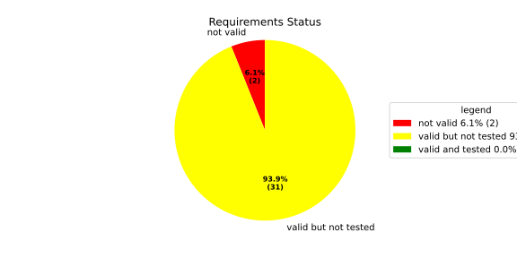
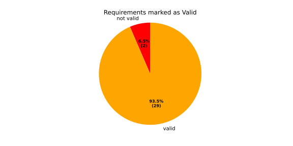
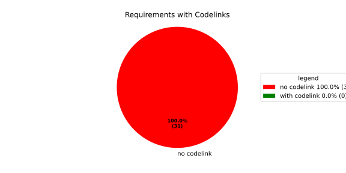
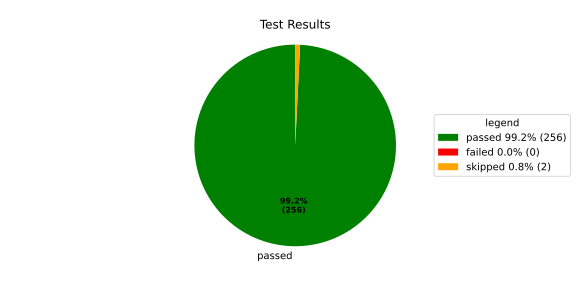
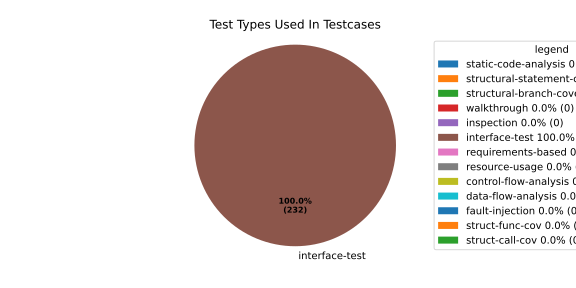
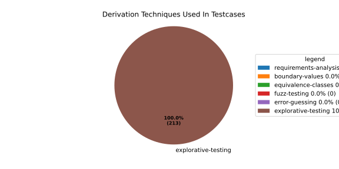

Verification Statistics#
Overview#

In Detail#



Failed Tests
Hint: This table should be empty. Before a PR can be merged all tests have to be successful.
No needs passed the filters
Skipped / Disabled Tests
testcase |
Result |
Fully Verifies |
Partially Verifies |
Test Type |
Derivation Technique |
link |
|---|---|---|---|---|---|---|
ValidateRangeTest/4__RejectsValueAboveMax |
skipped |
interface-test |
explorative-testing |
|||
ValidateRangeTest/4__RejectsValueBelowMin |
skipped |
interface-test |
explorative-testing |
All passed Tests#
testcase |
Result |
Fully Verifies |
Partially Verifies |
Test Type |
Derivation Technique |
link |
|---|---|---|---|---|---|---|
AliveImplTest__DoesNotThrowWhenInterfacePathEnvVarIsSet |
passed |
interface-test |
explorative-testing |
testcase__AliveImplTest__DoesNotThrowWhenInterfacePathEnvVarIsSet_xpewu |
||
AliveImplTest__ReportCheckpointSafeWhenNotConnected |
passed |
interface-test |
explorative-testing |
testcase__AliveImplTest__ReportCheckpointSafeWhenNotConnected_ppvuc |
||
AliveImplTest__ThrowsWhenInterfacePathEnvVarIsNotSet |
passed |
interface-test |
explorative-testing |
testcase__AliveImplTest__ThrowsWhenInterfacePathEnvVarIsNotSet_ekxfw |
||
AliveSupervisionTest__AliveDebouncesThroughFailedBeforeExpired |
passed |
interface-test |
explorative-testing |
testcase__AliveSupervisionTest__AliveDebouncesThroughFailedBeforeExpired_mlnbe |
||
AliveSupervisionTest__AliveReportsEnqueueFailureWhenRingBufferFull |
passed |
interface-test |
explorative-testing |
testcase__AliveSupervisionTest__AliveReportsEnqueueFailureWhenRingBufferFull_byhrd |
||
AliveSupervisionTest__AliveStaysOkWithCorrectHeartbeats |
passed |
interface-test |
explorative-testing |
testcase__AliveSupervisionTest__AliveStaysOkWithCorrectHeartbeats_vekof |
||
AliveSupervisionTest__AliveTransitionsOkToExpiredOnMissingHeartbeat |
passed |
interface-test |
explorative-testing |
testcase__AliveSupervisionTest__AliveTransitionsOkToExpiredOnMissingHeartbeat_jymxo |
||
AliveSupervisionTest__DeactivatesOnProcessCrash |
passed |
interface-test |
explorative-testing |
testcase__AliveSupervisionTest__DeactivatesOnProcessCrash_ypejs |
||
AliveSupervisionTest__DeactivatesOnProcessSigterm |
passed |
interface-test |
explorative-testing |
testcase__AliveSupervisionTest__DeactivatesOnProcessSigterm_hzaal |
||
AliveSupervisionTest__IgnoresIrrelevantProcessStates |
passed |
interface-test |
explorative-testing |
testcase__AliveSupervisionTest__IgnoresIrrelevantProcessStates_aolvb |
||
AliveSupervisionTest__MaxIndicationViolationExpires |
passed |
interface-test |
explorative-testing |
testcase__AliveSupervisionTest__MaxIndicationViolationExpires_whhhi |
||
AliveSupervisionTest__ReactivatesAfterCrash |
passed |
interface-test |
explorative-testing |
|||
ApplicationTypes/ApplicationTypeTest__ConvertsToExpectedValue/Native |
passed |
interface-test |
explorative-testing |
testcase__ApplicationTypes/ApplicationTypeTest__ConvertsToExpectedValue/Native_yxxcz |
||
ApplicationTypes/ApplicationTypeTest__ConvertsToExpectedValue/Reporting |
passed |
interface-test |
explorative-testing |
testcase__ApplicationTypes/ApplicationTypeTest__ConvertsToExpectedValue/Reporting_wcfwr |
||
ApplicationTypes/ApplicationTypeTest__ConvertsToExpectedValue/ReportingAndSupervised |
passed |
interface-test |
explorative-testing |
testcase__ApplicationTypes/ApplicationTypeTest__ConvertsToExpectedValue/ReportingAndSupervised_yxgad |
||
ApplicationTypes/ApplicationTypeTest__ConvertsToExpectedValue/StateManager |
passed |
interface-test |
explorative-testing |
testcase__ApplicationTypes/ApplicationTypeTest__ConvertsToExpectedValue/StateManager_ivuzc |
||
ConfigurationAdapterFallbackTest__FallbackRunTargetResolvesDependenciesRecursively |
passed |
interface-test |
explorative-testing |
testcase__ConfigurationAdapterFallbackTest__FallbackRunTargetResolvesDependenciesRecursively_qcvvz |
||
ConfigurationAdapterReadyConditionTest__DependencyDefaultsToRunningWhenTargetHasNoReadyCondition |
passed |
interface-test |
explorative-testing |
|||
ConfigurationAdapterReadyConditionTest__DependencyUsesTargetComponentReadyCondition |
passed |
interface-test |
explorative-testing |
testcase__ConfigurationAdapterReadyConditionTest__DependencyUsesTargetComponentReadyCondition_wvyyj |
||
ConfigurationAdapterTest__GetListOfProcessGroupsReturnsSingleImplicitGroup |
passed |
interface-test |
explorative-testing |
testcase__ConfigurationAdapterTest__GetListOfProcessGroupsReturnsSingleImplicitGroup_fthqq |
||
ConfigurationAdapterTest__GetMainPGStartupStateMapsToInitialRunTarget |
passed |
interface-test |
explorative-testing |
testcase__ConfigurationAdapterTest__GetMainPGStartupStateMapsToInitialRunTarget_wtcit |
||
ConfigurationAdapterTest__GetNameOfOffStateMapsToMainPGOff |
passed |
interface-test |
explorative-testing |
testcase__ConfigurationAdapterTest__GetNameOfOffStateMapsToMainPGOff_jczne |
||
ConfigurationAdapterTest__GetNameOfRecoveryStateMapsToFallbackRunTarget |
passed |
interface-test |
explorative-testing |
testcase__ConfigurationAdapterTest__GetNameOfRecoveryStateMapsToFallbackRunTarget_mxndq |
||
ConfigurationAdapterTest__GetNumberOfOsProcessesReturnsComponentCount |
passed |
interface-test |
explorative-testing |
testcase__ConfigurationAdapterTest__GetNumberOfOsProcessesReturnsComponentCount_eyzdp |
||
ConfigurationAdapterTest__GetOsProcessConfigurationInjectsAliveInterfaceForSupervised |
passed |
interface-test |
explorative-testing |
|||
ConfigurationAdapterTest__GetOsProcessConfigurationMapsComponentFields |
passed |
interface-test |
explorative-testing |
testcase__ConfigurationAdapterTest__GetOsProcessConfigurationMapsComponentFields_rszfk |
||
ConfigurationAdapterTest__GetOsProcessConfigurationNoAliveInterfaceForNative |
passed |
interface-test |
explorative-testing |
testcase__ConfigurationAdapterTest__GetOsProcessConfigurationNoAliveInterfaceForNative_cbsad |
||
ConfigurationAdapterTest__GetOsProcessConfigurationReturnsNulloptForInvalidIndex |
passed |
interface-test |
explorative-testing |
testcase__ConfigurationAdapterTest__GetOsProcessConfigurationReturnsNulloptForInvalidIndex_yoorg |
||
ConfigurationAdapterTest__GetOsProcessConfigurationReturnsNulloptForUnknownPG |
passed |
interface-test |
explorative-testing |
testcase__ConfigurationAdapterTest__GetOsProcessConfigurationReturnsNulloptForUnknownPG_ewqla |
||
ConfigurationAdapterTest__GetOsProcessDependenciesEmptyForComponentWithNoDeps |
passed |
interface-test |
explorative-testing |
testcase__ConfigurationAdapterTest__GetOsProcessDependenciesEmptyForComponentWithNoDeps_odxew |
||
ConfigurationAdapterTest__GetOsProcessDependenciesMapsComponentDependsOn |
passed |
interface-test |
explorative-testing |
testcase__ConfigurationAdapterTest__GetOsProcessDependenciesMapsComponentDependsOn_varth |
||
ConfigurationAdapterTest__GetProcessIndexesListResolvesRunTargetDependencies |
passed |
interface-test |
explorative-testing |
testcase__ConfigurationAdapterTest__GetProcessIndexesListResolvesRunTargetDependencies_otimf |
||
ConfigurationAdapterTest__GetProcessIndexesListResolvesTransitiveDependencies |
passed |
interface-test |
explorative-testing |
testcase__ConfigurationAdapterTest__GetProcessIndexesListResolvesTransitiveDependencies_iemgm |
||
ConfigurationAdapterTest__GetSoftwareClusterReturnsDefault |
passed |
interface-test |
explorative-testing |
testcase__ConfigurationAdapterTest__GetSoftwareClusterReturnsDefault_ixyoq |
||
ConfigurationAdapterTest__OffStateReturnsProcessIndexesListEmpty |
passed |
interface-test |
explorative-testing |
testcase__ConfigurationAdapterTest__OffStateReturnsProcessIndexesListEmpty_zngsc |
||
ConverterTest__ConvertAliveSupervisionMissingCycleReturnsError |
passed |
interface-test |
explorative-testing |
testcase__ConverterTest__ConvertAliveSupervisionMissingCycleReturnsError_bifzg |
||
ConverterTest__ConvertAliveSupervisionNullReturnsDefault |
passed |
interface-test |
explorative-testing |
testcase__ConverterTest__ConvertAliveSupervisionNullReturnsDefault_clyua |
||
ConverterTest__ConvertAliveSupervisionValid |
passed |
interface-test |
explorative-testing |
|||
ConverterTest__ConvertApplicationProfileMissingSelfTerminatingReturnsError |
passed |
interface-test |
explorative-testing |
testcase__ConverterTest__ConvertApplicationProfileMissingSelfTerminatingReturnsError_zddjb |
||
ConverterTest__ConvertApplicationProfileMissingTypeReturnsError |
passed |
interface-test |
explorative-testing |
testcase__ConverterTest__ConvertApplicationProfileMissingTypeReturnsError_zrfcs |
||
ConverterTest__ConvertApplicationProfileValid |
passed |
interface-test |
explorative-testing |
testcase__ConverterTest__ConvertApplicationProfileValid_oohxq |
||
ConverterTest__ConvertComponentAliveSupervisionBothIndicationsAbsentReturnsError |
passed |
interface-test |
explorative-testing |
testcase__ConverterTest__ConvertComponentAliveSupervisionBothIndicationsAbsentReturnsError_gvtfi |
||
ConverterTest__ConvertComponentAliveSupervisionMissingReportingCycleReturnsError |
passed |
interface-test |
explorative-testing |
testcase__ConverterTest__ConvertComponentAliveSupervisionMissingReportingCycleReturnsError_ajymy |
||
ConverterTest__ConvertComponentAliveSupervisionMissingToleranceReturnsError |
passed |
interface-test |
explorative-testing |
testcase__ConverterTest__ConvertComponentAliveSupervisionMissingToleranceReturnsError_lgrhj |
||
ConverterTest__ConvertComponentAliveSupervisionNullReturnsDefault |
passed |
interface-test |
explorative-testing |
testcase__ConverterTest__ConvertComponentAliveSupervisionNullReturnsDefault_xhaus |
||
ConverterTest__ConvertComponentAliveSupervisionOnlyMaxIndicationsPresent |
passed |
interface-test |
explorative-testing |
testcase__ConverterTest__ConvertComponentAliveSupervisionOnlyMaxIndicationsPresent_smwht |
||
ConverterTest__ConvertComponentAliveSupervisionOnlyMinIndicationsPresent |
passed |
interface-test |
explorative-testing |
testcase__ConverterTest__ConvertComponentAliveSupervisionOnlyMinIndicationsPresent_ybbrr |
||
ConverterTest__ConvertComponentAliveSupervisionValid |
passed |
interface-test |
explorative-testing |
testcase__ConverterTest__ConvertComponentAliveSupervisionValid_ijedh |
||
ConverterTest__ConvertComponentsValid |
passed |
interface-test |
explorative-testing |
|||
ConverterTest__ConvertComponentsWithInvalidComponentReturnsError |
passed |
interface-test |
explorative-testing |
testcase__ConverterTest__ConvertComponentsWithInvalidComponentReturnsError_wridc |
||
ConverterTest__ConvertComponentValid |
passed |
interface-test |
explorative-testing |
|||
ConverterTest__ConvertDeploymentConfigMissingReadyTimeoutReturnsError |
passed |
interface-test |
explorative-testing |
testcase__ConverterTest__ConvertDeploymentConfigMissingReadyTimeoutReturnsError_ljzfl |
||
ConverterTest__ConvertDeploymentConfigMissingShutdownTimeoutReturnsError |
passed |
interface-test |
explorative-testing |
testcase__ConverterTest__ConvertDeploymentConfigMissingShutdownTimeoutReturnsError_vyqye |
||
ConverterTest__ConvertDeploymentConfigValid |
passed |
interface-test |
explorative-testing |
|||
ConverterTest__ConvertEnvironmentalVariables |
passed |
interface-test |
explorative-testing |
testcase__ConverterTest__ConvertEnvironmentalVariables_fnhgo |
||
ConverterTest__ConvertEnvironmentalVariablesNullReturnsEmpty |
passed |
interface-test |
explorative-testing |
testcase__ConverterTest__ConvertEnvironmentalVariablesNullReturnsEmpty_vglrx |
||
ConverterTest__ConvertFallbackRunTargetMissingTimeoutReturnsError |
passed |
interface-test |
explorative-testing |
testcase__ConverterTest__ConvertFallbackRunTargetMissingTimeoutReturnsError_aevly |
||
ConverterTest__ConvertFallbackRunTargetValid |
passed |
interface-test |
explorative-testing |
testcase__ConverterTest__ConvertFallbackRunTargetValid_nexxj |
||
ConverterTest__ConvertReadyConditionMissingProcessStateReturnsError |
passed |
interface-test |
explorative-testing |
testcase__ConverterTest__ConvertReadyConditionMissingProcessStateReturnsError_ileav |
||
ConverterTest__ConvertReadyConditionValid |
passed |
interface-test |
explorative-testing |
|||
ConverterTest__ConvertRestartActionMissingFieldsReturnsError |
passed |
interface-test |
explorative-testing |
testcase__ConverterTest__ConvertRestartActionMissingFieldsReturnsError_aapjb |
||
ConverterTest__ConvertRestartActionNullReturnsNullopt |
passed |
interface-test |
explorative-testing |
testcase__ConverterTest__ConvertRestartActionNullReturnsNullopt_ifvyd |
||
ConverterTest__ConvertRestartActionValid |
passed |
interface-test |
explorative-testing |
|||
ConverterTest__ConvertRunTargetMissingTransitionTimeoutReturnsError |
passed |
interface-test |
explorative-testing |
testcase__ConverterTest__ConvertRunTargetMissingTransitionTimeoutReturnsError_ynekv |
||
ConverterTest__ConvertRunTargetsValid |
passed |
interface-test |
explorative-testing |
|||
ConverterTest__ConvertRunTargetsWithInvalidRunTargetReturnsError |
passed |
interface-test |
explorative-testing |
testcase__ConverterTest__ConvertRunTargetsWithInvalidRunTargetReturnsError_ldlox |
||
ConverterTest__ConvertRunTargetValid |
passed |
interface-test |
explorative-testing |
|||
ConverterTest__ConvertSandboxMissingGidReturnsError |
passed |
interface-test |
explorative-testing |
testcase__ConverterTest__ConvertSandboxMissingGidReturnsError_veeel |
||
ConverterTest__ConvertSandboxMissingSchedulingPolicyReturnsError |
passed |
interface-test |
explorative-testing |
testcase__ConverterTest__ConvertSandboxMissingSchedulingPolicyReturnsError_pkfts |
||
ConverterTest__ConvertSandboxMissingSchedulingPriorityReturnsError |
passed |
interface-test |
explorative-testing |
testcase__ConverterTest__ConvertSandboxMissingSchedulingPriorityReturnsError_xzdho |
||
ConverterTest__ConvertSandboxMissingUidReturnsError |
passed |
interface-test |
explorative-testing |
testcase__ConverterTest__ConvertSandboxMissingUidReturnsError_ogfku |
||
ConverterTest__ConvertSandboxSupplementaryGidOutOfRangeReturnsError |
passed |
interface-test |
explorative-testing |
testcase__ConverterTest__ConvertSandboxSupplementaryGidOutOfRangeReturnsError_zavpx |
||
ConverterTest__ConvertSandboxUidOutOfRangeReturnsError |
passed |
interface-test |
explorative-testing |
testcase__ConverterTest__ConvertSandboxUidOutOfRangeReturnsError_mcuaf |
||
ConverterTest__ConvertSandboxValid |
passed |
interface-test |
explorative-testing |
|||
ConverterTest__ConvertSwitchRunTargetActionNullReturnsNullopt |
passed |
interface-test |
explorative-testing |
testcase__ConverterTest__ConvertSwitchRunTargetActionNullReturnsNullopt_zmitx |
||
ConverterTest__ConvertSwitchRunTargetActionValid |
passed |
interface-test |
explorative-testing |
testcase__ConverterTest__ConvertSwitchRunTargetActionValid_tdklr |
||
ConverterTest__ConvertWatchdogMissingDeactivateReturnsError |
passed |
interface-test |
explorative-testing |
testcase__ConverterTest__ConvertWatchdogMissingDeactivateReturnsError_gzwjt |
||
ConverterTest__ConvertWatchdogMissingMagicCloseReturnsError |
passed |
interface-test |
explorative-testing |
testcase__ConverterTest__ConvertWatchdogMissingMagicCloseReturnsError_gexxk |
||
ConverterTest__ConvertWatchdogMissingMaxTimeoutReturnsError |
passed |
interface-test |
explorative-testing |
testcase__ConverterTest__ConvertWatchdogMissingMaxTimeoutReturnsError_lffxm |
||
ConverterTest__ConvertWatchdogNullReturnsNullopt |
passed |
interface-test |
explorative-testing |
testcase__ConverterTest__ConvertWatchdogNullReturnsNullopt_irsdk |
||
ConverterTest__ConvertWatchdogValid |
passed |
interface-test |
explorative-testing |
|||
DeadlineFixture__Start_AlreadyRunning |
passed |
interface-test |
explorative-testing |
|||
DeadlineFixture__Start_Succeeds |
passed |
interface-test |
explorative-testing |
|||
DeadlineMonitorBuilderFixture__AddDeadline_Succeeds |
passed |
interface-test |
explorative-testing |
testcase__DeadlineMonitorBuilderFixture__AddDeadline_Succeeds_nagke |
||
DeadlineMonitorBuilderFixture__New_Succeeds |
passed |
interface-test |
explorative-testing |
|||
DeadlineMonitorFixture__GetDeadline_Succeeds |
passed |
interface-test |
explorative-testing |
testcase__DeadlineMonitorFixture__GetDeadline_Succeeds_tmltf |
||
DeadlineMonitorFixture__GetDeadline_Unknown |
passed |
interface-test |
explorative-testing |
|||
EnumConversionTest__ConvertSchedulingPolicyUnsupported |
passed |
interface-test |
explorative-testing |
testcase__EnumConversionTest__ConvertSchedulingPolicyUnsupported_iavqm |
||
EnvironmentTest__AddIncreasesSize |
passed |
interface-test |
explorative-testing |
|||
EnvironmentTest__DefaultConstructedIsEmpty |
passed |
interface-test |
explorative-testing |
|||
EnvironmentTest__EmptyEnvironmentEnvpIsNullTerminated |
passed |
interface-test |
explorative-testing |
testcase__EnvironmentTest__EmptyEnvironmentEnvpIsNullTerminated_wwumw |
||
EnvironmentTest__EnvpReturnsNullTerminatedArray |
passed |
interface-test |
explorative-testing |
testcase__EnvironmentTest__EnvpReturnsNullTerminatedArray_aubkv |
||
EnvironmentTest__EnvpWithMultipleEntries |
passed |
interface-test |
explorative-testing |
|||
EnvironmentTest__MoveAssignmentPreservesEntries |
passed |
interface-test |
explorative-testing |
testcase__EnvironmentTest__MoveAssignmentPreservesEntries_vkydj |
||
EnvironmentTest__MoveConstructorPreservesEntries |
passed |
interface-test |
explorative-testing |
testcase__EnvironmentTest__MoveConstructorPreservesEntries_upclt |
||
EnvironmentTest__RangeBasedForLoopWorks |
passed |
interface-test |
explorative-testing |
|||
EnvironmentTest__ReserveAndAddAvoidReallocation |
passed |
interface-test |
explorative-testing |
testcase__EnvironmentTest__ReserveAndAddAvoidReallocation_lgzmu |
||
EnvironmentTest__SsoLengthStringSurvivesReallocation |
passed |
interface-test |
explorative-testing |
testcase__EnvironmentTest__SsoLengthStringSurvivesReallocation_jfmtl |
||
EnvironmentVariableTest__CStrReturnsKeyEqualsValue |
passed |
interface-test |
explorative-testing |
testcase__EnvironmentVariableTest__CStrReturnsKeyEqualsValue_rkwan |
||
EnvironmentVariableTest__EmptyValue |
passed |
interface-test |
explorative-testing |
|||
EnvironmentVariableTest__KeyAndValueAreAccessible |
passed |
interface-test |
explorative-testing |
testcase__EnvironmentVariableTest__KeyAndValueAreAccessible_kcrth |
||
EnvironmentVariableTest__ValueContainingEquals |
passed |
interface-test |
explorative-testing |
testcase__EnvironmentVariableTest__ValueContainingEquals_apzgz |
||
ExecErrorDomainTest__AllKnownCodesHaveDistinctMessages |
passed |
interface-test |
explorative-testing |
testcase__ExecErrorDomainTest__AllKnownCodesHaveDistinctMessages_qpoka |
||
ExecErrorDomainTest__AllKnownCodesReturnNonEmptyMessage |
passed |
interface-test |
explorative-testing |
testcase__ExecErrorDomainTest__AllKnownCodesReturnNonEmptyMessage_bawzg |
||
ExecErrorDomainTest__UnknownCodeReturnsNonEmptyMessage |
passed |
interface-test |
explorative-testing |
testcase__ExecErrorDomainTest__UnknownCodeReturnsNonEmptyMessage_kkwpr |
||
FlatbufferConfigLoaderTest__CorruptedBufferReturnsInvalidFormat |
passed |
interface-test |
explorative-testing |
testcase__FlatbufferConfigLoaderTest__CorruptedBufferReturnsInvalidFormat_twyac |
||
FlatbufferConfigLoaderTest__LoadAliveSupervision |
passed |
interface-test |
explorative-testing |
testcase__FlatbufferConfigLoaderTest__LoadAliveSupervision_hhuux |
||
FlatbufferConfigLoaderTest__LoadBufferFailsWithGenericErrorReturnsGeneralError |
passed |
interface-test |
explorative-testing |
testcase__FlatbufferConfigLoaderTest__LoadBufferFailsWithGenericErrorReturnsGeneralError_kmatm |
||
FlatbufferConfigLoaderTest__LoadBufferFailsWithNoSuchFileReturnsFileNotFound |
passed |
interface-test |
explorative-testing |
testcase__FlatbufferConfigLoaderTest__LoadBufferFailsWithNoSuchFileReturnsFileNotFound_yzlra |
||
FlatbufferConfigLoaderTest__LoadBufferFailsWithPermissionDeniedReturnsInsufficientPermission |
passed |
interface-test |
explorative-testing |
|||
FlatbufferConfigLoaderTest__LoadComponentAliveSupervision |
passed |
interface-test |
explorative-testing |
testcase__FlatbufferConfigLoaderTest__LoadComponentAliveSupervision_fwfad |
||
FlatbufferConfigLoaderTest__LoadEnvironmentalVariables |
passed |
interface-test |
explorative-testing |
testcase__FlatbufferConfigLoaderTest__LoadEnvironmentalVariables_wsosu |
||
FlatbufferConfigLoaderTest__LoadFallbackRunTarget |
passed |
interface-test |
explorative-testing |
testcase__FlatbufferConfigLoaderTest__LoadFallbackRunTarget_wduqm |
||
FlatbufferConfigLoaderTest__LoadMinimalConfig |
passed |
interface-test |
explorative-testing |
testcase__FlatbufferConfigLoaderTest__LoadMinimalConfig_hdkck |
||
FlatbufferConfigLoaderTest__LoadMultipleComponents |
passed |
interface-test |
explorative-testing |
testcase__FlatbufferConfigLoaderTest__LoadMultipleComponents_abpom |
||
FlatbufferConfigLoaderTest__LoadRestartRecoveryAction |
passed |
interface-test |
explorative-testing |
testcase__FlatbufferConfigLoaderTest__LoadRestartRecoveryAction_wyfqg |
||
FlatbufferConfigLoaderTest__LoadRunTargets |
passed |
interface-test |
explorative-testing |
|||
FlatbufferConfigLoaderTest__LoadSandbox |
passed |
interface-test |
explorative-testing |
|||
FlatbufferConfigLoaderTest__LoadSingleComponent |
passed |
interface-test |
explorative-testing |
testcase__FlatbufferConfigLoaderTest__LoadSingleComponent_yidty |
||
FlatbufferConfigLoaderTest__LoadSwitchRunTargetAction |
passed |
interface-test |
explorative-testing |
testcase__FlatbufferConfigLoaderTest__LoadSwitchRunTargetAction_uchgp |
||
FlatbufferConfigLoaderTest__LoadWatchdog |
passed |
interface-test |
explorative-testing |
|||
FlatbufferConfigLoaderTest__MissingSchemaVersionReturnsInvalidFormat |
passed |
interface-test |
explorative-testing |
testcase__FlatbufferConfigLoaderTest__MissingSchemaVersionReturnsInvalidFormat_qqmfn |
||
FlatbufferConfigLoaderTest__OptionalReadyConditionAbsent |
passed |
interface-test |
explorative-testing |
testcase__FlatbufferConfigLoaderTest__OptionalReadyConditionAbsent_lhddx |
||
FlatbufferConfigLoaderTest__OptionalWatchdogAbsent |
passed |
interface-test |
explorative-testing |
testcase__FlatbufferConfigLoaderTest__OptionalWatchdogAbsent_pkhkp |
||
FlatbufferConfigLoaderTest__WrongSchemaVersionReturnsUnsupportedVersion |
passed |
interface-test |
explorative-testing |
testcase__FlatbufferConfigLoaderTest__WrongSchemaVersionReturnsUnsupportedVersion_zrbjv |
||
HealthMonitor__GetDeadlineMonitor_Available |
passed |
|||||
HealthMonitor__GetDeadlineMonitor_Taken |
passed |
|||||
HealthMonitor__GetDeadlineMonitor_Unknown |
passed |
|||||
HealthMonitor__GetHeartbeatMonitor_Available |
passed |
testcase__HealthMonitor__GetHeartbeatMonitor_Available_aacat |
||||
HealthMonitor__GetHeartbeatMonitor_Taken |
passed |
|||||
HealthMonitor__GetHeartbeatMonitor_Unknown |
passed |
|||||
HealthMonitor__GetLogicMonitor_Available |
passed |
|||||
HealthMonitor__GetLogicMonitor_Taken |
passed |
|||||
HealthMonitor__GetLogicMonitor_Unknown |
passed |
|||||
HealthMonitor__Start_MonitorsNotTaken |
passed |
|||||
HealthMonitor__Start_Succeeds |
passed |
|||||
HealthMonitorBuilderFixture__Build_InvalidCycles |
passed |
interface-test |
explorative-testing |
testcase__HealthMonitorBuilderFixture__Build_InvalidCycles_pdigk |
||
HealthMonitorBuilderFixture__Build_NoMonitors |
passed |
interface-test |
explorative-testing |
testcase__HealthMonitorBuilderFixture__Build_NoMonitors_ktcve |
||
HealthMonitorBuilderFixture__Build_Succeeds |
passed |
interface-test |
explorative-testing |
|||
HealthMonitorBuilderFixture__New_Succeeds |
passed |
interface-test |
explorative-testing |
|||
HealthMonitorTest__Integrated |
passed |
interface-test |
explorative-testing |
|||
HeartbeatMonitor__Heartbeat_Succeeds |
passed |
interface-test |
explorative-testing |
|||
HeartbeatMonitorBuilder__New_Succeeds |
passed |
interface-test |
explorative-testing |
|||
IdentifierHashTest__IdentifierHash_default_created |
passed |
interface-test |
explorative-testing |
testcase__IdentifierHashTest__IdentifierHash_default_created_yhhvi |
||
IdentifierHashTest__IdentifierHash_EqualityOperators |
passed |
interface-test |
explorative-testing |
testcase__IdentifierHashTest__IdentifierHash_EqualityOperators_nnsuj |
||
IdentifierHashTest__IdentifierHash_invalid_hash_no_string_representation |
passed |
interface-test |
explorative-testing |
testcase__IdentifierHashTest__IdentifierHash_invalid_hash_no_string_representation_rxowr |
||
IdentifierHashTest__IdentifierHash_LessThanOperator |
passed |
interface-test |
explorative-testing |
testcase__IdentifierHashTest__IdentifierHash_LessThanOperator_rnbax |
||
IdentifierHashTest__IdentifierHash_no_dangling_pointer_after_source_string_dies |
passed |
interface-test |
explorative-testing |
testcase__IdentifierHashTest__IdentifierHash_no_dangling_pointer_after_source_string_dies_qsjin |
||
IdentifierHashTest__IdentifierHash_with_string_created |
passed |
interface-test |
explorative-testing |
testcase__IdentifierHashTest__IdentifierHash_with_string_created_aygdm |
||
IdentifierHashTest__IdentifierHash_with_string_view_created |
passed |
interface-test |
explorative-testing |
testcase__IdentifierHashTest__IdentifierHash_with_string_view_created_dbpol |
||
LogicMonitorBuilderFixture__AddState_Succeeds |
passed |
interface-test |
explorative-testing |
testcase__LogicMonitorBuilderFixture__AddState_Succeeds_axdxj |
||
LogicMonitorBuilderFixture__New_Succeeds |
passed |
interface-test |
explorative-testing |
|||
LogicMonitorFixture__State_Invalid |
passed |
interface-test |
explorative-testing |
|||
LogicMonitorFixture__State_Succeeds |
passed |
interface-test |
explorative-testing |
|||
LogicMonitorFixture__Transition_Invalid |
passed |
interface-test |
explorative-testing |
|||
LogicMonitorFixture__Transition_Succeeds |
passed |
interface-test |
explorative-testing |
|||
LogicMonitorFixture__Transition_Unknown |
passed |
interface-test |
explorative-testing |
|||
MonitorIfDaemonTest__Active_CheckpointDataForwarded |
passed |
interface-test |
explorative-testing |
testcase__MonitorIfDaemonTest__Active_CheckpointDataForwarded_evumz |
||
MonitorIfDaemonTest__Active_FutureTimestamp_NotForwardedInCurrentCycle |
passed |
interface-test |
explorative-testing |
testcase__MonitorIfDaemonTest__Active_FutureTimestamp_NotForwardedInCurrentCycle_oycau |
||
MonitorIfDaemonTest__Active_FutureTimestampCheckpoint_ConsumedInLaterCycle |
passed |
interface-test |
explorative-testing |
testcase__MonitorIfDaemonTest__Active_FutureTimestampCheckpoint_ConsumedInLaterCycle_veyyy |
||
MonitorIfDaemonTest__Active_MultipleCheckpointsInOneCycle_AllForwarded |
passed |
interface-test |
explorative-testing |
testcase__MonitorIfDaemonTest__Active_MultipleCheckpointsInOneCycle_AllForwarded_gmbms |
||
MonitorIfDaemonTest__Active_NonMatchingCheckpointId_NotForwarded |
passed |
interface-test |
explorative-testing |
testcase__MonitorIfDaemonTest__Active_NonMatchingCheckpointId_NotForwarded_bohck |
||
MonitorIfDaemonTest__Active_OverflowDetected_TransitionsToInactiveOverflow |
passed |
interface-test |
explorative-testing |
testcase__MonitorIfDaemonTest__Active_OverflowDetected_TransitionsToInactiveOverflow_ovitk |
||
MonitorIfDaemonTest__Active_TwoAttachedCheckpoints_RoutedByCheckpointId |
passed |
interface-test |
explorative-testing |
testcase__MonitorIfDaemonTest__Active_TwoAttachedCheckpoints_RoutedByCheckpointId_skqhd |
||
MonitorIfDaemonTest__GetInterfaceName_ReturnsNameGivenAtConstruction |
passed |
interface-test |
explorative-testing |
testcase__MonitorIfDaemonTest__GetInterfaceName_ReturnsNameGivenAtConstruction_iaemz |
||
MonitorIfDaemonTest__InactiveOverflow_NoProcessRestart_DoesNotRepeatNotification |
passed |
interface-test |
explorative-testing |
testcase__MonitorIfDaemonTest__InactiveOverflow_NoProcessRestart_DoesNotRepeatNotification_gdbxg |
||
MonitorIfDaemonTest__InactiveOverflow_ProcessRestartFlag_ClearedAfterNotification |
passed |
interface-test |
explorative-testing |
testcase__MonitorIfDaemonTest__InactiveOverflow_ProcessRestartFlag_ClearedAfterNotification_pqfyy |
||
MonitorIfDaemonTest__InactiveOverflow_ProcessRestarts_PushesOverflowNotificationAgain |
passed |
interface-test |
explorative-testing |
|||
MonitorIfDaemonTest__InitiallyInactive_CheckForNewData_DoesNotNotifyCheckpoint |
passed |
interface-test |
explorative-testing |
testcase__MonitorIfDaemonTest__InitiallyInactive_CheckForNewData_DoesNotNotifyCheckpoint_wjrfl |
||
MonitorIfDaemonTest__ProcessOff_DeactivatesMonitor_NoFurtherDataForwarded |
passed |
interface-test |
explorative-testing |
testcase__MonitorIfDaemonTest__ProcessOff_DeactivatesMonitor_NoFurtherDataForwarded_uialh |
||
MonitorIfDaemonTest__ProcessOffBeforeActivation_RemainsInactive |
passed |
interface-test |
explorative-testing |
testcase__MonitorIfDaemonTest__ProcessOffBeforeActivation_RemainsInactive_kzzyy |
||
MonitorIfDaemonTest__ProcessRunning_ActivatesMonitorOnNextCheckForNewData |
passed |
interface-test |
explorative-testing |
testcase__MonitorIfDaemonTest__ProcessRunning_ActivatesMonitorOnNextCheckForNewData_fkkmk |
||
MonitorIfDaemonTest__ProcessStarting_AlsoActivatesMonitor |
passed |
interface-test |
explorative-testing |
testcase__MonitorIfDaemonTest__ProcessStarting_AlsoActivatesMonitor_xdkbg |
||
MPMCConcurrentQueueTest_Basic__LvaluePushCopiesItem |
passed |
testcase__MPMCConcurrentQueueTest_Basic__LvaluePushCopiesItem_oysfc |
||||
MPMCConcurrentQueueTest_Basic__PopReturnsNulloptOnSemaphoreWaitFailure |
passed |
testcase__MPMCConcurrentQueueTest_Basic__PopReturnsNulloptOnSemaphoreWaitFailure_rgznm |
||||
MPMCConcurrentQueueTest_Basic__PushAndPopPreservesOrder |
passed |
testcase__MPMCConcurrentQueueTest_Basic__PushAndPopPreservesOrder_aijdb |
||||
MPMCConcurrentQueueTest_Basic__PushAndPopSingleItem |
passed |
testcase__MPMCConcurrentQueueTest_Basic__PushAndPopSingleItem_jrxwz |
||||
MPMCConcurrentQueueTest_Basic__RvaluePushWorksWithMoveOnlyType |
passed |
testcase__MPMCConcurrentQueueTest_Basic__RvaluePushWorksWithMoveOnlyType_cxxaj |
||||
MPMCConcurrentQueueTest_Blocking__PopBlocksUntilItemAvailable |
passed |
testcase__MPMCConcurrentQueueTest_Blocking__PopBlocksUntilItemAvailable_ttwcx |
||||
MPMCConcurrentQueueTest_Blocking__PushBlocksWhenFull |
passed |
testcase__MPMCConcurrentQueueTest_Blocking__PushBlocksWhenFull_ecujf |
||||
MPMCConcurrentQueueTest_Blocking__StopUnblocksBlockedConsumer |
passed |
testcase__MPMCConcurrentQueueTest_Blocking__StopUnblocksBlockedConsumer_snzyr |
||||
MPMCConcurrentQueueTest_Blocking__StopUnblocksBlockedProducer |
passed |
testcase__MPMCConcurrentQueueTest_Blocking__StopUnblocksBlockedProducer_inddu |
||||
MPMCConcurrentQueueTest_MPMC__AllItemsDelivered |
passed |
testcase__MPMCConcurrentQueueTest_MPMC__AllItemsDelivered_ztjqe |
||||
MPMCConcurrentQueueTest_Stop__ItemsAreDroppedAfterStop |
passed |
testcase__MPMCConcurrentQueueTest_Stop__ItemsAreDroppedAfterStop_ragzw |
||||
MPMCConcurrentQueueTest_Stop__PopReturnsNulloptWhenStoppedAndEmpty |
passed |
testcase__MPMCConcurrentQueueTest_Stop__PopReturnsNulloptWhenStoppedAndEmpty_cevga |
||||
MPMCConcurrentQueueTest_Stop__PushReturnsFalseAfterStop |
passed |
testcase__MPMCConcurrentQueueTest_Stop__PushReturnsFalseAfterStop_qqnhw |
||||
MPMCConcurrentQueueTest_Timeout__PushWithTimeoutReturnsFalseWhenFull |
passed |
testcase__MPMCConcurrentQueueTest_Timeout__PushWithTimeoutReturnsFalseWhenFull_aeips |
||||
MPMCConcurrentQueueTest_Timeout__PushWithTimeoutSucceedsWhenSlotAvailable |
passed |
testcase__MPMCConcurrentQueueTest_Timeout__PushWithTimeoutSucceedsWhenSlotAvailable_klzpo |
||||
OsHandlerTest__WaitReturnsError_OsHandlerSleepsAndDoesNotCallFindTerminated |
passed |
interface-test |
explorative-testing |
testcase__OsHandlerTest__WaitReturnsError_OsHandlerSleepsAndDoesNotCallFindTerminated_cibtr |
||
OsHandlerTest__WaitReturnsErrorThenProcessId_HandlerRecoversAndInvokesCallback |
passed |
interface-test |
explorative-testing |
testcase__OsHandlerTest__WaitReturnsErrorThenProcessId_HandlerRecoversAndInvokesCallback_nqstd |
||
OsHandlerTest__WaitReturnsProcessId_FindTerminatedIsCalled |
passed |
interface-test |
explorative-testing |
testcase__OsHandlerTest__WaitReturnsProcessId_FindTerminatedIsCalled_chlsq |
||
OsHandlerTest__WaitReturnsProcessIdBeforeRegistration_LaterRegistrationReceivesStoredTermination |
passed |
interface-test |
explorative-testing |
|||
OsHandlerTest__WaitReturnsUnknownPidWhenMapIsFull_OutOfResourcesPathDoesNotNotifyCallbacks |
passed |
interface-test |
explorative-testing |
|||
OsHandlerTest__WaitReturnsZeroPid_OsHandlerSleepsAndDoesNotCallFindTerminated |
passed |
interface-test |
explorative-testing |
testcase__OsHandlerTest__WaitReturnsZeroPid_OsHandlerSleepsAndDoesNotCallFindTerminated_rkttz |
||
ProcessStateClient_UT__ProcessStateClient_ConstructReceiver_Succeeds |
passed |
interface-test |
explorative-testing |
testcase__ProcessStateClient_UT__ProcessStateClient_ConstructReceiver_Succeeds_hodwy |
||
ProcessStateClient_UT__ProcessStateClient_QueueMaxNumberOfProcesses_Succeeds |
passed |
interface-test |
explorative-testing |
testcase__ProcessStateClient_UT__ProcessStateClient_QueueMaxNumberOfProcesses_Succeeds_qohom |
||
ProcessStateClient_UT__ProcessStateClient_QueueOneProcess_Succeeds |
passed |
interface-test |
explorative-testing |
testcase__ProcessStateClient_UT__ProcessStateClient_QueueOneProcess_Succeeds_tmzfz |
||
ProcessStateClient_UT__ProcessStateClient_QueueOneProcessTooMany_Fails |
passed |
interface-test |
explorative-testing |
testcase__ProcessStateClient_UT__ProcessStateClient_QueueOneProcessTooMany_Fails_sspoj |
||
ProcessStates/ProcessStateTest__ConvertsToExpectedValue/Running |
passed |
interface-test |
explorative-testing |
testcase__ProcessStates/ProcessStateTest__ConvertsToExpectedValue/Running_hinlr |
||
ProcessStates/ProcessStateTest__ConvertsToExpectedValue/Terminated |
passed |
interface-test |
explorative-testing |
testcase__ProcessStates/ProcessStateTest__ConvertsToExpectedValue/Terminated_zrytn |
||
RecoveryClientTest__FIFOOrdering |
passed |
interface-test |
explorative-testing |
|||
RecoveryClientTest__GetNextRequest |
passed |
interface-test |
explorative-testing |
|||
RecoveryClientTest__GetNextRequestEmpty |
passed |
interface-test |
explorative-testing |
|||
RecoveryClientTest__RingBufferFull |
passed |
interface-test |
explorative-testing |
|||
RecoveryClientTest__SendSingleRequest |
passed |
interface-test |
explorative-testing |
|||
RunTest__AsPosixProcessCreatesAndDestroysLifeCycleManager |
passed |
testcase__RunTest__AsPosixProcessCreatesAndDestroysLifeCycleManager_sooex |
||||
RunTest__AsPosixProcessForwardsConstructorArgsToApplication |
passed |
testcase__RunTest__AsPosixProcessForwardsConstructorArgsToApplication_dmeur |
||||
RunTest__AsPosixProcessForwardsNonZeroExitCode |
passed |
testcase__RunTest__AsPosixProcessForwardsNonZeroExitCode_lldqd |
||||
RunTest__AsPosixProcessPassesCorrectApplicationTypeToRun |
passed |
testcase__RunTest__AsPosixProcessPassesCorrectApplicationTypeToRun_ajqwz |
||||
RunTest__AsPosixProcessReturnsZeroExitCode |
passed |
|||||
RunTest__RunApplicationFreeFunctionDelegatesToAsPosixProcess |
passed |
testcase__RunTest__RunApplicationFreeFunctionDelegatesToAsPosixProcess_ccing |
||||
RunTest__RunConstructorPassesArgcArgvToApplicationContext |
passed |
testcase__RunTest__RunConstructorPassesArgcArgvToApplicationContext_agerd |
||||
SafeProcessMapTest__ConcurrentFindAndInsertFromMultipleThreads |
passed |
interface-test |
explorative-testing |
testcase__SafeProcessMapTest__ConcurrentFindAndInsertFromMultipleThreads_kzfyg |
||
SafeProcessMapTest__ConcurrentInsertAndFindFromMultipleThreads |
passed |
interface-test |
explorative-testing |
testcase__SafeProcessMapTest__ConcurrentInsertAndFindFromMultipleThreads_hnyqj |
||
SafeProcessMapTest__ConstructWithZeroCapacity |
passed |
interface-test |
explorative-testing |
testcase__SafeProcessMapTest__ConstructWithZeroCapacity_gjmqg |
||
SafeProcessMapTest__FindTerminatedInsertsEntryWhenPidNotPresent |
passed |
interface-test |
explorative-testing |
testcase__SafeProcessMapTest__FindTerminatedInsertsEntryWhenPidNotPresent_ixtlt |
||
SafeProcessMapTest__FindTerminatedMatchesExistingInsertAndCallsCallback |
passed |
interface-test |
explorative-testing |
testcase__SafeProcessMapTest__FindTerminatedMatchesExistingInsertAndCallsCallback_ehuzb |
||
SafeProcessMapTest__FindTerminatedSamePidTwiceYieldsUntilInsertResolves |
passed |
interface-test |
explorative-testing |
testcase__SafeProcessMapTest__FindTerminatedSamePidTwiceYieldsUntilInsertResolves_hsekx |
||
SafeProcessMapTest__FindTerminatedWithNegativePidReturnsInvalid |
passed |
interface-test |
explorative-testing |
testcase__SafeProcessMapTest__FindTerminatedWithNegativePidReturnsInvalid_dewoh |
||
SafeProcessMapTest__FindTerminatedWorksAtMaxTreeDepth |
passed |
interface-test |
explorative-testing |
testcase__SafeProcessMapTest__FindTerminatedWorksAtMaxTreeDepth_adtzi |
||
SafeProcessMapTest__InsertBeyondCapacityReturnsOutOfMemory |
passed |
interface-test |
explorative-testing |
testcase__SafeProcessMapTest__InsertBeyondCapacityReturnsOutOfMemory_qjnie |
||
SafeProcessMapTest__InsertIntoEmptyTreeReturnsZero |
passed |
interface-test |
explorative-testing |
testcase__SafeProcessMapTest__InsertIntoEmptyTreeReturnsZero_zfbaq |
||
SafeProcessMapTest__InsertMatchesExistingFindTerminatedEntry |
passed |
interface-test |
explorative-testing |
testcase__SafeProcessMapTest__InsertMatchesExistingFindTerminatedEntry_fuwrp |
||
SafeProcessMapTest__InsertMultipleNodesThenFindTerminatedRemovesAll |
passed |
interface-test |
explorative-testing |
testcase__SafeProcessMapTest__InsertMultipleNodesThenFindTerminatedRemovesAll_fvowh |
||
SafeProcessMapTest__InsertSamePidTwiceYieldsUntilFindTerminatedResolves |
passed |
interface-test |
explorative-testing |
testcase__SafeProcessMapTest__InsertSamePidTwiceYieldsUntilFindTerminatedResolves_wzwyb |
||
SchedulingPolicies/SchedulingPolicyTest__ConvertsToExpectedPosixValue/SCHED_FIFO |
passed |
interface-test |
explorative-testing |
testcase__SchedulingPolicies/SchedulingPolicyTest__ConvertsToExpectedPosixValue/SCHED_FIFO_soddq |
||
SchedulingPolicies/SchedulingPolicyTest__ConvertsToExpectedPosixValue/SCHED_OTHER |
passed |
interface-test |
explorative-testing |
testcase__SchedulingPolicies/SchedulingPolicyTest__ConvertsToExpectedPosixValue/SCHED_OTHER_oigmk |
||
SchedulingPolicies/SchedulingPolicyTest__ConvertsToExpectedPosixValue/SCHED_RR |
passed |
interface-test |
explorative-testing |
testcase__SchedulingPolicies/SchedulingPolicyTest__ConvertsToExpectedPosixValue/SCHED_RR_pcjci |
||
score/health_monitor/src/rust/test-510566969/tests |
passed |
testcase__score/health_monitor/src/rust/test-510566969/tests_kjjlw |
||||
score/health_monitor/src/rust/test-827801879/loom_tests |
passed |
testcase__score/health_monitor/src/rust/test-827801879/loom_tests_cpmix |
||||
SecondsToMsTest__ConvertsPositiveValue |
passed |
interface-test |
explorative-testing |
|||
SecondsToMsTest__ConvertsZero |
passed |
interface-test |
explorative-testing |
|||
SecondsToMsTest__RejectsNegativeValue |
passed |
interface-test |
explorative-testing |
|||
SecondsToMsTest__RejectsOverflow |
passed |
interface-test |
explorative-testing |
|||
SecondsToMsTest__RejectsSubMillisecond |
passed |
interface-test |
explorative-testing |
|||
StringHelperTest__ConvertGidVectorReturnsEmptyWhenNull |
passed |
interface-test |
explorative-testing |
testcase__StringHelperTest__ConvertGidVectorReturnsEmptyWhenNull_jmcsr |
||
StringHelperTest__ConvertStringVectorReturnsEmptyWhenNull |
passed |
interface-test |
explorative-testing |
testcase__StringHelperTest__ConvertStringVectorReturnsEmptyWhenNull_zsuvv |
||
StringHelperTest__SafeStringReturnsEmptyWhenNull |
passed |
interface-test |
explorative-testing |
testcase__StringHelperTest__SafeStringReturnsEmptyWhenNull_crelr |
||
StringHelperTest__SafeStringReturnsValueWhenNotNull |
passed |
interface-test |
explorative-testing |
testcase__StringHelperTest__SafeStringReturnsValueWhenNotNull_anbko |
||
test_complex_monitoring |
passed |
|||||
test_crash_on_startup |
passed |
|||||
test_incorrect_config_non_reporting |
passed |
|||||
test_process_crash_monitoring |
passed |
|||||
test_process_fd_leak |
passed |
|||||
test_process_launch_args |
passed |
|||||
test_process_wrong_binary_failure |
passed |
|||||
test_recovery_action_complex_rep_failure |
passed |
|||||
test_recovery_action_simple_rep_failure |
passed |
|||||
test_smoke |
passed |
|||||
test_switch_run_target |
passed |
|||||
TimeRangeFixture__MinMax |
passed |
interface-test |
explorative-testing |
|||
TimeRangeFixture__New_InvalidOrder |
passed |
interface-test |
explorative-testing |
|||
TimeRangeFixture__New_Succeeds |
passed |
interface-test |
explorative-testing |
|||
ValidateRangeTest/0__AcceptsMaxBoundary |
passed |
interface-test |
explorative-testing |
|||
ValidateRangeTest/0__AcceptsMinBoundary |
passed |
interface-test |
explorative-testing |
|||
ValidateRangeTest/0__AcceptsZero |
passed |
interface-test |
explorative-testing |
|||
ValidateRangeTest/0__RejectsValueAboveMax |
passed |
interface-test |
explorative-testing |
|||
ValidateRangeTest/0__RejectsValueBelowMin |
passed |
interface-test |
explorative-testing |
|||
ValidateRangeTest/1__AcceptsMaxBoundary |
passed |
interface-test |
explorative-testing |
|||
ValidateRangeTest/1__AcceptsMinBoundary |
passed |
interface-test |
explorative-testing |
|||
ValidateRangeTest/1__AcceptsZero |
passed |
interface-test |
explorative-testing |
|||
ValidateRangeTest/1__RejectsValueAboveMax |
passed |
interface-test |
explorative-testing |
|||
ValidateRangeTest/1__RejectsValueBelowMin |
passed |
interface-test |
explorative-testing |
|||
ValidateRangeTest/2__AcceptsMaxBoundary |
passed |
interface-test |
explorative-testing |
|||
ValidateRangeTest/2__AcceptsMinBoundary |
passed |
interface-test |
explorative-testing |
|||
ValidateRangeTest/2__AcceptsZero |
passed |
interface-test |
explorative-testing |
|||
ValidateRangeTest/2__RejectsValueAboveMax |
passed |
interface-test |
explorative-testing |
|||
ValidateRangeTest/2__RejectsValueBelowMin |
passed |
interface-test |
explorative-testing |
|||
ValidateRangeTest/3__AcceptsMaxBoundary |
passed |
interface-test |
explorative-testing |
|||
ValidateRangeTest/3__AcceptsMinBoundary |
passed |
interface-test |
explorative-testing |
|||
ValidateRangeTest/3__AcceptsZero |
passed |
interface-test |
explorative-testing |
|||
ValidateRangeTest/3__RejectsValueAboveMax |
passed |
interface-test |
explorative-testing |
|||
ValidateRangeTest/3__RejectsValueBelowMin |
passed |
interface-test |
explorative-testing |
|||
ValidateRangeTest/4__AcceptsMaxBoundary |
passed |
interface-test |
explorative-testing |
|||
ValidateRangeTest/4__AcceptsMinBoundary |
passed |
interface-test |
explorative-testing |
|||
ValidateRangeTest/4__AcceptsZero |
passed |
interface-test |
explorative-testing |
Details About Testcases#


Test Log Files#
tests-report/tests/integration/process_simple_rep_failure/process_simple_rep_failure/test.log
exec ${PAGER:-/usr/bin/less} "$0" || exit 1
Executing tests from //tests/integration/process_simple_rep_failure:process_simple_rep_failure
-----------------------------------------------------------------------------
============================= test session starts ==============================
platform linux -- Python 3.12.12, pytest-9.0.3, pluggy-1.5.0
rootdir: /home/runner/.bazel/sandbox/processwrapper-sandbox/1309/execroot/_main/bazel-out/k8-fastbuild/bin/tests/integration/process_simple_rep_failure/process_simple_rep_failure.runfiles/score_itf+
configfile: pytest.ini
collected 1 item
../score_itf+::test_recovery_action_simple_rep_failure
-------------------------------- live log setup --------------------------------
[2026-07-14 10:04:11.361] [INFO] [score.itf.plugins.docker] Executing custom image bootstrap command: tests/utils/environments/x86_64-linux/x86_64-linux.sh
[2026-07-14 10:04:11.557] [DEBUG] [docker.utils.config] Trying paths: ['/home/runner/.docker/config.json', '/home/runner/.dockercfg']
[2026-07-14 10:04:11.557] [DEBUG] [docker.utils.config] Found file at path: /home/runner/.docker/config.json
[2026-07-14 10:04:11.557] [DEBUG] [docker.auth] Found 'auths' section
[2026-07-14 10:04:11.557] [DEBUG] [docker.auth] Found entry (registry='https://index.docker.io/v1/', username='githubactions')
[2026-07-14 10:04:11.569] [DEBUG] [urllib3.connectionpool] http://localhost:None "GET /version HTTP/1.1" 200 823
[2026-07-14 10:04:11.643] [DEBUG] [urllib3.connectionpool] http://localhost:None "POST /v1.48/containers/create HTTP/1.1" 201 88
[2026-07-14 10:04:11.646] [DEBUG] [urllib3.connectionpool] http://localhost:None "GET /v1.48/containers/a797a6460a5056299a106f32b3becff184966bb6d0b183f702d6a880fcff1189/json HTTP/1.1" 200 None
[2026-07-14 10:04:11.767] [DEBUG] [urllib3.connectionpool] http://localhost:None "POST /v1.48/containers/a797a6460a5056299a106f32b3becff184966bb6d0b183f702d6a880fcff1189/start HTTP/1.1" 204 0
[2026-07-14 10:04:11.768] [DEBUG] [docker.utils.config] Trying paths: ['/home/runner/.docker/config.json', '/home/runner/.dockercfg']
[2026-07-14 10:04:11.768] [DEBUG] [docker.utils.config] Found file at path: /home/runner/.docker/config.json
[2026-07-14 10:04:11.768] [DEBUG] [docker.auth] Found 'auths' section
[2026-07-14 10:04:11.768] [DEBUG] [docker.auth] Found entry (registry='https://index.docker.io/v1/', username='githubactions')
[2026-07-14 10:04:11.792] [DEBUG] [urllib3.connectionpool] http://localhost:None "GET /version HTTP/1.1" 200 823
[2026-07-14 10:04:11.970] [INFO] [tests.utils.testing_utils.setup_test] Test case setup finished
-------------------------------- live log call ---------------------------------
[2026-07-14 10:04:12.091] [INFO] [launch_manager] 2026/07/14 10:04:12.3452084 3962486 000 ECU1 LM LM log debug verbose 1 Launch Manager Started !!!!
[2026-07-14 10:04:12.091] [INFO] [launch_manager] 2026/07/14 10:04:12.3452084 3962488 000 ECU1 LM LM log debug verbose 1 Loading LCM Configurations...
[2026-07-14 10:04:12.091] [INFO] [launch_manager] 2026/07/14 10:04:12.3452084 3962489 000 ECU1 LM LM log debug verbose 1 ECUCFG_ENV_VAR_ROOTFOLDER set successfully
[2026-07-14 10:04:12.092] [INFO] [launch_manager] 2026/07/14 10:04:12.3452085 3962490 000 ECU1 LM LM log debug verbose 5 FlatBufferParser::getModeGroupPgName: MainPG ( IdentifierHash: 18079021346025578134 )
[2026-07-14 10:04:12.092] [INFO] [launch_manager] 2026/07/14 10:04:12.3452085 3962491 000 ECU1 LM LM log debug verbose 5 FlatBufferParser::getModeGroupPgStateName: MainPG/Startup ( IdentifierHash: 10504605499600661529 )
[2026-07-14 10:04:12.092] [INFO] [launch_manager] 2026/07/14 10:04:12.3452085 3962491 000 ECU1 LM LM log debug verbose 5 FlatBufferParser::getModeGroupPgStateName: MainPG/run_target_app_does_report_krunning_in_time ( IdentifierHash: 11934981641920773349 )
[2026-07-14 10:04:12.092] [INFO] [launch_manager] 2026/07/14 10:04:12.3452085 3962492 000 ECU1 LM LM log debug verbose 5
[2026-07-14 10:04:12.092] [INFO] [launch_manager] FlatBufferParser::getModeGroupPgStateName: MainPG/run_target_app_does_not_report_krunning_in_time ( IdentifierHash: 7672161913816744053 )
[2026-07-14 10:04:12.092] [INFO] [launch_manager] 2026/07/14 10:04:12.3452085 3962492 000 ECU1 LM LM log debug verbose 5
[2026-07-14 10:04:12.092] [INFO] [launch_manager] FlatBufferParser::getModeGroupPgStateName: MainPG/Off ( IdentifierHash: 15281793077830264047 )
[2026-07-14 10:04:12.092] [INFO] [launch_manager] 2026/07/14 10:04:12.3452085 3962493 000 ECU1 LM LM log debug verbose 5 FlatBufferParser::getModeGroupPgStateName: MainPG/fallback_run_target ( IdentifierHash: 4059409696722237352 )
[2026-07-14 10:04:12.092] [INFO] [launch_manager] 2026/07/14 10:04:12.3452085 3962494 000 ECU1 LM LM log debug verbose 4 parseProcessConfigurations: Process index: 0 executable_path_: /tmp/tests/process_simple_rep_failure/control_client_mock
[2026-07-14 10:04:12.092] [INFO] [launch_manager] 2026/07/14 10:04:12.3452085 3962494 000 ECU1 LM LM log debug verbose 3 Process control_client_mock is Reporting execution state
[2026-07-14 10:04:12.092] [INFO] [launch_manager] 2026/07/14 10:04:12.3452085 3962495 000 ECU1 LM LM log debug verbose 1 Process is STATE_MANAGEMENT function Cluster Affiliation
[2026-07-14 10:04:12.092] [INFO] [launch_manager] 2026/07/14 10:04:12.3452085 3962495 000 ECU1 LM LM log debug verbose 3
[2026-07-14 10:04:12.093] [INFO] [launch_manager] Process control_client_mock is Self terminating
[2026-07-14 10:04:12.093] [INFO] [launch_manager] 2026/07/14 10:04:12.3452085 3962496 000 ECU1 LM LM log debug verbose 4
[2026-07-14 10:04:12.093] [INFO] [launch_manager] ParseProcessProcessGroup: id:::pg_name_: MainPG , pg_state_name_: MainPG/Startup
[2026-07-14 10:04:12.093] [INFO] [launch_manager] 2026/07/14 10:04:12.3452085 3962497 000 ECU1 LM LM log debug verbose 4 ParseProcessProcessGroup: id:::pg_name_: MainPG , pg_state_name_: MainPG/run_target_app_does_report_krunning_in_time
[2026-07-14 10:04:12.093] [INFO] [launch_manager] 2026/07/14 10:04:12.3452085 3962497 000 ECU1 LM LM log debug verbose 4 ParseProcessProcessGroup: id:::pg_name_: MainPG , pg_state_name_: MainPG/run_target_app_does_not_report_krunning_in_time
[2026-07-14 10:04:12.093] [INFO] [launch_manager] 2026/07/14 10:04:12.3452085 3962498 000 ECU1 LM LM log debug verbose 4
[2026-07-14 10:04:12.093] [INFO] [launch_manager] ParseProcessProcessGroup: id:::pg_name_: MainPG , pg_state_name_: MainPG/fallback_run_target
[2026-07-14 10:04:12.093] [INFO] [launch_manager] 2026/07/14 10:04:12.3452085 3962498 000 ECU1 LM LM log debug verbose 4 parseProcessConfigurations: Process index: 1 executable_path_: /tmp/tests/process_simple_rep_failure/process_simple_reporting
[2026-07-14 10:04:12.093] [INFO] [launch_manager] 2026/07/14 10:04:12.3452085 3962499 000 ECU1 LM LM log debug verbose 3 Process component_does_report_krunning_in_time is Reporting execution state
[2026-07-14 10:04:12.093] [INFO] [launch_manager] 2026/07/14 10:04:12.3452086 3962499 000 ECU1 LM LM log debug verbose 1
[2026-07-14 10:04:12.093] [INFO] [launch_manager] Process is NOT associated with any function Cluster Affiliation
[2026-07-14 10:04:12.093] [INFO] [launch_manager] 2026/07/14 10:04:12.3452086 3962500 000 ECU1 LM LM log debug verbose 3
[2026-07-14 10:04:12.093] [INFO] [launch_manager] Process component_does_report_krunning_in_time is Self terminating
[2026-07-14 10:04:12.093] [INFO] [launch_manager] 2026/07/14 10:04:12.3452086 3962501 000 ECU1 LM LM log debug verbose 4
[2026-07-14 10:04:12.094] [INFO] [launch_manager] ParseProcessProcessGroup: id:::pg_name_: MainPG , pg_state_name_: MainPG/run_target_app_does_report_krunning_in_time
[2026-07-14 10:04:12.095] [INFO] [launch_manager] 2026/07/14 10:04:12.3452086 3962501 000 ECU1 LM LM log debug verbose 4 parseProcessConfigurations: Process index: 2 executable_path_: /tmp/tests/process_simple_rep_failure/process_simple_reporting
[2026-07-14 10:04:12.095] [INFO] [launch_manager] 2026/07/14 10:04:12.3452086 3962502 000 ECU1 LM LM log debug verbose 3
[2026-07-14 10:04:12.095] [INFO] [launch_manager] Process component_does_not_report_krunning_in_time is Reporting execution state
[2026-07-14 10:04:12.095] [INFO] [launch_manager] 2026/07/14 10:04:12.3452086 3962503 000 ECU1 LM LM log debug verbose 1
[2026-07-14 10:04:12.096] [INFO] [launch_manager] Process is NOT associated with any function Cluster Affiliation
[2026-07-14 10:04:12.098] [INFO] [launch_manager] 2026/07/14 10:04:12.3452086 3962503 000 ECU1 LM LM log debug verbose 3
[2026-07-14 10:04:12.098] [INFO] [launch_manager] Process component_does_not_report_krunning_in_time is Self terminating
[2026-07-14 10:04:12.098] [INFO] [launch_manager] 2026/07/14 10:04:12.3452086 3962504 000 ECU1 LM LM log debug verbose 4
[2026-07-14 10:04:12.098] [INFO] [launch_manager] ParseProcessProcessGroup: id:::pg_name_: MainPG , pg_state_name_: MainPG/run_target_app_does_not_report_krunning_in_time
[2026-07-14 10:04:12.098] [INFO] [launch_manager] 2026/07/14 10:04:12.3452086 3962505 000 ECU1 LM LM log debug verbose 4
[2026-07-14 10:04:12.098] [INFO] [launch_manager] parseProcessConfigurations: Process index: 3 executable_path_: /tmp/tests/process_simple_rep_failure/verification_process
[2026-07-14 10:04:12.099] [INFO] [launch_manager] 2026/07/14 10:04:12.3452086 3962505 000 ECU1 LM LM log debug verbose 3 Process verification_component is NOT Reporting execution state
[2026-07-14 10:04:12.099] [INFO] [launch_manager] 2026/07/14 10:04:12.3452086 3962506 000 ECU1 LM LM log debug verbose 1
[2026-07-14 10:04:12.099] [INFO] [launch_manager] Process is NOT associated with any function Cluster Affiliation
[2026-07-14 10:04:12.100] [INFO] [launch_manager] 2026/07/14 10:04:12.3452086 3962506 000 ECU1 LM LM log debug verbose 3 Process verification_component is Self terminating
[2026-07-14 10:04:12.100] [INFO] [launch_manager] 2026/07/14 10:04:12.3452086 3962507 000 ECU1 LM LM log debug verbose 4 ParseProcessProcessGroup: id:::pg_name_: MainPG , pg_state_name_: MainPG/fallback_run_target
[2026-07-14 10:04:12.100] [INFO] [launch_manager] 2026/07/14 10:04:12.3452086 3962507 000 ECU1 LM LM log debug verbose 3 Loading SWCL Nr. 0 Succeeded
[2026-07-14 10:04:12.100] [INFO] [launch_manager] 2026/07/14 10:04:12.3452086 3962508 000 ECU1 LM LM log debug verbose 2
[2026-07-14 10:04:12.100] [INFO] [launch_manager] 1 process group(s)
[2026-07-14 10:04:12.102] [INFO] [launch_manager] 2026/07/14 10:04:12.3452086 3962508 000 ECU1 LM LM log debug verbose 3 Creating graph with 4 nodes
[2026-07-14 10:04:12.102] [INFO] [launch_manager] 2026/07/14 10:04:12.3452086 3962509 000 ECU1 LM LM log debug verbose 1
[2026-07-14 10:04:12.102] [INFO] [launch_manager] Process groups initialized successfully
[2026-07-14 10:04:12.102] [INFO] [launch_manager] 2026/07/14 10:04:12.3452087 3962509 000 ECU1 LM LM log debug verbose 1
[2026-07-14 10:04:12.102] [INFO] [launch_manager] Process Group initialization done
[2026-07-14 10:04:12.102] [INFO] [launch_manager] 2026/07/14 10:04:12.3452087 3962510 000 ECU1 LM LM log debug verbose 3
[2026-07-14 10:04:12.102] [INFO] [launch_manager] Creating Safe Process Map with 4 entries
[2026-07-14 10:04:12.102] [INFO] [launch_manager] 2026/07/14 10:04:12.3452087 3962511 000 ECU1 LM LM log debug verbose 2 Creating job queue with capacity 1024
[2026-07-14 10:04:12.102] [INFO] [launch_manager] 2026/07/14 10:04:12.3452087 3962511 000 ECU1 LM LM log debug verbose 1 Creating worker threads...
[2026-07-14 10:04:12.102] [INFO] [launch_manager] 2026/07/14 10:04:12.3452088 3962523 000 ECU1 LM LM log debug verbose 7 Process group index 0 (with name MainPG ) has 4 processes
[2026-07-14 10:04:12.102] [INFO] [launch_manager] 2026/07/14 10:04:12.3452088 3962523 000 ECU1 LM LM log debug verbose 2
[2026-07-14 10:04:12.103] [INFO] [launch_manager] Creating process node with id: 0
[2026-07-14 10:04:12.103] [INFO] [launch_manager] 2026/07/14 10:04:12.3452088 3962524 000 ECU1 LM LM log debug verbose 5 Process 0 has 0 start dependencies
[2026-07-14 10:04:12.103] [INFO] [launch_manager] 2026/07/14 10:04:12.3452088 3962524 000 ECU1 LM LM log debug verbose 2
[2026-07-14 10:04:12.103] [INFO] [launch_manager] Creating process node with id: 1
[2026-07-14 10:04:12.103] [INFO] [launch_manager] 2026/07/14 10:04:12.3452088 3962525 000 ECU1 LM LM log debug verbose 5 Process 1 has 0 start dependencies
[2026-07-14 10:04:12.103] [INFO] [launch_manager] 2026/07/14 10:04:12.3452088 3962525 000 ECU1 LM LM log debug verbose 2
[2026-07-14 10:04:12.103] [INFO] [launch_manager] Creating process node with id: 2
[2026-07-14 10:04:12.103] [INFO] [launch_manager] 2026/07/14 10:04:12.3452088 3962526 000 ECU1 LM LM log debug verbose 5 Process 2 has 0 start dependencies
[2026-07-14 10:04:12.103] [INFO] [launch_manager] 2026/07/14 10:04:12.3452088 3962526 000 ECU1 LM LM log debug verbose 2 Creating process node with id: 3
[2026-07-14 10:04:12.103] [INFO] [launch_manager] 2026/07/14 10:04:12.3452088 3962527 000 ECU1 LM LM log debug verbose 5
[2026-07-14 10:04:12.103] [INFO] [launch_manager] Process 3 has 0 start dependencies
[2026-07-14 10:04:12.103] [INFO] [launch_manager] 2026/07/14 10:04:12.3452088 3962527 000 ECU1 LM LM log debug verbose 3 Created 4 process nodes
[2026-07-14 10:04:12.108] [INFO] [launch_manager] 2026/07/14 10:04:12.3452088 3962528 000 ECU1 LM LM log debug verbose 2
[2026-07-14 10:04:12.108] [INFO] [launch_manager] Creating successor lists for process group MainPG
[2026-07-14 10:04:12.108] [INFO] [launch_manager] 2026/07/14 10:04:12.3452088 3962528 000 ECU1 LM LM log debug verbose 1
[2026-07-14 10:04:12.109] [INFO] [launch_manager] Graphs initialized
[2026-07-14 10:04:12.109] [INFO] [launch_manager] 2026/07/14 10:04:12.3452089 3962531 000 ECU1 LM Fcty log info verbose 2 Factory for FlatCfg MachineConfig: Loading of HM Machine Configuration succeeded.
[2026-07-14 10:04:12.109] [INFO] [launch_manager] 2026/07/14 10:04:12.3452089 3962531 000 ECU1 LM Fcty log debug verbose 3 Factory for FlatCfg MachineConfig: Alive Supervision buffer size: 100
[2026-07-14 10:04:12.109] [INFO] [launch_manager] 2026/07/14 10:04:12.3452089 3962531 000 ECU1 LM Fcty log debug verbose 3 Factory for FlatCfg MachineConfig: Monitor buffer size: 512
[2026-07-14 10:04:12.109] [INFO] [launch_manager] 2026/07/14 10:04:12.3452089 3962531 000 ECU1 LM Fcty log debug verbose 4 Factory for FlatCfg MachineConfig: Periodicity: 50000000 ns
[2026-07-14 10:04:12.109] [INFO] [launch_manager] 2026/07/14 10:04:12.3452089 3962532 000 ECU1 LM Fcty log debug verbose 3 Factory for FlatCfg MachineConfig: Configured watchdogs: 0
[2026-07-14 10:04:12.109] [INFO] [launch_manager] 2026/07/14 10:04:12.3452089 3962532 000 ECU1 LM Fcty log warn verbose 2 Factory for FlatCfg MachineConfig: No watchdog configured
[2026-07-14 10:04:12.109] [INFO] [launch_manager] 2026/07/14 10:04:12.3452089 3962532 000 ECU1 LM Fcty log debug verbose 2 Software Cluster Handler starts constructing workers: MainCluster
[2026-07-14 10:04:12.109] [INFO] [launch_manager] 2026/07/14 10:04:12.3452089 3962533 000 ECU1 LM Fcty log debug verbose 3 Factory for FlatCfg AR24-11: Successfully created Process States: control_client_mock
[2026-07-14 10:04:12.109] [INFO] [launch_manager] 2026/07/14 10:04:12.3452089 3962533 000 ECU1 LM Fcty log debug verbose 3 Factory for FlatCfg AR24-11: Number of constructed Process States: 1
[2026-07-14 10:04:12.110] [INFO] [launch_manager] 2026/07/14 10:04:12.3452089 3962534 000 ECU1 LM Fcty log debug verbose 3 Factory for FlatCfg AR24-11: Successfully created Alive interface IPC with path: lifecycle_health_control_client_mock
[2026-07-14 10:04:12.111] [INFO] [launch_manager] 2026/07/14 10:04:12.3452089 3962534 000 ECU1 LM Fcty log debug verbose 3 Factory for FlatCfg AR24-11: Number of constructed Alive interface IPCs: 1
[2026-07-14 10:04:12.111] [INFO] [launch_manager] 2026/07/14 10:04:12.3452089 3962534 000 ECU1 LM Fcty log debug verbose 3 Factory for FlatCfg AR24-11: Successfully created Alive Interface: /lifecycle_health_control_client_mock
[2026-07-14 10:04:12.111] [INFO] [launch_manager] 2026/07/14 10:04:12.3452089 3962534 000 ECU1 LM Fcty log debug verbose 3 Factory for FlatCfg AR24-11: Number of constructed Alive interfaces: 1
[2026-07-14 10:04:12.111] [INFO] [launch_manager] 2026/07/14 10:04:12.3452089 3962535 000 ECU1 LM Fcty log debug verbose 3 Factory for FlatCfg AR24-11: Successfully created supervision checkpoint: control_client_mock_checkpoint
[2026-07-14 10:04:12.111] [INFO] [launch_manager] 2026/07/14 10:04:12.3452089 3962535 000 ECU1 LM Fcty log debug verbose 3 Factory for FlatCfg AR24-11: Number of constructed supervision checkpoints: 1
[2026-07-14 10:04:12.112] [INFO] [launch_manager] 2026/07/14 10:04:12.3452089 3962535 000 ECU1 LM Fcty log debug verbose 3 Factory for FlatCfg AR24-11: Successfully created alive supervision worker object: control_client_mock_alive_supervision
[2026-07-14 10:04:12.113] [INFO] [launch_manager] 2026/07/14 10:04:12.3452089 3962535 000 ECU1 LM Fcty log debug verbose 3 Factory for FlatCfg AR24-11: Number of constructed alive supervisions: 1
[2026-07-14 10:04:12.113] [INFO] [launch_manager] 2026/07/14 10:04:12.3452089 3962535 000 ECU1 LM Fcty log info verbose 2 Phm Daemon: The (configured) periodicity in [ns] is set to: 50000000
[2026-07-14 10:04:12.113] [INFO] [launch_manager] 2026/07/14 10:04:12.3452089 3962535 000 ECU1 LM Fcty log debug verbose 2 Phm Daemon: The accuracy of the monotonic system clock in [ns] is: 1
[2026-07-14 10:04:12.113] [INFO] [launch_manager] 2026/07/14 10:04:12.3452089 3962536 000 ECU1 LM Fcty log debug verbose 3 AliveMonitor: Initialization took 0 ms
[2026-07-14 10:04:12.113] [INFO] [launch_manager] 2026/07/14 10:04:12.3452089 3962536 000 ECU1 LM LM log info verbose 1 LCM started successfully
[2026-07-14 10:04:12.113] [INFO] [launch_manager] 2026/07/14 10:04:12.3452089 3962537 000 ECU1 LM LM log debug verbose 3 clock() at run(): 30.935000 ms
[2026-07-14 10:04:12.113] [INFO] [launch_manager] 2026/07/14 10:04:12.3452089 3962537 000 ECU1 LM LM log debug verbose 1 =============STARTING MAINPG STARTUP STATE============
[2026-07-14 10:04:12.113] [INFO] [launch_manager] 2026/07/14 10:04:12.3452089 3962538 000 ECU1 LM LM log debug verbose 9 Graph::setState changes from kSuccess to kInTransition for PG 0 ( MainPG )
[2026-07-14 10:04:12.113] [INFO] [launch_manager] 2026/07/14 10:04:12.3452089 3962538 000 ECU1 LM LM log debug verbose 2 Stop Dependencies: 0
[2026-07-14 10:04:12.114] [INFO] [launch_manager] 2026/07/14 10:04:12.3452089 3962538 000 ECU1 LM LM log debug verbose 2 Stop Dependencies: 0
[2026-07-14 10:04:12.115] [INFO] [launch_manager] 2026/07/14 10:04:12.3452089 3962538 000 ECU1 LM LM log debug verbose 2 Stop Dependencies: 0
[2026-07-14 10:04:12.115] [INFO] [launch_manager] 2026/07/14 10:04:12.3452089 3962538 000 ECU1 LM LM log debug verbose 2 Stop Dependencies: 0
[2026-07-14 10:04:12.115] [INFO] [launch_manager] 2026/07/14 10:04:12.3452089 3962538 000 ECU1 LM LM log debug verbose 2 Start Dependencies: 0
[2026-07-14 10:04:12.115] [INFO] [launch_manager] 2026/07/14 10:04:12.3452089 3962538 000 ECU1 LM LM log debug verbose 2 Start Dependencies: 0
[2026-07-14 10:04:12.115] [INFO] [launch_manager] 2026/07/14 10:04:12.3452089 3962539 000 ECU1 LM LM log debug verbose 2 Start Dependencies: 0
[2026-07-14 10:04:12.115] [INFO] [launch_manager] 2026/07/14 10:04:12.3452089 3962539 000 ECU1 LM LM log debug verbose 2 Start Dependencies: 0
[2026-07-14 10:04:12.115] [INFO] [launch_manager] 2026/07/14 10:04:12.3452090 3962540 000 ECU1 LM LM log debug verbose 6
[2026-07-14 10:04:12.115] [INFO] [launch_manager] Starting process 0 ( control_client_mock ) from executable /tmp/tests/process_simple_rep_failure/control_client_mock
[2026-07-14 10:04:12.116] [INFO] [launch_manager] 2026/07/14 10:04:12.3452090 3962542 000 ECU1 LM LM log debug verbose 3
[2026-07-14 10:04:12.117] [INFO] [launch_manager] Initialize the control client for control_client_mock process
[2026-07-14 10:04:12.117] [INFO] [launch_manager] 2026/07/14 10:04:12.3452090 3962543 000 ECU1 LM LM log debug verbose 1
[2026-07-14 10:04:12.117] [INFO] [launch_manager] ControlClientChannel initialized
[2026-07-14 10:04:12.118] [INFO] [launch_manager] 2026/07/14 10:04:12.3452090 3962548 000 ECU1 LM LM log debug verbose 4
[2026-07-14 10:04:12.118] [INFO] [launch_manager] startProcess pid 67 received for process: control_client_mock
[2026-07-14 10:04:12.118] [INFO] [launch_manager] 2026/07/14 10:04:12.3452094 3962581 000 ECU1 LM LM log debug verbose 1 ControlClientChannel obtained from sync.
[2026-07-14 10:04:12.118] [INFO] [launch_manager] [==========] Running 1 test from 1 test suite.
[2026-07-14 10:04:12.119] [INFO] [launch_manager] [----------] Global test environment set-up.
[2026-07-14 10:04:12.119] [INFO] [launch_manager] [----------] 1 test from RecoveryActionSimpleRepFailure
[2026-07-14 10:04:12.119] [INFO] [launch_manager] [ RUN ] RecoveryActionSimpleRepFailure.ControlClientMock
[2026-07-14 10:04:12.119] [INFO] [launch_manager] [ STEP ] Report running from ControlClientMock
[2026-07-14 10:04:12.120] [INFO] [launch_manager] [ END STEP ] Report running from ControlClientMock
[2026-07-14 10:04:12.120] [INFO] [launch_manager] [ STEP ] Activate RunTarget run_target_app_does_report_krunning_in_time
[2026-07-14 10:04:12.120] [INFO] [launch_manager] 2026/07/14 10:04:12.3452098 3962624 000 ECU1 LM LM log debug verbose 8
[2026-07-14 10:04:12.120] [INFO] [launch_manager] Got kRunning for pid 67 ( control_client_mock ) process 0 of group MainPG
[2026-07-14 10:04:12.120] [INFO] [launch_manager] 2026/07/14 10:04:12.3452098 3962625 000 ECU1 LM LM log debug verbose 7 startProcess for MainPG process 0 ( control_client_mock ) done
[2026-07-14 10:04:12.120] [INFO] [launch_manager] 2026/07/14 10:04:12.3452098 3962625 000 ECU1 LM LM log debug verbose 1 Control Client handler nudged
[2026-07-14 10:04:12.121] [INFO] [launch_manager] 2026/07/14 10:04:12.3452098 3962626 000 ECU1 LM LM log debug verbose 3 clock() at successful initial state transition: 32.043000 ms
[2026-07-14 10:04:12.121] [INFO] [launch_manager] 2026/07/14 10:04:12.3452098 3962626 000 ECU1 LM LM log debug verbose 9 Graph::setState changes from kInTransition to kSuccess for PG 0 ( MainPG )
[2026-07-14 10:04:12.121] [INFO] [launch_manager] 2026/07/14 10:04:12.3452098 3962626 000 ECU1 LM LM log info verbose 7 Completed the request for PG MainPG to State MainPG/Startup in 8 ms
[2026-07-14 10:04:12.121] [INFO] [launch_manager] 2026/07/14 10:04:12.3452098 3962626 000 ECU1 LM LM log debug verbose 1 Control Client handler nudged
[2026-07-14 10:04:12.121] [INFO] [launch_manager] 2026/07/14 10:04:12.3452098 3962629 000 ECU1 LM LM log debug verbose 1 Request sent. Waiting for acknowledgment...
[2026-07-14 10:04:12.122] [INFO] [launch_manager] 2026/07/14 10:04:12.3452100 3962645 000 ECU1 LM LM log debug verbose 8 ProcessGroupManager::ControlClientHandler: got request kSetStateRequest ( 16 ) re state MainPG/run_target_app_does_report_krunning_in_time of PG MainPG
[2026-07-14 10:04:12.122] [INFO] [launch_manager] 2026/07/14 10:04:12.3452100 3962645 000 ECU1 LM LM log debug verbose 6 Pending state for process group MainPG changed from to MainPG/run_target_app_does_report_krunning_in_time
[2026-07-14 10:04:12.122] [INFO] [launch_manager] 2026/07/14 10:04:12.3452100 3962646 000 ECU1 LM LM log debug verbose 1 Request acknowledged.
[2026-07-14 10:04:12.122] [INFO] [launch_manager] 2026/07/14 10:04:12.3452100 3962646 000 ECU1 LM LM log debug verbose 6 Pending state for process group MainPG changed from MainPG/run_target_app_does_report_krunning_in_time to
[2026-07-14 10:04:12.122] [INFO] [launch_manager] 2026/07/14 10:04:12.3452100 3962646 000 ECU1 LM LM log debug verbose 4 Start transition to MainPG/run_target_app_does_report_krunning_in_time for PG MainPG
[2026-07-14 10:04:12.122] [INFO] [launch_manager] 2026/07/14 10:04:12.3452100 3962646 000 ECU1 LM LM log debug verbose 9 Graph::setState changes from kSuccess to kInTransition for PG 0 ( MainPG )
[2026-07-14 10:04:12.123] [INFO] [launch_manager] 2026/07/14 10:04:12.3452100 3962647 000 ECU1 LM LM log debug verbose 1 Request acknowledged.
[2026-07-14 10:04:12.123] [INFO] [launch_manager] 2026/07/14 10:04:12.3452100 3962648 000 ECU1 LM LM log debug verbose 2
[2026-07-14 10:04:12.123] [INFO] [launch_manager] Stop Dependencies: 0
[2026-07-14 10:04:12.123] [INFO] [launch_manager] 2026/07/14 10:04:12.3452100 3962649 000 ECU1 LM LM log debug verbose 2
[2026-07-14 10:04:12.124] [INFO] [launch_manager] Stop Dependencies: 0
[2026-07-14 10:04:12.125] [INFO] [launch_manager] 2026/07/14 10:04:12.3452101 3962650 000 ECU1 LM LM log debug verbose 2
[2026-07-14 10:04:12.125] [INFO] [launch_manager] Stop Dependencies: 0
[2026-07-14 10:04:12.125] [INFO] [launch_manager] 2026/07/14 10:04:12.3452101 3962651 000 ECU1 LM LM log debug verbose 2
[2026-07-14 10:04:12.125] [INFO] [launch_manager] Stop Dependencies: 0
[2026-07-14 10:04:12.125] [INFO] [launch_manager] 2026/07/14 10:04:12.3452101 3962652 000 ECU1 LM LM log debug verbose 2
[2026-07-14 10:04:12.125] [INFO] [launch_manager] Start Dependencies: 0
[2026-07-14 10:04:12.125] [INFO] [launch_manager] 2026/07/14 10:04:12.3452101 3962653 000 ECU1 LM LM log debug verbose 2
[2026-07-14 10:04:12.125] [INFO] [launch_manager] Start Dependencies: 0
[2026-07-14 10:04:12.125] [INFO] [launch_manager] 2026/07/14 10:04:12.3452101 3962654 000 ECU1 LM LM log debug verbose 2
[2026-07-14 10:04:12.125] [INFO] [launch_manager] Start Dependencies: 0
[2026-07-14 10:04:12.126] [INFO] [launch_manager] 2026/07/14 10:04:12.3452101 3962655 000 ECU1 LM LM log debug verbose 2
[2026-07-14 10:04:12.127] [INFO] [launch_manager] Start Dependencies: 0
[2026-07-14 10:04:12.127] [INFO] [launch_manager] 2026/07/14 10:04:12.3452101 3962657 000 ECU1 LM LM log debug verbose 6
[2026-07-14 10:04:12.127] [INFO] [launch_manager] Starting process 1 ( component_does_report_krunning_in_time ) from executable /tmp/tests/process_simple_rep_failure/process_simple_reporting
[2026-07-14 10:04:12.127] [INFO] [launch_manager] 2026/07/14 10:04:12.3452102 3962667 000 ECU1 LM LM log debug verbose 4
[2026-07-14 10:04:12.127] [INFO] [launch_manager] startProcess pid 69 received for process: component_does_report_krunning_in_time
[2026-07-14 10:04:12.127] [INFO] [launch_manager] [==========] Running 1 test from 1 test suite.
[2026-07-14 10:04:12.128] [INFO] [launch_manager] [----------] Global test environment set-up.
[2026-07-14 10:04:12.129] [INFO] [launch_manager] [----------] 1 test from ProcessSimpleRepFailure
[2026-07-14 10:04:12.129] [INFO] [launch_manager] [ RUN ] ProcessSimpleRepFailure.ProcessSimpleReporting
[2026-07-14 10:04:12.129] [INFO] [launch_manager] [ STEP ] Check args
[2026-07-14 10:04:12.129] [INFO] [launch_manager] [ END STEP ] Check args
[2026-07-14 10:04:12.129] [INFO] [launch_manager] [ STEP ] Report running from ProcessSimpleReporting
[2026-07-14 10:04:12.150] [INFO] [launch_manager] 2026/07/14 10:04:12.3452140 3963040 000 ECU1 LM Sprv log debug verbose 6 Process with Id control_client_mock changed state PG MainPG/Startup PS 1
[2026-07-14 10:04:12.150] [INFO] [launch_manager] 2026/07/14 10:04:12.3452140 3963041 000 ECU1 LM Sprv log debug verbose 6 Process with Id control_client_mock changed state PG MainPG/Startup PS 2
[2026-07-14 10:04:12.150] [INFO] [launch_manager] 2026/07/14 10:04:12.3452140 3963041 000 ECU1 LM Sprv log debug verbose 6 Process with Id component_does_report_krunning_in_time changed state PG MainPG/run_target_app_does_report_krunning_in_time PS 1
[2026-07-14 10:04:12.150] [INFO] [launch_manager] 2026/07/14 10:04:12.3452140 3963041 000 ECU1 LM Sprv log info verbose 3 Alive Supervision ( control_client_mock_alive_supervision ) switched to OK.
[2026-07-14 10:04:12.158] [DEBUG] [tests.utils.testing_utils.run_until_file_deployed] Waiting for /tmp/tests/test_end
[2026-07-14 10:04:12.608] [INFO] [launch_manager] [ END STEP ] Report running from ProcessSimpleReporting
[2026-07-14 10:04:12.608] [INFO] [launch_manager] [ OK ] ProcessSimpleRepFailure.ProcessSimpleReporting (502 ms)
[2026-07-14 10:04:12.608] [INFO] [launch_manager] [----------] 1 test from ProcessSimpleRepFailure (502 ms total)
[2026-07-14 10:04:12.608] [INFO] [launch_manager] [----------] Global test environment tear-down
[2026-07-14 10:04:12.608] [INFO] [launch_manager] [==========] 1 test from 1 test suite ran. (502 ms total)
[2026-07-14 10:04:12.608] [INFO] [launch_manager] [ PASSED ] 1 test.
[2026-07-14 10:04:12.608] [INFO] [launch_manager] 2026/07/14 10:04:12.3452608 3967727 000 ECU1 LM LM log debug verbose 8
[2026-07-14 10:04:12.609] [INFO] [launch_manager] Got kRunning for pid 69 ( component_does_report_krunning_in_time ) process 1 of group MainPG
[2026-07-14 10:04:12.609] [INFO] [launch_manager] 2026/07/14 10:04:12.3452609 3967730 000 ECU1 LM LM log debug verbose 7
[2026-07-14 10:04:12.611] [INFO] [launch_manager] startProcess for MainPG process 1 ( component_does_report_krunning_in_time ) done
[2026-07-14 10:04:12.611] [INFO] [launch_manager] 2026/07/14 10:04:12.3452609 3967731 000 ECU1 LM LM log debug verbose 9 Graph::setState changes from kInTransition to kSuccess for PG 0 ( MainPG )
[2026-07-14 10:04:12.611] [INFO] [launch_manager] 2026/07/14 10:04:12.3452609 3967732 000 ECU1 LM LM log info verbose 7 Completed the request for PG MainPG to State MainPG/run_target_app_does_report_krunning_in_time in 508 ms
[2026-07-14 10:04:12.611] [INFO] [launch_manager] 2026/07/14 10:04:12.3452609 3967732 000 ECU1 LM LM log debug verbose 1 Control Client handler nudged
[2026-07-14 10:04:12.611] [INFO] [launch_manager] 2026/07/14 10:04:12.3452609 3967734 000 ECU1 LM LM log debug verbose 12
[2026-07-14 10:04:12.611] [INFO] [launch_manager] Child process 1 of MainPG pid 69 ( component_does_report_krunning_in_time ) for node True terminated with status 0
[2026-07-14 10:04:12.611] [INFO] [launch_manager] 2026/07/14 10:04:12.3452611 3967750 000 ECU1 LM LM log debug verbose 8 ProcessGroupManager::ControlClientHandler: Sending kSetStateSuccess ( 20 ) re state MainPG/run_target_app_does_report_krunning_in_time of PG MainPG
[2026-07-14 10:04:12.611] [INFO] [launch_manager] 2026/07/14 10:04:12.3452611 3967751 000 ECU1 LM LM log debug verbose 1 Response sent.
[2026-07-14 10:04:12.640] [INFO] [launch_manager] 2026/07/14 10:04:12.3452639 3968037 000 ECU1 LM Sprv log debug verbose 6 Process with Id component_does_report_krunning_in_time changed state PG MainPG/run_target_app_does_report_krunning_in_time PS 2
[2026-07-14 10:04:12.640] [INFO] [launch_manager] 2026/07/14 10:04:12.3452639 3968038 000 ECU1 LM Sprv log debug verbose 6 Process with Id component_does_report_krunning_in_time changed state PG MainPG/run_target_app_does_report_krunning_in_time PS 4
[2026-07-14 10:04:12.697] [INFO] [launch_manager] 2026/07/14 10:04:12.3452697 3968613 000 ECU1 LM LM log debug verbose 1 Response retrieved.
[2026-07-14 10:04:12.698] [INFO] [launch_manager] [ END STEP ] Activate RunTarget run_target_app_does_report_krunning_in_time
[2026-07-14 10:04:12.712] [DEBUG] [tests.utils.testing_utils.run_until_file_deployed] Waiting for /tmp/tests/test_end
[2026-07-14 10:04:13.269] [DEBUG] [tests.utils.testing_utils.run_until_file_deployed] Waiting for /tmp/tests/test_end
[2026-07-14 10:04:13.697] [INFO] [launch_manager] [ STEP ] Verify fallback run target has not been activated
[2026-07-14 10:04:13.698] [INFO] [launch_manager] [ END STEP ] Verify fallback run target has not been activated
[2026-07-14 10:04:13.700] [INFO] [launch_manager] [ STEP ] Activate RunTarget run_target_app_does_not_report_krunning_in_time
[2026-07-14 10:04:13.700] [INFO] [launch_manager] 2026/07/14 10:04:13.3453697 3978618 000 ECU1 LM LM log debug verbose 1 Request sent. Waiting for acknowledgment...
[2026-07-14 10:04:13.701] [INFO] [launch_manager] 2026/07/14 10:04:13.3453699 3978637 000 ECU1 LM LM log debug verbose 8 ProcessGroupManager::ControlClientHandler: got request kSetStateRequest ( 16 ) re state MainPG/run_target_app_does_not_report_krunning_in_time of PG MainPG
[2026-07-14 10:04:13.701] [INFO] [launch_manager] 2026/07/14 10:04:13.3453699 3978638 000 ECU1 LM LM log debug verbose 6
[2026-07-14 10:04:13.702] [INFO] [launch_manager] Pending state for process group MainPG changed from to MainPG/run_target_app_does_not_report_krunning_in_time
[2026-07-14 10:04:13.702] [INFO] [launch_manager] 2026/07/14 10:04:13.3453699 3978639 000 ECU1 LM LM log debug verbose 1 Request acknowledged.
[2026-07-14 10:04:13.702] [INFO] [launch_manager] 2026/07/14 10:04:13.3453700 3978639 000 ECU1 LM LM log debug verbose 6
[2026-07-14 10:04:13.702] [INFO] [launch_manager] 2026/07/14 10:04:13.3453700 3978640 000 ECU1 LM LM log debug verbose 1
[2026-07-14 10:04:13.702] [INFO] [launch_manager] Pending state for process group MainPG changed from MainPG/run_target_app_does_not_report_krunning_in_time to
[2026-07-14 10:04:13.703] [INFO] [launch_manager] 2026/07/14 10:04:13.3453700 3978641 000 ECU1 LM LM log debug verbose 4
[2026-07-14 10:04:13.703] [INFO] [launch_manager] Request acknowledged.
[2026-07-14 10:04:13.703] [INFO] [launch_manager] Start transition to MainPG/run_target_app_does_not_report_krunning_in_time for PG MainPG
[2026-07-14 10:04:13.703] [INFO] [launch_manager] 2026/07/14 10:04:13.3453700 3978642 000 ECU1 LM LM log debug verbose 9
[2026-07-14 10:04:13.705] [INFO] [launch_manager] Graph::setState changes from kSuccess to kInTransition for PG 0 ( MainPG )
[2026-07-14 10:04:13.705] [INFO] [launch_manager] 2026/07/14 10:04:13.3453700 3978643 000 ECU1 LM LM log debug verbose 2
[2026-07-14 10:04:13.705] [INFO] [launch_manager] Stop Dependencies: 0
[2026-07-14 10:04:13.706] [INFO] [launch_manager] 2026/07/14 10:04:13.3453700 3978643 000 ECU1 LM LM log debug verbose 2
[2026-07-14 10:04:13.706] [INFO] [launch_manager] Stop Dependencies: 0
[2026-07-14 10:04:13.706] [INFO] [launch_manager] 2026/07/14 10:04:13.3453700 3978644 000 ECU1 LM LM log debug verbose 2 Stop Dependencies: 0
[2026-07-14 10:04:13.706] [INFO] [launch_manager] 2026/07/14 10:04:13.3453700 3978644 000 ECU1 LM LM log debug verbose 2
[2026-07-14 10:04:13.706] [INFO] [launch_manager] Stop Dependencies: 0
[2026-07-14 10:04:13.706] [INFO] [launch_manager] 2026/07/14 10:04:13.3453700 3978645 000 ECU1 LM LM log debug verbose 2
[2026-07-14 10:04:13.706] [INFO] [launch_manager] Start Dependencies: 0
[2026-07-14 10:04:13.706] [INFO] [launch_manager] 2026/07/14 10:04:13.3453700 3978645 000 ECU1 LM LM log debug verbose 2 Start Dependencies: 0
[2026-07-14 10:04:13.706] [INFO] [launch_manager] 2026/07/14 10:04:13.3453700 3978646 000 ECU1 LM LM log debug verbose 2 Start Dependencies: 0
[2026-07-14 10:04:13.706] [INFO] [launch_manager] 2026/07/14 10:04:13.3453700 3978646 000 ECU1 LM LM log debug verbose 2
[2026-07-14 10:04:13.707] [INFO] [launch_manager] Start Dependencies: 0
[2026-07-14 10:04:13.707] [INFO] [launch_manager] 2026/07/14 10:04:13.3453700 3978648 000 ECU1 LM LM log debug verbose 6 Starting process 2 ( component_does_not_report_krunning_in_time ) from executable /tmp/tests/process_simple_rep_failure/process_simple_reporting
[2026-07-14 10:04:13.707] [INFO] [launch_manager] 2026/07/14 10:04:13.3453701 3978654 000 ECU1 LM LM log debug verbose 4 startProcess pid 87 received for process: component_does_not_report_krunning_in_time
[2026-07-14 10:04:13.707] [INFO] [launch_manager] [==========] Running 1 test from 1 test suite.
[2026-07-14 10:04:13.707] [INFO] [launch_manager] [----------] Global test environment set-up.
[2026-07-14 10:04:13.707] [INFO] [launch_manager] [----------] 1 test from ProcessSimpleRepFailure
[2026-07-14 10:04:13.707] [INFO] [launch_manager] [ RUN ] ProcessSimpleRepFailure.ProcessSimpleReporting
[2026-07-14 10:04:13.707] [INFO] [launch_manager] [ STEP ] Check args
[2026-07-14 10:04:13.707] [INFO] [launch_manager] [ END STEP ] Check args
[2026-07-14 10:04:13.707] [INFO] [launch_manager] [ STEP ] Report running from ProcessSimpleReporting
[2026-07-14 10:04:13.740] [INFO] [launch_manager] 2026/07/14 10:04:13.3453739 3979037 000 ECU1 LM Sprv log debug verbose 6 Process with Id component_does_not_report_krunning_in_time changed state PG MainPG/run_target_app_does_not_report_krunning_in_time PS 1
[2026-07-14 10:04:13.833] [DEBUG] [tests.utils.testing_utils.run_until_file_deployed] Waiting for /tmp/tests/test_end
[2026-07-14 10:04:14.415] [DEBUG] [tests.utils.testing_utils.run_until_file_deployed] Waiting for /tmp/tests/test_end
[2026-07-14 10:04:14.805] [INFO] [launch_manager] 2026/07/14 10:04:14.3454803 3989673 000 ECU1 LM LM log warn verbose 5 Got kRunning timeout for process 2 ( component_does_not_report_krunning_in_time )
[2026-07-14 10:04:14.805] [INFO] [launch_manager] 2026/07/14 10:04:14.3454803 3989673 000 ECU1 LM LM log debug verbose 5 terminating process 2 ( component_does_not_report_krunning_in_time )
[2026-07-14 10:04:14.806] [INFO] [launch_manager] 2026/07/14 10:04:14.3454803 3989673 000 ECU1 LM LM log debug verbose 9 Requesting termination of process 2 of MainPG pid 87 ( component_does_not_report_krunning_in_time )
[2026-07-14 10:04:14.806] [INFO] [launch_manager] 2026/07/14 10:04:14.3454803 3989674 000 ECU1 LM LM log debug verbose 2 Request termination received for 87
[2026-07-14 10:04:14.840] [INFO] [launch_manager] 2026/07/14 10:04:14.3454839 3990037 000 ECU1 LM Sprv log debug verbose 6 Process with Id component_does_not_report_krunning_in_time changed state PG MainPG/run_target_app_does_not_report_krunning_in_time PS 3
[2026-07-14 10:04:14.973] [DEBUG] [tests.utils.testing_utils.run_until_file_deployed] Waiting for /tmp/tests/test_end
[2026-07-14 10:04:15.203] [INFO] [launch_manager] [ END STEP ] Report running from ProcessSimpleReporting
[2026-07-14 10:04:15.203] [INFO] [launch_manager] [ OK ] ProcessSimpleRepFailure.ProcessSimpleReporting (1500 ms)
[2026-07-14 10:04:15.204] [INFO] [launch_manager] [----------] 1 test from ProcessSimpleRepFailure (1500 ms total)
[2026-07-14 10:04:15.204] [INFO] [launch_manager] [----------] Global test environment tear-down
[2026-07-14 10:04:15.207] [INFO] [launch_manager] [==========] 1 test from 1 test suite ran. (1501 ms total)
[2026-07-14 10:04:15.207] [INFO] [launch_manager] [ PASSED ] 1 test.
[2026-07-14 10:04:15.207] [INFO] [launch_manager] 2026/07/14 10:04:15.3455204 3993686 000 ECU1 LM LM log debug verbose 12
[2026-07-14 10:04:15.208] [INFO] [launch_manager] Child process 2 of MainPG pid 87 ( component_does_not_report_krunning_in_time ) for node True terminated with status 0
[2026-07-14 10:04:15.208] [INFO] [launch_manager] 2026/07/14 10:04:15.3455205 3993699 000 ECU1 LM LM log debug verbose 5
[2026-07-14 10:04:15.209] [INFO] [launch_manager] Queuing jobs after regular termination of process wait 2 ( component_does_not_report_krunning_in_time )
[2026-07-14 10:04:15.209] [INFO] [launch_manager] 2026/07/14 10:04:15.3455206 3993701 000 ECU1 LM LM log debug verbose 7
[2026-07-14 10:04:15.209] [INFO] [launch_manager] terminateProcess for MainPG process 2 ( component_does_not_report_krunning_in_time ) done
[2026-07-14 10:04:15.209] [INFO] [launch_manager] 2026/07/14 10:04:15.3455206 3993702 000 ECU1 LM LM log debug verbose 9
[2026-07-14 10:04:15.209] [INFO] [launch_manager] Graph::setState changes from kInTransition to kAborting for PG 0 ( MainPG )
[2026-07-14 10:04:15.209] [INFO] [launch_manager] 2026/07/14 10:04:15.3455206 3993703 000 ECU1 LM LM log debug verbose 7
[2026-07-14 10:04:15.210] [INFO] [launch_manager] startProcess for MainPG process 2 ( component_does_not_report_krunning_in_time ) done
[2026-07-14 10:04:15.210] [INFO] [launch_manager] 2026/07/14 10:04:15.3455206 3993704 000 ECU1 LM LM log debug verbose 9
[2026-07-14 10:04:15.210] [INFO] [launch_manager] Graph::setState changes from kAborting to kUndefinedState for PG 0 ( MainPG )
[2026-07-14 10:04:15.210] [INFO] [launch_manager] 2026/07/14 10:04:15.3455206 3993705 000 ECU1 LM LM log debug verbose 1
[2026-07-14 10:04:15.210] [INFO] [launch_manager] Control Client handler nudged
[2026-07-14 10:04:15.210] [INFO] [launch_manager] 2026/07/14 10:04:15.3455207 3993718 000 ECU1 LM LM log debug verbose 8
[2026-07-14 10:04:15.210] [INFO] [launch_manager] ProcessGroupManager::ControlClientHandler: Sending kSetStateFailed ( 19 ) re state MainPG/run_target_app_does_not_report_krunning_in_time of PG MainPG
[2026-07-14 10:04:15.210] [INFO] [launch_manager] 2026/07/14 10:04:15.3455207 3993719 000 ECU1 LM LM log debug verbose 1
[2026-07-14 10:04:15.210] [INFO] [launch_manager] Response sent.
[2026-07-14 10:04:15.210] [INFO] [launch_manager] 2026/07/14 10:04:15.3455208 3993720 000 ECU1 LM LM log warn verbose 3
[2026-07-14 10:04:15.210] [INFO] [launch_manager] Problem discovered in PG MainPG Activating Recovery state.
[2026-07-14 10:04:15.210] [INFO] [launch_manager] 2026/07/14 10:04:15.3455208 3993720 000 ECU1 LM LM log debug verbose 9
[2026-07-14 10:04:15.212] [INFO] [launch_manager] Graph::setState changes from kUndefinedState to kInTransition for PG 0 ( MainPG )
[2026-07-14 10:04:15.212] [INFO] [launch_manager] 2026/07/14 10:04:15.3455208 3993721 000 ECU1 LM LM log debug verbose 2
[2026-07-14 10:04:15.213] [INFO] [launch_manager] Stop Dependencies: 0
[2026-07-14 10:04:15.213] [INFO] [launch_manager] 2026/07/14 10:04:15.3455208 3993721 000 ECU1 LM LM log debug verbose 2
[2026-07-14 10:04:15.213] [INFO] [launch_manager] Stop Dependencies: 0
[2026-07-14 10:04:15.213] [INFO] [launch_manager] 2026/07/14 10:04:15.3455208 3993722 000 ECU1 LM LM log debug verbose 2
[2026-07-14 10:04:15.213] [INFO] [launch_manager] Stop Dependencies: 0
[2026-07-14 10:04:15.214] [INFO] [launch_manager] 2026/07/14 10:04:15.3455208 3993723 000 ECU1 LM LM log debug verbose 2
[2026-07-14 10:04:15.214] [INFO] [launch_manager] Stop Dependencies: 0
[2026-07-14 10:04:15.214] [INFO] [launch_manager] 2026/07/14 10:04:15.3455208 3993723 000 ECU1 LM LM log debug verbose 2
[2026-07-14 10:04:15.214] [INFO] [launch_manager] Start Dependencies: 0
[2026-07-14 10:04:15.215] [INFO] [launch_manager] 2026/07/14 10:04:15.3455208 3993724 000 ECU1 LM LM log debug verbose 2
[2026-07-14 10:04:15.215] [INFO] [launch_manager] Start Dependencies: 0
[2026-07-14 10:04:15.215] [INFO] [launch_manager] 2026/07/14 10:04:15.3455208 3993724 000 ECU1 LM LM log debug verbose 2
[2026-07-14 10:04:15.215] [INFO] [launch_manager] Start Dependencies: 0
[2026-07-14 10:04:15.216] [INFO] [launch_manager] 2026/07/14 10:04:15.3455208 3993725 000 ECU1 LM LM log debug verbose 2
[2026-07-14 10:04:15.216] [INFO] [launch_manager] Start Dependencies: 0
[2026-07-14 10:04:15.216] [INFO] [launch_manager] 2026/07/14 10:04:15.3455208 3993726 000 ECU1 LM LM log debug verbose 6
[2026-07-14 10:04:15.217] [INFO] [launch_manager] Starting process 3 ( verification_component ) from executable /tmp/tests/process_simple_rep_failure/verification_process
[2026-07-14 10:04:15.217] [INFO] [launch_manager] 2026/07/14 10:04:15.3455209 3993734 000 ECU1 LM LM log debug verbose 4
[2026-07-14 10:04:15.217] [INFO] [launch_manager] startProcess pid 107 received for process: verification_component
[2026-07-14 10:04:15.218] [INFO] [launch_manager] 2026/07/14 10:04:15.3455212 3993765 000 ECU1 LM LM log debug verbose 12 Child process 3 of MainPG pid 107 ( verification_component ) for node True terminated with status 0
[2026-07-14 10:04:15.218] [INFO] [launch_manager] 2026/07/14 10:04:15.3455212 3993766 000 ECU1 LM LM log debug verbose 7 startProcess for MainPG process 3 ( verification_component ) done
[2026-07-14 10:04:15.218] [INFO] [launch_manager] 2026/07/14 10:04:15.3455212 3993766 000 ECU1 LM LM log debug verbose 9 Graph::setState changes from kInTransition to kSuccess for PG 0 ( MainPG )
[2026-07-14 10:04:15.218] [INFO] [launch_manager] 2026/07/14 10:04:15.3455212 3993766 000 ECU1 LM LM log info verbose 7 Completed the request for PG MainPG to State MainPG/fallback_run_target in 4 ms
[2026-07-14 10:04:15.218] [INFO] [launch_manager] 2026/07/14 10:04:15.3455212 3993766 000 ECU1 LM LM log debug verbose 1 Control Client handler nudged
[2026-07-14 10:04:15.219] [INFO] [launch_manager] 2026/07/14 10:04:15.3455212 3993768 000 ECU1 LM LM log debug verbose 8 ProcessGroupManager::ControlClientHandler: Sending kSetStateSuccess ( 20 ) re state MainPG/fallback_run_target of PG MainPG
[2026-07-14 10:04:15.219] [INFO] [launch_manager] 2026/07/14 10:04:15.3455213 3993771 000 ECU1 LM LM log debug verbose 1 Failed to send response: response is not empty.
[2026-07-14 10:04:15.219] [INFO] [launch_manager] 2026/07/14 10:04:15.3455213 3993771 000 ECU1 LM LM log debug verbose 1 Control Client handler nudged
[2026-07-14 10:04:15.220] [INFO] [launch_manager] 2026/07/14 10:04:15.3455213 3993772 000 ECU1 LM LM log debug verbose 8 ProcessGroupManager::ControlClientHandler: Sending kSetStateSuccess ( 20 ) re state MainPG/fallback_run_target of PG MainPG
[2026-07-14 10:04:15.220] [INFO] [launch_manager] 2026/07/14 10:04:15.3455213 3993772 000 ECU1 LM LM log debug verbose 1 Failed to send response: response is not empty.
[2026-07-14 10:04:15.220] [INFO] [launch_manager] 2026/07/14 10:04:15.3455213 3993772 000 ECU1 LM LM log debug verbose 1 Control Client handler nudged
[2026-07-14 10:04:15.221] [INFO] [launch_manager] 2026/07/14 10:04:15.3455213 3993773 000 ECU1 LM LM log debug verbose 8 ProcessGroupManager::ControlClientHandler: Sending kSetStateSuccess ( 20 ) re state MainPG/fallback_run_target of PG MainPG
[2026-07-14 10:04:15.221] [INFO] [launch_manager] 2026/07/14 10:04:15.3455213 3993773 000 ECU1 LM LM log debug verbose 1 Failed to send response: response is not empty.
[2026-07-14 10:04:15.222] [INFO] [launch_manager] 2026/07/14 10:04:15.3455213 3993773 000 ECU1 LM LM log debug verbose 1 Control Client handler nudged
[2026-07-14 10:04:15.222] [INFO] [launch_manager] 2026/07/14 10:04:15.3455213 3993774 000 ECU1 LM LM log debug verbose 8 ProcessGroupManager::ControlClientHandler: Sending kSetStateSuccess ( 20 ) re state MainPG/fallback_run_target of PG MainPG
[2026-07-14 10:04:15.222] [INFO] [launch_manager] 2026/07/14 10:04:15.3455213 3993774 000 ECU1 LM LM log debug verbose 1 Failed to send response: response is not empty.
[2026-07-14 10:04:15.223] [INFO] [launch_manager] 2026/07/14 10:04:15.3455213 3993774 000 ECU1 LM LM log debug verbose 1 Control Client handler nudged
[2026-07-14 10:04:15.223] [INFO] [launch_manager] 2026/07/14 10:04:15.3455213 3993775 000 ECU1 LM LM log debug verbose 8 ProcessGroupManager::ControlClientHandler: Sending kSetStateSuccess ( 20 ) re state MainPG/fallback_run_target of PG MainPG
[2026-07-14 10:04:15.223] [INFO] [launch_manager] 2026/07/14 10:04:15.3455213 3993775 000 ECU1 LM LM log debug verbose 1 Failed to send response: response is not empty.
[2026-07-14 10:04:15.223] [INFO] [launch_manager] 2026/07/14 10:04:15.3455213 3993775 000 ECU1 LM LM log debug verbose 1 Control Client handler nudged
[2026-07-14 10:04:15.224] [INFO] [launch_manager] 2026/07/14 10:04:15.3455213 3993776 000 ECU1 LM LM log debug verbose 8 ProcessGroupManager::ControlClientHandler: Sending kSetStateSuccess ( 20 ) re state MainPG/fallback_run_target of PG MainPG
[2026-07-14 10:04:15.224] [INFO] [launch_manager] 2026/07/14 10:04:15.3455213 3993776 000 ECU1 LM LM log debug verbose 1 Failed to send response: response is not empty.
[2026-07-14 10:04:15.224] [INFO] [launch_manager] 2026/07/14 10:04:15.3455213 3993777 000 ECU1 LM LM log debug verbose 1 Control Client handler nudged
[2026-07-14 10:04:15.224] [INFO] [launch_manager] 2026/07/14 10:04:15.3455213 3993777 000 ECU1 LM LM log debug verbose 8 ProcessGroupManager::ControlClientHandler: Sending kSetStateSuccess ( 20 ) re state MainPG/fallback_run_target of PG MainPG
[2026-07-14 10:04:15.224] [INFO] [launch_manager] 2026/07/14 10:04:15.3455213 3993777 000 ECU1 LM LM log debug verbose 1 Failed to send response: response is not empty.
[2026-07-14 10:04:15.225] [INFO] [launch_manager] 2026/07/14 10:04:15.3455213 3993778 000 ECU1 LM LM log debug verbose 1 Control Client handler nudged
[2026-07-14 10:04:15.225] [INFO] [launch_manager] 2026/07/14 10:04:15.3455213 3993778 000 ECU1 LM LM log debug verbose 8 ProcessGroupManager::ControlClientHandler: Sending kSetStateSuccess ( 20 ) re state MainPG/fallback_run_target of PG MainPG
[2026-07-14 10:04:15.225] [INFO] [launch_manager] 2026/07/14 10:04:15.3455214 3993779 000 ECU1 LM LM log debug verbose 1 Failed to send response: response is not empty.
[2026-07-14 10:04:15.225] [INFO] [launch_manager] 2026/07/14 10:04:15.3455214 3993780 000 ECU1 LM LM log debug verbose 1 Control Client handler nudged
[2026-07-14 10:04:15.225] [INFO] [launch_manager] 2026/07/14 10:04:15.3455214 3993780 000 ECU1 LM LM log debug verbose 8 ProcessGroupManager::ControlClientHandler: Sending kSetStateSuccess ( 20 ) re state MainPG/fallback_run_target of PG MainPG
[2026-07-14 10:04:15.225] [INFO] [launch_manager] 2026/07/14 10:04:15.3455214 3993780 000 ECU1 LM LM log debug verbose 1
[2026-07-14 10:04:15.225] [INFO] [launch_manager] Failed to send response: response is not empty.
[2026-07-14 10:04:15.226] [INFO] [launch_manager] 2026/07/14 10:04:15.3455214 3993782 000 ECU1 LM LM log debug verbose 1 Control Client handler nudged
[2026-07-14 10:04:15.226] [INFO] [launch_manager] 2026/07/14 10:04:15.3455214 3993782 000 ECU1 LM LM log debug verbose 8 ProcessGroupManager::ControlClientHandler: Sending kSetStateSuccess ( 20 ) re state MainPG/fallback_run_target of PG MainPG
[2026-07-14 10:04:15.226] [INFO] [launch_manager] 2026/07/14 10:04:15.3455214 3993783 000 ECU1 LM LM log debug verbose 1 Failed to send response: response is not empty.
[2026-07-14 10:04:15.227] [INFO] [launch_manager] 2026/07/14 10:04:15.3455214 3993784 000 ECU1 LM LM log debug verbose 1 Control Client handler nudged
[2026-07-14 10:04:15.227] [INFO] [launch_manager] 2026/07/14 10:04:15.3455214 3993784 000 ECU1 LM LM log debug verbose 8 ProcessGroupManager::ControlClientHandler: Sending kSetStateSuccess ( 20 ) re state MainPG/fallback_run_target of PG MainPG
[2026-07-14 10:04:15.227] [INFO] [launch_manager] 2026/07/14 10:04:15.3455214 3993785 000 ECU1 LM LM log debug verbose 1 Failed to send response: response is not empty.
[2026-07-14 10:04:15.227] [INFO] [launch_manager] 2026/07/14 10:04:15.3455214 3993786 000 ECU1 LM LM log debug verbose 1 Control Client handler nudged
[2026-07-14 10:04:15.227] [INFO] [launch_manager] 2026/07/14 10:04:15.3455214 3993786 000 ECU1 LM LM log debug verbose 8 ProcessGroupManager::ControlClientHandler: Sending kSetStateSuccess ( 20 ) re state MainPG/fallback_run_target of PG MainPG
[2026-07-14 10:04:15.227] [INFO] [launch_manager] 2026/07/14 10:04:15.3455214 3993786 000 ECU1 LM LM log debug verbose 1 Failed to send response: response is not empty.
[2026-07-14 10:04:15.227] [INFO] [launch_manager] 2026/07/14 10:04:15.3455214 3993786 000 ECU1 LM LM log debug verbose 1 Control Client handler nudged
[2026-07-14 10:04:15.227] [INFO] [launch_manager] 2026/07/14 10:04:15.3455214 3993788 000 ECU1 LM LM log debug verbose 8 ProcessGroupManager::ControlClientHandler: Sending kSetStateSuccess ( 20 ) re state MainPG/fallback_run_target of PG MainPG
[2026-07-14 10:04:15.228] [INFO] [launch_manager] 2026/07/14 10:04:15.3455214 3993788 000 ECU1 LM LM log debug verbose 1 Failed to send response: response is not empty.
[2026-07-14 10:04:15.228] [INFO] [launch_manager] 2026/07/14 10:04:15.3455214 3993788 000 ECU1 LM LM log debug verbose 1 Control Client handler nudged
[2026-07-14 10:04:15.228] [INFO] [launch_manager] 2026/07/14 10:04:15.3455215 3993791 000 ECU1 LM LM log debug verbose 8 ProcessGroupManager::ControlClientHandler: Sending kSetStateSuccess ( 20 ) re state MainPG/fallback_run_target of PG MainPG
[2026-07-14 10:04:15.228] [INFO] [launch_manager] 2026/07/14 10:04:15.3455215 3993791 000 ECU1 LM LM log debug verbose 1 Failed to send response: response is not empty.
[2026-07-14 10:04:15.228] [INFO] [launch_manager] 2026/07/14 10:04:15.3455215 3993792 000 ECU1 LM LM log debug verbose 1
[2026-07-14 10:04:15.228] [INFO] [launch_manager] Control Client handler nudged
[2026-07-14 10:04:15.228] [INFO] [launch_manager] 2026/07/14 10:04:15.3455215 3993792 000 ECU1 LM LM log debug verbose 8 ProcessGroupManager::ControlClientHandler: Sending kSetStateSuccess ( 20 ) re state MainPG/fallback_run_target of PG MainPG
[2026-07-14 10:04:15.229] [INFO] [launch_manager] 2026/07/14 10:04:15.3455215 3993793 000 ECU1 LM LM log debug verbose 1 Failed to send response: response is not empty.
[2026-07-14 10:04:15.229] [INFO] [launch_manager] 2026/07/14 10:04:15.3455215 3993793 000 ECU1 LM LM log debug verbose 1 Control Client handler nudged
[2026-07-14 10:04:15.229] [INFO] [launch_manager] 2026/07/14 10:04:15.3455215 3993795 000 ECU1 LM LM log debug verbose 8 ProcessGroupManager::ControlClientHandler: Sending kSetStateSuccess ( 20 ) re state MainPG/fallback_run_target of PG MainPG
[2026-07-14 10:04:15.229] [INFO] [launch_manager] 2026/07/14 10:04:15.3455215 3993795 000 ECU1 LM LM log debug verbose 1 Failed to send response: response is not empty.
[2026-07-14 10:04:15.229] [INFO] [launch_manager] 2026/07/14 10:04:15.3455215 3993795 000 ECU1 LM LM log debug verbose 1 Control Client handler nudged
[2026-07-14 10:04:15.229] [INFO] [launch_manager] 2026/07/14 10:04:15.3455215 3993796 000 ECU1 LM LM log debug verbose 8 ProcessGroupManager::ControlClientHandler: Sending kSetStateSuccess ( 20 ) re state MainPG/fallback_run_target of PG MainPG
[2026-07-14 10:04:15.229] [INFO] [launch_manager] 2026/07/14 10:04:15.3455215 3993796 000 ECU1 LM LM log debug verbose 1 Failed to send response: response is not empty.
[2026-07-14 10:04:15.229] [INFO] [launch_manager] 2026/07/14 10:04:15.3455215 3993797 000 ECU1 LM LM log debug verbose 1 Control Client handler nudged
[2026-07-14 10:04:15.229] [INFO] [launch_manager] 2026/07/14 10:04:15.3455215 3993799 000 ECU1 LM LM log debug verbose 8 ProcessGroupManager::ControlClientHandler: Sending kSetStateSuccess ( 20 ) re state MainPG/fallback_run_target of PG MainPG
[2026-07-14 10:04:15.230] [INFO] [launch_manager] 2026/07/14 10:04:15.3455215 3993799 000 ECU1 LM LM log debug verbose 1 Failed to send response: response is not empty.
[2026-07-14 10:04:15.230] [INFO] [launch_manager] 2026/07/14 10:04:15.3455215 3993799 000 ECU1 LM LM log debug verbose 1 Control Client handler nudged
[2026-07-14 10:04:15.230] [INFO] [launch_manager] 2026/07/14 10:04:15.3455216 3993800 000 ECU1 LM LM log debug verbose 8 ProcessGroupManager::ControlClientHandler: Sending kSetStateSuccess ( 20 ) re state MainPG/fallback_run_target of PG MainPG
[2026-07-14 10:04:15.230] [INFO] [launch_manager] 2026/07/14 10:04:15.3455216 3993800 000 ECU1 LM LM log debug verbose 1 Failed to send response: response is not empty.
[2026-07-14 10:04:15.230] [INFO] [launch_manager] 2026/07/14 10:04:15.3455216 3993800 000 ECU1 LM LM log debug verbose 1 Control Client handler nudged
[2026-07-14 10:04:15.230] [INFO] [launch_manager] 2026/07/14 10:04:15.3455216 3993801 000 ECU1 LM LM log debug verbose 8 ProcessGroupManager::ControlClientHandler: Sending kSetStateSuccess ( 20 ) re state MainPG/fallback_run_target of PG MainPG
[2026-07-14 10:04:15.230] [INFO] [launch_manager] 2026/07/14 10:04:15.3455216 3993802 000 ECU1 LM LM log debug verbose 1 Failed to send response: response is not empty.
[2026-07-14 10:04:15.230] [INFO] [launch_manager] 2026/07/14 10:04:15.3455216 3993802 000 ECU1 LM LM log debug verbose 1
[2026-07-14 10:04:15.230] [INFO] [launch_manager] Control Client handler nudged
[2026-07-14 10:04:15.230] [INFO] [launch_manager] 2026/07/14 10:04:15.3455216 3993802 000 ECU1 LM LM log debug verbose 8
[2026-07-14 10:04:15.230] [INFO] [launch_manager] ProcessGroupManager::ControlClientHandler: Sending kSetStateSuccess ( 20 ) re state MainPG/fallback_run_target of PG MainPG
[2026-07-14 10:04:15.230] [INFO] [launch_manager] 2026/07/14 10:04:15.3455216 3993804 000 ECU1 LM LM log debug verbose 1 Failed to send response: response is not empty.
[2026-07-14 10:04:15.230] [INFO] [launch_manager] 2026/07/14 10:04:15.3455216 3993804 000 ECU1 LM LM log debug verbose 1
[2026-07-14 10:04:15.231] [INFO] [launch_manager] Control Client handler nudged
[2026-07-14 10:04:15.231] [INFO] [launch_manager] 2026/07/14 10:04:15.3455216 3993804 000 ECU1 LM LM log debug verbose 8
[2026-07-14 10:04:15.231] [INFO] [launch_manager] ProcessGroupManager::ControlClientHandler: Sending kSetStateSuccess ( 20 ) re state MainPG/fallback_run_target of PG MainPG
[2026-07-14 10:04:15.231] [INFO] [launch_manager] 2026/07/14 10:04:15.3455216 3993805 000 ECU1 LM LM log debug verbose 1 Failed to send response: response is not empty.
[2026-07-14 10:04:15.231] [INFO] [launch_manager] 2026/07/14 10:04:15.3455216 3993805 000 ECU1 LM LM log debug verbose 1 Control Client handler nudged
[2026-07-14 10:04:15.231] [INFO] [launch_manager] 2026/07/14 10:04:15.3455216 3993805 000 ECU1 LM LM log debug verbose 8 ProcessGroupManager::ControlClientHandler: Sending kSetStateSuccess ( 20 ) re state MainPG/fallback_run_target of PG MainPG
[2026-07-14 10:04:15.231] [INFO] [launch_manager] 2026/07/14 10:04:15.3455216 3993807 000 ECU1 LM LM log debug verbose 1 Failed to send response: response is not empty.
[2026-07-14 10:04:15.231] [INFO] [launch_manager] 2026/07/14 10:04:15.3455216 3993807 000 ECU1 LM LM log debug verbose 1 Control Client handler nudged
[2026-07-14 10:04:15.231] [INFO] [launch_manager] 2026/07/14 10:04:15.3455216 3993807 000 ECU1 LM LM log debug verbose 8
[2026-07-14 10:04:15.231] [INFO] [launch_manager] ProcessGroupManager::ControlClientHandler: Sending kSetStateSuccess ( 20 ) re state MainPG/fallback_run_target of PG MainPG
[2026-07-14 10:04:15.231] [INFO] [launch_manager] 2026/07/14 10:04:15.3455216 3993809 000 ECU1 LM LM log debug verbose 1 Failed to send response: response is not empty.
[2026-07-14 10:04:15.231] [INFO] [launch_manager] 2026/07/14 10:04:15.3455216 3993809 000 ECU1 LM LM log debug verbose 1 Control Client handler nudged
[2026-07-14 10:04:15.231] [INFO] [launch_manager] 2026/07/14 10:04:15.3455217 3993809 000 ECU1 LM LM log debug verbose 8
[2026-07-14 10:04:15.232] [INFO] [launch_manager] ProcessGroupManager::ControlClientHandler: Sending kSetStateSuccess ( 20 ) re state MainPG/fallback_run_target of PG MainPG
[2026-07-14 10:04:15.232] [INFO] [launch_manager] 2026/07/14 10:04:15.3455217 3993810 000 ECU1 LM LM log debug verbose 1 Failed to send response: response is not empty.
[2026-07-14 10:04:15.232] [INFO] [launch_manager] 2026/07/14 10:04:15.3455217 3993810 000 ECU1 LM LM log debug verbose 1 Control Client handler nudged
[2026-07-14 10:04:15.232] [INFO] [launch_manager] 2026/07/14 10:04:15.3455217 3993811 000 ECU1 LM LM log debug verbose 8
[2026-07-14 10:04:15.232] [INFO] [launch_manager] ProcessGroupManager::ControlClientHandler: Sending kSetStateSuccess ( 20 ) re state MainPG/fallback_run_target of PG MainPG
[2026-07-14 10:04:15.232] [INFO] [launch_manager] 2026/07/14 10:04:15.3455217 3993812 000 ECU1 LM LM log debug verbose 1 Failed to send response: response is not empty.
[2026-07-14 10:04:15.232] [INFO] [launch_manager] 2026/07/14 10:04:15.3455217 3993812 000 ECU1 LM LM log debug verbose 1
[2026-07-14 10:04:15.232] [INFO] [launch_manager] Control Client handler nudged
[2026-07-14 10:04:15.233] [INFO] [launch_manager] 2026/07/14 10:04:15.3455217 3993812 000 ECU1 LM LM log debug verbose 8
[2026-07-14 10:04:15.233] [INFO] [launch_manager] ProcessGroupManager::ControlClientHandler: Sending kSetStateSuccess ( 20 ) re state MainPG/fallback_run_target of PG MainPG
[2026-07-14 10:04:15.233] [INFO] [launch_manager] 2026/07/14 10:04:15.3455217 3993813 000 ECU1 LM LM log debug verbose 1 Failed to send response: response is not empty.
[2026-07-14 10:04:15.233] [INFO] [launch_manager] 2026/07/14 10:04:15.3455217 3993813 000 ECU1 LM LM log debug verbose 1 Control Client handler nudged
[2026-07-14 10:04:15.233] [INFO] [launch_manager] 2026/07/14 10:04:15.3455217 3993815 000 ECU1 LM LM log debug verbose 8 ProcessGroupManager::ControlClientHandler: Sending kSetStateSuccess ( 20 ) re state MainPG/fallback_run_target of PG MainPG
[2026-07-14 10:04:15.233] [INFO] [launch_manager] 2026/07/14 10:04:15.3455217 3993815 000 ECU1 LM LM log debug verbose 1 Failed to send response: response is not empty.
[2026-07-14 10:04:15.233] [INFO] [launch_manager] 2026/07/14 10:04:15.3455217 3993815 000 ECU1 LM LM log debug verbose 1 Control Client handler nudged
[2026-07-14 10:04:15.234] [INFO] [launch_manager] 2026/07/14 10:04:15.3455217 3993815 000 ECU1 LM LM log debug verbose 8
[2026-07-14 10:04:15.234] [INFO] [launch_manager] ProcessGroupManager::ControlClientHandler: Sending kSetStateSuccess ( 20 ) re state MainPG/fallback_run_target of PG MainPG
[2026-07-14 10:04:15.234] [INFO] [launch_manager] 2026/07/14 10:04:15.3455217 3993817 000 ECU1 LM LM log debug verbose 1 Failed to send response: response is not empty.
[2026-07-14 10:04:15.234] [INFO] [launch_manager] 2026/07/14 10:04:15.3455217 3993817 000 ECU1 LM LM log debug verbose 1 Control Client handler nudged
[2026-07-14 10:04:15.234] [INFO] [launch_manager] 2026/07/14 10:04:15.3455217 3993817 000 ECU1 LM LM log debug verbose 8 ProcessGroupManager::ControlClientHandler: Sending kSetStateSuccess ( 20 ) re state MainPG/fallback_run_target of PG MainPG
[2026-07-14 10:04:15.234] [INFO] [launch_manager] 2026/07/14 10:04:15.3455217 3993819 000 ECU1 LM LM log debug verbose 1 Failed to send response: response is not empty.
[2026-07-14 10:04:15.234] [INFO] [launch_manager] 2026/07/14 10:04:15.3455217 3993819 000 ECU1 LM LM log debug verbose 1 Control Client handler nudged
[2026-07-14 10:04:15.234] [INFO] [launch_manager] 2026/07/14 10:04:15.3455218 3993819 000 ECU1 LM LM log debug verbose 8 ProcessGroupManager::ControlClientHandler: Sending kSetStateSuccess ( 20 ) re state MainPG/fallback_run_target of PG MainPG
[2026-07-14 10:04:15.235] [INFO] [launch_manager] 2026/07/14 10:04:15.3455218 3993820 000 ECU1 LM LM log debug verbose 1 Failed to send response: response is not empty.
[2026-07-14 10:04:15.235] [INFO] [launch_manager] 2026/07/14 10:04:15.3455218 3993821 000 ECU1 LM LM log debug verbose 1
[2026-07-14 10:04:15.235] [INFO] [launch_manager] Control Client handler nudged
[2026-07-14 10:04:15.235] [INFO] [launch_manager] 2026/07/14 10:04:15.3455218 3993821 000 ECU1 LM LM log debug verbose 8 ProcessGroupManager::ControlClientHandler: Sending kSetStateSuccess ( 20 ) re state MainPG/fallback_run_target of PG MainPG
[2026-07-14 10:04:15.235] [INFO] [launch_manager] 2026/07/14 10:04:15.3455218 3993821 000 ECU1 LM LM log debug verbose 1 Failed to send response: response is not empty.
[2026-07-14 10:04:15.235] [INFO] [launch_manager] 2026/07/14 10:04:15.3455218 3993823 000 ECU1 LM LM log debug verbose 1 Control Client handler nudged
[2026-07-14 10:04:15.235] [INFO] [launch_manager] 2026/07/14 10:04:15.3455218 3993823 000 ECU1 LM LM log debug verbose 8 ProcessGroupManager::ControlClientHandler: Sending kSetStateSuccess ( 20 ) re state MainPG/fallback_run_target of PG MainPG
[2026-07-14 10:04:15.236] [INFO] [launch_manager] 2026/07/14 10:04:15.3455218 3993823 000 ECU1 LM LM log debug verbose 1 Failed to send response: response is not empty.
[2026-07-14 10:04:15.236] [INFO] [launch_manager] 2026/07/14 10:04:15.3455218 3993824 000 ECU1 LM LM log debug verbose 1 Control Client handler nudged
[2026-07-14 10:04:15.236] [INFO] [launch_manager] 2026/07/14 10:04:15.3455218 3993825 000 ECU1 LM LM log debug verbose 8 ProcessGroupManager::ControlClientHandler: Sending kSetStateSuccess ( 20 ) re state MainPG/fallback_run_target of PG MainPG
[2026-07-14 10:04:15.236] [INFO] [launch_manager] 2026/07/14 10:04:15.3455218 3993825 000 ECU1 LM LM log debug verbose 1 Failed to send response: response is not empty.
[2026-07-14 10:04:15.236] [INFO] [launch_manager] 2026/07/14 10:04:15.3455218 3993825 000 ECU1 LM LM log debug verbose 1 Control Client handler nudged
[2026-07-14 10:04:15.236] [INFO] [launch_manager] 2026/07/14 10:04:15.3455218 3993826 000 ECU1 LM LM log debug verbose 8 ProcessGroupManager::ControlClientHandler: Sending kSetStateSuccess ( 20 ) re state MainPG/fallback_run_target of PG MainPG
[2026-07-14 10:04:15.236] [INFO] [launch_manager] 2026/07/14 10:04:15.3455218 3993827 000 ECU1 LM LM log debug verbose 1 Failed to send response: response is not empty.
[2026-07-14 10:04:15.236] [INFO] [launch_manager] 2026/07/14 10:04:15.3455218 3993827 000 ECU1 LM LM log debug verbose 1 Control Client handler nudged
[2026-07-14 10:04:15.236] [INFO] [launch_manager] 2026/07/14 10:04:15.3455218 3993827 000 ECU1 LM LM log debug verbose 8 ProcessGroupManager::ControlClientHandler: Sending kSetStateSuccess ( 20 ) re state MainPG/fallback_run_target of PG MainPG
[2026-07-14 10:04:15.236] [INFO] [launch_manager] 2026/07/14 10:04:15.3455218 3993828 000 ECU1 LM LM log debug verbose 1 Failed to send response: response is not empty.
[2026-07-14 10:04:15.236] [INFO] [launch_manager] 2026/07/14 10:04:15.3455218 3993829 000 ECU1 LM LM log debug verbose 1 Control Client handler nudged
[2026-07-14 10:04:15.237] [INFO] [launch_manager] 2026/07/14 10:04:15.3455219 3993829 000 ECU1 LM LM log debug verbose 8 ProcessGroupManager::ControlClientHandler: Sending kSetStateSuccess ( 20 ) re state MainPG/fallback_run_target of PG MainPG
[2026-07-14 10:04:15.237] [INFO] [launch_manager] 2026/07/14 10:04:15.3455219 3993829 000 ECU1 LM LM log debug verbose 1
[2026-07-14 10:04:15.237] [INFO] [launch_manager] Failed to send response: response is not empty.
[2026-07-14 10:04:15.237] [INFO] [launch_manager] 2026/07/14 10:04:15.3455219 3993831 000 ECU1 LM LM log debug verbose 1 Control Client handler nudged
[2026-07-14 10:04:15.237] [INFO] [launch_manager] 2026/07/14 10:04:15.3455219 3993831 000 ECU1 LM LM log debug verbose 8 ProcessGroupManager::ControlClientHandler: Sending kSetStateSuccess ( 20 ) re state MainPG/fallback_run_target of PG MainPG
[2026-07-14 10:04:15.237] [INFO] [launch_manager] 2026/07/14 10:04:15.3455219 3993832 000 ECU1 LM LM log debug verbose 1 Failed to send response: response is not empty.
[2026-07-14 10:04:15.237] [INFO] [launch_manager] 2026/07/14 10:04:15.3455219 3993832 000 ECU1 LM LM log debug verbose 1 Control Client handler nudged
[2026-07-14 10:04:15.237] [INFO] [launch_manager] 2026/07/14 10:04:15.3455219 3993833 000 ECU1 LM LM log debug verbose 8 ProcessGroupManager::ControlClientHandler: Sending kSetStateSuccess ( 20 ) re state MainPG/fallback_run_target of PG MainPG
[2026-07-14 10:04:15.237] [INFO] [launch_manager] 2026/07/14 10:04:15.3455219 3993833 000 ECU1 LM LM log debug verbose 1 Failed to send response: response is not empty.
[2026-07-14 10:04:15.237] [INFO] [launch_manager] 2026/07/14 10:04:15.3455219 3993834 000 ECU1 LM LM log debug verbose 1 Control Client handler nudged
[2026-07-14 10:04:15.237] [INFO] [launch_manager] 2026/07/14 10:04:15.3455219 3993835 000 ECU1 LM LM log debug verbose 8 ProcessGroupManager::ControlClientHandler: Sending kSetStateSuccess ( 20 ) re state MainPG/fallback_run_target of PG MainPG
[2026-07-14 10:04:15.237] [INFO] [launch_manager] 2026/07/14 10:04:15.3455219 3993835 000 ECU1 LM LM log debug verbose 1 Failed to send response: response is not empty.
[2026-07-14 10:04:15.238] [INFO] [launch_manager] 2026/07/14 10:04:15.3455219 3993835 000 ECU1 LM LM log debug verbose 1 Control Client handler nudged
[2026-07-14 10:04:15.238] [INFO] [launch_manager] 2026/07/14 10:04:15.3455219 3993836 000 ECU1 LM LM log debug verbose 8 ProcessGroupManager::ControlClientHandler: Sending kSetStateSuccess ( 20 ) re state MainPG/fallback_run_target of PG MainPG
[2026-07-14 10:04:15.239] [INFO] [launch_manager] 2026/07/14 10:04:15.3455219 3993836 000 ECU1 LM LM log debug verbose 1 Failed to send response: response is not empty.
[2026-07-14 10:04:15.239] [INFO] [launch_manager] 2026/07/14 10:04:15.3455219 3993836 000 ECU1 LM LM log debug verbose 1 Control Client handler nudged
[2026-07-14 10:04:15.239] [INFO] [launch_manager] 2026/07/14 10:04:15.3455219 3993837 000 ECU1 LM LM log debug verbose 8 ProcessGroupManager::ControlClientHandler: Sending kSetStateSuccess ( 20 ) re state MainPG/fallback_run_target of PG MainPG
[2026-07-14 10:04:15.239] [INFO] [launch_manager] 2026/07/14 10:04:15.3455219 3993838 000 ECU1 LM LM log debug verbose 1 Failed to send response: response is not empty.
[2026-07-14 10:04:15.239] [INFO] [launch_manager] 2026/07/14 10:04:15.3455219 3993838 000 ECU1 LM LM log debug verbose 1 Control Client handler nudged
[2026-07-14 10:04:15.239] [INFO] [launch_manager] 2026/07/14 10:04:15.3455219 3993839 000 ECU1 LM LM log debug verbose 8 ProcessGroupManager::ControlClientHandler: Sending kSetStateSuccess ( 20 ) re state MainPG/fallback_run_target of PG MainPG
[2026-07-14 10:04:15.239] [INFO] [launch_manager] 2026/07/14 10:04:15.3455220 3993840 000 ECU1 LM LM log debug verbose 1 Failed to send response: response is not empty.
[2026-07-14 10:04:15.239] [INFO] [launch_manager] 2026/07/14 10:04:15.3455220 3993840 000 ECU1 LM LM log debug verbose 1 Control Client handler nudged
[2026-07-14 10:04:15.239] [INFO] [launch_manager] 2026/07/14 10:04:15.3455220 3993841 000 ECU1 LM LM log debug verbose 8 ProcessGroupManager::ControlClientHandler: Sending kSetStateSuccess ( 20 ) re state MainPG/fallback_run_target of PG MainPG
[2026-07-14 10:04:15.239] [INFO] [launch_manager] 2026/07/14 10:04:15.3455220 3993841 000 ECU1 LM LM log debug verbose 1 Failed to send response: response is not empty.
[2026-07-14 10:04:15.239] [INFO] [launch_manager] 2026/07/14 10:04:15.3455220 3993841 000 ECU1 LM LM log debug verbose 1 Control Client handler nudged
[2026-07-14 10:04:15.240] [INFO] [launch_manager] 2026/07/14 10:04:15.3455220 3993841 000 ECU1 LM LM log debug verbose 8 ProcessGroupManager::ControlClientHandler: Sending kSetStateSuccess ( 20 ) re state MainPG/fallback_run_target of PG MainPG
[2026-07-14 10:04:15.240] [INFO] [launch_manager] 2026/07/14 10:04:15.3455220 3993843 000 ECU1 LM LM log debug verbose 1 Failed to send response: response is not empty.
[2026-07-14 10:04:15.240] [INFO] [launch_manager] 2026/07/14 10:04:15.3455220 3993843 000 ECU1 LM LM log debug verbose 1 Control Client handler nudged
[2026-07-14 10:04:15.240] [INFO] [launch_manager] 2026/07/14 10:04:15.3455220 3993843 000 ECU1 LM LM log debug verbose 8 ProcessGroupManager::ControlClientHandler: Sending kSetStateSuccess ( 20 ) re state MainPG/fallback_run_target of PG MainPG
[2026-07-14 10:04:15.240] [INFO] [launch_manager] 2026/07/14 10:04:15.3455220 3993844 000 ECU1 LM LM log debug verbose 1 Failed to send response: response is not empty.
[2026-07-14 10:04:15.240] [INFO] [launch_manager] 2026/07/14 10:04:15.3455220 3993844 000 ECU1 LM LM log debug verbose 1 Control Client handler nudged
[2026-07-14 10:04:15.240] [INFO] [launch_manager] 2026/07/14 10:04:15.3455220 3993844 000 ECU1 LM LM log debug verbose 8
[2026-07-14 10:04:15.240] [INFO] [launch_manager] ProcessGroupManager::ControlClientHandler: Sending kSetStateSuccess ( 20 ) re state MainPG/fallback_run_target of PG MainPG
[2026-07-14 10:04:15.240] [INFO] [launch_manager] 2026/07/14 10:04:15.3455220 3993845 000 ECU1 LM LM log debug verbose 1 Failed to send response: response is not empty.
[2026-07-14 10:04:15.240] [INFO] [launch_manager] 2026/07/14 10:04:15.3455220 3993845 000 ECU1 LM LM log debug verbose 1 Control Client handler nudged
[2026-07-14 10:04:15.240] [INFO] [launch_manager] 2026/07/14 10:04:15.3455220 3993845 000 ECU1 LM LM log debug verbose 8
[2026-07-14 10:04:15.240] [INFO] [launch_manager] ProcessGroupManager::ControlClientHandler: Sending kSetStateSuccess ( 20 ) re state MainPG/fallback_run_target of PG MainPG
[2026-07-14 10:04:15.240] [INFO] [launch_manager] 2026/07/14 10:04:15.3455220 3993847 000 ECU1 LM LM log debug verbose 1 Failed to send response: response is not empty.
[2026-07-14 10:04:15.241] [INFO] [launch_manager] 2026/07/14 10:04:15.3455220 3993847 000 ECU1 LM LM log debug verbose 1
[2026-07-14 10:04:15.241] [INFO] [launch_manager] Control Client handler nudged
[2026-07-14 10:04:15.241] [INFO] [launch_manager] 2026/07/14 10:04:15.3455220 3993847 000 ECU1 LM LM log debug verbose 8 ProcessGroupManager::ControlClientHandler: Sending kSetStateSuccess ( 20 ) re state MainPG/fallback_run_target of PG MainPG
[2026-07-14 10:04:15.241] [INFO] [launch_manager] 2026/07/14 10:04:15.3455220 3993848 000 ECU1 LM LM log debug verbose 1 Failed to send response: response is not empty.
[2026-07-14 10:04:15.241] [INFO] [launch_manager] 2026/07/14 10:04:15.3455220 3993849 000 ECU1 LM LM log debug verbose 1 Control Client handler nudged
[2026-07-14 10:04:15.241] [INFO] [launch_manager] 2026/07/14 10:04:15.3455221 3993849 000 ECU1 LM LM log debug verbose 8 ProcessGroupManager::ControlClientHandler: Sending kSetStateSuccess ( 20 ) re state MainPG/fallback_run_target of PG MainPG
[2026-07-14 10:04:15.241] [INFO] [launch_manager] 2026/07/14 10:04:15.3455221 3993849 000 ECU1 LM LM log debug verbose 1 Failed to send response: response is not empty.
[2026-07-14 10:04:15.241] [INFO] [launch_manager] 2026/07/14 10:04:15.3455221 3993850 000 ECU1 LM LM log debug verbose 1 Control Client handler nudged
[2026-07-14 10:04:15.241] [INFO] [launch_manager] 2026/07/14 10:04:15.3455221 3993850 000 ECU1 LM LM log debug verbose 8 ProcessGroupManager::ControlClientHandler: Sending kSetStateSuccess ( 20 ) re state MainPG/fallback_run_target of PG MainPG
[2026-07-14 10:04:15.241] [INFO] [launch_manager] 2026/07/14 10:04:15.3455221 3993850 000 ECU1 LM LM log debug verbose 1 Failed to send response: response is not empty.
[2026-07-14 10:04:15.241] [INFO] [launch_manager] 2026/07/14 10:04:15.3455221 3993851 000 ECU1 LM LM log debug verbose 1 Control Client handler nudged
[2026-07-14 10:04:15.241] [INFO] [launch_manager] 2026/07/14 10:04:15.3455221 3993851 000 ECU1 LM LM log debug verbose 8 ProcessGroupManager::ControlClientHandler: Sending kSetStateSuccess ( 20 ) re state MainPG/fallback_run_target of PG MainPG
[2026-07-14 10:04:15.241] [INFO] [launch_manager] 2026/07/14 10:04:15.3455221 3993851 000 ECU1 LM LM log debug verbose 1 Failed to send response: response is not empty.
[2026-07-14 10:04:15.242] [INFO] [launch_manager] 2026/07/14 10:04:15.3455221 3993852 000 ECU1 LM LM log debug verbose 1 Control Client handler nudged
[2026-07-14 10:04:15.242] [INFO] [launch_manager] 2026/07/14 10:04:15.3455221 3993852 000 ECU1 LM LM log debug verbose 8 ProcessGroupManager::ControlClientHandler: Sending kSetStateSuccess ( 20 ) re state MainPG/fallback_run_target of PG MainPG
[2026-07-14 10:04:15.242] [INFO] [launch_manager] 2026/07/14 10:04:15.3455221 3993852 000 ECU1 LM LM log debug verbose 1 Failed to send response: response is not empty.
[2026-07-14 10:04:15.242] [INFO] [launch_manager] 2026/07/14 10:04:15.3455221 3993852 000 ECU1 LM LM log debug verbose 1 Control Client handler nudged
[2026-07-14 10:04:15.242] [INFO] [launch_manager] 2026/07/14 10:04:15.3455221 3993853 000 ECU1 LM LM log debug verbose 8 ProcessGroupManager::ControlClientHandler: Sending kSetStateSuccess ( 20 ) re state MainPG/fallback_run_target of PG MainPG
[2026-07-14 10:04:15.242] [INFO] [launch_manager] 2026/07/14 10:04:15.3455221 3993853 000 ECU1 LM LM log debug verbose 1 Failed to send response: response is not empty.
[2026-07-14 10:04:15.242] [INFO] [launch_manager] 2026/07/14 10:04:15.3455221 3993853 000 ECU1 LM LM log debug verbose 1 Control Client handler nudged
[2026-07-14 10:04:15.242] [INFO] [launch_manager] 2026/07/14 10:04:15.3455221 3993854 000 ECU1 LM LM log debug verbose 8 ProcessGroupManager::ControlClientHandler: Sending kSetStateSuccess ( 20 ) re state MainPG/fallback_run_target of PG MainPG
[2026-07-14 10:04:15.242] [INFO] [launch_manager] 2026/07/14 10:04:15.3455221 3993854 000 ECU1 LM LM log debug verbose 1 Failed to send response: response is not empty.
[2026-07-14 10:04:15.242] [INFO] [launch_manager] 2026/07/14 10:04:15.3455221 3993854 000 ECU1 LM LM log debug verbose 1 Control Client handler nudged
[2026-07-14 10:04:15.242] [INFO] [launch_manager] 2026/07/14 10:04:15.3455221 3993855 000 ECU1 LM LM log debug verbose 8 ProcessGroupManager::ControlClientHandler: Sending kSetStateSuccess ( 20 ) re state MainPG/fallback_run_target of PG MainPG
[2026-07-14 10:04:15.242] [INFO] [launch_manager] 2026/07/14 10:04:15.3455221 3993855 000 ECU1 LM LM log debug verbose 1 Failed to send response: response is not empty.
[2026-07-14 10:04:15.242] [INFO] [launch_manager] 2026/07/14 10:04:15.3455221 3993855 000 ECU1 LM LM log debug verbose 1 Control Client handler nudged
[2026-07-14 10:04:15.242] [INFO] [launch_manager] 2026/07/14 10:04:15.3455221 3993855 000 ECU1 LM LM log debug verbose 8 ProcessGroupManager::ControlClientHandler: Sending kSetStateSuccess ( 20 ) re state MainPG/fallback_run_target of PG MainPG
[2026-07-14 10:04:15.243] [INFO] [launch_manager] 2026/07/14 10:04:15.3455221 3993856 000 ECU1 LM LM log debug verbose 1 Failed to send response: response is not empty.
[2026-07-14 10:04:15.243] [INFO] [launch_manager] 2026/07/14 10:04:15.3455221 3993856 000 ECU1 LM LM log debug verbose 1
[2026-07-14 10:04:15.243] [INFO] [launch_manager] Control Client handler nudged
[2026-07-14 10:04:15.243] [INFO] [launch_manager] 2026/07/14 10:04:15.3455221 3993856 000 ECU1 LM LM log debug verbose 8 ProcessGroupManager::ControlClientHandler: Sending kSetStateSuccess ( 20 ) re state MainPG/fallback_run_target of PG MainPG
[2026-07-14 10:04:15.243] [INFO] [launch_manager] 2026/07/14 10:04:15.3455221 3993856 000 ECU1 LM LM log debug verbose 1 Failed to send response: response is not empty.
[2026-07-14 10:04:15.243] [INFO] [launch_manager] 2026/07/14 10:04:15.3455221 3993857 000 ECU1 LM LM log debug verbose 1 Control Client handler nudged
[2026-07-14 10:04:15.243] [INFO] [launch_manager] 2026/07/14 10:04:15.3455221 3993857 000 ECU1 LM LM log debug verbose 8 ProcessGroupManager::ControlClientHandler: Sending kSetStateSuccess ( 20 ) re state MainPG/fallback_run_target of PG MainPG
[2026-07-14 10:04:15.243] [INFO] [launch_manager] 2026/07/14 10:04:15.3455221 3993857 000 ECU1 LM LM log debug verbose 1
[2026-07-14 10:04:15.243] [INFO] [launch_manager] Failed to send response: response is not empty.
[2026-07-14 10:04:15.243] [INFO] [launch_manager] 2026/07/14 10:04:15.3455221 3993857 000 ECU1 LM LM log debug verbose 1 Control Client handler nudged
[2026-07-14 10:04:15.244] [INFO] [launch_manager] 2026/07/14 10:04:15.3455221 3993858 000 ECU1 LM LM log debug verbose 8 ProcessGroupManager::ControlClientHandler: Sending kSetStateSuccess ( 20 ) re state MainPG/fallback_run_target of PG MainPG
[2026-07-14 10:04:15.244] [INFO] [launch_manager] 2026/07/14 10:04:15.3455221 3993858 000 ECU1 LM LM log debug verbose 1 Failed to send response: response is not empty.
[2026-07-14 10:04:15.244] [INFO] [launch_manager] 2026/07/14 10:04:15.3455221 3993858 000 ECU1 LM LM log debug verbose 1
[2026-07-14 10:04:15.244] [INFO] [launch_manager] Control Client handler nudged
[2026-07-14 10:04:15.244] [INFO] [launch_manager] 2026/07/14 10:04:15.3455221 3993859 000 ECU1 LM LM log debug verbose 8 ProcessGroupManager::ControlClientHandler: Sending kSetStateSuccess ( 20 ) re state MainPG/fallback_run_target of PG MainPG
[2026-07-14 10:04:15.244] [INFO] [launch_manager] 2026/07/14 10:04:15.3455221 3993859 000 ECU1 LM LM log debug verbose 1 Failed to send response: response is not empty.
[2026-07-14 10:04:15.244] [INFO] [launch_manager] 2026/07/14 10:04:15.3455222 3993859 000 ECU1 LM LM log debug verbose 1
[2026-07-14 10:04:15.245] [INFO] [launch_manager] Control Client handler nudged
[2026-07-14 10:04:15.245] [INFO] [launch_manager] 2026/07/14 10:04:15.3455222 3993860 000 ECU1 LM LM log debug verbose 8 ProcessGroupManager::ControlClientHandler: Sending kSetStateSuccess ( 20 ) re state MainPG/fallback_run_target of PG MainPG
[2026-07-14 10:04:15.245] [INFO] [launch_manager] 2026/07/14 10:04:15.3455222 3993860 000 ECU1 LM LM log debug verbose 1 Failed to send response: response is not empty.
[2026-07-14 10:04:15.246] [INFO] [launch_manager] 2026/07/14 10:04:15.3455222 3993860 000 ECU1 LM LM log debug verbose 1 Control Client handler nudged
[2026-07-14 10:04:15.246] [INFO] [launch_manager] 2026/07/14 10:04:15.3455222 3993861 000 ECU1 LM LM log debug verbose 8 ProcessGroupManager::ControlClientHandler: Sending kSetStateSuccess ( 20 ) re state MainPG/fallback_run_target of PG MainPG
[2026-07-14 10:04:15.247] [INFO] [launch_manager] 2026/07/14 10:04:15.3455222 3993861 000 ECU1 LM LM log debug verbose 1 Failed to send response: response is not empty.
[2026-07-14 10:04:15.247] [INFO] [launch_manager] 2026/07/14 10:04:15.3455222 3993861 000 ECU1 LM LM log debug verbose 1 Control Client handler nudged
[2026-07-14 10:04:15.247] [INFO] [launch_manager] 2026/07/14 10:04:15.3455222 3993862 000 ECU1 LM LM log debug verbose 8 ProcessGroupManager::ControlClientHandler: Sending kSetStateSuccess ( 20 ) re state MainPG/fallback_run_target of PG MainPG
[2026-07-14 10:04:15.248] [INFO] [launch_manager] 2026/07/14 10:04:15.3455222 3993862 000 ECU1 LM LM log debug verbose 1 Failed to send response: response is not empty.
[2026-07-14 10:04:15.248] [INFO] [launch_manager] 2026/07/14 10:04:15.3455222 3993862 000 ECU1 LM LM log debug verbose 1 Control Client handler nudged
[2026-07-14 10:04:15.249] [INFO] [launch_manager] 2026/07/14 10:04:15.3455222 3993863 000 ECU1 LM LM log debug verbose 8 ProcessGroupManager::ControlClientHandler: Sending kSetStateSuccess ( 20 ) re state MainPG/fallback_run_target of PG MainPG
[2026-07-14 10:04:15.250] [INFO] [launch_manager] 2026/07/14 10:04:15.3455222 3993863 000 ECU1 LM LM log debug verbose 1 Failed to send response: response is not empty.
[2026-07-14 10:04:15.250] [INFO] [launch_manager] 2026/07/14 10:04:15.3455222 3993864 000 ECU1 LM LM log debug verbose 1 Control Client handler nudged
[2026-07-14 10:04:15.251] [INFO] [launch_manager] 2026/07/14 10:04:15.3455222 3993864 000 ECU1 LM LM log debug verbose 8 ProcessGroupManager::ControlClientHandler: Sending kSetStateSuccess ( 20 ) re state MainPG/fallback_run_target of PG MainPG
[2026-07-14 10:04:15.251] [INFO] [launch_manager] 2026/07/14 10:04:15.3455222 3993864 000 ECU1 LM LM log debug verbose 1 Failed to send response: response is not empty.
[2026-07-14 10:04:15.251] [INFO] [launch_manager] 2026/07/14 10:04:15.3455222 3993864 000 ECU1 LM LM log debug verbose 1
[2026-07-14 10:04:15.252] [INFO] [launch_manager] Control Client handler nudged
[2026-07-14 10:04:15.252] [INFO] [launch_manager] 2026/07/14 10:04:15.3455222 3993866 000 ECU1 LM LM log debug verbose 8 ProcessGroupManager::ControlClientHandler: Sending kSetStateSuccess ( 20 ) re state MainPG/fallback_run_target of PG MainPG
[2026-07-14 10:04:15.252] [INFO] [launch_manager] 2026/07/14 10:04:15.3455222 3993866 000 ECU1 LM LM log debug verbose 1 Failed to send response: response is not empty.
[2026-07-14 10:04:15.252] [INFO] [launch_manager] 2026/07/14 10:04:15.3455222 3993866 000 ECU1 LM LM log debug verbose 1
[2026-07-14 10:04:15.252] [INFO] [launch_manager] Control Client handler nudged
[2026-07-14 10:04:15.252] [INFO] [launch_manager] 2026/07/14 10:04:15.3455222 3993868 000 ECU1 LM LM log debug verbose 8
[2026-07-14 10:04:15.253] [INFO] [launch_manager] ProcessGroupManager::ControlClientHandler: Sending kSetStateSuccess ( 20 ) re state MainPG/fallback_run_target of PG MainPG
[2026-07-14 10:04:15.253] [INFO] [launch_manager] 2026/07/14 10:04:15.3455222 3993869 000 ECU1 LM LM log debug verbose 1
[2026-07-14 10:04:15.253] [INFO] [launch_manager] Failed to send response: response is not empty.
[2026-07-14 10:04:15.253] [INFO] [launch_manager] 2026/07/14 10:04:15.3455223 3993869 000 ECU1 LM LM log debug verbose 1
[2026-07-14 10:04:15.253] [INFO] [launch_manager] Control Client handler nudged
[2026-07-14 10:04:15.253] [INFO] [launch_manager] 2026/07/14 10:04:15.3455223 3993870 000 ECU1 LM LM log debug verbose 8
[2026-07-14 10:04:15.253] [INFO] [launch_manager] ProcessGroupManager::ControlClientHandler: Sending kSetStateSuccess ( 20 ) re state MainPG/fallback_run_target of PG MainPG
[2026-07-14 10:04:15.254] [INFO] [launch_manager] 2026/07/14 10:04:15.3455223 3993871 000 ECU1 LM LM log debug verbose 1
[2026-07-14 10:04:15.254] [INFO] [launch_manager] Failed to send response: response is not empty.
[2026-07-14 10:04:15.254] [INFO] [launch_manager] 2026/07/14 10:04:15.3455223 3993872 000 ECU1 LM LM log debug verbose 1
[2026-07-14 10:04:15.254] [INFO] [launch_manager] Control Client handler nudged
[2026-07-14 10:04:15.254] [INFO] [launch_manager] 2026/07/14 10:04:15.3455223 3993873 000 ECU1 LM LM log debug verbose 8
[2026-07-14 10:04:15.254] [INFO] [launch_manager] ProcessGroupManager::ControlClientHandler: Sending kSetStateSuccess ( 20 ) re state MainPG/fallback_run_target of PG MainPG
[2026-07-14 10:04:15.254] [INFO] [launch_manager] 2026/07/14 10:04:15.3455223 3993874 000 ECU1 LM LM log debug verbose 1
[2026-07-14 10:04:15.255] [INFO] [launch_manager] Failed to send response: response is not empty.
[2026-07-14 10:04:15.255] [INFO] [launch_manager] 2026/07/14 10:04:15.3455223 3993874 000 ECU1 LM LM log debug verbose 1
[2026-07-14 10:04:15.255] [INFO] [launch_manager] Control Client handler nudged
[2026-07-14 10:04:15.255] [INFO] [launch_manager] 2026/07/14 10:04:15.3455223 3993876 000 ECU1 LM LM log debug verbose 8
[2026-07-14 10:04:15.255] [INFO] [launch_manager] ProcessGroupManager::ControlClientHandler: Sending kSetStateSuccess ( 20 ) re state MainPG/fallback_run_target of PG MainPG
[2026-07-14 10:04:15.255] [INFO] [launch_manager] 2026/07/14 10:04:15.3455223 3993876 000 ECU1 LM LM log debug verbose 1
[2026-07-14 10:04:15.255] [INFO] [launch_manager] Failed to send response: response is not empty.
[2026-07-14 10:04:15.255] [INFO] [launch_manager] 2026/07/14 10:04:15.3455223 3993877 000 ECU1 LM LM log debug verbose 1
[2026-07-14 10:04:15.256] [INFO] [launch_manager] Control Client handler nudged
[2026-07-14 10:04:15.256] [INFO] [launch_manager] 2026/07/14 10:04:15.3455223 3993878 000 ECU1 LM LM log debug verbose 8
[2026-07-14 10:04:15.256] [INFO] [launch_manager] ProcessGroupManager::ControlClientHandler: Sending kSetStateSuccess ( 20 ) re state MainPG/fallback_run_target of PG MainPG
[2026-07-14 10:04:15.256] [INFO] [launch_manager] 2026/07/14 10:04:15.3455223 3993878 000 ECU1 LM LM log debug verbose 1
[2026-07-14 10:04:15.257] [INFO] [launch_manager] Failed to send response: response is not empty.
[2026-07-14 10:04:15.258] [INFO] [launch_manager] 2026/07/14 10:04:15.3455224 3993879 000 ECU1 LM LM log debug verbose 1 Control Client handler nudged
[2026-07-14 10:04:15.258] [INFO] [launch_manager] 2026/07/14 10:04:15.3455224 3993880 000 ECU1 LM LM log debug verbose 8
[2026-07-14 10:04:15.258] [INFO] [launch_manager] ProcessGroupManager::ControlClientHandler: Sending kSetStateSuccess ( 20 ) re state MainPG/fallback_run_target of PG MainPG
[2026-07-14 10:04:15.258] [INFO] [launch_manager] 2026/07/14 10:04:15.3455224 3993882 000 ECU1 LM LM log debug verbose 1
[2026-07-14 10:04:15.258] [INFO] [launch_manager] Failed to send response: response is not empty.
[2026-07-14 10:04:15.258] [INFO] [launch_manager] 2026/07/14 10:04:15.3455224 3993882 000 ECU1 LM LM log debug verbose 1 Control Client handler nudged
[2026-07-14 10:04:15.259] [INFO] [launch_manager] 2026/07/14 10:04:15.3455224 3993883 000 ECU1 LM LM log debug verbose 8
[2026-07-14 10:04:15.259] [INFO] [launch_manager] ProcessGroupManager::ControlClientHandler: Sending kSetStateSuccess ( 20 ) re state MainPG/fallback_run_target of PG MainPG
[2026-07-14 10:04:15.259] [INFO] [launch_manager] 2026/07/14 10:04:15.3455224 3993883 000 ECU1 LM LM log debug verbose 1
[2026-07-14 10:04:15.259] [INFO] [launch_manager] Failed to send response: response is not empty.
[2026-07-14 10:04:15.259] [INFO] [launch_manager] 2026/07/14 10:04:15.3455224 3993884 000 ECU1 LM LM log debug verbose 1 Control Client handler nudged
[2026-07-14 10:04:15.259] [INFO] [launch_manager] 2026/07/14 10:04:15.3455224 3993885 000 ECU1 LM LM log debug verbose 8
[2026-07-14 10:04:15.259] [INFO] [launch_manager] ProcessGroupManager::ControlClientHandler: Sending kSetStateSuccess ( 20 ) re state MainPG/fallback_run_target of PG MainPG
[2026-07-14 10:04:15.259] [INFO] [launch_manager] 2026/07/14 10:04:15.3455224 3993886 000 ECU1 LM LM log debug verbose 1
[2026-07-14 10:04:15.259] [INFO] [launch_manager] Failed to send response: response is not empty.
[2026-07-14 10:04:15.259] [INFO] [launch_manager] 2026/07/14 10:04:15.3455224 3993886 000 ECU1 LM LM log debug verbose 1
[2026-07-14 10:04:15.259] [INFO] [launch_manager] Control Client handler nudged
[2026-07-14 10:04:15.259] [INFO] [launch_manager] 2026/07/14 10:04:15.3455224 3993887 000 ECU1 LM LM log debug verbose 8
[2026-07-14 10:04:15.260] [INFO] [launch_manager] ProcessGroupManager::ControlClientHandler: Sending kSetStateSuccess ( 20 ) re state MainPG/fallback_run_target of PG MainPG
[2026-07-14 10:04:15.260] [INFO] [launch_manager] 2026/07/14 10:04:15.3455224 3993889 000 ECU1 LM LM log debug verbose 1 Failed to send response: response is not empty.
[2026-07-14 10:04:15.260] [INFO] [launch_manager] 2026/07/14 10:04:15.3455225 3993889 000 ECU1 LM LM log debug verbose 1 Control Client handler nudged
[2026-07-14 10:04:15.260] [INFO] [launch_manager] 2026/07/14 10:04:15.3455226 3993901 000 ECU1 LM LM log debug verbose 8 ProcessGroupManager::ControlClientHandler: Sending kSetStateSuccess ( 20 ) re state MainPG/fallback_run_target of PG MainPG
[2026-07-14 10:04:15.260] [INFO] [launch_manager] 2026/07/14 10:04:15.3455226 3993902 000 ECU1 LM LM log debug verbose 1 Failed to send response: response is not empty.
[2026-07-14 10:04:15.260] [INFO] [launch_manager] 2026/07/14 10:04:15.3455226 3993903 000 ECU1 LM LM log debug verbose 1 Control Client handler nudged
[2026-07-14 10:04:15.260] [INFO] [launch_manager] 2026/07/14 10:04:15.3455226 3993904 000 ECU1 LM LM log debug verbose 8 ProcessGroupManager::ControlClientHandler: Sending kSetStateSuccess ( 20 ) re state MainPG/fallback_run_target of PG MainPG
[2026-07-14 10:04:15.260] [INFO] [launch_manager] 2026/07/14 10:04:15.3455226 3993904 000 ECU1 LM LM log debug verbose 1 Failed to send response: response is not empty.
[2026-07-14 10:04:15.260] [INFO] [launch_manager] 2026/07/14 10:04:15.3455226 3993905 000 ECU1 LM LM log debug verbose 1 Control Client handler nudged
[2026-07-14 10:04:15.260] [INFO] [launch_manager] 2026/07/14 10:04:15.3455226 3993906 000 ECU1 LM LM log debug verbose 8 ProcessGroupManager::ControlClientHandler: Sending kSetStateSuccess ( 20 ) re state MainPG/fallback_run_target of PG MainPG
[2026-07-14 10:04:15.260] [INFO] [launch_manager] 2026/07/14 10:04:15.3455226 3993906 000 ECU1 LM LM log debug verbose 1 Failed to send response: response is not empty.
[2026-07-14 10:04:15.260] [INFO] [launch_manager] 2026/07/14 10:04:15.3455226 3993907 000 ECU1 LM LM log debug verbose 1 Control Client handler nudged
[2026-07-14 10:04:15.260] [INFO] [launch_manager] 2026/07/14 10:04:15.3455226 3993908 000 ECU1 LM LM log debug verbose 8 ProcessGroupManager::ControlClientHandler: Sending kSetStateSuccess ( 20 ) re state MainPG/fallback_run_target of PG MainPG
[2026-07-14 10:04:15.260] [INFO] [launch_manager] 2026/07/14 10:04:15.3455226 3993908 000 ECU1 LM LM log debug verbose 1 Failed to send response: response is not empty.
[2026-07-14 10:04:15.260] [INFO] [launch_manager] 2026/07/14 10:04:15.3455226 3993909 000 ECU1 LM LM log debug verbose 1 Control Client handler nudged
[2026-07-14 10:04:15.260] [INFO] [launch_manager] 2026/07/14 10:04:15.3455227 3993910 000 ECU1 LM LM log debug verbose 8 ProcessGroupManager::ControlClientHandler: Sending kSetStateSuccess ( 20 ) re state MainPG/fallback_run_target of PG MainPG
[2026-07-14 10:04:15.260] [INFO] [launch_manager] 2026/07/14 10:04:15.3455227 3993911 000 ECU1 LM LM log debug verbose 1 Failed to send response: response is not empty.
[2026-07-14 10:04:15.261] [INFO] [launch_manager] 2026/07/14 10:04:15.3455227 3993911 000 ECU1 LM LM log debug verbose 1 Control Client handler nudged
[2026-07-14 10:04:15.265] [INFO] [launch_manager] 2026/07/14 10:04:15.3455227 3993912 000 ECU1 LM LM log debug verbose 8 ProcessGroupManager::ControlClientHandler: Sending kSetStateSuccess ( 20 ) re state MainPG/fallback_run_target of PG MainPG
[2026-07-14 10:04:15.265] [INFO] [launch_manager] 2026/07/14 10:04:15.3455227 3993913 000 ECU1 LM LM log debug verbose 1 Failed to send response: response is not empty.
[2026-07-14 10:04:15.265] [INFO] [launch_manager] 2026/07/14 10:04:15.3455227 3993913 000 ECU1 LM LM log debug verbose 1 Control Client handler nudged
[2026-07-14 10:04:15.265] [INFO] [launch_manager] 2026/07/14 10:04:15.3455227 3993914 000 ECU1 LM LM log debug verbose 8 ProcessGroupManager::ControlClientHandler: Sending kSetStateSuccess ( 20 ) re state MainPG/fallback_run_target of PG MainPG
[2026-07-14 10:04:15.265] [INFO] [launch_manager] 2026/07/14 10:04:15.3455227 3993915 000 ECU1 LM LM log debug verbose 1 Failed to send response: response is not empty.
[2026-07-14 10:04:15.265] [INFO] [launch_manager] 2026/07/14 10:04:15.3455227 3993915 000 ECU1 LM LM log debug verbose 1 Control Client handler nudged
[2026-07-14 10:04:15.265] [INFO] [launch_manager] 2026/07/14 10:04:15.3455227 3993916 000 ECU1 LM LM log debug verbose 8 ProcessGroupManager::ControlClientHandler: Sending kSetStateSuccess ( 20 ) re state MainPG/fallback_run_target of PG MainPG
[2026-07-14 10:04:15.265] [INFO] [launch_manager] 2026/07/14 10:04:15.3455227 3993917 000 ECU1 LM LM log debug verbose 1 Failed to send response: response is not empty.
[2026-07-14 10:04:15.265] [INFO] [launch_manager] 2026/07/14 10:04:15.3455227 3993918 000 ECU1 LM LM log debug verbose 1 Control Client handler nudged
[2026-07-14 10:04:15.265] [INFO] [launch_manager] 2026/07/14 10:04:15.3455227 3993918 000 ECU1 LM LM log debug verbose 8 ProcessGroupManager::ControlClientHandler: Sending kSetStateSuccess ( 20 ) re state MainPG/fallback_run_target of PG MainPG
[2026-07-14 10:04:15.266] [INFO] [launch_manager] 2026/07/14 10:04:15.3455227 3993919 000 ECU1 LM LM log debug verbose 1 Failed to send response: response is not empty.
[2026-07-14 10:04:15.266] [INFO] [launch_manager] 2026/07/14 10:04:15.3455228 3993920 000 ECU1 LM LM log debug verbose 1 Control Client handler nudged
[2026-07-14 10:04:15.266] [INFO] [launch_manager] 2026/07/14 10:04:15.3455228 3993920 000 ECU1 LM LM log debug verbose 8 ProcessGroupManager::ControlClientHandler: Sending kSetStateSuccess ( 20 ) re state MainPG/fallback_run_target of PG MainPG
[2026-07-14 10:04:15.266] [INFO] [launch_manager] 2026/07/14 10:04:15.3455228 3993921 000 ECU1 LM LM log debug verbose 1 Failed to send response: response is not empty.
[2026-07-14 10:04:15.266] [INFO] [launch_manager] 2026/07/14 10:04:15.3455228 3993922 000 ECU1 LM LM log debug verbose 1 Control Client handler nudged
[2026-07-14 10:04:15.266] [INFO] [launch_manager] 2026/07/14 10:04:15.3455228 3993922 000 ECU1 LM LM log debug verbose 8 ProcessGroupManager::ControlClientHandler: Sending kSetStateSuccess ( 20 ) re state MainPG/fallback_run_target of PG MainPG
[2026-07-14 10:04:15.266] [INFO] [launch_manager] 2026/07/14 10:04:15.3455228 3993923 000 ECU1 LM LM log debug verbose 1 Failed to send response: response is not empty.
[2026-07-14 10:04:15.266] [INFO] [launch_manager] 2026/07/14 10:04:15.3455228 3993924 000 ECU1 LM LM log debug verbose 1 Control Client handler nudged
[2026-07-14 10:04:15.266] [INFO] [launch_manager] 2026/07/14 10:04:15.3455228 3993925 000 ECU1 LM LM log debug verbose 8 ProcessGroupManager::ControlClientHandler: Sending kSetStateSuccess ( 20 ) re state MainPG/fallback_run_target of PG MainPG
[2026-07-14 10:04:15.266] [INFO] [launch_manager] 2026/07/14 10:04:15.3455228 3993925 000 ECU1 LM LM log debug verbose 1 Failed to send response: response is not empty.
[2026-07-14 10:04:15.266] [INFO] [launch_manager] 2026/07/14 10:04:15.3455228 3993926 000 ECU1 LM LM log debug verbose 1 Control Client handler nudged
[2026-07-14 10:04:15.266] [INFO] [launch_manager] 2026/07/14 10:04:15.3455228 3993927 000 ECU1 LM LM log debug verbose 8 ProcessGroupManager::ControlClientHandler: Sending kSetStateSuccess ( 20 ) re state MainPG/fallback_run_target of PG MainPG
[2026-07-14 10:04:15.266] [INFO] [launch_manager] 2026/07/14 10:04:15.3455228 3993927 000 ECU1 LM LM log debug verbose 1 Failed to send response: response is not empty.
[2026-07-14 10:04:15.266] [INFO] [launch_manager] 2026/07/14 10:04:15.3455228 3993928 000 ECU1 LM LM log debug verbose 1 Control Client handler nudged
[2026-07-14 10:04:15.266] [INFO] [launch_manager] 2026/07/14 10:04:15.3455228 3993929 000 ECU1 LM LM log debug verbose 8 ProcessGroupManager::ControlClientHandler: Sending kSetStateSuccess ( 20 ) re state MainPG/fallback_run_target of PG MainPG
[2026-07-14 10:04:15.266] [INFO] [launch_manager] 2026/07/14 10:04:15.3455229 3993930 000 ECU1 LM LM log debug verbose 1 Failed to send response: response is not empty.
[2026-07-14 10:04:15.266] [INFO] [launch_manager] 2026/07/14 10:04:15.3455229 3993930 000 ECU1 LM LM log debug verbose 1 Control Client handler nudged
[2026-07-14 10:04:15.266] [INFO] [launch_manager] 2026/07/14 10:04:15.3455229 3993931 000 ECU1 LM LM log debug verbose 8 ProcessGroupManager::ControlClientHandler: Sending kSetStateSuccess ( 20 ) re state MainPG/fallback_run_target of PG MainPG
[2026-07-14 10:04:15.267] [INFO] [launch_manager] 2026/07/14 10:04:15.3455229 3993932 000 ECU1 LM LM log debug verbose 1 Failed to send response: response is not empty.
[2026-07-14 10:04:15.267] [INFO] [launch_manager] 2026/07/14 10:04:15.3455229 3993932 000 ECU1 LM LM log debug verbose 1 Control Client handler nudged
[2026-07-14 10:04:15.267] [INFO] [launch_manager] 2026/07/14 10:04:15.3455229 3993933 000 ECU1 LM LM log debug verbose 8 ProcessGroupManager::ControlClientHandler: Sending kSetStateSuccess ( 20 ) re state MainPG/fallback_run_target of PG MainPG
[2026-07-14 10:04:15.267] [INFO] [launch_manager] 2026/07/14 10:04:15.3455229 3993934 000 ECU1 LM LM log debug verbose 1 Failed to send response: response is not empty.
[2026-07-14 10:04:15.267] [INFO] [launch_manager] 2026/07/14 10:04:15.3455229 3993934 000 ECU1 LM LM log debug verbose 1 Control Client handler nudged
[2026-07-14 10:04:15.267] [INFO] [launch_manager] 2026/07/14 10:04:15.3455229 3993935 000 ECU1 LM LM log debug verbose 8 ProcessGroupManager::ControlClientHandler: Sending kSetStateSuccess ( 20 ) re state MainPG/fallback_run_target of PG MainPG
[2026-07-14 10:04:15.267] [INFO] [launch_manager] 2026/07/14 10:04:15.3455229 3993935 000 ECU1 LM LM log debug verbose 1 Failed to send response: response is not empty.
[2026-07-14 10:04:15.267] [INFO] [launch_manager] 2026/07/14 10:04:15.3455229 3993935 000 ECU1 LM LM log debug verbose 1 Control Client handler nudged
[2026-07-14 10:04:15.267] [INFO] [launch_manager] 2026/07/14 10:04:15.3455229 3993936 000 ECU1 LM LM log debug verbose 8 ProcessGroupManager::ControlClientHandler: Sending kSetStateSuccess ( 20 ) re state MainPG/fallback_run_target of PG MainPG
[2026-07-14 10:04:15.267] [INFO] [launch_manager] 2026/07/14 10:04:15.3455229 3993936 000 ECU1 LM LM log debug verbose 1 Failed to send response: response is not empty.
[2026-07-14 10:04:15.267] [INFO] [launch_manager] 2026/07/14 10:04:15.3455229 3993937 000 ECU1 LM LM log debug verbose 1 Control Client handler nudged
[2026-07-14 10:04:15.267] [INFO] [launch_manager] 2026/07/14 10:04:15.3455229 3993937 000 ECU1 LM LM log debug verbose 8 ProcessGroupManager::ControlClientHandler: Sending kSetStateSuccess ( 20 ) re state MainPG/fallback_run_target of PG MainPG
[2026-07-14 10:04:15.267] [INFO] [launch_manager] 2026/07/14 10:04:15.3455229 3993937 000 ECU1 LM LM log debug verbose 1 Failed to send response: response is not empty.
[2026-07-14 10:04:15.267] [INFO] [launch_manager] 2026/07/14 10:04:15.3455229 3993937 000 ECU1 LM LM log debug verbose 1 Control Client handler nudged
[2026-07-14 10:04:15.267] [INFO] [launch_manager] 2026/07/14 10:04:15.3455229 3993937 000 ECU1 LM LM log debug verbose 8 ProcessGroupManager::ControlClientHandler: Sending kSetStateSuccess ( 20 ) re state MainPG/fallback_run_target of PG MainPG
[2026-07-14 10:04:15.267] [INFO] [launch_manager] 2026/07/14 10:04:15.3455229 3993938 000 ECU1 LM LM log debug verbose 1 Failed to send response: response is not empty.
[2026-07-14 10:04:15.267] [INFO] [launch_manager] 2026/07/14 10:04:15.3455229 3993938 000 ECU1 LM LM log debug verbose 1 Control Client handler nudged
[2026-07-14 10:04:15.268] [INFO] [launch_manager] 2026/07/14 10:04:15.3455229 3993938 000 ECU1 LM LM log debug verbose 8 ProcessGroupManager::ControlClientHandler: Sending kSetStateSuccess ( 20 ) re state MainPG/fallback_run_target of PG MainPG
[2026-07-14 10:04:15.272] [INFO] [launch_manager] 2026/07/14 10:04:15.3455229 3993938 000 ECU1 LM LM log debug verbose 1 Failed to send response: response is not empty.
[2026-07-14 10:04:15.272] [INFO] [launch_manager] 2026/07/14 10:04:15.3455229 3993938 000 ECU1 LM LM log debug verbose 1 Control Client handler nudged
[2026-07-14 10:04:15.272] [INFO] [launch_manager] 2026/07/14 10:04:15.3455229 3993939 000 ECU1 LM LM log debug verbose 8 ProcessGroupManager::ControlClientHandler: Sending kSetStateSuccess ( 20 ) re state MainPG/fallback_run_target of PG MainPG
[2026-07-14 10:04:15.272] [INFO] [launch_manager] 2026/07/14 10:04:15.3455229 3993939 000 ECU1 LM LM log debug verbose 1 Failed to send response: response is not empty.
[2026-07-14 10:04:15.272] [INFO] [launch_manager] 2026/07/14 10:04:15.3455229 3993939 000 ECU1 LM LM log debug verbose 1 Control Client handler nudged
[2026-07-14 10:04:15.272] [INFO] [launch_manager] 2026/07/14 10:04:15.3455230 3993939 000 ECU1 LM LM log debug verbose 8 ProcessGroupManager::ControlClientHandler: Sending kSetStateSuccess ( 20 ) re state MainPG/fallback_run_target of PG MainPG
[2026-07-14 10:04:15.272] [INFO] [launch_manager] 2026/07/14 10:04:15.3455230 3993939 000 ECU1 LM LM log debug verbose 1 Failed to send response: response is not empty.
[2026-07-14 10:04:15.272] [INFO] [launch_manager] 2026/07/14 10:04:15.3455230 3993939 000 ECU1 LM LM log debug verbose 1 Control Client handler nudged
[2026-07-14 10:04:15.272] [INFO] [launch_manager] 2026/07/14 10:04:15.3455230 3993940 000 ECU1 LM LM log debug verbose 8 ProcessGroupManager::ControlClientHandler: Sending kSetStateSuccess ( 20 ) re state MainPG/fallback_run_target of PG MainPG
[2026-07-14 10:04:15.272] [INFO] [launch_manager] 2026/07/14 10:04:15.3455230 3993940 000 ECU1 LM LM log debug verbose 1 Failed to send response: response is not empty.
[2026-07-14 10:04:15.273] [INFO] [launch_manager] 2026/07/14 10:04:15.3455230 3993940 000 ECU1 LM LM log debug verbose 1 Control Client handler nudged
[2026-07-14 10:04:15.273] [INFO] [launch_manager] 2026/07/14 10:04:15.3455230 3993940 000 ECU1 LM LM log debug verbose 8 ProcessGroupManager::ControlClientHandler: Sending kSetStateSuccess ( 20 ) re state MainPG/fallback_run_target of PG MainPG
[2026-07-14 10:04:15.273] [INFO] [launch_manager] 2026/07/14 10:04:15.3455230 3993941 000 ECU1 LM LM log debug verbose 1 Failed to send response: response is not empty.
[2026-07-14 10:04:15.273] [INFO] [launch_manager] 2026/07/14 10:04:15.3455230 3993941 000 ECU1 LM LM log debug verbose 1 Control Client handler nudged
[2026-07-14 10:04:15.273] [INFO] [launch_manager] 2026/07/14 10:04:15.3455230 3993941 000 ECU1 LM LM log debug verbose 8 ProcessGroupManager::ControlClientHandler: Sending kSetStateSuccess ( 20 ) re state MainPG/fallback_run_target of PG MainPG
[2026-07-14 10:04:15.273] [INFO] [launch_manager] 2026/07/14 10:04:15.3455230 3993941 000 ECU1 LM LM log debug verbose 1 Failed to send response: response is not empty.
[2026-07-14 10:04:15.273] [INFO] [launch_manager] 2026/07/14 10:04:15.3455230 3993941 000 ECU1 LM LM log debug verbose 1 Control Client handler nudged
[2026-07-14 10:04:15.273] [INFO] [launch_manager] 2026/07/14 10:04:15.3455230 3993942 000 ECU1 LM LM log debug verbose 8 ProcessGroupManager::ControlClientHandler: Sending kSetStateSuccess ( 20 ) re state MainPG/fallback_run_target of PG MainPG
[2026-07-14 10:04:15.273] [INFO] [launch_manager] 2026/07/14 10:04:15.3455230 3993942 000 ECU1 LM LM log debug verbose 1 Failed to send response: response is not empty.
[2026-07-14 10:04:15.273] [INFO] [launch_manager] 2026/07/14 10:04:15.3455230 3993942 000 ECU1 LM LM log debug verbose 1 Control Client handler nudged
[2026-07-14 10:04:15.273] [INFO] [launch_manager] 2026/07/14 10:04:15.3455230 3993942 000 ECU1 LM LM log debug verbose 8 ProcessGroupManager::ControlClientHandler: Sending kSetStateSuccess ( 20 ) re state MainPG/fallback_run_target of PG MainPG
[2026-07-14 10:04:15.273] [INFO] [launch_manager] 2026/07/14 10:04:15.3455230 3993942 000 ECU1 LM LM log debug verbose 1 Failed to send response: response is not empty.
[2026-07-14 10:04:15.273] [INFO] [launch_manager] 2026/07/14 10:04:15.3455230 3993942 000 ECU1 LM LM log debug verbose 1 Control Client handler nudged
[2026-07-14 10:04:15.273] [INFO] [launch_manager] 2026/07/14 10:04:15.3455230 3993943 000 ECU1 LM LM log debug verbose 8 ProcessGroupManager::ControlClientHandler: Sending kSetStateSuccess ( 20 ) re state MainPG/fallback_run_target of PG MainPG
[2026-07-14 10:04:15.273] [INFO] [launch_manager] 2026/07/14 10:04:15.3455230 3993943 000 ECU1 LM LM log debug verbose 1 Failed to send response: response is not empty.
[2026-07-14 10:04:15.274] [INFO] [launch_manager] 2026/07/14 10:04:15.3455230 3993943 000 ECU1 LM LM log debug verbose 1 Control Client handler nudged
[2026-07-14 10:04:15.274] [INFO] [launch_manager] 2026/07/14 10:04:15.3455230 3993943 000 ECU1 LM LM log debug verbose 8 ProcessGroupManager::ControlClientHandler: Sending kSetStateSuccess ( 20 ) re state MainPG/fallback_run_target of PG MainPG
[2026-07-14 10:04:15.274] [INFO] [launch_manager] 2026/07/14 10:04:15.3455230 3993943 000 ECU1 LM LM log debug verbose 1 Failed to send response: response is not empty.
[2026-07-14 10:04:15.274] [INFO] [launch_manager] 2026/07/14 10:04:15.3455230 3993944 000 ECU1 LM LM log debug verbose 1 Control Client handler nudged
[2026-07-14 10:04:15.274] [INFO] [launch_manager] 2026/07/14 10:04:15.3455230 3993944 000 ECU1 LM LM log debug verbose 8 ProcessGroupManager::ControlClientHandler: Sending kSetStateSuccess ( 20 ) re state MainPG/fallback_run_target of PG MainPG
[2026-07-14 10:04:15.274] [INFO] [launch_manager] 2026/07/14 10:04:15.3455230 3993944 000 ECU1 LM LM log debug verbose 1 Failed to send response: response is not empty.
[2026-07-14 10:04:15.274] [INFO] [launch_manager] 2026/07/14 10:04:15.3455230 3993944 000 ECU1 LM LM log debug verbose 1 Control Client handler nudged
[2026-07-14 10:04:15.274] [INFO] [launch_manager] 2026/07/14 10:04:15.3455230 3993944 000 ECU1 LM LM log debug verbose 8 ProcessGroupManager::ControlClientHandler: Sending kSetStateSuccess ( 20 ) re state MainPG/fallback_run_target of PG MainPG
[2026-07-14 10:04:15.274] [INFO] [launch_manager] 2026/07/14 10:04:15.3455230 3993944 000 ECU1 LM LM log debug verbose 1 Failed to send response: response is not empty.
[2026-07-14 10:04:15.274] [INFO] [launch_manager] 2026/07/14 10:04:15.3455230 3993945 000 ECU1 LM LM log debug verbose 1 Control Client handler nudged
[2026-07-14 10:04:15.274] [INFO] [launch_manager] 2026/07/14 10:04:15.3455230 3993945 000 ECU1 LM LM log debug verbose 8 ProcessGroupManager::ControlClientHandler: Sending kSetStateSuccess ( 20 ) re state MainPG/fallback_run_target of PG MainPG
[2026-07-14 10:04:15.274] [INFO] [launch_manager] 2026/07/14 10:04:15.3455230 3993945 000 ECU1 LM LM log debug verbose 1 Failed to send response: response is not empty.
[2026-07-14 10:04:15.274] [INFO] [launch_manager] 2026/07/14 10:04:15.3455230 3993945 000 ECU1 LM LM log debug verbose 1 Control Client handler nudged
[2026-07-14 10:04:15.274] [INFO] [launch_manager] 2026/07/14 10:04:15.3455230 3993945 000 ECU1 LM LM log debug verbose 8 ProcessGroupManager::ControlClientHandler: Sending kSetStateSuccess ( 20 ) re state MainPG/fallback_run_target of PG MainPG
[2026-07-14 10:04:15.274] [INFO] [launch_manager] 2026/07/14 10:04:15.3455230 3993946 000 ECU1 LM LM log debug verbose 1 Failed to send response: response is not empty.
[2026-07-14 10:04:15.274] [INFO] [launch_manager] 2026/07/14 10:04:15.3455230 3993946 000 ECU1 LM LM log debug verbose 1 Control Client handler nudged
[2026-07-14 10:04:15.274] [INFO] [launch_manager] 2026/07/14 10:04:15.3455230 3993946 000 ECU1 LM LM log debug verbose 8 ProcessGroupManager::ControlClientHandler: Sending kSetStateSuccess ( 20 ) re state MainPG/fallback_run_target of PG MainPG
[2026-07-14 10:04:15.274] [INFO] [launch_manager] 2026/07/14 10:04:15.3455230 3993946 000 ECU1 LM LM log debug verbose 1 Failed to send response: response is not empty.
[2026-07-14 10:04:15.275] [INFO] [launch_manager] 2026/07/14 10:04:15.3455230 3993946 000 ECU1 LM LM log debug verbose 1 Control Client handler nudged
[2026-07-14 10:04:15.275] [INFO] [launch_manager] 2026/07/14 10:04:15.3455230 3993947 000 ECU1 LM LM log debug verbose 8 ProcessGroupManager::ControlClientHandler: Sending kSetStateSuccess ( 20 ) re state MainPG/fallback_run_target of PG MainPG
[2026-07-14 10:04:15.275] [INFO] [launch_manager] 2026/07/14 10:04:15.3455230 3993947 000 ECU1 LM LM log debug verbose 1 Failed to send response: response is not empty.
[2026-07-14 10:04:15.275] [INFO] [launch_manager] 2026/07/14 10:04:15.3455230 3993947 000 ECU1 LM LM log debug verbose 1 Control Client handler nudged
[2026-07-14 10:04:15.275] [INFO] [launch_manager] 2026/07/14 10:04:15.3455230 3993947 000 ECU1 LM LM log debug verbose 8 ProcessGroupManager::ControlClientHandler: Sending kSetStateSuccess ( 20 ) re state MainPG/fallback_run_target of PG MainPG
[2026-07-14 10:04:15.275] [INFO] [launch_manager] 2026/07/14 10:04:15.3455230 3993947 000 ECU1 LM LM log debug verbose 1 Failed to send response: response is not empty.
[2026-07-14 10:04:15.275] [INFO] [launch_manager] 2026/07/14 10:04:15.3455230 3993947 000 ECU1 LM LM log debug verbose 1 Control Client handler nudged
[2026-07-14 10:04:15.275] [INFO] [launch_manager] 2026/07/14 10:04:15.3455230 3993948 000 ECU1 LM LM log debug verbose 8 ProcessGroupManager::ControlClientHandler: Sending kSetStateSuccess ( 20 ) re state MainPG/fallback_run_target of PG MainPG
[2026-07-14 10:04:15.275] [INFO] [launch_manager] 2026/07/14 10:04:15.3455230 3993948 000 ECU1 LM LM log debug verbose 1 Failed to send response: response is not empty.
[2026-07-14 10:04:15.276] [INFO] [launch_manager] 2026/07/14 10:04:15.3455230 3993948 000 ECU1 LM LM log debug verbose 1 Control Client handler nudged
[2026-07-14 10:04:15.276] [INFO] [launch_manager] 2026/07/14 10:04:15.3455230 3993948 000 ECU1 LM LM log debug verbose 8 ProcessGroupManager::ControlClientHandler: Sending kSetStateSuccess ( 20 ) re state MainPG/fallback_run_target of PG MainPG
[2026-07-14 10:04:15.276] [INFO] [launch_manager] 2026/07/14 10:04:15.3455230 3993948 000 ECU1 LM LM log debug verbose 1 Failed to send response: response is not empty.
[2026-07-14 10:04:15.276] [INFO] [launch_manager] 2026/07/14 10:04:15.3455230 3993949 000 ECU1 LM LM log debug verbose 1 Control Client handler nudged
[2026-07-14 10:04:15.276] [INFO] [launch_manager] 2026/07/14 10:04:15.3455230 3993949 000 ECU1 LM LM log debug verbose 8 ProcessGroupManager::ControlClientHandler: Sending kSetStateSuccess ( 20 ) re state MainPG/fallback_run_target of PG MainPG
[2026-07-14 10:04:15.276] [INFO] [launch_manager] 2026/07/14 10:04:15.3455230 3993949 000 ECU1 LM LM log debug verbose 1 Failed to send response: response is not empty.
[2026-07-14 10:04:15.276] [INFO] [launch_manager] 2026/07/14 10:04:15.3455231 3993949 000 ECU1 LM LM log debug verbose 1 Control Client handler nudged
[2026-07-14 10:04:15.276] [INFO] [launch_manager] 2026/07/14 10:04:15.3455231 3993949 000 ECU1 LM LM log debug verbose 8 ProcessGroupManager::ControlClientHandler: Sending kSetStateSuccess ( 20 ) re state MainPG/fallback_run_target of PG MainPG
[2026-07-14 10:04:15.276] [INFO] [launch_manager] 2026/07/14 10:04:15.3455231 3993949 000 ECU1 LM LM log debug verbose 1 Failed to send response: response is not empty.
[2026-07-14 10:04:15.276] [INFO] [launch_manager] 2026/07/14 10:04:15.3455232 3993961 000 ECU1 LM LM log debug verbose 1 Control Client handler nudged
[2026-07-14 10:04:15.276] [INFO] [launch_manager] 2026/07/14 10:04:15.3455232 3993962 000 ECU1 LM LM log debug verbose 8 ProcessGroupManager::ControlClientHandler: Sending kSetStateSuccess ( 20 ) re state MainPG/fallback_run_target of PG MainPG
[2026-07-14 10:04:15.277] [INFO] [launch_manager] 2026/07/14 10:04:15.3455232 3993962 000 ECU1 LM LM log debug verbose 1 Failed to send response: response is not empty.
[2026-07-14 10:04:15.277] [INFO] [launch_manager] 2026/07/14 10:04:15.3455232 3993963 000 ECU1 LM LM log debug verbose 1 Control Client handler nudged
[2026-07-14 10:04:15.277] [INFO] [launch_manager] 2026/07/14 10:04:15.3455232 3993964 000 ECU1 LM LM log debug verbose 8 ProcessGroupManager::ControlClientHandler: Sending kSetStateSuccess ( 20 ) re state MainPG/fallback_run_target of PG MainPG
[2026-07-14 10:04:15.277] [INFO] [launch_manager] 2026/07/14 10:04:15.3455232 3993964 000 ECU1 LM LM log debug verbose 1 Failed to send response: response is not empty.
[2026-07-14 10:04:15.277] [INFO] [launch_manager] 2026/07/14 10:04:15.3455232 3993965 000 ECU1 LM LM log debug verbose 1 Control Client handler nudged
[2026-07-14 10:04:15.277] [INFO] [launch_manager] 2026/07/14 10:04:15.3455232 3993966 000 ECU1 LM LM log debug verbose 8 ProcessGroupManager::ControlClientHandler: Sending kSetStateSuccess ( 20 ) re state MainPG/fallback_run_target of PG MainPG
[2026-07-14 10:04:15.277] [INFO] [launch_manager] 2026/07/14 10:04:15.3455232 3993966 000 ECU1 LM LM log debug verbose 1 Failed to send response: response is not empty.
[2026-07-14 10:04:15.277] [INFO] [launch_manager] 2026/07/14 10:04:15.3455232 3993967 000 ECU1 LM LM log debug verbose 1 Control Client handler nudged
[2026-07-14 10:04:15.277] [INFO] [launch_manager] 2026/07/14 10:04:15.3455232 3993968 000 ECU1 LM LM log debug verbose 8 ProcessGroupManager::ControlClientHandler: Sending kSetStateSuccess ( 20 ) re state MainPG/fallback_run_target of PG MainPG
[2026-07-14 10:04:15.277] [INFO] [launch_manager] 2026/07/14 10:04:15.3455232 3993968 000 ECU1 LM LM log debug verbose 1 Failed to send response: response is not empty.
[2026-07-14 10:04:15.277] [INFO] [launch_manager] 2026/07/14 10:04:15.3455232 3993969 000 ECU1 LM LM log debug verbose 1 Control Client handler nudged
[2026-07-14 10:04:15.277] [INFO] [launch_manager] 2026/07/14 10:04:15.3455233 3993970 000 ECU1 LM LM log debug verbose 8 ProcessGroupManager::ControlClientHandler: Sending kSetStateSuccess ( 20 ) re state MainPG/fallback_run_target of PG MainPG
[2026-07-14 10:04:15.277] [INFO] [launch_manager] 2026/07/14 10:04:15.3455233 3993971 000 ECU1 LM LM log debug verbose 1 Failed to send response: response is not empty.
[2026-07-14 10:04:15.277] [INFO] [launch_manager] 2026/07/14 10:04:15.3455233 3993971 000 ECU1 LM LM log debug verbose 1 Control Client handler nudged
[2026-07-14 10:04:15.277] [INFO] [launch_manager] 2026/07/14 10:04:15.3455233 3993972 000 ECU1 LM LM log debug verbose 8 ProcessGroupManager::ControlClientHandler: Sending kSetStateSuccess ( 20 ) re state MainPG/fallback_run_target of PG MainPG
[2026-07-14 10:04:15.277] [INFO] [launch_manager] 2026/07/14 10:04:15.3455233 3993973 000 ECU1 LM LM log debug verbose 1 Failed to send response: response is not empty.
[2026-07-14 10:04:15.277] [INFO] [launch_manager] 2026/07/14 10:04:15.3455233 3993973 000 ECU1 LM LM log debug verbose 1 Control Client handler nudged
[2026-07-14 10:04:15.277] [INFO] [launch_manager] 2026/07/14 10:04:15.3455233 3993974 000 ECU1 LM LM log debug verbose 8 ProcessGroupManager::ControlClientHandler: Sending kSetStateSuccess ( 20 ) re state MainPG/fallback_run_target of PG MainPG
[2026-07-14 10:04:15.278] [INFO] [launch_manager] 2026/07/14 10:04:15.3455233 3993975 000 ECU1 LM LM log debug verbose 1 Failed to send response: response is not empty.
[2026-07-14 10:04:15.278] [INFO] [launch_manager] 2026/07/14 10:04:15.3455233 3993975 000 ECU1 LM LM log debug verbose 1 Control Client handler nudged
[2026-07-14 10:04:15.278] [INFO] [launch_manager] 2026/07/14 10:04:15.3455233 3993976 000 ECU1 LM LM log debug verbose 8 ProcessGroupManager::ControlClientHandler: Sending kSetStateSuccess ( 20 ) re state MainPG/fallback_run_target of PG MainPG
[2026-07-14 10:04:15.278] [INFO] [launch_manager] 2026/07/14 10:04:15.3455233 3993977 000 ECU1 LM LM log debug verbose 1 Failed to send response: response is not empty.
[2026-07-14 10:04:15.278] [INFO] [launch_manager] 2026/07/14 10:04:15.3455233 3993977 000 ECU1 LM LM log debug verbose 1 Control Client handler nudged
[2026-07-14 10:04:15.278] [INFO] [launch_manager] 2026/07/14 10:04:15.3455233 3993978 000 ECU1 LM LM log debug verbose 8 ProcessGroupManager::ControlClientHandler: Sending kSetStateSuccess ( 20 ) re state MainPG/fallback_run_target of PG MainPG
[2026-07-14 10:04:15.278] [INFO] [launch_manager] 2026/07/14 10:04:15.3455233 3993979 000 ECU1 LM LM log debug verbose 1 Failed to send response: response is not empty.
[2026-07-14 10:04:15.278] [INFO] [launch_manager] 2026/07/14 10:04:15.3455234 3993979 000 ECU1 LM LM log debug verbose 1 Control Client handler nudged
[2026-07-14 10:04:15.278] [INFO] [launch_manager] 2026/07/14 10:04:15.3455234 3993980 000 ECU1 LM LM log debug verbose 8 ProcessGroupManager::ControlClientHandler: Sending kSetStateSuccess ( 20 ) re state MainPG/fallback_run_target of PG MainPG
[2026-07-14 10:04:15.279] [INFO] [launch_manager] 2026/07/14 10:04:15.3455234 3993981 000 ECU1 LM LM log debug verbose 1 Failed to send response: response is not empty.
[2026-07-14 10:04:15.279] [INFO] [launch_manager] 2026/07/14 10:04:15.3455234 3993981 000 ECU1 LM LM log debug verbose 1 Control Client handler nudged
[2026-07-14 10:04:15.279] [INFO] [launch_manager] 2026/07/14 10:04:15.3455234 3993982 000 ECU1 LM LM log debug verbose 8 ProcessGroupManager::ControlClientHandler: Sending kSetStateSuccess ( 20 ) re state MainPG/fallback_run_target of PG MainPG
[2026-07-14 10:04:15.279] [INFO] [launch_manager] 2026/07/14 10:04:15.3455234 3993983 000 ECU1 LM LM log debug verbose 1 Failed to send response: response is not empty.
[2026-07-14 10:04:15.279] [INFO] [launch_manager] 2026/07/14 10:04:15.3455234 3993983 000 ECU1 LM LM log debug verbose 1 Control Client handler nudged
[2026-07-14 10:04:15.279] [INFO] [launch_manager] 2026/07/14 10:04:15.3455234 3993984 000 ECU1 LM LM log debug verbose 8 ProcessGroupManager::ControlClientHandler: Sending kSetStateSuccess ( 20 ) re state MainPG/fallback_run_target of PG MainPG
[2026-07-14 10:04:15.279] [INFO] [launch_manager] 2026/07/14 10:04:15.3455234 3993985 000 ECU1 LM LM log debug verbose 1 Failed to send response: response is not empty.
[2026-07-14 10:04:15.279] [INFO] [launch_manager] 2026/07/14 10:04:15.3455234 3993985 000 ECU1 LM LM log debug verbose 1 Control Client handler nudged
[2026-07-14 10:04:15.279] [INFO] [launch_manager] 2026/07/14 10:04:15.3455234 3993986 000 ECU1 LM LM log debug verbose 8 ProcessGroupManager::ControlClientHandler: Sending kSetStateSuccess ( 20 ) re state MainPG/fallback_run_target of PG MainPG
[2026-07-14 10:04:15.279] [INFO] [launch_manager] 2026/07/14 10:04:15.3455234 3993987 000 ECU1 LM LM log debug verbose 1 Failed to send response: response is not empty.
[2026-07-14 10:04:15.280] [INFO] [launch_manager] 2026/07/14 10:04:15.3455234 3993987 000 ECU1 LM LM log debug verbose 1 Control Client handler nudged
[2026-07-14 10:04:15.280] [INFO] [launch_manager] 2026/07/14 10:04:15.3455234 3993988 000 ECU1 LM LM log debug verbose 8 ProcessGroupManager::ControlClientHandler: Sending kSetStateSuccess ( 20 ) re state MainPG/fallback_run_target of PG MainPG
[2026-07-14 10:04:15.281] [INFO] [launch_manager] 2026/07/14 10:04:15.3455234 3993989 000 ECU1 LM LM log debug verbose 1 Failed to send response: response is not empty.
[2026-07-14 10:04:15.281] [INFO] [launch_manager] 2026/07/14 10:04:15.3455235 3993989 000 ECU1 LM LM log debug verbose 1 Control Client handler nudged
[2026-07-14 10:04:15.281] [INFO] [launch_manager] 2026/07/14 10:04:15.3455235 3993990 000 ECU1 LM LM log debug verbose 8 ProcessGroupManager::ControlClientHandler: Sending kSetStateSuccess ( 20 ) re state MainPG/fallback_run_target of PG MainPG
[2026-07-14 10:04:15.282] [INFO] [launch_manager] 2026/07/14 10:04:15.3455235 3993991 000 ECU1 LM LM log debug verbose 1 Failed to send response: response is not empty.
[2026-07-14 10:04:15.282] [INFO] [launch_manager] 2026/07/14 10:04:15.3455235 3993991 000 ECU1 LM LM log debug verbose 1 Control Client handler nudged
[2026-07-14 10:04:15.282] [INFO] [launch_manager] 2026/07/14 10:04:15.3455235 3993992 000 ECU1 LM LM log debug verbose 8 ProcessGroupManager::ControlClientHandler: Sending kSetStateSuccess ( 20 ) re state MainPG/fallback_run_target of PG MainPG
[2026-07-14 10:04:15.282] [INFO] [launch_manager] 2026/07/14 10:04:15.3455235 3993993 000 ECU1 LM LM log debug verbose 1 Failed to send response: response is not empty.
[2026-07-14 10:04:15.282] [INFO] [launch_manager] 2026/07/14 10:04:15.3455235 3993993 000 ECU1 LM LM log debug verbose 1 Control Client handler nudged
[2026-07-14 10:04:15.282] [INFO] [launch_manager] 2026/07/14 10:04:15.3455235 3993994 000 ECU1 LM LM log debug verbose 8 ProcessGroupManager::ControlClientHandler: Sending kSetStateSuccess ( 20 ) re state MainPG/fallback_run_target of PG MainPG
[2026-07-14 10:04:15.282] [INFO] [launch_manager] 2026/07/14 10:04:15.3455235 3993995 000 ECU1 LM LM log debug verbose 1 Failed to send response: response is not empty.
[2026-07-14 10:04:15.282] [INFO] [launch_manager] 2026/07/14 10:04:15.3455235 3993995 000 ECU1 LM LM log debug verbose 1 Control Client handler nudged
[2026-07-14 10:04:15.282] [INFO] [launch_manager] 2026/07/14 10:04:15.3455235 3993996 000 ECU1 LM LM log debug verbose 8 ProcessGroupManager::ControlClientHandler: Sending kSetStateSuccess ( 20 ) re state MainPG/fallback_run_target of PG MainPG
[2026-07-14 10:04:15.282] [INFO] [launch_manager] 2026/07/14 10:04:15.3455235 3993997 000 ECU1 LM LM log debug verbose 1 Failed to send response: response is not empty.
[2026-07-14 10:04:15.282] [INFO] [launch_manager] 2026/07/14 10:04:15.3455235 3993997 000 ECU1 LM LM log debug verbose 1 Control Client handler nudged
[2026-07-14 10:04:15.282] [INFO] [launch_manager] 2026/07/14 10:04:15.3455235 3993998 000 ECU1 LM LM log debug verbose 8 ProcessGroupManager::ControlClientHandler: Sending kSetStateSuccess ( 20 ) re state MainPG/fallback_run_target of PG MainPG
[2026-07-14 10:04:15.282] [INFO] [launch_manager] 2026/07/14 10:04:15.3455235 3993999 000 ECU1 LM LM log debug verbose 1 Failed to send response: response is not empty.
[2026-07-14 10:04:15.282] [INFO] [launch_manager] 2026/07/14 10:04:15.3455236 3993999 000 ECU1 LM LM log debug verbose 1 Control Client handler nudged
[2026-07-14 10:04:15.283] [INFO] [launch_manager] 2026/07/14 10:04:15.3455236 3994000 000 ECU1 LM LM log debug verbose 8 ProcessGroupManager::ControlClientHandler: Sending kSetStateSuccess ( 20 ) re state MainPG/fallback_run_target of PG MainPG
[2026-07-14 10:04:15.283] [INFO] [launch_manager] 2026/07/14 10:04:15.3455236 3994001 000 ECU1 LM LM log debug verbose 1 Failed to send response: response is not empty.
[2026-07-14 10:04:15.285] [INFO] [launch_manager] 2026/07/14 10:04:15.3455236 3994001 000 ECU1 LM LM log debug verbose 1 Control Client handler nudged
[2026-07-14 10:04:15.285] [INFO] [launch_manager] 2026/07/14 10:04:15.3455236 3994002 000 ECU1 LM LM log debug verbose 8 ProcessGroupManager::ControlClientHandler: Sending kSetStateSuccess ( 20 ) re state MainPG/fallback_run_target of PG MainPG
[2026-07-14 10:04:15.285] [INFO] [launch_manager] 2026/07/14 10:04:15.3455236 3994003 000 ECU1 LM LM log debug verbose 1 Failed to send response: response is not empty.
[2026-07-14 10:04:15.285] [INFO] [launch_manager] 2026/07/14 10:04:15.3455236 3994003 000 ECU1 LM LM log debug verbose 1 Control Client handler nudged
[2026-07-14 10:04:15.285] [INFO] [launch_manager] 2026/07/14 10:04:15.3455236 3994004 000 ECU1 LM LM log debug verbose 8 ProcessGroupManager::ControlClientHandler: Sending kSetStateSuccess ( 20 ) re state MainPG/fallback_run_target of PG MainPG
[2026-07-14 10:04:15.285] [INFO] [launch_manager] 2026/07/14 10:04:15.3455236 3994004 000 ECU1 LM LM log debug verbose 1 Failed to send response: response is not empty.
[2026-07-14 10:04:15.285] [INFO] [launch_manager] 2026/07/14 10:04:15.3455236 3994004 000 ECU1 LM LM log debug verbose 1 Control Client handler nudged
[2026-07-14 10:04:15.285] [INFO] [launch_manager] 2026/07/14 10:04:15.3455236 3994005 000 ECU1 LM LM log debug verbose 8 ProcessGroupManager::ControlClientHandler: Sending kSetStateSuccess ( 20 ) re state MainPG/fallback_run_target of PG MainPG
[2026-07-14 10:04:15.286] [INFO] [launch_manager] 2026/07/14 10:04:15.3455236 3994005 000 ECU1 LM LM log debug verbose 1 Failed to send response: response is not empty.
[2026-07-14 10:04:15.286] [INFO] [launch_manager] 2026/07/14 10:04:15.3455236 3994005 000 ECU1 LM LM log debug verbose 1 Control Client handler nudged
[2026-07-14 10:04:15.286] [INFO] [launch_manager] 2026/07/14 10:04:15.3455236 3994005 000 ECU1 LM LM log debug verbose 8 ProcessGroupManager::ControlClientHandler: Sending kSetStateSuccess ( 20 ) re state MainPG/fallback_run_target of PG MainPG
[2026-07-14 10:04:15.286] [INFO] [launch_manager] 2026/07/14 10:04:15.3455236 3994005 000 ECU1 LM LM log debug verbose 1 Failed to send response: response is not empty.
[2026-07-14 10:04:15.286] [INFO] [launch_manager] 2026/07/14 10:04:15.3455236 3994006 000 ECU1 LM LM log debug verbose 1 Control Client handler nudged
[2026-07-14 10:04:15.286] [INFO] [launch_manager] 2026/07/14 10:04:15.3455236 3994006 000 ECU1 LM LM log debug verbose 8 ProcessGroupManager::ControlClientHandler: Sending kSetStateSuccess ( 20 ) re state MainPG/fallback_run_target of PG MainPG
[2026-07-14 10:04:15.286] [INFO] [launch_manager] 2026/07/14 10:04:15.3455236 3994006 000 ECU1 LM LM log debug verbose 1 Failed to send response: response is not empty.
[2026-07-14 10:04:15.286] [INFO] [launch_manager] 2026/07/14 10:04:15.3455236 3994006 000 ECU1 LM LM log debug verbose 1 Control Client handler nudged
[2026-07-14 10:04:15.286] [INFO] [launch_manager] 2026/07/14 10:04:15.3455236 3994006 000 ECU1 LM LM log debug verbose 8 ProcessGroupManager::ControlClientHandler: Sending kSetStateSuccess ( 20 ) re state MainPG/fallback_run_target of PG MainPG
[2026-07-14 10:04:15.286] [INFO] [launch_manager] 2026/07/14 10:04:15.3455236 3994007 000 ECU1 LM LM log debug verbose 1 Failed to send response: response is not empty.
[2026-07-14 10:04:15.287] [INFO] [launch_manager] 2026/07/14 10:04:15.3455236 3994007 000 ECU1 LM LM log debug verbose 1 Control Client handler nudged
[2026-07-14 10:04:15.287] [INFO] [launch_manager] 2026/07/14 10:04:15.3455236 3994007 000 ECU1 LM LM log debug verbose 8 ProcessGroupManager::ControlClientHandler: Sending kSetStateSuccess ( 20 ) re state MainPG/fallback_run_target of PG MainPG
[2026-07-14 10:04:15.287] [INFO] [launch_manager] 2026/07/14 10:04:15.3455236 3994007 000 ECU1 LM LM log debug verbose 1 Failed to send response: response is not empty.
[2026-07-14 10:04:15.287] [INFO] [launch_manager] 2026/07/14 10:04:15.3455236 3994007 000 ECU1 LM LM log debug verbose 1 Control Client handler nudged
[2026-07-14 10:04:15.287] [INFO] [launch_manager] 2026/07/14 10:04:15.3455236 3994007 000 ECU1 LM LM log debug verbose 8 ProcessGroupManager::ControlClientHandler: Sending kSetStateSuccess ( 20 ) re state MainPG/fallback_run_target of PG MainPG
[2026-07-14 10:04:15.287] [INFO] [launch_manager] 2026/07/14 10:04:15.3455236 3994008 000 ECU1 LM LM log debug verbose 1 Failed to send response: response is not empty.
[2026-07-14 10:04:15.287] [INFO] [launch_manager] 2026/07/14 10:04:15.3455236 3994008 000 ECU1 LM LM log debug verbose 1 Control Client handler nudged
[2026-07-14 10:04:15.287] [INFO] [launch_manager] 2026/07/14 10:04:15.3455236 3994008 000 ECU1 LM LM log debug verbose 8 ProcessGroupManager::ControlClientHandler: Sending kSetStateSuccess ( 20 ) re state MainPG/fallback_run_target of PG MainPG
[2026-07-14 10:04:15.287] [INFO] [launch_manager] 2026/07/14 10:04:15.3455236 3994008 000 ECU1 LM LM log debug verbose 1 Failed to send response: response is not empty.
[2026-07-14 10:04:15.287] [INFO] [launch_manager] 2026/07/14 10:04:15.3455236 3994008 000 ECU1 LM LM log debug verbose 1 Control Client handler nudged
[2026-07-14 10:04:15.287] [INFO] [launch_manager] 2026/07/14 10:04:15.3455236 3994009 000 ECU1 LM LM log debug verbose 8 ProcessGroupManager::ControlClientHandler: Sending kSetStateSuccess ( 20 ) re state MainPG/fallback_run_target of PG MainPG
[2026-07-14 10:04:15.287] [INFO] [launch_manager] 2026/07/14 10:04:15.3455236 3994009 000 ECU1 LM LM log debug verbose 1 Failed to send response: response is not empty.
[2026-07-14 10:04:15.287] [INFO] [launch_manager] 2026/07/14 10:04:15.3455236 3994009 000 ECU1 LM LM log debug verbose 1 Control Client handler nudged
[2026-07-14 10:04:15.287] [INFO] [launch_manager] 2026/07/14 10:04:15.3455237 3994009 000 ECU1 LM LM log debug verbose 8 ProcessGroupManager::ControlClientHandler: Sending kSetStateSuccess ( 20 ) re state MainPG/fallback_run_target of PG MainPG
[2026-07-14 10:04:15.287] [INFO] [launch_manager] 2026/07/14 10:04:15.3455237 3994009 000 ECU1 LM LM log debug verbose 1 Failed to send response: response is not empty.
[2026-07-14 10:04:15.287] [INFO] [launch_manager] 2026/07/14 10:04:15.3455237 3994009 000 ECU1 LM LM log debug verbose 1 Control Client handler nudged
[2026-07-14 10:04:15.287] [INFO] [launch_manager] 2026/07/14 10:04:15.3455237 3994013 000 ECU1 LM LM log debug verbose 8 ProcessGroupManager::ControlClientHandler: Sending kSetStateSuccess ( 20 ) re state MainPG/fallback_run_target of PG MainPG
[2026-07-14 10:04:15.288] [INFO] [launch_manager] 2026/07/14 10:04:15.3455237 3994013 000 ECU1 LM LM log debug verbose 1 Failed to send response: response is not empty.
[2026-07-14 10:04:15.288] [INFO] [launch_manager] 2026/07/14 10:04:15.3455237 3994013 000 ECU1 LM LM log debug verbose 1 Control Client handler nudged
[2026-07-14 10:04:15.288] [INFO] [launch_manager] 2026/07/14 10:04:15.3455237 3994014 000 ECU1 LM LM log debug verbose 8 ProcessGroupManager::ControlClientHandler: Sending kSetStateSuccess ( 20 ) re state MainPG/fallback_run_target of PG MainPG
[2026-07-14 10:04:15.288] [INFO] [launch_manager] 2026/07/14 10:04:15.3455237 3994014 000 ECU1 LM LM log debug verbose 1 Failed to send response: response is not empty.
[2026-07-14 10:04:15.288] [INFO] [launch_manager] 2026/07/14 10:04:15.3455237 3994014 000 ECU1 LM LM log debug verbose 1 Control Client handler nudged
[2026-07-14 10:04:15.288] [INFO] [launch_manager] 2026/07/14 10:04:15.3455237 3994014 000 ECU1 LM LM log debug verbose 8 ProcessGroupManager::ControlClientHandler: Sending kSetStateSuccess ( 20 ) re state MainPG/fallback_run_target of PG MainPG
[2026-07-14 10:04:15.288] [INFO] [launch_manager] 2026/07/14 10:04:15.3455237 3994014 000 ECU1 LM LM log debug verbose 1 Failed to send response: response is not empty.
[2026-07-14 10:04:15.288] [INFO] [launch_manager] 2026/07/14 10:04:15.3455237 3994014 000 ECU1 LM LM log debug verbose 1 Control Client handler nudged
[2026-07-14 10:04:15.288] [INFO] [launch_manager] 2026/07/14 10:04:15.3455237 3994015 000 ECU1 LM LM log debug verbose 8 ProcessGroupManager::ControlClientHandler: Sending kSetStateSuccess ( 20 ) re state MainPG/fallback_run_target of PG MainPG
[2026-07-14 10:04:15.288] [INFO] [launch_manager] 2026/07/14 10:04:15.3455237 3994015 000 ECU1 LM LM log debug verbose 1 Failed to send response: response is not empty.
[2026-07-14 10:04:15.288] [INFO] [launch_manager] 2026/07/14 10:04:15.3455237 3994015 000 ECU1 LM LM log debug verbose 1 Control Client handler nudged
[2026-07-14 10:04:15.288] [INFO] [launch_manager] 2026/07/14 10:04:15.3455237 3994015 000 ECU1 LM LM log debug verbose 8 ProcessGroupManager::ControlClientHandler: Sending kSetStateSuccess ( 20 ) re state MainPG/fallback_run_target of PG MainPG
[2026-07-14 10:04:15.288] [INFO] [launch_manager] 2026/07/14 10:04:15.3455237 3994015 000 ECU1 LM LM log debug verbose 1 Failed to send response: response is not empty.
[2026-07-14 10:04:15.288] [INFO] [launch_manager] 2026/07/14 10:04:15.3455237 3994016 000 ECU1 LM LM log debug verbose 1 Control Client handler nudged
[2026-07-14 10:04:15.288] [INFO] [launch_manager] 2026/07/14 10:04:15.3455237 3994016 000 ECU1 LM LM log debug verbose 8 ProcessGroupManager::ControlClientHandler: Sending kSetStateSuccess ( 20 ) re state MainPG/fallback_run_target of PG MainPG
[2026-07-14 10:04:15.288] [INFO] [launch_manager] 2026/07/14 10:04:15.3455237 3994016 000
[2026-07-14 10:04:15.289] [INFO] [launch_manager] ECU1 LM LM log debug verbose 1 Failed to send response: response is not empty.
[2026-07-14 10:04:15.289] [INFO] [launch_manager] 2026/07/14 10:04:15.3455237 3994016 000 ECU1 LM LM log debug verbose 1 Control Client handler nudged
[2026-07-14 10:04:15.289] [INFO] [launch_manager] 2026/07/14 10:04:15.3455237 3994016 000 ECU1 LM LM log debug verbose 8 ProcessGroupManager::ControlClientHandler: Sending kSetStateSuccess ( 20 ) re state MainPG/fallback_run_target of PG MainPG
[2026-07-14 10:04:15.289] [INFO] [launch_manager] 2026/07/14 10:04:15.3455237 3994017 000 ECU1 LM LM log debug verbose 1 Failed to send response: response is not empty.
[2026-07-14 10:04:15.289] [INFO] [launch_manager] 2026/07/14 10:04:15.3455237 3994017 000 ECU1 LM LM log debug verbose 1 Control Client handler nudged
[2026-07-14 10:04:15.289] [INFO] [launch_manager] 2026/07/14 10:04:15.3455237 3994017 000 ECU1 LM LM log debug verbose 8 ProcessGroupManager::ControlClientHandler: Sending kSetStateSuccess ( 20 ) re state MainPG/fallback_run_target of PG MainPG
[2026-07-14 10:04:15.289] [INFO] [launch_manager] 2026/07/14 10:04:15.3455237 3994017 000 ECU1 LM LM log debug verbose 1 Failed to send response: response is not empty.
[2026-07-14 10:04:15.290] [INFO] [launch_manager] 2026/07/14 10:04:15.3455237 3994017 000 ECU1 LM LM log debug verbose 1 Control Client handler nudged
[2026-07-14 10:04:15.290] [INFO] [launch_manager] 2026/07/14 10:04:15.3455237 3994018 000 ECU1 LM LM log debug verbose 8 ProcessGroupManager::ControlClientHandler: Sending kSetStateSuccess ( 20 ) re state MainPG/fallback_run_target of PG MainPG
[2026-07-14 10:04:15.290] [INFO] [launch_manager] 2026/07/14 10:04:15.3455237 3994018 000 ECU1 LM LM log debug verbose 1 Failed to send response: response is not empty.
[2026-07-14 10:04:15.290] [INFO] [launch_manager] 2026/07/14 10:04:15.3455237 3994018 000 ECU1 LM LM log debug verbose 1 Control Client handler nudged
[2026-07-14 10:04:15.290] [INFO] [launch_manager] 2026/07/14 10:04:15.3455237 3994018 000 ECU1 LM LM log debug verbose 8 ProcessGroupManager::ControlClientHandler: Sending kSetStateSuccess ( 20 ) re state MainPG/fallback_run_target of PG MainPG
[2026-07-14 10:04:15.290] [INFO] [launch_manager] 2026/07/14 10:04:15.3455237 3994018 000 ECU1 LM LM log debug verbose 1 Failed to send response: response is not empty.
[2026-07-14 10:04:15.290] [INFO] [launch_manager] 2026/07/14 10:04:15.3455237 3994018 000 ECU1 LM LM log debug verbose 1 Control Client handler nudged
[2026-07-14 10:04:15.290] [INFO] [launch_manager] 2026/07/14 10:04:15.3455237 3994019 000 ECU1 LM LM log debug verbose 8 ProcessGroupManager::ControlClientHandler: Sending kSetStateSuccess ( 20 ) re state MainPG/fallback_run_target of PG MainPG
[2026-07-14 10:04:15.290] [INFO] [launch_manager] 2026/07/14 10:04:15.3455237 3994019 000 ECU1 LM LM log debug verbose 1 Failed to send response: response is not empty.
[2026-07-14 10:04:15.290] [INFO] [launch_manager] 2026/07/14 10:04:15.3455237 3994019 000 ECU1 LM LM log debug verbose 1 Control Client handler nudged
[2026-07-14 10:04:15.291] [INFO] [launch_manager] 2026/07/14 10:04:15.3455238 3994019 000 ECU1 LM LM log debug verbose 8 ProcessGroupManager::ControlClientHandler: Sending kSetStateSuccess ( 20 ) re state MainPG/fallback_run_target of PG MainPG
[2026-07-14 10:04:15.291] [INFO] [launch_manager] 2026/07/14 10:04:15.3455238 3994019 000 ECU1 LM LM log debug verbose 1 Failed to send response: response is not empty.
[2026-07-14 10:04:15.291] [INFO] [launch_manager] 2026/07/14 10:04:15.3455238 3994020 000 ECU1 LM LM log debug verbose 1 Control Client handler nudged
[2026-07-14 10:04:15.291] [INFO] [launch_manager] 2026/07/14 10:04:15.3455238 3994020 000 ECU1 LM LM log debug verbose 8 ProcessGroupManager::ControlClientHandler: Sending kSetStateSuccess ( 20 ) re state MainPG/fallback_run_target of PG MainPG
[2026-07-14 10:04:15.291] [INFO] [launch_manager] 2026/07/14 10:04:15.3455238 3994021 000 ECU1 LM LM log debug verbose 1 Failed to send response: response is not empty.
[2026-07-14 10:04:15.291] [INFO] [launch_manager] 2026/07/14 10:04:15.3455238 3994021 000 ECU1 LM LM log debug verbose 1 Control Client handler nudged
[2026-07-14 10:04:15.291] [INFO] [launch_manager] 2026/07/14 10:04:15.3455238 3994022 000 ECU1 LM LM log debug verbose 8 ProcessGroupManager::ControlClientHandler: Sending kSetStateSuccess ( 20 ) re state MainPG/fallback_run_target of PG MainPG
[2026-07-14 10:04:15.291] [INFO] [launch_manager] 2026/07/14 10:04:15.3455238 3994023 000 ECU1 LM LM log debug verbose 1 Failed to send response: response is not empty.
[2026-07-14 10:04:15.291] [INFO] [launch_manager] 2026/07/14 10:04:15.3455238 3994023 000 ECU1 LM LM log debug verbose 1 Control Client handler nudged
[2026-07-14 10:04:15.291] [INFO] [launch_manager] 2026/07/14 10:04:15.3455238 3994024 000 ECU1 LM LM log debug verbose 8 ProcessGroupManager::ControlClientHandler: Sending kSetStateSuccess ( 20 ) re state MainPG/fallback_run_target of PG MainPG
[2026-07-14 10:04:15.292] [INFO] [launch_manager] 2026/07/14 10:04:15.3455238 3994025 000 ECU1 LM LM log debug verbose 1 Failed to send response: response is not empty.
[2026-07-14 10:04:15.292] [INFO] [launch_manager] 2026/07/14 10:04:15.3455238 3994025 000 ECU1 LM LM log debug verbose 1 Control Client handler nudged
[2026-07-14 10:04:15.292] [INFO] [launch_manager] 2026/07/14 10:04:15.3455238 3994026 000 ECU1 LM LM log debug verbose 8 ProcessGroupManager::ControlClientHandler: Sending kSetStateSuccess ( 20 ) re state MainPG/fallback_run_target of PG MainPG
[2026-07-14 10:04:15.292] [INFO] [launch_manager] 2026/07/14 10:04:15.3455238 3994027 000 ECU1 LM LM log debug verbose 1 Failed to send response: response is not empty.
[2026-07-14 10:04:15.292] [INFO] [launch_manager] 2026/07/14 10:04:15.3455238 3994027 000 ECU1 LM LM log debug verbose 1 Control Client handler nudged
[2026-07-14 10:04:15.292] [INFO] [launch_manager] 2026/07/14 10:04:15.3455238 3994027 000 ECU1 LM LM log debug verbose 8 ProcessGroupManager::ControlClientHandler: Sending kSetStateSuccess ( 20 ) re state MainPG/fallback_run_target of PG MainPG
[2026-07-14 10:04:15.292] [INFO] [launch_manager] 2026/07/14 10:04:15.3455238 3994028 000 ECU1 LM LM log debug verbose 1 Failed to send response: response is not empty.
[2026-07-14 10:04:15.292] [INFO] [launch_manager] 2026/07/14 10:04:15.3455238 3994028 000 ECU1 LM LM log debug verbose 1 Control Client handler nudged
[2026-07-14 10:04:15.292] [INFO] [launch_manager] 2026/07/14 10:04:15.3455238 3994028 000 ECU1 LM LM log debug verbose 8 ProcessGroupManager::ControlClientHandler: Sending kSetStateSuccess ( 20 ) re state MainPG/fallback_run_target of PG MainPG
[2026-07-14 10:04:15.292] [INFO] [launch_manager] 2026/07/14 10:04:15.3455238 3994028 000 ECU1 LM LM log debug verbose 1 Failed to send response: response is not empty.
[2026-07-14 10:04:15.292] [INFO] [launch_manager] 2026/07/14 10:04:15.3455238 3994028 000 ECU1 LM LM log debug verbose 1 Control Client handler nudged
[2026-07-14 10:04:15.293] [INFO] [launch_manager] 2026/07/14 10:04:15.3455238 3994029 000 ECU1 LM LM log debug verbose 8 ProcessGroupManager::ControlClientHandler: Sending kSetStateSuccess ( 20 ) re state MainPG/fallback_run_target of PG MainPG
[2026-07-14 10:04:15.293] [INFO] [launch_manager] 2026/07/14 10:04:15.3455238 3994029 000 ECU1 LM LM log debug verbose 1 Failed to send response: response is not empty.
[2026-07-14 10:04:15.293] [INFO] [launch_manager] 2026/07/14 10:04:15.3455238 3994029 000 ECU1 LM LM log debug verbose 1 Control Client handler nudged
[2026-07-14 10:04:15.293] [INFO] [launch_manager] 2026/07/14 10:04:15.3455239 3994029 000 ECU1 LM LM log debug verbose 8 ProcessGroupManager::ControlClientHandler: Sending kSetStateSuccess ( 20 ) re state MainPG/fallback_run_target of PG MainPG
[2026-07-14 10:04:15.293] [INFO] [launch_manager] 2026/07/14 10:04:15.3455239 3994029 000 ECU1 LM LM log debug verbose 1 Failed to send response: response is not empty.
[2026-07-14 10:04:15.293] [INFO] [launch_manager] 2026/07/14 10:04:15.3455239 3994030 000 ECU1 LM LM log debug verbose 1 Control Client handler nudged
[2026-07-14 10:04:15.293] [INFO] [launch_manager] 2026/07/14 10:04:15.3455239 3994030 000 ECU1 LM LM log debug verbose 8 ProcessGroupManager::ControlClientHandler: Sending kSetStateSuccess ( 20 ) re state MainPG/fallback_run_target of PG MainPG
[2026-07-14 10:04:15.293] [INFO] [launch_manager] 2026/07/14 10:04:15.3455239 3994030 000 ECU1 LM LM log debug verbose 1 Failed to send response: response is not empty.
[2026-07-14 10:04:15.293] [INFO] [launch_manager] 2026/07/14 10:04:15.3455239 3994030 000 ECU1 LM LM log debug verbose 1 Control Client handler nudged
[2026-07-14 10:04:15.293] [INFO] [launch_manager] 2026/07/14 10:04:15.3455239 3994030 000 ECU1 LM LM log debug verbose 8 ProcessGroupManager::ControlClientHandler: Sending kSetStateSuccess ( 20 ) re state MainPG/fallback_run_target of PG MainPG
[2026-07-14 10:04:15.293] [INFO] [launch_manager] 2026/07/14 10:04:15.3455239 3994031 000 ECU1 LM LM log debug verbose 1 Failed to send response: response is not empty.
[2026-07-14 10:04:15.293] [INFO] [launch_manager] 2026/07/14 10:04:15.3455239 3994031 000 ECU1 LM LM log debug verbose 1 Control Client handler nudged
[2026-07-14 10:04:15.293] [INFO] [launch_manager] 2026/07/14 10:04:15.3455239 3994031 000 ECU1 LM LM log debug verbose 8 ProcessGroupManager::ControlClientHandler: Sending kSetStateSuccess ( 20 ) re state MainPG/fallback_run_target of PG MainPG
[2026-07-14 10:04:15.293] [INFO] [launch_manager] 2026/07/14 10:04:15.3455239 3994031 000 ECU1 LM LM log debug verbose 1 Failed to send response: response is not empty.
[2026-07-14 10:04:15.293] [INFO] [launch_manager] 2026/07/14 10:04:15.3455239 3994031 000 ECU1 LM LM log debug verbose 1 Control Client handler nudged
[2026-07-14 10:04:15.293] [INFO] [launch_manager] 2026/07/14 10:04:15.3455239 3994031 000 ECU1 LM LM log debug verbose 8 ProcessGroupManager::ControlClientHandler: Sending kSetStateSuccess ( 20 ) re state MainPG/fallback_run_target of PG MainPG
[2026-07-14 10:04:15.293] [INFO] [launch_manager] 2026/07/14 10:04:15.3455239 3994032 000 ECU1 LM LM log debug verbose 1 Failed to send response: response is not empty.
[2026-07-14 10:04:15.294] [INFO] [launch_manager] 2026/07/14 10:04:15.3455239 3994032 000 ECU1 LM LM log debug verbose 1 Control Client handler nudged
[2026-07-14 10:04:15.294] [INFO] [launch_manager] 2026/07/14 10:04:15.3455239 3994032 000 ECU1 LM LM log debug verbose 8 ProcessGroupManager::ControlClientHandler: Sending kSetStateSuccess ( 20 ) re state MainPG/fallback_run_target of PG MainPG
[2026-07-14 10:04:15.294] [INFO] [launch_manager] 2026/07/14 10:04:15.3455239 3994032 000 ECU1 LM LM log debug verbose 1 Failed to send response: response is not empty.
[2026-07-14 10:04:15.294] [INFO] [launch_manager] 2026/07/14 10:04:15.3455239 3994032 000 ECU1 LM LM log debug verbose 1 Control Client handler nudged
[2026-07-14 10:04:15.294] [INFO] [launch_manager] 2026/07/14 10:04:15.3455239 3994033 000 ECU1 LM LM log debug verbose 8 ProcessGroupManager::ControlClientHandler: Sending kSetStateSuccess ( 20 ) re state MainPG/fallback_run_target of PG MainPG
[2026-07-14 10:04:15.294] [INFO] [launch_manager] 2026/07/14 10:04:15.3455239 3994033 000 ECU1 LM LM log debug verbose 1 Failed to send response: response is not empty.
[2026-07-14 10:04:15.294] [INFO] [launch_manager] 2026/07/14 10:04:15.3455239 3994033 000 ECU1 LM LM log debug verbose 1 Control Client handler nudged
[2026-07-14 10:04:15.294] [INFO] [launch_manager] 2026/07/14 10:04:15.3455239 3994033 000 ECU1 LM LM log debug verbose 8 ProcessGroupManager::ControlClientHandler: Sending kSetStateSuccess ( 20 ) re state MainPG/fallback_run_target of PG MainPG
[2026-07-14 10:04:15.294] [INFO] [launch_manager] 2026/07/14 10:04:15.3455239 3994033 000 ECU1 LM LM log debug verbose 1 Failed to send response: response is not empty.
[2026-07-14 10:04:15.294] [INFO] [launch_manager] 2026/07/14 10:04:15.3455239 3994033 000 ECU1 LM LM log debug verbose 1 Control Client handler nudged
[2026-07-14 10:04:15.294] [INFO] [launch_manager] 2026/07/14 10:04:15.3455239 3994034 000 ECU1 LM LM log debug verbose 8 ProcessGroupManager::ControlClientHandler: Sending kSetStateSuccess ( 20 ) re state MainPG/fallback_run_target of PG MainPG
[2026-07-14 10:04:15.295] [INFO] [launch_manager] 2026/07/14 10:04:15.3455239 3994034 000 ECU1 LM LM log debug verbose 1 Failed to send response: response is not empty.
[2026-07-14 10:04:15.295] [INFO] [launch_manager] 2026/07/14 10:04:15.3455239 3994034 000 ECU1 LM LM log debug verbose 1 Control Client handler nudged
[2026-07-14 10:04:15.295] [INFO] [launch_manager] 2026/07/14 10:04:15.3455239 3994034 000 ECU1 LM LM log debug verbose 8 ProcessGroupManager::ControlClientHandler: Sending kSetStateSuccess ( 20 ) re state MainPG/fallback_run_target of PG MainPG
[2026-07-14 10:04:15.295] [INFO] [launch_manager] 2026/07/14 10:04:15.3455239 3994034 000 ECU1 LM LM log debug verbose 1 Failed to send response: response is not empty.
[2026-07-14 10:04:15.295] [INFO] [launch_manager] 2026/07/14 10:04:15.3455239 3994035 000 ECU1 LM LM log debug verbose 1 Control Client handler nudged
[2026-07-14 10:04:15.295] [INFO] [launch_manager] 2026/07/14 10:04:15.3455239 3994035 000 ECU1 LM LM log debug verbose 8 ProcessGroupManager::ControlClientHandler: Sending kSetStateSuccess ( 20 ) re state MainPG/fallback_run_target of PG MainPG
[2026-07-14 10:04:15.295] [INFO] [launch_manager] 2026/07/14 10:04:15.3455239 3994035 000 ECU1 LM LM log debug verbose 1 Failed to send response: response is not empty.
[2026-07-14 10:04:15.295] [INFO] [launch_manager] 2026/07/14 10:04:15.3455239 3994035 000 ECU1 LM LM log debug verbose 1 Control Client handler nudged
[2026-07-14 10:04:15.295] [INFO] [launch_manager] 2026/07/14 10:04:15.3455239 3994035 000 ECU1 LM LM log debug verbose 8 ProcessGroupManager::ControlClientHandler: Sending kSetStateSuccess ( 20 ) re state MainPG/fallback_run_target of PG MainPG
[2026-07-14 10:04:15.295] [INFO] [launch_manager] 2026/07/14 10:04:15.3455239 3994036 000 ECU1 LM LM log debug verbose 1 Failed to send response: response is not empty.
[2026-07-14 10:04:15.295] [INFO] [launch_manager] 2026/07/14 10:04:15.3455239 3994036 000 ECU1 LM LM log debug verbose 1 Control Client handler nudged
[2026-07-14 10:04:15.295] [INFO] [launch_manager] 2026/07/14 10:04:15.3455239 3994036 000 ECU1 LM LM log debug verbose 8 ProcessGroupManager::ControlClientHandler: Sending kSetStateSuccess ( 20 ) re state MainPG/fallback_run_target of PG MainPG
[2026-07-14 10:04:15.295] [INFO] [launch_manager] 2026/07/14 10:04:15.3455239 3994036 000 ECU1 LM LM log debug verbose 1 Failed to send response: response is not empty.
[2026-07-14 10:04:15.295] [INFO] [launch_manager] 2026/07/14 10:04:15.3455239 3994036 000 ECU1 LM LM log debug verbose 1 Control Client handler nudged
[2026-07-14 10:04:15.295] [INFO] [launch_manager] 2026/07/14 10:04:15.3455239 3994036 000 ECU1 LM LM log debug verbose 8 ProcessGroupManager::ControlClientHandler: Sending kSetStateSuccess ( 20 ) re state MainPG/fallback_run_target of PG MainPG
[2026-07-14 10:04:15.295] [INFO] [launch_manager] 2026/07/14 10:04:15.3455239 3994037 000 ECU1 LM LM log debug verbose 1 Failed to send response: response is not empty.
[2026-07-14 10:04:15.295] [INFO] [launch_manager] 2026/07/14 10:04:15.3455239 3994037 000 ECU1 LM Sprv log debug verbose 6 Process with Id component_does_not_report_krunning_in_time changed state PG MainPG/run_target_app_does_not_report_krunning_in_time PS 4
[2026-07-14 10:04:15.296] [INFO] [launch_manager] 2026/07/14 10:04:15.3455239 3994038 000 ECU1 LM LM log debug verbose 1 Control Client handler nudged
[2026-07-14 10:04:15.296] [INFO] [launch_manager] 2026/07/14 10:04:15.3455239 3994038 000 ECU1 LM LM log debug verbose 8 ProcessGroupManager::ControlClientHandler: Sending kSetStateSuccess ( 20 ) re state MainPG/fallback_run_target of PG MainPG
[2026-07-14 10:04:15.296] [INFO] [launch_manager] 2026/07/14 10:04:15.3455240 3994039 000 ECU1 LM LM log debug verbose 1 Failed to send response: response is not empty.
[2026-07-14 10:04:15.296] [INFO] [launch_manager] 2026/07/14 10:04:15.3455240 3994040 000 ECU1 LM LM log debug verbose 1 Control Client handler nudged
[2026-07-14 10:04:15.296] [INFO] [launch_manager] 2026/07/14 10:04:15.3455240 3994041 000 ECU1 LM LM log debug verbose 8 ProcessGroupManager::ControlClientHandler: Sending kSetStateSuccess ( 20 ) re state MainPG/fallback_run_target of PG MainPG
[2026-07-14 10:04:15.296] [INFO] [launch_manager] 2026/07/14 10:04:15.3455240 3994042 000 ECU1 LM LM log debug verbose 1 Failed to send response: response is not empty.
[2026-07-14 10:04:15.296] [INFO] [launch_manager] 2026/07/14 10:04:15.3455240 3994043 000 ECU1 LM LM log debug verbose 1 Control Client handler nudged
[2026-07-14 10:04:15.296] [INFO] [launch_manager] 2026/07/14 10:04:15.3455240 3994043 000 ECU1 LM LM log debug verbose 8 ProcessGroupManager::ControlClientHandler: Sending kSetStateSuccess ( 20 ) re state MainPG/fallback_run_target of PG MainPG
[2026-07-14 10:04:15.296] [INFO] [launch_manager] 2026/07/14 10:04:15.3455240 3994044 000 ECU1 LM LM log debug verbose 1 Failed to send response: response is not empty.
[2026-07-14 10:04:15.296] [INFO] [launch_manager] 2026/07/14 10:04:15.3455240 3994045 000 ECU1 LM LM log debug verbose 1 Control Client handler nudged
[2026-07-14 10:04:15.296] [INFO] [launch_manager] 2026/07/14 10:04:15.3455240 3994046 000 ECU1 LM LM log debug verbose 8 ProcessGroupManager::ControlClientHandler: Sending kSetStateSuccess ( 20 ) re state MainPG/fallback_run_target of PG MainPG
[2026-07-14 10:04:15.296] [INFO] [launch_manager] 2026/07/14 10:04:15.3455240 3994047 000 ECU1 LM LM log debug verbose 1 Failed to send response: response is not empty.
[2026-07-14 10:04:15.296] [INFO] [launch_manager] 2026/07/14 10:04:15.3455240 3994047 000 ECU1 LM LM log debug verbose 1 Control Client handler nudged
[2026-07-14 10:04:15.296] [INFO] [launch_manager] 2026/07/14 10:04:15.3455240 3994048 000 ECU1 LM LM log debug verbose 8 ProcessGroupManager::ControlClientHandler: Sending kSetStateSuccess ( 20 ) re state MainPG/fallback_run_target of PG MainPG
[2026-07-14 10:04:15.296] [INFO] [launch_manager] 2026/07/14 10:04:15.3455240 3994049 000 ECU1 LM LM log debug verbose 1 Failed to send response: response is not empty.
[2026-07-14 10:04:15.296] [INFO] [launch_manager] 2026/07/14 10:04:15.3455241 3994050 000 ECU1 LM LM log debug verbose 1 Control Client handler nudged
[2026-07-14 10:04:15.296] [INFO] [launch_manager] 2026/07/14 10:04:15.3455241 3994051 000 ECU1 LM LM log debug verbose 8 ProcessGroupManager::ControlClientHandler: Sending kSetStateSuccess ( 20 ) re state MainPG/fallback_run_target of PG MainPG
[2026-07-14 10:04:15.297] [INFO] [launch_manager] 2026/07/14 10:04:15.3455241 3994051 000 ECU1 LM LM log debug verbose 1 Failed to send response: response is not empty.
[2026-07-14 10:04:15.297] [INFO] [launch_manager] 2026/07/14 10:04:15.3455241 3994052 000 ECU1 LM LM log debug verbose 1 Control Client handler nudged
[2026-07-14 10:04:15.297] [INFO] [launch_manager] 2026/07/14 10:04:15.3455241 3994052 000 ECU1 LM LM log debug verbose 8 ProcessGroupManager::ControlClientHandler: Sending kSetStateSuccess ( 20 ) re state MainPG/fallback_run_target of PG MainPG
[2026-07-14 10:04:15.297] [INFO] [launch_manager] 2026/07/14 10:04:15.3455241 3994052 000 ECU1 LM LM log debug verbose 1 Failed to send response: response is not empty.
[2026-07-14 10:04:15.297] [INFO] [launch_manager] 2026/07/14 10:04:15.3455241 3994052 000 ECU1 LM LM log debug verbose 1 Control Client handler nudged
[2026-07-14 10:04:15.297] [INFO] [launch_manager] 2026/07/14 10:04:15.3455241 3994053 000 ECU1 LM LM log debug verbose 8 ProcessGroupManager::ControlClientHandler: Sending kSetStateSuccess ( 20 ) re state MainPG/fallback_run_target of PG MainPG
[2026-07-14 10:04:15.297] [INFO] [launch_manager] 2026/07/14 10:04:15.3455241 3994053 000 ECU1 LM LM log debug verbose 1 Failed to send response: response is not empty.
[2026-07-14 10:04:15.297] [INFO] [launch_manager] 2026/07/14 10:04:15.3455241 3994053 000 ECU1 LM LM log debug verbose 1 Control Client handler nudged
[2026-07-14 10:04:15.297] [INFO] [launch_manager] 2026/07/14 10:04:15.3455241 3994053 000 ECU1 LM LM log debug verbose 8 ProcessGroupManager::ControlClientHandler: Sending kSetStateSuccess ( 20 ) re state MainPG/fallback_run_target of PG MainPG
[2026-07-14 10:04:15.297] [INFO] [launch_manager] 2026/07/14 10:04:15.3455241 3994053 000 ECU1 LM LM log debug verbose 1 Failed to send response: response is not empty.
[2026-07-14 10:04:15.297] [INFO] [launch_manager] 2026/07/14 10:04:15.3455241 3994053 000 ECU1 LM LM log debug verbose 1 Control Client handler nudged
[2026-07-14 10:04:15.298] [INFO] [launch_manager] 2026/07/14 10:04:15.3455241 3994054 000 ECU1 LM LM log debug verbose 8 ProcessGroupManager::ControlClientHandler: Sending kSetStateSuccess ( 20 ) re state MainPG/fallback_run_target of PG MainPG
[2026-07-14 10:04:15.298] [INFO] [launch_manager] 2026/07/14 10:04:15.3455241 3994054 000 ECU1 LM LM log debug verbose 1 Failed to send response: response is not empty.
[2026-07-14 10:04:15.298] [INFO] [launch_manager] 2026/07/14 10:04:15.3455241 3994054 000 ECU1 LM LM log debug verbose 1 Control Client handler nudged
[2026-07-14 10:04:15.298] [INFO] [launch_manager] 2026/07/14 10:04:15.3455241 3994054 000 ECU1 LM LM log debug verbose 8 ProcessGroupManager::ControlClientHandler: Sending kSetStateSuccess ( 20 ) re state MainPG/fallback_run_target of PG MainPG
[2026-07-14 10:04:15.298] [INFO] [launch_manager] 2026/07/14 10:04:15.3455241 3994054 000 ECU1 LM LM log debug verbose 1 Failed to send response: response is not empty.
[2026-07-14 10:04:15.298] [INFO] [launch_manager] 2026/07/14 10:04:15.3455241 3994055 000 ECU1 LM LM log debug verbose 1 Control Client handler nudged
[2026-07-14 10:04:15.298] [INFO] [launch_manager] 2026/07/14 10:04:15.3455241 3994055 000 ECU1 LM LM log debug verbose 8 ProcessGroupManager::ControlClientHandler: Sending kSetStateSuccess ( 20 ) re state MainPG/fallback_run_target of PG MainPG
[2026-07-14 10:04:15.298] [INFO] [launch_manager] 2026/07/14 10:04:15.3455241 3994055 000 ECU1 LM LM log debug verbose 1 Failed to send response: response is not empty.
[2026-07-14 10:04:15.298] [INFO] [launch_manager] 2026/07/14 10:04:15.3455241 3994055 000 ECU1 LM LM log debug verbose 1 Control Client handler nudged
[2026-07-14 10:04:15.298] [INFO] [launch_manager] 2026/07/14 10:04:15.3455241 3994055 000 ECU1 LM LM log debug verbose 8 ProcessGroupManager::ControlClientHandler: Sending kSetStateSuccess ( 20 ) re state MainPG/fallback_run_target of PG MainPG
[2026-07-14 10:04:15.298] [INFO] [launch_manager] 2026/07/14 10:04:15.3455241 3994056 000 ECU1 LM LM log debug verbose 1 Failed to send response: response is not empty.
[2026-07-14 10:04:15.298] [INFO] [launch_manager] 2026/07/14 10:04:15.3455241 3994056 000 ECU1 LM LM log debug verbose 1 Control Client handler nudged
[2026-07-14 10:04:15.298] [INFO] [launch_manager] 2026/07/14 10:04:15.3455241 3994056 000 ECU1 LM LM log debug verbose 8 ProcessGroupManager::ControlClientHandler: Sending kSetStateSuccess ( 20 ) re state MainPG/fallback_run_target of PG MainPG
[2026-07-14 10:04:15.298] [INFO] [launch_manager] 2026/07/14 10:04:15.3455241 3994056 000 ECU1 LM LM log debug verbose 1 Failed to send response: response is not empty.
[2026-07-14 10:04:15.298] [INFO] [launch_manager] 2026/07/14 10:04:15.3455241 3994056 000 ECU1 LM LM log debug verbose 1 Control Client handler nudged
[2026-07-14 10:04:15.298] [INFO] [launch_manager] 2026/07/14 10:04:15.3455241 3994057 000 ECU1 LM LM log debug verbose 8 ProcessGroupManager::ControlClientHandler: Sending kSetStateSuccess ( 20 ) re state MainPG/fallback_run_target of PG MainPG
[2026-07-14 10:04:15.299] [INFO] [launch_manager] 2026/07/14 10:04:15.3455241 3994057 000 ECU1 LM LM log debug verbose 1 Failed to send response: response is not empty.
[2026-07-14 10:04:15.299] [INFO] [launch_manager] 2026/07/14 10:04:15.3455241 3994057 000 ECU1 LM LM log debug verbose 1 Control Client handler nudged
[2026-07-14 10:04:15.299] [INFO] [launch_manager] 2026/07/14 10:04:15.3455241 3994057 000 ECU1 LM LM log debug verbose 8 ProcessGroupManager::ControlClientHandler: Sending kSetStateSuccess ( 20 ) re state MainPG/fallback_run_target of PG MainPG
[2026-07-14 10:04:15.299] [INFO] [launch_manager] 2026/07/14 10:04:15.3455241 3994057 000 ECU1 LM LM log debug verbose 1 Failed to send response: response is not empty.
[2026-07-14 10:04:15.299] [INFO] [launch_manager] 2026/07/14 10:04:15.3455241 3994057 000 ECU1 LM LM log debug verbose 1 Control Client handler nudged
[2026-07-14 10:04:15.299] [INFO] [launch_manager] 2026/07/14 10:04:15.3455241 3994058 000 ECU1 LM LM log debug verbose 8 ProcessGroupManager::ControlClientHandler: Sending kSetStateSuccess ( 20 ) re state MainPG/fallback_run_target of PG MainPG
[2026-07-14 10:04:15.299] [INFO] [launch_manager] 2026/07/14 10:04:15.3455241 3994058 000 ECU1 LM LM log debug verbose 1 Failed to send response: response is not empty.
[2026-07-14 10:04:15.299] [INFO] [launch_manager] 2026/07/14 10:04:15.3455241 3994058 000 ECU1 LM LM log debug verbose 1 Control Client handler nudged
[2026-07-14 10:04:15.299] [INFO] [launch_manager] 2026/07/14 10:04:15.3455241 3994058 000 ECU1 LM LM log debug verbose 8 ProcessGroupManager::ControlClientHandler: Sending kSetStateSuccess ( 20 ) re state MainPG/fallback_run_target of PG MainPG
[2026-07-14 10:04:15.299] [INFO] [launch_manager] 2026/07/14 10:04:15.3455241 3994058 000 ECU1 LM LM log debug verbose 1 Failed to send response: response is not empty.
[2026-07-14 10:04:15.299] [INFO] [launch_manager] 2026/07/14 10:04:15.3455241 3994059 000 ECU1 LM LM log debug verbose 1 Control Client handler nudged
[2026-07-14 10:04:15.299] [INFO] [launch_manager] 2026/07/14 10:04:15.3455241 3994059 000 ECU1 LM LM log debug verbose 8 ProcessGroupManager::ControlClientHandler: Sending kSetStateSuccess ( 20 ) re state MainPG/fallback_run_target of PG MainPG
[2026-07-14 10:04:15.299] [INFO] [launch_manager] 2026/07/14 10:04:15.3455241 3994059 000 ECU1 LM LM log debug verbose 1 Failed to send response: response is not empty.
[2026-07-14 10:04:15.299] [INFO] [launch_manager] 2026/07/14 10:04:15.3455242 3994059 000 ECU1 LM LM log debug verbose 1 Control Client handler nudged
[2026-07-14 10:04:15.299] [INFO] [launch_manager] 2026/07/14 10:04:15.3455242 3994059 000 ECU1 LM LM log debug verbose 8 ProcessGroupManager::ControlClientHandler: Sending kSetStateSuccess ( 20 ) re state MainPG/fallback_run_target of PG MainPG
[2026-07-14 10:04:15.299] [INFO] [launch_manager] 2026/07/14 10:04:15.3455242 3994060 000 ECU1 LM LM log debug verbose 1 Failed to send response: response is not empty.
[2026-07-14 10:04:15.300] [INFO] [launch_manager] 2026/07/14 10:04:15.3455242 3994060 000 ECU1 LM LM log debug verbose 1 Control Client handler nudged
[2026-07-14 10:04:15.300] [INFO] [launch_manager] 2026/07/14 10:04:15.3455242 3994060 000 ECU1 LM LM log debug verbose 8 ProcessGroupManager::ControlClientHandler: Sending kSetStateSuccess ( 20 ) re state MainPG/fallback_run_target of PG MainPG
[2026-07-14 10:04:15.300] [INFO] [launch_manager] 2026/07/14 10:04:15.3455242 3994060 000 ECU1 LM LM log debug verbose 1 Failed to send response: response is not empty.
[2026-07-14 10:04:15.300] [INFO] [launch_manager] 2026/07/14 10:04:15.3455242 3994060 000 ECU1 LM LM log debug verbose 1 Control Client handler nudged
[2026-07-14 10:04:15.300] [INFO] [launch_manager] 2026/07/14 10:04:15.3455242 3994060 000 ECU1 LM LM log debug verbose 8 ProcessGroupManager::ControlClientHandler: Sending kSetStateSuccess ( 20 ) re state MainPG/fallback_run_target of PG MainPG
[2026-07-14 10:04:15.300] [INFO] [launch_manager] 2026/07/14 10:04:15.3455242 3994061 000 ECU1 LM LM log debug verbose 1 Failed to send response: response is not empty.
[2026-07-14 10:04:15.300] [INFO] [launch_manager] 2026/07/14 10:04:15.3455242 3994061 000 ECU1 LM LM log debug verbose 1 Control Client handler nudged
[2026-07-14 10:04:15.300] [INFO] [launch_manager] 2026/07/14 10:04:15.3455242 3994061 000 ECU1 LM LM log debug verbose 8 ProcessGroupManager::ControlClientHandler: Sending kSetStateSuccess ( 20 ) re state MainPG/fallback_run_target of PG MainPG
[2026-07-14 10:04:15.300] [INFO] [launch_manager] 2026/07/14 10:04:15.3455242 3994061 000 ECU1 LM LM log debug verbose 1 Failed to send response: response is not empty.
[2026-07-14 10:04:15.300] [INFO] [launch_manager] 2026/07/14 10:04:15.3455242 3994061 000 ECU1 LM LM log debug verbose 1 Control Client handler nudged
[2026-07-14 10:04:15.300] [INFO] [launch_manager] 2026/07/14 10:04:15.3455242 3994061 000 ECU1 LM LM log debug verbose 8 ProcessGroupManager::ControlClientHandler: Sending kSetStateSuccess ( 20 ) re state MainPG/fallback_run_target of PG MainPG
[2026-07-14 10:04:15.300] [INFO] [launch_manager] 2026/07/14 10:04:15.3455242 3994062 000 ECU1 LM LM log debug verbose 1 Failed to send response: response is not empty.
[2026-07-14 10:04:15.300] [INFO] [launch_manager] 2026/07/14 10:04:15.3455242 3994062 000 ECU1 LM LM log debug verbose 1 Control Client handler nudged
[2026-07-14 10:04:15.300] [INFO] [launch_manager] 2026/07/14 10:04:15.3455242 3994062 000 ECU1 LM LM log debug verbose 8 ProcessGroupManager::ControlClientHandler: Sending kSetStateSuccess ( 20 ) re state MainPG/fallback_run_target of PG MainPG
[2026-07-14 10:04:15.300] [INFO] [launch_manager] 2026/07/14 10:04:15.3455242 3994062 000 ECU1 LM LM log debug verbose 1 Failed to send response: response is not empty.
[2026-07-14 10:04:15.300] [INFO] [launch_manager] 2026/07/14 10:04:15.3455242 3994062 000 ECU1 LM LM log debug verbose 1 Control Client handler nudged
[2026-07-14 10:04:15.301] [INFO] [launch_manager] 2026/07/14 10:04:15.3455242 3994062 000 ECU1 LM LM log debug verbose 8 ProcessGroupManager::ControlClientHandler: Sending kSetStateSuccess ( 20 ) re state MainPG/fallback_run_target of PG MainPG
[2026-07-14 10:04:15.301] [INFO] [launch_manager] 2026/07/14 10:04:15.3455242 3994062 000 ECU1 LM LM log debug verbose 1 Failed to send response: response is not empty.
[2026-07-14 10:04:15.301] [INFO] [launch_manager] 2026/07/14 10:04:15.3455242 3994063 000 ECU1 LM LM log debug verbose 1 Control Client handler nudged
[2026-07-14 10:04:15.301] [INFO] [launch_manager] 2026/07/14 10:04:15.3455242 3994063 000 ECU1 LM LM log debug verbose 8 ProcessGroupManager::ControlClientHandler: Sending kSetStateSuccess ( 20 ) re state MainPG/fallback_run_target of PG MainPG
[2026-07-14 10:04:15.301] [INFO] [launch_manager] 2026/07/14 10:04:15.3455242 3994063 000 ECU1 LM LM log debug verbose 1 Failed to send response: response is not empty.
[2026-07-14 10:04:15.301] [INFO] [launch_manager] 2026/07/14 10:04:15.3455242 3994063 000 ECU1 LM LM log debug verbose 1 Control Client handler nudged
[2026-07-14 10:04:15.301] [INFO] [launch_manager] 2026/07/14 10:04:15.3455242 3994063 000 ECU1 LM LM log debug verbose 8 ProcessGroupManager::ControlClientHandler: Sending kSetStateSuccess ( 20 ) re state MainPG/fallback_run_target of PG MainPG
[2026-07-14 10:04:15.301] [INFO] [launch_manager] 2026/07/14 10:04:15.3455242 3994063 000 ECU1 LM LM log debug verbose 1 Failed to send response: response is not empty.
[2026-07-14 10:04:15.301] [INFO] [launch_manager] 2026/07/14 10:04:15.3455242 3994064 000 ECU1 LM LM log debug verbose 1 Control Client handler nudged
[2026-07-14 10:04:15.301] [INFO] [launch_manager] 2026/07/14 10:04:15.3455242 3994064 000 ECU1 LM LM log debug verbose 8 ProcessGroupManager::ControlClientHandler: Sending kSetStateSuccess ( 20 ) re state MainPG/fallback_run_target of PG MainPG
[2026-07-14 10:04:15.301] [INFO] [launch_manager] 2026/07/14 10:04:15.3455242 3994064 000 ECU1 LM LM log debug verbose 1 Failed to send response: response is not empty.
[2026-07-14 10:04:15.301] [INFO] [launch_manager] 2026/07/14 10:04:15.3455242 3994064 000 ECU1 LM LM log debug verbose 1 Control Client handler nudged
[2026-07-14 10:04:15.301] [INFO] [launch_manager] 2026/07/14 10:04:15.3455242 3994064 000 ECU1 LM LM log debug verbose 8 ProcessGroupManager::ControlClientHandler: Sending kSetStateSuccess ( 20 ) re state MainPG/fallback_run_target of PG MainPG
[2026-07-14 10:04:15.301] [INFO] [launch_manager] 2026/07/14 10:04:15.3455242 3994064 000 ECU1 LM LM log debug verbose 1 Failed to send response: response is not empty.
[2026-07-14 10:04:15.301] [INFO] [launch_manager] 2026/07/14 10:04:15.3455242 3994064 000 ECU1 LM LM log debug verbose 1 Control Client handler nudged
[2026-07-14 10:04:15.301] [INFO] [launch_manager] 2026/07/14 10:04:15.3455242 3994065 000 ECU1 LM LM log debug verbose 8 ProcessGroupManager::ControlClientHandler: Sending kSetStateSuccess ( 20 ) re state MainPG/fallback_run_target of PG MainPG
[2026-07-14 10:04:15.301] [INFO] [launch_manager] 2026/07/14 10:04:15.3455242 3994065 000 ECU1 LM LM log debug verbose 1 Failed to send response: response is not empty.
[2026-07-14 10:04:15.301] [INFO] [launch_manager] 2026/07/14 10:04:15.3455242 3994065 000 ECU1 LM LM log debug verbose 1 Control Client handler nudged
[2026-07-14 10:04:15.302] [INFO] [launch_manager] 2026/07/14 10:04:15.3455242 3994065 000 ECU1 LM LM log debug verbose 8 ProcessGroupManager::ControlClientHandler: Sending kSetStateSuccess ( 20 ) re state MainPG/fallback_run_target of PG MainPG
[2026-07-14 10:04:15.302] [INFO] [launch_manager] 2026/07/14 10:04:15.3455242 3994065 000 ECU1 LM LM log debug verbose 1 Failed to send response: response is not empty.
[2026-07-14 10:04:15.302] [INFO] [launch_manager] 2026/07/14 10:04:15.3455242 3994065 000 ECU1 LM LM log debug verbose 1 Control Client handler nudged
[2026-07-14 10:04:15.302] [INFO] [launch_manager] 2026/07/14 10:04:15.3455242 3994066 000 ECU1 LM LM log debug verbose 8 ProcessGroupManager::ControlClientHandler: Sending kSetStateSuccess ( 20 ) re state MainPG/fallback_run_target of PG MainPG
[2026-07-14 10:04:15.302] [INFO] [launch_manager] 2026/07/14 10:04:15.3455242 3994066 000 ECU1 LM LM log debug verbose 1 Failed to send response: response is not empty.
[2026-07-14 10:04:15.302] [INFO] [launch_manager] 2026/07/14 10:04:15.3455242 3994066 000 ECU1 LM LM log debug verbose 1 Control Client handler nudged
[2026-07-14 10:04:15.302] [INFO] [launch_manager] 2026/07/14 10:04:15.3455242 3994066 000 ECU1 LM LM log debug verbose 8 ProcessGroupManager::ControlClientHandler: Sending kSetStateSuccess ( 20 ) re state MainPG/fallback_run_target of PG MainPG
[2026-07-14 10:04:15.302] [INFO] [launch_manager] 2026/07/14 10:04:15.3455242 3994066 000 ECU1 LM LM log debug verbose 1 Failed to send response: response is not empty.
[2026-07-14 10:04:15.302] [INFO] [launch_manager] 2026/07/14 10:04:15.3455242 3994066 000 ECU1 LM LM log debug verbose 1 Control Client handler nudged
[2026-07-14 10:04:15.302] [INFO] [launch_manager] 2026/07/14 10:04:15.3455242 3994066 000 ECU1 LM LM log debug verbose 8 ProcessGroupManager::ControlClientHandler: Sending kSetStateSuccess ( 20 ) re state MainPG/fallback_run_target of PG MainPG
[2026-07-14 10:04:15.302] [INFO] [launch_manager] 2026/07/14 10:04:15.3455242 3994067 000 ECU1 LM LM log debug verbose 1 Failed to send response: response is not empty.
[2026-07-14 10:04:15.302] [INFO] [launch_manager] 2026/07/14 10:04:15.3455242 3994067 000 ECU1 LM LM log debug verbose 1 Control Client handler nudged
[2026-07-14 10:04:15.302] [INFO] [launch_manager] 2026/07/14 10:04:15.3455242 3994067 000 ECU1 LM LM log debug verbose 8 ProcessGroupManager::ControlClientHandler: Sending kSetStateSuccess ( 20 ) re state MainPG/fallback_run_target of PG MainPG
[2026-07-14 10:04:15.302] [INFO] [launch_manager] 2026/07/14 10:04:15.3455242 3994067 000 ECU1 LM LM log debug verbose 1 Failed to send response: response is not empty.
[2026-07-14 10:04:15.302] [INFO] [launch_manager] 2026/07/14 10:04:15.3455242 3994067 000 ECU1 LM LM log debug verbose 1 Control Client handler nudged
[2026-07-14 10:04:15.302] [INFO] [launch_manager] 2026/07/14 10:04:15.3455242 3994067 000 ECU1 LM LM log debug verbose 8 ProcessGroupManager::ControlClientHandler: Sending kSetStateSuccess ( 20 ) re state MainPG/fallback_run_target of PG MainPG
[2026-07-14 10:04:15.302] [INFO] [launch_manager] 2026/07/14 10:04:15.3455242 3994068 000 ECU1 LM LM log debug verbose 1 Failed to send response: response is not empty.
[2026-07-14 10:04:15.302] [INFO] [launch_manager] 2026/07/14 10:04:15.3455242 3994068 000 ECU1 LM LM log debug verbose 1 Control Client handler nudged
[2026-07-14 10:04:15.303] [INFO] [launch_manager] 2026/07/14 10:04:15.3455242 3994068 000 ECU1 LM LM log debug verbose 8 ProcessGroupManager::ControlClientHandler: Sending kSetStateSuccess ( 20 ) re state MainPG/fallback_run_target of PG MainPG
[2026-07-14 10:04:15.303] [INFO] [launch_manager] 2026/07/14 10:04:15.3455242 3994068 000 ECU1 LM LM log debug verbose 1 Failed to send response: response is not empty.
[2026-07-14 10:04:15.303] [INFO] [launch_manager] 2026/07/14 10:04:15.3455242 3994068 000 ECU1 LM LM log debug verbose 1 Control Client handler nudged
[2026-07-14 10:04:15.303] [INFO] [launch_manager] 2026/07/14 10:04:15.3455242 3994068 000 ECU1 LM LM log debug verbose 8 ProcessGroupManager::ControlClientHandler: Sending kSetStateSuccess ( 20 ) re state MainPG/fallback_run_target of PG MainPG
[2026-07-14 10:04:15.303] [INFO] [launch_manager] 2026/07/14 10:04:15.3455242 3994069 000 ECU1 LM LM log debug verbose 1 Failed to send response: response is not empty.
[2026-07-14 10:04:15.303] [INFO] [launch_manager] 2026/07/14 10:04:15.3455242 3994069 000 ECU1 LM LM log debug verbose 1 Control Client handler nudged
[2026-07-14 10:04:15.303] [INFO] [launch_manager] 2026/07/14 10:04:15.3455242 3994069 000 ECU1 LM LM log debug verbose 8 ProcessGroupManager::ControlClientHandler: Sending kSetStateSuccess ( 20 ) re state MainPG/fallback_run_target of PG MainPG
[2026-07-14 10:04:15.303] [INFO] [launch_manager] 2026/07/14 10:04:15.3455243 3994069 000 ECU1 LM LM log debug verbose 1 Failed to send response: response is not empty.
[2026-07-14 10:04:15.303] [INFO] [launch_manager] 2026/07/14 10:04:15.3455243 3994069 000 ECU1 LM LM log debug verbose 1 Control Client handler nudged
[2026-07-14 10:04:15.303] [INFO] [launch_manager] 2026/07/14 10:04:15.3455243 3994069 000 ECU1 LM LM log debug verbose 8 ProcessGroupManager::ControlClientHandler: Sending kSetStateSuccess ( 20 ) re state MainPG/fallback_run_target of PG MainPG
[2026-07-14 10:04:15.303] [INFO] [launch_manager] 2026/07/14 10:04:15.3455243 3994071 000 ECU1 LM LM log debug verbose 1 Failed to send response: response is not empty.
[2026-07-14 10:04:15.303] [INFO] [launch_manager] 2026/07/14 10:04:15.3455243 3994072 000 ECU1 LM LM log debug verbose 1 Control Client handler nudged
[2026-07-14 10:04:15.303] [INFO] [launch_manager] 2026/07/14 10:04:15.3455243 3994073 000 ECU1 LM LM log debug verbose 8 ProcessGroupManager::ControlClientHandler: Sending kSetStateSuccess ( 20 ) re state MainPG/fallback_run_target of PG MainPG
[2026-07-14 10:04:15.303] [INFO] [launch_manager] 2026/07/14 10:04:15.3455243 3994074 000 ECU1 LM LM log debug verbose 1 Failed to send response: response is not empty.
[2026-07-14 10:04:15.303] [INFO] [launch_manager] 2026/07/14 10:04:15.3455243 3994075 000 ECU1 LM LM log debug verbose 1 Control Client handler nudged
[2026-07-14 10:04:15.303] [INFO] [launch_manager] 2026/07/14 10:04:15.3455243 3994075 000 ECU1 LM LM log debug verbose 8 ProcessGroupManager::ControlClientHandler: Sending kSetStateSuccess ( 20 ) re state MainPG/fallback_run_target of PG MainPG
[2026-07-14 10:04:15.303] [INFO] [launch_manager] 2026/07/14 10:04:15.3455243 3994076 000 ECU1 LM LM log debug verbose 1
[2026-07-14 10:04:15.304] [INFO] [launch_manager] Failed to send response: response is not empty.
[2026-07-14 10:04:15.304] [INFO] [launch_manager] 2026/07/14 10:04:15.3455243 3994076 000 ECU1 LM LM log debug verbose 1 Control Client handler nudged
[2026-07-14 10:04:15.304] [INFO] [launch_manager] 2026/07/14 10:04:15.3455243 3994077 000 ECU1 LM LM log debug verbose 8 ProcessGroupManager::ControlClientHandler: Sending kSetStateSuccess ( 20 ) re state MainPG/fallback_run_target of PG MainPG
[2026-07-14 10:04:15.304] [INFO] [launch_manager] 2026/07/14 10:04:15.3455243 3994077 000 ECU1 LM LM log debug verbose 1 Failed to send response: response is not empty.
[2026-07-14 10:04:15.304] [INFO] [launch_manager] 2026/07/14 10:04:15.3455243 3994077 000 ECU1 LM LM log debug verbose 1 Control Client handler nudged
[2026-07-14 10:04:15.304] [INFO] [launch_manager] 2026/07/14 10:04:15.3455243 3994077 000 ECU1 LM LM log debug verbose 8 ProcessGroupManager::ControlClientHandler: Sending kSetStateSuccess ( 20 ) re state MainPG/fallback_run_target of PG MainPG
[2026-07-14 10:04:15.304] [INFO] [launch_manager] 2026/07/14 10:04:15.3455243 3994077 000 ECU1 LM LM log debug verbose 1 Failed to send response: response is not empty.
[2026-07-14 10:04:15.304] [INFO] [launch_manager] 2026/07/14 10:04:15.3455243 3994078 000 ECU1 LM LM log debug verbose 1 Control Client handler nudged
[2026-07-14 10:04:15.304] [INFO] [launch_manager] 2026/07/14 10:04:15.3455243 3994078 000 ECU1 LM LM log debug verbose 8 ProcessGroupManager::ControlClientHandler: Sending kSetStateSuccess ( 20 ) re state MainPG/fallback_run_target of PG MainPG
[2026-07-14 10:04:15.304] [INFO] [launch_manager] 2026/07/14 10:04:15.3455243 3994078 000 ECU1 LM LM log debug verbose 1 Failed to send response: response is not empty.
[2026-07-14 10:04:15.304] [INFO] [launch_manager] 2026/07/14 10:04:15.3455243 3994078 000 ECU1 LM LM log debug verbose 1 Control Client handler nudged
[2026-07-14 10:04:15.304] [INFO] [launch_manager] 2026/07/14 10:04:15.3455243 3994078 000 ECU1 LM LM log debug verbose 8 ProcessGroupManager::ControlClientHandler: Sending kSetStateSuccess ( 20 ) re state MainPG/fallback_run_target of PG MainPG
[2026-07-14 10:04:15.304] [INFO] [launch_manager] 2026/07/14 10:04:15.3455243 3994079 000 ECU1 LM LM log debug verbose 1 Failed to send response: response is not empty.
[2026-07-14 10:04:15.304] [INFO] [launch_manager] 2026/07/14 10:04:15.3455243 3994079 000 ECU1 LM LM log debug verbose 1 Control Client handler nudged
[2026-07-14 10:04:15.304] [INFO] [launch_manager] 2026/07/14 10:04:15.3455243 3994079 000 ECU1 LM LM log debug verbose 8 ProcessGroupManager::ControlClientHandler: Sending kSetStateSuccess ( 20 ) re state MainPG/fallback_run_target of PG MainPG
[2026-07-14 10:04:15.304] [INFO] [launch_manager] 2026/07/14 10:04:15.3455244 3994079 000 ECU1 LM LM log debug verbose 1 Failed to send response: response is not empty.
[2026-07-14 10:04:15.304] [INFO] [launch_manager] 2026/07/14 10:04:15.3455244 3994079 000 ECU1 LM LM log debug verbose 1 Control Client handler nudged
[2026-07-14 10:04:15.305] [INFO] [launch_manager] 2026/07/14 10:04:15.3455244 3994080 000 ECU1 LM LM log debug verbose 8 ProcessGroupManager::ControlClientHandler: Sending kSetStateSuccess ( 20 ) re state MainPG/fallback_run_target of PG MainPG
[2026-07-14 10:04:15.305] [INFO] [launch_manager] 2026/07/14 10:04:15.3455244 3994080 000 ECU1 LM LM log debug verbose 1 Failed to send response: response is not empty.
[2026-07-14 10:04:15.305] [INFO] [launch_manager] 2026/07/14 10:04:15.3455244 3994080 000 ECU1 LM LM log debug verbose 1 Control Client handler nudged
[2026-07-14 10:04:15.305] [INFO] [launch_manager] 2026/07/14 10:04:15.3455244 3994080 000 ECU1 LM LM log debug verbose 8 ProcessGroupManager::ControlClientHandler: Sending kSetStateSuccess ( 20 ) re state MainPG/fallback_run_target of PG MainPG
[2026-07-14 10:04:15.305] [INFO] [launch_manager] 2026/07/14 10:04:15.3455244 3994080 000 ECU1 LM LM log debug verbose 1 Failed to send response: response is not empty.
[2026-07-14 10:04:15.305] [INFO] [launch_manager] 2026/07/14 10:04:15.3455244 3994081 000 ECU1 LM LM log debug verbose 1 Control Client handler nudged
[2026-07-14 10:04:15.305] [INFO] [launch_manager] 2026/07/14 10:04:15.3455244 3994081 000 ECU1 LM LM log debug verbose 8 ProcessGroupManager::ControlClientHandler: Sending kSetStateSuccess ( 20 ) re state MainPG/fallback_run_target of PG MainPG
[2026-07-14 10:04:15.305] [INFO] [launch_manager] 2026/07/14 10:04:15.3455244 3994081 000 ECU1 LM LM log debug verbose 1 Failed to send response: response is not empty.
[2026-07-14 10:04:15.305] [INFO] [launch_manager] 2026/07/14 10:04:15.3455244 3994081 000 ECU1 LM LM log debug verbose 1 Control Client handler nudged
[2026-07-14 10:04:15.305] [INFO] [launch_manager] 2026/07/14 10:04:15.3455244 3994081 000 ECU1 LM LM log debug verbose 8 ProcessGroupManager::ControlClientHandler: Sending kSetStateSuccess ( 20 ) re state MainPG/fallback_run_target of PG MainPG
[2026-07-14 10:04:15.305] [INFO] [launch_manager] 2026/07/14 10:04:15.3455244 3994082 000 ECU1 LM LM log debug verbose 1 Failed to send response: response is not empty.
[2026-07-14 10:04:15.305] [INFO] [launch_manager] 2026/07/14 10:04:15.3455244 3994082 000 ECU1 LM LM log debug verbose 1 Control Client handler nudged
[2026-07-14 10:04:15.305] [INFO] [launch_manager] 2026/07/14 10:04:15.3455244 3994082 000 ECU1 LM LM log debug verbose 8 ProcessGroupManager::ControlClientHandler: Sending kSetStateSuccess ( 20 ) re state MainPG/fallback_run_target of PG MainPG
[2026-07-14 10:04:15.305] [INFO] [launch_manager] 2026/07/14 10:04:15.3455244 3994082 000 ECU1 LM LM log debug verbose 1 Failed to send response: response is not empty.
[2026-07-14 10:04:15.305] [INFO] [launch_manager] 2026/07/14 10:04:15.3455244 3994082 000 ECU1 LM LM log debug verbose 1 Control Client handler nudged
[2026-07-14 10:04:15.305] [INFO] [launch_manager] 2026/07/14 10:04:15.3455244 3994082 000 ECU1 LM LM log debug verbose 8 ProcessGroupManager::ControlClientHandler: Sending kSetStateSuccess ( 20 ) re state MainPG/fallback_run_target of PG MainPG
[2026-07-14 10:04:15.306] [INFO] [launch_manager] 2026/07/14 10:04:15.3455244 3994083 000 ECU1 LM LM log debug verbose 1 Failed to send response: response is not empty.
[2026-07-14 10:04:15.306] [INFO] [launch_manager] 2026/07/14 10:04:15.3455244 3994083 000 ECU1 LM LM log debug verbose 1 Control Client handler nudged
[2026-07-14 10:04:15.306] [INFO] [launch_manager] 2026/07/14 10:04:15.3455244 3994083 000 ECU1 LM LM log debug verbose 8 ProcessGroupManager::ControlClientHandler: Sending kSetStateSuccess ( 20 ) re state MainPG/fallback_run_target of PG MainPG
[2026-07-14 10:04:15.306] [INFO] [launch_manager] 2026/07/14 10:04:15.3455244 3994083 000 ECU1 LM LM log debug verbose 1 Failed to send response: response is not empty.
[2026-07-14 10:04:15.306] [INFO] [launch_manager] 2026/07/14 10:04:15.3455244 3994083 000 ECU1 LM LM log debug verbose 1 Control Client handler nudged
[2026-07-14 10:04:15.306] [INFO] [launch_manager] 2026/07/14 10:04:15.3455244 3994084 000 ECU1 LM LM log debug verbose 8 ProcessGroupManager::ControlClientHandler: Sending kSetStateSuccess ( 20 ) re state MainPG/fallback_run_target of PG MainPG
[2026-07-14 10:04:15.306] [INFO] [launch_manager] 2026/07/14 10:04:15.3455244 3994084 000 ECU1 LM LM log debug verbose 1 Failed to send response: response is not empty.
[2026-07-14 10:04:15.306] [INFO] [launch_manager] 2026/07/14 10:04:15.3455244 3994084 000 ECU1 LM LM log debug verbose 1 Control Client handler nudged
[2026-07-14 10:04:15.306] [INFO] [launch_manager] 2026/07/14 10:04:15.3455244 3994084 000 ECU1 LM LM log debug verbose 8 ProcessGroupManager::ControlClientHandler: Sending kSetStateSuccess ( 20 ) re state MainPG/fallback_run_target of PG MainPG
[2026-07-14 10:04:15.306] [INFO] [launch_manager] 2026/07/14 10:04:15.3455244 3994084 000 ECU1 LM LM log debug verbose 1 Failed to send response: response is not empty.
[2026-07-14 10:04:15.306] [INFO] [launch_manager] 2026/07/14 10:04:15.3455244 3994084 000 ECU1 LM LM log debug verbose 1 Control Client handler nudged
[2026-07-14 10:04:15.306] [INFO] [launch_manager] 2026/07/14 10:04:15.3455244 3994085 000 ECU1 LM LM log debug verbose 8 ProcessGroupManager::ControlClientHandler: Sending kSetStateSuccess ( 20 ) re state MainPG/fallback_run_target of PG MainPG
[2026-07-14 10:04:15.306] [INFO] [launch_manager] 2026/07/14 10:04:15.3455244 3994085 000 ECU1 LM LM log debug verbose 1 Failed to send response: response is not empty.
[2026-07-14 10:04:15.306] [INFO] [launch_manager] 2026/07/14 10:04:15.3455244 3994086 000 ECU1 LM LM log debug verbose 1
[2026-07-14 10:04:15.306] [INFO] [launch_manager] Control Client handler nudged
[2026-07-14 10:04:15.306] [INFO] [launch_manager] 2026/07/14 10:04:15.3455244 3994086 000 ECU1 LM LM log debug verbose 8
[2026-07-14 10:04:15.307] [INFO] [launch_manager] ProcessGroupManager::ControlClientHandler: Sending kSetStateSuccess ( 20 ) re state MainPG/fallback_run_target of PG MainPG
[2026-07-14 10:04:15.307] [INFO] [launch_manager] 2026/07/14 10:04:15.3455244 3994087 000 ECU1 LM LM log debug verbose 1
[2026-07-14 10:04:15.307] [INFO] [launch_manager] Failed to send response: response is not empty.
[2026-07-14 10:04:15.307] [INFO] [launch_manager] 2026/07/14 10:04:15.3455244 3994088 000 ECU1 LM LM log debug verbose 1 Control Client handler nudged
[2026-07-14 10:04:15.307] [INFO] [launch_manager] 2026/07/14 10:04:15.3455244 3994089 000 ECU1 LM LM log debug verbose 8
[2026-07-14 10:04:15.307] [INFO] [launch_manager] ProcessGroupManager::ControlClientHandler: Sending kSetStateSuccess ( 20 ) re state MainPG/fallback_run_target of PG MainPG
[2026-07-14 10:04:15.307] [INFO] [launch_manager] 2026/07/14 10:04:15.3455245 3994090 000 ECU1 LM LM log debug verbose 1
[2026-07-14 10:04:15.307] [INFO] [launch_manager] Failed to send response: response is not empty.
[2026-07-14 10:04:15.307] [INFO] [launch_manager] 2026/07/14 10:04:15.3455245 3994091 000 ECU1 LM LM log debug verbose 1
[2026-07-14 10:04:15.307] [INFO] [launch_manager] Control Client handler nudged
[2026-07-14 10:04:15.307] [INFO] [launch_manager] 2026/07/14 10:04:15.3455245 3994092 000 ECU1 LM LM log debug verbose 8
[2026-07-14 10:04:15.307] [INFO] [launch_manager] ProcessGroupManager::ControlClientHandler: Sending kSetStateSuccess ( 20 ) re state MainPG/fallback_run_target of PG MainPG
[2026-07-14 10:04:15.307] [INFO] [launch_manager] 2026/07/14 10:04:15.3455245 3994093 000 ECU1 LM LM log debug verbose 1
[2026-07-14 10:04:15.308] [INFO] [launch_manager] Failed to send response: response is not empty.
[2026-07-14 10:04:15.308] [INFO] [launch_manager] 2026/07/14 10:04:15.3455245 3994094 000 ECU1 LM LM log debug verbose 1
[2026-07-14 10:04:15.308] [INFO] [launch_manager] Control Client handler nudged
[2026-07-14 10:04:15.308] [INFO] [launch_manager] 2026/07/14 10:04:15.3455245 3994095 000 ECU1 LM LM log debug verbose 8 ProcessGroupManager::ControlClientHandler: Sending kSetStateSuccess ( 20 ) re state MainPG/fallback_run_target of PG MainPG
[2026-07-14 10:04:15.308] [INFO] [launch_manager] 2026/07/14 10:04:15.3455245 3994096 000 ECU1 LM LM log debug verbose 1
[2026-07-14 10:04:15.308] [INFO] [launch_manager] Failed to send response: response is not empty.
[2026-07-14 10:04:15.308] [INFO] [launch_manager] 2026/07/14 10:04:15.3455245 3994097 000 ECU1 LM LM log debug verbose 1
[2026-07-14 10:04:15.308] [INFO] [launch_manager] Control Client handler nudged
[2026-07-14 10:04:15.308] [INFO] [launch_manager] 2026/07/14 10:04:15.3455245 3994098 000 ECU1 LM LM log debug verbose 8
[2026-07-14 10:04:15.308] [INFO] [launch_manager] ProcessGroupManager::ControlClientHandler: Sending kSetStateSuccess ( 20 ) re state MainPG/fallback_run_target of PG MainPG
[2026-07-14 10:04:15.308] [INFO] [launch_manager] 2026/07/14 10:04:15.3455246 3994099 000 ECU1 LM LM log debug verbose 1
[2026-07-14 10:04:15.308] [INFO] [launch_manager] Failed to send response: response is not empty.
[2026-07-14 10:04:15.309] [INFO] [launch_manager] 2026/07/14 10:04:15.3455246 3994101 000 ECU1 LM LM log debug verbose 1
[2026-07-14 10:04:15.309] [INFO] [launch_manager] Control Client handler nudged
[2026-07-14 10:04:15.309] [INFO] [launch_manager] 2026/07/14 10:04:15.3455246 3994102 000 ECU1 LM LM log debug verbose 8
[2026-07-14 10:04:15.309] [INFO] [launch_manager] ProcessGroupManager::ControlClientHandler: Sending kSetStateSuccess ( 20 ) re state MainPG/fallback_run_target of PG MainPG
[2026-07-14 10:04:15.309] [INFO] [launch_manager] 2026/07/14 10:04:15.3455246 3994103 000 ECU1 LM LM log debug verbose 1
[2026-07-14 10:04:15.309] [INFO] [launch_manager] Failed to send response: response is not empty.
[2026-07-14 10:04:15.309] [INFO] [launch_manager] 2026/07/14 10:04:15.3455246 3994103 000 ECU1 LM LM log debug verbose 1
[2026-07-14 10:04:15.309] [INFO] [launch_manager] Control Client handler nudged
[2026-07-14 10:04:15.309] [INFO] [launch_manager] 2026/07/14 10:04:15.3455246 3994105 000 ECU1 LM LM log debug verbose 8
[2026-07-14 10:04:15.309] [INFO] [launch_manager] ProcessGroupManager::ControlClientHandler: Sending kSetStateSuccess ( 20 ) re state MainPG/fallback_run_target of PG MainPG
[2026-07-14 10:04:15.309] [INFO] [launch_manager] 2026/07/14 10:04:15.3455246 3994105 000 ECU1 LM LM log debug verbose 1
[2026-07-14 10:04:15.309] [INFO] [launch_manager] Failed to send response: response is not empty.
[2026-07-14 10:04:15.309] [INFO] [launch_manager] 2026/07/14 10:04:15.3455246 3994106 000 ECU1 LM LM log debug verbose 1
[2026-07-14 10:04:15.309] [INFO] [launch_manager] Control Client handler nudged
[2026-07-14 10:04:15.310] [INFO] [launch_manager] 2026/07/14 10:04:15.3455246 3994108 000 ECU1 LM LM log debug verbose 8
[2026-07-14 10:04:15.310] [INFO] [launch_manager] ProcessGroupManager::ControlClientHandler: Sending kSetStateSuccess ( 20 ) re state MainPG/fallback_run_target of PG MainPG
[2026-07-14 10:04:15.310] [INFO] [launch_manager] 2026/07/14 10:04:15.3455246 3994109 000 ECU1 LM LM log debug verbose 1 Failed to send response: response is not empty.
[2026-07-14 10:04:15.310] [INFO] [launch_manager] 2026/07/14 10:04:15.3455246 3994109 000 ECU1 LM LM log debug verbose 1
[2026-07-14 10:04:15.310] [INFO] [launch_manager] Control Client handler nudged
[2026-07-14 10:04:15.310] [INFO] [launch_manager] 2026/07/14 10:04:15.3455247 3994110 000 ECU1 LM LM log debug verbose 8
[2026-07-14 10:04:15.310] [INFO] [launch_manager] ProcessGroupManager::ControlClientHandler: Sending kSetStateSuccess ( 20 ) re state MainPG/fallback_run_target of PG MainPG
[2026-07-14 10:04:15.310] [INFO] [launch_manager] 2026/07/14 10:04:15.3455247 3994111 000 ECU1 LM LM log debug verbose 1 Failed to send response: response is not empty.
[2026-07-14 10:04:15.310] [INFO] [launch_manager] 2026/07/14 10:04:15.3455247 3994112 000 ECU1 LM LM log debug verbose 1
[2026-07-14 10:04:15.310] [INFO] [launch_manager] Control Client handler nudged
[2026-07-14 10:04:15.310] [INFO] [launch_manager] 2026/07/14 10:04:15.3455247 3994113 000 ECU1 LM LM log debug verbose 8
[2026-07-14 10:04:15.310] [INFO] [launch_manager] ProcessGroupManager::ControlClientHandler: Sending kSetStateSuccess ( 20 ) re state MainPG/fallback_run_target of PG MainPG
[2026-07-14 10:04:15.311] [INFO] [launch_manager] 2026/07/14 10:04:15.3455247 3994114 000 ECU1 LM LM log debug verbose 1
[2026-07-14 10:04:15.311] [INFO] [launch_manager] Failed to send response: response is not empty.
[2026-07-14 10:04:15.311] [INFO] [launch_manager] 2026/07/14 10:04:15.3455247 3994114 000 ECU1 LM LM log debug verbose 1
[2026-07-14 10:04:15.311] [INFO] [launch_manager] Control Client handler nudged
[2026-07-14 10:04:15.311] [INFO] [launch_manager] 2026/07/14 10:04:15.3455247 3994115 000 ECU1 LM LM log debug verbose 8
[2026-07-14 10:04:15.311] [INFO] [launch_manager] ProcessGroupManager::ControlClientHandler: Sending kSetStateSuccess ( 20 ) re state MainPG/fallback_run_target of PG MainPG
[2026-07-14 10:04:15.311] [INFO] [launch_manager] 2026/07/14 10:04:15.3455247 3994116 000 ECU1 LM LM log debug verbose 1
[2026-07-14 10:04:15.311] [INFO] [launch_manager] Failed to send response: response is not empty.
[2026-07-14 10:04:15.311] [INFO] [launch_manager] 2026/07/14 10:04:15.3455247 3994117 000 ECU1 LM LM log debug verbose 1
[2026-07-14 10:04:15.311] [INFO] [launch_manager] Control Client handler nudged
[2026-07-14 10:04:15.311] [INFO] [launch_manager] 2026/07/14 10:04:15.3455247 3994118 000 ECU1 LM LM log debug verbose 8
[2026-07-14 10:04:15.312] [INFO] [launch_manager] ProcessGroupManager::ControlClientHandler: Sending kSetStateSuccess ( 20 ) re state MainPG/fallback_run_target of PG MainPG
[2026-07-14 10:04:15.312] [INFO] [launch_manager] 2026/07/14 10:04:15.3455247 3994119 000 ECU1 LM LM log debug verbose 1
[2026-07-14 10:04:15.312] [INFO] [launch_manager] Failed to send response: response is not empty.
[2026-07-14 10:04:15.312] [INFO] [launch_manager] 2026/07/14 10:04:15.3455248 3994120 000 ECU1 LM LM log debug verbose 1
[2026-07-14 10:04:15.312] [INFO] [launch_manager] Control Client handler nudged
[2026-07-14 10:04:15.312] [INFO] [launch_manager] 2026/07/14 10:04:15.3455248 3994121 000 ECU1 LM LM log debug verbose 8
[2026-07-14 10:04:15.312] [INFO] [launch_manager] ProcessGroupManager::ControlClientHandler: Sending kSetStateSuccess ( 20 ) re state MainPG/fallback_run_target of PG MainPG
[2026-07-14 10:04:15.312] [INFO] [launch_manager] 2026/07/14 10:04:15.3455248 3994122 000 ECU1 LM LM log debug verbose 1
[2026-07-14 10:04:15.312] [INFO] [launch_manager] Failed to send response: response is not empty.
[2026-07-14 10:04:15.312] [INFO] [launch_manager] 2026/07/14 10:04:15.3455248 3994123 000 ECU1 LM LM log debug verbose 1
[2026-07-14 10:04:15.312] [INFO] [launch_manager] Control Client handler nudged
[2026-07-14 10:04:15.312] [INFO] [launch_manager] 2026/07/14 10:04:15.3455248 3994124 000 ECU1 LM LM log debug verbose 8
[2026-07-14 10:04:15.312] [INFO] [launch_manager] ProcessGroupManager::ControlClientHandler: Sending kSetStateSuccess ( 20 ) re state MainPG/fallback_run_target of PG MainPG
[2026-07-14 10:04:15.312] [INFO] [launch_manager] 2026/07/14 10:04:15.3455248 3994125 000 ECU1 LM LM log debug verbose 1
[2026-07-14 10:04:15.313] [INFO] [launch_manager] Failed to send response: response is not empty.
[2026-07-14 10:04:15.313] [INFO] [launch_manager] 2026/07/14 10:04:15.3455248 3994126 000 ECU1 LM LM log debug verbose 1
[2026-07-14 10:04:15.313] [INFO] [launch_manager] Control Client handler nudged
[2026-07-14 10:04:15.313] [INFO] [launch_manager] 2026/07/14 10:04:15.3455248 3994127 000 ECU1 LM LM log debug verbose 8
[2026-07-14 10:04:15.313] [INFO] [launch_manager] ProcessGroupManager::ControlClientHandler: Sending kSetStateSuccess ( 20 ) re state MainPG/fallback_run_target of PG MainPG
[2026-07-14 10:04:15.313] [INFO] [launch_manager] 2026/07/14 10:04:15.3455248 3994128 000 ECU1 LM LM log debug verbose 1
[2026-07-14 10:04:15.313] [INFO] [launch_manager] Failed to send response: response is not empty.
[2026-07-14 10:04:15.313] [INFO] [launch_manager] 2026/07/14 10:04:15.3455248 3994128 000 ECU1 LM LM log debug verbose 1
[2026-07-14 10:04:15.313] [INFO] [launch_manager] Control Client handler nudged
[2026-07-14 10:04:15.313] [INFO] [launch_manager] 2026/07/14 10:04:15.3455248 3994129 000 ECU1 LM LM log debug verbose 8
[2026-07-14 10:04:15.313] [INFO] [launch_manager] ProcessGroupManager::ControlClientHandler: Sending kSetStateSuccess ( 20 ) re state MainPG/fallback_run_target of PG MainPG
[2026-07-14 10:04:15.313] [INFO] [launch_manager] 2026/07/14 10:04:15.3455249 3994130 000 ECU1 LM LM log debug verbose 1
[2026-07-14 10:04:15.313] [INFO] [launch_manager] Failed to send response: response is not empty.
[2026-07-14 10:04:15.314] [INFO] [launch_manager] 2026/07/14 10:04:15.3455249 3994130 000 ECU1 LM LM log debug verbose 1
[2026-07-14 10:04:15.314] [INFO] [launch_manager] Control Client handler nudged
[2026-07-14 10:04:15.314] [INFO] [launch_manager] 2026/07/14 10:04:15.3455249 3994131 000 ECU1 LM LM log debug verbose 8
[2026-07-14 10:04:15.314] [INFO] [launch_manager] ProcessGroupManager::ControlClientHandler: Sending kSetStateSuccess ( 20 ) re state MainPG/fallback_run_target of PG MainPG
[2026-07-14 10:04:15.314] [INFO] [launch_manager] 2026/07/14 10:04:15.3455249 3994132 000 ECU1 LM LM log debug verbose 1
[2026-07-14 10:04:15.314] [INFO] [launch_manager] Failed to send response: response is not empty.
[2026-07-14 10:04:15.314] [INFO] [launch_manager] 2026/07/14 10:04:15.3455249 3994132 000 ECU1 LM LM log debug verbose 1
[2026-07-14 10:04:15.314] [INFO] [launch_manager] Control Client handler nudged
[2026-07-14 10:04:15.314] [INFO] [launch_manager] 2026/07/14 10:04:15.3455249 3994133 000 ECU1 LM LM log debug verbose 8
[2026-07-14 10:04:15.314] [INFO] [launch_manager] ProcessGroupManager::ControlClientHandler: Sending kSetStateSuccess ( 20 ) re state MainPG/fallback_run_target of PG MainPG
[2026-07-14 10:04:15.314] [INFO] [launch_manager] 2026/07/14 10:04:15.3455249 3994134 000 ECU1 LM LM log debug verbose 1
[2026-07-14 10:04:15.314] [INFO] [launch_manager] Failed to send response: response is not empty.
[2026-07-14 10:04:15.314] [INFO] [launch_manager] 2026/07/14 10:04:15.3455249 3994134 000 ECU1 LM LM log debug verbose 1
[2026-07-14 10:04:15.315] [INFO] [launch_manager] Control Client handler nudged
[2026-07-14 10:04:15.315] [INFO] [launch_manager] 2026/07/14 10:04:15.3455249 3994135 000 ECU1 LM LM log debug verbose 8
[2026-07-14 10:04:15.315] [INFO] [launch_manager] ProcessGroupManager::ControlClientHandler: Sending kSetStateSuccess ( 20 ) re state MainPG/fallback_run_target of PG MainPG
[2026-07-14 10:04:15.315] [INFO] [launch_manager] 2026/07/14 10:04:15.3455249 3994136 000 ECU1 LM LM log debug verbose 1
[2026-07-14 10:04:15.315] [INFO] [launch_manager] Failed to send response: response is not empty.
[2026-07-14 10:04:15.315] [INFO] [launch_manager] 2026/07/14 10:04:15.3455249 3994137 000 ECU1 LM LM log debug verbose 1
[2026-07-14 10:04:15.315] [INFO] [launch_manager] Control Client handler nudged
[2026-07-14 10:04:15.315] [INFO] [launch_manager] 2026/07/14 10:04:15.3455249 3994138 000 ECU1 LM LM log debug verbose 8
[2026-07-14 10:04:15.315] [INFO] [launch_manager] ProcessGroupManager::ControlClientHandler: Sending kSetStateSuccess ( 20 ) re state MainPG/fallback_run_target of PG MainPG
[2026-07-14 10:04:15.315] [INFO] [launch_manager] 2026/07/14 10:04:15.3455249 3994138 000 ECU1 LM LM log debug verbose 1
[2026-07-14 10:04:15.315] [INFO] [launch_manager] Failed to send response: response is not empty.
[2026-07-14 10:04:15.315] [INFO] [launch_manager] 2026/07/14 10:04:15.3455249 3994139 000 ECU1 LM LM log debug verbose 1
[2026-07-14 10:04:15.315] [INFO] [launch_manager] Control Client handler nudged
[2026-07-14 10:04:15.315] [INFO] [launch_manager] 2026/07/14 10:04:15.3455250 3994140 000 ECU1 LM LM log debug verbose 8
[2026-07-14 10:04:15.316] [INFO] [launch_manager] ProcessGroupManager::ControlClientHandler: Sending kSetStateSuccess ( 20 ) re state MainPG/fallback_run_target of PG MainPG
[2026-07-14 10:04:15.316] [INFO] [launch_manager] 2026/07/14 10:04:15.3455250 3994141 000 ECU1 LM LM log debug verbose 1
[2026-07-14 10:04:15.316] [INFO] [launch_manager] Failed to send response: response is not empty.
[2026-07-14 10:04:15.316] [INFO] [launch_manager] 2026/07/14 10:04:15.3455250 3994141 000 ECU1 LM LM log debug verbose 1 Control Client handler nudged
[2026-07-14 10:04:15.316] [INFO] [launch_manager] 2026/07/14 10:04:15.3455250 3994142 000 ECU1 LM LM log debug verbose 8
[2026-07-14 10:04:15.316] [INFO] [launch_manager] ProcessGroupManager::ControlClientHandler: Sending kSetStateSuccess ( 20 ) re state MainPG/fallback_run_target of PG MainPG
[2026-07-14 10:04:15.316] [INFO] [launch_manager] 2026/07/14 10:04:15.3455250 3994142 000 ECU1 LM LM log debug verbose 1
[2026-07-14 10:04:15.316] [INFO] [launch_manager] Failed to send response: response is not empty.
[2026-07-14 10:04:15.316] [INFO] [launch_manager] 2026/07/14 10:04:15.3455250 3994143 000 ECU1 LM LM log debug verbose 1 Control Client handler nudged
[2026-07-14 10:04:15.316] [INFO] [launch_manager] 2026/07/14 10:04:15.3455250 3994144 000 ECU1 LM LM log debug verbose 8 ProcessGroupManager::ControlClientHandler: Sending kSetStateSuccess ( 20 ) re state MainPG/fallback_run_target of PG MainPG
[2026-07-14 10:04:15.316] [INFO] [launch_manager] 2026/07/14 10:04:15.3455250 3994144 000 ECU1 LM LM log debug verbose 1 Failed to send response: response is not empty.
[2026-07-14 10:04:15.316] [INFO] [launch_manager] 2026/07/14 10:04:15.3455250 3994145 000 ECU1 LM LM log debug verbose 1 Control Client handler nudged
[2026-07-14 10:04:15.317] [INFO] [launch_manager] 2026/07/14 10:04:15.3455250 3994146 000 ECU1 LM LM log debug verbose 8 ProcessGroupManager::ControlClientHandler: Sending kSetStateSuccess ( 20 ) re state MainPG/fallback_run_target of PG MainPG
[2026-07-14 10:04:15.317] [INFO] [launch_manager] 2026/07/14 10:04:15.3455250 3994146 000 ECU1 LM LM log debug verbose 1 Failed to send response: response is not empty.
[2026-07-14 10:04:15.317] [INFO] [launch_manager] 2026/07/14 10:04:15.3455250 3994147 000 ECU1 LM LM log debug verbose 1 Control Client handler nudged
[2026-07-14 10:04:15.317] [INFO] [launch_manager] 2026/07/14 10:04:15.3455250 3994148 000 ECU1 LM LM log debug verbose 8 ProcessGroupManager::ControlClientHandler: Sending kSetStateSuccess ( 20 ) re state MainPG/fallback_run_target of PG MainPG
[2026-07-14 10:04:15.317] [INFO] [launch_manager] 2026/07/14 10:04:15.3455250 3994149 000 ECU1 LM LM log debug verbose 1 Failed to send response: response is not empty.
[2026-07-14 10:04:15.317] [INFO] [launch_manager] 2026/07/14 10:04:15.3455251 3994149 000 ECU1 LM LM log debug verbose 1 Control Client handler nudged
[2026-07-14 10:04:15.317] [INFO] [launch_manager] 2026/07/14 10:04:15.3455251 3994150 000 ECU1 LM LM log debug verbose 8 ProcessGroupManager::ControlClientHandler: Sending kSetStateSuccess ( 20 ) re state MainPG/fallback_run_target of PG MainPG
[2026-07-14 10:04:15.317] [INFO] [launch_manager] 2026/07/14 10:04:15.3455251 3994151 000 ECU1 LM LM log debug verbose 1 Failed to send response: response is not empty.
[2026-07-14 10:04:15.317] [INFO] [launch_manager] 2026/07/14 10:04:15.3455251 3994151 000 ECU1 LM LM log debug verbose 1 Control Client handler nudged
[2026-07-14 10:04:15.317] [INFO] [launch_manager] 2026/07/14 10:04:15.3455251 3994152 000 ECU1 LM LM log debug verbose 8 ProcessGroupManager::ControlClientHandler: Sending kSetStateSuccess ( 20 ) re state MainPG/fallback_run_target of PG MainPG
[2026-07-14 10:04:15.317] [INFO] [launch_manager] 2026/07/14 10:04:15.3455251 3994153 000 ECU1 LM LM log debug verbose 1 Failed to send response: response is not empty.
[2026-07-14 10:04:15.317] [INFO] [launch_manager] 2026/07/14 10:04:15.3455251 3994154 000 ECU1 LM LM log debug verbose 1 Control Client handler nudged
[2026-07-14 10:04:15.318] [INFO] [launch_manager] 2026/07/14 10:04:15.3455251 3994154 000 ECU1 LM LM log debug verbose 8 ProcessGroupManager::ControlClientHandler: Sending kSetStateSuccess ( 20 ) re state MainPG/fallback_run_target of PG MainPG
[2026-07-14 10:04:15.318] [INFO] [launch_manager] 2026/07/14 10:04:15.3455251 3994155 000 ECU1 LM LM log debug verbose 1 Failed to send response: response is not empty.
[2026-07-14 10:04:15.318] [INFO] [launch_manager] 2026/07/14 10:04:15.3455251 3994156 000 ECU1 LM LM log debug verbose 1 Control Client handler nudged
[2026-07-14 10:04:15.318] [INFO] [launch_manager] 2026/07/14 10:04:15.3455251 3994156 000 ECU1 LM LM log debug verbose 8 ProcessGroupManager::ControlClientHandler: Sending kSetStateSuccess ( 20 ) re state MainPG/fallback_run_target of PG MainPG
[2026-07-14 10:04:15.318] [INFO] [launch_manager] 2026/07/14 10:04:15.3455251 3994157 000 ECU1 LM LM log debug verbose 1 Failed to send response: response is not empty.
[2026-07-14 10:04:15.318] [INFO] [launch_manager] 2026/07/14 10:04:15.3455251 3994158 000 ECU1 LM LM log debug verbose 1 Control Client handler nudged
[2026-07-14 10:04:15.318] [INFO] [launch_manager] 2026/07/14 10:04:15.3455251 3994158 000 ECU1 LM LM log debug verbose 8 ProcessGroupManager::ControlClientHandler: Sending kSetStateSuccess ( 20 ) re state MainPG/fallback_run_target of PG MainPG
[2026-07-14 10:04:15.318] [INFO] [launch_manager] 2026/07/14 10:04:15.3455252 3994159 000 ECU1 LM LM log debug verbose 1 Failed to send response: response is not empty.
[2026-07-14 10:04:15.318] [INFO] [launch_manager] 2026/07/14 10:04:15.3455252 3994160 000 ECU1 LM LM log debug verbose 1 Control Client handler nudged
[2026-07-14 10:04:15.318] [INFO] [launch_manager] 2026/07/14 10:04:15.3455252 3994160 000 ECU1 LM LM log debug verbose 8 ProcessGroupManager::ControlClientHandler: Sending kSetStateSuccess ( 20 ) re state MainPG/fallback_run_target of PG MainPG
[2026-07-14 10:04:15.318] [INFO] [launch_manager] 2026/07/14 10:04:15.3455252 3994161 000 ECU1 LM LM log debug verbose 1 Failed to send response: response is not empty.
[2026-07-14 10:04:15.318] [INFO] [launch_manager] 2026/07/14 10:04:15.3455252 3994162 000 ECU1 LM LM log debug verbose 1 Control Client handler nudged
[2026-07-14 10:04:15.318] [INFO] [launch_manager] 2026/07/14 10:04:15.3455252 3994163 000 ECU1 LM LM log debug verbose 8 ProcessGroupManager::ControlClientHandler: Sending kSetStateSuccess ( 20 ) re state MainPG/fallback_run_target of PG MainPG
[2026-07-14 10:04:15.318] [INFO] [launch_manager] 2026/07/14 10:04:15.3455252 3994163 000 ECU1 LM LM log debug verbose 1 Failed to send response: response is not empty.
[2026-07-14 10:04:15.318] [INFO] [launch_manager] 2026/07/14 10:04:15.3455252 3994164 000 ECU1 LM LM log debug verbose 1 Control Client handler nudged
[2026-07-14 10:04:15.318] [INFO] [launch_manager] 2026/07/14 10:04:15.3455252 3994165 000 ECU1 LM LM log debug verbose 8 ProcessGroupManager::ControlClientHandler: Sending kSetStateSuccess ( 20 ) re state MainPG/fallback_run_target of PG MainPG
[2026-07-14 10:04:15.318] [INFO] [launch_manager] 2026/07/14 10:04:15.3455252 3994165 000 ECU1 LM LM log debug verbose 1 Failed to send response: response is not empty.
[2026-07-14 10:04:15.318] [INFO] [launch_manager] 2026/07/14 10:04:15.3455252 3994166 000 ECU1 LM LM log debug verbose 1 Control Client handler nudged
[2026-07-14 10:04:15.319] [INFO] [launch_manager] 2026/07/14 10:04:15.3455252 3994167 000 ECU1 LM LM log debug verbose 8 ProcessGroupManager::ControlClientHandler: Sending kSetStateSuccess ( 20 ) re state MainPG/fallback_run_target of PG MainPG
[2026-07-14 10:04:15.319] [INFO] [launch_manager] 2026/07/14 10:04:15.3455252 3994167 000 ECU1 LM LM log debug verbose 1 Failed to send response: response is not empty.
[2026-07-14 10:04:15.319] [INFO] [launch_manager] 2026/07/14 10:04:15.3455252 3994168 000 ECU1 LM LM log debug verbose 1 Control Client handler nudged
[2026-07-14 10:04:15.319] [INFO] [launch_manager] 2026/07/14 10:04:15.3455252 3994169 000 ECU1 LM LM log debug verbose 8 ProcessGroupManager::ControlClientHandler: Sending kSetStateSuccess ( 20 ) re state MainPG/fallback_run_target of PG MainPG
[2026-07-14 10:04:15.319] [INFO] [launch_manager] 2026/07/14 10:04:15.3455253 3994169 000 ECU1 LM LM log debug verbose 1 Failed to send response: response is not empty.
[2026-07-14 10:04:15.319] [INFO] [launch_manager] 2026/07/14 10:04:15.3455253 3994170 000 ECU1 LM LM log debug verbose 1 Control Client handler nudged
[2026-07-14 10:04:15.319] [INFO] [launch_manager] 2026/07/14 10:04:15.3455253 3994171 000 ECU1 LM LM log debug verbose 8 ProcessGroupManager::ControlClientHandler: Sending kSetStateSuccess ( 20 ) re state MainPG/fallback_run_target of PG MainPG
[2026-07-14 10:04:15.319] [INFO] [launch_manager] 2026/07/14 10:04:15.3455253 3994172 000 ECU1 LM LM log debug verbose 1 Failed to send response: response is not empty.
[2026-07-14 10:04:15.319] [INFO] [launch_manager] 2026/07/14 10:04:15.3455253 3994172 000 ECU1 LM LM log debug verbose 1 Control Client handler nudged
[2026-07-14 10:04:15.319] [INFO] [launch_manager] 2026/07/14 10:04:15.3455253 3994173 000 ECU1 LM LM log debug verbose 8 ProcessGroupManager::ControlClientHandler: Sending kSetStateSuccess ( 20 ) re state MainPG/fallback_run_target of PG MainPG
[2026-07-14 10:04:15.319] [INFO] [launch_manager] 2026/07/14 10:04:15.3455253 3994174 000 ECU1 LM LM log debug verbose 1 Failed to send response: response is not empty.
[2026-07-14 10:04:15.319] [INFO] [launch_manager] 2026/07/14 10:04:15.3455253 3994175 000 ECU1 LM LM log debug verbose 1 Control Client handler nudged
[2026-07-14 10:04:15.319] [INFO] [launch_manager] 2026/07/14 10:04:15.3455253 3994175 000 ECU1 LM LM log debug verbose 8 ProcessGroupManager::ControlClientHandler: Sending kSetStateSuccess ( 20 ) re state MainPG/fallback_run_target of PG MainPG
[2026-07-14 10:04:15.319] [INFO] [launch_manager] 2026/07/14 10:04:15.3455253 3994176 000 ECU1 LM LM log debug verbose 1 Failed to send response: response is not empty.
[2026-07-14 10:04:15.319] [INFO] [launch_manager] 2026/07/14 10:04:15.3455253 3994177 000 ECU1 LM LM log debug verbose 1 Control Client handler nudged
[2026-07-14 10:04:15.319] [INFO] [launch_manager] 2026/07/14 10:04:15.3455253 3994177 000 ECU1 LM LM log debug verbose 8 ProcessGroupManager::ControlClientHandler: Sending kSetStateSuccess ( 20 ) re state MainPG/fallback_run_target of PG MainPG
[2026-07-14 10:04:15.319] [INFO] [launch_manager] 2026/07/14 10:04:15.3455253 3994178 000 ECU1 LM LM log debug verbose 1 Failed to send response: response is not empty.
[2026-07-14 10:04:15.320] [INFO] [launch_manager] 2026/07/14 10:04:15.3455253 3994178 000 ECU1 LM LM log debug verbose 1 Control Client handler nudged
[2026-07-14 10:04:15.320] [INFO] [launch_manager] 2026/07/14 10:04:15.3455253 3994179 000 ECU1 LM LM log debug verbose 8 ProcessGroupManager::ControlClientHandler: Sending kSetStateSuccess ( 20 ) re state MainPG/fallback_run_target of PG MainPG
[2026-07-14 10:04:15.320] [INFO] [launch_manager] 2026/07/14 10:04:15.3455254 3994179 000 ECU1 LM LM log debug verbose 1 Failed to send response: response is not empty.
[2026-07-14 10:04:15.320] [INFO] [launch_manager] 2026/07/14 10:04:15.3455254 3994180 000 ECU1 LM LM log debug verbose 1 Control Client handler nudged
[2026-07-14 10:04:15.320] [INFO] [launch_manager] 2026/07/14 10:04:15.3455254 3994181 000 ECU1 LM LM log debug verbose 8 ProcessGroupManager::ControlClientHandler: Sending kSetStateSuccess ( 20 ) re state MainPG/fallback_run_target of PG MainPG
[2026-07-14 10:04:15.320] [INFO] [launch_manager] 2026/07/14 10:04:15.3455254 3994182 000 ECU1 LM LM log debug verbose 1 Failed to send response: response is not empty.
[2026-07-14 10:04:15.320] [INFO] [launch_manager] 2026/07/14 10:04:15.3455254 3994182 000 ECU1 LM LM log debug verbose 1 Control Client handler nudged
[2026-07-14 10:04:15.320] [INFO] [launch_manager] 2026/07/14 10:04:15.3455254 3994183 000 ECU1 LM LM log debug verbose 8 ProcessGroupManager::ControlClientHandler: Sending kSetStateSuccess ( 20 ) re state MainPG/fallback_run_target of PG MainPG
[2026-07-14 10:04:15.320] [INFO] [launch_manager] 2026/07/14 10:04:15.3455254 3994183 000 ECU1 LM LM log debug verbose 1 Failed to send response: response is not empty.
[2026-07-14 10:04:15.320] [INFO] [launch_manager] 2026/07/14 10:04:15.3455254 3994183 000 ECU1 LM LM log debug verbose 1 Control Client handler nudged
[2026-07-14 10:04:15.320] [INFO] [launch_manager] 2026/07/14 10:04:15.3455254 3994184 000 ECU1 LM LM log debug verbose 8 ProcessGroupManager::ControlClientHandler: Sending kSetStateSuccess ( 20 ) re state MainPG/fallback_run_target of PG MainPG
[2026-07-14 10:04:15.320] [INFO] [launch_manager] 2026/07/14 10:04:15.3455254 3994185 000 ECU1 LM LM log debug verbose 1 Failed to send response: response is not empty.
[2026-07-14 10:04:15.320] [INFO] [launch_manager] 2026/07/14 10:04:15.3455254 3994185 000 ECU1 LM LM log debug verbose 1 Control Client handler nudged
[2026-07-14 10:04:15.320] [INFO] [launch_manager] 2026/07/14 10:04:15.3455254 3994186 000 ECU1 LM LM log debug verbose 8 ProcessGroupManager::ControlClientHandler: Sending kSetStateSuccess ( 20 ) re state MainPG/fallback_run_target of PG MainPG
[2026-07-14 10:04:15.320] [INFO] [launch_manager] 2026/07/14 10:04:15.3455254 3994187 000 ECU1 LM LM log debug verbose 1 Failed to send response: response is not empty.
[2026-07-14 10:04:15.320] [INFO] [launch_manager] 2026/07/14 10:04:15.3455254 3994187 000 ECU1 LM LM log debug verbose 1 Control Client handler nudged
[2026-07-14 10:04:15.320] [INFO] [launch_manager] 2026/07/14 10:04:15.3455254 3994188 000 ECU1 LM LM log debug verbose 8 ProcessGroupManager::ControlClientHandler: Sending kSetStateSuccess ( 20 ) re state MainPG/fallback_run_target of PG MainPG
[2026-07-14 10:04:15.320] [INFO] [launch_manager] 2026/07/14 10:04:15.3455254 3994189 000 ECU1 LM LM log debug verbose 1 Failed to send response: response is not empty.
[2026-07-14 10:04:15.321] [INFO] [launch_manager] 2026/07/14 10:04:15.3455255 3994189 000 ECU1 LM LM log debug verbose 1 Control Client handler nudged
[2026-07-14 10:04:15.321] [INFO] [launch_manager] 2026/07/14 10:04:15.3455255 3994190 000 ECU1 LM LM log debug verbose 8 ProcessGroupManager::ControlClientHandler: Sending kSetStateSuccess ( 20 ) re state MainPG/fallback_run_target of PG MainPG
[2026-07-14 10:04:15.321] [INFO] [launch_manager] 2026/07/14 10:04:15.3455255 3994191 000 ECU1 LM LM log debug verbose 1 Failed to send response: response is not empty.
[2026-07-14 10:04:15.321] [INFO] [launch_manager] 2026/07/14 10:04:15.3455255 3994191 000 ECU1 LM LM log debug verbose 1 Control Client handler nudged
[2026-07-14 10:04:15.321] [INFO] [launch_manager] 2026/07/14 10:04:15.3455255 3994192 000 ECU1 LM LM log debug verbose 8 ProcessGroupManager::ControlClientHandler: Sending kSetStateSuccess ( 20 ) re state MainPG/fallback_run_target of PG MainPG
[2026-07-14 10:04:15.321] [INFO] [launch_manager] 2026/07/14 10:04:15.3455255 3994193 000 ECU1 LM LM log debug verbose 1 Failed to send response: response is not empty.
[2026-07-14 10:04:15.321] [INFO] [launch_manager] 2026/07/14 10:04:15.3455255 3994193 000 ECU1 LM LM log debug verbose 1 Control Client handler nudged
[2026-07-14 10:04:15.321] [INFO] [launch_manager] 2026/07/14 10:04:15.3455255 3994194 000 ECU1 LM LM log debug verbose 8 ProcessGroupManager::ControlClientHandler: Sending kSetStateSuccess ( 20 ) re state MainPG/fallback_run_target of PG MainPG
[2026-07-14 10:04:15.321] [INFO] [launch_manager] 2026/07/14 10:04:15.3455255 3994195 000 ECU1 LM LM log debug verbose 1 Failed to send response: response is not empty.
[2026-07-14 10:04:15.321] [INFO] [launch_manager] 2026/07/14 10:04:15.3455255 3994195 000 ECU1 LM LM log debug verbose 1 Control Client handler nudged
[2026-07-14 10:04:15.321] [INFO] [launch_manager] 2026/07/14 10:04:15.3455255 3994196 000 ECU1 LM LM log debug verbose 8 ProcessGroupManager::ControlClientHandler: Sending kSetStateSuccess ( 20 ) re state MainPG/fallback_run_target of PG MainPG
[2026-07-14 10:04:15.321] [INFO] [launch_manager] 2026/07/14 10:04:15.3455255 3994197 000 ECU1 LM LM log debug verbose 1 Failed to send response: response is not empty.
[2026-07-14 10:04:15.321] [INFO] [launch_manager] 2026/07/14 10:04:15.3455255 3994198 000 ECU1 LM LM log debug verbose 1 Control Client handler nudged
[2026-07-14 10:04:15.321] [INFO] [launch_manager] 2026/07/14 10:04:15.3455255 3994198 000 ECU1 LM LM log debug verbose 8 ProcessGroupManager::ControlClientHandler: Sending kSetStateSuccess ( 20 ) re state MainPG/fallback_run_target of PG MainPG
[2026-07-14 10:04:15.321] [INFO] [launch_manager] 2026/07/14 10:04:15.3455255 3994199 000 ECU1 LM LM log debug verbose 1 Failed to send response: response is not empty.
[2026-07-14 10:04:15.321] [INFO] [launch_manager] 2026/07/14 10:04:15.3455256 3994199 000 ECU1 LM LM log debug verbose 1 Control Client handler nudged
[2026-07-14 10:04:15.321] [INFO] [launch_manager] 2026/07/14 10:04:15.3455256 3994200 000 ECU1 LM LM log debug verbose 8 ProcessGroupManager::ControlClientHandler: Sending kSetStateSuccess ( 20 ) re state MainPG/fallback_run_target of PG MainPG
[2026-07-14 10:04:15.321] [INFO] [launch_manager] 2026/07/14 10:04:15.3455256 3994201 000 ECU1 LM LM log debug verbose 1 Failed to send response: response is not empty.
[2026-07-14 10:04:15.322] [INFO] [launch_manager] 2026/07/14 10:04:15.3455256 3994201 000 ECU1 LM LM log debug verbose 1 Control Client handler nudged
[2026-07-14 10:04:15.322] [INFO] [launch_manager] 2026/07/14 10:04:15.3455256 3994202 000 ECU1 LM LM log debug verbose 8 ProcessGroupManager::ControlClientHandler: Sending kSetStateSuccess ( 20 ) re state MainPG/fallback_run_target of PG MainPG
[2026-07-14 10:04:15.322] [INFO] [launch_manager] 2026/07/14 10:04:15.3455256 3994203 000 ECU1 LM LM log debug verbose 1 Failed to send response: response is not empty.
[2026-07-14 10:04:15.322] [INFO] [launch_manager] 2026/07/14 10:04:15.3455256 3994203 000 ECU1 LM LM log debug verbose 1 Control Client handler nudged
[2026-07-14 10:04:15.322] [INFO] [launch_manager] 2026/07/14 10:04:15.3455256 3994204 000 ECU1 LM LM log debug verbose 8 ProcessGroupManager::ControlClientHandler: Sending kSetStateSuccess ( 20 ) re state MainPG/fallback_run_target of PG MainPG
[2026-07-14 10:04:15.322] [INFO] [launch_manager] 2026/07/14 10:04:15.3455256 3994205 000 ECU1 LM LM log debug verbose 1 Failed to send response: response is not empty.
[2026-07-14 10:04:15.322] [INFO] [launch_manager] 2026/07/14 10:04:15.3455256 3994206 000 ECU1 LM LM log debug verbose 1 Control Client handler nudged
[2026-07-14 10:04:15.322] [INFO] [launch_manager] 2026/07/14 10:04:15.3455256 3994206 000 ECU1 LM LM log debug verbose 8 ProcessGroupManager::ControlClientHandler: Sending kSetStateSuccess ( 20 ) re state MainPG/fallback_run_target of PG MainPG
[2026-07-14 10:04:15.322] [INFO] [launch_manager] 2026/07/14 10:04:15.3455256 3994207 000 ECU1 LM LM log debug verbose 1 Failed to send response: response is not empty.
[2026-07-14 10:04:15.322] [INFO] [launch_manager] 2026/07/14 10:04:15.3455256 3994207 000 ECU1 LM LM log debug verbose 1 Control Client handler nudged
[2026-07-14 10:04:15.322] [INFO] [launch_manager] 2026/07/14 10:04:15.3455256 3994208 000 ECU1 LM LM log debug verbose 8 ProcessGroupManager::ControlClientHandler: Sending kSetStateSuccess ( 20 ) re state MainPG/fallback_run_target of PG MainPG
[2026-07-14 10:04:15.322] [INFO] [launch_manager] 2026/07/14 10:04:15.3455256 3994209 000 ECU1 LM LM log debug verbose 1 Failed to send response: response is not empty.
[2026-07-14 10:04:15.322] [INFO] [launch_manager] 2026/07/14 10:04:15.3455257 3994209 000 ECU1 LM LM log debug verbose 1 Control Client handler nudged
[2026-07-14 10:04:15.322] [INFO] [launch_manager] 2026/07/14 10:04:15.3455257 3994210 000 ECU1 LM LM log debug verbose 8 ProcessGroupManager::ControlClientHandler: Sending kSetStateSuccess ( 20 ) re state MainPG/fallback_run_target of PG MainPG
[2026-07-14 10:04:15.322] [INFO] [launch_manager] 2026/07/14 10:04:15.3455257 3994211 000 ECU1 LM LM log debug verbose 1 Failed to send response: response is not empty.
[2026-07-14 10:04:15.322] [INFO] [launch_manager] 2026/07/14 10:04:15.3455257 3994211 000 ECU1 LM LM log debug verbose 1 Control Client handler nudged
[2026-07-14 10:04:15.322] [INFO] [launch_manager] 2026/07/14 10:04:15.3455257 3994212 000 ECU1 LM LM log debug verbose 8 ProcessGroupManager::ControlClientHandler: Sending kSetStateSuccess ( 20 ) re state MainPG/fallback_run_target of PG MainPG
[2026-07-14 10:04:15.323] [INFO] [launch_manager] 2026/07/14 10:04:15.3455257 3994213 000 ECU1 LM LM log debug verbose 1 Failed to send response: response is not empty.
[2026-07-14 10:04:15.323] [INFO] [launch_manager] 2026/07/14 10:04:15.3455257 3994213 000 ECU1 LM LM log debug verbose 1 Control Client handler nudged
[2026-07-14 10:04:15.323] [INFO] [launch_manager] 2026/07/14 10:04:15.3455257 3994214 000 ECU1 LM LM log debug verbose 8 ProcessGroupManager::ControlClientHandler: Sending kSetStateSuccess ( 20 ) re state MainPG/fallback_run_target of PG MainPG
[2026-07-14 10:04:15.323] [INFO] [launch_manager] 2026/07/14 10:04:15.3455257 3994215 000 ECU1 LM LM log debug verbose 1 Failed to send response: response is not empty.
[2026-07-14 10:04:15.323] [INFO] [launch_manager] 2026/07/14 10:04:15.3455257 3994215 000 ECU1 LM LM log debug verbose 1 Control Client handler nudged
[2026-07-14 10:04:15.323] [INFO] [launch_manager] 2026/07/14 10:04:15.3455257 3994216 000 ECU1 LM LM log debug verbose 8 ProcessGroupManager::ControlClientHandler: Sending kSetStateSuccess ( 20 ) re state MainPG/fallback_run_target of PG MainPG
[2026-07-14 10:04:15.323] [INFO] [launch_manager] 2026/07/14 10:04:15.3455257 3994217 000 ECU1 LM LM log debug verbose 1 Failed to send response: response is not empty.
[2026-07-14 10:04:15.323] [INFO] [launch_manager] 2026/07/14 10:04:15.3455257 3994217 000 ECU1 LM LM log debug verbose 1 Control Client handler nudged
[2026-07-14 10:04:15.323] [INFO] [launch_manager] 2026/07/14 10:04:15.3455257 3994218 000 ECU1 LM LM log debug verbose 8 ProcessGroupManager::ControlClientHandler: Sending kSetStateSuccess ( 20 ) re state MainPG/fallback_run_target of PG MainPG
[2026-07-14 10:04:15.323] [INFO] [launch_manager] 2026/07/14 10:04:15.3455257 3994219 000 ECU1 LM LM log debug verbose 1 Failed to send response: response is not empty.
[2026-07-14 10:04:15.323] [INFO] [launch_manager] 2026/07/14 10:04:15.3455258 3994219 000 ECU1 LM LM log debug verbose 1 Control Client handler nudged
[2026-07-14 10:04:15.323] [INFO] [launch_manager] 2026/07/14 10:04:15.3455258 3994220 000 ECU1 LM LM log debug verbose 8 ProcessGroupManager::ControlClientHandler: Sending kSetStateSuccess ( 20 ) re state MainPG/fallback_run_target of PG MainPG
[2026-07-14 10:04:15.323] [INFO] [launch_manager] 2026/07/14 10:04:15.3455258 3994221 000 ECU1 LM LM log debug verbose 1 Failed to send response: response is not empty.
[2026-07-14 10:04:15.323] [INFO] [launch_manager] 2026/07/14 10:04:15.3455258 3994222 000 ECU1 LM LM log debug verbose 1 Control Client handler nudged
[2026-07-14 10:04:15.323] [INFO] [launch_manager] 2026/07/14 10:04:15.3455258 3994222 000 ECU1 LM LM log debug verbose 8 ProcessGroupManager::ControlClientHandler: Sending kSetStateSuccess ( 20 ) re state MainPG/fallback_run_target of PG MainPG
[2026-07-14 10:04:15.323] [INFO] [launch_manager] 2026/07/14 10:04:15.3455258 3994223 000 ECU1 LM LM log debug verbose 1 Failed to send response: response is not empty.
[2026-07-14 10:04:15.323] [INFO] [launch_manager] 2026/07/14 10:04:15.3455258 3994224 000 ECU1 LM LM log debug verbose 1 Control Client handler nudged
[2026-07-14 10:04:15.323] [INFO] [launch_manager] 2026/07/14 10:04:15.3455258 3994224 000 ECU1 LM LM log debug verbose 8 ProcessGroupManager::ControlClientHandler: Sending kSetStateSuccess ( 20 ) re state MainPG/fallback_run_target of PG MainPG
[2026-07-14 10:04:15.324] [INFO] [launch_manager] 2026/07/14 10:04:15.3455258 3994225 000 ECU1 LM LM log debug verbose 1 Failed to send response: response is not empty.
[2026-07-14 10:04:15.324] [INFO] [launch_manager] 2026/07/14 10:04:15.3455258 3994225 000 ECU1 LM LM log debug verbose 1 Control Client handler nudged
[2026-07-14 10:04:15.324] [INFO] [launch_manager] 2026/07/14 10:04:15.3455258 3994226 000 ECU1 LM LM log debug verbose 8 ProcessGroupManager::ControlClientHandler: Sending kSetStateSuccess ( 20 ) re state MainPG/fallback_run_target of PG MainPG
[2026-07-14 10:04:15.324] [INFO] [launch_manager] 2026/07/14 10:04:15.3455258 3994226 000 ECU1 LM LM log debug verbose 1 Failed to send response: response is not empty.
[2026-07-14 10:04:15.324] [INFO] [launch_manager] 2026/07/14 10:04:15.3455258 3994226 000 ECU1 LM LM log debug verbose 1 Control Client handler nudged
[2026-07-14 10:04:15.324] [INFO] [launch_manager] 2026/07/14 10:04:15.3455258 3994226 000 ECU1 LM LM log debug verbose 8 ProcessGroupManager::ControlClientHandler: Sending kSetStateSuccess ( 20 ) re state MainPG/fallback_run_target of PG MainPG
[2026-07-14 10:04:15.324] [INFO] [launch_manager] 2026/07/14 10:04:15.3455258 3994227 000 ECU1 LM LM log debug verbose 1 Failed to send response: response is not empty.
[2026-07-14 10:04:15.324] [INFO] [launch_manager] 2026/07/14 10:04:15.3455258 3994227 000 ECU1 LM LM log debug verbose 1 Control Client handler nudged
[2026-07-14 10:04:15.324] [INFO] [launch_manager] 2026/07/14 10:04:15.3455258 3994227 000 ECU1 LM LM log debug verbose 8 ProcessGroupManager::ControlClientHandler: Sending kSetStateSuccess ( 20 ) re state MainPG/fallback_run_target of PG MainPG
[2026-07-14 10:04:15.324] [INFO] [launch_manager] 2026/07/14 10:04:15.3455258 3994227 000 ECU1 LM LM log debug verbose 1 Failed to send response: response is not empty.
[2026-07-14 10:04:15.324] [INFO] [launch_manager] 2026/07/14 10:04:15.3455258 3994227 000 ECU1 LM LM log debug verbose 1 Control Client handler nudged
[2026-07-14 10:04:15.324] [INFO] [launch_manager] 2026/07/14 10:04:15.3455258 3994228 000 ECU1 LM LM log debug verbose 8 ProcessGroupManager::ControlClientHandler: Sending kSetStateSuccess ( 20 ) re state MainPG/fallback_run_target of PG MainPG
[2026-07-14 10:04:15.324] [INFO] [launch_manager] 2026/07/14 10:04:15.3455258 3994228 000 ECU1 LM LM log debug verbose 1 Failed to send response: response is not empty.
[2026-07-14 10:04:15.324] [INFO] [launch_manager] 2026/07/14 10:04:15.3455258 3994228 000 ECU1 LM LM log debug verbose 1 Control Client handler nudged
[2026-07-14 10:04:15.324] [INFO] [launch_manager] 2026/07/14 10:04:15.3455258 3994228 000 ECU1 LM LM log debug verbose 8 ProcessGroupManager::ControlClientHandler: Sending kSetStateSuccess ( 20 ) re state MainPG/fallback_run_target of PG MainPG
[2026-07-14 10:04:15.324] [INFO] [launch_manager] 2026/07/14 10:04:15.3455258 3994228 000 ECU1 LM LM log debug verbose 1 Failed to send response: response is not empty.
[2026-07-14 10:04:15.324] [INFO] [launch_manager] 2026/07/14 10:04:15.3455258 3994228 000 ECU1 LM LM log debug verbose 1 Control Client handler nudged
[2026-07-14 10:04:15.325] [INFO] [launch_manager] 2026/07/14 10:04:15.3455258 3994229 000 ECU1 LM LM log debug verbose 8 ProcessGroupManager::ControlClientHandler: Sending kSetStateSuccess ( 20 ) re state MainPG/fallback_run_target of PG MainPG
[2026-07-14 10:04:15.325] [INFO] [launch_manager] 2026/07/14 10:04:15.3455258 3994229 000 ECU1 LM LM log debug verbose 1 Failed to send response: response is not empty.
[2026-07-14 10:04:15.325] [INFO] [launch_manager] 2026/07/14 10:04:15.3455258 3994229 000 ECU1 LM LM log debug verbose 1 Control Client handler nudged
[2026-07-14 10:04:15.325] [INFO] [launch_manager] 2026/07/14 10:04:15.3455259 3994229 000 ECU1 LM LM log debug verbose 8 ProcessGroupManager::ControlClientHandler: Sending kSetStateSuccess ( 20 ) re state MainPG/fallback_run_target of PG MainPG
[2026-07-14 10:04:15.325] [INFO] [launch_manager] 2026/07/14 10:04:15.3455259 3994229 000 ECU1 LM LM log debug verbose 1 Failed to send response: response is not empty.
[2026-07-14 10:04:15.325] [INFO] [launch_manager] 2026/07/14 10:04:15.3455259 3994230 000 ECU1 LM LM log debug verbose 1 Control Client handler nudged
[2026-07-14 10:04:15.325] [INFO] [launch_manager] 2026/07/14 10:04:15.3455259 3994230 000 ECU1 LM LM log debug verbose 8 ProcessGroupManager::ControlClientHandler: Sending kSetStateSuccess ( 20 ) re state MainPG/fallback_run_target of PG MainPG
[2026-07-14 10:04:15.325] [INFO] [launch_manager] 2026/07/14 10:04:15.3455259 3994230 000 ECU1 LM LM log debug verbose 1 Failed to send response: response is not empty.
[2026-07-14 10:04:15.325] [INFO] [launch_manager] 2026/07/14 10:04:15.3455259 3994230 000 ECU1 LM LM log debug verbose 1 Control Client handler nudged
[2026-07-14 10:04:15.325] [INFO] [launch_manager] 2026/07/14 10:04:15.3455259 3994230 000 ECU1 LM LM log debug verbose 8 ProcessGroupManager::ControlClientHandler: Sending kSetStateSuccess ( 20 ) re state MainPG/fallback_run_target of PG MainPG
[2026-07-14 10:04:15.325] [INFO] [launch_manager] 2026/07/14 10:04:15.3455259 3994231 000 ECU1 LM LM log debug verbose 1 Failed to send response: response is not empty.
[2026-07-14 10:04:15.325] [INFO] [launch_manager] 2026/07/14 10:04:15.3455259 3994231 000 ECU1 LM LM log debug verbose 1 Control Client handler nudged
[2026-07-14 10:04:15.325] [INFO] [launch_manager] 2026/07/14 10:04:15.3455259 3994231 000 ECU1 LM LM log debug verbose 8 ProcessGroupManager::ControlClientHandler: Sending kSetStateSuccess ( 20 ) re state MainPG/fallback_run_target of PG MainPG
[2026-07-14 10:04:15.325] [INFO] [launch_manager] 2026/07/14 10:04:15.3455259 3994231 000 ECU1 LM LM log debug verbose 1 Failed to send response: response is not empty.
[2026-07-14 10:04:15.325] [INFO] [launch_manager] 2026/07/14 10:04:15.3455259 3994231 000 ECU1 LM LM log debug verbose 1 Control Client handler nudged
[2026-07-14 10:04:15.325] [INFO] [launch_manager] 2026/07/14 10:04:15.3455259 3994232 000 ECU1 LM LM log debug verbose 8 ProcessGroupManager::ControlClientHandler: Sending kSetStateSuccess ( 20 ) re state MainPG/fallback_run_target of PG MainPG
[2026-07-14 10:04:15.325] [INFO] [launch_manager] 2026/07/14 10:04:15.3455259 3994232 000 ECU1 LM LM log debug verbose 1 Failed to send response: response is not empty.
[2026-07-14 10:04:15.326] [INFO] [launch_manager] 2026/07/14 10:04:15.3455259 3994232 000 ECU1 LM LM log debug verbose 1 Control Client handler nudged
[2026-07-14 10:04:15.326] [INFO] [launch_manager] 2026/07/14 10:04:15.3455259 3994232 000 ECU1 LM LM log debug verbose 8 ProcessGroupManager::ControlClientHandler: Sending kSetStateSuccess ( 20 ) re state MainPG/fallback_run_target of PG MainPG
[2026-07-14 10:04:15.326] [INFO] [launch_manager] 2026/07/14 10:04:15.3455259 3994232 000 ECU1 LM LM log debug verbose 1 Failed to send response: response is not empty.
[2026-07-14 10:04:15.326] [INFO] [launch_manager] 2026/07/14 10:04:15.3455259 3994232 000 ECU1 LM LM log debug verbose 1 Control Client handler nudged
[2026-07-14 10:04:15.326] [INFO] [launch_manager] 2026/07/14 10:04:15.3455259 3994233 000 ECU1 LM LM log debug verbose 8 ProcessGroupManager::ControlClientHandler: Sending kSetStateSuccess ( 20 ) re state MainPG/fallback_run_target of PG MainPG
[2026-07-14 10:04:15.326] [INFO] [launch_manager] 2026/07/14 10:04:15.3455259 3994233 000 ECU1 LM LM log debug verbose 1 Failed to send response: response is not empty.
[2026-07-14 10:04:15.326] [INFO] [launch_manager] 2026/07/14 10:04:15.3455259 3994233 000 ECU1 LM LM log debug verbose 1 Control Client handler nudged
[2026-07-14 10:04:15.326] [INFO] [launch_manager] 2026/07/14 10:04:15.3455259 3994233 000 ECU1 LM LM log debug verbose 8 ProcessGroupManager::ControlClientHandler: Sending kSetStateSuccess ( 20 ) re state MainPG/fallback_run_target of PG MainPG
[2026-07-14 10:04:15.326] [INFO] [launch_manager] 2026/07/14 10:04:15.3455259 3994233 000 ECU1 LM LM log debug verbose 1 Failed to send response: response is not empty.
[2026-07-14 10:04:15.326] [INFO] [launch_manager] 2026/07/14 10:04:15.3455259 3994234 000 ECU1 LM LM log debug verbose 1 Control Client handler nudged
[2026-07-14 10:04:15.326] [INFO] [launch_manager] 2026/07/14 10:04:15.3455259 3994234 000 ECU1 LM LM log debug verbose 8 ProcessGroupManager::ControlClientHandler: Sending kSetStateSuccess ( 20 ) re state MainPG/fallback_run_target of PG MainPG
[2026-07-14 10:04:15.326] [INFO] [launch_manager] 2026/07/14 10:04:15.3455259 3994234 000 ECU1 LM LM log debug verbose 1 Failed to send response: response is not empty.
[2026-07-14 10:04:15.326] [INFO] [launch_manager] 2026/07/14 10:04:15.3455259 3994234 000 ECU1 LM LM log debug verbose 1 Control Client handler nudged
[2026-07-14 10:04:15.326] [INFO] [launch_manager] 2026/07/14 10:04:15.3455259 3994234 000 ECU1 LM LM log debug verbose 8 ProcessGroupManager::ControlClientHandler: Sending kSetStateSuccess ( 20 ) re state MainPG/fallback_run_target of PG MainPG
[2026-07-14 10:04:15.326] [INFO] [launch_manager] 2026/07/14 10:04:15.3455259 3994235 000 ECU1 LM LM log debug verbose 1 Failed to send response: response is not empty.
[2026-07-14 10:04:15.326] [INFO] [launch_manager] 2026/07/14 10:04:15.3455259 3994235 000 ECU1 LM LM log debug verbose 1 Control Client handler nudged
[2026-07-14 10:04:15.326] [INFO] [launch_manager] 2026/07/14 10:04:15.3455259 3994235 000 ECU1 LM LM log debug verbose 8 ProcessGroupManager::ControlClientHandler: Sending kSetStateSuccess ( 20 ) re state MainPG/fallback_run_target of PG MainPG
[2026-07-14 10:04:15.326] [INFO] [launch_manager] 2026/07/14 10:04:15.3455259 3994235 000 ECU1 LM LM log debug verbose 1 Failed to send response: response is not empty.
[2026-07-14 10:04:15.327] [INFO] [launch_manager] 2026/07/14 10:04:15.3455259 3994235 000 ECU1 LM LM log debug verbose 1 Control Client handler nudged
[2026-07-14 10:04:15.327] [INFO] [launch_manager] 2026/07/14 10:04:15.3455259 3994235 000 ECU1 LM LM log debug verbose 8 ProcessGroupManager::ControlClientHandler: Sending kSetStateSuccess ( 20 ) re state MainPG/fallback_run_target of PG MainPG
[2026-07-14 10:04:15.327] [INFO] [launch_manager] 2026/07/14 10:04:15.3455259 3994236 000 ECU1 LM LM log debug verbose 1 Failed to send response: response is not empty.
[2026-07-14 10:04:15.327] [INFO] [launch_manager] 2026/07/14 10:04:15.3455259 3994236 000 ECU1 LM LM log debug verbose 1 Control Client handler nudged
[2026-07-14 10:04:15.327] [INFO] [launch_manager] 2026/07/14 10:04:15.3455259 3994236 000 ECU1 LM LM log debug verbose 8 ProcessGroupManager::ControlClientHandler: Sending kSetStateSuccess ( 20 ) re state MainPG/fallback_run_target of PG MainPG
[2026-07-14 10:04:15.327] [INFO] [launch_manager] 2026/07/14 10:04:15.3455259 3994236 000 ECU1 LM LM log debug verbose 1 Failed to send response: response is not empty.
[2026-07-14 10:04:15.327] [INFO] [launch_manager] 2026/07/14 10:04:15.3455259 3994236 000 ECU1 LM LM log debug verbose 1 Control Client handler nudged
[2026-07-14 10:04:15.327] [INFO] [launch_manager] 2026/07/14 10:04:15.3455259 3994237 000 ECU1 LM LM log debug verbose 8 ProcessGroupManager::ControlClientHandler: Sending kSetStateSuccess ( 20 ) re state MainPG/fallback_run_target of PG MainPG
[2026-07-14 10:04:15.327] [INFO] [launch_manager] 2026/07/14 10:04:15.3455259 3994237 000 ECU1 LM LM log debug verbose 1 Failed to send response: response is not empty.
[2026-07-14 10:04:15.327] [INFO] [launch_manager] 2026/07/14 10:04:15.3455259 3994237 000 ECU1 LM LM log debug verbose 1 Control Client handler nudged
[2026-07-14 10:04:15.327] [INFO] [launch_manager] 2026/07/14 10:04:15.3455259 3994237 000 ECU1 LM LM log debug verbose 8 ProcessGroupManager::ControlClientHandler: Sending kSetStateSuccess ( 20 ) re state MainPG/fallback_run_target of PG MainPG
[2026-07-14 10:04:15.327] [INFO] [launch_manager] 2026/07/14 10:04:15.3455259 3994237 000 ECU1 LM LM log debug verbose 1 Failed to send response: response is not empty.
[2026-07-14 10:04:15.327] [INFO] [launch_manager] 2026/07/14 10:04:15.3455259 3994237 000 ECU1 LM LM log debug verbose 1 Control Client handler nudged
[2026-07-14 10:04:15.327] [INFO] [launch_manager] 2026/07/14 10:04:15.3455259 3994238 000 ECU1 LM LM log debug verbose 8 ProcessGroupManager::ControlClientHandler: Sending kSetStateSuccess ( 20 ) re state MainPG/fallback_run_target of PG MainPG
[2026-07-14 10:04:15.327] [INFO] [launch_manager] 2026/07/14 10:04:15.3455259 3994238 000 ECU1 LM LM log debug verbose 1 Failed to send response: response is not empty.
[2026-07-14 10:04:15.327] [INFO] [launch_manager] 2026/07/14 10:04:15.3455259 3994238 000 ECU1 LM LM log debug verbose 1 Control Client handler nudged
[2026-07-14 10:04:15.327] [INFO] [launch_manager] 2026/07/14 10:04:15.3455259 3994238 000 ECU1 LM LM log debug verbose 8 ProcessGroupManager::ControlClientHandler: Sending kSetStateSuccess ( 20 ) re state MainPG/fallback_run_target of PG MainPG
[2026-07-14 10:04:15.327] [INFO] [launch_manager] 2026/07/14 10:04:15.3455259 3994238 000 ECU1 LM LM log debug verbose 1 Failed to send response: response is not empty.
[2026-07-14 10:04:15.328] [INFO] [launch_manager] 2026/07/14 10:04:15.3455259 3994239 000 ECU1 LM LM log debug verbose 1 Control Client handler nudged
[2026-07-14 10:04:15.328] [INFO] [launch_manager] 2026/07/14 10:04:15.3455259 3994239 000 ECU1 LM LM log debug verbose 8 ProcessGroupManager::ControlClientHandler: Sending kSetStateSuccess ( 20 ) re state MainPG/fallback_run_target of PG MainPG
[2026-07-14 10:04:15.328] [INFO] [launch_manager] 2026/07/14 10:04:15.3455259 3994239 000 ECU1 LM LM log debug verbose 1 Failed to send response: response is not empty.
[2026-07-14 10:04:15.328] [INFO] [launch_manager] 2026/07/14 10:04:15.3455260 3994239 000 ECU1 LM LM log debug verbose 1 Control Client handler nudged
[2026-07-14 10:04:15.328] [INFO] [launch_manager] 2026/07/14 10:04:15.3455260 3994239 000 ECU1 LM LM log debug verbose 8 ProcessGroupManager::ControlClientHandler: Sending kSetStateSuccess ( 20 ) re state MainPG/fallback_run_target of PG MainPG
[2026-07-14 10:04:15.328] [INFO] [launch_manager] 2026/07/14 10:04:15.3455260 3994240 000 ECU1 LM LM log debug verbose 1 Failed to send response: response is not empty.
[2026-07-14 10:04:15.328] [INFO] [launch_manager] 2026/07/14 10:04:15.3455260 3994240 000 ECU1 LM LM log debug verbose 1 Control Client handler nudged
[2026-07-14 10:04:15.328] [INFO] [launch_manager] 2026/07/14 10:04:15.3455260 3994240 000 ECU1 LM LM log debug verbose 8 ProcessGroupManager::ControlClientHandler: Sending kSetStateSuccess ( 20 ) re state MainPG/fallback_run_target of PG MainPG
[2026-07-14 10:04:15.328] [INFO] [launch_manager] 2026/07/14 10:04:15.3455260 3994240 000 ECU1 LM LM log debug verbose 1 Failed to send response: response is not empty.
[2026-07-14 10:04:15.328] [INFO] [launch_manager] 2026/07/14 10:04:15.3455260 3994240 000 ECU1 LM LM log debug verbose 1 Control Client handler nudged
[2026-07-14 10:04:15.328] [INFO] [launch_manager] 2026/07/14 10:04:15.3455260 3994241 000 ECU1 LM LM log debug verbose 8 ProcessGroupManager::ControlClientHandler: Sending kSetStateSuccess ( 20 ) re state MainPG/fallback_run_target of PG MainPG
[2026-07-14 10:04:15.328] [INFO] [launch_manager] 2026/07/14 10:04:15.3455260 3994241 000 ECU1 LM LM log debug verbose 1 Failed to send response: response is not empty.
[2026-07-14 10:04:15.328] [INFO] [launch_manager] 2026/07/14 10:04:15.3455260 3994241 000 ECU1 LM LM log debug verbose 1 Control Client handler nudged
[2026-07-14 10:04:15.328] [INFO] [launch_manager] 2026/07/14 10:04:15.3455260 3994241 000 ECU1 LM LM log debug verbose 8 ProcessGroupManager::ControlClientHandler: Sending kSetStateSuccess ( 20 ) re state MainPG/fallback_run_target of PG MainPG
[2026-07-14 10:04:15.328] [INFO] [launch_manager] 2026/07/14 10:04:15.3455260 3994241 000 ECU1 LM LM log debug verbose 1 Failed to send response: response is not empty.
[2026-07-14 10:04:15.328] [INFO] [launch_manager] 2026/07/14 10:04:15.3455260 3994241 000 ECU1 LM LM log debug verbose 1 Control Client handler nudged
[2026-07-14 10:04:15.328] [INFO] [launch_manager] 2026/07/14 10:04:15.3455260 3994241 000 ECU1 LM LM log debug verbose 8 ProcessGroupManager::ControlClientHandler: Sending kSetStateSuccess ( 20 ) re state MainPG/fallback_run_target of PG MainPG
[2026-07-14 10:04:15.329] [INFO] [launch_manager] 2026/07/14 10:04:15.3455260 3994242 000 ECU1 LM LM log debug verbose 1 Failed to send response: response is not empty.
[2026-07-14 10:04:15.329] [INFO] [launch_manager] 2026/07/14 10:04:15.3455260 3994242 000 ECU1 LM LM log debug verbose 1 Control Client handler nudged
[2026-07-14 10:04:15.329] [INFO] [launch_manager] 2026/07/14 10:04:15.3455260 3994242 000 ECU1 LM LM log debug verbose 8 ProcessGroupManager::ControlClientHandler: Sending kSetStateSuccess ( 20 ) re state MainPG/fallback_run_target of PG MainPG
[2026-07-14 10:04:15.329] [INFO] [launch_manager] 2026/07/14 10:04:15.3455260 3994242 000 ECU1 LM LM log debug verbose 1 Failed to send response: response is not empty.
[2026-07-14 10:04:15.329] [INFO] [launch_manager] 2026/07/14 10:04:15.3455260 3994242 000 ECU1 LM LM log debug verbose 1 Control Client handler nudged
[2026-07-14 10:04:15.329] [INFO] [launch_manager] 2026/07/14 10:04:15.3455260 3994243 000 ECU1 LM LM log debug verbose 8 ProcessGroupManager::ControlClientHandler: Sending kSetStateSuccess ( 20 ) re state MainPG/fallback_run_target of PG MainPG
[2026-07-14 10:04:15.329] [INFO] [launch_manager] 2026/07/14 10:04:15.3455260 3994243 000 ECU1 LM LM log debug verbose 1 Failed to send response: response is not empty.
[2026-07-14 10:04:15.329] [INFO] [launch_manager] 2026/07/14 10:04:15.3455260 3994243 000 ECU1 LM LM log debug verbose 1 Control Client handler nudged
[2026-07-14 10:04:15.329] [INFO] [launch_manager] 2026/07/14 10:04:15.3455260 3994243 000 ECU1 LM LM log debug verbose 8 ProcessGroupManager::ControlClientHandler: Sending kSetStateSuccess ( 20 ) re state MainPG/fallback_run_target of PG MainPG
[2026-07-14 10:04:15.329] [INFO] [launch_manager] 2026/07/14 10:04:15.3455260 3994243 000 ECU1 LM LM log debug verbose 1 Failed to send response: response is not empty.
[2026-07-14 10:04:15.329] [INFO] [launch_manager] 2026/07/14 10:04:15.3455260 3994243 000 ECU1 LM LM log debug verbose 1 Control Client handler nudged
[2026-07-14 10:04:15.329] [INFO] [launch_manager] 2026/07/14 10:04:15.3455260 3994244 000 ECU1 LM LM log debug verbose 8 ProcessGroupManager::ControlClientHandler: Sending kSetStateSuccess ( 20 ) re state MainPG/fallback_run_target of PG MainPG
[2026-07-14 10:04:15.329] [INFO] [launch_manager] 2026/07/14 10:04:15.3455260 3994244 000 ECU1 LM LM log debug verbose 1 Failed to send response: response is not empty.
[2026-07-14 10:04:15.329] [INFO] [launch_manager] 2026/07/14 10:04:15.3455260 3994244 000 ECU1 LM LM log debug verbose 1 Control Client handler nudged
[2026-07-14 10:04:15.329] [INFO] [launch_manager] 2026/07/14 10:04:15.3455260 3994244 000 ECU1 LM LM log debug verbose 8 ProcessGroupManager::ControlClientHandler: Sending kSetStateSuccess ( 20 ) re state MainPG/fallback_run_target of PG MainPG
[2026-07-14 10:04:15.329] [INFO] [launch_manager] 2026/07/14 10:04:15.3455260 3994244 000 ECU1 LM LM log debug verbose 1 Failed to send response: response is not empty.
[2026-07-14 10:04:15.329] [INFO] [launch_manager] 2026/07/14 10:04:15.3455260 3994244 000 ECU1 LM LM log debug verbose 1 Control Client handler nudged
[2026-07-14 10:04:15.330] [INFO] [launch_manager] 2026/07/14 10:04:15.3455260 3994245 000 ECU1 LM LM log debug verbose 8 ProcessGroupManager::ControlClientHandler: Sending kSetStateSuccess ( 20 ) re state MainPG/fallback_run_target of PG MainPG
[2026-07-14 10:04:15.330] [INFO] [launch_manager] 2026/07/14 10:04:15.3455260 3994245 000 ECU1 LM LM log debug verbose 1 Failed to send response: response is not empty.
[2026-07-14 10:04:15.330] [INFO] [launch_manager] 2026/07/14 10:04:15.3455260 3994245 000 ECU1 LM LM log debug verbose 1 Control Client handler nudged
[2026-07-14 10:04:15.330] [INFO] [launch_manager] 2026/07/14 10:04:15.3455260 3994245 000 ECU1 LM LM log debug verbose 8 ProcessGroupManager::ControlClientHandler: Sending kSetStateSuccess ( 20 ) re state MainPG/fallback_run_target of PG MainPG
[2026-07-14 10:04:15.330] [INFO] [launch_manager] 2026/07/14 10:04:15.3455260 3994245 000 ECU1 LM LM log debug verbose 1 Failed to send response: response is not empty.
[2026-07-14 10:04:15.330] [INFO] [launch_manager] 2026/07/14 10:04:15.3455260 3994246 000 ECU1 LM LM log debug verbose 1 Control Client handler nudged
[2026-07-14 10:04:15.330] [INFO] [launch_manager] 2026/07/14 10:04:15.3455260 3994246 000 ECU1 LM LM log debug verbose 8 ProcessGroupManager::ControlClientHandler: Sending kSetStateSuccess ( 20 ) re state MainPG/fallback_run_target of PG MainPG
[2026-07-14 10:04:15.330] [INFO] [launch_manager] 2026/07/14 10:04:15.3455260 3994246 000 ECU1 LM LM log debug verbose 1 Failed to send response: response is not empty.
[2026-07-14 10:04:15.330] [INFO] [launch_manager] 2026/07/14 10:04:15.3455260 3994246 000 ECU1 LM LM log debug verbose 1 Control Client handler nudged
[2026-07-14 10:04:15.330] [INFO] [launch_manager] 2026/07/14 10:04:15.3455260 3994246 000 ECU1 LM LM log debug v
[2026-07-14 10:04:15.330] [INFO] [launch_manager] erbose 8 ProcessGroupManager::ControlClientHandler: Sending kSetStateSuccess ( 20 ) re state MainPG/fallback_run_target of PG MainPG
[2026-07-14 10:04:15.330] [INFO] [launch_manager] 2026/07/14 10:04:15.3455260 3994247 000 ECU1 LM LM log debug verbose 1 Failed to send response: response is not empty.
[2026-07-14 10:04:15.330] [INFO] [launch_manager] 2026/07/14 10:04:15.3455260 3994247 000 ECU1 LM LM log debug verbose 1 Control Client handler nudged
[2026-07-14 10:04:15.330] [INFO] [launch_manager] 2026/07/14 10:04:15.3455260 3994247 000 ECU1 LM LM log debug verbose 8 ProcessGroupManager::ControlClientHandler: Sending kSetStateSuccess ( 20 ) re state MainPG/fallback_run_target of PG MainPG
[2026-07-14 10:04:15.330] [INFO] [launch_manager] 2026/07/14 10:04:15.3455260 3994247 000 ECU1 LM LM log debug verbose 1 Failed to send response: response is not empty.
[2026-07-14 10:04:15.330] [INFO] [launch_manager] 2026/07/14 10:04:15.3455260 3994247 000 ECU1 LM LM log debug verbose 1 Control Client handler nudged
[2026-07-14 10:04:15.331] [INFO] [launch_manager] 2026/07/14 10:04:15.3455260 3994248 000 ECU1 LM LM log debug verbose 8 ProcessGroupManager::ControlClientHandler: Sending kSetStateSuccess ( 20 ) re state MainPG/fallback_run_target of PG MainPG
[2026-07-14 10:04:15.331] [INFO] [launch_manager] 2026/07/14 10:04:15.3455260 3994248 000 ECU1 LM LM log debug verbose 1 Failed to send response: response is not empty.
[2026-07-14 10:04:15.345] [INFO] [launch_manager] 2026/07/14 10:04:15.3455260 3994248 000 ECU1 LM LM log debug verbose 1 Control Client handler nudged
[2026-07-14 10:04:15.345] [INFO] [launch_manager] 2026/07/14 10:04:15.3455260 3994248 000 ECU1 LM LM log debug verbose 8 ProcessGroupManager::ControlClientHandler: Sending kSetStateSuccess ( 20 ) re state MainPG/fallback_run_target of PG MainPG
[2026-07-14 10:04:15.345] [INFO] [launch_manager] 2026/07/14 10:04:15.3455260 3994248 000 ECU1 LM LM log debug verbose 1 Failed to send response: response is not empty.
[2026-07-14 10:04:15.345] [INFO] [launch_manager] 2026/07/14 10:04:15.3455260 3994248 000 ECU1 LM LM log debug verbose 1 Control Client handler nudged
[2026-07-14 10:04:15.345] [INFO] [launch_manager] 2026/07/14 10:04:15.3455260 3994249 000 ECU1 LM LM log debug verbose 8 ProcessGroupManager::ControlClientHandler: Sending kSetStateSuccess ( 20 ) re state MainPG/fallback_run_target of PG MainPG
[2026-07-14 10:04:15.345] [INFO] [launch_manager] 2026/07/14 10:04:15.3455260 3994249 000 ECU1 LM LM log debug verbose 1 Failed to send response: response is not empty.
[2026-07-14 10:04:15.345] [INFO] [launch_manager] 2026/07/14 10:04:15.3455260 3994249 000 ECU1 LM LM log debug verbose 1 Control Client handler nudged
[2026-07-14 10:04:15.345] [INFO] [launch_manager] 2026/07/14 10:04:15.3455261 3994249 000 ECU1 LM LM log debug verbose 8 ProcessGroupManager::ControlClientHandler: Sending kSetStateSuccess ( 20 ) re state MainPG/fallback_run_target of PG MainPG
[2026-07-14 10:04:15.345] [INFO] [launch_manager] 2026/07/14 10:04:15.3455261 3994249 000 ECU1 LM LM log debug verbose 1 Failed to send response: response is not empty.
[2026-07-14 10:04:15.345] [INFO] [launch_manager] 2026/07/14 10:04:15.3455261 3994250 000 ECU1 LM LM log debug verbose 1 Control Client handler nudged
[2026-07-14 10:04:15.345] [INFO] [launch_manager] 2026/07/14 10:04:15.3455261 3994251 000 ECU1 LM LM log debug verbose 8 ProcessGroupManager::ControlClientHandler: Sending kSetStateSuccess ( 20 ) re state MainPG/fallback_run_target of PG MainPG
[2026-07-14 10:04:15.346] [INFO] [launch_manager] 2026/07/14 10:04:15.3455261 3994252 000 ECU1 LM LM log debug verbose 1 Failed to send response: response is not empty.
[2026-07-14 10:04:15.346] [INFO] [launch_manager] 2026/07/14 10:04:15.3455261 3994252 000 ECU1 LM LM log debug verbose 1 Control Client handler nudged
[2026-07-14 10:04:15.346] [INFO] [launch_manager] 2026/07/14 10:04:15.3455261 3994253 000 ECU1 LM LM log debug verbose 8 ProcessGroupManager::ControlClientHandler: Sending kSetStateSuccess ( 20 ) re state MainPG/fallback_run_target of PG MainPG
[2026-07-14 10:04:15.346] [INFO] [launch_manager] 2026/07/14 10:04:15.3455261 3994254 000 ECU1 LM LM log debug verbose 1 Failed to send response: response is not empty.
[2026-07-14 10:04:15.346] [INFO] [launch_manager] 2026/07/14 10:04:15.3455261 3994254 000 ECU1 LM LM log debug verbose 1 Control Client handler nudged
[2026-07-14 10:04:15.346] [INFO] [launch_manager] 2026/07/14 10:04:15.3455261 3994255 000 ECU1 LM LM log debug verbose 8 ProcessGroupManager::ControlClientHandler: Sending kSetStateSuccess ( 20 ) re state MainPG/fallback_run_target of PG MainPG
[2026-07-14 10:04:15.346] [INFO] [launch_manager] 2026/07/14 10:04:15.3455261 3994256 000 ECU1 LM LM log debug verbose 1 Failed to send response: response is not empty.
[2026-07-14 10:04:15.346] [INFO] [launch_manager] 2026/07/14 10:04:15.3455261 3994256 000 ECU1 LM LM log debug verbose 1 Control Client handler nudged
[2026-07-14 10:04:15.346] [INFO] [launch_manager] 2026/07/14 10:04:15.3455261 3994257 000 ECU1 LM LM log debug verbose 8 ProcessGroupManager::ControlClientHandler: Sending kSetStateSuccess ( 20 ) re state MainPG/fallback_run_target of PG MainPG
[2026-07-14 10:04:15.346] [INFO] [launch_manager] 2026/07/14 10:04:15.3455261 3994258 000 ECU1 LM LM log debug verbose 1 Failed to send response: response is not empty.
[2026-07-14 10:04:15.346] [INFO] [launch_manager] 2026/07/14 10:04:15.3455261 3994258 000 ECU1 LM LM log debug verbose 1 Control Client handler nudged
[2026-07-14 10:04:15.346] [INFO] [launch_manager] 2026/07/14 10:04:15.3455261 3994259 000 ECU1 LM LM log debug verbose 8 ProcessGroupManager::ControlClientHandler: Sending kSetStateSuccess ( 20 ) re state MainPG/fallback_run_target of PG MainPG
[2026-07-14 10:04:15.346] [INFO] [launch_manager] 2026/07/14 10:04:15.3455262 3994259 000 ECU1 LM LM log debug verbose 1 Failed to send response: response is not empty.
[2026-07-14 10:04:15.346] [INFO] [launch_manager] 2026/07/14 10:04:15.3455262 3994260 000 ECU1 LM LM log debug verbose 1 Control Client handler nudged
[2026-07-14 10:04:15.346] [INFO] [launch_manager] 2026/07/14 10:04:15.3455262 3994261 000 ECU1 LM LM log debug verbose 8 ProcessGroupManager::ControlClientHandler: Sending kSetStateSuccess ( 20 ) re state MainPG/fallback_run_target of PG MainPG
[2026-07-14 10:04:15.346] [INFO] [launch_manager] 2026/07/14 10:04:15.3455262 3994262 000 ECU1 LM LM log debug verbose 1 Failed to send response: response is not empty.
[2026-07-14 10:04:15.347] [INFO] [launch_manager] 2026/07/14 10:04:15.3455262 3994262 000 ECU1 LM LM log debug verbose 1 Control Client handler nudged
[2026-07-14 10:04:15.347] [INFO] [launch_manager] 2026/07/14 10:04:15.3455262 3994263 000 ECU1 LM LM log debug verbose 8 ProcessGroupManager::ControlClientHandler: Sending kSetStateSuccess ( 20 ) re state MainPG/fallback_run_target of PG MainPG
[2026-07-14 10:04:15.347] [INFO] [launch_manager] 2026/07/14 10:04:15.3455262 3994264 000 ECU1 LM LM log debug verbose 1 Failed to send response: response is not empty.
[2026-07-14 10:04:15.347] [INFO] [launch_manager] 2026/07/14 10:04:15.3455262 3994264 000 ECU1 LM LM log debug verbose 1 Control Client handler nudged
[2026-07-14 10:04:15.347] [INFO] [launch_manager] 2026/07/14 10:04:15.3455262 3994265 000 ECU1 LM LM log debug verbose 8 ProcessGroupManager::ControlClientHandler: Sending kSetStateSuccess ( 20 ) re state MainPG/fallback_run_target of PG MainPG
[2026-07-14 10:04:15.347] [INFO] [launch_manager] 2026/07/14 10:04:15.3455262 3994266 000 ECU1 LM LM log debug verbose 1 Failed to send response: response is not empty.
[2026-07-14 10:04:15.347] [INFO] [launch_manager] 2026/07/14 10:04:15.3455262 3994266 000 ECU1 LM LM log debug verbose 1 Control Client handler nudged
[2026-07-14 10:04:15.347] [INFO] [launch_manager] 2026/07/14 10:04:15.3455262 3994266 000 ECU1 LM LM log debug verbose 8 ProcessGroupManager::ControlClientHandler: Sending kSetStateSuccess ( 20 ) re state MainPG/fallback_run_target of PG MainPG
[2026-07-14 10:04:15.347] [INFO] [launch_manager] 2026/07/14 10:04:15.3455262 3994267 000 ECU1 LM LM log debug verbose 1 Failed to send response: response is not empty.
[2026-07-14 10:04:15.347] [INFO] [launch_manager] 2026/07/14 10:04:15.3455262 3994267 000 ECU1 LM LM log debug verbose 1 Control Client handler nudged
[2026-07-14 10:04:15.347] [INFO] [launch_manager] 2026/07/14 10:04:15.3455262 3994268 000 ECU1 LM LM log debug verbose 8 ProcessGroupManager::ControlClientHandler: Sending kSetStateSuccess ( 20 ) re state MainPG/fallback_run_target of PG MainPG
[2026-07-14 10:04:15.347] [INFO] [launch_manager] 2026/07/14 10:04:15.3455262 3994268 000 ECU1 LM LM log debug verbose 1 Failed to send response: response is not empty.
[2026-07-14 10:04:15.347] [INFO] [launch_manager] 2026/07/14 10:04:15.3455262 3994268 000 ECU1 LM LM log debug verbose 1 Control Client handler nudged
[2026-07-14 10:04:15.347] [INFO] [launch_manager] 2026/07/14 10:04:15.3455262 3994269 000 ECU1 LM LM log debug verbose 8 ProcessGroupManager::ControlClientHandler: Sending kSetStateSuccess ( 20 ) re state MainPG/fallback_run_target of PG MainPG
[2026-07-14 10:04:15.347] [INFO] [launch_manager] 2026/07/14 10:04:15.3455262 3994269 000 ECU1 LM LM log debug verbose 1 Failed to send response: response is not empty.
[2026-07-14 10:04:15.347] [INFO] [launch_manager] 2026/07/14 10:04:15.3455262 3994269 000 ECU1 LM LM log debug verbose 1 Control Client handler nudged
[2026-07-14 10:04:15.348] [INFO] [launch_manager] 2026/07/14 10:04:15.3455263 3994269 000 ECU1 LM LM log debug verbose 8 ProcessGroupManager::ControlClientHandler: Sending kSetStateSuccess ( 20 ) re state MainPG/fallback_run_target of PG MainPG
[2026-07-14 10:04:15.348] [INFO] [launch_manager] 2026/07/14 10:04:15.3455263 3994269 000 ECU1 LM LM log debug verbose 1 Failed to send response: response is not empty.
[2026-07-14 10:04:15.348] [INFO] [launch_manager] 2026/07/14 10:04:15.3455263 3994269 000 ECU1 LM LM log debug verbose 1 Control Client handler nudged
[2026-07-14 10:04:15.348] [INFO] [launch_manager] 2026/07/14 10:04:15.3455263 3994270 000 ECU1 LM LM log debug verbose 8 ProcessGroupManager::ControlClientHandler: Sending kSetStateSuccess ( 20 ) re state MainPG/fallback_run_target of PG MainPG
[2026-07-14 10:04:15.348] [INFO] [launch_manager] 2026/07/14 10:04:15.3455263 3994270 000 ECU1 LM LM log debug verbose 1 Failed to send response: response is not empty.
[2026-07-14 10:04:15.348] [INFO] [launch_manager] 2026/07/14 10:04:15.3455263 3994270 000 ECU1 LM LM log debug verbose 1 Control Client handler nudged
[2026-07-14 10:04:15.348] [INFO] [launch_manager] 2026/07/14 10:04:15.3455263 3994270 000 ECU1 LM LM log debug verbose 8 ProcessGroupManager::ControlClientHandler: Sending kSetStateSuccess ( 20 ) re state MainPG/fallback_run_target of PG MainPG
[2026-07-14 10:04:15.348] [INFO] [launch_manager] 2026/07/14 10:04:15.3455263 3994270 000 ECU1 LM LM log debug verbose 1 Failed to send response: response is not empty.
[2026-07-14 10:04:15.348] [INFO] [launch_manager] 2026/07/14 10:04:15.3455263 3994271 000 ECU1 LM LM log debug verbose 1 Control Client handler nudged
[2026-07-14 10:04:15.348] [INFO] [launch_manager] 2026/07/14 10:04:15.3455263 3994271 000 ECU1 LM LM log debug verbose 8 ProcessGroupManager::ControlClientHandler: Sending kSetStateSuccess ( 20 ) re state MainPG/fallback_run_target of PG MainPG
[2026-07-14 10:04:15.348] [INFO] [launch_manager] 2026/07/14 10:04:15.3455263 3994271 000 ECU1 LM LM log debug verbose 1 Failed to send response: response is not empty.
[2026-07-14 10:04:15.348] [INFO] [launch_manager] 2026/07/14 10:04:15.3455263 3994271 000 ECU1 LM LM log debug verbose 1 Control Client handler nudged
[2026-07-14 10:04:15.348] [INFO] [launch_manager] 2026/07/14 10:04:15.3455263 3994271 000 ECU1 LM LM log debug verbose 8 ProcessGroupManager::ControlClientHandler: Sending kSetStateSuccess ( 20 ) re state MainPG/fallback_run_target of PG MainPG
[2026-07-14 10:04:15.348] [INFO] [launch_manager] 2026/07/14 10:04:15.3455263 3994272 000 ECU1 LM LM log debug verbose 1 Failed to send response: response is not empty.
[2026-07-14 10:04:15.348] [INFO] [launch_manager] 2026/07/14 10:04:15.3455263 3994272 000 ECU1 LM LM log debug verbose 1 Control Client handler nudged
[2026-07-14 10:04:15.348] [INFO] [launch_manager] 2026/07/14 10:04:15.3455263 3994272 000 ECU1 LM LM log debug verbose 8 ProcessGroupManager::ControlClientHandler: Sending kSetStateSuccess ( 20 ) re state MainPG/fallback_run_target of PG MainPG
[2026-07-14 10:04:15.348] [INFO] [launch_manager] 2026/07/14 10:04:15.3455263 3994272 000 ECU1 LM LM log debug verbose 1 Failed to send response: response is not empty.
[2026-07-14 10:04:15.348] [INFO] [launch_manager] 2026/07/14 10:04:15.3455263 3994272 000 ECU1 LM LM log debug verbose 1 Control Client handler nudged
[2026-07-14 10:04:15.349] [INFO] [launch_manager] 2026/07/14 10:04:15.3455263 3994273 000 ECU1 LM LM log debug verbose 8 ProcessGroupManager::ControlClientHandler: Sending kSetStateSuccess ( 20 ) re state MainPG/fallback_run_target of PG MainPG
[2026-07-14 10:04:15.349] [INFO] [launch_manager] 2026/07/14 10:04:15.3455263 3994273 000 ECU1 LM LM log debug verbose 1 Failed to send response: response is not empty.
[2026-07-14 10:04:15.349] [INFO] [launch_manager] 2026/07/14 10:04:15.3455263 3994273 000 ECU1 LM LM log debug verbose 1 Control Client handler nudged
[2026-07-14 10:04:15.349] [INFO] [launch_manager] 2026/07/14 10:04:15.3455263 3994273 000 ECU1 LM LM log debug verbose 8 ProcessGroupManager::ControlClientHandler: Sending kSetStateSuccess ( 20 ) re state MainPG/fallback_run_target of PG MainPG
[2026-07-14 10:04:15.349] [INFO] [launch_manager] 2026/07/14 10:04:15.3455263 3994273 000 ECU1 LM LM log debug verbose 1 Failed to send response: response is not empty.
[2026-07-14 10:04:15.349] [INFO] [launch_manager] 2026/07/14 10:04:15.3455263 3994273 000 ECU1 LM LM log debug verbose 1 Control Client handler nudged
[2026-07-14 10:04:15.349] [INFO] [launch_manager] 2026/07/14 10:04:15.3455263 3994274 000 ECU1 LM LM log debug verbose 8 ProcessGroupManager::ControlClientHandler: Sending kSetStateSuccess ( 20 ) re state MainPG/fallback_run_target of PG MainPG
[2026-07-14 10:04:15.349] [INFO] [launch_manager] 2026/07/14 10:04:15.3455263 3994274 000 ECU1 LM LM log debug verbose 1 Failed to send response: response is not empty.
[2026-07-14 10:04:15.349] [INFO] [launch_manager] 2026/07/14 10:04:15.3455263 3994274 000 ECU1 LM LM log debug verbose 1 Control Client handler nudged
[2026-07-14 10:04:15.349] [INFO] [launch_manager] 2026/07/14 10:04:15.3455263 3994274 000 ECU1 LM LM log debug verbose 8 ProcessGroupManager::ControlClientHandler: Sending kSetStateSuccess ( 20 ) re state MainPG/fallback_run_target of PG MainPG
[2026-07-14 10:04:15.349] [INFO] [launch_manager] 2026/07/14 10:04:15.3455263 3994274 000 ECU1 LM LM log debug verbose 1 Failed to send response: response is not empty.
[2026-07-14 10:04:15.349] [INFO] [launch_manager] 2026/07/14 10:04:15.3455263 3994275 000 ECU1 LM LM log debug verbose 1 Control Client handler nudged
[2026-07-14 10:04:15.349] [INFO] [launch_manager] 2026/07/14 10:04:15.3455263 3994275 000 ECU1 LM LM log debug verbose 8 ProcessGroupManager::ControlClientHandler: Sending kSetStateSuccess ( 20 ) re state MainPG/fallback_run_target of PG MainPG
[2026-07-14 10:04:15.349] [INFO] [launch_manager] 2026/07/14 10:04:15.3455263 3994275 000 ECU1 LM LM log debug verbose 1 Failed to send response: response is not empty.
[2026-07-14 10:04:15.349] [INFO] [launch_manager] 2026/07/14 10:04:15.3455263 3994275 000 ECU1 LM LM log debug verbose 1 Control Client handler nudged
[2026-07-14 10:04:15.349] [INFO] [launch_manager] 2026/07/14 10:04:15.3455263 3994275 000 ECU1 LM LM log debug verbose 8 ProcessGroupManager::ControlClientHandler: Sending kSetStateSuccess ( 20 ) re state MainPG/fallback_run_target of PG MainPG
[2026-07-14 10:04:15.349] [INFO] [launch_manager] 2026/07/14 10:04:15.3455263 3994276 000 ECU1 LM LM log debug verbose 1 Failed to send response: response is not empty.
[2026-07-14 10:04:15.349] [INFO] [launch_manager] 2026/07/14 10:04:15.3455263 3994276 000 ECU1 LM LM log debug verbose 1 Control Client handler nudged
[2026-07-14 10:04:15.350] [INFO] [launch_manager] 2026/07/14 10:04:15.3455263 3994276 000 ECU1 LM LM log debug verbose 8 ProcessGroupManager::ControlClientHandler: Sending kSetStateSuccess ( 20 ) re state MainPG/fallback_run_target of PG MainPG
[2026-07-14 10:04:15.350] [INFO] [launch_manager] 2026/07/14 10:04:15.3455263 3994276 000 ECU1 LM LM log debug verbose 1 Failed to send response: response is not empty.
[2026-07-14 10:04:15.350] [INFO] [launch_manager] 2026/07/14 10:04:15.3455263 3994276 000 ECU1 LM LM log debug verbose 1 Control Client handler nudged
[2026-07-14 10:04:15.350] [INFO] [launch_manager] 2026/07/14 10:04:15.3455263 3994277 000 ECU1 LM LM log debug verbose 8 ProcessGroupManager::ControlClientHandler: Sending kSetStateSuccess ( 20 ) re state MainPG/fallback_run_target of PG MainPG
[2026-07-14 10:04:15.350] [INFO] [launch_manager] 2026/07/14 10:04:15.3455263 3994277 000 ECU1 LM LM log debug verbose 1 Failed to send response: response is not empty.
[2026-07-14 10:04:15.350] [INFO] [launch_manager] 2026/07/14 10:04:15.3455263 3994277 000 ECU1 LM LM log debug verbose 1 Control Client handler nudged
[2026-07-14 10:04:15.350] [INFO] [launch_manager] 2026/07/14 10:04:15.3455263 3994277 000 ECU1 LM LM log debug verbose 8 ProcessGroupManager::ControlClientHandler: Sending kSetStateSuccess ( 20 ) re state MainPG/fallback_run_target of PG MainPG
[2026-07-14 10:04:15.350] [INFO] [launch_manager] 2026/07/14 10:04:15.3455263 3994277 000 ECU1 LM LM log debug verbose 1 Failed to send response: response is not empty.
[2026-07-14 10:04:15.350] [INFO] [launch_manager] 2026/07/14 10:04:15.3455263 3994277 000 ECU1 LM LM log debug verbose 1 Control Client handler nudged
[2026-07-14 10:04:15.350] [INFO] [launch_manager] 2026/07/14 10:04:15.3455263 3994278 000 ECU1 LM LM log debug verbose 8 ProcessGroupManager::ControlClientHandler: Sending kSetStateSuccess ( 20 ) re state MainPG/fallback_run_target of PG MainPG
[2026-07-14 10:04:15.350] [INFO] [launch_manager] 2026/07/14 10:04:15.3455263 3994278 000 ECU1 LM LM log debug verbose 1 Failed to send response: response is not empty.
[2026-07-14 10:04:15.350] [INFO] [launch_manager] 2026/07/14 10:04:15.3455263 3994278 000 ECU1 LM LM log debug verbose 1 Control Client handler nudged
[2026-07-14 10:04:15.350] [INFO] [launch_manager] 2026/07/14 10:04:15.3455263 3994278 000 ECU1 LM LM log debug verbose 8 ProcessGroupManager::ControlClientHandler: Sending kSetStateSuccess ( 20 ) re state MainPG/fallback_run_target of PG MainPG
[2026-07-14 10:04:15.350] [INFO] [launch_manager] 2026/07/14 10:04:15.3455263 3994278 000 ECU1 LM LM log debug verbose 1 Failed to send response: response is not empty.
[2026-07-14 10:04:15.350] [INFO] [launch_manager] 2026/07/14 10:04:15.3455263 3994279 000 ECU1 LM LM log debug verbose 1 Control Client handler nudged
[2026-07-14 10:04:15.350] [INFO] [launch_manager] 2026/07/14 10:04:15.3455263 3994279 000 ECU1 LM LM log debug verbose 8 ProcessGroupManager::ControlClientHandler: Sending kSetStateSuccess ( 20 ) re state MainPG/fallback_run_target of PG MainPG
[2026-07-14 10:04:15.350] [INFO] [launch_manager] 2026/07/14 10:04:15.3455263 3994279 000 ECU1 LM LM log debug verbose 1 Failed to send response: response is not empty.
[2026-07-14 10:04:15.351] [INFO] [launch_manager] 2026/07/14 10:04:15.3455264 3994279 000 ECU1 LM LM log debug verbose 1 Control Client handler nudged
[2026-07-14 10:04:15.351] [INFO] [launch_manager] 2026/07/14 10:04:15.3455264 3994279 000 ECU1 LM LM log debug verbose 8 ProcessGroupManager::ControlClientHandler: Sending kSetStateSuccess ( 20 ) re state MainPG/fallback_run_target of PG MainPG
[2026-07-14 10:04:15.351] [INFO] [launch_manager] 2026/07/14 10:04:15.3455264 3994280 000 ECU1 LM LM log debug verbose 1 Failed to send response: response is not empty.
[2026-07-14 10:04:15.351] [INFO] [launch_manager] 2026/07/14 10:04:15.3455264 3994280 000 ECU1 LM LM log debug verbose 1 Control Client handler nudged
[2026-07-14 10:04:15.351] [INFO] [launch_manager] 2026/07/14 10:04:15.3455264 3994280 000 ECU1 LM LM log debug verbose 8 ProcessGroupManager::ControlClientHandler: Sending kSetStateSuccess ( 20 ) re state MainPG/fallback_run_target of PG MainPG
[2026-07-14 10:04:15.351] [INFO] [launch_manager] 2026/07/14 10:04:15.3455264 3994280 000 ECU1 LM LM log debug verbose 1 Failed to send response: response is not empty.
[2026-07-14 10:04:15.351] [INFO] [launch_manager] 2026/07/14 10:04:15.3455264 3994280 000 ECU1 LM LM log debug verbose 1 Control Client handler nudged
[2026-07-14 10:04:15.351] [INFO] [launch_manager] 2026/07/14 10:04:15.3455264 3994280 000 ECU1 LM LM log debug verbose 8 ProcessGroupManager::ControlClientHandler: Sending kSetStateSuccess ( 20 ) re state MainPG/fallback_run_target of PG MainPG
[2026-07-14 10:04:15.351] [INFO] [launch_manager] 2026/07/14 10:04:15.3455264 3994281 000 ECU1 LM LM log debug verbose 1 Failed to send response: response is not empty.
[2026-07-14 10:04:15.351] [INFO] [launch_manager] 2026/07/14 10:04:15.3455264 3994281 000 ECU1 LM LM log debug verbose 1 Control Client handler nudged
[2026-07-14 10:04:15.351] [INFO] [launch_manager] 2026/07/14 10:04:15.3455264 3994281 000 ECU1 LM LM log debug verbose 8 ProcessGroupManager::ControlClientHandler: Sending kSetStateSuccess ( 20 ) re state MainPG/fallback_run_target of PG MainPG
[2026-07-14 10:04:15.351] [INFO] [launch_manager] 2026/07/14 10:04:15.3455264 3994281 000 ECU1 LM LM log debug verbose 1 Failed to send response: response is not empty.
[2026-07-14 10:04:15.351] [INFO] [launch_manager] 2026/07/14 10:04:15.3455264 3994281 000 ECU1 LM LM log debug verbose 1 Control Client handler nudged
[2026-07-14 10:04:15.351] [INFO] [launch_manager] 2026/07/14 10:04:15.3455264 3994282 000 ECU1 LM LM log debug verbose 8 ProcessGroupManager::ControlClientHandler: Sending kSetStateSuccess ( 20 ) re state MainPG/fallback_run_target of PG MainPG
[2026-07-14 10:04:15.351] [INFO] [launch_manager] 2026/07/14 10:04:15.3455264 3994282 000 ECU1 LM LM log debug verbose 1 Failed to send response: response is not empty.
[2026-07-14 10:04:15.351] [INFO] [launch_manager] 2026/07/14 10:04:15.3455264 3994282 000 ECU1 LM LM log debug verbose 1 Control Client handler nudged
[2026-07-14 10:04:15.352] [INFO] [launch_manager] 2026/07/14 10:04:15.3455264 3994282 000 ECU1 LM LM log debug verbose 8 ProcessGroupManager::ControlClientHandler: Sending kSetStateSuccess ( 20 ) re state MainPG/fallback_run_target of PG MainPG
[2026-07-14 10:04:15.352] [INFO] [launch_manager] 2026/07/14 10:04:15.3455264 3994282 000 ECU1 LM LM log debug verbose 1 Failed to send response: response is not empty.
[2026-07-14 10:04:15.352] [INFO] [launch_manager] 2026/07/14 10:04:15.3455264 3994282 000 ECU1 LM LM log debug verbose 1 Control Client handler nudged
[2026-07-14 10:04:15.352] [INFO] [launch_manager] 2026/07/14 10:04:15.3455264 3994283 000 ECU1 LM LM log debug verbose 8 ProcessGroupManager::ControlClientHandler: Sending kSetStateSuccess ( 20 ) re state MainPG/fallback_run_target of PG MainPG
[2026-07-14 10:04:15.352] [INFO] [launch_manager] 2026/07/14 10:04:15.3455264 3994283 000 ECU1 LM LM log debug verbose 1 Failed to send response: response is not empty.
[2026-07-14 10:04:15.352] [INFO] [launch_manager] 2026/07/14 10:04:15.3455264 3994283 000 ECU1 LM LM log debug verbose 1 Control Client handler nudged
[2026-07-14 10:04:15.352] [INFO] [launch_manager] 2026/07/14 10:04:15.3455264 3994283 000 ECU1 LM LM log debug verbose 8 ProcessGroupManager::ControlClientHandler: Sending kSetStateSuccess ( 20 ) re state MainPG/fallback_run_target of PG MainPG
[2026-07-14 10:04:15.352] [INFO] [launch_manager] 2026/07/14 10:04:15.3455264 3994283 000 ECU1 LM LM log debug verbose 1 Failed to send response: response is not empty.
[2026-07-14 10:04:15.352] [INFO] [launch_manager] 2026/07/14 10:04:15.3455264 3994284 000 ECU1 LM LM log debug verbose 1 Control Client handler nudged
[2026-07-14 10:04:15.352] [INFO] [launch_manager] 2026/07/14 10:04:15.3455264 3994284 000 ECU1 LM LM log debug verbose 8 ProcessGroupManager::ControlClientHandler: Sending kSetStateSuccess ( 20 ) re state MainPG/fallback_run_target of PG MainPG
[2026-07-14 10:04:15.352] [INFO] [launch_manager] 2026/07/14 10:04:15.3455264 3994284 000 ECU1 LM LM log debug verbose 1 Failed to send response: response is not empty.
[2026-07-14 10:04:15.352] [INFO] [launch_manager] 2026/07/14 10:04:15.3455264 3994284 000 ECU1 LM LM log debug verbose 1 Control Client handler nudged
[2026-07-14 10:04:15.352] [INFO] [launch_manager] 2026/07/14 10:04:15.3455264 3994284 000 ECU1 LM LM log debug verbose 8 ProcessGroupManager::ControlClientHandler: Sending kSetStateSuccess ( 20 ) re state MainPG/fallback_run_target of PG MainPG
[2026-07-14 10:04:15.352] [INFO] [launch_manager] 2026/07/14 10:04:15.3455264 3994285 000 ECU1 LM LM log debug verbose 1 Failed to send response: response is not empty.
[2026-07-14 10:04:15.352] [INFO] [launch_manager] 2026/07/14 10:04:15.3455264 3994285 000 ECU1 LM LM log debug verbose 1 Control Client handler nudged
[2026-07-14 10:04:15.353] [INFO] [launch_manager] 2026/07/14 10:04:15.3455264 3994285 000 ECU1 LM LM log debug verbose 8 ProcessGroupManager::ControlClientHandler: Sending kSetStateSuccess ( 20 ) re state MainPG/fallback_run_target of PG MainPG
[2026-07-14 10:04:15.353] [INFO] [launch_manager] 2026/07/14 10:04:15.3455264 3994285 000 ECU1 LM LM log debug verbose 1 Failed to send response: response is not empty.
[2026-07-14 10:04:15.353] [INFO] [launch_manager] 2026/07/14 10:04:15.3455264 3994285 000 ECU1 LM LM log debug verbose 1 Control Client handler nudged
[2026-07-14 10:04:15.353] [INFO] [launch_manager] 2026/07/14 10:04:15.3455264 3994286 000 ECU1 LM LM log debug verbose 8 ProcessGroupManager::ControlClientHandler: Sending kSetStateSuccess ( 20 ) re state MainPG/fallback_run_target of PG MainPG
[2026-07-14 10:04:15.353] [INFO] [launch_manager] 2026/07/14 10:04:15.3455264 3994286 000 ECU1 LM LM log debug verbose 1 Failed to send response: response is not empty.
[2026-07-14 10:04:15.353] [INFO] [launch_manager] 2026/07/14 10:04:15.3455264 3994286 000 ECU1 LM LM log debug verbose 1 Control Client handler nudged
[2026-07-14 10:04:15.353] [INFO] [launch_manager] 2026/07/14 10:04:15.3455264 3994286 000 ECU1 LM LM log debug verbose 8 ProcessGroupManager::ControlClientHandler: Sending kSetStateSuccess ( 20 ) re state MainPG/fallback_run_target of PG MainPG
[2026-07-14 10:04:15.353] [INFO] [launch_manager] 2026/07/14 10:04:15.3455264 3994286 000 ECU1 LM LM log debug verbose 1 Failed to send response: response is not empty.
[2026-07-14 10:04:15.353] [INFO] [launch_manager] 2026/07/14 10:04:15.3455264 3994286 000 ECU1 LM LM log debug verbose 1 Control Client handler nudged
[2026-07-14 10:04:15.353] [INFO] [launch_manager] 2026/07/14 10:04:15.3455264 3994287 000 ECU1 LM LM log debug verbose 8 ProcessGroupManager::ControlClientHandler: Sending kSetStateSuccess ( 20 ) re state MainPG/fallback_run_target of PG MainPG
[2026-07-14 10:04:15.353] [INFO] [launch_manager] 2026/07/14 10:04:15.3455264 3994287 000 ECU1 LM LM log debug verbose 1 Failed to send response: response is not empty.
[2026-07-14 10:04:15.353] [INFO] [launch_manager] 2026/07/14 10:04:15.3455264 3994287 000 ECU1 LM LM log debug verbose 1 Control Client handler nudged
[2026-07-14 10:04:15.353] [INFO] [launch_manager] 2026/07/14 10:04:15.3455264 3994287 000 ECU1 LM LM log debug verbose 8 ProcessGroupManager::ControlClientHandler: Sending kSetStateSuccess ( 20 ) re state MainPG/fallback_run_target of PG MainPG
[2026-07-14 10:04:15.353] [INFO] [launch_manager] 2026/07/14 10:04:15.3455264 3994287 000 ECU1 LM LM log debug verbose 1 Failed to send response: response is not empty.
[2026-07-14 10:04:15.353] [INFO] [launch_manager] 2026/07/14 10:04:15.3455264 3994288 000 ECU1 LM LM log debug verbose 1 Control Client handler nudged
[2026-07-14 10:04:15.353] [INFO] [launch_manager] 2026/07/14 10:04:15.3455264 3994288 000 ECU1 LM LM log debug verbose 8 ProcessGroupManager::ControlClientHandler: Sending kSetStateSuccess ( 20 ) re state MainPG/fallback_run_target of PG MainPG
[2026-07-14 10:04:15.353] [INFO] [launch_manager] 2026/07/14 10:04:15.3455264 3994288 000 ECU1 LM LM log debug verbose 1 Failed to send response: response is not empty.
[2026-07-14 10:04:15.353] [INFO] [launch_manager] 2026/07/14 10:04:15.3455264 3994288 000 ECU1 LM LM log debug verbose 1 Control Client handler nudged
[2026-07-14 10:04:15.353] [INFO] [launch_manager] 2026/07/14 10:04:15.3455264 3994288 000 ECU1 LM LM log debug verbose 8 ProcessGroupManager::ControlClientHandler: Sending kSetStateSuccess ( 20 ) re state MainPG/fallback_run_target of PG MainPG
[2026-07-14 10:04:15.354] [INFO] [launch_manager] 2026/07/14 10:04:15.3455264 3994288 000 ECU1 LM LM log debug verbose 1 Failed to send response: response is not empty.
[2026-07-14 10:04:15.354] [INFO] [launch_manager] 2026/07/14 10:04:15.3455264 3994289 000 ECU1 LM LM log debug verbose 1 Control Client handler nudged
[2026-07-14 10:04:15.354] [INFO] [launch_manager] 2026/07/14 10:04:15.3455264 3994289 000 ECU1 LM LM log debug verbose 8 ProcessGroupManager::ControlClientHandler: Sending kSetStateSuccess ( 20 ) re state MainPG/fallback_run_target of PG MainPG
[2026-07-14 10:04:15.354] [INFO] [launch_manager] 2026/07/14 10:04:15.3455265 3994289 000 ECU1 LM LM log debug verbose 1 Failed to send response: response is not empty.
[2026-07-14 10:04:15.354] [INFO] [launch_manager] 2026/07/14 10:04:15.3455265 3994289 000 ECU1 LM LM log debug verbose 1 Control Client handler nudged
[2026-07-14 10:04:15.354] [INFO] [launch_manager] 2026/07/14 10:04:15.3455265 3994289 000 ECU1 LM LM log debug verbose 8 ProcessGroupManager::ControlClientHandler: Sending kSetStateSuccess ( 20 ) re state MainPG/fallback_run_target of PG MainPG
[2026-07-14 10:04:15.354] [INFO] [launch_manager] 2026/07/14 10:04:15.3455265 3994290 000 ECU1 LM LM log debug verbose 1 Failed to send response: response is not empty.
[2026-07-14 10:04:15.354] [INFO] [launch_manager] 2026/07/14 10:04:15.3455265 3994290 000 ECU1 LM LM log debug verbose 1 Control Client handler nudged
[2026-07-14 10:04:15.354] [INFO] [launch_manager] 2026/07/14 10:04:15.3455265 3994291 000 ECU1 LM LM log debug verbose 8 ProcessGroupManager::ControlClientHandler: Sending kSetStateSuccess ( 20 ) re state MainPG/fallback_run_target of PG MainPG
[2026-07-14 10:04:15.354] [INFO] [launch_manager] 2026/07/14 10:04:15.3455265 3994292 000 ECU1 LM LM log debug verbose 1 Failed to send response: response is not empty.
[2026-07-14 10:04:15.354] [INFO] [launch_manager] 2026/07/14 10:04:15.3455265 3994292 000 ECU1 LM LM log debug verbose 1 Control Client handler nudged
[2026-07-14 10:04:15.354] [INFO] [launch_manager] 2026/07/14 10:04:15.3455265 3994293 000 ECU1 LM LM log debug verbose 8 ProcessGroupManager::ControlClientHandler: Sending kSetStateSuccess ( 20 ) re state MainPG/fallback_run_target of PG MainPG
[2026-07-14 10:04:15.354] [INFO] [launch_manager] 2026/07/14 10:04:15.3455265 3994294 000 ECU1 LM LM log debug verbose 1 Failed to send response: response is not empty.
[2026-07-14 10:04:15.355] [INFO] [launch_manager] 2026/07/14 10:04:15.3455265 3994294 000 ECU1 LM LM log debug verbose 1 Control Client handler nudged
[2026-07-14 10:04:15.355] [INFO] [launch_manager] 2026/07/14 10:04:15.3455265 3994295 000 ECU1 LM LM log debug verbose 8 ProcessGroupManager::ControlClientHandler: Sending kSetStateSuccess ( 20 ) re state MainPG/fallback_run_target of PG MainPG
[2026-07-14 10:04:15.355] [INFO] [launch_manager] 2026/07/14 10:04:15.3455265 3994295 000 ECU1 LM LM log debug verbose 1 Failed to send response: response is not empty.
[2026-07-14 10:04:15.355] [INFO] [launch_manager] 2026/07/14 10:04:15.3455265 3994295 000 ECU1 LM LM log debug verbose 1 Control Client handler nudged
[2026-07-14 10:04:15.355] [INFO] [launch_manager] 2026/07/14 10:04:15.3455265 3994296 000 ECU1 LM LM log debug verbose 8 ProcessGroupManager::ControlClientHandler: Sending kSetStateSuccess ( 20 ) re state MainPG/fallback_run_target of PG MainPG
[2026-07-14 10:04:15.355] [INFO] [launch_manager] 2026/07/14 10:04:15.3455265 3994296 000 ECU1 LM LM log debug verbose 1 Failed to send response: response is not empty.
[2026-07-14 10:04:15.355] [INFO] [launch_manager] 2026/07/14 10:04:15.3455265 3994296 000 ECU1 LM LM log debug verbose 1 Control Client handler nudged
[2026-07-14 10:04:15.355] [INFO] [launch_manager] 2026/07/14 10:04:15.3455265 3994296 000 ECU1 LM LM log debug verbose 8 ProcessGroupManager::ControlClientHandler: Sending kSetStateSuccess ( 20 ) re state MainPG/fallback_run_target of PG MainPG
[2026-07-14 10:04:15.355] [INFO] [launch_manager] 2026/07/14 10:04:15.3455265 3994296 000 ECU1 LM LM log debug verbose 1 Failed to send response: response is not empty.
[2026-07-14 10:04:15.355] [INFO] [launch_manager] 2026/07/14 10:04:15.3455265 3994296 000 ECU1 LM LM log debug verbose 1 Control Client handler nudged
[2026-07-14 10:04:15.355] [INFO] [launch_manager] 2026/07/14 10:04:15.3455265 3994297 000 ECU1 LM LM log debug verbose 8 ProcessGroupManager::ControlClientHandler: Sending kSetStateSuccess ( 20 ) re state MainPG/fallback_run_target of PG MainPG
[2026-07-14 10:04:15.355] [INFO] [launch_manager] 2026/07/14 10:04:15.3455265 3994297 000 ECU1 LM LM log debug verbose 1 Failed to send response: response is not empty.
[2026-07-14 10:04:15.355] [INFO] [launch_manager] 2026/07/14 10:04:15.3455265 3994297 000 ECU1 LM LM log debug verbose 1 Control Client handler nudged
[2026-07-14 10:04:15.355] [INFO] [launch_manager] 2026/07/14 10:04:15.3455265 3994297 000 ECU1 LM LM log debug verbose 8 ProcessGroupManager::ControlClientHandler: Sending kSetStateSuccess ( 20 ) re state MainPG/fallback_run_target of PG MainPG
[2026-07-14 10:04:15.355] [INFO] [launch_manager] 2026/07/14 10:04:15.3455265 3994297 000 ECU1 LM LM log debug verbose 1 Failed to send response: response is not empty.
[2026-07-14 10:04:15.355] [INFO] [launch_manager] 2026/07/14 10:04:15.3455265 3994298 000 ECU1 LM LM log debug verbose 1 Control Client handler nudged
[2026-07-14 10:04:15.355] [INFO] [launch_manager] 2026/07/14 10:04:15.3455265 3994298 000 ECU1 LM LM log debug verbose 8 ProcessGroupManager::ControlClientHandler: Sending kSetStateSuccess ( 20 ) re state MainPG/fallback_run_target of PG MainPG
[2026-07-14 10:04:15.355] [INFO] [launch_manager] 2026/07/14 10:04:15.3455265 3994298 000 ECU1 LM LM log debug verbose 1 Failed to send response: response is not empty.
[2026-07-14 10:04:15.355] [INFO] [launch_manager] 2026/07/14 10:04:15.3455265 3994298 000 ECU1 LM LM log debug verbose 1 Control Client handler nudged
[2026-07-14 10:04:15.355] [INFO] [launch_manager] 2026/07/14 10:04:15.3455265 3994298 000 ECU1 LM LM log debug verbose 8 ProcessGroupManager::ControlClientHandler: Sending kSetStateSuccess ( 20 ) re state MainPG/fallback_run_target of PG MainPG
[2026-07-14 10:04:15.355] [INFO] [launch_manager] 2026/07/14 10:04:15.3455265 3994299 000 ECU1 LM LM log debug verbose 1 Failed to send response: response is not empty.
[2026-07-14 10:04:15.355] [INFO] [launch_manager] 2026/07/14 10:04:15.3455265 3994299 000 ECU1 LM LM log debug verbose 1 Control Client handler nudged
[2026-07-14 10:04:15.356] [INFO] [launch_manager] 2026/07/14 10:04:15.3455265 3994299 000 ECU1 LM LM log debug verbose 8 ProcessGroupManager::ControlClientHandler: Sending kSetStateSuccess ( 20 ) re state MainPG/fallback_run_target of PG MainPG
[2026-07-14 10:04:15.356] [INFO] [launch_manager] 2026/07/14 10:04:15.3455266 3994299 000 ECU1 LM LM log debug verbose 1 Failed to send response: response is not empty.
[2026-07-14 10:04:15.356] [INFO] [launch_manager] 2026/07/14 10:04:15.3455266 3994299 000 ECU1 LM LM log debug verbose 1 Control Client handler nudged
[2026-07-14 10:04:15.356] [INFO] [launch_manager] 2026/07/14 10:04:15.3455266 3994300 000 ECU1 LM LM log debug verbose 8 ProcessGroupManager::ControlClientHandler: Sending kSetStateSuccess ( 20 ) re state MainPG/fallback_run_target of PG MainPG
[2026-07-14 10:04:15.356] [INFO] [launch_manager] 2026/07/14 10:04:15.3455266 3994300 000 ECU1 LM LM log debug verbose 1 Failed to send response: response is not empty.
[2026-07-14 10:04:15.356] [INFO] [launch_manager] 2026/07/14 10:04:15.3455266 3994300 000 ECU1 LM LM log debug verbose 1 Control Client handler nudged
[2026-07-14 10:04:15.356] [INFO] [launch_manager] 2026/07/14 10:04:15.3455266 3994300 000 ECU1 LM LM log debug verbose 8 ProcessGroupManager::ControlClientHandler: Sending kSetStateSuccess ( 20 ) re state MainPG/fallback_run_target of PG MainPG
[2026-07-14 10:04:15.356] [INFO] [launch_manager] 2026/07/14 10:04:15.3455266 3994300 000 ECU1 LM LM log debug verbose 1 Failed to send response: response is not empty.
[2026-07-14 10:04:15.356] [INFO] [launch_manager] 2026/07/14 10:04:15.3455266 3994300 000 ECU1 LM LM log debug verbose 1 Control Client handler nudged
[2026-07-14 10:04:15.356] [INFO] [launch_manager] 2026/07/14 10:04:15.3455266 3994301 000 ECU1 LM LM log debug verbose 8 ProcessGroupManager::ControlClientHandler: Sending kSetStateSuccess ( 20 ) re state MainPG/fallback_run_target of PG MainPG
[2026-07-14 10:04:15.356] [INFO] [launch_manager] 2026/07/14 10:04:15.3455266 3994301 000 ECU1 LM LM log debug verbose 1 Failed to send response: response is not empty.
[2026-07-14 10:04:15.356] [INFO] [launch_manager] 2026/07/14 10:04:15.3455266 3994301 000 ECU1 LM LM log debug verbose 1 Control Client handler nudged
[2026-07-14 10:04:15.356] [INFO] [launch_manager] 2026/07/14 10:04:15.3455266 3994301 000 ECU1 LM LM log debug verbose 8 ProcessGroupManager::ControlClientHandler: Sending kSetStateSuccess ( 20 ) re state MainPG/fallback_run_target of PG MainPG
[2026-07-14 10:04:15.356] [INFO] [launch_manager] 2026/07/14 10:04:15.3455266 3994301 000 ECU1 LM LM log debug verbose 1 Failed to send response: response is not empty.
[2026-07-14 10:04:15.356] [INFO] [launch_manager] 2026/07/14 10:04:15.3455266 3994302 000 ECU1 LM LM log debug verbose 1 Control Client handler nudged
[2026-07-14 10:04:15.356] [INFO] [launch_manager] 2026/07/14 10:04:15.3455266 3994302 000 ECU1 LM LM log debug verbose 8 ProcessGroupManager::ControlClientHandler: Sending kSetStateSuccess ( 20 ) re state MainPG/fallback_run_target of PG MainPG
[2026-07-14 10:04:15.356] [INFO] [launch_manager] 2026/07/14 10:04:15.3455266 3994302 000 ECU1 LM LM log debug verbose 1 Failed to send response: response is not empty.
[2026-07-14 10:04:15.356] [INFO] [launch_manager] 2026/07/14 10:04:15.3455266 3994302 000 ECU1 LM LM log debug verbose 1 Control Client handler nudged
[2026-07-14 10:04:15.356] [INFO] [launch_manager] 2026/07/14 10:04:15.3455266 3994302 000 ECU1 LM LM log debug verbose 8 ProcessGroupManager::ControlClientHandler: Sending kSetStateSuccess ( 20 ) re state MainPG/fallback_run_target of PG MainPG
[2026-07-14 10:04:15.356] [INFO] [launch_manager] 2026/07/14 10:04:15.3455266 3994303 000 ECU1 LM LM log debug verbose 1 Failed to send response: response is not empty.
[2026-07-14 10:04:15.356] [INFO] [launch_manager] 2026/07/14 10:04:15.3455266 3994303 000 ECU1 LM LM log debug verbose 1 Control Client handler nudged
[2026-07-14 10:04:15.356] [INFO] [launch_manager] 2026/07/14 10:04:15.3455266 3994303 000 ECU1 LM LM log debug verbose 8 ProcessGroupManager::ControlClientHandler: Sending kSetStateSuccess ( 20 ) re state MainPG/fallback_run_target of PG MainPG
[2026-07-14 10:04:15.357] [INFO] [launch_manager] 2026/07/14 10:04:15.3455266 3994303 000 ECU1 LM LM log debug verbose 1 Failed to send response: response is not empty.
[2026-07-14 10:04:15.357] [INFO] [launch_manager] 2026/07/14 10:04:15.3455266 3994303 000 ECU1 LM LM log debug verbose 1 Control Client handler nudged
[2026-07-14 10:04:15.357] [INFO] [launch_manager] 2026/07/14 10:04:15.3455266 3994304 000 ECU1 LM LM log debug verbose 8 ProcessGroupManager::ControlClientHandler: Sending kSetStateSuccess ( 20 ) re state MainPG/fallback_run_target of PG MainPG
[2026-07-14 10:04:15.357] [INFO] [launch_manager] 2026/07/14 10:04:15.3455266 3994304 000 ECU1 LM LM log debug verbose 1 Failed to send response: response is not empty.
[2026-07-14 10:04:15.357] [INFO] [launch_manager] 2026/07/14 10:04:15.3455266 3994304 000 ECU1 LM LM log debug verbose 1 Control Client handler nudged
[2026-07-14 10:04:15.357] [INFO] [launch_manager] 2026/07/14 10:04:15.3455266 3994304 000 ECU1 LM LM log debug verbose 8 ProcessGroupManager::ControlClientHandler: Sending kSetStateSuccess ( 20 ) re state MainPG/fallback_run_target of PG MainPG
[2026-07-14 10:04:15.357] [INFO] [launch_manager] 2026/07/14 10:04:15.3455266 3994304 000 ECU1 LM LM log debug verbose 1 Failed to send response: response is not empty.
[2026-07-14 10:04:15.357] [INFO] [launch_manager] 2026/07/14 10:04:15.3455266 3994304 000 ECU1 LM LM log debug verbose 1 Control Client handler nudged
[2026-07-14 10:04:15.357] [INFO] [launch_manager] 2026/07/14 10:04:15.3455266 3994305 000 ECU1 LM LM log debug verbose 8 ProcessGroupManager::ControlClientHandler: Sending kSetStateSuccess ( 20 ) re state MainPG/fallback_run_target of PG MainPG
[2026-07-14 10:04:15.357] [INFO] [launch_manager] 2026/07/14 10:04:15.3455266 3994305 000 ECU1 LM LM log debug verbose 1 Failed to send response: response is not empty.
[2026-07-14 10:04:15.357] [INFO] [launch_manager] 2026/07/14 10:04:15.3455266 3994305 000 ECU1 LM LM log debug verbose 1 Control Client handler nudged
[2026-07-14 10:04:15.357] [INFO] [launch_manager] 2026/07/14 10:04:15.3455266 3994305 000 ECU1 LM LM log debug verbose 8 ProcessGroupManager::ControlClientHandler: Sending kSetStateSuccess ( 20 ) re state MainPG/fallback_run_target of PG MainPG
[2026-07-14 10:04:15.357] [INFO] [launch_manager] 2026/07/14 10:04:15.3455266 3994305 000 ECU1 LM LM log debug verbose 1 Failed to send response: response is not empty.
[2026-07-14 10:04:15.357] [INFO] [launch_manager] 2026/07/14 10:04:15.3455266 3994306 000 ECU1 LM LM log debug verbose 1 Control Client handler nudged
[2026-07-14 10:04:15.357] [INFO] [launch_manager] 2026/07/14 10:04:15.3455266 3994306 000 ECU1 LM LM log debug verbose 8 ProcessGroupManager::ControlClientHandler: Sending kSetStateSuccess ( 20 ) re state MainPG/fallback_run_target of PG MainPG
[2026-07-14 10:04:15.357] [INFO] [launch_manager] 2026/07/14 10:04:15.3455266 3994306 000 ECU1 LM LM log debug verbose 1 Failed to send response: response is not empty.
[2026-07-14 10:04:15.357] [INFO] [launch_manager] 2026/07/14 10:04:15.3455266 3994306 000 ECU1 LM LM log debug verbose 1 Control Client handler nudged
[2026-07-14 10:04:15.357] [INFO] [launch_manager] 2026/07/14 10:04:15.3455266 3994306 000 ECU1 LM LM log debug verbose 8 ProcessGroupManager::ControlClientHandler: Sending kSetStateSuccess ( 20 ) re state MainPG/fallback_run_target of PG MainPG
[2026-07-14 10:04:15.358] [INFO] [launch_manager] 2026/07/14 10:04:15.3455266 3994307 000 ECU1 LM LM log debug verbose 1 Failed to send response: response is not empty.
[2026-07-14 10:04:15.358] [INFO] [launch_manager] 2026/07/14 10:04:15.3455266 3994307 000 ECU1 LM LM log debug verbose 1 Control Client handler nudged
[2026-07-14 10:04:15.358] [INFO] [launch_manager] 2026/07/14 10:04:15.3455266 3994307 000 ECU1 LM LM log debug verbose 8 ProcessGroupManager::ControlClientHandler: Sending kSetStateSuccess ( 20 ) re state MainPG/fallback_run_target of PG MainPG
[2026-07-14 10:04:15.358] [INFO] [launch_manager] 2026/07/14 10:04:15.3455266 3994307 000 ECU1 LM LM log debug verbose 1 Failed to send response: response is not empty.
[2026-07-14 10:04:15.358] [INFO] [launch_manager] 2026/07/14 10:04:15.3455266 3994307 000 ECU1 LM LM log debug verbose 1 Control Client handler nudged
[2026-07-14 10:04:15.358] [INFO] [launch_manager] 2026/07/14 10:04:15.3455266 3994307 000 ECU1 LM LM log debug verbose 8 ProcessGroupManager::ControlClientHandler: Sending kSetStateSuccess ( 20 ) re state MainPG/fallback_run_target of PG MainPG
[2026-07-14 10:04:15.358] [INFO] [launch_manager] 2026/07/14 10:04:15.3455266 39
[2026-07-14 10:04:15.358] [INFO] [launch_manager] 94308 000 ECU1 LM LM log debug verbose 1 Failed to send response: response is not empty.
[2026-07-14 10:04:15.358] [INFO] [launch_manager] 2026/07/14 10:04:15.3455266 3994308 000 ECU1 LM LM log debug verbose 1 Control Client handler nudged
[2026-07-14 10:04:15.358] [INFO] [launch_manager] 2026/07/14 10:04:15.3455266 3994308 000 ECU1 LM LM log debug verbose 8 ProcessGroupManager::ControlClientHandler: Sending kSetStateSuccess ( 20 ) re state MainPG/fallback_run_target of PG MainPG
[2026-07-14 10:04:15.358] [INFO] [launch_manager] 2026/07/14 10:04:15.3455266 3994308 000 ECU1 LM LM log debug verbose 1 Failed to send response: response is not empty.
[2026-07-14 10:04:15.358] [INFO] [launch_manager] 2026/07/14 10:04:15.3455266 3994308 000 ECU1 LM LM log debug verbose 1 Control Client handler nudged
[2026-07-14 10:04:15.358] [INFO] [launch_manager] 2026/07/14 10:04:15.3455266 3994308 000 ECU1 LM LM log debug verbose 8 ProcessGroupManager::ControlClientHandler: Sending kSetStateSuccess ( 20 ) re state MainPG/fallback_run_target of PG MainPG
[2026-07-14 10:04:15.359] [INFO] [launch_manager] 2026/07/14 10:04:15.3455266 3994309 000 ECU1 LM LM log debug verbose 1 Failed to send response: response is not empty.
[2026-07-14 10:04:15.359] [INFO] [launch_manager] 2026/07/14 10:04:15.3455266 3994309 000 ECU1 LM LM log debug verbose 1 Control Client handler nudged
[2026-07-14 10:04:15.359] [INFO] [launch_manager] 2026/07/14 10:04:15.3455266 3994309 000 ECU1 LM LM log debug verbose 8 ProcessGroupManager::ControlClientHandler: Sending kSetStateSuccess ( 20 ) re state MainPG/fallback_run_target of PG MainPG
[2026-07-14 10:04:15.359] [INFO] [launch_manager] 2026/07/14 10:04:15.3455267 3994309 000 ECU1 LM LM log debug verbose 1 Failed to send response: response is not empty.
[2026-07-14 10:04:15.359] [INFO] [launch_manager] 2026/07/14 10:04:15.3455267 3994309 000 ECU1 LM LM log debug verbose 1 Control Client handler nudged
[2026-07-14 10:04:15.359] [INFO] [launch_manager] 2026/07/14 10:04:15.3455267 3994310 000 ECU1 LM LM log debug verbose 8 ProcessGroupManager::ControlClientHandler: Sending kSetStateSuccess ( 20 ) re state MainPG/fallback_run_target of PG MainPG
[2026-07-14 10:04:15.359] [INFO] [launch_manager] 2026/07/14 10:04:15.3455267 3994310 000 ECU1 LM LM log debug verbose 1 Failed to send response: response is not empty.
[2026-07-14 10:04:15.359] [INFO] [launch_manager] 2026/07/14 10:04:15.3455267 3994310 000 ECU1 LM LM log debug verbose 1 Control Client handler nudged
[2026-07-14 10:04:15.359] [INFO] [launch_manager] 2026/07/14 10:04:15.3455267 3994310 000 ECU1 LM LM log debug verbose 8 ProcessGroupManager::ControlClientHandler: Sending kSetStateSuccess ( 20 ) re state MainPG/fallback_run_target of PG MainPG
[2026-07-14 10:04:15.359] [INFO] [launch_manager] 2026/07/14 10:04:15.3455267 3994310 000 ECU1 LM LM log debug verbose 1 Failed to send response: response is not empty.
[2026-07-14 10:04:15.359] [INFO] [launch_manager] 2026/07/14 10:04:15.3455267 3994310 000 ECU1 LM LM log debug verbose 1 Control Client handler nudged
[2026-07-14 10:04:15.359] [INFO] [launch_manager] 2026/07/14 10:04:15.3455267 3994311 000 ECU1 LM LM log debug verbose 8 ProcessGroupManager::ControlClientHandler: Sending kSetStateSuccess ( 20 ) re state MainPG/fallback_run_target of PG MainPG
[2026-07-14 10:04:15.359] [INFO] [launch_manager] 2026/07/14 10:04:15.3455267 3994311 000 ECU1 LM LM log debug verbose 1 Failed to send response: response is not empty.
[2026-07-14 10:04:15.359] [INFO] [launch_manager] 2026/07/14 10:04:15.3455267 3994311 000 ECU1 LM LM log debug verbose 1 Control Client handler nudged
[2026-07-14 10:04:15.359] [INFO] [launch_manager] 2026/07/14 10:04:15.3455267 3994311 000 ECU1 LM LM log debug verbose 8 ProcessGroupManager::ControlClientHandler: Sending kSetStateSuccess ( 20 ) re state MainPG/fallback_run_target of PG MainPG
[2026-07-14 10:04:15.360] [INFO] [launch_manager] 2026/07/14 10:04:15.3455267 3994311 000 ECU1 LM LM log debug verbose 1 Failed to send response: response is not empty.
[2026-07-14 10:04:15.360] [INFO] [launch_manager] 2026/07/14 10:04:15.3455267 3994311 000 ECU1 LM LM log debug verbose 1 Control Client handler nudged
[2026-07-14 10:04:15.360] [INFO] [launch_manager] 2026/07/14 10:04:15.3455267 3994312 000 ECU1 LM LM log debug verbose 8 ProcessGroupManager::ControlClientHandler: Sending kSetStateSuccess ( 20 ) re state MainPG/fallback_run_target of PG MainPG
[2026-07-14 10:04:15.360] [INFO] [launch_manager] 2026/07/14 10:04:15.3455267 3994312 000 ECU1 LM LM log debug verbose 1 Failed to send response: response is not empty.
[2026-07-14 10:04:15.360] [INFO] [launch_manager] 2026/07/14 10:04:15.3455267 3994312 000 ECU1 LM LM log debug verbose 1 Control Client handler nudged
[2026-07-14 10:04:15.360] [INFO] [launch_manager] 2026/07/14 10:04:15.3455267 3994312 000 ECU1 LM LM log debug verbose 8 ProcessGroupManager::ControlClientHandler: Sending kSetStateSuccess ( 20 ) re state MainPG/fallback_run_target of PG MainPG
[2026-07-14 10:04:15.360] [INFO] [launch_manager] 2026/07/14 10:04:15.3455267 3994312 000 ECU1 LM LM log debug verbose 1 Failed to send response: response is not empty.
[2026-07-14 10:04:15.360] [INFO] [launch_manager] 2026/07/14 10:04:15.3455267 3994312 000 ECU1 LM LM log debug verbose 1 Control Client handler nudged
[2026-07-14 10:04:15.360] [INFO] [launch_manager] 2026/07/14 10:04:15.3455267 3994313 000 ECU1 LM LM log debug verbose 8 ProcessGroupManager::ControlClientHandler: Sending kSetStateSuccess ( 20 ) re state MainPG/fallback_run_target of PG MainPG
[2026-07-14 10:04:15.360] [INFO] [launch_manager] 2026/07/14 10:04:15.3455267 3994313 000 ECU1 LM LM log debug verbose 1 Failed to send response: response is not empty.
[2026-07-14 10:04:15.360] [INFO] [launch_manager] 2026/07/14 10:04:15.3455267 3994313 000 ECU1 LM LM log debug verbose 1 Control Client handler nudged
[2026-07-14 10:04:15.360] [INFO] [launch_manager] 2026/07/14 10:04:15.3455267 3994313 000 ECU1 LM LM log debug verbose 8 ProcessGroupManager::ControlClientHandler: Sending kSetStateSuccess ( 20 ) re state MainPG/fallback_run_target of PG MainPG
[2026-07-14 10:04:15.360] [INFO] [launch_manager] 2026/07/14 10:04:15.3455267 3994313 000 ECU1 LM LM log debug verbose 1 Failed to send response: response is not empty.
[2026-07-14 10:04:15.360] [INFO] [launch_manager] 2026/07/14 10:04:15.3455267 3994313 000 ECU1 LM LM log debug verbose 1 Control Client handler nudged
[2026-07-14 10:04:15.360] [INFO] [launch_manager] 2026/07/14 10:04:15.3455267 3994314 000 ECU1 LM LM log debug verbose 8 ProcessGroupManager::ControlClientHandler: Sending kSetStateSuccess ( 20 ) re state MainPG/fallback_run_target of PG MainPG
[2026-07-14 10:04:15.361] [INFO] [launch_manager] 2026/07/14 10:04:15.3455267 3994314 000 ECU1 LM LM log debug verbose 1 Failed to send response: response is not empty.
[2026-07-14 10:04:15.361] [INFO] [launch_manager] 2026/07/14 10:04:15.3455267 3994314 000 ECU1 LM LM log debug verbose 1 Control Client handler nudged
[2026-07-14 10:04:15.361] [INFO] [launch_manager] 2026/07/14 10:04:15.3455267 3994314 000 ECU1 LM LM log debug verbose 8 ProcessGroupManager::ControlClientHandler: Sending kSetStateSuccess ( 20 ) re state MainPG/fallback_run_target of PG MainPG
[2026-07-14 10:04:15.361] [INFO] [launch_manager] 2026/07/14 10:04:15.3455267 3994314 000 ECU1 LM LM log debug verbose 1 Failed to send response: response is not empty.
[2026-07-14 10:04:15.361] [INFO] [launch_manager] 2026/07/14 10:04:15.3455267 3994315 000 ECU1 LM LM log debug verbose 1 Control Client handler nudged
[2026-07-14 10:04:15.361] [INFO] [launch_manager] 2026/07/14 10:04:15.3455267 3994315 000 ECU1 LM LM log debug verbose 8 ProcessGroupManager::ControlClientHandler: Sending kSetStateSuccess ( 20 ) re state MainPG/fallback_run_target of PG MainPG
[2026-07-14 10:04:15.361] [INFO] [launch_manager] 2026/07/14 10:04:15.3455267 3994315 000 ECU1 LM LM log debug verbose 1 Failed to send response: response is not empty.
[2026-07-14 10:04:15.361] [INFO] [launch_manager] 2026/07/14 10:04:15.3455267 3994315 000 ECU1 LM LM log debug verbose 1 Control Client handler nudged
[2026-07-14 10:04:15.361] [INFO] [launch_manager] 2026/07/14 10:04:15.3455267 3994315 000 ECU1 LM LM log debug verbose 8 ProcessGroupManager::ControlClientHandler: Sending kSetStateSuccess ( 20 ) re state MainPG/fallback_run_target of PG MainPG
[2026-07-14 10:04:15.361] [INFO] [launch_manager] 2026/07/14 10:04:15.3455267 3994316 000 ECU1 LM LM log debug verbose 1 Failed to send response: response is not empty.
[2026-07-14 10:04:15.361] [INFO] [launch_manager] 2026/07/14 10:04:15.3455267 3994316 000 ECU1 LM LM log debug verbose 1 Control Client handler nudged
[2026-07-14 10:04:15.361] [INFO] [launch_manager] 2026/07/14 10:04:15.3455267 3994316 000 ECU1 LM LM log debug verbose 8 ProcessGroupManager::ControlClientHandler: Sending kSetStateSuccess ( 20 ) re state MainPG/fallback_run_target of PG MainPG
[2026-07-14 10:04:15.361] [INFO] [launch_manager] 2026/07/14 10:04:15.3455267 3994316 000 ECU1 LM LM log debug verbose 1 Failed to send response: response is not empty.
[2026-07-14 10:04:15.361] [INFO] [launch_manager] 2026/07/14 10:04:15.3455267 3994316 000 ECU1 LM LM log debug verbose 1 Control Client handler nudged
[2026-07-14 10:04:15.361] [INFO] [launch_manager] 2026/07/14 10:04:15.3455267 3994316 000 ECU1 LM LM log debug verbose 8 ProcessGroupManager::ControlClientHandler: Sending kSetStateSuccess ( 20 ) re state MainPG/fallback_run_target of PG MainPG
[2026-07-14 10:04:15.361] [INFO] [launch_manager] 2026/07/14 10:04:15.3455267 3994317 000 ECU1 LM LM log debug verbose 1 Failed to send response: response is not empty.
[2026-07-14 10:04:15.362] [INFO] [launch_manager] 2026/07/14 10:04:15.3455267 3994317 000 ECU1 LM LM log debug verbose 1 Control Client handler nudged
[2026-07-14 10:04:15.362] [INFO] [launch_manager] 2026/07/14 10:04:15.3455267 3994317 000 ECU1 LM LM log debug verbose 8 ProcessGroupManager::ControlClientHandler: Sending kSetStateSuccess ( 20 ) re state MainPG/fallback_run_target of PG MainPG
[2026-07-14 10:04:15.362] [INFO] [launch_manager] 2026/07/14 10:04:15.3455267 3994317 000 ECU1 LM LM log debug verbose 1 Failed to send response: response is not empty.
[2026-07-14 10:04:15.362] [INFO] [launch_manager] 2026/07/14 10:04:15.3455267 3994317 000 ECU1 LM LM log debug verbose 1 Control Client handler nudged
[2026-07-14 10:04:15.362] [INFO] [launch_manager] 2026/07/14 10:04:15.3455267 3994318 000 ECU1 LM LM log debug verbose 8 ProcessGroupManager::ControlClientHandler: Sending kSetStateSuccess ( 20 ) re state MainPG/fallback_run_target of PG MainPG
[2026-07-14 10:04:15.362] [INFO] [launch_manager] 2026/07/14 10:04:15.3455267 3994318 000 ECU1 LM LM log debug verbose 1 Failed to send response: response is not empty.
[2026-07-14 10:04:15.362] [INFO] [launch_manager] 2026/07/14 10:04:15.3455267 3994318 000 ECU1 LM LM log debug verbose 1 Control Client handler nudged
[2026-07-14 10:04:15.362] [INFO] [launch_manager] 2026/07/14 10:04:15.3455267 3994318 000 ECU1 LM LM log debug verbose 8 ProcessGroupManager::ControlClientHandler: Sending kSetStateSuccess ( 20 ) re state MainPG/fallback_run_target of PG MainPG
[2026-07-14 10:04:15.362] [INFO] [launch_manager] 2026/07/14 10:04:15.3455267 3994318 000 ECU1 LM LM log debug verbose 1 Failed to send response: response is not empty.
[2026-07-14 10:04:15.362] [INFO] [launch_manager] 2026/07/14 10:04:15.3455267 3994318 000 ECU1 LM LM log debug verbose 1 Control Client handler nudged
[2026-07-14 10:04:15.362] [INFO] [launch_manager] 2026/07/14 10:04:15.3455267 3994319 000 ECU1 LM LM log debug verbose 8 ProcessGroupManager::ControlClientHandler: Sending kSetStateSuccess ( 20 ) re state MainPG/fallback_run_target of PG MainPG
[2026-07-14 10:04:15.362] [INFO] [launch_manager] 2026/07/14 10:04:15.3455267 3994319 000 ECU1 LM LM log debug verbose 1 Failed to send response: response is not empty.
[2026-07-14 10:04:15.362] [INFO] [launch_manager] 2026/07/14 10:04:15.3455267 3994319 000 ECU1 LM LM log debug verbose 1 Control Client handler nudged
[2026-07-14 10:04:15.362] [INFO] [launch_manager] 2026/07/14 10:04:15.3455268 3994319 000 ECU1 LM LM log debug verbose 8 ProcessGroupManager::ControlClientHandler: Sending kSetStateSuccess ( 20 ) re state MainPG/fallback_run_target of PG MainPG
[2026-07-14 10:04:15.362] [INFO] [launch_manager] 2026/07/14 10:04:15.3455268 3994319 000 ECU1 LM LM log debug verbose 1 Failed to send response: response is not empty.
[2026-07-14 10:04:15.362] [INFO] [launch_manager] 2026/07/14 10:04:15.3455268 3994319 000 ECU1 LM LM log debug verbose 1 Control Client handler nudged
[2026-07-14 10:04:15.363] [INFO] [launch_manager] 2026/07/14 10:04:15.3455268 3994321 000 ECU1 LM LM log debug verbose 8 ProcessGroupManager::ControlClientHandler: Sending kSetStateSuccess ( 20 ) re state MainPG/fallback_run_target of PG MainPG
[2026-07-14 10:04:15.363] [INFO] [launch_manager] 2026/07/14 10:04:15.3455268 3994321 000 ECU1 LM LM log debug verbose 1 Failed to send response: response is not empty.
[2026-07-14 10:04:15.363] [INFO] [launch_manager] 2026/07/14 10:04:15.3455268 3994322 000 ECU1 LM LM log debug verbose 1 Control Client handler nudged
[2026-07-14 10:04:15.363] [INFO] [launch_manager] 2026/07/14 10:04:15.3455268 3994323 000 ECU1 LM LM log debug verbose 8 ProcessGroupManager::ControlClientHandler: Sending kSetStateSuccess ( 20 ) re state MainPG/fallback_run_target of PG MainPG
[2026-07-14 10:04:15.363] [INFO] [launch_manager] 2026/07/14 10:04:15.3455268 3994323 000 ECU1 LM LM log debug verbose 1 Failed to send response: response is not empty.
[2026-07-14 10:04:15.363] [INFO] [launch_manager] 2026/07/14 10:04:15.3455268 3994324 000 ECU1 LM LM log debug verbose 1 Control Client handler nudged
[2026-07-14 10:04:15.363] [INFO] [launch_manager] 2026/07/14 10:04:15.3455268 3994325 000 ECU1 LM LM log debug verbose 8 ProcessGroupManager::ControlClientHandler: Sending kSetStateSuccess ( 20 ) re state MainPG/fallback_run_target of PG MainPG
[2026-07-14 10:04:15.363] [INFO] [launch_manager] 2026/07/14 10:04:15.3455268 3994325 000 ECU1 LM LM log debug verbose 1 Failed to send response: response is not empty.
[2026-07-14 10:04:15.363] [INFO] [launch_manager] 2026/07/14 10:04:15.3455268 3994326 000 ECU1 LM LM log debug verbose 1 Control Client handler nudged
[2026-07-14 10:04:15.363] [INFO] [launch_manager] 2026/07/14 10:04:15.3455268 3994327 000 ECU1 LM LM log debug verbose 8 ProcessGroupManager::ControlClientHandler: Sending kSetStateSuccess ( 20 ) re state MainPG/fallback_run_target of PG MainPG
[2026-07-14 10:04:15.363] [INFO] [launch_manager] 2026/07/14 10:04:15.3455268 3994327 000 ECU1 LM LM log debug verbose 1 Failed to send response: response is not empty.
[2026-07-14 10:04:15.363] [INFO] [launch_manager] 2026/07/14 10:04:15.3455268 3994328 000 ECU1 LM LM log debug verbose 1 Control Client handler nudged
[2026-07-14 10:04:15.363] [INFO] [launch_manager] 2026/07/14 10:04:15.3455268 3994329 000 ECU1 LM LM log debug verbose 8 ProcessGroupManager::ControlClientHandler: Sending kSetStateSuccess ( 20 ) re state MainPG/fallback_run_target of PG MainPG
[2026-07-14 10:04:15.363] [INFO] [launch_manager] 2026/07/14 10:04:15.3455269 3994329 000 ECU1 LM LM log debug verbose 1 Failed to send response: response is not empty.
[2026-07-14 10:04:15.363] [INFO] [launch_manager] 2026/07/14 10:04:15.3455269 3994330 000 ECU1 LM LM log debug verbose 1 Control Client handler nudged
[2026-07-14 10:04:15.363] [INFO] [launch_manager] 2026/07/14 10:04:15.3455269 3994331 000 ECU1 LM LM log debug verbose 8 ProcessGroupManager::ControlClientHandler: Sending kSetStateSuccess ( 20 ) re state MainPG/fallback_run_target of PG MainPG
[2026-07-14 10:04:15.364] [INFO] [launch_manager] 2026/07/14 10:04:15.3455269 3994332 000 ECU1 LM LM log debug verbose 1 Failed to send response: response is not empty.
[2026-07-14 10:04:15.364] [INFO] [launch_manager] 2026/07/14 10:04:15.3455269 3994332 000 ECU1 LM LM log debug verbose 1 Control Client handler nudged
[2026-07-14 10:04:15.364] [INFO] [launch_manager] 2026/07/14 10:04:15.3455269 3994333 000 ECU1 LM LM log debug verbose 8 ProcessGroupManager::ControlClientHandler: Sending kSetStateSuccess ( 20 ) re state MainPG/fallback_run_target of PG MainPG
[2026-07-14 10:04:15.364] [INFO] [launch_manager] 2026/07/14 10:04:15.3455269 3994334 000 ECU1 LM LM log debug verbose 1 Failed to send response: response is not empty.
[2026-07-14 10:04:15.364] [INFO] [launch_manager] 2026/07/14 10:04:15.3455269 3994334 000 ECU1 LM LM log debug verbose 1 Control Client handler nudged
[2026-07-14 10:04:15.364] [INFO] [launch_manager] 2026/07/14 10:04:15.3455269 3994335 000 ECU1 LM LM log debug verbose 8 ProcessGroupManager::ControlClientHandler: Sending kSetStateSuccess ( 20 ) re state MainPG/fallback_run_target of PG MainPG
[2026-07-14 10:04:15.364] [INFO] [launch_manager] 2026/07/14 10:04:15.3455269 3994336 000 ECU1 LM LM log debug verbose 1 Failed to send response: response is not empty.
[2026-07-14 10:04:15.364] [INFO] [launch_manager] 2026/07/14 10:04:15.3455269 3994336 000 ECU1 LM LM log debug verbose 1 Control Client handler nudged
[2026-07-14 10:04:15.364] [INFO] [launch_manager] 2026/07/14 10:04:15.3455269 3994337 000 ECU1 LM LM log debug verbose 8 ProcessGroupManager::ControlClientHandler: Sending kSetStateSuccess ( 20 ) re state MainPG/fallback_run_target of PG MainPG
[2026-07-14 10:04:15.364] [INFO] [launch_manager] 2026/07/14 10:04:15.3455269 3994337 000 ECU1 LM LM log debug verbose 1 Failed to send response: response is not empty.
[2026-07-14 10:04:15.364] [INFO] [launch_manager] 2026/07/14 10:04:15.3455269 3994337 000 ECU1 LM LM log debug verbose 1 Control Client handler nudged
[2026-07-14 10:04:15.364] [INFO] [launch_manager] 2026/07/14 10:04:15.3455269 3994338 000 ECU1 LM LM log debug verbose 8 ProcessGroupManager::ControlClientHandler: Sending kSetStateSuccess ( 20 ) re state MainPG/fallback_run_target of PG MainPG
[2026-07-14 10:04:15.364] [INFO] [launch_manager] 2026/07/14 10:04:15.3455269 3994338 000 ECU1 LM LM log debug verbose 1 Failed to send response: response is not empty.
[2026-07-14 10:04:15.364] [INFO] [launch_manager] 2026/07/14 10:04:15.3455269 3994338 000 ECU1 LM LM log debug verbose 1 Control Client handler nudged
[2026-07-14 10:04:15.364] [INFO] [launch_manager] 2026/07/14 10:04:15.3455269 3994339 000 ECU1 LM LM log debug verbose 8 ProcessGroupManager::ControlClientHandler: Sending kSetStateSuccess ( 20 ) re state MainPG/fallback_run_target of PG MainPG
[2026-07-14 10:04:15.364] [INFO] [launch_manager] 2026/07/14 10:04:15.3455269 3994339 000 ECU1 LM LM log debug verbose 1 Failed to send response: response is not empty.
[2026-07-14 10:04:15.365] [INFO] [launch_manager] 2026/07/14 10:04:15.3455269 3994339 000 ECU1 LM LM log debug verbose 1 Control Client handler nudged
[2026-07-14 10:04:15.365] [INFO] [launch_manager] 2026/07/14 10:04:15.3455270 3994339 000 ECU1 LM LM log debug verbose 8 ProcessGroupManager::ControlClientHandler: Sending kSetStateSuccess ( 20 ) re state MainPG/fallback_run_target of PG MainPG
[2026-07-14 10:04:15.365] [INFO] [launch_manager] 2026/07/14 10:04:15.3455270 3994339 000 ECU1 LM LM log debug verbose 1 Failed to send response: response is not empty.
[2026-07-14 10:04:15.365] [INFO] [launch_manager] 2026/07/14 10:04:15.3455270 3994339 000 ECU1 LM LM log debug verbose 1 Control Client handler nudged
[2026-07-14 10:04:15.365] [INFO] [launch_manager] 2026/07/14 10:04:15.3455270 3994340 000 ECU1 LM LM log debug verbose 8 ProcessGroupManager::ControlClientHandler: Sending kSetStateSuccess ( 20 ) re state MainPG/fallback_run_target of PG MainPG
[2026-07-14 10:04:15.365] [INFO] [launch_manager] 2026/07/14 10:04:15.3455270 3994340 000 ECU1 LM LM log debug verbose 1 Failed to send response: response is not empty.
[2026-07-14 10:04:15.365] [INFO] [launch_manager] 2026/07/14 10:04:15.3455270 3994340 000 ECU1 LM LM log debug verbose 1 Control Client handler nudged
[2026-07-14 10:04:15.365] [INFO] [launch_manager] 2026/07/14 10:04:15.3455270 3994340 000 ECU1 LM LM log debug verbose 8 ProcessGroupManager::ControlClientHandler: Sending kSetStateSuccess ( 20 ) re state MainPG/fallback_run_target of PG MainPG
[2026-07-14 10:04:15.365] [INFO] [launch_manager] 2026/07/14 10:04:15.3455270 3994341 000 ECU1 LM LM log debug verbose 1 Failed to send response: response is not empty.
[2026-07-14 10:04:15.365] [INFO] [launch_manager] 2026/07/14 10:04:15.3455270 3994341 000 ECU1 LM LM log debug verbose 1 Control Client handler nudged
[2026-07-14 10:04:15.365] [INFO] [launch_manager] 2026/07/14 10:04:15.3455270 3994341 000 ECU1 LM LM log debug verbose 8 ProcessGroupManager::ControlClientHandler: Sending kSetStateSuccess ( 20 ) re state MainPG/fallback_run_target of PG MainPG
[2026-07-14 10:04:15.365] [INFO] [launch_manager] 2026/07/14 10:04:15.3455270 3994341 000 ECU1 LM LM log debug verbose 1 Failed to send response: response is not empty.
[2026-07-14 10:04:15.365] [INFO] [launch_manager] 2026/07/14 10:04:15.3455270 3994341 000 ECU1 LM LM log debug verbose 1 Control Client handler nudged
[2026-07-14 10:04:15.365] [INFO] [launch_manager] 2026/07/14 10:04:15.3455270 3994341 000 ECU1 LM LM log debug verbose 8 ProcessGroupManager::ControlClientHandler: Sending kSetStateSuccess ( 20 ) re state MainPG/fallback_run_target of PG MainPG
[2026-07-14 10:04:15.365] [INFO] [launch_manager] 2026/07/14 10:04:15.3455270 3994342 000 ECU1 LM LM log debug verbose 1 Failed to send response: response is not empty.
[2026-07-14 10:04:15.365] [INFO] [launch_manager] 2026/07/14 10:04:15.3455270 3994342 000 ECU1 LM LM log debug verbose 1 Control Client handler nudged
[2026-07-14 10:04:15.365] [INFO] [launch_manager] 2026/07/14 10:04:15.3455270 3994342 000 ECU1 LM LM log debug verbose 8 ProcessGroupManager::ControlClientHandler: Sending kSetStateSuccess ( 20 ) re state MainPG/fallback_run_target of PG MainPG
[2026-07-14 10:04:15.365] [INFO] [launch_manager] 2026/07/14 10:04:15.3455270 3994342 000 ECU1 LM LM log debug verbose 1 Failed to send response: response is not empty.
[2026-07-14 10:04:15.366] [INFO] [launch_manager] 2026/07/14 10:04:15.3455270 3994342 000 ECU1 LM LM log debug verbose 1 Control Client handler nudged
[2026-07-14 10:04:15.366] [INFO] [launch_manager] 2026/07/14 10:04:15.3455270 3994343 000 ECU1 LM LM log debug verbose 8 ProcessGroupManager::ControlClientHandler: Sending kSetStateSuccess ( 20 ) re state MainPG/fallback_run_target of PG MainPG
[2026-07-14 10:04:15.366] [INFO] [launch_manager] 2026/07/14 10:04:15.3455270 3994343 000 ECU1 LM LM log debug verbose 1 Failed to send response: response is not empty.
[2026-07-14 10:04:15.366] [INFO] [launch_manager] 2026/07/14 10:04:15.3455270 3994343 000 ECU1 LM LM log debug verbose 1 Control Client handler nudged
[2026-07-14 10:04:15.366] [INFO] [launch_manager] 2026/07/14 10:04:15.3455270 3994343 000 ECU1 LM LM log debug verbose 8 ProcessGroupManager::ControlClientHandler: Sending kSetStateSuccess ( 20 ) re state MainPG/fallback_run_target of PG MainPG
[2026-07-14 10:04:15.366] [INFO] [launch_manager] 2026/07/14 10:04:15.3455270 3994343 000 ECU1 LM LM log debug verbose 1 Failed to send response: response is not empty.
[2026-07-14 10:04:15.366] [INFO] [launch_manager] 2026/07/14 10:04:15.3455270 3994343 000 ECU1 LM LM log debug verbose 1 Control Client handler nudged
[2026-07-14 10:04:15.366] [INFO] [launch_manager] 2026/07/14 10:04:15.3455270 3994344 000 ECU1 LM LM log debug verbose 8 ProcessGroupManager::ControlClientHandler: Sending kSetStateSuccess ( 20 ) re state MainPG/fallback_run_target of PG MainPG
[2026-07-14 10:04:15.366] [INFO] [launch_manager] 2026/07/14 10:04:15.3455270 3994344 000 ECU1 LM LM log debug verbose 1 Failed to send response: response is not empty.
[2026-07-14 10:04:15.366] [INFO] [launch_manager] 2026/07/14 10:04:15.3455270 3994344 000 ECU1 LM LM log debug verbose 1 Control Client handler nudged
[2026-07-14 10:04:15.366] [INFO] [launch_manager] 2026/07/14 10:04:15.3455270 3994344 000 ECU1 LM LM log debug verbose 8 ProcessGroupManager::ControlClientHandler: Sending kSetStateSuccess ( 20 ) re state MainPG/fallback_run_target of PG MainPG
[2026-07-14 10:04:15.366] [INFO] [launch_manager] 2026/07/14 10:04:15.3455270 3994344 000 ECU1 LM LM log debug verbose 1 Failed to send response: response is not empty.
[2026-07-14 10:04:15.366] [INFO] [launch_manager] 2026/07/14 10:04:15.3455270 3994345 000 ECU1 LM LM log debug verbose 1 Control Client handler nudged
[2026-07-14 10:04:15.366] [INFO] [launch_manager] 2026/07/14 10:04:15.3455270 3994345 000 ECU1 LM LM log debug verbose 8 ProcessGroupManager::ControlClientHandler: Sending kSetStateSuccess ( 20 ) re state MainPG/fallback_run_target of PG MainPG
[2026-07-14 10:04:15.367] [INFO] [launch_manager] 2026/07/14 10:04:15.3455270 3994345 000 ECU1 LM LM log debug verbose 1 Failed to send response: response is not empty.
[2026-07-14 10:04:15.367] [INFO] [launch_manager] 2026/07/14 10:04:15.3455270 3994345 000 ECU1 LM LM log debug verbose 1 Control Client handler nudged
[2026-07-14 10:04:15.367] [INFO] [launch_manager] 2026/07/14 10:04:15.3455270 3994345 000 ECU1 LM LM log debug verbose 8 ProcessGroupManager::ControlClientHandler: Sending kSetStateSuccess ( 20 ) re state MainPG/fallback_run_target of PG MainPG
[2026-07-14 10:04:15.367] [INFO] [launch_manager] 2026/07/14 10:04:15.3455270 3994346 000 ECU1 LM LM log debug verbose 1 Failed to send response: response is not empty.
[2026-07-14 10:04:15.367] [INFO] [launch_manager] 2026/07/14 10:04:15.3455270 3994346 000 ECU1 LM LM log debug verbose 1 Control Client handler nudged
[2026-07-14 10:04:15.367] [INFO] [launch_manager] 2026/07/14 10:04:15.3455270 3994346 000 ECU1 LM LM log debug verbose 8 ProcessGroupManager::ControlClientHandler: Sending kSetStateSuccess ( 20 ) re state MainPG/fallback_run_target of PG MainPG
[2026-07-14 10:04:15.367] [INFO] [launch_manager] 2026/07/14 10:04:15.3455270 3994346 000 ECU1 LM LM log debug verbose 1 Failed to send response: response is not empty.
[2026-07-14 10:04:15.367] [INFO] [launch_manager] 2026/07/14 10:04:15.3455270 3994346 000 ECU1 LM LM log debug verbose 1 Control Client handler nudged
[2026-07-14 10:04:15.367] [INFO] [launch_manager] 2026/07/14 10:04:15.3455270 3994346 000 ECU1 LM LM log debug verbose 8 ProcessGroupManager::ControlClientHandler: Sending kSetStateSuccess ( 20 ) re state MainPG/fallback_run_target of PG MainPG
[2026-07-14 10:04:15.367] [INFO] [launch_manager] 2026/07/14 10:04:15.3455270 3994347 000 ECU1 LM LM log debug verbose 1 Failed to send response: response is not empty.
[2026-07-14 10:04:15.367] [INFO] [launch_manager] 2026/07/14 10:04:15.3455270 3994347 000 ECU1 LM LM log debug verbose 1 Control Client handler nudged
[2026-07-14 10:04:15.367] [INFO] [launch_manager] 2026/07/14 10:04:15.3455270 3994347 000 ECU1 LM LM log debug verbose 8 ProcessGroupManager::ControlClientHandler: Sending kSetStateSuccess ( 20 ) re state MainPG/fallback_run_target of PG MainPG
[2026-07-14 10:04:15.367] [INFO] [launch_manager] 2026/07/14 10:04:15.3455270 3994347 000 ECU1 LM LM log debug verbose 1 Failed to send response: response is not empty.
[2026-07-14 10:04:15.367] [INFO] [launch_manager] 2026/07/14 10:04:15.3455270 3994347 000 ECU1 LM LM log debug verbose 1 Control Client handler nudged
[2026-07-14 10:04:15.367] [INFO] [launch_manager] 2026/07/14 10:04:15.3455270 3994348 000 ECU1 LM LM log debug verbose 8 ProcessGroupManager::ControlClientHandler: Sending kSetStateSuccess ( 20 ) re state MainPG/fallback_run_target of PG MainPG
[2026-07-14 10:04:15.367] [INFO] [launch_manager] 2026/07/14 10:04:15.3455270 3994348 000 ECU1 LM LM log debug verbose 1 Failed to send response: response is not empty.
[2026-07-14 10:04:15.368] [INFO] [launch_manager] 2026/07/14 10:04:15.3455270 3994348 000 ECU1 LM LM log debug verbose 1 Control Client handler nudged
[2026-07-14 10:04:15.368] [INFO] [launch_manager] 2026/07/14 10:04:15.3455270 3994348 000 ECU1 LM LM log debug verbose 8 ProcessGroupManager::ControlClientHandler: Sending kSetStateSuccess ( 20 ) re state MainPG/fallback_run_target of PG MainPG
[2026-07-14 10:04:15.368] [INFO] [launch_manager] 2026/07/14 10:04:15.3455270 3994348 000 ECU1 LM LM log debug verbose 1 Failed to send response: response is not empty.
[2026-07-14 10:04:15.368] [INFO] [launch_manager] 2026/07/14 10:04:15.3455270 3994348 000 ECU1 LM LM log debug verbose 1 Control Client handler nudged
[2026-07-14 10:04:15.368] [INFO] [launch_manager] 2026/07/14 10:04:15.3455270 3994349 000 ECU1 LM LM log debug verbose 8 ProcessGroupManager::ControlClientHandler: Sending kSetStateSuccess ( 20 ) re state MainPG/fallback_run_target of PG MainPG
[2026-07-14 10:04:15.368] [INFO] [launch_manager] 2026/07/14 10:04:15.3455270 3994349 000 ECU1 LM LM log debug verbose 1 Failed to send response: response is not empty.
[2026-07-14 10:04:15.368] [INFO] [launch_manager] 2026/07/14 10:04:15.3455270 3994349 000 ECU1 LM LM log debug verbose 1 Control Client handler nudged
[2026-07-14 10:04:15.368] [INFO] [launch_manager] 2026/07/14 10:04:15.3455271 3994349 000 ECU1 LM LM log debug verbose 8 ProcessGroupManager::ControlClientHandler: Sending kSetStateSuccess ( 20 ) re state MainPG/fallback_run_target of PG MainPG
[2026-07-14 10:04:15.368] [INFO] [launch_manager] 2026/07/14 10:04:15.3455271 3994349 000 ECU1 LM LM log debug verbose 1 Failed to send response: response is not empty.
[2026-07-14 10:04:15.368] [INFO] [launch_manager] 2026/07/14 10:04:15.3455271 3994350 000 ECU1 LM LM log debug verbose 1 Control Client handler nudged
[2026-07-14 10:04:15.368] [INFO] [launch_manager] 2026/07/14 10:04:15.3455271 3994350 000 ECU1 LM LM log debug verbose 8 ProcessGroupManager::ControlClientHandler: Sending kSetStateSuccess ( 20 ) re state MainPG/fallback_run_target of PG MainPG
[2026-07-14 10:04:15.368] [INFO] [launch_manager] 2026/07/14 10:04:15.3455271 3994350 000 ECU1 LM LM log debug verbose 1 Failed to send response: response is not empty.
[2026-07-14 10:04:15.368] [INFO] [launch_manager] 2026/07/14 10:04:15.3455271 3994350 000 ECU1 LM LM log debug verbose 1 Control Client handler nudged
[2026-07-14 10:04:15.368] [INFO] [launch_manager] 2026/07/14 10:04:15.3455271 3994350 000 ECU1 LM LM log debug verbose 8 ProcessGroupManager::ControlClientHandler: Sending kSetStateSuccess ( 20 ) re state MainPG/fallback_run_target of PG MainPG
[2026-07-14 10:04:15.368] [INFO] [launch_manager] 2026/07/14 10:04:15.3455271 3994351 000 ECU1 LM LM log debug verbose 1 Failed to send response: response is not empty.
[2026-07-14 10:04:15.368] [INFO] [launch_manager] 2026/07/14 10:04:15.3455271 3994351 000 ECU1 LM LM log debug verbose 1 Control Client handler nudged
[2026-07-14 10:04:15.368] [INFO] [launch_manager] 2026/07/14 10:04:15.3455271 3994351 000 ECU1 LM LM log debug verbose 8 ProcessGroupManager::ControlClientHandler: Sending kSetStateSuccess ( 20 ) re state MainPG/fallback_run_target of PG MainPG
[2026-07-14 10:04:15.369] [INFO] [launch_manager] 2026/07/14 10:04:15.3455271 3994351 000 ECU1 LM LM log debug verbose 1 Failed to send response: response is not empty.
[2026-07-14 10:04:15.369] [INFO] [launch_manager] 2026/07/14 10:04:15.3455271 3994351 000 ECU1 LM LM log debug verbose 1 Control Client handler nudged
[2026-07-14 10:04:15.369] [INFO] [launch_manager] 2026/07/14 10:04:15.3455271 3994352 000 ECU1 LM LM log debug verbose 8 ProcessGroupManager::ControlClientHandler: Sending kSetStateSuccess ( 20 ) re state MainPG/fallback_run_target of PG MainPG
[2026-07-14 10:04:15.369] [INFO] [launch_manager] 2026/07/14 10:04:15.3455271 3994352 000 ECU1 LM LM log debug verbose 1 Failed to send response: response is not empty.
[2026-07-14 10:04:15.369] [INFO] [launch_manager] 2026/07/14 10:04:15.3455271 3994352 000 ECU1 LM LM log debug verbose 1 Control Client handler nudged
[2026-07-14 10:04:15.369] [INFO] [launch_manager] 2026/07/14 10:04:15.3455271 3994352 000 ECU1 LM LM log debug verbose 8 ProcessGroupManager::ControlClientHandler: Sending kSetStateSuccess ( 20 ) re state MainPG/fallback_run_target of PG MainPG
[2026-07-14 10:04:15.369] [INFO] [launch_manager] 2026/07/14 10:04:15.3455271 3994352 000 ECU1 LM LM log debug verbose 1 Failed to send response: response is not empty.
[2026-07-14 10:04:15.369] [INFO] [launch_manager] 2026/07/14 10:04:15.3455271 3994352 000 ECU1 LM LM log debug verbose 1 Control Client handler nudged
[2026-07-14 10:04:15.369] [INFO] [launch_manager] 2026/07/14 10:04:15.3455271 3994353 000 ECU1 LM LM log debug verbose 8 ProcessGroupManager::ControlClientHandler: Sending kSetStateSuccess ( 20 ) re state MainPG/fallback_run_target of PG MainPG
[2026-07-14 10:04:15.369] [INFO] [launch_manager] 2026/07/14 10:04:15.3455271 3994353 000 ECU1 LM LM log debug verbose 1 Failed to send response: response is not empty.
[2026-07-14 10:04:15.369] [INFO] [launch_manager] 2026/07/14 10:04:15.3455271 3994353 000 ECU1 LM LM log debug verbose 1 Control Client handler nudged
[2026-07-14 10:04:15.369] [INFO] [launch_manager] 2026/07/14 10:04:15.3455271 3994353 000 ECU1 LM LM log debug verbose 8 ProcessGroupManager::ControlClientHandler: Sending kSetStateSuccess ( 20 ) re state MainPG/fallback_run_target of PG MainPG
[2026-07-14 10:04:15.369] [INFO] [launch_manager] 2026/07/14 10:04:15.3455271 3994353 000 ECU1 LM LM log debug verbose 1 Failed to send response: response is not empty.
[2026-07-14 10:04:15.369] [INFO] [launch_manager] 2026/07/14 10:04:15.3455271 3994354 000 ECU1 LM LM log debug verbose 1 Control Client handler nudged
[2026-07-14 10:04:15.369] [INFO] [launch_manager] 2026/07/14 10:04:15.3455271 3994354 000 ECU1 LM LM log debug verbose 8 ProcessGroupManager::ControlClientHandler: Sending kSetStateSuccess ( 20 ) re state MainPG/fallback_run_target of PG MainPG
[2026-07-14 10:04:15.369] [INFO] [launch_manager] 2026/07/14 10:04:15.3455271 3994354 000 ECU1 LM LM log debug verbose 1 Failed to send response: response is not empty.
[2026-07-14 10:04:15.370] [INFO] [launch_manager] 2026/07/14 10:04:15.3455271 3994354 000 ECU1 LM LM log debug verbose 1 Control Client handler nudged
[2026-07-14 10:04:15.370] [INFO] [launch_manager] 2026/07/14 10:04:15.3455271 3994354 000 ECU1 LM LM log debug verbose 8 ProcessGroupManager::ControlClientHandler: Sending kSetStateSuccess ( 20 ) re state MainPG/fallback_run_target of PG MainPG
[2026-07-14 10:04:15.370] [INFO] [launch_manager] 2026/07/14 10:04:15.3455271 3994355 000 ECU1 LM LM log debug verbose 1 Failed to send response: response is not empty.
[2026-07-14 10:04:15.370] [INFO] [launch_manager] 2026/07/14 10:04:15.3455271 3994355 000 ECU1 LM LM log debug verbose 1 Control Client handler nudged
[2026-07-14 10:04:15.370] [INFO] [launch_manager] 2026/07/14 10:04:15.3455271 3994355 000 ECU1 LM LM log debug verbose 8 ProcessGroupManager::ControlClientHandler: Sending kSetStateSuccess ( 20 ) re state MainPG/fallback_run_target of PG MainPG
[2026-07-14 10:04:15.370] [INFO] [launch_manager] 2026/07/14 10:04:15.3455271 3994355 000 ECU1 LM LM log debug verbose 1 Failed to send response: response is not empty.
[2026-07-14 10:04:15.370] [INFO] [launch_manager] 2026/07/14 10:04:15.3455271 3994355 000 ECU1 LM LM log debug verbose 1 Control Client handler nudged
[2026-07-14 10:04:15.370] [INFO] [launch_manager] 2026/07/14 10:04:15.3455271 3994356 000 ECU1 LM LM log debug verbose 8 ProcessGroupManager::ControlClientHandler: Sending kSetStateSuccess ( 20 ) re state MainPG/fallback_run_target of PG MainPG
[2026-07-14 10:04:15.370] [INFO] [launch_manager] 2026/07/14 10:04:15.3455271 3994356 000 ECU1 LM LM log debug verbose 1 Failed to send response: response is not empty.
[2026-07-14 10:04:15.370] [INFO] [launch_manager] 2026/07/14 10:04:15.3455271 3994356 000 ECU1 LM LM log debug verbose 1 Control Client handler nudged
[2026-07-14 10:04:15.370] [INFO] [launch_manager] 2026/07/14 10:04:15.3455271 3994356 000 ECU1 LM LM log debug verbose 8 ProcessGroupManager::ControlClientHandler: Sending kSetStateSuccess ( 20 ) re state MainPG/fallback_run_target of PG MainPG
[2026-07-14 10:04:15.370] [INFO] [launch_manager] 2026/07/14 10:04:15.3455271 3994356 000 ECU1 LM LM log debug verbose 1 Failed to send response: response is not empty.
[2026-07-14 10:04:15.370] [INFO] [launch_manager] 2026/07/14 10:04:15.3455271 3994356 000 ECU1 LM LM log debug verbose 1 Control Client handler nudged
[2026-07-14 10:04:15.370] [INFO] [launch_manager] 2026/07/14 10:04:15.3455271 3994357 000 ECU1 LM LM log debug verbose 8 ProcessGroupManager::ControlClientHandler: Sending kSetStateSuccess ( 20 ) re state MainPG/fallback_run_target of PG MainPG
[2026-07-14 10:04:15.370] [INFO] [launch_manager] 2026/07/14 10:04:15.3455271 3994357 000 ECU1 LM LM log debug verbose 1 Failed to send response: response is not empty.
[2026-07-14 10:04:15.370] [INFO] [launch_manager] 2026/07/14 10:04:15.3455271 3994357 000 ECU1 LM LM log debug verbose 1 Control Client handler nudged
[2026-07-14 10:04:15.371] [INFO] [launch_manager] 2026/07/14 10:04:15.3455271 3994357 000 ECU1 LM LM log debug verbose 8 ProcessGroupManager::ControlClientHandler: Sending kSetStateSuccess ( 20 ) re state MainPG/fallback_run_target of PG MainPG
[2026-07-14 10:04:15.371] [INFO] [launch_manager] 2026/07/14 10:04:15.3455271 3994357 000 ECU1 LM LM log debug verbose 1 Failed to send response: response is not empty.
[2026-07-14 10:04:15.371] [INFO] [launch_manager] 2026/07/14 10:04:15.3455271 3994357 000 ECU1 LM LM log debug verbose 1 Control Client handler nudged
[2026-07-14 10:04:15.371] [INFO] [launch_manager] 2026/07/14 10:04:15.3455271 3994358 000 ECU1 LM LM log debug verbose 8 ProcessGroupManager::ControlClientHandler: Sending kSetStateSuccess ( 20 ) re state MainPG/fallback_run_target of PG MainPG
[2026-07-14 10:04:15.371] [INFO] [launch_manager] 2026/07/14 10:04:15.3455271 3994358 000 ECU1 LM LM log debug verbose 1 Failed to send response: response is not empty.
[2026-07-14 10:04:15.371] [INFO] [launch_manager] 2026/07/14 10:04:15.3455271 3994358 000 ECU1 LM LM log debug verbose 1 Control Client handler nudged
[2026-07-14 10:04:15.371] [INFO] [launch_manager] 2026/07/14 10:04:15.3455271 3994358 000 ECU1 LM LM log debug verbose 8 ProcessGroupManager::ControlClientHandler: Sending kSetStateSuccess ( 20 ) re state MainPG/fallback_run_target of PG MainPG
[2026-07-14 10:04:15.371] [INFO] [launch_manager] 2026/07/14 10:04:15.3455271 3994358 000 ECU1 LM LM log debug verbose 1 Failed to send response: response is not empty.
[2026-07-14 10:04:15.371] [INFO] [launch_manager] 2026/07/14 10:04:15.3455271 3994359 000 ECU1 LM LM log debug verbose 1 Control Client handler nudged
[2026-07-14 10:04:15.371] [INFO] [launch_manager] 2026/07/14 10:04:15.3455271 3994359 000 ECU1 LM LM log debug verbose 8 ProcessGroupManager::ControlClientHandler: Sending kSetStateSuccess ( 20 ) re state MainPG/fallback_run_target of PG MainPG
[2026-07-14 10:04:15.371] [INFO] [launch_manager] 2026/07/14 10:04:15.3455272 3994359 000 ECU1 LM LM log debug verbose 1 Failed to send response: response is not empty.
[2026-07-14 10:04:15.371] [INFO] [launch_manager] 2026/07/14 10:04:15.3455272 3994359 000 ECU1 LM LM log debug verbose 1 Control Client handler nudged
[2026-07-14 10:04:15.371] [INFO] [launch_manager] 2026/07/14 10:04:15.3455272 3994359 000 ECU1 LM LM log debug verbose 8 ProcessGroupManager::ControlClientHandler: Sending kSetStateSuccess ( 20 ) re state MainPG/fallback_run_target of PG MainPG
[2026-07-14 10:04:15.371] [INFO] [launch_manager] 2026/07/14 10:04:15.3455272 3994360 000 ECU1 LM LM log debug verbose 1 Failed to send response: response is not empty.
[2026-07-14 10:04:15.371] [INFO] [launch_manager] 2026/07/14 10:04:15.3455272 3994360 000 ECU1 LM LM log debug verbose 1 Control Client handler nudged
[2026-07-14 10:04:15.371] [INFO] [launch_manager] 2026/07/14 10:04:15.3455272 3994361 000 ECU1 LM LM log debug verbose 8 ProcessGroupManager::ControlClientHandler: Sending kSetStateSuccess ( 20 ) re state MainPG/fallback_run_target of PG MainPG
[2026-07-14 10:04:15.371] [INFO] [launch_manager] 2026/07/14 10:04:15.3455272 3994362 000 ECU1 LM LM log debug verbose 1 Failed to send response: response is not empty.
[2026-07-14 10:04:15.372] [INFO] [launch_manager] 2026/07/14 10:04:15.3455272 3994362 000 ECU1 LM LM log debug verbose 1 Control Client handler nudged
[2026-07-14 10:04:15.372] [INFO] [launch_manager] 2026/07/14 10:04:15.3455272 3994363 000 ECU1 LM LM log debug verbose 8 ProcessGroupManager::ControlClientHandler: Sending kSetStateSuccess ( 20 ) re state MainPG/fallback_run_target of PG MainPG
[2026-07-14 10:04:15.372] [INFO] [launch_manager] 2026/07/14 10:04:15.3455272 3994364 000 ECU1 LM LM log debug verbose 1 Failed to send response: response is not empty.
[2026-07-14 10:04:15.372] [INFO] [launch_manager] 2026/07/14 10:04:15.3455272 3994364 000 ECU1 LM LM log debug verbose 1 Control Client handler nudged
[2026-07-14 10:04:15.372] [INFO] [launch_manager] 2026/07/14 10:04:15.3455272 3994365 000 ECU1 LM LM log debug verbose 8 ProcessGroupManager::ControlClientHandler: Sending kSetStateSuccess ( 20 ) re state MainPG/fallback_run_target of PG MainPG
[2026-07-14 10:04:15.372] [INFO] [launch_manager] 2026/07/14 10:04:15.3455272 3994366 000 ECU1 LM LM log debug verbose 1 Failed to send response: response is not empty.
[2026-07-14 10:04:15.372] [INFO] [launch_manager] 2026/07/14 10:04:15.3455272 3994366 000 ECU1 LM LM log debug verbose 1 Control Client handler nudged
[2026-07-14 10:04:15.372] [INFO] [launch_manager] 2026/07/14 10:04:15.3455272 3994367 000 ECU1 LM LM log debug verbose 8 ProcessGroupManager::ControlClientHandler: Sending kSetStateSuccess ( 20 ) re state MainPG/fallback_run_target of PG MainPG
[2026-07-14 10:04:15.372] [INFO] [launch_manager] 2026/07/14 10:04:15.3455272 3994368 000 ECU1 LM LM log debug verbose 1 Failed to send response: response is not empty.
[2026-07-14 10:04:15.372] [INFO] [launch_manager] 2026/07/14 10:04:15.3455272 3994369 000 ECU1 LM LM log debug verbose 1 Control Client handler nudged
[2026-07-14 10:04:15.372] [INFO] [launch_manager] 2026/07/14 10:04:15.3455273 3994369 000 ECU1 LM LM log debug verbose 8 ProcessGroupManager::ControlClientHandler: Sending kSetStateSuccess ( 20 ) re state MainPG/fallback_run_target of PG MainPG
[2026-07-14 10:04:15.372] [INFO] [launch_manager] 2026/07/14 10:04:15.3455273 3994369 000 ECU1 LM LM log debug verbose 1 Failed to send response: response is not empty.
[2026-07-14 10:04:15.372] [INFO] [launch_manager] 2026/07/14 10:04:15.3455273 3994370 000 ECU1 LM LM log debug verbose 1 Control Client handler nudged
[2026-07-14 10:04:15.372] [INFO] [launch_manager] 2026/07/14 10:04:15.3455273 3994370 000 ECU1 LM LM log debug verbose 8 ProcessGroupManager::ControlClientHandler: Sending kSetStateSuccess ( 20 ) re state MainPG/fallback_run_target of PG MainPG
[2026-07-14 10:04:15.372] [INFO] [launch_manager] 2026/07/14 10:04:15.3455273 3994370 000 ECU1 LM LM log debug verbose 1 Failed to send response: response is not empty.
[2026-07-14 10:04:15.372] [INFO] [launch_manager] 2026/07/14 10:04:15.3455273 3994370 000 ECU1 LM LM log debug verbose 1 Control Client handler nudged
[2026-07-14 10:04:15.372] [INFO] [launch_manager] 2026/07/14 10:04:15.3455273 3994371 000 ECU1 LM LM log debug verbose 8 ProcessGroupManager::ControlClientHandler: Sending kSetStateSuccess ( 20 ) re state MainPG/fallback_run_target of PG MainPG
[2026-07-14 10:04:15.373] [INFO] [launch_manager] 2026/07/14 10:04:15.3455273 3994371 000 ECU1 LM LM log debug verbose 1 Failed to send response: response is not empty.
[2026-07-14 10:04:15.373] [INFO] [launch_manager] 2026/07/14 10:04:15.3455273 3994371 000 ECU1 LM LM log debug verbose 1 Control Client handler nudged
[2026-07-14 10:04:15.373] [INFO] [launch_manager] 2026/07/14 10:04:15.3455273 3994371 000 ECU1 LM LM log debug verbose 8 ProcessGroupManager::ControlClientHandler: Sending kSetStateSuccess ( 20 ) re state MainPG/fallback_run_target of PG MainPG
[2026-07-14 10:04:15.373] [INFO] [launch_manager] 2026/07/14 10:04:15.3455273 3994371 000 ECU1 LM LM log debug verbose 1 Failed to send response: response is not empty.
[2026-07-14 10:04:15.373] [INFO] [launch_manager] 2026/07/14 10:04:15.3455273 3994371 000 ECU1 LM LM log debug verbose 1 Con
[2026-07-14 10:04:15.373] [INFO] [launch_manager] trol Client handler nudged
[2026-07-14 10:04:15.373] [INFO] [launch_manager] 2026/07/14 10:04:15.3455273 3994372 000 ECU1 LM LM log debug verbose 8 ProcessGroupManager::ControlClientHandler: Sending kSetStateSuccess ( 20 ) re state MainPG/fallback_run_target of PG MainPG
[2026-07-14 10:04:15.373] [INFO] [launch_manager] 2026/07/14 10:04:15.3455273 3994372 000 ECU1 LM LM log debug verbose 1 Failed to send response: response is not empty.
[2026-07-14 10:04:15.373] [INFO] [launch_manager] 2026/07/14 10:04:15.3455273 3994372 000 ECU1 LM LM log debug verbose 1 Control Client handler nudged
[2026-07-14 10:04:15.373] [INFO] [launch_manager] 2026/07/14 10:04:15.3455273 3994372 000 ECU1 LM LM log debug verbose 8 ProcessGroupManager::ControlClientHandler: Sending kSetStateSuccess ( 20 ) re state MainPG/fallback_run_target of PG MainPG
[2026-07-14 10:04:15.374] [INFO] [launch_manager] 2026/07/14 10:04:15.3455273 3994372 000 ECU1 LM LM log debug verbose 1 Failed to send response: response is not empty.
[2026-07-14 10:04:15.374] [INFO] [launch_manager] 2026/07/14 10:04:15.3455273 3994373 000 ECU1 LM LM log debug verbose 1 Control Client handler nudged
[2026-07-14 10:04:15.374] [INFO] [launch_manager] 2026/07/14 10:04:15.3455273 3994373 000 ECU1 LM LM log debug verbose 8 ProcessGroupManager::ControlClientHandler: Sending kSetStateSuccess ( 20 ) re state MainPG/fallback_run_target of PG MainPG
[2026-07-14 10:04:15.374] [INFO] [launch_manager] 2026/07/14 10:04:15.3455273 3994373 000 ECU1 LM LM log debug verbose 1 Failed to send response: response is not empty.
[2026-07-14 10:04:15.374] [INFO] [launch_manager] 2026/07/14 10:04:15.3455273 3994373 000 ECU1 LM LM log debug verbose 1 Control Client handler nudged
[2026-07-14 10:04:15.374] [INFO] [launch_manager] 2026/07/14 10:04:15.3455273 3994373 000 ECU1 LM LM log debug verbose 8 ProcessGroupManager::ControlClientHandler: Sending kSetStateSuccess ( 20 ) re state MainPG/fallback_run_target of PG MainPG
[2026-07-14 10:04:15.374] [INFO] [launch_manager] 2026/07/14 10:04:15.3455273 3994374 000 ECU1 LM LM log debug verbose 1 Failed to send response: response is not empty.
[2026-07-14 10:04:15.374] [INFO] [launch_manager] 2026/07/14 10:04:15.3455273 3994374 000 ECU1 LM LM log debug verbose 1 Control Client handler nudged
[2026-07-14 10:04:15.374] [INFO] [launch_manager] 2026/07/14 10:04:15.3455273 3994374 000 ECU1 LM LM log debug verbose 8 ProcessGroupManager::ControlClientHandler: Sending kSetStateSuccess ( 20 ) re state MainPG/fallback_run_target of PG MainPG
[2026-07-14 10:04:15.374] [INFO] [launch_manager] 2026/07/14 10:04:15.3455273 3994374 000 ECU1 LM LM log debug verbose 1 Failed to send response: response is not empty.
[2026-07-14 10:04:15.374] [INFO] [launch_manager] 2026/07/14 10:04:15.3455273 3994374 000 ECU1 LM LM log debug verbose 1 Control Client handler nudged
[2026-07-14 10:04:15.374] [INFO] [launch_manager] 2026/07/14 10:04:15.3455273 3994375 000 ECU1 LM LM log debug verbose 8 ProcessGroupManager::ControlClientHandler: Sending kSetStateSuccess ( 20 ) re state MainPG/fallback_run_target of PG MainPG
[2026-07-14 10:04:15.374] [INFO] [launch_manager] 2026/07/14 10:04:15.3455273 3994375 000 ECU1 LM LM log debug verbose 1 Failed to send response: response is not empty.
[2026-07-14 10:04:15.374] [INFO] [launch_manager] 2026/07/14 10:04:15.3455273 3994375 000 ECU1 LM LM log debug verbose 1 Control Client handler nudged
[2026-07-14 10:04:15.374] [INFO] [launch_manager] 2026/07/14 10:04:15.3455273 3994375 000 ECU1 LM LM log debug verbose 8 ProcessGroupManager::ControlClientHandler: Sending kSetStateSuccess ( 20 ) re state MainPG/fallback_run_target of PG MainPG
[2026-07-14 10:04:15.374] [INFO] [launch_manager] 2026/07/14 10:04:15.3455273 3994375 000 ECU1 LM LM log debug verbose 1 Failed to send response: response is not empty.
[2026-07-14 10:04:15.375] [INFO] [launch_manager] 2026/07/14 10:04:15.3455273 3994375 000 ECU1 LM LM log debug verbose 1 Control Client handler nudged
[2026-07-14 10:04:15.375] [INFO] [launch_manager] 2026/07/14 10:04:15.3455273 3994376 000 ECU1 LM LM log debug verbose 8 ProcessGroupManager::ControlClientHandler: Sending kSetStateSuccess ( 20 ) re state MainPG/fallback_run_target of PG MainPG
[2026-07-14 10:04:15.375] [INFO] [launch_manager] 2026/07/14 10:04:15.3455273 3994376 000 ECU1 LM LM log debug verbose 1 Failed to send response: response is not empty.
[2026-07-14 10:04:15.375] [INFO] [launch_manager] 2026/07/14 10:04:15.3455273 3994376 000 ECU1 LM LM log debug verbose 1 Control Client handler nudged
[2026-07-14 10:04:15.375] [INFO] [launch_manager] 2026/07/14 10:04:15.3455273 3994376 000 ECU1 LM LM log debug verbose 8 ProcessGroupManager::ControlClientHandler: Sending kSetStateSuccess ( 20 ) re state MainPG/fallback_run_target of PG MainPG
[2026-07-14 10:04:15.375] [INFO] [launch_manager] 2026/07/14 10:04:15.3455273 3994376 000 ECU1 LM LM log debug verbose 1 Failed to send response: response is not empty.
[2026-07-14 10:04:15.375] [INFO] [launch_manager] 2026/07/14 10:04:15.3455273 3994377 000 ECU1 LM LM log debug verbose 1 Control Client handler nudged
[2026-07-14 10:04:15.375] [INFO] [launch_manager] 2026/07/14 10:04:15.3455273 3994377 000 ECU1 LM LM log debug verbose 8 ProcessGroupManager::ControlClientHandler: Sending kSetStateSuccess ( 20 ) re state MainPG/fallback_run_target of PG MainPG
[2026-07-14 10:04:15.375] [INFO] [launch_manager] 2026/07/14 10:04:15.3455273 3994377 000 ECU1 LM LM log debug verbose 1 Failed to send response: response is not empty.
[2026-07-14 10:04:15.375] [INFO] [launch_manager] 2026/07/14 10:04:15.3455273 3994377 000 ECU1 LM LM log debug verbose 1 Control Client handler nudged
[2026-07-14 10:04:15.375] [INFO] [launch_manager] 2026/07/14 10:04:15.3455273 3994377 000 ECU1 LM LM log debug verbose 8 ProcessGroupManager::ControlClientHandler: Sending kSetStateSuccess ( 20 ) re state MainPG/fallback_run_target of PG MainPG
[2026-07-14 10:04:15.375] [INFO] [launch_manager] 2026/07/14 10:04:15.3455273 3994377 000 ECU1 LM LM log debug verbose 1 Failed to send response: response is not empty.
[2026-07-14 10:04:15.375] [INFO] [launch_manager] 2026/07/14 10:04:15.3455273 3994378 000 ECU1 LM LM log debug verbose 1 Control Client handler nudged
[2026-07-14 10:04:15.375] [INFO] [launch_manager] 2026/07/14 10:04:15.3455273 3994378 000 ECU1 LM LM log debug verbose 8 ProcessGroupManager::ControlClientHandler: Sending kSetStateSuccess ( 20 ) re state MainPG/fallback_run_target of PG MainPG
[2026-07-14 10:04:15.375] [INFO] [launch_manager] 2026/07/14 10:04:15.3455273 3994378 000 ECU1 LM LM log debug verbose 1 Failed to send response: response is not empty.
[2026-07-14 10:04:15.375] [INFO] [launch_manager] 2026/07/14 10:04:15.3455273 3994378 000 ECU1 LM LM log debug verbose 1 Control Client handler nudged
[2026-07-14 10:04:15.375] [INFO] [launch_manager] 2026/07/14 10:04:15.3455273 3994378 000 ECU1 LM LM log debug verbose 8 ProcessGroupManager::ControlClientHandler: Sending kSetStateSuccess ( 20 ) re state MainPG/fallback_run_target of PG MainPG
[2026-07-14 10:04:15.376] [INFO] [launch_manager] 2026/07/14 10:04:15.3455273 3994379 000 ECU1 LM LM log debug verbose 1 Failed to send response: response is not empty.
[2026-07-14 10:04:15.376] [INFO] [launch_manager] 2026/07/14 10:04:15.3455273 3994379 000 ECU1 LM LM log debug verbose 1 Control Client handler nudged
[2026-07-14 10:04:15.376] [INFO] [launch_manager] 2026/07/14 10:04:15.3455273 3994379 000 ECU1 LM LM log debug verbose 8 ProcessGroupManager::ControlClientHandler: Sending kSetStateSuccess ( 20 ) re state MainPG/fallback_run_target of PG MainPG
[2026-07-14 10:04:15.376] [INFO] [launch_manager] 2026/07/14 10:04:15.3455274 3994379 000 ECU1 LM LM log debug verbose 1 Failed to send response: response is not empty.
[2026-07-14 10:04:15.376] [INFO] [launch_manager] 2026/07/14 10:04:15.3455274 3994379 000 ECU1 LM LM log debug verbose 1 Control Client handler nudged
[2026-07-14 10:04:15.376] [INFO] [launch_manager] 2026/07/14 10:04:15.3455274 3994380 000 ECU1 LM LM log debug verbose 8 ProcessGroupManager::ControlClientHandler: Sending kSetStateSuccess ( 20 ) re state MainPG/fallback_run_target of PG MainPG
[2026-07-14 10:04:15.376] [INFO] [launch_manager] 2026/07/14 10:04:15.3455274 3994380 000 ECU1 LM LM log debug verbose 1 Failed to send response: response is not empty.
[2026-07-14 10:04:15.376] [INFO] [launch_manager] 2026/07/14 10:04:15.3455274 3994380 000 ECU1 LM LM log debug verbose 1 Control Client handler nudged
[2026-07-14 10:04:15.376] [INFO] [launch_manager] 2026/07/14 10:04:15.3455274 3994380 000 ECU1 LM LM log debug verbose 8 ProcessGroupManager::ControlClientHandler: Sending kSetStateSuccess ( 20 ) re state MainPG/fallback_run_target of PG MainPG
[2026-07-14 10:04:15.376] [INFO] [launch_manager] 2026/07/14 10:04:15.3455274 3994380 000 ECU1 LM LM log debug verbose 1 Failed to send response: response is not empty.
[2026-07-14 10:04:15.376] [INFO] [launch_manager] 2026/07/14 10:04:15.3455274 3994381 000 ECU1 LM LM log debug verbose 1 Control Client handler nudged
[2026-07-14 10:04:15.376] [INFO] [launch_manager] 2026/07/14 10:04:15.3455274 3994381 000 ECU1 LM LM log debug verbose 8 ProcessGroupManager::ControlClientHandler: Sending kSetStateSuccess ( 20 ) re state MainPG/fallback_run_target of PG MainPG
[2026-07-14 10:04:15.376] [INFO] [launch_manager] 2026/07/14 10:04:15.3455274 3994381 000 ECU1 LM LM log debug verbose 1 Failed to send response: response is not empty.
[2026-07-14 10:04:15.376] [INFO] [launch_manager] 2026/07/14 10:04:15.3455274 3994381 000 ECU1 LM LM log debug verbose 1 Control Client handler nudged
[2026-07-14 10:04:15.376] [INFO] [launch_manager] 2026/07/14 10:04:15.3455274 3994381 000 ECU1 LM LM log debug verbose 8 ProcessGroupManager::ControlClientHandler: Sending kSetStateSuccess ( 20 ) re state MainPG/fallback_run_target of PG MainPG
[2026-07-14 10:04:15.376] [INFO] [launch_manager] 2026/07/14 10:04:15.3455274 3994382 000 ECU1 LM LM log debug verbose 1 Failed to send response: response is not empty.
[2026-07-14 10:04:15.377] [INFO] [launch_manager] 2026/07/14 10:04:15.3455274 3994382 000 ECU1 LM LM log debug verbose 1 Control Client handler nudged
[2026-07-14 10:04:15.377] [INFO] [launch_manager] 2026/07/14 10:04:15.3455274 3994382 000 ECU1 LM LM log debug verbose 8 ProcessGroupManager::ControlClientHandler: Sending kSetStateSuccess ( 20 ) re state MainPG/fallback_run_target of PG MainPG
[2026-07-14 10:04:15.377] [INFO] [launch_manager] 2026/07/14 10:04:15.3455274 3994382 000 ECU1 LM LM log debug verbose 1 Failed to send response: response is not empty.
[2026-07-14 10:04:15.377] [INFO] [launch_manager] 2026/07/14 10:04:15.3455274 3994382 000 ECU1 LM LM log debug verbose 1 Control Client handler nudged
[2026-07-14 10:04:15.377] [INFO] [launch_manager] 2026/07/14 10:04:15.3455274 3994383 000 ECU1 LM LM log debug verbose 8 ProcessGroupManager::ControlClientHandler: Sending kSetStateSuccess ( 20 ) re state MainPG/fallback_run_target of PG MainPG
[2026-07-14 10:04:15.377] [INFO] [launch_manager] 2026/07/14 10:04:15.3455274 3994383 000 ECU1 LM LM log debug verbose 1 Failed to send response: response is not empty.
[2026-07-14 10:04:15.377] [INFO] [launch_manager] 2026/07/14 10:04:15.3455274 3994383 000 ECU1 LM LM log debug verbose 1 Control Client handler nudged
[2026-07-14 10:04:15.377] [INFO] [launch_manager] 2026/07/14 10:04:15.3455274 3994383 000 ECU1 LM LM log debug verbose 8 ProcessGroupManager::ControlClientHandler: Sending kSetStateSuccess ( 20 ) re state MainPG/fallback_run_target of PG MainPG
[2026-07-14 10:04:15.377] [INFO] [launch_manager] 2026/07/14 10:04:15.3455274 3994383 000 ECU1 LM LM log debug verbose 1 Failed to send response: response is not empty.
[2026-07-14 10:04:15.377] [INFO] [launch_manager] 2026/07/14 10:04:15.3455274 3994383 000 ECU1 LM LM log debug verbose 1 Control Client handler nudged
[2026-07-14 10:04:15.377] [INFO] [launch_manager] 2026/07/14 10:04:15.3455274 3994384 000 ECU1 LM LM log debug verbose 8 ProcessGroupManager::ControlClientHandler: Sending kSetStateSuccess ( 20 ) re state MainPG/fallback_run_target of PG MainPG
[2026-07-14 10:04:15.377] [INFO] [launch_manager] 2026/07/14 10:04:15.3455274 3994384 000 ECU1 LM LM log debug verbose 1 Failed to send response: response is not empty.
[2026-07-14 10:04:15.377] [INFO] [launch_manager] 2026/07/14 10:04:15.3455274 3994384 000 ECU1 LM LM log debug verbose 1 Control Client handler nudged
[2026-07-14 10:04:15.377] [INFO] [launch_manager] 2026/07/14 10:04:15.3455274 3994384 000 ECU1 LM LM log debug verbose 8 ProcessGroupManager::ControlClientHandler: Sending kSetStateSuccess ( 20 ) re state MainPG/fallback_run_target of PG MainPG
[2026-07-14 10:04:15.377] [INFO] [launch_manager] 2026/07/14 10:04:15.3455274 3994384 000 ECU1 LM LM log debug verbose 1 Failed to send response: response is not empty.
[2026-07-14 10:04:15.377] [INFO] [launch_manager] 2026/07/14 10:04:15.3455274 3994385 000 ECU1 LM LM log debug verbose 1 Control Client handler nudged
[2026-07-14 10:04:15.377] [INFO] [launch_manager] 2026/07/14 10:04:15.3455274 3994385 000 ECU1 LM LM log debug verbose 8 ProcessGroupManager::ControlClientHandler: Sending kSetStateSuccess ( 20 ) re state MainPG/fallback_run_target of PG MainPG
[2026-07-14 10:04:15.378] [INFO] [launch_manager] 2026/07/14 10:04:15.3455274 3994385 000 ECU1 LM LM log debug verbose 1 Failed to send response: response is not empty.
[2026-07-14 10:04:15.378] [INFO] [launch_manager] 2026/07/14 10:04:15.3455274 3994385 000 ECU1 LM LM log debug verbose 1 Control Client handler nudged
[2026-07-14 10:04:15.378] [INFO] [launch_manager] 2026/07/14 10:04:15.3455274 3994385 000 ECU1 LM LM log debug verbose 8 ProcessGroupManager::ControlClientHandler: Sending kSetStateSuccess ( 20 ) re state MainPG/fallback_run_target of PG MainPG
[2026-07-14 10:04:15.378] [INFO] [launch_manager] 2026/07/14 10:04:15.3455274 3994386 000 ECU1 LM LM log debug verbose 1 Failed to send response: response is not empty.
[2026-07-14 10:04:15.378] [INFO] [launch_manager] 2026/07/14 10:04:15.3455274 3994386 000 ECU1 LM LM log debug verbose 1 Control Client handler nudged
[2026-07-14 10:04:15.378] [INFO] [launch_manager] 2026/07/14 10:04:15.3455274 3994386 000 ECU1 LM LM log debug verbose 8 ProcessGroupManager::ControlClientHandler: Sending kSetStateSuccess ( 20 ) re state MainPG/fallback_run_target of PG MainPG
[2026-07-14 10:04:15.378] [INFO] [launch_manager] 2026/07/14 10:04:15.3455274 3994386 000 ECU1 LM LM log debug verbose 1 Failed to send response: response is not empty.
[2026-07-14 10:04:15.378] [INFO] [launch_manager] 2026/07/14 10:04:15.3455274 3994386 000 ECU1 LM LM log debug verbose 1 Control Client handler nudged
[2026-07-14 10:04:15.378] [INFO] [launch_manager] 2026/07/14 10:04:15.3455274 3994387 000 ECU1 LM LM log debug verbose 8 ProcessGroupManager::ControlClientHandler: Sending kSetStateSuccess ( 20 ) re state MainPG/fallback_run_target of PG MainPG
[2026-07-14 10:04:15.378] [INFO] [launch_manager] 2026/07/14 10:04:15.3455274 3994387 000 ECU1 LM LM log debug verbose 1 Failed to send response: response is not empty.
[2026-07-14 10:04:15.378] [INFO] [launch_manager] 2026/07/14 10:04:15.3455274 3994387 000 ECU1 LM LM log debug verbose 1 Control Client handler nudged
[2026-07-14 10:04:15.378] [INFO] [launch_manager] 2026/07/14 10:04:15.3455274 3994387 000 ECU1 LM LM log debug verbose 8 ProcessGroupManager::ControlClientHandler: Sending kSetStateSuccess ( 20 ) re state MainPG/fallback_run_target of PG MainPG
[2026-07-14 10:04:15.378] [INFO] [launch_manager] 2026/07/14 10:04:15.3455274 3994387 000 ECU1 LM LM log debug verbose 1 Failed to send response: response is not empty.
[2026-07-14 10:04:15.378] [INFO] [launch_manager] 2026/07/14 10:04:15.3455274 3994387 000 ECU1 LM LM log debug verbose 1 Control Client handler nudged
[2026-07-14 10:04:15.378] [INFO] [launch_manager] 2026/07/14 10:04:15.3455274 3994388 000 ECU1 LM LM log debug verbose 8 ProcessGroupManager::ControlClientHandler: Sending kSetStateSuccess ( 20 ) re state MainPG/fallback_run_target of PG MainPG
[2026-07-14 10:04:15.378] [INFO] [launch_manager] 2026/07/14 10:04:15.3455274 3994388 000 ECU1 LM LM log debug verbose 1 Failed to send response: response is not empty.
[2026-07-14 10:04:15.378] [INFO] [launch_manager] 2026/07/14 10:04:15.3455274 3994388 000 ECU1 LM LM log debug verbose 1 Control Client handler nudged
[2026-07-14 10:04:15.379] [INFO] [launch_manager] 2026/07/14 10:04:15.3455274 3994388 000 ECU1 LM LM log debug verbose 8 ProcessGroupManager::ControlClientHandler: Sending kSetStateSuccess ( 20 ) re state MainPG/fallback_run_target of PG MainPG
[2026-07-14 10:04:15.379] [INFO] [launch_manager] 2026/07/14 10:04:15.3455274 3994388 000 ECU1 LM LM log debug verbose 1 Failed to send response: response is not empty.
[2026-07-14 10:04:15.379] [INFO] [launch_manager] 2026/07/14 10:04:15.3455274 3994389 000 ECU1 LM LM log debug verbose 1 Control Client handler nudged
[2026-07-14 10:04:15.379] [INFO] [launch_manager] 2026/07/14 10:04:15.3455274 3994389 000 ECU1 LM LM log debug verbose 8 ProcessGroupManager::ControlClientHandler: Sending kSetStateSuccess ( 20 ) re state MainPG/fallback_run_target of PG MainPG
[2026-07-14 10:04:15.379] [INFO] [launch_manager] 2026/07/14 10:04:15.3455274 3994389 000 ECU1 LM LM log debug verbose 1 Failed to send response: response is not empty.
[2026-07-14 10:04:15.379] [INFO] [launch_manager] 2026/07/14 10:04:15.3455275 3994389 000 ECU1 LM LM log debug verbose 1 Control Client handler nudged
[2026-07-14 10:04:15.379] [INFO] [launch_manager] 2026/07/14 10:04:15.3455275 3994389 000 ECU1 LM LM log debug verbose 8 ProcessGroupManager::ControlClientHandler: Sending kSetStateSuccess ( 20 ) re state MainPG/fallback_run_target of PG MainPG
[2026-07-14 10:04:15.379] [INFO] [launch_manager] 2026/07/14 10:04:15.3455275 3994390 000 ECU1 LM LM log debug verbose 1 Failed to send response: response is not empty.
[2026-07-14 10:04:15.379] [INFO] [launch_manager] 2026/07/14 10:04:15.3455275 3994391 000 ECU1 LM LM log debug verbose 1 Control Client handler nudged
[2026-07-14 10:04:15.379] [INFO] [launch_manager] 2026/07/14 10:04:15.3455275 3994391 000 ECU1 LM LM log debug verbose 8 ProcessGroupManager::ControlClientHandler: Sending kSetStateSuccess ( 20 ) re state MainPG/fallback_run_target of PG MainPG
[2026-07-14 10:04:15.379] [INFO] [launch_manager] 2026/07/14 10:04:15.3455275 3994392 000 ECU1 LM LM log debug verbose 1 Failed to send response: response is not empty.
[2026-07-14 10:04:15.379] [INFO] [launch_manager] 2026/07/14 10:04:15.3455275 3994393 000 ECU1 LM LM log debug verbose 1 Control Client handler nudged
[2026-07-14 10:04:15.379] [INFO] [launch_manager] 2026/07/14 10:04:15.3455275 3994393 000 ECU1 LM LM log debug verbose 8 ProcessGroupManager::ControlClientHandler: Sending kSetStateSuccess ( 20 ) re state MainPG/fallback_run_target of PG MainPG
[2026-07-14 10:04:15.379] [INFO] [launch_manager] 2026/07/14 10:04:15.3455275 3994394 000 ECU1 LM LM log debug verbose 1 Failed to send response: response is not empty.
[2026-07-14 10:04:15.379] [INFO] [launch_manager] 2026/07/14 10:04:15.3455275 3994394 000 ECU1 LM LM log debug verbose 1 Control Client handler nudged
[2026-07-14 10:04:15.379] [INFO] [launch_manager] 2026/07/14 10:04:15.3455275 3994395 000 ECU1 LM LM log debug verbose 8 ProcessGroupManager::ControlClientHandler: Sending kSetStateSuccess ( 20 ) re state MainPG/fallback_run_target of PG MainPG
[2026-07-14 10:04:15.380] [INFO] [launch_manager] 2026/07/14 10:04:15.3455275 3994396 000 ECU1 LM LM log debug verbose 1 Failed to send response: response is not empty.
[2026-07-14 10:04:15.380] [INFO] [launch_manager] 2026/07/14 10:04:15.3455275 3994396 000 ECU1 LM LM log debug verbose 1 Control Client handler nudged
[2026-07-14 10:04:15.380] [INFO] [launch_manager] 2026/07/14 10:04:15.3455275 3994397 000 ECU1 LM LM log debug verbose 8 ProcessGroupManager::ControlClientHandler: Sending kSetStateSuccess ( 20 ) re state MainPG/fallback_run_target of PG MainPG
[2026-07-14 10:04:15.380] [INFO] [launch_manager] 2026/07/14 10:04:15.3455275 3994398 000 ECU1 LM LM log debug verbose 1 Failed to send response: response is not empty.
[2026-07-14 10:04:15.380] [INFO] [launch_manager] 2026/07/14 10:04:15.3455275 3994398 000 ECU1 LM LM log debug verbose 1 Control Client handler nudged
[2026-07-14 10:04:15.380] [INFO] [launch_manager] 2026/07/14 10:04:15.3455276 3994399 000 ECU1 LM LM log debug verbose 8 ProcessGroupManager::ControlClientHandler: Sending kSetStateSuccess ( 20 ) re state MainPG/fallback_run_target of PG MainPG
[2026-07-14 10:04:15.380] [INFO] [launch_manager] 2026/07/14 10:04:15.3455276 3994400 000 ECU1 LM LM log debug verbose 1 Failed to send response: response is not empty.
[2026-07-14 10:04:15.380] [INFO] [launch_manager] 2026/07/14 10:04:15.3455276 3994400 000 ECU1 LM LM log debug verbose 1 Control Client handler nudged
[2026-07-14 10:04:15.380] [INFO] [launch_manager] 2026/07/14 10:04:15.3455276 3994401 000 ECU1 LM LM log debug verbose 8 ProcessGroupManager::ControlClientHandler: Sending kSetStateSuccess ( 20 ) re state MainPG/fallback_run_target of PG MainPG
[2026-07-14 10:04:15.380] [INFO] [launch_manager] 2026/07/14 10:04:15.3455276 3994402 000 ECU1 LM LM log debug verbose 1 Failed to send response: response is not empty.
[2026-07-14 10:04:15.380] [INFO] [launch_manager] 2026/07/14 10:04:15.3455276 3994402 000 ECU1 LM LM log debug verbose 1 Control Client handler nudged
[2026-07-14 10:04:15.380] [INFO] [launch_manager] 2026/07/14 10:04:15.3455276 3994403 000 ECU1 LM LM log debug verbose 8 ProcessGroupManager::ControlClientHandler: Sending kSetStateSuccess ( 20 ) re state MainPG/fallback_run_target of PG MainPG
[2026-07-14 10:04:15.380] [INFO] [launch_manager] 2026/07/14 10:04:15.3455276 3994403 000 ECU1 LM LM log debug verbose 1 Failed to send response: response is not empty.
[2026-07-14 10:04:15.380] [INFO] [launch_manager] 2026/07/14 10:04:15.3455276 3994403 000 ECU1 LM LM log debug verbose 1 Control Client handler nudged
[2026-07-14 10:04:15.380] [INFO] [launch_manager] 2026/07/14 10:04:15.3455276 3994404 000 ECU1 LM LM log debug verbose 8 ProcessGroupManager::ControlClientHandler: Sending kSetStateSuccess ( 20 ) re state MainPG/fallback_run_target of PG MainPG
[2026-07-14 10:04:15.380] [INFO] [launch_manager] 2026/07/14 10:04:15.3455276 3994404 000 ECU1 LM LM log debug verbose 1 Failed to send response: response is not empty.
[2026-07-14 10:04:15.380] [INFO] [launch_manager] 2026/07/14 10:04:15.3455276 3994404 000 ECU1 LM LM log debug verbose 1 Control Client handler nudged
[2026-07-14 10:04:15.381] [INFO] [launch_manager] 2026/07/14 10:04:15.3455276 3994404 000 ECU1 LM LM log debug verbose 8 ProcessGroupManager::ControlClientHandler: Sending kSetStateSuccess ( 20 ) re state MainPG/fallback_run_target of PG MainPG
[2026-07-14 10:04:15.381] [INFO] [launch_manager] 2026/07/14 10:04:15.3455276 3994404 000 ECU1 LM LM log debug verbose 1 Failed to send response: response is not empty.
[2026-07-14 10:04:15.381] [INFO] [launch_manager] 2026/07/14 10:04:15.3455276 3994405 000 ECU1 LM LM log debug verbose 1 Control Client handler nudged
[2026-07-14 10:04:15.381] [INFO] [launch_manager] 2026/07/14 10:04:15.3455276 3994405 000 ECU1 LM LM log debug verbose 8 ProcessGroupManager::ControlClientHandler: Sending kSetStateSuccess ( 20 ) re state MainPG/fallback_run_target of PG MainPG
[2026-07-14 10:04:15.381] [INFO] [launch_manager] 2026/07/14 10:04:15.3455276 3994405 000 ECU1 LM LM log debug verbose 1 Failed to send response: response is not empty.
[2026-07-14 10:04:15.381] [INFO] [launch_manager] 2026/07/14 10:04:15.3455276 3994405 000 ECU1 LM LM log debug verbose 1 Control Client handler nudged
[2026-07-14 10:04:15.381] [INFO] [launch_manager] 2026/07/14 10:04:15.3455276 3994405 000 ECU1 LM LM log debug verbose 8 ProcessGroupManager::ControlClientHandler: Sending kSetStateSuccess ( 20 ) re state MainPG/fallback_run_target of PG MainPG
[2026-07-14 10:04:15.381] [INFO] [launch_manager] 2026/07/14 10:04:15.3455276 3994405 000 ECU1 LM LM log debug verbose 1 Failed to send response: response is not empty.
[2026-07-14 10:04:15.381] [INFO] [launch_manager] 2026/07/14 10:04:15.3455276 3994406 000 ECU1 LM LM log debug verbose 1 Control Client handler nudged
[2026-07-14 10:04:15.381] [INFO] [launch_manager] 2026/07/14 10:04:15.3455276 3994406 000 ECU1 LM LM log debug verbose 8 ProcessGroupManager::ControlClientHandler: Sending kSetStateSuccess ( 20 ) re state MainPG/fallback_run_target of PG MainPG
[2026-07-14 10:04:15.381] [INFO] [launch_manager] 2026/07/14 10:04:15.3455276 3994406 000 ECU1 LM LM log debug verbose 1 Failed to send response: response is not empty.
[2026-07-14 10:04:15.381] [INFO] [launch_manager] 2026/07/14 10:04:15.3455276 3994406 000 ECU1 LM LM log debug verbose 1 Control Client handler nudged
[2026-07-14 10:04:15.381] [INFO] [launch_manager] 2026/07/14 10:04:15.3455276 3994406 000 ECU1 LM LM log debug verbose 8 ProcessGroupManager::ControlClientHandler: Sending kSetStateSuccess ( 20 ) re state MainPG/fallback_run_target of PG MainPG
[2026-07-14 10:04:15.381] [INFO] [launch_manager] 2026/07/14 10:04:15.3455276 3994407 000 ECU1 LM LM log debug verbose 1 Failed to send response: response is not empty.
[2026-07-14 10:04:15.381] [INFO] [launch_manager] 2026/07/14 10:04:15.3455276 3994407 000 ECU1 LM LM log debug verbose 1 Control Client handler nudged
[2026-07-14 10:04:15.381] [INFO] [launch_manager] 2026/07/14 10:04:15.3455276 3994407 000 ECU1 LM LM log debug verbose 8 ProcessGroupManager::ControlClientHandler: Sending kSetStateSuccess ( 20 ) re state MainPG/fallback_run_target of PG MainPG
[2026-07-14 10:04:15.382] [INFO] [launch_manager] 2026/07/14 10:04:15.3455276 3994407 000 ECU1 LM LM log debug verbose 1 Failed to send response: response is not empty.
[2026-07-14 10:04:15.382] [INFO] [launch_manager] 2026/07/14 10:04:15.3455276 3994407 000 ECU1 LM LM log debug verbose 1 Control Client handler nudged
[2026-07-14 10:04:15.382] [INFO] [launch_manager] 2026/07/14 10:04:15.3455276 3994408 000 ECU1 LM LM log debug verbose 8 ProcessGroupManager::ControlClientHandler: Sending kSetStateSuccess ( 20 ) re state MainPG/fallback_run_target of PG MainPG
[2026-07-14 10:04:15.382] [INFO] [launch_manager] 2026/07/14 10:04:15.3455276 3994408 000 ECU1 LM LM log debug verbose 1 Failed to send response: response is not empty.
[2026-07-14 10:04:15.382] [INFO] [launch_manager] 2026/07/14 10:04:15.3455276 3994408 000 ECU1 LM LM log debug verbose 1 Control Client handler nudged
[2026-07-14 10:04:15.382] [INFO] [launch_manager] 2026/07/14 10:04:15.3455276 3994408 000 ECU1 LM LM log debug verbose 8 ProcessGroupManager::ControlClientHandler: Sending kSetStateSuccess ( 20 ) re state MainPG/fallback_run_target of PG MainPG
[2026-07-14 10:04:15.382] [INFO] [launch_manager] 2026/07/14 10:04:15.3455276 3994408 000 ECU1 LM LM log debug verbose 1 Failed to send response: response is not empty.
[2026-07-14 10:04:15.382] [INFO] [launch_manager] 2026/07/14 10:04:15.3455276 3994408 000 ECU1 LM LM log debug verbose 1 Control Client handler nudged
[2026-07-14 10:04:15.382] [INFO] [launch_manager] 2026/07/14 10:04:15.3455276 3994409 000 ECU1 LM LM log debug verbose 8 ProcessGroupManager::ControlClientHandler: Sending kSetStateSuccess ( 20 ) re state MainPG/fallback_run_target of PG MainPG
[2026-07-14 10:04:15.382] [INFO] [launch_manager] 2026/07/14 10:04:15.3455276 3994409 000 ECU1 LM LM log debug verbose 1 Failed to send response: response is not empty.
[2026-07-14 10:04:15.382] [INFO] [launch_manager] 2026/07/14 10:04:15.3455276 3994409 000 ECU1 LM LM log debug verbose 1 Control Client handler nudged
[2026-07-14 10:04:15.382] [INFO] [launch_manager] 2026/07/14 10:04:15.3455277 3994409 000 ECU1 LM LM log debug verbose 8 ProcessGroupManager::ControlClientHandler: Sending kSetStateSuccess ( 20 ) re state MainPG/fallback_run_target of PG MainPG
[2026-07-14 10:04:15.382] [INFO] [launch_manager] 2026/07/14 10:04:15.3455277 3994409 000 ECU1 LM LM log debug verbose 1 Failed to send response: response is not empty.
[2026-07-14 10:04:15.382] [INFO] [launch_manager] 2026/07/14 10:04:15.3455277 3994409 000 ECU1 LM LM log debug verbose 1 Control Client handler nudged
[2026-07-14 10:04:15.382] [INFO] [launch_manager] 2026/07/14 10:04:15.3455277 3994410 000 ECU1 LM LM log debug verbose 8 ProcessGroupManager::ControlClientHandler: Sending kSetStateSuccess ( 20 ) re state MainPG/fallback_run_target of PG MainPG
[2026-07-14 10:04:15.382] [INFO] [launch_manager] 2026/07/14 10:04:15.3455277 3994410 000 ECU1 LM LM log debug verbose 1 Failed to send response: response is not empty.
[2026-07-14 10:04:15.382] [INFO] [launch_manager] 2026/07/14 10:04:15.3455277 3994410 000 ECU1 LM LM log debug verbose 1 Control Client handler nudged
[2026-07-14 10:04:15.383] [INFO] [launch_manager] 2026/07/14 10:04:15.3455277 3994410 000 ECU1 LM LM log debug verbose 8 ProcessGroupManager::ControlClientHandler: Sending kSetStateSuccess ( 20 ) re state MainPG/fallback_run_target of PG MainPG
[2026-07-14 10:04:15.383] [INFO] [launch_manager] 2026/07/14 10:04:15.3455277 3994411 000 ECU1 LM LM log debug verbose 1 Failed to send response: response is not empty.
[2026-07-14 10:04:15.383] [INFO] [launch_manager] 2026/07/14 10:04:15.3455277 3994411 000 ECU1 LM LM log debug verbose 1 Control Client handler nudged
[2026-07-14 10:04:15.383] [INFO] [launch_manager] 2026/07/14 10:04:15.3455277 3994411 000 ECU1 LM LM log debug verbose 8 ProcessGroupManager::ControlClientHandler: Sending kSetStateSuccess ( 20 ) re state MainPG/fallback_run_target of PG MainPG
[2026-07-14 10:04:15.383] [INFO] [launch_manager] 2026/07/14 10:04:15.3455277 3994411 000 ECU1 LM LM log debug verbose 1 Failed to send response: response is not empty.
[2026-07-14 10:04:15.383] [INFO] [launch_manager] 2026/07/14 10:04:15.3455277 3994411 000 ECU1 LM LM log debug verbose 1 Control Client handler nudged
[2026-07-14 10:04:15.383] [INFO] [launch_manager] 2026/07/14 10:04:15.3455277 3994412 000 ECU1 LM LM log debug verbose 8 ProcessGroupManager::ControlClientHandler: Sending kSetStateSuccess ( 20 ) re state MainPG/fallback_run_target of PG MainPG
[2026-07-14 10:04:15.383] [INFO] [launch_manager] 2026/07/14 10:04:15.3455277 3994412 000 ECU1 LM LM log debug verbose 1 Failed to send response: response is not empty.
[2026-07-14 10:04:15.383] [INFO] [launch_manager] 2026/07/14 10:04:15.3455277 3994412 000 ECU1 LM LM log debug verbose 1 Control Client handler nudged
[2026-07-14 10:04:15.383] [INFO] [launch_manager] 2026/07/14 10:04:15.3455277 3994412 000 ECU1 LM LM log debug verbose 8 ProcessGroupManager::ControlClientHandler: Sending kSetStateSuccess ( 20 ) re state MainPG/fallback_run_target of PG MainPG
[2026-07-14 10:04:15.383] [INFO] [launch_manager] 2026/07/14 10:04:15.3455277 3994412 000 ECU1 LM LM log debug verbose 1 Failed to send response: response is not empty.
[2026-07-14 10:04:15.383] [INFO] [launch_manager] 2026/07/14 10:04:15.3455277 3994412 000 ECU1 LM LM log debug verbose 1 Control Client handler nudged
[2026-07-14 10:04:15.384] [INFO] [launch_manager] 2026/07/14 10:04:15.3455277 3994413 000 ECU1 LM LM log debug verbose 8 ProcessGroupManager::ControlClientHandler: Sending kSetStateSuccess ( 20 ) re state MainPG/fallback_run_target of PG MainPG
[2026-07-14 10:04:15.384] [INFO] [launch_manager] 2026/07/14 10:04:15.3455277 3994413 000 ECU1 LM LM log debug verbose 1 Failed to send response: response is not empty.
[2026-07-14 10:04:15.385] [INFO] [launch_manager] 2026/07/14 10:04:15.3455277 3994413 000 ECU1 LM LM log debug verbose 1 Control Client handler nudged
[2026-07-14 10:04:15.385] [INFO] [launch_manager] 2026/07/14 10:04:15.3455277 3994413 000 ECU1 LM LM log debug verbose 8 ProcessGroupManager::ControlClientHandler: Sending kSetStateSuccess ( 20 ) re state MainPG/fallback_run_target of PG MainPG
[2026-07-14 10:04:15.385] [INFO] [launch_manager] 2026/07/14 10:04:15.3455277 3994413 000 ECU1 LM LM log debug verbose 1 Failed to send response: response is not empty.
[2026-07-14 10:04:15.385] [INFO] [launch_manager] 2026/07/14 10:04:15.3455277 3994414 000 ECU1 LM LM log debug verbose 1 Control Client handler nudged
[2026-07-14 10:04:15.386] [INFO] [launch_manager] 2026/07/14 10:04:15.3455277 3994414 000 ECU1 LM LM log debug verbose 8 ProcessGroupManager::ControlClientHandler: Sending kSetStateSuccess ( 20 ) re state MainPG/fallback_run_target of PG MainPG
[2026-07-14 10:04:15.386] [INFO] [launch_manager] 2026/07/14 10:04:15.3455277 3994414 000 ECU1 LM LM log debug verbose 1 Failed to send response: response is not empty.
[2026-07-14 10:04:15.386] [INFO] [launch_manager] 2026/07/14 10:04:15.3455277 3994414 000 ECU1 LM LM log debug verbose 1 Control Client handler nudged
[2026-07-14 10:04:15.386] [INFO] [launch_manager] 2026/07/14 10:04:15.3455277 3994414 000 ECU1 LM LM log debug verbose 8 ProcessGroupManager::ControlClientHandler: Sending kSetStateSuccess ( 20 ) re state MainPG/fallback_run_target of PG MainPG
[2026-07-14 10:04:15.386] [INFO] [launch_manager] 2026/07/14 10:04:15.3455277 3994415 000 ECU1 LM LM log debug verbose 1 Failed to send response: response is not empty.
[2026-07-14 10:04:15.386] [INFO] [launch_manager] 2026/07/14 10:04:15.3455277 3994415 000 ECU1 LM LM log debug verbose 1 Control Client handler nudged
[2026-07-14 10:04:15.386] [INFO] [launch_manager] 2026/07/14 10:04:15.3455277 3994415 000 ECU1 LM LM log debug verbose 8 ProcessGroupManager::ControlClientHandler: Sending kSetStateSuccess ( 20 ) re state MainPG/fallback_run_target of PG MainPG
[2026-07-14 10:04:15.386] [INFO] [launch_manager] 2026/07/14 10:04:15.3455277 3994415 000 ECU1 LM LM log debug verbose 1 Failed to send response: response is not empty.
[2026-07-14 10:04:15.386] [INFO] [launch_manager] 2026/07/14 10:04:15.3455277 3994415 000 ECU1 LM LM log debug verbose 1 Control Client handler nudged
[2026-07-14 10:04:15.386] [INFO] [launch_manager] 2026/07/14 10:04:15.3455277 3994415 000 ECU1 LM LM log debug verbose 8 ProcessGroupManager::ControlClientHandler: Sending kSetStateSuccess ( 20 ) re state MainPG/fallback_run_target of PG MainPG
[2026-07-14 10:04:15.386] [INFO] [launch_manager] 2026/07/14 10:04:15.3455277 3994416 000 ECU1 LM LM log debug verbose 1 Failed to send response: response is not empty.
[2026-07-14 10:04:15.386] [INFO] [launch_manager] 2026/07/14 10:04:15.3455277 3994416 000 ECU1 LM LM log debug verbose 1 Control Client handler nudged
[2026-07-14 10:04:15.386] [INFO] [launch_manager] 2026/07/14 10:04:15.3455277 3994416 000 ECU1 LM LM log debug verbose 8 ProcessGroupManager::ControlClientHandler: Sending kSetStateSuccess ( 20 ) re state MainPG/fallback_run_target of PG MainPG
[2026-07-14 10:04:15.386] [INFO] [launch_manager] 2026/07/14 10:04:15.3455277 3994416 000 ECU1 LM LM log debug verbose 1 Failed to send response: response is not empty.
[2026-07-14 10:04:15.386] [INFO] [launch_manager] 2026/07/14 10:04:15.3455277 3994416 000 ECU1 LM LM log debug verbose 1 Control Client handler nudged
[2026-07-14 10:04:15.386] [INFO] [launch_manager] 2026/07/14 10:04:15.3455277 3994417 000 ECU1 LM LM log debug verbose 8 ProcessGroupManager::ControlClientHandler: Sending kSetStateSuccess ( 20 ) re state MainPG/fallback_run_target of PG MainPG
[2026-07-14 10:04:15.386] [INFO] [launch_manager] 2026/07/14 10:04:15.3455277 3994417 000 ECU1 LM LM log debug verbose 1 Failed to send response: response is not empty.
[2026-07-14 10:04:15.386] [INFO] [launch_manager] 2026/07/14 10:04:15.3455277 3994417 000 ECU1 LM LM log debug verbose 1 Control Client handler nudged
[2026-07-14 10:04:15.387] [INFO] [launch_manager] 2026/07/14 10:04:15.3455277 3994417 000 ECU1 LM LM log debug verbose 8 ProcessGroupManager::ControlClientHandler: Sending kSetStateSuccess ( 20 ) re state MainPG/fallback_run_target of PG MainPG
[2026-07-14 10:04:15.387] [INFO] [launch_manager] 2026/07/14 10:04:15.3455277 3994417 000 ECU1 LM LM log debug verbose 1 Failed to send response: response is not empty.
[2026-07-14 10:04:15.387] [INFO] [launch_manager] 2026/07/14 10:04:15.3455277 3994417 000 ECU1 LM LM log debug verbose 1 Control Client handler nudged
[2026-07-14 10:04:15.387] [INFO] [launch_manager] 2026/07/14 10:04:15.3455277 3994418 000 ECU1 LM LM log debug verbose 8 ProcessGroupManager::ControlClientHandler: Sending kSetStateSuccess ( 20 ) re state MainPG/fallback_run_target of PG MainPG
[2026-07-14 10:04:15.387] [INFO] [launch_manager] 2026/07/14 10:04:15.3455277 3994418 000 ECU1 LM LM log debug verbose 1 Failed to send response: response is not empty.
[2026-07-14 10:04:15.387] [INFO] [launch_manager] 2026/07/14 10:04:15.3455277 3994418 000 ECU1 LM LM log debug verbose 1 Control Client handler nudged
[2026-07-14 10:04:15.387] [INFO] [launch_manager] 2026/07/14 10:04:15.3455277 3994418 000 ECU1 LM LM log debug verbose 8 ProcessGroupManager::ControlClientHandler: Sending kSetStateSuccess ( 20 ) re state MainPG/fallback_run_target of PG MainPG
[2026-07-14 10:04:15.387] [INFO] [launch_manager] 2026/07/14 10:04:15.3455277 3994418 000 ECU1 LM LM log debug verbose 1 Failed to send response: response is not empty.
[2026-07-14 10:04:15.387] [INFO] [launch_manager] 2026/07/14 10:04:15.3455277 3994419 000 ECU1 LM LM log debug verbose 1 Control Client handler nudged
[2026-07-14 10:04:15.387] [INFO] [launch_manager] 2026/07/14 10:04:15.3455277 3994419 000 ECU1 LM LM log debug verbose 8 ProcessGroupManager::ControlClientHandler: Sending kSetStateSuccess ( 20 ) re state MainPG/fallback_run_target of PG MainPG
[2026-07-14 10:04:15.387] [INFO] [launch_manager] 2026/07/14 10:04:15.3455277 3994419 000 ECU1 LM LM log debug verbose 1 Failed to send response: response is not empty.
[2026-07-14 10:04:15.387] [INFO] [launch_manager] 2026/07/14 10:04:15.3455278 3994419 000 ECU1 LM LM log debug verbose 1 Control Client handler nudged
[2026-07-14 10:04:15.387] [INFO] [launch_manager] 2026/07/14 10:04:15.3455278 3994419 000 ECU1 LM LM log debug verbose 8 ProcessGroupManager::ControlClientHandler: Sending kSetStateSuccess ( 20 ) re state MainPG/fallback_run_target of PG MainPG
[2026-07-14 10:04:15.387] [INFO] [launch_manager] 2026/07/14 10:04:15.3455278 3994420 000 ECU1 LM LM log debug verbose 1 Failed to send response: response is not empty.
[2026-07-14 10:04:15.387] [INFO] [launch_manager] 2026/07/14 10:04:15.3455278 3994420 000 ECU1 LM LM log debug verbose 1 Control Client handler nudged
[2026-07-14 10:04:15.387] [INFO] [launch_manager] 2026/07/14 10:04:15.3455278 3994421 000 ECU1 LM LM log debug verbose 8 ProcessGroupManager::ControlClientHandler: Sending kSetStateSuccess ( 20 ) re state MainPG/fallback_run_target of PG MainPG
[2026-07-14 10:04:15.387] [INFO] [launch_manager] 2026/07/14 10:04:15.3455278 3994422 000 ECU1 LM LM log debug verbose 1 Failed to send response: response is not empty.
[2026-07-14 10:04:15.387] [INFO] [launch_manager] 2026/07/14 10:04:15.3455278 3994422 000 ECU1 LM LM log debug verbose 1 Control Client handler nudged
[2026-07-14 10:04:15.388] [INFO] [launch_manager] 2026/07/14 10:04:15.3455278 3994423 000 ECU1 LM LM log debug verbose 8 ProcessGroupManager::ControlClientHandler: Sending kSetStateSuccess ( 20 ) re state MainPG/fallback_run_target of PG MainPG
[2026-07-14 10:04:15.388] [INFO] [launch_manager] 2026/07/14 10:04:15.3455278 3994424 000 ECU1 LM LM log debug verbose 1 Failed to send response: response is not empty.
[2026-07-14 10:04:15.388] [INFO] [launch_manager] 2026/07/14 10:04:15.3455278 3994424 000 ECU1 LM LM log debug verbose 1 Control Client handler nudged
[2026-07-14 10:04:15.388] [INFO] [launch_manager] 2026/07/14 10:04:15.3455278 3994425 000 ECU1 LM LM log debug verbose 8 ProcessGroupManager::ControlClientHandler: Sending kSetStateSuccess ( 20 ) re state MainPG/fallback_run_target of PG MainPG
[2026-07-14 10:04:15.388] [INFO] [launch_manager] 2026/07/14 10:04:15.3455278 3994426 000 ECU1 LM LM log debug verbose 1 Failed to send response: response is not empty.
[2026-07-14 10:04:15.388] [INFO] [launch_manager] 2026/07/14 10:04:15.3455278 3994426 000 ECU1 LM LM log debug verbose 1 Control Client handler nudged
[2026-07-14 10:04:15.388] [INFO] [launch_manager] 2026/07/14 10:04:15.3455278 3994426 000 ECU1 LM LM log debug verbose 8 ProcessGroupManager::ControlClientHandler: Sending kSetStateSuccess ( 20 ) re state MainPG/fallback_run_target of PG MainPG
[2026-07-14 10:04:15.388] [INFO] [launch_manager] 2026/07/14 10:04:15.3455278 3994427 000 ECU1 LM LM log debug verbose 1 Failed to send response: response is not empty.
[2026-07-14 10:04:15.388] [INFO] [launch_manager] 2026/07/14 10:04:15.3455278 3994427 000 ECU1 LM LM log debug verbose 1 Control Client handler nudged
[2026-07-14 10:04:15.388] [INFO] [launch_manager] 2026/07/14 10:04:15.3455278 3994428 000 ECU1 LM LM log debug verbose 8 ProcessGroupManager::ControlClientHandler: Sending kSetStateSuccess ( 20 ) re state MainPG/fallback_run_target of PG MainPG
[2026-07-14 10:04:15.388] [INFO] [launch_manager] 2026/07/14 10:04:15.3455278 3994429 000 ECU1 LM LM log debug verbose 1 Failed to send response: response is not empty.
[2026-07-14 10:04:15.388] [INFO] [launch_manager] 2026/07/14 10:04:15.3455279 3994429 000 ECU1 LM LM log debug verbose 1 Control Client handler nudged
[2026-07-14 10:04:15.388] [INFO] [launch_manager] 2026/07/14 10:04:15.3455279 3994430 000 ECU1 LM LM log debug verbose 8 ProcessGroupManager::ControlClientHandler: Sending kSetStateSuccess ( 20 ) re state MainPG/fallback_run_target of PG MainPG
[2026-07-14 10:04:15.388] [INFO] [launch_manager] 2026/07/14 10:04:15.3455279 3994431 000 ECU1 LM LM log debug verbose 1 Failed to send response: response is not empty.
[2026-07-14 10:04:15.388] [INFO] [launch_manager] 2026/07/14 10:04:15.3455279 3994431 000 ECU1 LM LM log debug verbose 1 Control Client handler nudged
[2026-07-14 10:04:15.388] [INFO] [launch_manager] 2026/07/14 10:04:15.3455279 3994432 000 ECU1 LM LM log debug verbose 8 ProcessGroupManager::ControlClientHandler: Sending kSetStateSuccess ( 20 ) re state MainPG/fallback_run_target of PG MainPG
[2026-07-14 10:04:15.388] [INFO] [launch_manager] 2026/07/14 10:04:15.3455279 3994433 000 ECU1 LM LM log debug verbose 1 Failed to send response: response is not empty.
[2026-07-14 10:04:15.388] [INFO] [launch_manager] 2026/07/14 10:04:15.3455279 3994433 000 ECU1 LM LM log debug verbose 1 Control Client handler nudged
[2026-07-14 10:04:15.389] [INFO] [launch_manager] 2026/07/14 10:04:15.3455279 3994434 000 ECU1 LM LM log debug verbose 8 ProcessGroupManager::ControlClientHandler: Sending kSetStateSuccess ( 20 ) re state MainPG/fallback_run_target of PG MainPG
[2026-07-14 10:04:15.389] [INFO] [launch_manager] 2026/07/14 10:04:15.3455279 3994435 000 ECU1 LM LM log debug verbose 1 Failed to send response: response is not empty.
[2026-07-14 10:04:15.389] [INFO] [launch_manager] 2026/07/14 10:04:15.3455279 3994435 000 ECU1 LM LM log debug verbose 1 Control Client handler nudged
[2026-07-14 10:04:15.389] [INFO] [launch_manager] 2026/07/14 10:04:15.3455279 3994436 000 ECU1 LM LM log debug verbose 8 ProcessGroupManager::ControlClientHandler: Sending kSetStateSuccess ( 20 ) re state MainPG/fallback_run_target of PG MainPG
[2026-07-14 10:04:15.389] [INFO] [launch_manager] 2026/07/14 10:04:15.3455279 3994437 000 ECU1 LM LM log debug verbose 1 Failed to send response: response is not empty.
[2026-07-14 10:04:15.389] [INFO] [launch_manager] 2026/07/14 10:04:15.3455279 3994437 000 ECU1 LM LM log debug verbose 1 Control Client handler nudged
[2026-07-14 10:04:15.389] [INFO] [launch_manager] 2026/07/14 10:04:15.3455279 3994438 000 ECU1 LM LM log debug verbose 8 ProcessGroupManager::ControlClientHandler: Sending kSetStateSuccess ( 20 ) re state MainPG/fallback_run_target of PG MainPG
[2026-07-14 10:04:15.389] [INFO] [launch_manager] 2026/07/14 10:04:15.3455279 3994439 000 ECU1 LM LM log debug verbose 1 Failed to send response: response is not empty.
[2026-07-14 10:04:15.389] [INFO] [launch_manager] 2026/07/14 10:04:15.3455280 3994439 000 ECU1 LM LM log debug verbose 1 Control Client handler nudged
[2026-07-14 10:04:15.389] [INFO] [launch_manager] 2026/07/14 10:04:15.3455280 3994440 000 ECU1 LM LM log debug verbose 8 ProcessGroupManager::ControlClientHandler: Sending kSetStateSucce
[2026-07-14 10:04:15.389] [INFO] [launch_manager] ss ( 20 ) re state MainPG/fallback_run_target of PG MainPG
[2026-07-14 10:04:15.389] [INFO] [launch_manager] 2026/07/14 10:04:15.3455280 3994441 000 ECU1 LM LM log debug verbose 1 Failed to send response: response is not empty.
[2026-07-14 10:04:15.389] [INFO] [launch_manager] 2026/07/14 10:04:15.3455280 3994441 000 ECU1 LM LM log debug verbose 1 Control Client handler nudged
[2026-07-14 10:04:15.389] [INFO] [launch_manager] 2026/07/14 10:04:15.3455280 3994442 000 ECU1 LM LM log debug verbose 8 ProcessGroupManager::ControlClientHandler: Sending kSetStateSuccess ( 20 ) re state MainPG/fallback_run_target of PG MainPG
[2026-07-14 10:04:15.390] [INFO] [launch_manager] 2026/07/14 10:04:15.3455280 3994443 000 ECU1 LM LM log debug verbose 1 Failed to send response: response is not empty.
[2026-07-14 10:04:15.390] [INFO] [launch_manager] 2026/07/14 10:04:15.3455280 3994443 000 ECU1 LM LM log debug verbose 1 Control Client handler nudged
[2026-07-14 10:04:15.390] [INFO] [launch_manager] 2026/07/14 10:04:15.3455280 3994443 000 ECU1 LM LM log debug verbose 8 ProcessGroupManager::ControlClientHandler: Sending kSetStateSuccess ( 20 ) re state MainPG/fallback_run_target of PG MainPG
[2026-07-14 10:04:15.390] [INFO] [launch_manager] 2026/07/14 10:04:15.3455280 3994443 000 ECU1 LM LM log debug verbose 1 Failed to send response: response is not empty.
[2026-07-14 10:04:15.390] [INFO] [launch_manager] 2026/07/14 10:04:15.3455280 3994443 000 ECU1 LM LM log debug verbose 1 Control Client handler nudged
[2026-07-14 10:04:15.390] [INFO] [launch_manager] 2026/07/14 10:04:15.3455280 3994444 000 ECU1 LM LM log debug verbose 8 ProcessGroupManager::ControlClientHandler: Sending kSetStateSuccess ( 20 ) re state MainPG/fallback_run_target of PG MainPG
[2026-07-14 10:04:15.390] [INFO] [launch_manager] 2026/07/14 10:04:15.3455280 3994444 000 ECU1 LM LM log debug verbose 1 Failed to send response: response is not empty.
[2026-07-14 10:04:15.390] [INFO] [launch_manager] 2026/07/14 10:04:15.3455280 3994444 000 ECU1 LM LM log debug verbose 1 Control Client handler nudged
[2026-07-14 10:04:15.390] [INFO] [launch_manager] 2026/07/14 10:04:15.3455280 3994444 000 ECU1 LM LM log debug verbose 8 ProcessGroupManager::ControlClientHandler: Sending kSetStateSuccess ( 20 ) re state MainPG/fallback_run_target of PG MainPG
[2026-07-14 10:04:15.390] [INFO] [launch_manager] 2026/07/14 10:04:15.3455280 3994444 000 ECU1 LM LM log debug verbose 1 Failed to send response: response is not empty.
[2026-07-14 10:04:15.390] [INFO] [launch_manager] 2026/07/14 10:04:15.3455280 3994444 000 ECU1 LM LM log debug verbose 1 Control Client handler nudged
[2026-07-14 10:04:15.390] [INFO] [launch_manager] 2026/07/14 10:04:15.3455280 3994445 000 ECU1 LM LM log debug verbose 8 ProcessGroupManager::ControlClientHandler: Sending kSetStateSuccess ( 20 ) re state MainPG/fallback_run_target of PG MainPG
[2026-07-14 10:04:15.390] [INFO] [launch_manager] 2026/07/14 10:04:15.3455280 3994445 000 ECU1 LM LM log debug verbose 1 Failed to send response: response is not empty.
[2026-07-14 10:04:15.390] [INFO] [launch_manager] 2026/07/14 10:04:15.3455280 3994445 000 ECU1 LM LM log debug verbose 1 Control Client handler nudged
[2026-07-14 10:04:15.390] [INFO] [launch_manager] 2026/07/14 10:04:15.3455280 3994445 000 ECU1 LM LM log debug verbose 8 ProcessGroupManager::ControlClientHandler: Sending kSetStateSuccess ( 20 ) re state MainPG/fallback_run_target of PG MainPG
[2026-07-14 10:04:15.390] [INFO] [launch_manager] 2026/07/14 10:04:15.3455280 3994445 000 ECU1 LM LM log debug verbose 1 Failed to send response: response is not empty.
[2026-07-14 10:04:15.390] [INFO] [launch_manager] 2026/07/14 10:04:15.3455280 3994446 000 ECU1 LM LM log debug verbose 1 Control Client handler nudged
[2026-07-14 10:04:15.390] [INFO] [launch_manager] 2026/07/14 10:04:15.3455280 3994446 000 ECU1 LM LM log debug verbose 8 ProcessGroupManager::ControlClientHandler: Sending kSetStateSuccess ( 20 ) re state MainPG/fallback_run_target of PG MainPG
[2026-07-14 10:04:15.391] [INFO] [launch_manager] 2026/07/14 10:04:15.3455280 3994446 000 ECU1 LM LM log debug verbose 1 Failed to send response: response is not empty.
[2026-07-14 10:04:15.391] [INFO] [launch_manager] 2026/07/14 10:04:15.3455280 3994446 000 ECU1 LM LM log debug verbose 1 Control Client handler nudged
[2026-07-14 10:04:15.391] [INFO] [launch_manager] 2026/07/14 10:04:15.3455280 3994446 000 ECU1 LM LM log debug verbose 8 ProcessGroupManager::ControlClientHandler: Sending kSetStateSuccess ( 20 ) re state MainPG/fallback_run_target of PG MainPG
[2026-07-14 10:04:15.391] [INFO] [launch_manager] 2026/07/14 10:04:15.3455280 3994447 000 ECU1 LM LM log debug verbose 1 Failed to send response: response is not empty.
[2026-07-14 10:04:15.391] [INFO] [launch_manager] 2026/07/14 10:04:15.3455280 3994447 000 ECU1 LM LM log debug verbose 1 Control Client handler nudged
[2026-07-14 10:04:15.391] [INFO] [launch_manager] 2026/07/14 10:04:15.3455280 3994447 000 ECU1 LM LM log debug verbose 8 ProcessGroupManager::ControlClientHandler: Sending kSetStateSuccess ( 20 ) re state MainPG/fallback_run_target of PG MainPG
[2026-07-14 10:04:15.391] [INFO] [launch_manager] 2026/07/14 10:04:15.3455280 3994447 000 ECU1 LM LM log debug verbose 1 Failed to send response: response is not empty.
[2026-07-14 10:04:15.391] [INFO] [launch_manager] 2026/07/14 10:04:15.3455280 3994447 000 ECU1 LM LM log debug verbose 1 Control Client handler nudged
[2026-07-14 10:04:15.391] [INFO] [launch_manager] 2026/07/14 10:04:15.3455280 3994447 000 ECU1 LM LM log debug verbose 8 ProcessGroupManager::ControlClientHandler: Sending kSetStateSuccess ( 20 ) re state MainPG/fallback_run_target of PG MainPG
[2026-07-14 10:04:15.391] [INFO] [launch_manager] 2026/07/14 10:04:15.3455280 3994448 000 ECU1 LM LM log debug verbose 1 Failed to send response: response is not empty.
[2026-07-14 10:04:15.391] [INFO] [launch_manager] 2026/07/14 10:04:15.3455280 3994448 000 ECU1 LM LM log debug verbose 1 Control Client handler nudged
[2026-07-14 10:04:15.391] [INFO] [launch_manager] 2026/07/14 10:04:15.3455280 3994448 000 ECU1 LM LM log debug verbose 8 ProcessGroupManager::ControlClientHandler: Sending kSetStateSuccess ( 20 ) re state MainPG/fallback_run_target of PG MainPG
[2026-07-14 10:04:15.391] [INFO] [launch_manager] 2026/07/14 10:04:15.3455280 3994448 000 ECU1 LM LM log debug verbose 1 Failed to send response: response is not empty.
[2026-07-14 10:04:15.391] [INFO] [launch_manager] 2026/07/14 10:04:15.3455280 3994448 000 ECU1 LM LM log debug verbose 1 Control Client handler nudged
[2026-07-14 10:04:15.391] [INFO] [launch_manager] 2026/07/14 10:04:15.3455280 3994449 000 ECU1 LM LM log debug verbose 8 ProcessGroupManager::ControlClientHandler: Sending kSetStateSuccess ( 20 ) re state MainPG/fallback_run_target of PG MainPG
[2026-07-14 10:04:15.391] [INFO] [launch_manager] 2026/07/14 10:04:15.3455280 3994449 000 ECU1 LM LM log debug verbose 1 Failed to send response: response is not empty.
[2026-07-14 10:04:15.391] [INFO] [launch_manager] 2026/07/14 10:04:15.3455280 3994449 000 ECU1 LM LM log debug verbose 1 Control Client handler nudged
[2026-07-14 10:04:15.392] [INFO] [launch_manager] 2026/07/14 10:04:15.3455281 3994449 000 ECU1 LM LM log debug verbose 8 ProcessGroupManager::ControlClientHandler: Sending kSetStateSuccess ( 20 ) re state MainPG/fallback_run_target of PG MainPG
[2026-07-14 10:04:15.392] [INFO] [launch_manager] 2026/07/14 10:04:15.3455281 3994449 000 ECU1 LM LM log debug verbose 1 Failed to send response: response is not empty.
[2026-07-14 10:04:15.392] [INFO] [launch_manager] 2026/07/14 10:04:15.3455281 3994449 000 ECU1 LM LM log debug verbose 1 Control Client handler nudged
[2026-07-14 10:04:15.392] [INFO] [launch_manager] 2026/07/14 10:04:15.3455281 3994450 000 ECU1 LM LM log debug verbose 8 ProcessGroupManager::ControlClientHandler: Sending kSetStateSuccess ( 20 ) re state MainPG/fallback_run_target of PG MainPG
[2026-07-14 10:04:15.392] [INFO] [launch_manager] 2026/07/14 10:04:15.3455281 3994450 000 ECU1 LM LM log debug verbose 1 Failed to send response: response is not empty.
[2026-07-14 10:04:15.392] [INFO] [launch_manager] 2026/07/14 10:04:15.3455281 3994450 000 ECU1 LM LM log debug verbose 1 Control Client handler nudged
[2026-07-14 10:04:15.392] [INFO] [launch_manager] 2026/07/14 10:04:15.3455281 3994450 000 ECU1 LM LM log debug verbose 8 ProcessGroupManager::ControlClientHandler: Sending kSetStateSuccess ( 20 ) re state MainPG/fallback_run_target of PG MainPG
[2026-07-14 10:04:15.392] [INFO] [launch_manager] 2026/07/14 10:04:15.3455281 3994450 000 ECU1 LM LM log debug verbose 1 Failed to send response: response is not empty.
[2026-07-14 10:04:15.392] [INFO] [launch_manager] 2026/07/14 10:04:15.3455281 3994451 000 ECU1 LM LM log debug verbose 1 Control Client handler nudged
[2026-07-14 10:04:15.392] [INFO] [launch_manager] 2026/07/14 10:04:15.3455281 3994451 000 ECU1 LM LM log debug verbose 8 ProcessGroupManager::ControlClientHandler: Sending kSetStateSuccess ( 20 ) re state MainPG/fallback_run_target of PG MainPG
[2026-07-14 10:04:15.392] [INFO] [launch_manager] 2026/07/14 10:04:15.3455281 3994451 000 ECU1 LM LM log debug verbose 1 Failed to send response: response is not empty.
[2026-07-14 10:04:15.392] [INFO] [launch_manager] 2026/07/14 10:04:15.3455281 3994451 000 ECU1 LM LM log debug verbose 1 Control Client handler nudged
[2026-07-14 10:04:15.392] [INFO] [launch_manager] 2026/07/14 10:04:15.3455281 3994451 000 ECU1 LM LM log debug verbose 8 ProcessGroupManager::ControlClientHandler: Sending kSetStateSuccess ( 20 ) re state MainPG/fallback_run_target of PG MainPG
[2026-07-14 10:04:15.392] [INFO] [launch_manager] 2026/07/14 10:04:15.3455281 3994451 000 ECU1 LM LM log debug verbose 1 Failed to send response: response is not empty.
[2026-07-14 10:04:15.392] [INFO] [launch_manager] 2026/07/14 10:04:15.3455281 3994452 000 ECU1 LM LM log debug verbose 1 Control Client handler nudged
[2026-07-14 10:04:15.392] [INFO] [launch_manager] 2026/07/14 10:04:15.3455281 3994452 000 ECU1 LM LM log debug verbose 8 ProcessGroupManager::ControlClientHandler: Sending kSetStateSuccess ( 20 ) re state MainPG/fallback_run_target of PG MainPG
[2026-07-14 10:04:15.392] [INFO] [launch_manager] 2026/07/14 10:04:15.3455281 3994452 000 ECU1 LM LM log debug verbose 1 Failed to send response: response is not empty.
[2026-07-14 10:04:15.392] [INFO] [launch_manager] 2026/07/14 10:04:15.3455281 3994452 000 ECU1 LM LM log debug verbose 1 Control Client handler nudged
[2026-07-14 10:04:15.393] [INFO] [launch_manager] 2026/07/14 10:04:15.3455281 3994452 000 ECU1 LM LM log debug verbose 8 ProcessGroupManager::ControlClientHandler: Sending kSetStateSuccess ( 20 ) re state MainPG/fallback_run_target of PG MainPG
[2026-07-14 10:04:15.393] [INFO] [launch_manager] 2026/07/14 10:04:15.3455281 3994453 000 ECU1 LM LM log debug verbose 1 Failed to send response: response is not empty.
[2026-07-14 10:04:15.393] [INFO] [launch_manager] 2026/07/14 10:04:15.3455281 3994453 000 ECU1 LM LM log debug verbose 1 Control Client handler nudged
[2026-07-14 10:04:15.393] [INFO] [launch_manager] 2026/07/14 10:04:15.3455281 3994453 000 ECU1 LM LM log debug verbose 8 ProcessGroupManager::ControlClientHandler: Sending kSetStateSuccess ( 20 ) re state MainPG/fallback_run_target of PG MainPG
[2026-07-14 10:04:15.393] [INFO] [launch_manager] 2026/07/14 10:04:15.3455281 3994453 000 ECU1 LM LM log debug verbose 1 Failed to send response: response is not empty.
[2026-07-14 10:04:15.393] [INFO] [launch_manager] 2026/07/14 10:04:15.3455281 3994453 000 ECU1 LM LM log debug verbose 1 Control Client handler nudged
[2026-07-14 10:04:15.393] [INFO] [launch_manager] 2026/07/14 10:04:15.3455281 3994454 000 ECU1 LM LM log debug verbose 8 ProcessGroupManager::ControlClientHandler: Sending kSetStateSuccess ( 20 ) re state MainPG/fallback_run_target of PG MainPG
[2026-07-14 10:04:15.393] [INFO] [launch_manager] 2026/07/14 10:04:15.3455281 3994454 000 ECU1 LM LM log debug verbose 1 Failed to send response: response is not empty.
[2026-07-14 10:04:15.393] [INFO] [launch_manager] 2026/07/14 10:04:15.3455281 3994454 000 ECU1 LM LM log debug verbose 1 Control Client handler nudged
[2026-07-14 10:04:15.393] [INFO] [launch_manager] 2026/07/14 10:04:15.3455281 3994454 000 ECU1 LM LM log debug verbose 8 ProcessGroupManager::ControlClientHandler: Sending kSetStateSuccess ( 20 ) re state MainPG/fallback_run_target of PG MainPG
[2026-07-14 10:04:15.393] [INFO] [launch_manager] 2026/07/14 10:04:15.3455281 3994454 000 ECU1 LM LM log debug verbose 1 Failed to send response: response is not empty.
[2026-07-14 10:04:15.393] [INFO] [launch_manager] 2026/07/14 10:04:15.3455281 3994454 000 ECU1 LM LM log debug verbose 1 Control Client handler nudged
[2026-07-14 10:04:15.393] [INFO] [launch_manager] 2026/07/14 10:04:15.3455281 3994455 000 ECU1 LM LM log debug verbose 8 ProcessGroupManager::ControlClientHandler: Sending kSetStateSuccess ( 20 ) re state MainPG/fallback_run_target of PG MainPG
[2026-07-14 10:04:15.394] [INFO] [launch_manager] 2026/07/14 10:04:15.3455281 3994455 000 ECU1 LM LM log debug verbose 1 Failed to send response: response is not empty.
[2026-07-14 10:04:15.394] [INFO] [launch_manager] 2026/07/14 10:04:15.3455281 3994455 000 ECU1 LM LM log debug verbose 1 Control Client handler nudged
[2026-07-14 10:04:15.394] [INFO] [launch_manager] 2026/07/14 10:04:15.3455281 3994455 000 ECU1 LM LM log debug verbose 8 ProcessGroupManager::ControlClientHandler: Sending kSetStateSuccess ( 20 ) re state MainPG/fallback_run_target of PG MainPG
[2026-07-14 10:04:15.394] [INFO] [launch_manager] 2026/07/14 10:04:15.3455281 3994455 000 ECU1 LM LM log debug verbose 1 Failed to send response: response is not empty.
[2026-07-14 10:04:15.394] [INFO] [launch_manager] 2026/07/14 10:04:15.3455281 3994456 000 ECU1 LM LM log debug verbose 1 Control Client handler nudged
[2026-07-14 10:04:15.394] [INFO] [launch_manager] 2026/07/14 10:04:15.3455281 3994456 000 ECU1 LM LM log debug verbose 8 ProcessGroupManager::ControlClientHandler: Sending kSetStateSuccess ( 20 ) re state MainPG/fallback_run_target of PG MainPG
[2026-07-14 10:04:15.394] [INFO] [launch_manager] 2026/07/14 10:04:15.3455281 3994456 000 ECU1 LM LM log debug verbose 1 Failed to send response: response is not empty.
[2026-07-14 10:04:15.394] [INFO] [launch_manager] 2026/07/14 10:04:15.3455281 3994456 000 ECU1 LM LM log debug verbose 1 Control Client handler nudged
[2026-07-14 10:04:15.394] [INFO] [launch_manager] 2026/07/14 10:04:15.3455281 3994456 000 ECU1 LM LM log debug verbose 8 ProcessGroupManager::ControlClientHandler: Sending kSetStateSuccess ( 20 ) re state MainPG/fallback_run_target of PG MainPG
[2026-07-14 10:04:15.394] [INFO] [launch_manager] 2026/07/14 10:04:15.3455281 3994457 000 ECU1 LM LM log debug verbose 1 Failed to send response: response is not empty.
[2026-07-14 10:04:15.394] [INFO] [launch_manager] 2026/07/14 10:04:15.3455281 3994457 000 ECU1 LM LM log debug verbose 1 Control Client handler nudged
[2026-07-14 10:04:15.394] [INFO] [launch_manager] 2026/07/14 10:04:15.3455281 3994457 000 ECU1 LM LM log debug verbose 8 ProcessGroupManager::ControlClientHandler: Sending kSetStateSuccess ( 20 ) re state MainPG/fallback_run_target of PG MainPG
[2026-07-14 10:04:15.394] [INFO] [launch_manager] 2026/07/14 10:04:15.3455281 3994457 000 ECU1 LM LM log debug verbose 1 Failed to send response: response is not empty.
[2026-07-14 10:04:15.394] [INFO] [launch_manager] 2026/07/14 10:04:15.3455281 3994457 000 ECU1 LM LM log debug verbose 1 Control Client handler nudged
[2026-07-14 10:04:15.394] [INFO] [launch_manager] 2026/07/14 10:04:15.3455281 3994458 000 ECU1 LM LM log debug verbose 8 ProcessGroupManager::ControlClientHandler: Sending kSetStateSuccess ( 20 ) re state MainPG/fallback_run_target of PG MainPG
[2026-07-14 10:04:15.394] [INFO] [launch_manager] 2026/07/14 10:04:15.3455281 3994458 000 ECU1 LM LM log debug verbose 1 Failed to send response: response is not empty.
[2026-07-14 10:04:15.394] [INFO] [launch_manager] 2026/07/14 10:04:15.3455281 3994458 000 ECU1 LM LM log debug verbose 1 Control Client handler nudged
[2026-07-14 10:04:15.394] [INFO] [launch_manager] 2026/07/14 10:04:15.3455281 3994458 000 ECU1 LM LM log debug verbose 8 ProcessGroupManager::ControlClientHandler: Sending kSetStateSuccess ( 20 ) re state MainPG/fallback_run_target of PG MainPG
[2026-07-14 10:04:15.395] [INFO] [launch_manager] 2026/07/14 10:04:15.3455281 3994458 000 ECU1 LM LM log debug verbose 1 Failed to send response: response is not empty.
[2026-07-14 10:04:15.395] [INFO] [launch_manager] 2026/07/14 10:04:15.3455281 3994459 000 ECU1 LM LM log debug verbose 1 Control Client handler nudged
[2026-07-14 10:04:15.395] [INFO] [launch_manager] 2026/07/14 10:04:15.3455281 3994459 000 ECU1 LM LM log debug verbose 8 ProcessGroupManager::ControlClientHandler: Sending kSetStateSuccess ( 20 ) re state MainPG/fallback_run_target of PG MainPG
[2026-07-14 10:04:15.395] [INFO] [launch_manager] 2026/07/14 10:04:15.3455281 3994459 000 ECU1 LM LM log debug verbose 1 Failed to send response: response is not empty.
[2026-07-14 10:04:15.395] [INFO] [launch_manager] 2026/07/14 10:04:15.3455282 3994459 000 ECU1 LM LM log debug verbose 1 Control Client handler nudged
[2026-07-14 10:04:15.395] [INFO] [launch_manager] 2026/07/14 10:04:15.3455282 3994459 000 ECU1 LM LM log debug verbose 8 ProcessGroupManager::ControlClientHandler: Sending kSetStateSuccess ( 20 ) re state MainPG/fallback_run_target of PG MainPG
[2026-07-14 10:04:15.395] [INFO] [launch_manager] 2026/07/14 10:04:15.3455282 3994460 000 ECU1 LM LM log debug verbose 1 Failed to send response: response is not empty.
[2026-07-14 10:04:15.395] [INFO] [launch_manager] 2026/07/14 10:04:15.3455282 3994461 000 ECU1 LM LM log debug verbose 1 Control Client handler nudged
[2026-07-14 10:04:15.395] [INFO] [launch_manager] 2026/07/14 10:04:15.3455282 3994461 000 ECU1 LM LM log debug verbose 8 ProcessGroupManager::ControlClientHandler: Sending kSetStateSuccess ( 20 ) re state MainPG/fallback_run_target of PG MainPG
[2026-07-14 10:04:15.395] [INFO] [launch_manager] 2026/07/14 10:04:15.3455282 3994462 000 ECU1 LM LM log debug verbose 1 Failed to send response: response is not empty.
[2026-07-14 10:04:15.395] [INFO] [launch_manager] 2026/07/14 10:04:15.3455282 3994462 000 ECU1 LM LM log debug verbose 1 Control Client handler nudged
[2026-07-14 10:04:15.395] [INFO] [launch_manager] 2026/07/14 10:04:15.3455282 3994463 000 ECU1 LM LM log debug verbose 8 ProcessGroupManager::ControlClientHandler: Sending kSetStateSuccess ( 20 ) re state MainPG/fallback_run_target of PG MainPG
[2026-07-14 10:04:15.395] [INFO] [launch_manager] 2026/07/14 10:04:15.3455282 3994463 000 ECU1 LM LM log debug verbose 1 Failed to send response: response is not empty.
[2026-07-14 10:04:15.395] [INFO] [launch_manager] 2026/07/14 10:04:15.3455282 3994463 000 ECU1 LM LM log debug verbose 1 Control Client handler nudged
[2026-07-14 10:04:15.395] [INFO] [launch_manager] 2026/07/14 10:04:15.3455282 3994464 000 ECU1 LM LM log debug verbose 8 ProcessGroupManager::ControlClientHandler: Sending kSetStateSuccess ( 20 ) re state MainPG/fallback_run_target of PG MainPG
[2026-07-14 10:04:15.395] [INFO] [launch_manager] 2026/07/14 10:04:15.3455282 3994464 000 ECU1 LM LM log debug verbose 1 Failed to send response: response is not empty.
[2026-07-14 10:04:15.396] [INFO] [launch_manager] 2026/07/14 10:04:15.3455282 3994464 000 ECU1 LM LM log debug verbose 1 Control Client handler nudged
[2026-07-14 10:04:15.396] [INFO] [launch_manager] 2026/07/14 10:04:15.3455282 3994464 000 ECU1 LM LM log debug verbose 8 ProcessGroupManager::ControlClientHandler: Sending kSetStateSuccess ( 20 ) re state MainPG/fallback_run_target of PG MainPG
[2026-07-14 10:04:15.396] [INFO] [launch_manager] 2026/07/14 10:04:15.3455282 3994464 000 ECU1 LM LM log debug verbose 1 Failed to send response: response is not empty.
[2026-07-14 10:04:15.396] [INFO] [launch_manager] 2026/07/14 10:04:15.3455282 3994464 000 ECU1 LM LM log debug verbose 1 Control Client handler nudged
[2026-07-14 10:04:15.396] [INFO] [launch_manager] 2026/07/14 10:04:15.3455282 3994465 000 ECU1 LM LM log debug verbose 8 ProcessGroupManager::ControlClientHandler: Sending kSetStateSuccess ( 20 ) re state MainPG/fallback_run_target of PG MainPG
[2026-07-14 10:04:15.396] [INFO] [launch_manager] 2026/07/14 10:04:15.3455282 3994465 000 ECU1 LM LM log debug verbose 1 Failed to send response: response is not empty.
[2026-07-14 10:04:15.396] [INFO] [launch_manager] 2026/07/14 10:04:15.3455282 3994465 000 ECU1 LM LM log debug verbose 1 Control Client handler nudged
[2026-07-14 10:04:15.396] [INFO] [launch_manager] 2026/07/14 10:04:15.3455282 3994465 000 ECU1 LM LM log debug verbose 8 ProcessGroupManager::ControlClientHandler: Sending kSetStateSuccess ( 20 ) re state MainPG/fallback_run_target of PG MainPG
[2026-07-14 10:04:15.396] [INFO] [launch_manager] 2026/07/14 10:04:15.3455282 3994465 000 ECU1 LM LM log debug verbose 1 Failed to send response: response is not empty.
[2026-07-14 10:04:15.396] [INFO] [launch_manager] 2026/07/14 10:04:15.3455282 3994465 000 ECU1 LM LM log debug verbose 1 Control Client handler nudged
[2026-07-14 10:04:15.396] [INFO] [launch_manager] 2026/07/14 10:04:15.3455282 3994466 000 ECU1 LM LM log debug verbose 8 ProcessGroupManager::ControlClientHandler: Sending kSetStateSuccess ( 20 ) re state MainPG/fallback_run_target of PG MainPG
[2026-07-14 10:04:15.396] [INFO] [launch_manager] 2026/07/14 10:04:15.3455282 3994466 000 ECU1 LM LM log debug verbose 1 Failed to send response: response is not empty.
[2026-07-14 10:04:15.396] [INFO] [launch_manager] 2026/07/14 10:04:15.3455282 3994466 000 ECU1 LM LM log debug verbose 1 Control Client handler nudged
[2026-07-14 10:04:15.396] [INFO] [launch_manager] 2026/07/14 10:04:15.3455282 3994466 000 ECU1 LM LM log debug verbose 8 ProcessGroupManager::ControlClientHandler: Sending kSetStateSuccess ( 20 ) re state MainPG/fallback_run_target of PG MainPG
[2026-07-14 10:04:15.396] [INFO] [launch_manager] 2026/07/14 10:04:15.3455282 3994466 000 ECU1 LM LM log debug verbose 1 Failed to send response: response is not empty.
[2026-07-14 10:04:15.396] [INFO] [launch_manager] 2026/07/14 10:04:15.3455282 3994466 000 ECU1 LM LM log debug verbose 1 Control Client handler nudged
[2026-07-14 10:04:15.396] [INFO] [launch_manager] 2026/07/14 10:04:15.3455282 3994467 000 ECU1 LM LM log debug verbose 8 ProcessGroupManager::ControlClientHandler: Sending kSetStateSuccess ( 20 ) re state MainPG/fallback_run_target of PG MainPG
[2026-07-14 10:04:15.397] [INFO] [launch_manager] 2026/07/14 10:04:15.3455282 3994467 000 ECU1 LM LM log debug verbose 1 Failed to send response: response is not empty.
[2026-07-14 10:04:15.397] [INFO] [launch_manager] 2026/07/14 10:04:15.3455282 3994467 000 ECU1 LM LM log debug verbose 1 Control Client handler nudged
[2026-07-14 10:04:15.397] [INFO] [launch_manager] 2026/07/14 10:04:15.3455282 3994467 000 ECU1 LM LM log debug verbose 8 ProcessGroupManager::ControlClientHandler: Sending kSetStateSuccess ( 20 ) re state MainPG/fallback_run_target of PG MainPG
[2026-07-14 10:04:15.397] [INFO] [launch_manager] 2026/07/14 10:04:15.3455282 3994467 000 ECU1 LM LM log debug verbose 1 Failed to send response: response is not empty.
[2026-07-14 10:04:15.397] [INFO] [launch_manager] 2026/07/14 10:04:15.3455282 3994468 000 ECU1 LM LM log debug verbose 1 Control Client handler nudged
[2026-07-14 10:04:15.397] [INFO] [launch_manager] 2026/07/14 10:04:15.3455282 3994468 000 ECU1 LM LM log debug verbose 8 ProcessGroupManager::ControlClientHandler: Sending kSetStateSuccess ( 20 ) re state MainPG/fallback_run_target of PG MainPG
[2026-07-14 10:04:15.397] [INFO] [launch_manager] 2026/07/14 10:04:15.3455282 3994468 000 ECU1 LM LM log debug verbose 1 Failed to send response: response is not empty.
[2026-07-14 10:04:15.397] [INFO] [launch_manager] 2026/07/14 10:04:15.3455282 3994468 000 ECU1 LM LM log debug verbose 1 Control Client handler nudged
[2026-07-14 10:04:15.397] [INFO] [launch_manager] 2026/07/14 10:04:15.3455282 3994468 000 ECU1 LM LM log debug verbose 8 ProcessGroupManager::ControlClientHandler: Sending kSetStateSuccess ( 20 ) re state MainPG/fallback_run_target of PG MainPG
[2026-07-14 10:04:15.397] [INFO] [launch_manager] 2026/07/14 10:04:15.3455282 3994468 000 ECU1 LM LM log debug verbose 1 Failed to send response: response is not empty.
[2026-07-14 10:04:15.397] [INFO] [launch_manager] 2026/07/14 10:04:15.3455282 3994469 000 ECU1 LM LM log debug verbose 1 Control Client handler nudged
[2026-07-14 10:04:15.397] [INFO] [launch_manager] 2026/07/14 10:04:15.3455282 3994469 000 ECU1 LM LM log debug verbose 8 ProcessGroupManager::ControlClientHandler: Sending kSetStateSuccess ( 20 ) re state MainPG/fallback_run_target of PG MainPG
[2026-07-14 10:04:15.397] [INFO] [launch_manager] 2026/07/14 10:04:15.3455283 3994469 000 ECU1 LM LM log debug verbose 1 Failed to send response: response is not empty.
[2026-07-14 10:04:15.397] [INFO] [launch_manager] 2026/07/14 10:04:15.3455283 3994469 000 ECU1 LM LM log debug verbose 1 Control Client handler nudged
[2026-07-14 10:04:15.397] [INFO] [launch_manager] 2026/07/14 10:04:15.3455283 3994469 000 ECU1 LM LM log debug verbose 8 ProcessGroupManager::ControlClientHandler: Sending kSetStateSuccess ( 20 ) re state MainPG/fallback_run_target of PG MainPG
[2026-07-14 10:04:15.397] [INFO] [launch_manager] 2026/07/14 10:04:15.3455283 3994470 000 ECU1 LM LM log debug verbose 1 Failed to send response: response is not empty.
[2026-07-14 10:04:15.397] [INFO] [launch_manager] 2026/07/14 10:04:15.3455283 3994470 000 ECU1 LM LM log debug verbose 1 Control Client handler nudged
[2026-07-14 10:04:15.397] [INFO] [launch_manager] 2026/07/14 10:04:15.3455283 3994470 000 ECU1 LM LM log debug verbose 8 ProcessGroupManager::ControlClientHandler: Sending kSetStateSuccess ( 20 ) re state MainPG/fallback_run_target of PG MainPG
[2026-07-14 10:04:15.398] [INFO] [launch_manager] 2026/07/14 10:04:15.3455283 3994470 000 ECU1 LM LM log debug verbose 1 Failed to send response: response is not empty.
[2026-07-14 10:04:15.398] [INFO] [launch_manager] 2026/07/14 10:04:15.3455283 3994470 000 ECU1 LM LM log debug verbose 1 Control Client handler nudged
[2026-07-14 10:04:15.398] [INFO] [launch_manager] 2026/07/14 10:04:15.3455283 3994471 000 ECU1 LM LM log debug verbose 8 ProcessGroupManager::ControlClientHandler: Sending kSetStateSuccess ( 20 ) re state MainPG/fallback_run_target of PG MainPG
[2026-07-14 10:04:15.398] [INFO] [launch_manager] 2026/07/14 10:04:15.3455283 3994471 000 ECU1 LM LM log debug verbose 1 Failed to send response: response is not empty.
[2026-07-14 10:04:15.398] [INFO] [launch_manager] 2026/07/14 10:04:15.3455283 3994471 000 ECU1 LM LM log debug verbose 1 Control Client handler nudged
[2026-07-14 10:04:15.398] [INFO] [launch_manager] 2026/07/14 10:04:15.3455283 3994471 000 ECU1 LM LM log debug verbose 8 ProcessGroupManager::ControlClientHandler: Sending kSetStateSuccess ( 20 ) re state MainPG/fallback_run_target of PG MainPG
[2026-07-14 10:04:15.398] [INFO] [launch_manager] 2026/07/14 10:04:15.3455283 3994471 000 ECU1 LM LM log debug verbose 1 Failed to send response: response is not empty.
[2026-07-14 10:04:15.398] [INFO] [launch_manager] 2026/07/14 10:04:15.3455283 3994472 000 ECU1 LM LM log debug verbose 1 Control Client handler nudged
[2026-07-14 10:04:15.398] [INFO] [launch_manager] 2026/07/14 10:04:15.3455283 3994472 000 ECU1 LM LM log debug verbose 8 ProcessGroupManager::ControlClientHandler: Sending kSetStateSuccess ( 20 ) re state MainPG/fallback_run_target of PG MainPG
[2026-07-14 10:04:15.398] [INFO] [launch_manager] 2026/07/14 10:04:15.3455283 3994472 000 ECU1 LM LM log debug verbose 1 Failed to send response: response is not empty.
[2026-07-14 10:04:15.398] [INFO] [launch_manager] 2026/07/14 10:04:15.3455283 3994472 000 ECU1 LM LM log debug verbose 1 Control Client handler nudged
[2026-07-14 10:04:15.400] [INFO] [launch_manager] 2026/07/14 10:04:15.3455283 3994472 000 ECU1 LM LM log debug verbose 8 ProcessGroupManager::ControlClientHandler: Sending kSetStateSuccess ( 20 ) re state MainPG/fallback_run_target of PG MainPG
[2026-07-14 10:04:15.400] [INFO] [launch_manager] 2026/07/14 10:04:15.3455283 3994473 000 ECU1 LM LM log debug verbose 1 Failed to send response: response is not empty.
[2026-07-14 10:04:15.400] [INFO] [launch_manager] 2026/07/14 10:04:15.3455283 3994473 000 ECU1 LM LM log debug verbose 1 Control Client handler nudged
[2026-07-14 10:04:15.400] [INFO] [launch_manager] 2026/07/14 10:04:15.3455283 3994473 000 ECU1 LM LM log debug verbose 8 ProcessGroupManager::ControlClientHandler: Sending kSetStateSuccess ( 20 ) re state MainPG/fallback_run_target of PG MainPG
[2026-07-14 10:04:15.400] [INFO] [launch_manager] 2026/07/14 10:04:15.3455283 3994473 000 ECU1 LM LM log debug verbose 1 Failed to send response: response is not empty.
[2026-07-14 10:04:15.400] [INFO] [launch_manager] 2026/07/14 10:04:15.3455283 3994473 000 ECU1 LM LM log debug verbose 1 Control Client handler nudged
[2026-07-14 10:04:15.401] [INFO] [launch_manager] 2026/07/14 10:04:15.3455283 3994474 000 ECU1 LM LM log debug verbose 8 ProcessGroupManager::ControlClientHandler: Sending kSetStateSuccess ( 20 ) re state MainPG/fallback_run_target of PG MainPG
[2026-07-14 10:04:15.401] [INFO] [launch_manager] 2026/07/14 10:04:15.3455283 3994474 000 ECU1 LM LM log debug verbose 1 Failed to send response: response is not empty.
[2026-07-14 10:04:15.401] [INFO] [launch_manager] 2026/07/14 10:04:15.3455283 3994474 000 ECU1 LM LM log debug verbose 1 Control Client handler nudged
[2026-07-14 10:04:15.401] [INFO] [launch_manager] 2026/07/14 10:04:15.3455283 3994474 000 ECU1 LM LM log debug verbose 8 ProcessGroupManager::ControlClientHandler: Sending kSetStateSuccess ( 20 ) re state MainPG/fallback_run_target of PG MainPG
[2026-07-14 10:04:15.401] [INFO] [launch_manager] 2026/07/14 10:04:15.3455283 3994474 000 ECU1 LM LM log debug verbose 1 Failed to send response: response is not empty.
[2026-07-14 10:04:15.401] [INFO] [launch_manager] 2026/07/14 10:04:15.3455283 3994474 000 ECU1 LM LM log debug verbose 1 Control Client handler nudged
[2026-07-14 10:04:15.401] [INFO] [launch_manager] 2026/07/14 10:04:15.3455283 3994475 000 ECU1 LM LM log debug verbose 8 ProcessGroupManager::ControlClientHandler: Sending kSetStateSuccess ( 20 ) re state MainPG/fallback_run_target of PG MainPG
[2026-07-14 10:04:15.401] [INFO] [launch_manager] 2026/07/14 10:04:15.3455283 3994475 000 ECU1 LM LM log debug verbose 1 Failed to send response: response is not empty.
[2026-07-14 10:04:15.401] [INFO] [launch_manager] 2026/07/14 10:04:15.3455283 3994475 000 ECU1 LM LM log debug verbose 1 Control Client handler nudged
[2026-07-14 10:04:15.402] [INFO] [launch_manager] 2026/07/14 10:04:15.3455283 3994475 000 ECU1 LM LM log debug verbose 8 ProcessGroupManager::ControlClientHandler: Sending kSetStateSuccess ( 20 ) re state MainPG/fallback_run_target of PG MainPG
[2026-07-14 10:04:15.402] [INFO] [launch_manager] 2026/07/14 10:04:15.3455283 3994475 000 ECU1 LM LM log debug verbose 1 Failed to send response: response is not empty.
[2026-07-14 10:04:15.402] [INFO] [launch_manager] 2026/07/14 10:04:15.3455283 3994476 000 ECU1 LM LM log debug verbose 1 Control Client handler nudged
[2026-07-14 10:04:15.402] [INFO] [launch_manager] 2026/07/14 10:04:15.3455283 3994476 000 ECU1 LM LM log debug verbose 8 ProcessGroupManager::ControlClientHandler: Sending kSetStateSuccess ( 20 ) re state MainPG/fallback_run_target of PG MainPG
[2026-07-14 10:04:15.402] [INFO] [launch_manager] 2026/07/14 10:04:15.3455283 3994476 000 ECU1 LM LM log debug verbose 1 Failed to send response: response is not empty.
[2026-07-14 10:04:15.402] [INFO] [launch_manager] 2026/07/14 10:04:15.3455283 3994476 000 ECU1 LM LM log debug verbose 1 Control Client handler nudged
[2026-07-14 10:04:15.402] [INFO] [launch_manager] 2026/07/14 10:04:15.3455283 3994476 000 ECU1 LM LM log debug verbose 8 ProcessGroupManager::ControlClientHandler: Sending kSetStateSuccess ( 20 ) re state MainPG/fallback_run_target of PG MainPG
[2026-07-14 10:04:15.402] [INFO] [launch_manager] 2026/07/14 10:04:15.3455283 3994477 000 ECU1 LM LM log debug verbose 1 Failed to send response: response is not empty.
[2026-07-14 10:04:15.402] [INFO] [launch_manager] 2026/07/14 10:04:15.3455283 3994477 000 ECU1 LM LM log debug verbose 1 Control Client handler nudged
[2026-07-14 10:04:15.402] [INFO] [launch_manager] 2026/07/14 10:04:15.3455283 3994477 000 ECU1 LM LM log debug verbose 8 ProcessGroupManager::ControlClientHandler: Sending kSetStateSuccess ( 20 ) re state MainPG/fallback_run_target of PG MainPG
[2026-07-14 10:04:15.402] [INFO] [launch_manager] 2026/07/14 10:04:15.3455283 3994477 000 ECU1 LM LM log debug verbose 1 Failed to send response: response is not empty.
[2026-07-14 10:04:15.402] [INFO] [launch_manager] 2026/07/14 10:04:15.3455283 3994477 000 ECU1 LM LM log debug verbose 1 Control Client handler nudged
[2026-07-14 10:04:15.402] [INFO] [launch_manager] 2026/07/14 10:04:15.3455283 3994477 000 ECU1 LM LM log debug verbose 8 ProcessGroupManager::ControlClientHandler: Sending kSetStateSuccess ( 20 ) re state MainPG/fallback_run_target of PG MainPG
[2026-07-14 10:04:15.402] [INFO] [launch_manager] 2026/07/14 10:04:15.3455283 3994478 000 ECU1 LM LM log debug verbose 1 Failed to send response: response is not empty.
[2026-07-14 10:04:15.402] [INFO] [launch_manager] 2026/07/14 10:04:15.3455283 3994478 000 ECU1 LM LM log debug verbose 1 Control Client handler nudged
[2026-07-14 10:04:15.403] [INFO] [launch_manager] 2026/07/14 10:04:15.3455283 3994478 000 ECU1 LM LM log debug verbose 8 ProcessGroupManager::ControlClientHandler: Sending kSetStateSuccess ( 20 ) re state MainPG/fallback_run_target of PG MainPG
[2026-07-14 10:04:15.404] [INFO] [launch_manager] 2026/07/14 10:04:15.3455283 3994478 000 ECU1 LM LM log debug verbose 1 Failed to send response: response is not empty.
[2026-07-14 10:04:15.404] [INFO] [launch_manager] 2026/07/14 10:04:15.3455283 3994478 000 ECU1 LM LM log debug verbose 1 Control Client handler nudged
[2026-07-14 10:04:15.404] [INFO] [launch_manager] 2026/07/14 10:04:15.3455283 3994479 000 ECU1 LM LM log debug verbose 8 ProcessGroupManager::ControlClientHandler: Sending kSetStateSuccess ( 20 ) re state MainPG/fallback_run_target of PG MainPG
[2026-07-14 10:04:15.404] [INFO] [launch_manager] 2026/07/14 10:04:15.3455283 3994479 000 ECU1 LM LM log debug verbose 1 Failed to send response: response is not empty.
[2026-07-14 10:04:15.404] [INFO] [launch_manager] 2026/07/14 10:04:15.3455283 3994479 000 ECU1 LM LM log debug verbose 1 Control Client handler nudged
[2026-07-14 10:04:15.404] [INFO] [launch_manager] 2026/07/14 10:04:15.3455284 3994479 000 ECU1 LM LM log debug verbose 8 ProcessGroupManager::ControlClientHandler: Sending kSetStateSuccess ( 20 ) re state MainPG/fallback_run_target of PG MainPG
[2026-07-14 10:04:15.404] [INFO] [launch_manager] 2026/07/14 10:04:15.3455284 3994479 000 ECU1 LM LM log debug verbose 1 Failed to send response: response is not empty.
[2026-07-14 10:04:15.404] [INFO] [launch_manager] 2026/07/14 10:04:15.3455284 3994479 000 ECU1 LM LM log debug verbose 1 Control Client handler nudged
[2026-07-14 10:04:15.404] [INFO] [launch_manager] 2026/07/14 10:04:15.3455284 3994480 000 ECU1 LM LM log debug verbose 8 ProcessGroupManager::ControlClientHandler: Sending kSetStateSuccess ( 20 ) re state MainPG/fallback_run_target of PG MainPG
[2026-07-14 10:04:15.404] [INFO] [launch_manager] 2026/07/14 10:04:15.3455284 3994480 000 ECU1 LM LM log debug verbose 1 Failed to send response: response is not empty.
[2026-07-14 10:04:15.404] [INFO] [launch_manager] 2026/07/14 10:04:15.3455284 3994480 000 ECU1 LM LM log debug verbose 1 Control Client handler nudged
[2026-07-14 10:04:15.404] [INFO] [launch_manager] 2026/07/14 10:04:15.3455284 3994480 000 ECU1 LM LM log debug verbose 8 ProcessGroupManager::ControlClientHandler: Sending kSetStateSuccess ( 20 ) re state MainPG/fallback_run_target of PG MainPG
[2026-07-14 10:04:15.404] [INFO] [launch_manager] 2026/07/14 10:04:15.3455284 3994481 000 ECU1 LM LM log debug verbose 1 Failed to send response: response is not empty.
[2026-07-14 10:04:15.404] [INFO] [launch_manager] 2026/07/14 10:04:15.3455284 3994481 000 ECU1 LM LM log debug verbose 1 Control Client handler nudged
[2026-07-14 10:04:15.405] [INFO] [launch_manager] 2026/07/14 10:04:15.3455284 3994481 000 ECU1 LM LM log debug verbose 8 ProcessGroupManager::ControlClientHandler: Sending kSetStateSuccess ( 20 ) re state MainPG/fallback_run_target of PG MainPG
[2026-07-14 10:04:15.405] [INFO] [launch_manager] 2026/07/14 10:04:15.3455284 3994481 000 ECU1 LM LM log debug verbose 1 Failed to send response: response is not empty.
[2026-07-14 10:04:15.405] [INFO] [launch_manager] 2026/07/14 10:04:15.3455284 3994481 000 ECU1 LM LM log debug verbose 1 Control Client handler nudged
[2026-07-14 10:04:15.405] [INFO] [launch_manager] 2026/07/14 10:04:15.3455284 3994481 000 ECU1 LM LM log debug verbose 8 ProcessGroupManager::ControlClientHandler: Sending kSetStateSuccess ( 20 ) re state MainPG/fallback_run_target of PG MainPG
[2026-07-14 10:04:15.405] [INFO] [launch_manager] 2026/07/14 10:04:15.3455284 3994482 000 ECU1 LM LM log debug verbose 1 Failed to send response: response is not empty.
[2026-07-14 10:04:15.405] [INFO] [launch_manager] 2026/07/14 10:04:15.3455284 3994482 000 ECU1 LM LM log debug verbose 1 Control Client handler nudged
[2026-07-14 10:04:15.405] [INFO] [launch_manager] 2026/07/14 10:04:15.3455284 3994482 000 ECU1 LM LM log debug verbose 8 ProcessGroupManager::ControlClientHandler: Sending kSetStateSuccess ( 20 ) re state MainPG/fallback_run_target of PG MainPG
[2026-07-14 10:04:15.405] [INFO] [launch_manager] 2026/07/14 10:04:15.3455284 3994482 000 ECU1 LM LM log debug verbose 1 Failed to send response: response is not empty.
[2026-07-14 10:04:15.405] [INFO] [launch_manager] 2026/07/14 10:04:15.3455284 3994482 000 ECU1 LM LM log debug verbose 1 Control Client handler nudged
[2026-07-14 10:04:15.405] [INFO] [launch_manager] 2026/07/14 10:04:15.3455284 3994483 000 ECU1 LM LM log debug verbose 8 ProcessGroupManager::ControlClientHandler: Sending kSetStateSuccess ( 20 ) re state MainPG/fallback_run_target of PG MainPG
[2026-07-14 10:04:15.405] [INFO] [launch_manager] 2026/07/14 10:04:15.3455284 3994483 000 ECU1 LM LM log debug verbose 1 Failed to send response: response is not empty.
[2026-07-14 10:04:15.405] [INFO] [launch_manager] 2026/07/14 10:04:15.3455284 3994483 000 ECU1 LM LM log debug verbose 1 Control Client handler nudged
[2026-07-14 10:04:15.405] [INFO] [launch_manager] 2026/07/14 10:04:15.3455284 3994483 000 ECU1 LM LM log debug verbose 8 ProcessGroupManager::ControlClientHandler: Sending kSetStateSuccess ( 20 ) re state MainPG/fallback_run_target of PG MainPG
[2026-07-14 10:04:15.405] [INFO] [launch_manager] 2026/07/14 10:04:15.3455284 3994483 000 ECU1 LM LM log debug verbose 1 Failed to send response: response is not empty.
[2026-07-14 10:04:15.405] [INFO] [launch_manager] 2026/07/14 10:04:15.3455284 3994483 000 ECU1 LM LM log debug verbose 1 Control Client handler nudged
[2026-07-14 10:04:15.405] [INFO] [launch_manager] 2026/07/14 10:04:15.3455284 3994484 000 ECU1 LM LM log debug verbose 8 ProcessGroupManager::ControlClientHandler: Sending kSetStateSuccess ( 20 ) re state MainPG/fallback_run_target of PG MainPG
[2026-07-14 10:04:15.405] [INFO] [launch_manager] 2026/07/14 10:04:15.3455284 3994484 000 ECU1 LM LM log debug verbose 1 Failed to send response: response is not empty.
[2026-07-14 10:04:15.405] [INFO] [launch_manager] 2026/07/14 10:04:15.3455284 3994484 000 ECU1 LM LM log debug verbose 1 Control Client handler nudged
[2026-07-14 10:04:15.406] [INFO] [launch_manager] 2026/07/14 10:04:15.3455284 3994484 000 ECU1 LM LM log debug verbose 8 ProcessGroupManager::ControlClientHandler: Sending kSetStateSuccess ( 20 ) re state MainPG/fallback_run_target of PG MainPG
[2026-07-14 10:04:15.408] [INFO] [launch_manager] 2026/07/14 10:04:15.3455284 3994484 000 ECU1 LM LM log debug verbose 1 Failed to send response: response is not empty.
[2026-07-14 10:04:15.408] [INFO] [launch_manager] 2026/07/14 10:04:15.3455284 3994485 000 ECU1 LM LM log debug verbose 1 Control Client handler nudged
[2026-07-14 10:04:15.408] [INFO] [launch_manager] 2026/07/14 10:04:15.3455284 3994485 000 ECU1 LM LM log debug verbose 8 ProcessGroupManager::ControlClientHandler: Sending kSetStateSuccess ( 20 ) re state MainPG/fallback_run_target of PG MainPG
[2026-07-14 10:04:15.408] [INFO] [launch_manager] 2026/07/14 10:04:15.3455284 3994485 000 ECU1 LM LM log debug verbose 1 Failed to send response: response is not empty.
[2026-07-14 10:04:15.408] [INFO] [launch_manager] 2026/07/14 10:04:15.3455284 3994485 000 ECU1 LM LM log debug verbose 1 Control Client handler nudged
[2026-07-14 10:04:15.408] [INFO] [launch_manager] 2026/07/14 10:04:15.3455284 3994485 000 ECU1 LM LM log debug verbose 8 ProcessGroupManager::ControlClientHandler: Sending kSetStateSuccess ( 20 ) re state MainPG/fallback_run_target of PG MainPG
[2026-07-14 10:04:15.408] [INFO] [launch_manager] 2026/07/14 10:04:15.3455284 3994486 000 ECU1 LM LM log debug verbose 1 Failed to send response: response is not empty.
[2026-07-14 10:04:15.408] [INFO] [launch_manager] 2026/07/14 10:04:15.3455284 3994486 000 ECU1 LM LM log debug verbose 1 Control Client handler nudged
[2026-07-14 10:04:15.408] [INFO] [launch_manager] 2026/07/14 10:04:15.3455284 3994486 000 ECU1 LM LM log debug verbose 8 ProcessGroupManager::ControlClientHandler: Sending kSetStateSuccess ( 20 ) re state MainPG/fallback_run_target of PG MainPG
[2026-07-14 10:04:15.408] [INFO] [launch_manager] 2026/07/14 10:04:15.3455284 3994486 000 ECU1 LM LM log debug verbose 1 Failed to send response: response is not empty.
[2026-07-14 10:04:15.408] [INFO] [launch_manager] 2026/07/14 10:04:15.3455284 3994486 000 ECU1 LM LM log debug verbose 1 Control Client handler nudged
[2026-07-14 10:04:15.408] [INFO] [launch_manager] 2026/07/14 10:04:15.3455284 3994487 000 ECU1 LM LM log debug verbose 8 ProcessGroupManager::ControlClientHandler: Sending kSetStateSuccess ( 20 ) re state MainPG/fallback_run_target of PG MainPG
[2026-07-14 10:04:15.408] [INFO] [launch_manager] 2026/07/14 10:04:15.3455284 3994487 000 ECU1 LM LM log debug verbose 1 Failed to send response: response is not empty.
[2026-07-14 10:04:15.408] [INFO] [launch_manager] 2026/07/14 10:04:15.3455284 3994487 000 ECU1 LM LM log debug verbose 1 Control Client handler nudged
[2026-07-14 10:04:15.408] [INFO] [launch_manager] 2026/07/14 10:04:15.3455284 3994487 000 ECU1 LM LM log debug verbose 8 ProcessGroupManager::ControlClientHandler: Sending kSetStateSuccess ( 20 ) re state MainPG/fallback_run_target of PG MainPG
[2026-07-14 10:04:15.409] [INFO] [launch_manager] 2026/07/14 10:04:15.3455284 3994487 000 ECU1 LM LM log debug verbose 1 Failed to send response: response is not empty.
[2026-07-14 10:04:15.410] [INFO] [launch_manager] 2026/07/14 10:04:15.3455284 3994487 000 ECU1 LM LM log debug verbose 1 Control Client handler nudged
[2026-07-14 10:04:15.410] [INFO] [launch_manager] 2026/07/14 10:04:15.3455284 3994488 000 ECU1 LM LM log debug verbose 8 ProcessGroupManager::ControlClientHandler: Sending kSetStateSuccess ( 20 ) re state MainPG/fallback_run_target of PG MainPG
[2026-07-14 10:04:15.410] [INFO] [launch_manager] 2026/07/14 10:04:15.3455284 3994488 000 ECU1 LM LM log debug verbose 1 Failed to send response: response is not empty.
[2026-07-14 10:04:15.410] [INFO] [launch_manager] 2026/07/14 10:04:15.3455284 3994488 000 ECU1 LM LM log debug verbose 1 Control Client handler nudged
[2026-07-14 10:04:15.410] [INFO] [launch_manager] 2026/07/14 10:04:15.3455284 3994488 000 ECU1 LM LM log debug verbose 8 ProcessGroupManager::ControlClientHandler: Sending kSetStateSuccess ( 20 ) re state MainPG/fallback_run_target of PG MainPG
[2026-07-14 10:04:15.410] [INFO] [launch_manager] 2026/07/14 10:04:15.3455284 3994488 000 ECU1 LM LM log debug verbose 1 Failed to send response: response
[2026-07-14 10:04:15.410] [INFO] [launch_manager] is not empty.
[2026-07-14 10:04:15.410] [INFO] [launch_manager] 2026/07/14 10:04:15.3455284 3994488 000 ECU1 LM LM log debug verbose 1 Control Client handler nudged
[2026-07-14 10:04:15.410] [INFO] [launch_manager] 2026/07/14 10:04:15.3455284 3994489 000 ECU1 LM LM log debug verbose 8 ProcessGroupManager::ControlClientHandler: Sending kSetStateSuccess ( 20 ) re state MainPG/fallback_run_target of PG MainPG
[2026-07-14 10:04:15.410] [INFO] [launch_manager] 2026/07/14 10:04:15.3455284 3994489 000 ECU1 LM LM log debug verbose 1 Failed to send response: response is not empty.
[2026-07-14 10:04:15.410] [INFO] [launch_manager] 2026/07/14 10:04:15.3455285 3994489 000 ECU1 LM LM log debug verbose 1 Control Client handler nudged
[2026-07-14 10:04:15.410] [INFO] [launch_manager] 2026/07/14 10:04:15.3455285 3994489 000 ECU1 LM LM log debug verbose 8 ProcessGroupManager::ControlClientHandler: Sending kSetStateSuccess ( 20 ) re state MainPG/fallback_run_target of PG MainPG
[2026-07-14 10:04:15.410] [INFO] [launch_manager] 2026/07/14 10:04:15.3455285 3994489 000 ECU1 LM LM log debug verbose 1 Failed to send response: response is not empty.
[2026-07-14 10:04:15.410] [INFO] [launch_manager] 2026/07/14 10:04:15.3455285 3994490 000 ECU1 LM LM log debug verbose 1 Control Client handler nudged
[2026-07-14 10:04:15.411] [INFO] [launch_manager] 2026/07/14 10:04:15.3455285 3994491 000 ECU1 LM LM log debug verbose 8 ProcessGroupManager::ControlClientHandler: Sending kSetStateSuccess ( 20 ) re state MainPG/fallback_run_target of PG MainPG
[2026-07-14 10:04:15.411] [INFO] [launch_manager] 2026/07/14 10:04:15.3455285 3994492 000 ECU1 LM LM log debug verbose 1 Failed to send response: response is not empty.
[2026-07-14 10:04:15.411] [INFO] [launch_manager] 2026/07/14 10:04:15.3455285 3994493 000 ECU1 LM LM log debug verbose 1 Control Client handler nudged
[2026-07-14 10:04:15.411] [INFO] [launch_manager] 2026/07/14 10:04:15.3455285 3994493 000 ECU1 LM LM log debug verbose 8 ProcessGroupManager::ControlClientHandler: Sending kSetStateSuccess ( 20 ) re state MainPG/fallback_run_target of PG MainPG
[2026-07-14 10:04:15.411] [INFO] [launch_manager] 2026/07/14 10:04:15.3455285 3994494 000 ECU1 LM LM log debug verbose 1 Failed to send response: response is not empty.
[2026-07-14 10:04:15.411] [INFO] [launch_manager] 2026/07/14 10:04:15.3455285 3994494 000 ECU1 LM LM log debug verbose 1 Control Client handler nudged
[2026-07-14 10:04:15.411] [INFO] [launch_manager] 2026/07/14 10:04:15.3455285 3994495 000 ECU1 LM LM log debug verbose 8 ProcessGroupManager::ControlClientHandler: Sending kSetStateSuccess ( 20 ) re state MainPG/fallback_run_target of PG MainPG
[2026-07-14 10:04:15.411] [INFO] [launch_manager] 2026/07/14 10:04:15.3455285 3994496 000 ECU1 LM LM log debug verbose 1 Failed to send response: response is not empty.
[2026-07-14 10:04:15.411] [INFO] [launch_manager] 2026/07/14 10:04:15.3455285 3994496 000 ECU1 LM LM log debug verbose 1 Control Client handler nudged
[2026-07-14 10:04:15.411] [INFO] [launch_manager] 2026/07/14 10:04:15.3455285 3994497 000 ECU1 LM LM log debug verbose 8 ProcessGroupManager::ControlClientHandler: Sending kSetStateSuccess ( 20 ) re state MainPG/fallback_run_target of PG MainPG
[2026-07-14 10:04:15.411] [INFO] [launch_manager] 2026/07/14 10:04:15.3455285 3994498 000 ECU1 LM LM log debug verbose 1 Failed to send response: response is not empty.
[2026-07-14 10:04:15.411] [INFO] [launch_manager] 2026/07/14 10:04:15.3455285 3994498 000 ECU1 LM LM log debug verbose 1 Control Client handler nudged
[2026-07-14 10:04:15.411] [INFO] [launch_manager] 2026/07/14 10:04:15.3455285 3994499 000 ECU1 LM LM log debug verbose 8 ProcessGroupManager::ControlClientHandler: Sending kSetStateSuccess ( 20 ) re state MainPG/fallback_run_target of PG MainPG
[2026-07-14 10:04:15.411] [INFO] [launch_manager] 2026/07/14 10:04:15.3455286 3994500 000 ECU1 LM LM log debug verbose 1 Failed to send response: response is not empty.
[2026-07-14 10:04:15.411] [INFO] [launch_manager] 2026/07/14 10:04:15.3455286 3994500 000 ECU1 LM LM log debug verbose 1 Control Client handler nudged
[2026-07-14 10:04:15.411] [INFO] [launch_manager] 2026/07/14 10:04:15.3455286 3994501 000 ECU1 LM LM log debug verbose 8 ProcessGroupManager::ControlClientHandler: Sending kSetStateSuccess ( 20 ) re state MainPG/fallback_run_target of PG MainPG
[2026-07-14 10:04:15.411] [INFO] [launch_manager] 2026/07/14 10:04:15.3455286 3994502 000 ECU1 LM LM log debug verbose 1 Failed to send response: response is not empty.
[2026-07-14 10:04:15.411] [INFO] [launch_manager] 2026/07/14 10:04:15.3455286 3994502 000 ECU1 LM LM log debug verbose 1 Control Client handler nudged
[2026-07-14 10:04:15.412] [INFO] [launch_manager] 2026/07/14 10:04:15.3455286 3994503 000 ECU1 LM LM log debug verbose 8 ProcessGroupManager::ControlClientHandler: Sending kSetStateSuccess ( 20 ) re state MainPG/fallback_run_target of PG MainPG
[2026-07-14 10:04:15.414] [INFO] [launch_manager] 2026/07/14 10:04:15.3455286 3994504 000 ECU1 LM LM log debug verbose 1 Failed to send response: response is not empty.
[2026-07-14 10:04:15.414] [INFO] [launch_manager] 2026/07/14 10:04:15.3455286 3994504 000 ECU1 LM LM log debug verbose 1 Control Client handler nudged
[2026-07-14 10:04:15.414] [INFO] [launch_manager] 2026/07/14 10:04:15.3455286 3994505 000 ECU1 LM LM log debug verbose 8 ProcessGroupManager::ControlClientHandler: Sending kSetStateSuccess ( 20 ) re state MainPG/fallback_run_target of PG MainPG
[2026-07-14 10:04:15.414] [INFO] [launch_manager] 2026/07/14 10:04:15.3455286 3994506 000 ECU1 LM LM log debug verbose 1 Failed to send response: response is not empty.
[2026-07-14 10:04:15.414] [INFO] [launch_manager] 2026/07/14 10:04:15.3455286 3994506 000 ECU1 LM LM log debug verbose 1 Control Client handler nudged
[2026-07-14 10:04:15.414] [INFO] [launch_manager] 2026/07/14 10:04:15.3455286 3994507 000 ECU1 LM LM log debug verbose 8 ProcessGroupManager::ControlClientHandler: Sending kSetStateSuccess ( 20 ) re state MainPG/fallback_run_target of PG MainPG
[2026-07-14 10:04:15.414] [INFO] [launch_manager] 2026/07/14 10:04:15.3455286 3994507 000 ECU1 LM LM log debug verbose 1 Failed to send response: response is not empty.
[2026-07-14 10:04:15.414] [INFO] [launch_manager] 2026/07/14 10:04:15.3455286 3994507 000 ECU1 LM LM log debug verbose 1 Control Client handler nudged
[2026-07-14 10:04:15.414] [INFO] [launch_manager] 2026/07/14 10:04:15.3455286 3994508 000 ECU1 LM LM log debug verbose 8 ProcessGroupManager::ControlClientHandler: Sending kSetStateSuccess ( 20 ) re state MainPG/fallback_run_target of PG MainPG
[2026-07-14 10:04:15.414] [INFO] [launch_manager] 2026/07/14 10:04:15.3455286 3994508 000 ECU1 LM LM log debug verbose 1 Failed to send response: response is not empty.
[2026-07-14 10:04:15.414] [INFO] [launch_manager] 2026/07/14 10:04:15.3455286 3994508 000 ECU1 LM LM log debug verbose 1 Control Client handler nudged
[2026-07-14 10:04:15.414] [INFO] [launch_manager] 2026/07/14 10:04:15.3455286 3994508 000 ECU1 LM LM log debug verbose 8 ProcessGroupManager::ControlClientHandler: Sending kSetStateSuccess ( 20 ) re state MainPG/fallback_run_target of PG MainPG
[2026-07-14 10:04:15.414] [INFO] [launch_manager] 2026/07/14 10:04:15.3455286 3994509 000 ECU1 LM LM log debug verbose 1 Failed to send response: response is not empty.
[2026-07-14 10:04:15.414] [INFO] [launch_manager] 2026/07/14 10:04:15.3455286 3994509 000 ECU1 LM LM log debug verbose 1 Control Client handler nudged
[2026-07-14 10:04:15.414] [INFO] [launch_manager] 2026/07/14 10:04:15.3455286 3994509 000 ECU1 LM LM log debug verbose 8 ProcessGroupManager::ControlClientHandler: Sending kSetStateSuccess ( 20 ) re state MainPG/fallback_run_target of PG MainPG
[2026-07-14 10:04:15.414] [INFO] [launch_manager] 2026/07/14 10:04:15.3455287 3994509 000 ECU1 LM LM log debug verbose 1 Failed to send response: response is not empty.
[2026-07-14 10:04:15.415] [INFO] [launch_manager] 2026/07/14 10:04:15.3455287 3994509 000 ECU1 LM LM log debug verbose 1 Control Client handler nudged
[2026-07-14 10:04:15.416] [INFO] [launch_manager] 2026/07/14 10:04:15.3455287 3994510 000 ECU1 LM LM log debug verbose 8 ProcessGroupManager::ControlClientHandler: Sending kSetStateSuccess ( 20 ) re state MainPG/fallback_run_target of PG MainPG
[2026-07-14 10:04:15.416] [INFO] [launch_manager] 2026/07/14 10:04:15.3455287 3994510 000 ECU1 LM LM log debug verbose 1 Failed to send response: response is not empty.
[2026-07-14 10:04:15.416] [INFO] [launch_manager] 2026/07/14 10:04:15.3455287 3994510 000 ECU1 LM LM log debug verbose 1 Control Client handler nudged
[2026-07-14 10:04:15.416] [INFO] [launch_manager] 2026/07/14 10:04:15.3455287 3994510 000 ECU1 LM LM log debug verbose 8 ProcessGroupManager::ControlClientHandler: Sending kSetStateSuccess ( 20 ) re state MainPG/fallback_run_target of PG MainPG
[2026-07-14 10:04:15.416] [INFO] [launch_manager] 2026/07/14 10:04:15.3455287 3994510 000 ECU1 LM LM log debug verbose 1 Failed to send response: response is not empty.
[2026-07-14 10:04:15.416] [INFO] [launch_manager] 2026/07/14 10:04:15.3455287 3994511 000 ECU1 LM LM log debug verbose 1 Control Client handler nudged
[2026-07-14 10:04:15.416] [INFO] [launch_manager] 2026/07/14 10:04:15.3455287 3994511 000 ECU1 LM LM log debug verbose 8 ProcessGroupManager::ControlClientHandler: Sending kSetStateSuccess ( 20 ) re state MainPG/fallback_run_target of PG MainPG
[2026-07-14 10:04:15.416] [INFO] [launch_manager] 2026/07/14 10:04:15.3455287 3994511 000 ECU1 LM LM log debug verbose 1 Failed to send response: response is not empty.
[2026-07-14 10:04:15.416] [INFO] [launch_manager] 2026/07/14 10:04:15.3455287 3994511 000 ECU1 LM LM log debug verbose 1 Control Client handler nudged
[2026-07-14 10:04:15.416] [INFO] [launch_manager] 2026/07/14 10:04:15.3455287 3994511 000 ECU1 LM LM log debug verbose 8 ProcessGroupManager::ControlClientHandler: Sending kSetStateSuccess ( 20 ) re state MainPG/fallback_run_target of PG MainPG
[2026-07-14 10:04:15.416] [INFO] [launch_manager] 2026/07/14 10:04:15.3455287 3994512 000 ECU1 LM LM log debug verbose 1 Failed to send response: response is not empty.
[2026-07-14 10:04:15.416] [INFO] [launch_manager] 2026/07/14 10:04:15.3455287 3994512 000 ECU1 LM LM log debug verbose 1 Control Client handler nudged
[2026-07-14 10:04:15.416] [INFO] [launch_manager] 2026/07/14 10:04:15.3455287 3994512 000 ECU1 LM LM log debug verbose 8 ProcessGroupManager::ControlClientHandler: Sending kSetStateSuccess ( 20 ) re state MainPG/fallback_run_target of PG MainPG
[2026-07-14 10:04:15.416] [INFO] [launch_manager] 2026/07/14 10:04:15.3455287 3994512 000 ECU1 LM LM log debug verbose 1 Failed to send response: response is not empty.
[2026-07-14 10:04:15.416] [INFO] [launch_manager] 2026/07/14 10:04:15.3455287 3994512 000 ECU1 LM LM log debug verbose 1 Control Client handler nudged
[2026-07-14 10:04:15.416] [INFO] [launch_manager] 2026/07/14 10:04:15.3455287 3994513 000 ECU1 LM LM log debug verbose 8 ProcessGroupManager::ControlClientHandler: Sending kSetStateSuccess ( 20 ) re state MainPG/fallback_run_target of PG MainPG
[2026-07-14 10:04:15.417] [INFO] [launch_manager] 2026/07/14 10:04:15.3455287 3994513 000 ECU1 LM LM log debug verbose 1 Failed to send response: response is not empty.
[2026-07-14 10:04:15.417] [INFO] [launch_manager] 2026/07/14 10:04:15.3455287 3994513 000 ECU1 LM LM log debug verbose 1 Control Client handler nudged
[2026-07-14 10:04:15.417] [INFO] [launch_manager] 2026/07/14 10:04:15.3455287 3994513 000 ECU1 LM LM log debug verbose 8 ProcessGroupManager::ControlClientHandler: Sending kSetStateSuccess ( 20 ) re state MainPG/fallback_run_target of PG MainPG
[2026-07-14 10:04:15.417] [INFO] [launch_manager] 2026/07/14 10:04:15.3455287 3994513 000 ECU1 LM LM log debug verbose 1 Failed to send response: response is not empty.
[2026-07-14 10:04:15.417] [INFO] [launch_manager] 2026/07/14 10:04:15.3455287 3994513 000 ECU1 LM LM log debug verbose 1 Control Client handler nudged
[2026-07-14 10:04:15.417] [INFO] [launch_manager] 2026/07/14 10:04:15.3455287 3994514 000 ECU1 LM LM log debug verbose 8 ProcessGroupManager::ControlClientHandler: Sending kSetStateSuccess ( 20 ) re state MainPG/fallback_run_target of PG MainPG
[2026-07-14 10:04:15.417] [INFO] [launch_manager] 2026/07/14 10:04:15.3455287 3994514 000 ECU1 LM LM log debug verbose 1 Failed to send response: response is not empty.
[2026-07-14 10:04:15.417] [INFO] [launch_manager] 2026/07/14 10:04:15.3455287 3994514 000 ECU1 LM LM log debug verbose 1 Control Client handler nudged
[2026-07-14 10:04:15.417] [INFO] [launch_manager] 2026/07/14 10:04:15.3455287 3994514 000 ECU1 LM LM log debug verbose 8 ProcessGroupManager::ControlClientHandler: Sending kSetStateSuccess ( 20 ) re state MainPG/fallback_run_target of PG MainPG
[2026-07-14 10:04:15.417] [INFO] [launch_manager] 2026/07/14 10:04:15.3455287 3994514 000 ECU1 LM LM log debug verbose 1 Failed to send response: response is not empty.
[2026-07-14 10:04:15.417] [INFO] [launch_manager] 2026/07/14 10:04:15.3455287 3994515 000 ECU1 LM LM log debug verbose 1 Control Client handler nudged
[2026-07-14 10:04:15.417] [INFO] [launch_manager] 2026/07/14 10:04:15.3455287 3994515 000 ECU1 LM LM log debug verbose 8 ProcessGroupManager::ControlClientHandler: Sending kSetStateSuccess ( 20 ) re state MainPG/fallback_run_target of PG MainPG
[2026-07-14 10:04:15.417] [INFO] [launch_manager] 2026/07/14 10:04:15.3455287 3994515 000 ECU1 LM LM log debug verbose 1 Failed to send response: response is not empty.
[2026-07-14 10:04:15.417] [INFO] [launch_manager] 2026/07/14 10:04:15.3455287 3994515 000 ECU1 LM LM log debug verbose 1 Control Client handler nudged
[2026-07-14 10:04:15.417] [INFO] [launch_manager] 2026/07/14 10:04:15.3455287 3994515 000 ECU1 LM LM log debug verbose 8 ProcessGroupManager::ControlClientHandler: Sending kSetStateSuccess ( 20 ) re state MainPG/fallback_run_target of PG MainPG
[2026-07-14 10:04:15.417] [INFO] [launch_manager] 2026/07/14 10:04:15.3455287 3994516 000 ECU1 LM LM log debug verbose 1 Failed to send response: response is not empty.
[2026-07-14 10:04:15.417] [INFO] [launch_manager] 2026/07/14 10:04:15.3455287 3994516 000 ECU1 LM LM log debug verbose 1 Control Client handler nudged
[2026-07-14 10:04:15.417] [INFO] [launch_manager] 2026/07/14 10:04:15.3455287 3994516 000 ECU1 LM LM log debug verbose 8 ProcessGroupManager::ControlClientHandler: Sending kSetStateSuccess ( 20 ) re state MainPG/fallback_run_target of PG MainPG
[2026-07-14 10:04:15.417] [INFO] [launch_manager] 2026/07/14 10:04:15.3455287 3994516 000 ECU1 LM LM log debug verbose 1 Failed to send response: response is not empty.
[2026-07-14 10:04:15.418] [INFO] [launch_manager] 2026/07/14 10:04:15.3455287 3994516 000 ECU1 LM LM log debug verbose 1 Control Client handler nudged
[2026-07-14 10:04:15.420] [INFO] [launch_manager] 2026/07/14 10:04:15.3455287 3994517 000 ECU1 LM LM log debug verbose 8 ProcessGroupManager::ControlClientHandler: Sending kSetStateSuccess ( 20 ) re state MainPG/fallback_run_target of PG MainPG
[2026-07-14 10:04:15.420] [INFO] [launch_manager] 2026/07/14 10:04:15.3455287 3994517 000 ECU1 LM LM log debug verbose 1 Failed to send response: response is not empty.
[2026-07-14 10:04:15.420] [INFO] [launch_manager] 2026/07/14 10:04:15.3455287 3994517 000 ECU1 LM LM log debug verbose 1 Control Client handler nudged
[2026-07-14 10:04:15.420] [INFO] [launch_manager] 2026/07/14 10:04:15.3455287 3994517 000 ECU1 LM LM log debug verbose 8 ProcessGroupManager::ControlClientHandler: Sending kSetStateSuccess ( 20 ) re state MainPG/fallback_run_target of PG MainPG
[2026-07-14 10:04:15.420] [INFO] [launch_manager] 2026/07/14 10:04:15.3455287 3994517 000 ECU1 LM LM log debug verbose 1 Failed to send response: response is not empty.
[2026-07-14 10:04:15.420] [INFO] [launch_manager] 2026/07/14 10:04:15.3455287 3994517 000 ECU1 LM LM log debug verbose 1 Control Client handler nudged
[2026-07-14 10:04:15.420] [INFO] [launch_manager] 2026/07/14 10:04:15.3455287 3994518 000 ECU1 LM LM log debug verbose 8 ProcessGroupManager::ControlClientHandler: Sending kSetStateSuccess ( 20 ) re state MainPG/fallback_run_target of PG MainPG
[2026-07-14 10:04:15.420] [INFO] [launch_manager] 2026/07/14 10:04:15.3455287 3994518 000 ECU1 LM LM log debug verbose 1 Failed to send response: response is not empty.
[2026-07-14 10:04:15.420] [INFO] [launch_manager] 2026/07/14 10:04:15.3455287 3994518 000 ECU1 LM LM log debug verbose 1 Control Client handler nudged
[2026-07-14 10:04:15.421] [INFO] [launch_manager] 2026/07/14 10:04:15.3455287 3994518 000 ECU1 LM LM log debug verbose 8 ProcessGroupManager::ControlClientHandler: Sending kSetStateSuccess ( 20 ) re state MainPG/fallback_run_target of PG MainPG
[2026-07-14 10:04:15.422] [INFO] [launch_manager] 2026/07/14 10:04:15.3455287 3994518 000 ECU1 LM LM log debug verbose 1 Failed to send response: response is not empty.
[2026-07-14 10:04:15.422] [INFO] [launch_manager] 2026/07/14 10:04:15.3455287 3994519 000 ECU1 LM LM log debug verbose 1 Control Client handler nudged
[2026-07-14 10:04:15.422] [INFO] [launch_manager] 2026/07/14 10:04:15.3455287 3994519 000 ECU1 LM LM log debug verbose 8 ProcessGroupManager::ControlClientHandler: Sending kSetStateSuccess ( 20 ) re state MainPG/fallback_run_target of PG MainPG
[2026-07-14 10:04:15.422] [INFO] [launch_manager] 2026/07/14 10:04:15.3455287 3994519 000 ECU1 LM LM log debug verbose 1 Failed to send response: response is not empty.
[2026-07-14 10:04:15.422] [INFO] [launch_manager] 2026/07/14 10:04:15.3455288 3994519 000 ECU1 LM LM log debug verbose 1 Control Client handler nudged
[2026-07-14 10:04:15.422] [INFO] [launch_manager] 2026/07/14 10:04:15.3455288 3994519 000 ECU1 LM LM log debug verbose 8 ProcessGroupManager::ControlClientHandler: Sending kSetStateSuccess ( 20 ) re state MainPG/fallback_run_target of PG MainPG
[2026-07-14 10:04:15.422] [INFO] [launch_manager] 2026/07/14 10:04:15.3455288 3994520 000 ECU1 LM LM log debug verbose 1 Failed to send response: response is not empty.
[2026-07-14 10:04:15.422] [INFO] [launch_manager] 2026/07/14 10:04:15.3455288 3994520 000 ECU1 LM LM log debug verbose 1 Control Client handler nudged
[2026-07-14 10:04:15.422] [INFO] [launch_manager] 2026/07/14 10:04:15.3455288 3994520 000 ECU1 LM LM log debug verbose 8 ProcessGroupManager::ControlClientHandler: Sending kSetStateSuccess ( 20 ) re state MainPG/fallback_run_target of PG MainPG
[2026-07-14 10:04:15.422] [INFO] [launch_manager] 2026/07/14 10:04:15.3455288 3994520 000 ECU1 LM LM log debug verbose 1 Failed to send response: response is not empty.
[2026-07-14 10:04:15.422] [INFO] [launch_manager] 2026/07/14 10:04:15.3455288 3994520 000 ECU1 LM LM log debug verbose 1 Control Client handler nudged
[2026-07-14 10:04:15.422] [INFO] [launch_manager] 2026/07/14 10:04:15.3455288 3994520 000 ECU1 LM LM log debug verbose 8 ProcessGroupManager::ControlClientHandler: Sending kSetStateSuccess ( 20 ) re state MainPG/fallback_run_target of PG MainPG
[2026-07-14 10:04:15.422] [INFO] [launch_manager] 2026/07/14 10:04:15.3455288 3994521 000 ECU1 LM LM log debug verbose 1 Failed to send response: response is not empty.
[2026-07-14 10:04:15.422] [INFO] [launch_manager] 2026/07/14 10:04:15.3455288 3994521 000 ECU1 LM LM log debug verbose 1 Control Client handler nudged
[2026-07-14 10:04:15.422] [INFO] [launch_manager] 2026/07/14 10:04:15.3455288 3994521 000 ECU1 LM LM log debug verbose 8 ProcessGroupManager::ControlClientHandler: Sending kSetStateSuccess ( 20 ) re state MainPG/fallback_run_target of PG MainPG
[2026-07-14 10:04:15.423] [INFO] [launch_manager] 2026/07/14 10:04:15.3455288 3994521 000 ECU1 LM LM log debug verbose 1 Failed to send response: response is not empty.
[2026-07-14 10:04:15.423] [INFO] [launch_manager] 2026/07/14 10:04:15.3455288 3994521 000 ECU1 LM LM log debug verbose 1 Control Client handler nudged
[2026-07-14 10:04:15.423] [INFO] [launch_manager] 2026/07/14 10:04:15.3455288 3994522 000 ECU1 LM LM log debug verbose 8 ProcessGroupManager::ControlClientHandler: Sending kSetStateSuccess ( 20 ) re state MainPG/fallback_run_target of PG MainPG
[2026-07-14 10:04:15.423] [INFO] [launch_manager] 2026/07/14 10:04:15.3455288 3994522 000 ECU1 LM LM log debug verbose 1 Failed to send response: response is not empty.
[2026-07-14 10:04:15.423] [INFO] [launch_manager] 2026/07/14 10:04:15.3455288 3994522 000 ECU1 LM LM log debug verbose 1 Control Client handler nudged
[2026-07-14 10:04:15.423] [INFO] [launch_manager] 2026/07/14 10:04:15.3455288 3994522 000 ECU1 LM LM log debug verbose 8 ProcessGroupManager::ControlClientHandler: Sending kSetStateSuccess ( 20 ) re state MainPG/fallback_run_target of PG MainPG
[2026-07-14 10:04:15.423] [INFO] [launch_manager] 2026/07/14 10:04:15.3455288 3994522 000 ECU1 LM LM log debug verbose 1 Failed to send response: response is not empty.
[2026-07-14 10:04:15.423] [INFO] [launch_manager] 2026/07/14 10:04:15.3455288 3994522 000 ECU1 LM LM log debug verbose 1 Control Client handler nudged
[2026-07-14 10:04:15.423] [INFO] [launch_manager] 2026/07/14 10:04:15.3455288 3994523 000 ECU1 LM LM log debug verbose 8 ProcessGroupManager::ControlClientHandler: Sending kSetStateSuccess ( 20 ) re state MainPG/fallback_run_target of PG MainPG
[2026-07-14 10:04:15.423] [INFO] [launch_manager] 2026/07/14 10:04:15.3455288 3994523 000 ECU1 LM LM log debug verbose 1 Failed to send response: response is not empty.
[2026-07-14 10:04:15.423] [INFO] [launch_manager] 2026/07/14 10:04:15.3455288 3994523 000 ECU1 LM LM log debug verbose 1 Control Client handler nudged
[2026-07-14 10:04:15.423] [INFO] [launch_manager] 2026/07/14 10:04:15.3455288 3994523 000 ECU1 LM LM log debug verbose 8 ProcessGroupManager::ControlClientHandler: Sending kSetStateSuccess ( 20 ) re state MainPG/fallback_run_target of PG MainPG
[2026-07-14 10:04:15.423] [INFO] [launch_manager] 2026/07/14 10:04:15.3455288 3994523 000 ECU1 LM LM log debug verbose 1 Failed to send response: response is not empty.
[2026-07-14 10:04:15.423] [INFO] [launch_manager] 2026/07/14 10:04:15.3455288 3994524 000 ECU1 LM LM log debug verbose 1 Control Client handler nudged
[2026-07-14 10:04:15.423] [INFO] [launch_manager] 2026/07/14 10:04:15.3455288 3994524 000 ECU1 LM LM log debug verbose 8 ProcessGroupManager::ControlClientHandler: Sending kSetStateSuccess ( 20 ) re state MainPG/fallback_run_target of PG MainPG
[2026-07-14 10:04:15.423] [INFO] [launch_manager] 2026/07/14 10:04:15.3455288 3994524 000 ECU1 LM LM log debug verbose 1 Failed to send response: response is not empty.
[2026-07-14 10:04:15.423] [INFO] [launch_manager] 2026/07/14 10:04:15.3455288 3994524 000 ECU1 LM LM log debug verbose 1 Control Client handler nudged
[2026-07-14 10:04:15.423] [INFO] [launch_manager] 2026/07/14 10:04:15.3455288 3994524 000 ECU1 LM LM log debug verbose 8 ProcessGroupManager::ControlClientHandler: Sending kSetStateSuccess ( 20 ) re state MainPG/fallback_run_target of PG MainPG
[2026-07-14 10:04:15.424] [INFO] [launch_manager] 2026/07/14 10:04:15.3455288 3994525 000 ECU1 LM LM log debug verbose 1 Failed to send response: response is not empty.
[2026-07-14 10:04:15.426] [INFO] [launch_manager] 2026/07/14 10:04:15.3455288 3994525 000 ECU1 LM LM log debug verbose 1 Control Client handler nudged
[2026-07-14 10:04:15.426] [INFO] [launch_manager] 2026/07/14 10:04:15.3455288 3994525 000 ECU1 LM LM log debug verbose 8 ProcessGroupManager::ControlClientHandler: Sending kSetStateSuccess ( 20 ) re state MainPG/fallback_run_target of PG MainPG
[2026-07-14 10:04:15.426] [INFO] [launch_manager] 2026/07/14 10:04:15.3455288 3994525 000 ECU1 LM LM log debug verbose 1 Failed to send response: response is not empty.
[2026-07-14 10:04:15.426] [INFO] [launch_manager] 2026/07/14 10:04:15.3455288 3994525 000 ECU1 LM LM log debug verbose 1 Control Client handler nudged
[2026-07-14 10:04:15.426] [INFO] [launch_manager] 2026/07/14 10:04:15.3455288 3994526 000 ECU1 LM LM log debug verbose 8 ProcessGroupManager::ControlClientHandler: Sending kSetStateSuccess ( 20 ) re state MainPG/fallback_run_target of PG MainPG
[2026-07-14 10:04:15.426] [INFO] [launch_manager] 2026/07/14 10:04:15.3455288 3994526 000 ECU1 LM LM log debug verbose 1 Failed to send response: response is not empty.
[2026-07-14 10:04:15.426] [INFO] [launch_manager] 2026/07/14 10:04:15.3455288 3994526 000 ECU1 LM LM log debug verbose 1 Control Client handler nudged
[2026-07-14 10:04:15.426] [INFO] [launch_manager] 2026/07/14 10:04:15.3455288 3994526 000 ECU1 LM LM log debug verbose 8 ProcessGroupManager::ControlClientHandler: Sending kSetStateSuccess ( 20 ) re state MainPG/fallback_run_target of PG MainPG
[2026-07-14 10:04:15.426] [INFO] [launch_manager] 2026/07/14 10:04:15.3455288 3994526 000 ECU1 LM LM log debug verbose 1 Failed to send response: response is not empty.
[2026-07-14 10:04:15.426] [INFO] [launch_manager] 2026/07/14 10:04:15.3455288 3994526 000 ECU1 LM LM log debug verbose 1 Control Client handler nudged
[2026-07-14 10:04:15.426] [INFO] [launch_manager] 2026/07/14 10:04:15.3455288 3994527 000 ECU1 LM LM log debug verbose 8 ProcessGroupManager::ControlClientHandler: Sending kSetStateSuccess ( 20 ) re state MainPG/fallback_run_target of PG MainPG
[2026-07-14 10:04:15.426] [INFO] [launch_manager] 2026/07/14 10:04:15.3455288 3994527 000 ECU1 LM LM log debug verbose 1 Failed to send response: response is not empty.
[2026-07-14 10:04:15.426] [INFO] [launch_manager] 2026/07/14 10:04:15.3455288 3994527 000 ECU1 LM LM log debug verbose 1 Control Client handler nudged
[2026-07-14 10:04:15.426] [INFO] [launch_manager] 2026/07/14 10:04:15.3455288 3994527 000 ECU1 LM LM log debug verbose 8 ProcessGroupManager::ControlClientHandler: Sending kSetStateSuccess ( 20 ) re state MainPG/fallback_run_target of PG MainPG
[2026-07-14 10:04:15.426] [INFO] [launch_manager] 2026/07/14 10:04:15.3455288 3994527 000 ECU1 LM LM log debug verbose 1 Failed to send response: response is not empty.
[2026-07-14 10:04:15.427] [INFO] [launch_manager] 2026/07/14 10:04:15.3455288 3994528 000 ECU1 LM LM log debug verbose 1 Control Client handler nudged
[2026-07-14 10:04:15.428] [INFO] [launch_manager] 2026/07/14 10:04:15.3455288 3994528 000 ECU1 LM LM log debug verbose 8 ProcessGroupManager::ControlClientHandler: Sending kSetStateSuccess ( 20 ) re state MainPG/fallback_run_target of PG MainPG
[2026-07-14 10:04:15.428] [INFO] [launch_manager] 2026/07/14 10:04:15.3455288 3994528 000 ECU1 LM LM log debug verbose 1 Failed to send response: response is not empty.
[2026-07-14 10:04:15.428] [INFO] [launch_manager] 2026/07/14 10:04:15.3455288 3994528 000 ECU1 LM LM log debug verbose 1 Control Client handler nudged
[2026-07-14 10:04:15.428] [INFO] [launch_manager] 2026/07/14 10:04:15.3455288 3994528 000 ECU1 LM LM log debug verbose 8 ProcessGroupManager::ControlClientHandler: Sending kSetStateSuccess ( 20 ) re state MainPG/fallback_run_target of PG MainPG
[2026-07-14 10:04:15.428] [INFO] [launch_manager] 2026/07/14 10:04:15.3455288 3994529 000 ECU1 LM LM log debug verbose 1 Failed to send response: response is not empty.
[2026-07-14 10:04:15.428] [INFO] [launch_manager] 2026/07/14 10:04:15.3455288 3994529 000 ECU1 LM LM log debug verbose 1 Control Client handler nudged
[2026-07-14 10:04:15.428] [INFO] [launch_manager] 2026/07/14 10:04:15.3455288 3994529 000 ECU1 LM LM log debug verbose 8 ProcessGroupManager::ControlClientHandler: Sending kSetStateSuccess ( 20 ) re state MainPG/fallback_run_target of PG MainPG
[2026-07-14 10:04:15.428] [INFO] [launch_manager] 2026/07/14 10:04:15.3455289 3994529 000 ECU1 LM LM log debug verbose 1 Failed to send response: response is not empty.
[2026-07-14 10:04:15.428] [INFO] [launch_manager] 2026/07/14 10:04:15.3455289 3994529 000 ECU1 LM LM log debug verbose 1 Control Client handler nudged
[2026-07-14 10:04:15.428] [INFO] [launch_manager] 2026/07/14 10:04:15.3455289 3994530 000 ECU1 LM LM log debug verbose 8 ProcessGroupManager::ControlClientHandler: Sending kSetStateSuccess ( 20 ) re state MainPG/fallback_run_target of PG MainPG
[2026-07-14 10:04:15.428] [INFO] [launch_manager] 2026/07/14 10:04:15.3455289 3994531 000 ECU1 LM LM log debug verbose 1 Failed to send response: response is not empty.
[2026-07-14 10:04:15.428] [INFO] [launch_manager] 2026/07/14 10:04:15.3455289 3994531 000 ECU1 LM LM log debug verbose 1 Control Client handler nudged
[2026-07-14 10:04:15.428] [INFO] [launch_manager] 2026/07/14 10:04:15.3455289 3994532 000 ECU1 LM LM log debug verbose 8 ProcessGroupManager::ControlClientHandler: Sending kSetStateSuccess ( 20 ) re state MainPG/fallback_run_target of PG MainPG
[2026-07-14 10:04:15.428] [INFO] [launch_manager] 2026/07/14 10:04:15.3455289 3994532 000 ECU1 LM LM log debug verbose 1 Failed to send response: response is not empty.
[2026-07-14 10:04:15.429] [INFO] [launch_manager] 2026/07/14 10:04:15.3455289 3994533 000 ECU1 LM LM log debug verbose 1 Control Client handler nudged
[2026-07-14 10:04:15.429] [INFO] [launch_manager] 2026/07/14 10:04:15.3455289 3994534 000 ECU1 LM LM log debug verbose 8 ProcessGroupManager::ControlClientHandler: Sending kSetStateSuccess ( 20 ) re state MainPG/fallback_run_target of PG MainPG
[2026-07-14 10:04:15.429] [INFO] [launch_manager] 2026/07/14 10:04:15.3455289 3994534 000 ECU1 LM LM log debug verbose 1 Failed to send response: response is not empty.
[2026-07-14 10:04:15.429] [INFO] [launch_manager] 2026/07/14 10:04:15.3455289 3994535 000 ECU1 LM LM log debug verbose 1 Control Client handler nudged
[2026-07-14 10:04:15.429] [INFO] [launch_manager] 2026/07/14 10:04:15.3455289 3994536 000 ECU1 LM LM log debug verbose 8 ProcessGroupManager::ControlClientHandler: Sending kSetStateSuccess ( 20 ) re state MainPG/fallback_run_target of PG MainPG
[2026-07-14 10:04:15.429] [INFO] [launch_manager] 2026/07/14 10:04:15.3455289 3994536 000 ECU1 LM LM log debug verbose 1 Failed to send response: response is not empty.
[2026-07-14 10:04:15.429] [INFO] [launch_manager] 2026/07/14 10:04:15.3455289 3994537 000 ECU1 LM LM log debug verbose 1 Control Client handler nudged
[2026-07-14 10:04:15.429] [INFO] [launch_manager] 2026/07/14 10:04:15.3455289 3994538 000 ECU1 LM LM log debug verbose 8 ProcessGroupManager::ControlClientHandler: Sending kSetStateSuccess ( 20 ) re state MainPG/fallback_run_target of PG MainPG
[2026-07-14 10:04:15.429] [INFO] [launch_manager] 2026/07/14 10:04:15.3455289 3994538 000 ECU1 LM LM log debug verbose 1 Failed to send response: response is not empty.
[2026-07-14 10:04:15.429] [INFO] [launch_manager] 2026/07/14 10:04:15.3455289 3994539 000 ECU1 LM LM log debug verbose 1 Control Client handler nudged
[2026-07-14 10:04:15.429] [INFO] [launch_manager] 2026/07/14 10:04:15.3455290 3994540 000 ECU1 LM LM log debug verbose 8 ProcessGroupManager::ControlClientHandler: Sending kSetStateSuccess ( 20 ) re state MainPG/fallback_run_target of PG MainPG
[2026-07-14 10:04:15.429] [INFO] [launch_manager] 2026/07/14 10:04:15.3455290 3994541 000 ECU1 LM LM log debug verbose 1 Failed to send response: response is not empty.
[2026-07-14 10:04:15.429] [INFO] [launch_manager] 2026/07/14 10:04:15.3455290 3994541 000 ECU1 LM LM log debug verbose 1 Control Client handler nudged
[2026-07-14 10:04:15.429] [INFO] [launch_manager] 2026/07/14 10:04:15.3455290 3994542 000 ECU1 LM LM log debug verbose 8 ProcessGroupManager::ControlClientHandler: Sending kSetStateSuccess ( 20 ) re state MainPG/fallback_run_target of PG MainPG
[2026-07-14 10:04:15.429] [INFO] [launch_manager] 2026/07/14 10:04:15.3455290 3994543 000 ECU1 LM LM log debug verbose 1 Failed to send response: response is not empty.
[2026-07-14 10:04:15.429] [INFO] [launch_manager] 2026/07/14 10:04:15.3455290 3994543 000 ECU1 LM LM log debug verbose 1 Control Client handler nudged
[2026-07-14 10:04:15.429] [INFO] [launch_manager] 2026/07/14 10:04:15.3455290 3994544 000 ECU1 LM LM log debug verbose 8 ProcessGroupManager::ControlClientHandler: Sending kSetStateSuccess ( 20 ) re state MainPG/fallback_run_target of PG MainPG
[2026-07-14 10:04:15.429] [INFO] [launch_manager] 2026/07/14 10:04:15.3455290 3994545 000 ECU1 LM LM log debug verbose 1 Failed to send response: response is not empty.
[2026-07-14 10:04:15.429] [INFO] [launch_manager] 2026/07/14 10:04:15.3455290 3994545 000 ECU1 LM LM log debug verbose 1 Control Client handler nudged
[2026-07-14 10:04:15.429] [INFO] [launch_manager] 2026/07/14 10:04:15.3455290 3994546 000 ECU1 LM LM log debug verbose 8 ProcessGroupManager::ControlClientHandler: Sending kSetStateSuccess ( 20 ) re state MainPG/fallback_run_target of PG MainPG
[2026-07-14 10:04:15.430] [INFO] [launch_manager] 2026/07/14 10:04:15.3455290 3994547 000 ECU1 LM LM log debug verbose 1 Failed to send response: response is not empty.
[2026-07-14 10:04:15.432] [INFO] [launch_manager] 2026/07/14 10:04:15.3455290 3994547 000 ECU1 LM LM log debug verbose 1 Control Client handler nudged
[2026-07-14 10:04:15.432] [INFO] [launch_manager] 2026/07/14 10:04:15.3455290 3994548 000 ECU1 LM LM log debug verbose 8 ProcessGroupManager::ControlClientHandler: Sending kSetStateSuccess ( 20 ) re state MainPG/fallback_run_target of PG MainPG
[2026-07-14 10:04:15.432] [INFO] [launch_manager] 2026/07/14 10:04:15.3455290 3994549 000 ECU1 LM LM log debug verbose 1 Failed to send response: response is not empty.
[2026-07-14 10:04:15.432] [INFO] [launch_manager] 2026/07/14 10:04:15.3455291 3994549 000 ECU1 LM LM log debug verbose 1 Control Client handler nudged
[2026-07-14 10:04:15.432] [INFO] [launch_manager] 2026/07/14 10:04:15.3455291 3994550 000 ECU1 LM LM log debug verbose 8 ProcessGroupManager::ControlClientHandler: Sending kSetStateSuccess ( 20 ) re state MainPG/fallback_run_target of PG MainPG
[2026-07-14 10:04:15.432] [INFO] [launch_manager] 2026/07/14 10:04:15.3455291 3994551 000 ECU1 LM LM log debug verbose 1 Failed to send response: response is not empty.
[2026-07-14 10:04:15.432] [INFO] [launch_manager] 2026/07/14 10:04:15.3455291 3994551 000 ECU1 LM LM log debug verbose 1 Control Client handler nudged
[2026-07-14 10:04:15.432] [INFO] [launch_manager] 2026/07/14 10:04:15.3455291 3994552 000 ECU1 LM LM log debug verbose 8 ProcessGroupManager::ControlClientHandler: Sending kSetStateSuccess ( 20 ) re state MainPG/fallback_run_target of PG MainPG
[2026-07-14 10:04:15.432] [INFO] [launch_manager] 2026/07/14 10:04:15.3455291 3994553 000 ECU1 LM LM log debug verbose 1 Failed to send response: response is not empty.
[2026-07-14 10:04:15.432] [INFO] [launch_manager] 2026/07/14 10:04:15.3455291 3994553 000 ECU1 LM LM log debug verbose 1 Control Client handler nudged
[2026-07-14 10:04:15.432] [INFO] [launch_manager] 2026/07/14 10:04:15.3455291 3994554 000 ECU1 LM LM log debug verbose 8 ProcessGroupManager::ControlClientHandler: Sending kSetStateSuccess ( 20 ) re state MainPG/fallback_run_target of PG MainPG
[2026-07-14 10:04:15.432] [INFO] [launch_manager] 2026/07/14 10:04:15.3455291 3994555 000 ECU1 LM LM log debug verbose 1 Failed to send response: response is not empty.
[2026-07-14 10:04:15.432] [INFO] [launch_manager] 2026/07/14 10:04:15.3455291 3994555 000 ECU1 LM LM log debug verbose 1 Control Client handler nudged
[2026-07-14 10:04:15.432] [INFO] [launch_manager] 2026/07/14 10:04:15.3455291 3994556 000 ECU1 LM LM log debug verbose 8 ProcessGroupManager::ControlClientHandler: Sending kSetStateSuccess ( 20 ) re state MainPG/fallback_run_target of PG MainPG
[2026-07-14 10:04:15.432] [INFO] [launch_manager] 2026/07/14 10:04:15.3455291 3994557 000 ECU1 LM LM log debug verbose 1 Failed to send response: response is not empty.
[2026-07-14 10:04:15.432] [INFO] [launch_manager] 2026/07/14 10:04:15.3455291 3994557 000 ECU1 LM LM log debug verbose 1 Control Client handler nudged
[2026-07-14 10:04:15.432] [INFO] [launch_manager] 2026/07/14 10:04:15.3455291 3994558 000 ECU1 LM LM log debug verbose 8 ProcessGroupManager::ControlClientHandler: Sending kSetStateSuccess ( 20 ) re state MainPG/fallback_run_target of PG MainPG
[2026-07-14 10:04:15.433] [INFO] [launch_manager] 2026/07/14 10:04:15.3455291 3994559 000 ECU1 LM LM log debug verbose 1 Failed to send response: response is not empty.
[2026-07-14 10:04:15.434] [INFO] [launch_manager] 2026/07/14 10:04:15.3455292 3994559 000 ECU1 LM LM log debug verbose 1 Control Client handler nudged
[2026-07-14 10:04:15.434] [INFO] [launch_manager] 2026/07/14 10:04:15.3455292 3994560 000 ECU1 LM LM log debug verbose 8 ProcessGroupManager::ControlClientHandler: Sending kSetStateSuccess ( 20 ) re state MainPG/fallback_run_target of PG MainPG
[2026-07-14 10:04:15.434] [INFO] [launch_manager] 2026/07/14 10:04:15.3455292 3994561 000 ECU1 LM LM log debug verbose 1 Failed to send response: response is not empty.
[2026-07-14 10:04:15.434] [INFO] [launch_manager] 2026/07/14 10:04:15.3455292 3994561 000 ECU1 LM LM log debug verbose 1 Control Client handler nudged
[2026-07-14 10:04:15.434] [INFO] [launch_manager] 2026/07/14 10:04:15.3455292 3994562 000 ECU1 LM LM log debug verbose 8 ProcessGroupManager::ControlClientHandler: Sending kSetStateSuccess ( 20 ) re state MainPG/fallback_run_target of PG MainPG
[2026-07-14 10:04:15.434] [INFO] [launch_manager] 2026/07/14 10:04:15.3455292 3994563 000 ECU1 LM LM log debug verbose 1 Failed to send response: response is not empty.
[2026-07-14 10:04:15.434] [INFO] [launch_manager] 2026/07/14 10:04:15.3455292 3994563 000 ECU1 LM LM log debug verbose 1 Control Client handler nudged
[2026-07-14 10:04:15.434] [INFO] [launch_manager] 2026/07/14 10:04:15.3455292 3994564 000 ECU1 LM LM log debug verbose 8 ProcessGroupManager::ControlClientHandler: Sending kSetStateSuccess ( 20 ) re state MainPG/fallback_run_target of PG MainPG
[2026-07-14 10:04:15.434] [INFO] [launch_manager] 2026/07/14 10:04:15.3455292 3994565 000 ECU1 LM LM log debug verbose 1 Failed to send response: response is not empty.
[2026-07-14 10:04:15.434] [INFO] [launch_manager] 2026/07/14 10:04:15.3455292 3994565 000 ECU1 LM LM log debug verbose 1 Control Client handler nudged
[2026-07-14 10:04:15.434] [INFO] [launch_manager] 2026/07/14 10:04:15.3455292 3994566 000 ECU1 LM LM log debug verbose 8 ProcessGroupManager::ControlClientHandler: Sending kSetStateSuccess ( 20 ) re state MainPG/fallback_run_target of PG MainPG
[2026-07-14 10:04:15.434] [INFO] [launch_manager] 2026/07/14 10:04:15.3455292 3994567 000 ECU1 LM LM log debug verbose 1 Failed to send response: response is not empty.
[2026-07-14 10:04:15.434] [INFO] [launch_manager] 2026/07/14 10:04:15.3455292 3994567 000 ECU1 LM LM log debug verbose 1 Control Client handler nudged
[2026-07-14 10:04:15.434] [INFO] [launch_manager] 2026/07/14 10:04:15.3455292 3994567 000 ECU1 LM LM log debug verbose 8 ProcessGroupManager::ControlClientHandler: Sending kSetStateSuccess ( 20 ) re state MainPG/fallback_run_target of PG MainPG
[2026-07-14 10:04:15.434] [INFO] [launch_manager] 2026/07/14 10:04:15.3455292 3994568 000 ECU1 LM LM log debug verbose 1 Failed to send response: response is not empty.
[2026-07-14 10:04:15.435] [INFO] [launch_manager] 2026/07/14 10:04:15.3455292 3994568 000 ECU1 LM LM log debug verbose 1 Control Client handler nudged
[2026-07-14 10:04:15.435] [INFO] [launch_manager] 2026/07/14 10:04:15.3455292 3994568 000 ECU1 LM LM log debug verbose 8 ProcessGroupManager::ControlClientHandler: Sending kSetStateSuccess ( 20 ) re state MainPG/fallback_run_target of PG MainPG
[2026-07-14 10:04:15.435] [INFO] [launch_manager] 2026/07/14 10:04:15.3455292 3994568 000 ECU1 LM LM log debug verbose 1 Failed to send response: response is not empty.
[2026-07-14 10:04:15.435] [INFO] [launch_manager] 2026/07/14 10:04:15.3455292 3994568 000 ECU1 LM LM log debug verbose 1 Control Client handler nudged
[2026-07-14 10:04:15.435] [INFO] [launch_manager] 2026/07/14 10:04:15.3455292 3994569 000 ECU1 LM LM log debug verbose 8 ProcessGroupManager::ControlClientHandler: Sending kSetStateSuccess ( 20 ) re state MainPG/fallback_run_target of PG MainPG
[2026-07-14 10:04:15.435] [INFO] [launch_manager] 2026/07/14 10:04:15.3455292 3994569 000 ECU1 LM LM log debug verbose 1 Failed to send response: response is not empty.
[2026-07-14 10:04:15.435] [INFO] [launch_manager] 2026/07/14 10:04:15.3455292 3994569 000 ECU1 LM LM log debug verbose 1 Control Client handler nudged
[2026-07-14 10:04:15.435] [INFO] [launch_manager] 2026/07/14 10:04:15.3455293 3994569 000 ECU1 LM LM log debug verbose 8 ProcessGroupManager::ControlClientHandler: Sending kSetStateSuccess ( 20 ) re state MainPG/fallback_run_target of PG MainPG
[2026-07-14 10:04:15.435] [INFO] [launch_manager] 2026/07/14 10:04:15.3455293 3994569 000 ECU1 LM LM log debug verbose 1 Failed to send response: response is not empty.
[2026-07-14 10:04:15.435] [INFO] [launch_manager] 2026/07/14 10:04:15.3455293 3994569 000 ECU1 LM LM log debug verbose 1 Control Client handler nudged
[2026-07-14 10:04:15.435] [INFO] [launch_manager] 2026/07/14 10:04:15.3455293 3994570 000 ECU1 LM LM log debug verbose 8 ProcessGroupManager::ControlClientHandler: Sending kSetStateSuccess ( 20 ) re state MainPG/fallback_run_target of PG MainPG
[2026-07-14 10:04:15.435] [INFO] [launch_manager] 2026/07/14 10:04:15.3455293 3994570 000 ECU1 LM LM log debug verbose 1 Failed to send response: response is not empty.
[2026-07-14 10:04:15.435] [INFO] [launch_manager] 2026/07/14 10:04:15.3455293 3994570 000 ECU1 LM LM log debug verbose 1 Control Client handler nudged
[2026-07-14 10:04:15.435] [INFO] [launch_manager] 2026/07/14 10:04:15.3455293 3994570 000 ECU1 LM LM log debug verbose 8 ProcessGroupManager::ControlClientHandler: Sending kSetStateSuccess ( 20 ) re state MainPG/fallback_run_target of PG MainPG
[2026-07-14 10:04:15.435] [INFO] [launch_manager] 2026/07/14 10:04:15.3455293 3994571 000 ECU1 LM LM log debug verbose 1 Failed to send response: response is not empty.
[2026-07-14 10:04:15.435] [INFO] [launch_manager] 2026/07/14 10:04:15.3455293 3994571 000 ECU1 LM LM log debug verbose 1 Control Client handler nudged
[2026-07-14 10:04:15.435] [INFO] [launch_manager] 2026/07/14 10:04:15.3455293 3994571 000 ECU1 LM LM log debug verbose 8 ProcessGroupManager::ControlClientHandler: Sending kSetStateSuccess ( 20 ) re state MainPG/fallback_run_target of PG MainPG
[2026-07-14 10:04:15.436] [INFO] [launch_manager] 2026/07/14 10:04:15.3455293 3994571 000 ECU1 LM LM log debug verbose 1 Failed to send response: response is not empty.
[2026-07-14 10:04:15.438] [INFO] [launch_manager] 2026/07/14 10:04:15.3455293 3994571 000 ECU1 LM LM log debug verbose 1 Control Client handler nudged
[2026-07-14 10:04:15.438] [INFO] [launch_manager] 2026/07/14 10:04:15.3455293 3994572 000 ECU1 LM LM log debug verbose 8 ProcessGroupManager::ControlClientHandler: Sending kSetStateSuccess ( 20 ) re state MainPG/fallback_run_target of PG MainPG
[2026-07-14 10:04:15.438] [INFO] [launch_manager] 2026/07/14 10:04:15.3455293 3994572 000 ECU1 LM LM log debug verbose 1 Failed to send response: response is not empty.
[2026-07-14 10:04:15.438] [INFO] [launch_manager] 2026/07/14 10:04:15.3455293 3994572 000 ECU1 LM LM log debug verbose 1 Control Client handler nudged
[2026-07-14 10:04:15.438] [INFO] [launch_manager] 2026/07/14 10:04:15.3455293 3994572 000 ECU1 LM LM log debug verbose 8 ProcessGroupManager::ControlClientHandler: Sending kSetStateSuccess ( 20 ) re state MainPG/fallback_run_target of PG MainPG
[2026-07-14 10:04:15.438] [INFO] [launch_manager] 2026/07/14 10:04:15.3455293 3994572 000 ECU1 LM LM log debug verbose 1 Failed to send response: response is not empty.
[2026-07-14 10:04:15.438] [INFO] [launch_manager] 2026/07/14 10:04:15.3455293 3994572 000 ECU1 LM LM log debug verbose 1 Control Client handler nudged
[2026-07-14 10:04:15.438] [INFO] [launch_manager] 2026/07/14 10:04:15.3455293 3994573 000 ECU1 LM LM log debug verbose 8 ProcessGroupManager::ControlClientHandler: Sending kSetStateSuccess ( 20 ) re state MainPG/fallback_run_target of PG MainPG
[2026-07-14 10:04:15.438] [INFO] [launch_manager] 2026/07/14 10:04:15.3455293 3994573 000 ECU1 LM LM log debug verbose 1 Failed to send response: response is not empty.
[2026-07-14 10:04:15.438] [INFO] [launch_manager] 2026/07/14 10:04:15.3455293 3994573 000 ECU1 LM LM log debug verbose 1 Control Client handler nudged
[2026-07-14 10:04:15.438] [INFO] [launch_manager] 2026/07/14 10:04:15.3455293 3994573 000 ECU1 L
[2026-07-14 10:04:15.438] [INFO] [launch_manager] M LM log debug verbose 8 ProcessGroupManager::ControlClientHandler: Sending kSetStateSuccess ( 20 ) re state MainPG/fallback_run_target of PG MainPG
[2026-07-14 10:04:15.438] [INFO] [launch_manager] 2026/07/14 10:04:15.3455293 3994573 000 ECU1 LM LM log debug verbose 1 Failed to send response: response is not empty.
[2026-07-14 10:04:15.438] [INFO] [launch_manager] 2026/07/14 10:04:15.3455293 3994574 000 ECU1 LM LM log debug verbose 1 Control Client handler nudged
[2026-07-14 10:04:15.439] [INFO] [launch_manager] 2026/07/14 10:04:15.3455293 3994574 000 ECU1 LM LM log debug verbose 8 ProcessGroupManager::ControlClientHandler: Sending kSetStateSuccess ( 20 ) re state MainPG/fallback_run_target of PG MainPG
[2026-07-14 10:04:15.440] [INFO] [launch_manager] 2026/07/14 10:04:15.3455293 3994574 000 ECU1 LM LM log debug verbose 1 Failed to send response: response is not empty.
[2026-07-14 10:04:15.440] [INFO] [launch_manager] 2026/07/14 10:04:15.3455293 3994574 000 ECU1 LM LM log debug verbose 1 Control Client handler nudged
[2026-07-14 10:04:15.440] [INFO] [launch_manager] 2026/07/14 10:04:15.3455293 3994574 000 ECU1 LM LM log debug verbose 8 ProcessGroupManager::ControlClientHandler: Sending kSetStateSuccess ( 20 ) re state MainPG/fallback_run_target of PG MainPG
[2026-07-14 10:04:15.440] [INFO] [launch_manager] 2026/07/14 10:04:15.3455293 3994574 000 ECU1 LM LM log debug verbose 1 Failed to send response: response is not empty.
[2026-07-14 10:04:15.440] [INFO] [launch_manager] 2026/07/14 10:04:15.3455293 3994575 000 ECU1 LM LM log debug verbose 1 Control Client handler nudged
[2026-07-14 10:04:15.440] [INFO] [launch_manager] 2026/07/14 10:04:15.3455293 3994575 000 ECU1 LM LM log debug verbose 8 ProcessGroupManager::ControlClientHandler: Sending kSetStateSuccess ( 20 ) re state MainPG/fallback_run_target of PG MainPG
[2026-07-14 10:04:15.440] [INFO] [launch_manager] 2026/07/14 10:04:15.3455293 3994575 000 ECU1 LM LM log debug verbose 1 Failed to send response: response is not empty.
[2026-07-14 10:04:15.440] [INFO] [launch_manager] 2026/07/14 10:04:15.3455293 3994575 000 ECU1 LM LM log debug verbose 1 Control Client handler nudged
[2026-07-14 10:04:15.440] [INFO] [launch_manager] 2026/07/14 10:04:15.3455293 3994575 000 ECU1 LM LM log debug verbose 8 ProcessGroupManager::ControlClientHandler: Sending kSetStateSuccess ( 20 ) re state MainPG/fallback_run_target of PG MainPG
[2026-07-14 10:04:15.440] [INFO] [launch_manager] 2026/07/14 10:04:15.3455293 3994576 000 ECU1 LM LM log debug verbose 1 Failed to send response: response is not empty.
[2026-07-14 10:04:15.440] [INFO] [launch_manager] 2026/07/14 10:04:15.3455293 3994576 000 ECU1 LM LM log debug verbose 1 Control Client handler nudged
[2026-07-14 10:04:15.440] [INFO] [launch_manager] 2026/07/14 10:04:15.3455293 3994576 000 ECU1 LM LM log debug verbose 8 ProcessGroupManager::ControlClientHandler: Sending kSetStateSuccess ( 20 ) re state MainPG/fallback_run_target of PG MainPG
[2026-07-14 10:04:15.440] [INFO] [launch_manager] 2026/07/14 10:04:15.3455293 3994576 000 ECU1 LM LM log debug verbose 1 Failed to send response: response is not empty.
[2026-07-14 10:04:15.440] [INFO] [launch_manager] 2026/07/14 10:04:15.3455293 3994576 000 ECU1 LM LM log debug verbose 1 Control Client handler nudged
[2026-07-14 10:04:15.440] [INFO] [launch_manager] 2026/07/14 10:04:15.3455293 3994577 000 ECU1 LM LM log debug verbose 8 ProcessGroupManager::ControlClientHandler: Sending kSetStateSuccess ( 20 ) re state MainPG/fallback_run_target of PG MainPG
[2026-07-14 10:04:15.440] [INFO] [launch_manager] 2026/07/14 10:04:15.3455293 3994577 000 ECU1 LM LM log debug verbose 1 Failed to send response: response is not empty.
[2026-07-14 10:04:15.440] [INFO] [launch_manager] 2026/07/14 10:04:15.3455293 3994577 000 ECU1 LM LM log debug verbose 1 Control Client handler nudged
[2026-07-14 10:04:15.441] [INFO] [launch_manager] 2026/07/14 10:04:15.3455293 3994577 000 ECU1 LM LM log debug verbose 8 ProcessGroupManager::ControlClientHandler: Sending kSetStateSuccess ( 20 ) re state MainPG/fallback_run_target of PG MainPG
[2026-07-14 10:04:15.441] [INFO] [launch_manager] 2026/07/14 10:04:15.3455293 3994577 000 ECU1 LM LM log debug verbose 1 Failed to send response: response is not empty.
[2026-07-14 10:04:15.441] [INFO] [launch_manager] 2026/07/14 10:04:15.3455293 3994577 000 ECU1 LM LM log debug verbose 1 Control Client handler nudged
[2026-07-14 10:04:15.441] [INFO] [launch_manager] 2026/07/14 10:04:15.3455293 3994578 000 ECU1 LM LM log debug verbose 8 ProcessGroupManager::ControlClientHandler: Sending kSetStateSuccess ( 20 ) re state MainPG/fallback_run_target of PG MainPG
[2026-07-14 10:04:15.441] [INFO] [launch_manager] 2026/07/14 10:04:15.3455293 3994578 000 ECU1 LM LM log debug verbose 1 Failed to send response: response is not empty.
[2026-07-14 10:04:15.441] [INFO] [launch_manager] 2026/07/14 10:04:15.3455293 3994578 000 ECU1 LM LM log debug verbose 1 Control Client handler nudged
[2026-07-14 10:04:15.441] [INFO] [launch_manager] 2026/07/14 10:04:15.3455293 3994578 000 ECU1 LM LM log debug verbose 8 ProcessGroupManager::ControlClientHandler: Sending kSetStateSuccess ( 20 ) re state MainPG/fallback_run_target of PG MainPG
[2026-07-14 10:04:15.441] [INFO] [launch_manager] 2026/07/14 10:04:15.3455293 3994578 000 ECU1 LM LM log debug verbose 1 Failed to send response: response is not empty.
[2026-07-14 10:04:15.441] [INFO] [launch_manager] 2026/07/14 10:04:15.3455293 3994578 000 ECU1 LM LM log debug verbose 1 Control Client handler nudged
[2026-07-14 10:04:15.441] [INFO] [launch_manager] 2026/07/14 10:04:15.3455293 3994579 000 ECU1 LM LM log debug verbose 8 ProcessGroupManager::ControlClientHandler: Sending kSetStateSuccess ( 20 ) re state MainPG/fallback_run_target of PG MainPG
[2026-07-14 10:04:15.441] [INFO] [launch_manager] 2026/07/14 10:04:15.3455293 3994579 000 ECU1 LM LM log debug verbose 1 Failed to send response: response is not empty.
[2026-07-14 10:04:15.441] [INFO] [launch_manager] 2026/07/14 10:04:15.3455293 3994579 000 ECU1 LM LM log debug verbose 1 Control Client handler nudged
[2026-07-14 10:04:15.441] [INFO] [launch_manager] 2026/07/14 10:04:15.3455294 3994579 000 ECU1 LM LM log debug verbose 8 ProcessGroupManager::ControlClientHandler: Sending kSetStateSuccess ( 20 ) re state MainPG/fallback_run_target of PG MainPG
[2026-07-14 10:04:15.441] [INFO] [launch_manager] 2026/07/14 10:04:15.3455294 3994579 000 ECU1 LM LM log debug verbose 1 Failed to send response: response is not empty.
[2026-07-14 10:04:15.441] [INFO] [launch_manager] 2026/07/14 10:04:15.3455294 3994580 000 ECU1 LM LM log debug verbose 1 Control Client handler nudged
[2026-07-14 10:04:15.441] [INFO] [launch_manager] 2026/07/14 10:04:15.3455294 3994581 000 ECU1 LM LM log debug verbose 8 ProcessGroupManager::ControlClientHandler: Sending kSetStateSuccess ( 20 ) re state MainPG/fallback_run_target of PG MainPG
[2026-07-14 10:04:15.441] [INFO] [launch_manager] 2026/07/14 10:04:15.3455294 3994581 000 ECU1 LM LM log debug verbose 1 Failed to send response: response is not empty.
[2026-07-14 10:04:15.441] [INFO] [launch_manager] 2026/07/14 10:04:15.3455294 3994582 000 ECU1 LM LM log debug verbose 1 Control Client handler nudged
[2026-07-14 10:04:15.441] [INFO] [launch_manager] 2026/07/14 10:04:15.3455294 3994583 000 ECU1 LM LM log debug verbose 8 ProcessGroupManager::ControlClientHandler: Sending kSetStateSuccess ( 20 ) re state MainPG/fallback_run_target of PG MainPG
[2026-07-14 10:04:15.442] [INFO] [launch_manager] 2026/07/14 10:04:15.3455294 3994583 000 ECU1 LM LM log debug verbose 1 Failed to send response: response is not empty.
[2026-07-14 10:04:15.442] [INFO] [launch_manager] 2026/07/14 10:04:15.3455294 3994584 000 ECU1 LM LM log debug verbose 1 Control Client handler nudged
[2026-07-14 10:04:15.442] [INFO] [launch_manager] 2026/07/14 10:04:15.3455294 3994585 000 ECU1 LM LM log debug verbose 8 ProcessGroupManager::ControlClientHandler: Sending kSetStateSuccess ( 20 ) re state MainPG/fallback_run_target of PG MainPG
[2026-07-14 10:04:15.442] [INFO] [launch_manager] 2026/07/14 10:04:15.3455294 3994585 000 ECU1 LM LM log debug verbose 1 Failed to send response: response is not empty.
[2026-07-14 10:04:15.442] [INFO] [launch_manager] 2026/07/14 10:04:15.3455294 3994586 000 ECU1 LM LM log debug verbose 1 Control Client handler nudged
[2026-07-14 10:04:15.442] [INFO] [launch_manager] 2026/07/14 10:04:15.3455294 3994587 000 ECU1 LM LM log debug verbose 8 ProcessGroupManager::ControlClientHandler: Sending kSetStateSuccess ( 20 ) re state MainPG/fallback_run_target of PG MainPG
[2026-07-14 10:04:15.442] [INFO] [launch_manager] 2026/07/14 10:04:15.3455294 3994587 000 ECU1 LM LM log debug verbose 1 Failed to send response: response is not empty.
[2026-07-14 10:04:15.442] [INFO] [launch_manager] 2026/07/14 10:04:15.3455294 3994588 000 ECU1 LM LM log debug verbose 1 Control Client handler nudged
[2026-07-14 10:04:15.442] [INFO] [launch_manager] 2026/07/14 10:04:15.3455294 3994589 000 ECU1 LM LM log debug verbose 8 ProcessGroupManager::ControlClientHandler: Sending kSetStateSuccess ( 20 ) re state MainPG/fallback_run_target of PG MainPG
[2026-07-14 10:04:15.442] [INFO] [launch_manager] 2026/07/14 10:04:15.3455295 3994589 000 ECU1 LM LM log debug verbose 1 Failed to send response: response is not empty.
[2026-07-14 10:04:15.442] [INFO] [launch_manager] 2026/07/14 10:04:15.3455295 3994589 000 ECU1 LM LM log debug verbose 1 Control Client handler nudged
[2026-07-14 10:04:15.442] [INFO] [launch_manager] 2026/07/14 10:04:15.3455295 3994589 000 ECU1 LM LM log debug verbose 8 ProcessGroupManager::ControlClientHandler: Sending kSetStateSuccess ( 20 ) re state MainPG/fallback_run_target of PG MainPG
[2026-07-14 10:04:15.442] [INFO] [launch_manager] 2026/07/14 10:04:15.3455295 3994590 000 ECU1 LM LM log debug verbose 1 Failed to send response: response is not empty.
[2026-07-14 10:04:15.442] [INFO] [launch_manager] 2026/07/14 10:04:15.3455295 3994590 000 ECU1 LM LM log debug verbose 1 Control Client handler nudged
[2026-07-14 10:04:15.443] [INFO] [launch_manager] 2026/07/14 10:04:15.3455295 3994590 000 ECU1 LM LM log debug verbose 8 ProcessGroupManager::ControlClientHandler: Sending kSetStateSuccess ( 20 ) re state MainPG/fallback_run_target of PG MainPG
[2026-07-14 10:04:15.443] [INFO] [launch_manager] 2026/07/14 10:04:15.3455295 3994590 000 ECU1 LM LM log debug verbose 1 Failed to send response: response is not empty.
[2026-07-14 10:04:15.443] [INFO] [launch_manager] 2026/07/14 10:04:15.3455295 3994590 000 ECU1 LM LM log debug verbose 1 Control Client handler nudged
[2026-07-14 10:04:15.443] [INFO] [launch_manager] 2026/07/14 10:04:15.3455295 3994591 000 ECU1 LM LM log debug verbose 8 ProcessGroupManager::ControlClientHandler: Sending kSetStateSuccess ( 20 ) re state MainPG/fallback_run_target of PG MainPG
[2026-07-14 10:04:15.443] [INFO] [launch_manager] 2026/07/14 10:04:15.3455295 3994591 000 ECU1 LM LM log debug verbose 1 Failed to send response: response is not empty.
[2026-07-14 10:04:15.443] [INFO] [launch_manager] 2026/07/14 10:04:15.3455295 3994591 000 ECU1 LM LM log debug verbose 1 Control Client handler nudged
[2026-07-14 10:04:15.443] [INFO] [launch_manager] 2026/07/14 10:04:15.3455295 3994591 000 ECU1 LM LM log debug verbose 8 ProcessGroupManager::ControlClientHandler: Sending kSetStateSuccess ( 20 ) re state MainPG/fallback_run_target of PG MainPG
[2026-07-14 10:04:15.443] [INFO] [launch_manager] 2026/07/14 10:04:15.3455295 3994591 000 ECU1 LM LM log debug verbose 1 Failed to send response: response is not empty.
[2026-07-14 10:04:15.443] [INFO] [launch_manager] 2026/07/14 10:04:15.3455295 3994591 000 ECU1 LM LM log debug verbose 1 Control Client handler nudged
[2026-07-14 10:04:15.443] [INFO] [launch_manager] 2026/07/14 10:04:15.3455295 3994592 000 ECU1 LM LM log debug verbose 8 ProcessGroupManager::ControlClientHandler: Sending kSetStateSuccess ( 20 ) re state MainPG/fallback_run_target of PG MainPG
[2026-07-14 10:04:15.443] [INFO] [launch_manager] 2026/07/14 10:04:15.3455295 3994592 000 ECU1 LM LM log debug verbose 1 Failed to send response: response is not empty.
[2026-07-14 10:04:15.443] [INFO] [launch_manager] 2026/07/14 10:04:15.3455295 3994592 000 ECU1 LM LM log debug verbose 1 Control Client handler nudged
[2026-07-14 10:04:15.443] [INFO] [launch_manager] 2026/07/14 10:04:15.3455295 3994592 000 ECU1 LM LM log debug verbose 8 ProcessGroupManager::ControlClientHandler: Sending kSetStateSuccess ( 20 ) re state MainPG/fallback_run_target of PG MainPG
[2026-07-14 10:04:15.443] [INFO] [launch_manager] 2026/07/14 10:04:15.3455295 3994592 000 ECU1 LM LM log debug verbose 1 Failed to send response: response is not empty.
[2026-07-14 10:04:15.443] [INFO] [launch_manager] 2026/07/14 10:04:15.3455295 3994592 000 ECU1 LM LM log debug verbose 1 Control Client handler nudged
[2026-07-14 10:04:15.443] [INFO] [launch_manager] 2026/07/14 10:04:15.3455295 3994593 000 ECU1 LM LM log debug verbose 8 ProcessGroupManager::ControlClientHandler: Sending kSetStateSuccess ( 20 ) re state MainPG/fallback_run_target of PG MainPG
[2026-07-14 10:04:15.443] [INFO] [launch_manager] 2026/07/14 10:04:15.3455295 3994593 000 ECU1 LM LM log debug verbose 1 Failed to send response: response is not empty.
[2026-07-14 10:04:15.443] [INFO] [launch_manager] 2026/07/14 10:04:15.3455295 3994593 000 ECU1 LM LM log debug verbose 1 Control Client handler nudged
[2026-07-14 10:04:15.443] [INFO] [launch_manager] 2026/07/14 10:04:15.3455295 3994593 000 ECU1 LM LM log debug verbose 8 ProcessGroupManager::ControlClientHandler: Sending kSetStateSuccess ( 20 ) re state MainPG/fallback_run_target of PG MainPG
[2026-07-14 10:04:15.444] [INFO] [launch_manager] 2026/07/14 10:04:15.3455295 3994593 000 ECU1 LM LM log debug verbose 1 Failed to send response: response is not empty.
[2026-07-14 10:04:15.444] [INFO] [launch_manager] 2026/07/14 10:04:15.3455295 3994594 000 ECU1 LM LM log debug verbose 1 Control Client handler nudged
[2026-07-14 10:04:15.444] [INFO] [launch_manager] 2026/07/14 10:04:15.3455295 3994594 000 ECU1 LM LM log debug verbose 8 ProcessGroupManager::ControlClientHandler: Sending kSetStateSuccess ( 20 ) re state MainPG/fallback_run_target of PG MainPG
[2026-07-14 10:04:15.444] [INFO] [launch_manager] 2026/07/14 10:04:15.3455295 3994594 000 ECU1 LM LM log debug verbose 1 Failed to send response: response is not empty.
[2026-07-14 10:04:15.444] [INFO] [launch_manager] 2026/07/14 10:04:15.3455295 3994594 000 ECU1 LM LM log debug verbose 1 Control Client handler nudged
[2026-07-14 10:04:15.444] [INFO] [launch_manager] 2026/07/14 10:04:15.3455295 3994594 000 ECU1 LM LM log debug verbose 8 ProcessGroupManager::ControlClientHandler: Sending kSetStateSuccess ( 20 ) re state MainPG/fallback_run_target of PG MainPG
[2026-07-14 10:04:15.444] [INFO] [launch_manager] 2026/07/14 10:04:15.3455295 3994595 000 ECU1 LM LM log debug verbose 1 Failed to send response: response is not empty.
[2026-07-14 10:04:15.444] [INFO] [launch_manager] 2026/07/14 10:04:15.3455295 3994595 000 ECU1 LM LM log debug verbose 1 Control Client handler nudged
[2026-07-14 10:04:15.444] [INFO] [launch_manager] 2026/07/14 10:04:15.3455295 3994595 000 ECU1 LM LM log debug verbose 8 ProcessGroupManager::ControlClientHandler: Sending kSetStateSuccess ( 20 ) re state MainPG/fallback_run_target of PG MainPG
[2026-07-14 10:04:15.444] [INFO] [launch_manager] 2026/07/14 10:04:15.3455295 3994595 000 ECU1 LM LM log debug verbose 1 Failed to send response: response is not empty.
[2026-07-14 10:04:15.444] [INFO] [launch_manager] 2026/07/14 10:04:15.3455295 3994595 000 ECU1 LM LM log debug verbose 1 Control Client handler nudged
[2026-07-14 10:04:15.444] [INFO] [launch_manager] 2026/07/14 10:04:15.3455295 3994596 000 ECU1 LM LM log debug verbose 8 ProcessGroupManager::ControlClientHandler: Sending kSetStateSuccess ( 20 ) re state MainPG/fallback_run_target of PG MainPG
[2026-07-14 10:04:15.444] [INFO] [launch_manager] 2026/07/14 10:04:15.3455295 3994596 000 ECU1 LM LM log debug verbose 1 Failed to send response: response is not empty.
[2026-07-14 10:04:15.444] [INFO] [launch_manager] 2026/07/14 10:04:15.3455295 3994596 000 ECU1 LM LM log debug verbose 1 Control Client handler nudged
[2026-07-14 10:04:15.444] [INFO] [launch_manager] 2026/07/14 10:04:15.3455295 3994596 000 ECU1 LM LM log debug verbose 8 ProcessGroupManager::ControlClientHandler: Sending kSetStateSuccess ( 20 ) re state MainPG/fallback_run_target of PG MainPG
[2026-07-14 10:04:15.444] [INFO] [launch_manager] 2026/07/14 10:04:15.3455295 3994596 000 ECU1 LM LM log debug verbose 1 Failed to send response: response is not empty.
[2026-07-14 10:04:15.444] [INFO] [launch_manager] 2026/07/14 10:04:15.3455295 3994596 000 ECU1 LM LM log debug verbose 1 Control Client handler nudged
[2026-07-14 10:04:15.444] [INFO] [launch_manager] 2026/07/14 10:04:15.3455295 3994597 000 ECU1 LM LM log debug verbose 8 ProcessGroupManager::ControlClientHandler: Sending kSetStateSuccess ( 20 ) re state MainPG/fallback_run_target of PG MainPG
[2026-07-14 10:04:15.444] [INFO] [launch_manager] 2026/07/14 10:04:15.3455295 3994597 000 ECU1 LM LM log debug verbose 1 Failed to send response: response is not empty.
[2026-07-14 10:04:15.445] [INFO] [launch_manager] 2026/07/14 10:04:15.3455295 3994597 000 ECU1 LM LM log debug verbose 1 Control Client handler nudged
[2026-07-14 10:04:15.445] [INFO] [launch_manager] 2026/07/14 10:04:15.3455295 3994597 000 ECU1 LM LM log debug verbose 8 ProcessGroupManager::ControlClientHandler: Sending kSetStateSuccess ( 20 ) re state MainPG/fallback_run_target of PG MainPG
[2026-07-14 10:04:15.445] [INFO] [launch_manager] 2026/07/14 10:04:15.3455295 3994597 000 ECU1 LM LM log debug verbose 1 Failed to send response: response is not empty.
[2026-07-14 10:04:15.445] [INFO] [launch_manager] 2026/07/14 10:04:15.3455295 3994598 000 ECU1 LM LM log debug verbose 1 Control Client handler nudged
[2026-07-14 10:04:15.445] [INFO] [launch_manager] 2026/07/14 10:04:15.3455295 3994598 000 ECU1 LM LM log debug verbose 8 ProcessGroupManager::ControlClientHandler: Sending kSetStateSuccess ( 20 ) re state MainPG/fallback_run_target of PG MainPG
[2026-07-14 10:04:15.445] [INFO] [launch_manager] 2026/07/14 10:04:15.3455295 3994598 000 ECU1 LM LM log debug verbose 1 Failed to send response: response is not empty.
[2026-07-14 10:04:15.445] [INFO] [launch_manager] 2026/07/14 10:04:15.3455295 3994598 000 ECU1 LM LM log debug verbose 1 Control Client handler nudged
[2026-07-14 10:04:15.445] [INFO] [launch_manager] 2026/07/14 10:04:15.3455295 3994598 000 ECU1 LM LM log debug verbose 8 ProcessGroupManager::ControlClientHandler: Sending kSetStateSuccess ( 20 ) re state MainPG/fallback_run_target of PG MainPG
[2026-07-14 10:04:15.445] [INFO] [launch_manager] 2026/07/14 10:04:15.3455295 3994599 000 ECU1 LM LM log debug verbose 1 Failed to send response: response is not empty.
[2026-07-14 10:04:15.445] [INFO] [launch_manager] 2026/07/14 10:04:15.3455295 3994599 000 ECU1 LM LM log debug verbose 1 Control Client handler nudged
[2026-07-14 10:04:15.445] [INFO] [launch_manager] 2026/07/14 10:04:15.3455295 3994599 000 ECU1 LM LM log debug verbose 8 ProcessGroupManager::ControlClientHandler: Sending kSetStateSuccess ( 20 ) re state MainPG/fallback_run_target of PG MainPG
[2026-07-14 10:04:15.445] [INFO] [launch_manager] 2026/07/14 10:04:15.3455296 3994599 000 ECU1 LM LM log debug verbose 1 Failed to send response: response is not empty.
[2026-07-14 10:04:15.445] [INFO] [launch_manager] 2026/07/14 10:04:15.3455296 3994599 000 ECU1 LM LM log debug verbose 1 Control Client handler nudged
[2026-07-14 10:04:15.445] [INFO] [launch_manager] 2026/07/14 10:04:15.3455296 3994600 000 ECU1 LM LM log debug verbose 8 ProcessGroupManager::ControlClientHandler: Sending kSetStateSuccess ( 20 ) re state MainPG/fallback_run_target of PG MainPG
[2026-07-14 10:04:15.445] [INFO] [launch_manager] 2026/07/14 10:04:15.3455296 3994600 000 ECU1 LM LM log debug verbose 1 Failed to send response: response is not empty.
[2026-07-14 10:04:15.445] [INFO] [launch_manager] 2026/07/14 10:04:15.3455296 3994600 000 ECU1 LM LM log debug verbose 1 Control Client handler nudged
[2026-07-14 10:04:15.446] [INFO] [launch_manager] 2026/07/14 10:04:15.3455296 3994600 000 ECU1 LM LM log debug verbose 8 ProcessGroupManager::ControlClientHandler: Sending kSetStateSuccess ( 20 ) re state MainPG/fallback_run_target of PG MainPG
[2026-07-14 10:04:15.446] [INFO] [launch_manager] 2026/07/14 10:04:15.3455296 3994601 000 ECU1 LM LM log debug verbose 1 Failed to send response: response is not empty.
[2026-07-14 10:04:15.446] [INFO] [launch_manager] 2026/07/14 10:04:15.3455296 3994601 000 ECU1 LM LM log debug verbose 1 Control Client handler nudged
[2026-07-14 10:04:15.446] [INFO] [launch_manager] 2026/07/14 10:04:15.3455296 3994601 000 ECU1 LM LM log debug verbose 8 ProcessGroupManager::ControlClientHandler: Sending kSetStateSuccess ( 20 ) re state MainPG/fallback_run_target of PG MainPG
[2026-07-14 10:04:15.446] [INFO] [launch_manager] 2026/07/14 10:04:15.3455296 3994601 000 ECU1 LM LM log debug verbose 1 Failed to send response: response is not empty.
[2026-07-14 10:04:15.446] [INFO] [launch_manager] 2026/07/14 10:04:15.3455296 3994601 000 ECU1 LM LM log debug verbose 1 Control Client handler nudged
[2026-07-14 10:04:15.446] [INFO] [launch_manager] 2026/07/14 10:04:15.3455296 3994602 000 ECU1 LM LM log debug verbose 8 ProcessGroupManager::ControlClientHandler: Sending kSetStateSuccess ( 20 ) re state MainPG/fallback_run_target of PG MainPG
[2026-07-14 10:04:15.446] [INFO] [launch_manager] 2026/07/14 10:04:15.3455296 3994602 000 ECU1 LM LM log debug verbose 1 Failed to send response: response is not empty.
[2026-07-14 10:04:15.446] [INFO] [launch_manager] 2026/07/14 10:04:15.3455296 3994602 000 ECU1 LM LM log debug verbose 1 Control Client handler nudged
[2026-07-14 10:04:15.446] [INFO] [launch_manager] 2026/07/14 10:04:15.3455296 3994602 000 ECU1 LM LM log debug verbose 8 ProcessGroupManager::ControlClientHandler: Sending kSetStateSuccess ( 20 ) re state MainPG/fallback_run_target of PG MainPG
[2026-07-14 10:04:15.446] [INFO] [launch_manager] 2026/07/14 10:04:15.3455296 3994602 000 ECU1 LM LM log debug verbose 1 Failed to send response: response is not empty.
[2026-07-14 10:04:15.446] [INFO] [launch_manager] 2026/07/14 10:04:15.3455296 3994602 000 ECU1 LM LM log debug verbose 1 Control Client handler nudged
[2026-07-14 10:04:15.446] [INFO] [launch_manager] 2026/07/14 10:04:15.3455296 3994603 000 ECU1 LM LM log debug verbose 8 ProcessGroupManager::ControlClientHandler: Sending kSetStateSuccess ( 20 ) re state MainPG/fallback_run_target of PG MainPG
[2026-07-14 10:04:15.446] [INFO] [launch_manager] 2026/07/14 10:04:15.3455296 3994603 000 ECU1 LM LM log debug verbose 1 Failed to send response: response is not empty.
[2026-07-14 10:04:15.446] [INFO] [launch_manager] 2026/07/14 10:04:15.3455296 3994603 000 ECU1 LM LM log debug verbose 1 Control Client handler nudged
[2026-07-14 10:04:15.446] [INFO] [launch_manager] 2026/07/14 10:04:15.3455296 3994603 000 ECU1 LM LM log debug verbose 8 ProcessGroupManager::ControlClientHandler: Sending kSetStateSuccess ( 20 ) re state MainPG/fallback_run_target of PG MainPG
[2026-07-14 10:04:15.446] [INFO] [launch_manager] 2026/07/14 10:04:15.3455296 3994603 000 ECU1 LM LM log debug verbose 1 Failed to send response: response is not empty.
[2026-07-14 10:04:15.446] [INFO] [launch_manager] 2026/07/14 10:04:15.3455296 3994604 000 ECU1 LM LM log debug verbose 1 Control Client handler nudged
[2026-07-14 10:04:15.447] [INFO] [launch_manager] 2026/07/14 10:04:15.3455296 3994604 000 ECU1 LM LM log debug verbose 8 ProcessGroupManager::ControlClientHandler: Sending kSetStateSuccess ( 20 ) re state MainPG/fallback_run_target of PG MainPG
[2026-07-14 10:04:15.447] [INFO] [launch_manager] 2026/07/14 10:04:15.3455296 3994604 000 ECU1 LM LM log debug verbose 1 Failed to send response: response is not empty.
[2026-07-14 10:04:15.447] [INFO] [launch_manager] 2026/07/14 10:04:15.3455296 3994604 000 ECU1 LM LM log debug verbose 1 Control Client handler nudged
[2026-07-14 10:04:15.447] [INFO] [launch_manager] 2026/07/14 10:04:15.3455296 3994604 000 ECU1 LM LM log debug verbose 8 ProcessGroupManager::ControlClientHandler: Sending kSetStateSuccess ( 20 ) re state MainPG/fallback_run_target of PG MainPG
[2026-07-14 10:04:15.447] [INFO] [launch_manager] 2026/07/14 10:04:15.3455296 3994605 000 ECU1 LM LM log debug verbose 1 Failed to send response: response is not empty.
[2026-07-14 10:04:15.447] [INFO] [launch_manager] 2026/07/14 10:04:15.3455296 3994605 000 ECU1 LM LM log debug verbose 1 Control Client handler nudged
[2026-07-14 10:04:15.447] [INFO] [launch_manager] 2026/07/14 10:04:15.3455296 3994605 000 ECU1 LM LM log debug verbose 8 ProcessGroupManager::ControlClientHandler: Sending kSetStateSuccess ( 20 ) re state MainPG/fallback_run_target of PG MainPG
[2026-07-14 10:04:15.447] [INFO] [launch_manager] 2026/07/14 10:04:15.3455296 3994605 000 ECU1 LM LM log debug verbose 1 Failed to send response: response is not empty.
[2026-07-14 10:04:15.447] [INFO] [launch_manager] 2026/07/14 10:04:15.3455296 3994605 000 ECU1 LM LM log debug verbose 1 Control Client handler nudged
[2026-07-14 10:04:15.447] [INFO] [launch_manager] 2026/07/14 10:04:15.3455296 3994605 000 ECU1 LM LM log debug verbose 8 ProcessGroupManager::ControlClientHandler: Sending kSetStateSuccess ( 20 ) re state MainPG/fallback_run_target of PG MainPG
[2026-07-14 10:04:15.447] [INFO] [launch_manager] 2026/07/14 10:04:15.3455296 3994606 000 ECU1 LM LM log debug verbose 1 Failed to send response: response is not empty.
[2026-07-14 10:04:15.447] [INFO] [launch_manager] 2026/07/14 10:04:15.3455296 3994606 000 ECU1 LM LM log debug verbose 1 Control Client handler nudged
[2026-07-14 10:04:15.447] [INFO] [launch_manager] 2026/07/14 10:04:15.3455296 3994606 000 ECU1 LM LM log debug verbose 8 ProcessGroupManager::ControlClientHandler: Sending kSetStateSuccess ( 20 ) re state MainPG/fallback_run_target of PG MainPG
[2026-07-14 10:04:15.447] [INFO] [launch_manager] 2026/07/14 10:04:15.3455296 3994606 000 ECU1 LM LM log debug verbose 1 Failed to send response: response is not empty.
[2026-07-14 10:04:15.447] [INFO] [launch_manager] 2026/07/14 10:04:15.3455296 3994606 000 ECU1 LM LM log debug verbose 1 Control Client handler nudged
[2026-07-14 10:04:15.447] [INFO] [launch_manager] 2026/07/14 10:04:15.3455296 3994607 000 ECU1 LM LM log debug verbose 8 ProcessGroupManager::ControlClientHandler: Sending kSetStateSuccess ( 20 ) re state MainPG/fallback_run_target of PG MainPG
[2026-07-14 10:04:15.447] [INFO] [launch_manager] 2026/07/14 10:04:15.3455296 3994607 000 ECU1 LM LM log debug verbose 1 Failed to send response: response is not empty.
[2026-07-14 10:04:15.447] [INFO] [launch_manager] 2026/07/14 10:04:15.3455296 3994607 000 ECU1 LM LM log debug verbose 1 Control Client handler nudged
[2026-07-14 10:04:15.447] [INFO] [launch_manager] 2026/07/14 10:04:15.3455296 3994607 000 ECU1 LM LM log debug verbose 8 ProcessGroupManager::ControlClientHandler: Sending kSetStateSuccess ( 20 ) re state MainPG/fallback_run_target of PG MainPG
[2026-07-14 10:04:15.447] [INFO] [launch_manager] 2026/07/14 10:04:15.3455296 3994607 000 ECU1 LM LM log debug verbose 1 Failed to send response: response is not empty.
[2026-07-14 10:04:15.448] [INFO] [launch_manager] 2026/07/14 10:04:15.3455296 3994608 000 ECU1 LM LM log debug verbose 1 Control Client handler nudged
[2026-07-14 10:04:15.448] [INFO] [launch_manager] 2026/07/14 10:04:15.3455296 3994608 000 ECU1 LM LM log debug verbose 8 ProcessGroupManager::ControlClientHandler: Sending kSetStateSuccess ( 20 ) re state MainPG/fallback_run_target of PG MainPG
[2026-07-14 10:04:15.448] [INFO] [launch_manager] 2026/07/14 10:04:15.3455296 3994608 000 ECU1 LM LM log debug verbose 1 Failed to send response: response is not empty.
[2026-07-14 10:04:15.448] [INFO] [launch_manager] 2026/07/14 10:04:15.3455296 3994608 000 ECU1 LM LM log debug verbose 1 Control Client handler nudged
[2026-07-14 10:04:15.448] [INFO] [launch_manager] 2026/07/14 10:04:15.3455296 3994608 000 ECU1 LM LM log debug verbose 8 ProcessGroupManager::ControlClientHandler: Sending kSetStateSuccess ( 20 ) re state MainPG/fallback_run_target of PG MainPG
[2026-07-14 10:04:15.448] [INFO] [launch_manager] 2026/07/14 10:04:15.3455296 3994609 000 ECU1 LM LM log debug verbose 1 Failed to send response: response is not empty.
[2026-07-14 10:04:15.448] [INFO] [launch_manager] 2026/07/14 10:04:15.3455296 3994609 000 ECU1 LM LM log debug verbose 1 Control Client handler nudged
[2026-07-14 10:04:15.448] [INFO] [launch_manager] 2026/07/14 10:04:15.3455296 3994609 000 ECU1 LM LM log debug verbose 8 ProcessGroupManager::ControlClientHandler: Sending kSetStateSuccess ( 20 ) re state MainPG/fallback_run_target of PG MainPG
[2026-07-14 10:04:15.448] [INFO] [launch_manager] 2026/07/14 10:04:15.3455297 3994609 000 ECU1 LM LM log debug verbose 1 Failed to send response: response is not empty.
[2026-07-14 10:04:15.448] [INFO] [launch_manager] 2026/07/14 10:04:15.3455297 3994609 000 ECU1 LM LM log debug verbose 1 Control Client handler nudged
[2026-07-14 10:04:15.448] [INFO] [launch_manager] 2026/07/14 10:04:15.3455297 3994610 000 ECU1 LM LM log debug verbose 8 ProcessGroupManager::ControlClientHandler: Sending kSetStateSuccess ( 20 ) re state MainPG/fallback_run_target of PG MainPG
[2026-07-14 10:04:15.448] [INFO] [launch_manager] 2026/07/14 10:04:15.3455297 3994611 000 ECU1 LM LM log debug verbose 1 Failed to send response: response is not empty.
[2026-07-14 10:04:15.448] [INFO] [launch_manager] 2026/07/14 10:04:15.3455297 3994611 000 ECU1 LM LM log debug verbose 1 Control Client handler nudged
[2026-07-14 10:04:15.448] [INFO] [launch_manager] 2026/07/14 10:04:15.3455297 3994612 000 ECU1 LM LM log debug verbose 8 ProcessGroupManager::ControlClientHandler: Sending kSetStateSuccess ( 20 ) re state MainPG/fallback_run_target of PG MainPG
[2026-07-14 10:04:15.448] [INFO] [launch_manager] 2026/07/14 10:04:15.3455297 3994613 000 ECU1 LM LM log debug verbose 1 Failed to send response: response is not empty.
[2026-07-14 10:04:15.448] [INFO] [launch_manager] 2026/07/14 10:04:15.3455297 3994613 000 ECU1 LM LM log debug verbose 1 Control Client handler nudged
[2026-07-14 10:04:15.448] [INFO] [launch_manager] 2026/07/14 10:04:15.3455297 3994614 000 ECU1 LM LM log debug verbose 8 ProcessGroupManager::ControlClientHandler: Sending kSetStateSuccess ( 20 ) re state MainPG/fallback_run_target of PG MainPG
[2026-07-14 10:04:15.448] [INFO] [launch_manager] 2026/07/14 10:04:15.3455297 3994615 000 ECU1 LM LM log debug verbose 1 Failed to send response: response is not empty.
[2026-07-14 10:04:15.448] [INFO] [launch_manager] 2026/07/14 10:04:15.3455297 3994615 000 ECU1 LM LM log debug verbose 1 Control Client handler nudged
[2026-07-14 10:04:15.449] [INFO] [launch_manager] 2026/07/14 10:04:15.3455297 3994616 000 ECU1 LM LM log debug verbose 8 ProcessGroupManager::ControlClientHandler: Sending kSetStateSuccess ( 20 ) re state MainPG/fallback_run_target of PG MainPG
[2026-07-14 10:04:15.449] [INFO] [launch_manager] 2026/07/14 10:04:15.3455297 3994617 000 ECU1 LM LM log debug verbose 1 Failed to send response: response is not empty.
[2026-07-14 10:04:15.449] [INFO] [launch_manager] 2026/07/14 10:04:15.3455297 3994617 000 ECU1 LM LM log debug verbose 1 Control Client handler nudged
[2026-07-14 10:04:15.449] [INFO] [launch_manager] 2026/07/14 10:04:15.3455297 3994618 000 ECU1 LM LM log debug verbose 8 ProcessGroupManager::ControlClientHandler: Sending kSetStateSuccess ( 20 ) re state MainPG/fallback_run_target of PG MainPG
[2026-07-14 10:04:15.449] [INFO] [launch_manager] 2026/07/14 10:04:15.3455297 3994619 000 ECU1 LM LM log debug verbose 1 Failed to send response: response is not empty.
[2026-07-14 10:04:15.449] [INFO] [launch_manager] 2026/07/14 10:04:15.3455298 3994619 000 ECU1 LM LM log debug verbose 1 Control Client handler nudged
[2026-07-14 10:04:15.449] [INFO] [launch_manager] 2026/07/14 10:04:15.3455298 3994620 000 ECU1 LM LM log debug verbose 8 ProcessGroupManager::ControlClientHandler: Sending kSetStateSuccess ( 20 ) re state MainPG/fallback_run_target of PG MainPG
[2026-07-14 10:04:15.449] [INFO] [launch_manager] 2026/07/14 10:04:15.3455298 3994621 000 ECU1 LM LM log debug verbose 1 Failed to send response: response is not empty.
[2026-07-14 10:04:15.449] [INFO] [launch_manager] 2026/07/14 10:04:15.3455298 3994622 000 ECU1 LM LM log debug verbose 1 Control Client handler nudged
[2026-07-14 10:04:15.449] [INFO] [launch_manager] 2026/07/14 10:04:15.3455298 3994622 000 ECU1 LM LM log debug verbose 8 ProcessGroupManager::ControlClientHandler: Sending kSetStateSuccess ( 20 ) re state MainPG/fallback_run_target of PG MainPG
[2026-07-14 10:04:15.449] [INFO] [launch_manager] 2026/07/14 10:04:15.3455298 3994622 000 ECU1 LM LM log debug verbose 1 Failed to send response: response is not empty.
[2026-07-14 10:04:15.449] [INFO] [launch_manager] 2026/07/14 10:04:15.3455298 3994623 000 ECU1 LM LM log debug verbose 1 Control Client handler nudged
[2026-07-14 10:04:15.449] [INFO] [launch_manager] 2026/07/14 10:04:15.3455298 3994623 000 ECU1 LM LM log debug verbose 8 ProcessGroupManager::ControlClientHandler: Sending kSetStateSuccess ( 20 ) re state MainPG/fallback_run_target of PG MainPG
[2026-07-14 10:04:15.449] [INFO] [launch_manager] 2026/07/14 10:04:15.3455298 3994623 000 ECU1 LM LM log debug verbose 1 Failed to send response: response is not empty.
[2026-07-14 10:04:15.449] [INFO] [launch_manager] 2026/07/14 10:04:15.3455298 3994623 000 ECU1 LM LM log debug verbose 1 Control Client handler nudged
[2026-07-14 10:04:15.449] [INFO] [launch_manager] 2026/07/14 10:04:15.3455298 3994624 000 ECU1 LM LM log debug verbose 8 ProcessGroupManager::ControlClientHandler: Sending kSetStateSuccess ( 20 ) re state MainPG/fallback_run_target of PG MainPG
[2026-07-14 10:04:15.449] [INFO] [launch_manager] 2026/07/14 10:04:15.3455298 3994624 000 ECU1 LM LM log debug verbose 1 Failed to send response: response is not empty.
[2026-07-14 10:04:15.449] [INFO] [launch_manager] 2026/07/14 10:04:15.3455298 3994624 000 ECU1 LM LM log debug verbose 1 Control Client handler nudged
[2026-07-14 10:04:15.449] [INFO] [launch_manager] 2026/07/14 10:04:15.3455298 3994624 000 ECU1 LM LM log debug verbose 8 ProcessGroupManager::ControlClientHandler: Sending kSetStateSuccess ( 20 ) re state MainPG/fallback_run_target of PG MainPG
[2026-07-14 10:04:15.450] [INFO] [launch_manager] 2026/07/14 10:04:15.3455298 3994624 000 ECU1 LM LM log debug verbose 1 Failed to send response: response is not empty.
[2026-07-14 10:04:15.450] [INFO] [launch_manager] 2026/07/14 10:04:15.3455298 3994624 000 ECU1 LM LM log debug verbose 1 Control Client handler nudged
[2026-07-14 10:04:15.450] [INFO] [launch_manager] 2026/07/14 10:04:15.3455298 3994625 000 ECU1 LM LM log debug verbose 8 ProcessGroupManager::ControlClientHandler: Sending kSetStateSuccess ( 20 ) re state MainPG/fallback_run_target of PG MainPG
[2026-07-14 10:04:15.450] [INFO] [launch_manager] 2026/07/14 10:04:15.3455298 3994625 000 ECU1 LM LM log debug verbose 1 Failed to send response: response is not empty.
[2026-07-14 10:04:15.450] [INFO] [launch_manager] 2026/07/14 10:04:15.3455298 3994625 000 ECU1 LM LM log debug verbose 1 Control Client handler nudged
[2026-07-14 10:04:15.450] [INFO] [launch_manager] 2026/07/14 10:04:15.3455298 3994625 000 ECU1 LM LM log debug verbose 8 ProcessGroupManager::ControlClientHandler: Sending kSetStateSuccess ( 20 ) re state MainPG/fallback_run_target of PG MainPG
[2026-07-14 10:04:15.450] [INFO] [launch_manager] 2026/07/14 10:04:15.3455298 3994625 000 ECU1 LM LM log debug verbose 1 Failed to send response: response is not empty.
[2026-07-14 10:04:15.450] [INFO] [launch_manager] 2026/07/14 10:04:15.3455298 3994626 000 ECU1 LM LM log debug verbose 1 Control Client handler nudged
[2026-07-14 10:04:15.450] [INFO] [launch_manager] 2026/07/14 10:04:15.3455298 3994626 000 ECU1 LM LM log debug verbose 8 ProcessGroupManager::ControlClientHandler: Sending kSetStateSuccess ( 20 ) re state MainPG/fallback_run_target of PG MainPG
[2026-07-14 10:04:15.450] [INFO] [launch_manager] 2026/07/14 10:04:15.3455298 3994626 000 ECU1 LM LM log debug verbose 1 Failed to send response: response is not empty.
[2026-07-14 10:04:15.450] [INFO] [launch_manager] 2026/07/14 10:04:15.3455298 3994626 000 ECU1 LM LM log debug verbose 1 Control Client handler nudged
[2026-07-14 10:04:15.450] [INFO] [launch_manager] 2026/07/14 10:04:15.3455298 3994626 000 ECU1 LM LM log debug verbose 8 ProcessGroupManager::ControlClientHandler: Sending kSetStateSuccess ( 20 ) re state MainPG/fallback_run_target of PG MainPG
[2026-07-14 10:04:15.450] [INFO] [launch_manager] 2026/07/14 10:04:15.3455298 3994627 000 ECU1 LM LM log debug verbose 1 Failed to send response: response is not empty.
[2026-07-14 10:04:15.450] [INFO] [launch_manager] 2026/07/14 10:04:15.3455298 3994627 000 ECU1 LM LM log debug verbose 1 Control Client handler nudged
[2026-07-14 10:04:15.450] [INFO] [launch_manager] 2026/07/14 10:04:15.3455298 3994627 000 ECU1 LM LM log debug verbose 8 ProcessGroupManager::ControlClientHandler: Sending kSetStateSuccess ( 20 ) re state MainPG/fallback_run_target of PG MainPG
[2026-07-14 10:04:15.450] [INFO] [launch_manager] 2026/07/14 10:04:15.3455298 3994627 000 ECU1 LM LM log debug verbose 1 Failed to send response: response is not empty.
[2026-07-14 10:04:15.450] [INFO] [launch_manager] 2026/07/14 10:04:15.3455298 3994627 000 ECU1 LM LM log debug verbose 1 Control Client handler nudged
[2026-07-14 10:04:15.451] [INFO] [launch_manager] 2026/07/14 10:04:15.3455298 3994628 000 ECU1 LM LM log debug verbose 8 ProcessGroupManager::ControlClientHandler: Sending kSetStateSuccess ( 20 ) re state MainPG/fallback_run_target of PG MainPG
[2026-07-14 10:04:15.451] [INFO] [launch_manager] 2026/07/14 10:04:15.3455298 3994628 000 ECU1 LM LM log debug verbose 1 Failed to send response: response is not empty.
[2026-07-14 10:04:15.451] [INFO] [launch_manager] 2026/07/14 10:04:15.3455298 3994628 000 ECU1 LM LM log debug verbose 1 Control Client handler nudged
[2026-07-14 10:04:15.451] [INFO] [launch_manager] 2026/07/14 10:04:15.3455298 3994628 000 ECU1 LM LM log debug verbose 8 ProcessGroupManager::ControlClientHandler: Sending kSetStateSuccess ( 20 ) re state MainPG/fallback_run_target of PG MainPG
[2026-07-14 10:04:15.451] [INFO] [launch_manager] 2026/07/14 10:04:15.3455298 3994628 000 ECU1 LM LM log debug verbose 1 Failed to send response: response is not empty.
[2026-07-14 10:04:15.451] [INFO] [launch_manager] 2026/07/14 10:04:15.3455298 3994629 000 ECU1 LM LM log debug verbose 1 Control Client handler nudged
[2026-07-14 10:04:15.451] [INFO] [launch_manager] 2026/07/14 10:04:15.3455298 3994629 000 ECU1 LM LM log debug verbose 8 ProcessGroupManager::ControlClientHandler: Sending kSetStateSuccess ( 20 ) re state MainPG/fallback_run_target of PG MainPG
[2026-07-14 10:04:15.451] [INFO] [launch_manager] 2026/07/14 10:04:15.3455298 3994629 000 ECU1 LM LM log debug verbose 1 Failed to send response: response is not empty.
[2026-07-14 10:04:15.451] [INFO] [launch_manager] 2026/07/14 10:04:15.3455299 3994629 000 ECU1 LM LM log debug verbose 1 Control Client handler nudged
[2026-07-14 10:04:15.451] [INFO] [launch_manager] 2026/07/14 10:04:15.3455299 3994629 000 ECU1 LM LM log debug verbose 8 ProcessGroupManager::ControlClientHandler: Sending kSetStateSuccess ( 20 ) re state MainPG/fallback_run_target of PG MainPG
[2026-07-14 10:04:15.451] [INFO] [launch_manager] 2026/07/14 10:04:15.3455299 3994629 000 ECU1 LM LM log debug verbose 1 Failed to send response: response is not empty.
[2026-07-14 10:04:15.451] [INFO] [launch_manager] 2026/07/14 10:04:15.3455299 3994630 000 ECU1 LM LM log debug verbose 1 Control Client handler nudged
[2026-07-14 10:04:15.451] [INFO] [launch_manager] 2026/07/14 10:04:15.3455299 3994630 000 ECU1 LM LM log debug verbose 8 ProcessGroupManager::ControlClientHandler: Sending kSetStateSuccess ( 20 ) re state MainPG/fallback_run_target of PG MainPG
[2026-07-14 10:04:15.451] [INFO] [launch_manager] 2026/07/14 10:04:15.3455299 3994630 000 ECU1 LM LM log debug verbose 1 Failed to send response: response is not empty.
[2026-07-14 10:04:15.451] [INFO] [launch_manager] 2026/07/14 10:04:15.3455299 3994630 000 ECU1 LM LM log debug verbose 1 Control Client handler nudged
[2026-07-14 10:04:15.451] [INFO] [launch_manager] 2026/07/14 10:04:15.3455299 3994630 000 ECU1 LM LM log debug verbose 8 ProcessGroupManager::ControlClientHandler: Sending kSetStateSuccess ( 20 ) re state MainPG/fallback_run_target of PG MainPG
[2026-07-14 10:04:15.451] [INFO] [launch_manager] 2026/07/14 10:04:15.3455299 3994631 000 ECU1 LM LM log debug verbose 1 Failed to send response: response is not empty.
[2026-07-14 10:04:15.451] [INFO] [launch_manager] 2026/07/14 10:04:15.3455299 3994631 000 ECU1 LM LM log debug verbose 1 Control Client handler nudged
[2026-07-14 10:04:15.451] [INFO] [launch_manager] 2026/07/14 10:04:15.3455299 3994631 000 ECU1 LM LM log debug verbose 8 ProcessGroupManager::ControlClientHandler: Sending kSetStateSuccess ( 20 ) re state MainPG/fallback_run_target of PG MainPG
[2026-07-14 10:04:15.452] [INFO] [launch_manager] 2026/07/14 10:04:15.3455299 3994631 000 ECU1 LM LM log debug verbose 1 Failed to send response: response is not empty.
[2026-07-14 10:04:15.452] [INFO] [launch_manager] 2026/07/14 10:04:15.3455299 3994631 000 ECU1 LM LM log debug verbose 1 Control Client handler nudged
[2026-07-14 10:04:15.452] [INFO] [launch_manager] 2026/07/14 10:04:15.3455299 3994632 000 ECU1 LM LM log debug verbose 8 ProcessGroupManager::ControlClientHandler: Sending kSetStateSuccess ( 20 ) re state MainPG/fallback_run_target of PG MainPG
[2026-07-14 10:04:15.452] [INFO] [launch_manager] 2026/07/14 10:04:15.3455299 3994632 000 ECU1 LM LM log debug verbose 1 Failed to send response: response is not empty.
[2026-07-14 10:04:15.452] [INFO] [launch_manager] 2026/07/14 10:04:15.3455299 3994632 000 ECU1 LM LM log debug verbose 1 Control Client handler nudged
[2026-07-14 10:04:15.452] [INFO] [launch_manager] 2026/07/14 10:04:15.3455299 3994632 000 ECU1 LM LM log debug verbose 8 ProcessGroupManager::ControlClientHandler: Sending kSetStateSuccess ( 20 ) re state MainPG/fallback_run_target of PG MainPG
[2026-07-14 10:04:15.452] [INFO] [launch_manager] 2026/07/14 10:04:15.3455299 3994632 000 ECU1 LM LM log debug verbose 1 Failed to send response: response is not empty.
[2026-07-14 10:04:15.452] [INFO] [launch_manager] 2026/07/14 10:04:15.3455299 3994632 000 ECU1 LM LM log debug verbose 1 Control Client handler nudged
[2026-07-14 10:04:15.452] [INFO] [launch_manager] 2026/07/14 10:04:15.3455299 3994633 000 ECU1 LM LM log debug verbose 8 ProcessGroupManager::ControlClientHandler: Sending kSetStateSuccess ( 20 ) re state MainPG/fallback_run_target of PG MainPG
[2026-07-14 10:04:15.452] [INFO] [launch_manager] 2026/07/14 10:04:15.3455299 3994633 000 ECU1 LM LM log debug verbose 1 Failed to send response: response is not empty.
[2026-07-14 10:04:15.452] [INFO] [launch_manager] 2026/07/14 10:04:15.3455299 3994633 000 ECU1 LM LM log debug verbose 1 Control Client handler nudged
[2026-07-14 10:04:15.452] [INFO] [launch_manager] 2026/07/14 10:04:15.3455299 3994633 000 ECU1 LM LM log debug verbose 8 ProcessGroupManager::ControlClientHandler: Sending kSetStateSuccess ( 20 ) re state MainPG/fallback_run_target of PG MainPG
[2026-07-14 10:04:15.452] [INFO] [launch_manager] 2026/07/14 10:04:15.3455299 3994633 000 ECU1 LM LM log debug verbose 1 Failed to send response: response is not empty.
[2026-07-14 10:04:15.452] [INFO] [launch_manager] 2026/07/14 10:04:15.3455299 3994634 000 ECU1 LM LM log debug verbose 1 Control Client handler nudged
[2026-07-14 10:04:15.452] [INFO] [launch_manager] 2026/07/14 10:04:15.3455299 3994634 000 ECU1 LM LM log debug verbose 8 ProcessGroupManager::ControlClientHandler: Sending kSetStateSuccess ( 20 ) re state MainPG/fallback_run_target of PG MainPG
[2026-07-14 10:04:15.452] [INFO] [launch_manager] 2026/07/14 10:
[2026-07-14 10:04:15.453] [INFO] [launch_manager] 04:15.3455299 3994634 000 ECU1 LM LM log debug verbose 1 Failed to send response: response is not empty.
[2026-07-14 10:04:15.453] [INFO] [launch_manager] 2026/07/14 10:04:15.3455299 3994634 000 ECU1 LM LM log debug verbose 1 Control Client handler nudged
[2026-07-14 10:04:15.453] [INFO] [launch_manager] 2026/07/14 10:04:15.3455299 3994634 000 ECU1 LM LM log debug verbose 8 ProcessGroupManager::ControlClientHandler: Sending kSetStateSuccess ( 20 ) re state MainPG/fallback_run_target of PG MainPG
[2026-07-14 10:04:15.453] [INFO] [launch_manager] 2026/07/14 10:04:15.3455299 3994635 000 ECU1 LM LM log debug verbose 1 Failed to send response: response is not empty.
[2026-07-14 10:04:15.453] [INFO] [launch_manager] 2026/07/14 10:04:15.3455299 3994635 000 ECU1 LM LM log debug verbose 1 Control Client handler nudged
[2026-07-14 10:04:15.453] [INFO] [launch_manager] 2026/07/14 10:04:15.3455299 3994635 000 ECU1 LM LM log debug verbose 8 ProcessGroupManager::ControlClientHandler: Sending kSetStateSuccess ( 20 ) re state MainPG/fallback_run_target of PG MainPG
[2026-07-14 10:04:15.453] [INFO] [launch_manager] 2026/07/14 10:04:15.3455299 3994635 000 ECU1 LM LM log debug verbose 1 Failed to send response: response is not empty.
[2026-07-14 10:04:15.453] [INFO] [launch_manager] 2026/07/14 10:04:15.3455299 3994635 000 ECU1 LM LM log debug verbose 1 Control Client handler nudged
[2026-07-14 10:04:15.453] [INFO] [launch_manager] 2026/07/14 10:04:15.3455299 3994636 000 ECU1 LM LM log debug verbose 8 ProcessGroupManager::ControlClientHandler: Sending kSetStateSuccess ( 20 ) re state MainPG/fallback_run_target of PG MainPG
[2026-07-14 10:04:15.453] [INFO] [launch_manager] 2026/07/14 10:04:15.3455299 3994636 000 ECU1 LM LM log debug verbose 1 Failed to send response: response is not empty.
[2026-07-14 10:04:15.453] [INFO] [launch_manager] 2026/07/14 10:04:15.3455299 3994636 000 ECU1 LM LM log debug verbose 1 Control Client handler nudged
[2026-07-14 10:04:15.453] [INFO] [launch_manager] 2026/07/14 10:04:15.3455299 3994636 000 ECU1 LM LM log debug verbose 8 ProcessGroupManager::ControlClientHandler: Sending kSetStateSuccess ( 20 ) re state MainPG/fallback_run_target of PG MainPG
[2026-07-14 10:04:15.453] [INFO] [launch_manager] 2026/07/14 10:04:15.3455299 3994636 000 ECU1 LM LM log debug verbose 1 Failed to send response: response is not empty.
[2026-07-14 10:04:15.453] [INFO] [launch_manager] 2026/07/14 10:04:15.3455299 3994636 000 ECU1 LM LM log debug verbose 1 Control Client handler nudged
[2026-07-14 10:04:15.453] [INFO] [launch_manager] 2026/07/14 10:04:15.3455299 3994637 000 ECU1 LM LM log debug verbose 8 ProcessGroupManager::ControlClientHandler: Sending kSetStateSuccess ( 20 ) re state MainPG/fallback_run_target of PG MainPG
[2026-07-14 10:04:15.453] [INFO] [launch_manager] 2026/07/14 10:04:15.3455299 3994637 000 ECU1 LM LM log debug verbose 1 Failed to send response: response is not empty.
[2026-07-14 10:04:15.453] [INFO] [launch_manager] 2026/07/14 10:04:15.3455299 3994637 000 ECU1 LM LM log debug verbose 1 Control Client handler nudged
[2026-07-14 10:04:15.453] [INFO] [launch_manager] 2026/07/14 10:04:15.3455299 3994637 000 ECU1 LM LM log debug verbose 8 ProcessGroupManager::ControlClientHandler: Sending kSetStateSuccess ( 20 ) re state MainPG/fallback_run_target of PG MainPG
[2026-07-14 10:04:15.453] [INFO] [launch_manager] 2026/07/14 10:04:15.3455299 3994637 000 ECU1 LM LM log debug verbose 1 Failed to send response: response is not empty.
[2026-07-14 10:04:15.454] [INFO] [launch_manager] 2026/07/14 10:04:15.3455299 3994638 000 ECU1 LM LM log debug verbose 1 Control Client handler nudged
[2026-07-14 10:04:15.454] [INFO] [launch_manager] 2026/07/14 10:04:15.3455299 3994638 000 ECU1 LM LM log debug verbose 8 ProcessGroupManager::ControlClientHandler: Sending kSetStateSuccess ( 20 ) re state MainPG/fallback_run_target of PG MainPG
[2026-07-14 10:04:15.454] [INFO] [launch_manager] 2026/07/14 10:04:15.3455299 3994638 000 ECU1 LM LM log debug verbose 1 Failed to send response: response is not empty.
[2026-07-14 10:04:15.454] [INFO] [launch_manager] 2026/07/14 10:04:15.3455299 3994638 000 ECU1 LM LM log debug verbose 1 Control Client handler nudged
[2026-07-14 10:04:15.454] [INFO] [launch_manager] 2026/07/14 10:04:15.3455299 3994638 000 ECU1 LM LM log debug verbose 8 ProcessGroupManager::ControlClientHandler: Sending kSetStateSuccess ( 20 ) re state MainPG/fallback_run_target of PG MainPG
[2026-07-14 10:04:15.454] [INFO] [launch_manager] 2026/07/14 10:04:15.3455299 3994639 000 ECU1 LM LM log debug verbose 1 Failed to send response: response is not empty.
[2026-07-14 10:04:15.454] [INFO] [launch_manager] 2026/07/14 10:04:15.3455299 3994639 000 ECU1 LM LM log debug verbose 1 Control Client handler nudged
[2026-07-14 10:04:15.454] [INFO] [launch_manager] 2026/07/14 10:04:15.3455299 3994639 000 ECU1 LM LM log debug verbose 8 ProcessGroupManager::ControlClientHandler: Sending kSetStateSuccess ( 20 ) re state MainPG/fallback_run_target of PG MainPG
[2026-07-14 10:04:15.454] [INFO] [launch_manager] 2026/07/14 10:04:15.3455300 3994639 000 ECU1 LM LM log debug verbose 1 Failed to send response: response is not empty.
[2026-07-14 10:04:15.454] [INFO] [launch_manager] 2026/07/14 10:04:15.3455300 3994639 000 ECU1 LM LM log debug verbose 1 Control Client handler nudged
[2026-07-14 10:04:15.454] [INFO] [launch_manager] 2026/07/14 10:04:15.3455300 3994640 000 ECU1 LM LM log debug verbose 8 ProcessGroupManager::ControlClientHandler: Sending kSetStateSuccess ( 20 ) re state MainPG/fallback_run_target of PG MainPG
[2026-07-14 10:04:15.454] [INFO] [launch_manager] 2026/07/14 10:04:15.3455300 3994640 000 ECU1 LM LM log debug verbose 1 Failed to send response: response is not empty.
[2026-07-14 10:04:15.454] [INFO] [launch_manager] 2026/07/14 10:04:15.3455300 3994640 000 ECU1 LM LM log debug verbose 1 Control Client handler nudged
[2026-07-14 10:04:15.454] [INFO] [launch_manager] 2026/07/14 10:04:15.3455300 3994640 000 ECU1 LM LM log debug verbose 8 ProcessGroupManager::ControlClientHandler: Sending kSetStateSuccess ( 20 ) re state MainPG/fallback_run_target of PG MainPG
[2026-07-14 10:04:15.454] [INFO] [launch_manager] 2026/07/14 10:04:15.3455300 3994640 000 ECU1 LM LM log debug verbose 1 Failed to send response: response is not empty.
[2026-07-14 10:04:15.454] [INFO] [launch_manager] 2026/07/14 10:04:15.3455300 3994641 000 ECU1 LM LM log debug verbose 1 Control Client handler nudged
[2026-07-14 10:04:15.454] [INFO] [launch_manager] 2026/07/14 10:04:15.3455300 3994641 000 ECU1 LM LM log debug verbose 8 ProcessGroupManager::ControlClientHandler: Sending kSetStateSuccess ( 20 ) re state MainPG/fallback_run_target of PG MainPG
[2026-07-14 10:04:15.454] [INFO] [launch_manager] 2026/07/14 10:04:15.3455300 3994641 000 ECU1 LM LM log debug verbose 1 Failed to send response: response is not empty.
[2026-07-14 10:04:15.454] [INFO] [launch_manager] 2026/07/14 10:04:15.3455300 3994641 000 ECU1 LM LM log debug verbose 1 Control Client handler nudged
[2026-07-14 10:04:15.455] [INFO] [launch_manager] 2026/07/14 10:04:15.3455300 3994641 000 ECU1 LM LM log debug verbose 8 ProcessGroupManager::ControlClientHandler: Sending kSetStateSuccess ( 20 ) re state MainPG/fallback_run_target of PG MainPG
[2026-07-14 10:04:15.455] [INFO] [launch_manager] 2026/07/14 10:04:15.3455300 3994641 000 ECU1 LM LM log debug verbose 1 Failed to send response: response is not empty.
[2026-07-14 10:04:15.455] [INFO] [launch_manager] 2026/07/14 10:04:15.3455300 3994642 000 ECU1 LM LM log debug verbose 1 Control Client handler nudged
[2026-07-14 10:04:15.455] [INFO] [launch_manager] 2026/07/14 10:04:15.3455300 3994642 000 ECU1 LM LM log debug verbose 1 Response retrieved.
[2026-07-14 10:04:15.455] [INFO] [launch_manager] 2026/07/14 10:04:15.3455300 3994643 000 ECU1 LM LM log debug verbose 8 [ END STEP ] Activate RunTarget run_target_app_does_not_report_krunning_in_time
[2026-07-14 10:04:15.455] [INFO] [launch_manager] ProcessGroupManager::ControlClientHandler: Sending kSetStateSuccess ( 20 ) re state MainPG/fallback_run_target of PG MainPG
[2026-07-14 10:04:15.455] [INFO] [launch_manager] 2026/07/14 10:04:15.3455300 3994643 000 ECU1 LM LM log debug verbose 1 Response sent.
[2026-07-14 10:04:15.455] [INFO] [launch_manager] 2026/07/14 10:04:15.3455400 3995644 000 ECU1 LM LM log debug verbose 1 Response retrieved.
[2026-07-14 10:04:15.532] [DEBUG] [tests.utils.testing_utils.run_until_file_deployed] Waiting for /tmp/tests/test_end
[2026-07-14 10:04:16.092] [DEBUG] [tests.utils.testing_utils.run_until_file_deployed] Waiting for /tmp/tests/test_end
[2026-07-14 10:04:16.300] [INFO] [launch_manager] [ STEP ] Verify fallback run target was activated
[2026-07-14 10:04:16.301] [INFO] [launch_manager] [ END STEP ] Verify fallback run target was activated
[2026-07-14 10:04:16.301] [INFO] [launch_manager] [ STEP ] Activate RunTarget Off
[2026-07-14 10:04:16.301] [INFO] [launch_manager] 2026/07/14 10:04:16.3456300 4004646 000 ECU1 LM LM log debug verbose 1 Request sent. Waiting for acknowledgment...
[2026-07-14 10:04:16.301] [INFO] [launch_manager] 2026/07/14 10:04:16.3456301 4004653 000 ECU1 LM LM log debug verbose 8 ProcessGroupManager::ControlClientHandler: got request kSetStateRequest ( 16 ) re state MainPG/Off of PG MainPG
[2026-07-14 10:04:16.302] [INFO] [launch_manager] 2026/07/14 10:04:16.3456301 4004654 000 ECU1 LM LM log debug verbose 6 Pending state for process group MainPG changed from to MainPG/Off
[2026-07-14 10:04:16.302] [INFO] [launch_manager] 2026/07/14 10:04:16.3456301 4004654 000 ECU1 LM LM log debug verbose 1 Request acknowledged.
[2026-07-14 10:04:16.302] [INFO] [launch_manager] 2026/07/14 10:04:16.3456301 4004654 000 ECU1 LM LM log debug verbose 6 Pending state for process group MainPG changed from MainPG/Off to
[2026-07-14 10:04:16.302] [INFO] [launch_manager] 2026/07/14 10:04:16.3456301 4004655 000 ECU1 LM LM log debug verbose 4 Start transition to MainPG/Off for PG MainPG
[2026-07-14 10:04:16.302] [INFO] [launch_manager] 2026/07/14 10:04:16.3456301 4004655 000 ECU1 LM LM log debug verbose 9 Graph::setState changes from kSuccess to kInTransition for PG 0 ( MainPG )
[2026-07-14 10:04:16.302] [INFO] [launch_manager] 2026/07/14 10:04:16.3456301 4004655 000 ECU1 LM LM log debug verbose 2 Stop Dependencies: 0
[2026-07-14 10:04:16.302] [INFO] [launch_manager] 2026/07/14 10:04:16.3456301 4004655 000 ECU1 LM LM log debug verbose 2
[2026-07-14 10:04:16.302] [INFO] [launch_manager] Stop Dependencies: 0
[2026-07-14 10:04:16.302] [INFO] [launch_manager] 2026/07/14 10:04:16.3456301 4004655 000 ECU1 LM LM log debug verbose 2 Stop Dependencies: 0
[2026-07-14 10:04:16.302] [INFO] [launch_manager] 2026/07/14 10:04:16.3456301 4004655 000 ECU1 LM LM log debug verbose 2
[2026-07-14 10:04:16.302] [INFO] [launch_manager] Stop Dependencies: 0
[2026-07-14 10:04:16.303] [INFO] [launch_manager] 2026/07/14 10:04:16.3456301 4004656 000 ECU1 LM LM log debug verbose 5 terminating process 0 ( control_client_mock )
[2026-07-14 10:04:16.303] [INFO] [launch_manager] 2026/07/14 10:04:16.3456301 4004657 000 ECU1 LM LM log debug verbose 9 Requesting termination of process 0 of MainPG pid 67 ( control_client_mock )
[2026-07-14 10:04:16.303] [INFO] [launch_manager] 2026/07/14 10:04:16.3456301 4004657 000 ECU1 LM LM log debug verbose 2 Request termination received for 67
[2026-07-14 10:04:16.303] [INFO] [launch_manager] 2026/07/14 10:04:16.3456301 4004657 000 ECU1 LM LM log debug verbose 1 Request acknowledged.
[2026-07-14 10:04:16.303] [INFO] [launch_manager] [ END STEP ] Activate RunTarget Off
[2026-07-14 10:04:16.340] [INFO] [launch_manager] 2026/07/14 10:04:16.3456339 4005037 000 ECU1 LM Sprv log debug verbose 6 Process with Id control_client_mock changed state PG MainPG/Off PS 3
[2026-07-14 10:04:16.340] [INFO] [launch_manager] 2026/07/14 10:04:16.3456339 4005038 000 ECU1 LM Sprv log debug verbose 3 Alive Supervision ( control_client_mock_alive_supervision ) switched to DEACTIVATED.
[2026-07-14 10:04:16.403] [INFO] [launch_manager] [ OK ] RecoveryActionSimpleRepFailure.ControlClientMock (4306 ms)
[2026-07-14 10:04:16.403] [INFO] [launch_manager] [----------] 1 test from RecoveryActionSimpleRepFailure (4306 ms total)
[2026-07-14 10:04:16.403] [INFO] [launch_manager] [----------] Global test environment tear-down
[2026-07-14 10:04:16.403] [INFO] [launch_manager] [==========] 1 test from 1 test suite ran. (4306 ms total)
[2026-07-14 10:04:16.403] [INFO] [launch_manager] [ PASSED ] 1 test.
[2026-07-14 10:04:16.403] [INFO] [launch_manager] 2026/07/14 10:04:16.3456402 4005667 000 ECU1 LM LM log debug verbose 12 Child process 0 of MainPG pid 67 ( control_client_mock ) for node True terminated with status 0
[2026-07-14 10:04:16.405] [INFO] [launch_manager] 2026/07/14 10:04:16.3456404 4005688 000 ECU1 LM LM log debug verbose 5 Queuing jobs after regular termination of process wait 0 ( control_client_mock )
[2026-07-14 10:04:16.406] [INFO] [launch_manager] 2026/07/14 10:04:16.3456404 4005688 000 ECU1 LM LM log debug verbose 7 terminateProcess for MainPG process 0 ( control_client_mock ) done
[2026-07-14 10:04:16.406] [INFO] [launch_manager] 2026/07/14 10:04:16.3456404 4005688 000 ECU1 LM LM log debug verbose 2 Start Dependencies: 0
[2026-07-14 10:04:16.406] [INFO] [launch_manager] 2026/07/14 10:04:16.3456404 4005688 000 ECU1 LM LM log debug verbose 2 Start Dependencies: 0
[2026-07-14 10:04:16.406] [INFO] [launch_manager] 2026/07/14 10:04:16.3456404 4005688 000 ECU1 LM LM log debug verbose 2 Start Dependencies: 0
[2026-07-14 10:04:16.406] [INFO] [launch_manager] 2026/07/14 10:04:16.3456404 4005689 000 ECU1 LM LM log debug verbose 2 Start Dependencies: 0
[2026-07-14 10:04:16.406] [INFO] [launch_manager] 2026/07/14 10:04:16.3456404 4005689 000 ECU1 LM LM log debug verbose 9 Graph::setState changes from kInTransition to kSuccess for PG 0 ( MainPG )
[2026-07-14 10:04:16.406] [INFO] [launch_manager] 2026/07/14 10:04:16.3456405 4005689 000 ECU1 LM LM log info verbose 7 Completed the request for PG MainPG to State MainPG/Off in 103 ms
[2026-07-14 10:04:16.406] [INFO] [launch_manager] 2026/07/14 10:04:16.3456405 4005689 000 ECU1 LM LM log debug verbose 1 Control Client handler nudged
[2026-07-14 10:04:16.440] [INFO] [launch_manager] 2026/07/14 10:04:16.3456439 4006037 000 ECU1 LM Sprv log debug verbose 6 Process with Id control_client_mock changed state PG MainPG/Off PS 4
[2026-07-14 10:04:16.706] [INFO] [launch_manager] 2026/07/14 10:04:16.3456706 4008702 000 ECU1 LM LM log debug verbose 1 Cancel all process group transitions
[2026-07-14 10:04:16.706] [INFO] [launch_manager] 2026/07/14 10:04:16.3456706 4008702 000 ECU1 LM LM log debug verbose 9 Graph::setState changes from kSuccess to kUndefinedState for PG 0 ( MainPG )
[2026-07-14 10:04:16.707] [INFO] [launch_manager] 2026/07/14 10:04:16.3456706 4008702 000 ECU1 LM LM log debug verbose 1 Wait for process group cancellations
[2026-07-14 10:04:16.707] [INFO] [launch_manager] 2026/07/14 10:04:16.3456706 4008702 000 ECU1 LM LM log debug verbose 1 Start transitioning process groups to Off state
[2026-07-14 10:04:16.707] [INFO] [launch_manager] 2026/07/14 10:04:16.3456706 4008703 000 ECU1 LM LM log debug verbose 9 Graph::setState changes from kUndefinedState to kInTransition for PG 0 ( MainPG )
[2026-07-14 10:04:16.707] [INFO] [launch_manager] 2026/07/14 10:04:16.3456706 4008703 000 ECU1 LM LM log debug verbose 2 Stop Dependencies: 0
[2026-07-14 10:04:16.707] [INFO] [launch_manager] 2026/07/14 10:04:16.3456706 4008703 000 ECU1 LM LM log debug verbose 2 Stop Dependencies: 0
[2026-07-14 10:04:16.707] [INFO] [launch_manager] 2026/07/14 10:04:16.3456706 4008703 000 ECU1 LM LM log debug verbose 2 Stop Dependencies: 0
[2026-07-14 10:04:16.707] [INFO] [launch_manager] 2026/07/14 10:04:16.3456706 4008703 000 ECU1 LM LM log debug verbose 2 Stop Dependencies: 0
[2026-07-14 10:04:16.707] [INFO] [launch_manager] 2026/07/14 10:04:16.3456706 4008703 000 ECU1 LM LM log debug verbose 2 Start Dependencies: 0
[2026-07-14 10:04:16.707] [INFO] [launch_manager] 2026/07/14 10:04:16.3456706 4008704 000 ECU1 LM LM log debug verbose 2 Start Dependencies: 0
[2026-07-14 10:04:16.707] [INFO] [launch_manager] 2026/07/14 10:04:16.3456706 4008704 000 ECU1 LM LM log debug verbose 2 Start Dependencies: 0
[2026-07-14 10:04:16.707] [INFO] [launch_manager] 2026/07/14 10:04:16.3456706 4008704 000 ECU1 LM LM log debug verbose 2 Start Dependencies: 0
[2026-07-14 10:04:16.707] [INFO] [launch_manager] 2026/07/14 10:04:16.3456706 4008704 000 ECU1 LM LM log debug verbose 9 Graph::setState changes from kInTransition to kSuccess for PG 0 ( MainPG )
[2026-07-14 10:04:16.707] [INFO] [launch_manager] 2026/07/14 10:04:16.3456706 4008704 000 ECU1 LM LM log info verbose 7 Completed the request for PG MainPG to State MainPG/Off in 0 ms
[2026-07-14 10:04:16.707] [INFO] [launch_manager] 2026/07/14 10:04:16.3456706 4008705 000 ECU1 LM LM log debug verbose 1 Control Client handler nudged
[2026-07-14 10:04:16.708] [INFO] [launch_manager] 2026/07/14 10:04:16.3456706 4008705 000 ECU1 LM LM log debug verbose 1 Wait for all process groups to complete the transition
[2026-07-14 10:04:16.805] [INFO] [launch_manager] 2026/07/14 10:04:16.3456803 4009673 000 ECU1 LM LM log debug verbose 1 LCM run successfully
[2026-07-14 10:04:16.841] [INFO] [launch_manager] 2026/07/14 10:04:16.3456839 4010037 000 ECU1 LM Fcty log info verbose 1 Phm Daemon: Received termination request - shutting down
[2026-07-14 10:04:16.842] [INFO] [launch_manager] 2026/07/14 10:04:16.3456841 4010050 000 ECU1 LM LM log debug verbose 1 Graph destroyed
[2026-07-14 10:04:16.842] [INFO] [launch_manager] 2026/07/14 10:04:16.3456841 4010051 000 ECU1 LM LM log info verbose 2 Launch Manager completed with exit code value: 0
PASSED [100%]
- generated xml file: /home/runner/.bazel/sandbox/processwrapper-sandbox/1309/execroot/_main/bazel-out/k8-fastbuild/testlogs/tests/integration/process_simple_rep_failure/process_simple_rep_failure/test.xml -
============================== 1 passed in 6.26s ===============================
tests-report/tests/integration/process_wrong_binary_failure/process_wrong_binary_failure/test.log
exec ${PAGER:-/usr/bin/less} "$0" || exit 1
Executing tests from //tests/integration/process_wrong_binary_failure:process_wrong_binary_failure
-----------------------------------------------------------------------------
============================= test session starts ==============================
platform linux -- Python 3.12.12, pytest-9.0.3, pluggy-1.5.0
rootdir: /home/runner/.bazel/sandbox/processwrapper-sandbox/1235/execroot/_main/bazel-out/k8-fastbuild/bin/tests/integration/process_wrong_binary_failure/process_wrong_binary_failure.runfiles/score_itf+
configfile: pytest.ini
collected 1 item
../score_itf+::test_process_wrong_binary_failure
-------------------------------- live log setup --------------------------------
[2026-07-14 10:03:34.856] [INFO] [score.itf.plugins.docker] Executing custom image bootstrap command: tests/utils/environments/x86_64-linux/x86_64-linux.sh
[2026-07-14 10:03:35.131] [DEBUG] [docker.utils.config] Trying paths: ['/home/runner/.docker/config.json', '/home/runner/.dockercfg']
[2026-07-14 10:03:35.132] [DEBUG] [docker.utils.config] Found file at path: /home/runner/.docker/config.json
[2026-07-14 10:03:35.132] [DEBUG] [docker.auth] Found 'auths' section
[2026-07-14 10:03:35.132] [DEBUG] [docker.auth] Found entry (registry='https://index.docker.io/v1/', username='githubactions')
[2026-07-14 10:03:35.141] [DEBUG] [urllib3.connectionpool] http://localhost:None "GET /version HTTP/1.1" 200 823
[2026-07-14 10:03:35.161] [DEBUG] [urllib3.connectionpool] http://localhost:None "POST /v1.48/containers/create HTTP/1.1" 201 88
[2026-07-14 10:03:35.165] [DEBUG] [urllib3.connectionpool] http://localhost:None "GET /v1.48/containers/a0dac7d60c8a29a5f85412c402473ebe716d2c9c35ed8d06d362046b96406a61/json HTTP/1.1" 200 None
[2026-07-14 10:03:35.358] [DEBUG] [urllib3.connectionpool] http://localhost:None "POST /v1.48/containers/a0dac7d60c8a29a5f85412c402473ebe716d2c9c35ed8d06d362046b96406a61/start HTTP/1.1" 204 0
[2026-07-14 10:03:35.359] [DEBUG] [docker.utils.config] Trying paths: ['/home/runner/.docker/config.json', '/home/runner/.dockercfg']
[2026-07-14 10:03:35.359] [DEBUG] [docker.utils.config] Found file at path: /home/runner/.docker/config.json
[2026-07-14 10:03:35.360] [DEBUG] [docker.auth] Found 'auths' section
[2026-07-14 10:03:35.360] [DEBUG] [docker.auth] Found entry (registry='https://index.docker.io/v1/', username='githubactions')
[2026-07-14 10:03:35.368] [DEBUG] [urllib3.connectionpool] http://localhost:None "GET /version HTTP/1.1" 200 823
[2026-07-14 10:03:35.537] [INFO] [tests.utils.testing_utils.setup_test] Test case setup finished
-------------------------------- live log call ---------------------------------
[2026-07-14 10:03:35.646] [INFO] [launch_manager] 2026/07/14 10:03:35.3415639 3598040 000 ECU1 LM LM log debug verbose 1
[2026-07-14 10:03:35.647] [INFO] [launch_manager] Launch Manager Started !!!!
[2026-07-14 10:03:35.647] [INFO] [launch_manager] 2026/07/14 10:03:35.3415640 3598043 000 ECU1 LM LM log debug verbose 1
[2026-07-14 10:03:35.647] [INFO] [launch_manager] Loading LCM Configurations...
[2026-07-14 10:03:35.647] [INFO] [launch_manager] 2026/07/14 10:03:35.3415640 3598045 000 ECU1 LM LM log debug verbose 1
[2026-07-14 10:03:35.647] [INFO] [launch_manager] ECUCFG_ENV_VAR_ROOTFOLDER set successfully
[2026-07-14 10:03:35.647] [INFO] [launch_manager] 2026/07/14 10:03:35.3415640 3598047 000 ECU1 LM LM log debug verbose 5
[2026-07-14 10:03:35.647] [INFO] [launch_manager] FlatBufferParser::getModeGroupPgName: MainPG ( IdentifierHash: 18079021346025578134 )
[2026-07-14 10:03:35.647] [INFO] [launch_manager] 2026/07/14 10:03:35.3415640 3598048 000 ECU1 LM LM log debug verbose 5
[2026-07-14 10:03:35.648] [INFO] [launch_manager] FlatBufferParser::getModeGroupPgStateName: MainPG/Startup ( IdentifierHash: 10504605499600661529 )
[2026-07-14 10:03:35.648] [INFO] [launch_manager] 2026/07/14 10:03:35.3415641 3598049 000 ECU1 LM LM log debug verbose 5
[2026-07-14 10:03:35.648] [INFO] [launch_manager] FlatBufferParser::getModeGroupPgStateName: MainPG/run_target_with_missing_binary ( IdentifierHash: 13113169863542733312 )
[2026-07-14 10:03:35.648] [INFO] [launch_manager] 2026/07/14 10:03:35.3415641 3598051 000 ECU1 LM LM log debug verbose 5
[2026-07-14 10:03:35.648] [INFO] [launch_manager] FlatBufferParser::getModeGroupPgStateName: MainPG/Off ( IdentifierHash: 15281793077830264047 )
[2026-07-14 10:03:35.648] [INFO] [launch_manager] 2026/07/14 10:03:35.3415641 3598052 000 ECU1 LM LM log debug verbose 5
[2026-07-14 10:03:35.648] [INFO] [launch_manager] FlatBufferParser::getModeGroupPgStateName: MainPG/fallback_run_target ( IdentifierHash: 4059409696722237352 )
[2026-07-14 10:03:35.648] [INFO] [launch_manager] 2026/07/14 10:03:35.3415641 3598053 000 ECU1 LM LM log debug verbose 4
[2026-07-14 10:03:35.648] [INFO] [launch_manager] parseProcessConfigurations: Process index: 0 executable_path_: /tmp/tests/process_wrong_binary_failure/control_client_mock
[2026-07-14 10:03:35.648] [INFO] [launch_manager] 2026/07/14 10:03:35.3415641 3598054 000 ECU1 LM LM log debug verbose 3
[2026-07-14 10:03:35.648] [INFO] [launch_manager] Process control_client_mock is Reporting execution state
[2026-07-14 10:03:35.648] [INFO] [launch_manager] 2026/07/14 10:03:35.3415641 3598055 000 ECU1 LM LM log debug verbose 1
[2026-07-14 10:03:35.649] [INFO] [launch_manager] Process is STATE_MANAGEMENT function Cluster Affiliation
[2026-07-14 10:03:35.652] [INFO] [launch_manager] 2026/07/14 10:03:35.3415641 3598056 000 ECU1 LM LM log debug verbose 3
[2026-07-14 10:03:35.652] [INFO] [launch_manager] Process control_client_mock is Self terminating
[2026-07-14 10:03:35.652] [INFO] [launch_manager] 2026/07/14 10:03:35.3415641 3598057 000 ECU1 LM LM log debug verbose 4
[2026-07-14 10:03:35.652] [INFO] [launch_manager] ParseProcessProcessGroup: id:::pg_name_: MainPG , pg_state_name_: MainPG/Startup
[2026-07-14 10:03:35.653] [INFO] [launch_manager] 2026/07/14 10:03:35.3415641 3598058 000 ECU1 LM LM log debug verbose 4
[2026-07-14 10:03:35.653] [INFO] [launch_manager] ParseProcessProcessGroup: id:::pg_name_: MainPG , pg_state_name_: MainPG/run_target_with_missing_binary
[2026-07-14 10:03:35.653] [INFO] [launch_manager] 2026/07/14 10:03:35.3415642 3598063 000 ECU1 LM LM log debug verbose 4
[2026-07-14 10:03:35.653] [INFO] [launch_manager] ParseProcessProcessGroup: id:::pg_name_: MainPG , pg_state_name_: MainPG/fallback_run_target
[2026-07-14 10:03:35.653] [INFO] [launch_manager] 2026/07/14 10:03:35.3415642 3598065 000 ECU1 LM LM log debug verbose 4
[2026-07-14 10:03:35.653] [INFO] [launch_manager] parseProcessConfigurations: Process index: 1 executable_path_: /tmp/tests/process_wrong_binary_failure/abc_complex_reporting_process
[2026-07-14 10:03:35.653] [INFO] [launch_manager] 2026/07/14 10:03:35.3415642 3598066 000 ECU1 LM LM log debug verbose 3
[2026-07-14 10:03:35.653] [INFO] [launch_manager] Process component_with_missing_binary is Reporting execution state
[2026-07-14 10:03:35.653] [INFO] [launch_manager] 2026/07/14 10:03:35.3415642 3598067 000 ECU1 LM LM log debug verbose 1
[2026-07-14 10:03:35.653] [INFO] [launch_manager] Process is NOT associated with any function Cluster Affiliation
[2026-07-14 10:03:35.653] [INFO] [launch_manager] 2026/07/14 10:03:35.3415642 3598067 000 ECU1 LM LM log debug verbose 3
[2026-07-14 10:03:35.653] [INFO] [launch_manager] Process component_with_missing_binary is Self terminating
[2026-07-14 10:03:35.653] [INFO] [launch_manager] 2026/07/14 10:03:35.3415642 3598069 000 ECU1 LM LM log debug verbose 4
[2026-07-14 10:03:35.654] [INFO] [launch_manager] ParseProcessProcessGroup: id:::pg_name_: MainPG , pg_state_name_: MainPG/run_target_with_missing_binary
[2026-07-14 10:03:35.654] [INFO] [launch_manager] 2026/07/14 10:03:35.3415643 3598070 000 ECU1 LM LM log debug verbose 4
[2026-07-14 10:03:35.654] [INFO] [launch_manager] parseProcessConfigurations: Process index: 2 executable_path_: /tmp/tests/process_wrong_binary_failure/verification_process
[2026-07-14 10:03:35.654] [INFO] [launch_manager] 2026/07/14 10:03:35.3415643 3598071 000 ECU1 LM LM log debug verbose 3
[2026-07-14 10:03:35.654] [INFO] [launch_manager] Process verification_component is NOT Reporting execution state
[2026-07-14 10:03:35.660] [INFO] [launch_manager] 2026/07/14 10:03:35.3415643 3598071 000 ECU1 LM LM log debug verbose 1
[2026-07-14 10:03:35.660] [INFO] [launch_manager] Process is NOT associated with any function Cluster Affiliation
[2026-07-14 10:03:35.660] [INFO] [launch_manager] 2026/07/14 10:03:35.3415643 3598072 000 ECU1 LM LM log debug verbose 3
[2026-07-14 10:03:35.660] [INFO] [launch_manager] Process verification_component is Self terminating
[2026-07-14 10:03:35.660] [INFO] [launch_manager] 2026/07/14 10:03:35.3415643 3598073 000 ECU1 LM LM log debug verbose 4
[2026-07-14 10:03:35.661] [INFO] [launch_manager] ParseProcessProcessGroup: id:::pg_name_: MainPG , pg_state_name_: MainPG/fallback_run_target
[2026-07-14 10:03:35.661] [INFO] [launch_manager] 2026/07/14 10:03:35.3415643 3598074 000 ECU1 LM LM log debug verbose 3
[2026-07-14 10:03:35.661] [INFO] [launch_manager] Loading SWCL Nr. 0 Succeeded
[2026-07-14 10:03:35.661] [INFO] [launch_manager] 2026/07/14 10:03:35.3415643 3598078 000 ECU1 LM LM log debug verbose 2 1 process group(s)
[2026-07-14 10:03:35.661] [INFO] [launch_manager] 2026/07/14 10:03:35.3415643 3598079 000 ECU1 LM LM log debug verbose 3
[2026-07-14 10:03:35.661] [INFO] [launch_manager] Creating graph with 3 nodes
[2026-07-14 10:03:35.661] [INFO] [launch_manager] 2026/07/14 10:03:35.3415644 3598080 000 ECU1 LM LM log debug verbose 1
[2026-07-14 10:03:35.661] [INFO] [launch_manager] Process groups initialized successfully
[2026-07-14 10:03:35.661] [INFO] [launch_manager] 2026/07/14 10:03:35.3415644 3598081 000 ECU1 LM LM log debug verbose 1
[2026-07-14 10:03:35.661] [INFO] [launch_manager] Process Group initialization done
[2026-07-14 10:03:35.662] [INFO] [launch_manager] 2026/07/14 10:03:35.3415644 3598082 000 ECU1 LM LM log debug verbose 3 Creating Safe Process Map with 3 entries
[2026-07-14 10:03:35.663] [INFO] [launch_manager] 2026/07/14 10:03:35.3415644 3598083 000 ECU1 LM LM log debug verbose 2
[2026-07-14 10:03:35.663] [INFO] [launch_manager] Creating job queue with capacity 1024
[2026-07-14 10:03:35.663] [INFO] [launch_manager] 2026/07/14 10:03:35.3415644 3598084 000 ECU1 LM LM log debug verbose 1
[2026-07-14 10:03:35.663] [INFO] [launch_manager] Creating worker threads...
[2026-07-14 10:03:35.663] [INFO] [launch_manager] 2026/07/14 10:03:35.3415645 3598094 000 ECU1 LM LM log debug verbose 7
[2026-07-14 10:03:35.664] [INFO] [launch_manager] Process group index 0 (with name MainPG ) has 3 processes
[2026-07-14 10:03:35.665] [INFO] [launch_manager] 2026/07/14 10:03:35.3415645 3598097 000 ECU1 LM LM log debug verbose 2
[2026-07-14 10:03:35.666] [INFO] [launch_manager] Creating process node with id: 0
[2026-07-14 10:03:35.666] [INFO] [launch_manager] 2026/07/14 10:03:35.3415645 3598099 000 ECU1 LM LM log debug verbose 5
[2026-07-14 10:03:35.666] [INFO] [launch_manager] Process 0 has 0 start dependencies
[2026-07-14 10:03:35.666] [INFO] [launch_manager] 2026/07/14 10:03:35.3415646 3598100 000 ECU1 LM LM log debug verbose 2
[2026-07-14 10:03:35.666] [INFO] [launch_manager] Creating process node with id: 1
[2026-07-14 10:03:35.666] [INFO] [launch_manager] 2026/07/14 10:03:35.3415646 3598102 000 ECU1 LM LM log debug verbose 5
[2026-07-14 10:03:35.666] [INFO] [launch_manager] Process 1 has 0 start dependencies
[2026-07-14 10:03:35.666] [INFO] [launch_manager] 2026/07/14 10:03:35.3415646 3598103 000 ECU1 LM LM log debug verbose 2
[2026-07-14 10:03:35.666] [INFO] [launch_manager] Creating process node with id: 2
[2026-07-14 10:03:35.666] [INFO] [launch_manager] 2026/07/14 10:03:35.3415646 3598105 000 ECU1 LM LM log debug verbose 5
[2026-07-14 10:03:35.666] [INFO] [launch_manager] Process 2 has 0 start dependencies
[2026-07-14 10:03:35.667] [INFO] [launch_manager] 2026/07/14 10:03:35.3415646 3598106 000 ECU1 LM LM log debug verbose 3
[2026-07-14 10:03:35.667] [INFO] [launch_manager] Created 3 process nodes
[2026-07-14 10:03:35.667] [INFO] [launch_manager] 2026/07/14 10:03:35.3415646 3598108 000 ECU1 LM LM log debug verbose 2
[2026-07-14 10:03:35.667] [INFO] [launch_manager] Creating successor lists for process group MainPG
[2026-07-14 10:03:35.667] [INFO] [launch_manager] 2026/07/14 10:03:35.3415646 3598109 000 ECU1 LM LM log debug verbose 1
[2026-07-14 10:03:35.667] [INFO] [launch_manager] Graphs initialized
[2026-07-14 10:03:35.667] [INFO] [launch_manager] 2026/07/14 10:03:35.3415647 3598112 000 ECU1 LM Fcty log info verbose 2
[2026-07-14 10:03:35.667] [INFO] [launch_manager] Factory for FlatCfg MachineConfig: Loading of HM Machine Configuration succeeded.
[2026-07-14 10:03:35.667] [INFO] [launch_manager] 2026/07/14 10:03:35.3415647 3598113 000 ECU1 LM Fcty log debug verbose 3
[2026-07-14 10:03:35.667] [INFO] [launch_manager] Factory for FlatCfg MachineConfig: Alive Supervision buffer size: 100
[2026-07-14 10:03:35.667] [INFO] [launch_manager] 2026/07/14 10:03:35.3415647 3598114 000 ECU1 LM Fcty log debug verbose 3
[2026-07-14 10:03:35.668] [INFO] [launch_manager] Factory for FlatCfg MachineConfig: Monitor buffer size: 512
[2026-07-14 10:03:35.668] [INFO] [launch_manager] 2026/07/14 10:03:35.3415647 3598115 000 ECU1 LM Fcty log debug verbose 4
[2026-07-14 10:03:35.668] [INFO] [launch_manager] Factory for FlatCfg MachineConfig: Periodicity: 50000000 ns
[2026-07-14 10:03:35.668] [INFO] [launch_manager] 2026/07/14 10:03:35.3415647 3598116 000 ECU1 LM Fcty log debug verbose 3
[2026-07-14 10:03:35.668] [INFO] [launch_manager] Factory for FlatCfg MachineConfig: Configured watchdogs: 0
[2026-07-14 10:03:35.668] [INFO] [launch_manager] 2026/07/14 10:03:35.3415647 3598117 000 ECU1 LM Fcty log warn verbose 2
[2026-07-14 10:03:35.668] [INFO] [launch_manager] Factory for FlatCfg MachineConfig: No watchdog configured
[2026-07-14 10:03:35.668] [INFO] [launch_manager] 2026/07/14 10:03:35.3415647 3598119 000 ECU1 LM Fcty log debug verbose 2
[2026-07-14 10:03:35.668] [INFO] [launch_manager] Software Cluster Handler starts constructing workers: MainCluster
[2026-07-14 10:03:35.668] [INFO] [launch_manager] 2026/07/14 10:03:35.3415648 3598120 000 ECU1 LM Fcty log debug verbose 3
[2026-07-14 10:03:35.668] [INFO] [launch_manager] Factory for FlatCfg AR24-11: Successfully created Process States: control_client_mock
[2026-07-14 10:03:35.668] [INFO] [launch_manager] 2026/07/14 10:03:35.3415648 3598121 000 ECU1 LM Fcty log debug verbose 3 Factory for FlatCfg AR24-11: Number of constructed Process States: 1
[2026-07-14 10:03:35.669] [INFO] [launch_manager] 2026/07/14 10:03:35.3415648 3598123 000 ECU1 LM Fcty log debug verbose 3
[2026-07-14 10:03:35.669] [INFO] [launch_manager] Factory for FlatCfg AR24-11: Successfully created Alive interface IPC with path: lifecycle_health_control_client_mock
[2026-07-14 10:03:35.669] [INFO] [launch_manager] 2026/07/14 10:03:35.3415648 3598124 000 ECU1 LM Fcty log debug verbose 3
[2026-07-14 10:03:35.669] [INFO] [launch_manager] Factory for FlatCfg AR24-11: Number of constructed Alive interface IPCs: 1
[2026-07-14 10:03:35.669] [INFO] [launch_manager] 2026/07/14 10:03:35.3415648 3598125 000 ECU1 LM Fcty log debug verbose 3
[2026-07-14 10:03:35.669] [INFO] [launch_manager] Factory for FlatCfg AR24-11: Successfully created Alive Interface: /lifecycle_health_control_client_mock
[2026-07-14 10:03:35.669] [INFO] [launch_manager] 2026/07/14 10:03:35.3415648 3598126 000 ECU1 LM Fcty log debug verbose 3
[2026-07-14 10:03:35.669] [INFO] [launch_manager] Factory for FlatCfg AR24-11: Number of constructed Alive interfaces: 1
[2026-07-14 10:03:35.669] [INFO] [launch_manager] 2026/07/14 10:03:35.3415648 3598127 000 ECU1 LM Fcty log debug verbose 3
[2026-07-14 10:03:35.669] [INFO] [launch_manager] Factory for FlatCfg AR24-11: Successfully created supervision checkpoint: control_client_mock_checkpoint
[2026-07-14 10:03:35.669] [INFO] [launch_manager] 2026/07/14 10:03:35.3415648 3598129 000 ECU1 LM Fcty log debug verbose 3
[2026-07-14 10:03:35.669] [INFO] [launch_manager] Factory for FlatCfg AR24-11: Number of constructed supervision checkpoints: 1
[2026-07-14 10:03:35.670] [INFO] [launch_manager] 2026/07/14 10:03:35.3415649 3598130 000 ECU1 LM Fcty log debug verbose 3
[2026-07-14 10:03:35.670] [INFO] [launch_manager] Factory for FlatCfg AR24-11: Successfully created alive supervision worker object: control_client_mock_alive_supervision
[2026-07-14 10:03:35.670] [INFO] [launch_manager] 2026/07/14 10:03:35.3415649 3598131 000 ECU1 LM Fcty log debug verbose 3
[2026-07-14 10:03:35.670] [INFO] [launch_manager] Factory for FlatCfg AR24-11: Number of constructed alive supervisions: 1
[2026-07-14 10:03:35.670] [INFO] [launch_manager] 2026/07/14 10:03:35.3415649 3598132 000 ECU1 LM Fcty log info verbose 2
[2026-07-14 10:03:35.670] [INFO] [launch_manager] Phm Daemon: The (configured) periodicity in [ns] is set to: 50000000
[2026-07-14 10:03:35.670] [INFO] [launch_manager] 2026/07/14 10:03:35.3415649 3598133 000 ECU1 LM Fcty log debug verbose 2
[2026-07-14 10:03:35.670] [INFO] [launch_manager] Phm Daemon: The accuracy of the monotonic system clock in [ns] is: 1
[2026-07-14 10:03:35.670] [INFO] [launch_manager] 2026/07/14 10:03:35.3415649 3598134 000 ECU1 LM Fcty log debug verbose 3
[2026-07-14 10:03:35.670] [INFO] [launch_manager] AliveMonitor: Initialization took 2 ms
[2026-07-14 10:03:35.670] [INFO] [launch_manager] 2026/07/14 10:03:35.3415649 3598136 000 ECU1 LM LM log info verbose 1
[2026-07-14 10:03:35.670] [INFO] [launch_manager] LCM started successfully
[2026-07-14 10:03:35.671] [INFO] [launch_manager] 2026/07/14 10:03:35.3415649 3598137 000 ECU1 LM LM log debug verbose 3
[2026-07-14 10:03:35.671] [INFO] [launch_manager] clock() at run(): 32.127000 ms
[2026-07-14 10:03:35.671] [INFO] [launch_manager] 2026/07/14 10:03:35.3415654 3598189 000 ECU1 LM LM log debug verbose 1 =============STARTING MAINPG STARTUP STATE============
[2026-07-14 10:03:35.671] [INFO] [launch_manager] 2026/07/14 10:03:35.3415655 3598191 000 ECU1 LM LM log debug verbose 9
[2026-07-14 10:03:35.671] [INFO] [launch_manager] Graph::setState changes from kSuccess to kInTransition for PG 0 ( MainPG )
[2026-07-14 10:03:35.671] [INFO] [launch_manager] 2026/07/14 10:03:35.3415655 3598192 000 ECU1 LM LM log debug verbose 2
[2026-07-14 10:03:35.671] [INFO] [launch_manager] Stop Dependencies: 0
[2026-07-14 10:03:35.671] [INFO] [launch_manager] 2026/07/14 10:03:35.3415655 3598192 000 ECU1 LM LM log debug verbose 2
[2026-07-14 10:03:35.671] [INFO] [launch_manager] Stop Dependencies: 0
[2026-07-14 10:03:35.671] [INFO] [launch_manager] 2026/07/14 10:03:35.3415655 3598193 000 ECU1 LM LM log debug verbose 2
[2026-07-14 10:03:35.671] [INFO] [launch_manager] Stop Dependencies: 0
[2026-07-14 10:03:35.671] [INFO] [launch_manager] 2026/07/14 10:03:35.3415655 3598193 000 ECU1 LM LM log debug verbose 2
[2026-07-14 10:03:35.672] [INFO] [launch_manager] Start Dependencies: 0
[2026-07-14 10:03:35.672] [INFO] [launch_manager] 2026/07/14 10:03:35.3415655 3598195 000 ECU1 LM LM log debug verbose 2 Start Dependencies: 0
[2026-07-14 10:03:35.672] [INFO] [launch_manager] 2026/07/14 10:03:35.3415655 3598196 000 ECU1 LM LM log debug verbose 2 Start Dependencies: 0
[2026-07-14 10:03:35.672] [INFO] [launch_manager] 2026/07/14 10:03:35.3415655 3598197 000 ECU1 LM LM log debug verbose 6
[2026-07-14 10:03:35.672] [INFO] [launch_manager] Starting process 0 ( control_client_mock ) from executable /tmp/tests/process_wrong_binary_failure/control_client_mock
[2026-07-14 10:03:35.672] [INFO] [launch_manager] 2026/07/14 10:03:35.3415655 3598198 000 ECU1 LM LM log debug verbose 3
[2026-07-14 10:03:35.672] [INFO] [launch_manager] Initialize the control client for control_client_mock process
[2026-07-14 10:03:35.672] [INFO] [launch_manager] 2026/07/14 10:03:35.3415655 3598198 000 ECU1 LM LM log debug verbose 1
[2026-07-14 10:03:35.672] [INFO] [launch_manager] ControlClientChannel initialized
[2026-07-14 10:03:35.672] [INFO] [launch_manager] 2026/07/14 10:03:35.3415657 3598210 000 ECU1 LM LM log debug verbose 4
[2026-07-14 10:03:35.672] [INFO] [launch_manager] startProcess pid 70 received for process: control_client_mock
[2026-07-14 10:03:35.672] [INFO] [launch_manager] 2026/07/14 10:03:35.3415657 3598212 000 ECU1 LM LM log debug verbose 1 ControlClientChannel obtained from sync.
[2026-07-14 10:03:35.673] [INFO] [launch_manager] [==========] Running 1 test from 1 test suite.
[2026-07-14 10:03:35.673] [INFO] [launch_manager] [----------] Global test environment set-up.
[2026-07-14 10:03:35.673] [INFO] [launch_manager] [----------] 1 test from MissingBinaryFailure
[2026-07-14 10:03:35.673] [INFO] [launch_manager] [ RUN ] MissingBinaryFailure.ControlClientMock
[2026-07-14 10:03:35.673] [INFO] [launch_manager] [ STEP ] Report kRunning from ControlClientMock
[2026-07-14 10:03:35.673] [INFO] [launch_manager] [ END STEP ] Report kRunning from ControlClientMock
[2026-07-14 10:03:35.673] [INFO] [launch_manager] [ STEP ] Activate RunTarget containing a component with a missing binary
[2026-07-14 10:03:35.673] [INFO] [launch_manager] 2026/07/14 10:03:35.3415662 3598267 000 ECU1 LM LM log debug verbose 1
[2026-07-14 10:03:35.673] [INFO] [launch_manager] Request sent. Waiting for acknowledgment...
[2026-07-14 10:03:35.673] [INFO] [launch_manager] 2026/07/14 10:03:35.3415663 3598276 000 ECU1 LM LM log debug verbose 8 Got kRunning for pid 70 ( control_client_mock ) process 0 of group MainPG
[2026-07-14 10:03:35.673] [INFO] [launch_manager] 2026/07/14 10:03:35.3415663 3598277 000 ECU1 LM LM log debug verbose 7 startProcess for MainPG process 0 ( control_client_mock ) done
[2026-07-14 10:03:35.673] [INFO] [launch_manager] 2026/07/14 10:03:35.3415663 3598277 000 ECU1 LM LM log debug verbose 1
[2026-07-14 10:03:35.674] [INFO] [launch_manager] Control Client handler nudged
[2026-07-14 10:03:35.674] [INFO] [launch_manager] 2026/07/14 10:03:35.3415663 3598278 000 ECU1 LM LM log debug verbose 3
[2026-07-14 10:03:35.674] [INFO] [launch_manager] clock() at successful initial state transition: 33.392000 ms
[2026-07-14 10:03:35.674] [INFO] [launch_manager] 2026/07/14 10:03:35.3415663 3598279 000 ECU1 LM LM log debug verbose 8
[2026-07-14 10:03:35.674] [INFO] [launch_manager] ProcessGroupManager::ControlClientHandler: got request kSetStateRequest ( 16 ) re state MainPG/run_target_with_missing_binary of PG MainPG
[2026-07-14 10:03:35.674] [INFO] [launch_manager] 2026/07/14 10:03:35.3415664 3598280 000 ECU1 LM LM log debug verbose 9
[2026-07-14 10:03:35.674] [INFO] [launch_manager] Graph::setState changes from kInTransition to kSuccess for PG 0 ( MainPG )
[2026-07-14 10:03:35.674] [INFO] [launch_manager] 2026/07/14 10:03:35.3415664 3598281 000 ECU1 LM LM log info verbose 7
[2026-07-14 10:03:35.674] [INFO] [launch_manager] Completed the request for PG MainPG to State MainPG/Startup in 9 ms
[2026-07-14 10:03:35.674] [INFO] [launch_manager] 2026/07/14 10:03:35.3415664 3598281 000 ECU1 LM LM log debug verbose 1 Control Client handler nudged
[2026-07-14 10:03:35.674] [INFO] [launch_manager] 2026/07/14 10:03:35.3415664 3598282 000 ECU1 LM LM log debug verbose 6
[2026-07-14 10:03:35.674] [INFO] [launch_manager] Pending state for process group MainPG changed from to MainPG/run_target_with_missing_binary
[2026-07-14 10:03:35.675] [INFO] [launch_manager] 2026/07/14 10:03:35.3415664 3598283 000 ECU1 LM LM log debug verbose 1
[2026-07-14 10:03:35.675] [INFO] [launch_manager] Request acknowledged.
[2026-07-14 10:03:35.675] [INFO] [launch_manager] 2026/07/14 10:03:35.3415664 3598287 000 ECU1 LM LM log debug verbose 1 Request acknowledged.
[2026-07-14 10:03:35.694] [INFO] [launch_manager] 2026/07/14 10:03:35.3415664 3598287 000 ECU1 LM LM log debug verbose 6 Pending state for process group MainPG changed from MainPG/run_target_with_missing_binary to
[2026-07-14 10:03:35.694] [INFO] [launch_manager] 2026/07/14 10:03:35.3415664 3598288 000 ECU1 LM LM log debug verbose 4 Start transition to MainPG/run_target_with_missing_binary for PG MainPG
[2026-07-14 10:03:35.694] [INFO] [launch_manager] 2026/07/14 10:03:35.3415664 3598288 000 ECU1 LM LM log debug verbose 9 Graph::setState changes from kSuccess to kInTransition for PG 0 ( MainPG )
[2026-07-14 10:03:35.694] [INFO] [launch_manager] 2026/07/14 10:03:35.3415664 3598288 000 ECU1 LM LM log debug verbose 2 Stop Dependencies: 0
[2026-07-14 10:03:35.694] [INFO] [launch_manager] 2026/07/14 10:03:35.3415664 3598288 000 ECU1 LM LM log debug verbose 2 Stop Dependencies: 0
[2026-07-14 10:03:35.694] [INFO] [launch_manager] 2026/07/14 10:03:35.3415664 3598288 000 ECU1 LM LM log debug verbose 2 Stop Dependencies: 0
[2026-07-14 10:03:35.694] [INFO] [launch_manager] 2026/07/14 10:03:35.3415664 3598288 000 ECU1 LM LM log debug verbose 2 Start Dependencies: 0
[2026-07-14 10:03:35.694] [INFO] [launch_manager] 2026/07/14 10:03:35.3415664 3598289 000 ECU1 LM LM log debug verbose 2 Start Dependencies: 0
[2026-07-14 10:03:35.694] [INFO] [launch_manager] 2026/07/14 10:03:35.3415664 3598289 000 ECU1 LM LM log debug verbose 2 Start Dependencies: 0
[2026-07-14 10:03:35.694] [INFO] [launch_manager] 2026/07/14 10:03:35.3415665 3598290 000 ECU1 LM LM log debug verbose 6 Starting process 1 ( component_with_missing_binary ) from executable /tmp/tests/process_wrong_binary_failure/abc_complex_reporting_process
[2026-07-14 10:03:35.695] [INFO] [launch_manager] 2026/07/14 10:03:35.3415665 3598290 000 ECU1 LM LM log error verbose 2 File does not exist or is not executable: /tmp/tests/process_wrong_binary_failure/abc_complex_reporting_process
[2026-07-14 10:03:35.695] [INFO] [launch_manager] 2026/07/14 10:03:35.3415665 3598290 000 ECU1 LM LM log debug verbose 9 Graph::setState changes from kInTransition to kAborting for PG 0 ( MainPG )
[2026-07-14 10:03:35.695] [INFO] [launch_manager] 2026/07/14 10:03:35.3415665 3598291 000 ECU1 LM LM log debug verbose 7 startProcess for MainPG process 1 ( component_with_missing_binary ) done
[2026-07-14 10:03:35.695] [INFO] [launch_manager] 2026/07/14 10:03:35.3415665 3598291 000 ECU1 LM LM log debug verbose 9 Graph::setState changes from kAborting to kUndefinedState for PG 0 ( MainPG )
[2026-07-14 10:03:35.695] [INFO] [launch_manager] 2026/07/14 10:03:35.3415665 3598291 000 ECU1 LM LM log debug verbose 1 Control Client handler nudged
[2026-07-14 10:03:35.695] [INFO] [launch_manager] 2026/07/14 10:03:35.3415667 3598310 000 ECU1 LM LM log debug verbose 8 ProcessGroupManager::ControlClientHandler: Sending kSetStateFailed ( 19 ) re state MainPG/run_target_with_missing_binary of PG MainPG
[2026-07-14 10:03:35.695] [INFO] [launch_manager] 2026/07/14 10:03:35.3415667 3598310 000 ECU1 LM LM log debug verbose 1 Response sent.
[2026-07-14 10:03:35.695] [INFO] [launch_manager] 2026/07/14 10:03:35.3415667 3598311 000 ECU1 LM LM log warn verbose 3 Problem discovered in PG MainPG Activating Recovery state.
[2026-07-14 10:03:35.695] [INFO] [launch_manager] 2026/07/14 10:03:35.3415667 3598311 000 ECU1 LM LM log debug verbose 9 Graph::setState changes from kUndefinedState to kInTransition for PG 0 ( MainPG )
[2026-07-14 10:03:35.696] [INFO] [launch_manager] 2026/07/14 10:03:35.3415667 3598311 000 ECU1 LM LM log debug verbose 2 Stop Dependencies: 0
[2026-07-14 10:03:35.696] [INFO] [launch_manager] 2026/07/14 10:03:35.3415667 3598311 000 ECU1 LM LM log debug verbose 2 Stop Dependencies: 0
[2026-07-14 10:03:35.696] [INFO] [launch_manager] 2026/07/14 10:03:35.3415667 3598311 000 ECU1 LM LM log debug verbose 2 Stop Dependencies: 0
[2026-07-14 10:03:35.696] [INFO] [launch_manager] 2026/07/14 10:03:35.3415667 3598311 000 ECU1 LM LM log debug verbose 2 Start Dependencies: 0
[2026-07-14 10:03:35.696] [INFO] [launch_manager] 2026/07/14 10:03:35.3415667 3598312 000 ECU1 LM LM log debug verbose 2 Start Dependencies: 0
[2026-07-14 10:03:35.696] [INFO] [launch_manager] 2026/07/14 10:03:35.3415667 3598312 000 ECU1 LM LM log debug verbose 2 Start Dependencies: 0
[2026-07-14 10:03:35.696] [INFO] [launch_manager] 2026/07/14 10:03:35.3415667 3598313 000 ECU1 LM LM log debug verbose 6 Starting process 2 ( verification_component ) from executable /tmp/tests/process_wrong_binary_failure/verification_process
[2026-07-14 10:03:35.696] [INFO] [launch_manager] 2026/07/14 10:03:35.3415667 3598318 000 ECU1 LM LM log debug verbose 4 startProcess pid 72 received for process: verification_component
[2026-07-14 10:03:35.696] [INFO] [launch_manager] 2026/07/14 10:03:35.3415667 3598318 000 ECU1 LM LM log debug verbose 8 Considered kRunning for Non Reporting Process pid 72 ( verification_component ) process 2 of group MainPG
[2026-07-14 10:03:35.696] [INFO] [launch_manager] 2026/07/14 10:03:35.3415667 3598318 000 ECU1 LM LM log debug verbose 7 startProcess for MainPG process 2 ( verification_component ) done
[2026-07-14 10:03:35.696] [INFO] [launch_manager] 2026/07/14 10:03:35.3415667 3598319 000 ECU1 LM LM log debug verbose 9 Graph::setState changes from kInTransition to kSuccess for PG 0 ( MainPG )
[2026-07-14 10:03:35.696] [INFO] [launch_manager] 2026/07/14 10:03:35.3415667 3598319 000 ECU1 LM LM log info verbose 7 Completed the request for PG MainPG to State MainPG/fallback_run_target in 0 ms
[2026-07-14 10:03:35.696] [INFO] [launch_manager] 2026/07/14 10:03:35.3415667 3598319 000 ECU1 LM LM log debug verbose 1 Control Client handler nudged
[2026-07-14 10:03:35.696] [INFO] [launch_manager] 2026/07/14 10:03:35.3415668 3598324 000 ECU1 LM LM log debug verbose 8 ProcessGroupManager::ControlClientHandler: Sending kSetStateSuccess ( 20 ) re state MainPG/fallback_run_target of PG MainPG
[2026-07-14 10:03:35.696] [INFO] [launch_manager] 2026/07/14 10:03:35.3415668 3598324 000 ECU1 LM LM log debug verbose 1 Failed to send response: response is not empty.
[2026-07-14 10:03:35.696] [INFO] [launch_manager] 2026/07/14 10:03:35.3415668 3598324 000 ECU1 LM LM log debug verbose 1 Control Client handler nudged
[2026-07-14 10:03:35.697] [INFO] [launch_manager] 2026/07/14 10:03:35.3415668 3598324 000 ECU1 LM LM log debug verbose 8 ProcessGroupManager::ControlClientHandler: Sending kSetStateSuccess ( 20 ) re state MainPG/fallback_run_target of PG MainPG
[2026-07-14 10:03:35.697] [INFO] [launch_manager] 2026/07/14 10:03:35.3415668 3598324 000 ECU1 LM LM log debug verbose 1 Failed to send response: response is not empty.
[2026-07-14 10:03:35.697] [INFO] [launch_manager] 2026/07/14 10:03:35.3415668 3598325 000 ECU1 LM LM log debug verbose 1 Control Client handler nudged
[2026-07-14 10:03:35.697] [INFO] [launch_manager] 2026/07/14 10:03:35.3415668 3598325 000 ECU1 LM LM log debug verbose 8 ProcessGroupManager::ControlClientHandler: Sending kSetStateSuccess ( 20 ) re state MainPG/fallback_run_target of PG MainPG
[2026-07-14 10:03:35.697] [INFO] [launch_manager] 2026/07/14 10:03:35.3415668 3598325 000 ECU1 LM LM log debug verbose 1 Failed to send response: response is not empty.
[2026-07-14 10:03:35.697] [INFO] [launch_manager] 2026/07/14 10:03:35.3415668 3598325 000 ECU1 LM LM log debug verbose 1 Control Client handler nudged
[2026-07-14 10:03:35.697] [INFO] [launch_manager] 2026/07/14 10:03:35.3415668 3598325 000 ECU1 LM LM log debug verbose 8 ProcessGroupManager::ControlClientHandler: Sending kSetStateSuccess ( 20 ) re state MainPG/fallback_run_target of PG MainPG
[2026-07-14 10:03:35.697] [INFO] [launch_manager] 2026/07/14 10:03:35.3415668 3598326 000 ECU1 LM LM log debug verbose 1 Failed to send response: response is not empty.
[2026-07-14 10:03:35.697] [INFO] [launch_manager] 2026/07/14 10:03:35.3415668 3598326 000 ECU1 LM LM log debug verbose 1 Control Client handler nudged
[2026-07-14 10:03:35.697] [INFO] [launch_manager] 2026/07/14 10:03:35.3415668 3598326 000 ECU1 LM LM log debug verbose 8 ProcessGroupManager::ControlClientHandler: Sending kSetStateSuccess ( 20 ) re state MainPG/fallback_run_target of PG MainPG
[2026-07-14 10:03:35.697] [INFO] [launch_manager] 2026/07/14 10:03:35.3415668 3598326 000 ECU1 LM LM log debug verbose 1 Failed to send response: response is not empty.
[2026-07-14 10:03:35.697] [INFO] [launch_manager] 2026/07/14 10:03:35.3415668 3598326 000 ECU1 LM LM log debug verbose 1 Control Client handler nudged
[2026-07-14 10:03:35.697] [INFO] [launch_manager] 2026/07/14 10:03:35.3415668 3598327 000 ECU1 LM LM log debug verbose 8 ProcessGroupManager::ControlClientHandler: Sending kSetStateSuccess ( 20 ) re state MainPG/fallback_run_target of PG MainPG
[2026-07-14 10:03:35.697] [INFO] [launch_manager] 2026/07/14 10:03:35.3415668 3598327 000 ECU1 LM LM log debug verbose 1 Failed to send response: response is not empty.
[2026-07-14 10:03:35.697] [INFO] [launch_manager] 2026/07/14 10:03:35.3415668 3598327 000 ECU1 LM LM log debug verbose 1 Control Client handler nudged
[2026-07-14 10:03:35.697] [INFO] [launch_manager] 2026/07/14 10:03:35.3415668 3598327 000 ECU1 LM LM log debug verbose 8 ProcessGroupManager::ControlClientHandler: Sending kSetStateSuccess ( 20 ) re state MainPG/fallback_run_target of PG MainPG
[2026-07-14 10:03:35.698] [INFO] [launch_manager] 2026/07/14 10:03:35.3415668 3598327 000 ECU1 LM LM log debug verbose 1 Failed to send response: response is not empty.
[2026-07-14 10:03:35.698] [INFO] [launch_manager] 2026/07/14 10:03:35.3415668 3598327 000 ECU1 LM LM log debug verbose 1 Control Client handler nudged
[2026-07-14 10:03:35.698] [INFO] [launch_manager] 2026/07/14 10:03:35.3415668 3598328 000 ECU1 LM LM log debug verbose 8 ProcessGroupManager::ControlClientHandler: Sending kSetStateSuccess ( 20 ) re state MainPG/fallback_run_target of PG MainPG
[2026-07-14 10:03:35.698] [INFO] [launch_manager] 2026/07/14 10:03:35.3415668 3598328 000 ECU1 LM LM log debug verbose 1 Failed to send response: response is not empty.
[2026-07-14 10:03:35.698] [INFO] [launch_manager] 2026/07/14 10:03:35.3415668 3598328 000 ECU1 LM LM log debug verbose 1 Control Client handler nudged
[2026-07-14 10:03:35.698] [INFO] [launch_manager] 2026/07/14 10:03:35.3415668 3598328 000 ECU1 LM LM log debug verbose 8 ProcessGroupManager::ControlClientHandler: Sending kSetStateSuccess ( 20 ) re state MainPG/fallback_run_target of PG MainPG
[2026-07-14 10:03:35.698] [INFO] [launch_manager] 2026/07/14 10:03:35.3415668 3598329 000 ECU1 LM LM log debug verbose 1 Failed to send response: response is not empty.
[2026-07-14 10:03:35.698] [INFO] [launch_manager] 2026/07/14 10:03:35.3415668 3598329 000 ECU1 LM LM log debug verbose 1 Control Client handler nudged
[2026-07-14 10:03:35.698] [INFO] [launch_manager] 2026/07/14 10:03:35.3415668 3598329 000 ECU1 LM LM log debug verbose 8 ProcessGroupManager::ControlClientHandler: Sending kSetStateSuccess ( 20 ) re state MainPG/fallback_run_target of PG MainPG
[2026-07-14 10:03:35.698] [INFO] [launch_manager] 2026/07/14 10:03:35.3415669 3598329 000 ECU1 LM LM log debug verbose 1 Failed to send response: response is not empty.
[2026-07-14 10:03:35.698] [INFO] [launch_manager] 2026/07/14 10:03:35.3415669 3598329 000 ECU1 LM LM log debug verbose 1 Control Client handler nudged
[2026-07-14 10:03:35.698] [INFO] [launch_manager] 2026/07/14 10:03:35.3415669 3598330 000 ECU1 LM LM log debug verbose 8 ProcessGroupManager::ControlClientHandler: Sending kSetStateSuccess ( 20 ) re state MainPG/fallback_run_target of PG MainPG
[2026-07-14 10:03:35.698] [INFO] [launch_manager] 2026/07/14 10:03:35.3415669 3598330 000 ECU1 LM LM log debug verbose 1 Failed to send response: response is not empty.
[2026-07-14 10:03:35.699] [INFO] [launch_manager] 2026/07/14 10:03:35.3415669 3598330 000 ECU1 LM LM log debug verbose 1 Control Client handler nudged
[2026-07-14 10:03:35.699] [INFO] [launch_manager] 2026/07/14 10:03:35.3415669 3598330 000 ECU1 LM LM log debug verbose 8 ProcessGroupManager::ControlClientHandler: Sending kSetStateSuccess ( 20 ) re state MainPG/fallback_run_target of PG MainPG
[2026-07-14 10:03:35.699] [INFO] [launch_manager] 2026/07/14 10:03:35.3415669 3598331 000 ECU1 LM LM log debug verbose 1 Failed to send response: response is not empty.
[2026-07-14 10:03:35.699] [INFO] [launch_manager] 2026/07/14 10:03:35.3415669 3598331 000 ECU1 LM LM log debug verbose 1 Control Client handler nudged
[2026-07-14 10:03:35.699] [INFO] [launch_manager] 2026/07/14 10:03:35.3415669 3598331 000 ECU1 LM LM log debug verbose 8 ProcessGroupManager::ControlClientHandler: Sending kSetStateSuccess ( 20 ) re state MainPG/fallback_run_target of PG MainPG
[2026-07-14 10:03:35.699] [INFO] [launch_manager] 2026/07/14 10:03:35.3415669 3598331 000 ECU1 LM LM log debug verbose 1 Failed to send response: response is not empty.
[2026-07-14 10:03:35.699] [INFO] [launch_manager] 2026/07/14 10:03:35.3415669 3598331 000 ECU1 LM LM log debug verbose 1 Control Client handler nudged
[2026-07-14 10:03:35.699] [INFO] [launch_manager] 2026/07/14 10:03:35.3415669 3598332 000 ECU1 LM LM log debug verbose 8 ProcessGroupManager::ControlClientHandler: Sending kSetStateSuccess ( 20 ) re state MainPG/fallback_run_target of PG MainPG
[2026-07-14 10:03:35.699] [INFO] [launch_manager] 2026/07/14 10:03:35.3415669 3598332 000 ECU1 LM LM log debug verbose 1 Failed to send response: response is not empty.
[2026-07-14 10:03:35.699] [INFO] [launch_manager] 2026/07/14 10:03:35.3415669 3598332 000 ECU1 LM LM log debug verbose 1 Control Client handler nudged
[2026-07-14 10:03:35.699] [INFO] [launch_manager] 2026/07/14 10:03:35.3415669 3598332 000 ECU1 LM LM log debug verbose 8 ProcessGroupManager::ControlClientHandler: Sending kSetStateSuccess ( 20 ) re state MainPG/fallback_run_target of PG MainPG
[2026-07-14 10:03:35.700] [INFO] [launch_manager] 2026/07/14 10:03:35.3415669 3598332 000 ECU1 LM LM log debug verbose 1 Failed to send response: response is not empty.
[2026-07-14 10:03:35.700] [INFO] [launch_manager] 2026/07/14 10:03:35.3415669 3598332 000 ECU1 LM LM log debug verbose 1 Control Client handler nudged
[2026-07-14 10:03:35.700] [INFO] [launch_manager] 2026/07/14 10:03:35.3415669 3598333 000 ECU1 LM LM log debug verbose 8 ProcessGroupManager::ControlClientHandler: Sending kSetStateSuccess ( 20 ) re state MainPG/fallback_run_target of PG MainPG
[2026-07-14 10:03:35.700] [INFO] [launch_manager] 2026/07/14 10:03:35.3415669 3598333 000 ECU1 LM LM log debug verbose 1 Failed to send response: response is not empty.
[2026-07-14 10:03:35.700] [INFO] [launch_manager] 2026/07/14 10:03:35.3415669 3598333 000 ECU1 LM LM log debug verbose 1 Control Client handler nudged
[2026-07-14 10:03:35.700] [INFO] [launch_manager] 2026/07/14 10:03:35.3415669 3598333 000 ECU1 LM LM log debug verbose 8 ProcessGroupManager::ControlClientHandler: Sending kSetStateSuccess ( 20 ) re state MainPG/fallback_run_target of PG MainPG
[2026-07-14 10:03:35.700] [INFO] [launch_manager] 2026/07/14 10:03:35.3415669 3598333 000 ECU1 LM LM log debug verbose 1 Failed to send response: response is not empty.
[2026-07-14 10:03:35.700] [INFO] [launch_manager] 2026/07/14 10:03:35.3415669 3598334 000 ECU1 LM LM log debug verbose 1 Control Client handler nudged
[2026-07-14 10:03:35.700] [INFO] [launch_manager] 2026/07/14 10:03:35.3415669 3598334 000 ECU1 LM LM log debug verbose 8 ProcessGroupManager::ControlClientHandler: Sending kSetStateSuccess ( 20 ) re state MainPG/fallback_run_target of PG MainPG
[2026-07-14 10:03:35.700] [INFO] [launch_manager] 2026/07/14 10:03:35.3415669 3598334 000 ECU1 LM LM log debug verbose 1 Failed to send response: response is not empty.
[2026-07-14 10:03:35.700] [INFO] [launch_manager] 2026/07/14 10:03:35.3415669 3598334 000 ECU1 LM LM log debug verbose 1 Control Client handler nudged
[2026-07-14 10:03:35.700] [INFO] [launch_manager] 2026/07/14 10:03:35.3415669 3598334 000 ECU1 LM LM log debug verbose 8 ProcessGroupManager::ControlClientHandler: Sending kSetStateSuccess ( 20 ) re state MainPG/fallback_run_target of PG MainPG
[2026-07-14 10:03:35.700] [INFO] [launch_manager] 2026/07/14 10:03:35.3415669 3598335 000 ECU1 LM LM log debug verbose 1 Failed to send response: response is not empty.
[2026-07-14 10:03:35.700] [INFO] [launch_manager] 2026/07/14 10:03:35.3415669 3598335 000 ECU1 LM LM log debug verbose 1 Control Client handler nudged
[2026-07-14 10:03:35.700] [INFO] [launch_manager] 2026/07/14 10:03:35.3415669 3598335 000 ECU1 LM LM log debug verbose 8 ProcessGroupManager::ControlClientHandler: Sending kSetStateSuccess ( 20 ) re state MainPG/fallback_run_target of PG MainPG
[2026-07-14 10:03:35.701] [INFO] [launch_manager] 2026/07/14 10:03:35.3415669 3598335 000 ECU1 LM LM log debug verbose 1 Failed to send response: response is not empty.
[2026-07-14 10:03:35.701] [INFO] [launch_manager] 2026/07/14 10:03:35.3415669 3598335 000 ECU1 LM LM log debug verbose 1 Control Client handler nudged
[2026-07-14 10:03:35.701] [INFO] [launch_manager] 2026/07/14 10:03:35.3415669 3598336 000 ECU1 LM LM log debug verbose 8 ProcessGroupManager::ControlClientHandler: Sending kSetStateSuccess ( 20 ) re state MainPG/fallback_run_target of PG MainPG
[2026-07-14 10:03:35.701] [INFO] [launch_manager] 2026/07/14 10:03:35.3415669 3598336 000 ECU1 LM LM log debug verbose 1 Failed to send response: response is not empty.
[2026-07-14 10:03:35.701] [INFO] [launch_manager] 2026/07/14 10:03:35.3415669 3598336 000 ECU1 LM LM log debug verbose 1 Control Client handler nudged
[2026-07-14 10:03:35.701] [INFO] [launch_manager] 2026/07/14 10:03:35.3415669 3598336 000 ECU1 LM LM log debug verbose 8 ProcessGroupManager::ControlClientHandler: Sending kSetStateSuccess ( 20 ) re state MainPG/fallback_run_target of PG MainPG
[2026-07-14 10:03:35.701] [INFO] [launch_manager] 2026/07/14 10:03:35.3415669 3598336 000 ECU1 LM LM log debug verbose 1 Failed to send response: response is not empty.
[2026-07-14 10:03:35.701] [INFO] [launch_manager] 2026/07/14 10:03:35.3415669 3598337 000 ECU1 LM LM log debug verbose 1 Control Client handler nudged
[2026-07-14 10:03:35.701] [INFO] [launch_manager] 2026/07/14 10:03:35.3415669 3598337 000 ECU1 LM LM log debug verbose 8 ProcessGroupManager::ControlClientHandler: Sending kSetStateSuccess ( 20 ) re state MainPG/fallback_run_target of PG MainPG
[2026-07-14 10:03:35.701] [INFO] [launch_manager] 2026/07/14 10:03:35.3415669 3598337 000 ECU1 LM LM log debug verbose 1 Failed to send response: response is not empty.
[2026-07-14 10:03:35.701] [INFO] [launch_manager] 2026/07/14 10:03:35.3415669 3598337 000 ECU1 LM LM log debug verbose 1 Control Client handler nudged
[2026-07-14 10:03:35.701] [INFO] [launch_manager] 2026/07/14 10:03:35.3415669 3598337 000 ECU1 LM LM log debug verbose 8 ProcessGroupManager::ControlClientHandler: Sending kSetStateSuccess ( 20 ) re state MainPG/fallback_run_target of PG MainPG
[2026-07-14 10:03:35.701] [INFO] [launch_manager] 2026/07/14 10:03:35.3415669 3598338 000 ECU1 LM LM log debug verbose 1 Failed to send response: response is not empty.
[2026-07-14 10:03:35.702] [INFO] [launch_manager] 2026/07/14 10:03:35.3415669 3598338 000 ECU1 LM LM log debug verbose 1 Control Client handler nudged
[2026-07-14 10:03:35.702] [INFO] [launch_manager] 2026/07/14 10:03:35.3415669 3598338 000 ECU1 LM LM log debug verbose 8 ProcessGroupManager::ControlClientHandler: Sending kSetStateSuccess ( 20 ) re state MainPG/fallback_run_target of PG MainPG
[2026-07-14 10:03:35.702] [INFO] [launch_manager] 2026/07/14 10:03:35.3415669 3598338 000 ECU1 LM LM log debug verbose 1 Failed to send response: response is not empty.
[2026-07-14 10:03:35.702] [INFO] [launch_manager] 2026/07/14 10:03:35.3415669 3598338 000 ECU1 LM LM log debug verbose 1 Control Client handler nudged
[2026-07-14 10:03:35.702] [INFO] [launch_manager] 2026/07/14 10:03:35.3415669 3598339 000 ECU1 LM LM log debug verbose 8 ProcessGroupManager::ControlClientHandler: Sending kSetStateSuccess ( 20 ) re state MainPG/fallback_run_target of PG MainPG
[2026-07-14 10:03:35.702] [INFO] [launch_manager] 2026/07/14 10:03:35.3415669 3598339 000 ECU1 LM LM log debug verbose 1 Failed to send response: response is not empty.
[2026-07-14 10:03:35.702] [INFO] [launch_manager] 2026/07/14 10:03:35.3415669 3598339 000 ECU1 LM LM log debug verbose 1 Control Client handler nudged
[2026-07-14 10:03:35.702] [INFO] [launch_manager] 2026/07/14 10:03:35.3415670 3598339 000 ECU1 LM LM log debug verbose 8 ProcessGroupManager::ControlClientHandler: Sending kSetStateSuccess ( 20 ) re state MainPG/fallback_run_target of PG MainPG
[2026-07-14 10:03:35.702] [INFO] [launch_manager] 2026/07/14 10:03:35.3415670 3598339 000 ECU1 LM LM log debug verbose 1 Failed to send response: response is not empty.
[2026-07-14 10:03:35.702] [INFO] [launch_manager] 2026/07/14 10:03:35.3415670 3598339 000 ECU1 LM LM log debug verbose 1 Control Client handler nudged
[2026-07-14 10:03:35.702] [INFO] [launch_manager] 2026/07/14 10:03:35.3415670 3598345 000 ECU1 LM LM log debug verbose 8 ProcessGroupManager::ControlClientHandler: Sending kSetStateSuccess ( 20 ) re state MainPG/fallback_run_target of PG MainPG
[2026-07-14 10:03:35.702] [INFO] [launch_manager] 2026/07/14 10:03:35.3415670 3598346 000 ECU1 LM LM log debug verbose 1 Failed to send response: response is not empty.
[2026-07-14 10:03:35.702] [INFO] [launch_manager] 2026/07/14 10:03:35.3415670 3598346 000 ECU1 LM LM log debug verbose 1 Control Client handler nudged
[2026-07-14 10:03:35.703] [INFO] [launch_manager] 2026/07/14 10:03:35.3415670 3598347 000 ECU1 LM LM log debug verbose 8 ProcessGroupManager::ControlClientHandler: Sending kSetStateSuccess ( 20 ) re state MainPG/fallback_run_target of PG MainPG
[2026-07-14 10:03:35.708] [INFO] [launch_manager] 2026/07/14 10:03:35.3415670 3598348 000 ECU1 LM LM log debug verbose 1 Failed to send response: response is not empty.
[2026-07-14 10:03:35.708] [INFO] [launch_manager] 2026/07/14 10:03:35.3415670 3598348 000 ECU1 LM LM log debug verbose 1 Control Client handler nudged
[2026-07-14 10:03:35.708] [INFO] [launch_manager] 2026/07/14 10:03:35.3415670 3598349 000 ECU1 LM LM log debug verbose 8 ProcessGroupManager::ControlClientHandler: Sending kSetStateSuccess ( 20 ) re state MainPG/fallback_run_target of PG MainPG
[2026-07-14 10:03:35.708] [INFO] [launch_manager] 2026/07/14 10:03:35.3415671 3598350 000 ECU1 LM LM log debug verbose 1 Failed to send response: response is not empty.
[2026-07-14 10:03:35.709] [INFO] [launch_manager] 2026/07/14 10:03:35.3415671 3598350 000 ECU1 LM LM log debug verbose 1 Control Client handler nudged
[2026-07-14 10:03:35.709] [INFO] [launch_manager] 2026/07/14 10:03:35.3415671 3598351 000 ECU1 LM LM log debug verbose 8 ProcessGroupManager::ControlClientHandler: Sending kSetStateSuccess ( 20 ) re state MainPG/fallback_run_target of PG MainPG
[2026-07-14 10:03:35.709] [INFO] [launch_manager] 2026/07/14 10:03:35.3415671 3598352 000 ECU1 LM LM log debug verbose 1 Failed to send response: response is not empty.
[2026-07-14 10:03:35.709] [INFO] [launch_manager] 2026/07/14 10:03:35.3415671 3598352 000 ECU1 LM LM log debug verbose 1 Control Client handler nudged
[2026-07-14 10:03:35.709] [INFO] [launch_manager] 2026/07/14 10:03:35.3415671 3598353 000 ECU1 LM LM log debug verbose 8 ProcessGroupManager::ControlClientHandler: Sending kSetStateSuccess ( 20 ) re state MainPG/fallback_run_target of PG MainPG
[2026-07-14 10:03:35.709] [INFO] [launch_manager] 2026/07/14 10:03:35.3415671 3598353 000 ECU1 LM LM log debug verbose 1 Failed to send response: response is not empty.
[2026-07-14 10:03:35.709] [INFO] [launch_manager] 2026/07/14 10:03:35.3415671 3598354 000 ECU1 LM LM log debug verbose 1 Control Client handler nudged
[2026-07-14 10:03:35.709] [INFO] [launch_manager] 2026/07/14 10:03:35.3415671 3598355 000 ECU1 LM LM log debug verbose 8 ProcessGroupManager::ControlClientHandler: Sending kSetStateSuccess ( 20 ) re state MainPG/fallback_run_target of PG MainPG
[2026-07-14 10:03:35.709] [INFO] [launch_manager] 2026/07/14 10:03:35.3415671 3598355 000 ECU1 LM LM log debug verbose 1 Failed to send response: response is not empty.
[2026-07-14 10:03:35.709] [INFO] [launch_manager] 2026/07/14 10:03:35.3415671 3598356 000 ECU1 LM LM log debug verbose 1 Control Client handler nudged
[2026-07-14 10:03:35.710] [INFO] [launch_manager] 2026/07/14 10:03:35.3415671 3598357 000 ECU1 LM LM log debug verbose 8 ProcessGroupManager::ControlClientHandler: Sending kSetStateSuccess ( 20 ) re state MainPG/fallback_run_target of PG MainPG
[2026-07-14 10:03:35.710] [INFO] [launch_manager] 2026/07/14 10:03:35.3415671 3598357 000 ECU1 LM LM log debug verbose 1 Failed to send response: response is not empty.
[2026-07-14 10:03:35.710] [INFO] [launch_manager] 2026/07/14 10:03:35.3415671 3598357 000 ECU1 LM LM log debug verbose 1 Control Client handler nudged
[2026-07-14 10:03:35.710] [INFO] [launch_manager] 2026/07/14 10:03:35.3415671 3598358 000 ECU1 LM LM log debug verbose 8 ProcessGroupManager::ControlClientHandler: Sending kSetStateSuccess ( 20 ) re state MainPG/fallback_run_target of PG MainPG
[2026-07-14 10:03:35.710] [INFO] [launch_manager] 2026/07/14 10:03:35.3415671 3598359 000 ECU1 LM LM log debug verbose 1 Failed to send response: response is not empty.
[2026-07-14 10:03:35.710] [INFO] [launch_manager] 2026/07/14 10:03:35.3415672 3598359 000 ECU1 LM LM log debug verbose 1 Control Client handler nudged
[2026-07-14 10:03:35.710] [INFO] [launch_manager] 2026/07/14 10:03:35.3415672 3598365 000 ECU1 LM LM log debug verbose 8 ProcessGroupManager::ControlClientHandler: Sending kSetStateSuccess ( 20 ) re state MainPG/fallback_run_target of PG MainPG
[2026-07-14 10:03:35.710] [INFO] [launch_manager] 2026/07/14 10:03:35.3415672 3598365 000 ECU1 LM LM log debug verbose 1 Failed to send response: response is not empty.
[2026-07-14 10:03:35.710] [INFO] [launch_manager] 2026/07/14 10:03:35.3415672 3598365 000 ECU1 LM LM log debug verbose 1 Control Client handler nudged
[2026-07-14 10:03:35.710] [INFO] [launch_manager] 2026/07/14 10:03:35.3415672 3598365 000 ECU1 LM LM log debug verbose 8 ProcessGroupManager::ControlClientHandler: Sending kSetStateSuccess ( 20 ) re state MainPG/fallback_run_target of PG MainPG
[2026-07-14 10:03:35.711] [INFO] [launch_manager] 2026/07/14 10:03:35.3415672 3598366 000 ECU1 LM LM log debug verbose 1 Failed to send response: response is not empty.
[2026-07-14 10:03:35.711] [INFO] [launch_manager] 2026/07/14 10:03:35.3415672 3598366 000 ECU1 LM LM log debug verbose 1 Control Client handler nudged
[2026-07-14 10:03:35.711] [INFO] [launch_manager] 2026/07/14 10:03:35.3415672 3598366 000 ECU1 LM LM log debug verbose 8 ProcessGroupManager::ControlClientHandler: Sending kSetStateSuccess ( 20 ) re state MainPG/fallback_run_target of PG MainPG
[2026-07-14 10:03:35.711] [INFO] [launch_manager] 2026/07/14 10:03:35.3415672 3598366 000 ECU1 LM LM log debug verbose 1 Failed to send response: response is not empty.
[2026-07-14 10:03:35.712] [INFO] [launch_manager] 2026/07/14 10:03:35.3415672 3598366 000 ECU1 LM LM log debug verbose 1 Control Client handler nudged
[2026-07-14 10:03:35.712] [INFO] [launch_manager] 2026/07/14 10:03:35.3415672 3598367 000 ECU1 LM LM log debug verbose 8 ProcessGroupManager::ControlClientHandler: Sending kSetStateSuccess ( 20 ) re state MainPG/fallback_run_target of PG MainPG
[2026-07-14 10:03:35.712] [INFO] [launch_manager] 2026/07/14 10:03:35.3415672 3598367 000 ECU1 LM LM log debug verbose 1 Failed to send response: response is not empty.
[2026-07-14 10:03:35.712] [INFO] [launch_manager] 2026/07/14 10:03:35.3415672 3598367 000 ECU1 LM LM log debug verbose 1 Control Client handler nudged
[2026-07-14 10:03:35.712] [INFO] [launch_manager] 2026/07/14 10:03:35.3415672 3598367 000 ECU1 LM LM log debug verbose 8 ProcessGroupManager::ControlClientHandler: Sending kSetStateSuccess ( 20 ) re state MainPG/fallback_run_target of PG MainPG
[2026-07-14 10:03:35.713] [INFO] [launch_manager] 2026/07/14 10:03:35.3415672 3598367 000 ECU1 LM LM log debug verbose 1 Failed to send response: response is not empty.
[2026-07-14 10:03:35.713] [INFO] [launch_manager] 2026/07/14 10:03:35.3415672 3598368 000 ECU1 LM LM log debug verbose 1 Control Client handler nudged
[2026-07-14 10:03:35.714] [INFO] [launch_manager] 2026/07/14 10:03:35.3415672 3598368 000 ECU1 LM LM log debug verbose 8 ProcessGroupManager::ControlClientHandler: Sending kSetStateSuccess ( 20 ) re state MainPG/fallback_run_target of PG MainPG
[2026-07-14 10:03:35.715] [INFO] [launch_manager] 2026/07/14 10:03:35.3415672 3598368 000 ECU1 LM LM log debug verbose 1 Failed to send response: response is not empty.
[2026-07-14 10:03:35.715] [INFO] [launch_manager] 2026/07/14 10:03:35.3415672 3598368 000 ECU1 LM LM log debug verbose 1 Control Client handler nudged
[2026-07-14 10:03:35.715] [INFO] [launch_manager] 2026/07/14 10:03:35.3415672 3598368 000 ECU1 LM LM log debug verbose 8 ProcessGroupManager::ControlClientHandler: Sending kSetStateSuccess ( 20 ) re state MainPG/fallback_run_target of PG MainPG
[2026-07-14 10:03:35.715] [INFO] [launch_manager] 2026/07/14 10:03:35.3415672 3598369 000 ECU1 LM LM log debug verbose 1 Failed to send response: response is not empty.
[2026-07-14 10:03:35.715] [INFO] [launch_manager] 2026/07/14 10:03:35.3415672 3598369 000 ECU1 LM LM log debug verbose 1 Control Client handler nudged
[2026-07-14 10:03:35.715] [INFO] [launch_manager] 2026/07/14 10:03:35.3415672 3598369 000 ECU1 LM LM log debug verbose 8 ProcessGroupManager::ControlClientHandler: Sending kSetStateSuccess ( 20 ) re state MainPG/fallback_run_target of PG MainPG
[2026-07-14 10:03:35.715] [INFO] [launch_manager] 2026/07/14 10:03:35.3415673 3598369 000 ECU1 LM LM log debug verbose 1 Failed to send response: response is not empty.
[2026-07-14 10:03:35.715] [INFO] [launch_manager] 2026/07/14 10:03:35.3415673 3598369 000 ECU1 LM LM log debug verbose 1 Control Client handler nudged
[2026-07-14 10:03:35.715] [INFO] [launch_manager] 2026/07/14 10:03:35.3415673 3598370 000 ECU1 LM LM log debug verbose 8 ProcessGroupManager::ControlClientHandler: Sending kSetStateSuccess ( 20 ) re state MainPG/fallback_run_target of PG MainPG
[2026-07-14 10:03:35.715] [INFO] [launch_manager] 2026/07/14 10:03:35.3415673 3598370 000 ECU1 LM LM log debug verbose 1 Failed to send response: response is not empty.
[2026-07-14 10:03:35.716] [INFO] [launch_manager] 2026/07/14 10:03:35.3415673 3598370 000 ECU1 LM LM log debug verbose 1 Control Client handler nudged
[2026-07-14 10:03:35.716] [INFO] [launch_manager] 2026/07/14 10:03:35.3415673 3598370 000 ECU1 LM LM log debug verbose 8 ProcessGroupManager::ControlClientHandler: Sending kSetStateSuccess ( 20 ) re state MainPG/fallback_run_target of PG MainPG
[2026-07-14 10:03:35.716] [INFO] [launch_manager] 2026/07/14 10:03:35.3415673 3598370 000 ECU1 LM LM log debug verbose 1 Failed to send response: response is not empty.
[2026-07-14 10:03:35.716] [INFO] [launch_manager] 2026/07/14 10:03:35.3415673 3598371 000 ECU1 LM LM log debug verbose 1 Control Client handler nudged
[2026-07-14 10:03:35.716] [INFO] [launch_manager] 2026/07/14 10:03:35.3415673 3598371 000 ECU1 LM LM log debug verbose 8 ProcessGroupManager::ControlClientHandler: Sending kSetStateSuccess ( 20 ) re state MainPG/fallback_run_target of PG MainPG
[2026-07-14 10:03:35.716] [INFO] [launch_manager] 2026/07/14 10:03:35.3415673 3598371 000 ECU1 LM LM log debug verbose 1 Failed to send response: response is not empty.
[2026-07-14 10:03:35.716] [INFO] [launch_manager] 2026/07/14 10:03:35.3415673 3598371 000 ECU1 LM LM log debug verbose 1 Control Client handler nudged
[2026-07-14 10:03:35.716] [INFO] [launch_manager] 2026/07/14 10:03:35.3415673 3598371 000 ECU1 LM LM log debug verbose 8 ProcessGroupManager::ControlClientHandler: Sending kSetStateSuccess ( 20 ) re state MainPG/fallback_run_target of PG MainPG
[2026-07-14 10:03:35.716] [INFO] [launch_manager] 2026/07/14 10:03:35.3415673 3598372 000 ECU1 LM LM log debug verbose 1 Failed to send response: response is not empty.
[2026-07-14 10:03:35.716] [INFO] [launch_manager] 2026/07/14 10:03:35.3415673 3598372 000 ECU1 LM LM log debug verbose 1 Control Client handler nudged
[2026-07-14 10:03:35.716] [INFO] [launch_manager] 2026/07/14 10:03:35.3415673 3598372 000 ECU1 LM LM log debug verbose 8 ProcessGroupManager::ControlClientHandler: Sending kSetStateSuccess ( 20 ) re state MainPG/fallback_run_target of PG MainPG
[2026-07-14 10:03:35.716] [INFO] [launch_manager] 2026/07/14 10:03:35.3415673 3598372 000 ECU1 LM LM log debug verbose 1 Failed to send response: response is not empty.
[2026-07-14 10:03:35.716] [INFO] [launch_manager] 2026/07/14 10:03:35.3415673 3598372 000 ECU1 LM LM log debug verbose 1 Control Client handler nudged
[2026-07-14 10:03:35.717] [INFO] [launch_manager] 2026/07/14 10:03:35.3415673 3598373 000 ECU1 LM LM log debug verbose 8 ProcessGroupManager::ControlClientHandler: Sending kSetStateSuccess ( 20 ) re state MainPG/fallback_run_target of PG MainPG
[2026-07-14 10:03:35.717] [INFO] [launch_manager] 2026/07/14 10:03:35.3415673 3598373 000 ECU1 LM LM log debug verbose 1 Failed to send response: response is not empty.
[2026-07-14 10:03:35.717] [INFO] [launch_manager] 2026/07/14 10:03:35.3415673 3598373 000 ECU1 LM LM log debug verbose 1 Control Client handler nudged
[2026-07-14 10:03:35.717] [INFO] [launch_manager] 2026/07/14 10:03:35.3415673 3598373 000 ECU1 LM LM log debug verbose 8 ProcessGroupManager::ControlClientHandler: Sending kSetStateSuccess ( 20 ) re state MainPG/fallback_run_target of PG MainPG
[2026-07-14 10:03:35.717] [INFO] [launch_manager] 2026/07/14 10:03:35.3415673 3598373 000 ECU1 LM LM log debug verbose 1 Failed to send response: response is not empty.
[2026-07-14 10:03:35.717] [INFO] [launch_manager] 2026/07/14 10:03:35.3415673 3598373 000 ECU1 LM LM log debug verbose 1 Control Client handler nudged
[2026-07-14 10:03:35.718] [INFO] [launch_manager] 2026/07/14 10:03:35.3415673 3598374 000 ECU1 LM LM log debug verbose 8 ProcessGroupManager::ControlClientHandler: Sending kSetStateSuccess ( 20 ) re state MainPG/fallback_run_target of PG MainPG
[2026-07-14 10:03:35.718] [INFO] [launch_manager] 2026/07/14 10:03:35.3415673 3598374 000 ECU1 LM LM log debug verbose 1 Failed to send response: response is not empty.
[2026-07-14 10:03:35.718] [INFO] [launch_manager] 2026/07/14 10:03:35.3415673 3598374 000 ECU1 LM LM log debug verbose 1 Control Client handler nudged
[2026-07-14 10:03:35.718] [INFO] [launch_manager] 2026/07/14 10:03:35.3415673 3598374 000 ECU1 LM LM log debug verbose 8 ProcessGroupManager::ControlClientHandler: Sending kSetStateSuccess ( 20 ) re state MainPG/fallback_run_target of PG MainPG
[2026-07-14 10:03:35.718] [INFO] [launch_manager] 2026/07/14 10:03:35.3415673 3598374 000 ECU1 LM LM log debug verbose 1 Failed to send response: response is not empty.
[2026-07-14 10:03:35.718] [INFO] [launch_manager] 2026/07/14 10:03:35.3415673 3598375 000 ECU1 LM LM log debug verbose 1 Control Client handler nudged
[2026-07-14 10:03:35.718] [INFO] [launch_manager] 2026/07/14 10:03:35.3415673 3598375 000 ECU1 LM LM log debug verbose 8 ProcessGroupManager::ControlClientHandler: Sending kSetStateSuccess ( 20 ) re state MainPG/fallback_run_target of PG MainPG
[2026-07-14 10:03:35.718] [INFO] [launch_manager] 2026/07/14 10:03:35.3415673 3598375 000 ECU1 LM LM log debug verbose 1 Failed to send response: response is not empty.
[2026-07-14 10:03:35.718] [INFO] [launch_manager] 2026/07/14 10:03:35.3415673 3598375 000 ECU1 LM LM log debug verbose 1 Control Client handler nudged
[2026-07-14 10:03:35.718] [INFO] [launch_manager] 2026/07/14 10:03:35.3415673 3598375 000 ECU1 LM LM log debug verbose 8 ProcessGroupManager::ControlClientHandler: Sending kSetStateSuccess ( 20 ) re state MainPG/fallback_run_target of PG MainPG
[2026-07-14 10:03:35.718] [INFO] [launch_manager] 2026/07/14 10:03:35.3415673 3598376 000 ECU1 LM LM log debug verbose 1 Failed to send response: response is not empty.
[2026-07-14 10:03:35.718] [INFO] [launch_manager] 2026/07/14 10:03:35.3415673 3598376 000 ECU1 LM LM log debug verbose 1 Control Client handler nudged
[2026-07-14 10:03:35.718] [INFO] [launch_manager] 2026/07/14 10:03:35.3415673 3598376 000 ECU1 LM LM log debug verbose 8 ProcessGroupManager::ControlClientHandler: Sending kSetStateSuccess ( 20 ) re state MainPG/fallback_run_target of PG MainPG
[2026-07-14 10:03:35.719] [INFO] [launch_manager] 2026/07/14 10:03:35.3415673 3598376 000 ECU1 LM LM log debug verbose 1 Failed to send response: response is not empty.
[2026-07-14 10:03:35.719] [INFO] [launch_manager] 2026/07/14 10:03:35.3415673 3598376 000 ECU1 LM LM log debug verbose 1 Control Client handler nudged
[2026-07-14 10:03:35.719] [INFO] [launch_manager] 2026/07/14 10:03:35.3415673 3598377 000 ECU1 LM LM log debug verbose 8 ProcessGroupManager::ControlClientHandler: Sending kSetStateSuccess ( 20 ) re state MainPG/fallback_run_target of PG MainPG
[2026-07-14 10:03:35.719] [INFO] [launch_manager] 2026/07/14 10:03:35.3415673 3598377 000 ECU1 LM LM log debug verbose 1 Failed to send response: response is not empty.
[2026-07-14 10:03:35.719] [INFO] [launch_manager] 2026/07/14 10:03:35.3415673 3598377 000 ECU1 LM LM log debug verbose 1 Control Client handler nudged
[2026-07-14 10:03:35.719] [INFO] [launch_manager] 2026/07/14 10:03:35.3415673 3598377 000 ECU1 LM LM log debug verbose 8 ProcessGroupManager::ControlClientHandler: Sending kSetStateSuccess ( 20 ) re state MainPG/fallback_run_target of PG MainPG
[2026-07-14 10:03:35.719] [INFO] [launch_manager] 2026/07/14 10:03:35.3415673 3598377 000 ECU1 LM LM log debug verbose 1 Failed to send response: response is not empty.
[2026-07-14 10:03:35.719] [INFO] [launch_manager] 2026/07/14 10:03:35.3415673 3598378 000 ECU1 LM LM log debug verbose 1 Control Client handler nudged
[2026-07-14 10:03:35.719] [INFO] [launch_manager] 2026/07/14 10:03:35.3415673 3598378 000 ECU1 LM LM log debug verbose 8 ProcessGroupManager::ControlClientHandler: Sending kSetStateSuccess ( 20 ) re state MainPG/fallback_run_target of PG MainPG
[2026-07-14 10:03:35.719] [INFO] [launch_manager] 2026/07/14 10:03:35.3415673 3598378 000 ECU1 LM LM log debug verbose 1 Failed to send response: response is not empty.
[2026-07-14 10:03:35.719] [INFO] [launch_manager] 2026/07/14 10:03:35.3415673 3598378 000 ECU1 LM LM log debug verbose 1 Control Client handler nudged
[2026-07-14 10:03:35.719] [INFO] [launch_manager] 2026/07/14 10:03:35.3415673 3598378 000 ECU1 LM LM log debug verbose 8 ProcessGroupManager::ControlClientHandler: Sending kSetStateSuccess ( 20 ) re state MainPG/fallback_run_target of PG MainPG
[2026-07-14 10:03:35.719] [INFO] [launch_manager] 2026/07/14 10:03:35.3415673 3598379 000 ECU1 LM LM log debug verbose 1 Failed to send response: response is not empty.
[2026-07-14 10:03:35.719] [INFO] [launch_manager] 2026/07/14 10:03:35.3415673 3598379 000 ECU1 LM LM log debug verbose 1 Control Client handler nudged
[2026-07-14 10:03:35.719] [INFO] [launch_manager] 2026/07/14 10:03:35.3415673 3598379 000 ECU1 LM LM log debug verbose 8 ProcessGroupManager::ControlClientHandler: Sending kSetStateSuccess ( 20 ) re state MainPG/fallback_run_target of PG MainPG
[2026-07-14 10:03:35.719] [INFO] [launch_manager] 2026/07/14 10:03:35.3415674 3598379 000 ECU1 LM LM log debug verbose 1 Failed to send response: response is not empty.
[2026-07-14 10:03:35.720] [INFO] [launch_manager] 2026/07/14 10:03:35.3415674 3598379 000 ECU1 LM LM log debug verbose 1 Control Client handler nudged
[2026-07-14 10:03:35.720] [INFO] [launch_manager] 2026/07/14 10:03:35.3415674 3598381 000 ECU1 LM LM log debug verbose 8 ProcessGroupManager::ControlClientHandler: Sending kSetStateSuccess ( 20 ) re state MainPG/fallback_run_target of PG MainPG
[2026-07-14 10:03:35.720] [INFO] [launch_manager] 2026/07/14 10:03:35.3415674 3598381 000 ECU1 LM LM log debug verbose 1 Failed to send response: response is not empty.
[2026-07-14 10:03:35.720] [INFO] [launch_manager] 2026/07/14 10:03:35.3415674 3598382 000 ECU1 LM LM log debug verbose 1 Control Client handler nudged
[2026-07-14 10:03:35.720] [INFO] [launch_manager] 2026/07/14 10:03:35.3415674 3598382 000 ECU1 LM LM log debug verbose 8 ProcessGroupManager::ControlClientHandler: Sending kSetStateSuccess ( 20 ) re state MainPG/fallback_run_target of PG MainPG
[2026-07-14 10:03:35.720] [INFO] [launch_manager] 2026/07/14 10:03:35.3415674 3598383 000 ECU1 LM LM log debug verbose 1 Failed to send response: response is not empty.
[2026-07-14 10:03:35.720] [INFO] [launch_manager] 2026/07/14 10:03:35.3415674 3598383 000 ECU1 LM LM log debug verbose 1 Control Client handler nudged
[2026-07-14 10:03:35.721] [INFO] [launch_manager] 2026/07/14 10:03:35.3415674 3598384 000 ECU1 LM LM log debug verbose 8 ProcessGroupManager::ControlClientHandler: Sending kSetStateSuccess ( 20 ) re state MainPG/fallback_run_target of PG MainPG
[2026-07-14 10:03:35.721] [INFO] [launch_manager] 2026/07/14 10:03:35.3415674 3598384 000 ECU1 LM LM log debug verbose 1 Failed to send response: response is not empty.
[2026-07-14 10:03:35.721] [INFO] [launch_manager] 2026/07/14 10:03:35.3415674 3598385 000 ECU1 LM LM log debug verbose 1 Control Client handler nudged
[2026-07-14 10:03:35.721] [INFO] [launch_manager] 2026/07/14 10:03:35.3415674 3598385 000 ECU1 LM LM log debug verbose 8 ProcessGroupManager::ControlClientHandler: Sending kSetStateSuccess ( 20 ) re state MainPG/fallback_run_target of PG MainPG
[2026-07-14 10:03:35.721] [INFO] [launch_manager] 2026/07/14 10:03:35.3415674 3598386 000 ECU1 LM LM log debug verbose 1 Failed to send response: response is not empty.
[2026-07-14 10:03:35.721] [INFO] [launch_manager] 2026/07/14 10:03:35.3415674 3598386 000 ECU1 LM LM log debug verbose 1 Control Client handler nudged
[2026-07-14 10:03:35.721] [INFO] [launch_manager] 2026/07/14 10:03:35.3415674 3598386 000 ECU1 LM LM log debug verbose 8 ProcessGroupManager::ControlClientHandler: Sending kSetStateSuccess ( 20 ) re state MainPG/fallback_run_target of PG MainPG
[2026-07-14 10:03:35.721] [INFO] [launch_manager] 2026/07/14 10:03:35.3415674 3598387 000 ECU1 LM LM log debug verbose 1 Failed to send response: response is not empty.
[2026-07-14 10:03:35.721] [INFO] [launch_manager] 2026/07/14 10:03:35.3415674 3598387 000 ECU1 LM LM log debug verbose 1 Control Client handler nudged
[2026-07-14 10:03:35.721] [INFO] [launch_manager] 2026/07/14 10:03:35.3415674 3598388 000 ECU1 LM LM log debug verbose 8 ProcessGroupManager::ControlClientHandler: Sending kSetStateSuccess ( 20 ) re state MainPG/fallback_run_target of PG MainPG
[2026-07-14 10:03:35.721] [INFO] [launch_manager] 2026/07/14 10:03:35.3415674 3598388 000 ECU1 LM LM log debug verbose 1 Failed to send response: response is not empty.
[2026-07-14 10:03:35.721] [INFO] [launch_manager] 2026/07/14 10:03:35.3415674 3598388 000 ECU1 LM LM log debug verbose 1 Control Client handler nudged
[2026-07-14 10:03:35.721] [INFO] [launch_manager] 2026/07/14 10:03:35.3415674 3598389 000 ECU1 LM LM log debug verbose 8 ProcessGroupManager::ControlClientHandler: Sending kSetStateSuccess ( 20 ) re state MainPG/fallback_run_target of PG MainPG
[2026-07-14 10:03:35.721] [INFO] [launch_manager] 2026/07/14 10:03:35.3415674 3598389 000 ECU1 LM LM log debug verbose 1 Failed to send response: response is not empty.
[2026-07-14 10:03:35.721] [INFO] [launch_manager] 2026/07/14 10:03:35.3415675 3598389 000 ECU1 LM LM log debug verbose 1 Control Client handler nudged
[2026-07-14 10:03:35.721] [INFO] [launch_manager] 2026/07/14 10:03:35.3415675 3598389 000 ECU1 LM LM log debug verbose 8 ProcessGroupManager::ControlClientHandler: Sending kSetStateSuccess ( 20 ) re state MainPG/fallback_run_target of PG MainPG
[2026-07-14 10:03:35.722] [INFO] [launch_manager] 2026/07/14 10:03:35.3415675 3598390 000 ECU1 LM LM log debug verbose 1 Failed to send response: response is not empty.
[2026-07-14 10:03:35.722] [INFO] [launch_manager] 2026/07/14 10:03:35.3415675 3598390 000 ECU1 LM LM log debug verbose 1 Control Client handler nudged
[2026-07-14 10:03:35.722] [INFO] [launch_manager] 2026/07/14 10:03:35.3415675 3598391 000 ECU1 LM LM log debug verbose 8 ProcessGroupManager::ControlClientHandler: Sending kSetStateSuccess ( 20 ) re state MainPG/fallback_run_target of PG MainPG
[2026-07-14 10:03:35.722] [INFO] [launch_manager] 2026/
[2026-07-14 10:03:35.722] [INFO] [launch_manager] 07/14 10:03:35.3415675 3598391 000 ECU1 LM LM log debug verbose 1 Failed to send response: response is not empty.
[2026-07-14 10:03:35.722] [INFO] [launch_manager] 2026/07/14 10:03:35.3415675 3598391 000 ECU1 LM LM log debug verbose 1 Control Client handler nudged
[2026-07-14 10:03:35.722] [INFO] [launch_manager] 2026/07/14 10:03:35.3415675 3598392 000 ECU1 LM LM log debug verbose 8 ProcessGroupManager::ControlClientHandler: Sending kSetStateSuccess ( 20 ) re state MainPG/fallback_run_target of PG MainPG
[2026-07-14 10:03:35.722] [INFO] [launch_manager] 2026/07/14 10:03:35.3415675 3598392 000 ECU1 LM LM log debug verbose 1 Failed to send response: response is not empty.
[2026-07-14 10:03:35.723] [INFO] [launch_manager] 2026/07/14 10:03:35.3415675 3598392 000 ECU1 LM LM log debug verbose 1 Control Client handler nudged
[2026-07-14 10:03:35.723] [INFO] [launch_manager] 2026/07/14 10:03:35.3415675 3598392 000 ECU1 LM LM log debug verbose 8 ProcessGroupManager::ControlClientHandler: Sending kSetStateSuccess ( 20 ) re state MainPG/fallback_run_target of PG MainPG
[2026-07-14 10:03:35.723] [INFO] [launch_manager] 2026/07/14 10:03:35.3415675 3598392 000 ECU1 LM LM log debug verbose 1 Failed to send response: response is not empty.
[2026-07-14 10:03:35.723] [INFO] [launch_manager] 2026/07/14 10:03:35.3415675 3598393 000 ECU1 LM LM log debug verbose 1 Control Client handler nudged
[2026-07-14 10:03:35.723] [INFO] [launch_manager] 2026/07/14 10:03:35.3415675 3598393 000 ECU1 LM LM log debug verbose 8 ProcessGroupManager::ControlClientHandler: Sending kSetStateSuccess ( 20 ) re state MainPG/fallback_run_target of PG MainPG
[2026-07-14 10:03:35.723] [INFO] [launch_manager] 2026/07/14 10:03:35.3415675 3598393 000 ECU1 LM LM log debug verbose 1 Failed to send response: response is not empty.
[2026-07-14 10:03:35.723] [INFO] [launch_manager] 2026/07/14 10:03:35.3415675 3598393 000 ECU1 LM LM log debug verbose 1 Control Client handler nudged
[2026-07-14 10:03:35.723] [INFO] [launch_manager] 2026/07/14 10:03:35.3415675 3598394 000 ECU1 LM LM log debug verbose 8 ProcessGroupManager::ControlClientHandler: Sending kSetStateSuccess ( 20 ) re state MainPG/fallback_run_target of PG MainPG
[2026-07-14 10:03:35.723] [INFO] [launch_manager] 2026/07/14 10:03:35.3415675 3598394 000 ECU1 LM LM log debug verbose 1 Failed to send response: response is not empty.
[2026-07-14 10:03:35.723] [INFO] [launch_manager] 2026/07/14 10:03:35.3415675 3598394 000 ECU1 LM LM log debug verbose 1 Control Client handler nudged
[2026-07-14 10:03:35.723] [INFO] [launch_manager] 2026/07/14 10:03:35.3415675 3598394 000 ECU1 LM LM log debug verbose 8 ProcessGroupManager::ControlClientHandler: Sending kSetStateSuccess ( 20 ) re state MainPG/fallback_run_target of PG MainPG
[2026-07-14 10:03:35.723] [INFO] [launch_manager] 2026/07/14 10:03:35.3415675 3598394 000 ECU1 LM LM log debug verbose 1 Failed to send response: response is not empty.
[2026-07-14 10:03:35.723] [INFO] [launch_manager] 2026/07/14 10:03:35.3415675 3598394 000 ECU1 LM LM log debug verbose 1 Control Client handler nudged
[2026-07-14 10:03:35.724] [INFO] [launch_manager] 2026/07/14 10:03:35.3415675 3598395 000 ECU1 LM LM log debug verbose 8 ProcessGroupManager::ControlClientHandler: Sending kSetStateSuccess ( 20 ) re state MainPG/fallback_run_target of PG MainPG
[2026-07-14 10:03:35.724] [INFO] [launch_manager] 2026/07/14 10:03:35.3415675 3598395 000 ECU1 LM LM log debug verbose 1 Failed to send response: response is not empty.
[2026-07-14 10:03:35.724] [INFO] [launch_manager] 2026/07/14 10:03:35.3415675 3598395 000 ECU1 LM LM log debug verbose 1 Control Client handler nudged
[2026-07-14 10:03:35.724] [INFO] [launch_manager] 2026/07/14 10:03:35.3415675 3598395 000 ECU1 LM LM log debug verbose 8 ProcessGroupManager::ControlClientHandler: Sending kSetStateSuccess ( 20 ) re state MainPG/fallback_run_target of PG MainPG
[2026-07-14 10:03:35.724] [INFO] [launch_manager] 2026/07/14 10:03:35.3415675 3598395 000 ECU1 LM LM log debug verbose 1 Failed to send response: response is not empty.
[2026-07-14 10:03:35.724] [INFO] [launch_manager] 2026/07/14 10:03:35.3415675 3598396 000 ECU1 LM LM log debug verbose 1 Control Client handler nudged
[2026-07-14 10:03:35.724] [INFO] [launch_manager] 2026/07/14 10:03:35.3415675 3598396 000 ECU1 LM LM log debug verbose 8 ProcessGroupManager::ControlClientHandler: Sending kSetStateSuccess ( 20 ) re state MainPG/fallback_run_target of PG MainPG
[2026-07-14 10:03:35.724] [INFO] [launch_manager] 2026/07/14 10:03:35.3415675 3598396 000 ECU1 LM LM log debug verbose 1 Failed to send response: response is not empty.
[2026-07-14 10:03:35.724] [INFO] [launch_manager] 2026/07/14 10:03:35.3415675 3598396 000 ECU1 LM LM log debug verbose 1 Control Client handler nudged
[2026-07-14 10:03:35.724] [INFO] [launch_manager] 2026/07/14 10:03:35.3415675 3598396 000 ECU1 LM LM log debug verbose 8 ProcessGroupManager::ControlClientHandler: Sending kSetStateSuccess ( 20 ) re state MainPG/fallback_run_target of PG MainPG
[2026-07-14 10:03:35.724] [INFO] [launch_manager] 2026/07/14 10:03:35.3415675 3598396 000 ECU1 LM LM log debug verbose 1 Failed to send response: response is not empty.
[2026-07-14 10:03:35.724] [INFO] [launch_manager] 2026/07/14 10:03:35.3415675 3598397 000 ECU1 LM LM log debug verbose 1 Control Client handler nudged
[2026-07-14 10:03:35.724] [INFO] [launch_manager] 2026/07/14 10:03:35.3415675 3598397 000 ECU1 LM LM log debug verbose 8 ProcessGroupManager::ControlClientHandler: Sending kSetStateSuccess ( 20 ) re state MainPG/fallback_run_target of PG MainPG
[2026-07-14 10:03:35.724] [INFO] [launch_manager] 2026/07/14 10:03:35.3415675 3598397 000 ECU1 LM LM log debug verbose 1 Failed to send response: response is not empty.
[2026-07-14 10:03:35.724] [INFO] [launch_manager] 2026/07/14 10:03:35.3415675 3598397 000 ECU1 LM LM log debug verbose 1 Control Client handler nudged
[2026-07-14 10:03:35.725] [INFO] [launch_manager] 2026/07/14 10:03:35.3415675 3598397 000 ECU1 LM LM log debug verbose 8 ProcessGroupManager::ControlClientHandler: Sending kSetStateSuccess ( 20 ) re state MainPG/fallback_run_target of PG MainPG
[2026-07-14 10:03:35.725] [INFO] [launch_manager] 2026/07/14 10:03:35.3415675 3598397 000 ECU1 LM LM log debug verbose 1 Failed to send response: response is not empty.
[2026-07-14 10:03:35.725] [INFO] [launch_manager] 2026/07/14 10:03:35.3415675 3598398 000 ECU1 LM LM log debug verbose 1 Control Client handler nudged
[2026-07-14 10:03:35.725] [INFO] [launch_manager] 2026/07/14 10:03:35.3415675 3598398 000 ECU1 LM LM log debug verbose 8 ProcessGroupManager::ControlClientHandler: Sending kSetStateSuccess ( 20 ) re state MainPG/fallback_run_target of PG MainPG
[2026-07-14 10:03:35.725] [INFO] [launch_manager] 2026/07/14 10:03:35.3415675 3598398 000 ECU1 LM LM log debug verbose 1 Failed to send response: response is not empty.
[2026-07-14 10:03:35.725] [INFO] [launch_manager] 2026/07/14 10:03:35.3415675 3598398 000 ECU1 LM LM log debug verbose 1 Control Client handler nudged
[2026-07-14 10:03:35.725] [INFO] [launch_manager] 2026/07/14 10:03:35.3415675 3598398 000 ECU1 LM LM log debug verbose 8 ProcessGroupManager::ControlClientHandler: Sending kSetStateSuccess ( 20 ) re state MainPG/fallback_run_target of PG MainPG
[2026-07-14 10:03:35.725] [INFO] [launch_manager] 2026/07/14 10:03:35.3415675 3598399 000 ECU1 LM LM log debug verbose 1 Failed to send response: response is not empty.
[2026-07-14 10:03:35.726] [INFO] [launch_manager] 2026/07/14 10:03:35.3415675 3598399 000 ECU1 LM LM log debug verbose 1 Control Client handler nudged
[2026-07-14 10:03:35.726] [INFO] [launch_manager] 2026/07/14 10:03:35.3415675 3598399 000 ECU1 LM LM log debug verbose 8 ProcessGroupManager::ControlClientHandler: Sending kSetStateSuccess ( 20 ) re state MainPG/fallback_run_target of PG MainPG
[2026-07-14 10:03:35.726] [INFO] [launch_manager] 2026/07/14 10:03:35.3415676 3598399 000 ECU1 LM LM log debug verbose 1 Failed to send response: response is not empty.
[2026-07-14 10:03:35.726] [INFO] [launch_manager] 2026/07/14 10:03:35.3415676 3598399 000 ECU1 LM LM log debug verbose 1 Control Client handler nudged
[2026-07-14 10:03:35.726] [INFO] [launch_manager] 2026/07/14 10:03:35.3415676 3598400 000 ECU1 LM LM log debug verbose 8 ProcessGroupManager::ControlClientHandler: Sending kSetStateSuccess ( 20 ) re state MainPG/fallback_run_target of PG MainPG
[2026-07-14 10:03:35.726] [INFO] [launch_manager] 2026/07/14 10:03:35.3415676 3598400 000 ECU1 LM LM log debug verbose 1 Failed to send response: response is not empty.
[2026-07-14 10:03:35.726] [INFO] [launch_manager] 2026/07/14 10:03:35.3415676 3598400 000 ECU1 LM LM log debug verbose 1 Control Client handler nudged
[2026-07-14 10:03:35.726] [INFO] [launch_manager] 2026/07/14 10:03:35.3415676 3598400 000 ECU1 LM LM log debug verbose 8 ProcessGroupManager::ControlClientHandler: Sending kSetStateSuccess ( 20 ) re state MainPG/fallback_run_target of PG MainPG
[2026-07-14 10:03:35.726] [INFO] [launch_manager] 2026/07/14 10:03:35.3415676 3598400 000 ECU1 LM LM log debug verbose 1 Failed to send response: response is not empty.
[2026-07-14 10:03:35.726] [INFO] [launch_manager] 2026/07/14 10:03:35.3415676 3598401 000 ECU1 LM LM log debug verbose 1 Control Client handler nudged
[2026-07-14 10:03:35.726] [INFO] [launch_manager] 2026/07/14 10:03:35.3415676 3598402 000 ECU1 LM LM log debug verbose 8 ProcessGroupManager::ControlClientHandler: Sending kSetStateSuccess ( 20 ) re state MainPG/fallback_run_target of PG MainPG
[2026-07-14 10:03:35.726] [INFO] [launch_manager] 2026/07/14 10:03:35.3415676 3598402 000 ECU1 LM LM log debug verbose 1 Failed to send response: response is not empty.
[2026-07-14 10:03:35.726] [INFO] [launch_manager] 2026/07/14 10:03:35.3415676 3598402 000 ECU1 LM LM log debug verbose 1 Control Client handler nudged
[2026-07-14 10:03:35.726] [INFO] [launch_manager] 2026/07/14 10:03:35.3415676 3598403 000 ECU1 LM LM log debug verbose 8 ProcessGroupManager::ControlClientHandler: Sending kSetStateSuccess ( 20 ) re state MainPG/fallback_run_target of PG MainPG
[2026-07-14 10:03:35.726] [INFO] [launch_manager] 2026/07/14 10:03:35.3415676 3598404 000 ECU1 LM LM log debug verbose 1 Failed to send response: response is not empty.
[2026-07-14 10:03:35.727] [INFO] [launch_manager] 2026/07/14 10:03:35.3415676 3598404 000 ECU1 LM LM log debug verbose 1 Control Client handler nudged
[2026-07-14 10:03:35.727] [INFO] [launch_manager] 2026/07/14 10:03:35.3415676 3598404 000 ECU1 LM LM log debug verbose 8 ProcessGroupManager::ControlClientHandler: Sending kSetStateSuccess ( 20 ) re state MainPG/fallback_run_target of PG MainPG
[2026-07-14 10:03:35.727] [INFO] [launch_manager] 2026/07/14 10:03:35.3415676 3598405 000 ECU1 LM LM log debug verbose 1 Failed to send response: response is not empty.
[2026-07-14 10:03:35.727] [INFO] [launch_manager] 2026/07/14 10:03:35.3415676 3598405 000 ECU1 LM LM log debug verbose 1 Control Client handler nudged
[2026-07-14 10:03:35.727] [INFO] [launch_manager] 2026/07/14 10:03:35.3415676 3598406 000 ECU1 LM LM log debug verbose 8 ProcessGroupManager::ControlClientHandler: Sending kSetStateSuccess ( 20 ) re state MainPG/fallback_run_target of PG MainPG
[2026-07-14 10:03:35.727] [INFO] [launch_manager] 2026/07/14 10:03:35.3415676 3598406 000 ECU1 LM LM log debug verbose 1 Failed to send response: response is not empty.
[2026-07-14 10:03:35.727] [INFO] [launch_manager] 2026/07/14 10:03:35.3415676 3598407 000 ECU1 LM LM log debug verbose 1 Control Client handler nudged
[2026-07-14 10:03:35.727] [INFO] [launch_manager] 2026/07/14 10:03:35.3415676 3598407 000 ECU1 LM LM log debug verbose 8 ProcessGroupManager::ControlClientHandler: Sending kSetStateSuccess ( 20 ) re state MainPG/fallback_run_target of PG MainPG
[2026-07-14 10:03:35.727] [INFO] [launch_manager] 2026/07/14 10:03:35.3415676 3598408 000 ECU1 LM LM log debug verbose 1 Failed to send response: response is not empty.
[2026-07-14 10:03:35.727] [INFO] [launch_manager] 2026/07/14 10:03:35.3415676 3598408 000 ECU1 LM LM log debug verbose 1 Control Client handler nudged
[2026-07-14 10:03:35.728] [INFO] [launch_manager] 2026/07/14 10:03:35.3415676 3598409 000 ECU1 LM LM log debug verbose 8 ProcessGroupManager::ControlClientHandler: Sending kSetStateSuccess ( 20 ) re state MainPG/fallback_run_target of PG MainPG
[2026-07-14 10:03:35.728] [INFO] [launch_manager] 2026/07/14 10:03:35.3415676 3598409 000 ECU1 LM LM log debug verbose 1 Failed to send response: response is not empty.
[2026-07-14 10:03:35.728] [INFO] [launch_manager] 2026/07/14 10:03:35.3415676 3598409 000 ECU1 LM LM log debug verbose 1 Control Client handler nudged
[2026-07-14 10:03:35.728] [INFO] [launch_manager] 2026/07/14 10:03:35.3415677 3598409 000 ECU1 LM LM log debug verbose 8 ProcessGroupManager::ControlClientHandler: Sending kSetStateSuccess ( 20 ) re state MainPG/fallback_run_target of PG MainPG
[2026-07-14 10:03:35.728] [INFO] [launch_manager] 2026/07/14 10:03:35.3415677 3598409 000 ECU1 LM LM log debug verbose 1 Failed to send response: response is not empty.
[2026-07-14 10:03:35.728] [INFO] [launch_manager] 2026/07/14 10:03:35.3415677 3598409 000 ECU1 LM LM log debug verbose 1 Control Client handler nudged
[2026-07-14 10:03:35.728] [INFO] [launch_manager] 2026/07/14 10:03:35.3415677 3598410 000 ECU1 LM LM log debug verbose 8 ProcessGroupManager::ControlClientHandler: Sending kSetStateSuccess ( 20 ) re state MainPG/fallback_run_target of PG MainPG
[2026-07-14 10:03:35.728] [INFO] [launch_manager] 2026/07/14 10:03:35.3415677 3598410 000 ECU1 LM LM log debug verbose 1 Failed to send response: response is not empty.
[2026-07-14 10:03:35.728] [INFO] [launch_manager] 2026/07/14 10:03:35.3415677 3598410 000 ECU1 LM LM log debug verbose 1 Control Client handler nudged
[2026-07-14 10:03:35.728] [INFO] [launch_manager] 2026/07/14 10:03:35.3415677 3598410 000 ECU1 LM LM log debug verbose 8 ProcessGroupManager::ControlClientHandler: Sending kSetStateSuccess ( 20 ) re state MainPG/fallback_run_target of PG MainPG
[2026-07-14 10:03:35.728] [INFO] [launch_manager] 2026/07/14 10:03:35.3415677 3598411 000 ECU1 LM LM log debug verbose 1 Failed to send response: response is not empty.
[2026-07-14 10:03:35.728] [INFO] [launch_manager] 2026/07/14 10:03:35.3415677 3598411 000 ECU1 LM LM log debug verbose 1 Control Client handler nudged
[2026-07-14 10:03:35.728] [INFO] [launch_manager] 2026/07/14 10:03:35.3415677 3598411 000 ECU1 LM LM log debug verbose 8 ProcessGroupManager::ControlClientHandler: Sending kSetStateSuccess ( 20 ) re state MainPG/fallback_run_target of PG MainPG
[2026-07-14 10:03:35.728] [INFO] [launch_manager] 2026/07/14 10:03:35.3415677 3598411 000 ECU1 LM LM log debug verbose 1 Failed to send response: response is not empty.
[2026-07-14 10:03:35.728] [INFO] [launch_manager] 2026/07/14 10:03:35.3415677 3598411 000 ECU1 LM LM log debug verbose 1 Control Client handler nudged
[2026-07-14 10:03:35.728] [INFO] [launch_manager] 2026/07/14 10:03:35.3415677 3598412 000 ECU1 LM LM log debug verbose 8 ProcessGroupManager::ControlClientHandler: Sending kSetStateSuccess ( 20 ) re state MainPG/fallback_run_target of PG MainPG
[2026-07-14 10:03:35.729] [INFO] [launch_manager] 2026/07/14 10:03:35.3415677 3598412 000 ECU1 LM LM log debug verbose 1 Failed to send response: response is not empty.
[2026-07-14 10:03:35.729] [INFO] [launch_manager] 2026/07/14 10:03:35.3415677 3598412 000 ECU1 LM LM log debug verbose 1 Control Client handler nudged
[2026-07-14 10:03:35.729] [INFO] [launch_manager] 2026/07/14 10:03:35.3415677 3598412 000 ECU1 LM LM log debug verbose 8 ProcessGroupManager::ControlClientHandler: Sending kSetStateSuccess ( 20 ) re state MainPG/fallback_run_target of PG MainPG
[2026-07-14 10:03:35.729] [INFO] [launch_manager] 2026/07/14 10:03:35.3415677 3598412 000 ECU1 LM LM log debug verbose 1 Failed to send response: response is not empty.
[2026-07-14 10:03:35.729] [INFO] [launch_manager] 2026/07/14 10:03:35.3415677 3598412 000 ECU1 LM LM log debug verbose 1 Control Client handler nudged
[2026-07-14 10:03:35.729] [INFO] [launch_manager] 2026/07/14 10:03:35.3415677 3598413 000 ECU1 LM LM log debug verbose 8 ProcessGroupManager::ControlClientHandler: Sending kSetStateSuccess ( 20 ) re state MainPG/fallback_run_target of PG MainPG
[2026-07-14 10:03:35.729] [INFO] [launch_manager] 2026/07/14 10:03:35.3415677 3598413 000 ECU1 LM LM log debug verbose 1 Failed to send response: response is not empty.
[2026-07-14 10:03:35.730] [INFO] [launch_manager] 2026/07/14 10:03:35.3415677 3598413 000 ECU1 LM LM log debug verbose 1 Control Client handler nudged
[2026-07-14 10:03:35.730] [INFO] [launch_manager] 2026/07/14 10:03:35.3415677 3598413 000 ECU1 LM LM log debug verbose 8 ProcessGroupManager::ControlClientHandler: Sending kSetStateSuccess ( 20 ) re state MainPG/fallback_run_target of PG MainPG
[2026-07-14 10:03:35.730] [INFO] [launch_manager] 2026/07/14 10:03:35.3415677 3598413 000 ECU1 LM LM log debug verbose 1 Failed to send response: response is not empty.
[2026-07-14 10:03:35.730] [INFO] [launch_manager] 2026/07/14 10:03:35.3415677 3598414 000 ECU1 LM LM log debug verbose 1 Control Client handler nudged
[2026-07-14 10:03:35.730] [INFO] [launch_manager] 2026/07/14 10:03:35.3415677 3598414 000 ECU1 LM LM log debug verbose 8 ProcessGroupManager::ControlClientHandler: Sending kSetStateSuccess ( 20 ) re state MainPG/fallback_run_target of PG MainPG
[2026-07-14 10:03:35.730] [INFO] [launch_manager] 2026/07/14 10:03:35.3415677 3598414 000 ECU1 LM LM log debug verbose 1 Failed to send response: response is not empty.
[2026-07-14 10:03:35.730] [INFO] [launch_manager] 2026/07/14 10:03:35.3415677 3598414 000 ECU1 LM LM log debug verbose 1 Control Client handler nudged
[2026-07-14 10:03:35.730] [INFO] [launch_manager] 2026/07/14 10:03:35.3415677 3598414 000 ECU1 LM LM log debug verbose 8 ProcessGroupManager::ControlClientHandler: Sending kSetStateSuccess ( 20 ) re state MainPG/fallback_run_target of PG MainPG
[2026-07-14 10:03:35.730] [INFO] [launch_manager] 2026/07/14 10:03:35.3415677 3598415 000 ECU1 LM LM log debug verbose 1 Failed to send response: response is not empty.
[2026-07-14 10:03:35.730] [INFO] [launch_manager] 2026/07/14 10:03:35.3415677 3598415 000 ECU1 LM LM log debug verbose 1 Control Client handler nudged
[2026-07-14 10:03:35.730] [INFO] [launch_manager] 2026/07/14 10:03:35.3415677 3598415 000 ECU1 LM LM log debug verbose 8 ProcessGroupManager::ControlClientHandler: Sending kSetStateSuccess ( 20 ) re state MainPG/fallback_run_target of PG MainPG
[2026-07-14 10:03:35.730] [INFO] [launch_manager] 2026/07/14 10:03:35.3415677 3598415 000 ECU1 LM LM log debug verbose 1 Failed to send response: response is not empty.
[2026-07-14 10:03:35.730] [INFO] [launch_manager] 2026/07/14 10:03:35.3415677 3598415 000 ECU1 LM LM log debug verbose 1 Control Client handler nudged
[2026-07-14 10:03:35.730] [INFO] [launch_manager] 2026/07/14 10:03:35.3415677 3598416 000 ECU1 LM LM log debug verbose 8 ProcessGroupManager::ControlClientHandler: Sending kSetStateSuccess ( 20 ) re state MainPG/fallback_run_target of PG MainPG
[2026-07-14 10:03:35.730] [INFO] [launch_manager] 2026/07/14 10:03:35.3415677 3598416 000 ECU1 LM LM log debug verbose 1 Failed to send response: response is not empty.
[2026-07-14 10:03:35.730] [INFO] [launch_manager] 2026/07/14 10:03:35.3415677 3598416 000 ECU1 LM LM log debug verbose 1 Control Client handler nudged
[2026-07-14 10:03:35.731] [INFO] [launch_manager] 2026/07/14 10:03:35.3415677 3598416 000 ECU1 LM LM log debug verbose 8 ProcessGroupManager::ControlClientHandler: Sending kSetStateSuccess ( 20 ) re state MainPG/fallback_run_target of PG MainPG
[2026-07-14 10:03:35.731] [INFO] [launch_manager] 2026/07/14 10:03:35.3415677 3598416 000 ECU1 LM LM log debug verbose 1 Failed to send response: response is not empty.
[2026-07-14 10:03:35.731] [INFO] [launch_manager] 2026/07/14 10:03:35.3415677 3598416 000 ECU1 LM LM log debug verbose 1 Control Client handler nudged
[2026-07-14 10:03:35.731] [INFO] [launch_manager] 2026/07/14 10:03:35.3415677 3598417 000 ECU1 LM LM log debug verbose 8 ProcessGroupManager::ControlClientHandler: Sending kSetStateSuccess ( 20 ) re state MainPG/fallback_run_target of PG MainPG
[2026-07-14 10:03:35.731] [INFO] [launch_manager] 2026/07/14 10:03:35.3415677 3598417 000 ECU1 LM LM log debug verbose 1 Failed to send response: response is not empty.
[2026-07-14 10:03:35.731] [INFO] [launch_manager] 2026/07/14 10:03:35.3415677 3598417 000 ECU1 LM LM log debug verbose 1 Control Client handler nudged
[2026-07-14 10:03:35.731] [INFO] [launch_manager] 2026/07/14 10:03:35.3415677 3598417 000 ECU1 LM LM log debug verbose 8 ProcessGroupManager::ControlClientHandler: Sending kSetStateSuccess ( 20 ) re state MainPG/fallback_run_target of PG MainPG
[2026-07-14 10:03:35.731] [INFO] [launch_manager] 2026/07/14 10:03:35.3415677 3598417 000 ECU1 LM LM log debug verbose 1 Failed to send response: response is not empty.
[2026-07-14 10:03:35.731] [INFO] [launch_manager] 2026/07/14 10:03:35.3415677 3598417 000 ECU1 LM LM log debug verbose 1 Control Client handler nudged
[2026-07-14 10:03:35.732] [INFO] [launch_manager] 2026/07/14 10:03:35.3415677 3598418 000 ECU1 LM LM log debug verbose 8 ProcessGroupManager::ControlClientHandler: Sending kSetStateSuccess ( 20 ) re state MainPG/fallback_run_target of PG MainPG
[2026-07-14 10:03:35.732] [INFO] [launch_manager] 2026/07/14 10:03:35.3415677 3598418 000 ECU1 LM LM log debug verbose 1 Failed to send response: response is not empty.
[2026-07-14 10:03:35.732] [INFO] [launch_manager] 2026/07/14 10:03:35.3415677 3598418 000 ECU1 LM LM log debug verbose 1 Control Client handler nudged
[2026-07-14 10:03:35.732] [INFO] [launch_manager] 2026/07/14 10:03:35.3415677 3598418 000 ECU1 LM LM log debug verbose 8 ProcessGroupManager::ControlClientHandler: Sending kSetStateSuccess ( 20 ) re state MainPG/fallback_run_target of PG MainPG
[2026-07-14 10:03:35.732] [INFO] [launch_manager] 2026/07/14 10:03:35.3415677 3598418 000 ECU1 LM LM log debug verbose 1 Failed to send response: response is not empty.
[2026-07-14 10:03:35.732] [INFO] [launch_manager] 2026/07/14 10:03:35.3415677 3598419 000 ECU1 LM LM log debug verbose 1 Control Client handler nudged
[2026-07-14 10:03:35.732] [INFO] [launch_manager] 2026/07/14 10:03:35.3415677 3598419 000 ECU1 LM LM log debug verbose 8 ProcessGroupManager::ControlClientHandler: Sending kSetStateSuccess ( 20 ) re state MainPG/fallback_run_target of PG MainPG
[2026-07-14 10:03:35.732] [INFO] [launch_manager] 2026/07/14 10:03:35.3415677 3598419 000 ECU1 LM LM log debug verbose 1 Failed to send response: response is not empty.
[2026-07-14 10:03:35.732] [INFO] [launch_manager] 2026/07/14 10:03:35.3415678 3598419 000 ECU1 LM LM log debug verbose 1 Control Client handler nudged
[2026-07-14 10:03:35.732] [INFO] [launch_manager] 2026/07/14 10:03:35.3415678 3598419 000 ECU1 LM LM log debug verbose 8 ProcessGroupManager::ControlClientHandler: Sending kSetStateSuccess ( 20 ) re state MainPG/fallback_run_target of PG MainPG
[2026-07-14 10:03:35.732] [INFO] [launch_manager] 2026/07/14 10:03:35.3415678 3598420 000 ECU1 LM LM log debug verbose 1 Failed to send response: response is not empty.
[2026-07-14 10:03:35.732] [INFO] [launch_manager] 2026/07/14 10:03:35.3415678 3598420 000 ECU1 LM LM log debug verbose 1 Control Client handler nudged
[2026-07-14 10:03:35.732] [INFO] [launch_manager] 2026/07/14 10:03:35.3415678 3598421 000 ECU1 LM LM log debug verbose 8 ProcessGroupManager::ControlClientHandler: Sending kSetStateSuccess ( 20 ) re state MainPG/fallback_run_target of PG MainPG
[2026-07-14 10:03:35.732] [INFO] [launch_manager] 2026/07/14 10:03:35.3415678 3598421 000 ECU1 LM LM log debug verbose 1 Failed to send response: response is not empty.
[2026-07-14 10:03:35.733] [INFO] [launch_manager] 2026/07/14 10:03:35.3415678 3598422 000 ECU1 LM LM log debug verbose 1 Control Client handler nudged
[2026-07-14 10:03:35.733] [INFO] [launch_manager] 2026/07/14 10:03:35.3415678 3598422 000 ECU1 LM LM log debug verbose 8 ProcessGroupManager::ControlClientHandler: Sending kSetStateSuccess ( 20 ) re state MainPG/fallback_run_target of PG MainPG
[2026-07-14 10:03:35.733] [INFO] [launch_manager] 2026/07/14 10:03:35.3415678 3598423 000 ECU1 LM LM log debug verbose 1 Failed to send response: response is not empty.
[2026-07-14 10:03:35.733] [INFO] [launch_manager] 2026/07/14 10:03:35.3415678 3598423 000 ECU1 LM LM log debug verbose 1 Control Client handler nudged
[2026-07-14 10:03:35.733] [INFO] [launch_manager] 2026/07/14 10:03:35.3415678 3598424 000 ECU1 LM LM log debug verbose 8 ProcessGroupManager::ControlClientHandler: Sending kSetStateSuccess ( 20 ) re state MainPG/fallback_run_target of PG MainPG
[2026-07-14 10:03:35.733] [INFO] [launch_manager] 2026/07/14 10:03:35.3415678 3598424 000 ECU1 LM LM log debug verbose 1 Failed to send response: response is not empty.
[2026-07-14 10:03:35.733] [INFO] [launch_manager] 2026/07/14 10:03:35.3415678 3598424 000 ECU1 LM LM log debug verbose 1 Control Client handler nudged
[2026-07-14 10:03:35.733] [INFO] [launch_manager] 2026/07/14 10:03:35.3415678 3598425 000 ECU1 LM LM log debug verbose 8 ProcessGroupManager::ControlClientHandler: Sending kSetStateSuccess ( 20 ) re state MainPG/fallback_run_target of PG MainPG
[2026-07-14 10:03:35.733] [INFO] [launch_manager] 2026/07/14 10:03:35.3415678 3598425 000 ECU1 LM LM log debug verbose 1 Failed to send response: response is not empty.
[2026-07-14 10:03:35.733] [INFO] [launch_manager] 2026/07/14 10:03:35.3415678 3598426 000 ECU1 LM LM log debug verbose 1 Control Client handler nudged
[2026-07-14 10:03:35.733] [INFO] [launch_manager] 2026/07/14 10:03:35.3415678 3598426 000 ECU1 LM LM log debug verbose 8 ProcessGroupManager::ControlClientHandler: Sending kSetStateSuccess ( 20 ) re state MainPG/fallback_run_target of PG MainPG
[2026-07-14 10:03:35.733] [INFO] [launch_manager] 2026/07/14 10:03:35.3415678 3598427 000 ECU1 LM LM log debug verbose 1 Failed to send response: response is not empty.
[2026-07-14 10:03:35.733] [INFO] [launch_manager] 2026/07/14 10:03:35.3415678 3598427 000 ECU1 LM LM log debug verbose 1 Control Client handler nudged
[2026-07-14 10:03:35.733] [INFO] [launch_manager] 2026/07/14 10:03:35.3415678 3598428 000 ECU1 LM LM log debug verbose 8 ProcessGroupManager::ControlClientHandler: Sending kSetStateSuccess ( 20 ) re state MainPG/fallback_run_target of PG MainPG
[2026-07-14 10:03:35.733] [INFO] [launch_manager] 2026/07/14 10:03:35.3415678 3598428 000 ECU1 LM LM log debug verbose 1 Failed to send response: response is not empty.
[2026-07-14 10:03:35.733] [INFO] [launch_manager] 2026/07/14 10:03:35.3415678 3598428 000 ECU1 LM LM log debug verbose 1 Control Client handler nudged
[2026-07-14 10:03:35.734] [INFO] [launch_manager] 2026/07/14 10:03:35.3415679 3598429 000 ECU1 LM LM log debug verbose 8 ProcessGroupManager::ControlClientHandler: Sending kSetStateSuccess ( 20 ) re state MainPG/fallback_run_target of PG MainPG
[2026-07-14 10:03:35.734] [INFO] [launch_manager] 2026/07/14 10:03:35.3415679 3598429 000 ECU1 LM LM log debug verbose 1 Failed to send response: response is not empty.
[2026-07-14 10:03:35.734] [INFO] [launch_manager] 2026/07/14 10:03:35.3415679 3598430 000 ECU1 LM LM log debug verbose 1 Control Client handler nudged
[2026-07-14 10:03:35.734] [INFO] [launch_manager] 2026/07/14 10:03:35.3415679 3598430 000 ECU1 LM LM log debug verbose 8 ProcessGroupManager::ControlClientHandler: Sending kSetStateSuccess ( 20 ) re state MainPG/fallback_run_target of PG MainPG
[2026-07-14 10:03:35.734] [INFO] [launch_manager] 2026/07/14 10:03:35.3415679 3598431 000 ECU1 LM LM log debug verbose 1 Failed to send response: response is not empty.
[2026-07-14 10:03:35.734] [INFO] [launch_manager] 2026/07/14 10:03:35.3415679 3598431 000 ECU1 LM LM log debug verbose 1 Control Client handler nudged
[2026-07-14 10:03:35.734] [INFO] [launch_manager] 2026/07/14 10:03:35.3415679 3598431 000 ECU1 LM LM log debug verbose 8 ProcessGroupManager::ControlClientHandler: Sending kSetStateSuccess ( 20 ) re state MainPG/fallback_run_target of PG MainPG
[2026-07-14 10:03:35.734] [INFO] [launch_manager] 2026/07/14 10:03:35.3415679 3598431 000 ECU1 LM LM log debug verbose 1 Failed to send response: response is not empty.
[2026-07-14 10:03:35.734] [INFO] [launch_manager] 2026/07/14 10:03:35.3415679 3598431 000 ECU1 LM LM log debug verbose 1 Control Client handler nudged
[2026-07-14 10:03:35.734] [INFO] [launch_manager] 2026/07/14 10:03:35.3415679 3598432 000 ECU1 LM LM log debug verbose 8 ProcessGroupManager::ControlClientHandler: Sending kSetStateSuccess ( 20 ) re state MainPG/fallback_run_target of PG MainPG
[2026-07-14 10:03:35.734] [INFO] [launch_manager] 2026/07/14 10:03:35.3415679 3598432 000 ECU1 LM LM log debug verbose 1 Failed to send response: response is not empty.
[2026-07-14 10:03:35.735] [INFO] [launch_manager] 2026/07/14 10:03:35.3415679 3598432 000 ECU1 LM LM log debug verbose 1 Control Client handler nudged
[2026-07-14 10:03:35.735] [INFO] [launch_manager] 2026/07/14 10:03:35.3415679 3598432 000 ECU1 LM LM log debug verbose 8 ProcessGroupManager::ControlClientHandler: Sending kSetStateSuccess ( 20 ) re state MainPG/fallback_run_target of PG MainPG
[2026-07-14 10:03:35.735] [INFO] [launch_manager] 2026/07/14 10:03:35.3415679 3598432 000 ECU1 LM LM log debug verbose 1 Failed to send response: response is not empty.
[2026-07-14 10:03:35.735] [INFO] [launch_manager] 2026/07/14 10:03:35.3415679 3598433 000 ECU1 LM LM log debug verbose 1 Control Client handler nudged
[2026-07-14 10:03:35.735] [INFO] [launch_manager] 2026/07/14 10:03:35.3415679 3598433 000 ECU1 LM LM log debug verbose 8 ProcessGroupManager::ControlClientHandler: Sending kSetStateSuccess ( 20 ) re state MainPG/fallback_run_target of PG MainPG
[2026-07-14 10:03:35.735] [INFO] [launch_manager] 2026/07/14 10:03:35.3415679 3598433 000 ECU1 LM LM log debug verbose 1 Failed to send response: response is not empty.
[2026-07-14 10:03:35.735] [INFO] [launch_manager] 2026/07/14 10:03:35.3415679 3598433 000 ECU1 LM LM log debug verbose 1 Control Client handler nudged
[2026-07-14 10:03:35.735] [INFO] [launch_manager] 2026/07/14 10:03:35.3415679 3598433 000 ECU1 LM LM log debug verbose 8 ProcessGroupManager::ControlClientHandler: Sending kSetStateSuccess ( 20 ) re state MainPG/fallback_run_target of PG MainPG
[2026-07-14 10:03:35.735] [INFO] [launch_manager] 2026/07/14 10:03:35.3415679 3598434 000 ECU1 LM LM log debug verbose 1 Failed to send response: response is not empty.
[2026-07-14 10:03:35.735] [INFO] [launch_manager] 2026/07/14 10:03:35.3415679 3598434 000 ECU1 LM LM log debug verbose 1 Control Client handler nudged
[2026-07-14 10:03:35.735] [INFO] [launch_manager] 2026/07/14 10:03:35.3415679 3598434 000 ECU1 LM LM log debug verbose 8 ProcessGroupManager::ControlClientHandler: Sending kSetStateSuccess ( 20 ) re state MainPG/fallback_run_target of PG MainPG
[2026-07-14 10:03:35.735] [INFO] [launch_manager] 2026/07/14 10:03:35.3415679 3598434 000 ECU1 LM LM log debug verbose 1 Failed to send response: response is not empty.
[2026-07-14 10:03:35.735] [INFO] [launch_manager] 2026/07/14 10:03:35.3415679 3598434 000 ECU1 LM LM log debug verbose 1 Control Client handler nudged
[2026-07-14 10:03:35.735] [INFO] [launch_manager] 2026/07/14 10:03:35.3415679 3598435 000 ECU1 LM LM log debug verbose 8 ProcessGroupManager::ControlClientHandler: Sending kSetStateSuccess ( 20 ) re state MainPG/fallback_run_target of PG MainPG
[2026-07-14 10:03:35.736] [INFO] [launch_manager] 2026/07/14 10:03:35.3415679 3598435 000 ECU1 LM LM log debug verbose 1 Failed to send response: response is not empty.
[2026-07-14 10:03:35.736] [INFO] [launch_manager] 2026/07/14 10:03:35.3415679 3598435 000 ECU1 LM LM log debug verbose 1 Control Client handler nudged
[2026-07-14 10:03:35.736] [INFO] [launch_manager] 2026/07/14 10:03:35.3415679 3598435 000 ECU1 LM LM log debug verbose 8 ProcessGroupManager::ControlClientHandler: Sending kSetStateSuccess ( 20 ) re state MainPG/fallback_run_target of PG MainPG
[2026-07-14 10:03:35.736] [INFO] [launch_manager] 2026/07/14 10:03:35.3415679 3598435 000 ECU1 LM LM log debug verbose 1 Failed to send response: response is not empty.
[2026-07-14 10:03:35.736] [INFO] [launch_manager] 2026/07/14 10:03:35.3415679 3598435 000 ECU1 LM LM log debug verbose 1 Control Client handler nudged
[2026-07-14 10:03:35.736] [INFO] [launch_manager] 2026/07/14 10:03:35.3415679 3598436 000 ECU1 LM LM log debug verbose 8 ProcessGroupManager::ControlClientHandler: Sending kSetStateSuccess ( 20 ) re state MainPG/fallback_run_target of PG MainPG
[2026-07-14 10:03:35.736] [INFO] [launch_manager] 2026/07/14 10:03:35.3415679 3598436 000 ECU1 LM LM log debug verbose 1 Failed to send response: response is not empty.
[2026-07-14 10:03:35.736] [INFO] [launch_manager] 2026/07/14 10:03:35.3415679 3598436 000 ECU1 LM LM log debug verbose 1 Control Client handler nudged
[2026-07-14 10:03:35.736] [INFO] [launch_manager] 2026/07/14 10:03:35.3415679 3598436 000 ECU1 LM LM log debug verbose 8 ProcessGroupManager::ControlClientHandler: Sending kSetStateSuccess ( 20 ) re state MainPG/fallback_run_target of PG MainPG
[2026-07-14 10:03:35.736] [INFO] [launch_manager] 2026/07/14 10:03:35.3415679 3598436 000 ECU1 LM LM log debug verbose 1 Failed to send response: response is not empty.
[2026-07-14 10:03:35.736] [INFO] [launch_manager] 2026/07/14 10:03:35.3415679 3598437 000 ECU1 LM LM log debug verbose 1 Control Client handler nudged
[2026-07-14 10:03:35.736] [INFO] [launch_manager] 2026/07/14 10:03:35.3415679 3598437 000 ECU1 LM LM log debug verbose 8 ProcessGroupManager::ControlClientHandler: Sending kSetStateSuccess ( 20 ) re state MainPG/fallback_run_target of PG MainPG
[2026-07-14 10:03:35.736] [INFO] [launch_manager] 2026/07/14 10:03:35.3415679 3598437 000 ECU1 LM LM log debug verbose 1 Failed to send response: response is not empty.
[2026-07-14 10:03:35.736] [INFO] [launch_manager] 2026/07/14 10:03:35.3415679 3598437 000 ECU1 LM LM log debug verbose 1 Control Client handler nudged
[2026-07-14 10:03:35.736] [INFO] [launch_manager] 2026/07/14 10:03:35.3415679 3598437 000 ECU1 LM LM log debug verbose 8 ProcessGroupManager::ControlClientHandler: Sending kSetStateSuccess ( 20 ) re state MainPG/fallback_run_target of PG MainPG
[2026-07-14 10:03:35.736] [INFO] [launch_manager] 2026/07/14 10:03:35.3415679 3598438 000 ECU1 LM LM log debug verbose 1 Failed to send response: response is not empty.
[2026-07-14 10:03:35.737] [INFO] [launch_manager] 2026/07/14 10:03:35.3415679 3598438 000 ECU1 LM LM log debug verbose 1 Control Client handler nudged
[2026-07-14 10:03:35.737] [INFO] [launch_manager] 2026/07/14 10:03:35.3415679 3598438 000 ECU1 LM LM log debug verbose 8 ProcessGroupManager::ControlClientHandler: Sending kSetStateSuccess ( 20 ) re state MainPG/fallback_run_target of PG MainPG
[2026-07-14 10:03:35.737] [INFO] [launch_manager] 2026/07/14 10:03:35.3415679 3598438 000 ECU1 LM LM log debug verbose 1 Failed to send response: response is not empty.
[2026-07-14 10:03:35.737] [INFO] [launch_manager] 2026/07/14 10:03:35.3415679 3598438 000 ECU1 LM LM log debug verbose 1 Control Client handler nudged
[2026-07-14 10:03:35.737] [INFO] [launch_manager] 2026/07/14 10:03:35.3415679 3598439 000 ECU1 LM LM log debug verbose 8 ProcessGroupManager::ControlClientHandler: Sending kSetStateSuccess ( 20 ) re state MainPG/fallback_run_target of PG MainPG
[2026-07-14 10:03:35.737] [INFO] [launch_manager] 2026/07/14 10:03:35.3415679 3598439 000 ECU1 LM LM log debug verbose 1 Failed to send response: response is not empty.
[2026-07-14 10:03:35.737] [INFO] [launch_manager] 2026/07/14 10:03:35.3415679 3598439 000 ECU1 LM LM log debug verbose 1 Control Client handler nudged
[2026-07-14 10:03:35.737] [INFO] [launch_manager] 2026/07/14 10:03:35.3415680 3598439 000 ECU1 LM LM log debug verbose 8 ProcessGroupManager::ControlClientHandler: Sending kSetStateSuccess ( 20 ) re state MainPG/fallback_run_target of PG MainPG
[2026-07-14 10:03:35.737] [INFO] [launch_manager] 2026/07/14 10:03:35.3415680 3598439 000 ECU1 LM LM log debug verbose 1 Failed to send response: response is not empty.
[2026-07-14 10:03:35.737] [INFO] [launch_manager] 2026/07/14 10:03:35.3415680 3598440 000 ECU1 LM LM log debug verbose 1 Control Client handler nudged
[2026-07-14 10:03:35.737] [INFO] [launch_manager] 2026/07/14 10:03:35.3415680 3598440 000 ECU1 LM LM log debug verbose 8 ProcessGroupManager::ControlClientHandler: Sending kSetStateSuccess ( 20 ) re state MainPG/fallback_run_target of PG MainPG
[2026-07-14 10:03:35.737] [INFO] [launch_manager] 2026/07/14 10:03:35.3415680 3598441 000 ECU1 LM LM log debug verbose 1 Failed to send response: response is not empty.
[2026-07-14 10:03:35.737] [INFO] [launch_manager] 2026/07/14 10:03:35.3415680 3598441 000 ECU1 LM LM log debug verbose 1 Control Client handler nudged
[2026-07-14 10:03:35.738] [INFO] [launch_manager] 2026/07/14 10:03:35.3415680 3598441 000 ECU1 LM LM log debug verbose 8 ProcessGroupManager::ControlClientHandler: Sending kSetStateSuccess ( 20 ) re state MainPG/fallback_run_target of PG MainPG
[2026-07-14 10:03:35.738] [INFO] [launch_manager] 2026/07/14 10:03:35.3415680 3598442 000 ECU1 LM LM log debug verbose 1 Failed to send response: response is not empty.
[2026-07-14 10:03:35.738] [INFO] [launch_manager] 2026/07/14 10:03:35.3415680 3598442 000 ECU1 LM LM log debug verbose 1 Control Client handler nudged
[2026-07-14 10:03:35.738] [INFO] [launch_manager] 2026/07/14 10:03:35.3415680 3598442 000 ECU1 LM LM log debug verbose 8 ProcessGroupManager::ControlClientHandler: Sending kSetStateSuccess ( 20 ) re state MainPG/fallback_run_target of PG MainPG
[2026-07-14 10:03:35.738] [INFO] [launch_manager] 2026/07/14 10:03:35.3415680 3598443 000 ECU1 LM LM log debug verbose 1 Failed to send response: response is not empty.
[2026-07-14 10:03:35.738] [INFO] [launch_manager] 2026/07/14 10:03:35.3415680 3598443 000 ECU1 LM LM log debug verbose 1 Control Client handler nudged
[2026-07-14 10:03:35.738] [INFO] [launch_manager] 2026/07/14 10:03:35.3415680 3598444 000 ECU1 LM LM log debug verbose 8 ProcessGroupManager::ControlClientHandler: Sending kSetStateSuccess ( 20 ) re state MainPG/fallback_run_target of PG MainPG
[2026-07-14 10:03:35.738] [INFO] [launch_manager] 2026/07/14 10:03:35.3415680 3598444 000 ECU1 LM LM log debug verbose 1 Failed to send response: response is not empty.
[2026-07-14 10:03:35.738] [INFO] [launch_manager] 2026/07/14 10:03:35.3415680 3598444 000 ECU1 LM LM log debug verbose 1 Control Client handler nudged
[2026-07-14 10:03:35.738] [INFO] [launch_manager] 2026/07/14 10:03:35.3415680 3598445 000 ECU1 LM LM log debug verbose 8 ProcessGroupManager::ControlClientHandler: Sending kSetStateSuccess ( 20 ) re state MainPG/fallback_run_target of PG MainPG
[2026-07-14 10:03:35.738] [INFO] [launch_manager] 2026/07/14 10:03:35.3415680 3598445 000 ECU1 LM LM log debug verbose 1 Failed to send response: response is not empty.
[2026-07-14 10:03:35.738] [INFO] [launch_manager] 2026/07/14 10:03:35.3415680 3598445 000 ECU1 LM LM log debug verbose 1 Control Client handler nudged
[2026-07-14 10:03:35.738] [INFO] [launch_manager] 2026/07/14 10:03:35.3415680 3598446 000 ECU1 LM LM log debug verbose 8 ProcessGroupManager::ControlClientHandler: Sending kSetStateSuccess ( 20 ) re state MainPG/fallback_run_target of PG MainPG
[2026-07-14 10:03:35.738] [INFO] [launch_manager] 2026/07/14 10:03:35.3415680 3598446 000 ECU1 LM LM log debug verbose 1 Failed to send response: response is not empty.
[2026-07-14 10:03:35.739] [INFO] [launch_manager] 2026/07/14 10:03:35.3415680 3598446 000 ECU1 LM LM log debug verbose 1 Control Client handler nudged
[2026-07-14 10:03:35.739] [INFO] [launch_manager] 2026/07/14 10:03:35.3415680 3598447 000 ECU1 LM LM log debug verbose 8 ProcessGroupManager::ControlClientHandler: Sending kSetStateSuccess ( 20 ) re state MainPG/fallback_run_target of PG MainPG
[2026-07-14 10:03:35.739] [INFO] [launch_manager] 2026/07/14 10:03:35.3415680 3598447 000 ECU1 LM LM log debug verbose 1 Failed to send response: response is not empty.
[2026-07-14 10:03:35.739] [INFO] [launch_manager] 2026/07/14 10:03:35.3415680 3598447 000 ECU1 LM LM log debug verbose 1 Control Client handler nudged
[2026-07-14 10:03:35.739] [INFO] [launch_manager] 2026/07/14 10:03:35.3415680 3598448 000 ECU1 LM LM log debug verbose 8 ProcessGroupManager::ControlClientHandler: Sending kSetStateSuccess ( 20 ) re state MainPG/fallback_run_target of PG MainPG
[2026-07-14 10:03:35.739] [INFO] [launch_manager] 2026/07/14 10:03:35.3415680 3598448 000 ECU1 LM LM log debug verbose 1 Failed to send response: response is not empty.
[2026-07-14 10:03:35.739] [INFO] [launch_manager] 2026/07/14 10:03:35.3415680 3598448 000 ECU1 LM LM log debug verbose 1 Control Client handler nudged
[2026-07-14 10:03:35.739] [INFO] [launch_manager] 2026/07/14 10:03:35.3415680 3598448 000 ECU1 LM LM log debug verbose 8 ProcessGroupManager::ControlClientHandler: Sending kSetStateSuccess ( 20 ) re state MainPG/fallback_run_target of PG MainPG
[2026-07-14 10:03:35.739] [INFO] [launch_manager] 2026/07/14 10:03:35.3415680 3598449 000 ECU1 LM LM log debug verbose 1 Failed to send response: response is not empty.
[2026-07-14 10:03:35.739] [INFO] [launch_manager] 2026/07/14 10:03:35.3415680 3598449 000 ECU1 LM LM log debug verbose 1 Control Client handler nudged
[2026-07-14 10:03:35.739] [INFO] [launch_manager] 2026/07/14 10:03:35.3415681 3598449 000 ECU1 LM LM log debug verbose 8 ProcessGroupManager::ControlClientHandler: Sending kSetStateSuccess ( 20 ) re state MainPG/fallback_run_target of PG MainPG
[2026-07-14 10:03:35.739] [INFO] [launch_manager] 2026/07/14 10:03:35.3415681 3598450 000 ECU1 LM LM log debug verbose 1 Failed to send response: response is not empty.
[2026-07-14 10:03:35.739] [INFO] [launch_manager] 2026/07/14 10:03:35.3415681 3598450 000 ECU1 LM LM log debug verbose 1 Control Client handler nudged
[2026-07-14 10:03:35.739] [INFO] [launch_manager] 2026/07/14 10:03:35.3415681 3598450 000 ECU1 LM LM log debug verbose 8 ProcessGroupManager::ControlClientHandler: Sending kSetStateSuccess ( 20 ) re state MainPG/fallback_run_target of PG MainPG
[2026-07-14 10:03:35.740] [INFO] [launch_manager] 2026/07/14 10:03:35.3415681 3598451 000 ECU1 LM LM log debug verbose 1 Failed to send response: response is not empty.
[2026-07-14 10:03:35.740] [INFO] [launch_manager] 2026/07/14 10:03:35.3415681 3598451 000 ECU1 LM LM log debug verbose 1 Control Client handler nudged
[2026-07-14 10:03:35.740] [INFO] [launch_manager] 2026/07/14 10:03:35.3415681 3598451 000 ECU1 LM LM log debug verbose 8 ProcessGroupManager::ControlClientHandler: Sending kSetStateSuccess ( 20 ) re state MainPG/fallback_run_target of PG MainPG
[2026-07-14 10:03:35.740] [INFO] [launch_manager] 2026/07/14 10:03:35.3415681 3598452 000 ECU1 LM LM log debug verbose 1 Failed to send response: response is not empty.
[2026-07-14 10:03:35.740] [INFO] [launch_manager] 2026/07/14 10:03:35.3415681 3598452 000 ECU1 LM LM log debug verbose 1 Control Client handler nudged
[2026-07-14 10:03:35.740] [INFO] [launch_manager] 2026/07/14 10:03:35.3415681 3598452 000 ECU1 LM LM log debug verbose 8 ProcessGroupManager::ControlClientHandler: Sending kSetStateSuccess ( 20 ) re state MainPG/fallback_run_target of PG MainPG
[2026-07-14 10:03:35.740] [INFO] [launch_manager] 2026/07/14 10:03:35.3415681 3598453 000 ECU1 LM LM log debug verbose 1 Failed to send response: response is not empty.
[2026-07-14 10:03:35.740] [INFO] [launch_manager] 2026/07/14 10:03:35.3415681 3598453 000 ECU1 LM LM log debug verbose 1 Control Client handler nudged
[2026-07-14 10:03:35.740] [INFO] [launch_manager] 2026/07/14 10:03:35.3415681 3598453 000 ECU1 LM LM log debug verbose 8 ProcessGroupManager::ControlClientHandler: Sending kSetStateSuccess ( 20 ) re state MainPG/fallback_run_target of PG MainPG
[2026-07-14 10:03:35.740] [INFO] [launch_manager] 2026/07/14 10:03:35.3415681 3598454 000 ECU1 LM LM log debug verbose 1 Failed to send response: response is not empty.
[2026-07-14 10:03:35.740] [INFO] [launch_manager] 2026/07/14 10:03:35.3415681 3598454 000 ECU1 LM L
[2026-07-14 10:03:35.741] [INFO] [launch_manager] M log debug verbose 1 Control Client handler nudged
[2026-07-14 10:03:35.741] [INFO] [launch_manager] 2026/07/14 10:03:35.3415681 3598454 000 ECU1 LM LM log debug verbose 8 ProcessGroupManager::ControlClientHandler: Sending kSetStateSuccess ( 20 ) re state MainPG/fallback_run_target of PG MainPG
[2026-07-14 10:03:35.741] [INFO] [launch_manager] 2026/07/14 10:03:35.3415681 3598454 000 ECU1 LM LM log debug verbose 1 Failed to send response: response is not empty.
[2026-07-14 10:03:35.741] [INFO] [launch_manager] 2026/07/14 10:03:35.3415681 3598454 000 ECU1 LM LM log debug verbose 1 Control Client handler nudged
[2026-07-14 10:03:35.741] [INFO] [launch_manager] 2026/07/14 10:03:35.3415681 3598455 000 ECU1 LM LM log debug verbose 8 ProcessGroupManager::ControlClientHandler: Sending kSetStateSuccess ( 20 ) re state MainPG/fallback_run_target of PG MainPG
[2026-07-14 10:03:35.741] [INFO] [launch_manager] 2026/07/14 10:03:35.3415681 3598455 000 ECU1 LM LM log debug verbose 1 Failed to send response: response is not empty.
[2026-07-14 10:03:35.741] [INFO] [launch_manager] 2026/07/14 10:03:35.3415681 3598455 000 ECU1 LM LM log debug verbose 1 Control Client handler nudged
[2026-07-14 10:03:35.741] [INFO] [launch_manager] 2026/07/14 10:03:35.3415681 3598455 000 ECU1 LM LM log debug verbose 8 ProcessGroupManager::ControlClientHandler: Sending kSetStateSuccess ( 20 ) re state MainPG/fallback_run_target of PG MainPG
[2026-07-14 10:03:35.741] [INFO] [launch_manager] 2026/07/14 10:03:35.3415681 3598455 000 ECU1 LM LM log debug verbose 1 Failed to send response: response is not empty.
[2026-07-14 10:03:35.741] [INFO] [launch_manager] 2026/07/14 10:03:35.3415681 3598456 000 ECU1 LM LM log debug verbose 1 Control Client handler nudged
[2026-07-14 10:03:35.741] [INFO] [launch_manager] 2026/07/14 10:03:35.3415681 3598456 000 ECU1 LM LM log debug verbose 8 ProcessGroupManager::ControlClientHandler: Sending kSetStateSuccess ( 20 ) re state MainPG/fallback_run_target of PG MainPG
[2026-07-14 10:03:35.741] [INFO] [launch_manager] 2026/07/14 10:03:35.3415681 3598456 000 ECU1 LM LM log debug verbose 1 Failed to send response: response is not empty.
[2026-07-14 10:03:35.741] [INFO] [launch_manager] 2026/07/14 10:03:35.3415681 3598456 000 ECU1 LM LM log debug verbose 1 Control Client handler nudged
[2026-07-14 10:03:35.742] [INFO] [launch_manager] 2026/07/14 10:03:35.3415681 3598456 000 ECU1 LM LM log debug verbose 8 ProcessGroupManager::ControlClientHandler: Sending kSetStateSuccess ( 20 ) re state MainPG/fallback_run_target of PG MainPG
[2026-07-14 10:03:35.742] [INFO] [launch_manager] 2026/07/14 10:03:35.3415681 3598457 000 ECU1 LM LM log debug verbose 1 Failed to send response: response is not empty.
[2026-07-14 10:03:35.742] [INFO] [launch_manager] 2026/07/14 10:03:35.3415681 3598457 000 ECU1 LM LM log debug verbose 1 Control Client handler nudged
[2026-07-14 10:03:35.742] [INFO] [launch_manager] 2026/07/14 10:03:35.3415681 3598457 000 ECU1 LM LM log debug verbose 8 ProcessGroupManager::ControlClientHandler: Sending kSetStateSuccess ( 20 ) re state MainPG/fallback_run_target of PG MainPG
[2026-07-14 10:03:35.742] [INFO] [launch_manager] 2026/07/14 10:03:35.3415681 3598457 000 ECU1 LM LM log debug verbose 1 Failed to send response: response is not empty.
[2026-07-14 10:03:35.742] [INFO] [launch_manager] 2026/07/14 10:03:35.3415681 3598457 000 ECU1 LM LM log debug verbose 1 Control Client handler nudged
[2026-07-14 10:03:35.742] [INFO] [launch_manager] 2026/07/14 10:03:35.3415681 3598458 000 ECU1 LM LM log debug verbose 8 ProcessGroupManager::ControlClientHandler: Sending kSetStateSuccess ( 20 ) re state MainPG/fallback_run_target of PG MainPG
[2026-07-14 10:03:35.742] [INFO] [launch_manager] 2026/07/14 10:03:35.3415681 3598458 000 ECU1 LM LM log debug verbose 1 Failed to send response: response is not empty.
[2026-07-14 10:03:35.742] [INFO] [launch_manager] 2026/07/14 10:03:35.3415681 3598458 000 ECU1 LM LM log debug verbose 1 Control Client handler nudged
[2026-07-14 10:03:35.742] [INFO] [launch_manager] 2026/07/14 10:03:35.3415681 3598458 000 ECU1 LM LM log debug verbose 8 ProcessGroupManager::ControlClientHandler: Sending kSetStateSuccess ( 20 ) re state MainPG/fallback_run_target of PG MainPG
[2026-07-14 10:03:35.742] [INFO] [launch_manager] 2026/07/14 10:03:35.3415681 3598458 000 ECU1 LM LM log debug verbose 1 Failed to send response: response is not empty.
[2026-07-14 10:03:35.742] [INFO] [launch_manager] 2026/07/14 10:03:35.3415681 3598458 000 ECU1 LM LM log debug verbose 1 Control Client handler nudged
[2026-07-14 10:03:35.743] [INFO] [launch_manager] 2026/07/14 10:03:35.3415681 3598459 000 ECU1 LM LM log debug verbose 8 ProcessGroupManager::ControlClientHandler: Sending kSetStateSuccess ( 20 ) re state MainPG/fallback_run_target of PG MainPG
[2026-07-14 10:03:35.743] [INFO] [launch_manager] 2026/07/14 10:03:35.3415681 3598459 000 ECU1 LM LM log debug verbose 1 Failed to send response: response is not empty.
[2026-07-14 10:03:35.743] [INFO] [launch_manager] 2026/07/14 10:03:35.3415682 3598459 000 ECU1 LM LM log debug verbose 1 Control Client handler nudged
[2026-07-14 10:03:35.743] [INFO] [launch_manager] 2026/07/14 10:03:35.3415682 3598459 000 ECU1 LM LM log debug verbose 8 ProcessGroupManager::ControlClientHandler: Sending kSetStateSuccess ( 20 ) re state MainPG/fallback_run_target of PG MainPG
[2026-07-14 10:03:35.743] [INFO] [launch_manager] 2026/07/14 10:03:35.3415682 3598460 000 ECU1 LM LM log debug verbose 1 Failed to send response: response is not empty.
[2026-07-14 10:03:35.743] [INFO] [launch_manager] 2026/07/14 10:03:35.3415682 3598460 000 ECU1 LM LM log debug verbose 1 Control Client handler nudged
[2026-07-14 10:03:35.743] [INFO] [launch_manager] 2026/07/14 10:03:35.3415682 3598460 000 ECU1 LM LM log debug verbose 8 ProcessGroupManager::ControlClientHandler: Sending kSetStateSuccess ( 20 ) re state MainPG/fallback_run_target of PG MainPG
[2026-07-14 10:03:35.743] [INFO] [launch_manager] 2026/07/14 10:03:35.3415682 3598460 000 ECU1 LM LM log debug verbose 1 Failed to send response: response is not empty.
[2026-07-14 10:03:35.743] [INFO] [launch_manager] 2026/07/14 10:03:35.3415682 3598460 000 ECU1 LM LM log debug verbose 1 Control Client handler nudged
[2026-07-14 10:03:35.743] [INFO] [launch_manager] 2026/07/14 10:03:35.3415682 3598461 000 ECU1 LM LM log debug verbose 8 ProcessGroupManager::ControlClientHandler: Sending kSetStateSuccess ( 20 ) re state MainPG/fallback_run_target of PG MainPG
[2026-07-14 10:03:35.743] [INFO] [launch_manager] 2026/07/14 10:03:35.3415682 3598461 000 ECU1 LM LM log debug verbose 1 Failed to send response: response is not empty.
[2026-07-14 10:03:35.743] [INFO] [launch_manager] 2026/07/14 10:03:35.3415682 3598461 000 ECU1 LM LM log debug verbose 1 Control Client handler nudged
[2026-07-14 10:03:35.743] [INFO] [launch_manager] 2026/07/14 10:03:35.3415682 3598461 000 ECU1 LM LM log debug verbose 8 ProcessGroupManager::ControlClientHandler: Sending kSetStateSuccess ( 20 ) re state MainPG/fallback_run_target of PG MainPG
[2026-07-14 10:03:35.743] [INFO] [launch_manager] 2026/07/14 10:03:35.3415682 3598461 000 ECU1 LM LM log debug verbose 1 Failed to send response: response is not empty.
[2026-07-14 10:03:35.743] [INFO] [launch_manager] 2026/07/14 10:03:35.3415682 3598462 000 ECU1 LM LM log debug verbose 1 Control Client handler nudged
[2026-07-14 10:03:35.744] [INFO] [launch_manager] 2026/07/14 10:03:35.3415682 3598462 000 ECU1 LM LM log debug verbose 8 ProcessGroupManager::ControlClientHandler: Sending kSetStateSuccess ( 20 ) re state MainPG/fallback_run_target of PG MainPG
[2026-07-14 10:03:35.744] [INFO] [launch_manager] 2026/07/14 10:03:35.3415682 3598462 000 ECU1 LM LM log debug verbose 1 Failed to send response: response is not empty.
[2026-07-14 10:03:35.744] [INFO] [launch_manager] 2026/07/14 10:03:35.3415682 3598462 000 ECU1 LM LM log debug verbose 1 Control Client handler nudged
[2026-07-14 10:03:35.744] [INFO] [launch_manager] 2026/07/14 10:03:35.3415682 3598462 000 ECU1 LM LM log debug verbose 8 ProcessGroupManager::ControlClientHandler: Sending kSetStateSuccess ( 20 ) re state MainPG/fallback_run_target of PG MainPG
[2026-07-14 10:03:35.744] [INFO] [launch_manager] 2026/07/14 10:03:35.3415682 3598463 000 ECU1 LM LM log debug verbose 1 Failed to send response: response is not empty.
[2026-07-14 10:03:35.744] [INFO] [launch_manager] 2026/07/14 10:03:35.3415682 3598463 000 ECU1 LM LM log debug verbose 1 Control Client handler nudged
[2026-07-14 10:03:35.744] [INFO] [launch_manager] 2026/07/14 10:03:35.3415682 3598463 000 ECU1 LM LM log debug verbose 8 ProcessGroupManager::ControlClientHandler: Sending kSetStateSuccess ( 20 ) re state MainPG/fallback_run_target of PG MainPG
[2026-07-14 10:03:35.744] [INFO] [launch_manager] 2026/07/14 10:03:35.3415682 3598463 000 ECU1 LM LM log debug verbose 1 Failed to send response: response is not empty.
[2026-07-14 10:03:35.744] [INFO] [launch_manager] 2026/07/14 10:03:35.3415682 3598463 000 ECU1 LM LM log debug verbose 1 Control Client handler nudged
[2026-07-14 10:03:35.744] [INFO] [launch_manager] 2026/07/14 10:03:35.3415682 3598464 000 ECU1 LM LM log debug verbose 8 ProcessGroupManager::ControlClientHandler: Sending kSetStateSuccess ( 20 ) re state MainPG/fallback_run_target of PG MainPG
[2026-07-14 10:03:35.744] [INFO] [launch_manager] 2026/07/14 10:03:35.3415682 3598464 000 ECU1 LM LM log debug verbose 1 Failed to send response: response is not empty.
[2026-07-14 10:03:35.744] [INFO] [launch_manager] 2026/07/14 10:03:35.3415682 3598464 000 ECU1 LM LM log debug verbose 1 Control Client handler nudged
[2026-07-14 10:03:35.744] [INFO] [launch_manager] 2026/07/14 10:03:35.3415682 3598464 000 ECU1 LM LM log debug verbose 8 ProcessGroupManager::ControlClientHandler: Sending kSetStateSuccess ( 20 ) re state MainPG/fallback_run_target of PG MainPG
[2026-07-14 10:03:35.745] [INFO] [launch_manager] 2026/07/14 10:03:35.3415682 3598464 000 ECU1 LM LM log debug verbose 1 Failed to send response: response is not empty.
[2026-07-14 10:03:35.745] [INFO] [launch_manager] 2026/07/14 10:03:35.3415682 3598464 000 ECU1 LM LM log debug verbose 1 Control Client handler nudged
[2026-07-14 10:03:35.745] [INFO] [launch_manager] 2026/07/14 10:03:35.3415682 3598465 000 ECU1 LM LM log debug verbose 8 ProcessGroupManager::ControlClientHandler: Sending kSetStateSuccess ( 20 ) re state MainPG/fallback_run_target of PG MainPG
[2026-07-14 10:03:35.745] [INFO] [launch_manager] 2026/07/14 10:03:35.3415682 3598465 000 ECU1 LM LM log debug verbose 1 Failed to send response: response is not empty.
[2026-07-14 10:03:35.745] [INFO] [launch_manager] 2026/07/14 10:03:35.3415682 3598465 000 ECU1 LM LM log debug verbose 1 Control Client handler nudged
[2026-07-14 10:03:35.745] [INFO] [launch_manager] 2026/07/14 10:03:35.3415682 3598465 000 ECU1 LM LM log debug verbose 8 ProcessGroupManager::ControlClientHandler: Sending kSetStateSuccess ( 20 ) re state MainPG/fallback_run_target of PG MainPG
[2026-07-14 10:03:35.745] [INFO] [launch_manager] 2026/07/14 10:03:35.3415682 3598465 000 ECU1 LM LM log debug verbose 1 Failed to send response: response is not empty.
[2026-07-14 10:03:35.745] [INFO] [launch_manager] 2026/07/14 10:03:35.3415682 3598465 000 ECU1 LM LM log debug verbose 1 Control Client handler nudged
[2026-07-14 10:03:35.745] [INFO] [launch_manager] 2026/07/14 10:03:35.3415682 3598466 000 ECU1 LM LM log debug verbose 8 ProcessGroupManager::ControlClientHandler: Sending kSetStateSuccess ( 20 ) re state MainPG/fallback_run_target of PG MainPG
[2026-07-14 10:03:35.745] [INFO] [launch_manager] 2026/07/14 10:03:35.3415682 3598466 000 ECU1 LM LM log debug verbose 1 Failed to send response: response is not empty.
[2026-07-14 10:03:35.745] [INFO] [launch_manager] 2026/07/14 10:03:35.3415682 3598466 000 ECU1 LM LM log debug verbose 1 Control Client handler nudged
[2026-07-14 10:03:35.745] [INFO] [launch_manager] 2026/07/14 10:03:35.3415682 3598466 000 ECU1 LM LM log debug verbose 8 ProcessGroupManager::ControlClientHandler: Sending kSetStateSuccess ( 20 ) re state MainPG/fallback_run_target of PG MainPG
[2026-07-14 10:03:35.745] [INFO] [launch_manager] 2026/07/14 10:03:35.3415682 3598466 000 ECU1 LM LM log debug verbose 1 Failed to send response: response is not empty.
[2026-07-14 10:03:35.745] [INFO] [launch_manager] 2026/07/14 10:03:35.3415682 3598467 000 ECU1 LM LM log debug verbose 1 Control Client handler nudged
[2026-07-14 10:03:35.745] [INFO] [launch_manager] 2026/07/14 10:03:35.3415682 3598467 000 ECU1 LM LM log debug verbose 8 ProcessGroupManager::ControlClientHandler: Sending kSetStateSuccess ( 20 ) re state MainPG/fallback_run_target of PG MainPG
[2026-07-14 10:03:35.746] [INFO] [launch_manager] 2026/07/14 10:03:35.3415682 3598467 000 ECU1 LM LM log debug verbose 1 Failed to send response: response is not empty.
[2026-07-14 10:03:35.746] [INFO] [launch_manager] 2026/07/14 10:03:35.3415682 3598467 000 ECU1 LM LM log debug verbose 1 Control Client handler nudged
[2026-07-14 10:03:35.746] [INFO] [launch_manager] 2026/07/14 10:03:35.3415682 3598467 000 ECU1 LM LM log debug verbose 8 ProcessGroupManager::ControlClientHandler: Sending kSetStateSuccess ( 20 ) re state MainPG/fallback_run_target of PG MainPG
[2026-07-14 10:03:35.746] [INFO] [launch_manager] 2026/07/14 10:03:35.3415682 3598468 000 ECU1 LM LM log debug verbose 1 Failed to send response: response is not empty.
[2026-07-14 10:03:35.746] [INFO] [launch_manager] 2026/07/14 10:03:35.3415682 3598468 000 ECU1 LM LM log debug verbose 1 Control Client handler nudged
[2026-07-14 10:03:35.746] [INFO] [launch_manager] 2026/07/14 10:03:35.3415682 3598468 000 ECU1 LM LM log debug verbose 8 ProcessGroupManager::ControlClientHandler: Sending kSetStateSuccess ( 20 ) re state MainPG/fallback_run_target of PG MainPG
[2026-07-14 10:03:35.746] [INFO] [launch_manager] 2026/07/14 10:03:35.3415682 3598468 000 ECU1 LM LM log debug verbose 1 Failed to send response: response is not empty.
[2026-07-14 10:03:35.746] [INFO] [launch_manager] 2026/07/14 10:03:35.3415682 3598468 000 ECU1 LM LM log debug verbose 1 Control Client handler nudged
[2026-07-14 10:03:35.746] [INFO] [launch_manager] 2026/07/14 10:03:35.3415682 3598469 000 ECU1 LM LM log debug verbose 8 ProcessGroupManager::ControlClientHandler: Sending kSetStateSuccess ( 20 ) re state MainPG/fallback_run_target of PG MainPG
[2026-07-14 10:03:35.746] [INFO] [launch_manager] 2026/07/14 10:03:35.3415682 3598469 000 ECU1 LM LM log debug verbose 1 Failed to send response: response is not empty.
[2026-07-14 10:03:35.746] [INFO] [launch_manager] 2026/07/14 10:03:35.3415682 3598469 000 ECU1 LM LM log debug verbose 1 Control Client handler nudged
[2026-07-14 10:03:35.746] [INFO] [launch_manager] 2026/07/14 10:03:35.3415683 3598469 000 ECU1 LM LM log debug verbose 8 ProcessGroupManager::ControlClientHandler: Sending kSetStateSuccess ( 20 ) re state MainPG/fallback_run_target of PG MainPG
[2026-07-14 10:03:35.746] [INFO] [launch_manager] 2026/07/14 10:03:35.3415683 3598469 000 ECU1 LM LM log debug verbose 1 Failed to send response: response is not empty.
[2026-07-14 10:03:35.747] [INFO] [launch_manager] 2026/07/14 10:03:35.3415683 3598469 000 ECU1 LM LM log debug verbose 1 Control Client handler nudged
[2026-07-14 10:03:35.747] [INFO] [launch_manager] 2026/07/14 10:03:35.3415683 3598470 000 ECU1 LM LM log debug verbose 8 ProcessGroupManager::ControlClientHandler: Sending kSetStateSuccess ( 20 ) re state MainPG/fallback_run_target of PG MainPG
[2026-07-14 10:03:35.747] [INFO] [launch_manager] 2026/07/14 10:03:35.3415683 3598470 000 ECU1 LM LM log debug verbose 1 Failed to send response: response is not empty.
[2026-07-14 10:03:35.747] [INFO] [launch_manager] 2026/07/14 10:03:35.3415683 3598470 000 ECU1 LM LM log debug verbose 1 Control Client handler nudged
[2026-07-14 10:03:35.747] [INFO] [launch_manager] 2026/07/14 10:03:35.3415683 3598471 000 ECU1 LM LM log debug verbose 8 ProcessGroupManager::ControlClientHandler: Sending kSetStateSuccess ( 20 ) re state MainPG/fallback_run_target of PG MainPG
[2026-07-14 10:03:35.747] [INFO] [launch_manager] 2026/07/14 10:03:35.3415683 3598471 000 ECU1 LM LM log debug verbose 1 Failed to send response: response is not empty.
[2026-07-14 10:03:35.747] [INFO] [launch_manager] 2026/07/14 10:03:35.3415683 3598471 000 ECU1 LM LM log debug verbose 1 Control Client handler nudged
[2026-07-14 10:03:35.747] [INFO] [launch_manager] 2026/07/14 10:03:35.3415683 3598472 000 ECU1 LM LM log debug verbose 8 ProcessGroupManager::ControlClientHandler: Sending kSetStateSuccess ( 20 ) re state MainPG/fallback_run_target of PG MainPG
[2026-07-14 10:03:35.747] [INFO] [launch_manager] 2026/07/14 10:03:35.3415683 3598472 000 ECU1 LM LM log debug verbose 1 Failed to send response: response is not empty.
[2026-07-14 10:03:35.747] [INFO] [launch_manager] 2026/07/14 10:03:35.3415683 3598472 000 ECU1 LM LM log debug verbose 1 Control Client handler nudged
[2026-07-14 10:03:35.747] [INFO] [launch_manager] 2026/07/14 10:03:35.3415683 3598473 000 ECU1 LM LM log debug verbose 8 ProcessGroupManager::ControlClientHandler: Sending kSetStateSuccess ( 20 ) re state MainPG/fallback_run_target of PG MainPG
[2026-07-14 10:03:35.747] [INFO] [launch_manager] 2026/07/14 10:03:35.3415683 3598473 000 ECU1 LM LM log debug verbose 1 Failed to send response: response is not empty.
[2026-07-14 10:03:35.747] [INFO] [launch_manager] 2026/07/14 10:03:35.3415683 3598473 000 ECU1 LM LM log debug verbose 1 Control Client handler nudged
[2026-07-14 10:03:35.747] [INFO] [launch_manager] 2026/07/14 10:03:35.3415683 3598474 000 ECU1 LM LM log debug verbose 8 ProcessGroupManager::ControlClientHandler: Sending kSetStateSuccess ( 20 ) re state MainPG/fallback_run_target of PG MainPG
[2026-07-14 10:03:35.747] [INFO] [launch_manager] 2026/07/14 10:03:35.3415683 3598474 000 ECU1 LM LM log debug verbose 1 Failed to send response: response is not empty.
[2026-07-14 10:03:35.747] [INFO] [launch_manager] 2026/07/14 10:03:35.3415683 3598474 000 ECU1 LM LM log debug verbose 1 Control Client handler nudged
[2026-07-14 10:03:35.748] [INFO] [launch_manager] 2026/07/14 10:03:35.3415683 3598475 000 ECU1 LM LM log debug verbose 8 ProcessGroupManager::ControlClientHandler: Sending kSetStateSuccess ( 20 ) re state MainPG/fallback_run_target of PG MainPG
[2026-07-14 10:03:35.748] [INFO] [launch_manager] 2026/07/14 10:03:35.3415683 3598475 000 ECU1 LM LM log debug verbose 1 Failed to send response: response is not empty.
[2026-07-14 10:03:35.748] [INFO] [launch_manager] 2026/07/14 10:03:35.3415683 3598475 000 ECU1 LM LM log debug verbose 1 Control Client handler nudged
[2026-07-14 10:03:35.748] [INFO] [launch_manager] 2026/07/14 10:03:35.3415683 3598476 000 ECU1 LM LM log debug verbose 8 ProcessGroupManager::ControlClientHandler: Sending kSetStateSuccess ( 20 ) re state MainPG/fallback_run_target of PG MainPG
[2026-07-14 10:03:35.748] [INFO] [launch_manager] 2026/07/14 10:03:35.3415683 3598476 000 ECU1 LM LM log debug verbose 1 Failed to send response: response is not empty.
[2026-07-14 10:03:35.748] [INFO] [launch_manager] 2026/07/14 10:03:35.3415683 3598476 000 ECU1 LM LM log debug verbose 1 Control Client handler nudged
[2026-07-14 10:03:35.748] [INFO] [launch_manager] 2026/07/14 10:03:35.3415683 3598477 000 ECU1 LM LM log debug verbose 8 ProcessGroupManager::ControlClientHandler: Sending kSetStateSuccess ( 20 ) re state MainPG/fallback_run_target of PG MainPG
[2026-07-14 10:03:35.748] [INFO] [launch_manager] 2026/07/14 10:03:35.3415683 3598477 000 ECU1 LM LM log debug verbose 1 Failed to send response: response is not empty.
[2026-07-14 10:03:35.748] [INFO] [launch_manager] 2026/07/14 10:03:35.3415683 3598477 000 ECU1 LM LM log debug verbose 1 Control Client handler nudged
[2026-07-14 10:03:35.748] [INFO] [launch_manager] 2026/07/14 10:03:35.3415683 3598477 000 ECU1 LM LM log debug verbose 8 ProcessGroupManager::ControlClientHandler: Sending kSetStateSuccess ( 20 ) re state MainPG/fallback_run_target of PG MainPG
[2026-07-14 10:03:35.748] [INFO] [launch_manager] 2026/07/14 10:03:35.3415683 3598478 000 ECU1 LM LM log debug verbose 1 Failed to send response: response is not empty.
[2026-07-14 10:03:35.748] [INFO] [launch_manager] 2026/07/14 10:03:35.3415683 3598478 000 ECU1 LM LM log debug verbose 1 Control Client handler nudged
[2026-07-14 10:03:35.749] [INFO] [launch_manager] 2026/07/14 10:03:35.3415683 3598478 000 ECU1 LM LM log debug verbose 8 ProcessGroupManager::ControlClientHandler: Sending kSetStateSuccess ( 20 ) re state MainPG/fallback_run_target of PG MainPG
[2026-07-14 10:03:35.749] [INFO] [launch_manager] 2026/07/14 10:03:35.3415683 3598479 000 ECU1 LM LM log debug verbose 1 Failed to send response: response is not empty.
[2026-07-14 10:03:35.749] [INFO] [launch_manager] 2026/07/14 10:03:35.3415683 3598479 000 ECU1 LM LM log debug verbose 1 Control Client handler nudged
[2026-07-14 10:03:35.749] [INFO] [launch_manager] 2026/07/14 10:03:35.3415684 3598479 000 ECU1 LM LM log debug verbose 8 ProcessGroupManager::ControlClientHandler: Sending kSetStateSuccess ( 20 ) re state MainPG/fallback_run_target of PG MainPG
[2026-07-14 10:03:35.749] [INFO] [launch_manager] 2026/07/14 10:03:35.3415684 3598480 000 ECU1 LM LM log debug verbose 1 Failed to send response: response is not empty.
[2026-07-14 10:03:35.749] [INFO] [launch_manager] 2026/07/14 10:03:35.3415684 3598480 000 ECU1 LM LM log debug verbose 1 Control Client handler nudged
[2026-07-14 10:03:35.749] [INFO] [launch_manager] 2026/07/14 10:03:35.3415684 3598480 000 ECU1 LM LM log debug verbose 8 ProcessGroupManager::ControlClientHandler: Sending kSetStateSuccess ( 20 ) re state MainPG/fallback_run_target of PG MainPG
[2026-07-14 10:03:35.749] [INFO] [launch_manager] 2026/07/14 10:03:35.3415684 3598481 000 ECU1 LM LM log debug verbose 1 Failed to send response: response is not empty.
[2026-07-14 10:03:35.749] [INFO] [launch_manager] 2026/07/14 10:03:35.3415684 3598481 000 ECU1 LM LM log debug verbose 1 Control Client handler nudged
[2026-07-14 10:03:35.749] [INFO] [launch_manager] 2026/07/14 10:03:35.3415684 3598481 000 ECU1 LM LM log debug verbose 8 ProcessGroupManager::ControlClientHandler: Sending kSetStateSuccess ( 20 ) re state MainPG/fallback_run_target of PG MainPG
[2026-07-14 10:03:35.749] [INFO] [launch_manager] 2026/07/14 10:03:35.3415684 3598482 000 ECU1 LM LM log debug verbose 1 Failed to send response: response is not empty.
[2026-07-14 10:03:35.749] [INFO] [launch_manager] 2026/07/14 10:03:35.3415684 3598482 000 ECU1 LM LM log debug verbose 1 Control Client handler nudged
[2026-07-14 10:03:35.749] [INFO] [launch_manager] 2026/07/14 10:03:35.3415684 3598482 000 ECU1 LM LM log debug verbose 8 ProcessGroupManager::ControlClientHandler: Sending kSetStateSuccess ( 20 ) re state MainPG/fallback_run_target of PG MainPG
[2026-07-14 10:03:35.749] [INFO] [launch_manager] 2026/07/14 10:03:35.3415684 3598483 000 ECU1 LM LM log debug verbose 1 Failed to send response: response is not empty.
[2026-07-14 10:03:35.749] [INFO] [launch_manager] 2026/07/14 10:03:35.3415684 3598483 000 ECU1 LM LM log debug verbose 1 Control Client handler nudged
[2026-07-14 10:03:35.750] [INFO] [launch_manager] 2026/07/14 10:03:35.3415684 3598483 000 ECU1 LM LM log debug verbose 8 ProcessGroupManager::ControlClientHandler: Sending kSetStateSuccess ( 20 ) re state MainPG/fallback_run_target of PG MainPG
[2026-07-14 10:03:35.750] [INFO] [launch_manager] 2026/07/14 10:03:35.3415684 3598484 000 ECU1 LM LM log debug verbose 1 Failed to send response: response is not empty.
[2026-07-14 10:03:35.750] [INFO] [launch_manager] 2026/07/14 10:03:35.3415684 3598484 000 ECU1 LM LM log debug verbose 1 Control Client handler nudged
[2026-07-14 10:03:35.750] [INFO] [launch_manager] 2026/07/14 10:03:35.3415684 3598484 000 ECU1 LM LM log debug verbose 8 ProcessGroupManager::ControlClientHandler: Sending kSetStateSuccess ( 20 ) re state MainPG/fallback_run_target of PG MainPG
[2026-07-14 10:03:35.750] [INFO] [launch_manager] 2026/07/14 10:03:35.3415684 3598485 000 ECU1 LM LM log debug verbose 1 Failed to send response: response is not empty.
[2026-07-14 10:03:35.750] [INFO] [launch_manager] 2026/07/14 10:03:35.3415684 3598485 000 ECU1 LM LM log debug verbose 1 Control Client handler nudged
[2026-07-14 10:03:35.750] [INFO] [launch_manager] 2026/07/14 10:03:35.3415684 3598485 000 ECU1 LM LM log debug verbose 8 ProcessGroupManager::ControlClientHandler: Sending kSetStateSuccess ( 20 ) re state MainPG/fallback_run_target of PG MainPG
[2026-07-14 10:03:35.750] [INFO] [launch_manager] 2026/07/14 10:03:35.3415684 3598486 000 ECU1 LM LM log debug verbose 1 Failed to send response: response is not empty.
[2026-07-14 10:03:35.750] [INFO] [launch_manager] 2026/07/14 10:03:35.3415684 3598486 000 ECU1 LM LM log debug verbose 1 Control Client handler nudged
[2026-07-14 10:03:35.750] [INFO] [launch_manager] 2026/07/14 10:03:35.3415684 3598486 000 ECU1 LM LM log debug verbose 8 ProcessGroupManager::ControlClientHandler: Sending kSetStateSuccess ( 20 ) re state MainPG/fallback_run_target of PG MainPG
[2026-07-14 10:03:35.750] [INFO] [launch_manager] 2026/07/14 10:03:35.3415684 3598487 000 ECU1 LM LM log debug verbose 1 Failed to send response: response is not empty.
[2026-07-14 10:03:35.750] [INFO] [launch_manager] 2026/07/14 10:03:35.3415684 3598487 000 ECU1 LM LM log debug verbose 1 Control Client handler nudged
[2026-07-14 10:03:35.750] [INFO] [launch_manager] 2026/07/14 10:03:35.3415684 3598487 000 ECU1 LM LM log debug verbose 8 ProcessGroupManager::ControlClientHandler: Sending kSetStateSuccess ( 20 ) re state MainPG/fallback_run_target of PG MainPG
[2026-07-14 10:03:35.751] [INFO] [launch_manager] 2026/07/14 10:03:35.3415684 3598487 000 ECU1 LM LM log debug verbose 1 Failed to send response: response is not empty.
[2026-07-14 10:03:35.751] [INFO] [launch_manager] 2026/07/14 10:03:35.3415684 3598488 000 ECU1 LM LM log debug verbose 1 Control Client handler nudged
[2026-07-14 10:03:35.751] [INFO] [launch_manager] 2026/07/14 10:03:35.3415684 3598488 000 ECU1 LM LM log debug verbose 8 ProcessGroupManager::ControlClientHandler: Sending kSetStateSuccess ( 20 ) re state MainPG/fallback_run_target of PG MainPG
[2026-07-14 10:03:35.751] [INFO] [launch_manager] 2026/07/14 10:03:35.3415684 3598488 000 ECU1 LM LM log debug verbose 1 Failed to send response: response is not empty.
[2026-07-14 10:03:35.751] [INFO] [launch_manager] 2026/07/14 10:03:35.3415684 3598489 000 ECU1 LM LM log debug verbose 1 Control Client handler nudged
[2026-07-14 10:03:35.751] [INFO] [launch_manager] 2026/07/14 10:03:35.3415685 3598489 000 ECU1 LM LM log debug verbose 8 ProcessGroupManager::ControlClientHandler: Sending kSetStateSuccess ( 20 ) re state MainPG/fallback_run_target of PG MainPG
[2026-07-14 10:03:35.751] [INFO] [launch_manager] 2026/07/14 10:03:35.3415685 3598489 000 ECU1 LM LM log debug verbose 1 Failed to send response: response is not empty.
[2026-07-14 10:03:35.751] [INFO] [launch_manager] 2026/07/14 10:03:35.3415685 3598490 000 ECU1 LM LM log debug verbose 1 Control Client handler nudged
[2026-07-14 10:03:35.751] [INFO] [launch_manager] 2026/07/14 10:03:35.3415685 3598490 000 ECU1 LM LM log debug verbose 8 ProcessGroupManager::ControlClientHandler: Sending kSetStateSuccess ( 20 ) re state MainPG/fallback_run_target of PG MainPG
[2026-07-14 10:03:35.751] [INFO] [launch_manager] 2026/07/14 10:03:35.3415685 3598491 000 ECU1 LM LM log debug verbose 1 Failed to send response: response is not empty.
[2026-07-14 10:03:35.751] [INFO] [launch_manager] 2026/07/14 10:03:35.3415685 3598491 000 ECU1 LM LM log debug verbose 1 Control Client handler nudged
[2026-07-14 10:03:35.751] [INFO] [launch_manager] 2026/07/14 10:03:35.3415685 3598491 000 ECU1 LM LM log debug verbose 8 ProcessGroupManager::ControlClientHandler: Sending kSetStateSuccess ( 20 ) re state MainPG/fallback_run_target of PG MainPG
[2026-07-14 10:03:35.751] [INFO] [launch_manager] 2026/07/14 10:03:35.3415685 3598491 000 ECU1 LM LM log debug verbose 1 Failed to send response: response is not empty.
[2026-07-14 10:03:35.751] [INFO] [launch_manager] 2026/07/14 10:03:35.3415685 3598491 000 ECU1 LM LM log debug verbose 1 Control Client handler nudged
[2026-07-14 10:03:35.751] [INFO] [launch_manager] 2026/07/14 10:03:35.3415685 3598492 000 ECU1 LM LM log debug verbose 8 ProcessGroupManager::ControlClientHandler: Sending kSetStateSuccess ( 20 ) re state MainPG/fallback_run_target of PG MainPG
[2026-07-14 10:03:35.751] [INFO] [launch_manager] 2026/07/14 10:03:35.3415685 3598492 000 ECU1 LM LM log debug verbose 1 Failed to send response: response is not empty.
[2026-07-14 10:03:35.752] [INFO] [launch_manager] 2026/07/14 10:03:35.3415685 3598492 000 ECU1 LM LM log debug verbose 1 Control Client handler nudged
[2026-07-14 10:03:35.752] [INFO] [launch_manager] 2026/07/14 10:03:35.3415685 3598492 000 ECU1 LM LM log debug verbose 8 ProcessGroupManager::ControlClientHandler: Sending kSetStateSuccess ( 20 ) re state MainPG/fallback_run_target of PG MainPG
[2026-07-14 10:03:35.752] [INFO] [launch_manager] 2026/07/14 10:03:35.3415685 3598492 000 ECU1 LM LM log debug verbose 1 Failed to send response: response is not empty.
[2026-07-14 10:03:35.752] [INFO] [launch_manager] 2026/07/14 10:03:35.3415685 3598493 000 ECU1 LM LM log debug verbose 1 Control Client handler nudged
[2026-07-14 10:03:35.752] [INFO] [launch_manager] 2026/07/14 10:03:35.3415685 3598493 000 ECU1 LM LM log debug verbose 8 ProcessGroupManager::ControlClientHandler: Sending kSetStateSuccess ( 20 ) re state MainPG/fallback_run_target of PG MainPG
[2026-07-14 10:03:35.752] [INFO] [launch_manager] 2026/07/14 10:03:35.3415685 3598493 000 ECU1 LM LM log debug verbose 1 Failed to send response: response is not empty.
[2026-07-14 10:03:35.752] [INFO] [launch_manager] 2026/07/14 10:03:35.3415685 3598493 000 ECU1 LM LM log debug verbose 1 Control Client handler nudged
[2026-07-14 10:03:35.752] [INFO] [launch_manager] 2026/07/14 10:03:35.3415685 3598493 000 ECU1 LM LM log debug verbose 8 ProcessGroupManager::ControlClientHandler: Sending kSetStateSuccess ( 20 ) re state MainPG/fallback_run_target of PG MainPG
[2026-07-14 10:03:35.752] [INFO] [launch_manager] 2026/07/14 10:03:35.3415685 3598494 000 ECU1 LM LM log debug verbose 1 Failed to send response: response is not empty.
[2026-07-14 10:03:35.752] [INFO] [launch_manager] 2026/07/14 10:03:35.3415685 3598494 000 ECU1 LM LM log debug verbose 1 Control Client handler nudged
[2026-07-14 10:03:35.752] [INFO] [launch_manager] 2026/07/14 10:03:35.3415685 3598494 000 ECU1 LM LM log debug verbose 8 ProcessGroupManager::ControlClientHandler: Sending kSetStateSuccess ( 20 ) re state MainPG/fallback_run_target of PG MainPG
[2026-07-14 10:03:35.752] [INFO] [launch_manager] 2026/07/14 10:03:35.3415685 3598494 000 ECU1 LM LM log debug verbose 1 Failed to send response: response is not empty.
[2026-07-14 10:03:35.752] [INFO] [launch_manager] 2026/07/14 10:03:35.3415685 3598494 000 ECU1 LM LM log debug verbose 1 Control Client handler nudged
[2026-07-14 10:03:35.753] [INFO] [launch_manager] 2026/07/14 10:03:35.3415685 3598495 000 ECU1 LM LM log debug verbose 8 ProcessGroupManager::ControlClientHandler: Sending kSetStateSuccess ( 20 ) re state MainPG/fallback_run_target of PG MainPG
[2026-07-14 10:03:35.753] [INFO] [launch_manager] 2026/07/14 10:03:35.3415685 3598495 000 ECU1 LM LM log debug verbose 1 Failed to send response: response is not empty.
[2026-07-14 10:03:35.753] [INFO] [launch_manager] 2026/07/14 10:03:35.3415685 3598495 000 ECU1 LM LM log debug verbose 1 Control Client handler nudged
[2026-07-14 10:03:35.753] [INFO] [launch_manager] 2026/07/14 10:03:35.3415685 3598495 000 ECU1 LM LM log debug verbose 8 ProcessGroupManager::ControlClientHandler: Sending kSetStateSuccess ( 20 ) re state MainPG/fallback_run_target of PG MainPG
[2026-07-14 10:03:35.753] [INFO] [launch_manager] 2026/07/14 10:03:35.3415685 3598495 000 ECU1 LM LM log debug verbose 1 Failed to send response: response is not empty.
[2026-07-14 10:03:35.753] [INFO] [launch_manager] 2026/07/14 10:03:35.3415685 3598496 000 ECU1 LM LM log debug verbose 1 Control Client handler nudged
[2026-07-14 10:03:35.753] [INFO] [launch_manager] 2026/07/14 10:03:35.3415685 3598496 000 ECU1 LM LM log debug verbose 8 ProcessGroupManager::ControlClientHandler: Sending kSetStateSuccess ( 20 ) re state MainPG/fallback_run_target of PG MainPG
[2026-07-14 10:03:35.753] [INFO] [launch_manager] 2026/07/14 10:03:35.3415685 3598496 000 ECU1 LM LM log debug verbose 1 Failed to send response: response is not empty.
[2026-07-14 10:03:35.753] [INFO] [launch_manager] 2026/07/14 10:03:35.3415685 3598496 000 ECU1 LM LM log debug verbose 1 Control Client handler nudged
[2026-07-14 10:03:35.753] [INFO] [launch_manager] 2026/07/14 10:03:35.3415685 3598496 000 ECU1 LM LM log debug verbose 8 ProcessGroupManager::ControlClientHandler: Sending kSetStateSuccess ( 20 ) re state MainPG/fallback_run_target of PG MainPG
[2026-07-14 10:03:35.754] [INFO] [launch_manager] 2026/07/14 10:03:35.3415685 3598497 000 ECU1 LM LM log debug verbose 1 Failed to send response: response is not empty.
[2026-07-14 10:03:35.754] [INFO] [launch_manager] 2026/07/14 10:03:35.3415685 3598497 000 ECU1 LM LM log debug verbose 1 Control Client handler nudged
[2026-07-14 10:03:35.754] [INFO] [launch_manager] 2026/07/14 10:03:35.3415685 3598497 000 ECU1 LM LM log debug verbose 8 ProcessGroupManager::ControlClientHandler: Sending kSetStateSuccess ( 20 ) re state MainPG/fallback_run_target of PG MainPG
[2026-07-14 10:03:35.754] [INFO] [launch_manager] 2026/07/14 10:03:35.3415685 3598497 000 ECU1 LM LM log debug verbose 1 Failed to send response: response is not empty.
[2026-07-14 10:03:35.754] [INFO] [launch_manager] 2026/07/14 10:03:35.3415685 3598497 000 ECU1 LM LM log debug verbose 1 Control Client handler nudged
[2026-07-14 10:03:35.754] [INFO] [launch_manager] 2026/07/14 10:03:35.3415685 3598497 000 ECU1 LM LM log debug verbose 8 ProcessGroupManager::ControlClientHandler: Sending kSetStateSuccess ( 20 ) re state MainPG/fallback_run_target of PG MainPG
[2026-07-14 10:03:35.754] [INFO] [launch_manager] 2026/07/14 10:03:35.3415685 3598498 000 ECU1 LM LM log debug verbose 1 Failed to send response: response is not empty.
[2026-07-14 10:03:35.754] [INFO] [launch_manager] 2026/07/14 10:03:35.3415685 3598498 000 ECU1 LM LM log debug verbose 1 Control Client handler nudged
[2026-07-14 10:03:35.754] [INFO] [launch_manager] 2026/07/14 10:03:35.3415685 3598498 000 ECU1 LM LM log debug verbose 8 ProcessGroupManager::ControlClientHandler: Sending kSetStateSuccess ( 20 ) re state MainPG/fallback_run_target of PG MainPG
[2026-07-14 10:03:35.754] [INFO] [launch_manager] 2026/07/14 10:03:35.3415685 3598498 000 ECU1 LM LM log debug verbose 1 Failed to send response: response is not empty.
[2026-07-14 10:03:35.754] [INFO] [launch_manager] 2026/07/14 10:03:35.3415685 3598498 000 ECU1 LM LM log debug verbose 1 Control Client handler nudged
[2026-07-14 10:03:35.754] [INFO] [launch_manager] 2026/07/14 10:03:35.3415685 3598499 000 ECU1 LM LM log debug verbose 8 ProcessGroupManager::ControlClientHandler: Sending kSetStateSuccess ( 20 ) re state MainPG/fallback_run_target of PG MainPG
[2026-07-14 10:03:35.754] [INFO] [launch_manager] 2026/07/14 10:03:35.3415685 3598499 000 ECU1 LM LM log debug verbose 1 Failed to send response: response is not empty.
[2026-07-14 10:03:35.755] [INFO] [launch_manager] 2026/07/14 10:03:35.3415685 3598499 000 ECU1 LM LM log debug verbose 1 Control Client handler nudged
[2026-07-14 10:03:35.755] [INFO] [launch_manager] 2026/07/14 10:03:35.3415686 3598499 000 ECU1 LM LM log debug verbose 8 ProcessGroupManager::ControlClientHandler: Sending kSetStateSuccess ( 20 ) re state MainPG/fallback_run_target of PG MainPG
[2026-07-14 10:03:35.755] [INFO] [launch_manager] 2026/07/14 10:03:35.3415686 3598499 000 ECU1 LM LM log debug verbose 1 Failed to send response: response is not empty.
[2026-07-14 10:03:35.755] [INFO] [launch_manager] 2026/07/14 10:03:35.3415686 3598499 000 ECU1 LM LM log debug verbose 1 Control Client handler nudged
[2026-07-14 10:03:35.755] [INFO] [launch_manager] 2026/07/14 10:03:35.3415686 3598500 000 ECU1 LM LM log debug verbose 8 ProcessGroupManager::ControlClientHandler: Sending kSetStateSuccess ( 20 ) re state MainPG/fallback_run_target of PG MainPG
[2026-07-14 10:03:35.755] [INFO] [launch_manager] 2026/07/14 10:03:35.3415686 3598500 000 ECU1 LM LM log debug verbose 1 Failed to send response: response is not empty.
[2026-07-14 10:03:35.755] [INFO] [launch_manager] 2026/07/14 10:03:35.3415686 3598500 000 ECU1 LM LM log debug verbose 1 Control Client handler nudged
[2026-07-14 10:03:35.755] [INFO] [launch_manager] 2026/07/14 10:03:35.3415686 3598501 000 ECU1 LM LM log debug verbose 8 ProcessGroupManager::ControlClientHandler: Sending kSetStateSuccess ( 20 ) re state MainPG/fallback_run_target of PG MainPG
[2026-07-14 10:03:35.755] [INFO] [launch_manager] 2026/07/14 10:03:35.3415686 3598501 000 ECU1 LM LM log debug verbose 1 Failed to send response: response is not empty.
[2026-07-14 10:03:35.755] [INFO] [launch_manager] 2026/07/14 10:03:35.3415686 3598501 000 ECU1 LM LM log debug verbose 1 Control Client handler nudged
[2026-07-14 10:03:35.755] [INFO] [launch_manager] 2026/07/14 10:03:35.3415686 3598502 000 ECU1 LM LM log debug verbose 8 ProcessGroupManager::ControlClientHandler: Sending kSetStateSuccess ( 20 ) re state MainPG/fallback_run_target of PG MainPG
[2026-07-14 10:03:35.755] [INFO] [launch_manager] 2026/07/14 10:03:35.3415686 3598502 000 ECU1 LM LM log debug verbose 1 Failed to send response: response is not empty.
[2026-07-14 10:03:35.755] [INFO] [launch_manager] 2026/07/14 10:03:35.3415686 3598502 000 ECU1 LM LM log debug verbose 1 Control Client handler nudged
[2026-07-14 10:03:35.755] [INFO] [launch_manager] 2026/07/14 10:03:35.3415686 3598503 000 ECU1 LM LM log debug verbose 8 ProcessGroupManager::ControlClientHandler: Sending kSetStateSuccess ( 20 ) re state MainPG/fallback_run_target of PG MainPG
[2026-07-14 10:03:35.755] [INFO] [launch_manager] 2026/07/14 10:03:35.3415686 3598503 000 ECU1 LM LM log debug verbose 1 Failed to send response: response is not empty.
[2026-07-14 10:03:35.756] [INFO] [launch_manager] 2026/07/14 10:03:35.3415686 3598503 000 ECU1 LM LM log debug verbose 1 Control Client handler nudged
[2026-07-14 10:03:35.756] [INFO] [launch_manager] 2026/07/14 10:03:35.3415686 3598503 000 ECU1 LM LM log debug verbose 8 ProcessGroupManager::ControlClientHandler: Sending kSetStateSuccess ( 20 ) re state MainPG/fallback_run_target of PG MainPG
[2026-07-14 10:03:35.756] [INFO] [launch_manager] 2026/07/14 10:03:35.3415686 3598504 000 ECU1 LM LM log debug verbose 1 Failed to send response: response is not empty.
[2026-07-14 10:03:35.756] [INFO] [launch_manager] 2026/07/14 10:03:35.3415686 3598504 000 ECU1 LM LM log debug verbose 1 Control Client handler nudged
[2026-07-14 10:03:35.756] [INFO] [launch_manager] 2026/07/14 10:03:35.3415686 3598504 000 ECU1 LM LM log debug verbose 8 ProcessGroupManager::ControlClientHandler: Sending kSetStateSuccess ( 20 ) re state MainPG/fallback_run_target of PG MainPG
[2026-07-14 10:03:35.756] [INFO] [launch_manager] 2026/07/14 10:03:35.3415686 3598505 000 ECU1 LM LM log debug verbose 1 Failed to send response: response is not empty.
[2026-07-14 10:03:35.756] [INFO] [launch_manager] 2026/07/14 10:03:35.3415686 3598505 000 ECU1 LM LM log debug verbose 1 Control Client handler nudged
[2026-07-14 10:03:35.756] [INFO] [launch_manager] 2026/07/14 10:03:35.3415686 3598505 000 ECU1 LM LM log debug verbose 8 ProcessGroupManager::ControlClientHandler: Sending kSetStateSuccess ( 20 ) re state MainPG/fallback_run_target of PG MainPG
[2026-07-14 10:03:35.756] [INFO] [launch_manager] 2026/07/14 10:03:35.3415686 3598505 000 ECU1 LM LM log debug verbose 1 Failed to send response: response is not empty.
[2026-07-14 10:03:35.756] [INFO] [launch_manager] 2026/07/14 10:03:35.3415686 3598506 000 ECU1 LM LM log debug verbose 1 Control Client handler nudged
[2026-07-14 10:03:35.756] [INFO] [launch_manager] 2026/07/14 10:03:35.3415686 3598506 000 ECU1 LM LM log debug verbose 8 ProcessGroupManager::ControlClientHandler: Sending kSetStateSuccess ( 20 ) re state MainPG/fallback_run_target of PG MainPG
[2026-07-14 10:03:35.756] [INFO] [launch_manager] 2026/07/14 10:03:35.3415686 3598506 000 ECU1 LM LM log debug verbose 1 Failed to send response: response is not empty.
[2026-07-14 10:03:35.756] [INFO] [launch_manager] 2026/07/14 10:03:35.3415686 3598507 000 ECU1 LM LM log debug verbose 1 Control Client handler nudged
[2026-07-14 10:03:35.757] [INFO] [launch_manager] 2026/07/14 10:03:35.3415686 3598507 000 ECU1 LM LM log debug verbose 8 ProcessGroupManager::ControlClientHandler: Sending kSetStateSuccess ( 20 ) re state MainPG/fallback_run_target of PG MainPG
[2026-07-14 10:03:35.757] [INFO] [launch_manager] 2026/07/14 10:03:35.3415686 3598507 000 ECU1 LM LM log debug verbose 1 Failed to send response: response is not empty.
[2026-07-14 10:03:35.757] [INFO] [launch_manager] 2026/07/14 10:03:35.3415686 3598507 000 ECU1 LM LM log debug verbose 1 Control Client handler nudged
[2026-07-14 10:03:35.757] [INFO] [launch_manager] 2026/07/14 10:03:35.3415686 3598508 000 ECU1 LM LM log debug verbose 8 ProcessGroupManager::ControlClientHandler: Sending kSetStateSuccess ( 20 ) re state MainPG/fallback_run_target of PG MainPG
[2026-07-14 10:03:35.757] [INFO] [launch_manager] 2026/07/14 10:03:35.3415686 3598508 000 ECU1 LM LM log debug verbose 1 Failed to send response: response is not empty.
[2026-07-14 10:03:35.757] [INFO] [launch_manager] 2026/07/14 10:03:35.3415686 3598508 000 ECU1 LM LM log debug verbose 1 Control Client handler nudged
[2026-07-14 10:03:35.757] [INFO] [launch_manager] 2026/07/14 10:03:35.3415686 3598509 000 ECU1 LM LM log debug verbose 8 ProcessGroupManager::ControlClientHandler: Sending kSetStateSuccess ( 20 ) re state MainPG/fallback_run_target of PG MainPG
[2026-07-14 10:03:35.757] [INFO] [launch_manager] 2026/07/14 10:03:35.3415686 3598509 000 ECU1 LM LM log debug verbose 1 Failed to send response: response is not empty.
[2026-07-14 10:03:35.757] [INFO] [launch_manager] 2026/07/14 10:03:35.3415687 3598509 000 ECU1 LM LM log debug verbose 1 Control Client handler nudged
[2026-07-14 10:03:35.757] [INFO] [launch_manager] 2026/07/14 10:03:35.3415687 3598510 000 ECU1 LM LM log debug verbose 8 ProcessGroupManager::ControlClientHandler: Sending kSetStateSuccess ( 20 ) re state MainPG/fallback_run_target of PG MainPG
[2026-07-14 10:03:35.757] [INFO] [launch_manager] 2026/07/14 10:03:35.3415687 3598510 000 ECU1 LM LM log debug verbose 1 Failed to send response: response is not empty.
[2026-07-14 10:03:35.757] [INFO] [launch_manager] 2026/07/14 10:03:35.3415687 3598510 000 ECU1 LM LM log debug verbose 1 Control Client handler nudged
[2026-07-14 10:03:35.757] [INFO] [launch_manager] 2026/07/14 10:03:35.3415687 3598511 000 ECU1 LM LM log debug verbose 8 ProcessGroupManager::ControlClientHandler: Sending kSetStateSuccess ( 20 ) re state MainPG/fallback_run_target of PG MainPG
[2026-07-14 10:03:35.757] [INFO] [launch_manager] 2026/07/14 10:03:35.3415687 3598511 000 ECU1 LM LM log debug verbose 1 Failed to send response: response is not empty.
[2026-07-14 10:03:35.757] [INFO] [launch_manager] 2026/07/14 10:03:35.3415687 3598511 000 ECU1 LM LM log debug verbose 1 Control Client handler nudged
[2026-07-14 10:03:35.757] [INFO] [launch_manager] 2026/07/14 10:03:35.3415687 3598511 000 ECU1 LM LM log debug verbose 8 ProcessGroupManager::ControlClientHandler: Sending kSetStateSuccess ( 20 ) re state MainPG/fallback_run_target of PG MainPG
[2026-07-14 10:03:35.758] [INFO] [launch_manager] 2026/07/14 10:03:35.3415687 3598511 000 ECU1 LM LM log debug verbose 1 Failed to send response: response is not empty.
[2026-07-14 10:03:35.758] [INFO] [launch_manager] 2026/07/14 10:03:35.3415687 3598512 000 ECU1 LM LM log debug verbose 1 Control Client handler nudged
[2026-07-14 10:03:35.758] [INFO] [launch_manager] 2026/07/14 10:03:35.3415687 3598512 000 ECU1 LM LM log debug verbose 8 ProcessGroupManager::ControlClientHandle
[2026-07-14 10:03:35.758] [INFO] [launch_manager] r: Sending kSetStateSuccess ( 20 ) re state MainPG/fallback_run_target of PG MainPG
[2026-07-14 10:03:35.758] [INFO] [launch_manager] 2026/07/14 10:03:35.3415687 3598512 000 ECU1 LM LM log debug verbose 1 Failed to send response: response is not empty.
[2026-07-14 10:03:35.758] [INFO] [launch_manager] 2026/07/14 10:03:35.3415687 3598512 000 ECU1 LM LM log debug verbose 1 Control Client handler nudged
[2026-07-14 10:03:35.758] [INFO] [launch_manager] 2026/07/14 10:03:35.3415687 3598512 000 ECU1 LM LM log debug verbose 8 ProcessGroupManager::ControlClientHandler: Sending kSetStateSuccess ( 20 ) re state MainPG/fallback_run_target of PG MainPG
[2026-07-14 10:03:35.758] [INFO] [launch_manager] 2026/07/14 10:03:35.3415687 3598513 000 ECU1 LM LM log debug verbose 1 Failed to send response: response is not empty.
[2026-07-14 10:03:35.758] [INFO] [launch_manager] 2026/07/14 10:03:35.3415687 3598513 000 ECU1 LM LM log debug verbose 1 Control Client handler nudged
[2026-07-14 10:03:35.758] [INFO] [launch_manager] 2026/07/14 10:03:35.3415687 3598513 000 ECU1 LM LM log debug verbose 8 ProcessGroupManager::ControlClientHandler: Sending kSetStateSuccess ( 20 ) re state MainPG/fallback_run_target of PG MainPG
[2026-07-14 10:03:35.759] [INFO] [launch_manager] 2026/07/14 10:03:35.3415687 3598513 000 ECU1 LM LM log debug verbose 1 Failed to send response: response is not empty.
[2026-07-14 10:03:35.759] [INFO] [launch_manager] 2026/07/14 10:03:35.3415687 3598513 000 ECU1 LM LM log debug verbose 1 Control Client handler nudged
[2026-07-14 10:03:35.759] [INFO] [launch_manager] 2026/07/14 10:03:35.3415687 3598514 000 ECU1 LM LM log debug verbose 8 ProcessGroupManager::ControlClientHandler: Sending kSetStateSuccess ( 20 ) re state MainPG/fallback_run_target of PG MainPG
[2026-07-14 10:03:35.759] [INFO] [launch_manager] 2026/07/14 10:03:35.3415687 3598514 000 ECU1 LM LM log debug verbose 1 Failed to send response: response is not empty.
[2026-07-14 10:03:35.759] [INFO] [launch_manager] 2026/07/14 10:03:35.3415687 3598514 000 ECU1 LM LM log debug verbose 1 Control Client handler nudged
[2026-07-14 10:03:35.759] [INFO] [launch_manager] 2026/07/14 10:03:35.3415687 3598514 000 ECU1 LM LM log debug verbose 8 ProcessGroupManager::ControlClientHandler: Sending kSetStateSuccess ( 20 ) re state MainPG/fallback_run_target of PG MainPG
[2026-07-14 10:03:35.759] [INFO] [launch_manager] 2026/07/14 10:03:35.3415687 3598514 000 ECU1 LM LM log debug verbose 1 Failed to send response: response is not empty.
[2026-07-14 10:03:35.759] [INFO] [launch_manager] 2026/07/14 10:03:35.3415687 3598514 000 ECU1 LM LM log debug verbose 1 Control Client handler nudged
[2026-07-14 10:03:35.759] [INFO] [launch_manager] 2026/07/14 10:03:35.3415687 3598515 000 ECU1 LM LM log debug verbose 8 ProcessGroupManager::ControlClientHandler: Sending kSetStateSuccess ( 20 ) re state MainPG/fallback_run_target of PG MainPG
[2026-07-14 10:03:35.759] [INFO] [launch_manager] 2026/07/14 10:03:35.3415687 3598515 000 ECU1 LM LM log debug verbose 1 Failed to send response: response is not empty.
[2026-07-14 10:03:35.759] [INFO] [launch_manager] 2026/07/14 10:03:35.3415687 3598515 000 ECU1 LM LM log debug verbose 1 Control Client handler nudged
[2026-07-14 10:03:35.759] [INFO] [launch_manager] 2026/07/14 10:03:35.3415687 3598515 000 ECU1 LM LM log debug verbose 8 ProcessGroupManager::ControlClientHandler: Sending kSetStateSuccess ( 20 ) re state MainPG/fallback_run_target of PG MainPG
[2026-07-14 10:03:35.759] [INFO] [launch_manager] 2026/07/14 10:03:35.3415687 3598515 000 ECU1 LM LM log debug verbose 1 Failed to send response: response is not empty.
[2026-07-14 10:03:35.759] [INFO] [launch_manager] 2026/07/14 10:03:35.3415687 3598515 000 ECU1 LM LM log debug verbose 1 Control Client handler nudged
[2026-07-14 10:03:35.759] [INFO] [launch_manager] 2026/07/14 10:03:35.3415687 3598516 000 ECU1 LM LM log debug verbose 8 ProcessGroupManager::ControlClientHandler: Sending kSetStateSuccess ( 20 ) re state MainPG/fallback_run_target of PG MainPG
[2026-07-14 10:03:35.760] [INFO] [launch_manager] 2026/07/14 10:03:35.3415687 3598516 000 ECU1 LM LM log debug verbose 1 Failed to send response: response is not empty.
[2026-07-14 10:03:35.760] [INFO] [launch_manager] 2026/07/14 10:03:35.3415687 3598516 000 ECU1 LM LM log debug verbose 1 Control Client handler nudged
[2026-07-14 10:03:35.760] [INFO] [launch_manager] 2026/07/14 10:03:35.3415687 3598516 000 ECU1 LM LM log debug verbose 8 ProcessGroupManager::ControlClientHandler: Sending kSetStateSuccess ( 20 ) re state MainPG/fallback_run_target of PG MainPG
[2026-07-14 10:03:35.760] [INFO] [launch_manager] 2026/07/14 10:03:35.3415687 3598516 000 ECU1 LM LM log debug verbose 1 Failed to send response: response is not empty.
[2026-07-14 10:03:35.760] [INFO] [launch_manager] 2026/07/14 10:03:35.3415687 3598516 000 ECU1 LM LM log debug verbose 1 Control Client handler nudged
[2026-07-14 10:03:35.760] [INFO] [launch_manager] 2026/07/14 10:03:35.3415687 3598517 000 ECU1 LM LM log debug verbose 8 ProcessGroupManager::ControlClientHandler: Sending kSetStateSuccess ( 20 ) re state MainPG/fallback_run_target of PG MainPG
[2026-07-14 10:03:35.760] [INFO] [launch_manager] 2026/07/14 10:03:35.3415687 3598517 000 ECU1 LM LM log debug verbose 1 Failed to send response: response is not empty.
[2026-07-14 10:03:35.760] [INFO] [launch_manager] 2026/07/14 10:03:35.3415687 3598517 000 ECU1 LM LM log debug verbose 1 Control Client handler nudged
[2026-07-14 10:03:35.760] [INFO] [launch_manager] 2026/07/14 10:03:35.3415687 3598517 000 ECU1 LM LM log debug verbose 8 ProcessGroupManager::ControlClientHandler: Sending kSetStateSuccess ( 20 ) re state MainPG/fallback_run_target of PG MainPG
[2026-07-14 10:03:35.760] [INFO] [launch_manager] 2026/07/14 10:03:35.3415687 3598517 000 ECU1 LM LM log debug verbose 1 Failed to send response: response is not empty.
[2026-07-14 10:03:35.760] [INFO] [launch_manager] 2026/07/14 10:03:35.3415687 3598517 000 ECU1 LM LM log debug verbose 1 Control Client handler nudged
[2026-07-14 10:03:35.760] [INFO] [launch_manager] 2026/07/14 10:03:35.3415687 3598518 000 ECU1 LM LM log debug verbose 8 ProcessGroupManager::ControlClientHandler: Sending kSetStateSuccess ( 20 ) re state MainPG/fallback_run_target of PG MainPG
[2026-07-14 10:03:35.760] [INFO] [launch_manager] 2026/07/14 10:03:35.3415687 3598518 000 ECU1 LM LM log debug verbose 1 Failed to send response: response is not empty.
[2026-07-14 10:03:35.760] [INFO] [launch_manager] 2026/07/14 10:03:35.3415687 3598518 000 ECU1 LM LM log debug verbose 1 Control Client handler nudged
[2026-07-14 10:03:35.760] [INFO] [launch_manager] 2026/07/14 10:03:35.3415687 3598518 000 ECU1 LM LM log debug verbose 8 ProcessGroupManager::ControlClientHandler: Sending kSetStateSuccess ( 20 ) re state MainPG/fallback_run_target of PG MainPG
[2026-07-14 10:03:35.761] [INFO] [launch_manager] 2026/07/14 10:03:35.3415687 3598518 000 ECU1 LM LM log debug verbose 1 Failed to send response: response is not empty.
[2026-07-14 10:03:35.761] [INFO] [launch_manager] 2026/07/14 10:03:35.3415687 3598518 000 ECU1 LM LM log debug verbose 1 Control Client handler nudged
[2026-07-14 10:03:35.761] [INFO] [launch_manager] 2026/07/14 10:03:35.3415687 3598519 000 ECU1 LM LM log debug verbose 8 ProcessGroupManager::ControlClientHandler: Sending kSetStateSuccess ( 20 ) re state MainPG/fallback_run_target of PG MainPG
[2026-07-14 10:03:35.761] [INFO] [launch_manager] 2026/07/14 10:03:35.3415687 3598519 000 ECU1 LM LM log debug verbose 1 Failed to send response: response is not empty.
[2026-07-14 10:03:35.761] [INFO] [launch_manager] 2026/07/14 10:03:35.3415687 3598519 000 ECU1 LM LM log debug verbose 1 Control Client handler nudged
[2026-07-14 10:03:35.761] [INFO] [launch_manager] 2026/07/14 10:03:35.3415688 3598519 000 ECU1 LM LM log debug verbose 8 ProcessGroupManager::ControlClientHandler: Sending kSetStateSuccess ( 20 ) re state MainPG/fallback_run_target of PG MainPG
[2026-07-14 10:03:35.761] [INFO] [launch_manager] 2026/07/14 10:03:35.3415688 3598519 000 ECU1 LM LM log debug verbose 1 Failed to send response: response is not empty.
[2026-07-14 10:03:35.761] [INFO] [launch_manager] 2026/07/14 10:03:35.3415688 3598520 000 ECU1 LM LM log debug verbose 1 Control Client handler nudged
[2026-07-14 10:03:35.761] [INFO] [launch_manager] 2026/07/14 10:03:35.3415688 3598520 000 ECU1 LM LM log debug verbose 8 ProcessGroupManager::ControlClientHandler: Sending kSetStateSuccess ( 20 ) re state MainPG/fallback_run_target of PG MainPG
[2026-07-14 10:03:35.761] [INFO] [launch_manager] 2026/07/14 10:03:35.3415688 3598520 000 ECU1 LM LM log debug verbose 1 Failed to send response: response is not empty.
[2026-07-14 10:03:35.761] [INFO] [launch_manager] 2026/07/14 10:03:35.3415688 3598520 000 ECU1 LM LM log debug verbose 1 Control Client handler nudged
[2026-07-14 10:03:35.761] [INFO] [launch_manager] 2026/07/14 10:03:35.3415688 3598520 000 ECU1 LM LM log debug verbose 8 ProcessGroupManager::ControlClientHandler: Sending kSetStateSuccess ( 20 ) re state MainPG/fallback_run_target of PG MainPG
[2026-07-14 10:03:35.761] [INFO] [launch_manager] 2026/07/14 10:03:35.3415688 3598521 000 ECU1 LM LM log debug verbose 1 Failed to send response: response is not empty.
[2026-07-14 10:03:35.761] [INFO] [launch_manager] 2026/07/14 10:03:35.3415688 3598521 000 ECU1 LM LM log debug verbose 1 Control Client handler nudged
[2026-07-14 10:03:35.761] [INFO] [launch_manager] 2026/07/14 10:03:35.3415688 3598521 000 ECU1 LM LM log debug verbose 8 ProcessGroupManager::ControlClientHandler: Sending kSetStateSuccess ( 20 ) re state MainPG/fallback_run_target of PG MainPG
[2026-07-14 10:03:35.761] [INFO] [launch_manager] 2026/07/14 10:03:35.3415688 3598521 000 ECU1 LM LM log debug verbose 1 Failed to send response: response is not empty.
[2026-07-14 10:03:35.761] [INFO] [launch_manager] 2026/07/14 10:03:35.3415688 3598521 000 ECU1 LM LM log debug verbose 1 Control Client handler nudged
[2026-07-14 10:03:35.761] [INFO] [launch_manager] 2026/07/14 10:03:35.3415688 3598521 000 ECU1 LM LM log debug verbose 8 ProcessGroupManager::ControlClientHandler: Sending kSetStateSuccess ( 20 ) re state MainPG/fallback_run_target of PG MainPG
[2026-07-14 10:03:35.761] [INFO] [launch_manager] 2026/07/14 10:03:35.3415688 3598522 000 ECU1 LM LM log debug verbose 1 Failed to send response: response is not empty.
[2026-07-14 10:03:35.761] [INFO] [launch_manager] 2026/07/14 10:03:35.3415688 3598522 000 ECU1 LM LM log debug verbose 1 Control Client handler nudged
[2026-07-14 10:03:35.761] [INFO] [launch_manager] 2026/07/14 10:03:35.3415688 3598522 000 ECU1 LM LM log debug verbose 8 ProcessGroupManager::ControlClientHandler: Sending kSetStateSuccess ( 20 ) re state MainPG/fallback_run_target of PG MainPG
[2026-07-14 10:03:35.761] [INFO] [launch_manager] 2026/07/14 10:03:35.3415688 3598522 000 ECU1 LM LM log debug verbose 1 Failed to send response: response is not empty.
[2026-07-14 10:03:35.762] [INFO] [launch_manager] 2026/07/14 10:03:35.3415688 3598522 000 ECU1 LM LM log debug verbose 1 Control Client handler nudged
[2026-07-14 10:03:35.762] [INFO] [launch_manager] 2026/07/14 10:03:35.3415688 3598523 000 ECU1 LM LM log debug verbose 8 ProcessGroupManager::ControlClientHandler: Sending kSetStateSuccess ( 20 ) re state MainPG/fallback_run_target of PG MainPG
[2026-07-14 10:03:35.762] [INFO] [launch_manager] 2026/07/14 10:03:35.3415688 3598523 000 ECU1 LM LM log debug verbose 1 Failed to send response: response is not empty.
[2026-07-14 10:03:35.762] [INFO] [launch_manager] 2026/07/14 10:03:35.3415688 3598523 000 ECU1 LM LM log debug verbose 1 Control Client handler nudged
[2026-07-14 10:03:35.762] [INFO] [launch_manager] 2026/07/14 10:03:35.3415688 3598523 000 ECU1 LM LM log debug verbose 8 ProcessGroupManager::ControlClientHandler: Sending kSetStateSuccess ( 20 ) re state MainPG/fallback_run_target of PG MainPG
[2026-07-14 10:03:35.762] [INFO] [launch_manager] 2026/07/14 10:03:35.3415688 3598523 000 ECU1 LM LM log debug verbose 1 Failed to send response: response is not empty.
[2026-07-14 10:03:35.762] [INFO] [launch_manager] 2026/07/14 10:03:35.3415688 3598523 000 ECU1 LM LM log debug verbose 1 Control Client handler nudged
[2026-07-14 10:03:35.762] [INFO] [launch_manager] 2026/07/14 10:03:35.3415688 3598524 000 ECU1 LM LM log debug verbose 8 ProcessGroupManager::ControlClientHandler: Sending kSetStateSuccess ( 20 ) re state MainPG/fallback_run_target of PG MainPG
[2026-07-14 10:03:35.762] [INFO] [launch_manager] 2026/07/14 10:03:35.3415688 3598524 000 ECU1 LM LM log debug verbose 1 Failed to send response: response is not empty.
[2026-07-14 10:03:35.762] [INFO] [launch_manager] 2026/07/14 10:03:35.3415688 3598524 000 ECU1 LM LM log debug verbose 1 Control Client handler nudged
[2026-07-14 10:03:35.762] [INFO] [launch_manager] 2026/07/14 10:03:35.3415688 3598524 000 ECU1 LM LM log debug verbose 8 ProcessGroupManager::ControlClientHandler: Sending kSetStateSuccess ( 20 ) re state MainPG/fallback_run_target of PG MainPG
[2026-07-14 10:03:35.762] [INFO] [launch_manager] 2026/07/14 10:03:35.3415688 3598524 000 ECU1 LM LM log debug verbose 1 Failed to send response: response is not empty.
[2026-07-14 10:03:35.762] [INFO] [launch_manager] 2026/07/14 10:03:35.3415688 3598524 000 ECU1 LM LM log debug verbose 1 Control Client handler nudged
[2026-07-14 10:03:35.762] [INFO] [launch_manager] 2026/07/14 10:03:35.3415688 3598525 000 ECU1 LM LM log debug verbose 8 ProcessGroupManager::ControlClientHandler: Sending kSetStateSuccess ( 20 ) re state MainPG/fallback_run_target of PG MainPG
[2026-07-14 10:03:35.762] [INFO] [launch_manager] 2026/07/14 10:03:35.3415688 3598525 000 ECU1 LM LM log debug verbose 1 Failed to send response: response is not empty.
[2026-07-14 10:03:35.762] [INFO] [launch_manager] 2026/07/14 10:03:35.3415688 3598525 000 ECU1 LM LM log debug verbose 1 Control Client handler nudged
[2026-07-14 10:03:35.762] [INFO] [launch_manager] 2026/07/14 10:03:35.3415688 3598525 000 ECU1 LM LM log debug verbose 8 ProcessGroupManager::ControlClientHandler: Sending kSetStateSuccess ( 20 ) re state MainPG/fallback_run_target of PG MainPG
[2026-07-14 10:03:35.762] [INFO] [launch_manager] 2026/07/14 10:03:35.3415688 3598525 000 ECU1 LM LM log debug verbose 1 Failed to send response: response is not empty.
[2026-07-14 10:03:35.762] [INFO] [launch_manager] 2026/07/14 10:03:35.3415688 3598526 000 ECU1 LM LM log debug verbose 1 Control Client handler nudged
[2026-07-14 10:03:35.762] [INFO] [launch_manager] 2026/07/14 10:03:35.3415688 3598526 000 ECU1 LM LM log debug verbose 8 ProcessGroupManager::ControlClientHandler: Sending kSetStateSuccess ( 20 ) re state MainPG/fallback_run_target of PG MainPG
[2026-07-14 10:03:35.762] [INFO] [launch_manager] 2026/07/14 10:03:35.3415688 3598526 000 ECU1 LM LM log debug verbose 1 Failed to send response: response is not empty.
[2026-07-14 10:03:35.762] [INFO] [launch_manager] 2026/07/14 10:03:35.3415688 3598526 000 ECU1 LM LM log debug verbose 1 Control Client handler nudged
[2026-07-14 10:03:35.762] [INFO] [launch_manager] 2026/07/14 10:03:35.3415688 3598526 000 ECU1 LM LM log debug verbose 8 ProcessGroupManager::ControlClientHandler: Sending kSetStateSuccess ( 20 ) re state MainPG/fallback_run_target of PG MainPG
[2026-07-14 10:03:35.762] [INFO] [launch_manager] 2026/07/14 10:03:35.3415688 3598526 000 ECU1 LM LM log debug verbose 1 Failed to send response: response is not empty.
[2026-07-14 10:03:35.762] [INFO] [launch_manager] 2026/07/14 10:03:35.3415688 3598527 000 ECU1 LM LM log debug verbose 1 Control Client handler nudged
[2026-07-14 10:03:35.762] [INFO] [launch_manager] 2026/07/14 10:03:35.3415688 3598527 000 ECU1 LM LM log debug verbose 8 ProcessGroupManager::ControlClientHandler: Sending kSetStateSuccess ( 20 ) re state MainPG/fallback_run_target of PG MainPG
[2026-07-14 10:03:35.762] [INFO] [launch_manager] 2026/07/14 10:03:35.3415688 3598527 000 ECU1 LM LM log debug verbose 1 Failed to send response: response is not empty.
[2026-07-14 10:03:35.763] [INFO] [launch_manager] 2026/07/14 10:03:35.3415688 3598527 000 ECU1 LM LM log debug verbose 1 Control Client handler nudged
[2026-07-14 10:03:35.763] [INFO] [launch_manager] 2026/07/14 10:03:35.3415688 3598527 000 ECU1 LM LM log debug verbose 8 ProcessGroupManager::ControlClientHandler: Sending kSetStateSuccess ( 20 ) re state MainPG/fallback_run_target of PG MainPG
[2026-07-14 10:03:35.763] [INFO] [launch_manager] 2026/07/14 10:03:35.3415688 3598528 000 ECU1 LM LM log debug verbose 1 Failed to send response: response is not empty.
[2026-07-14 10:03:35.763] [INFO] [launch_manager] 2026/07/14 10:03:35.3415688 3598528 000 ECU1 LM LM log debug verbose 1 Control Client handler nudged
[2026-07-14 10:03:35.763] [INFO] [launch_manager] 2026/07/14 10:03:35.3415688 3598528 000 ECU1 LM LM log debug verbose 8 ProcessGroupManager::ControlClientHandler: Sending kSetStateSuccess ( 20 ) re state MainPG/fallback_run_target of PG MainPG
[2026-07-14 10:03:35.763] [INFO] [launch_manager] 2026/07/14 10:03:35.3415688 3598528 000 ECU1 LM LM log debug verbose 1 Failed to send response: response is not empty.
[2026-07-14 10:03:35.763] [INFO] [launch_manager] 2026/07/14 10:03:35.3415688 3598528 000 ECU1 LM LM log debug verbose 1 Control Client handler nudged
[2026-07-14 10:03:35.763] [INFO] [launch_manager] 2026/07/14 10:03:35.3415688 3598529 000 ECU1 LM LM log debug verbose 8 ProcessGroupManager::ControlClientHandler: Sending kSetStateSuccess ( 20 ) re state MainPG/fallback_run_target of PG MainPG
[2026-07-14 10:03:35.763] [INFO] [launch_manager] 2026/07/14 10:03:35.3415688 3598529 000 ECU1 LM LM log debug verbose 1 Failed to send response: response is not empty.
[2026-07-14 10:03:35.763] [INFO] [launch_manager] 2026/07/14 10:03:35.3415688 3598529 000 ECU1 LM LM log debug verbose 1 Control Client handler nudged
[2026-07-14 10:03:35.763] [INFO] [launch_manager] 2026/07/14 10:03:35.3415689 3598529 000 ECU1 LM LM log debug verbose 8 ProcessGroupManager::ControlClientHandler: Sending kSetStateSuccess ( 20 ) re state MainPG/fallback_run_target of PG MainPG
[2026-07-14 10:03:35.763] [INFO] [launch_manager] 2026/07/14 10:03:35.3415689 3598529 000 ECU1 LM LM log debug verbose 1 Failed to send response: response is not empty.
[2026-07-14 10:03:35.763] [INFO] [launch_manager] 2026/07/14 10:03:35.3415689 3598529 000 ECU1 LM LM log debug verbose 1 Control Client handler nudged
[2026-07-14 10:03:35.763] [INFO] [launch_manager] 2026/07/14 10:03:35.3415689 3598530 000 ECU1 LM LM log debug verbose 8 ProcessGroupManager::ControlClientHandler: Sending kSetStateSuccess ( 20 ) re state MainPG/fallback_run_target of PG MainPG
[2026-07-14 10:03:35.763] [INFO] [launch_manager] 2026/07/14 10:03:35.3415689 3598530 000 ECU1 LM LM log debug verbose 1 Failed to send response: response is not empty.
[2026-07-14 10:03:35.763] [INFO] [launch_manager] 2026/07/14 10:03:35.3415689 3598530 000 ECU1 LM LM log debug verbose 1 Control Client handler nudged
[2026-07-14 10:03:35.763] [INFO] [launch_manager] 2026/07/14 10:03:35.3415689 3598531 000 ECU1 LM LM log debug verbose 8 ProcessGroupManager::ControlClientHandler: Sending kSetStateSuccess ( 20 ) re state MainPG/fallback_run_target of PG MainPG
[2026-07-14 10:03:35.763] [INFO] [launch_manager] 2026/07/14 10:03:35.3415689 3598531 000 ECU1 LM LM log debug verbose 1 Failed to send response: response is not empty.
[2026-07-14 10:03:35.763] [INFO] [launch_manager] 2026/07/14 10:03:35.3415689 3598531 000 ECU1 LM LM log debug verbose 1 Control Client handler nudged
[2026-07-14 10:03:35.763] [INFO] [launch_manager] 2026/07/14 10:03:35.3415689 3598532 000 ECU1 LM LM log debug verbose 8 ProcessGroupManager::ControlClientHandler: Sending kSetStateSuccess ( 20 ) re state MainPG/fallback_run_target of PG MainPG
[2026-07-14 10:03:35.763] [INFO] [launch_manager] 2026/07/14 10:03:35.3415689 3598532 000 ECU1 LM LM log debug verbose 1 Failed to send response: response is not empty.
[2026-07-14 10:03:35.763] [INFO] [launch_manager] 2026/07/14 10:03:35.3415689 3598532 000 ECU1 LM LM log debug verbose 1 Control Client handler nudged
[2026-07-14 10:03:35.763] [INFO] [launch_manager] 2026/07/14 10:03:35.3415689 3598533 000 ECU1 LM LM log debug verbose 8 ProcessGroupManager::ControlClientHandler: Sending kSetStateSuccess ( 20 ) re state MainPG/fallback_run_target of PG MainPG
[2026-07-14 10:03:35.763] [INFO] [launch_manager] 2026/07/14 10:03:35.3415689 3598533 000 ECU1 LM LM log debug verbose 1 Failed to send response: response is not empty.
[2026-07-14 10:03:35.763] [INFO] [launch_manager] 2026/07/14 10:03:35.3415689 3598533 000 ECU1 LM LM log debug verbose 1 Control Client handler nudged
[2026-07-14 10:03:35.763] [INFO] [launch_manager] 2026/07/14 10:03:35.3415689 3598533 000 ECU1 LM LM log debug verbose 8 ProcessGroupManager::ControlClientHandler: Sending kSetStateSuccess ( 20 ) re state MainPG/fallback_run_target of PG MainPG
[2026-07-14 10:03:35.763] [INFO] [launch_manager] 2026/07/14 10:03:35.3415689 3598534 000 ECU1 LM LM log debug verbose 1 Failed to send response: response is not empty.
[2026-07-14 10:03:35.764] [INFO] [launch_manager] 2026/07/14 10:03:35.3415689 3598534 000 ECU1 LM LM log debug verbose 1 Control Client handler nudged
[2026-07-14 10:03:35.764] [INFO] [launch_manager] 2026/07/14 10:03:35.3415689 3598534 000 ECU1 LM LM log debug verbose 8 ProcessGroupManager::ControlClientHandler: Sending kSetStateSuccess ( 20 ) re state MainPG/fallback_run_target of PG MainPG
[2026-07-14 10:03:35.764] [INFO] [launch_manager] 2026/07/14 10:03:35.3415689 3598535 000 ECU1 LM LM log debug verbose 1 Failed to send response: response is not empty.
[2026-07-14 10:03:35.764] [INFO] [launch_manager] 2026/07/14 10:03:35.3415689 3598535 000 ECU1 LM LM log debug verbose 1 Control Client handler nudged
[2026-07-14 10:03:35.764] [INFO] [launch_manager] 2026/07/14 10:03:35.3415689 3598535 000 ECU1 LM LM log debug verbose 8 ProcessGroupManager::ControlClientHandler: Sending kSetStateSuccess ( 20 ) re state MainPG/fallback_run_target of PG MainPG
[2026-07-14 10:03:35.764] [INFO] [launch_manager] 2026/07/14 10:03:35.3415689 3598536 000 ECU1 LM LM log debug verbose 1 Failed to send response: response is not empty.
[2026-07-14 10:03:35.764] [INFO] [launch_manager] 2026/07/14 10:03:35.3415689 3598536 000 ECU1 LM LM log debug verbose 1 Control Client handler nudged
[2026-07-14 10:03:35.764] [INFO] [launch_manager] 2026/07/14 10:03:35.3415689 3598536 000 ECU1 LM LM log debug verbose 8 ProcessGroupManager::ControlClientHandler: Sending kSetStateSuccess ( 20 ) re state MainPG/fallback_run_target of PG MainPG
[2026-07-14 10:03:35.764] [INFO] [launch_manager] 2026/07/14 10:03:35.3415689 3598536 000 ECU1 LM LM log debug verbose 1 Failed to send response: response is not empty.
[2026-07-14 10:03:35.764] [INFO] [launch_manager] 2026/07/14 10:03:35.3415689 3598537 000 ECU1 LM LM log debug verbose 1 Control Client handler nudged
[2026-07-14 10:03:35.764] [INFO] [launch_manager] 2026/07/14 10:03:35.3415689 3598537 000 ECU1 LM LM log debug verbose 8 ProcessGroupManager::ControlClientHandler: Sending kSetStateSuccess ( 20 ) re state MainPG/fallback_run_target of PG MainPG
[2026-07-14 10:03:35.764] [INFO] [launch_manager] 2026/07/14 10:03:35.3415689 3598537 000 ECU1 LM LM log debug verbose 1 Failed to send response: response is not empty.
[2026-07-14 10:03:35.764] [INFO] [launch_manager] 2026/07/14 10:03:35.3415689 3598537 000 ECU1 LM LM log debug verbose 1 Control Client handler nudged
[2026-07-14 10:03:35.764] [INFO] [launch_manager] 2026/07/14 10:03:35.3415689 3598538 000 ECU1 LM LM log debug verbose 8 ProcessGroupManager::ControlClientHandler: Sending kSetStateSuccess ( 20 ) re state MainPG/fallback_run_target of PG MainPG
[2026-07-14 10:03:35.764] [INFO] [launch_manager] 2026/07/14 10:03:35.3415689 3598538 000 ECU1 LM LM log debug verbose 1 Failed to send response: response is not empty.
[2026-07-14 10:03:35.764] [INFO] [launch_manager] 2026/07/14 10:03:35.3415689 3598538 000 ECU1 LM LM log debug verbose 1 Control Client handler nudged
[2026-07-14 10:03:35.764] [INFO] [launch_manager] 2026/07/14 10:03:35.3415689 3598539 000 ECU1 LM LM log debug verbose 8 ProcessGroupManager::ControlClientHandler: Sending kSetStateSuccess ( 20 ) re state MainPG/fallback_run_target of PG MainPG
[2026-07-14 10:03:35.764] [INFO] [launch_manager] 2026/07/14 10:03:35.3415689 3598539 000 ECU1 LM LM log debug verbose 1 Failed to send response: response is not empty.
[2026-07-14 10:03:35.764] [INFO] [launch_manager] 2026/07/14 10:03:35.3415690 3598539 000 ECU1 LM LM log debug verbose 1 Control Client handler nudged
[2026-07-14 10:03:35.764] [INFO] [launch_manager] 2026/07/14 10:03:35.3415690 3598540 000 ECU1 LM LM log debug verbose 8 ProcessGroupManager::ControlClientHandler: Sending kSetStateSuccess ( 20 ) re state MainPG/fallback_run_target of PG MainPG
[2026-07-14 10:03:35.764] [INFO] [launch_manager] 2026/07/14 10:03:35.3415690 3598540 000 ECU1 LM LM log debug verbose 1 Failed to send response: response is not empty.
[2026-07-14 10:03:35.764] [INFO] [launch_manager] 2026/07/14 10:03:35.3415690 3598540 000 ECU1 LM LM log debug verbose 1 Control Client handler nudged
[2026-07-14 10:03:35.764] [INFO] [launch_manager] 2026/07/14 10:03:35.3415690 3598541 000 ECU1 LM LM log debug verbose 8 ProcessGroupManager::ControlClientHandler: Sending kSetStateSuccess ( 20 ) re state MainPG/fallback_run_target of PG MainPG
[2026-07-14 10:03:35.764] [INFO] [launch_manager] 2026/07/14 10:03:35.3415690 3598541 000 ECU1 LM LM log debug verbose 1 Failed to send response: response is not empty.
[2026-07-14 10:03:35.764] [INFO] [launch_manager] 2026/07/14 10:03:35.3415690 3598541 000 ECU1 LM LM log debug verbose 1 Control Client handler nudged
[2026-07-14 10:03:35.764] [INFO] [launch_manager] 2026/07/14 10:03:35.3415690 3598542 000 ECU1 LM LM log debug verbose 8 ProcessGroupManager::ControlClientHandler: Sending kSetStateSuccess ( 20 ) re state MainPG/fallback_run_target of PG MainPG
[2026-07-14 10:03:35.764] [INFO] [launch_manager] 2026/07/14 10:03:35.3415690 3598542 000 ECU1 LM LM log debug verbose 1 Failed to send response: response is not empty.
[2026-07-14 10:03:35.764] [INFO] [launch_manager] 2026/07/14 10:03:35.3415690 3598542 000 ECU1 LM LM log debug verbose 1 Control Client handler nudged
[2026-07-14 10:03:35.764] [INFO] [launch_manager] 2026/07/14 10:03:35.3415690 3598542 000 ECU1 LM LM log debug verbose 8 ProcessGroupManager::ControlClientHandler: Sending kSetStateSuccess ( 20 ) re state MainPG/fallback_run_target of PG MainPG
[2026-07-14 10:03:35.765] [INFO] [launch_manager] 2026/07/14 10:03:35.3415690 3598543 000 ECU1 LM LM log debug verbose 1 Failed to send response: response is not empty.
[2026-07-14 10:03:35.765] [INFO] [launch_manager] 2026/07/14 10:03:35.3415690 3598543 000 ECU1 LM LM log debug verbose 1 Control Client handler nudged
[2026-07-14 10:03:35.765] [INFO] [launch_manager] 2026/07/14 10:03:35.3415690 3598543 000 ECU1 LM LM log debug verbose 8 ProcessGroupManager::ControlClientHandler: Sending kSetStateSuccess ( 20 ) re state MainPG/fallback_run_target of PG MainPG
[2026-07-14 10:03:35.765] [INFO] [launch_manager] 2026/07/14 10:03:35.3415690 3598544 000 ECU1 LM LM log debug verbose 1 Failed to send response: response is not empty.
[2026-07-14 10:03:35.765] [INFO] [launch_manager] 2026/07/14 10:03:35.3415690 3598544 000 ECU1 LM LM log debug verbose 1 Control Client handler nudged
[2026-07-14 10:03:35.765] [INFO] [launch_manager] 2026/07/14 10:03:35.3415690 3598544 000 ECU1 LM LM log debug verbose 8 ProcessGroupManager::ControlClientHandler: Sending kSetStateSuccess ( 20 ) re state MainPG/fallback_run_target of PG MainPG
[2026-07-14 10:03:35.765] [INFO] [launch_manager] 2026/07/14 10:03:35.3415690 3598544 000 ECU1 LM LM log debug verbose 1 Failed to send response: response is not empty.
[2026-07-14 10:03:35.765] [INFO] [launch_manager] 2026/07/14 10:03:35.3415690 3598545 000 ECU1 LM LM log debug verbose 1 Control Client handler nudged
[2026-07-14 10:03:35.765] [INFO] [launch_manager] 2026/07/14 10:03:35.3415690 3598545 000 ECU1 LM LM log debug verbose 8 ProcessGroupManager::ControlClientHandler: Sending kSetStateSuccess ( 20 ) re state MainPG/fallback_run_target of PG MainPG
[2026-07-14 10:03:35.765] [INFO] [launch_manager] 2026/07/14 10:03:35.3415690 3598545 000 ECU1 LM LM log debug verbose 1 Failed to send response: response is not empty.
[2026-07-14 10:03:35.765] [INFO] [launch_manager] 2026/07/14 10:03:35.3415690 3598546 000 ECU1 LM LM log debug verbose 1 Control Client handler nudged
[2026-07-14 10:03:35.765] [INFO] [launch_manager] 2026/07/14 10:03:35.3415690 3598546 000 ECU1 LM LM log debug verbose 8 ProcessGroupManager::ControlClientHandler: Sending kSetStateSuccess ( 20 ) re state MainPG/fallback_run_target of PG MainPG
[2026-07-14 10:03:35.765] [INFO] [launch_manager] 2026/07/14 10:03:35.3415690 3598546 000 ECU1 LM LM log debug verbose 1 Failed to send response: response is not empty.
[2026-07-14 10:03:35.765] [INFO] [launch_manager] 2026/07/14 10:03:35.3415690 3598546 000 ECU1 LM LM log debug verbose 1 Control Client handler nudged
[2026-07-14 10:03:35.765] [INFO] [launch_manager] 2026/07/14 10:03:35.3415690 3598547 000 ECU1 LM LM log debug verbose 8 ProcessGroupManager::ControlClientHandler: Sending kSetStateSuccess ( 20 ) re state MainPG/fallback_run_target of PG MainPG
[2026-07-14 10:03:35.765] [INFO] [launch_manager] 2026/07/14 10:03:35.3415690 3598547 000 ECU1 LM LM log debug verbose 1 Failed to send response: response is not empty.
[2026-07-14 10:03:35.765] [INFO] [launch_manager] 2026/07/14 10:03:35.3415690 3598547 000 ECU1 LM LM log debug verbose 1 Control Client handler nudged
[2026-07-14 10:03:35.765] [INFO] [launch_manager] 2026/07/14 10:03:35.3415690 3598548 000 ECU1 LM LM log debug verbose 8 ProcessGroupManager::ControlClientHandler: Sending kSetStateSuccess ( 20 ) re state MainPG/fallback_run_target of PG MainPG
[2026-07-14 10:03:35.765] [INFO] [launch_manager] 2026/07/14 10:03:35.3415690 3598548 000 ECU1 LM LM log debug verbose 1 Failed to send response: response is not empty.
[2026-07-14 10:03:35.765] [INFO] [launch_manager] 2026/07/14 10:03:35.3415690 3598548 000 ECU1 LM LM log debug verbose 1 Control Client handler nudged
[2026-07-14 10:03:35.765] [INFO] [launch_manager] 2026/07/14 10:03:35.3415690 3598549 000 ECU1 LM LM log debug verbose 8 ProcessGroupManager::ControlClientHandler: Sending kSetStateSuccess ( 20 ) re state MainPG/fallback_run_target of PG MainPG
[2026-07-14 10:03:35.765] [INFO] [launch_manager] 2026/07/14 10:03:35.3415690 3598549 000 ECU1 LM LM log debug verbose 1 Failed to send response: response is not empty.
[2026-07-14 10:03:35.765] [INFO] [launch_manager] 2026/07/14 10:03:35.3415691 3598549 000 ECU1 LM LM log debug verbose 1 Control Client handler nudged
[2026-07-14 10:03:35.765] [INFO] [launch_manager] 2026/07/14 10:03:35.3415691 3598550 000 ECU1 LM LM log debug verbose 8 ProcessGroupManager::ControlClientHandler: Sending kSetStateSuccess ( 20 ) re state MainPG/fallback_run_target of PG MainPG
[2026-07-14 10:03:35.765] [INFO] [launch_manager] 2026/07/14 10:03:35.3415691 3598550 000 ECU1 LM LM log debug verbose 1 Failed to send response: response is not empty.
[2026-07-14 10:03:35.765] [INFO] [launch_manager] 2026/07/14 10:03:35.3415691 3598550 000 ECU1 LM LM log debug verbose 1 Control Client handler nudged
[2026-07-14 10:03:35.765] [INFO] [launch_manager] 2026/07/14 10:03:35.3415691 3598550 000 ECU1 LM LM log debug verbose 8 ProcessGroupManager::ControlClientHandler: Sending kSetStateSuccess ( 20 ) re state MainPG/fallback_run_target of PG MainPG
[2026-07-14 10:03:35.765] [INFO] [launch_manager] 2026/07/14 10:03:35.3415691 3598551 000 ECU1 LM LM log debug verbose 1 Failed to send response: response is not empty.
[2026-07-14 10:03:35.766] [INFO] [launch_manager] 2026/07/14 10:03:35.3415691 3598551 000 ECU1 LM LM log debug verbose 1 Control Client handler nudged
[2026-07-14 10:03:35.766] [INFO] [launch_manager] 2026/07/14 10:03:35.3415691 3598551 000 ECU1 LM LM log debug verbose 8 ProcessGroupManager::ControlClientHandler: Sending kSetStateSuccess ( 20 ) re state MainPG/fallback_run_target of PG MainPG
[2026-07-14 10:03:35.766] [INFO] [launch_manager] 2026/07/14 10:03:35.3415691 3598551 000 ECU1 LM LM log debug verbose 1 Failed to send response: response is not empty.
[2026-07-14 10:03:35.766] [INFO] [launch_manager] 2026/07/14 10:03:35.3415691 3598552 000 ECU1 LM LM log debug verbose 1 Control Client handler nudged
[2026-07-14 10:03:35.766] [INFO] [launch_manager] 2026/07/14 10:03:35.3415691 3598552 000 ECU1 LM LM log debug verbose 8 ProcessGroupManager::ControlClientHandler: Sending kSetStateSuccess ( 20 ) re state MainPG/fallback_run_target of PG MainPG
[2026-07-14 10:03:35.766] [INFO] [launch_manager] 2026/07/14 10:03:35.3415691 3598552 000 ECU1 LM LM log debug verbose 1 Failed to send response: response is not empty.
[2026-07-14 10:03:35.766] [INFO] [launch_manager] 2026/07/14 10:03:35.3415691 3598552 000 ECU1 LM LM log debug verbose 1 Control Client handler nudged
[2026-07-14 10:03:35.766] [INFO] [launch_manager] 2026/07/14 10:03:35.3415691 3598552 000 ECU1 LM LM log debug verbose 8 ProcessGroupManager::ControlClientHandler: Sending kSetStateSuccess ( 20 ) re state MainPG/fallback_run_target of PG MainPG
[2026-07-14 10:03:35.766] [INFO] [launch_manager] 2026/07/14 10:03:35.3415691 3598552 000 ECU1 LM LM log debug verbose 1 Failed to send response: response is not empty.
[2026-07-14 10:03:35.766] [INFO] [launch_manager] 2026/07/14 10:03:35.3415691 3598553 000 ECU1 LM LM log debug verbose 1 Control Client handler nudged
[2026-07-14 10:03:35.766] [INFO] [launch_manager] 2026/07/14 10:03:35.3415691 3598553 000 ECU1 LM LM log debug verbose 8 ProcessGroupManager::ControlClientHandler: Sending kSetStateSuccess ( 20 ) re state MainPG/fallback_run_target of PG MainPG
[2026-07-14 10:03:35.766] [INFO] [launch_manager] 2026/07/14 10:03:35.3415691 3598553 000 ECU1 LM LM log debug verbose 1 Failed to send response: response is not empty.
[2026-07-14 10:03:35.766] [INFO] [launch_manager] 2026/07/14 10:03:35.3415691 3598553 000 ECU1 LM LM log debug verbose 1 Control Client handler nudged
[2026-07-14 10:03:35.766] [INFO] [launch_manager] 2026/07/14 10:03:35.3415691 3598553 000 ECU1 LM LM log debug verbose 8 ProcessGroupManager::ControlClientHandler: Sending kSetStateSuccess ( 20 ) re state MainPG/fallback_run_target of PG MainPG
[2026-07-14 10:03:35.766] [INFO] [launch_manager] 2026/07/14 10:03:35.3415691 3598554 000 ECU1 LM LM log debug verbose 1 Failed to send response: response is not empty.
[2026-07-14 10:03:35.766] [INFO] [launch_manager] 2026/07/14 10:03:35.3415691 3598554 000 ECU1 LM LM log debug verbose 1 Control Client handler nudged
[2026-07-14 10:03:35.766] [INFO] [launch_manager] 2026/07/14 10:03:35.3415691 3598554 000 ECU1 LM LM log debug verbose 8 ProcessGroupManager::ControlClientHandler: Sending kSetStateSuccess ( 20 ) re state MainPG/fallback_run_target of PG MainPG
[2026-07-14 10:03:35.766] [INFO] [launch_manager] 2026/07/14 10:03:35.3415691 3598554 000 ECU1 LM LM log debug verbose 1 Failed to send response: response is not empty.
[2026-07-14 10:03:35.766] [INFO] [launch_manager] 2026/07/14 10:03:35.3415693 3598576 000 ECU1 LM LM log debug verbose 1 Control Client handler nudged
[2026-07-14 10:03:35.766] [INFO] [launch_manager] 2026/07/14 10:03:35.3415693 3598577 000 ECU1 LM LM log debug verbose 8 ProcessGroupManager::ControlClientHandler: Sending kSetStateSuccess ( 20 ) re state MainPG/fallback_run_target of PG MainPG
[2026-07-14 10:03:35.766] [INFO] [launch_manager] 2026/07/14 10:03:35.3415693 3598577 000 ECU1 LM LM log debug verbose 1 Failed to send response: response is not empty.
[2026-07-14 10:03:35.766] [INFO] [launch_manager] 2026/07/14 10:03:35.3415693 3598577 000 ECU1 LM LM log debug verbose 1 Control Client handler nudged
[2026-07-14 10:03:35.766] [INFO] [launch_manager] 2026/07/14 10:03:35.3415693 3598578 000 ECU1 LM LM log debug verbose 8 ProcessGroupManager::ControlClientHandler: Sending kSetStateSuccess ( 20 ) re state MainPG/fallback_run_target of PG MainPG
[2026-07-14 10:03:35.766] [INFO] [launch_manager] 2026/07/14 10:03:35.3415693 3598578 000 ECU1 LM LM log debug verbose 1 Failed to send response: response is not empty.
[2026-07-14 10:03:35.766] [INFO] [launch_manager] 2026/07/14 10:03:35.3415693 3598578 000 ECU1 LM LM log debug verbose 1 Control Client handler nudged
[2026-07-14 10:03:35.766] [INFO] [launch_manager] 2026/07/14 10:03:35.3415693 3598579 000 ECU1 LM LM log debug verbose 8 ProcessGroupManager::ControlClientHandler: Sending kSetStateSuccess ( 20 ) re state MainPG/fallback_run_target of PG MainPG
[2026-07-14 10:03:35.766] [INFO] [launch_manager] 2026/07/14 10:03:35.3415695 3598590 000 ECU1 LM LM log debug verbose 1 Failed to send response: response is not empty.
[2026-07-14 10:03:35.766] [INFO] [launch_manager] 2026/07/14 10:03:35.3415695 3598590 000 ECU1 LM LM log debug verbose 1 Control Client handler nudged
[2026-07-14 10:03:35.767] [INFO] [launch_manager] 2026/07/14 10:03:35.3415695 3598591 000 ECU1 LM LM log debug verbose 8 ProcessGroupManager::ControlClientHandler: Sending kSetStateSuccess ( 20 ) re state MainPG/fallback_run_target of PG MainPG
[2026-07-14 10:03:35.767] [INFO] [launch_manager] 2026/07/14 10:03:35.3415695 3598591 000 ECU1 LM LM log debug verbose 1 Failed to send response: response is not empty.
[2026-07-14 10:03:35.767] [INFO] [launch_manager] 2026/07/14 10:03:35.3415695 3598591 000 ECU1 LM LM log debug verbose 1 Control Client handler nudged
[2026-07-14 10:03:35.767] [INFO] [launch_manager] 2026/07/14 10:03:35.3415695 3598591 000 ECU1 LM LM log debug verbose 8 ProcessGroupManager::ControlClientHandler: Sending kSetStateSuccess ( 20 ) re state MainPG/fallback_run_target of PG MainPG
[2026-07-14 10:03:35.767] [INFO] [launch_manager] 2026/07/14 10:03:35.3415695 3598591 000 ECU1 LM LM log debug verbose 1 Failed to send response: response is not empty.
[2026-07-14 10:03:35.767] [INFO] [launch_manager] 2026/07/14 10:03:35.3415695 3598592 000 ECU1 LM LM log debug verbose 1 Control Client handler nudged
[2026-07-14 10:03:35.767] [INFO] [launch_manager] 2026/07/14 10:03:35.3415695 3598592 000 ECU1 LM LM log debug verbose 8 ProcessGroupManager::ControlClientHandler: Sending kSetStateSuccess ( 20 ) re state MainPG/fallback_run_target of PG MainPG
[2026-07-14 10:03:35.767] [INFO] [launch_manager] 2026/07/14 10:03:35.3415695 3598592 000 ECU1 LM LM log debug verbose 1 Failed to send response: response is not empty.
[2026-07-14 10:03:35.767] [INFO] [launch_manager] 2026/07/14 10:03:35.3415695 3598592 000 ECU1 LM LM log debug verbose 1 Control Client handler nudged
[2026-07-14 10:03:35.767] [INFO] [launch_manager] 2026/07/14 10:03:35.3415695 3598592 000 ECU1 LM LM log debug verbose 8 ProcessGroupManager::ControlClientHandler: Sending kSetStateSuccess ( 20 ) re state MainPG/fallback_run_target of PG MainPG
[2026-07-14 10:03:35.767] [INFO] [launch_manager] 2026/07/14 10:03:35.3415695 3598593 000 ECU1 LM LM log debug verbose 1 Failed to send response: response is not empty.
[2026-07-14 10:03:35.767] [INFO] [launch_manager] 2026/07/14 10:03:35.3415695 3598593 000 ECU1 LM LM log debug verbose 1 Control Client handler nudged
[2026-07-14 10:03:35.767] [INFO] [launch_manager] 2026/07/14 10:03:35.3415695 3598593 000 ECU1 LM LM log debug verbose 8 ProcessGroupManager::ControlClientHandler: Sending kSetStateSuccess ( 20 ) re state MainPG/fallback_run_target of PG MainPG
[2026-07-14 10:03:35.767] [INFO] [launch_manager] 2026/07/14 10:03:35.3415695 3598593 000 ECU1 LM LM log debug verbose 1 Failed to send response: response is not empty.
[2026-07-14 10:03:35.767] [INFO] [launch_manager] 2026/07/14 10:03:35.3415695 3598593 000 ECU1 LM LM log debug verbose 1 Control Client handler nudged
[2026-07-14 10:03:35.767] [INFO] [launch_manager] 2026/07/14 10:03:35.3415695 3598593 000 ECU1 LM LM log debug verbose 8 ProcessGroupManager::ControlClientHandler: Sending kSetStateSuccess ( 20 ) re state MainPG/fallback_run_target of PG MainPG
[2026-07-14 10:03:35.767] [INFO] [launch_manager] 2026/07/14 10:03:35.3415695 3598594 000 ECU1 LM LM log debug verbose 1 Failed to send response: response is not empty.
[2026-07-14 10:03:35.767] [INFO] [launch_manager] 2026/07/14 10:03:35.3415695 3598594 000 ECU1 LM LM log debug verbose 1 Control Client handler nudged
[2026-07-14 10:03:35.767] [INFO] [launch_manager] 2026/07/14 10:03:35.3415695 3598594 000 ECU1 LM LM log debug verbose 8 ProcessGroupManager::ControlClientHandler: Sending kSetStateSuccess ( 20 ) re state MainPG/fallback_run_target of PG MainPG
[2026-07-14 10:03:35.767] [INFO] [launch_manager] 2026/07/14 10:03:35.3415695 3598594 000 ECU1 LM LM log debug verbose 1 Failed to send response: response is not empty.
[2026-07-14 10:03:35.767] [INFO] [launch_manager] 2026/07/14 10:03:35.3415695 3598594 000 ECU1 LM LM log debug verbose 1 Control Client handler nudged
[2026-07-14 10:03:35.767] [INFO] [launch_manager] 2026/07/14 10:03:35.3415695 3598594 000 ECU1 LM LM log debug verbose 8 ProcessGroupManager::ControlClientHandler: Sending kSetStateSuccess ( 20 ) re state MainPG/fallback_run_target of PG MainPG
[2026-07-14 10:03:35.767] [INFO] [launch_manager] 2026/07/14 10:03:35.3415695 3598595 000 ECU1 LM LM log debug verbose 1 Failed to send response: response is not empty.
[2026-07-14 10:03:35.768] [INFO] [launch_manager] 2026/07/14 10:03:35.3415695 3598595 000 ECU1 LM LM log debug verbose 1 Control Client handler nudged
[2026-07-14 10:03:35.768] [INFO] [launch_manager] 2026/07/14 10:03:35.3415695 3598595 000 ECU1 LM LM log debug verbose 8 ProcessGroupManager::ControlClientHandler: Sending kSetStateSuccess ( 20 ) re state MainPG/fallback_run_target of PG MainPG
[2026-07-14 10:03:35.768] [INFO] [launch_manager] 2026/07/14 10:03:35.3415695 3598595 000 ECU1 LM LM log debug verbose 1 Failed to send response: response is not empty.
[2026-07-14 10:03:35.768] [INFO] [launch_manager] 2026/07/14 10:03:35.3415695 3598595 000 ECU1 LM LM log debug verbose 1 Control Client handler nudged
[2026-07-14 10:03:35.768] [INFO] [launch_manager] 2026/07/14 10:03:35.3415695 3598596 000 ECU1 LM LM log debug verbose 8 ProcessGroupManager::ControlClientHandler: Sending kSetStateSuccess ( 20 ) re state MainPG/fallback_run_target of PG MainPG
[2026-07-14 10:03:35.768] [INFO] [launch_manager] 2026/07/14 10:03:35.3415695 3598596 000 ECU1 LM LM log debug verbose 1 Failed to send response: response is not empty.
[2026-07-14 10:03:35.768] [INFO] [launch_manager] 2026/07/14 10:03:35.3415695 3598596 000 ECU1 LM LM log debug verbose 1 Control Client handler nudged
[2026-07-14 10:03:35.768] [INFO] [launch_manager] 2026/07/14 10:03:35.3415695 3598596 000 ECU1 LM LM log debug verbose 8 ProcessGroupManager::ControlClientHandler: Sending kSetStateSuccess ( 20 ) re state MainPG/fallback_run_target of PG MainPG
[2026-07-14 10:03:35.768] [INFO] [launch_manager] 2026/07/14 10:03:35.3415695 3598596 000 ECU1 LM LM log debug verbose 1 Failed to send response: response is not empty.
[2026-07-14 10:03:35.768] [INFO] [launch_manager] 2026/07/14 10:03:35.3415695 3598597 000 ECU1 LM LM log debug verbose 1 Control Client handler nudged
[2026-07-14 10:03:35.768] [INFO] [launch_manager] 2026/07/14 10:03:35.3415695 3598597 000 ECU1 LM LM log debug verbose 8 ProcessGroupManager::ControlClientHandler: Sending kSetStateSuccess ( 20 ) re state MainPG/fallback_run_target of PG MainPG
[2026-07-14 10:03:35.768] [INFO] [launch_manager] 2026/07/14 10:03:35.3415695 3598597 000 ECU1 LM LM log debug verbose 1 Failed to send response: response is not empty.
[2026-07-14 10:03:35.768] [INFO] [launch_manager] 2026/07/14 10:03:35.3415695 3598597 000 ECU1 LM LM log debug verbose 1 Control Client handler nudged
[2026-07-14 10:03:35.768] [INFO] [launch_manager] 2026/07/14 10:03:35.3415695 3598597 000 ECU1 LM LM log debug verbose 8 ProcessGroupManager::ControlClientHandler: Sending kSetStateSuccess ( 20 ) re state MainPG/fallback_run_target of PG MainPG
[2026-07-14 10:03:35.768] [INFO] [launch_manager] 2026/07/14 10:03:35.3415695 3598598 000 ECU1 LM LM log debug verbose 1 Failed to send response: response is not empty.
[2026-07-14 10:03:35.768] [INFO] [launch_manager] 2026/07/14 10:03:35.3415695 3598598 000 ECU1 LM LM log debug verbose 1 Control Client handler nudged
[2026-07-14 10:03:35.768] [INFO] [launch_manager] 2026/07/14 10:03:35.3415695 3598598 000 ECU1 LM LM log debug verbose 8 ProcessGroupManager::ControlClientHandler: Sending kSetStateSuccess ( 20 ) re state MainPG/fallback_run_target of PG MainPG
[2026-07-14 10:03:35.768] [INFO] [launch_manager] 2026/07/14 10:03:35.3415695 3598598 000 ECU1 LM LM log debug verbose 1 Failed to send response: response is not empty.
[2026-07-14 10:03:35.768] [INFO] [launch_manager] 2026/07/14 10:03:35.3415695 3598598 000 ECU1 LM LM log debug verbose 1 Control Client handler nudged
[2026-07-14 10:03:35.769] [INFO] [launch_manager] 2026/07/14 10:03:35.3415695 3598599 000 ECU1 LM LM log debug verbose 8 ProcessGroupManager::ControlClientHandler: Sending kSetStateSuccess ( 20 ) re state MainPG/fallback_run_target of PG MainPG
[2026-07-14 10:03:35.769] [INFO] [launch_manager] 2026/07/14 10:03:35.3415695 3598599 000 ECU1 LM LM log debug verbose 1 Failed to send response: response is not empty.
[2026-07-14 10:03:35.769] [INFO] [launch_manager] 2026/07/14 10:03:35.3415695 3598599 000 ECU1 LM LM log debug verbose 1 Control Client handler nudged
[2026-07-14 10:03:35.769] [INFO] [launch_manager] 2026/07/14 10:03:35.3415696 3598599 000 ECU1 LM LM log debug verbose 8 ProcessGroupManager::ControlClientHandler: Sending kSetStateSuccess ( 20 ) re state MainPG/fallback_run_target of PG MainPG
[2026-07-14 10:03:35.769] [INFO] [launch_manager] 2026/07/14 10:03:35.3415696 3598599 000 ECU1 LM LM log debug verbose 1 Failed to send response: response is not empty.
[2026-07-14 10:03:35.769] [INFO] [launch_manager] 2026/07/14 10:03:35.3415696 3598600 000 ECU1 LM LM log debug verbose 1 Control Client handler nudged
[2026-07-14 10:03:35.769] [INFO] [launch_manager] 2026/07/14 10:03:35.3415696 3598600 000 ECU1 LM LM log debug verbose 8 ProcessGroupManager::ControlClientHandler: Sending kSetStateSuccess ( 20 ) re state MainPG/fallback_run_target of PG MainPG
[2026-07-14 10:03:35.769] [INFO] [launch_manager] 2026/07/14 10:03:35.3415696 3598600 000 ECU1 LM LM log debug verbose 1 Failed to send response: response is not empty.
[2026-07-14 10:03:35.769] [INFO] [launch_manager] 2026/07/14 10:03:35.3415696 3598600 000 ECU1 LM LM log debug verbose 1 Control Client handler nudged
[2026-07-14 10:03:35.769] [INFO] [launch_manager] 2026/07/14 10:03:35.3415696 3598601 000 ECU1 LM LM log debug verbose 8 ProcessGroupManager::ControlClientHandler: Sending kSetStateSuccess ( 20 ) re state MainPG/fallback_run_target of PG MainPG
[2026-07-14 10:03:35.769] [INFO] [launch_manager] 2026/07/14 10:03:35.3415696 3598601 000 ECU1 LM LM log debug verbose 1 Failed to send response: response is not empty.
[2026-07-14 10:03:35.769] [INFO] [launch_manager] 2026/07/14 10:03:35.3415696 3598601 000 ECU1 LM LM log debug verbose 1 Control Client handler nudged
[2026-07-14 10:03:35.769] [INFO] [launch_manager] 2026/07/14 10:03:35.3415696 3598601 000 ECU1 LM LM log debug verbose 8 ProcessGroupManager::ControlClientHandler: Sending kSetStateSuccess ( 20 ) re state MainPG/fallback_run_target of PG MainPG
[2026-07-14 10:03:35.769] [INFO] [launch_manager] 2026/07/14 10:03:35.3415696 3598601 000 ECU1 LM LM log debug verbose 1 Failed to send response: response is not empty.
[2026-07-14 10:03:35.769] [INFO] [launch_manager] 2026/07/14 10:03:35.3415696 3598601 000 ECU1 LM LM log debug verbose 1 Control Client handler nudged
[2026-07-14 10:03:35.769] [INFO] [launch_manager] 2026/07/14 10:03:35.3415696 3598602 000 ECU1 LM LM log debug verbose 8 ProcessGroupManager::ControlClientHandler: Sending kSetStateSuccess ( 20 ) re state MainPG/fallback_run_target of PG MainPG
[2026-07-14 10:03:35.769] [INFO] [launch_manager] 2026/07/14 10:03:35.3415696 3598602 000 ECU1 LM LM log debug verbose 1 Failed to send response: response is not empty.
[2026-07-14 10:03:35.769] [INFO] [launch_manager] 2026/07/14 10:03:35.3415696 3598602 000 ECU1 LM LM log debug verbose 1 Control Client handler nudged
[2026-07-14 10:03:35.769] [INFO] [launch_manager] 2026/07/14 10:03:35.3415696 3598602 000 ECU1 LM LM log debug verbose 8 ProcessGroupManager::ControlClientHandler: Sending kSetStateSuccess ( 20 ) re state MainPG/fallback_run_target of PG MainPG
[2026-07-14 10:03:35.770] [INFO] [launch_manager] 2026/07/14 10:03:35.3415696 3598602 000 ECU1 LM LM log debug verbose 1 Failed to send response: response is not empty.
[2026-07-14 10:03:35.770] [INFO] [launch_manager] 2026/07/14 10:03:35.3415696 3598603 000 ECU1 LM LM log debug verbose 1 Control Client handler nudged
[2026-07-14 10:03:35.770] [INFO] [launch_manager] 2026/07/14 10:03:35.3415696 3598603 000 ECU1 LM LM log debug verbose 8 ProcessGroupManager::ControlClientHandler: Sending kSetStateSuccess ( 20 ) re state MainPG/fallback_run_target of PG MainPG
[2026-07-14 10:03:35.770] [INFO] [launch_manager] 2026/07/14 10:03:35.3415696 3598603 000 ECU1 LM LM log debug verbose 1 Failed to send response: response is not empty.
[2026-07-14 10:03:35.770] [INFO] [launch_manager] 2026/07/14 10:03:35.3415696 3598603 000 ECU1 LM LM log debug verbose 1 Control Client handler nudged
[2026-07-14 10:03:35.770] [INFO] [launch_manager] 2026/07/14 10:03:35.3415696 3598603 000 ECU1 LM LM log debug verbose 8 ProcessGroupManager::ControlClientHandler: Sending kSetStateSuccess ( 20 ) re state MainPG/fallback_run_target of PG MainPG
[2026-07-14 10:03:35.770] [INFO] [launch_manager] 2026/07/14 10:03:35.3415696 3598604 000 ECU1 LM LM log debug verbose 1 Failed to send response: response is not empty.
[2026-07-14 10:03:35.770] [INFO] [launch_manager] 2026/07/14 10:03:35.3415696 3598604 000 ECU1 LM LM log debug verbose 1 Control Client handler nudged
[2026-07-14 10:03:35.770] [INFO] [launch_manager] 2026/07/14 10:03:35.3415696 3598604 000 ECU1 LM LM log debug verbose 8 ProcessGroupManager::ControlClientHandler: Sending kSetStateSuccess ( 20 ) re state MainPG/fallback_run_target of PG MainPG
[2026-07-14 10:03:35.770] [INFO] [launch_manager] 2026/07/14 10:03:35.3415696 3598604 000 ECU1 LM LM log debug verbose 1 Failed to send response: response is not empty.
[2026-07-14 10:03:35.770] [INFO] [launch_manager] 2026/07/14 10:03:35.3415696 3598604 000 ECU1 LM LM log debug verbose 1 Control Client handler nudged
[2026-07-14 10:03:35.770] [INFO] [launch_manager] 2026/07/14 10:03:35.3415696 3598605 000 ECU1 LM LM log debug verbose 8 ProcessGroupManager::ControlClientHandler: Sending kSetStateSuccess ( 20 ) re state MainPG/fallback_run_target of PG MainPG
[2026-07-14 10:03:35.770] [INFO] [launch_manager] 2026/07/14 10:03:35.3415696 3598605 000 ECU1 LM LM log debug verbose 1 Failed to send response: response is not empty.
[2026-07-14 10:03:35.770] [INFO] [launch_manager] 2026/07/14 10:03:35.3415696 3598605 000 ECU1 LM LM log debug verbose 1 Control Client handler nudged
[2026-07-14 10:03:35.770] [INFO] [launch_manager] 2026/07/14 10:03:35.3415696 3598605 000 ECU1 LM LM log debug verbose 8 ProcessGroupManager::ControlClientHandler: Sending kSetStateSuccess ( 20 ) re state MainPG/fallback_run_target of PG MainPG
[2026-07-14 10:03:35.770] [INFO] [launch_manager] 2026/07/14 10:03:35.3415696 3598605 000 ECU1 LM LM log debug verbose 1 Failed to send response: response is not empty.
[2026-07-14 10:03:35.770] [INFO] [launch_manager] 2026/07/14 10:03:35.3415696 3598606 000 ECU1 LM LM log debug verbose 1 Control Client handler nudged
[2026-07-14 10:03:35.770] [INFO] [launch_manager] 2026/07/14 10:03:35.3415696 3598606 000 ECU1 LM LM log debug verbose 8 ProcessGroupManager::ControlClientHandler: Sending kSetStateSuccess ( 20 ) re state MainPG/fallback_run_target of PG MainPG
[2026-07-14 10:03:35.770] [INFO] [launch_manager] 2026/07/14 10:03:35.3415696 3598606 000 ECU1 LM LM log debug verbose 1 Failed to send response: response is not empty.
[2026-07-14 10:03:35.771] [INFO] [launch_manager] 2026/07/14 10:03:35.3415696 3598606 000 ECU1 LM LM log debug verbose 1 Control Client handler nudged
[2026-07-14 10:03:35.771] [INFO] [launch_manager] 2026/07/14 10:03:35.3415696 3598606 000 ECU1 LM LM log debug verbose 8 ProcessGroupManager::ControlClientHandler: Sending kSetStateSuccess ( 20 ) re state MainPG/fallback_run_target of PG MainPG
[2026-07-14 10:03:35.771] [INFO] [launch_manager] 2026/07/14 10:03:35.3415696 3598607 000 ECU1 LM LM log debug verbose 1 Failed to send response: response is not empty.
[2026-07-14 10:03:35.771] [INFO] [launch_manager] 2026/07/14 10:03:35.3415696 3598607 000 ECU1 LM LM log debug verbose 1 Control Client handler nudged
[2026-07-14 10:03:35.771] [INFO] [launch_manager] 2026/07/14 10:03:35.3415696 3598607 000 ECU1 LM LM log debug verbose 8 ProcessGroupManager::ControlClientHandler: Sending kSetStateSuccess ( 20 ) re state MainPG/fallback_run_target of PG MainPG
[2026-07-14 10:03:35.771] [INFO] [launch_manager] 2026/07/14 10:03:35.3415696 3598607 000 ECU1 LM LM log debug verbose 1 Failed to send response: response is not empty.
[2026-07-14 10:03:35.771] [INFO] [launch_manager] 2026/07/14 10:03:35.3415696 3598607 000 ECU1 LM LM log debug verbose 1 Control Client handler nudged
[2026-07-14 10:03:35.771] [INFO] [launch_manager] 2026/07/14 10:03:35.3415696 3598608 000 ECU1 LM LM log debug verbose 8 ProcessGroupManager::ControlClientHandler: Sending kSetStateSuccess ( 20 ) re state MainPG/fallback_run_target of PG MainPG
[2026-07-14 10:03:35.771] [INFO] [launch_manager] 2026/07/14 10:03:35.3415696 3598608 000 ECU1 LM LM log debug verbose 1 Failed to send response: response is not empty.
[2026-07-14 10:03:35.771] [INFO] [launch_manager] 2026/07/14 10:03:35.3415696 3598608 000 ECU1 LM LM log debug verbose 1 Control Client handler nudged
[2026-07-14 10:03:35.771] [INFO] [launch_manager] 2026/07/14 10:03:35.3415696 3598608 000 ECU1 LM LM log debug verbose 8 ProcessGroupManager::ControlClientHandler: Sending kSetStateSuccess ( 20 ) re state MainPG/fallback_run_target of PG MainPG
[2026-07-14 10:03:35.771] [INFO] [launch_manager] 2026/07/14 10:03:35.3415696 3598608 000 ECU1 LM LM log debug verbose 1 Failed to send response: response is not empty.
[2026-07-14 10:03:35.771] [INFO] [launch_manager] 2026/07/14 10:03:35.3415696 3598608 000 ECU1 LM LM log debug verbose 1 Control Client handler nudged
[2026-07-14 10:03:35.771] [INFO] [launch_manager] 2026/07/14 10:03:35.3415696 3598609 000 ECU1 LM LM log debug verbose 8 ProcessGroupManager::ControlClientHandler: Sending kSetStateSuccess ( 20 ) re state MainPG/fallback_run_target of PG MainPG
[2026-07-14 10:03:35.771] [INFO] [launch_manager] 2026/07/14 10:03:35.3415696 3598609 000 ECU1 LM LM log debug verbose 1 Failed to send response: response is not empty.
[2026-07-14 10:03:35.771] [INFO] [launch_manager] 2026/07/14 10:03:35.3415697 3598609 000 ECU1 LM LM log debug verbose 1 Control Client handler nudged
[2026-07-14 10:03:35.771] [INFO] [launch_manager] 2026/07/14 10:03:35.3415697 3598609 000 ECU1 LM LM log debug verbose 8 ProcessGroupManager::ControlClientHandler: Sending kSetStateSuccess ( 20 ) re state MainPG/fallback_run_target of PG MainPG
[2026-07-14 10:03:35.771] [INFO] [launch_manager] 2026/07/14 10:03:35.3415697 3598610 000 ECU1 LM LM log debug verbose 1 Failed to send response: response is not empty.
[2026-07-14 10:03:35.772] [INFO] [launch_manager] 2026/07/14 10:03:35.3415697 3598610 000 ECU1 LM LM log debug verbose 1 Control Client handler nudged
[2026-07-14 10:03:35.772] [INFO] [launch_manager] 2026/07/14 10:03:35.3415697 3598610 000 ECU1 LM LM log debug verbose 8 ProcessGroupManager::ControlClientHandler: Sending kSetStateSuccess ( 20 ) re state MainPG/fallback_run_target of PG MainPG
[2026-07-14 10:03:35.772] [INFO] [launch_manager] 2026/07/14 10:03:35.3415697 3598610 000 ECU1 LM LM log debug verbose 1 Failed to send response: response is not empty.
[2026-07-14 10:03:35.772] [INFO] [launch_manager] 2026/07/14 10:03:35.3415697 3598610 000 ECU1 LM LM log debug verbose 1 Control Client handler nudged
[2026-07-14 10:03:35.772] [INFO] [launch_manager] 2026/07/14 10:03:35.3415697 3598611 000 ECU1 LM LM log debug verbose 8 ProcessGroupManager::ControlClientHandler: Sending kSetStateSuccess ( 20 ) re state MainPG/fallback_run_target of PG MainPG
[2026-07-14 10:03:35.772] [INFO] [launch_manager] 2026/07/14 10:03:35.3415697 3598611 000 ECU1 LM LM log debug verbose 1 Failed to send response: response is not empty.
[2026-07-14 10:03:35.772] [INFO] [launch_manager] 2026/07/14 10:03:35.3415697 3598611 000 ECU1 LM LM log debug verbose 1 Control Client handler nudged
[2026-07-14 10:03:35.772] [INFO] [launch_manager] 2026/07/14 10:03:35.3415697 3598611 000 ECU1 LM LM log debug verbose 8 ProcessGroupManager::ControlClientHandler: Sending kSetStateSuccess ( 20 ) re state MainPG/fallback_run_target of PG MainPG
[2026-07-14 10:03:35.772] [INFO] [launch_manager] 2026/07/14 10:03:35.3415697 3598611 000 ECU1 LM LM log debug verbose 1 Failed to send response: response is not empty.
[2026-07-14 10:03:35.772] [INFO] [launch_manager] 2026/07/14 10:03:35.3415697 3598612 000 ECU1 LM LM log debug verbose 1 Control Client handler nudged
[2026-07-14 10:03:35.772] [INFO] [launch_manager] 2026/07/14 10:03:35.3415697 3598612 000 ECU1 LM LM log debug verbose 8 ProcessGroupManager::ControlClientHandler: Sending kSetStateSuccess ( 20 ) re state MainPG/fallback_run_target of PG MainPG
[2026-07-14 10:03:35.772] [INFO] [launch_manager] 2026/07/14 10:03:35.3415697 3598612 000 ECU1 LM LM log debug verbose 1 Failed to send response: response is not empty.
[2026-07-14 10:03:35.773] [INFO] [launch_manager] 2026/07/14 10:03:35.3415697 3598612 000 ECU1 LM LM log debug verbose 1 Control Client handler nudged
[2026-07-14 10:03:35.773] [INFO] [launch_manager] 2026/07/14 10:03:35.3415697 3598612 000 ECU1 LM LM log debug verbose 8 ProcessGroupManager::ControlClientHandler: Sending kSetStateSuccess ( 20 ) re state MainPG/fallback_run_target of PG MainPG
[2026-07-14 10:03:35.773] [INFO] [launch_manager] 2026/07/14 10:03:35.3415697 3598613 000 ECU1 LM LM log debug verbose 1 Failed to send response: response is not empty.
[2026-07-14 10:03:35.773] [INFO] [launch_manager] 2026/07/14 10:03:35.3415697 3598613 000 ECU1 LM LM log debug verbose 1 Control Client handler nudged
[2026-07-14 10:03:35.773] [INFO] [launch_manager] 2026/07/14 10:03:35.3415697 3598613 000 ECU1 LM LM log debug verbose 8 ProcessGroupManager::ControlClientHandler: Sending kSetStateSuccess ( 20 ) re state MainPG/fallback_run_target of PG MainPG
[2026-07-14 10:03:35.773] [INFO] [launch_manager] 2026/07/14 10:03:35.3415697 3598613 000 ECU1 LM LM log debug verbose 1 Failed to send response: response is not empty.
[2026-07-14 10:03:35.773] [INFO] [launch_manager] 2026/07/14 10:03:35.3415697 3598613 000 ECU1 LM LM log debug verbose 1 Control Client handler nudged
[2026-07-14 10:03:35.773] [INFO] [launch_manager] 2026/07/14 10:03:35.3415697 3598614 000 ECU1 LM LM log debug verbose 8 ProcessGroupManager::ControlClientHandler: Sending kSetStateSuccess ( 20 ) re state MainPG/fallback_run_target of PG MainPG
[2026-07-14 10:03:35.773] [INFO] [launch_manager] 2026/07/14 10:03:35.3415697 3598614 000 ECU1 LM LM log debug verbose 1 Failed to send response: response is not empty.
[2026-07-14 10:03:35.773] [INFO] [launch_manager] 2026/07/14 10:03:35.3415697 3598614 000 ECU1 LM LM log debug verbose 1 Control Client handler nudged
[2026-07-14 10:03:35.773] [INFO] [launch_manager] 2026/07/14 10:03:35.3415697 3598614 000 ECU1 LM LM log debug verbose 8 ProcessGroupManager::ControlClientHandler: Sending kSetStateSuccess ( 20 ) re state MainPG/fallback_run_target of PG MainPG
[2026-07-14 10:03:35.773] [INFO] [launch_manager] 2026/07/14 10:03:35.3415697 3598614 000 ECU1 LM LM log debug verbose 1 Failed to send response: response is not empty.
[2026-07-14 10:03:35.773] [INFO] [launch_manager] 2026/07/14 10:03:35.3415697 3598615 000 ECU1 LM LM log debug verbose 1 Control Client handler nudged
[2026-07-14 10:03:35.773] [INFO] [launch_manager] 2026/07/14 10:03:35.3415697 3598615 000 ECU1 LM LM log debug verbose 8 ProcessGroupManager::ControlClientHandler: Sending kSetStateSuccess ( 20 ) re state MainPG/fallback_run_target of PG MainPG
[2026-07-14 10:03:35.773] [INFO] [launch_manager] 2026/07/14 10:03:35.3415697 3598615 000 ECU1 LM LM log debug verbose 1 Failed to send response: response is not empty.
[2026-07-14 10:03:35.773] [INFO] [launch_manager] 2026/07/14 10:03:35.3415697 3598615 000 ECU1 LM LM log debug verbose 1 Control Client handler nudged
[2026-07-14 10:03:35.773] [INFO] [launch_manager] 2026/07/14 10:03:35.3415697 3598615 000 ECU1 LM LM log debug verbose 8 ProcessGroupManager::ControlClientHandler: Sending kSetStateSuccess ( 20 ) re state MainPG/fallback_run_target of PG MainPG
[2026-07-14 10:03:35.773] [INFO] [launch_manager] 2026/07/14 10:03:35.3415697 3598616 000 ECU1 LM LM log debug verbose 1 Failed to send response: response is not empty.
[2026-07-14 10:03:35.773] [INFO] [launch_manager] 2026/07/14 10:03:35.3415697 3598616 000 ECU1 LM LM log debug verbose 1 Control Client handler nudged
[2026-07-14 10:03:35.774] [INFO] [launch_manager] 2026/07/14 10:03:35.3415697 3598616 000 ECU1 LM LM log debug verbose 8 ProcessGroupManager::ControlClientHandler: Sending kSetStateSuccess ( 20 ) re state MainPG/fallback_run_target of PG MainPG
[2026-07-14 10:03:35.774] [INFO] [launch_manager] 2026/07/14 10:03:35.3415697 3598616 000 ECU1 LM LM log debug verbose 1 Failed to send response: response is not empty.
[2026-07-14 10:03:35.774] [INFO] [launch_manager] 2026/07/14 10:03:35.3415697 3598616 000 ECU1 LM LM log debug verbose 1 Control Client handler nudged
[2026-07-14 10:03:35.774] [INFO] [launch_manager] 2026/07/14 10:03:35.3415697 3598617 000 ECU1 LM LM log debug verbose 8 ProcessGroupManager::ControlClientHandler: Sending kSetStateSuccess ( 20 ) re state MainPG/fallback_run_target of PG MainPG
[2026-07-14 10:03:35.774] [INFO] [launch_manager] 2026/07/14 10:03:35.3415697 3598617 000 ECU1 LM LM log debug verbose 1 Failed to send response: response is not empty.
[2026-07-14 10:03:35.774] [INFO] [launch_manager] 2026/07/14 10:03:35.3415697 3598617 000 ECU1 LM LM log debug verbose 1 Control Client handler nudged
[2026-07-14 10:03:35.774] [INFO] [launch_manager] 2026/07/14 10:03:35.3415697 3598617 000 ECU1 LM LM log debug verbose 8 ProcessGroupManager::ControlClientHandler: Sending kSetStateSuccess ( 20 ) re state MainPG/fallback_run_target of PG MainPG
[2026-07-14 10:03:35.774] [INFO] [launch_manager] 2026/07/14 10:03:35.3415697 3598617 000 ECU1 LM LM log debug verbose 1 Failed to send response: response is not empty.
[2026-07-14 10:03:35.774] [INFO] [launch_manager] 2026/07/14 10:03:35.3415697 3598618 000 ECU1 LM LM log debug verbose 1 Control Client handler nudged
[2026-07-14 10:03:35.774] [INFO] [launch_manager] 2026/07/14 10:03:35.3415697 3598618 000 ECU1 LM LM log debug verbose 8 ProcessGroupManager::ControlClientHandler: Sending kSetStateSuccess ( 20 ) re state MainPG/fallback_run_target of PG MainPG
[2026-07-14 10:03:35.774] [INFO] [launch_manager] 2026/07/14 10:03:35.3415697 3598618 000 ECU1 LM LM log debug verbose 1 Failed to send response: response is not empty.
[2026-07-14 10:03:35.774] [INFO] [launch_manager] 2026/07/14 10:03:35.3415697 3598618 000 ECU1 LM LM log debug verbose 1 Control Client handler nudged
[2026-07-14 10:03:35.774] [INFO] [launch_manager] 2026/07/14 10:03:35.3415697 3598618 000 ECU1 LM LM log debug verbose 8 ProcessGroupManager::ControlClientHandler: Sending kSetStateSuccess ( 20 ) re state MainPG/fallback_run_target of PG MainPG
[2026-07-14 10:03:35.774] [INFO] [launch_manager] 2026/07/14 10:03:35.3415697 3598619 000 ECU1 LM LM log debug verbose 1 Failed to send response: response is not empty.
[2026-07-14 10:03:35.774] [INFO] [launch_manager] 2026/07/14 10:03:35.3415697 3598619 000 ECU1 LM LM log debug verbose 1 Control Client handler nudged
[2026-07-14 10:03:35.774] [INFO] [launch_manager] 2026/07/14 10:03:35.3415697 3598619 000 ECU1 LM LM log debug verbose 8 ProcessGroupManager::ControlClientHandler: Sending kSetStateSuccess ( 20 ) re state MainPG/fallback_run_target of PG MainPG
[2026-07-14 10:03:35.774] [INFO] [launch_manager] 2026/07/14 10:03:35.3415698 3598619 000 ECU1 LM LM log debug verbose 1 Failed to send response: response is not empty.
[2026-07-14 10:03:35.774] [INFO] [launch_manager] 2026/07/14 10:03:35.3415698 3598619 000 ECU1 LM LM log debug verbose 1 Control Client handler nudged
[2026-07-14 10:03:35.774] [INFO] [launch_manager] 2026/07/14 10:03:35.3415698 3598629 000 ECU1 LM LM log debug verbose 8 ProcessGroupManager::ControlClientHandler: Sending kSetStateSuccess ( 20 ) re state MainPG/fallback_run_target of PG MainPG
[2026-07-14 10:03:35.774] [INFO] [launch_manager] 2026/07/14 10:03:35.3415699 3598629 000 ECU1 LM LM log debug verbose 1 Failed to send response: response is not empty.
[2026-07-14 10:03:35.775] [INFO] [launch_manager] 2026/07/14 10:03:35.3415699 3598630 000 ECU1 LM LM log debug verbose 1 Control Client handler nudged
[2026-07-14 10:03:35.775] [INFO] [launch_manager] 2026/07/14 10:03:35.3415699 3598633 000 ECU1 LM LM log debug verbose 8 ProcessGroupManager::ControlClientHandler: Sending kSetStateSuccess ( 20 ) re state MainPG/fallback_run_target of PG MainPG
[2026-07-14 10:03:35.775] [INFO] [launch_manager] 2026/07/14 10:03:35.3415699 3598634 000 ECU1 LM LM log debug verbose 1 Failed to send response: response is not empty.
[2026-07-14 10:03:35.775] [INFO] [launch_manager] 2026/07/14 10:03:35.3415699 3598634 000 ECU1 LM LM log debug verbose 1 Control Client handler nudged
[2026-07-14 10:03:35.775] [INFO] [launch_manager] 2026/07/14 10:03:35.3415699 3598634 000 ECU1 LM LM log debug verbose 8 ProcessGroupManager::ControlClientHandler: Sending kSetStateSuccess ( 20 ) re state MainPG/fallback_run_target of PG MainPG
[2026-07-14 10:03:35.775] [INFO] [launch_manager] 2026/07/14 10:03:35.3415699 3598634 000 ECU1 LM LM log debug verbose 1 Failed to send response: response is not empty.
[2026-07-14 10:03:35.776] [INFO] [launch_manager] 2026/07/14 10:03:35.3415699 3598634 000 ECU1 LM LM log debug verbose 1 Control Client handler nudged
[2026-07-14 10:03:35.776] [INFO] [launch_manager] 2026/07/14 10:03:35.3415699 3598635 000 ECU1 LM LM log debug verbose 8 ProcessGroupManager::ControlClientHandler: Sending kSetStateSuccess ( 20 ) re state MainPG/fallback_run_target of PG MainPG
[2026-07-14 10:03:35.777] [INFO] [launch_manager] 2026/07/14 10:03:35.3415699 3598635 000 ECU1 LM LM log debug verbose 1 Failed to send response: response is not empty.
[2026-07-14 10:03:35.777] [INFO] [launch_manager] 2026/07/14 10:03:35.3415699 3598635 000 ECU1 LM LM log debug verbose 1 Control Client handler nudged
[2026-07-14 10:03:35.777] [INFO] [launch_manager] 2026/07/14 10:03:35.3415699 3598635 000 ECU1 LM LM log debug verbose 8 ProcessGroupManager::ControlClientHandler: Sending kSetStateSuccess ( 20 ) re state MainPG/fallback_run_target of PG MainPG
[2026-07-14 10:03:35.777] [INFO] [launch_manager] 2026/07/14 10:03:35.3415699 3598635 000 ECU1 LM LM log debug verbose 1 Failed to send response: response is not empty.
[2026-07-14 10:03:35.777] [INFO] [launch_manager] 2026/07/14 10:03:35.3415699 3598636 000 ECU1 LM LM log debug verbose 1 Control Client handler nudged
[2026-07-14 10:03:35.777] [INFO] [launch_manager] 2026/07/14 10:03:35.3415699 3598637 000 ECU1 LM LM log debug verbose 8
[2026-07-14 10:03:35.777] [INFO] [launch_manager] ProcessGroupManager::ControlClientHandler: Sending kSetStateSuccess ( 20 ) re state MainPG/fallback_run_target of PG MainPG
[2026-07-14 10:03:35.777] [INFO] [launch_manager] 2026/07/14 10:03:35.3415699 3598638 000 ECU1 LM Sprv log debug verbose 6
[2026-07-14 10:03:35.777] [INFO] [launch_manager] Process with Id control_client_mock changed state PG MainPG/Startup PS 1
[2026-07-14 10:03:35.777] [INFO] [launch_manager] 2026/07/14 10:03:35.3415699 3598639 000 ECU1 LM LM log debug verbose 1 Failed to send response: response is not empty.
[2026-07-14 10:03:35.777] [INFO] [launch_manager] 2026/07/14 10:03:35.3415700 3598640 000 ECU1 LM LM log debug verbose 1 Control Client handler nudged
[2026-07-14 10:03:35.777] [INFO] [launch_manager] 2026/07/14 10:03:35.3415700 3598641 000 ECU1 LM Sprv log debug verbose 6 Process with Id control_client_mock changed state PG MainPG/Startup PS 2
[2026-07-14 10:03:35.778] [INFO] [launch_manager] 2026/07/14 10:03:35.3415700 3598641 000 ECU1 LM LM log debug verbose 8 ProcessGroupManager::ControlClientHandler: Sending kSetStateSuccess ( 20 ) re state MainPG/fallback_run_target of PG MainPG
[2026-07-14 10:03:35.778] [INFO] [launch_manager] 2026/07/14 10:03:35.3415700 3598641 000 ECU1 LM LM log debug verbose 1 Failed to send response: response is not empty.
[2026-07-14 10:03:35.778] [INFO] [launch_manager] 2026/07/14 10:03:35.3415700 3598641 000 ECU1 LM LM log debug verbose 1 Control Client handler nudged
[2026-07-14 10:03:35.778] [INFO] [launch_manager] 2026/07/14 10:03:35.3415700 3598642 000 ECU1 LM LM log debug verbose 8 ProcessGroupManager::ControlClientHandler: Sending kSetStateSuccess ( 20 ) re state MainPG/fallback_run_target of PG MainPG
[2026-07-14 10:03:35.778] [INFO] [launch_manager] 2026/07/14 10:03:35.3415700 3598642 000 ECU1 LM LM log debug verbose 1 Failed to send response: response is not empty.
[2026-07-14 10:03:35.778] [INFO] [launch_manager] 2026/07/14 10:03:35.3415700 3598646 000 ECU1 LM Sprv log debug verbose 6 Process with Id component_with_missing_binary changed state PG MainPG/run_target_with_missing_binary PS 1
[2026-07-14 10:03:35.778] [INFO] [launch_manager] 2026/07/14 10:03:35.3415700 3598647 000 ECU1 LM Sprv log debug verbose 6
[2026-07-14 10:03:35.778] [INFO] [launch_manager] Process with Id component_with_missing_binary changed state PG MainPG/run_target_with_missing_binary PS 4
[2026-07-14 10:03:35.778] [INFO] [launch_manager] 2026/07/14 10:03:35.3415700 3598647 000 ECU1 LM Sprv log info verbose 3
[2026-07-14 10:03:35.778] [INFO] [launch_manager] Alive Supervision ( control_client_mock_alive_supervision ) switched to OK.
[2026-07-14 10:03:35.778] [INFO] [launch_manager] 2026/07/14 10:03:35.3415700 3598648 000 ECU1 LM LM log debug verbose 1
[2026-07-14 10:03:35.778] [INFO] [launch_manager] Control Client handler nudged
[2026-07-14 10:03:35.778] [INFO] [launch_manager] 2026/07/14 10:03:35.3415700 3598648 000 ECU1 LM LM log debug verbose 8
[2026-07-14 10:03:35.778] [INFO] [launch_manager] ProcessGroupManager::ControlClientHandler: Sending kSetStateSuccess ( 20 ) re state MainPG/fallback_run_target of PG MainPG
[2026-07-14 10:03:35.778] [INFO] [launch_manager] 2026/07/14 10:03:35.3415700 3598649 000 ECU1 LM LM log debug verbose 1
[2026-07-14 10:03:35.779] [INFO] [launch_manager] Failed to send response: response is not empty.
[2026-07-14 10:03:35.779] [INFO] [launch_manager] 2026/07/14 10:03:35.3415701 3598649 000 ECU1 LM LM log debug verbose 1
[2026-07-14 10:03:35.779] [INFO] [launch_manager] Control Client handler nudged
[2026-07-14 10:03:35.779] [INFO] [launch_manager] 2026/07/14 10:03:35.3415701 3598650 000 ECU1 LM LM log debug verbose 8
[2026-07-14 10:03:35.779] [INFO] [launch_manager] ProcessGroupManager::ControlClientHandler: Sending kSetStateSuccess ( 20 ) re state MainPG/fallback_run_target of PG MainPG
[2026-07-14 10:03:35.779] [INFO] [launch_manager] 2026/07/14 10:03:35.3415701 3598651 000 ECU1 LM LM log debug verbose 1
[2026-07-14 10:03:35.779] [INFO] [launch_manager] Failed to send response: response is not empty.
[2026-07-14 10:03:35.779] [INFO] [launch_manager] 2026/07/14 10:03:35.3415701 3598651 000 ECU1 LM LM log debug verbose 1
[2026-07-14 10:03:35.779] [INFO] [launch_manager] Control Client handler nudged
[2026-07-14 10:03:35.779] [INFO] [launch_manager] 2026/07/14 10:03:35.3415701 3598652 000 ECU1 LM LM log debug verbose 8
[2026-07-14 10:03:35.779] [INFO] [launch_manager] ProcessGroupManager::ControlClientHandler: Sending kSetStateSuccess ( 20 ) re state MainPG/fallback_run_target of PG MainPG
[2026-07-14 10:03:35.779] [INFO] [launch_manager] 2026/07/14 10:03:35.3415701 3598652 000 ECU1 LM LM log debug verbose 1
[2026-07-14 10:03:35.779] [INFO] [launch_manager] Failed to send response: response is not empty.
[2026-07-14 10:03:35.779] [INFO] [launch_manager] 2026/07/14 10:03:35.3415701 3598653 000 ECU1 LM LM log debug verbose 1
[2026-07-14 10:03:35.780] [DEBUG] [tests.utils.testing_utils.run_until_file_deployed] Waiting for /tmp/tests/test_end
[2026-07-14 10:03:35.780] [INFO] [launch_manager] Control Client handler nudged
[2026-07-14 10:03:35.781] [INFO] [launch_manager] 2026/07/14 10:03:35.3415701 3598653 000 ECU1 LM LM log debug verbose 8
[2026-07-14 10:03:35.781] [INFO] [launch_manager] ProcessGroupManager::ControlClientHandler: Sending kSetStateSuccess ( 20 ) re state MainPG/fallback_run_target of PG MainPG
[2026-07-14 10:03:35.781] [INFO] [launch_manager] 2026/07/14 10:03:35.3415701 3598654 000 ECU1 LM LM log debug verbose 1
[2026-07-14 10:03:35.781] [INFO] [launch_manager] Failed to send response: response is not empty.
[2026-07-14 10:03:35.781] [INFO] [launch_manager] 2026/07/14 10:03:35.3415701 3598654 000 ECU1 LM LM log debug verbose 1
[2026-07-14 10:03:35.781] [INFO] [launch_manager] Control Client handler nudged
[2026-07-14 10:03:35.781] [INFO] [launch_manager] 2026/07/14 10:03:35.3415701 3598655 000 ECU1 LM LM log debug verbose 8
[2026-07-14 10:03:35.781] [INFO] [launch_manager] ProcessGroupManager::ControlClientHandler: Sending kSetStateSuccess ( 20 ) re state MainPG/fallback_run_target of PG MainPG
[2026-07-14 10:03:35.781] [INFO] [launch_manager] 2026/07/14 10:03:35.3415701 3598656 000 ECU1 LM LM log debug verbose 1
[2026-07-14 10:03:35.781] [INFO] [launch_manager] Failed to send response: response is not empty.
[2026-07-14 10:03:35.781] [INFO] [launch_manager] 2026/07/14 10:03:35.3415701 3598656 000 ECU1 LM LM log debug verbose 1
[2026-07-14 10:03:35.781] [INFO] [launch_manager] Control Client handler nudged
[2026-07-14 10:03:35.781] [INFO] [launch_manager] 2026/07/14 10:03:35.3415701 3598657 000 ECU1 LM LM log debug verbose 8
[2026-07-14 10:03:35.782] [INFO] [launch_manager] ProcessGroupManager::ControlClientHandler: Sending kSetStateSuccess ( 20 ) re state MainPG/fallback_run_target of PG MainPG
[2026-07-14 10:03:35.782] [INFO] [launch_manager] 2026/07/14 10:03:35.3415701 3598657 000 ECU1 LM LM log debug verbose 1
[2026-07-14 10:03:35.782] [INFO] [launch_manager] Failed to send response: response is not empty.
[2026-07-14 10:03:35.782] [INFO] [launch_manager] 2026/07/14 10:03:35.3415701 3598658 000 ECU1 LM LM log debug verbose 1
[2026-07-14 10:03:35.782] [INFO] [launch_manager] Control Client handler nudged
[2026-07-14 10:03:35.782] [INFO] [launch_manager] 2026/07/14 10:03:35.3415701 3598658 000 ECU1 LM LM log debug verbose 8
[2026-07-14 10:03:35.782] [INFO] [launch_manager] ProcessGroupManager::ControlClientHandler: Sending kSetStateSuccess ( 20 ) re state MainPG/fallback_run_target of PG MainPG
[2026-07-14 10:03:35.782] [INFO] [launch_manager] 2026/07/14 10:03:35.3415701 3598659 000 ECU1 LM LM log debug verbose 1
[2026-07-14 10:03:35.782] [INFO] [launch_manager] Failed to send response: response is not empty.
[2026-07-14 10:03:35.782] [INFO] [launch_manager] 2026/07/14 10:03:35.3415702 3598659 000 ECU1 LM LM log debug verbose 1
[2026-07-14 10:03:35.782] [INFO] [launch_manager] Control Client handler nudged
[2026-07-14 10:03:35.782] [INFO] [launch_manager] 2026/07/14 10:03:35.3415702 3598660 000 ECU1 LM LM log debug verbose 8
[2026-07-14 10:03:35.783] [INFO] [launch_manager] ProcessGroupManager::ControlClientHandler: Sending kSetStateSuccess ( 20 ) re state MainPG/fallback_run_target of PG MainPG
[2026-07-14 10:03:35.783] [INFO] [launch_manager] 2026/07/14 10:03:35.3415702 3598660 000 ECU1 LM LM log debug verbose 1
[2026-07-14 10:03:35.783] [INFO] [launch_manager] Failed to send response: response is not empty.
[2026-07-14 10:03:35.783] [INFO] [launch_manager] 2026/07/14 10:03:35.3415702 3598661 000 ECU1 LM LM log debug verbose 1
[2026-07-14 10:03:35.783] [INFO] [launch_manager] Control Client handler nudged
[2026-07-14 10:03:35.783] [INFO] [launch_manager] 2026/07/14 10:03:35.3415702 3598661 000 ECU1 LM LM log debug verbose 8
[2026-07-14 10:03:35.783] [INFO] [launch_manager] ProcessGroupManager::ControlClientHandler: Sending kSetStateSuccess ( 20 ) re state MainPG/fallback_run_target of PG MainPG
[2026-07-14 10:03:35.783] [INFO] [launch_manager] 2026/07/14 10:03:35.3415702 3598662 000 ECU1 LM LM log debug verbose 1
[2026-07-14 10:03:35.783] [INFO] [launch_manager] Failed to send response: response is not empty.
[2026-07-14 10:03:35.783] [INFO] [launch_manager] 2026/07/14 10:03:35.3415702 3598662 000 ECU1 LM LM log debug verbose 1
[2026-07-14 10:03:35.783] [INFO] [launch_manager] Control Client handler nudged
[2026-07-14 10:03:35.783] [INFO] [launch_manager] 2026/07/14 10:03:35.3415702 3598663 000 ECU1 LM LM log debug verbose 8
[2026-07-14 10:03:35.783] [INFO] [launch_manager] ProcessGroupManager::ControlClientHandler: Sending kSetStateSuccess ( 20 ) re state MainPG/fallback_run_target of PG MainPG
[2026-07-14 10:03:35.783] [INFO] [launch_manager] 2026/07/14 10:03:35.3415702 3598663 000 ECU1 LM LM log debug verbose 1
[2026-07-14 10:03:35.784] [INFO] [launch_manager] Failed to send response: response is not empty.
[2026-07-14 10:03:35.784] [INFO] [launch_manager] 2026/07/14 10:03:35.3415702 3598664 000 ECU1 LM LM log debug verbose 1
[2026-07-14 10:03:35.784] [INFO] [launch_manager] Control Client handler nudged
[2026-07-14 10:03:35.784] [INFO] [launch_manager] 2026/07/14 10:03:35.3415702 3598665 000 ECU1 LM LM log debug verbose 8
[2026-07-14 10:03:35.784] [INFO] [launch_manager] ProcessGroupManager::ControlClientHandler: Sending kSetStateSuccess ( 20 ) re state MainPG/fallback_run_target of PG MainPG
[2026-07-14 10:03:35.784] [INFO] [launch_manager] 2026/07/14 10:03:35.3415702 3598665 000 ECU1 LM LM log debug verbose 1
[2026-07-14 10:03:35.784] [INFO] [launch_manager] Failed to send response: response is not empty.
[2026-07-14 10:03:35.784] [INFO] [launch_manager] 2026/07/14 10:03:35.3415702 3598666 000 ECU1 LM LM log debug verbose 1
[2026-07-14 10:03:35.784] [INFO] [launch_manager] Control Client handler nudged
[2026-07-14 10:03:35.784] [INFO] [launch_manager] 2026/07/14 10:03:35.3415702 3598666 000 ECU1 LM LM log debug verbose 8
[2026-07-14 10:03:35.784] [INFO] [launch_manager] ProcessGroupManager::ControlClientHandler: Sending kSetStateSuccess ( 20 ) re state MainPG/fallback_run_target of PG MainPG
[2026-07-14 10:03:35.784] [INFO] [launch_manager] 2026/07/14 10:03:35.3415702 3598667 000 ECU1 LM LM log debug verbose 1
[2026-07-14 10:03:35.784] [INFO] [launch_manager] Failed to send response: response is not empty.
[2026-07-14 10:03:35.784] [INFO] [launch_manager] 2026/07/14 10:03:35.3415702 3598667 000 ECU1 LM LM log debug verbose 1
[2026-07-14 10:03:35.785] [INFO] [launch_manager] Control Client handler nudged
[2026-07-14 10:03:35.785] [INFO] [launch_manager] 2026/07/14 10:03:35.3415702 3598668 000 ECU1 LM LM log debug verbose 8
[2026-07-14 10:03:35.785] [INFO] [launch_manager] ProcessGroupManager::ControlClientHandler: Sending kSetStateSuccess ( 20 ) re state MainPG/fallback_run_target of PG MainPG
[2026-07-14 10:03:35.785] [INFO] [launch_manager] 2026/07/14 10:03:35.3415702 3598668 000 ECU1 LM LM log debug verbose 1
[2026-07-14 10:03:35.785] [INFO] [launch_manager] Failed to send response: response is not empty.
[2026-07-14 10:03:35.785] [INFO] [launch_manager] 2026/07/14 10:03:35.3415702 3598669 000 ECU1 LM LM log debug verbose 1
[2026-07-14 10:03:35.785] [INFO] [launch_manager] Control Client handler nudged
[2026-07-14 10:03:35.785] [INFO] [launch_manager] 2026/07/14 10:03:35.3415703 3598669 000 ECU1 LM LM log debug verbose 8
[2026-07-14 10:03:35.785] [INFO] [launch_manager] ProcessGroupManager::ControlClientHandler: Sending kSetStateSuccess ( 20 ) re state MainPG/fallback_run_target of PG MainPG
[2026-07-14 10:03:35.785] [INFO] [launch_manager] 2026/07/14 10:03:35.3415703 3598670 000 ECU1 LM LM log debug verbose 1
[2026-07-14 10:03:35.785] [INFO] [launch_manager] Failed to send response: response is not empty.
[2026-07-14 10:03:35.785] [INFO] [launch_manager] 2026/07/14 10:03:35.3415703 3598671 000 ECU1 LM LM log debug verbose 1
[2026-07-14 10:03:35.785] [INFO] [launch_manager] Control Client handler nudged
[2026-07-14 10:03:35.785] [INFO] [launch_manager] 2026/07/14 10:03:35.3415703 3598671 000 ECU1 LM LM log debug verbose 8
[2026-07-14 10:03:35.786] [INFO] [launch_manager] ProcessGroupManager::ControlClientHandler: Sending kSetStateSuccess ( 20 ) re state MainPG/fallback_run_target of PG MainPG
[2026-07-14 10:03:35.786] [INFO] [launch_manager] 2026/07/14 10:03:35.3415703 3598672 000 ECU1 LM LM log debug verbose 1
[2026-07-14 10:03:35.786] [INFO] [launch_manager] Failed to send response: response is not empty.
[2026-07-14 10:03:35.786] [INFO] [launch_manager] 2026/07/14 10:03:35.3415703 3598672 000 ECU1 LM LM log debug verbose 1
[2026-07-14 10:03:35.786] [INFO] [launch_manager] Control Client handler nudged
[2026-07-14 10:03:35.786] [INFO] [launch_manager] 2026/07/14 10:03:35.3415703 3598673 000 ECU1 LM LM log debug verbose 8
[2026-07-14 10:03:35.786] [INFO] [launch_manager] ProcessGroupManager::ControlClientHandler: Sending kSetStateSuccess ( 20 ) re state MainPG/fallback_run_target of PG MainPG
[2026-07-14 10:03:35.786] [INFO] [launch_manager] 2026/07/14 10:03:35.3415703 3598673 000 ECU1 LM LM log debug verbose 1
[2026-07-14 10:03:35.786] [INFO] [launch_manager] Failed to send response: response is not empty.
[2026-07-14 10:03:35.786] [INFO] [launch_manager] 2026/07/14 10:03:35.3415703 3598674 000 ECU1 LM LM log debug verbose 1
[2026-07-14 10:03:35.786] [INFO] [launch_manager] Control Client handler nudged
[2026-07-14 10:03:35.786] [INFO] [launch_manager] 2026/07/14 10:03:35.3415703 3598675 000 ECU1 LM LM log debug verbose 8
[2026-07-14 10:03:35.786] [INFO] [launch_manager] ProcessGroupManager::ControlClientHandler: Sending kSetStateSuccess ( 20 ) re state MainPG/fallback_run_target of PG MainPG
[2026-07-14 10:03:35.786] [INFO] [launch_manager] 2026/07/14 10:03:35.3415703 3598675 000 ECU1 LM LM log debug verbose 1
[2026-07-14 10:03:35.787] [INFO] [launch_manager] Failed to send response: response is not empty.
[2026-07-14 10:03:35.787] [INFO] [launch_manager] 2026/07/14 10:03:35.3415703 3598676 000 ECU1 LM LM log debug verbose 1
[2026-07-14 10:03:35.787] [INFO] [launch_manager] Control Client handler nudged
[2026-07-14 10:03:35.787] [INFO] [launch_manager] 2026/07/14 10:03:35.3415703 3598677 000 ECU1 LM LM log debug verbose 8
[2026-07-14 10:03:35.787] [INFO] [launch_manager] ProcessGroupManager::ControlClientHandler: Sending kSetStateSuccess ( 20 ) re state MainPG/fallback_run_target of PG MainPG
[2026-07-14 10:03:35.787] [INFO] [launch_manager] 2026/07/14 10:03:35.3415703 3598677 000 ECU1 LM LM log debug verbose 1
[2026-07-14 10:03:35.787] [INFO] [launch_manager] Failed to send response: response is not empty.
[2026-07-14 10:03:35.787] [INFO] [launch_manager] 2026/07/14 10:03:35.3415703 3598678 000 ECU1 LM LM log debug verbose 1 Control Client handler nudged
[2026-07-14 10:03:35.787] [INFO] [launch_manager] 2026/07/14 10:03:35.3415703 3598679 000 ECU1 LM LM log debug verbose 8 ProcessGroupManager::ControlClientHandler: Sending kSetStateSuccess ( 20 ) re state MainPG/fallback_run_target of PG MainPG
[2026-07-14 10:03:35.787] [INFO] [launch_manager] 2026/07/14 10:03:35.3415704 3598679 000 ECU1 LM LM log debug verbose 1 Failed to send response: response is not empty.
[2026-07-14 10:03:35.787] [INFO] [launch_manager] 2026/07/14 10:03:35.3415704 3598679 000 ECU1 LM LM log debug verbose 1 Control Client handler nudged
[2026-07-14 10:03:35.787] [INFO] [launch_manager] 2026/07/14 10:03:35.3415704 3598680 000 ECU1 LM LM log debug verbose 8 ProcessGroupManager::ControlClientHandler: Sending kSetStateSuccess ( 20 ) re state MainPG/fallback_run_target of PG MainPG
[2026-07-14 10:03:35.787] [INFO] [launch_manager] 2026/07/14 10:03:35.3415704 3598681 000 ECU1 LM LM log debug verbose 1 Failed to send response: response is not empty.
[2026-07-14 10:03:35.788] [INFO] [launch_manager] 2026/07/14 10:03:35.3415704 3598681 000 ECU1 LM LM log debug verbose 1 Control Client handler nudged
[2026-07-14 10:03:35.788] [INFO] [launch_manager] 2026/07/14 10:03:35.3415704 3598682 000 ECU1 LM LM log debug verbose 8 ProcessGroupManager::ControlClientHandler: Sending kSetStateSuccess ( 20 ) re state MainPG/fallback_run_target of PG MainPG
[2026-07-14 10:03:35.788] [INFO] [launch_manager] 2026/07/14 10:03:35.3415704 3598682 000 ECU1 LM LM log debug verbose 1 Failed to send response: response is not empty.
[2026-07-14 10:03:35.788] [INFO] [launch_manager] 2026/07/14 10:03:35.3415704 3598682 000 ECU1 LM LM log debug verbose 1 Control Client handler nudged
[2026-07-14 10:03:35.788] [INFO] [launch_manager] 2026/07/14 10:03:35.3415704 3598683 000 ECU1 LM LM log debug verbose 8 ProcessGroupManager::ControlClientHandler: Sending kSetStateSuccess ( 20 ) re state MainPG/fallback_run_target of PG MainPG
[2026-07-14 10:03:35.788] [INFO] [launch_manager] 2026/07/14 10:03:35.3415704 3598683 000 ECU1 LM LM log debug verbose 1 Failed to send response: response is not empty.
[2026-07-14 10:03:35.788] [INFO] [launch_manager] 2026/07/14 10:03:35.3415704 3598684 000 ECU1 LM LM log debug verbose 1 Control Client handler nudged
[2026-07-14 10:03:35.788] [INFO] [launch_manager] 2026/07/14 10:03:35.3415704 3598684 000 ECU1 LM LM log debug verbose 8 ProcessGroupManager::ControlClientHandler: Sending kSetStateSuccess ( 20 ) re state MainPG/fallback_run_target of PG MainPG
[2026-07-14 10:03:35.788] [INFO] [launch_manager] 2026/07/14 10:03:35.3415704 3598685 000 ECU1 LM LM log debug verbose 1 Failed to send response: response is not empty.
[2026-07-14 10:03:35.788] [INFO] [launch_manager] 2026/07/14 10:03:35.3415704 3598686 000 ECU1 LM LM log debug verbose 1 Control Client handler nudged
[2026-07-14 10:03:35.788] [INFO] [launch_manager] 2026/07/14 10:03:35.3415704 3598687 000 ECU1 LM LM log debug verbose 8 ProcessGroupManager::ControlClientHandler: Sending kSetStateSuccess ( 20 ) re state MainPG/fallback_run_target of PG MainPG
[2026-07-14 10:03:35.788] [INFO] [launch_manager] 2026/07/14 10:03:35.3415704 3598687 000 ECU1 LM LM log debug verbose 1 Failed to send response: response is not empty.
[2026-07-14 10:03:35.788] [INFO] [launch_manager] 2026/07/14 10:03:35.3415704 3598687 000 ECU1 LM LM log debug verbose 1 Control Client handler nudged
[2026-07-14 10:03:35.788] [INFO] [launch_manager] 2026/07/14 10:03:35.3415704 3598688 000 ECU1 LM LM log debug verbose 8 ProcessGroupManager::ControlClientHandler: Sending kSetStateSuccess ( 20 ) re state MainPG/fallback_run_target of PG MainPG
[2026-07-14 10:03:35.788] [INFO] [launch_manager] 2026/07/14 10:03:35.3415704 3598688 000 ECU1 LM LM log debug verbose 1 Failed to send response: response is not empty.
[2026-07-14 10:03:35.788] [INFO] [launch_manager] 2026/07/14 10:03:35.3415704 3598689 000 ECU1 LM LM log debug verbose 1 Control Client handler nudged
[2026-07-14 10:03:35.788] [INFO] [launch_manager] 2026/07/14 10:03:35.3415705 3598689 000 ECU1 LM LM log debug verbose 8 ProcessGroupManager::ControlClientHandler: Sending kSetStateSuccess ( 20 ) re state MainPG/fallback_run_target of PG MainPG
[2026-07-14 10:03:35.788] [INFO] [launch_manager] 2026/07/14 10:03:35.3415705 3598690 000 ECU1 LM LM log debug verbose 1 Failed to send response: response is not empty.
[2026-07-14 10:03:35.789] [INFO] [launch_manager] 2026/07/14 10:03:35.3415705 3598690 000 ECU1 LM LM log debug verbose 1 Control Client handler nudged
[2026-07-14 10:03:35.789] [INFO] [launch_manager] 2026/07/14 10:03:35.3415705 3598691 000 ECU1 LM LM log debug verbose 8 ProcessGroupManager::ControlClientHandler: Sending kSetStateSuccess ( 20 ) re state MainPG/fallback_run_target of PG MainPG
[2026-07-14 10:03:35.789] [INFO] [launch_manager] 2026/07/14 10:03:35.3415705 3598692 000 ECU1 LM LM log debug verbose 1 Failed to send response: response is not empty.
[2026-07-14 10:03:35.789] [INFO] [launch_manager] 2026/07/14 10:03:35.3415705 3598692 000 ECU1 LM LM log debug verbose 1 Control Client handler nudged
[2026-07-14 10:03:35.789] [INFO] [launch_manager] 2026/07/14 10:03:35.3415705 3598693 000 ECU1 LM LM log debug verbose 8 ProcessGroupManager::ControlClientHandler: Sending kSetStateSuccess ( 20 ) re state MainPG/fallback_run_target of PG MainPG
[2026-07-14 10:03:35.789] [INFO] [launch_manager] 2026/07/14 10:03:35.3415705 3598693 000 ECU1 LM LM log debug verbose 1 Failed to send response: response is not empty.
[2026-07-14 10:03:35.789] [INFO] [launch_manager] 2026/07/14 10:03:35.3415705 3598694 000 ECU1 LM LM log debug verbose 1 Control Client handler nudged
[2026-07-14 10:03:35.789] [INFO] [launch_manager] 2026/07/14 10:03:35.3415705 3598694 000 ECU1 LM LM log debug verbose 8 ProcessGroupManager::ControlClientHandler: Sending kSetStateSuccess ( 20 ) re state MainPG/fallback_run_target of PG MainPG
[2026-07-14 10:03:35.789] [INFO] [launch_manager] 2026/07/14 10:03:35.3415705 3598695 000 ECU1 LM LM log debug verbose 1 Failed to send response: response is not empty.
[2026-07-14 10:03:35.789] [INFO] [launch_manager] 2026/07/14 10:03:35.3415705 3598696 000 ECU1 LM LM log debug verbose 1 Control Client handler nudged
[2026-07-14 10:03:35.789] [INFO] [launch_manager] 2026/07/14 10:03:35.3415705 3598697 000 ECU1 LM LM log debug verbose 8 ProcessGroupManager::ControlClientHandler: Sending kSetStateSuccess ( 20 ) re state MainPG/fallback_run_target of PG MainPG
[2026-07-14 10:03:35.789] [INFO] [launch_manager] 2026/07/14 10:03:35.3415705 3598697 000 ECU1 LM LM log debug verbose 1 Failed to send response: response is not empty.
[2026-07-14 10:03:35.789] [INFO] [launch_manager] 2026/07/14 10:03:35.3415705 3598698 000 ECU1 LM LM log debug verbose 1 Control Client handler nudged
[2026-07-14 10:03:35.789] [INFO] [launch_manager] 2026/07/14 10:03:35.3415705 3598698 000 ECU1 LM LM log debug verbose 8 ProcessGroupManager::ControlClientHandler: Sending kSetStateSuccess ( 20 ) re state MainPG/fallback_run_target of PG MainPG
[2026-07-14 10:03:35.789] [INFO] [launch_manager] 2026/07/14 10:03:35.3415705 3598698 000 ECU1 LM LM log debug verbose 1 Failed to send response: response is not empty.
[2026-07-14 10:03:35.789] [INFO] [launch_manager] 2026/07/14 10:03:35.3415705 3598699 000 ECU1 LM LM log debug verbose 1 Control Client handler nudged
[2026-07-14 10:03:35.789] [INFO] [launch_manager] 2026/07/14 10:03:35.3415706 3598699 000 ECU1 LM LM log debug verbose 8 ProcessGroupManager::ControlClientHandler: Sending kSetStateSuccess ( 20 ) re state MainPG/fallback_run_target of PG MainPG
[2026-07-14 10:03:35.789] [INFO] [launch_manager] 2026/07/14 10:03:35.3415706 3598699 000 ECU1 LM LM log debug verbose 1 Failed to send response: response is not empty.
[2026-07-14 10:03:35.789] [INFO] [launch_manager] 2026/07/14 10:03:35.3415706 3598699 000 ECU1 LM LM log debug verbose 1 Control Client handler nudged
[2026-07-14 10:03:35.790] [INFO] [launch_manager] 2026/07/14 10:03:35.3415706 3598700 000 ECU1 LM LM log debug verbose 8 ProcessGroupManager::ControlClientHandler: Sending kSetStateSuccess ( 20 ) re state MainPG/fallback_run_target of PG MainPG
[2026-07-14 10:03:35.790] [INFO] [launch_manager] 2026/07/14 10:03:35.3415706 3598700 000 ECU1 LM LM log debug verbose 1 Failed to send response: response is not empty.
[2026-07-14 10:03:35.790] [INFO] [launch_manager] 2026/07/14 10:03:35.3415706 3598700 000 ECU1 LM LM log debug verbose 1 Control Client handler nudged
[2026-07-14 10:03:35.790] [INFO] [launch_manager] 2026/07/14 10:03:35.3415706 3598700 000 ECU1 LM LM log debug verbose 8 ProcessGroupManager::ControlClientHandler: Sending kSetStateSuccess ( 20 ) re state MainPG/fallback_run_target of PG MainPG
[2026-07-14 10:03:35.790] [INFO] [launch_manager] 2026/07/14 10:03:35.3415706 3598700 000 ECU1 LM LM log debug verbose 1 Failed to send response: response is not empty.
[2026-07-14 10:03:35.790] [INFO] [launch_manager] 2026/07/14 10:03:35.3415706 3598701 000 ECU1 LM LM log debug verbose 1 Control Client handler nudged
[2026-07-14 10:03:35.790] [INFO] [launch_manager] 2026/07/14 10:03:35.3415706 3598701 000 ECU1 LM LM log debug verbose 8 ProcessGroupManager::ControlClientHandler: Sending kSetStateSuccess ( 20 ) re state MainPG/fallback_run_target of PG MainPG
[2026-07-14 10:03:35.790] [INFO] [launch_manager] 2026/07/14 10:03:35.3415706 3598701 000 ECU1 LM LM log debug verbose 1 Failed to send response: response is not empty.
[2026-07-14 10:03:35.790] [INFO] [launch_manager] 2026/07/14 10:03:35.3415706 3598701 000 ECU1 LM LM log debug verbose 1 Control Client handler nudged
[2026-07-14 10:03:35.790] [INFO] [launch_manager] 2026/07/14 10:03:35.3415706 3598701 000 ECU1 LM LM log debug verbose 8 ProcessGroupManager::ControlClientHandler: Sending kSetStateSuccess ( 20 ) re state MainPG/fallback_run_target of PG MainPG
[2026-07-14 10:03:35.790] [INFO] [launch_manager] 2026/07/14 10:03:35.3415706 3598701 000 ECU1 LM LM log debug verbose 1 Failed to send response: response is not empty.
[2026-07-14 10:03:35.790] [INFO] [launch_manager] 2026/07/14 10:03:35.3415706 3598702 000 ECU1 LM LM log debug verbose 1 Control Client handler nudged
[2026-07-14 10:03:35.790] [INFO] [launch_manager] 2026/07/14 10:03:35.3415706 3598702 000 ECU1 LM LM log debug verbose 8 ProcessGroupManager::ControlClientHandler: Sending kSetStateSuccess ( 20 ) re state MainPG/fallback_run_target of PG MainPG
[2026-07-14 10:03:35.790] [INFO] [launch_manager] 2026/07/14 10:03:35.3415706 3598702 000 ECU1 LM LM log debug verbose 1 Failed to send response: response is not empty.
[2026-07-14 10:03:35.790] [INFO] [launch_manager] 2026/07/14 10:03:35.3415706 3598702 000 ECU1 LM LM log debug verbose 1 Control Client handler nudged
[2026-07-14 10:03:35.790] [INFO] [launch_manager] 2026/07/14 10:03:35.3415706 3598702 000 ECU1 LM LM log debug verbose 8 ProcessGroupManager::ControlClientHandler: Sending kSetStateSuccess ( 20 ) re state MainPG/fallback_run_target of PG MainPG
[2026-07-14 10:03:35.790] [INFO] [launch_manager] 2026/07/14 10:03:35.3415706 3598703 000 ECU1 LM LM log debug verbose 1 Failed to send response: response is not empty.
[2026-07-14 10:03:35.790] [INFO] [launch_manager] 2026/07/14 10:03:35.3415706 3598704 000 ECU1 LM LM log debug verbose 1 Control Client handler nudged
[2026-07-14 10:03:35.790] [INFO] [launch_manager] 2026/07/14 10:03:35.3415706 3598704 000 ECU1 LM LM log debug verbose 8 ProcessGroupManager::ControlClientHandler: Sending kSetStateSuccess ( 20 ) re state MainPG/fallback_run_target of PG MainPG
[2026-07-14 10:03:35.791] [INFO] [launch_manager] 2026/07/14 10:03:35.3415706 3598704 000 ECU1 LM LM log debug verbose 1 Failed to send response: response is not empty.
[2026-07-14 10:03:35.791] [INFO] [launch_manager] 2026/07/14 10:03:35.3415706 3598705 000 ECU1 LM LM log debug verbose 1 Control Client handler nudged
[2026-07-14 10:03:35.791] [INFO] [launch_manager] 2026/07/14 10:03:35.3415706 3598705 000 ECU1 LM LM log debug verbose 8 ProcessGroupManager::ControlClientHandler: Sending kSetStateSuccess ( 20 ) re state MainPG/fallback_run_target of PG MainPG
[2026-07-14 10:03:35.791] [INFO] [launch_manager] 2026/07/14 10:03:35.3415706 3598706 000 ECU1 LM LM log debug verbose 1 Failed to send response: response is not empty.
[2026-07-14 10:03:35.791] [INFO] [launch_manager] 2026/07/14 10:03:35.3415706 3598706 000 ECU1 LM LM log debug verbose 1 Control Client handler nudged
[2026-07-14 10:03:35.791] [INFO] [launch_manager] 2026/07/14 10:03:35.3415706 3598706 000 ECU1 LM LM log debug verbose 8 ProcessGroupManager::ControlClientHandler: Sending kSetStateSuccess ( 20 ) re state MainPG/fallback_run_target of PG MainPG
[2026-07-14 10:03:35.791] [INFO] [launch_manager] 2026/07/14 10:03:35.3415706 3598706 000 ECU1 LM LM log debug verbose 1 Failed to send response: response is not empty.
[2026-07-14 10:03:35.791] [INFO] [launch_manager] 2026/07/14 10:03:35.3415706 3598706 000 ECU1 LM LM log debug verbose 1 Control Client handler nudged
[2026-07-14 10:03:35.791] [INFO] [launch_manager] 2026/07/14 10:03:35.3415706 3598707 000 ECU1 LM LM log debug verbose 8 ProcessGroupManager::ControlClientHandler: Sending kSetStateSuccess ( 20 ) re state MainPG/fallback_run_target of PG MainPG
[2026-07-14 10:03:35.791] [INFO] [launch_manager] 2026/07/14 10:03:35.3415707 3598710 000 ECU1 LM LM log debug verbose 1 Failed to send response: response is not empty.
[2026-07-14 10:03:35.791] [INFO] [launch_manager] 2026/07/14 10:03:35.3415707 3598710 000 ECU1 LM LM log debug verbose 1 Control Client handler nudged
[2026-07-14 10:03:35.791] [INFO] [launch_manager] 2026/07/14 10:03:35.3415707 3598710 000 ECU1 LM LM log debug verbose 8 ProcessGroupManager::ControlClientHandler: Sending kSetStateSuccess ( 20 ) re state MainPG/fallback_run_target of PG MainPG
[2026-07-14 10:03:35.791] [INFO] [launch_manager] 2026/07/14 10:03:35.3415707 3598711 000 ECU1 LM LM log debug verbose 1 Failed to send response: response is not empty.
[2026-07-14 10:03:35.791] [INFO] [launch_manager] 2026/07/14 10:03:35.3415707 3598711 000 ECU1 LM LM log debug verbose 1 Control Client handler nudged
[2026-07-14 10:03:35.791] [INFO] [launch_manager] 2026/07/14 10:03:35.3415707 3598711 000 ECU1 LM LM log debug verbose 8 ProcessGroupManager::ControlClientHandler: Sending kSetStateSuccess ( 20 ) re state MainPG/fallback_run_target of PG MainPG
[2026-07-14 10:03:35.791] [INFO] [launch_manager] 2026/07/14 10:03:35.3415707 3598711 000 ECU1 LM LM log debug verbose 1 Failed to send response: response is not empty.
[2026-07-14 10:03:35.791] [INFO] [launch_manager] 2026/07/14 10:03:35.3415707 3598711 000 ECU1 LM LM log debug verbose 1 Control Client handler nudged
[2026-07-14 10:03:35.791] [INFO] [launch_manager] 2026/07/14 10:03:35.3415707 3598712 000 ECU1 LM LM log debug verbose 8 ProcessGroupManager::ControlClientHandler: Sending kSetStateSuccess ( 20 ) re state MainPG/fallback_run_target of PG MainPG
[2026-07-14 10:03:35.792] [INFO] [launch_manager] 2026/07/14 10:03:35.3415707 3598712 000 ECU1 LM LM log debug verbose 1 Failed to send response: response is not empty.
[2026-07-14 10:03:35.792] [INFO] [launch_manager] 2026/07/14 10:03:35.3415707 3598712 000 ECU1 LM LM log debug verbose 1 Control Client handler nudged
[2026-07-14 10:03:35.792] [INFO] [launch_manager] 2026/07/14 10:03:35.3415707 3598712 000 ECU1 LM LM log debug verbose 8 ProcessGroupManager::ControlClientHandler: Sending kSetStateSuccess ( 20 ) re state MainPG/fallback_run_target of PG MainPG
[2026-07-14 10:03:35.792] [INFO] [launch_manager] 2026/07/14 10:03:35.3415707 3598712 000 ECU1 LM LM log debug verbose 1 Failed to send response: response is not empty.
[2026-07-14 10:03:35.792] [INFO] [launch_manager] 2026/07/14 10:03:35.3415707 3598712 000 ECU1 LM LM log debug verbose 1 Control Client handler nudged
[2026-07-14 10:03:35.792] [INFO] [launch_manager] 2026/07/14 10:03:35.3415707 3598713 000 ECU1 LM LM log debug verbose 8 ProcessGroupManager::ControlClientHandler: Sending kSetStateSuccess ( 20 ) re state MainPG/fallback_run_target of PG MainPG
[2026-07-14 10:03:35.792] [INFO] [launch_manager] 2026/07/14 10:03:35.3415707 3598713 000 ECU1 LM LM log debug verbose 1 Failed to send response: response is not empty.
[2026-07-14 10:03:35.792] [INFO] [launch_manager] 2026/07/14 10:03:35.3415707 3598713 000 ECU1 LM LM log debug verbose 1 Control Client handler nudged
[2026-07-14 10:03:35.792] [INFO] [launch_manager] 2026/07/14 10:03:35.3415707 3598713 000 ECU1 LM LM log debug verbose 8 ProcessGroupManager::ControlClientHandler: Sending kSetStateSuccess ( 20 ) re state MainPG/fallback_run_target of PG MainPG
[2026-07-14 10:03:35.792] [INFO] [launch_manager] 2026/07/14 10:03:35.3415707 3598713 000 ECU1 LM LM log debug verbose 1 Failed to send response: response is not empty.
[2026-07-14 10:03:35.792] [INFO] [launch_manager] 2026/07/14 10:03:35.3415707 3598714 000 ECU1 LM LM log debug verbose 1 Control Client handler nudged
[2026-07-14 10:03:35.792] [INFO] [launch_manager] 2026/07/14 10:03:35.3415707 3598714 000 ECU1 LM LM log debug verbose 8 ProcessGroupManager::ControlClientHandler: Sending kSetStateSuccess ( 20 ) re state MainPG/fallback_run_target of PG MainPG
[2026-07-14 10:03:35.792] [INFO] [launch_manager] 2026/07/14 10:03:35.3415707 3598715 000 ECU1 LM LM log debug verbose 1 Failed to send response: response is not empty.
[2026-07-14 10:03:35.792] [INFO] [launch_manager] 2026/07/14 10:03:35.3415707 3598715 000 ECU1 LM LM log debug verbose 1 Control Client handler nudged
[2026-07-14 10:03:35.792] [INFO] [launch_manager] 2026/07/14 10:03:35.3415707 3598716 000 ECU1 LM LM log debug verbose 8 ProcessGroupManager::ControlClientHandler: Sending kSetStateSuccess ( 20 ) re state MainPG/fallback_run_target of PG MainPG
[2026-07-14 10:03:35.792] [INFO] [launch_manager] 2026/07/14 10:03:35.3415707 3598716 000 ECU1 LM LM log debug verbose 1 Failed to send response: response is not empty.
[2026-07-14 10:03:35.792] [INFO] [launch_manager] 2026/07/14 10:03:35.3415707 3598717 000 ECU1 LM LM log debug verbose 1 Control Client handler nudged
[2026-07-14 10:03:35.792] [INFO] [launch_manager] 2026/07/14 10:03:35.3415707 3598717 000 ECU1 LM LM log debug verbose 8 ProcessGroupManager::ControlClientHandler: Sending kSetStateSuccess ( 20 ) re state MainPG/fallback_run_target of PG MainPG
[2026-07-14 10:03:35.793] [INFO] [launch_manager] 2026/07/14 10:03:35.3415707 3598717 000 ECU1 LM LM log debug verbose 1 Failed to send response: response is not empty.
[2026-07-14 10:03:35.793] [INFO] [launch_manager] 2026/07/14 10:03:35.3415707 3598717 000 ECU1 LM LM log debug verbose 1 Control Client handler nudged
[2026-07-14 10:03:35.793] [INFO] [launch_manager] 2026/07/14 10:03:35.3415707 3598717 000 ECU1 LM LM log debug verbose 8 ProcessGroupManager::ControlClientHandler: Sending kSetStateSuccess ( 20 ) re state MainPG/fallback_run_target of PG MainPG
[2026-07-14 10:03:35.793] [INFO] [launch_manager] 2026/07/14 10:03:35.3415707 3598718 000 ECU1 LM LM log debug verbose 1 Failed to send response: response is not empty.
[2026-07-14 10:03:35.793] [INFO] [launch_manager] 2026/07/14 10:03:35.3415707 3598718 000 ECU1 LM LM log debug verbose 1 Control Client handler nudged
[2026-07-14 10:03:35.793] [INFO] [launch_manager] 2026/07/14 10:03:35.3415707 3598718 000 ECU1 LM LM log debug verbose 8 ProcessGroupManager::ControlClientHandler: Sending kSetStateSuccess ( 20 ) re state MainPG/fallback_run_target of PG MainPG
[2026-07-14 10:03:35.793] [INFO] [launch_manager] 2026/07/14 10:03:35.3415707 3598718 000 ECU1 LM LM log debug verbose 1 Failed to send response: response is not empty.
[2026-07-14 10:03:35.793] [INFO] [launch_manager] 2026/07/14 10:03:35.3415707 3598718 000 ECU1 LM LM log debug verbose 1 Control Client handler nudged
[2026-07-14 10:03:35.793] [INFO] [launch_manager] 2026/07/14 10:03:35.3415707 3598719 000 ECU1 LM LM log debug verbose 8 ProcessGroupManager::ControlClientHandler: Sending kSetStateSuccess ( 20 ) re state MainPG/fallback_run_target of PG MainPG
[2026-07-14 10:03:35.793] [INFO] [launch_manager] 2026/07/14 10:03:35.3415708 3598719 000 ECU1 LM LM log debug verbose 1 Failed to send response: response is not empty.
[2026-07-14 10:03:35.793] [INFO] [launch_manager] 2026/07/14 10:03:35.3415708 3598720 000 ECU1 LM LM log debug verbose 1 Control Client handler nudged
[2026-07-14 10:03:35.793] [INFO] [launch_manager] 2026/07/14 10:03:35.3415708 3598720 000 ECU1 LM LM log debug verbose 8 ProcessGroupManager::ControlClientHandler: Sending kSetStateSuccess ( 20 ) re state MainPG/fallback_run_target of PG MainPG
[2026-07-14 10:03:35.793] [INFO] [launch_manager] 2026/07/14 10:03:35.3415708 3598720 000 ECU1 LM LM log debug verbose 1 Failed to send response: response is not empty.
[2026-07-14 10:03:35.793] [INFO] [launch_manager] 2026/07/14 10:03:35.3415708 3598720 000 ECU1 LM LM log debug verbose 1 Control Client handler nudged
[2026-07-14 10:03:35.793] [INFO] [launch_manager] 2026/07/14 10:03:35.3415708 3598721 000 ECU1 LM LM log debug verbose 8 ProcessGroupManager::ControlClientHandler: Sending kSetStateSuccess ( 20 ) re state MainPG/fallback_run_target of PG MainPG
[2026-07-14 10:03:35.793] [INFO] [launch_manager] 2026/07/14 10:03:35.3415708 3598721 000 ECU1 LM LM log debug verbose 1 Failed to send response: response is not empty.
[2026-07-14 10:03:35.793] [INFO] [launch_manager] 2026/07/14 10:03:35.3415708 3598722 000 ECU1 LM LM log debug verbose 1 Control Client handler nudged
[2026-07-14 10:03:35.794] [INFO] [launch_manager] 2026/07/14 10:03:35.3415708 3598722 000 ECU1 LM LM log debug verbose 8 ProcessGroupManager::ControlClientHandler: Sending kSetStateSuccess ( 20 ) re state MainPG/fallback_run_target of PG MainPG
[2026-07-14 10:03:35.794] [INFO] [launch_manager] 2026/07/14 10:03:35.3415708 3598722 000 ECU1 LM LM log debug verbose 1 Failed to send response: response is not empty.
[2026-07-14 10:03:35.794] [INFO] [launch_manager] 2026/07/14 10:03:35.3415708 3598722 000 ECU1 LM LM log debug verbose 1 Control Client handler nudged
[2026-07-14 10:03:35.794] [INFO] [launch_manager] 2026/07/14 10:03:35.3415708 3598723 000 ECU1 LM LM log debug verbose 8 ProcessGroupManager::ControlClientHandler: Sending kSetStateSuccess ( 20 ) re state MainPG/fallback_run_target of PG MainPG
[2026-07-14 10:03:35.794] [INFO] [launch_manager] 2026/07/14 10:03:35.3415708 3598724 000 ECU1 LM LM log debug verbose 1 Failed to send response: response is not empty.
[2026-07-14 10:03:35.794] [INFO] [launch_manager] 2026/07/14 10:03:35.3415708 3598724 000 ECU1 LM LM log debug verbose 1 Control Client handler nudged
[2026-07-14 10:03:35.794] [INFO] [launch_manager] 2026/07/14 10:03:35.3415708 3598724 000 ECU1 LM LM log debug verbose 8 ProcessGroupManager::ControlClientHandler: Sending kSetStateSuccess ( 20 ) re state MainPG/fallback_run_target of PG MainPG
[2026-07-14 10:03:35.794] [INFO] [launch_manager] 2026/07/14 10:03:35.3415708 3598724 000 ECU1 LM LM log debug verbose 1 Failed to send response: response is not empty.
[2026-07-14 10:03:35.794] [INFO] [launch_manager] 2026/07/14 10:03:35.3415708 3598724 000 ECU1 LM LM log debug verbose 1 Control Client handler nudged
[2026-07-14 10:03:35.794] [INFO] [launch_manager] 2026/07/14 10:03:35.3415708 3598725 000 ECU1 LM LM log debug verbose 8 ProcessGroupManager::ControlClientHandler: Sending kSetStateSuccess ( 20 ) re state MainPG/fallback_run_target of PG MainPG
[2026-07-14 10:03:35.794] [INFO] [launch_manager] 2026/07/14 10:03:35.3415708 3598725 000 ECU1 LM LM log debug verbose 1 Failed to send response: response is not empty.
[2026-07-14 10:03:35.794] [INFO] [launch_manager] 2026/07/14 10:03:35.3415708 3598725 000 ECU1 LM LM log debug verbose 1 Control Client handler nudged
[2026-07-14 10:03:35.794] [INFO] [launch_manager] 2026/07/14 10:03:35.3415708 3598725 000 ECU1 LM LM log debug verbose 8 ProcessGroupManager::ControlClientHandler: Sending kSetStateSuccess ( 20 ) re state MainPG/fallback_run_target of PG MainPG
[2026-07-14 10:03:35.794] [INFO] [launch_manager] 2026/07/14 10:03:35.3415708 3598725 000 ECU1 LM LM log debug verbose 1 Failed to send response: response is not empty.
[2026-07-14 10:03:35.794] [INFO] [launch_manager] 2026/07/14 10:03:35.3415708 3598725 000 ECU1 LM LM log debug verbose 1 Control Client handler nudged
[2026-07-14 10:03:35.794] [INFO] [launch_manager] 2026/07/14 10:03:35.3415708 3598726 000 ECU1 LM LM log debug verbose 8 ProcessGroupManager::ControlClientHandler: Sending kSetStateSuccess ( 20 ) re state MainPG/fallback_run_target of PG MainPG
[2026-07-14 10:03:35.794] [INFO] [launch_manager] 2026/07/14 10:03:35.3415708 3598726 000 ECU1 LM LM log debug verbose 1 Failed to send response: response is not empty.
[2026-07-14 10:03:35.795] [INFO] [launch_manager] 2026/07/14 10:03:35.3415708 3598726 000 ECU1 LM LM log debug verbose 1 Control Client handler nudged
[2026-07-14 10:03:35.795] [INFO] [launch_manager] 2026/07/14 10:03:35.3415708 3598726 000 ECU1 LM LM log debug verbose 8 ProcessGroupManager::ControlClientHandler: Sending kSetStateSuccess ( 20 ) re state MainPG/fallback_run_target of PG MainPG
[2026-07-14 10:03:35.795] [INFO] [launch_manager] 2026/07/14 10:03:35.3415708 3598726 000 ECU1 LM LM log debug verbose 1 Failed to send response: response is not empty.
[2026-07-14 10:03:35.795] [INFO] [launch_manager] 2026/07/14 10:03:35.3415708 3598727 000 ECU1 LM LM log debug verbose 1 Control Client handler nudged
[2026-07-14 10:03:35.795] [INFO] [launch_manager] 2026/07/14 10:03:35.3415708 3598727 000 ECU1 LM LM log debug verbose 8 ProcessGroupManager::ControlClientHandler: Sending kSetStateSuccess ( 20 ) re state MainPG/fallback_run_target of PG MainPG
[2026-07-14 10:03:35.795] [INFO] [launch_manager] 2026/07/14 10:03:35.3415708 3598727 000 ECU1 LM LM log debug verbose 1 Failed to send response: response is not empty.
[2026-07-14 10:03:35.795] [INFO] [launch_manager] 2026/07/14 10:03:35.3415708 3598727 000 ECU1 LM LM log debug verbose 1 Control Client handler nudged
[2026-07-14 10:03:35.795] [INFO] [launch_manager] 2026/07/14 10:03:35.3415708 3598727 000 ECU1 LM LM log debug verbose 8 ProcessGroupManager::ControlClientHandler: Sending kSetStateSuccess ( 20 ) re state MainPG/fallback_run_target of PG MainPG
[2026-07-14 10:03:35.795] [INFO] [launch_manager] 2026/07/14 10:03:35.3415708 3598728 000 ECU1 LM LM log debug verbose 1 Failed to send response: response is not empty.
[2026-07-14 10:03:35.795] [INFO] [launch_manager] 2026/07/14 10:03:35.3415708 3598728 000 ECU1 LM LM log debug verbose 1 Control Client handler nudged
[2026-07-14 10:03:35.795] [INFO] [launch_manager] 2026/07/14 10:03:35.3415708 3598728 000 ECU1 LM LM log debug verbose 8 ProcessGroupManager::ControlClientHandler: Sending kSetStateSuccess ( 20 ) re state MainPG/fallback_run_target of PG MainPG
[2026-07-14 10:03:35.795] [INFO] [launch_manager] 2026/07/14 10:03:35.3415708 3598728 000 ECU1 LM LM log debug verbose 1 Failed to send response: response is not empty.
[2026-07-14 10:03:35.795] [INFO] [launch_manager] 2026/07/14 10:03:35.3415708 3598728 000 ECU1 LM LM log debug verbose 1 Control Client handler nudged
[2026-07-14 10:03:35.795] [INFO] [launch_manager] 2026/07/14 10:03:35.3415708 3598729 000 ECU1 LM LM log debug verbose 8 ProcessGroupManager::ControlClientHandler: Sending kSetStateSuccess ( 20 ) re state MainPG/fallback_run_target of PG MainPG
[2026-07-14 10:03:35.795] [INFO] [launch_manager] 2026/07/14 10:03:35.3415708 3598729 000 ECU1 LM LM log debug verbose 1 Failed to send response: response is not empty.
[2026-07-14 10:03:35.795] [INFO] [launch_manager] 2026/07/14 10:03:35.3415708 3598729 000 ECU1 LM LM log debug verbose 1 Control Client handler nudged
[2026-07-14 10:03:35.795] [INFO] [launch_manager] 2026/07/14 10:03:35.3415709 3598729 000 ECU1 LM LM log debug verbose 8 ProcessGroupManager::ControlClientHandler: Sending kSetStateSuccess ( 20 ) re state MainPG/fallback_run_target of PG MainPG
[2026-07-14 10:03:35.795] [INFO] [launch_manager] 2026/07/14 10:03:35.3415709 3598729 000 ECU1 LM LM log debug verbose 1 Failed to send response: response is not empty.
[2026-07-14 10:03:35.796] [INFO] [launch_manager] 2026/07/14 10:03:35.3415709 3598730 000 ECU1 LM LM log debug verbose 1 Control Client handler nudged
[2026-07-14 10:03:35.796] [INFO] [launch_manager] 2026/07/14 10:03:35.3415709 3598730 000 ECU1 LM LM log debug verbose 8 ProcessGroupManager::ControlClientHandler: Sending kSetStateSuccess ( 20 ) re state MainPG/fallback_run_target of PG MainPG
[2026-07-14 10:03:35.796] [INFO] [launch_manager] 2026/07/14 10:03:35.3415709 3598730 000 ECU1 LM LM log debug verbose 1 Failed to send response: response is not empty.
[2026-07-14 10:03:35.796] [INFO] [launch_manager] 2026/07/14 10:03:35.3415709 3598730 000 ECU1 LM LM log debug verbose 1 Control Client handler nudged
[2026-07-14 10:03:35.796] [INFO] [launch_manager] 2026/07/14 10:03:35.3415709 3598730 000 ECU1 LM LM log debug verbose 8 ProcessGroupManager::ControlClientHandler: Sending kSetStateSuccess ( 20 ) re state MainPG/fallback_run_target of PG MainPG
[2026-07-14 10:03:35.796] [INFO] [launch_manager] 2026/07/14 10:03:35.3415709 3598731 000 ECU1 LM LM log debug verbose 1 Failed to send response: response is not empty.
[2026-07-14 10:03:35.796] [INFO] [launch_manager] 2026/07/14 10:03:35.3415709 3598731 000 ECU1 LM LM log debug verbose 1 Control Client handler nudged
[2026-07-14 10:03:35.796] [INFO] [launch_manager] 2026/07/14 10:03:35.3415709 3598731 000 ECU1 LM LM log debug verbose 8 ProcessGroupManager::ControlClientHandler: Sending kSetStateSuccess ( 20 ) re state MainPG/fallback_run_target of PG MainPG
[2026-07-14 10:03:35.796] [INFO] [launch_manager] 2026/07/14 10:03:35.3415709 3598731 000 ECU1 LM LM log debug verbose 1 Failed to send response: response is not empty.
[2026-07-14 10:03:35.796] [INFO] [launch_manager] 2026/07/14 10:03:35.3415709 3598731 000 ECU1 LM LM log debug verbose 1 Control Client handler nudged
[2026-07-14 10:03:35.796] [INFO] [launch_manager] 2026/07/14 10:03:35.3415709 3598731 000 ECU1 LM LM log debug verbose 8 ProcessGroupManager::ControlClientHandler: Sending kSetStateSuccess ( 20 ) re state MainPG/fallback_run_target of PG MainPG
[2026-07-14 10:03:35.796] [INFO] [launch_manager] 2026/07/14 10:03:35.3415709 3598732 000 ECU1 LM LM log debug verbose 1 Failed to send response: response is not empty.
[2026-07-14 10:03:35.796] [INFO] [launch_manager] 2026/07/14 10:03:35.3415709 3598732 000 ECU1 LM LM log debug verbose 1 Control Client handler nudged
[2026-07-14 10:03:35.796] [INFO] [launch_manager] 2026/07/14 10:03:35.3415709 3598732 000 ECU1 LM LM log debug verbose 8 ProcessGroupManager::ControlClientHandler: Sending kSetStateSuccess ( 20 ) re state MainPG/fallback_run_target of PG MainPG
[2026-07-14 10:03:35.796] [INFO] [launch_manager] 2026/07/14 10:03:35.3415709 3598732 000 ECU1 LM LM log debug verbose 1 Failed to send response: response is not empty.
[2026-07-14 10:03:35.796] [INFO] [launch_manager] 2026/07/14 10:03:35.3415709 3598732 000 ECU1 LM LM log debug verbose 1 Control Client handler nudged
[2026-07-14 10:03:35.796] [INFO] [launch_manager] 2026/07/14 10:03:35.3415709 3598733 000 ECU1 LM LM log debug verbose 8 ProcessGroupManager::ControlClientHandler: Sending kSetStateSuccess ( 20 ) re state MainPG/fallback_run_target of PG MainPG
[2026-07-14 10:03:35.796] [INFO] [launch_manager] 2026/07/14 10:03:35.3415709 3598733 000 ECU1 LM LM log debug verbose 1 Failed to send response: response is not empty.
[2026-07-14 10:03:35.797] [INFO] [launch_manager] 2026/07/14 10:03:35.3415709 3598733 000 ECU1 LM LM log debug verbose 1 Control Client handler nudged
[2026-07-14 10:03:35.797] [INFO] [launch_manager] 2026/07/14 10:03:35.3415709 3598733 000 ECU1 LM LM log debug verbose 8 ProcessGroupManager::ControlClientHandler: Sending kSetStateSuccess ( 20 ) re state MainPG/fallback_run_target of PG MainPG
[2026-07-14 10:03:35.797] [INFO] [launch_manager] 2026/07/14 10:03:35.3415709 3598733 000 ECU1 LM LM log debug verbose 1 Failed to send response: response is not empty.
[2026-07-14 10:03:35.797] [INFO] [launch_manager] 2026/07/14 10:03:35.3415709 3598734 000 ECU1 LM LM log debug verbose 1 Control Client handler nudged
[2026-07-14 10:03:35.797] [INFO] [launch_manager] 2026/07/14 10:03:35.3415709 3598734 000 ECU1 LM LM log debug verbose 8 ProcessGroupManager::ControlClientHandler: Sending kSetStateSuccess ( 20 ) re state MainPG/fallback_run_target of PG MainPG
[2026-07-14 10:03:35.797] [INFO] [launch_manager] 2026/07/14 10:03:35.3415709 3598734 000 ECU1 LM LM log debug verbose 1 Failed to send response: response is not empty.
[2026-07-14 10:03:35.797] [INFO] [launch_manager] 2026/07/14 10:03:35.3415709 3598734 000 ECU1 LM LM log debug verbose 1 Control Client handler nudged
[2026-07-14 10:03:35.797] [INFO] [launch_manager] 2026/07/14 10:03:35.3415709 3598734 000 ECU1 LM LM log debug verbose 8 ProcessGroupManager::ControlClientHandler: Sending kSetStateSuccess ( 20 ) re state MainPG/fallback_run_target of PG MainPG
[2026-07-14 10:03:35.797] [INFO] [launch_manager] 2026/07/14 10:03:35.3415709 3598735 000 ECU1 LM LM log debug verbose 1 Failed to send response: response is not empty.
[2026-07-14 10:03:35.797] [INFO] [launch_manager] 2026/07/14 10:03:35.3415709 3598735 000 ECU1 LM LM log debug verbose 1 Control Client handler nudged
[2026-07-14 10:03:35.797] [INFO] [launch_manager] 2026/07/14 10:03:35.3415709 3598735 000 ECU1 LM LM log debug verbose 8 ProcessGroupManager::ControlClientHandler: Sending kSetStateSuccess ( 20 ) re state MainPG/fallback_run_target of PG MainPG
[2026-07-14 10:03:35.797] [INFO] [launch_manager] 2026/07/14 10:03:35.3415709 3598735 000 ECU1 LM LM log debug verbose 1 Failed to send response: response is not empty.
[2026-07-14 10:03:35.797] [INFO] [launch_manager] 2026/07/14 10:03:35.3415709 3598735 000 ECU1 LM LM log debug verbose 1 Control Client handler nudged
[2026-07-14 10:03:35.797] [INFO] [launch_manager] 2026/07/14 10:03:35.3415709 3598736 000 ECU1 LM LM log debug verbose 8 ProcessGroupManager::ControlClientHandler: Sending kSetStateSuccess ( 20 ) re state MainPG/fallback_run_target of PG MainPG
[2026-07-14 10:03:35.797] [INFO] [launch_manager] 2026/07/14 10:03:35.3415709 3598736 000 ECU1 LM LM log debug verbose 1 Failed to send response: response is not empty.
[2026-07-14 10:03:35.797] [INFO] [launch_manager] 2026/07/14 10:03:35.3415709 3598736 000 ECU1 LM LM log debug verbose 1 Control Client handler nudged
[2026-07-14 10:03:35.797] [INFO] [launch_manager] 2026/07/14 10:03:35.3415709 3598736 000 ECU1 LM LM log debug verbose 8 ProcessGroupManager::ControlClientHandler: Sending kSetStateSuccess ( 20 ) re state MainPG/fallback_run_target of PG MainPG
[2026-07-14 10:03:35.797] [INFO] [launch_manager] 2026/07/14 10:03:35.3415709 3598736 000 ECU1 LM LM log debug verbose 1 Failed to send response: response is not empty.
[2026-07-14 10:03:35.797] [INFO] [launch_manager] 2026/07/14 10:03:35.3415709 3598736 000 ECU1 LM LM log debug verbose 1 Control Client handler nudged
[2026-07-14 10:03:35.798] [INFO] [launch_manager] 2026/07/14 10:03:35.3415709 3598737 000 ECU1 LM LM log debug verbose 8 ProcessGroupManager::ControlClientHandler: Sending kSetStateSuccess ( 20 ) re state MainPG/fallback_run_target of PG MainPG
[2026-07-14 10:03:35.798] [INFO] [launch_manager] 2026/07/14 10:03:35.3415709 3598737 000 ECU1 LM LM log debug verbose 1 Failed to send response: response is not empty.
[2026-07-14 10:03:35.798] [INFO] [launch_manager] 2026/07/14 10:03:35.3415709 3598737 000 ECU1 LM LM log debug verbose 1 Control Client handler nudged
[2026-07-14 10:03:35.798] [INFO] [launch_manager] 2026/07/14 10:03:35.3415709 3598737 000 ECU1 LM LM log debug verbose 8 ProcessGroupManager::ControlClientHandler: Sending kSetStateSuccess ( 20 ) re state MainPG/fallback_run_target of PG MainPG
[2026-07-14 10:03:35.798] [INFO] [launch_manager] 2026/07/14 10:03:35.3415709 3598737 000 ECU1 LM LM log debug verbose 1 Failed to send response: response is not empty.
[2026-07-14 10:03:35.798] [INFO] [launch_manager] 2026/07/14 10:03:35.3415709 3598738 000 ECU1 LM LM log debug verbose 1 Control Client handler nudged
[2026-07-14 10:03:35.798] [INFO] [launch_manager] 2026/07/14 10:03:35.3415709 3598738 000 ECU1 LM LM log debug verbose 8 ProcessGroupManager::ControlClientHandler: Sending kSetStateSuccess ( 20 ) re state MainPG/fallback_run_target of PG MainPG
[2026-07-14 10:03:35.798] [INFO] [launch_manager] 2026/07/14 10:03:35.3415709 3598738 000 ECU1 LM LM log debug verbose 1 Failed to send response: response is not empty.
[2026-07-14 10:03:35.798] [INFO] [launch_manager] 2026/07/14 10:03:35.3415709 3598738 000 ECU1 LM LM log debug verbose 1 Control Client handler nudged
[2026-07-14 10:03:35.798] [INFO] [launch_manager] 2026/07/14 10:03:35.3415709 3598739 000 ECU1 LM LM log debug verbose 8 ProcessGroupManager::ControlClientHandler: Sending kSetStateSuccess ( 20 ) re state MainPG/fallback_run_target of PG MainPG
[2026-07-14 10:03:35.798] [INFO] [launch_manager] 2026/07/14 10:03:35.3415709 3598739 000 ECU1 LM LM log debug verbose 1 Failed to send response: response is not empty.
[2026-07-14 10:03:35.798] [INFO] [launch_manager] 2026/07/14 10:03:35.3415709 3598739 000 ECU1 LM LM log debug verbose 1 Control Client handler nudged
[2026-07-14 10:03:35.798] [INFO] [launch_manager] 2026/07/14 10:03:35.3415710 3598739 000 ECU1 LM LM log debug verbose 8 ProcessGroupManager::ControlClientHandler: Sending kSetStateSuccess ( 20 ) re state MainPG/fallback_run_target of PG MainPG
[2026-07-14 10:03:35.798] [INFO] [launch_manager] 2026/07/14 10:03:35.3415710 3598739 000 ECU1 LM LM log debug verbose 1 Failed to send response: response is not empty.
[2026-07-14 10:03:35.798] [INFO] [launch_manager] 2026/07/14 10:03:35.3415710 3598739 000 ECU1 LM LM log debug verbose 1 Control Client handler nudged
[2026-07-14 10:03:35.798] [INFO] [launch_manager] 2026/07/14 10:03:35.3415710 3598743 000 ECU1 LM LM log debug verbose 8 ProcessGroupManager::ControlClientHandler: Sending kSetStateSuccess ( 20 ) re state MainPG/fallback_run_target of PG MainPG
[2026-07-14 10:03:35.798] [INFO] [launch_manager] 2026/07/14 10:03:35.3415710 3598744 000 ECU1 LM LM log debug verbose 1 Failed to send response: response is not empty.
[2026-07-14 10:03:35.798] [INFO] [launch_manager] 2026/07/14 10:03:35.3415710 3598745 000 ECU1 LM LM log debug verbose 1 Control Client handler nudged
[2026-07-14 10:03:35.798] [INFO] [launch_manager] 2026/07/14 10:03:35.3415710 3598746 000 ECU1 LM LM log debug verbose 8 ProcessGroupManager::ControlClientHandler: Sending kSetStateSuccess ( 20 ) re state MainPG/fallback_run_target of PG MainPG
[2026-07-14 10:03:35.799] [INFO] [launch_manager] 2026/07/14 10:03:35.3415710 3598747 000 ECU1 LM LM log debug verbose 1 Failed to send response: response is not empty.
[2026-07-14 10:03:35.799] [INFO] [launch_manager] 2026/07/14 10:03:35.3415710 3598748 000 ECU1 LM LM log debug verbose 1 Control Client handler nudged
[2026-07-14 10:03:35.799] [INFO] [launch_manager] 2026/07/14 10:03:35.3415711 3598749 000 ECU1 LM LM log debug verbose 8 ProcessGroupManager::ControlClientHandler: Sending kSetStateSuccess ( 20 ) re state MainPG/fallback_run_target of PG MainPG
[2026-07-14 10:03:35.799] [INFO] [launch_manager] 2026/07/14 10:03:35.3415711 3598751 000 ECU1 LM LM log debug verbose 1 Failed to send response: response is not empty.
[2026-07-14 10:03:35.799] [INFO] [launch_manager] 2026/07/14 10:03:35.3415711 3598751 000 ECU1 LM LM log debug verbose 1 Control Client handler nudged
[2026-07-14 10:03:35.799] [INFO] [launch_manager] 2026/07/14 10:03:35.3415711 3598752 000 ECU1 LM LM log debug verbose 8 ProcessGroupManager::ControlClientHandler: Sending kSetStateSuccess ( 20 ) re state MainPG/fallback_run_target of PG MainPG
[2026-07-14 10:03:35.799] [INFO] [launch_manager] 2026/07/14 10:03:35.3415711 3598752 000 ECU1 LM LM log debug verbose 1 Failed to send response: response is not empty.
[2026-07-14 10:03:35.799] [INFO] [launch_manager] 2026/07/14 10:03:35.3415711 3598752 000 ECU1 LM LM log debug verbose 1 Control Client handler nudged
[2026-07-14 10:03:35.799] [INFO] [launch_manager] 2026/07/14 10:03:35.3415711 3598753 000 ECU1 LM LM log debug verbose 8 ProcessGroupManager::ControlClientHandler: Sending kSetStateSuccess ( 20 ) re state MainPG/fallback_run_target of PG MainPG
[2026-07-14 10:03:35.799] [INFO] [launch_manager] 2026/07/14 10:03:35.3415711 3598753 000 ECU1 LM LM log debug verbose 1 Failed to send response: response is not empty.
[2026-07-14 10:03:35.799] [INFO] [launch_manager] 2026/07/14 10:03:35.3415711 3598754 000 ECU1 LM LM log debug verbose 1 Control Client handler nudged
[2026-07-14 10:03:35.799] [INFO] [launch_manager] 2026/07/14 10:03:35.3415711 3598754 000 ECU1 LM LM log debug verbose 8 ProcessGroupManager::ControlClientHandler: Sending kSetStateSuccess ( 20 ) re state MainPG/fallback_run_target of PG MainPG
[2026-07-14 10:03:35.799] [INFO] [launch_manager] 2026/07/14 10:03:35.3415711 3598755 000 ECU1 LM LM log debug verbose 1 Failed to send response: response is not empty.
[2026-07-14 10:03:35.799] [INFO] [launch_manager] 2026/07/14 10:03:35.3415711 3598755 000 ECU1 LM LM log debug verbose 1 Control Client handler nudged
[2026-07-14 10:03:35.799] [INFO] [launch_manager] 2026/07/14 10:03:35.3415711 3598756 000 ECU1 LM LM log debug verbose 8 ProcessGroupManager::ControlClientHandler: Sending kSetStateSuccess ( 20 ) re state MainPG/fallback_run_target of PG MainPG
[2026-07-14 10:03:35.799] [INFO] [launch_manager] 2026/07/14 10:03:35.3415711 3598756 000 ECU1 LM LM log debug verbose 1 Failed to send response: response is not empty.
[2026-07-14 10:03:35.799] [INFO] [launch_manager] 2026/07/14 10:03:35.3415711 3598757 000 ECU1 LM LM log debug verbose 1 Control Client handler nudged
[2026-07-14 10:03:35.799] [INFO] [launch_manager] 2026/07/14 10:03:35.3415711 3598757 000 ECU1 LM LM log debug verbose 8 ProcessGroupManager::ControlClientHandler: Sending kSetStateSuccess ( 20 ) re state MainPG/fallback_run_target of PG MainPG
[2026-07-14 10:03:35.799] [INFO] [launch_manager] 2026/07/14 10:03:35.3415711 3598758 000 ECU1 LM LM log debug verbose 1 Failed to send response: response is not empty.
[2026-07-14 10:03:35.800] [INFO] [launch_manager] 2026/07/14 10:03:35.3415711 3598758 000 ECU1 LM LM log debug verbose 1 Control Client handler nudged
[2026-07-14 10:03:35.800] [INFO] [launch_manager] 2026/07/14 10:03:35.3415711 3598759 000 ECU1 LM LM log debug verbose 8 ProcessGroupManager::ControlClientHandler: Sending kSetStateSuccess ( 20 ) re state MainPG/fallback_run_target of PG MainPG
[2026-07-14 10:03:35.800] [INFO] [launch_manager] 2026/07/14 10:03:35.3415711 3598759 000 ECU1 LM LM log debug verbose 1 Failed to send response: response is not empty.
[2026-07-14 10:03:35.800] [INFO] [launch_manager] 2026/07/14 10:03:35.3415712 3598759 000 ECU1 LM LM log debug verbose 1 Control Client handler nudged
[2026-07-14 10:03:35.800] [INFO] [launch_manager] 2026/07/14 10:03:35.3415712 3598760 000 ECU1 LM LM log debug verbose 8 ProcessGroupManager::ControlClientHandler: Sending kSetStateSuccess ( 20 ) re state MainPG/fallback_run_target of PG MainPG
[2026-07-14 10:03:35.800] [INFO] [launch_manager] 2026/07/14 10:03:35.3415712 3598761 000 ECU1 LM LM log debug verbose 1 Failed to send response: response is not empty.
[2026-07-14 10:03:35.800] [INFO] [launch_manager] 2026/07/14 10:03:35.3415712 3598763 000 ECU1 LM LM log debug verbose 1 Control Client handler nudged
[2026-07-14 10:03:35.800] [INFO] [launch_manager] 2026/07/14 10:03:35.3415712 3598764 000 ECU1 LM LM log debug verbose 8 ProcessGroupManager::ControlClientHandler: Sending kSetStateSuccess ( 20 ) re state MainPG/fallback_run_target of PG MainPG
[2026-07-14 10:03:35.800] [INFO] [launch_manager] 2026/07/14 10:03:35.3415712 3598764 000 ECU1 LM LM log debug verbose 1 Failed to send response: response is not empty.
[2026-07-14 10:03:35.800] [INFO] [launch_manager] 2026/07/14 10:03:35.3415712 3598765 000 ECU1 LM LM log debug verbose 1 Control Client handler nudged
[2026-07-14 10:03:35.800] [INFO] [launch_manager] 2026/07/14 10:03:35.3415712 3598765 000 ECU1 LM LM log debug v
[2026-07-14 10:03:35.800] [INFO] [launch_manager] erbose 8 ProcessGroupManager::ControlClientHandler: Sending kSetStateSuccess ( 20 ) re state MainPG/fallback_run_target of PG MainPG
[2026-07-14 10:03:35.800] [INFO] [launch_manager] 2026/07/14 10:03:35.3415712 3598766 000 ECU1 LM LM log debug verbose 1 Failed to send response: response is not empty.
[2026-07-14 10:03:35.800] [INFO] [launch_manager] 2026/07/14 10:03:35.3415712 3598766 000 ECU1 LM LM log debug verbose 1 Control Client handler nudged
[2026-07-14 10:03:35.800] [INFO] [launch_manager] 2026/07/14 10:03:35.3415712 3598767 000 ECU1 LM LM log debug verbose 8 ProcessGroupManager::ControlClientHandler: Sending kSetStateSuccess ( 20 ) re state MainPG/fallback_run_target of PG MainPG
[2026-07-14 10:03:35.800] [INFO] [launch_manager] 2026/07/14 10:03:35.3415712 3598767 000 ECU1 LM LM log debug verbose 1 Failed to send response: response is not empty.
[2026-07-14 10:03:35.801] [INFO] [launch_manager] 2026/07/14 10:03:35.3415712 3598768 000 ECU1 LM LM log debug verbose 1 Control Client handler nudged
[2026-07-14 10:03:35.801] [INFO] [launch_manager] 2026/07/14 10:03:35.3415712 3598768 000 ECU1 LM LM log debug verbose 8 ProcessGroupManager::ControlClientHandler: Sending kSetStateSuccess ( 20 ) re state MainPG/fallback_run_target of PG MainPG
[2026-07-14 10:03:35.801] [INFO] [launch_manager] 2026/07/14 10:03:35.3415712 3598769 000 ECU1 LM LM log debug verbose 1 Failed to send response: response is not empty.
[2026-07-14 10:03:35.801] [INFO] [launch_manager] 2026/07/14 10:03:35.3415713 3598770 000 ECU1 LM LM log debug verbose 1 Control Client handler nudged
[2026-07-14 10:03:35.801] [INFO] [launch_manager] 2026/07/14 10:03:35.3415713 3598770 000 ECU1 LM LM log debug verbose 8 ProcessGroupManager::ControlClientHandler: Sending kSetStateSuccess ( 20 ) re state MainPG/fallback_run_target of PG MainPG
[2026-07-14 10:03:35.801] [INFO] [launch_manager] 2026/07/14 10:03:35.3415713 3598771 000 ECU1 LM LM log debug verbose 1 Failed to send response: response is not empty.
[2026-07-14 10:03:35.801] [INFO] [launch_manager] 2026/07/14 10:03:35.3415713 3598771 000 ECU1 LM LM log debug verbose 1 Control Client handler nudged
[2026-07-14 10:03:35.801] [INFO] [launch_manager] 2026/07/14 10:03:35.3415713 3598772 000 ECU1 LM LM log debug verbose 8 ProcessGroupManager::ControlClientHandler: Sending kSetStateSuccess ( 20 ) re state MainPG/fallback_run_target of PG MainPG
[2026-07-14 10:03:35.801] [INFO] [launch_manager] 2026/07/14 10:03:35.3415713 3598772 000 ECU1 LM LM log debug verbose 1 Failed to send response: response is not empty.
[2026-07-14 10:03:35.801] [INFO] [launch_manager] 2026/07/14 10:03:35.3415713 3598773 000 ECU1 LM LM log debug verbose 1 Control Client handler nudged
[2026-07-14 10:03:35.801] [INFO] [launch_manager] 2026/07/14 10:03:35.3415713 3598773 000 ECU1 LM LM log debug verbose 8 ProcessGroupManager::ControlClientHandler: Sending kSetStateSuccess ( 20 ) re state MainPG/fallback_run_target of PG MainPG
[2026-07-14 10:03:35.801] [INFO] [launch_manager] 2026/07/14 10:03:35.3415713 3598774 000 ECU1 LM LM log debug verbose 1 Failed to send response: response is not empty.
[2026-07-14 10:03:35.801] [INFO] [launch_manager] 2026/07/14 10:03:35.3415713 3598774 000 ECU1 LM LM log debug verbose 1 Control Client handler nudged
[2026-07-14 10:03:35.801] [INFO] [launch_manager] 2026/07/14 10:03:35.3415713 3598775 000 ECU1 LM LM log debug verbose 8 ProcessGroupManager::ControlClientHandler: Sending kSetStateSuccess ( 20 ) re state MainPG/fallback_run_target of PG MainPG
[2026-07-14 10:03:35.801] [INFO] [launch_manager] 2026/07/14 10:03:35.3415713 3598775 000 ECU1 LM LM log debug verbose 1 Failed to send response: response is not empty.
[2026-07-14 10:03:35.801] [INFO] [launch_manager] 2026/07/14 10:03:35.3415713 3598776 000 ECU1 LM LM log debug verbose 1 Control Client handler nudged
[2026-07-14 10:03:35.801] [INFO] [launch_manager] 2026/07/14 10:03:35.3415713 3598776 000 ECU1 LM LM log debug verbose 8 ProcessGroupManager::ControlClientHandler: Sending kSetStateSuccess ( 20 ) re state MainPG/fallback_run_target of PG MainPG
[2026-07-14 10:03:35.801] [INFO] [launch_manager] 2026/07/14 10:03:35.3415713 3598777 000 ECU1 LM LM log debug verbose 1 Failed to send response: response is not empty.
[2026-07-14 10:03:35.801] [INFO] [launch_manager] 2026/07/14 10:03:35.3415713 3598777 000 ECU1 LM LM log debug verbose 1 Control Client handler nudged
[2026-07-14 10:03:35.801] [INFO] [launch_manager] 2026/07/14 10:03:35.3415713 3598778 000 ECU1 LM LM log debug verbose 8 ProcessGroupManager::ControlClientHandler: Sending kSetStateSuccess ( 20 ) re state MainPG/fallback_run_target of PG MainPG
[2026-07-14 10:03:35.802] [INFO] [launch_manager] 2026/07/14 10:03:35.3415713 3598778 000 ECU1 LM LM log debug verbose 1 Failed to send response: response is not empty.
[2026-07-14 10:03:35.802] [INFO] [launch_manager] 2026/07/14 10:03:35.3415713 3598779 000 ECU1 LM LM log debug verbose 1 Control Client handler nudged
[2026-07-14 10:03:35.802] [INFO] [launch_manager] 2026/07/14 10:03:35.3415714 3598779 000 ECU1 LM LM log debug verbose 8 ProcessGroupManager::ControlClientHandler: Sending kSetStateSuccess ( 20 ) re state MainPG/fallback_run_target of PG MainPG
[2026-07-14 10:03:35.802] [INFO] [launch_manager] 2026/07/14 10:03:35.3415714 3598780 000 ECU1 LM LM log debug verbose 1 Failed to send response: response is not empty.
[2026-07-14 10:03:35.802] [INFO] [launch_manager] 2026/07/14 10:03:35.3415714 3598780 000 ECU1 LM LM log debug verbose 1 Control Client handler nudged
[2026-07-14 10:03:35.802] [INFO] [launch_manager] 2026/07/14 10:03:35.3415714 3598781 000 ECU1 LM LM log debug verbose 8 ProcessGroupManager::ControlClientHandler: Sending kSetStateSuccess ( 20 ) re state MainPG/fallback_run_target of PG MainPG
[2026-07-14 10:03:35.802] [INFO] [launch_manager] 2026/07/14 10:03:35.3415714 3598781 000 ECU1 LM LM log debug verbose 1 Failed to send response: response is not empty.
[2026-07-14 10:03:35.802] [INFO] [launch_manager] 2026/07/14 10:03:35.3415714 3598782 000 ECU1 LM LM log debug verbose 1 Control Client handler nudged
[2026-07-14 10:03:35.802] [INFO] [launch_manager] 2026/07/14 10:03:35.3415714 3598782 000 ECU1 LM LM log debug verbose 8 ProcessGroupManager::ControlClientHandler: Sending kSetStateSuccess ( 20 ) re state MainPG/fallback_run_target of PG MainPG
[2026-07-14 10:03:35.802] [INFO] [launch_manager] 2026/07/14 10:03:35.3415714 3598782 000 ECU1 LM LM log debug verbose 1 Failed to send response: response is not empty.
[2026-07-14 10:03:35.802] [INFO] [launch_manager] 2026/07/14 10:03:35.3415714 3598783 000 ECU1 LM LM log debug verbose 1 Control Client handler nudged
[2026-07-14 10:03:35.802] [INFO] [launch_manager] 2026/07/14 10:03:35.3415714 3598783 000 ECU1 LM LM log debug verbose 8 ProcessGroupManager::ControlClientHandler: Sending kSetStateSuccess ( 20 ) re state MainPG/fallback_run_target of PG MainPG
[2026-07-14 10:03:35.802] [INFO] [launch_manager] 2026/07/14 10:03:35.3415714 3598784 000 ECU1 LM LM log debug verbose 1 Failed to send response: response is not empty.
[2026-07-14 10:03:35.802] [INFO] [launch_manager] 2026/07/14 10:03:35.3415714 3598784 000 ECU1 LM LM log debug verbose 1 Control Client handler nudged
[2026-07-14 10:03:35.802] [INFO] [launch_manager] 2026/07/14 10:03:35.3415714 3598785 000 ECU1 LM LM log debug verbose 8 ProcessGroupManager::ControlClientHandler: Sending kSetStateSuccess ( 20 ) re state MainPG/fallback_run_target of PG MainPG
[2026-07-14 10:03:35.802] [INFO] [launch_manager] 2026/07/14 10:03:35.3415714 3598785 000 ECU1 LM LM log debug verbose 1 Failed to send response: response is not empty.
[2026-07-14 10:03:35.802] [INFO] [launch_manager] 2026/07/14 10:03:35.3415714 3598785 000 ECU1 LM LM log debug verbose 1 Control Client handler nudged
[2026-07-14 10:03:35.802] [INFO] [launch_manager] 2026/07/14 10:03:35.3415714 3598786 000 ECU1 LM LM log debug verbose 8 ProcessGroupManager::ControlClientHandler: Sending kSetStateSuccess ( 20 ) re state MainPG/fallback_run_target of PG MainPG
[2026-07-14 10:03:35.802] [INFO] [launch_manager] 2026/07/14 10:03:35.3415714 3598786 000 ECU1 LM LM log debug verbose 1 Failed to send response: response is not empty.
[2026-07-14 10:03:35.803] [INFO] [launch_manager] 2026/07/14 10:03:35.3415714 3598787 000 ECU1 LM LM log debug verbose 1 Control Client handler nudged
[2026-07-14 10:03:35.803] [INFO] [launch_manager] 2026/07/14 10:03:35.3415714 3598787 000 ECU1 LM LM log debug verbose 8 ProcessGroupManager::ControlClientHandler: Sending kSetStateSuccess ( 20 ) re state MainPG/fallback_run_target of PG MainPG
[2026-07-14 10:03:35.803] [INFO] [launch_manager] 2026/07/14 10:03:35.3415714 3598788 000 ECU1 LM LM log debug verbose 1 Failed to send response: response is not empty.
[2026-07-14 10:03:35.803] [INFO] [launch_manager] 2026/07/14 10:03:35.3415714 3598788 000 ECU1 LM LM log debug verbose 1 Control Client handler nudged
[2026-07-14 10:03:35.803] [INFO] [launch_manager] 2026/07/14 10:03:35.3415714 3598789 000 ECU1 LM LM log debug verbose 8 ProcessGroupManager::ControlClientHandler: Sending kSetStateSuccess ( 20 ) re state MainPG/fallback_run_target of PG MainPG
[2026-07-14 10:03:35.803] [INFO] [launch_manager] 2026/07/14 10:03:35.3415715 3598789 000 ECU1 LM LM log debug verbose 1 Failed to send response: response is not empty.
[2026-07-14 10:03:35.803] [INFO] [launch_manager] 2026/07/14 10:03:35.3415715 3598789 000 ECU1 LM LM log debug verbose 1 Control Client handler nudged
[2026-07-14 10:03:35.803] [INFO] [launch_manager] 2026/07/14 10:03:35.3415715 3598790 000 ECU1 LM LM log debug verbose 8 ProcessGroupManager::ControlClientHandler: Sending kSetStateSuccess ( 20 ) re state MainPG/fallback_run_target of PG MainPG
[2026-07-14 10:03:35.803] [INFO] [launch_manager] 2026/07/14 10:03:35.3415715 3598791 000 ECU1 LM LM log debug verbose 1 Failed to send response: response is not empty.
[2026-07-14 10:03:35.803] [INFO] [launch_manager] 2026/07/14 10:03:35.3415715 3598791 000 ECU1 LM LM log debug verbose 1 Control Client handler nudged
[2026-07-14 10:03:35.803] [INFO] [launch_manager] 2026/07/14 10:03:35.3415715 3598792 000 ECU1 LM LM log debug verbose 8 ProcessGroupManager::ControlClientHandler: Sending kSetStateSuccess ( 20 ) re state MainPG/fallback_run_target of PG MainPG
[2026-07-14 10:03:35.803] [INFO] [launch_manager] 2026/07/14 10:03:35.3415715 3598792 000 ECU1 LM LM log debug verbose 1 Failed to send response: response is not empty.
[2026-07-14 10:03:35.803] [INFO] [launch_manager] 2026/07/14 10:03:35.3415715 3598792 000 ECU1 LM LM log debug verbose 1 Control Client handler nudged
[2026-07-14 10:03:35.803] [INFO] [launch_manager] 2026/07/14 10:03:35.3415715 3598792 000 ECU1 LM LM log debug verbose 8 ProcessGroupManager::ControlClientHandler: Sending kSetStateSuccess ( 20 ) re state MainPG/fallback_run_target of PG MainPG
[2026-07-14 10:03:35.803] [INFO] [launch_manager] 2026/07/14 10:03:35.3415715 3598792 000 ECU1 LM LM log debug verbose 1 Failed to send response: response is not empty.
[2026-07-14 10:03:35.803] [INFO] [launch_manager] 2026/07/14 10:03:35.3415715 3598792 000 ECU1 LM LM log debug verbose 1 Control Client handler nudged
[2026-07-14 10:03:35.803] [INFO] [launch_manager] 2026/07/14 10:03:35.3415715 3598793 000 ECU1 LM LM log debug verbose 8 ProcessGroupManager::ControlClientHandler: Sending kSetStateSuccess ( 20 ) re state MainPG/fallback_run_target of PG MainPG
[2026-07-14 10:03:35.803] [INFO] [launch_manager] 2026/07/14 10:03:35.3415715 3598793 000 ECU1 LM LM log debug verbose 1 Failed to send response: response is not empty.
[2026-07-14 10:03:35.803] [INFO] [launch_manager] 2026/07/14 10:03:35.3415715 3598793 000 ECU1 LM LM log debug verbose 1 Control Client handler nudged
[2026-07-14 10:03:35.804] [INFO] [launch_manager] 2026/07/14 10:03:35.3415715 3598793 000 ECU1 LM LM log debug verbose 8 ProcessGroupManager::ControlClientHandler: Sending kSetStateSuccess ( 20 ) re state MainPG/fallback_run_target of PG MainPG
[2026-07-14 10:03:35.804] [INFO] [launch_manager] 2026/07/14 10:03:35.3415715 3598793 000 ECU1 LM LM log debug verbose 1 Failed to send response: response is not empty.
[2026-07-14 10:03:35.804] [INFO] [launch_manager] 2026/07/14 10:03:35.3415715 3598794 000 ECU1 LM LM log debug verbose 1 Control Client handler nudged
[2026-07-14 10:03:35.804] [INFO] [launch_manager] 2026/07/14 10:03:35.3415715 3598794 000 ECU1 LM LM log debug verbose 8 ProcessGroupManager::ControlClientHandler: Sending kSetStateSuccess ( 20 ) re state MainPG/fallback_run_target of PG MainPG
[2026-07-14 10:03:35.804] [INFO] [launch_manager] 2026/07/14 10:03:35.3415715 3598794 000 ECU1 LM LM log debug verbose 1 Failed to send response: response is not empty.
[2026-07-14 10:03:35.804] [INFO] [launch_manager] 2026/07/14 10:03:35.3415715 3598794 000 ECU1 LM LM log debug verbose 1 Control Client handler nudged
[2026-07-14 10:03:35.804] [INFO] [launch_manager] 2026/07/14 10:03:35.3415715 3598794 000 ECU1 LM LM log debug verbose 8 ProcessGroupManager::ControlClientHandler: Sending kSetStateSuccess ( 20 ) re state MainPG/fallback_run_target of PG MainPG
[2026-07-14 10:03:35.804] [INFO] [launch_manager] 2026/07/14 10:03:35.3415715 3598795 000 ECU1 LM LM log debug verbose 1 Failed to send response: response is not empty.
[2026-07-14 10:03:35.804] [INFO] [launch_manager] 2026/07/14 10:03:35.3415715 3598795 000 ECU1 LM LM log debug verbose 1 Control Client handler nudged
[2026-07-14 10:03:35.804] [INFO] [launch_manager] 2026/07/14 10:03:35.3415715 3598795 000 ECU1 LM LM log debug verbose 8 ProcessGroupManager::ControlClientHandler: Sending kSetStateSuccess ( 20 ) re state MainPG/fallback_run_target of PG MainPG
[2026-07-14 10:03:35.804] [INFO] [launch_manager] 2026/07/14 10:03:35.3415715 3598795 000 ECU1 LM LM log debug verbose 1 Failed to send response: response is not empty.
[2026-07-14 10:03:35.804] [INFO] [launch_manager] 2026/07/14 10:03:35.3415715 3598795 000 ECU1 LM LM log debug verbose 1 Control Client handler nudged
[2026-07-14 10:03:35.804] [INFO] [launch_manager] 2026/07/14 10:03:35.3415715 3598796 000 ECU1 LM LM log debug verbose 8 ProcessGroupManager::ControlClientHandler: Sending kSetStateSuccess ( 20 ) re state MainPG/fallback_run_target of PG MainPG
[2026-07-14 10:03:35.804] [INFO] [launch_manager] 2026/07/14 10:03:35.3415715 3598796 000 ECU1 LM LM log debug verbose 1 Failed to send response: response is not empty.
[2026-07-14 10:03:35.804] [INFO] [launch_manager] 2026/07/14 10:03:35.3415715 3598796 000 ECU1 LM LM log debug verbose 1 Control Client handler nudged
[2026-07-14 10:03:35.804] [INFO] [launch_manager] 2026/07/14 10:03:35.3415715 3598796 000 ECU1 LM LM log debug verbose 8 ProcessGroupManager::ControlClientHandler: Sending kSetStateSuccess ( 20 ) re state MainPG/fallback_run_target of PG MainPG
[2026-07-14 10:03:35.804] [INFO] [launch_manager] 2026/07/14 10:03:35.3415715 3598796 000 ECU1 LM LM log debug verbose 1 Failed to send response: response is not empty.
[2026-07-14 10:03:35.804] [INFO] [launch_manager] 2026/07/14 10:03:35.3415715 3598796 000 ECU1 LM LM log debug verbose 1 Control Client handler nudged
[2026-07-14 10:03:35.804] [INFO] [launch_manager] 2026/07/14 10:03:35.3415715 3598797 000 ECU1 LM LM log debug verbose 8 ProcessGroupManager::ControlClientHandler: Sending kSetStateSuccess ( 20 ) re state MainPG/fallback_run_target of PG MainPG
[2026-07-14 10:03:35.805] [INFO] [launch_manager] 2026/07/14 10:03:35.3415715 3598797 000 ECU1 LM LM log debug verbose 1 Failed to send response: response is not empty.
[2026-07-14 10:03:35.805] [INFO] [launch_manager] 2026/07/14 10:03:35.3415715 3598797 000 ECU1 LM LM log debug verbose 1 Control Client handler nudged
[2026-07-14 10:03:35.805] [INFO] [launch_manager] 2026/07/14 10:03:35.3415715 3598797 000 ECU1 LM LM log debug verbose 8 ProcessGroupManager::ControlClientHandler: Sending kSetStateSuccess ( 20 ) re state MainPG/fallback_run_target of PG MainPG
[2026-07-14 10:03:35.805] [INFO] [launch_manager] 2026/07/14 10:03:35.3415715 3598798 000 ECU1 LM LM log debug verbose 1 Failed to send response: response is not empty.
[2026-07-14 10:03:35.805] [INFO] [launch_manager] 2026/07/14 10:03:35.3415715 3598798 000 ECU1 LM LM log debug verbose 1 Control Client handler nudged
[2026-07-14 10:03:35.805] [INFO] [launch_manager] 2026/07/14 10:03:35.3415715 3598798 000 ECU1 LM LM log debug verbose 8 ProcessGroupManager::ControlClientHandler: Sending kSetStateSuccess ( 20 ) re state MainPG/fallback_run_target of PG MainPG
[2026-07-14 10:03:35.805] [INFO] [launch_manager] 2026/07/14 10:03:35.3415715 3598798 000 ECU1 LM LM log debug verbose 1 Failed to send response: response is not empty.
[2026-07-14 10:03:35.805] [INFO] [launch_manager] 2026/07/14 10:03:35.3415715 3598798 000 ECU1 LM LM log debug verbose 1 Control Client handler nudged
[2026-07-14 10:03:35.805] [INFO] [launch_manager] 2026/07/14 10:03:35.3415715 3598799 000 ECU1 LM LM log debug verbose 8 ProcessGroupManager::ControlClientHandler: Sending kSetStateSuccess ( 20 ) re state MainPG/fallback_run_target of PG MainPG
[2026-07-14 10:03:35.805] [INFO] [launch_manager] 2026/07/14 10:03:35.3415715 3598799 000 ECU1 LM LM log debug verbose 1 Failed to send response: response is not empty.
[2026-07-14 10:03:35.805] [INFO] [launch_manager] 2026/07/14 10:03:35.3415715 3598799 000 ECU1 LM LM log debug verbose 1 Control Client handler nudged
[2026-07-14 10:03:35.805] [INFO] [launch_manager] 2026/07/14 10:03:35.3415716 3598799 000 ECU1 LM LM log debug verbose 8 ProcessGroupManager::ControlClientHandler: Sending kSetStateSuccess ( 20 ) re state MainPG/fallback_run_target of PG MainPG
[2026-07-14 10:03:35.805] [INFO] [launch_manager] 2026/07/14 10:03:35.3415716 3598799 000 ECU1 LM LM log debug verbose 1 Failed to send response: response is not empty.
[2026-07-14 10:03:35.805] [INFO] [launch_manager] 2026/07/14 10:03:35.3415716 3598799 000 ECU1 LM LM log debug verbose 1 Control Client handler nudged
[2026-07-14 10:03:35.805] [INFO] [launch_manager] 2026/07/14 10:03:35.3415716 3598800 000 ECU1 LM LM log debug verbose 8 ProcessGroupManager::ControlClientHandler: Sending kSetStateSuccess ( 20 ) re state MainPG/fallback_run_target of PG MainPG
[2026-07-14 10:03:35.805] [INFO] [launch_manager] 2026/07/14 10:03:35.3415716 3598800 000 ECU1 LM LM log debug verbose 1 Failed to send response: response is not empty.
[2026-07-14 10:03:35.805] [INFO] [launch_manager] 2026/07/14 10:03:35.3415716 3598800 000 ECU1 LM LM log debug verbose 1 Control Client handler nudged
[2026-07-14 10:03:35.805] [INFO] [launch_manager] 2026/07/14 10:03:35.3415716 3598800 000 ECU1 LM LM log debug verbose 8 ProcessGroupManager::ControlClientHandler: Sending kSetStateSuccess ( 20 ) re state MainPG/fallback_run_target of PG MainPG
[2026-07-14 10:03:35.806] [INFO] [launch_manager] 2026/07/14 10:03:35.3415716 3598800 000 ECU1 LM LM log debug verbose 1 Failed to send response: response is not empty.
[2026-07-14 10:03:35.806] [INFO] [launch_manager] 2026/07/14 10:03:35.3415716 3598801 000 ECU1 LM LM log debug verbose 1 Control Client handler nudged
[2026-07-14 10:03:35.806] [INFO] [launch_manager] 2026/07/14 10:03:35.3415716 3598801 000 ECU1 LM LM log debug verbose 8 ProcessGroupManager::ControlClientHandler: Sending kSetStateSuccess ( 20 ) re state MainPG/fallback_run_target of PG MainPG
[2026-07-14 10:03:35.806] [INFO] [launch_manager] 2026/07/14 10:03:35.3415716 3598801 000 ECU1 LM LM log debug verbose 1 Failed to send response: response is not empty.
[2026-07-14 10:03:35.806] [INFO] [launch_manager] 2026/07/14 10:03:35.3415716 3598801 000 ECU1 LM LM log debug verbose 1 Control Client handler nudged
[2026-07-14 10:03:35.806] [INFO] [launch_manager] 2026/07/14 10:03:35.3415716 3598801 000 ECU1 LM LM log debug verbose 8 ProcessGroupManager::ControlClientHandler: Sending kSetStateSuccess ( 20 ) re state MainPG/fallback_run_target of PG MainPG
[2026-07-14 10:03:35.806] [INFO] [launch_manager] 2026/07/14 10:03:35.3415716 3598802 000 ECU1 LM LM log debug verbose 1 Failed to send response: response is not empty.
[2026-07-14 10:03:35.806] [INFO] [launch_manager] 2026/07/14 10:03:35.3415716 3598802 000 ECU1 LM LM log debug verbose 1 Control Client handler nudged
[2026-07-14 10:03:35.806] [INFO] [launch_manager] 2026/07/14 10:03:35.3415716 3598802 000 ECU1 LM LM log debug verbose 8 ProcessGroupManager::ControlClientHandler: Sending kSetStateSuccess ( 20 ) re state MainPG/fallback_run_target of PG MainPG
[2026-07-14 10:03:35.806] [INFO] [launch_manager] 2026/07/14 10:03:35.3415716 3598802 000 ECU1 LM LM log debug verbose 1 Failed to send response: response is not empty.
[2026-07-14 10:03:35.806] [INFO] [launch_manager] 2026/07/14 10:03:35.3415716 3598802 000 ECU1 LM LM log debug verbose 1 Control Client handler nudged
[2026-07-14 10:03:35.806] [INFO] [launch_manager] 2026/07/14 10:03:35.3415716 3598803 000 ECU1 LM LM log debug verbose 8 ProcessGroupManager::ControlClientHandler: Sending kSetStateSuccess ( 20 ) re state MainPG/fallback_run_target of PG MainPG
[2026-07-14 10:03:35.806] [INFO] [launch_manager] 2026/07/14 10:03:35.3415716 3598803 000 ECU1 LM LM log debug verbose 1 Failed to send response: response is not empty.
[2026-07-14 10:03:35.806] [INFO] [launch_manager] 2026/07/14 10:03:35.3415716 3598803 000 ECU1 LM LM log debug verbose 1 Control Client handler nudged
[2026-07-14 10:03:35.806] [INFO] [launch_manager] 2026/07/14 10:03:35.3415716 3598803 000 ECU1 LM LM log debug verbose 8 ProcessGroupManager::ControlClientHandler: Sending kSetStateSuccess ( 20 ) re state MainPG/fallback_run_target of PG MainPG
[2026-07-14 10:03:35.806] [INFO] [launch_manager] 2026/07/14 10:03:35.3415716 3598803 000 ECU1 LM LM log debug verbose 1 Failed to send response: response is not empty.
[2026-07-14 10:03:35.806] [INFO] [launch_manager] 2026/07/14 10:03:35.3415716 3598804 000 ECU1 LM LM log debug verbose 1 Control Client handler nudged
[2026-07-14 10:03:35.807] [INFO] [launch_manager] 2026/07/14 10:03:35.3415716 3598804 000 ECU1 LM LM log debug verbose 8 ProcessGroupManager::ControlClientHandler: Sending kSetStateSuccess ( 20 ) re state MainPG/fallback_run_target of PG MainPG
[2026-07-14 10:03:35.807] [INFO] [launch_manager] 2026/07/14 10:03:35.3415716 3598804 000 ECU1 LM LM log debug verbose 1 Failed to send response: response is not empty.
[2026-07-14 10:03:35.807] [INFO] [launch_manager] 2026/07/14 10:03:35.3415716 3598804 000 ECU1 LM LM log debug verbose 1 Control Client handler nudged
[2026-07-14 10:03:35.807] [INFO] [launch_manager] 2026/07/14 10:03:35.3415716 3598804 000 ECU1 LM LM log debug verbose 8 ProcessGroupManager::ControlClientHandler: Sending kSetStateSuccess ( 20 ) re state MainPG/fallback_run_target of PG MainPG
[2026-07-14 10:03:35.807] [INFO] [launch_manager] 2026/07/14 10:03:35.3415716 3598805 000 ECU1 LM LM log debug verbose 1 Failed to send response: response is not empty.
[2026-07-14 10:03:35.807] [INFO] [launch_manager] 2026/07/14 10:03:35.3415716 3598805 000 ECU1 LM LM log debug verbose 1 Control Client handler nudged
[2026-07-14 10:03:35.807] [INFO] [launch_manager] 2026/07/14 10:03:35.3415716 3598805 000 ECU1 LM LM log debug verbose 8 ProcessGroupManager::ControlClientHandler: Sending kSetStateSuccess ( 20 ) re state MainPG/fallback_run_target of PG MainPG
[2026-07-14 10:03:35.807] [INFO] [launch_manager] 2026/07/14 10:03:35.3415716 3598805 000 ECU1 LM LM log debug verbose 1 Failed to send response: response is not empty.
[2026-07-14 10:03:35.807] [INFO] [launch_manager] 2026/07/14 10:03:35.3415716 3598805 000 ECU1 LM LM log debug verbose 1 Control Client handler nudged
[2026-07-14 10:03:35.807] [INFO] [launch_manager] 2026/07/14 10:03:35.3415716 3598806 000 ECU1 LM LM log debug verbose 8 ProcessGroupManager::ControlClientHandler: Sending kSetStateSuccess ( 20 ) re state MainPG/fallback_run_target of PG MainPG
[2026-07-14 10:03:35.807] [INFO] [launch_manager] 2026/07/14 10:03:35.3415716 3598806 000 ECU1 LM LM log debug verbose 1 Failed to send response: response is not empty.
[2026-07-14 10:03:35.807] [INFO] [launch_manager] 2026/07/14 10:03:35.3415716 3598806 000 ECU1 LM LM log debug verbose 1 Control Client handler nudged
[2026-07-14 10:03:35.807] [INFO] [launch_manager] 2026/07/14 10:03:35.3415716 3598806 000 ECU1 LM LM log debug verbose 8 ProcessGroupManager::ControlClientHandler: Sending kSetStateSuccess ( 20 ) re state MainPG/fallback_run_target of PG MainPG
[2026-07-14 10:03:35.807] [INFO] [launch_manager] 2026/07/14 10:03:35.3415716 3598806 000 ECU1 LM LM log debug verbose 1 Failed to send response: response is not empty.
[2026-07-14 10:03:35.807] [INFO] [launch_manager] 2026/07/14 10:03:35.3415716 3598807 000 ECU1 LM LM log debug verbose 1 Control Client handler nudged
[2026-07-14 10:03:35.807] [INFO] [launch_manager] 2026/07/14 10:03:35.3415716 3598807 000 ECU1 LM LM log debug verbose 8 ProcessGroupManager::ControlClientHandler: Sending kSetStateSuccess ( 20 ) re state MainPG/fallback_run_target of PG MainPG
[2026-07-14 10:03:35.807] [INFO] [launch_manager] 2026/07/14 10:03:35.3415716 3598807 000 ECU1 LM LM log debug verbose 1 Failed to send response: response is not empty.
[2026-07-14 10:03:35.807] [INFO] [launch_manager] 2026/07/14 10:03:35.3415716 3598807 000 ECU1 LM LM log debug verbose 1 Control Client handler nudged
[2026-07-14 10:03:35.808] [INFO] [launch_manager] 2026/07/14 10:03:35.3415716 3598807 000 ECU1 LM LM log debug verbose 8 ProcessGroupManager::ControlClientHandler: Sending kSetStateSuccess ( 20 ) re state MainPG/fallback_run_target of PG MainPG
[2026-07-14 10:03:35.808] [INFO] [launch_manager] 2026/07/14 10:03:35.3415716 3598808 000 ECU1 LM LM log debug verbose 1 Failed to send response: response is not empty.
[2026-07-14 10:03:35.808] [INFO] [launch_manager] 2026/07/14 10:03:35.3415716 3598808 000 ECU1 LM LM log debug verbose 1 Control Client handler nudged
[2026-07-14 10:03:35.808] [INFO] [launch_manager] 2026/07/14 10:03:35.3415716 3598808 000 ECU1 LM LM log debug verbose 8 ProcessGroupManager::ControlClientHandler: Sending kSetStateSuccess ( 20 ) re state MainPG/fallback_run_target of PG MainPG
[2026-07-14 10:03:35.808] [INFO] [launch_manager] 2026/07/14 10:03:35.3415716 3598808 000 ECU1 LM LM log debug verbose 1 Failed to send response: response is not empty.
[2026-07-14 10:03:35.808] [INFO] [launch_manager] 2026/07/14 10:03:35.3415716 3598808 000 ECU1 LM LM log debug verbose 1 Control Client handler nudged
[2026-07-14 10:03:35.808] [INFO] [launch_manager] 2026/07/14 10:03:35.3415716 3598809 000 ECU1 LM LM log debug verbose 8 ProcessGroupManager::ControlClientHandler: Sending kSetStateSuccess ( 20 ) re state MainPG/fallback_run_target of PG MainPG
[2026-07-14 10:03:35.808] [INFO] [launch_manager] 2026/07/14 10:03:35.3415716 3598809 000 ECU1 LM LM log debug verbose 1 Failed to send response: response is not empty.
[2026-07-14 10:03:35.808] [INFO] [launch_manager] 2026/07/14 10:03:35.3415716 3598809 000 ECU1 LM LM log debug verbose 1 Control Client handler nudged
[2026-07-14 10:03:35.808] [INFO] [launch_manager] 2026/07/14 10:03:35.3415717 3598809 000 ECU1 LM LM log debug verbose 8 ProcessGroupManager::ControlClientHandler: Sending kSetStateSuccess ( 20 ) re state MainPG/fallback_run_target of PG MainPG
[2026-07-14 10:03:35.808] [INFO] [launch_manager] 2026/07/14 10:03:35.3415717 3598809 000 ECU1 LM LM log debug verbose 1 Failed to send response: response is not empty.
[2026-07-14 10:03:35.808] [INFO] [launch_manager] 2026/07/14 10:03:35.3415717 3598809 000 ECU1 LM LM log debug verbose 1 Control Client handler nudged
[2026-07-14 10:03:35.808] [INFO] [launch_manager] 2026/07/14 10:03:35.3415717 3598810 000 ECU1 LM LM log debug verbose 8 ProcessGroupManager::ControlClientHandler: Sending kSetStateSuccess ( 20 ) re state MainPG/fallback_run_target of PG MainPG
[2026-07-14 10:03:35.808] [INFO] [launch_manager] 2026/07/14 10:03:35.3415717 3598811 000 ECU1 LM LM log debug verbose 1 Failed to send response: response is not empty.
[2026-07-14 10:03:35.808] [INFO] [launch_manager] 2026/07/14 10:03:35.3415717 3598811 000 ECU1 LM LM log debug verbose 1 Control Client handler nudged
[2026-07-14 10:03:35.808] [INFO] [launch_manager] 2026/07/14 10:03:35.3415717 3598812 000 ECU1 LM LM log debug verbose 8 ProcessGroupManager::ControlClientHandler: Sending kSetStateSuccess ( 20 ) re state MainPG/fallback_run_target of PG MainPG
[2026-07-14 10:03:35.808] [INFO] [launch_manager] 2026/07/14 10:03:35.3415717 3598812 000 ECU1 LM LM log debug verbose 1 Failed to send response: response is not empty.
[2026-07-14 10:03:35.808] [INFO] [launch_manager] 2026/07/14 10:03:35.3415717 3598813 000 ECU1 LM LM log debug verbose 1 Control Client handler nudged
[2026-07-14 10:03:35.809] [INFO] [launch_manager] 2026/07/14 10:03:35.3415717 3598813 000 ECU1 LM LM log debug verbose 8 ProcessGroupManager::ControlClientHandler: Sending kSetStateSuccess ( 20 ) re state MainPG/fallback_run_target of PG MainPG
[2026-07-14 10:03:35.809] [INFO] [launch_manager] 2026/07/14 10:03:35.3415717 3598814 000 ECU1 LM LM log debug verbose 1 Failed to send response: response is not empty.
[2026-07-14 10:03:35.809] [INFO] [launch_manager] 2026/07/14 10:03:35.3415717 3598814 000 ECU1 LM LM log debug verbose 1 Control Client handler nudged
[2026-07-14 10:03:35.809] [INFO] [launch_manager] 2026/07/14 10:03:35.3415717 3598815 000 ECU1 LM LM log debug verbose 8 ProcessGroupManager::ControlClientHandler: Sending kSetStateSuccess ( 20 ) re state MainPG/fallback_run_target of PG MainPG
[2026-07-14 10:03:35.809] [INFO] [launch_manager] 2026/07/14 10:03:35.3415717 3598815 000 ECU1 LM LM log debug verbose 1 Failed to send response: response is not empty.
[2026-07-14 10:03:35.809] [INFO] [launch_manager] 2026/07/14 10:03:35.3415717 3598816 000 ECU1 LM LM log debug verbose 1 Control Client handler nudged
[2026-07-14 10:03:35.809] [INFO] [launch_manager] 2026/07/14 10:03:35.3415717 3598816 000 ECU1 LM LM log debug verbose 8 ProcessGroupManager::ControlClientHandler: Sending kSetStateSuccess ( 20 ) re state MainPG/fallback_run_target of PG MainPG
[2026-07-14 10:03:35.809] [INFO] [launch_manager] 2026/07/14 10:03:35.3415717 3598817 000 ECU1 LM LM log debug verbose 1 Failed to send response: response is not empty.
[2026-07-14 10:03:35.809] [INFO] [launch_manager] 2026/07/14 10:03:35.3415717 3598817 000 ECU1 LM LM log debug verbose 1 Control Client handler nudged
[2026-07-14 10:03:35.809] [INFO] [launch_manager] 2026/07/14 10:03:35.3415717 3598818 000 ECU1 LM LM log debug verbose 8 ProcessGroupManager::ControlClientHandler: Sending kSetStateSuccess ( 20 ) re state MainPG/fallback_run_target of PG MainPG
[2026-07-14 10:03:35.809] [INFO] [launch_manager] 2026/07/14 10:03:35.3415717 3598818 000 ECU1 LM LM log debug verbose 1 Failed to send response: response is not empty.
[2026-07-14 10:03:35.809] [INFO] [launch_manager] 2026/07/14 10:03:35.3415717 3598818 000 ECU1 LM LM log debug verbose 1 Control Client handler nudged
[2026-07-14 10:03:35.809] [INFO] [launch_manager] 2026/07/14 10:03:35.3415718 3598819 000 ECU1 LM LM log debug verbose 8 ProcessGroupManager::ControlClientHandler: Sending kSetStateSuccess ( 20 ) re state MainPG/fallback_run_target of PG MainPG
[2026-07-14 10:03:35.809] [INFO] [launch_manager] 2026/07/14 10:03:35.3415718 3598820 000 ECU1 LM LM log debug verbose 1 Failed to send response: response is not empty.
[2026-07-14 10:03:35.809] [INFO] [launch_manager] 2026/07/14 10:03:35.3415718 3598821 000 ECU1 LM LM log debug verbose 1 Control Client handler nudged
[2026-07-14 10:03:35.809] [INFO] [launch_manager] 2026/07/14 10:03:35.3415718 3598821 000 ECU1 LM LM log debug verbose 8 ProcessGroupManager::ControlClientHandler: Sending kSetStateSuccess ( 20 ) re state MainPG/fallback_run_target of PG MainPG
[2026-07-14 10:03:35.809] [INFO] [launch_manager] 2026/07/14 10:03:35.3415718 3598822 000 ECU1 LM LM log debug verbose 1 Failed to send response: response is not empty.
[2026-07-14 10:03:35.809] [INFO] [launch_manager] 2026/07/14 10:03:35.3415718 3598822 000 ECU1 LM LM log debug verbose 1 Control Client handler nudged
[2026-07-14 10:03:35.810] [INFO] [launch_manager] 2026/07/14 10:03:35.3415718 3598822 000 ECU1 LM LM log debug verbose 8 ProcessGroupManager::ControlClientHandler: Sending kSetStateSuccess ( 20 ) re state MainPG/fallback_run_target of PG MainPG
[2026-07-14 10:03:35.810] [INFO] [launch_manager] 2026/07/14 10:03:35.3415718 3598823 000 ECU1 LM LM log debug verbose 1 Failed to send response: response is not empty.
[2026-07-14 10:03:35.810] [INFO] [launch_manager] 2026/07/14 10:03:35.3415718 3598823 000 ECU1 LM LM log debug verbose 1 Control Client handler nudged
[2026-07-14 10:03:35.810] [INFO] [launch_manager] 2026/07/14 10:03:35.3415718 3598823 000 ECU1 LM LM log debug verbose 8 ProcessGroupManager::ControlClientHandler: Sending kSetStateSuccess ( 20 ) re state MainPG/fallback_run_target of PG MainPG
[2026-07-14 10:03:35.810] [INFO] [launch_manager] 2026/07/14 10:03:35.3415718 3598823 000 ECU1 LM LM log debug verbose 1 Failed to send response: response is not empty.
[2026-07-14 10:03:35.810] [INFO] [launch_manager] 2026/07/14 10:03:35.3415718 3598823 000 ECU1 LM LM log debug verbose 1 Control Client handler nudged
[2026-07-14 10:03:35.810] [INFO] [launch_manager] 2026/07/14 10:03:35.3415718 3598824 000 ECU1 LM LM log debug verbose 8 ProcessGroupManager::ControlClientHandler: Sending kSetStateSuccess ( 20 ) re state MainPG/fallback_run_target of PG MainPG
[2026-07-14 10:03:35.810] [INFO] [launch_manager] 2026/07/14 10:03:35.3415718 3598824 000 ECU1 LM LM log debug verbose 1 Failed to send response: response is not empty.
[2026-07-14 10:03:35.810] [INFO] [launch_manager] 2026/07/14 10:03:35.3415718 3598824 000 ECU1 LM LM log debug verbose 1 Control Client handler nudged
[2026-07-14 10:03:35.810] [INFO] [launch_manager] 2026/07/14 10:03:35.3415718 3598824 000 ECU1 LM LM log debug verbose 8 ProcessGroupManager::ControlClientHandler: Sending kSetStateSuccess ( 20 ) re state MainPG/fallback_run_target of PG MainPG
[2026-07-14 10:03:35.810] [INFO] [launch_manager] 2026/07/14 10:03:35.3415718 3598824 000 ECU1 LM LM log debug verbose 1 Failed to send response: response is not empty.
[2026-07-14 10:03:35.810] [INFO] [launch_manager] 2026/07/14 10:03:35.3415718 3598825 000 ECU1 LM LM log debug verbose 1 Control Client handler nudged
[2026-07-14 10:03:35.810] [INFO] [launch_manager] 2026/07/14 10:03:35.3415718 3598825 000 ECU1 LM LM log debug verbose 8 ProcessGroupManager::ControlClientHandler: Sending kSetStateSuccess ( 20 ) re state MainPG/fallback_run_target of PG MainPG
[2026-07-14 10:03:35.810] [INFO] [launch_manager] 2026/07/14 10:03:35.3415718 3598825 000 ECU1 LM LM log debug verbose 1 Failed to send response: response is not empty.
[2026-07-14 10:03:35.810] [INFO] [launch_manager] 2026/07/14 10:03:35.3415718 3598825 000 ECU1 LM LM log debug verbose 1 Control Client handler nudged
[2026-07-14 10:03:35.810] [INFO] [launch_manager] 2026/07/14 10:03:35.3415718 3598825 000 ECU1 LM LM log debug verbose 8 ProcessGroupManager::ControlClientHandler: Sending kSetStateSuccess ( 20 ) re state MainPG/fallback_run_target of PG MainPG
[2026-07-14 10:03:35.810] [INFO] [launch_manager] 2026/07/14 10:03:35.3415718 3598826 000 ECU1 LM LM log debug verbose 1 Failed to send response: response is not empty.
[2026-07-14 10:03:35.810] [INFO] [launch_manager] 2026/07/14 10:03:35.3415718 3598826 000 ECU1 LM LM log debug verbose 1 Control Client handler nudged
[2026-07-14 10:03:35.811] [INFO] [launch_manager] 2026/07/14 10:03:35.3415718 3598826 000 ECU1 LM LM log debug verbose 8 ProcessGroupManager::ControlClientHandler: Sending kSetStateSuccess ( 20 ) re state MainPG/fallback_run_target of PG MainPG
[2026-07-14 10:03:35.811] [INFO] [launch_manager] 2026/07/14 10:03:35.3415718 3598826 000 ECU1 LM LM log debug verbose 1 Failed to send response: response is not empty.
[2026-07-14 10:03:35.811] [INFO] [launch_manager] 2026/07/14 10:03:35.3415718 3598826 000 ECU1 LM LM log debug verbose 1 Control Client handler nudged
[2026-07-14 10:03:35.811] [INFO] [launch_manager] 2026/07/14 10:03:35.3415718 3598827 000 ECU1 LM LM log debug verbose 8 ProcessGroupManager::ControlClientHandler: Sending kSetStateSuccess ( 20 ) re state MainPG/fallback_run_target of PG MainPG
[2026-07-14 10:03:35.811] [INFO] [launch_manager] 2026/07/14 10:03:35.3415718 3598827 000 ECU1 LM LM log debug verbose 1 Failed to send response: response is not empty.
[2026-07-14 10:03:35.811] [INFO] [launch_manager] 2026/07/14 10:03:35.3415718 3598827 000 ECU1 LM LM log debug verbose 1 Control Client handler nudged
[2026-07-14 10:03:35.811] [INFO] [launch_manager] 2026/07/14 10:03:35.3415718 3598827 000 ECU1 LM LM log debug verbose 8 ProcessGroupManager::ControlClientHandler: Sending kSetStateSuccess ( 20 ) re state MainPG/fallback_run_target of PG MainPG
[2026-07-14 10:03:35.811] [INFO] [launch_manager] 2026/07/14 10:03:35.3415718 3598827 000 ECU1 LM LM log debug verbose 1 Failed to send response: response is not empty.
[2026-07-14 10:03:35.811] [INFO] [launch_manager] 2026/07/14 10:03:35.3415718 3598828 000 ECU1 LM LM log debug verbose 1 Control Client handler nudged
[2026-07-14 10:03:35.811] [INFO] [launch_manager] 2026/07/14 10:03:35.3415718 3598828 000 ECU1 LM LM log debug verbose 8 ProcessGroupManager::ControlClientHandler: Sending kSetStateSuccess ( 20 ) re state MainPG/fallback_run_target of PG MainPG
[2026-07-14 10:03:35.811] [INFO] [launch_manager] 2026/07/14 10:03:35.3415718 3598828 000 ECU1 LM LM log debug verbose 1 Failed to send response: response is not empty.
[2026-07-14 10:03:35.811] [INFO] [launch_manager] 2026/07/14 10:03:35.3415718 3598828 000 ECU1 LM LM log debug verbose 1 Control Client handler nudged
[2026-07-14 10:03:35.811] [INFO] [launch_manager] 2026/07/14 10:03:35.3415718 3598828 000 ECU1 LM LM log debug verbose 8 ProcessGroupManager::ControlClientHandler: Sending kSetStateSuccess ( 20 ) re state MainPG/fallback_run_target of PG MainPG
[2026-07-14 10:03:35.811] [INFO] [launch_manager] 2026/07/14 10:03:35.3415718 3598829 000 ECU1 LM LM log debug verbose 1 Failed to send response: response is not empty.
[2026-07-14 10:03:35.811] [INFO] [launch_manager] 2026/07/14 10:03:35.3415718 3598829 000 ECU1 LM LM log debug verbose 1 Control Client handler nudged
[2026-07-14 10:03:35.811] [INFO] [launch_manager] 2026/07/14 10:03:35.3415719 3598829 000 ECU1 LM LM log debug verbose 8 ProcessGroupManager::ControlClientHandler: Sending kSetStateSuccess ( 20 ) re state MainPG/fallback_run_target of PG MainPG
[2026-07-14 10:03:35.811] [INFO] [launch_manager] 2026/07/14 10:03:35.3415719 3598829 000 ECU1 LM LM log debug verbose 1 Failed to send response: response is not empty.
[2026-07-14 10:03:35.811] [INFO] [launch_manager] 2026/07/14 10:03:35.3415719 3598829 000 ECU1 LM LM log debug verbose 1 Control Client handler nudged
[2026-07-14 10:03:35.811] [INFO] [launch_manager] 2026/07/14 10:03:35.3415719 3598830 000 ECU1 LM LM log debug verbose 8 ProcessGroupManager::ControlClientHandler: Sending kSetStateSuccess ( 20 ) re state MainPG/fallback_run_target of PG MainPG
[2026-07-14 10:03:35.812] [INFO] [launch_manager] 2026/07/14 10:03:35.3415719 3598830 000 ECU1 LM LM log debug verbose 1 Failed to send response: response is not empty.
[2026-07-14 10:03:35.812] [INFO] [launch_manager] 2026/07/14 10:03:35.3415719 3598830 000 ECU1 LM LM log debug verbose 1 Control Client handler nudged
[2026-07-14 10:03:35.812] [INFO] [launch_manager] 2026/07/14 10:03:35.3415719 3598830 000 ECU1 LM LM log debug verbose 8 ProcessGroupManager::ControlClientHandler: Sending kSetStateSuccess ( 20 ) re state MainPG/fallback_run_target of PG MainPG
[2026-07-14 10:03:35.812] [INFO] [launch_manager] 2026/07/14 10:03:35.3415719 3598831 000 ECU1 LM LM log debug verbose 1 Failed to send response: response is not empty.
[2026-07-14 10:03:35.812] [INFO] [launch_manager] 2026/07/14 10:03:35.3415719 3598831 000 ECU1 LM LM log debug verbose 1 Control Client handler nudged
[2026-07-14 10:03:35.812] [INFO] [launch_manager] 2026/07/14 10:03:35.3415719 3598831 000 ECU1 LM LM log debug verbose 8 ProcessGroupManager::ControlClientHandler: Sending kSetStateSuccess ( 20 ) re state MainPG/fallback_run_target of PG MainPG
[2026-07-14 10:03:35.812] [INFO] [launch_manager] 2026/07/14 10:03:35.3415719 3598831 000 ECU1 LM LM log debug verbose 1 Failed to send response: response is not empty.
[2026-07-14 10:03:35.812] [INFO] [launch_manager] 2026/07/14 10:03:35.3415719 3598831 000 ECU1 LM LM log debug verbose 1 Control Client handler nudged
[2026-07-14 10:03:35.812] [INFO] [launch_manager] 2026/07/14 10:03:35.3415719 3598832 000 ECU1 LM LM log debug verbose 8 ProcessGroupManager::ControlClientHandler: Sending kSetStateSuccess ( 20 ) re state MainPG/fallback_run_target of PG MainPG
[2026-07-14 10:03:35.812] [INFO] [launch_manager] 2026/07/14 10:03:35.3415719 3598832 000 ECU1 LM LM log debug verbose 1 Failed to send response: response is not empty.
[2026-07-14 10:03:35.812] [INFO] [launch_manager] 2026/07/14 10:03:35.3415719 3598832 000 ECU1 LM LM log debug verbose 1 Control Client handler nudged
[2026-07-14 10:03:35.812] [INFO] [launch_manager] 2026/07/14 10:03:35.3415719 3598832 000 ECU1 LM LM log debug verbose 8 ProcessGroupManager::ControlClientHandler: Sending kSetStateSuccess ( 20 ) re state MainPG/fallback_run_target of PG MainPG
[2026-07-14 10:03:35.812] [INFO] [launch_manager] 2026/07/14 10:03:35.3415719 3598832 000 ECU1 LM LM log debug verbose 1 Failed to send response: response is not empty.
[2026-07-14 10:03:35.812] [INFO] [launch_manager] 2026/07/14 10:03:35.3415719 3598832 000 ECU1 LM LM log debug verbose 1 Control Client handler nudged
[2026-07-14 10:03:35.812] [INFO] [launch_manager] 2026/07/14 10:03:35.3415719 3598833 000 ECU1 LM LM log debug verbose 8 ProcessGroupManager::ControlClientHandler: Sending kSetStateSuccess ( 20 ) re state MainPG/fallback_run_target of PG MainPG
[2026-07-14 10:03:35.812] [INFO] [launch_manager] 2026/07/14 10:03:35.3415719 3598833 000 ECU1 LM LM log debug verbose 1 Failed to send response: response is not empty.
[2026-07-14 10:03:35.812] [INFO] [launch_manager] 2026/07/14 10:03:35.3415719 3598833 000 ECU1 LM LM log debug verbose 1 Control Client handler nudged
[2026-07-14 10:03:35.812] [INFO] [launch_manager] 2026/07/14 10:03:35.3415719 3598833 000 ECU1 LM LM log debug verbose 8 ProcessGroupManager::ControlClientHandler: Sending kSetStateSuccess ( 20 ) re state MainPG/fallback_run_target of PG MainPG
[2026-07-14 10:03:35.812] [INFO] [launch_manager] 2026/07/14 10:03:35.3415719 3598834 000 ECU1 LM LM log debug verbose 1 Failed to send response: response is not empty.
[2026-07-14 10:03:35.812] [INFO] [launch_manager] 2026/07/14 10:03:35.3415719 3598834 000 ECU1 LM LM log debug verbose 1 Control Client handler nudged
[2026-07-14 10:03:35.813] [INFO] [launch_manager] 2026/07/14 10:03:35.3415719 3598834 000 ECU1 LM LM log debug verbose 8 ProcessGroupManager::ControlClientHandler: Sending kSetStateSuccess ( 20 ) re state MainPG/fallback_run_target of PG MainPG
[2026-07-14 10:03:35.813] [INFO] [launch_manager] 2026/07/14 10:03:35.3415719 3598834 000 ECU1 LM LM log debug verbose 1 Failed to send response: response is not empty.
[2026-07-14 10:03:35.813] [INFO] [launch_manager] 2026/07/14 10:03:35.3415719 3598834 000 ECU1 LM LM log debug verbose 1 Control Client handler nudged
[2026-07-14 10:03:35.813] [INFO] [launch_manager] 2026/07/14 10:03:35.3415719 3598835 000 ECU1 LM LM log debug verbose 8 ProcessGroupManager::ControlClientHandler: Sending kSetStateSuccess ( 20 ) re state MainPG/fallback_run_target of PG MainPG
[2026-07-14 10:03:35.813] [INFO] [launch_manager] 2026/07/14 10:03:35.3415719 3598835 000 ECU1 LM LM log debug verbose 1 Failed to send response: response is not empty.
[2026-07-14 10:03:35.813] [INFO] [launch_manager] 2026/07/14 10:03:35.3415719 3598835 000 ECU1 LM LM log debug verbose 1 Control Client handler nudged
[2026-07-14 10:03:35.813] [INFO] [launch_manager] 2026/07/14 10:03:35.3415719 3598835 000 ECU1 LM LM log debug verbose 8 ProcessGroupManager::ControlClientHandler: Sending kSetStateSuccess ( 20 ) re state MainPG/fallback_run_target of PG MainPG
[2026-07-14 10:03:35.813] [INFO] [launch_manager] 2026/07/14 10:03:35.3415719 35
[2026-07-14 10:03:35.813] [INFO] [launch_manager] 98835 000 ECU1 LM LM log debug verbose 1 Failed to send response: response is not empty.
[2026-07-14 10:03:35.813] [INFO] [launch_manager] 2026/07/14 10:03:35.3415719 3598835 000 ECU1 LM LM log debug verbose 1 Control Client handler nudged
[2026-07-14 10:03:35.813] [INFO] [launch_manager] 2026/07/14 10:03:35.3415719 3598836 000 ECU1 LM LM log debug verbose 8 ProcessGroupManager::ControlClientHandler: Sending kSetStateSuccess ( 20 ) re state MainPG/fallback_run_target of PG MainPG
[2026-07-14 10:03:35.813] [INFO] [launch_manager] 2026/07/14 10:03:35.3415719 3598836 000 ECU1 LM LM log debug verbose 1 Failed to send response: response is not empty.
[2026-07-14 10:03:35.813] [INFO] [launch_manager] 2026/07/14 10:03:35.3415719 3598836 000 ECU1 LM LM log debug verbose 1 Control Client handler nudged
[2026-07-14 10:03:35.813] [INFO] [launch_manager] 2026/07/14 10:03:35.3415719 3598836 000 ECU1 LM LM log debug verbose 8 ProcessGroupManager::ControlClientHandler: Sending kSetStateSuccess ( 20 ) re state MainPG/fallback_run_target of PG MainPG
[2026-07-14 10:03:35.813] [INFO] [launch_manager] 2026/07/14 10:03:35.3415719 3598836 000 ECU1 LM LM log debug verbose 1 Failed to send response: response is not empty.
[2026-07-14 10:03:35.813] [INFO] [launch_manager] 2026/07/14 10:03:35.3415719 3598837 000 ECU1 LM LM log debug verbose 1 Control Client handler nudged
[2026-07-14 10:03:35.813] [INFO] [launch_manager] 2026/07/14 10:03:35.3415719 3598837 000 ECU1 LM LM log debug verbose 8 ProcessGroupManager::ControlClientHandler: Sending kSetStateSuccess ( 20 ) re state MainPG/fallback_run_target of PG MainPG
[2026-07-14 10:03:35.814] [INFO] [launch_manager] 2026/07/14 10:03:35.3415719 3598837 000 ECU1 LM LM log debug verbose 1 Failed to send response: response is not empty.
[2026-07-14 10:03:35.814] [INFO] [launch_manager] 2026/07/14 10:03:35.3415719 3598837 000 ECU1 LM LM log debug verbose 1 Control Client handler nudged
[2026-07-14 10:03:35.814] [INFO] [launch_manager] 2026/07/14 10:03:35.3415719 3598838 000 ECU1 LM LM log debug verbose 8 ProcessGroupManager::ControlClientHandler: Sending kSetStateSuccess ( 20 ) re state MainPG/fallback_run_target of PG MainPG
[2026-07-14 10:03:35.814] [INFO] [launch_manager] 2026/07/14 10:03:35.3415719 3598838 000 ECU1 LM LM log debug verbose 1 Failed to send response: response is not empty.
[2026-07-14 10:03:35.814] [INFO] [launch_manager] 2026/07/14 10:03:35.3415719 3598838 000 ECU1 LM LM log debug verbose 1 Control Client handler nudged
[2026-07-14 10:03:35.814] [INFO] [launch_manager] 2026/07/14 10:03:35.3415719 3598838 000 ECU1 LM LM log debug verbose 8 ProcessGroupManager::ControlClientHandler: Sending kSetStateSuccess ( 20 ) re state MainPG/fallback_run_target of PG MainPG
[2026-07-14 10:03:35.814] [INFO] [launch_manager] 2026/07/14 10:03:35.3415719 3598838 000 ECU1 LM LM log debug verbose 1 Failed to send response: response is not empty.
[2026-07-14 10:03:35.814] [INFO] [launch_manager] 2026/07/14 10:03:35.3415719 3598838 000 ECU1 LM LM log debug verbose 1 Control Client handler nudged
[2026-07-14 10:03:35.814] [INFO] [launch_manager] 2026/07/14 10:03:35.3415719 3598839 000 ECU1 LM LM log debug verbose 8 ProcessGroupManager::ControlClientHandler: Sending kSetStateSuccess ( 20 ) re state MainPG/fallback_run_target of PG MainPG
[2026-07-14 10:03:35.814] [INFO] [launch_manager] 2026/07/14 10:03:35.3415719 3598839 000 ECU1 LM LM log debug verbose 1 Failed to send response: response is not empty.
[2026-07-14 10:03:35.814] [INFO] [launch_manager] 2026/07/14 10:03:35.3415719 3598839 000 ECU1 LM LM log debug verbose 1 Control Client handler nudged
[2026-07-14 10:03:35.815] [INFO] [launch_manager] 2026/07/14 10:03:35.3415720 3598839 000 ECU1 LM LM log debug verbose 8 ProcessGroupManager::ControlClientHandler: Sending kSetStateSuccess ( 20 ) re state MainPG/fallback_run_target of PG MainPG
[2026-07-14 10:03:35.815] [INFO] [launch_manager] 2026/07/14 10:03:35.3415720 3598839 000 ECU1 LM LM log debug verbose 1 Failed to send response: response is not empty.
[2026-07-14 10:03:35.815] [INFO] [launch_manager] 2026/07/14 10:03:35.3415720 3598840 000 ECU1 LM LM log debug verbose 1 Control Client handler nudged
[2026-07-14 10:03:35.815] [INFO] [launch_manager] 2026/07/14 10:03:35.3415720 3598841 000 ECU1 LM LM log debug verbose 8 ProcessGroupManager::ControlClientHandler: Sending kSetStateSuccess ( 20 ) re state MainPG/fallback_run_target of PG MainPG
[2026-07-14 10:03:35.815] [INFO] [launch_manager] 2026/07/14 10:03:35.3415720 3598841 000 ECU1 LM LM log debug verbose 1 Failed to send response: response is not empty.
[2026-07-14 10:03:35.815] [INFO] [launch_manager] 2026/07/14 10:03:35.3415720 3598842 000 ECU1 LM LM log debug verbose 1 Control Client handler nudged
[2026-07-14 10:03:35.815] [INFO] [launch_manager] 2026/07/14 10:03:35.3415720 3598842 000 ECU1 LM LM log debug verbose 8 ProcessGroupManager::ControlClientHandler: Sending kSetStateSuccess ( 20 ) re state MainPG/fallback_run_target of PG MainPG
[2026-07-14 10:03:35.815] [INFO] [launch_manager] 2026/07/14 10:03:35.3415720 3598843 000 ECU1 LM LM log debug verbose 1 Failed to send response: response is not empty.
[2026-07-14 10:03:35.815] [INFO] [launch_manager] 2026/07/14 10:03:35.3415720 3598843 000 ECU1 LM LM log debug verbose 1 Control Client handler nudged
[2026-07-14 10:03:35.815] [INFO] [launch_manager] 2026/07/14 10:03:35.3415720 3598844 000 ECU1 LM LM log debug verbose 8 ProcessGroupManager::ControlClientHandler: Sending kSetStateSuccess ( 20 ) re state MainPG/fallback_run_target of PG MainPG
[2026-07-14 10:03:35.815] [INFO] [launch_manager] 2026/07/14 10:03:35.3415720 3598844 000 ECU1 LM LM log debug verbose 1 Failed to send response: response is not empty.
[2026-07-14 10:03:35.815] [INFO] [launch_manager] 2026/07/14 10:03:35.3415720 3598844 000 ECU1 LM LM log debug verbose 1 Control Client handler nudged
[2026-07-14 10:03:35.815] [INFO] [launch_manager] 2026/07/14 10:03:35.3415720 3598845 000 ECU1 LM LM log debug verbose 8 ProcessGroupManager::ControlClientHandler: Sending kSetStateSuccess ( 20 ) re state MainPG/fallback_run_target of PG MainPG
[2026-07-14 10:03:35.815] [INFO] [launch_manager] 2026/07/14 10:03:35.3415720 3598845 000 ECU1 LM LM log debug verbose 1 Failed to send response: response is not empty.
[2026-07-14 10:03:35.815] [INFO] [launch_manager] 2026/07/14 10:03:35.3415720 3598846 000 ECU1 LM LM log debug verbose 1 Control Client handler nudged
[2026-07-14 10:03:35.815] [INFO] [launch_manager] 2026/07/14 10:03:35.3415720 3598846 000 ECU1 LM LM log debug verbose 8 ProcessGroupManager::ControlClientHandler: Sending kSetStateSuccess ( 20 ) re state MainPG/fallback_run_target of PG MainPG
[2026-07-14 10:03:35.815] [INFO] [launch_manager] 2026/07/14 10:03:35.3415720 3598847 000 ECU1 LM LM log debug verbose 1 Failed to send response: response is not empty.
[2026-07-14 10:03:35.815] [INFO] [launch_manager] 2026/07/14 10:03:35.3415720 3598847 000 ECU1 LM LM log debug verbose 1 Control Client handler nudged
[2026-07-14 10:03:35.815] [INFO] [launch_manager] 2026/07/14 10:03:35.3415720 3598848 000 ECU1 LM LM log debug verbose 8 ProcessGroupManager::ControlClientHandler: Sending kSetStateSuccess ( 20 ) re state MainPG/fallback_run_target of PG MainPG
[2026-07-14 10:03:35.815] [INFO] [launch_manager] 2026/07/14 10:03:35.3415720 3598848 000 ECU1 LM LM log debug verbose 1 Failed to send response: response is not empty.
[2026-07-14 10:03:35.816] [INFO] [launch_manager] 2026/07/14 10:03:35.3415720 3598848 000 ECU1 LM LM log debug verbose 1 Control Client handler nudged
[2026-07-14 10:03:35.816] [INFO] [launch_manager] 2026/07/14 10:03:35.3415720 3598848 000 ECU1 LM LM log debug verbose 8 ProcessGroupManager::ControlClientHandler: Sending kSetStateSuccess ( 20 ) re state MainPG/fallback_run_target of PG MainPG
[2026-07-14 10:03:35.816] [INFO] [launch_manager] 2026/07/14 10:03:35.3415720 3598848 000 ECU1 LM LM log debug verbose 1 Failed to send response: response is not empty.
[2026-07-14 10:03:35.816] [INFO] [launch_manager] 2026/07/14 10:03:35.3415720 3598849 000 ECU1 LM LM log debug verbose 1 Control Client handler nudged
[2026-07-14 10:03:35.816] [INFO] [launch_manager] 2026/07/14 10:03:35.3415720 3598849 000 ECU1 LM LM log debug verbose 8 ProcessGroupManager::ControlClientHandler: Sending kSetStateSuccess ( 20 ) re state MainPG/fallback_run_target of PG MainPG
[2026-07-14 10:03:35.816] [INFO] [launch_manager] 2026/07/14 10:03:35.3415721 3598849 000 ECU1 LM LM log debug verbose 1 Failed to send response: response is not empty.
[2026-07-14 10:03:35.816] [INFO] [launch_manager] 2026/07/14 10:03:35.3415721 3598849 000 ECU1 LM LM log debug verbose 1 Control Client handler nudged
[2026-07-14 10:03:35.816] [INFO] [launch_manager] 2026/07/14 10:03:35.3415721 3598850 000 ECU1 LM LM log debug verbose 8 ProcessGroupManager::ControlClientHandler: Sending kSetStateSuccess ( 20 ) re state MainPG/fallback_run_target of PG MainPG
[2026-07-14 10:03:35.816] [INFO] [launch_manager] 2026/07/14 10:03:35.3415721 3598850 000 ECU1 LM LM log debug verbose 1 Failed to send response: response is not empty.
[2026-07-14 10:03:35.816] [INFO] [launch_manager] 2026/07/14 10:03:35.3415721 3598850 000 ECU1 LM LM log debug verbose 1 Control Client handler nudged
[2026-07-14 10:03:35.816] [INFO] [launch_manager] 2026/07/14 10:03:35.3415721 3598850 000 ECU1 LM LM log debug verbose 8 ProcessGroupManager::ControlClientHandler: Sending kSetStateSuccess ( 20 ) re state MainPG/fallback_run_target of PG MainPG
[2026-07-14 10:03:35.816] [INFO] [launch_manager] 2026/07/14 10:03:35.3415721 3598850 000 ECU1 LM LM log debug verbose 1 Failed to send response: response is not empty.
[2026-07-14 10:03:35.816] [INFO] [launch_manager] 2026/07/14 10:03:35.3415721 3598851 000 ECU1 LM LM log debug verbose 1 Control Client handler nudged
[2026-07-14 10:03:35.816] [INFO] [launch_manager] 2026/07/14 10:03:35.3415721 3598851 000 ECU1 LM LM log debug verbose 8 ProcessGroupManager::ControlClientHandler: Sending kSetStateSuccess ( 20 ) re state MainPG/fallback_run_target of PG MainPG
[2026-07-14 10:03:35.816] [INFO] [launch_manager] 2026/07/14 10:03:35.3415721 3598851 000 ECU1 LM LM log debug verbose 1 Failed to send response: response is not empty.
[2026-07-14 10:03:35.816] [INFO] [launch_manager] 2026/07/14 10:03:35.3415721 3598851 000 ECU1 LM LM log debug verbose 1 Control Client handler nudged
[2026-07-14 10:03:35.816] [INFO] [launch_manager] 2026/07/14 10:03:35.3415721 3598851 000 ECU1 LM LM log debug verbose 8 ProcessGroupManager::ControlClientHandler: Sending kSetStateSuccess ( 20 ) re state MainPG/fallback_run_target of PG MainPG
[2026-07-14 10:03:35.816] [INFO] [launch_manager] 2026/07/14 10:03:35.3415721 3598852 000 ECU1 LM LM log debug verbose 1 Failed to send response: response is not empty.
[2026-07-14 10:03:35.816] [INFO] [launch_manager] 2026/07/14 10:03:35.3415721 3598852 000 ECU1 LM LM log debug verbose 1 Control Client handler nudged
[2026-07-14 10:03:35.817] [INFO] [launch_manager] 2026/07/14 10:03:35.3415721 3598852 000 ECU1 LM LM log debug verbose 8 ProcessGroupManager::ControlClientHandler: Sending kSetStateSuccess ( 20 ) re state MainPG/fallback_run_target of PG MainPG
[2026-07-14 10:03:35.817] [INFO] [launch_manager] 2026/07/14 10:03:35.3415721 3598852 000 ECU1 LM LM log debug verbose 1 Failed to send response: response is not empty.
[2026-07-14 10:03:35.817] [INFO] [launch_manager] 2026/07/14 10:03:35.3415721 3598852 000 ECU1 LM LM log debug verbose 1 Control Client handler nudged
[2026-07-14 10:03:35.817] [INFO] [launch_manager] 2026/07/14 10:03:35.3415721 3598853 000 ECU1 LM LM log debug verbose 8 ProcessGroupManager::ControlClientHandler: Sending kSetStateSuccess ( 20 ) re state MainPG/fallback_run_target of PG MainPG
[2026-07-14 10:03:35.817] [INFO] [launch_manager] 2026/07/14 10:03:35.3415721 3598853 000 ECU1 LM LM log debug verbose 1 Failed to send response: response is not empty.
[2026-07-14 10:03:35.817] [INFO] [launch_manager] 2026/07/14 10:03:35.3415721 3598853 000 ECU1 LM LM log debug verbose 1 Control Client handler nudged
[2026-07-14 10:03:35.817] [INFO] [launch_manager] 2026/07/14 10:03:35.3415721 3598853 000 ECU1 LM LM log debug verbose 8 ProcessGroupManager::ControlClientHandler: Sending kSetStateSuccess ( 20 ) re state MainPG/fallback_run_target of PG MainPG
[2026-07-14 10:03:35.817] [INFO] [launch_manager] 2026/07/14 10:03:35.3415721 3598853 000 ECU1 LM LM log debug verbose 1 Failed to send response: response is not empty.
[2026-07-14 10:03:35.817] [INFO] [launch_manager] 2026/07/14 10:03:35.3415721 3598853 000 ECU1 LM LM log debug verbose 1 Control Client handler nudged
[2026-07-14 10:03:35.817] [INFO] [launch_manager] 2026/07/14 10:03:35.3415721 3598854 000 ECU1 LM LM log debug verbose 8 ProcessGroupManager::ControlClientHandler: Sending kSetStateSuccess ( 20 ) re state MainPG/fallback_run_target of PG MainPG
[2026-07-14 10:03:35.817] [INFO] [launch_manager] 2026/07/14 10:03:35.3415721 3598854 000 ECU1 LM LM log debug verbose 1 Failed to send response: response is not empty.
[2026-07-14 10:03:35.817] [INFO] [launch_manager] 2026/07/14 10:03:35.3415721 3598854 000 ECU1 LM LM log debug verbose 1 Control Client handler nudged
[2026-07-14 10:03:35.817] [INFO] [launch_manager] 2026/07/14 10:03:35.3415721 3598854 000 ECU1 LM LM log debug verbose 8 ProcessGroupManager::ControlClientHandler: Sending kSetStateSuccess ( 20 ) re state MainPG/fallback_run_target of PG MainPG
[2026-07-14 10:03:35.817] [INFO] [launch_manager] 2026/07/14 10:03:35.3415721 3598855 000 ECU1 LM LM log debug verbose 1 Failed to send response: response is not empty.
[2026-07-14 10:03:35.817] [INFO] [launch_manager] 2026/07/14 10:03:35.3415721 3598855 000 ECU1 LM LM log debug verbose 1 Control Client handler nudged
[2026-07-14 10:03:35.817] [INFO] [launch_manager] 2026/07/14 10:03:35.3415721 3598855 000 ECU1 LM LM log debug verbose 8 ProcessGroupManager::ControlClientHandler: Sending kSetStateSuccess ( 20 ) re state MainPG/fallback_run_target of PG MainPG
[2026-07-14 10:03:35.817] [INFO] [launch_manager] 2026/07/14 10:03:35.3415721 3598855 000 ECU1 LM LM log debug verbose 1 Failed to send response: response is not empty.
[2026-07-14 10:03:35.817] [INFO] [launch_manager] 2026/07/14 10:03:35.3415721 3598855 000 ECU1 LM LM log debug verbose 1 Control Client handler nudged
[2026-07-14 10:03:35.817] [INFO] [launch_manager] 2026/07/14 10:03:35.3415721 3598856 000 ECU1 LM LM log debug verbose 8 ProcessGroupManager::ControlClientHandler: Sending kSetStateSuccess ( 20 ) re state MainPG/fallback_run_target of PG MainPG
[2026-07-14 10:03:35.817] [INFO] [launch_manager] 2026/07/14 10:03:35.3415721 3598856 000 ECU1 LM LM log debug verbose 1 Failed to send response: response is not empty.
[2026-07-14 10:03:35.817] [INFO] [launch_manager] 2026/07/14 10:03:35.3415721 3598856 000 ECU1 LM LM log debug verbose 1 Control Client handler nudged
[2026-07-14 10:03:35.818] [INFO] [launch_manager] 2026/07/14 10:03:35.3415721 3598856 000 ECU1 LM LM log debug verbose 8 ProcessGroupManager::ControlClientHandler: Sending kSetStateSuccess ( 20 ) re state MainPG/fallback_run_target of PG MainPG
[2026-07-14 10:03:35.818] [INFO] [launch_manager] 2026/07/14 10:03:35.3415721 3598856 000 ECU1 LM LM log debug verbose 1 Failed to send response: response is not empty.
[2026-07-14 10:03:35.818] [INFO] [launch_manager] 2026/07/14 10:03:35.3415721 3598856 000 ECU1 LM LM log debug verbose 1 Control Client handler nudged
[2026-07-14 10:03:35.818] [INFO] [launch_manager] 2026/07/14 10:03:35.3415721 3598857 000 ECU1 LM LM log debug verbose 8 ProcessGroupManager::ControlClientHandler: Sending kSetStateSuccess ( 20 ) re state MainPG/fallback_run_target of PG MainPG
[2026-07-14 10:03:35.818] [INFO] [launch_manager] 2026/07/14 10:03:35.3415721 3598857 000 ECU1 LM LM log debug verbose 1 Failed to send response: response is not empty.
[2026-07-14 10:03:35.818] [INFO] [launch_manager] 2026/07/14 10:03:35.3415721 3598857 000 ECU1 LM LM log debug verbose 1 Control Client handler nudged
[2026-07-14 10:03:35.818] [INFO] [launch_manager] 2026/07/14 10:03:35.3415721 3598857 000 ECU1 LM LM log debug verbose 8 ProcessGroupManager::ControlClientHandler: Sending kSetStateSuccess ( 20 ) re state MainPG/fallback_run_target of PG MainPG
[2026-07-14 10:03:35.818] [INFO] [launch_manager] 2026/07/14 10:03:35.3415721 3598857 000 ECU1 LM LM log debug verbose 1 Failed to send response: response is not empty.
[2026-07-14 10:03:35.818] [INFO] [launch_manager] 2026/07/14 10:03:35.3415721 3598858 000 ECU1 LM LM log debug verbose 1 Control Client handler nudged
[2026-07-14 10:03:35.818] [INFO] [launch_manager] 2026/07/14 10:03:35.3415721 3598858 000 ECU1 LM LM log debug verbose 8 ProcessGroupManager::ControlClientHandler: Sending kSetStateSuccess ( 20 ) re state MainPG/fallback_run_target of PG MainPG
[2026-07-14 10:03:35.818] [INFO] [launch_manager] 2026/07/14 10:03:35.3415721 3598858 000 ECU1 LM LM log debug verbose 1 Failed to send response: response is not empty.
[2026-07-14 10:03:35.818] [INFO] [launch_manager] 2026/07/14 10:03:35.3415721 3598858 000 ECU1 LM LM log debug verbose 1 Control Client handler nudged
[2026-07-14 10:03:35.818] [INFO] [launch_manager] 2026/07/14 10:03:35.3415721 3598858 000 ECU1 LM LM log debug verbose 8 ProcessGroupManager::ControlClientHandler: Sending kSetStateSuccess ( 20 ) re state MainPG/fallback_run_target of PG MainPG
[2026-07-14 10:03:35.818] [INFO] [launch_manager] 2026/07/14 10:03:35.3415721 3598859 000 ECU1 LM LM log debug verbose 1 Failed to send response: response is not empty.
[2026-07-14 10:03:35.818] [INFO] [launch_manager] 2026/07/14 10:03:35.3415721 3598859 000 ECU1 LM LM log debug verbose 1 Control Client handler nudged
[2026-07-14 10:03:35.818] [INFO] [launch_manager] 2026/07/14 10:03:35.3415722 3598859 000 ECU1 LM LM log debug verbose 8 ProcessGroupManager::ControlClientHandler: Sending kSetStateSuccess ( 20 ) re state MainPG/fallback_run_target of PG MainPG
[2026-07-14 10:03:35.818] [INFO] [launch_manager] 2026/07/14 10:03:35.3415722 3598859 000 ECU1 LM LM log debug verbose 1 Failed to send response: response is not empty.
[2026-07-14 10:03:35.818] [INFO] [launch_manager] 2026/07/14 10:03:35.3415722 3598859 000 ECU1 LM LM log debug verbose 1 Control Client handler nudged
[2026-07-14 10:03:35.818] [INFO] [launch_manager] 2026/07/14 10:03:35.3415722 3598860 000 ECU1 LM LM log debug verbose 8 ProcessGroupManager::ControlClientHandler: Sending kSetStateSuccess ( 20 ) re state MainPG/fallback_run_target of PG MainPG
[2026-07-14 10:03:35.819] [INFO] [launch_manager] 2026/07/14 10:03:35.3415722 3598861 000 ECU1 LM LM log debug verbose 1 Failed to send response: response is not empty.
[2026-07-14 10:03:35.819] [INFO] [launch_manager] 2026/07/14 10:03:35.3415722 3598861 000 ECU1 LM LM log debug verbose 1 Control Client handler nudged
[2026-07-14 10:03:35.819] [INFO] [launch_manager] 2026/07/14 10:03:35.3415722 3598862 000 ECU1 LM LM log debug verbose 8 ProcessGroupManager::ControlClientHandler: Sending kSetStateSuccess ( 20 ) re state MainPG/fallback_run_target of PG MainPG
[2026-07-14 10:03:35.819] [INFO] [launch_manager] 2026/07/14 10:03:35.3415722 3598862 000 ECU1 LM LM log debug verbose 1 Failed to send response: response is not empty.
[2026-07-14 10:03:35.819] [INFO] [launch_manager] 2026/07/14 10:03:35.3415722 3598862 000 ECU1 LM LM log debug verbose 1 Control Client handler nudged
[2026-07-14 10:03:35.819] [INFO] [launch_manager] 2026/07/14 10:03:35.3415722 3598863 000 ECU1 LM LM log debug verbose 8 ProcessGroupManager::ControlClientHandler: Sending kSetStateSuccess ( 20 ) re state MainPG/fallback_run_target of PG MainPG
[2026-07-14 10:03:35.819] [INFO] [launch_manager] 2026/07/14 10:03:35.3415722 3598863 000 ECU1 LM LM log debug verbose 1 Failed to send response: response is not empty.
[2026-07-14 10:03:35.819] [INFO] [launch_manager] 2026/07/14 10:03:35.3415722 3598864 000 ECU1 LM LM log debug verbose 1 Control Client handler nudged
[2026-07-14 10:03:35.819] [INFO] [launch_manager] 2026/07/14 10:03:35.3415722 3598864 000 ECU1 LM LM log debug verbose 8 ProcessGroupManager::ControlClientHandler: Sending kSetStateSuccess ( 20 ) re state MainPG/fallback_run_target of PG MainPG
[2026-07-14 10:03:35.819] [INFO] [launch_manager] 2026/07/14 10:03:35.3415722 3598865 000 ECU1 LM LM log debug verbose 1 Failed to send response: response is not empty.
[2026-07-14 10:03:35.819] [INFO] [launch_manager] 2026/07/14 10:03:35.3415722 3598865 000 ECU1 LM LM log debug verbose 1 Control Client handler nudged
[2026-07-14 10:03:35.819] [INFO] [launch_manager] 2026/07/14 10:03:35.3415722 3598866 000 ECU1 LM LM log debug verbose 8 ProcessGroupManager::ControlClientHandler: Sending kSetStateSuccess ( 20 ) re state MainPG/fallback_run_target of PG MainPG
[2026-07-14 10:03:35.819] [INFO] [launch_manager] 2026/07/14 10:03:35.3415722 3598866 000 ECU1 LM LM log debug verbose 1 Failed to send response: response is not empty.
[2026-07-14 10:03:35.819] [INFO] [launch_manager] 2026/07/14 10:03:35.3415722 3598866 000 ECU1 LM LM log debug verbose 1 Control Client handler nudged
[2026-07-14 10:03:35.819] [INFO] [launch_manager] 2026/07/14 10:03:35.3415722 3598866 000 ECU1 LM LM log debug verbose 8 ProcessGroupManager::ControlClientHandler: Sending kSetStateSuccess ( 20 ) re state MainPG/fallback_run_target of PG MainPG
[2026-07-14 10:03:35.819] [INFO] [launch_manager] 2026/07/14 10:03:35.3415722 3598866 000 ECU1 LM LM log debug verbose 1 Failed to send response: response is not empty.
[2026-07-14 10:03:35.819] [INFO] [launch_manager] 2026/07/14 10:03:35.3415722 3598867 000 ECU1 LM LM log debug verbose 1 Control Client handler nudged
[2026-07-14 10:03:35.819] [INFO] [launch_manager] 2026/07/14 10:03:35.3415722 3598867 000 ECU1 LM LM log debug verbose 8 ProcessGroupManager::ControlClientHandler: Sending kSetStateSuccess ( 20 ) re state MainPG/fallback_run_target of PG MainPG
[2026-07-14 10:03:35.819] [INFO] [launch_manager] 2026/07/14 10:03:35.3415722 3598867 000 ECU1 LM LM log debug verbose 1 Failed to send response: response is not empty.
[2026-07-14 10:03:35.819] [INFO] [launch_manager] 2026/07/14 10:03:35.3415722 3598867 000 ECU1 LM LM log debug verbose 1 Control Client handler nudged
[2026-07-14 10:03:35.820] [INFO] [launch_manager] 2026/07/14 10:03:35.3415722 3598867 000 ECU1 LM LM log debug verbose 8 ProcessGroupManager::ControlClientHandler: Sending kSetStateSuccess ( 20 ) re state MainPG/fallback_run_target of PG MainPG
[2026-07-14 10:03:35.820] [INFO] [launch_manager] 2026/07/14 10:03:35.3415722 3598868 000 ECU1 LM LM log debug verbose 1 Failed to send response: response is not empty.
[2026-07-14 10:03:35.820] [INFO] [launch_manager] 2026/07/14 10:03:35.3415722 3598868 000 ECU1 LM LM log debug verbose 1 Control Client handler nudged
[2026-07-14 10:03:35.820] [INFO] [launch_manager] 2026/07/14 10:03:35.3415722 3598868 000 ECU1 LM LM log debug verbose 8 ProcessGroupManager::ControlClientHandler: Sending kSetStateSuccess ( 20 ) re state MainPG/fallback_run_target of PG MainPG
[2026-07-14 10:03:35.820] [INFO] [launch_manager] 2026/07/14 10:03:35.3415722 3598868 000 ECU1 LM LM log debug verbose 1 Failed to send response: response is not empty.
[2026-07-14 10:03:35.820] [INFO] [launch_manager] 2026/07/14 10:03:35.3415722 3598868 000 ECU1 LM LM log debug verbose 1 Control Client handler nudged
[2026-07-14 10:03:35.820] [INFO] [launch_manager] 2026/07/14 10:03:35.3415722 3598869 000 ECU1 LM LM log debug verbose 8 ProcessGroupManager::ControlClientHandler: Sending kSetStateSuccess ( 20 ) re state MainPG/fallback_run_target of PG MainPG
[2026-07-14 10:03:35.820] [INFO] [launch_manager] 2026/07/14 10:03:35.3415722 3598869 000 ECU1 LM LM log debug verbose 1 Failed to send response: response is not empty.
[2026-07-14 10:03:35.820] [INFO] [launch_manager] 2026/07/14 10:03:35.3415722 3598869 000 ECU1 LM LM log debug verbose 1 Control Client handler nudged
[2026-07-14 10:03:35.820] [INFO] [launch_manager] 2026/07/14 10:03:35.3415723 3598869 000 ECU1 LM LM log debug verbose 8 ProcessGroupManager::ControlClientHandler: Sending kSetStateSuccess ( 20 ) re state MainPG/fallback_run_target of PG MainPG
[2026-07-14 10:03:35.820] [INFO] [launch_manager] 2026/07/14 10:03:35.3415723 3598869 000 ECU1 LM LM log debug verbose 1 Failed to send response: response is not empty.
[2026-07-14 10:03:35.820] [INFO] [launch_manager] 2026/07/14 10:03:35.3415723 3598869 000 ECU1 LM LM log debug verbose 1 Control Client handler nudged
[2026-07-14 10:03:35.820] [INFO] [launch_manager] 2026/07/14 10:03:35.3415723 3598870 000 ECU1 LM LM log debug verbose 8 ProcessGroupManager::ControlClientHandler: Sending kSetStateSuccess ( 20 ) re state MainPG/fallback_run_target of PG MainPG
[2026-07-14 10:03:35.820] [INFO] [launch_manager] 2026/07/14 10:03:35.3415723 3598871 000 ECU1 LM LM log debug verbose 1 Failed to send response: response is not empty.
[2026-07-14 10:03:35.820] [INFO] [launch_manager] 2026/07/14 10:03:35.3415723 3598871 000 ECU1 LM LM log debug verbose 1 Control Client handler nudged
[2026-07-14 10:03:35.820] [INFO] [launch_manager] 2026/07/14 10:03:35.3415723 3598872 000 ECU1 LM LM log debug verbose 8 ProcessGroupManager::ControlClientHandler: Sending kSetStateSuccess ( 20 ) re state MainPG/fallback_run_target of PG MainPG
[2026-07-14 10:03:35.820] [INFO] [launch_manager] 2026/07/14 10:03:35.3415723 3598872 000 ECU1 LM LM log debug verbose 1 Failed to send response: response is not empty.
[2026-07-14 10:03:35.820] [INFO] [launch_manager] 2026/07/14 10:03:35.3415723 3598872 000 ECU1 LM LM log debug verbose 1 Control Client handler nudged
[2026-07-14 10:03:35.820] [INFO] [launch_manager] 2026/07/14 10:03:35.3415723 3598872 000 ECU1 LM LM log debug verbose 8 ProcessGroupManager::ControlClientHandler: Sending kSetStateSuccess ( 20 ) re state MainPG/fallback_run_target of PG MainPG
[2026-07-14 10:03:35.820] [INFO] [launch_manager] 2026/07/14 10:03:35.3415723 3598873 000 ECU1 LM LM log debug verbose 1 Failed to send response: response is not empty.
[2026-07-14 10:03:35.821] [INFO] [launch_manager] 2026/07/14 10:03:35.3415723 3598873 000 ECU1 LM LM log debug verbose 1 Control Client handler nudged
[2026-07-14 10:03:35.821] [INFO] [launch_manager] 2026/07/14 10:03:35.3415723 3598873 000 ECU1 LM LM log debug verbose 8 ProcessGroupManager::ControlClientHandler: Sending kSetStateSuccess ( 20 ) re state MainPG/fallback_run_target of PG MainPG
[2026-07-14 10:03:35.821] [INFO] [launch_manager] 2026/07/14 10:03:35.3415723 3598873 000 ECU1 LM LM log debug verbose 1 Failed to send response: response is not empty.
[2026-07-14 10:03:35.821] [INFO] [launch_manager] 2026/07/14 10:03:35.3415723 3598873 000 ECU1 LM LM log debug verbose 1 Control Client handler nudged
[2026-07-14 10:03:35.821] [INFO] [launch_manager] 2026/07/14 10:03:35.3415723 3598874 000 ECU1 LM LM log debug verbose 8 ProcessGroupManager::ControlClientHandler: Sending kSetStateSuccess ( 20 ) re state MainPG/fallback_run_target of PG MainPG
[2026-07-14 10:03:35.821] [INFO] [launch_manager] 2026/07/14 10:03:35.3415723 3598874 000 ECU1 LM LM log debug verbose 1 Failed to send response: response is not empty.
[2026-07-14 10:03:35.821] [INFO] [launch_manager] 2026/07/14 10:03:35.3415723 3598874 000 ECU1 LM LM log debug verbose 1 Control Client handler nudged
[2026-07-14 10:03:35.821] [INFO] [launch_manager] 2026/07/14 10:03:35.3415723 3598874 000 ECU1 LM LM log debug verbose 8 ProcessGroupManager::ControlClientHandler: Sending kSetStateSuccess ( 20 ) re state MainPG/fallback_run_target of PG MainPG
[2026-07-14 10:03:35.821] [INFO] [launch_manager] 2026/07/14 10:03:35.3415723 3598874 000 ECU1 LM LM log debug verbose 1 Failed to send response: response is not empty.
[2026-07-14 10:03:35.821] [INFO] [launch_manager] 2026/07/14 10:03:35.3415723 3598874 000 ECU1 LM LM log debug verbose 1 Control Client handler nudged
[2026-07-14 10:03:35.821] [INFO] [launch_manager] 2026/07/14 10:03:35.3415723 3598875 000 ECU1 LM LM log debug verbose 8 ProcessGroupManager::ControlClientHandler: Sending kSetStateSuccess ( 20 ) re state MainPG/fallback_run_target of PG MainPG
[2026-07-14 10:03:35.821] [INFO] [launch_manager] 2026/07/14 10:03:35.3415723 3598875 000 ECU1 LM LM log debug verbose 1 Failed to send response: response is not empty.
[2026-07-14 10:03:35.821] [INFO] [launch_manager] 2026/07/14 10:03:35.3415723 3598875 000 ECU1 LM LM log debug verbose 1 Control Client handler nudged
[2026-07-14 10:03:35.821] [INFO] [launch_manager] 2026/07/14 10:03:35.3415723 3598875 000 ECU1 LM LM log debug verbose 8 ProcessGroupManager::ControlClientHandler: Sending kSetStateSuccess ( 20 ) re state MainPG/fallback_run_target of PG MainPG
[2026-07-14 10:03:35.821] [INFO] [launch_manager] 2026/07/14 10:03:35.3415723 3598875 000 ECU1 LM LM log debug verbose 1 Failed to send response: response is not empty.
[2026-07-14 10:03:35.821] [INFO] [launch_manager] 2026/07/14 10:03:35.3415723 3598876 000 ECU1 LM LM log debug verbose 1 Control Client handler nudged
[2026-07-14 10:03:35.821] [INFO] [launch_manager] 2026/07/14 10:03:35.3415723 3598876 000 ECU1 LM LM log debug verbose 8 ProcessGroupManager::ControlClientHandler: Sending kSetStateSuccess ( 20 ) re state MainPG/fallback_run_target of PG MainPG
[2026-07-14 10:03:35.821] [INFO] [launch_manager] 2026/07/14 10:03:35.3415723 3598876 000 ECU1 LM LM log debug verbose 1 Failed to send response: response is not empty.
[2026-07-14 10:03:35.821] [INFO] [launch_manager] 2026/07/14 10:03:35.3415723 3598876 000 ECU1 LM LM log debug verbose 1 Control Client handler nudged
[2026-07-14 10:03:35.822] [INFO] [launch_manager] 2026/07/14 10:03:35.3415723 3598877 000 ECU1 LM LM log debug verbose 8 ProcessGroupManager::ControlClientHandler: Sending kSetStateSuccess ( 20 ) re state MainPG/fallback_run_target of PG MainPG
[2026-07-14 10:03:35.822] [INFO] [launch_manager] 2026/07/14 10:03:35.3415723 3598877 000 ECU1 LM LM log debug verbose 1 Failed to send response: response is not empty.
[2026-07-14 10:03:35.822] [INFO] [launch_manager] 2026/07/14 10:03:35.3415723 3598877 000 ECU1 LM LM log debug verbose 1 Control Client handler nudged
[2026-07-14 10:03:35.822] [INFO] [launch_manager] 2026/07/14 10:03:35.3415723 3598877 000 ECU1 LM LM log debug verbose 8 ProcessGroupManager::ControlClientHandler: Sending kSetStateSuccess ( 20 ) re state MainPG/fallback_run_target of PG MainPG
[2026-07-14 10:03:35.822] [INFO] [launch_manager] 2026/07/14 10:03:35.3415723 3598877 000 ECU1 LM LM log debug verbose 1 Failed to send response: response is not empty.
[2026-07-14 10:03:35.822] [INFO] [launch_manager] 2026/07/14 10:03:35.3415723 3598877 000 ECU1 LM LM log debug verbose 1 Control Client handler nudged
[2026-07-14 10:03:35.822] [INFO] [launch_manager] 2026/07/14 10:03:35.3415723 3598878 000 ECU1 LM LM log debug verbose 8 ProcessGroupManager::ControlClientHandler: Sending kSetStateSuccess ( 20 ) re state MainPG/fallback_run_target of PG MainPG
[2026-07-14 10:03:35.822] [INFO] [launch_manager] 2026/07/14 10:03:35.3415723 3598878 000 ECU1 LM LM log debug verbose 1 Failed to send response: response is not empty.
[2026-07-14 10:03:35.822] [INFO] [launch_manager] 2026/07/14 10:03:35.3415723 3598878 000 ECU1 LM LM log debug verbose 1 Control Client handler nudged
[2026-07-14 10:03:35.822] [INFO] [launch_manager] 2026/07/14 10:03:35.3415723 3598878 000 ECU1 LM LM log debug verbose 8 ProcessGroupManager::ControlClientHandler: Sending kSetStateSuccess ( 20 ) re state MainPG/fallback_run_target of PG MainPG
[2026-07-14 10:03:35.822] [INFO] [launch_manager] 2026/07/14 10:03:35.3415723 3598878 000 ECU1 LM LM log debug verbose 1 Failed to send response: response is not empty.
[2026-07-14 10:03:35.822] [INFO] [launch_manager] 2026/07/14 10:03:35.3415723 3598879 000 ECU1 LM LM log debug verbose 1 Control Client handler nudged
[2026-07-14 10:03:35.822] [INFO] [launch_manager] 2026/07/14 10:03:35.3415723 3598879 000 ECU1 LM LM log debug verbose 8 ProcessGroupManager::ControlClientHandler: Sending kSetStateSuccess ( 20 ) re state MainPG/fallback_run_target of PG MainPG
[2026-07-14 10:03:35.822] [INFO] [launch_manager] 2026/07/14 10:03:35.3415723 3598879 000 ECU1 LM LM log debug verbose 1 Failed to send response: response is not empty.
[2026-07-14 10:03:35.822] [INFO] [launch_manager] 2026/07/14 10:03:35.3415724 3598879 000 ECU1 LM LM log debug verbose 1 Control Client handler nudged
[2026-07-14 10:03:35.822] [INFO] [launch_manager] 2026/07/14 10:03:35.3415724 3598879 000 ECU1 LM LM log debug verbose 8 ProcessGroupManager::ControlClientHandler: Sending kSetStateSuccess ( 20 ) re state MainPG/fallback_run_target of PG MainPG
[2026-07-14 10:03:35.822] [INFO] [launch_manager] 2026/07/14 10:03:35.3415724 3598880 000 ECU1 LM LM log debug verbose 1 Failed to send response: response is not empty.
[2026-07-14 10:03:35.823] [INFO] [launch_manager] 2026/07/14 10:03:35.3415724 3598880 000 ECU1 LM LM log debug verbose 1 Control Client handler nudged
[2026-07-14 10:03:35.823] [INFO] [launch_manager] 2026/07/14 10:03:35.3415724 3598880 000 ECU1 LM LM log debug verbose 8 ProcessGroupManager::ControlClientHandler: Sending kSetStateSuccess ( 20 ) re state MainPG/fallback_run_target of PG MainPG
[2026-07-14 10:03:35.823] [INFO] [launch_manager] 2026/07/14 10:03:35.3415724 3598880 000 ECU1 LM LM log debug verbose 1 Failed to send response: response is not empty.
[2026-07-14 10:03:35.823] [INFO] [launch_manager] 2026/07/14 10:03:35.3415724 3598880 000 ECU1 LM LM log debug verbose 1 Control Client handler nudged
[2026-07-14 10:03:35.823] [INFO] [launch_manager] 2026/07/14 10:03:35.3415724 3598881 000 ECU1 LM LM log debug verbose 8 ProcessGroupManager::ControlClientHandler: Sending kSetStateSuccess ( 20 ) re state MainPG/fallback_run_target of PG MainPG
[2026-07-14 10:03:35.823] [INFO] [launch_manager] 2026/07/14 10:03:35.3415724 3598881 000 ECU1 LM LM log debug verbose 1 Failed to send response: response is not empty.
[2026-07-14 10:03:35.823] [INFO] [launch_manager] 2026/07/14 10:03:35.3415724 3598881 000 ECU1 LM LM log debug verbose 1 Control Client handler nudged
[2026-07-14 10:03:35.823] [INFO] [launch_manager] 2026/07/14 10:03:35.3415724 3598881 000 ECU1 LM LM log debug verbose 8 ProcessGroupManager::ControlClientHandler: Sending kSetStateSuccess ( 20 ) re state MainPG/fallback_run_target of PG MainPG
[2026-07-14 10:03:35.823] [INFO] [launch_manager] 2026/07/14 10:03:35.3415724 3598882 000 ECU1 LM LM log debug verbose 1 Failed to send response: response is not empty.
[2026-07-14 10:03:35.823] [INFO] [launch_manager] 2026/07/14 10:03:35.3415724 3598882 000 ECU1 LM LM log debug verbose 1 Control Client handler nudged
[2026-07-14 10:03:35.823] [INFO] [launch_manager] 2026/07/14 10:03:35.3415724 3598882 000 ECU1 LM LM log debug verbose 8 ProcessGroupManager::ControlClientHandler: Sending kSetStateSuccess ( 20 ) re state MainPG/fallback_run_target of PG MainPG
[2026-07-14 10:03:35.823] [INFO] [launch_manager] 2026/07/14 10:03:35.3415724 3598882 000 ECU1 LM LM log debug verbose 1 Failed to send response: response is not empty.
[2026-07-14 10:03:35.823] [INFO] [launch_manager] 2026/07/14 10:03:35.3415724 3598882 000 ECU1 LM LM log debug verbose 1 Control Client handler nudged
[2026-07-14 10:03:35.823] [INFO] [launch_manager] 2026/07/14 10:03:35.3415724 3598883 000 ECU1 LM LM log debug verbose 8 ProcessGroupManager::ControlClientHandler: Sending kSetStateSuccess ( 20 ) re state MainPG/fallback_run_target of PG MainPG
[2026-07-14 10:03:35.823] [INFO] [launch_manager] 2026/07/14 10:03:35.3415724 3598883 000 ECU1 LM LM log debug verbose 1 Failed to send response: response is not empty.
[2026-07-14 10:03:35.823] [INFO] [launch_manager] 2026/07/14 10:03:35.3415724 3598883 000 ECU1 LM LM log debug verbose 1 Control Client handler nudged
[2026-07-14 10:03:35.823] [INFO] [launch_manager] 2026/07/14 10:03:35.3415724 3598883 000 ECU1 LM LM log debug verbose 8 ProcessGroupManager::ControlClientHandler: Sending kSetStateSuccess ( 20 ) re state MainPG/fallback_run_target of PG MainPG
[2026-07-14 10:03:35.823] [INFO] [launch_manager] 2026/07/14 10:03:35.3415724 3598883 000 ECU1 LM LM log debug verbose 1 Failed to send response: response is not empty.
[2026-07-14 10:03:35.824] [INFO] [launch_manager] 2026/07/14 10:03:35.3415724 3598883 000 ECU1 LM LM log debug verbose 1 Control Client handler nudged
[2026-07-14 10:03:35.824] [INFO] [launch_manager] 2026/07/14 10:03:35.3415724 3598884 000 ECU1 LM LM log debug verbose 8 ProcessGroupManager::ControlClientHandler: Sending kSetStateSuccess ( 20 ) re state MainPG/fallback_run_target of PG MainPG
[2026-07-14 10:03:35.824] [INFO] [launch_manager] 2026/07/14 10:03:35.3415724 3598884 000 ECU1 LM LM log debug verbose 1 Failed to send response: response is not empty.
[2026-07-14 10:03:35.824] [INFO] [launch_manager] 2026/07/14 10:03:35.3415724 3598884 000 ECU1 LM LM log debug verbose 1 Control Client handler nudged
[2026-07-14 10:03:35.824] [INFO] [launch_manager] 2026/07/14 10:03:35.3415724 3598884 000 ECU1 LM LM log debug verbose 8 ProcessGroupManager::ControlClientHandler: Sending kSetStateSuccess ( 20 ) re state MainPG/fallback_run_target of PG MainPG
[2026-07-14 10:03:35.824] [INFO] [launch_manager] 2026/07/14 10:03:35.3415724 3598884 000 ECU1 LM LM log debug verbose 1 Failed to send response: response is not empty.
[2026-07-14 10:03:35.824] [INFO] [launch_manager] 2026/07/14 10:03:35.3415724 3598885 000 ECU1 LM LM log debug verbose 1 Control Client handler nudged
[2026-07-14 10:03:35.824] [INFO] [launch_manager] 2026/07/14 10:03:35.3415724 3598885 000 ECU1 LM LM log debug verbose 8 ProcessGroupManager::ControlClientHandler: Sending kSetStateSuccess ( 20 ) re state MainPG/fallback_run_target of PG MainPG
[2026-07-14 10:03:35.824] [INFO] [launch_manager] 2026/07/14 10:03:35.3415724 3598885 000 ECU1 LM LM log debug verbose 1 Failed to send response: response is not empty.
[2026-07-14 10:03:35.824] [INFO] [launch_manager] 2026/07/14 10:03:35.3415724 3598885 000 ECU1 LM LM log debug verbose 1 Control Client handler nudged
[2026-07-14 10:03:35.824] [INFO] [launch_manager] 2026/07/14 10:03:35.3415724 3598886 000 ECU1 LM LM log debug verbose 8 ProcessGroupManager::ControlClientHandler: Sending kSetStateSuccess ( 20 ) re state MainPG/fallback_run_target of PG MainPG
[2026-07-14 10:03:35.824] [INFO] [launch_manager] 2026/07/14 10:03:35.3415724 3598886 000 ECU1 LM LM log debug verbose 1 Failed to send response: response is not empty.
[2026-07-14 10:03:35.824] [INFO] [launch_manager] 2026/07/14 10:03:35.3415724 3598886 000 ECU1 LM LM log debug verbose 1 Control Client handler nudged
[2026-07-14 10:03:35.824] [INFO] [launch_manager] 2026/07/14 10:03:35.3415724 3598886 000 ECU1 LM LM log debug verbose 8 ProcessGroupManager::ControlClientHandler: Sending kSetStateSuccess ( 20 ) re state MainPG/fallback_run_target of PG MainPG
[2026-07-14 10:03:35.824] [INFO] [launch_manager] 2026/07/14 10:03:35.3415724 3598886 000 ECU1 LM LM log debug verbose 1 Failed to send response: response is not empty.
[2026-07-14 10:03:35.824] [INFO] [launch_manager] 2026/07/14 10:03:35.3415724 3598886 000 ECU1 LM LM log debug verbose 1 Control Client handler nudged
[2026-07-14 10:03:35.824] [INFO] [launch_manager] 2026/07/14 10:03:35.3415724 3598887 000 ECU1 LM LM log debug verbose 8 ProcessGroupManager::ControlClientHandler: Sending kSetStateSuccess ( 20 ) re state MainPG/fallback_run_target of PG MainPG
[2026-07-14 10:03:35.824] [INFO] [launch_manager] 2026/07/14 10:03:35.3415724 3598887 000 ECU1 LM LM log debug verbose 1 Failed to send response: response is not empty.
[2026-07-14 10:03:35.825] [INFO] [launch_manager] 2026/07/14 10:03:35.3415724 3598887 000 ECU1 LM LM log debug verbose 1 Control Client handler nudged
[2026-07-14 10:03:35.825] [INFO] [launch_manager] 2026/07/14 10:03:35.3415724 3598887 000 ECU1 LM LM log debug verbose 8 ProcessGroupManager::ControlClientHandler: Sending kSetStateSuccess ( 20 ) re state MainPG/fallback_run_target of PG MainPG
[2026-07-14 10:03:35.825] [INFO] [launch_manager] 2026/07/14 10:03:35.3415724 3598887 000 ECU1 LM LM log debug verbose 1 Failed to send response: response is not empty.
[2026-07-14 10:03:35.825] [INFO] [launch_manager] 2026/07/14 10:03:35.3415724 3598888 000 ECU1 LM LM log debug verbose 1 Control Client handler nudged
[2026-07-14 10:03:35.825] [INFO] [launch_manager] 2026/07/14 10:03:35.3415724 3598888 000 ECU1 LM LM log debug verbose 8 ProcessGroupManager::ControlClientHandler: Sending kSetStateSuccess ( 20 ) re state MainPG/fallback_run_target of PG MainPG
[2026-07-14 10:03:35.825] [INFO] [launch_manager] 2026/07/14 10:03:35.3415724 3598888 000 ECU1 LM LM log debug verbose 1 Failed to send response: response is not empty.
[2026-07-14 10:03:35.825] [INFO] [launch_manager] 2026/07/14 10:03:35.3415724 3598888 000 ECU1 LM LM log debug verbose 1 Control Client handler nudged
[2026-07-14 10:03:35.825] [INFO] [launch_manager] 2026/07/14 10:03:35.3415724 3598888 000 ECU1 LM LM log debug verbose 8 ProcessGroupManager::ControlClientHandler: Sending kSetStateSuccess ( 20 ) re state MainPG/fallback_run_target of PG MainPG
[2026-07-14 10:03:35.825] [INFO] [launch_manager] 2026/07/14 10:03:35.3415724 3598889 000 ECU1 LM LM log debug verbose 1 Failed to send response: response is not empty.
[2026-07-14 10:03:35.825] [INFO] [launch_manager] 2026/07/14 10:03:35.3415724 3598889 000 ECU1 LM LM log debug verbose 1 Control Client handler nudged
[2026-07-14 10:03:35.825] [INFO] [launch_manager] 2026/07/14 10:03:35.3415725 3598889 000 ECU1 LM LM log debug verbose 8 ProcessGroupManager::ControlClientHandler: Sending kSetStateSuccess ( 20 ) re state MainPG/fallback_run_target of PG MainPG
[2026-07-14 10:03:35.825] [INFO] [launch_manager] 2026/07/14 10:03:35.3415725 3598889 000 ECU1 LM LM log debug verbose 1 Failed to send response: response is not empty.
[2026-07-14 10:03:35.825] [INFO] [launch_manager] 2026/07/14 10:03:35.3415725 3598889 000 ECU1 LM LM log debug verbose 1 Control Client handler nudged
[2026-07-14 10:03:35.825] [INFO] [launch_manager] 2026/07/14 10:03:35.3415725 3598890 000 ECU1 LM LM log debug verbose 8 ProcessGroupManager::ControlClientHandler: Sending kSetStateSuccess ( 20 ) re state MainPG/fallback_run_target of PG MainPG
[2026-07-14 10:03:35.825] [INFO] [launch_manager] 2026/07/14 10:03:35.3415725 3598891 000 ECU1 LM LM log debug verbose 1 Failed to send response: response is not empty.
[2026-07-14 10:03:35.825] [INFO] [launch_manager] 2026/07/14 10:03:35.3415725 3598891 000 ECU1 LM LM log debug verbose 1 Control Client handler nudged
[2026-07-14 10:03:35.825] [INFO] [launch_manager] 2026/07/14 10:03:35.3415725 3598892 000 ECU1 LM LM log debug verbose 8 ProcessGroupManager::ControlClientHandler: Sending kSetStateSuccess ( 20 ) re state MainPG/fallback_run_target of PG MainPG
[2026-07-14 10:03:35.825] [INFO] [launch_manager] 2026/07/14 10:03:35.3415725 3598892 000 ECU1 LM LM log debug verbose 1 Failed to send response: response is not empty.
[2026-07-14 10:03:35.826] [INFO] [launch_manager] 2026/07/14 10:03:35.3415725 3598892 000 ECU1 LM LM log debug verbose 1 Control Client handler nudged
[2026-07-14 10:03:35.826] [INFO] [launch_manager] 2026/07/14 10:03:35.3415725 3598893 000 ECU1 LM LM log debug verbose 8 ProcessGroupManager::ControlClientHandler: Sending kSetStateSuccess ( 20 ) re state MainPG/fallback_run_target of PG MainPG
[2026-07-14 10:03:35.826] [INFO] [launch_manager] 2026/07/14 10:03:35.3415725 3598893 000 ECU1 LM LM log debug verbose 1 Failed to send response: response is not empty.
[2026-07-14 10:03:35.826] [INFO] [launch_manager] 2026/07/14 10:03:35.3415725 3598894 000 ECU1 LM LM log debug verbose 1 Control Client handler nudged
[2026-07-14 10:03:35.826] [INFO] [launch_manager] 2026/07/14 10:03:35.3415725 3598894 000 ECU1 LM LM log debug verbose 8 ProcessGroupManager::ControlClientHandler: Sending kSetStateSuccess ( 20 ) re state MainPG/fallback_run_target of PG MainPG
[2026-07-14 10:03:35.826] [INFO] [launch_manager] 2026/07/14 10:03:35.3415725 3598895 000 ECU1 LM LM log debug verbose 1 Failed to send response: response is not empty.
[2026-07-14 10:03:35.826] [INFO] [launch_manager] 2026/07/14 10:03:35.3415725 3598895 000 ECU1 LM LM log debug verbose 1 Con
[2026-07-14 10:03:35.826] [INFO] [launch_manager] trol Client handler nudged
[2026-07-14 10:03:35.826] [INFO] [launch_manager] 2026/07/14 10:03:35.3415725 3598896 000 ECU1 LM LM log debug verbose 8 ProcessGroupManager::ControlClientHandler: Sending kSetStateSuccess ( 20 ) re state MainPG/fallback_run_target of PG MainPG
[2026-07-14 10:03:35.826] [INFO] [launch_manager] 2026/07/14 10:03:35.3415725 3598896 000 ECU1 LM LM log debug verbose 1 Failed to send response: response is not empty.
[2026-07-14 10:03:35.826] [INFO] [launch_manager] 2026/07/14 10:03:35.3415725 3598897 000 ECU1 LM LM log debug verbose 1 Control Client handler nudged
[2026-07-14 10:03:35.826] [INFO] [launch_manager] 2026/07/14 10:03:35.3415725 3598897 000 ECU1 LM LM log debug verbose 8 ProcessGroupManager::ControlClientHandler: Sending kSetStateSuccess ( 20 ) re state MainPG/fallback_run_target of PG MainPG
[2026-07-14 10:03:35.826] [INFO] [launch_manager] 2026/07/14 10:03:35.3415725 3598898 000 ECU1 LM LM log debug verbose 1 Failed to send response: response is not empty.
[2026-07-14 10:03:35.826] [INFO] [launch_manager] 2026/07/14 10:03:35.3415725 3598898 000 ECU1 LM LM log debug verbose 1 Control Client handler nudged
[2026-07-14 10:03:35.827] [INFO] [launch_manager] 2026/07/14 10:03:35.3415725 3598899 000 ECU1 LM LM log debug verbose 8 ProcessGroupManager::ControlClientHandler: Sending kSetStateSuccess ( 20 ) re state MainPG/fallback_run_target of PG MainPG
[2026-07-14 10:03:35.827] [INFO] [launch_manager] 2026/07/14 10:03:35.3415726 3598899 000 ECU1 LM LM log debug verbose 1 Failed to send response: response is not empty.
[2026-07-14 10:03:35.827] [INFO] [launch_manager] 2026/07/14 10:03:35.3415726 3598900 000 ECU1 LM LM log debug verbose 1 Control Client handler nudged
[2026-07-14 10:03:35.827] [INFO] [launch_manager] 2026/07/14 10:03:35.3415726 3598900 000 ECU1 LM LM log debug verbose 8 ProcessGroupManager::ControlClientHandler: Sending kSetStateSuccess ( 20 ) re state MainPG/fallback_run_target of PG MainPG
[2026-07-14 10:03:35.827] [INFO] [launch_manager] 2026/07/14 10:03:35.3415726 3598900 000 ECU1 LM LM log debug verbose 1 Failed to send response: response is not empty.
[2026-07-14 10:03:35.827] [INFO] [launch_manager] 2026/07/14 10:03:35.3415726 3598900 000 ECU1 LM LM log debug verbose 1 Control Client handler nudged
[2026-07-14 10:03:35.827] [INFO] [launch_manager] 2026/07/14 10:03:35.3415726 3598901 000 ECU1 LM LM log debug verbose 8 ProcessGroupManager::ControlClientHandler: Sending kSetStateSuccess ( 20 ) re state MainPG/fallback_run_target of PG MainPG
[2026-07-14 10:03:35.827] [INFO] [launch_manager] 2026/07/14 10:03:35.3415726 3598901 000 ECU1 LM LM log debug verbose 1 Failed to send response: response is not empty.
[2026-07-14 10:03:35.827] [INFO] [launch_manager] 2026/07/14 10:03:35.3415726 3598901 000 ECU1 LM LM log debug verbose 1 Control Client handler nudged
[2026-07-14 10:03:35.827] [INFO] [launch_manager] 2026/07/14 10:03:35.3415726 3598901 000 ECU1 LM LM log debug verbose 8 ProcessGroupManager::ControlClientHandler: Sending kSetStateSuccess ( 20 ) re state MainPG/fallback_run_target of PG MainPG
[2026-07-14 10:03:35.827] [INFO] [launch_manager] 2026/07/14 10:03:35.3415726 3598902 000 ECU1 LM LM log debug verbose 1 Failed to send response: response is not empty.
[2026-07-14 10:03:35.827] [INFO] [launch_manager] 2026/07/14 10:03:35.3415726 3598902 000 ECU1 LM LM log debug verbose 1 Control Client handler nudged
[2026-07-14 10:03:35.827] [INFO] [launch_manager] 2026/07/14 10:03:35.3415726 3598902 000 ECU1 LM LM log debug verbose 8 ProcessGroupManager::ControlClientHandler: Sending kSetStateSuccess ( 20 ) re state MainPG/fallback_run_target of PG MainPG
[2026-07-14 10:03:35.827] [INFO] [launch_manager] 2026/07/14 10:03:35.3415726 3598902 000 ECU1 LM LM log debug verbose 1 Failed to send response: response is not empty.
[2026-07-14 10:03:35.827] [INFO] [launch_manager] 2026/07/14 10:03:35.3415726 3598902 000 ECU1 LM LM log debug verbose 1 Control Client handler nudged
[2026-07-14 10:03:35.827] [INFO] [launch_manager] 2026/07/14 10:03:35.3415726 3598903 000 ECU1 LM LM log debug verbose 8 ProcessGroupManager::ControlClientHandler: Sending kSetStateSuccess ( 20 ) re state MainPG/fallback_run_target of PG MainPG
[2026-07-14 10:03:35.827] [INFO] [launch_manager] 2026/07/14 10:03:35.3415726 3598903 000 ECU1 LM LM log debug verbose 1 Failed to send response: response is not empty.
[2026-07-14 10:03:35.827] [INFO] [launch_manager] 2026/07/14 10:03:35.3415726 3598903 000 ECU1 LM LM log debug verbose 1 Control Client handler nudged
[2026-07-14 10:03:35.827] [INFO] [launch_manager] 2026/07/14 10:03:35.3415726 3598903 000 ECU1 LM LM log debug verbose 8 ProcessGroupManager::ControlClientHandler: Sending kSetStateSuccess ( 20 ) re state MainPG/fallback_run_target of PG MainPG
[2026-07-14 10:03:35.828] [INFO] [launch_manager] 2026/07/14 10:03:35.3415726 3598903 000 ECU1 LM LM log debug verbose 1 Failed to send response: response is not empty.
[2026-07-14 10:03:35.828] [INFO] [launch_manager] 2026/07/14 10:03:35.3415726 3598903 000 ECU1 LM LM log debug verbose 1 Control Client handler nudged
[2026-07-14 10:03:35.828] [INFO] [launch_manager] 2026/07/14 10:03:35.3415726 3598904 000 ECU1 LM LM log debug verbose 8 ProcessGroupManager::ControlClientHandler: Sending kSetStateSuccess ( 20 ) re state MainPG/fallback_run_target of PG MainPG
[2026-07-14 10:03:35.828] [INFO] [launch_manager] 2026/07/14 10:03:35.3415726 3598904 000 ECU1 LM LM log debug verbose 1 Failed to send response: response is not empty.
[2026-07-14 10:03:35.828] [INFO] [launch_manager] 2026/07/14 10:03:35.3415726 3598904 000 ECU1 LM LM log debug verbose 1 Control Client handler nudged
[2026-07-14 10:03:35.828] [INFO] [launch_manager] 2026/07/14 10:03:35.3415726 3598904 000 ECU1 LM LM log debug verbose 8 ProcessGroupManager::ControlClientHandler: Sending kSetStateSuccess ( 20 ) re state MainPG/fallback_run_target of PG MainPG
[2026-07-14 10:03:35.828] [INFO] [launch_manager] 2026/07/14 10:03:35.3415726 3598904 000 ECU1 LM LM log debug verbose 1 Failed to send response: response is not empty.
[2026-07-14 10:03:35.828] [INFO] [launch_manager] 2026/07/14 10:03:35.3415726 3598905 000 ECU1 LM LM log debug verbose 1 Control Client handler nudged
[2026-07-14 10:03:35.828] [INFO] [launch_manager] 2026/07/14 10:03:35.3415726 3598905 000 ECU1 LM LM log debug verbose 8 ProcessGroupManager::ControlClientHandler: Sending kSetStateSuccess ( 20 ) re state MainPG/fallback_run_target of PG MainPG
[2026-07-14 10:03:35.828] [INFO] [launch_manager] 2026/07/14 10:03:35.3415726 3598905 000 ECU1 LM LM log debug verbose 1 Failed to send response: response is not empty.
[2026-07-14 10:03:35.828] [INFO] [launch_manager] 2026/07/14 10:03:35.3415726 3598905 000 ECU1 LM LM log debug verbose 1 Control Client handler nudged
[2026-07-14 10:03:35.828] [INFO] [launch_manager] 2026/07/14 10:03:35.3415726 3598905 000 ECU1 LM LM log debug verbose 8 ProcessGroupManager::ControlClientHandler: Sending kSetStateSuccess ( 20 ) re state MainPG/fallback_run_target of PG MainPG
[2026-07-14 10:03:35.828] [INFO] [launch_manager] 2026/07/14 10:03:35.3415726 3598906 000 ECU1 LM LM log debug verbose 1 Failed to send response: response is not empty.
[2026-07-14 10:03:35.828] [INFO] [launch_manager] 2026/07/14 10:03:35.3415726 3598906 000 ECU1 LM LM log debug verbose 1 Control Client handler nudged
[2026-07-14 10:03:35.828] [INFO] [launch_manager] 2026/07/14 10:03:35.3415726 3598906 000 ECU1 LM LM log debug verbose 8 ProcessGroupManager::ControlClientHandler: Sending kSetStateSuccess ( 20 ) re state MainPG/fallback_run_target of PG MainPG
[2026-07-14 10:03:35.828] [INFO] [launch_manager] 2026/07/14 10:03:35.3415726 3598906 000 ECU1 LM LM log debug verbose 1 Failed to send response: response is not empty.
[2026-07-14 10:03:35.828] [INFO] [launch_manager] 2026/07/14 10:03:35.3415726 3598906 000 ECU1 LM LM log debug verbose 1 Control Client handler nudged
[2026-07-14 10:03:35.828] [INFO] [launch_manager] 2026/07/14 10:03:35.3415726 3598907 000 ECU1 LM LM log debug verbose 8 ProcessGroupManager::ControlClientHandler: Sending kSetStateSuccess ( 20 ) re state MainPG/fallback_run_target of PG MainPG
[2026-07-14 10:03:35.829] [INFO] [launch_manager] 2026/07/14 10:03:35.3415726 3598907 000 ECU1 LM LM log debug verbose 1 Failed to send response: response is not empty.
[2026-07-14 10:03:35.829] [INFO] [launch_manager] 2026/07/14 10:03:35.3415726 3598907 000 ECU1 LM LM log debug verbose 1 Control Client handler nudged
[2026-07-14 10:03:35.829] [INFO] [launch_manager] 2026/07/14 10:03:35.3415726 3598907 000 ECU1 LM LM log debug verbose 8 ProcessGroupManager::ControlClientHandler: Sending kSetStateSuccess ( 20 ) re state MainPG/fallback_run_target of PG MainPG
[2026-07-14 10:03:35.829] [INFO] [launch_manager] 2026/07/14 10:03:35.3415726 3598907 000 ECU1 LM LM log debug verbose 1 Failed to send response: response is not empty.
[2026-07-14 10:03:35.829] [INFO] [launch_manager] 2026/07/14 10:03:35.3415726 3598908 000 ECU1 LM LM log debug verbose 1 Control Client handler nudged
[2026-07-14 10:03:35.829] [INFO] [launch_manager] 2026/07/14 10:03:35.3415726 3598908 000 ECU1 LM LM log debug verbose 8 ProcessGroupManager::ControlClientHandler: Sending kSetStateSuccess ( 20 ) re state MainPG/fallback_run_target of PG MainPG
[2026-07-14 10:03:35.829] [INFO] [launch_manager] 2026/07/14 10:03:35.3415726 3598908 000 ECU1 LM LM log debug verbose 1 Failed to send response: response is not empty.
[2026-07-14 10:03:35.829] [INFO] [launch_manager] 2026/07/14 10:03:35.3415726 3598908 000 ECU1 LM LM log debug verbose 1 Control Client handler nudged
[2026-07-14 10:03:35.829] [INFO] [launch_manager] 2026/07/14 10:03:35.3415726 3598908 000 ECU1 LM LM log debug verbose 8 ProcessGroupManager::ControlClientHandler: Sending kSetStateSuccess ( 20 ) re state MainPG/fallback_run_target of PG MainPG
[2026-07-14 10:03:35.829] [INFO] [launch_manager] 2026/07/14 10:03:35.3415726 3598909 000 ECU1 LM LM log debug verbose 1 Failed to send response: response is not empty.
[2026-07-14 10:03:35.829] [INFO] [launch_manager] 2026/07/14 10:03:35.3415726 3598909 000 ECU1 LM LM log debug verbose 1 Control Client handler nudged
[2026-07-14 10:03:35.829] [INFO] [launch_manager] 2026/07/14 10:03:35.3415726 3598909 000 ECU1 LM LM log debug verbose 8 ProcessGroupManager::ControlClientHandler: Sending kSetStateSuccess ( 20 ) re state MainPG/fallback_run_target of PG MainPG
[2026-07-14 10:03:35.829] [INFO] [launch_manager] 2026/07/14 10:03:35.3415727 3598909 000 ECU1 LM LM log debug verbose 1 Failed to send response: response is not empty.
[2026-07-14 10:03:35.829] [INFO] [launch_manager] 2026/07/14 10:03:35.3415727 3598909 000 ECU1 LM LM log debug verbose 1 Control Client handler nudged
[2026-07-14 10:03:35.829] [INFO] [launch_manager] 2026/07/14 10:03:35.3415727 3598910 000 ECU1 LM LM log debug verbose 8 ProcessGroupManager::ControlClientHandler: Sending kSetStateSuccess ( 20 ) re state MainPG/fallback_run_target of PG MainPG
[2026-07-14 10:03:35.829] [INFO] [launch_manager] 2026/07/14 10:03:35.3415727 3598910 000 ECU1 LM LM log debug verbose 1 Failed to send response: response is not empty.
[2026-07-14 10:03:35.829] [INFO] [launch_manager] 2026/07/14 10:03:35.3415727 3598911 000 ECU1 LM LM log debug verbose 1 Control Client handler nudged
[2026-07-14 10:03:35.829] [INFO] [launch_manager] 2026/07/14 10:03:35.3415727 3598911 000 ECU1 LM LM log debug verbose 8 ProcessGroupManager::ControlClientHandler: Sending kSetStateSuccess ( 20 ) re state MainPG/fallback_run_target of PG MainPG
[2026-07-14 10:03:35.830] [INFO] [launch_manager] 2026/07/14 10:03:35.3415727 3598912 000 ECU1 LM LM log debug verbose 1 Failed to send response: response is not empty.
[2026-07-14 10:03:35.830] [INFO] [launch_manager] 2026/07/14 10:03:35.3415727 3598912 000 ECU1 LM LM log debug verbose 1 Control Client handler nudged
[2026-07-14 10:03:35.830] [INFO] [launch_manager] 2026/07/14 10:03:35.3415727 3598913 000 ECU1 LM LM log debug verbose 8 ProcessGroupManager::ControlClientHandler: Sending kSetStateSuccess ( 20 ) re state MainPG/fallback_run_target of PG MainPG
[2026-07-14 10:03:35.830] [INFO] [launch_manager] 2026/07/14 10:03:35.3415727 3598913 000 ECU1 LM LM log debug verbose 1 Failed to send response: response is not empty.
[2026-07-14 10:03:35.830] [INFO] [launch_manager] 2026/07/14 10:03:35.3415727 3598914 000 ECU1 LM LM log debug verbose 1 Control Client handler nudged
[2026-07-14 10:03:35.830] [INFO] [launch_manager] 2026/07/14 10:03:35.3415727 3598914 000 ECU1 LM LM log debug verbose 8 ProcessGroupManager::ControlClientHandler: Sending kSetStateSuccess ( 20 ) re state MainPG/fallback_run_target of PG MainPG
[2026-07-14 10:03:35.830] [INFO] [launch_manager] 2026/07/14 10:03:35.3415727 3598915 000 ECU1 LM LM log debug verbose 1 Failed to send response: response is not empty.
[2026-07-14 10:03:35.830] [INFO] [launch_manager] 2026/07/14 10:03:35.3415727 3598915 000 ECU1 LM LM log debug verbose 1 Control Client handler nudged
[2026-07-14 10:03:35.830] [INFO] [launch_manager] 2026/07/14 10:03:35.3415727 3598916 000 ECU1 LM LM log debug verbose 8 ProcessGroupManager::ControlClientHandler: Sending kSetStateSuccess ( 20 ) re state MainPG/fallback_run_target of PG MainPG
[2026-07-14 10:03:35.830] [INFO] [launch_manager] 2026/07/14 10:03:35.3415727 3598916 000 ECU1 LM LM log debug verbose 1 Failed to send response: response is not empty.
[2026-07-14 10:03:35.830] [INFO] [launch_manager] 2026/07/14 10:03:35.3415727 3598916 000 ECU1 LM LM log debug verbose 1 Control Client handler nudged
[2026-07-14 10:03:35.830] [INFO] [launch_manager] 2026/07/14 10:03:35.3415727 3598916 000 ECU1 LM LM log debug verbose 8 ProcessGroupManager::ControlClientHandler: Sending kSetStateSuccess ( 20 ) re state MainPG/fallback_run_target of PG MainPG
[2026-07-14 10:03:35.830] [INFO] [launch_manager] 2026/07/14 10:03:35.3415727 3598916 000 ECU1 LM LM log debug verbose 1 Failed to send response: response is not empty.
[2026-07-14 10:03:35.830] [INFO] [launch_manager] 2026/07/14 10:03:35.3415727 3598917 000 ECU1 LM LM log debug verbose 1 Control Client handler nudged
[2026-07-14 10:03:35.830] [INFO] [launch_manager] 2026/07/14 10:03:35.3415727 3598917 000 ECU1 LM LM log debug verbose 8 ProcessGroupManager::ControlClientHandler: Sending kSetStateSuccess ( 20 ) re state MainPG/fallback_run_target of PG MainPG
[2026-07-14 10:03:35.830] [INFO] [launch_manager] 2026/07/14 10:03:35.3415727 3598917 000 ECU1 LM LM log debug verbose 1 Failed to send response: response is not empty.
[2026-07-14 10:03:35.830] [INFO] [launch_manager] 2026/07/14 10:03:35.3415727 3598917 000 ECU1 LM LM log debug verbose 1 Control Client handler nudged
[2026-07-14 10:03:35.831] [INFO] [launch_manager] 2026/07/14 10:03:35.3415727 3598917 000 ECU1 LM LM log debug verbose 8 ProcessGroupManager::ControlClientHandler: Sending kSetStateSuccess ( 20 ) re state MainPG/fallback_run_target of PG MainPG
[2026-07-14 10:03:35.831] [INFO] [launch_manager] 2026/07/14 10:03:35.3415727 3598918 000 ECU1 LM LM log debug verbose 1 Failed to send response: response is not empty.
[2026-07-14 10:03:35.831] [INFO] [launch_manager] 2026/07/14 10:03:35.3415727 3598918 000 ECU1 LM LM log debug verbose 1 Control Client handler nudged
[2026-07-14 10:03:35.831] [INFO] [launch_manager] 2026/07/14 10:03:35.3415727 3598918 000 ECU1 LM LM log debug verbose 8 ProcessGroupManager::ControlClientHandler: Sending kSetStateSuccess ( 20 ) re state MainPG/fallback_run_target of PG MainPG
[2026-07-14 10:03:35.831] [INFO] [launch_manager] 2026/07/14 10:03:35.3415727 3598918 000 ECU1 LM LM log debug verbose 1 Failed to send response: response is not empty.
[2026-07-14 10:03:35.831] [INFO] [launch_manager] 2026/07/14 10:03:35.3415727 3598918 000 ECU1 LM LM log debug verbose 1 Control Client handler nudged
[2026-07-14 10:03:35.831] [INFO] [launch_manager] 2026/07/14 10:03:35.3415727 3598919 000 ECU1 LM LM log debug verbose 8 ProcessGroupManager::ControlClientHandler: Sending kSetStateSuccess ( 20 ) re state MainPG/fallback_run_target of PG MainPG
[2026-07-14 10:03:35.831] [INFO] [launch_manager] 2026/07/14 10:03:35.3415727 3598919 000 ECU1 LM LM log debug verbose 1 Failed to send response: response is not empty.
[2026-07-14 10:03:35.831] [INFO] [launch_manager] 2026/07/14 10:03:35.3415727 3598919 000 ECU1 LM LM log debug verbose 1 Control Client handler nudged
[2026-07-14 10:03:35.831] [INFO] [launch_manager] 2026/07/14 10:03:35.3415728 3598919 000 ECU1 LM LM log debug verbose 8 ProcessGroupManager::ControlClientHandler: Sending kSetStateSuccess ( 20 ) re state MainPG/fallback_run_target of PG MainPG
[2026-07-14 10:03:35.831] [INFO] [launch_manager] 2026/07/14 10:03:35.3415728 3598919 000 ECU1 LM LM log debug verbose 1 Failed to send response: response is not empty.
[2026-07-14 10:03:35.831] [INFO] [launch_manager] 2026/07/14 10:03:35.3415728 3598920 000 ECU1 LM LM log debug verbose 1 Control Client handler nudged
[2026-07-14 10:03:35.831] [INFO] [launch_manager] 2026/07/14 10:03:35.3415728 3598920 000 ECU1 LM LM log debug verbose 8 ProcessGroupManager::ControlClientHandler: Sending kSetStateSuccess ( 20 ) re state MainPG/fallback_run_target of PG MainPG
[2026-07-14 10:03:35.831] [INFO] [launch_manager] 2026/07/14 10:03:35.3415728 3598920 000 ECU1 LM LM log debug verbose 1 Failed to send response: response is not empty.
[2026-07-14 10:03:35.831] [INFO] [launch_manager] 2026/07/14 10:03:35.3415728 3598920 000 ECU1 LM LM log debug verbose 1 Control Client handler nudged
[2026-07-14 10:03:35.831] [INFO] [launch_manager] 2026/07/14 10:03:35.3415728 3598921 000 ECU1 LM LM log debug verbose 8 ProcessGroupManager::ControlClientHandler: Sending kSetStateSuccess ( 20 ) re state MainPG/fallback_run_target of PG MainPG
[2026-07-14 10:03:35.831] [INFO] [launch_manager] 2026/07/14 10:03:35.3415728 3598921 000 ECU1 LM LM log debug verbose 1 Failed to send response: response is not empty.
[2026-07-14 10:03:35.832] [INFO] [launch_manager] 2026/07/14 10:03:35.3415728 3598921 000 ECU1 LM LM log debug verbose 1 Control Client handler nudged
[2026-07-14 10:03:35.832] [INFO] [launch_manager] 2026/07/14 10:03:35.3415728 3598921 000 ECU1 LM LM log debug verbose 8 ProcessGroupManager::ControlClientHandler: Sending kSetStateSuccess ( 20 ) re state MainPG/fallback_run_target of PG MainPG
[2026-07-14 10:03:35.832] [INFO] [launch_manager] 2026/07/14 10:03:35.3415728 3598921 000 ECU1 LM LM log debug verbose 1 Failed to send response: response is not empty.
[2026-07-14 10:03:35.832] [INFO] [launch_manager] 2026/07/14 10:03:35.3415728 3598921 000 ECU1 LM LM log debug verbose 1 Control Client handler nudged
[2026-07-14 10:03:35.832] [INFO] [launch_manager] 2026/07/14 10:03:35.3415728 3598922 000 ECU1 LM LM log debug verbose 8 ProcessGroupManager::ControlClientHandler: Sending kSetStateSuccess ( 20 ) re state MainPG/fallback_run_target of PG MainPG
[2026-07-14 10:03:35.832] [INFO] [launch_manager] 2026/07/14 10:03:35.3415728 3598922 000 ECU1 LM LM log debug verbose 1 Failed to send response: response is not empty.
[2026-07-14 10:03:35.832] [INFO] [launch_manager] 2026/07/14 10:03:35.3415728 3598922 000 ECU1 LM LM log debug verbose 1 Control Client handler nudged
[2026-07-14 10:03:35.832] [INFO] [launch_manager] 2026/07/14 10:03:35.3415728 3598922 000 ECU1 LM LM log debug verbose 8 ProcessGroupManager::ControlClientHandler: Sending kSetStateSuccess ( 20 ) re state MainPG/fallback_run_target of PG MainPG
[2026-07-14 10:03:35.832] [INFO] [launch_manager] 2026/07/14 10:03:35.3415728 3598922 000 ECU1 LM LM log debug verbose 1 Failed to send response: response is not empty.
[2026-07-14 10:03:35.832] [INFO] [launch_manager] 2026/07/14 10:03:35.3415728 3598923 000 ECU1 LM LM log debug verbose 1 Control Client handler nudged
[2026-07-14 10:03:35.832] [INFO] [launch_manager] 2026/07/14 10:03:35.3415728 3598923 000 ECU1 LM LM log debug verbose 8 ProcessGroupManager::ControlClientHandler: Sending kSetStateSuccess ( 20 ) re state MainPG/fallback_run_target of PG MainPG
[2026-07-14 10:03:35.832] [INFO] [launch_manager] 2026/07/14 10:03:35.3415728 3598923 000 ECU1 LM LM log debug verbose 1 Failed to send response: response is not empty.
[2026-07-14 10:03:35.832] [INFO] [launch_manager] 2026/07/14 10:03:35.3415728 3598923 000 ECU1 LM LM log debug verbose 1 Control Client handler nudged
[2026-07-14 10:03:35.832] [INFO] [launch_manager] 2026/07/14 10:03:35.3415728 3598923 000 ECU1 LM LM log debug verbose 8 ProcessGroupManager::ControlClientHandler: Sending kSetStateSuccess ( 20 ) re state MainPG/fallback_run_target of PG MainPG
[2026-07-14 10:03:35.832] [INFO] [launch_manager] 2026/07/14 10:03:35.3415728 3598924 000 ECU1 LM LM log debug verbose 1 Failed to send response: response is not empty.
[2026-07-14 10:03:35.832] [INFO] [launch_manager] 2026/07/14 10:03:35.3415728 3598924 000 ECU1 LM LM log debug verbose 1 Control Client handler nudged
[2026-07-14 10:03:35.832] [INFO] [launch_manager] 2026/07/14 10:03:35.3415728 3598924 000 ECU1 LM LM log debug verbose 8 ProcessGroupManager::ControlClientHandler: Sending kSetStateSuccess ( 20 ) re state MainPG/fallback_run_target of PG MainPG
[2026-07-14 10:03:35.832] [INFO] [launch_manager] 2026/07/14 10:03:35.3415728 3598924 000 ECU1 LM LM log debug verbose 1 Failed to send response: response is not empty.
[2026-07-14 10:03:35.833] [INFO] [launch_manager] 2026/07/14 10:03:35.3415728 3598924 000 ECU1 LM LM log debug verbose 1 Control Client handler nudged
[2026-07-14 10:03:35.833] [INFO] [launch_manager] 2026/07/14 10:03:35.3415728 3598925 000 ECU1 LM LM log debug verbose 8 ProcessGroupManager::ControlClientHandler: Sending kSetStateSuccess ( 20 ) re state MainPG/fallback_run_target of PG MainPG
[2026-07-14 10:03:35.833] [INFO] [launch_manager] 2026/07/14 10:03:35.3415728 3598925 000 ECU1 LM LM log debug verbose 1 Failed to send response: response is not empty.
[2026-07-14 10:03:35.833] [INFO] [launch_manager] 2026/07/14 10:03:35.3415728 3598925 000 ECU1 LM LM log debug verbose 1 Control Client handler nudged
[2026-07-14 10:03:35.833] [INFO] [launch_manager] 2026/07/14 10:03:35.3415728 3598925 000 ECU1 LM LM log debug verbose 8 ProcessGroupManager::ControlClientHandler: Sending kSetStateSuccess ( 20 ) re state MainPG/fallback_run_target of PG MainPG
[2026-07-14 10:03:35.833] [INFO] [launch_manager] 2026/07/14 10:03:35.3415728 3598925 000 ECU1 LM LM log debug verbose 1 Failed to send response: response is not empty.
[2026-07-14 10:03:35.833] [INFO] [launch_manager] 2026/07/14 10:03:35.3415728 3598926 000 ECU1 LM LM log debug verbose 1 Control Client handler nudged
[2026-07-14 10:03:35.833] [INFO] [launch_manager] 2026/07/14 10:03:35.3415728 3598926 000 ECU1 LM LM log debug verbose 8 ProcessGroupManager::ControlClientHandler: Sending kSetStateSuccess ( 20 ) re state MainPG/fallback_run_target of PG MainPG
[2026-07-14 10:03:35.833] [INFO] [launch_manager] 2026/07/14 10:03:35.3415728 3598926 000 ECU1 LM LM log debug verbose 1 Failed to send response: response is not empty.
[2026-07-14 10:03:35.833] [INFO] [launch_manager] 2026/07/14 10:03:35.3415728 3598926 000 ECU1 LM LM log debug verbose 1 Control Client handler nudged
[2026-07-14 10:03:35.833] [INFO] [launch_manager] 2026/07/14 10:03:35.3415728 3598926 000 ECU1 LM LM log debug verbose 8 ProcessGroupManager::ControlClientHandler: Sending kSetStateSuccess ( 20 ) re state MainPG/fallback_run_target of PG MainPG
[2026-07-14 10:03:35.833] [INFO] [launch_manager] 2026/07/14 10:03:35.3415728 3598927 000 ECU1 LM LM log debug verbose 1 Failed to send response: response is not empty.
[2026-07-14 10:03:35.833] [INFO] [launch_manager] 2026/07/14 10:03:35.3415728 3598927 000 ECU1 LM LM log debug verbose 1 Control Client handler nudged
[2026-07-14 10:03:35.833] [INFO] [launch_manager] 2026/07/14 10:03:35.3415728 3598927 000 ECU1 LM LM log debug verbose 8 ProcessGroupManager::ControlClientHandler: Sending kSetStateSuccess ( 20 ) re state MainPG/fallback_run_target of PG MainPG
[2026-07-14 10:03:35.833] [INFO] [launch_manager] 2026/07/14 10:03:35.3415728 3598927 000 ECU1 LM LM log debug verbose 1 Failed to send response: response is not empty.
[2026-07-14 10:03:35.833] [INFO] [launch_manager] 2026/07/14 10:03:35.3415728 3598927 000 ECU1 LM LM log debug verbose 1 Control Client handler nudged
[2026-07-14 10:03:35.833] [INFO] [launch_manager] 2026/07/14 10:03:35.3415728 3598928 000 ECU1 LM LM log debug verbose 8 ProcessGroupManager::ControlClientHandler: Sending kSetStateSuccess ( 20 ) re state MainPG/fallback_run_target of PG MainPG
[2026-07-14 10:03:35.833] [INFO] [launch_manager] 2026/07/14 10:03:35.3415728 3598928 000 ECU1 LM LM log debug verbose 1 Failed to send response: response is not empty.
[2026-07-14 10:03:35.834] [INFO] [launch_manager] 2026/07/14 10:03:35.3415728 3598928 000 ECU1 LM LM log debug verbose 1 Control Client handler nudged
[2026-07-14 10:03:35.834] [INFO] [launch_manager] 2026/07/14 10:03:35.3415728 3598928 000 ECU1 LM LM log debug verbose 8 ProcessGroupManager::ControlClientHandler: Sending kSetStateSuccess ( 20 ) re state MainPG/fallback_run_target of PG MainPG
[2026-07-14 10:03:35.834] [INFO] [launch_manager] 2026/07/14 10:03:35.3415728 3598928 000 ECU1 LM LM log debug verbose 1 Failed to send response: response is not empty.
[2026-07-14 10:03:35.834] [INFO] [launch_manager] 2026/07/14 10:03:35.3415728 3598929 000 ECU1 LM LM log debug verbose 1 Control Client handler nudged
[2026-07-14 10:03:35.834] [INFO] [launch_manager] 2026/07/14 10:03:35.3415728 3598929 000 ECU1 LM LM log debug verbose 8 ProcessGroupManager::ControlClientHandler: Sending kSetStateSuccess ( 20 ) re state MainPG/fallback_run_target of PG MainPG
[2026-07-14 10:03:35.834] [INFO] [launch_manager] 2026/07/14 10:03:35.3415728 3598929 000 ECU1 LM LM log debug verbose 1 Failed to send response: response is not empty.
[2026-07-14 10:03:35.834] [INFO] [launch_manager] 2026/07/14 10:03:35.3415729 3598929 000 ECU1 LM LM log debug verbose 1 Control Client handler nudged
[2026-07-14 10:03:35.834] [INFO] [launch_manager] 2026/07/14 10:03:35.3415729 3598929 000 ECU1 LM LM log debug verbose 8 ProcessGroupManager::ControlClientHandler: Sending kSetStateSuccess ( 20 ) re state MainPG/fallback_run_target of PG MainPG
[2026-07-14 10:03:35.834] [INFO] [launch_manager] 2026/07/14 10:03:35.3415729 3598930 000 ECU1 LM LM log debug verbose 1 Failed to send response: response is not empty.
[2026-07-14 10:03:35.834] [INFO] [launch_manager] 2026/07/14 10:03:35.3415729 3598931 000 ECU1 LM LM log debug verbose 1 Control Client handler nudged
[2026-07-14 10:03:35.834] [INFO] [launch_manager] 2026/07/14 10:03:35.3415729 3598931 000 ECU1 LM LM log debug verbose 8 ProcessGroupManager::ControlClientHandler: Sending kSetStateSuccess ( 20 ) re state MainPG/fallback_run_target of PG MainPG
[2026-07-14 10:03:35.834] [INFO] [launch_manager] 2026/07/14 10:03:35.3415729 3598932 000 ECU1 LM LM log debug verbose 1 Failed to send response: response is not empty.
[2026-07-14 10:03:35.834] [INFO] [launch_manager] 2026/07/14 10:03:35.3415729 3598932 000 ECU1 LM LM log debug verbose 1 Control Client handler nudged
[2026-07-14 10:03:35.834] [INFO] [launch_manager] 2026/07/14 10:03:35.3415729 3598933 000 ECU1 LM LM log debug verbose 8 ProcessGroupManager::ControlClientHandler: Sending kSetStateSuccess ( 20 ) re state MainPG/fallback_run_target of PG MainPG
[2026-07-14 10:03:35.834] [INFO] [launch_manager] 2026/07/14 10:03:35.3415729 3598933 000 ECU1 LM LM log debug verbose 1 Failed to send response: response is not empty.
[2026-07-14 10:03:35.834] [INFO] [launch_manager] 2026/07/14 10:03:35.3415729 3598934 000 ECU1 LM LM log debug verbose 1 Control Client handler nudged
[2026-07-14 10:03:35.834] [INFO] [launch_manager] 2026/07/14 10:03:35.3415729 3598934 000 ECU1 LM LM log debug verbose 8 ProcessGroupManager::ControlClientHandler: Sending kSetStateSuccess ( 20 ) re state MainPG/fallback_run_target of PG MainPG
[2026-07-14 10:03:35.834] [INFO] [launch_manager] 2026/07/14 10:03:35.3415729 3598935 000 ECU1 LM LM log debug verbose 1 Failed to send response: response is not empty.
[2026-07-14 10:03:35.834] [INFO] [launch_manager] 2026/07/14 10:03:35.3415729 3598935 000 ECU1 LM LM log debug verbose 1 Control Client handler nudged
[2026-07-14 10:03:35.835] [INFO] [launch_manager] 2026/07/14 10:03:35.3415729 3598936 000 ECU1 LM LM log debug verbose 8 ProcessGroupManager::ControlClientHandler: Sending kSetStateSuccess ( 20 ) re state MainPG/fallback_run_target of PG MainPG
[2026-07-14 10:03:35.835] [INFO] [launch_manager] 2026/07/14 10:03:35.3415729 3598936 000 ECU1 LM LM log debug verbose 1 Failed to send response: response is not empty.
[2026-07-14 10:03:35.835] [INFO] [launch_manager] 2026/07/14 10:03:35.3415729 3598936 000 ECU1 LM LM log debug verbose 1 Control Client handler nudged
[2026-07-14 10:03:35.835] [INFO] [launch_manager] 2026/07/14 10:03:35.3415729 3598937 000 ECU1 LM LM log debug verbose 8 ProcessGroupManager::ControlClientHandler: Sending kSetStateSuccess ( 20 ) re state MainPG/fallback_run_target of PG MainPG
[2026-07-14 10:03:35.835] [INFO] [launch_manager] 2026/07/14 10:03:35.3415729 3598937 000 ECU1 LM LM log debug verbose 1 Failed to send response: response is not empty.
[2026-07-14 10:03:35.835] [INFO] [launch_manager] 2026/07/14 10:03:35.3415729 3598938 000 ECU1 LM LM log debug verbose 1 Control Client handler nudged
[2026-07-14 10:03:35.835] [INFO] [launch_manager] 2026/07/14 10:03:35.3415729 3598938 000 ECU1 LM LM log debug verbose 8 ProcessGroupManager::ControlClientHandler: Sending kSetStateSuccess ( 20 ) re state MainPG/fallback_run_target of PG MainPG
[2026-07-14 10:03:35.835] [INFO] [launch_manager] 2026/07/14 10:03:35.3415729 3598939 000 ECU1 LM LM log debug verbose 1 Failed to send response: response is not empty.
[2026-07-14 10:03:35.835] [INFO] [launch_manager] 2026/07/14 10:03:35.3415729 3598939 000 ECU1 LM LM log debug verbose 1 Control Client handler nudged
[2026-07-14 10:03:35.835] [INFO] [launch_manager] 2026/07/14 10:03:35.3415730 3598939 000 ECU1 LM LM log debug verbose 8 ProcessGroupManager::ControlClientHandler: Sending kSetStateSuccess ( 20 ) re state MainPG/fallback_run_target of PG MainPG
[2026-07-14 10:03:35.835] [INFO] [launch_manager] 2026/07/14 10:03:35.3415730 3598939 000 ECU1 LM LM log debug verbose 1 Failed to send response: response is not empty.
[2026-07-14 10:03:35.835] [INFO] [launch_manager] 2026/07/14 10:03:35.3415730 3598940 000 ECU1 LM LM log debug verbose 1 Control Client handler nudged
[2026-07-14 10:03:35.835] [INFO] [launch_manager] 2026/07/14 10:03:35.3415730 3598940 000 ECU1 LM LM log debug verbose 8 ProcessGroupManager::ControlClientHandler: Sending kSetStateSuccess ( 20 ) re state MainPG/fallback_run_target of PG MainPG
[2026-07-14 10:03:35.835] [INFO] [launch_manager] 2026/07/14 10:03:35.3415730 3598940 000 ECU1 LM LM log debug verbose 1 Failed to send response: response is not empty.
[2026-07-14 10:03:35.835] [INFO] [launch_manager] 2026/07/14 10:03:35.3415730 3598940 000 ECU1 LM LM log debug verbose 1 Control Client handler nudged
[2026-07-14 10:03:35.835] [INFO] [launch_manager] 2026/07/14 10:03:35.3415730 3598941 000 ECU1 LM LM log debug verbose 8 ProcessGroupManager::ControlClientHandler: Sending kSetStateSuccess ( 20 ) re state MainPG/fallback_run_target of PG MainPG
[2026-07-14 10:03:35.835] [INFO] [launch_manager] 2026/07/14 10:03:35.3415730 3598941 000 ECU1 LM LM log debug verbose 1 Failed to send response: response is not empty.
[2026-07-14 10:03:35.836] [INFO] [launch_manager] 2026/07/14 10:03:35.3415730 3598941 000 ECU1 LM LM log debug verbose 1 Control Client handler nudged
[2026-07-14 10:03:35.836] [INFO] [launch_manager] 2026/07/14 10:03:35.3415730 3598941 000 ECU1 LM LM log debug verbose 8 ProcessGroupManager::ControlClientHandler: Sending kSetStateSuccess ( 20 ) re state MainPG/fallback_run_target of PG MainPG
[2026-07-14 10:03:35.836] [INFO] [launch_manager] 2026/07/14 10:03:35.3415730 3598941 000 ECU1 LM LM log debug verbose 1 Failed to send response: response is not empty.
[2026-07-14 10:03:35.836] [INFO] [launch_manager] 2026/07/14 10:03:35.3415730 3598942 000 ECU1 LM LM log debug verbose 1 Control Client handler nudged
[2026-07-14 10:03:35.836] [INFO] [launch_manager] 2026/07/14 10:03:35.3415730 3598942 000 ECU1 LM LM log debug verbose 8 ProcessGroupManager::ControlClientHandler: Sending kSetStateSuccess ( 20 ) re state MainPG/fallback_run_target of PG MainPG
[2026-07-14 10:03:35.836] [INFO] [launch_manager] 2026/07/14 10:03:35.3415730 3598942 000 ECU1 LM LM log debug verbose 1 Failed to send response: response is not empty.
[2026-07-14 10:03:35.836] [INFO] [launch_manager] 2026/07/14 10:03:35.3415730 3598942 000 ECU1 LM LM log debug verbose 1 Control Client handler nudged
[2026-07-14 10:03:35.836] [INFO] [launch_manager] 2026/07/14 10:03:35.3415730 3598942 000 ECU1 LM LM log debug verbose 8 ProcessGroupManager::ControlClientHandler: Sending kSetStateSuccess ( 20 ) re state MainPG/fallback_run_target of PG MainPG
[2026-07-14 10:03:35.836] [INFO] [launch_manager] 2026/07/14 10:03:35.3415730 3598943 000 ECU1 LM LM log debug verbose 1 Failed to send response: response is not empty.
[2026-07-14 10:03:35.836] [INFO] [launch_manager] 2026/07/14 10:03:35.3415730 3598943 000 ECU1 LM LM log debug verbose 1 Control Client handler nudged
[2026-07-14 10:03:35.836] [INFO] [launch_manager] 2026/07/14 10:03:35.3415730 3598943 000 ECU1 LM LM log debug verbose 8 ProcessGroupManager::ControlClientHandler: Sending kSetStateSuccess ( 20 ) re state MainPG/fallback_run_target of PG MainPG
[2026-07-14 10:03:35.836] [INFO] [launch_manager] 2026/07/14 10:03:35.3415730 3598943 000 ECU1 LM LM log debug verbose 1 Failed to send response: response is not empty.
[2026-07-14 10:03:35.836] [INFO] [launch_manager] 2026/07/14 10:03:35.3415730 3598943 000 ECU1 LM LM log debug verbose 1 Control Client handler nudged
[2026-07-14 10:03:35.836] [INFO] [launch_manager] 2026/07/14 10:03:35.3415730 3598944 000 ECU1 LM LM log debug verbose 8 ProcessGroupManager::ControlClientHandler: Sending kSetStateSuccess ( 20 ) re state MainPG/fallback_run_target of PG MainPG
[2026-07-14 10:03:35.836] [INFO] [launch_manager] 2026/07/14 10:03:35.3415730 3598944 000 ECU1 LM LM log debug verbose 1 Failed to send response: response is not empty.
[2026-07-14 10:03:35.836] [INFO] [launch_manager] 2026/07/14 10:03:35.3415730 3598944 000 ECU1 LM LM log debug verbose 1 Control Client handler nudged
[2026-07-14 10:03:35.836] [INFO] [launch_manager] 2026/07/14 10:03:35.3415730 3598944 000 ECU1 LM LM log debug verbose 8 ProcessGroupManager::ControlClientHandler: Sending kSetStateSuccess ( 20 ) re state MainPG/fallback_run_target of PG MainPG
[2026-07-14 10:03:35.836] [INFO] [launch_manager] 2026/07/14 10:03:35.3415730 3598944 000 ECU1 LM LM log debug verbose 1 Failed to send response: response is not empty.
[2026-07-14 10:03:35.837] [INFO] [launch_manager] 2026/07/14 10:03:35.3415730 3598944 000 ECU1 LM LM log debug verbose 1 Control Client handler nudged
[2026-07-14 10:03:35.837] [INFO] [launch_manager] 2026/07/14 10:03:35.3415730 3598945 000 ECU1 LM LM log debug verbose 8 ProcessGroupManager::ControlClientHandler: Sending kSetStateSuccess ( 20 ) re state MainPG/fallback_run_target of PG MainPG
[2026-07-14 10:03:35.837] [INFO] [launch_manager] 2026/07/14 10:03:35.3415730 3598945 000 ECU1 LM LM log debug verbose 1 Failed to send response: response is not empty.
[2026-07-14 10:03:35.837] [INFO] [launch_manager] 2026/07/14 10:03:35.3415730 3598945 000 ECU1 LM LM log debug verbose 1 Control Client handler nudged
[2026-07-14 10:03:35.837] [INFO] [launch_manager] 2026/07/14 10:03:35.3415730 3598945 000 ECU1 LM LM log debug verbose 8 ProcessGroupManager::ControlClientHandler: Sending kSetStateSuccess ( 20 ) re state MainPG/fallback_run_target of PG MainPG
[2026-07-14 10:03:35.837] [INFO] [launch_manager] 2026/07/14 10:03:35.3415730 3598945 000 ECU1 LM LM log debug verbose 1 Failed to send response: response is not empty.
[2026-07-14 10:03:35.837] [INFO] [launch_manager] 2026/07/14 10:03:35.3415730 3598946 000 ECU1 LM LM log debug verbose 1 Control Client handler nudged
[2026-07-14 10:03:35.837] [INFO] [launch_manager] 2026/07/14 10:03:35.3415730 3598946 000 ECU1 LM LM log debug verbose 8 ProcessGroupManager::ControlClientHandler: Sending kSetStateSuccess ( 20 ) re state MainPG/fallback_run_target of PG MainPG
[2026-07-14 10:03:35.837] [INFO] [launch_manager] 2026/07/14 10:03:35.3415730 3598946 000 ECU1 LM LM log debug verbose 1 Failed to send response: response is not empty.
[2026-07-14 10:03:35.837] [INFO] [launch_manager] 2026/07/14 10:03:35.3415730 3598946 000 ECU1 LM LM log debug verbose 1 Control Client handler nudged
[2026-07-14 10:03:35.837] [INFO] [launch_manager] 2026/07/14 10:03:35.3415730 3598947 000 ECU1 LM LM log debug verbose 8 ProcessGroupManager::ControlClientHandler: Sending kSetStateSuccess ( 20 ) re state MainPG/fallback_run_target of PG MainPG
[2026-07-14 10:03:35.837] [INFO] [launch_manager] 2026/07/14 10:03:35.3415730 3598947 000 ECU1 LM LM log debug verbose 1 Failed to send response: response is not empty.
[2026-07-14 10:03:35.837] [INFO] [launch_manager] 2026/07/14 10:03:35.3415730 3598947 000 ECU1 LM LM log debug verbose 1 Control Client handler nudged
[2026-07-14 10:03:35.837] [INFO] [launch_manager] 2026/07/14 10:03:35.3415730 3598947 000 ECU1 LM LM log debug verbose 8 ProcessGroupManager::ControlClientHandler: Sending kSetStateSuccess ( 20 ) re state MainPG/fallback_run_target of PG MainPG
[2026-07-14 10:03:35.837] [INFO] [launch_manager] 2026/07/14 10:03:35.3415730 3598947 000 ECU1 LM LM log debug verbose 1 Failed to send response: response is not empty.
[2026-07-14 10:03:35.838] [INFO] [launch_manager] 2026/07/14 10:03:35.3415730 3598947 000 ECU1 LM LM log debug verbose 1 Control Client handler nudged
[2026-07-14 10:03:35.838] [INFO] [launch_manager] 2026/07/14 10:03:35.3415730 3598948 000 ECU1 LM LM log debug verbose 8 ProcessGroupManager::ControlClientHandler: Sending kSetStateSuccess ( 20 ) re state MainPG/fallback_run_target of PG MainPG
[2026-07-14 10:03:35.838] [INFO] [launch_manager] 2026/07/14 10:03:35.3415730 3598948 000 ECU1 LM LM log debug verbose 1 Failed to send response: response is not empty.
[2026-07-14 10:03:35.838] [INFO] [launch_manager] 2026/07/14 10:03:35.3415730 3598948 000 ECU1 LM LM log debug verbose 1 Control Client handler nudged
[2026-07-14 10:03:35.838] [INFO] [launch_manager] 2026/07/14 10:03:35.3415730 3598948 000 ECU1 LM LM log debug verbose 8 ProcessGroupManager::ControlClientHandler: Sending kSetStateSuccess ( 20 ) re state MainPG/fallback_run_target of PG MainPG
[2026-07-14 10:03:35.838] [INFO] [launch_manager] 2026/07/14 10:03:35.3415730 3598948 000 ECU1 LM LM log debug verbose 1 Failed to send response: response is not empty.
[2026-07-14 10:03:35.838] [INFO] [launch_manager] 2026/07/14 10:03:35.3415730 3598949 000 ECU1 LM LM log debug verbose 1 Control Client handler nudged
[2026-07-14 10:03:35.838] [INFO] [launch_manager] 2026/07/14 10:03:35.3415730 3598949 000 ECU1 LM LM log debug verbose 8 ProcessGroupManager::ControlClientHandler: Sending kSetStateSuccess ( 20 ) re state MainPG/fallback_run_target of PG MainPG
[2026-07-14 10:03:35.838] [INFO] [launch_manager] 2026/07/14 10:03:35.3415730 3598949 000 ECU1 LM LM log debug verbose 1 Failed to send response: response is not empty.
[2026-07-14 10:03:35.838] [INFO] [launch_manager] 2026/07/14 10:03:35.3415731 3598949 000 ECU1 LM LM log debug verbose 1 Control Client handler nudged
[2026-07-14 10:03:35.838] [INFO] [launch_manager] 2026/07/14 10:03:35.3415731 3598949 000 ECU1 LM LM log debug verbose 8 ProcessGroupManager::ControlClientHandler: Sending kSetStateSuccess ( 20 ) re state MainPG/fallback_run_target of PG MainPG
[2026-07-14 10:03:35.838] [INFO] [launch_manager] 2026/07/14 10:03:35.3415731 3598950 000 ECU1 LM LM log debug verbose 1 Failed to send response: response is not empty.
[2026-07-14 10:03:35.838] [INFO] [launch_manager] 2026/07/14 10:03:35.3415731 3598951 000 ECU1 LM LM log debug verbose 1 Control Client handler nudged
[2026-07-14 10:03:35.839] [INFO] [launch_manager] 2026/07/14 10:03:35.3415731 3598951 000 ECU1 LM LM log debug verbose 8 ProcessGroupManager::ControlClientHandler: Sending kSetStateSuccess ( 20 ) re state MainPG/fallback_run_target of PG MainPG
[2026-07-14 10:03:35.839] [INFO] [launch_manager] 2026/07/14 10:03:35.3415731 3598952 000 ECU1 LM LM log debug verbose 1 Failed to send response: response is not empty.
[2026-07-14 10:03:35.839] [INFO] [launch_manager] 2026/07/14 10:03:35.3415731 3598952 000 ECU1 LM LM log debug verbose 1 Control Client handler nudged
[2026-07-14 10:03:35.839] [INFO] [launch_manager] 2026/07/14 10:03:35.3415731 3598953 000 ECU1 LM LM log debug verbose 8 ProcessGroupManager::ControlClientHandler: Sending kSetStateSuccess ( 20 ) re state MainPG/fallback_run_target of PG MainPG
[2026-07-14 10:03:35.839] [INFO] [launch_manager] 2026/07/14 10:03:35.3415731 3598953 000 ECU1 LM LM log debug verbose 1 Failed to send response: response is not empty.
[2026-07-14 10:03:35.839] [INFO] [launch_manager] 2026/07/14 10:03:35.3415731 3598953 000 ECU1 LM LM log debug verbose 1 Control Client handler nudged
[2026-07-14 10:03:35.839] [INFO] [launch_manager] 2026/07/14 10:03:35.3415731 3598954 000 ECU1 LM LM log debug verbose 8 ProcessGroupManager::ControlClientHandler: Sending kSetStateSuccess ( 20 ) re state MainPG/fallback_run_target of PG MainPG
[2026-07-14 10:03:35.839] [INFO] [launch_manager] 2026/07/14 10:03:35.3415731 3598954 000 ECU1 LM LM log debug verbose 1 Failed to send response: response is not empty.
[2026-07-14 10:03:35.839] [INFO] [launch_manager] 2026/07/14 10:03:35.3415731 3598955 000 ECU1 LM LM log debug verbose 1 Control Client handler nudged
[2026-07-14 10:03:35.839] [INFO] [launch_manager] 2026/07/14 10:03:35.3415731 3598956 000 ECU1 LM LM log debug verbose 8 ProcessGroupManager::ControlClientHandler: Sending kSetStateSuccess ( 20 ) re state MainPG/fallback_run_target of PG MainPG
[2026-07-14 10:03:35.839] [INFO] [launch_manager] 2026/07/14 10:03:35.3415731 3598956 000 ECU1 LM LM log debug verbose 1 Failed to send response: response is not empty.
[2026-07-14 10:03:35.839] [INFO] [launch_manager] 2026/07/14 10:03:35.3415731 3598956 000 ECU1 LM LM log debug verbose 1 Control Client handler nudged
[2026-07-14 10:03:35.839] [INFO] [launch_manager] 2026/07/14 10:03:35.3415731 3598956 000 ECU1 LM LM log debug verbose 8 ProcessGroupManager::ControlClientHandler: Sending kSetStateSuccess ( 20 ) re state MainPG/fallback_run_target of PG MainPG
[2026-07-14 10:03:35.839] [INFO] [launch_manager] 2026/07/14 10:03:35.3415731 3598957 000 ECU1 LM LM log debug verbose 1 Failed to send response: response is not empty.
[2026-07-14 10:03:35.839] [INFO] [launch_manager] 2026/07/14 10:03:35.3415731 3598957 000 ECU1 LM LM log debug verbose 1 Control Client handler nudged
[2026-07-14 10:03:35.839] [INFO] [launch_manager] 2026/07/14 10:03:35.3415731 3598957 000 ECU1 LM LM log debug verbose 8 ProcessGroupManager::ControlClientHandler: Sending kSetStateSuccess ( 20 ) re state MainPG/fallback_run_target of PG MainPG
[2026-07-14 10:03:35.839] [INFO] [launch_manager] 2026/07/14 10:03:35.3415731 3598957 000 ECU1 LM LM log debug verbose 1 Failed to send response: response is not empty.
[2026-07-14 10:03:35.840] [INFO] [launch_manager] 2026/07/14 10:03:35.3415731 3598957 000 ECU1 LM LM log debug verbose 1 Control Client handler nudged
[2026-07-14 10:03:35.840] [INFO] [launch_manager] 2026/07/14 10:03:35.3415731 3598958 000 ECU1 LM LM log debug verbose 8 ProcessGroupManager::ControlClientHandler: Sending kSetStateSuccess ( 20 ) re state MainPG/fallback_run_target of PG MainPG
[2026-07-14 10:03:35.840] [INFO] [launch_manager] 2026/07/14 10:03:35.3415731 3598958 000 ECU1 LM LM log debug verbose 1 Failed to send response: response is not empty.
[2026-07-14 10:03:35.840] [INFO] [launch_manager] 2026/07/14 10:03:35.3415731 3598958 000 ECU1 LM LM log debug verbose 1 Control Client handler nudged
[2026-07-14 10:03:35.840] [INFO] [launch_manager] 2026/07/14 10:03:35.3415731 3598958 000 ECU1 LM LM log debug verbose 8 ProcessGroupManager::ControlClientHandler: Sending kSetStateSucce
[2026-07-14 10:03:35.840] [INFO] [launch_manager] ss ( 20 ) re state MainPG/fallback_run_target of PG MainPG
[2026-07-14 10:03:35.840] [INFO] [launch_manager] 2026/07/14 10:03:35.3415731 3598958 000 ECU1 LM LM log debug verbose 1 Failed to send response: response is not empty.
[2026-07-14 10:03:35.840] [INFO] [launch_manager] 2026/07/14 10:03:35.3415731 3598959 000 ECU1 LM LM log debug verbose 1 Control Client handler nudged
[2026-07-14 10:03:35.840] [INFO] [launch_manager] 2026/07/14 10:03:35.3415731 3598959 000 ECU1 LM LM log debug verbose 8 ProcessGroupManager::ControlClientHandler: Sending kSetStateSuccess ( 20 ) re state MainPG/fallback_run_target of PG MainPG
[2026-07-14 10:03:35.840] [INFO] [launch_manager] 2026/07/14 10:03:35.3415731 3598959 000 ECU1 LM LM log debug verbose 1 Failed to send response: response is not empty.
[2026-07-14 10:03:35.840] [INFO] [launch_manager] 2026/07/14 10:03:35.3415732 3598959 000 ECU1 LM LM log debug verbose 1 Control Client handler nudged
[2026-07-14 10:03:35.840] [INFO] [launch_manager] 2026/07/14 10:03:35.3415732 3598959 000 ECU1 LM LM log debug verbose 8 ProcessGroupManager::ControlClientHandler: Sending kSetStateSuccess ( 20 ) re state MainPG/fallback_run_target of PG MainPG
[2026-07-14 10:03:35.840] [INFO] [launch_manager] 2026/07/14 10:03:35.3415732 3598960 000 ECU1 LM LM log debug verbose 1 Failed to send response: response is not empty.
[2026-07-14 10:03:35.840] [INFO] [launch_manager] 2026/07/14 10:03:35.3415732 3598960 000 ECU1 LM LM log debug verbose 1 Control Client handler nudged
[2026-07-14 10:03:35.841] [INFO] [launch_manager] 2026/07/14 10:03:35.3415732 3598961 000 ECU1 LM LM log debug verbose 8 ProcessGroupManager::ControlClientHandler: Sending kSetStateSuccess ( 20 ) re state MainPG/fallback_run_target of PG MainPG
[2026-07-14 10:03:35.841] [INFO] [launch_manager] 2026/07/14 10:03:35.3415732 3598961 000 ECU1 LM LM log debug verbose 1 Failed to send response: response is not empty.
[2026-07-14 10:03:35.841] [INFO] [launch_manager] 2026/07/14 10:03:35.3415732 3598962 000 ECU1 LM LM log debug verbose 1 Control Client handler nudged
[2026-07-14 10:03:35.841] [INFO] [launch_manager] 2026/07/14 10:03:35.3415732 3598962 000 ECU1 LM LM log debug verbose 8 ProcessGroupManager::ControlClientHandler: Sending kSetStateSuccess ( 20 ) re state MainPG/fallback_run_target of PG MainPG
[2026-07-14 10:03:35.841] [INFO] [launch_manager] 2026/07/14 10:03:35.3415732 3598962 000 ECU1 LM LM log debug verbose 1 Failed to send response: response is not empty.
[2026-07-14 10:03:35.841] [INFO] [launch_manager] 2026/07/14 10:03:35.3415732 3598962 000 ECU1 LM LM log debug verbose 1 Control Client handler nudged
[2026-07-14 10:03:35.841] [INFO] [launch_manager] 2026/07/14 10:03:35.3415732 3598963 000 ECU1 LM LM log debug verbose 8 ProcessGroupManager::ControlClientHandler: Sending kSetStateSuccess ( 20 ) re state MainPG/fallback_run_target of PG MainPG
[2026-07-14 10:03:35.841] [INFO] [launch_manager] 2026/07/14 10:03:35.3415732 3598963 000 ECU1 LM LM log debug verbose 1 Failed to send response: response is not empty.
[2026-07-14 10:03:35.841] [INFO] [launch_manager] 2026/07/14 10:03:35.3415732 3598963 000 ECU1 LM LM log debug verbose 1 Control Client handler nudged
[2026-07-14 10:03:35.841] [INFO] [launch_manager] 2026/07/14 10:03:35.3415732 3598963 000 ECU1 LM LM log debug verbose 8 ProcessGroupManager::ControlClientHandler: Sending kSetStateSuccess ( 20 ) re state MainPG/fallback_run_target of PG MainPG
[2026-07-14 10:03:35.841] [INFO] [launch_manager] 2026/07/14 10:03:35.3415732 3598964 000 ECU1 LM LM log debug verbose 1 Failed to send response: response is not empty.
[2026-07-14 10:03:35.841] [INFO] [launch_manager] 2026/07/14 10:03:35.3415732 3598964 000 ECU1 LM LM log debug verbose 1 Control Client handler nudged
[2026-07-14 10:03:35.841] [INFO] [launch_manager] 2026/07/14 10:03:35.3415732 3598964 000 ECU1 LM LM log debug verbose 8 ProcessGroupManager::ControlClientHandler: Sending kSetStateSuccess ( 20 ) re state MainPG/fallback_run_target of PG MainPG
[2026-07-14 10:03:35.841] [INFO] [launch_manager] 2026/07/14 10:03:35.3415732 3598964 000 ECU1 LM LM log debug verbose 1 Failed to send response: response is not empty.
[2026-07-14 10:03:35.841] [INFO] [launch_manager] 2026/07/14 10:03:35.3415732 3598964 000 ECU1 LM LM log debug verbose 1 Control Client handler nudged
[2026-07-14 10:03:35.841] [INFO] [launch_manager] 2026/07/14 10:03:35.3415732 3598965 000 ECU1 LM LM log debug verbose 8 ProcessGroupManager::ControlClientHandler: Sending kSetStateSuccess ( 20 ) re state MainPG/fallback_run_target of PG MainPG
[2026-07-14 10:03:35.841] [INFO] [launch_manager] 2026/07/14 10:03:35.3415732 3598965 000 ECU1 LM LM log debug verbose 1 Failed to send response: response is not empty.
[2026-07-14 10:03:35.842] [INFO] [launch_manager] 2026/07/14 10:03:35.3415732 3598965 000 ECU1 LM LM log debug verbose 1 Control Client handler nudged
[2026-07-14 10:03:35.842] [INFO] [launch_manager] 2026/07/14 10:03:35.3415732 3598965 000 ECU1 LM LM log debug verbose 8 ProcessGroupManager::ControlClientHandler: Sending kSetStateSuccess ( 20 ) re state MainPG/fallback_run_target of PG MainPG
[2026-07-14 10:03:35.842] [INFO] [launch_manager] 2026/07/14 10:03:35.3415732 3598965 000 ECU1 LM LM log debug verbose 1 Failed to send response: response is not empty.
[2026-07-14 10:03:35.842] [INFO] [launch_manager] 2026/07/14 10:03:35.3415732 3598965 000 ECU1 LM LM log debug verbose 1 Control Client handler nudged
[2026-07-14 10:03:35.842] [INFO] [launch_manager] 2026/07/14 10:03:35.3415732 3598966 000 ECU1 LM LM log debug verbose 8 ProcessGroupManager::ControlClientHandler: Sending kSetStateSuccess ( 20 ) re state MainPG/fallback_run_target of PG MainPG
[2026-07-14 10:03:35.842] [INFO] [launch_manager] 2026/07/14 10:03:35.3415732 3598966 000 ECU1 LM LM log debug verbose 1 Failed to send response: response is not empty.
[2026-07-14 10:03:35.842] [INFO] [launch_manager] 2026/07/14 10:03:35.3415732 3598966 000 ECU1 LM LM log debug verbose 1 Control Client handler nudged
[2026-07-14 10:03:35.842] [INFO] [launch_manager] 2026/07/14 10:03:35.3415732 3598966 000 ECU1 LM LM log debug verbose 8 ProcessGroupManager::ControlClientHandler: Sending kSetStateSuccess ( 20 ) re state MainPG/fallback_run_target of PG MainPG
[2026-07-14 10:03:35.842] [INFO] [launch_manager] 2026/07/14 10:03:35.3415732 3598966 000 ECU1 LM LM log debug verbose 1 Failed to send response: response is not empty.
[2026-07-14 10:03:35.842] [INFO] [launch_manager] 2026/07/14 10:03:35.3415732 3598967 000 ECU1 LM LM log debug verbose 1 Control Client handler nudged
[2026-07-14 10:03:35.842] [INFO] [launch_manager] 2026/07/14 10:03:35.3415732 3598967 000 ECU1 LM LM log debug verbose 8 ProcessGroupManager::ControlClientHandler: Sending kSetStateSuccess ( 20 ) re state MainPG/fallback_run_target of PG MainPG
[2026-07-14 10:03:35.842] [INFO] [launch_manager] 2026/07/14 10:03:35.3415732 3598967 000 ECU1 LM LM log debug verbose 1 Failed to send response: response is not empty.
[2026-07-14 10:03:35.842] [INFO] [launch_manager] 2026/07/14 10:03:35.3415732 3598967 000 ECU1 LM LM log debug verbose 1 Control Client handler nudged
[2026-07-14 10:03:35.842] [INFO] [launch_manager] 2026/07/14 10:03:35.3415732 3598967 000 ECU1 LM LM log debug verbose 8 ProcessGroupManager::ControlClientHandler: Sending kSetStateSuccess ( 20 ) re state MainPG/fallback_run_target of PG MainPG
[2026-07-14 10:03:35.842] [INFO] [launch_manager] 2026/07/14 10:03:35.3415732 3598968 000 ECU1 LM LM log debug verbose 1 Failed to send response: response is not empty.
[2026-07-14 10:03:35.842] [INFO] [launch_manager] 2026/07/14 10:03:35.3415732 3598968 000 ECU1 LM LM log debug verbose 1 Control Client handler nudged
[2026-07-14 10:03:35.842] [INFO] [launch_manager] 2026/07/14 10:03:35.3415732 3598968 000 ECU1 LM LM log debug verbose 8 ProcessGroupManager::ControlClientHandler: Sending kSetStateSuccess ( 20 ) re state MainPG/fallback_run_target of PG MainPG
[2026-07-14 10:03:35.842] [INFO] [launch_manager] 2026/07/14 10:03:35.3415732 3598968 000 ECU1 LM LM log debug verbose 1 Failed to send response: response is not empty.
[2026-07-14 10:03:35.842] [INFO] [launch_manager] 2026/07/14 10:03:35.3415732 3598968 000 ECU1 LM LM log debug verbose 1 Control Client handler nudged
[2026-07-14 10:03:35.843] [INFO] [launch_manager] 2026/07/14 10:03:35.3415732 3598969 000 ECU1 LM LM log debug verbose 8 ProcessGroupManager::ControlClientHandler: Sending kSetStateSuccess ( 20 ) re state MainPG/fallback_run_target of PG MainPG
[2026-07-14 10:03:35.843] [INFO] [launch_manager] 2026/07/14 10:03:35.3415732 3598969 000 ECU1 LM LM log debug verbose 1 Failed to send response: response is not empty.
[2026-07-14 10:03:35.843] [INFO] [launch_manager] 2026/07/14 10:03:35.3415732 3598969 000 ECU1 LM LM log debug verbose 1 Control Client handler nudged
[2026-07-14 10:03:35.843] [INFO] [launch_manager] 2026/07/14 10:03:35.3415733 3598969 000 ECU1 LM LM log debug verbose 8 ProcessGroupManager::ControlClientHandler: Sending kSetStateSuccess ( 20 ) re state MainPG/fallback_run_target of PG MainPG
[2026-07-14 10:03:35.843] [INFO] [launch_manager] 2026/07/14 10:03:35.3415733 3598969 000 ECU1 LM LM log debug verbose 1 Failed to send response: response is not empty.
[2026-07-14 10:03:35.843] [INFO] [launch_manager] 2026/07/14 10:03:35.3415733 3598970 000 ECU1 LM LM log debug verbose 1 Control Client handler nudged
[2026-07-14 10:03:35.843] [INFO] [launch_manager] 2026/07/14 10:03:35.3415733 3598970 000 ECU1 LM LM log debug verbose 8 ProcessGroupManager::ControlClientHandler: Sending kSetStateSuccess ( 20 ) re state MainPG/fallback_run_target of PG MainPG
[2026-07-14 10:03:35.843] [INFO] [launch_manager] 2026/07/14 10:03:35.3415733 3598970 000 ECU1 LM LM log debug verbose 1 Failed to send response: response is not empty.
[2026-07-14 10:03:35.843] [INFO] [launch_manager] 2026/07/14 10:03:35.3415733 3598970 000 ECU1 LM LM log debug verbose 1 Control Client handler nudged
[2026-07-14 10:03:35.843] [INFO] [launch_manager] 2026/07/14 10:03:35.3415733 3598971 000 ECU1 LM LM log debug verbose 8 ProcessGroupManager::ControlClientHandler: Sending kSetStateSuccess ( 20 ) re state MainPG/fallback_run_target of PG MainPG
[2026-07-14 10:03:35.843] [INFO] [launch_manager] 2026/07/14 10:03:35.3415733 3598971 000 ECU1 LM LM log debug verbose 1 Failed to send response: response is not empty.
[2026-07-14 10:03:35.843] [INFO] [launch_manager] 2026/07/14 10:03:35.3415733 3598971 000 ECU1 LM LM log debug verbose 1 Control Client handler nudged
[2026-07-14 10:03:35.843] [INFO] [launch_manager] 2026/07/14 10:03:35.3415733 3598971 000 ECU1 LM LM log debug verbose 8 ProcessGroupManager::ControlClientHandler: Sending kSetStateSuccess ( 20 ) re state MainPG/fallback_run_target of PG MainPG
[2026-07-14 10:03:35.843] [INFO] [launch_manager] 2026/07/14 10:03:35.3415733 3598971 000 ECU1 LM LM log debug verbose 1 Failed to send response: response is not empty.
[2026-07-14 10:03:35.843] [INFO] [launch_manager] 2026/07/14 10:03:35.3415733 3598971 000 ECU1 LM LM log debug verbose 1 Control Client handler nudged
[2026-07-14 10:03:35.843] [INFO] [launch_manager] 2026/07/14 10:03:35.3415733 3598972 000 ECU1 LM LM log debug verbose 8 ProcessGroupManager::ControlClientHandler: Sending kSetStateSuccess ( 20 ) re state MainPG/fallback_run_target of PG MainPG
[2026-07-14 10:03:35.843] [INFO] [launch_manager] 2026/07/14 10:03:35.3415733 3598972 000 ECU1 LM LM log debug verbose 1 Failed to send response: response is not empty.
[2026-07-14 10:03:35.843] [INFO] [launch_manager] 2026/07/14 10:03:35.3415733 3598972 000 ECU1 LM LM log debug verbose 1 Control Client handler nudged
[2026-07-14 10:03:35.844] [INFO] [launch_manager] 2026/07/14 10:03:35.3415733 3598972 000 ECU1 LM LM log debug verbose 8 ProcessGroupManager::ControlClientHandler: Sending kSetStateSuccess ( 20 ) re state MainPG/fallback_run_target of PG MainPG
[2026-07-14 10:03:35.844] [INFO] [launch_manager] 2026/07/14 10:03:35.3415733 3598973 000 ECU1 LM LM log debug verbose 1 Failed to send response: response is not empty.
[2026-07-14 10:03:35.844] [INFO] [launch_manager] 2026/07/14 10:03:35.3415733 3598973 000 ECU1 LM LM log debug verbose 1 Control Client handler nudged
[2026-07-14 10:03:35.844] [INFO] [launch_manager] 2026/07/14 10:03:35.3415733 3598973 000 ECU1 LM LM log debug verbose 8 ProcessGroupManager::ControlClientHandler: Sending kSetStateSuccess ( 20 ) re state MainPG/fallback_run_target of PG MainPG
[2026-07-14 10:03:35.844] [INFO] [launch_manager] 2026/07/14 10:03:35.3415733 3598973 000 ECU1 LM LM log debug verbose 1 Failed to send response: response is not empty.
[2026-07-14 10:03:35.844] [INFO] [launch_manager] 2026/07/14 10:03:35.3415733 3598973 000 ECU1 LM LM log debug verbose 1 Control Client handler nudged
[2026-07-14 10:03:35.844] [INFO] [launch_manager] 2026/07/14 10:03:35.3415733 3598974 000 ECU1 LM LM log debug verbose 8 ProcessGroupManager::ControlClientHandler: Sending kSetStateSuccess ( 20 ) re state MainPG/fallback_run_target of PG MainPG
[2026-07-14 10:03:35.844] [INFO] [launch_manager] 2026/07/14 10:03:35.3415733 3598974 000 ECU1 LM LM log debug verbose 1 Failed to send response: response is not empty.
[2026-07-14 10:03:35.844] [INFO] [launch_manager] 2026/07/14 10:03:35.3415733 3598974 000 ECU1 LM LM log debug verbose 1 Control Client handler nudged
[2026-07-14 10:03:35.844] [INFO] [launch_manager] 2026/07/14 10:03:35.3415733 3598974 000 ECU1 LM LM log debug verbose 8 ProcessGroupManager::ControlClientHandler: Sending kSetStateSuccess ( 20 ) re state MainPG/fallback_run_target of PG MainPG
[2026-07-14 10:03:35.844] [INFO] [launch_manager] 2026/07/14 10:03:35.3415733 3598974 000 ECU1 LM LM log debug verbose 1 Failed to send response: response is not empty.
[2026-07-14 10:03:35.844] [INFO] [launch_manager] 2026/07/14 10:03:35.3415733 3598974 000 ECU1 LM LM log debug verbose 1 Control Client handler nudged
[2026-07-14 10:03:35.844] [INFO] [launch_manager] 2026/07/14 10:03:35.3415733 3598975 000 ECU1 LM LM log debug verbose 8 ProcessGroupManager::ControlClientHandler: Sending kSetStateSuccess ( 20 ) re state MainPG/fallback_run_target of PG MainPG
[2026-07-14 10:03:35.844] [INFO] [launch_manager] 2026/07/14 10:03:35.3415733 3598975 000 ECU1 LM LM log debug verbose 1 Failed to send response: response is not empty.
[2026-07-14 10:03:35.844] [INFO] [launch_manager] 2026/07/14 10:03:35.3415733 3598975 000 ECU1 LM LM log debug verbose 1 Control Client handler nudged
[2026-07-14 10:03:35.844] [INFO] [launch_manager] 2026/07/14 10:03:35.3415733 3598975 000 ECU1 LM LM log debug verbose 8 ProcessGroupManager::ControlClientHandler: Sending kSetStateSuccess ( 20 ) re state MainPG/fallback_run_target of PG MainPG
[2026-07-14 10:03:35.844] [INFO] [launch_manager] 2026/07/14 10:03:35.3415733 3598975 000 ECU1 LM LM log debug verbose 1 Failed to send response: response is not empty.
[2026-07-14 10:03:35.844] [INFO] [launch_manager] 2026/07/14 10:03:35.3415733 3598976 000 ECU1 LM LM log debug verbose 1 Control Client handler nudged
[2026-07-14 10:03:35.844] [INFO] [launch_manager] 2026/07/14 10:03:35.3415733 3598976 000 ECU1 LM LM log debug verbose 8 ProcessGroupManager::ControlClientHandler: Sending kSetStateSuccess ( 20 ) re state MainPG/fallback_run_target of PG MainPG
[2026-07-14 10:03:35.845] [INFO] [launch_manager] 2026/07/14 10:03:35.3415733 3598976 000 ECU1 LM LM log debug verbose 1 Failed to send response: response is not empty.
[2026-07-14 10:03:35.845] [INFO] [launch_manager] 2026/07/14 10:03:35.3415733 3598976 000 ECU1 LM LM log debug verbose 1 Control Client handler nudged
[2026-07-14 10:03:35.845] [INFO] [launch_manager] 2026/07/14 10:03:35.3415733 3598976 000 ECU1 LM LM log debug verbose 8 ProcessGroupManager::ControlClientHandler: Sending kSetStateSuccess ( 20 ) re state MainPG/fallback_run_target of PG MainPG
[2026-07-14 10:03:35.845] [INFO] [launch_manager] 2026/07/14 10:03:35.3415733 3598977 000 ECU1 LM LM log debug verbose 1 Failed to send response: response is not empty.
[2026-07-14 10:03:35.845] [INFO] [launch_manager] 2026/07/14 10:03:35.3415733 3598977 000 ECU1 LM LM log debug verbose 1 Control Client handler nudged
[2026-07-14 10:03:35.845] [INFO] [launch_manager] 2026/07/14 10:03:35.3415733 3598977 000 ECU1 LM LM log debug verbose 8 ProcessGroupManager::ControlClientHandler: Sending kSetStateSuccess ( 20 ) re state MainPG/fallback_run_target of PG MainPG
[2026-07-14 10:03:35.845] [INFO] [launch_manager] 2026/07/14 10:03:35.3415733 3598977 000 ECU1 LM LM log debug verbose 1 Failed to send response: response is not empty.
[2026-07-14 10:03:35.845] [INFO] [launch_manager] 2026/07/14 10:03:35.3415733 3598977 000 ECU1 LM LM log debug verbose 1 Control Client handler nudged
[2026-07-14 10:03:35.845] [INFO] [launch_manager] 2026/07/14 10:03:35.3415733 3598978 000 ECU1 LM LM log debug verbose 8 ProcessGroupManager::ControlClientHandler: Sending kSetStateSuccess ( 20 ) re state MainPG/fallback_run_target of PG MainPG
[2026-07-14 10:03:35.845] [INFO] [launch_manager] 2026/07/14 10:03:35.3415733 3598978 000 ECU1 LM LM log debug verbose 1 Failed to send response: response is not empty.
[2026-07-14 10:03:35.845] [INFO] [launch_manager] 2026/07/14 10:03:35.3415733 3598978 000 ECU1 LM LM log debug verbose 1 Control Client handler nudged
[2026-07-14 10:03:35.845] [INFO] [launch_manager] 2026/07/14 10:03:35.3415733 3598978 000 ECU1 LM LM log debug verbose 8 ProcessGroupManager::ControlClientHandler: Sending kSetStateSuccess ( 20 ) re state MainPG/fallback_run_target of PG MainPG
[2026-07-14 10:03:35.845] [INFO] [launch_manager] 2026/07/14 10:03:35.3415733 3598978 000 ECU1 LM LM log debug verbose 1 Failed to send response: response is not empty.
[2026-07-14 10:03:35.845] [INFO] [launch_manager] 2026/07/14 10:03:35.3415733 3598979 000 ECU1 LM LM log debug verbose 1 Control Client handler nudged
[2026-07-14 10:03:35.845] [INFO] [launch_manager] 2026/07/14 10:03:35.3415733 3598979 000 ECU1 LM LM log debug verbose 8 ProcessGroupManager::ControlClientHandler: Sending kSetStateSuccess ( 20 ) re state MainPG/fallback_run_target of PG MainPG
[2026-07-14 10:03:35.845] [INFO] [launch_manager] 2026/07/14 10:03:35.3415733 3598979 000 ECU1 LM LM log debug verbose 1 Failed to send response: response is not empty.
[2026-07-14 10:03:35.845] [INFO] [launch_manager] 2026/07/14 10:03:35.3415734 3598979 000 ECU1 LM LM log debug verbose 1 Control Client handler nudged
[2026-07-14 10:03:35.845] [INFO] [launch_manager] 2026/07/14 10:03:35.3415734 3598979 000 ECU1 LM LM log debug verbose 8 ProcessGroupManager::ControlClientHandler: Sending kSetStateSuccess ( 20 ) re state MainPG/fallback_run_target of PG MainPG
[2026-07-14 10:03:35.845] [INFO] [launch_manager] 2026/07/14 10:03:35.3415734 3598980 000 ECU1 LM LM log debug verbose 1 Failed to send response: response is not empty.
[2026-07-14 10:03:35.846] [INFO] [launch_manager] 2026/07/14 10:03:35.3415734 3598981 000 ECU1 LM LM log debug verbose 1 Control Client handler nudged
[2026-07-14 10:03:35.846] [INFO] [launch_manager] 2026/07/14 10:03:35.3415734 3598982 000 ECU1 LM LM log debug verbose 8 ProcessGroupManager::ControlClientHandler: Sending kSetStateSuccess ( 20 ) re state MainPG/fallback_run_target of PG MainPG
[2026-07-14 10:03:35.846] [INFO] [launch_manager] 2026/07/14 10:03:35.3415734 3598982 000 ECU1 LM LM log debug verbose 1 Failed to send response: response is not empty.
[2026-07-14 10:03:35.846] [INFO] [launch_manager] 2026/07/14 10:03:35.3415734 3598983 000 ECU1 LM LM log debug verbose 1 Control Client handler nudged
[2026-07-14 10:03:35.846] [INFO] [launch_manager] 2026/07/14 10:03:35.3415734 3598983 000 ECU1 LM LM log debug verbose 8 ProcessGroupManager::ControlClientHandler: Sending kSetStateSuccess ( 20 ) re state MainPG/fallback_run_target of PG MainPG
[2026-07-14 10:03:35.846] [INFO] [launch_manager] 2026/07/14 10:03:35.3415734 3598984 000 ECU1 LM LM log debug verbose 1 Failed to send response: response is not empty.
[2026-07-14 10:03:35.846] [INFO] [launch_manager] 2026/07/14 10:03:35.3415734 3598985 000 ECU1 LM LM log debug verbose 1 Control Client handler nudged
[2026-07-14 10:03:35.846] [INFO] [launch_manager] 2026/07/14 10:03:35.3415734 3598985 000 ECU1 LM LM log debug verbose 8 ProcessGroupManager::ControlClientHandler: Sending kSetStateSuccess ( 20 ) re state MainPG/fallback_run_target of PG MainPG
[2026-07-14 10:03:35.846] [INFO] [launch_manager] 2026/07/14 10:03:35.3415734 3598986 000 ECU1 LM LM log debug verbose 1 Failed to send response: response is not empty.
[2026-07-14 10:03:35.846] [INFO] [launch_manager] 2026/07/14 10:03:35.3415734 3598987 000 ECU1 LM LM log debug verbose 1 Control Client handler nudged
[2026-07-14 10:03:35.846] [INFO] [launch_manager] 2026/07/14 10:03:35.3415734 3598987 000 ECU1 LM LM log debug verbose 8 ProcessGroupManager::ControlClientHandler: Sending kSetStateSuccess ( 20 ) re state MainPG/fallback_run_target of PG MainPG
[2026-07-14 10:03:35.846] [INFO] [launch_manager] 2026/07/14 10:03:35.3415734 3598988 000 ECU1 LM LM log debug verbose 1 Failed to send response: response is not empty.
[2026-07-14 10:03:35.846] [INFO] [launch_manager] 2026/07/14 10:03:35.3415734 3598989 000 ECU1 LM LM log debug verbose 1 Control Client handler nudged
[2026-07-14 10:03:35.846] [INFO] [launch_manager] 2026/07/14 10:03:35.3415735 3598989 000 ECU1 LM LM log debug verbose 8 ProcessGroupManager::ControlClientHandler: Sending kSetStateSuccess ( 20 ) re state MainPG/fallback_run_target of PG MainPG
[2026-07-14 10:03:35.846] [INFO] [launch_manager] 2026/07/14 10:03:35.3415735 3598990 000 ECU1 LM LM log debug verbose 1 Failed to send response: response is not empty.
[2026-07-14 10:03:35.846] [INFO] [launch_manager] 2026/07/14 10:03:35.3415735 3598991 000 ECU1 LM LM log debug verbose 1 Control Client handler nudged
[2026-07-14 10:03:35.846] [INFO] [launch_manager] 2026/07/14 10:03:35.3415735 3598992 000 ECU1 LM LM log debug verbose 8 ProcessGroupManager::ControlClientHandler: Sending kSetStateSuccess ( 20 ) re state MainPG/fallback_run_target of PG MainPG
[2026-07-14 10:03:35.846] [INFO] [launch_manager] 2026/07/14 10:03:35.3415735 3598992 000 ECU1 LM LM log debug verbose 1 Failed to send response: response is not empty.
[2026-07-14 10:03:35.846] [INFO] [launch_manager] 2026/07/14 10:03:35.3415735 3598993 000 ECU1 LM LM log debug verbose 1 Control Client handler nudged
[2026-07-14 10:03:35.847] [INFO] [launch_manager] 2026/07/14 10:03:35.3415735 3598994 000 ECU1 LM LM log debug verbose 8 ProcessGroupManager::ControlClientHandler: Sending kSetStateSuccess ( 20 ) re state MainPG/fallback_run_target of PG MainPG
[2026-07-14 10:03:35.847] [INFO] [launch_manager] 2026/07/14 10:03:35.3415735 3598994 000 ECU1 LM LM log debug verbose 1 Failed to send response: response is not empty.
[2026-07-14 10:03:35.847] [INFO] [launch_manager] 2026/07/14 10:03:35.3415735 3598995 000 ECU1 LM LM log debug verbose 1 Control Client handler nudged
[2026-07-14 10:03:35.847] [INFO] [launch_manager] 2026/07/14 10:03:35.3415735 3598995 000 ECU1 LM LM log debug verbose 8 ProcessGroupManager::ControlClientHandler: Sending kSetStateSuccess ( 20 ) re state MainPG/fallback_run_target of PG MainPG
[2026-07-14 10:03:35.847] [INFO] [launch_manager] 2026/07/14 10:03:35.3415735 3598995 000 ECU1 LM LM log debug verbose 1 Failed to send response: response is not empty.
[2026-07-14 10:03:35.847] [INFO] [launch_manager] 2026/07/14 10:03:35.3415735 3598995 000 ECU1 LM LM log debug verbose 1 Control Client handler nudged
[2026-07-14 10:03:35.847] [INFO] [launch_manager] 2026/07/14 10:03:35.3415735 3598996 000 ECU1 LM LM log debug verbose 8 ProcessGroupManager::ControlClientHandler: Sending kSetStateSuccess ( 20 ) re state MainPG/fallback_run_target of PG MainPG
[2026-07-14 10:03:35.847] [INFO] [launch_manager] 2026/07/14 10:03:35.3415735 3598996 000 ECU1 LM LM log debug verbose 1 Failed to send response: response is not empty.
[2026-07-14 10:03:35.847] [INFO] [launch_manager] 2026/07/14 10:03:35.3415735 3598996 000 ECU1 LM LM log debug verbose 1 Control Client handler nudged
[2026-07-14 10:03:35.847] [INFO] [launch_manager] 2026/07/14 10:03:35.3415735 3598996 000 ECU1 LM LM log debug verbose 8 ProcessGroupManager::ControlClientHandler: Sending kSetStateSuccess ( 20 ) re state MainPG/fallback_run_target of PG MainPG
[2026-07-14 10:03:35.847] [INFO] [launch_manager] 2026/07/14 10:03:35.3415735 3598996 000 ECU1 LM LM log debug verbose 1 Failed to send response: response is not empty.
[2026-07-14 10:03:35.847] [INFO] [launch_manager] 2026/07/14 10:03:35.3415735 3598996 000 ECU1 LM LM log debug verbose 1 Control Client handler nudged
[2026-07-14 10:03:35.847] [INFO] [launch_manager] 2026/07/14 10:03:35.3415735 3598997 000 ECU1 LM LM log debug verbose 8 ProcessGroupManager::ControlClientHandler: Sending kSetStateSuccess ( 20 ) re state MainPG/fallback_run_target of PG MainPG
[2026-07-14 10:03:35.847] [INFO] [launch_manager] 2026/07/14 10:03:35.3415735 3598997 000 ECU1 LM LM log debug verbose 1 Failed to send response: response is not empty.
[2026-07-14 10:03:35.847] [INFO] [launch_manager] 2026/07/14 10:03:35.3415735 3598997 000 ECU1 LM LM log debug verbose 1 Control Client handler nudged
[2026-07-14 10:03:35.847] [INFO] [launch_manager] 2026/07/14 10:03:35.3415735 3598997 000 ECU1 LM LM log debug verbose 8 ProcessGroupManager::ControlClientHandler: Sending kSetStateSuccess ( 20 ) re state MainPG/fallback_run_target of PG MainPG
[2026-07-14 10:03:35.847] [INFO] [launch_manager] 2026/07/14 10:03:35.3415735 3598998 000 ECU1 LM LM log debug verbose 1 Failed to send response: response is not empty.
[2026-07-14 10:03:35.847] [INFO] [launch_manager] 2026/07/14 10:03:35.3415735 3598998 000 ECU1 LM LM log debug verbose 1 Control Client handler nudged
[2026-07-14 10:03:35.848] [INFO] [launch_manager] 2026/07/14 10:03:35.3415735 3598998 000 ECU1 LM LM log debug verbose 8 ProcessGroupManager::ControlClientHandler: Sending kSetStateSuccess ( 20 ) re state MainPG/fallback_run_target of PG MainPG
[2026-07-14 10:03:35.848] [INFO] [launch_manager] 2026/07/14 10:03:35.3415735 3598998 000 ECU1 LM LM log debug verbose 1 Failed to send response: response is not empty.
[2026-07-14 10:03:35.848] [INFO] [launch_manager] 2026/07/14 10:03:35.3415735 3598998 000 ECU1 LM LM log debug verbose 1 Control Client handler nudged
[2026-07-14 10:03:35.848] [INFO] [launch_manager] 2026/07/14 10:03:35.3415735 3598999 000 ECU1 LM LM log debug verbose 8 ProcessGroupManager::ControlClientHandler: Sending kSetStateSuccess ( 20 ) re state MainPG/fallback_run_target of PG MainPG
[2026-07-14 10:03:35.848] [INFO] [launch_manager] 2026/07/14 10:03:35.3415735 3598999 000 ECU1 LM LM log debug verbose 1 Failed to send response: response is not empty.
[2026-07-14 10:03:35.848] [INFO] [launch_manager] 2026/07/14 10:03:35.3415735 3598999 000 ECU1 LM LM log debug verbose 1 Control Client handler nudged
[2026-07-14 10:03:35.848] [INFO] [launch_manager] 2026/07/14 10:03:35.3415736 3598999 000 ECU1 LM LM log debug verbose 8 ProcessGroupManager::ControlClientHandler: Sending kSetStateSuccess ( 20 ) re state MainPG/fallback_run_target of PG MainPG
[2026-07-14 10:03:35.848] [INFO] [launch_manager] 2026/07/14 10:03:35.3415736 3598999 000 ECU1 LM LM log debug verbose 1 Failed to send response: response is not empty.
[2026-07-14 10:03:35.848] [INFO] [launch_manager] 2026/07/14 10:03:35.3415736 3598999 000 ECU1 LM LM log debug verbose 1 Control Client handler nudged
[2026-07-14 10:03:35.848] [INFO] [launch_manager] 2026/07/14 10:03:35.3415736 3599000 000 ECU1 LM LM log debug verbose 8 ProcessGroupManager::ControlClientHandler: Sending kSetStateSuccess ( 20 ) re state MainPG/fallback_run_target of PG MainPG
[2026-07-14 10:03:35.848] [INFO] [launch_manager] 2026/07/14 10:03:35.3415736 3599000 000 ECU1 LM LM log debug verbose 1 Failed to send response: response is not empty.
[2026-07-14 10:03:35.848] [INFO] [launch_manager] 2026/07/14 10:03:35.3415736 3599000 000 ECU1 LM LM log debug verbose 1 Control Client handler nudged
[2026-07-14 10:03:35.848] [INFO] [launch_manager] 2026/07/14 10:03:35.3415736 3599000 000 ECU1 LM LM log debug verbose 8 ProcessGroupManager::ControlClientHandler: Sending kSetStateSuccess ( 20 ) re state MainPG/fallback_run_target of PG MainPG
[2026-07-14 10:03:35.848] [INFO] [launch_manager] 2026/07/14 10:03:35.3415736 3599001 000 ECU1 LM LM log debug verbose 1 Failed to send response: response is not empty.
[2026-07-14 10:03:35.848] [INFO] [launch_manager] 2026/07/14 10:03:35.3415736 3599001 000 ECU1 LM LM log debug verbose 1 Control Client handler nudged
[2026-07-14 10:03:35.848] [INFO] [launch_manager] 2026/07/14 10:03:35.3415736 3599001 000 ECU1 LM LM log debug verbose 8 ProcessGroupManager::ControlClientHandler: Sending kSetStateSuccess ( 20 ) re state MainPG/fallback_run_target of PG MainPG
[2026-07-14 10:03:35.849] [INFO] [launch_manager] 2026/07/14 10:03:35.3415736 3599001 000 ECU1 LM LM log debug verbose 1 Failed to send response: response is not empty.
[2026-07-14 10:03:35.849] [INFO] [launch_manager] 2026/07/14 10:03:35.3415736 3599001 000 ECU1 LM LM log debug verbose 1 Control Client handler nudged
[2026-07-14 10:03:35.849] [INFO] [launch_manager] 2026/07/14 10:03:35.3415736 3599002 000 ECU1 LM LM log debug verbose 8 ProcessGroupManager::ControlClientHandler: Sending kSetStateSuccess ( 20 ) re state MainPG/fallback_run_target of PG MainPG
[2026-07-14 10:03:35.849] [INFO] [launch_manager] 2026/07/14 10:03:35.3415736 3599002 000 ECU1 LM LM log debug verbose 1 Failed to send response: response is not empty.
[2026-07-14 10:03:35.849] [INFO] [launch_manager] 2026/07/14 10:03:35.3415736 3599002 000 ECU1 LM LM log debug verbose 1 Control Client handler nudged
[2026-07-14 10:03:35.849] [INFO] [launch_manager] 2026/07/14 10:03:35.3415736 3599002 000 ECU1 LM LM log debug verbose 8 ProcessGroupManager::ControlClientHandler: Sending kSetStateSuccess ( 20 ) re state MainPG/fallback_run_target of PG MainPG
[2026-07-14 10:03:35.849] [INFO] [launch_manager] 2026/07/14 10:03:35.3415736 3599002 000 ECU1 LM LM log debug verbose 1 Failed to send response: response is not empty.
[2026-07-14 10:03:35.849] [INFO] [launch_manager] 2026/07/14 10:03:35.3415736 3599003 000 ECU1 LM LM log debug verbose 1 Control Client handler nudged
[2026-07-14 10:03:35.849] [INFO] [launch_manager] 2026/07/14 10:03:35.3415736 3599003 000 ECU1 LM LM log debug verbose 8 ProcessGroupManager::ControlClientHandler: Sending kSetStateSuccess ( 20 ) re state MainPG/fallback_run_target of PG MainPG
[2026-07-14 10:03:35.849] [INFO] [launch_manager] 2026/07/14 10:03:35.3415736 3599003 000 ECU1 LM LM log debug verbose 1 Failed to send response: response is not empty.
[2026-07-14 10:03:35.849] [INFO] [launch_manager] 2026/07/14 10:03:35.3415736 3599003 000 ECU1 LM LM log debug verbose 1 Control Client handler nudged
[2026-07-14 10:03:35.849] [INFO] [launch_manager] 2026/07/14 10:03:35.3415736 3599003 000 ECU1 LM LM log debug verbose 8 ProcessGroupManager::ControlClientHandler: Sending kSetStateSuccess ( 20 ) re state MainPG/fallback_run_target of PG MainPG
[2026-07-14 10:03:35.849] [INFO] [launch_manager] 2026/07/14 10:03:35.3415736 3599004 000 ECU1 LM LM log debug verbose 1 Failed to send response: response is not empty.
[2026-07-14 10:03:35.849] [INFO] [launch_manager] 2026/07/14 10:03:35.3415736 3599004 000 ECU1 LM LM log debug verbose 1 Control Client handler nudged
[2026-07-14 10:03:35.849] [INFO] [launch_manager] 2026/07/14 10:03:35.3415736 3599004 000 ECU1 LM LM log debug verbose 8 ProcessGroupManager::ControlClientHandler: Sending kSetStateSuccess ( 20 ) re state MainPG/fallback_run_target of PG MainPG
[2026-07-14 10:03:35.850] [INFO] [launch_manager] 2026/07/14 10:03:35.3415736 3599004 000 ECU1 LM LM log debug verbose 1 Failed to send response: response is not empty.
[2026-07-14 10:03:35.850] [INFO] [launch_manager] 2026/07/14 10:03:35.3415736 3599004 000 ECU1 LM LM log debug verbose 1 Control Client handler nudged
[2026-07-14 10:03:35.850] [INFO] [launch_manager] 2026/07/14 10:03:35.3415736 3599005 000 ECU1 LM LM log debug verbose 8 ProcessGroupManager::ControlClientHandler: Sending kSetStateSuccess ( 20 ) re state MainPG/fallback_run_target of PG MainPG
[2026-07-14 10:03:35.850] [INFO] [launch_manager] 2026/07/14 10:03:35.3415736 3599005 000 ECU1 LM LM log debug verbose 1 Failed to send response: response is not empty.
[2026-07-14 10:03:35.850] [INFO] [launch_manager] 2026/07/14 10:03:35.3415736 3599005 000 ECU1 LM LM log debug verbose 1 Control Client handler nudged
[2026-07-14 10:03:35.850] [INFO] [launch_manager] 2026/07/14 10:03:35.3415736 3599005 000 ECU1 LM LM log debug verbose 8 ProcessGroupManager::ControlClientHandler: Sending kSetStateSuccess ( 20 ) re state MainPG/fallback_run_target of PG MainPG
[2026-07-14 10:03:35.850] [INFO] [launch_manager] 2026/07/14 10:03:35.3415736 3599005 000 ECU1 LM LM log debug verbose 1 Failed to send response: response is not empty.
[2026-07-14 10:03:35.850] [INFO] [launch_manager] 2026/07/14 10:03:35.3415736 3599005 000 ECU1 LM LM log debug verbose 1 Control Client handler nudged
[2026-07-14 10:03:35.850] [INFO] [launch_manager] 2026/07/14 10:03:35.3415736 3599006 000 ECU1 LM LM log debug verbose 8 ProcessGroupManager::ControlClientHandler: Sending kSetStateSuccess ( 20 ) re state MainPG/fallback_run_target of PG MainPG
[2026-07-14 10:03:35.850] [INFO] [launch_manager] 2026/07/14 10:03:35.3415736 3599006 000 ECU1 LM LM log debug verbose 1 Failed to send response: response is not empty.
[2026-07-14 10:03:35.850] [INFO] [launch_manager] 2026/07/14 10:03:35.3415736 3599006 000 ECU1 LM LM log debug verbose 1 Control Client handler nudged
[2026-07-14 10:03:35.850] [INFO] [launch_manager] 2026/07/14 10:03:35.3415736 3599006 000 ECU1 LM LM log debug verbose 8 ProcessGroupManager::ControlClientHandler: Sending kSetStateSuccess ( 20 ) re state MainPG/fallback_run_target of PG MainPG
[2026-07-14 10:03:35.850] [INFO] [launch_manager] 2026/07/14 10:03:35.3415736 3599006 000 ECU1 LM LM log debug verbose 1 Failed to send response: response is not empty.
[2026-07-14 10:03:35.850] [INFO] [launch_manager] 2026/07/14 10:03:35.3415736 3599007 000 ECU1 LM LM log debug verbose 1 Control Client handler nudged
[2026-07-14 10:03:35.850] [INFO] [launch_manager] 2026/07/14 10:03:35.3415736 3599007 000 ECU1 LM LM log debug verbose 8 ProcessGroupManager::ControlClientHandler: Sending kSetStateSuccess ( 20 ) re state MainPG/fallback_run_target of PG MainPG
[2026-07-14 10:03:35.850] [INFO] [launch_manager] 2026/07/14 10:03:35.3415736 3599007 000 ECU1 LM LM log debug verbose 1 Failed to send response: response is not empty.
[2026-07-14 10:03:35.850] [INFO] [launch_manager] 2026/07/14 10:03:35.3415736 3599007 000 ECU1 LM LM log debug verbose 1 Control Client handler nudged
[2026-07-14 10:03:35.850] [INFO] [launch_manager] 2026/07/14 10:03:35.3415736 3599008 000 ECU1 LM LM log debug verbose 8 ProcessGroupManager::ControlClientHandler: Sending kSetStateSuccess ( 20 ) re state MainPG/fallback_run_target of PG MainPG
[2026-07-14 10:03:35.851] [INFO] [launch_manager] 2026/07/14 10:03:35.3415736 3599008 000 ECU1 LM LM log debug verbose 1 Failed to send response: response is not empty.
[2026-07-14 10:03:35.851] [INFO] [launch_manager] 2026/07/14 10:03:35.3415736 3599008 000 ECU1 LM LM log debug verbose 1 Control Client handler nudged
[2026-07-14 10:03:35.851] [INFO] [launch_manager] 2026/07/14 10:03:35.3415736 3599008 000 ECU1 LM LM log debug verbose 8 ProcessGroupManager::ControlClientHandler: Sending kSetStateSuccess ( 20 ) re state MainPG/fallback_run_target of PG MainPG
[2026-07-14 10:03:35.851] [INFO] [launch_manager] 2026/07/14 10:03:35.3415736 3599008 000 ECU1 LM LM log debug verbose 1 Failed to send response: response is not empty.
[2026-07-14 10:03:35.851] [INFO] [launch_manager] 2026/07/14 10:03:35.3415736 3599008 000 ECU1 LM LM log debug verbose 1 Control Client handler nudged
[2026-07-14 10:03:35.851] [INFO] [launch_manager] 2026/07/14 10:03:35.3415736 3599009 000 ECU1 LM LM log debug verbose 8 ProcessGroupManager::ControlClientHandler: Sending kSetStateSuccess ( 20 ) re state MainPG/fallback_run_target of PG MainPG
[2026-07-14 10:03:35.851] [INFO] [launch_manager] 2026/07/14 10:03:35.3415736 3599009 000 ECU1 LM LM log debug verbose 1 Failed to send response: response is not empty.
[2026-07-14 10:03:35.851] [INFO] [launch_manager] 2026/07/14 10:03:35.3415736 3599009 000 ECU1 LM LM log debug verbose 1 Control Client handler nudged
[2026-07-14 10:03:35.851] [INFO] [launch_manager] 2026/07/14 10:03:35.3415737 3599009 000 ECU1 LM LM log debug verbose 8 ProcessGroupManager::ControlClientHandler: Sending kSetStateSuccess ( 20 ) re state MainPG/fallback_run_target of PG MainPG
[2026-07-14 10:03:35.851] [INFO] [launch_manager] 2026/07/14 10:03:35.3415737 3599009 000 ECU1 LM LM log debug verbose 1 Failed to send response: response is not empty.
[2026-07-14 10:03:35.851] [INFO] [launch_manager] 2026/07/14 10:03:35.3415737 3599011 000 ECU1 LM LM log debug verbose 1 Control Client handler nudged
[2026-07-14 10:03:35.851] [INFO] [launch_manager] 2026/07/14 10:03:35.3415737 3599011 000 ECU1 LM LM log debug verbose 8 ProcessGroupManager::ControlClientHandler: Sending kSetStateSuccess ( 20 ) re state MainPG/fallback_run_target of PG MainPG
[2026-07-14 10:03:35.851] [INFO] [launch_manager] 2026/07/14 10:03:35.3415737 3599012 000 ECU1 LM LM log debug verbose 1 Failed to send response: response is not empty.
[2026-07-14 10:03:35.851] [INFO] [launch_manager] 2026/07/14 10:03:35.3415737 3599013 000 ECU1 LM LM log debug verbose 1 Control Client handler nudged
[2026-07-14 10:03:35.851] [INFO] [launch_manager] 2026/07/14 10:03:35.3415737 3599013 000 ECU1 LM LM log debug verbose 8 ProcessGroupManager::ControlClientHandler: Sending kSetStateSuccess ( 20 ) re state MainPG/fallback_run_target of PG MainPG
[2026-07-14 10:03:35.851] [INFO] [launch_manager] 2026/07/14 10:03:35.3415737 3599014 000 ECU1 LM LM log debug verbose 1 Failed to send response: response is not empty.
[2026-07-14 10:03:35.851] [INFO] [launch_manager] 2026/07/14 10:03:35.3415737 3599015 000 ECU1 LM LM log debug verbose 1 Control Client handler nudged
[2026-07-14 10:03:35.851] [INFO] [launch_manager] 2026/07/14 10:03:35.3415737 3599015 000 ECU1 LM LM log debug verbose 8 ProcessGroupManager::ControlClientHandler: Sending kSetStateSuccess ( 20 ) re state MainPG/fallback_run_target of PG MainPG
[2026-07-14 10:03:35.851] [INFO] [launch_manager] 2026/07/14 10:03:35.3415737 3599016 000 ECU1 LM LM log debug verbose 1 Failed to send response: response is not empty.
[2026-07-14 10:03:35.852] [INFO] [launch_manager] 2026/07/14 10:03:35.3415737 3599017 000 ECU1 LM LM log debug verbose 1 Control Client handler nudged
[2026-07-14 10:03:35.852] [INFO] [launch_manager] 2026/07/14 10:03:35.3415737 3599017 000 ECU1 LM LM log debug verbose 8 ProcessGroupManager::ControlClientHandler: Sending kSetStateSuccess ( 20 ) re state MainPG/fallback_run_target of PG MainPG
[2026-07-14 10:03:35.852] [INFO] [launch_manager] 2026/07/14 10:03:35.3415737 3599018 000 ECU1 LM LM log debug verbose 1 Failed to send response: response is not empty.
[2026-07-14 10:03:35.852] [INFO] [launch_manager] 2026/07/14 10:03:35.3415737 3599019 000 ECU1 LM LM log debug verbose 1 Control Client handler nudged
[2026-07-14 10:03:35.852] [INFO] [launch_manager] 2026/07/14 10:03:35.3415738 3599019 000 ECU1 LM LM log debug verbose 8 ProcessGroupManager::ControlClientHandler: Sending kSetStateSuccess ( 20 ) re state MainPG/fallback_run_target of PG MainPG
[2026-07-14 10:03:35.852] [INFO] [launch_manager] 2026/07/14 10:03:35.3415738 3599020 000 ECU1 LM LM log debug verbose 1 Failed to send response: response is not empty.
[2026-07-14 10:03:35.852] [INFO] [launch_manager] 2026/07/14 10:03:35.3415738 3599021 000 ECU1 LM LM log debug verbose 1 Control Client handler nudged
[2026-07-14 10:03:35.852] [INFO] [launch_manager] 2026/07/14 10:03:35.3415738 3599021 000 ECU1 LM LM log debug verbose 8 ProcessGroupManager::ControlClientHandler: Sending kSetStateSuccess ( 20 ) re state MainPG/fallback_run_target of PG MainPG
[2026-07-14 10:03:35.852] [INFO] [launch_manager] 2026/07/14 10:03:35.3415738 3599022 000 ECU1 LM LM log debug verbose 1 Failed to send response: response is not empty.
[2026-07-14 10:03:35.852] [INFO] [launch_manager] 2026/07/14 10:03:35.3415738 3599023 000 ECU1 LM LM log debug verbose 1 Control Client handler nudged
[2026-07-14 10:03:35.852] [INFO] [launch_manager] 2026/07/14 10:03:35.3415738 3599023 000 ECU1 LM LM log debug verbose 8 ProcessGroupManager::ControlClientHandler: Sending kSetStateSuccess ( 20 ) re state MainPG/fallback_run_target of PG MainPG
[2026-07-14 10:03:35.852] [INFO] [launch_manager] 2026/07/14 10:03:35.3415738 3599024 000 ECU1 LM LM log debug verbose 1 Failed to send response: response is not empty.
[2026-07-14 10:03:35.852] [INFO] [launch_manager] 2026/07/14 10:03:35.3415738 3599024 000 ECU1 LM LM log debug verbose 1 Control Client handler nudged
[2026-07-14 10:03:35.852] [INFO] [launch_manager] 2026/07/14 10:03:35.3415738 3599024 000 ECU1 LM LM log debug verbose 8 ProcessGroupManager::ControlClientHandler: Sending kSetStateSuccess ( 20 ) re state MainPG/fallback_run_target of PG MainPG
[2026-07-14 10:03:35.852] [INFO] [launch_manager] 2026/07/14 10:03:35.3415738 3599025 000 ECU1 LM LM log debug verbose 1 Failed to send response: response is not empty.
[2026-07-14 10:03:35.852] [INFO] [launch_manager] 2026/07/14 10:03:35.3415738 3599025 000 ECU1 LM LM log debug verbose 1 Control Client handler nudged
[2026-07-14 10:03:35.852] [INFO] [launch_manager] 2026/07/14 10:03:35.3415738 3599025 000 ECU1 LM LM log debug verbose 8 ProcessGroupManager::ControlClientHandler: Sending kSetStateSuccess ( 20 ) re state MainPG/fallback_run_target of PG MainPG
[2026-07-14 10:03:35.852] [INFO] [launch_manager] 2026/07/14 10:03:35.3415738 3599025 000 ECU1 LM LM log debug verbose 1 Failed to send response: response is not empty.
[2026-07-14 10:03:35.852] [INFO] [launch_manager] 2026/07/14 10:03:35.3415738 3599025 000 ECU1 LM LM log debug verbose 1 Control Client handler nudged
[2026-07-14 10:03:35.853] [INFO] [launch_manager] 2026/07/14 10:03:35.3415738 3599026 000 ECU1 LM LM log debug verbose 8 ProcessGroupManager::ControlClientHandler: Sending kSetStateSuccess ( 20 ) re state MainPG/fallback_run_target of PG MainPG
[2026-07-14 10:03:35.853] [INFO] [launch_manager] 2026/07/14 10:03:35.3415738 3599026 000 ECU1 LM LM log debug verbose 1 Failed to send response: response is not empty.
[2026-07-14 10:03:35.853] [INFO] [launch_manager] 2026/07/14 10:03:35.3415738 3599026 000 ECU1 LM LM log debug verbose 1 Control Client handler nudged
[2026-07-14 10:03:35.853] [INFO] [launch_manager] 2026/07/14 10:03:35.3415738 3599026 000 ECU1 LM LM log debug verbose 8 ProcessGroupManager::ControlClientHandler: Sending kSetStateSuccess ( 20 ) re state MainPG/fallback_run_target of PG MainPG
[2026-07-14 10:03:35.853] [INFO] [launch_manager] 2026/07/14 10:03:35.3415738 3599026 000 ECU1 LM LM log debug verbose 1 Failed to send response: response is not empty.
[2026-07-14 10:03:35.853] [INFO] [launch_manager] 2026/07/14 10:03:35.3415738 3599027 000 ECU1 LM LM log debug verbose 1 Control Client handler nudged
[2026-07-14 10:03:35.853] [INFO] [launch_manager] 2026/07/14 10:03:35.3415738 3599027 000 ECU1 LM LM log debug verbose 8 ProcessGroupManager::ControlClientHandler: Sending kSetStateSuccess ( 20 ) re state MainPG/fallback_run_target of PG MainPG
[2026-07-14 10:03:35.853] [INFO] [launch_manager] 2026/07/14 10:03:35.3415738 3599027 000 ECU1 LM LM log debug verbose 1 Failed to send response: response is not empty.
[2026-07-14 10:03:35.853] [INFO] [launch_manager] 2026/07/14 10:03:35.3415738 3599027 000 ECU1 LM LM log debug verbose 1 Control Client handler nudged
[2026-07-14 10:03:35.853] [INFO] [launch_manager] 2026/07/14 10:03:35.3415738 3599027 000 ECU1 LM LM log debug verbose 8 ProcessGroupManager::ControlClientHandler: Sending kSetStateSuccess ( 20 ) re state MainPG/fallback_run_target of PG MainPG
[2026-07-14 10:03:35.853] [INFO] [launch_manager] 2026/07/14 10:03:35.3415738 3599028 000 ECU1 LM LM log debug verbose 1 Failed to send response: response
[2026-07-14 10:03:35.853] [INFO] [launch_manager] is not empty.
[2026-07-14 10:03:35.853] [INFO] [launch_manager] 2026/07/14 10:03:35.3415738 3599028 000 ECU1 LM LM log debug verbose 1 Control Client handler nudged
[2026-07-14 10:03:35.853] [INFO] [launch_manager] 2026/07/14 10:03:35.3415738 3599028 000 ECU1 LM LM log debug verbose 8 ProcessGroupManager::ControlClientHandler: Sending kSetStateSuccess ( 20 ) re state MainPG/fallback_run_target of PG MainPG
[2026-07-14 10:03:35.853] [INFO] [launch_manager] 2026/07/14 10:03:35.3415738 3599028 000 ECU1 LM LM log debug verbose 1 Failed to send response: response is not empty.
[2026-07-14 10:03:35.853] [INFO] [launch_manager] 2026/07/14 10:03:35.3415738 3599028 000 ECU1 LM LM log debug verbose 1 Control Client handler nudged
[2026-07-14 10:03:35.854] [INFO] [launch_manager] 2026/07/14 10:03:35.3415738 3599029 000 ECU1 LM LM log debug verbose 8 ProcessGroupManager::ControlClientHandler: Sending kSetStateSuccess ( 20 ) re state MainPG/fallback_run_target of PG MainPG
[2026-07-14 10:03:35.854] [INFO] [launch_manager] 2026/07/14 10:03:35.3415738 3599029 000 ECU1 LM LM log debug verbose 1 Failed to send response: response is not empty.
[2026-07-14 10:03:35.854] [INFO] [launch_manager] 2026/07/14 10:03:35.3415738 3599029 000 ECU1 LM LM log debug verbose 1 Control Client handler nudged
[2026-07-14 10:03:35.854] [INFO] [launch_manager] 2026/07/14 10:03:35.3415739 3599029 000 ECU1 LM LM log debug verbose 8 ProcessGroupManager::ControlClientHandler: Sending kSetStateSuccess ( 20 ) re state MainPG/fallback_run_target of PG MainPG
[2026-07-14 10:03:35.854] [INFO] [launch_manager] 2026/07/14 10:03:35.3415739 3599029 000 ECU1 LM LM log debug verbose 1 Failed to send response: response is not empty.
[2026-07-14 10:03:35.854] [INFO] [launch_manager] 2026/07/14 10:03:35.3415739 3599029 000 ECU1 LM LM log debug verbose 1 Control Client handler nudged
[2026-07-14 10:03:35.854] [INFO] [launch_manager] 2026/07/14 10:03:35.3415739 3599030 000 ECU1 LM LM log debug verbose 8 ProcessGroupManager::ControlClientHandler: Sending kSetStateSuccess ( 20 ) re state MainPG/fallback_run_target of PG MainPG
[2026-07-14 10:03:35.854] [INFO] [launch_manager] 2026/07/14 10:03:35.3415739 3599030 000 ECU1 LM LM log debug verbose 1 Failed to send response: response is not empty.
[2026-07-14 10:03:35.854] [INFO] [launch_manager] 2026/07/14 10:03:35.3415739 3599030 000 ECU1 LM LM log debug verbose 1 Control Client handler nudged
[2026-07-14 10:03:35.854] [INFO] [launch_manager] 2026/07/14 10:03:35.3415739 3599030 000 ECU1 LM LM log debug verbose 8 ProcessGroupManager::ControlClientHandler: Sending kSetStateSuccess ( 20 ) re state MainPG/fallback_run_target of PG MainPG
[2026-07-14 10:03:35.854] [INFO] [launch_manager] 2026/07/14 10:03:35.3415739 3599031 000 ECU1 LM LM log debug verbose 1 Failed to send response: response is not empty.
[2026-07-14 10:03:35.854] [INFO] [launch_manager] 2026/07/14 10:03:35.3415739 3599031 000 ECU1 LM LM log debug verbose 1 Control Client handler nudged
[2026-07-14 10:03:35.854] [INFO] [launch_manager] 2026/07/14 10:03:35.3415739 3599031 000 ECU1 LM LM log debug verbose 8 ProcessGroupManager::ControlClientHandler: Sending kSetStateSuccess ( 20 ) re state MainPG/fallback_run_target of PG MainPG
[2026-07-14 10:03:35.854] [INFO] [launch_manager] 2026/07/14 10:03:35.3415739 3599031 000 ECU1 LM LM log debug verbose 1 Failed to send response: response is not empty.
[2026-07-14 10:03:35.854] [INFO] [launch_manager] 2026/07/14 10:03:35.3415739 3599031 000 ECU1 LM LM log debug verbose 1 Control Client handler nudged
[2026-07-14 10:03:35.854] [INFO] [launch_manager] 2026/07/14 10:03:35.3415739 3599032 000 ECU1 LM LM log debug verbose 8 ProcessGroupManager::ControlClientHandler: Sending kSetStateSuccess ( 20 ) re state MainPG/fallback_run_target of PG MainPG
[2026-07-14 10:03:35.854] [INFO] [launch_manager] 2026/07/14 10:03:35.3415739 3599032 000 ECU1 LM LM log debug verbose 1 Failed to send response: response is not empty.
[2026-07-14 10:03:35.854] [INFO] [launch_manager] 2026/07/14 10:03:35.3415739 3599032 000 ECU1 LM LM log debug verbose 1 Control Client handler nudged
[2026-07-14 10:03:35.854] [INFO] [launch_manager] 2026/07/14 10:03:35.3415739 3599032 000 ECU1 LM LM log debug verbose 8 ProcessGroupManager::ControlClientHandler: Sending kSetStateSuccess ( 20 ) re state MainPG/fallback_run_target of PG MainPG
[2026-07-14 10:03:35.855] [INFO] [launch_manager] 2026/07/14 10:03:35.3415739 3599032 000 ECU1 LM LM log debug verbose 1 Failed to send response: response is not empty.
[2026-07-14 10:03:35.855] [INFO] [launch_manager] 2026/07/14 10:03:35.3415739 3599033 000 ECU1 LM LM log debug verbose 1 Control Client handler nudged
[2026-07-14 10:03:35.855] [INFO] [launch_manager] 2026/07/14 10:03:35.3415739 3599033 000 ECU1 LM LM log debug verbose 8 ProcessGroupManager::ControlClientHandler: Sending kSetStateSuccess ( 20 ) re state MainPG/fallback_run_target of PG MainPG
[2026-07-14 10:03:35.855] [INFO] [launch_manager] 2026/07/14 10:03:35.3415739 3599033 000 ECU1 LM LM log debug verbose 1 Failed to send response: response is not empty.
[2026-07-14 10:03:35.855] [INFO] [launch_manager] 2026/07/14 10:03:35.3415739 3599033 000 ECU1 LM LM log debug verbose 1 Control Client handler nudged
[2026-07-14 10:03:35.855] [INFO] [launch_manager] 2026/07/14 10:03:35.3415739 3599033 000 ECU1 LM LM log debug verbose 8 ProcessGroupManager::ControlClientHandler: Sending kSetStateSuccess ( 20 ) re state MainPG/fallback_run_target of PG MainPG
[2026-07-14 10:03:35.855] [INFO] [launch_manager] 2026/07/14 10:03:35.3415739 3599034 000 ECU1 LM LM log debug verbose 1 Failed to send response: response is not empty.
[2026-07-14 10:03:35.855] [INFO] [launch_manager] 2026/07/14 10:03:35.3415739 3599034 000 ECU1 LM LM log debug verbose 1 Control Client handler nudged
[2026-07-14 10:03:35.855] [INFO] [launch_manager] 2026/07/14 10:03:35.3415739 3599034 000 ECU1 LM LM log debug verbose 8 ProcessGroupManager::ControlClientHandler: Sending kSetStateSuccess ( 20 ) re state MainPG/fallback_run_target of PG MainPG
[2026-07-14 10:03:35.855] [INFO] [launch_manager] 2026/07/14 10:03:35.3415739 3599034 000 ECU1 LM LM log debug verbose 1 Failed to send response: response is not empty.
[2026-07-14 10:03:35.855] [INFO] [launch_manager] 2026/07/14 10:03:35.3415739 3599034 000 ECU1 LM LM log debug verbose 1 Control Client handler nudged
[2026-07-14 10:03:35.855] [INFO] [launch_manager] 2026/07/14 10:03:35.3415739 3599035 000 ECU1 LM LM log debug verbose 8 ProcessGroupManager::ControlClientHandler: Sending kSetStateSuccess ( 20 ) re state MainPG/fallback_run_target of PG MainPG
[2026-07-14 10:03:35.855] [INFO] [launch_manager] 2026/07/14 10:03:35.3415739 3599035 000 ECU1 LM LM log debug verbose 1 Failed to send response: response is not empty.
[2026-07-14 10:03:35.855] [INFO] [launch_manager] 2026/07/14 10:03:35.3415739 3599035 000 ECU1 LM LM log debug verbose 1 Control Client handler nudged
[2026-07-14 10:03:35.855] [INFO] [launch_manager] 2026/07/14 10:03:35.3415739 3599035 000 ECU1 LM LM log debug verbose 8 ProcessGroupManager::ControlClientHandler: Sending kSetStateSuccess ( 20 ) re state MainPG/fallback_run_target of PG MainPG
[2026-07-14 10:03:35.855] [INFO] [launch_manager] 2026/07/14 10:03:35.3415739 3599035 000 ECU1 LM LM log debug verbose 1 Failed to send response: response is not empty.
[2026-07-14 10:03:35.855] [INFO] [launch_manager] 2026/07/14 10:03:35.3415739 3599035 000 ECU1 LM LM log debug verbose 1 Control Client handler nudged
[2026-07-14 10:03:35.855] [INFO] [launch_manager] 2026/07/14 10:03:35.3415739 3599036 000 ECU1 LM LM log debug verbose 8 ProcessGroupManager::ControlClientHandler: Sending kSetStateSuccess ( 20 ) re state MainPG/fallback_run_target of PG MainPG
[2026-07-14 10:03:35.855] [INFO] [launch_manager] 2026/07/14 10:03:35.3415739 3599036 000 ECU1 LM LM log debug verbose 1 Failed to send response: response is not empty.
[2026-07-14 10:03:35.856] [INFO] [launch_manager] 2026/07/14 10:03:35.3415739 3599036 000 ECU1 LM LM log debug verbose 1 Control Client handler nudged
[2026-07-14 10:03:35.856] [INFO] [launch_manager] 2026/07/14 10:03:35.3415739 3599036 000 ECU1 LM LM log debug verbose 8 ProcessGroupManager::ControlClientHandler: Sending kSetStateSuccess ( 20 ) re state MainPG/fallback_run_target of PG MainPG
[2026-07-14 10:03:35.856] [INFO] [launch_manager] 2026/07/14 10:03:35.3415739 3599037 000 ECU1 LM LM log debug verbose 1 Failed to send response: response is not empty.
[2026-07-14 10:03:35.856] [INFO] [launch_manager] 2026/07/14 10:03:35.3415739 3599037 000 ECU1 LM LM log debug verbose 1 Control Client handler nudged
[2026-07-14 10:03:35.856] [INFO] [launch_manager] 2026/07/14 10:03:35.3415739 3599037 000 ECU1 LM LM log debug verbose 8 ProcessGroupManager::ControlClientHandler: Sending kSetStateSuccess ( 20 ) re state MainPG/fallback_run_target of PG MainPG
[2026-07-14 10:03:35.856] [INFO] [launch_manager] 2026/07/14 10:03:35.3415739 3599037 000 ECU1 LM LM log debug verbose 1 Failed to send response: response is not empty.
[2026-07-14 10:03:35.856] [INFO] [launch_manager] 2026/07/14 10:03:35.3415739 3599037 000 ECU1 LM LM log debug verbose 1 Control Client handler nudged
[2026-07-14 10:03:35.856] [INFO] [launch_manager] 2026/07/14 10:03:35.3415739 3599037 000 ECU1 LM LM log debug verbose 8 ProcessGroupManager::ControlClientHandler: Sending kSetStateSuccess ( 20 ) re state MainPG/fallback_run_target of PG MainPG
[2026-07-14 10:03:35.856] [INFO] [launch_manager] 2026/07/14 10:03:35.3415739 3599038 000 ECU1 LM LM log debug verbose 1 Failed to send response: response is not empty.
[2026-07-14 10:03:35.856] [INFO] [launch_manager] 2026/07/14 10:03:35.3415739 3599038 000 ECU1 LM LM log debug verbose 1 Control Client handler nudged
[2026-07-14 10:03:35.856] [INFO] [launch_manager] 2026/07/14 10:03:35.3415739 3599038 000 ECU1 LM LM log debug verbose 8 ProcessGroupManager::ControlClientHandler: Sending kSetStateSuccess ( 20 ) re state MainPG/fallback_run_target of PG MainPG
[2026-07-14 10:03:35.856] [INFO] [launch_manager] 2026/07/14 10:03:35.3415739 3599038 000 ECU1 LM LM log debug verbose 1 Failed to send response: response is not empty.
[2026-07-14 10:03:35.856] [INFO] [launch_manager] 2026/07/14 10:03:35.3415739 3599038 000 ECU1 LM LM log debug verbose 1 Control Client handler nudged
[2026-07-14 10:03:35.856] [INFO] [launch_manager] 2026/07/14 10:03:35.3415739 3599039 000 ECU1 LM LM log debug verbose 8 ProcessGroupManager::ControlClientHandler: Sending kSetStateSuccess ( 20 ) re state MainPG/fallback_run_target of PG MainPG
[2026-07-14 10:03:35.856] [INFO] [launch_manager] 2026/07/14 10:03:35.3415739 3599039 000 ECU1 LM LM log debug verbose 1 Failed to send response: response is not empty.
[2026-07-14 10:03:35.856] [INFO] [launch_manager] 2026/07/14 10:03:35.3415739 3599039 000 ECU1 LM LM log debug verbose 1 Control Client handler nudged
[2026-07-14 10:03:35.856] [INFO] [launch_manager] 2026/07/14 10:03:35.3415740 3599039 000 ECU1 LM LM log debug verbose 8 ProcessGroupManager::ControlClientHandler: Sending kSetStateSuccess ( 20 ) re state MainPG/fallback_run_target of PG MainPG
[2026-07-14 10:03:35.856] [INFO] [launch_manager] 2026/07/14 10:03:35.3415740 3599039 000 ECU1 LM LM log debug verbose 1 Failed to send response: response is not empty.
[2026-07-14 10:03:35.857] [INFO] [launch_manager] 2026/07/14 10:03:35.3415740 3599040 000 ECU1 LM LM log debug verbose 1 Control Client handler nudged
[2026-07-14 10:03:35.857] [INFO] [launch_manager] 2026/07/14 10:03:35.3415740 3599041 000 ECU1 LM LM log debug verbose 8 ProcessGroupManager::ControlClientHandler: Sending kSetStateSuccess ( 20 ) re state MainPG/fallback_run_target of PG MainPG
[2026-07-14 10:03:35.857] [INFO] [launch_manager] 2026/07/14 10:03:35.3415740 3599042 000 ECU1 LM LM log debug verbose 1 Failed to send response: response is not empty.
[2026-07-14 10:03:35.857] [INFO] [launch_manager] 2026/07/14 10:03:35.3415740 3599042 000 ECU1 LM LM log debug verbose 1 Control Client handler nudged
[2026-07-14 10:03:35.857] [INFO] [launch_manager] 2026/07/14 10:03:35.3415740 3599043 000 ECU1 LM LM log debug verbose 8 ProcessGroupManager::ControlClientHandler: Sending kSetStateSuccess ( 20 ) re state MainPG/fallback_run_target of PG MainPG
[2026-07-14 10:03:35.857] [INFO] [launch_manager] 2026/07/14 10:03:35.3415740 3599044 000 ECU1 LM LM log debug verbose 1 Failed to send response: response is not empty.
[2026-07-14 10:03:35.857] [INFO] [launch_manager] 2026/07/14 10:03:35.3415740 3599044 000 ECU1 LM LM log debug verbose 1 Control Client handler nudged
[2026-07-14 10:03:35.857] [INFO] [launch_manager] 2026/07/14 10:03:35.3415740 3599045 000 ECU1 LM LM log debug verbose 8 ProcessGroupManager::ControlClientHandler: Sending kSetStateSuccess ( 20 ) re state MainPG/fallback_run_target of PG MainPG
[2026-07-14 10:03:35.857] [INFO] [launch_manager] 2026/07/14 10:03:35.3415740 3599046 000 ECU1 LM LM log debug verbose 1 Failed to send response: response is not empty.
[2026-07-14 10:03:35.857] [INFO] [launch_manager] 2026/07/14 10:03:35.3415740 3599046 000 ECU1 LM LM log debug verbose 1 Control Client handler nudged
[2026-07-14 10:03:35.857] [INFO] [launch_manager] 2026/07/14 10:03:35.3415740 3599047 000 ECU1 LM LM log debug verbose 8 ProcessGroupManager::ControlClientHandler: Sending kSetStateSuccess ( 20 ) re state MainPG/fallback_run_target of PG MainPG
[2026-07-14 10:03:35.857] [INFO] [launch_manager] 2026/07/14 10:03:35.3415740 3599048 000 ECU1 LM LM log debug verbose 1 Failed to send response: response is not empty.
[2026-07-14 10:03:35.857] [INFO] [launch_manager] 2026/07/14 10:03:35.3415740 3599048 000 ECU1 LM LM log debug verbose 1 Control Client handler nudged
[2026-07-14 10:03:35.857] [INFO] [launch_manager] 2026/07/14 10:03:35.3415740 3599049 000 ECU1 LM LM log debug verbose 8 ProcessGroupManager::ControlClientHandler: Sending kSetStateSuccess ( 20 ) re state MainPG/fallback_run_target of PG MainPG
[2026-07-14 10:03:35.857] [INFO] [launch_manager] 2026/07/14 10:03:35.3415741 3599049 000 ECU1 LM LM log debug verbose 1 Failed to send response: response is not empty.
[2026-07-14 10:03:35.857] [INFO] [launch_manager] 2026/07/14 10:03:35.3415741 3599050 000 ECU1 LM LM log debug verbose 1 Control Client handler nudged
[2026-07-14 10:03:35.857] [INFO] [launch_manager] 2026/07/14 10:03:35.3415741 3599051 000 ECU1 LM LM log debug verbose 8 ProcessGroupManager::ControlClientHandler: Sending kSetStateSuccess ( 20 ) re state MainPG/fallback_run_target of PG MainPG
[2026-07-14 10:03:35.857] [INFO] [launch_manager] 2026/07/14 10:03:35.3415741 3599051 000 ECU1 LM LM log debug verbose 1 Failed to send response: response is not empty.
[2026-07-14 10:03:35.857] [INFO] [launch_manager] 2026/07/14 10:03:35.3415741 3599052 000 ECU1 LM LM log debug verbose 1 Control Client handler nudged
[2026-07-14 10:03:35.857] [INFO] [launch_manager] 2026/07/14 10:03:35.3415741 3599053 000 ECU1 LM LM log debug verbose 8 ProcessGroupManager::ControlClientHandler: Sending kSetStateSuccess ( 20 ) re state MainPG/fallback_run_target of PG MainPG
[2026-07-14 10:03:35.858] [INFO] [launch_manager] 2026/07/14 10:03:35.3415741 3599053 000 ECU1 LM LM log debug verbose 1 Failed to send response: response is not empty.
[2026-07-14 10:03:35.858] [INFO] [launch_manager] 2026/07/14 10:03:35.3415741 3599054 000 ECU1 LM LM log debug verbose 1 Control Client handler nudged
[2026-07-14 10:03:35.858] [INFO] [launch_manager] 2026/07/14 10:03:35.3415741 3599054 000 ECU1 LM LM log debug verbose 8 ProcessGroupManager::ControlClientHandler: Sending kSetStateSuccess ( 20 ) re state MainPG/fallback_run_target of PG MainPG
[2026-07-14 10:03:35.858] [INFO] [launch_manager] 2026/07/14 10:03:35.3415741 3599054 000 ECU1 LM LM log debug verbose 1 Failed to send response: response is not empty.
[2026-07-14 10:03:35.858] [INFO] [launch_manager] 2026/07/14 10:03:35.3415741 3599054 000 ECU1 LM LM log debug verbose 1 Control Client handler nudged
[2026-07-14 10:03:35.858] [INFO] [launch_manager] 2026/07/14 10:03:35.3415741 3599055 000 ECU1 LM LM log debug verbose 8 ProcessGroupManager::ControlClientHandler: Sending kSetStateSuccess ( 20 ) re state MainPG/fallback_run_target of PG MainPG
[2026-07-14 10:03:35.858] [INFO] [launch_manager] 2026/07/14 10:03:35.3415741 3599055 000 ECU1 LM LM log debug verbose 1 Failed to send response: response is not empty.
[2026-07-14 10:03:35.858] [INFO] [launch_manager] 2026/07/14 10:03:35.3415741 3599055 000 ECU1 LM LM log debug verbose 1 Control Client handler nudged
[2026-07-14 10:03:35.858] [INFO] [launch_manager] 2026/07/14 10:03:35.3415741 3599055 000 ECU1 LM LM log debug verbose 8 ProcessGroupManager::ControlClientHandler: Sending kSetStateSuccess ( 20 ) re state MainPG/fallback_run_target of PG MainPG
[2026-07-14 10:03:35.858] [INFO] [launch_manager] 2026/07/14 10:03:35.3415741 3599055 000 ECU1 LM LM log debug verbose 1 Failed to send response: response is not empty.
[2026-07-14 10:03:35.858] [INFO] [launch_manager] 2026/07/14 10:03:35.3415741 3599056 000 ECU1 LM LM log debug verbose 1 Control Client handler nudged
[2026-07-14 10:03:35.858] [INFO] [launch_manager] 2026/07/14 10:03:35.3415741 3599056 000 ECU1 LM LM log debug verbose 8 ProcessGroupManager::ControlClientHandler: Sending kSetStateSuccess ( 20 ) re state MainPG/fallback_run_target of PG MainPG
[2026-07-14 10:03:35.858] [INFO] [launch_manager] 2026/07/14 10:03:35.3415741 3599056 000 ECU1 LM LM log debug verbose 1 Failed to send response: response is not empty.
[2026-07-14 10:03:35.858] [INFO] [launch_manager] 2026/07/14 10:03:35.3415741 3599056 000 ECU1 LM LM log debug verbose 1 Control Client handler nudged
[2026-07-14 10:03:35.858] [INFO] [launch_manager] 2026/07/14 10:03:35.3415741 3599056 000 ECU1 LM LM log debug verbose 8 ProcessGroupManager::ControlClientHandler: Sending kSetStateSuccess ( 20 ) re state MainPG/fallback_run_target of PG MainPG
[2026-07-14 10:03:35.858] [INFO] [launch_manager] 2026/07/14 10:03:35.3415741 3599057 000 ECU1 LM LM log debug verbose 1 Failed to send response: response is not empty.
[2026-07-14 10:03:35.858] [INFO] [launch_manager] 2026/07/14 10:03:35.3415741 3599057 000 ECU1 LM LM log debug verbose 1 Control Client handler nudged
[2026-07-14 10:03:35.858] [INFO] [launch_manager] 2026/07/14 10:03:35.3415741 3599057 000 ECU1 LM LM log debug verbose 8 ProcessGroupManager::ControlClientHandler: Sending kSetStateSuccess ( 20 ) re state MainPG/fallback_run_target of PG MainPG
[2026-07-14 10:03:35.858] [INFO] [launch_manager] 2026/07/14 10:03:35.3415741 3599057 000 ECU1 LM LM log debug verbose 1 Failed to send response: response is not empty.
[2026-07-14 10:03:35.859] [INFO] [launch_manager] 2026/07/14 10:03:35.3415741 3599057 000 ECU1 LM LM log debug verbose 1 Control Client handler nudged
[2026-07-14 10:03:35.859] [INFO] [launch_manager] 2026/07/14 10:03:35.3415741 3599058 000 ECU1 LM LM log debug verbose 8 ProcessGroupManager::ControlClientHandler: Sending kSetStateSuccess ( 20 ) re state MainPG/fallback_run_target of PG MainPG
[2026-07-14 10:03:35.859] [INFO] [launch_manager] 2026/07/14 10:03:35.3415741 3599058 000 ECU1 LM LM log debug verbose 1 Failed to send response: response is not empty.
[2026-07-14 10:03:35.859] [INFO] [launch_manager] 2026/07/14 10:03:35.3415741 3599058 000 ECU1 LM LM log debug verbose 1 Control Client handler nudged
[2026-07-14 10:03:35.859] [INFO] [launch_manager] 2026/07/14 10:03:35.3415741 3599058 000 ECU1 LM LM log debug verbose 8 ProcessGroupManager::ControlClientHandler: Sending kSetStateSuccess ( 20 ) re state MainPG/fallback_run_target of PG MainPG
[2026-07-14 10:03:35.859] [INFO] [launch_manager] 2026/07/14 10:03:35.3415741 3599058 000 ECU1 LM LM log debug verbose 1 Failed to send response: response is not empty.
[2026-07-14 10:03:35.859] [INFO] [launch_manager] 2026/07/14 10:03:35.3415741 3599059 000 ECU1 LM LM log debug verbose 1 Control Client handler nudged
[2026-07-14 10:03:35.859] [INFO] [launch_manager] 2026/07/14 10:03:35.3415741 3599059 000 ECU1 LM LM log debug verbose 8 ProcessGroupManager::ControlClientHandler: Sending kSetStateSuccess ( 20 ) re state MainPG/fallback_run_target of PG MainPG
[2026-07-14 10:03:35.859] [INFO] [launch_manager] 2026/07/14 10:03:35.3415741 3599059 000 ECU1 LM LM log debug verbose 1 Failed to send response: response is not empty.
[2026-07-14 10:03:35.859] [INFO] [launch_manager] 2026/07/14 10:03:35.3415742 3599059 000 ECU1 LM LM log debug verbose 1 Control Client handler nudged
[2026-07-14 10:03:35.859] [INFO] [launch_manager] 2026/07/14 10:03:35.3415742 3599059 000 ECU1 LM LM log debug verbose 8 ProcessGroupManager::ControlClientHandler: Sending kSetStateSuccess ( 20 ) re state MainPG/fallback_run_target of PG MainPG
[2026-07-14 10:03:35.859] [INFO] [launch_manager] 2026/07/14 10:03:35.3415742 3599060 000 ECU1 LM LM log debug verbose 1 Failed to send response: response is not empty.
[2026-07-14 10:03:35.859] [INFO] [launch_manager] 2026/07/14 10:03:35.3415742 3599061 000 ECU1 LM LM log debug verbose 1 Control Client handler nudged
[2026-07-14 10:03:35.859] [INFO] [launch_manager] 2026/07/14 10:03:35.3415742 3599062 000 ECU1 LM LM log debug verbose 8 ProcessGroupManager::ControlClientHandler: Sending kSetStateSuccess ( 20 ) re state MainPG/fallback_run_target of PG MainPG
[2026-07-14 10:03:35.859] [INFO] [launch_manager] 2026/07/14 10:03:35.3415742 3599062 000 ECU1 LM LM log debug verbose 1 Failed to send response: response is not empty.
[2026-07-14 10:03:35.859] [INFO] [launch_manager] 2026/07/14 10:03:35.3415742 3599063 000 ECU1 LM LM log debug verbose 1 Control Client handler nudged
[2026-07-14 10:03:35.859] [INFO] [launch_manager] 2026/07/14 10:03:35.3415742 3599064 000 ECU1 LM LM log debug verbose 8 ProcessGroupManager::ControlClientHandler: Sending kSetStateSuccess ( 20 ) re state MainPG/fallback_run_target of PG MainPG
[2026-07-14 10:03:35.859] [INFO] [launch_manager] 2026/07/14 10:03:35.3415742 3599064 000 ECU1 LM LM log debug verbose 1 Failed to send response: response is not empty.
[2026-07-14 10:03:35.859] [INFO] [launch_manager] 2026/07/14 10:03:35.3415742 3599065 000 ECU1 LM LM log debug verbose 1 Control Client handler nudged
[2026-07-14 10:03:35.860] [INFO] [launch_manager] 2026/07/14 10:03:35.3415742 3599066 000 ECU1 LM LM log debug verbose 8 ProcessGroupManager::ControlClientHandler: Sending kSetStateSuccess ( 20 ) re state MainPG/fallback_run_target of PG MainPG
[2026-07-14 10:03:35.860] [INFO] [launch_manager] 2026/07/14 10:03:35.3415742 3599066 000 ECU1 LM LM log debug verbose 1 Failed to send response: response is not empty.
[2026-07-14 10:03:35.860] [INFO] [launch_manager] 2026/07/14 10:03:35.3415742 3599067 000 ECU1 LM LM log debug verbose 1 Control Client handler nudged
[2026-07-14 10:03:35.860] [INFO] [launch_manager] 2026/07/14 10:03:35.3415742 3599067 000 ECU1 LM LM log debug verbose 8 ProcessGroupManager::ControlClientHandler: Sending kSetStateSuccess ( 20 ) re state MainPG/fallback_run_target of PG MainPG
[2026-07-14 10:03:35.860] [INFO] [launch_manager] 2026/07/14 10:03:35.3415742 3599068 000 ECU1 LM LM log debug verbose 1 Failed to send response: response is not empty.
[2026-07-14 10:03:35.860] [INFO] [launch_manager] 2026/07/14 10:03:35.3415742 3599069 000 ECU1 LM LM log debug verbose 1 Control Client handler nudged
[2026-07-14 10:03:35.860] [INFO] [launch_manager] 2026/07/14 10:03:35.3415743 3599069 000 ECU1 LM LM log debug verbose 8 ProcessGroupManager::ControlClientHandler: Sending kSetStateSuccess ( 20 ) re state MainPG/fallback_run_target of PG MainPG
[2026-07-14 10:03:35.860] [INFO] [launch_manager] 2026/07/14 10:03:35.3415743 3599070 000 ECU1 LM LM log debug verbose 1 Failed to send response: response is not empty.
[2026-07-14 10:03:35.860] [INFO] [launch_manager] 2026/07/14 10:03:35.3415743 3599070 000 ECU1 LM LM log debug verbose 1 Control Client handler nudged
[2026-07-14 10:03:35.860] [INFO] [launch_manager] 2026/07/14 10:03:35.3415743 3599070 000 ECU1 LM LM log debug verbose 8 ProcessGroupManager::ControlClientHandler: Sending kSetStateSuccess ( 20 ) re state MainPG/fallback_run_target of PG MainPG
[2026-07-14 10:03:35.860] [INFO] [launch_manager] 2026/07/14 10:03:35.3415743 3599071 000 ECU1 LM LM log debug verbose 1 Failed to send response: response is not empty.
[2026-07-14 10:03:35.860] [INFO] [launch_manager] 2026/07/14 10:03:35.3415743 3599071 000 ECU1 LM LM log debug verbose 1 Control Client handler nudged
[2026-07-14 10:03:35.860] [INFO] [launch_manager] 2026/07/14 10:03:35.3415743 3599071 000 ECU1 LM LM log debug verbose 8 ProcessGroupManager::ControlClientHandler: Sending kSetStateSuccess ( 20 ) re state MainPG/fallback_run_target of PG MainPG
[2026-07-14 10:03:35.860] [INFO] [launch_manager] 2026/07/14 10:03:35.3415743 3599071 000 ECU1 LM LM log debug verbose 1 Failed to send response: response is not empty.
[2026-07-14 10:03:35.860] [INFO] [launch_manager] 2026/07/14 10:03:35.3415743 3599071 000 ECU1 LM LM log debug verbose 1 Control Client handler nudged
[2026-07-14 10:03:35.860] [INFO] [launch_manager] 2026/07/14 10:03:35.3415743 3599072 000 ECU1 LM LM log debug verbose 8 ProcessGroupManager::ControlClientHandler: Sending kSetStateSuccess ( 20 ) re state MainPG/fallback_run_target of PG MainPG
[2026-07-14 10:03:35.860] [INFO] [launch_manager] 2026/07/14 10:03:35.3415743 3599072 000 ECU1 LM LM log debug verbose 1 Failed to send response: response is not empty.
[2026-07-14 10:03:35.860] [INFO] [launch_manager] 2026/07/14 10:03:35.3415743 3599072 000 ECU1 LM LM log debug verbose 1 Control Client handler nudged
[2026-07-14 10:03:35.860] [INFO] [launch_manager] 2026/07/14 10:03:35.3415743 3599072 000 ECU1 LM LM log debug verbose 8 ProcessGroupManager::ControlClientHandler: Sending kSetStateSuccess ( 20 ) re state MainPG/fallback_run_target of PG MainPG
[2026-07-14 10:03:35.861] [INFO] [launch_manager] 2026/07/14 10:03:35.3415743 3599072 000 ECU1 LM LM log debug verbose 1 Failed to send response: response is not empty.
[2026-07-14 10:03:35.861] [INFO] [launch_manager] 2026/07/14 10:03:35.3415743 3599073 000 ECU1 LM LM log debug verbose 1 Control Client handler nudged
[2026-07-14 10:03:35.861] [INFO] [launch_manager] 2026/07/14 10:03:35.3415743 3599073 000 ECU1 LM LM log debug verbose 8 ProcessGroupManager::ControlClientHandler: Sending kSetStateSuccess ( 20 ) re state MainPG/fallback_run_target of PG MainPG
[2026-07-14 10:03:35.861] [INFO] [launch_manager] 2026/07/14 10:03:35.3415743 3599073 000 ECU1 LM LM log debug verbose 1 Failed to send response: response is not empty.
[2026-07-14 10:03:35.861] [INFO] [launch_manager] 2026/07/14 10:03:35.3415743 3599073 000 ECU1 LM LM log debug verbose 1 Control Client handler nudged
[2026-07-14 10:03:35.861] [INFO] [launch_manager] 2026/07/14 10:03:35.3415743 3599073 000 ECU1 LM LM log debug verbose 8 ProcessGroupManager::ControlClientHandler: Sending kSetStateSuccess ( 20 ) re state MainPG/fallback_run_target of PG MainPG
[2026-07-14 10:03:35.861] [INFO] [launch_manager] 2026/07/14 10:03:35.3415743 3599074 000 ECU1 LM LM log debug verbose 1 Failed to send response: response is not empty.
[2026-07-14 10:03:35.861] [INFO] [launch_manager] 2026/07/14 10:03:35.3415743 3599074 000 ECU1 LM LM log debug verbose 1 Control Client handler nudged
[2026-07-14 10:03:35.861] [INFO] [launch_manager] 2026/07/14 10:03:35.3415743 3599074 000 ECU1 LM LM log debug verbose 8 ProcessGroupManager::ControlClientHandler: Sending kSetStateSuccess ( 20 ) re state MainPG/fallback_run_target of PG MainPG
[2026-07-14 10:03:35.861] [INFO] [launch_manager] 2026/07/14 10:03:35.3415743 3599074 000 ECU1 LM LM log debug verbose 1 Failed to send response: response is not empty.
[2026-07-14 10:03:35.861] [INFO] [launch_manager] 2026/07/14 10:03:35.3415743 3599074 000 ECU1 LM LM log debug verbose 1 Control Client handler nudged
[2026-07-14 10:03:35.861] [INFO] [launch_manager] 2026/07/14 10:03:35.3415743 3599075 000 ECU1 LM LM log debug verbose 8 ProcessGroupManager::ControlClientHandler: Sending kSetStateSuccess ( 20 ) re state MainPG/fallback_run_target of PG MainPG
[2026-07-14 10:03:35.861] [INFO] [launch_manager] 2026/07/14 10:03:35.3415743 3599075 000 ECU1 LM LM log debug verbose 1 Failed to send response: response is not empty.
[2026-07-14 10:03:35.861] [INFO] [launch_manager] 2026/07/14 10:03:35.3415743 3599075 000 ECU1 LM LM log debug verbose 1 Control Client handler nudged
[2026-07-14 10:03:35.861] [INFO] [launch_manager] 2026/07/14 10:03:35.3415743 3599075 000 ECU1 LM LM log debug verbose 8 ProcessGroupManager::ControlClientHandler: Sending kSetStateSuccess ( 20 ) re state MainPG/fallback_run_target of PG MainPG
[2026-07-14 10:03:35.862] [INFO] [launch_manager] 2026/07/14 10:03:35.3415743 3599075 000 ECU1 LM LM log debug verbose 1 Failed to send response: response is not empty.
[2026-07-14 10:03:35.862] [INFO] [launch_manager] 2026/07/14 10:03:35.3415743 3599075 000 ECU1 LM LM log debug verbose 1 Control Client handler nudged
[2026-07-14 10:03:35.862] [INFO] [launch_manager] 2026/07/14 10:03:35.3415743 3599076 000 ECU1 LM LM log debug verbose 8 ProcessGroupManager::ControlClientHandler: Sending kSetStateSuccess ( 20 ) re state MainPG/fallback_run_target of PG MainPG
[2026-07-14 10:03:35.862] [INFO] [launch_manager] 2026/07/14 10:03:35.3415743 3599076 000 ECU1 LM LM log debug verbose 1 Failed to send response: response is not empty.
[2026-07-14 10:03:35.862] [INFO] [launch_manager] 2026/07/14 10:03:35.3415743 3599076 000 ECU1 LM LM log debug verbose 1 Control Client handler nudged
[2026-07-14 10:03:35.862] [INFO] [launch_manager] 2026/07/14 10:03:35.3415743 3599076 000 ECU1 LM LM log debug verbose 8 ProcessGroupManager::ControlClientHandler: Sending kSetStateSuccess ( 20 ) re state MainPG/fallback_run_target of PG MainPG
[2026-07-14 10:03:35.862] [INFO] [launch_manager] 2026/07/14 10:03:35.3415743 3599076 000 ECU1 LM LM log debug verbose 1 Failed to send response: response is not empty.
[2026-07-14 10:03:35.862] [INFO] [launch_manager] 2026/07/14 10:03:35.3415743 3599077 000 ECU1 LM LM log debug verbose 1 Control Client handler nudged
[2026-07-14 10:03:35.862] [INFO] [launch_manager] 2026/07/14 10:03:35.3415743 3599077 000 ECU1 LM LM log debug verbose 8 ProcessGroupManager::ControlClientHandler: Sending kSetStateSuccess ( 20 ) re state MainPG/fallback_run_target of PG MainPG
[2026-07-14 10:03:35.862] [INFO] [launch_manager] 2026/07/14 10:03:35.3415743 3599077 000 ECU1 LM LM log debug verbose 1 Failed to send response: response is not empty.
[2026-07-14 10:03:35.862] [INFO] [launch_manager] 2026/07/14 10:03:35.3415743 3599077 000 ECU1 LM LM log debug verbose 1 Control Client handler nudged
[2026-07-14 10:03:35.862] [INFO] [launch_manager] 2026/07/14 10:03:35.3415743 3599078 000 ECU1 LM LM log debug verbose 8 ProcessGroupManager::ControlClientHandler: Sending kSetStateSuccess ( 20 ) re state MainPG/fallback_run_target of PG MainPG
[2026-07-14 10:03:35.862] [INFO] [launch_manager] 2026/07/14 10:03:35.3415743 3599078 000 ECU1 LM LM log debug verbose 1 Failed to send response: response is not empty.
[2026-07-14 10:03:35.862] [INFO] [launch_manager] 2026/07/14 10:03:35.3415743 3599078 000 ECU1 LM LM log debug verbose 1 Control Client handler nudged
[2026-07-14 10:03:35.862] [INFO] [launch_manager] 2026/07/14 10:03:35.3415743 3599078 000 ECU1 LM LM log debug verbose 8 ProcessGroupManager::ControlClientHandler: Sending kSetStateSuccess ( 20 ) re state MainPG/fallback_run_target of PG MainPG
[2026-07-14 10:03:35.862] [INFO] [launch_manager] 2026/07/14 10:03:35.3415743 3599078 000 ECU1 LM LM log debug verbose 1 Failed to send response: response is not empty.
[2026-07-14 10:03:35.862] [INFO] [launch_manager] 2026/07/14 10:03:35.3415743 3599078 000 ECU1 LM LM log debug verbose 1 Control Client handler nudged
[2026-07-14 10:03:35.863] [INFO] [launch_manager] 2026/07/14 10:03:35.3415743 3599079 000 ECU1 LM LM log debug verbose 8 ProcessGroupManager::ControlClientHandler: Sending kSetStateSuccess ( 20 ) re state MainPG/fallback_run_target of PG MainPG
[2026-07-14 10:03:35.863] [INFO] [launch_manager] 2026/07/14 10:03:35.3415743 3599079 000 ECU1 LM LM log debug verbose 1 Failed to send response: response is not empty.
[2026-07-14 10:03:35.863] [INFO] [launch_manager] 2026/07/14 10:03:35.3415743 3599079 000 ECU1 LM LM log debug verbose 1 Control Client handler nudged
[2026-07-14 10:03:35.863] [INFO] [launch_manager] 2026/07/14 10:03:35.3415744 3599079 000 ECU1 LM LM log debug verbose 8 ProcessGroupManager::ControlClientHandler: Sending kSetStateSuccess ( 20 ) re state MainPG/fallback_run_target of PG MainPG
[2026-07-14 10:03:35.863] [INFO] [launch_manager] 2026/07/14 10:03:35.3415744 3599079 000 ECU1 LM LM log debug verbose 1 Failed to send response: response is not empty.
[2026-07-14 10:03:35.863] [INFO] [launch_manager] 2026/07/14 10:03:35.3415744 3599081 000 ECU1 LM LM log debug verbose 1 Control Client handler nudged
[2026-07-14 10:03:35.863] [INFO] [launch_manager] 2026/07/14 10:03:35.3415744 3599081 000 ECU1 LM LM log debug verbose 8 ProcessGroupManager::ControlClientHandler: Sending kSetStateSuccess ( 20 ) re state MainPG/fallback_run_target of PG MainPG
[2026-07-14 10:03:35.863] [INFO] [launch_manager] 2026/07/14 10:03:35.3415744 3599082 000 ECU1 LM LM log debug verbose 1 Failed to send response: response is not empty.
[2026-07-14 10:03:35.863] [INFO] [launch_manager] 2026/07/14 10:03:35.3415744 3599083 000 ECU1 LM LM log debug verbose 1 Control Client handler nudged
[2026-07-14 10:03:35.863] [INFO] [launch_manager] 2026/07/14 10:03:35.3415744 3599083 000 ECU1 LM LM log debug verbose 8 ProcessGroupManager::ControlClientHandler: Sending kSetStateSuccess ( 20 ) re state MainPG/fallback_run_target of PG MainPG
[2026-07-14 10:03:35.863] [INFO] [launch_manager] 2026/07/14 10:03:35.3415744 3599084 000 ECU1 LM LM log debug verbose 1 Failed to send response: response is not empty.
[2026-07-14 10:03:35.863] [INFO] [launch_manager] 2026/07/14 10:03:35.3415744 3599085 000 ECU1 LM LM log debug verbose 1 Control Client handler nudged
[2026-07-14 10:03:35.863] [INFO] [launch_manager] 2026/07/14 10:03:35.3415744 3599085 000 ECU1 LM LM log debug verbose 8 ProcessGroupManager::ControlClientHandler: Sending kSetStateSuccess ( 20 ) re state MainPG/fallback_run_target of PG MainPG
[2026-07-14 10:03:35.863] [INFO] [launch_manager] 2026/07/14 10:03:35.3415744 3599086 000 ECU1 LM LM log debug verbose 1 Failed to send response: response is not empty.
[2026-07-14 10:03:35.863] [INFO] [launch_manager] 2026/07/14 10:03:35.3415744 3599086 000 ECU1 LM LM log debug verbose 1 Control Client handler nudged
[2026-07-14 10:03:35.863] [INFO] [launch_manager] 2026/07/14 10:03:35.3415744 3599087 000 ECU1 LM LM log debug verbose 8 ProcessGroupManager::ControlClientHandler: Sending kSetStateSuccess ( 20 ) re state MainPG/fallback_run_target of PG MainPG
[2026-07-14 10:03:35.863] [INFO] [launch_manager] 2026/07/14 10:03:35.3415744 3599088 000 ECU1 LM LM log debug verbose 1 Failed to send response: response is not empty.
[2026-07-14 10:03:35.864] [INFO] [launch_manager] 2026/07/14 10:03:35.3415744 3599088 000 ECU1 LM LM log debug verbose 1 Control Client handler nudged
[2026-07-14 10:03:35.864] [INFO] [launch_manager] 2026/07/14 10:03:35.3415744 3599089 000 ECU1 LM LM log debug verbose 8 ProcessGroupManager::ControlClientHandler: Sending kSetStateSuccess ( 20 ) re state MainPG/fallback_run_target of PG MainPG
[2026-07-14 10:03:35.864] [INFO] [launch_manager] 2026/07/14 10:03:35.3415745 3599089 000 ECU1 LM LM log debug verbose 1 Failed to send response: response is not empty.
[2026-07-14 10:03:35.864] [INFO] [launch_manager] 2026/07/14 10:03:35.3415745 3599089 000 ECU1 LM LM log debug verbose 1 Control Client handler nudged
[2026-07-14 10:03:35.864] [INFO] [launch_manager] 2026/07/14 10:03:35.3415745 3599090 000 ECU1 LM LM log debug verbose 8 ProcessGroupManager::ControlClientHandler: Sending kSetStateSuccess ( 20 ) re state MainPG/fallback_run_target of PG MainPG
[2026-07-14 10:03:35.864] [INFO] [launch_manager] 2026/07/14 10:03:35.3415745 3599090 000 ECU1 LM LM log debug verbose 1 Failed to send response: response is not empty.
[2026-07-14 10:03:35.864] [INFO] [launch_manager] 2026/07/14 10:03:35.3415745 3599090 000 ECU1 LM LM log debug verbose 1 Control Client handler nudged
[2026-07-14 10:03:35.864] [INFO] [launch_manager] 2026/07/14 10:03:35.3415745 3599090 000 ECU1 LM LM log debug verbose 8 ProcessGroupManager::ControlClientHandler: Sending kSetStateSuccess ( 20 ) re state MainPG/fallback_run_target of PG MainPG
[2026-07-14 10:03:35.864] [INFO] [launch_manager] 2026/07/14 10:03:35.3415745 3599090 000 ECU1 LM LM log debug verbose 1 Failed to send response: response is not empty.
[2026-07-14 10:03:35.864] [INFO] [launch_manager] 2026/07/14 10:03:35.3415745 3599091 000 ECU1 LM LM log debug verbose 1 Control Client handler nudged
[2026-07-14 10:03:35.864] [INFO] [launch_manager] 2026/07/14 10:03:35.3415745 3599091 000 ECU1 LM LM log debug verbose 8 ProcessGroupManager::ControlClientHandler: Sending kSetStateSuccess ( 20 ) re state MainPG/fallback_run_target of PG MainPG
[2026-07-14 10:03:35.864] [INFO] [launch_manager] 2026/07/14 10:03:35.3415745 3599091 000 ECU1 LM LM log debug verbose 1 Failed to send response: response is not empty.
[2026-07-14 10:03:35.864] [INFO] [launch_manager] 2026/07/14 10:03:35.3415745 3599091 000 ECU1 LM LM log debug verbose 1 Control Client handler nudged
[2026-07-14 10:03:35.864] [INFO] [launch_manager] 2026/07/14 10:03:35.3415745 3599091 000 ECU1 LM LM log debug verbose 8 ProcessGroupManager::ControlClientHandler: Sending kSetStateSuccess ( 20 ) re state MainPG/fallback_run_target of PG MainPG
[2026-07-14 10:03:35.864] [INFO] [launch_manager] 2026/07/14 10:03:35.3415745 3599092 000 ECU1 LM LM log debug verbose 1 Failed to send response: response is not empty.
[2026-07-14 10:03:35.865] [INFO] [launch_manager] 2026/07/14 10:03:35.3415745 3599092 000 ECU1 LM LM log debug verbose 1 Control Client handler nudged
[2026-07-14 10:03:35.865] [INFO] [launch_manager] 2026/07/14 10:03:35.3415745 3599092 000 ECU1 LM LM log debug verbose 8 ProcessGroupManager::ControlClientHandler: Sending kSetStateSuccess ( 20 ) re state MainPG/fallback_run_target of PG MainPG
[2026-07-14 10:03:35.865] [INFO] [launch_manager] 2026/07/14 10:03:35.3415745 3599092 000 ECU1 LM LM log debug verbose 1 Failed to send response: response is not empty.
[2026-07-14 10:03:35.865] [INFO] [launch_manager] 2026/07/14 10:03:35.3415745 3599092 000 ECU1 LM LM log debug verbose 1 Control Client handler nudged
[2026-07-14 10:03:35.865] [INFO] [launch_manager] 2026/07/14 10:03:35.3415745 3599093 000 ECU1 LM LM log debug verbose 8 ProcessGroupManager::ControlClientHandler: Sending kSetStateSuccess ( 20 ) re state MainPG/fallback_run_target of PG MainPG
[2026-07-14 10:03:35.865] [INFO] [launch_manager] 2026/07/14 10:03:35.3415745 3599093 000 ECU1 LM LM log debug verbose 1 Failed to send response: response is not empty.
[2026-07-14 10:03:35.865] [INFO] [launch_manager] 2026/07/14 10:03:35.3415745 3599093 000 ECU1 LM LM log debug verbose 1 Control Client handler nudged
[2026-07-14 10:03:35.865] [INFO] [launch_manager] 2026/07/14 10:03:35.3415745 3599093 000 ECU1 LM LM log debug verbose 8 ProcessGroupManager::ControlClientHandler: Sending kSetStateSuccess ( 20 ) re state MainPG/fallback_run_target of PG MainPG
[2026-07-14 10:03:35.865] [INFO] [launch_manager] 2026/07/14 10:03:35.3415745 3599093 000 ECU1 LM LM log debug verbose 1 Failed to send response: response is not empty.
[2026-07-14 10:03:35.865] [INFO] [launch_manager] 2026/07/14 10:03:35.3415745 3599094 000 ECU1 LM LM log debug verbose 1 Control Client handler nudged
[2026-07-14 10:03:35.865] [INFO] [launch_manager] 2026/07/14 10:03:35.3415745 3599094 000 ECU1 LM LM log debug verbose 8 ProcessGroupManager::ControlClientHandler: Sending kSetStateSuccess ( 20 ) re state MainPG/fallback_run_target of PG MainPG
[2026-07-14 10:03:35.865] [INFO] [launch_manager] 2026/07/14 10:03:35.3415745 3599094 000 ECU1 LM LM log debug verbose 1 Failed to send response: response is not empty.
[2026-07-14 10:03:35.865] [INFO] [launch_manager] 2026/07/14 10:03:35.3415745 3599094 000 ECU1 LM LM log debug verbose 1 Control Client handler nudged
[2026-07-14 10:03:35.865] [INFO] [launch_manager] 2026/07/14 10:03:35.3415745 3599094 000 ECU1 LM LM log debug verbose 8 ProcessGroupManager::ControlClientHandler: Sending kSetStateSuccess ( 20 ) re state MainPG/fallback_run_target of PG MainPG
[2026-07-14 10:03:35.865] [INFO] [launch_manager] 2026/07/14 10:03:35.3415745 3599095 000 ECU1 LM LM log debug verbose 1 Failed to send response: response is not empty.
[2026-07-14 10:03:35.865] [INFO] [launch_manager] 2026/07/14 10:03:35.3415745 3599095 000 ECU1 LM LM log debug verbose 1 Control Client handler nudged
[2026-07-14 10:03:35.865] [INFO] [launch_manager] 2026/07/14 10:03:35.3415745 3599095 000 ECU1 LM LM log debug verbose 8 ProcessGroupManager::ControlClientHandler: Sending kSetStateSuccess ( 20 ) re state MainPG/fallback_run_target of PG MainPG
[2026-07-14 10:03:35.865] [INFO] [launch_manager] 2026/07/14 10:03:35.3415745 3599095 000 ECU1 LM LM log debug verbose 1 Failed to send response: response is not empty.
[2026-07-14 10:03:35.865] [INFO] [launch_manager] 2026/07/14 10:03:35.3415745 3599095 000 ECU1 LM LM log debug verbose 1 Control Client handler nudged
[2026-07-14 10:03:35.866] [INFO] [launch_manager] 2026/07/14 10:03:35.3415745 3599096 000 ECU1 LM LM log debug verbose 8 ProcessGroupManager::ControlClientHandler: Sending kSetStateSuccess ( 20 ) re state MainPG/fallback_run_target of PG MainPG
[2026-07-14 10:03:35.866] [INFO] [launch_manager] 2026/07/14 10:03:35.3415745 3599096 000 ECU1 LM LM log debug verbose 1 Failed to send response: response is not empty.
[2026-07-14 10:03:35.866] [INFO] [launch_manager] 2026/07/14 10:03:35.3415745 3599096 000 ECU1 LM LM log debug verbose 1 Control Client handler nudged
[2026-07-14 10:03:35.866] [INFO] [launch_manager] 2026/07/14 10:03:35.3415745 3599096 000 ECU1 LM LM log debug verbose 8 ProcessGroupManager::ControlClientHandler: Sending kSetStateSuccess ( 20 ) re state MainPG/fallback_run_target of PG MainPG
[2026-07-14 10:03:35.866] [INFO] [launch_manager] 2026/07/14 10:03:35.3415745 3599096 000 ECU1 LM LM log debug verbose 1 Failed to send response: response is not empty.
[2026-07-14 10:03:35.866] [INFO] [launch_manager] 2026/07/14 10:03:35.3415745 3599097 000 ECU1 LM LM log debug verbose 1 Control Client handler nudged
[2026-07-14 10:03:35.866] [INFO] [launch_manager] 2026/07/14 10:03:35.3415745 3599097 000 ECU1 LM LM log debug verbose 8 ProcessGroupManager::ControlClientHandler: Sending kSetStateSuccess ( 20 ) re state MainPG/fallback_run_target of PG MainPG
[2026-07-14 10:03:35.866] [INFO] [launch_manager] 2026/07/14 10:03:35.3415745 3599097 000 ECU1 LM LM log debug verbose 1 Failed to send response: response is not empty.
[2026-07-14 10:03:35.866] [INFO] [launch_manager] 2026/07/14 10:03:35.3415745 3599097 000 ECU1 LM LM log debug verbose 1 Control Client handler nudged
[2026-07-14 10:03:35.866] [INFO] [launch_manager] 2026/07/14 10:03:35.3415745 3599097 000 ECU1 LM LM log debug verbose 8 ProcessGroupManager::ControlClientHandler: Sending kSetStateSuccess ( 20 ) re state MainPG/fallback_run_target of PG MainPG
[2026-07-14 10:03:35.866] [INFO] [launch_manager] 2026/07/14 10:03:35.3415745 3599098 000 ECU1 LM LM log debug verbose 1 Failed to send response: response is not empty.
[2026-07-14 10:03:35.866] [INFO] [launch_manager] 2026/07/14 10:03:35.3415745 3599098 000 ECU1 LM LM log debug verbose 1 Control Client handler nudged
[2026-07-14 10:03:35.866] [INFO] [launch_manager] 2026/07/14 10:03:35.3415745 3599098 000 ECU1 LM LM log debug verbose 8 ProcessGroupManager::ControlClientHandler: Sending kSetStateSuccess ( 20 ) re state MainPG/fallback_run_target of PG MainPG
[2026-07-14 10:03:35.866] [INFO] [launch_manager] 2026/07/14 10:03:35.3415745 3599098 000 ECU1 LM LM log debug verbose 1 Failed to send response: response is not empty.
[2026-07-14 10:03:35.866] [INFO] [launch_manager] 2026/07/14 10:03:35.3415745 3599098 000 ECU1 LM LM log debug verbose 1 Control Client handler nudged
[2026-07-14 10:03:35.866] [INFO] [launch_manager] 2026/07/14 10:03:35.3415745 3599099 000 ECU1 L
[2026-07-14 10:03:35.866] [INFO] [launch_manager] M LM log debug verbose 8 ProcessGroupManager::ControlClientHandler: Sending kSetStateSuccess ( 20 ) re state MainPG/fallback_run_target of PG MainPG
[2026-07-14 10:03:35.867] [INFO] [launch_manager] 2026/07/14 10:03:35.3415745 3599099 000 ECU1 LM LM log debug verbose 1 Failed to send response: response is not empty.
[2026-07-14 10:03:35.867] [INFO] [launch_manager] 2026/07/14 10:03:35.3415745 3599099 000 ECU1 LM LM log debug verbose 1 Control Client handler nudged
[2026-07-14 10:03:35.867] [INFO] [launch_manager] 2026/07/14 10:03:35.3415746 3599099 000 ECU1 LM LM log debug verbose 8 ProcessGroupManager::ControlClientHandler: Sending kSetStateSuccess ( 20 ) re state MainPG/fallback_run_target of PG MainPG
[2026-07-14 10:03:35.867] [INFO] [launch_manager] 2026/07/14 10:03:35.3415746 3599099 000 ECU1 LM LM log debug verbose 1 Failed to send response: response is not empty.
[2026-07-14 10:03:35.867] [INFO] [launch_manager] 2026/07/14 10:03:35.3415746 3599099 000 ECU1 LM LM log debug verbose 1 Control Client handler nudged
[2026-07-14 10:03:35.867] [INFO] [launch_manager] 2026/07/14 10:03:35.3415746 3599101 000 ECU1 LM LM log debug verbose 8 ProcessGroupManager::ControlClientHandler: Sending kSetStateSuccess ( 20 ) re state MainPG/fallback_run_target of PG MainPG
[2026-07-14 10:03:35.867] [INFO] [launch_manager] 2026/07/14 10:03:35.3415746 3599101 000 ECU1 LM LM log debug verbose 1 Failed to send response: response is not empty.
[2026-07-14 10:03:35.867] [INFO] [launch_manager] 2026/07/14 10:03:35.3415746 3599102 000 ECU1 LM LM log debug verbose 1 Control Client handler nudged
[2026-07-14 10:03:35.867] [INFO] [launch_manager] 2026/07/14 10:03:35.3415746 3599103 000 ECU1 LM LM log debug verbose 8 ProcessGroupManager::ControlClientHandler: Sending kSetStateSuccess ( 20 ) re state MainPG/fallback_run_target of PG MainPG
[2026-07-14 10:03:35.867] [INFO] [launch_manager] 2026/07/14 10:03:35.3415746 3599103 000 ECU1 LM LM log debug verbose 1 Failed to send response: response is not empty.
[2026-07-14 10:03:35.867] [INFO] [launch_manager] 2026/07/14 10:03:35.3415746 3599104 000 ECU1 LM LM log debug verbose 1 Control Client handler nudged
[2026-07-14 10:03:35.867] [INFO] [launch_manager] 2026/07/14 10:03:35.3415746 3599105 000 ECU1 LM LM log debug verbose 8 ProcessGroupManager::ControlClientHandler: Sending kSetStateSuccess ( 20 ) re state MainPG/fallback_run_target of PG MainPG
[2026-07-14 10:03:35.867] [INFO] [launch_manager] 2026/07/14 10:03:35.3415746 3599105 000 ECU1 LM LM log debug verbose 1 Failed to send response: response is not empty.
[2026-07-14 10:03:35.867] [INFO] [launch_manager] 2026/07/14 10:03:35.3415746 3599106 000 ECU1 LM LM log debug verbose 1 Control Client handler nudged
[2026-07-14 10:03:35.867] [INFO] [launch_manager] 2026/07/14 10:03:35.3415746 3599107 000 ECU1 LM LM log debug verbose 8 ProcessGroupManager::ControlClientHandler: Sending kSetStateSuccess ( 20 ) re state MainPG/fallback_run_target of PG MainPG
[2026-07-14 10:03:35.867] [INFO] [launch_manager] 2026/07/14 10:03:35.3415746 3599107 000 ECU1 LM LM log debug verbose 1 Failed to send response: response is not empty.
[2026-07-14 10:03:35.868] [INFO] [launch_manager] 2026/07/14 10:03:35.3415746 3599108 000 ECU1 LM LM log debug verbose 1 Control Client handler nudged
[2026-07-14 10:03:35.868] [INFO] [launch_manager] 2026/07/14 10:03:35.3415746 3599109 000 ECU1 LM LM log debug verbose 8 ProcessGroupManager::ControlClientHandler: Sending kSetStateSuccess ( 20 ) re state MainPG/fallback_run_target of PG MainPG
[2026-07-14 10:03:35.868] [INFO] [launch_manager] 2026/07/14 10:03:35.3415747 3599109 000 ECU1 LM LM log debug verbose 1 Failed to send response: response is not empty.
[2026-07-14 10:03:35.868] [INFO] [launch_manager] 2026/07/14 10:03:35.3415747 3599110 000 ECU1 LM LM log debug verbose 1 Control Client handler nudged
[2026-07-14 10:03:35.868] [INFO] [launch_manager] 2026/07/14 10:03:35.3415747 3599110 000 ECU1 LM LM log debug verbose 8 ProcessGroupManager::ControlClientHandler: Sending kSetStateSuccess ( 20 ) re state MainPG/fallback_run_target of PG MainPG
[2026-07-14 10:03:35.868] [INFO] [launch_manager] 2026/07/14 10:03:35.3415747 3599110 000 ECU1 LM LM log debug verbose 1 Failed to send response: response is not empty.
[2026-07-14 10:03:35.868] [INFO] [launch_manager] 2026/07/14 10:03:35.3415747 3599111 000 ECU1 LM LM log debug verbose 1 Control Client handler nudged
[2026-07-14 10:03:35.868] [INFO] [launch_manager] 2026/07/14 10:03:35.3415747 3599111 000 ECU1 LM LM log debug verbose 8 ProcessGroupManager::ControlClientHandler: Sending kSetStateSuccess ( 20 ) re state MainPG/fallback_run_target of PG MainPG
[2026-07-14 10:03:35.868] [INFO] [launch_manager] 2026/07/14 10:03:35.3415747 3599111 000 ECU1 LM LM log debug verbose 1 Failed to send response: response is not empty.
[2026-07-14 10:03:35.868] [INFO] [launch_manager] 2026/07/14 10:03:35.3415747 3599111 000 ECU1 LM LM log debug verbose 1 Control Client handler nudged
[2026-07-14 10:03:35.868] [INFO] [launch_manager] 2026/07/14 10:03:35.3415747 3599112 000 ECU1 LM LM log debug verbose 8 ProcessGroupManager::ControlClientHandler: Sending kSetStateSuccess ( 20 ) re state MainPG/fallback_run_target of PG MainPG
[2026-07-14 10:03:35.868] [INFO] [launch_manager] 2026/07/14 10:03:35.3415747 3599112 000 ECU1 LM LM log debug verbose 1 Failed to send response: response is not empty.
[2026-07-14 10:03:35.868] [INFO] [launch_manager] 2026/07/14 10:03:35.3415747 3599112 000 ECU1 LM LM log debug verbose 1 Control Client handler nudged
[2026-07-14 10:03:35.868] [INFO] [launch_manager] 2026/07/14 10:03:35.3415747 3599112 000 ECU1 LM LM log debug verbose 8 ProcessGroupManager::ControlClientHandler: Sending kSetStateSuccess ( 20 ) re state MainPG/fallback_run_target of PG MainPG
[2026-07-14 10:03:35.868] [INFO] [launch_manager] 2026/07/14 10:03:35.3415747 3599112 000 ECU1 LM LM log debug verbose 1 Failed to send response: response is not empty.
[2026-07-14 10:03:35.868] [INFO] [launch_manager] 2026/07/14 10:03:35.3415747 3599112 000 ECU1 LM LM log debug verbose 1 Control Client handler nudged
[2026-07-14 10:03:35.868] [INFO] [launch_manager] 2026/07/14 10:03:35.3415747 3599113 000 ECU1 LM LM log debug verbose 8 ProcessGroupManager::ControlClientHandler: Sending kSetStateSuccess ( 20 ) re state MainPG/fallback_run_target of PG MainPG
[2026-07-14 10:03:35.869] [INFO] [launch_manager] 2026/07/14 10:03:35.3415747 3599113 000 ECU1 LM LM log debug verbose 1 Failed to send response: response is not empty.
[2026-07-14 10:03:35.869] [INFO] [launch_manager] 2026/07/14 10:03:35.3415747 3599113 000 ECU1 LM LM log debug verbose 1 Control Client handler nudged
[2026-07-14 10:03:35.869] [INFO] [launch_manager] 2026/07/14 10:03:35.3415747 3599113 000 ECU1 LM LM log debug verbose 8 ProcessGroupManager::ControlClientHandler: Sending kSetStateSuccess ( 20 ) re state MainPG/fallback_run_target of PG MainPG
[2026-07-14 10:03:35.869] [INFO] [launch_manager] 2026/07/14 10:03:35.3415747 3599113 000 ECU1 LM LM log debug verbose 1 Failed to send response: response is not empty.
[2026-07-14 10:03:35.869] [INFO] [launch_manager] 2026/07/14 10:03:35.3415747 3599114 000 ECU1 LM LM log debug verbose 1 Control Client handler nudged
[2026-07-14 10:03:35.869] [INFO] [launch_manager] 2026/07/14 10:03:35.3415747 3599114 000 ECU1 LM LM log debug verbose 8 ProcessGroupManager::ControlClientHandler: Sending kSetStateSuccess ( 20 ) re state MainPG/fallback_run_target of PG MainPG
[2026-07-14 10:03:35.869] [INFO] [launch_manager] 2026/07/14 10:03:35.3415747 3599114 000 ECU1 LM LM log debug verbose 1 Failed to send response: response is not empty.
[2026-07-14 10:03:35.869] [INFO] [launch_manager] 2026/07/14 10:03:35.3415747 3599114 000 ECU1 LM LM log debug verbose 1 Control Client handler nudged
[2026-07-14 10:03:35.869] [INFO] [launch_manager] 2026/07/14 10:03:35.3415747 3599114 000 ECU1 LM LM log debug verbose 8 ProcessGroupManager::ControlClientHandler: Sending kSetStateSuccess ( 20 ) re state MainPG/fallback_run_target of PG MainPG
[2026-07-14 10:03:35.869] [INFO] [launch_manager] 2026/07/14 10:03:35.3415747 3599115 000 ECU1 LM LM log debug verbose 1 Failed to send response: response is not empty.
[2026-07-14 10:03:35.869] [INFO] [launch_manager] 2026/07/14 10:03:35.3415747 3599115 000 ECU1 LM LM log debug verbose 1 Control Client handler nudged
[2026-07-14 10:03:35.869] [INFO] [launch_manager] 2026/07/14 10:03:35.3415747 3599115 000 ECU1 LM LM log debug verbose 8 ProcessGroupManager::ControlClientHandler: Sending kSetStateSuccess ( 20 ) re state MainPG/fallback_run_target of PG MainPG
[2026-07-14 10:03:35.869] [INFO] [launch_manager] 2026/07/14 10:03:35.3415747 3599115 000 ECU1 LM LM log debug verbose 1 Failed to send response: response is not empty.
[2026-07-14 10:03:35.869] [INFO] [launch_manager] 2026/07/14 10:03:35.3415747 3599115 000 ECU1 LM LM log debug verbose 1 Control Client handler nudged
[2026-07-14 10:03:35.869] [INFO] [launch_manager] 2026/07/14 10:03:35.3415747 3599116 000 ECU1 LM LM log debug verbose 8 ProcessGroupManager::ControlClientHandler: Sending kSetStateSuccess ( 20 ) re state MainPG/fallback_run_target of PG MainPG
[2026-07-14 10:03:35.870] [INFO] [launch_manager] 2026/07/14 10:03:35.3415747 3599116 000 ECU1 LM LM log debug verbose 1 Failed to send response: response is not empty.
[2026-07-14 10:03:35.870] [INFO] [launch_manager] 2026/07/14 10:03:35.3415747 3599116 000 ECU1 LM LM log debug verbose 1 Control Client handler nudged
[2026-07-14 10:03:35.870] [INFO] [launch_manager] 2026/07/14 10:03:35.3415747 3599116 000 ECU1 LM LM log debug verbose 8 ProcessGroupManager::ControlClientHandler: Sending kSetStateSuccess ( 20 ) re state MainPG/fallback_run_target of PG MainPG
[2026-07-14 10:03:35.870] [INFO] [launch_manager] 2026/07/14 10:03:35.3415747 3599116 000 ECU1 LM LM log debug verbose 1 Failed to send response: response is not empty.
[2026-07-14 10:03:35.870] [INFO] [launch_manager] 2026/07/14 10:03:35.3415747 3599117 000 ECU1 LM LM log debug verbose 1 Control Client handler nudged
[2026-07-14 10:03:35.870] [INFO] [launch_manager] 2026/07/14 10:03:35.3415747 3599117 000 ECU1 LM LM log debug verbose 8 ProcessGroupManager::ControlClientHandler: Sending kSetStateSuccess ( 20 ) re state MainPG/fallback_run_target of PG MainPG
[2026-07-14 10:03:35.870] [INFO] [launch_manager] 2026/07/14 10:03:35.3415747 3599117 000 ECU1 LM LM log debug verbose 1 Failed to send response: response is not empty.
[2026-07-14 10:03:35.870] [INFO] [launch_manager] 2026/07/14 10:03:35.3415747 3599117 000 ECU1 LM LM log debug verbose 1 Control Client handler nudged
[2026-07-14 10:03:35.870] [INFO] [launch_manager] 2026/07/14 10:03:35.3415747 3599117 000 ECU1 LM LM log debug verbose 8 ProcessGroupManager::ControlClientHandler: Sending kSetStateSuccess ( 20 ) re state MainPG/fallback_run_target of PG MainPG
[2026-07-14 10:03:35.870] [INFO] [launch_manager] 2026/07/14 10:03:35.3415747 3599118 000 ECU1 LM LM log debug verbose 1 Failed to send response: response is not empty.
[2026-07-14 10:03:35.870] [INFO] [launch_manager] 2026/07/14 10:03:35.3415747 3599118 000 ECU1 LM LM log debug verbose 1 Control Client handler nudged
[2026-07-14 10:03:35.870] [INFO] [launch_manager] 2026/07/14 10:03:35.3415747 3599118 000 ECU1 LM LM log debug verbose 8 ProcessGroupManager::ControlClientHandler: Sending kSetStateSuccess ( 20 ) re state MainPG/fallback_run_target of PG MainPG
[2026-07-14 10:03:35.870] [INFO] [launch_manager] 2026/07/14 10:03:35.3415747 3599118 000 ECU1 LM LM log debug verbose 1 Failed to send response: response is not empty.
[2026-07-14 10:03:35.870] [INFO] [launch_manager] 2026/07/14 10:03:35.3415747 3599118 000 ECU1 LM LM log debug verbose 1 Control Client handler nudged
[2026-07-14 10:03:35.870] [INFO] [launch_manager] 2026/07/14 10:03:35.3415747 3599119 000 ECU1 LM LM log debug verbose 8 ProcessGroupManager::ControlClientHandler: Sending kSetStateSuccess ( 20 ) re state MainPG/fallback_run_target of PG MainPG
[2026-07-14 10:03:35.871] [INFO] [launch_manager] 2026/07/14 10:03:35.3415747 3599119 000 ECU1 LM LM log debug verbose 1 Failed to send response: response is not empty.
[2026-07-14 10:03:35.871] [INFO] [launch_manager] 2026/07/14 10:03:35.3415747 3599119 000 ECU1 LM LM log debug verbose 1 Control Client handler nudged
[2026-07-14 10:03:35.871] [INFO] [launch_manager] 2026/07/14 10:03:35.3415748 3599119 000 ECU1 LM LM log debug verbose 8 ProcessGroupManager::ControlClientHandler: Sending kSetStateSuccess ( 20 ) re state MainPG/fallback_run_target of PG MainPG
[2026-07-14 10:03:35.871] [INFO] [launch_manager] 2026/07/14 10:03:35.3415748 3599119 000 ECU1 LM LM log debug verbose 1 Failed to send response: response is not empty.
[2026-07-14 10:03:35.871] [INFO] [launch_manager] 2026/07/14 10:03:35.3415748 3599120 000 ECU1 LM LM log debug verbose 1 Control Client handler nudged
[2026-07-14 10:03:35.871] [INFO] [launch_manager] 2026/07/14 10:03:35.3415748 3599121 000 ECU1 LM LM log debug verbose 8 ProcessGroupManager::ControlClientHandler: Sending kSetStateSuccess ( 20 ) re state MainPG/fallback_run_target of PG MainPG
[2026-07-14 10:03:35.871] [INFO] [launch_manager] 2026/07/14 10:03:35.3415748 3599121 000 ECU1 LM LM log debug verbose 1 Failed to send response: response is not empty.
[2026-07-14 10:03:35.871] [INFO] [launch_manager] 2026/07/14 10:03:35.3415748 3599122 000 ECU1 LM LM log debug verbose 1 Control Client handler nudged
[2026-07-14 10:03:35.871] [INFO] [launch_manager] 2026/07/14 10:03:35.3415748 3599123 000 ECU1 LM LM log debug verbose 8 ProcessGroupManager::ControlClientHandler: Sending kSetStateSuccess ( 20 ) re state MainPG/fallback_run_target of PG MainPG
[2026-07-14 10:03:35.871] [INFO] [launch_manager] 2026/07/14 10:03:35.3415748 3599123 000 ECU1 LM LM log debug verbose 1 Failed to send response: response is not empty.
[2026-07-14 10:03:35.871] [INFO] [launch_manager] 2026/07/14 10:03:35.3415748 3599124 000 ECU1 LM LM log debug verbose 1 Control Client handler nudged
[2026-07-14 10:03:35.871] [INFO] [launch_manager] 2026/07/14 10:03:35.3415748 3599125 000 ECU1 LM LM log debug verbose 8 ProcessGroupManager::ControlClientHandler: Sending kSetStateSuccess ( 20 ) re state MainPG/fallback_run_target of PG MainPG
[2026-07-14 10:03:35.871] [INFO] [launch_manager] 2026/07/14 10:03:35.3415748 3599125 000 ECU1 LM LM log debug verbose 1 Failed to send response: response is not empty.
[2026-07-14 10:03:35.871] [INFO] [launch_manager] 2026/07/14 10:03:35.3415748 3599126 000 ECU1 LM LM log debug verbose 1 Control Client handler nudged
[2026-07-14 10:03:35.871] [INFO] [launch_manager] 2026/07/14 10:03:35.3415748 3599127 000 ECU1 LM LM log debug verbose 8 ProcessGroupManager::ControlClientHandler: Sending kSetStateSuccess ( 20 ) re state MainPG/fallback_run_target of PG MainPG
[2026-07-14 10:03:35.871] [INFO] [launch_manager] 2026/07/14 10:03:35.3415748 3599127 000 ECU1 LM LM log debug verbose 1 Failed to send response: response is not empty.
[2026-07-14 10:03:35.871] [INFO] [launch_manager] 2026/07/14 10:03:35.3415748 3599128 000 ECU1 LM LM log debug verbose 1 Control Client handler nudged
[2026-07-14 10:03:35.872] [INFO] [launch_manager] 2026/07/14 10:03:35.3415748 3599129 000 ECU1 LM LM log debug verbose 8 ProcessGroupManager::ControlClientHandler: Sending kSetStateSuccess ( 20 ) re state MainPG/fallback_run_target of PG MainPG
[2026-07-14 10:03:35.872] [INFO] [launch_manager] 2026/07/14 10:03:35.3415749 3599129 000 ECU1 LM LM log debug verbose 1 Failed to send response: response is not empty.
[2026-07-14 10:03:35.872] [INFO] [launch_manager] 2026/07/14 10:03:35.3415749 3599129 000 ECU1 LM LM log debug verbose 1 Control Client handler nudged
[2026-07-14 10:03:35.872] [INFO] [launch_manager] 2026/07/14 10:03:35.3415749 3599130 000 ECU1 LM LM log debug verbose 8 ProcessGroupManager::ControlClientHandler: Sending kSetStateSuccess ( 20 ) re state MainPG/fallback_run_target of PG MainPG
[2026-07-14 10:03:35.872] [INFO] [launch_manager] 2026/07/14 10:03:35.3415749 3599130 000 ECU1 LM LM log debug verbose 1 Failed to send response: response is not empty.
[2026-07-14 10:03:35.872] [INFO] [launch_manager] 2026/07/14 10:03:35.3415749 3599130 000 ECU1 LM LM log debug verbose 1 Control Client handler nudged
[2026-07-14 10:03:35.872] [INFO] [launch_manager] 2026/07/14 10:03:35.3415749 3599130 000 ECU1 LM LM log debug verbose 8 ProcessGroupManager::ControlClientHandler: Sending kSetStateSuccess ( 20 ) re state MainPG/fallback_run_target of PG MainPG
[2026-07-14 10:03:35.872] [INFO] [launch_manager] 2026/07/14 10:03:35.3415749 3599131 000 ECU1 LM LM log debug verbose 1 Failed to send response: response is not empty.
[2026-07-14 10:03:35.872] [INFO] [launch_manager] 2026/07/14 10:03:35.3415749 3599131 000 ECU1 LM LM log debug verbose 1 Control Client handler nudged
[2026-07-14 10:03:35.872] [INFO] [launch_manager] 2026/07/14 10:03:35.3415749 3599131 000 ECU1 LM LM log debug verbose 8 ProcessGroupManager::ControlClientHandler: Sending kSetStateSuccess ( 20 ) re state MainPG/fallback_run_target of PG MainPG
[2026-07-14 10:03:35.872] [INFO] [launch_manager] 2026/07/14 10:03:35.3415749 3599131 000 ECU1 LM LM log debug verbose 1 Failed to send response: response is not empty.
[2026-07-14 10:03:35.872] [INFO] [launch_manager] 2026/07/14 10:03:35.3415749 3599131 000 ECU1 LM LM log debug verbose 1 Control Client handler nudged
[2026-07-14 10:03:35.872] [INFO] [launch_manager] 2026/07/14 10:03:35.3415749 3599132 000 ECU1 LM LM log debug verbose 8 ProcessGroupManager::ControlClientHandler: Sending kSetStateSuccess ( 20 ) re state MainPG/fallback_run_target of PG MainPG
[2026-07-14 10:03:35.872] [INFO] [launch_manager] 2026/07/14 10:03:35.3415749 3599132 000 ECU1 LM LM log debug verbose 1 Failed to send response: response is not empty.
[2026-07-14 10:03:35.872] [INFO] [launch_manager] 2026/07/14 10:03:35.3415749 3599132 000 ECU1 LM LM log debug verbose 1 Control Client handler nudged
[2026-07-14 10:03:35.872] [INFO] [launch_manager] 2026/07/14 10:03:35.3415749 3599132 000 ECU1 LM LM log debug verbose 8 ProcessGroupManager::ControlClientHandler: Sending kSetStateSuccess ( 20 ) re state MainPG/fallback_run_target of PG MainPG
[2026-07-14 10:03:35.872] [INFO] [launch_manager] 2026/07/14 10:03:35.3415749 3599132 000 ECU1 LM LM log debug verbose 1 Failed to send response: response is not empty.
[2026-07-14 10:03:35.872] [INFO] [launch_manager] 2026/07/14 10:03:35.3415749 3599132 000 ECU1 LM LM log debug verbose 1 Control Client handler nudged
[2026-07-14 10:03:35.873] [INFO] [launch_manager] 2026/07/14 10:03:35.3415749 3599133 000 ECU1 LM LM log debug verbose 8 ProcessGroupManager::ControlClientHandler: Sending kSetStateSuccess ( 20 ) re state MainPG/fallback_run_target of PG MainPG
[2026-07-14 10:03:35.873] [INFO] [launch_manager] 2026/07/14 10:03:35.3415749 3599133 000 ECU1 LM LM log debug verbose 1 Failed to send response: response is not empty.
[2026-07-14 10:03:35.873] [INFO] [launch_manager] 2026/07/14 10:03:35.3415749 3599133 000 ECU1 LM LM log debug verbose 1 Control Client handler nudged
[2026-07-14 10:03:35.873] [INFO] [launch_manager] 2026/07/14 10:03:35.3415749 3599133 000 ECU1 LM LM log debug verbose 8 ProcessGroupManager::ControlClientHandler: Sending kSetStateSuccess ( 20 ) re state MainPG/fallback_run_target of PG MainPG
[2026-07-14 10:03:35.873] [INFO] [launch_manager] 2026/07/14 10:03:35.3415749 3599133 000 ECU1 LM LM log debug verbose 1 Failed to send response: response is not empty.
[2026-07-14 10:03:35.873] [INFO] [launch_manager] 2026/07/14 10:03:35.3415749 3599134 000 ECU1 LM LM log debug verbose 1 Control Client handler nudged
[2026-07-14 10:03:35.873] [INFO] [launch_manager] 2026/07/14 10:03:35.3415749 3599134 000 ECU1 LM LM log debug verbose 8 ProcessGroupManager::ControlClientHandler: Sending kSetStateSuccess ( 20 ) re state MainPG/fallback_run_target of PG MainPG
[2026-07-14 10:03:35.873] [INFO] [launch_manager] 2026/07/14 10:03:35.3415749 3599134 000 ECU1 LM LM log debug verbose 1 Failed to send response: response is not empty.
[2026-07-14 10:03:35.873] [INFO] [launch_manager] 2026/07/14 10:03:35.3415749 3599134 000 ECU1 LM LM log debug verbose 1 Control Client handler nudged
[2026-07-14 10:03:35.873] [INFO] [launch_manager] 2026/07/14 10:03:35.3415749 3599134 000 ECU1 LM LM log debug verbose 8 ProcessGroupManager::ControlClientHandler: Sending kSetStateSuccess ( 20 ) re state MainPG/fallback_run_target of PG MainPG
[2026-07-14 10:03:35.873] [INFO] [launch_manager] 2026/07/14 10:03:35.3415749 3599135 000 ECU1 LM LM log debug verbose 1 Failed to send response: response is not empty.
[2026-07-14 10:03:35.873] [INFO] [launch_manager] 2026/07/14 10:03:35.3415749 3599135 000 ECU1 LM LM log debug verbose 1 Control Client handler nudged
[2026-07-14 10:03:35.873] [INFO] [launch_manager] 2026/07/14 10:03:35.3415749 3599135 000 ECU1 LM LM log debug verbose 8 ProcessGroupManager::ControlClientHandler: Sending kSetStateSuccess ( 20 ) re state MainPG/fallback_run_target of PG MainPG
[2026-07-14 10:03:35.873] [INFO] [launch_manager] 2026/07/14 10:03:35.3415749 3599135 000 ECU1 LM LM log debug verbose 1 Failed to send response: response is not empty.
[2026-07-14 10:03:35.873] [INFO] [launch_manager] 2026/07/14 10:03:35.3415749 3599135 000 ECU1 LM LM log debug verbose 1 Control Client handler nudged
[2026-07-14 10:03:35.873] [INFO] [launch_manager] 2026/07/14 10:03:35.3415749 3599136 000 ECU1 LM LM log debug verbose 8 ProcessGroupManager::ControlClientHandler: Sending kSetStateSuccess ( 20 ) re state MainPG/fallback_run_target of PG MainPG
[2026-07-14 10:03:35.873] [INFO] [launch_manager] 2026/07/14 10:03:35.3415749 3599136 000 ECU1 LM LM log debug verbose 1 Failed to send response: response is not empty.
[2026-07-14 10:03:35.873] [INFO] [launch_manager] 2026/07/14 10:03:35.3415749 3599136 000 ECU1 LM LM log debug verbose 1 Control Client handler nudged
[2026-07-14 10:03:35.874] [INFO] [launch_manager] 2026/07/14 10:03:35.3415749 3599137 000 ECU1 LM LM log debug verbose 8 ProcessGroupManager::ControlClientHandler: Sending kSetStateSuccess ( 20 ) re state MainPG/fallback_run_target of PG MainPG
[2026-07-14 10:03:35.874] [INFO] [launch_manager] 2026/07/14 10:03:35.3415749 3599138 000 ECU1 LM LM log debug verbose 1 Failed to send response: response is not empty.
[2026-07-14 10:03:35.874] [INFO] [launch_manager] 2026/07/14 10:03:35.3415749 3599139 000 ECU1 LM LM log debug verbose 1 Control Client handler nudged
[2026-07-14 10:03:35.874] [INFO] [launch_manager] 2026/07/14 10:03:35.3415750 3599139 000 ECU1 LM LM log debug verbose 8 ProcessGroupManager::ControlClientHandler: Sending kSetStateSuccess ( 20 ) re state MainPG/fallback_run_target of PG MainPG
[2026-07-14 10:03:35.874] [INFO] [launch_manager] 2026/07/14 10:03:35.3415750 3599140 000 ECU1 LM LM log debug verbose 1 Failed to send response: response is not empty.
[2026-07-14 10:03:35.874] [INFO] [launch_manager] 2026/07/14 10:03:35.3415750 3599141 000 ECU1 LM LM log debug verbose 1 Control Client handler nudged
[2026-07-14 10:03:35.874] [INFO] [launch_manager] 2026/07/14 10:03:35.3415750 3599142 000 ECU1 LM LM log debug verbose 8 ProcessGroupManager::ControlClientHandler: Sending kSetStateSuccess ( 20 ) re state MainPG/fallback_run_target of PG MainPG
[2026-07-14 10:03:35.874] [INFO] [launch_manager] 2026/07/14 10:03:35.3415750 3599142 000 ECU1 LM LM log debug verbose 1 Failed to send response: response is not empty.
[2026-07-14 10:03:35.874] [INFO] [launch_manager] 2026/07/14 10:03:35.3415750 3599143 000 ECU1 LM LM log debug verbose 1 Control Client handler nudged
[2026-07-14 10:03:35.874] [INFO] [launch_manager] 2026/07/14 10:03:35.3415750 3599143 000 ECU1 LM LM log debug verbose 8 ProcessGroupManager::ControlClientHandler: Sending kSetStateSuccess ( 20 ) re state MainPG/fallback_run_target of PG MainPG
[2026-07-14 10:03:35.874] [INFO] [launch_manager] 2026/07/14 10:03:35.3415750 3599143 000 ECU1 LM LM log debug verbose 1 Failed to send response: response is not empty.
[2026-07-14 10:03:35.874] [INFO] [launch_manager] 2026/07/14 10:03:35.3415750 3599144 000 ECU1 LM LM log debug verbose 1 Control Client handler nudged
[2026-07-14 10:03:35.874] [INFO] [launch_manager] 2026/07/14 10:03:35.3415750 3599144 000 ECU1 LM LM log debug verbose 8 ProcessGroupManager::ControlClientHandler: Sending kSetStateSuccess ( 20 ) re state MainPG/fallback_run_target of PG MainPG
[2026-07-14 10:03:35.874] [INFO] [launch_manager] 2026/07/14 10:03:35.3415750 3599144 000 ECU1 LM LM log debug verbose 1 Failed to send response: response is not empty.
[2026-07-14 10:03:35.874] [INFO] [launch_manager] 2026/07/14 10:03:35.3415750 3599144 000 ECU1 LM LM log debug verbose 1 Control Client handler nudged
[2026-07-14 10:03:35.875] [INFO] [launch_manager] 2026/07/14 10:03:35.3415750 3599144 000 ECU1 LM LM log debug verbose 8 ProcessGroupManager::ControlClientHandler: Sending kSetStateSuccess ( 20 ) re state MainPG/fallback_run_target of PG MainPG
[2026-07-14 10:03:35.875] [INFO] [launch_manager] 2026/07/14 10:03:35.3415750 3599145 000 ECU1 LM LM log debug verbose 1 Failed to send response: response is not empty.
[2026-07-14 10:03:35.875] [INFO] [launch_manager] 2026/07/14 10:03:35.3415750 3599145 000 ECU1 LM LM log debug verbose 1 Control Client handler nudged
[2026-07-14 10:03:35.875] [INFO] [launch_manager] 2026/07/14 10:03:35.3415750 3599145 000 ECU1 LM LM log debug verbose 8 ProcessGroupManager::ControlClientHandler: Sending kSetStateSuccess ( 20 ) re state MainPG/fallback_run_target of PG MainPG
[2026-07-14 10:03:35.875] [INFO] [launch_manager] 2026/07/14 10:03:35.3415750 3599145 000 ECU1 LM LM log debug verbose 1 Failed to send response: response is not empty.
[2026-07-14 10:03:35.875] [INFO] [launch_manager] 2026/07/14 10:03:35.3415750 3599145 000 ECU1 LM LM log debug verbose 1 Control Client handler nudged
[2026-07-14 10:03:35.875] [INFO] [launch_manager] 2026/07/14 10:03:35.3415750 3599145 000 ECU1 LM LM log debug verbose 8 ProcessGroupManager::ControlClientHandler: Sending kSetStateSuccess ( 20 ) re state MainPG/fallback_run_target of PG MainPG
[2026-07-14 10:03:35.875] [INFO] [launch_manager] 2026/07/14 10:03:35.3415750 3599146 000 ECU1 LM LM log debug verbose 1 Failed to send response: response is not empty.
[2026-07-14 10:03:35.875] [INFO] [launch_manager] 2026/07/14 10:03:35.3415750 3599146 000 ECU1 LM LM log debug verbose 1 Control Client handler nudged
[2026-07-14 10:03:35.875] [INFO] [launch_manager] 2026/07/14 10:03:35.3415750 3599146 000 ECU1 LM LM log debug verbose 8 ProcessGroupManager::ControlClientHandler: Sending kSetStateSuccess ( 20 ) re state MainPG/fallback_run_target of PG MainPG
[2026-07-14 10:03:35.875] [INFO] [launch_manager] 2026/07/14 10:03:35.3415750 3599146 000 ECU1 LM LM log debug verbose 1 Failed to send response: response is not empty.
[2026-07-14 10:03:35.875] [INFO] [launch_manager] 2026/07/14 10:03:35.3415750 3599146 000 ECU1 LM LM log debug verbose 1 Control Client handler nudged
[2026-07-14 10:03:35.875] [INFO] [launch_manager] 2026/07/14 10:03:35.3415750 3599147 000 ECU1 LM LM log debug verbose 8 ProcessGroupManager::ControlClientHandler: Sending kSetStateSuccess ( 20 ) re state MainPG/fallback_run_target of PG MainPG
[2026-07-14 10:03:35.875] [INFO] [launch_manager] 2026/07/14 10:03:35.3415750 3599147 000 ECU1 LM LM log debug verbose 1 Failed to send response: response is not empty.
[2026-07-14 10:03:35.875] [INFO] [launch_manager] 2026/07/14 10:03:35.3415750 3599147 000 ECU1 LM LM log debug verbose 1 Control Client handler nudged
[2026-07-14 10:03:35.875] [INFO] [launch_manager] 2026/07/14 10:03:35.3415750 3599147 000 ECU1 LM LM log debug verbose 8 ProcessGroupManager::ControlClientHandler: Sending kSetStateSuccess ( 20 ) re state MainPG/fallback_run_target of PG MainPG
[2026-07-14 10:03:35.875] [INFO] [launch_manager] 2026/07/14 10:03:35.3415750 3599147 000 ECU1 LM LM log debug verbose 1 Failed to send response: response is not empty.
[2026-07-14 10:03:35.875] [INFO] [launch_manager] 2026/07/14 10:03:35.3415750 3599148 000 ECU1 LM LM log debug verbose 1 Control Client handler nudged
[2026-07-14 10:03:35.876] [INFO] [launch_manager] 2026/07/14 10:03:35.3415750 3599148 000 ECU1 LM LM log debug verbose 8 ProcessGroupManager::ControlClientHandler: Sending kSetStateSuccess ( 20 ) re state MainPG/fallback_run_target of PG MainPG
[2026-07-14 10:03:35.876] [INFO] [launch_manager] 2026/07/14 10:03:35.3415750 3599148 000 ECU1 LM LM log debug verbose 1 Failed to send response: response is not empty.
[2026-07-14 10:03:35.876] [INFO] [launch_manager] 2026/07/14 10:03:35.3415750 3599148 000 ECU1 LM LM log debug verbose 1 Control Client handler nudged
[2026-07-14 10:03:35.876] [INFO] [launch_manager] 2026/07/14 10:03:35.3415750 3599148 000 ECU1 LM LM log debug verbose 8 ProcessGroupManager::ControlClientHandler: Sending kSetStateSuccess ( 20 ) re state MainPG/fallback_run_target of PG MainPG
[2026-07-14 10:03:35.876] [INFO] [launch_manager] 2026/07/14 10:03:35.3415750 3599149 000 ECU1 LM LM log debug verbose 1 Failed to send response: response is not empty.
[2026-07-14 10:03:35.876] [INFO] [launch_manager] 2026/07/14 10:03:35.3415750 3599149 000 ECU1 LM LM log debug verbose 1 Control Client handler nudged
[2026-07-14 10:03:35.876] [INFO] [launch_manager] 2026/07/14 10:03:35.3415751 3599149 000 ECU1 LM LM log debug verbose 8 ProcessGroupManager::ControlClientHandler: Sending kSetStateSuccess ( 20 ) re state MainPG/fallback_run_target of PG MainPG
[2026-07-14 10:03:35.876] [INFO] [launch_manager] 2026/07/14 10:03:35.3415751 3599149 000 ECU1 LM LM log debug verbose 1 Failed to send response: response is not empty.
[2026-07-14 10:03:35.876] [INFO] [launch_manager] 2026/07/14 10:03:35.3415751 3599149 000 ECU1 LM LM log debug verbose 1 Control Client handler nudged
[2026-07-14 10:03:35.876] [INFO] [launch_manager] 2026/07/14 10:03:35.3415751 3599150 000 ECU1 LM LM log debug verbose 8 ProcessGroupManager::ControlClientHandler: Sending kSetStateSuccess ( 20 ) re state MainPG/fallback_run_target of PG MainPG
[2026-07-14 10:03:35.876] [INFO] [launch_manager] 2026/07/14 10:03:35.3415751 3599150 000 ECU1 LM LM log debug verbose 1 Failed to send response: response is not empty.
[2026-07-14 10:03:35.876] [INFO] [launch_manager] 2026/07/14 10:03:35.3415751 3599150 000 ECU1 LM LM log debug verbose 1 Control Client handler nudged
[2026-07-14 10:03:35.876] [INFO] [launch_manager] 2026/07/14 10:03:35.3415751 3599150 000 ECU1 LM LM log debug verbose 8 ProcessGroupManager::ControlClientHandler: Sending kSetStateSuccess ( 20 ) re state MainPG/fallback_run_target of PG MainPG
[2026-07-14 10:03:35.876] [INFO] [launch_manager] 2026/07/14 10:03:35.3415751 3599151 000 ECU1 LM LM log debug verbose 1 Failed to send response: response is not empty.
[2026-07-14 10:03:35.876] [INFO] [launch_manager] 2026/07/14 10:03:35.3415751 3599151 000 ECU1 LM LM log debug verbose 1 Control Client handler nudged
[2026-07-14 10:03:35.876] [INFO] [launch_manager] 2026/07/14 10:03:35.3415751 3599151 000 ECU1 LM LM log debug verbose 8 ProcessGroupManager::ControlClientHandler: Sending kSetStateSuccess ( 20 ) re state MainPG/fallback_run_target of PG MainPG
[2026-07-14 10:03:35.876] [INFO] [launch_manager] 2026/07/14 10:03:35.3415751 3599151 000 ECU1 LM LM log debug verbose 1 Failed to send response: response is not empty.
[2026-07-14 10:03:35.876] [INFO] [launch_manager] 2026/07/14 10:03:35.3415751 3599151 000 ECU1 LM LM log debug verbose 1 Control Client handler nudged
[2026-07-14 10:03:35.877] [INFO] [launch_manager] 2026/07/14 10:03:35.3415751 3599152 000 ECU1 LM LM log debug verbose 8 ProcessGroupManager::ControlClientHandler: Sending kSetStateSuccess ( 20 ) re state MainPG/fallback_run_target of PG MainPG
[2026-07-14 10:03:35.877] [INFO] [launch_manager] 2026/07/14 10:03:35.3415751 3599152 000 ECU1 LM LM log debug verbose 1 Failed to send response: response is not empty.
[2026-07-14 10:03:35.877] [INFO] [launch_manager] 2026/07/14 10:03:35.3415751 3599152 000 ECU1 LM LM log debug verbose 1 Control Client handler nudged
[2026-07-14 10:03:35.877] [INFO] [launch_manager] 2026/07/14 10:03:35.3415751 3599152 000 ECU1 LM LM log debug verbose 8 ProcessGroupManager::ControlClientHandler: Sending kSetStateSuccess ( 20 ) re state MainPG/fallback_run_target of PG MainPG
[2026-07-14 10:03:35.877] [INFO] [launch_manager] 2026/07/14 10:03:35.3415751 3599152 000 ECU1 LM LM log debug verbose 1 Failed to send response: response is not empty.
[2026-07-14 10:03:35.877] [INFO] [launch_manager] 2026/07/14 10:03:35.3415751 3599152 000 ECU1 LM LM log debug verbose 1 Control Client handler nudged
[2026-07-14 10:03:35.877] [INFO] [launch_manager] 2026/07/14 10:03:35.3415751 3599153 000 ECU1 LM LM log debug verbose 8 ProcessGroupManager::ControlClientHandler: Sending kSetStateSuccess ( 20 ) re state MainPG/fallback_run_target of PG MainPG
[2026-07-14 10:03:35.877] [INFO] [launch_manager] 2026/07/14 10:03:35.3415751 3599153 000 ECU1 LM LM log debug verbose 1 Failed to send response: response is not empty.
[2026-07-14 10:03:35.877] [INFO] [launch_manager] 2026/07/14 10:03:35.3415751 3599153 000 ECU1 LM LM log debug verbose 1 Control Client handler nudged
[2026-07-14 10:03:35.877] [INFO] [launch_manager] 2026/07/14 10:03:35.3415751 3599153 000 ECU1 LM LM log debug verbose 8 ProcessGroupManager::ControlClientHandler: Sending kSetStateSuccess ( 20 ) re state MainPG/fallback_run_target of PG MainPG
[2026-07-14 10:03:35.877] [INFO] [launch_manager] 2026/07/14 10:03:35.3415751 3599154 000 ECU1 LM LM log debug verbose 1 Failed to send response: response is not empty.
[2026-07-14 10:03:35.877] [INFO] [launch_manager] 2026/07/14 10:03:35.3415751 3599154 000 ECU1 LM LM log debug verbose 1 Control Client handler nudged
[2026-07-14 10:03:35.877] [INFO] [launch_manager] 2026/07/14 10:03:35.3415751 3599154 000 ECU1 LM LM log debug verbose 8 ProcessGroupManager::ControlClientHandler: Sending kSetStateSuccess ( 20 ) re state MainPG/fallback_run_target of PG MainPG
[2026-07-14 10:03:35.877] [INFO] [launch_manager] 2026/07/14 10:03:35.3415751 3599154 000 ECU1 LM LM log debug verbose 1 Failed to send response: response is not empty.
[2026-07-14 10:03:35.877] [INFO] [launch_manager] 2026/07/14 10:03:35.3415751 3599154 000 ECU1 LM LM log debug verbose 1 Control Client handler nudged
[2026-07-14 10:03:35.877] [INFO] [launch_manager] 2026/07/14 10:03:35.3415751 3599155 000 ECU1 LM LM log debug verbose 8 ProcessGroupManager::ControlClientHandler: Sending kSetStateSuccess ( 20 ) re state MainPG/fallback_run_target of PG MainPG
[2026-07-14 10:03:35.877] [INFO] [launch_manager] 2026/07/14 10:03:35.3415751 3599155 000 ECU1 LM LM log debug verbose 1 Failed to send response: response is not empty.
[2026-07-14 10:03:35.877] [INFO] [launch_manager] 2026/07/14 10:03:35.3415751 3599155 000 ECU1 LM LM log debug verbose 1 Control Client handler nudged
[2026-07-14 10:03:35.877] [INFO] [launch_manager] 2026/07/14 10:03:35.3415751 3599155 000 ECU1 LM LM log debug verbose 8 ProcessGroupManager::ControlClientHandler: Sending kSetStateSuccess ( 20 ) re state MainPG/fallback_run_target of PG MainPG
[2026-07-14 10:03:35.878] [INFO] [launch_manager] 2026/07/14 10:03:35.3415751 3599155 000 ECU1 LM LM log debug verbose 1 Failed to send response: response is not empty.
[2026-07-14 10:03:35.878] [INFO] [launch_manager] 2026/07/14 10:03:35.3415751 3599155 000 ECU1 LM LM log debug verbose 1 Control Client handler nudged
[2026-07-14 10:03:35.878] [INFO] [launch_manager] 2026/07/14 10:03:35.3415751 3599156 000 ECU1 LM LM log debug verbose 8 ProcessGroupManager::ControlClientHandler: Sending kSetStateSuccess ( 20 ) re state MainPG/fallback_run_target of PG MainPG
[2026-07-14 10:03:35.878] [INFO] [launch_manager] 2026/07/14 10:03:35.3415751 3599156 000 ECU1 LM LM log debug verbose 1 Failed to send response: response is not empty.
[2026-07-14 10:03:35.878] [INFO] [launch_manager] 2026/07/14 10:03:35.3415751 3599156 000 ECU1 LM LM log debug verbose 1 Control Client handler nudged
[2026-07-14 10:03:35.878] [INFO] [launch_manager] 2026/07/14 10:03:35.3415751 3599156 000 ECU1 LM LM log debug verbose 8 ProcessGroupManager::ControlClientHandler: Sending kSetStateSuccess ( 20 ) re state MainPG/fallback_run_target of PG MainPG
[2026-07-14 10:03:35.878] [INFO] [launch_manager] 2026/07/14 10:03:35.3415751 3599156 000 ECU1 LM LM log debug verbose 1 Failed to send response: response is not empty.
[2026-07-14 10:03:35.878] [INFO] [launch_manager] 2026/07/14 10:03:35.3415751 3599157 000 ECU1 LM LM log debug verbose 1 Control Client handler nudged
[2026-07-14 10:03:35.878] [INFO] [launch_manager] 2026/07/14 10:03:35.3415751 3599157 000 ECU1 LM LM log debug verbose 8 ProcessGroupManager::ControlClientHandler: Sending kSetStateSuccess ( 20 ) re state MainPG/fallback_run_target of PG MainPG
[2026-07-14 10:03:35.878] [INFO] [launch_manager] 2026/07/14 10:03:35.3415751 3599157 000 ECU1 LM LM log debug verbose 1 Failed to send response: response is not empty.
[2026-07-14 10:03:35.878] [INFO] [launch_manager] 2026/07/14 10:03:35.3415751 3599157 000 ECU1 LM LM log debug verbose 1 Control Client handler nudged
[2026-07-14 10:03:35.878] [INFO] [launch_manager] 2026/07/14 10:03:35.3415751 3599157 000 ECU1 LM LM log debug verbose 8 ProcessGroupManager::ControlClientHandler: Sending kSetStateSuccess ( 20 ) re state MainPG/fallback_run_target of PG MainPG
[2026-07-14 10:03:35.878] [INFO] [launch_manager] 2026/07/14 10:03:35.3415751 3599158 000 ECU1 LM LM log debug verbose 1 Failed to send response: response is not empty.
[2026-07-14 10:03:35.878] [INFO] [launch_manager] 2026/07/14 10:03:35.3415751 3599158 000 ECU1 LM LM log debug verbose 1 Control Client handler nudged
[2026-07-14 10:03:35.878] [INFO] [launch_manager] 2026/07/14 10:03:35.3415751 3599158 000 ECU1 LM LM log debug verbose 8 ProcessGroupManager::ControlClientHandler: Sending kSetStateSuccess ( 20 ) re state MainPG/fallback_run_target of PG MainPG
[2026-07-14 10:03:35.878] [INFO] [launch_manager] 2026/07/14 10:03:35.3415751 3599158 000 ECU1 LM LM log debug verbose 1 Failed to send response: response is not empty.
[2026-07-14 10:03:35.878] [INFO] [launch_manager] 2026/07/14 10:03:35.3415751 3599158 000 ECU1 LM LM log debug verbose 1 Control Client handler nudged
[2026-07-14 10:03:35.878] [INFO] [launch_manager] 2026/07/14 10:03:35.3415751 3599159 000 ECU1 LM LM log debug verbose 8 ProcessGroupManager::ControlClientHandler: Sending kSetStateSuccess ( 20 ) re state MainPG/fallback_run_target of PG MainPG
[2026-07-14 10:03:35.879] [INFO] [launch_manager] 2026/07/14 10:03:35.3415751 3599159 000 ECU1 LM LM log debug verbose 1 Failed to send response: response is not empty.
[2026-07-14 10:03:35.879] [INFO] [launch_manager] 2026/07/14 10:03:35.3415751 3599159 000 ECU1 LM LM log debug verbose 1 Control Client handler nudged
[2026-07-14 10:03:35.879] [INFO] [launch_manager] 2026/07/14 10:03:35.3415752 3599159 000 ECU1 LM LM log debug verbose 8 ProcessGroupManager::ControlClientHandler: Sending kSetStateSuccess ( 20 ) re state MainPG/fallback_run_target of PG MainPG
[2026-07-14 10:03:35.879] [INFO] [launch_manager] 2026/07/14 10:03:35.3415752 3599159 000 ECU1 LM LM log debug verbose 1 Failed to send response: response is not empty.
[2026-07-14 10:03:35.879] [INFO] [launch_manager] 2026/07/14 10:03:35.3415752 3599160 000 ECU1 LM LM log debug verbose 1 Control Client handler nudged
[2026-07-14 10:03:35.879] [INFO] [launch_manager] 2026/07/14 10:03:35.3415752 3599161 000 ECU1 LM LM log debug verbose 8 ProcessGroupManager::ControlClientHandler: Sending kSetStateSuccess ( 20 ) re state MainPG/fallback_run_target of PG MainPG
[2026-07-14 10:03:35.879] [INFO] [launch_manager] 2026/07/14 10:03:35.3415752 3599162 000 ECU1 LM LM log debug verbose 1 Failed to send response: response is not empty.
[2026-07-14 10:03:35.879] [INFO] [launch_manager] 2026/07/14 10:03:35.3415752 3599162 000 ECU1 LM LM log debug verbose 1 Control Client handler nudged
[2026-07-14 10:03:35.879] [INFO] [launch_manager] 2026/07/14 10:03:35.3415752 3599163 000 ECU1 LM LM log debug verbose 8 ProcessGroupManager::ControlClientHandler: Sending kSetStateSuccess ( 20 ) re state MainPG/fallback_run_target of PG MainPG
[2026-07-14 10:03:35.879] [INFO] [launch_manager] 2026/07/14 10:03:35.3415752 3599164 000 ECU1 LM LM log debug verbose 1 Failed to send response: response is not empty.
[2026-07-14 10:03:35.879] [INFO] [launch_manager] 2026/07/14 10:03:35.3415752 3599164 000 ECU1 LM LM log debug verbose 1 Control Client handler nudged
[2026-07-14 10:03:35.879] [INFO] [launch_manager] 2026/07/14 10:03:35.3415752 3599165 000 ECU1 LM LM log debug verbose 8 ProcessGroupManager::ControlClientHandler: Sending kSetStateSuccess ( 20 ) re state MainPG/fallback_run_target of PG MainPG
[2026-07-14 10:03:35.879] [INFO] [launch_manager] 2026/07/14 10:03:35.3415752 3599166 000 ECU1 LM LM log debug verbose 1 Failed to send response: response is not empty.
[2026-07-14 10:03:35.879] [INFO] [launch_manager] 2026/07/14 10:03:35.3415752 3599166 000 ECU1 LM LM log debug verbose 1 Control Client handler nudged
[2026-07-14 10:03:35.879] [INFO] [launch_manager] 2026/07/14 10:03:35.3415752 3599167 000 ECU1 LM LM log debug verbose 8 ProcessGroupManager::ControlClientHandler: Sending kSetStateSuccess ( 20 ) re state MainPG/fallback_run_target of PG MainPG
[2026-07-14 10:03:35.879] [INFO] [launch_manager] 2026/07/14 10:03:35.3415752 3599168 000 ECU1 LM LM log debug verbose 1 Failed to send response: response is not empty.
[2026-07-14 10:03:35.879] [INFO] [launch_manager] 2026/07/14 10:03:35.3415752 3599168 000 ECU1 LM LM log debug verbose 1 Control Client handler nudged
[2026-07-14 10:03:35.879] [INFO] [launch_manager] 2026/07/14 10:03:35.3415752 3599169 000 ECU1 LM LM log debug verbose 8 ProcessGroupManager::ControlClientHandler: Sending kSetStateSuccess ( 20 ) re state MainPG/fallback_run_target of PG MainPG
[2026-07-14 10:03:35.880] [INFO] [launch_manager] 2026/07/14 10:03:35.3415753 3599169 000 ECU1 LM LM log debug verbose 1 Failed to send response: response is not empty.
[2026-07-14 10:03:35.880] [INFO] [launch_manager] 2026/07/14 10:03:35.3415753 3599170 000 ECU1 LM LM log debug verbose 1 Control Client handler nudged
[2026-07-14 10:03:35.880] [INFO] [launch_manager] 2026/07/14 10:03:35.3415753 3599171 000 ECU1 LM LM log debug verbose 8 ProcessGroupManager::ControlClientHandler: Sending kSetStateSuccess ( 20 ) re state MainPG/fallback_run_target of PG MainPG
[2026-07-14 10:03:35.880] [INFO] [launch_manager] 2026/07/14 10:03:35.3415753 3599172 000 ECU1 LM LM log debug verbose 1 Failed to send response: response is not empty.
[2026-07-14 10:03:35.880] [INFO] [launch_manager] 2026/07/14 10:03:35.3415753 3599172 000 ECU1 LM LM log debug verbose 1 Control Client handler nudged
[2026-07-14 10:03:35.880] [INFO] [launch_manager] 2026/07/14 10:03:35.3415753 3599173 000 ECU1 LM LM log debug verbose 8 ProcessGroupManager::ControlClientHandler: Sending kSetStateSuccess ( 20 ) re state MainPG/fallback_run_target of PG MainPG
[2026-07-14 10:03:35.880] [INFO] [launch_manager] 2026/07/14 10:03:35.3415753 3599173 000 ECU1 LM LM log debug verbose 1 Failed to send response: response is not empty.
[2026-07-14 10:03:35.880] [INFO] [launch_manager] 2026/07/14 10:03:35.3415753 3599174 000 ECU1 LM LM log debug verbose 1 Control Client handler nudged
[2026-07-14 10:03:35.880] [INFO] [launch_manager] 2026/07/14 10:03:35.3415753 3599175 000 ECU1 LM LM log debug verbose 8 ProcessGroupManager::ControlClientHandler: Sending kSetStateSuccess ( 20 ) re state MainPG/fallback_run_target of PG MainPG
[2026-07-14 10:03:35.880] [INFO] [launch_manager] 2026/07/14 10:03:35.3415753 3599175 000 ECU1 LM LM log debug verbose 1 Failed to send response: response is not empty.
[2026-07-14 10:03:35.880] [INFO] [launch_manager] 2026/07/14 10:03:35.3415753 3599176 000 ECU1 LM LM log debug verbose 1 Control Client handler nudged
[2026-07-14 10:03:35.880] [INFO] [launch_manager] 2026/07/14 10:03:35.3415753 3599177 000 ECU1 LM LM log debug verbose 8 ProcessGroupManager::ControlClientHandler: Sending kSetStateSuccess ( 20 ) re state MainPG/fallback_run_target of PG MainPG
[2026-07-14 10:03:35.880] [INFO] [launch_manager] 2026/07/14 10:
[2026-07-14 10:03:35.881] [INFO] [launch_manager] 03:35.3415753 3599177 000 ECU1 LM LM log debug verbose 1 Failed to send response: response is not empty.
[2026-07-14 10:03:35.881] [INFO] [launch_manager] 2026/07/14 10:03:35.3415753 3599177 000 ECU1 LM LM log debug verbose 1 Control Client handler nudged
[2026-07-14 10:03:35.881] [INFO] [launch_manager] 2026/07/14 10:03:35.3415753 3599178 000 ECU1 LM LM log debug verbose 8 ProcessGroupManager::ControlClientHandler: Sending kSetStateSuccess ( 20 ) re state MainPG/fallback_run_target of PG MainPG
[2026-07-14 10:03:35.881] [INFO] [launch_manager] 2026/07/14 10:03:35.3415753 3599178 000 ECU1 LM LM log debug verbose 1 Failed to send response: response is not empty.
[2026-07-14 10:03:35.881] [INFO] [launch_manager] 2026/07/14 10:03:35.3415753 3599178 000 ECU1 LM LM log debug verbose 1 Control Client handler nudged
[2026-07-14 10:03:35.881] [INFO] [launch_manager] 2026/07/14 10:03:35.3415753 3599178 000 ECU1 LM LM log debug verbose 8 ProcessGroupManager::ControlClientHandler: Sending kSetStateSuccess ( 20 ) re state MainPG/fallback_run_target of PG MainPG
[2026-07-14 10:03:35.881] [INFO] [launch_manager] 2026/07/14 10:03:35.3415753 3599178 000 ECU1 LM LM log debug verbose 1 Failed to send response: response is not empty.
[2026-07-14 10:03:35.881] [INFO] [launch_manager] 2026/07/14 10:03:35.3415753 3599178 000 ECU1 LM LM log debug verbose 1 Control Client handler nudged
[2026-07-14 10:03:35.881] [INFO] [launch_manager] 2026/07/14 10:03:35.3415753 3599179 000 ECU1 LM LM log debug verbose 8 ProcessGroupManager::ControlClientHandler: Sending kSetStateSuccess ( 20 ) re state MainPG/fallback_run_target of PG MainPG
[2026-07-14 10:03:35.881] [INFO] [launch_manager] 2026/07/14 10:03:35.3415753 3599179 000 ECU1 LM LM log debug verbose 1 Failed to send response: response is not empty.
[2026-07-14 10:03:35.881] [INFO] [launch_manager] 2026/07/14 10:03:35.3415753 3599179 000 ECU1 LM LM log debug verbose 1 Control Client handler nudged
[2026-07-14 10:03:35.881] [INFO] [launch_manager] 2026/07/14 10:03:35.3415754 3599179 000 ECU1 LM LM log debug verbose 8 ProcessGroupManager::ControlClientHandler: Sending kSetStateSuccess ( 20 ) re state MainPG/fallback_run_target of PG MainPG
[2026-07-14 10:03:35.881] [INFO] [launch_manager] 2026/07/14 10:03:35.3415754 3599179 000 ECU1 LM LM log debug verbose 1 Failed to send response: response is not empty.
[2026-07-14 10:03:35.881] [INFO] [launch_manager] 2026/07/14 10:03:35.3415754 3599180 000 ECU1 LM LM log debug verbose 1 Control Client handler nudged
[2026-07-14 10:03:35.881] [INFO] [launch_manager] 2026/07/14 10:03:35.3415754 3599180 000 ECU1 LM LM log debug verbose 8 ProcessGroupManager::ControlClientHandler: Sending kSetStateSuccess ( 20 ) re state MainPG/fallback_run_target of PG MainPG
[2026-07-14 10:03:35.881] [INFO] [launch_manager] 2026/07/14 10:03:35.3415754 3599180 000 ECU1 LM LM log debug verbose 1 Failed to send response: response is not empty.
[2026-07-14 10:03:35.882] [INFO] [launch_manager] 2026/07/14 10:03:35.3415754 3599180 000 ECU1 LM LM log debug verbose 1 Control Client handler nudged
[2026-07-14 10:03:35.882] [INFO] [launch_manager] 2026/07/14 10:03:35.3415754 3599181 000 ECU1 LM LM log debug verbose 8 ProcessGroupManager::ControlClientHandler: Sending kSetStateSuccess ( 20 ) re state MainPG/fallback_run_target of PG MainPG
[2026-07-14 10:03:35.882] [INFO] [launch_manager] 2026/07/14 10:03:35.3415754 3599181 000 ECU1 LM LM log debug verbose 1 Failed to send response: response is not empty.
[2026-07-14 10:03:35.882] [INFO] [launch_manager] 2026/07/14 10:03:35.3415754 3599181 000 ECU1 LM LM log debug verbose 1 Control Client handler nudged
[2026-07-14 10:03:35.882] [INFO] [launch_manager] 2026/07/14 10:03:35.3415754 3599181 000 ECU1 LM LM log debug verbose 8 ProcessGroupManager::ControlClientHandler: Sending kSetStateSuccess ( 20 ) re state MainPG/fallback_run_target of PG MainPG
[2026-07-14 10:03:35.882] [INFO] [launch_manager] 2026/07/14 10:03:35.3415754 3599181 000 ECU1 LM LM log debug verbose 1 Failed to send response: response is not empty.
[2026-07-14 10:03:35.882] [INFO] [launch_manager] 2026/07/14 10:03:35.3415754 3599181 000 ECU1 LM LM log debug verbose 1 Control Client handler nudged
[2026-07-14 10:03:35.882] [INFO] [launch_manager] 2026/07/14 10:03:35.3415754 3599182 000 ECU1 LM LM log debug verbose 8 ProcessGroupManager::ControlClientHandler: Sending kSetStateSuccess ( 20 ) re state MainPG/fallback_run_target of PG MainPG
[2026-07-14 10:03:35.882] [INFO] [launch_manager] 2026/07/14 10:03:35.3415754 3599182 000 ECU1 LM LM log debug verbose 1 Failed to send response: response is not empty.
[2026-07-14 10:03:35.882] [INFO] [launch_manager] 2026/07/14 10:03:35.3415754 3599182 000 ECU1 LM LM log debug verbose 1 Control Client handler nudged
[2026-07-14 10:03:35.882] [INFO] [launch_manager] 2026/07/14 10:03:35.3415754 3599182 000 ECU1 LM LM log debug verbose 8 ProcessGroupManager::ControlClientHandler: Sending kSetStateSuccess ( 20 ) re state MainPG/fallback_run_target of PG MainPG
[2026-07-14 10:03:35.882] [INFO] [launch_manager] 2026/07/14 10:03:35.3415754 3599183 000 ECU1 LM LM log debug verbose 1 Failed to send response: response is not empty.
[2026-07-14 10:03:35.882] [INFO] [launch_manager] 2026/07/14 10:03:35.3415754 3599183 000 ECU1 LM LM log debug verbose 1 Control Client handler nudged
[2026-07-14 10:03:35.882] [INFO] [launch_manager] 2026/07/14 10:03:35.3415754 3599183 000 ECU1 LM LM log debug verbose 8 ProcessGroupManager::ControlClientHandler: Sending kSetStateSuccess ( 20 ) re state MainPG/fallback_run_target of PG MainPG
[2026-07-14 10:03:35.882] [INFO] [launch_manager] 2026/07/14 10:03:35.3415754 3599183 000 ECU1 LM LM log debug verbose 1 Failed to send response: response is not empty.
[2026-07-14 10:03:35.882] [INFO] [launch_manager] 2026/07/14 10:03:35.3415754 3599183 000 ECU1 LM LM log debug verbose 1 Control Client handler nudged
[2026-07-14 10:03:35.883] [INFO] [launch_manager] 2026/07/14 10:03:35.3415754 3599183 000 ECU1 LM LM log debug verbose 8 ProcessGroupManager::ControlClientHandler: Sending kSetStateSuccess ( 20 ) re state MainPG/fallback_run_target of PG MainPG
[2026-07-14 10:03:35.883] [INFO] [launch_manager] 2026/07/14 10:03:35.3415754 3599184 000 ECU1 LM LM log debug verbose 1 Failed to send response: response is not empty.
[2026-07-14 10:03:35.883] [INFO] [launch_manager] 2026/07/14 10:03:35.3415754 3599184 000 ECU1 LM LM log debug verbose 1 Control Client handler nudged
[2026-07-14 10:03:35.883] [INFO] [launch_manager] 2026/07/14 10:03:35.3415754 3599184 000 ECU1 LM LM log debug verbose 8 ProcessGroupManager::ControlClientHandler: Sending kSetStateSuccess ( 20 ) re state MainPG/fallback_run_target of PG MainPG
[2026-07-14 10:03:35.883] [INFO] [launch_manager] 2026/07/14 10:03:35.3415754 3599185 000 ECU1 LM LM log debug verbose 1 Failed to send response: response is not empty.
[2026-07-14 10:03:35.883] [INFO] [launch_manager] 2026/07/14 10:03:35.3415754 3599186 000 ECU1 LM LM log debug verbose 1 Control Client handler nudged
[2026-07-14 10:03:35.883] [INFO] [launch_manager] 2026/07/14 10:03:35.3415754 3599187 000 ECU1 LM LM log debug verbose 8 ProcessGroupManager::ControlClientHandler: Sending kSetStateSuccess ( 20 ) re state MainPG/fallback_run_target of PG MainPG
[2026-07-14 10:03:35.883] [INFO] [launch_manager] 2026/07/14 10:03:35.3415754 3599188 000 ECU1 LM LM log debug verbose 1 Failed to send response: response is not empty.
[2026-07-14 10:03:35.883] [INFO] [launch_manager] 2026/07/14 10:03:35.3415754 3599188 000 ECU1 LM LM log debug verbose 1 Control Client handler nudged
[2026-07-14 10:03:35.883] [INFO] [launch_manager] 2026/07/14 10:03:35.3415754 3599189 000 ECU1 LM LM log debug verbose 8 ProcessGroupManager::ControlClientHandler: Sending kSetStateSuccess ( 20 ) re state MainPG/fallback_run_target of PG MainPG
[2026-07-14 10:03:35.883] [INFO] [launch_manager] 2026/07/14 10:03:35.3415755 3599190 000 ECU1 LM LM log debug verbose 1 Failed to send response: response is not empty.
[2026-07-14 10:03:35.883] [INFO] [launch_manager] 2026/07/14 10:03:35.3415755 3599191 000 ECU1 LM LM log debug verbose 1 Control Client handler nudged
[2026-07-14 10:03:35.883] [INFO] [launch_manager] 2026/07/14 10:03:35.3415755 3599192 000 ECU1 LM LM log debug verbose 12 Child process 2 of MainPG pid 72 ( verification_component ) for node True terminated with status 0
[2026-07-14 10:03:35.883] [INFO] [launch_manager] 2026/07/14 10:03:35.3415755 3599193 000 ECU1 LM LM log debug verbose 8 ProcessGroupManager::ControlClientHandler: Sending kSetStateSuccess ( 20 ) re state MainPG/fallback_run_target of PG MainPG
[2026-07-14 10:03:35.883] [INFO] [launch_manager] 2026/07/14 10:03:35.3415755 3599193 000 ECU1 LM LM log debug verbose 1 Failed to send response: response is not empty.
[2026-07-14 10:03:35.883] [INFO] [launch_manager] 2026/07/14 10:03:35.3415755 3599193 000 ECU1 LM LM log debug verbose 1 Control Client handler nudged
[2026-07-14 10:03:35.884] [INFO] [launch_manager] 2026/07/14 10:03:35.3415755 3599193 000 ECU1 LM LM log debug verbose 8 ProcessGroupManager::ControlClientHandler: Sending kSetStateSuccess ( 20 ) re state MainPG/fallback_run_target of PG MainPG
[2026-07-14 10:03:35.884] [INFO] [launch_manager] 2026/07/14 10:03:35.3415755 3599193 000 ECU1 LM LM log debug verbose 1 Failed to send response: response is not empty.
[2026-07-14 10:03:35.884] [INFO] [launch_manager] 2026/07/14 10:03:35.3415755 3599193 000 ECU1 LM LM log debug verbose 1 Control Client handler nudged
[2026-07-14 10:03:35.884] [INFO] [launch_manager] 2026/07/14 10:03:35.3415755 3599194 000 ECU1 LM LM log debug verbose 8 ProcessGroupManager::ControlClientHandler: Sending kSetStateSuccess ( 20 ) re state MainPG/fallback_run_target of PG MainPG
[2026-07-14 10:03:35.884] [INFO] [launch_manager] 2026/07/14 10:03:35.3415755 3599194 000 ECU1 LM LM log debug verbose 1 Failed to send response: response is not empty.
[2026-07-14 10:03:35.884] [INFO] [launch_manager] 2026/07/14 10:03:35.3415755 3599194 000 ECU1 LM LM log debug verbose 1 Control Client handler nudged
[2026-07-14 10:03:35.884] [INFO] [launch_manager] 2026/07/14 10:03:35.3415755 3599194 000 ECU1 LM LM log debug verbose 8 ProcessGroupManager::ControlClientHandler: Sending kSetStateSuccess ( 20 ) re state MainPG/fallback_run_target of PG MainPG
[2026-07-14 10:03:35.884] [INFO] [launch_manager] 2026/07/14 10:03:35.3415755 3599194 000 ECU1 LM LM log debug verbose 1 Failed to send response: response is not empty.
[2026-07-14 10:03:35.884] [INFO] [launch_manager] 2026/07/14 10:03:35.3415755 3599195 000 ECU1 LM LM log debug verbose 1 Control Client handler nudged
[2026-07-14 10:03:35.884] [INFO] [launch_manager] 2026/07/14 10:03:35.3415755 3599195 000 ECU1 LM LM log debug verbose 8 ProcessGroupManager::ControlClientHandler: Sending kSetStateSuccess ( 20 ) re state MainPG/fallback_run_target of PG MainPG
[2026-07-14 10:03:35.884] [INFO] [launch_manager] 2026/07/14 10:03:35.3415755 3599195 000 ECU1 LM LM log debug verbose 1 Failed to send response: response is not empty.
[2026-07-14 10:03:35.884] [INFO] [launch_manager] 2026/07/14 10:03:35.3415755 3599195 000 ECU1 LM LM log debug verbose 1 Control Client handler nudged
[2026-07-14 10:03:35.884] [INFO] [launch_manager] 2026/07/14 10:03:35.3415755 3599195 000 ECU1 LM LM log debug verbose 8 ProcessGroupManager::ControlClientHandler: Sending kSetStateSuccess ( 20 ) re state MainPG/fallback_run_target of PG MainPG
[2026-07-14 10:03:35.884] [INFO] [launch_manager] 2026/07/14 10:03:35.3415755 3599196 000 ECU1 LM LM log debug verbose 1 Failed to send response: response is not empty.
[2026-07-14 10:03:35.884] [INFO] [launch_manager] 2026/07/14 10:03:35.3415755 3599196 000 ECU1 LM LM log debug verbose 1 Control Client handler nudged
[2026-07-14 10:03:35.884] [INFO] [launch_manager] 2026/07/14 10:03:35.3415755 3599196 000 ECU1 LM LM log debug verbose 8 ProcessGroupManager::ControlClientHandler: Sending kSetStateSuccess ( 20 ) re state MainPG/fallback_run_target of PG MainPG
[2026-07-14 10:03:35.885] [INFO] [launch_manager] 2026/07/14 10:03:35.3415755 3599196 000 ECU1 LM LM log debug verbose 1 Failed to send response: response is not empty.
[2026-07-14 10:03:35.885] [INFO] [launch_manager] 2026/07/14 10:03:35.3415755 3599196 000 ECU1 LM LM log debug verbose 1 Control Client handler nudged
[2026-07-14 10:03:35.885] [INFO] [launch_manager] 2026/07/14 10:03:35.3415755 3599197 000 ECU1 LM LM log debug verbose 8 ProcessGroupManager::ControlClientHandler: Sending kSetStateSuccess ( 20 ) re state MainPG/fallback_run_target of PG MainPG
[2026-07-14 10:03:35.885] [INFO] [launch_manager] 2026/07/14 10:03:35.3415755 3599197 000 ECU1 LM LM log debug verbose 1 Failed to send response: response is not empty.
[2026-07-14 10:03:35.885] [INFO] [launch_manager] 2026/07/14 10:03:35.3415755 3599197 000 ECU1 LM LM log debug verbose 1 Control Client handler nudged
[2026-07-14 10:03:35.885] [INFO] [launch_manager] 2026/07/14 10:03:35.3415755 3599197 000 ECU1 LM LM log debug verbose 8 ProcessGroupManager::ControlClientHandler: Sending kSetStateSuccess ( 20 ) re state MainPG/fallback_run_target of PG MainPG
[2026-07-14 10:03:35.885] [INFO] [launch_manager] 2026/07/14 10:03:35.3415755 3599197 000 ECU1 LM LM log debug verbose 1 Failed to send response: response is not empty.
[2026-07-14 10:03:35.885] [INFO] [launch_manager] 2026/07/14 10:03:35.3415755 3599198 000 ECU1 LM LM log debug verbose 1 Control Client handler nudged
[2026-07-14 10:03:35.885] [INFO] [launch_manager] 2026/07/14 10:03:35.3415755 3599198 000 ECU1 LM LM log debug verbose 8 ProcessGroupManager::ControlClientHandler: Sending kSetStateSuccess ( 20 ) re state MainPG/fallback_run_target of PG MainPG
[2026-07-14 10:03:35.885] [INFO] [launch_manager] 2026/07/14 10:03:35.3415755 3599198 000 ECU1 LM LM log debug verbose 1 Failed to send response: response is not empty.
[2026-07-14 10:03:35.885] [INFO] [launch_manager] 2026/07/14 10:03:35.3415755 3599198 000 ECU1 LM LM log debug verbose 1 Control Client handler nudged
[2026-07-14 10:03:35.885] [INFO] [launch_manager] 2026/07/14 10:03:35.3415755 3599198 000 ECU1 LM LM log debug verbose 8 ProcessGroupManager::ControlClientHandler: Sending kSetStateSuccess ( 20 ) re state MainPG/fallback_run_target of PG MainPG
[2026-07-14 10:03:35.885] [INFO] [launch_manager] 2026/07/14 10:03:35.3415755 3599199 000 ECU1 LM LM log debug verbose 1 Failed to send response: response is not empty.
[2026-07-14 10:03:35.885] [INFO] [launch_manager] 2026/07/14 10:03:35.3415755 3599199 000 ECU1 LM LM log debug verbose 1 Control Client handler nudged
[2026-07-14 10:03:35.885] [INFO] [launch_manager] 2026/07/14 10:03:35.3415755 3599199 000 ECU1 LM LM log debug verbose 8 ProcessGroupManager::ControlClientHandler: Sending kSetStateSuccess ( 20 ) re state MainPG/fallback_run_target of PG MainPG
[2026-07-14 10:03:35.886] [INFO] [launch_manager] 2026/07/14 10:03:35.3415756 3599199 000 ECU1 LM LM log debug verbose 1 Failed to send response: response is not empty.
[2026-07-14 10:03:35.886] [INFO] [launch_manager] 2026/07/14 10:03:35.3415756 3599199 000 ECU1 LM LM log debug verbose 1 Control Client handler nudged
[2026-07-14 10:03:35.886] [INFO] [launch_manager] 2026/07/14 10:03:35.3415756 3599200 000 ECU1 LM LM log debug verbose 8 ProcessGroupManager::ControlClientHandler: Sending kSetStateSuccess ( 20 ) re state MainPG/fallback_run_target of PG MainPG
[2026-07-14 10:03:35.886] [INFO] [launch_manager] 2026/07/14 10:03:35.3415756 3599201 000 ECU1 LM LM log debug verbose 1 Failed to send response: response is not empty.
[2026-07-14 10:03:35.886] [INFO] [launch_manager] 2026/07/14 10:03:35.3415756 3599201 000 ECU1 LM LM log debug verbose 1 Control Client handler nudged
[2026-07-14 10:03:35.886] [INFO] [launch_manager] 2026/07/14 10:03:35.3415756 3599202 000 ECU1 LM LM log debug verbose 8 ProcessGroupManager::ControlClientHandler: Sending kSetStateSuccess ( 20 ) re state MainPG/fallback_run_target of PG MainPG
[2026-07-14 10:03:35.886] [INFO] [launch_manager] 2026/07/14 10:03:35.3415756 3599202 000 ECU1 LM LM log debug verbose 1 Failed to send response: response is not empty.
[2026-07-14 10:03:35.886] [INFO] [launch_manager] 2026/07/14 10:03:35.3415756 3599203 000 ECU1 LM LM log debug verbose 1 Control Client handler nudged
[2026-07-14 10:03:35.886] [INFO] [launch_manager] 2026/07/14 10:03:35.3415756 3599203 000 ECU1 LM LM log debug verbose 8 ProcessGroupManager::ControlClientHandler: Sending kSetStateSuccess ( 20 ) re state MainPG/fallback_run_target of PG MainPG
[2026-07-14 10:03:35.886] [INFO] [launch_manager] 2026/07/14 10:03:35.3415756 3599204 000 ECU1 LM LM log debug verbose 1 Failed to send response: response is not empty.
[2026-07-14 10:03:35.886] [INFO] [launch_manager] 2026/07/14 10:03:35.3415756 3599204 000 ECU1 LM LM log debug verbose 1 Control Client handler nudged
[2026-07-14 10:03:35.886] [INFO] [launch_manager] 2026/07/14 10:03:35.3415756 3599205 000 ECU1 LM LM log debug verbose 8 ProcessGroupManager::ControlClientHandler: Sending kSetStateSuccess ( 20 ) re state MainPG/fallback_run_target of PG MainPG
[2026-07-14 10:03:35.886] [INFO] [launch_manager] 2026/07/14 10:03:35.3415756 3599205 000 ECU1 LM LM log debug verbose 1 Failed to send response: response is not empty.
[2026-07-14 10:03:35.886] [INFO] [launch_manager] 2026/07/14 10:03:35.3415756 3599205 000 ECU1 LM LM log debug verbose 1 Control Client handler nudged
[2026-07-14 10:03:35.886] [INFO] [launch_manager] 2026/07/14 10:03:35.3415756 3599206 000 ECU1 LM LM log debug verbose 8 ProcessGroupManager::ControlClientHandler: Sending kSetStateSuccess ( 20 ) re state MainPG/fallback_run_target of PG MainPG
[2026-07-14 10:03:35.886] [INFO] [launch_manager] 2026/07/14 10:03:35.3415756 3599206 000 ECU1 LM LM log debug verbose 1 Failed to send response: response is not empty.
[2026-07-14 10:03:35.887] [INFO] [launch_manager] 2026/07/14 10:03:35.3415756 3599206 000 ECU1 LM LM log debug verbose 1 Control Client handler nudged
[2026-07-14 10:03:35.887] [INFO] [launch_manager] 2026/07/14 10:03:35.3415756 3599206 000 ECU1 LM LM log debug verbose 8 ProcessGroupManager::ControlClientHandler: Sending kSetStateSuccess ( 20 ) re state MainPG/fallback_run_target of PG MainPG
[2026-07-14 10:03:35.887] [INFO] [launch_manager] 2026/07/14 10:03:35.3415756 3599206 000 ECU1 LM LM log debug verbose 1 Failed to send response: response is not empty.
[2026-07-14 10:03:35.887] [INFO] [launch_manager] 2026/07/14 10:03:35.3415756 3599206 000 ECU1 LM LM log debug verbose 1 Control Client handler nudged
[2026-07-14 10:03:35.887] [INFO] [launch_manager] 2026/07/14 10:03:35.3415756 3599207 000 ECU1 LM LM log debug verbose 8 ProcessGroupManager::ControlClientHandler: Sending kSetStateSuccess ( 20 ) re state MainPG/fallback_run_target of PG MainPG
[2026-07-14 10:03:35.887] [INFO] [launch_manager] 2026/07/14 10:03:35.3415756 3599207 000 ECU1 LM LM log debug verbose 1 Failed to send response: response is not empty.
[2026-07-14 10:03:35.887] [INFO] [launch_manager] 2026/07/14 10:03:35.3415756 3599207 000 ECU1 LM LM log debug verbose 1 Control Client handler nudged
[2026-07-14 10:03:35.887] [INFO] [launch_manager] 2026/07/14 10:03:35.3415756 3599207 000 ECU1 LM LM log debug verbose 8 ProcessGroupManager::ControlClientHandler: Sending kSetStateSuccess ( 20 ) re state MainPG/fallback_run_target of PG MainPG
[2026-07-14 10:03:35.887] [INFO] [launch_manager] 2026/07/14 10:03:35.3415756 3599207 000 ECU1 LM LM log debug verbose 1 Failed to send response: response is not empty.
[2026-07-14 10:03:35.887] [INFO] [launch_manager] 2026/07/14 10:03:35.3415756 3599208 000 ECU1 LM LM log debug verbose 1 Control Client handler nudged
[2026-07-14 10:03:35.887] [INFO] [launch_manager] 2026/07/14 10:03:35.3415756 3599208 000 ECU1 LM LM log debug verbose 8 ProcessGroupManager::ControlClientHandler: Sending kSetStateSuccess ( 20 ) re state MainPG/fallback_run_target of PG MainPG
[2026-07-14 10:03:35.887] [INFO] [launch_manager] 2026/07/14 10:03:35.3415756 3599208 000 ECU1 LM LM log debug verbose 1 Failed to send response: response is not empty.
[2026-07-14 10:03:35.887] [INFO] [launch_manager] 2026/07/14 10:03:35.3415756 3599208 000 ECU1 LM LM log debug verbose 1 Control Client handler nudged
[2026-07-14 10:03:35.887] [INFO] [launch_manager] 2026/07/14 10:03:35.3415756 3599209 000 ECU1 LM LM log debug verbose 8 ProcessGroupManager::ControlClientHandler: Sending kSetStateSuccess ( 20 ) re state MainPG/fallback_run_target of PG MainPG
[2026-07-14 10:03:35.887] [INFO] [launch_manager] 2026/07/14 10:03:35.3415756 3599209 000 ECU1 LM LM log debug verbose 1 Failed to send response: response is not empty.
[2026-07-14 10:03:35.887] [INFO] [launch_manager] 2026/07/14 10:03:35.3415756 3599209 000 ECU1 LM LM log debug verbose 1 Control Client handler nudged
[2026-07-14 10:03:35.888] [INFO] [launch_manager] 2026/07/14 10:03:35.3415757 3599209 000 ECU1 LM LM log debug verbose 8 ProcessGroupManager::ControlClientHandler: Sending kSetStateSuccess ( 20 ) re state MainPG/fallback_run_target of PG MainPG
[2026-07-14 10:03:35.888] [INFO] [launch_manager] 2026/07/14 10:03:35.3415757 3599209 000 ECU1 LM LM log debug verbose 1 Failed to send response: response is not empty.
[2026-07-14 10:03:35.888] [INFO] [launch_manager] 2026/07/14 10:03:35.3415757 3599209 000 ECU1 LM LM log debug verbose 1 Control Client handler nudged
[2026-07-14 10:03:35.888] [INFO] [launch_manager] 2026/07/14 10:03:35.3415757 3599210 000 ECU1 LM LM log debug verbose 8 ProcessGroupManager::ControlClientHandler: Sending kSetStateSuccess ( 20 ) re state MainPG/fallback_run_target of PG MainPG
[2026-07-14 10:03:35.888] [INFO] [launch_manager] 2026/07/14 10:03:35.3415757 3599210 000 ECU1 LM LM log debug verbose 1 Failed to send response: response is not empty.
[2026-07-14 10:03:35.888] [INFO] [launch_manager] 2026/07/14 10:03:35.3415757 3599210 000 ECU1 LM LM log debug verbose 1 Control Client handler nudged
[2026-07-14 10:03:35.888] [INFO] [launch_manager] 2026/07/14 10:03:35.3415757 3599211 000 ECU1 LM LM log debug verbose 8 ProcessGroupManager::ControlClientHandler: Sending kSetStateSuccess ( 20 ) re state MainPG/fallback_run_target of PG MainPG
[2026-07-14 10:03:35.888] [INFO] [launch_manager] 2026/07/14 10:03:35.3415757 3599211 000 ECU1 LM LM log debug verbose 1 Failed to send response: response is not empty.
[2026-07-14 10:03:35.888] [INFO] [launch_manager] 2026/07/14 10:03:35.3415757 3599211 000 ECU1 LM LM log debug verbose 1 Control Client handler nudged
[2026-07-14 10:03:35.888] [INFO] [launch_manager] 2026/07/14 10:03:35.3415757 3599211 000 ECU1 LM LM log debug verbose 8 ProcessGroupManager::ControlClientHandler: Sending kSetStateSuccess ( 20 ) re state MainPG/fallback_run_target of PG MainPG
[2026-07-14 10:03:35.888] [INFO] [launch_manager] 2026/07/14 10:03:35.3415757 3599211 000 ECU1 LM LM log debug verbose 1 Failed to send response: response is not empty.
[2026-07-14 10:03:35.888] [INFO] [launch_manager] 2026/07/14 10:03:35.3415757 3599211 000 ECU1 LM LM log debug verbose 1 Control Client handler nudged
[2026-07-14 10:03:35.888] [INFO] [launch_manager] 2026/07/14 10:03:35.3415757 3599212 000 ECU1 LM LM log debug verbose 8 ProcessGroupManager::ControlClientHandler: Sending kSetStateSuccess ( 20 ) re state MainPG/fallback_run_target of PG MainPG
[2026-07-14 10:03:35.888] [INFO] [launch_manager] 2026/07/14 10:03:35.3415757 3599212 000 ECU1 LM LM log debug verbose 1 Failed to send response: response is not empty.
[2026-07-14 10:03:35.888] [INFO] [launch_manager] 2026/07/14 10:03:35.3415757 3599212 000 ECU1 LM LM log debug verbose 1 Control Client handler nudged
[2026-07-14 10:03:35.888] [INFO] [launch_manager] 2026/07/14 10:03:35.3415757 3599212 000 ECU1 LM LM log debug verbose 8 ProcessGroupManager::ControlClientHandler: Sending kSetStateSuccess ( 20 ) re state MainPG/fallback_run_target of PG MainPG
[2026-07-14 10:03:35.889] [INFO] [launch_manager] 2026/07/14 10:03:35.3415757 3599212 000 ECU1 LM LM log debug verbose 1 Failed to send response: response is not empty.
[2026-07-14 10:03:35.889] [INFO] [launch_manager] 2026/07/14 10:03:35.3415757 3599213 000 ECU1 LM LM log debug verbose 1 Control Client handler nudged
[2026-07-14 10:03:35.889] [INFO] [launch_manager] 2026/07/14 10:03:35.3415757 3599213 000 ECU1 LM LM log debug verbose 8 ProcessGroupManager::ControlClientHandler: Sending kSetStateSuccess ( 20 ) re state MainPG/fallback_run_target of PG MainPG
[2026-07-14 10:03:35.889] [INFO] [launch_manager] 2026/07/14 10:03:35.3415757 3599213 000 ECU1 LM LM log debug verbose 1 Failed to send response: response is not empty.
[2026-07-14 10:03:35.889] [INFO] [launch_manager] 2026/07/14 10:03:35.3415757 3599213 000 ECU1 LM LM log debug verbose 1 Control Client handler nudged
[2026-07-14 10:03:35.889] [INFO] [launch_manager] 2026/07/14 10:03:35.3415757 3599213 000 ECU1 LM LM log debug verbose 8 ProcessGroupManager::ControlClientHandler: Sending kSetStateSuccess ( 20 ) re state MainPG/fallback_run_target of PG MainPG
[2026-07-14 10:03:35.889] [INFO] [launch_manager] 2026/07/14 10:03:35.3415757 3599214 000 ECU1 LM LM log debug verbose 1 Failed to send response: response is not empty.
[2026-07-14 10:03:35.889] [INFO] [launch_manager] 2026/07/14 10:03:35.3415757 3599214 000 ECU1 LM LM log debug verbose 1 Control Client handler nudged
[2026-07-14 10:03:35.889] [INFO] [launch_manager] 2026/07/14 10:03:35.3415757 3599214 000 ECU1 LM LM log debug verbose 8 ProcessGroupManager::ControlClientHandler: Sending kSetStateSuccess ( 20 ) re state MainPG/fallback_run_target of PG MainPG
[2026-07-14 10:03:35.889] [INFO] [launch_manager] 2026/07/14 10:03:35.3415757 3599214 000 ECU1 LM LM log debug verbose 1 Failed to send response: response is not empty.
[2026-07-14 10:03:35.889] [INFO] [launch_manager] 2026/07/14 10:03:35.3415757 3599214 000 ECU1 LM LM log debug verbose 1 Control Client handler nudged
[2026-07-14 10:03:35.889] [INFO] [launch_manager] 2026/07/14 10:03:35.3415757 3599215 000 ECU1 LM LM log debug verbose 8 ProcessGroupManager::ControlClientHandler: Sending kSetStateSuccess ( 20 ) re state MainPG/fallback_run_target of PG MainPG
[2026-07-14 10:03:35.889] [INFO] [launch_manager] 2026/07/14 10:03:35.3415757 3599215 000 ECU1 LM LM log debug verbose 1 Failed to send response: response is not empty.
[2026-07-14 10:03:35.889] [INFO] [launch_manager] 2026/07/14 10:03:35.3415757 3599215 000 ECU1 LM LM log debug verbose 1 Control Client handler nudged
[2026-07-14 10:03:35.889] [INFO] [launch_manager] 2026/07/14 10:03:35.3415757 3599215 000 ECU1 LM LM log debug verbose 8 ProcessGroupManager::ControlClientHandler: Sending kSetStateSuccess ( 20 ) re state MainPG/fallback_run_target of PG MainPG
[2026-07-14 10:03:35.889] [INFO] [launch_manager] 2026/07/14 10:03:35.3415757 3599215 000 ECU1 LM LM log debug verbose 1 Failed to send response: response is not empty.
[2026-07-14 10:03:35.890] [INFO] [launch_manager] 2026/07/14 10:03:35.3415757 3599216 000 ECU1 LM LM log debug verbose 1 Control Client handler nudged
[2026-07-14 10:03:35.890] [INFO] [launch_manager] 2026/07/14 10:03:35.3415757 3599216 000 ECU1 LM LM log debug verbose 8 ProcessGroupManager::ControlClientHandler: Sending kSetStateSuccess ( 20 ) re state MainPG/fallback_run_target of PG MainPG
[2026-07-14 10:03:35.890] [INFO] [launch_manager] 2026/07/14 10:03:35.3415757 3599216 000 ECU1 LM LM log debug verbose 1 Failed to send response: response is not empty.
[2026-07-14 10:03:35.890] [INFO] [launch_manager] 2026/07/14 10:03:35.3415757 3599216 000 ECU1 LM LM log debug verbose 1 Control Client handler nudged
[2026-07-14 10:03:35.890] [INFO] [launch_manager] 2026/07/14 10:03:35.3415757 3599216 000 ECU1 LM LM log debug verbose 8 ProcessGroupManager::ControlClientHandler: Sending kSetStateSuccess ( 20 ) re state MainPG/fallback_run_target of PG MainPG
[2026-07-14 10:03:35.890] [INFO] [launch_manager] 2026/07/14 10:03:35.3415757 3599217 000 ECU1 LM LM log debug verbose 1 Failed to send response: response is not empty.
[2026-07-14 10:03:35.890] [INFO] [launch_manager] 2026/07/14 10:03:35.3415757 3599217 000 ECU1 LM LM log debug verbose 1 Control Client handler nudged
[2026-07-14 10:03:35.890] [INFO] [launch_manager] 2026/07/14 10:03:35.3415757 3599217 000 ECU1 LM LM log debug verbose 8 ProcessGroupManager::ControlClientHandler: Sending kSetStateSuccess ( 20 ) re state MainPG/fallback_run_target of PG MainPG
[2026-07-14 10:03:35.890] [INFO] [launch_manager] 2026/07/14 10:03:35.3415757 3599217 000 ECU1 LM LM log debug verbose 1 Failed to send response: response is not empty.
[2026-07-14 10:03:35.890] [INFO] [launch_manager] 2026/07/14 10:03:35.3415757 3599217 000 ECU1 LM LM log debug verbose 1 Control Client handler nudged
[2026-07-14 10:03:35.890] [INFO] [launch_manager] 2026/07/14 10:03:35.3415757 3599218 000 ECU1 LM LM log debug verbose 8 ProcessGroupManager::ControlClientHandler: Sending kSetStateSuccess ( 20 ) re state MainPG/fallback_run_target of PG MainPG
[2026-07-14 10:03:35.890] [INFO] [launch_manager] 2026/07/14 10:03:35.3415757 3599218 000 ECU1 LM LM log debug verbose 1 Failed to send response: response is not empty.
[2026-07-14 10:03:35.890] [INFO] [launch_manager] 2026/07/14 10:03:35.3415757 3599218 000 ECU1 LM LM log debug verbose 1 Control Client handler nudged
[2026-07-14 10:03:35.890] [INFO] [launch_manager] 2026/07/14 10:03:35.3415757 3599218 000 ECU1 LM LM log debug verbose 8 ProcessGroupManager::ControlClientHandler: Sending kSetStateSuccess ( 20 ) re state MainPG/fallback_run_target of PG MainPG
[2026-07-14 10:03:35.890] [INFO] [launch_manager] 2026/07/14 10:03:35.3415757 3599218 000 ECU1 LM LM log debug verbose 1 Failed to send response: response is not empty.
[2026-07-14 10:03:35.891] [INFO] [launch_manager] 2026/07/14 10:03:35.3415757 3599219 000 ECU1 LM LM log debug verbose 1 Control Client handler nudged
[2026-07-14 10:03:35.891] [INFO] [launch_manager] 2026/07/14 10:03:35.3415757 3599219 000 ECU1 LM LM log debug verbose 8 ProcessGroupManager::ControlClientHandler: Sending kSetStateSuccess ( 20 ) re state MainPG/fallback_run_target of PG MainPG
[2026-07-14 10:03:35.891] [INFO] [launch_manager] 2026/07/14 10:03:35.3415757 3599219 000 ECU1 LM LM log debug verbose 1 Failed to send response: response is not empty.
[2026-07-14 10:03:35.891] [INFO] [launch_manager] 2026/07/14 10:03:35.3415758 3599219 000 ECU1 LM LM log debug verbose 1 Control Client handler nudged
[2026-07-14 10:03:35.891] [INFO] [launch_manager] 2026/07/14 10:03:35.3415758 3599219 000 ECU1 LM LM log debug verbose 8 ProcessGroupManager::ControlClientHandler: Sending kSetStateSuccess ( 20 ) re state MainPG/fallback_run_target of PG MainPG
[2026-07-14 10:03:35.891] [INFO] [launch_manager] 2026/07/14 10:03:35.3415758 3599220 000 ECU1 LM LM log debug verbose 1 Failed to send response: response is not empty.
[2026-07-14 10:03:35.891] [INFO] [launch_manager] 2026/07/14 10:03:35.3415758 3599220 000 ECU1 LM LM log debug verbose 1 Control Client handler nudged
[2026-07-14 10:03:35.891] [INFO] [launch_manager] 2026/07/14 10:03:35.3415758 3599221 000 ECU1 LM LM log debug verbose 8 ProcessGroupManager::ControlClientHandler: Sending kSetStateSuccess ( 20 ) re state MainPG/fallback_run_target of PG MainPG
[2026-07-14 10:03:35.891] [INFO] [launch_manager] 2026/07/14 10:03:35.3415758 3599221 000 ECU1 LM LM log debug verbose 1 Failed to send response: response is not empty.
[2026-07-14 10:03:35.891] [INFO] [launch_manager] 2026/07/14 10:03:35.3415758 3599222 000 ECU1 LM LM log debug verbose 1 Control Client handler nudged
[2026-07-14 10:03:35.891] [INFO] [launch_manager] 2026/07/14 10:03:35.3415758 3599222 000 ECU1 LM LM log debug verbose 8 ProcessGroupManager::ControlClientHandler: Sending kSetStateSuccess ( 20 ) re state MainPG/fallback_run_target of PG MainPG
[2026-07-14 10:03:35.891] [INFO] [launch_manager] 2026/07/14 10:03:35.3415758 3599223 000 ECU1 LM LM log debug verbose 1 Failed to send response: response is not empty.
[2026-07-14 10:03:35.891] [INFO] [launch_manager] 2026/07/14 10:03:35.3415758 3599223 000 ECU1 LM LM log debug verbose 1 Control Client handler nudged
[2026-07-14 10:03:35.891] [INFO] [launch_manager] 2026/07/14 10:03:35.3415758 3599224 000 ECU1 LM LM log debug verbose 8 ProcessGroupManager::ControlClientHandler: Sending kSetStateSuccess ( 20 ) re state MainPG/fallback_run_target of PG MainPG
[2026-07-14 10:03:35.891] [INFO] [launch_manager] 2026/07/14 10:03:35.3415758 3599224 000 ECU1 LM LM log debug verbose 1 Failed to send response: response is not empty.
[2026-07-14 10:03:35.891] [INFO] [launch_manager] 2026/07/14 10:03:35.3415758 3599225 000 ECU1 LM LM log debug verbose 1 Control Client handler nudged
[2026-07-14 10:03:35.891] [INFO] [launch_manager] 2026/07/14 10:03:35.3415758 3599225 000 ECU1 LM LM log debug verbose 8 ProcessGroupManager::ControlClientHandler: Sending kSetStateSuccess ( 20 ) re state MainPG/fallback_run_target of PG MainPG
[2026-07-14 10:03:35.892] [INFO] [launch_manager] 2026/07/14 10:03:35.3415758 3599226 000 ECU1 LM LM log debug verbose 1 Failed to send response: response is not empty.
[2026-07-14 10:03:35.892] [INFO] [launch_manager] 2026/07/14 10:03:35.3415758 3599226 000 ECU1 LM LM log debug verbose 1 Control Client handler nudged
[2026-07-14 10:03:35.892] [INFO] [launch_manager] 2026/07/14 10:03:35.3415758 3599227 000 ECU1 LM LM log debug verbose 8 ProcessGroupManager::ControlClientHandler: Sending kSetStateSuccess ( 20 ) re state MainPG/fallback_run_target of PG MainPG
[2026-07-14 10:03:35.892] [INFO] [launch_manager] 2026/07/14 10:03:35.3415758 3599227 000 ECU1 LM LM log debug verbose 1 Failed to send response: response is not empty.
[2026-07-14 10:03:35.892] [INFO] [launch_manager] 2026/07/14 10:03:35.3415758 3599228 000 ECU1 LM LM log debug verbose 1 Control Client handler nudged
[2026-07-14 10:03:35.892] [INFO] [launch_manager] 2026/07/14 10:03:35.3415758 3599229 000 ECU1 LM LM log debug verbose 8 ProcessGroupManager::ControlClientHandler: Sending kSetStateSuccess ( 20 ) re state MainPG/fallback_run_target of PG MainPG
[2026-07-14 10:03:35.892] [INFO] [launch_manager] 2026/07/14 10:03:35.3415759 3599229 000 ECU1 LM LM log debug verbose 1 Failed to send response: response is not empty.
[2026-07-14 10:03:35.892] [INFO] [launch_manager] 2026/07/14 10:03:35.3415759 3599229 000 ECU1 LM LM log debug verbose 1 Control Client handler nudged
[2026-07-14 10:03:35.892] [INFO] [launch_manager] 2026/07/14 10:03:35.3415759 3599230 000 ECU1 LM LM log debug verbose 8 ProcessGroupManager::ControlClientHandler: Sending kSetStateSuccess ( 20 ) re state MainPG/fallback_run_target of PG MainPG
[2026-07-14 10:03:35.892] [INFO] [launch_manager] 2026/07/14 10:03:35.3415759 3599231 000 ECU1 LM LM log debug verbose 1 Failed to send response: response is not empty.
[2026-07-14 10:03:35.892] [INFO] [launch_manager] 2026/07/14 10:03:35.3415759 3599231 000 ECU1 LM LM log debug verbose 1 Control Client handler nudged
[2026-07-14 10:03:35.892] [INFO] [launch_manager] 2026/07/14 10:03:35.3415759 3599231 000 ECU1 LM LM log debug verbose 8 ProcessGroupManager::ControlClientHandler: Sending kSetStateSuccess ( 20 ) re state MainPG/fallback_run_target of PG MainPG
[2026-07-14 10:03:35.892] [INFO] [launch_manager] 2026/07/14 10:03:35.3415759 3599231 000 ECU1 LM LM log debug verbose 1 Failed to send response: response is not empty.
[2026-07-14 10:03:35.892] [INFO] [launch_manager] 2026/07/14 10:03:35.3415759 3599231 000 ECU1 LM LM log debug verbose 1 Control Client handler nudged
[2026-07-14 10:03:35.892] [INFO] [launch_manager] 2026/07/14 10:03:35.3415759 3599232 000 ECU1 LM LM log debug verbose 8 ProcessGroupManager::ControlClientHandler: Sending kSetStateSuccess ( 20 ) re state MainPG/fallback_run_target of PG MainPG
[2026-07-14 10:03:35.892] [INFO] [launch_manager] 2026/07/14 10:03:35.3415759 3599232 000 ECU1 LM LM log debug verbose 1 Failed to send response: response is not empty.
[2026-07-14 10:03:35.893] [INFO] [launch_manager] 2026/07/14 10:03:35.3415759 3599232 000 ECU1 LM LM log debug verbose 1 Control Client handler nudged
[2026-07-14 10:03:35.893] [INFO] [launch_manager] 2026/07/14 10:03:35.3415759 3599232 000 ECU1 LM LM log debug verbose 8 ProcessGroupManager::ControlClientHandler: Sending kSetStateSuccess ( 20 ) re state MainPG/fallback_run_target of PG MainPG
[2026-07-14 10:03:35.893] [INFO] [launch_manager] 2026/07/14 10:03:35.3415759 3599232 000 ECU1 LM LM log debug verbose 1 Failed to send response: response is not empty.
[2026-07-14 10:03:35.893] [INFO] [launch_manager] 2026/07/14 10:03:35.3415759 3599233 000 ECU1 LM LM log debug verbose 1 Control Client handler nudged
[2026-07-14 10:03:35.893] [INFO] [launch_manager] 2026/07/14 10:03:35.3415759 3599233 000 ECU1 LM LM log debug verbose 8 ProcessGroupManager::ControlClientHandler: Sending kSetStateSuccess ( 20 ) re state MainPG/fallback_run_target of PG MainPG
[2026-07-14 10:03:35.893] [INFO] [launch_manager] 2026/07/14 10:03:35.3415759 3599233 000 ECU1 LM LM log debug verbose 1 Failed to send response: response is not empty.
[2026-07-14 10:03:35.893] [INFO] [launch_manager] 2026/07/14 10:03:35.3415759 3599233 000 ECU1 LM LM log debug verbose 1 Control Client handler nudged
[2026-07-14 10:03:35.893] [INFO] [launch_manager] 2026/07/14 10:03:35.3415759 3599233 000 ECU1 LM LM log debug verbose 8 ProcessGroupManager::ControlClientHandler: Sending kSetStateSuccess ( 20 ) re state MainPG/fallback_run_target of PG MainPG
[2026-07-14 10:03:35.893] [INFO] [launch_manager] 2026/07/14 10:03:35.3415759 3599234 000 ECU1 LM LM log debug verbose 1 Failed to send response: response is not empty.
[2026-07-14 10:03:35.893] [INFO] [launch_manager] 2026/07/14 10:03:35.3415759 3599234 000 ECU1 LM LM log debug verbose 1 Control Client handler nudged
[2026-07-14 10:03:35.893] [INFO] [launch_manager] 2026/07/14 10:03:35.3415759 3599234 000 ECU1 LM LM log debug verbose 8 ProcessGroupManager::ControlClientHandler: Sending kSetStateSuccess ( 20 ) re state MainPG/fallback_run_target of PG MainPG
[2026-07-14 10:03:35.893] [INFO] [launch_manager] 2026/07/14 10:03:35.3415759 3599234 000 ECU1 LM LM log debug verbose 1 Failed to send response: response is not empty.
[2026-07-14 10:03:35.893] [INFO] [launch_manager] 2026/07/14 10:03:35.3415759 3599234 000 ECU1 LM LM log debug verbose 1 Control Client handler nudged
[2026-07-14 10:03:35.893] [INFO] [launch_manager] 2026/07/14 10:03:35.3415759 3599235 000 ECU1 LM LM log debug verbose 8 ProcessGroupManager::ControlClientHandler: Sending kSetStateSuccess ( 20 ) re state MainPG/fallback_run_target of PG MainPG
[2026-07-14 10:03:35.893] [INFO] [launch_manager] 2026/07/14 10:03:35.3415759 3599235 000 ECU1 LM LM log debug verbose 1 Failed to send response: response is not empty.
[2026-07-14 10:03:35.893] [INFO] [launch_manager] 2026/07/14 10:03:35.3415759 3599235 000 ECU1 LM LM log debug verbose 1 Control Client handler nudged
[2026-07-14 10:03:35.894] [INFO] [launch_manager] 2026/07/14 10:03:35.3415759 3599235 000 ECU1 LM LM log debug verbose 8 ProcessGroupManager::ControlClientHandler: Sending kSetStateSuccess ( 20 ) re state MainPG/fallback_run_target of PG MainPG
[2026-07-14 10:03:35.894] [INFO] [launch_manager] 2026/07/14 10:03:35.3415759 3599235 000 ECU1 LM LM log debug verbose 1 Failed to send response: response is not empty.
[2026-07-14 10:03:35.894] [INFO] [launch_manager] 2026/07/14 10:03:35.3415759 3599236 000 ECU1 LM LM log debug verbose 1 Control Client handler nudged
[2026-07-14 10:03:35.894] [INFO] [launch_manager] 2026/07/14 10:03:35.3415759 3599236 000 ECU1 LM LM log debug verbose 8 ProcessGroupManager::ControlClientHandler: Sending kSetStateSuccess ( 20 ) re state MainPG/fallback_run_target of PG MainPG
[2026-07-14 10:03:35.894] [INFO] [launch_manager] 2026/07/14 10:03:35.3415759 3599236 000 ECU1 LM LM log debug verbose 1 Failed to send response: response is not empty.
[2026-07-14 10:03:35.894] [INFO] [launch_manager] 2026/07/14 10:03:35.3415759 3599236 000 ECU1 LM LM log debug verbose 1 Control Client handler nudged
[2026-07-14 10:03:35.894] [INFO] [launch_manager] 2026/07/14 10:03:35.3415759 3599236 000 ECU1 LM LM log debug verbose 8 ProcessGroupManager::ControlClientHandler: Sending kSetStateSuccess ( 20 ) re state MainPG/fallback_run_target of PG MainPG
[2026-07-14 10:03:35.894] [INFO] [launch_manager] 2026/07/14 10:03:35.3415759 3599237 000 ECU1 LM LM log debug verbose 1 Failed to send response: response is not empty.
[2026-07-14 10:03:35.894] [INFO] [launch_manager] 2026/07/14 10:03:35.3415759 3599237 000 ECU1 LM LM log debug verbose 1 Control Client handler nudged
[2026-07-14 10:03:35.894] [INFO] [launch_manager] 2026/07/14 10:03:35.3415759 3599237 000 ECU1 LM LM log debug verbose 8 ProcessGroupManager::ControlClientHandler: Sending kSetStateSuccess ( 20 ) re state MainPG/fallback_run_target of PG MainPG
[2026-07-14 10:03:35.894] [INFO] [launch_manager] 2026/07/14 10:03:35.3415759 3599237 000 ECU1 LM LM log debug verbose 1 Failed to send response: response is not empty.
[2026-07-14 10:03:35.894] [INFO] [launch_manager] 2026/07/14 10:03:35.3415759 3599237 000 ECU1 LM LM log debug verbose 1 Control Client handler nudged
[2026-07-14 10:03:35.894] [INFO] [launch_manager] 2026/07/14 10:03:35.3415759 3599238 000 ECU1 LM LM log debug verbose 8 ProcessGroupManager::ControlClientHandler: Sending kSetStateSuccess ( 20 ) re state MainPG/fallback_run_target of PG MainPG
[2026-07-14 10:03:35.894] [INFO] [launch_manager] 2026/07/14 10:03:35.3415759 3599238 000 ECU1 LM LM log debug verbose 1 Failed to send response: response is not empty.
[2026-07-14 10:03:35.894] [INFO] [launch_manager] 2026/07/14 10:03:35.3415759 3599238 000 ECU1 LM LM log debug verbose 1 Control Client handler nudged
[2026-07-14 10:03:35.894] [INFO] [launch_manager] 2026/07/14 10:03:35.3415759 3599238 000 ECU1 LM LM log debug verbose 8 ProcessGroupManager::ControlClientHandler: Sending kSetStateSuccess ( 20 ) re state MainPG/fallback_run_target of PG MainPG
[2026-07-14 10:03:35.895] [INFO] [launch_manager] 2026/07/14 10:03:35.3415759 3599238 000 ECU1 LM LM log debug verbose 1 Failed to send response: response is not empty.
[2026-07-14 10:03:35.895] [INFO] [launch_manager] 2026/07/14 10:03:35.3415759 3599239 000 ECU1 LM LM log debug verbose 1 Control Client handler nudged
[2026-07-14 10:03:35.895] [INFO] [launch_manager] 2026/07/14 10:03:35.3415759 3599239 000 ECU1 LM LM log debug verbose 8 ProcessGroupManager::ControlClientHandler: Sending kSetStateSuccess ( 20 ) re state MainPG/fallback_run_target of PG MainPG
[2026-07-14 10:03:35.895] [INFO] [launch_manager] 2026/07/14 10:03:35.3415759 3599239 000 ECU1 LM LM log debug verbose 1 Failed to send response: response is not empty.
[2026-07-14 10:03:35.895] [INFO] [launch_manager] 2026/07/14 10:03:35.3415760 3599239 000 ECU1 LM LM log debug verbose 1 Control Client handler nudged
[2026-07-14 10:03:35.895] [INFO] [launch_manager] 2026/07/14 10:03:35.3415760 3599240 000 ECU1 LM LM log debug verbose 8 ProcessGroupManager::ControlClientHandler: Sending kSetStateSuccess ( 20 ) re state MainPG/fallback_run_target of PG MainPG
[2026-07-14 10:03:35.895] [INFO] [launch_manager] 2026/07/14 10:03:35.3415760 3599240 000 ECU1 LM LM log debug verbose 1 Failed to send response: response is not empty.
[2026-07-14 10:03:35.895] [INFO] [launch_manager] 2026/07/14 10:03:35.3415760 3599240 000 ECU1 LM LM log debug verbose 1 Control Client handler nudged
[2026-07-14 10:03:35.895] [INFO] [launch_manager] 2026/07/14 10:03:35.3415760 3599240 000 ECU1 LM LM log debug verbose 8 ProcessGroupManager::ControlClientHandler: Sending kSetStateSuccess ( 20 ) re state MainPG/fallback_run_target of PG MainPG
[2026-07-14 10:03:35.895] [INFO] [launch_manager] 2026/07/14 10:03:35.3415760 3599240 000 ECU1 LM LM log debug verbose 1 Failed to send response: response is not empty.
[2026-07-14 10:03:35.895] [INFO] [launch_manager] 2026/07/14 10:03:35.3415760 3599241 000 ECU1 LM LM log debug verbose 1 Control Client handler nudged
[2026-07-14 10:03:35.895] [INFO] [launch_manager] 2026/07/14 10:03:35.3415760 3599241 000 ECU1 LM LM log debug verbose 8 ProcessGroupManager::ControlClientHandler: Sending kSetStateSuccess ( 20 ) re state MainPG/fallback_run_target of PG MainPG
[2026-07-14 10:03:35.895] [INFO] [launch_manager] 2026/0
[2026-07-14 10:03:35.895] [INFO] [launch_manager] 7/14 10:03:35.3415760 3599241 000 ECU1 LM LM log debug verbose 1 Failed to send response: response is not empty.
[2026-07-14 10:03:35.896] [INFO] [launch_manager] 2026/07/14 10:03:35.3415760 3599241 000 ECU1 LM LM log debug verbose 1 Control Client handler nudged
[2026-07-14 10:03:35.896] [INFO] [launch_manager] 2026/07/14 10:03:35.3415760 3599241 000 ECU1 LM LM log debug verbose 8 ProcessGroupManager::ControlClientHandler: Sending kSetStateSuccess ( 20 ) re state MainPG/fallback_run_target of PG MainPG
[2026-07-14 10:03:35.896] [INFO] [launch_manager] 2026/07/14 10:03:35.3415760 3599242 000 ECU1 LM LM log debug verbose 1 Failed to send response: response is not empty.
[2026-07-14 10:03:35.896] [INFO] [launch_manager] 2026/07/14 10:03:35.3415760 3599242 000 ECU1 LM LM log debug verbose 1 Control Client handler nudged
[2026-07-14 10:03:35.896] [INFO] [launch_manager] 2026/07/14 10:03:35.3415760 3599242 000 ECU1 LM LM log debug verbose 8 ProcessGroupManager::ControlClientHandler: Sending kSetStateSuccess ( 20 ) re state MainPG/fallback_run_target of PG MainPG
[2026-07-14 10:03:35.896] [INFO] [launch_manager] 2026/07/14 10:03:35.3415760 3599242 000 ECU1 LM LM log debug verbose 1 Failed to send response: response is not empty.
[2026-07-14 10:03:35.896] [INFO] [launch_manager] 2026/07/14 10:03:35.3415760 3599242 000 ECU1 LM LM log debug verbose 1 Control Client handler nudged
[2026-07-14 10:03:35.896] [INFO] [launch_manager] 2026/07/14 10:03:35.3415760 3599243 000 ECU1 LM LM log debug verbose 8 ProcessGroupManager::ControlClientHandler: Sending kSetStateSuccess ( 20 ) re state MainPG/fallback_run_target of PG MainPG
[2026-07-14 10:03:35.896] [INFO] [launch_manager] 2026/07/14 10:03:35.3415760 3599243 000 ECU1 LM LM log debug verbose 1 Failed to send response: response is not empty.
[2026-07-14 10:03:35.896] [INFO] [launch_manager] 2026/07/14 10:03:35.3415760 3599243 000 ECU1 LM LM log debug verbose 1 Control Client handler nudged
[2026-07-14 10:03:35.896] [INFO] [launch_manager] 2026/07/14 10:03:35.3415760 3599243 000 ECU1 LM LM log debug verbose 8 ProcessGroupManager::ControlClientHandler: Sending kSetStateSuccess ( 20 ) re state MainPG/fallback_run_target of PG MainPG
[2026-07-14 10:03:35.896] [INFO] [launch_manager] 2026/07/14 10:03:35.3415760 3599243 000 ECU1 LM LM log debug verbose 1 Failed to send response: response is not empty.
[2026-07-14 10:03:35.896] [INFO] [launch_manager] 2026/07/14 10:03:35.3415760 3599244 000 ECU1 LM LM log debug verbose 1 Control Client handler nudged
[2026-07-14 10:03:35.896] [INFO] [launch_manager] 2026/07/14 10:03:35.3415760 3599244 000 ECU1 LM LM log debug verbose 8 ProcessGroupManager::ControlClientHandler: Sending kSetStateSuccess ( 20 ) re state MainPG/fallback_run_target of PG MainPG
[2026-07-14 10:03:35.896] [INFO] [launch_manager] 2026/07/14 10:03:35.3415760 3599244 000 ECU1 LM LM log debug verbose 1 Failed to send response: response is not empty.
[2026-07-14 10:03:35.896] [INFO] [launch_manager] 2026/07/14 10:03:35.3415760 3599244 000 ECU1 LM LM log debug verbose 1 Control Client handler nudged
[2026-07-14 10:03:35.897] [INFO] [launch_manager] 2026/07/14 10:03:35.3415760 3599245 000 ECU1 LM LM log debug verbose 8 ProcessGroupManager::ControlClientHandler: Sending kSetStateSuccess ( 20 ) re state MainPG/fallback_run_target of PG MainPG
[2026-07-14 10:03:35.897] [INFO] [launch_manager] 2026/07/14 10:03:35.3415760 3599245 000 ECU1 LM LM log debug verbose 1 Failed to send response: response is not empty.
[2026-07-14 10:03:35.897] [INFO] [launch_manager] 2026/07/14 10:03:35.3415760 3599245 000 ECU1 LM LM log debug verbose 1 Control Client handler nudged
[2026-07-14 10:03:35.897] [INFO] [launch_manager] 2026/07/14 10:03:35.3415760 3599245 000 ECU1 LM LM log debug verbose 8 ProcessGroupManager::ControlClientHandler: Sending kSetStateSuccess ( 20 ) re state MainPG/fallback_run_target of PG MainPG
[2026-07-14 10:03:35.897] [INFO] [launch_manager] 2026/07/14 10:03:35.3415760 3599245 000 ECU1 LM LM log debug verbose 1 Failed to send response: response is not empty.
[2026-07-14 10:03:35.897] [INFO] [launch_manager] 2026/07/14 10:03:35.3415760 3599245 000 ECU1 LM LM log debug verbose 1 Control Client handler nudged
[2026-07-14 10:03:35.897] [INFO] [launch_manager] 2026/07/14 10:03:35.3415760 3599246 000 ECU1 LM LM log debug verbose 8 ProcessGroupManager::ControlClientHandler: Sending kSetStateSuccess ( 20 ) re state MainPG/fallback_run_target of PG MainPG
[2026-07-14 10:03:35.897] [INFO] [launch_manager] 2026/07/14 10:03:35.3415760 3599246 000 ECU1 LM LM log debug verbose 1 Failed to send response: response is not empty.
[2026-07-14 10:03:35.897] [INFO] [launch_manager] 2026/07/14 10:03:35.3415760 3599246 000 ECU1 LM LM log debug verbose 1 Control Client handler nudged
[2026-07-14 10:03:35.897] [INFO] [launch_manager] 2026/07/14 10:03:35.3415760 3599246 000 ECU1 LM LM log debug verbose 8 ProcessGroupManager::ControlClientHandler: Sending kSetStateSuccess ( 20 ) re state MainPG/fallback_run_target of PG MainPG
[2026-07-14 10:03:35.897] [INFO] [launch_manager] 2026/07/14 10:03:35.3415760 3599246 000 ECU1 LM LM log debug verbose 1 Failed to send response: response is not empty.
[2026-07-14 10:03:35.897] [INFO] [launch_manager] 2026/07/14 10:03:35.3415760 3599247 000 ECU1 LM LM log debug verbose 1 Control Client handler nudged
[2026-07-14 10:03:35.897] [INFO] [launch_manager] 2026/07/14 10:03:35.3415760 3599247 000 ECU1 LM LM log debug verbose 8 ProcessGroupManager::ControlClientHandler: Sending kSetStateSuccess ( 20 ) re state MainPG/fallback_run_target of PG MainPG
[2026-07-14 10:03:35.897] [INFO] [launch_manager] 2026/07/14 10:03:35.3415760 3599247 000 ECU1 LM LM log debug verbose 1 Failed to send response: response is not empty.
[2026-07-14 10:03:35.897] [INFO] [launch_manager] 2026/07/14 10:03:35.3415760 3599247 000 ECU1 LM LM log debug verbose 1 Control Client handler nudged
[2026-07-14 10:03:35.897] [INFO] [launch_manager] 2026/07/14 10:03:35.3415760 3599247 000 ECU1 LM LM log debug verbose 8 ProcessGroupManager::ControlClientHandler: Sending kSetStateSuccess ( 20 ) re state MainPG/fallback_run_target of PG MainPG
[2026-07-14 10:03:35.898] [INFO] [launch_manager] 2026/07/14 10:03:35.3415760 3599248 000 ECU1 LM LM log debug verbose 1 Failed to send response: response is not empty.
[2026-07-14 10:03:35.898] [INFO] [launch_manager] 2026/07/14 10:03:35.3415760 3599248 000 ECU1 LM LM log debug verbose 1 Control Client handler nudged
[2026-07-14 10:03:35.898] [INFO] [launch_manager] 2026/07/14 10:03:35.3415760 3599248 000 ECU1 LM LM log debug verbose 8 ProcessGroupManager::ControlClientHandler: Sending kSetStateSuccess ( 20 ) re state MainPG/fallback_run_target of PG MainPG
[2026-07-14 10:03:35.898] [INFO] [launch_manager] 2026/07/14 10:03:35.3415760 3599248 000 ECU1 LM LM log debug verbose 1 Failed to send response: response is not empty.
[2026-07-14 10:03:35.898] [INFO] [launch_manager] 2026/07/14 10:03:35.3415760 3599248 000 ECU1 LM LM log debug verbose 1 Control Client handler nudged
[2026-07-14 10:03:35.898] [INFO] [launch_manager] 2026/07/14 10:03:35.3415760 3599249 000 ECU1 LM LM log debug verbose 8 ProcessGroupManager::ControlClientHandler: Sending kSetStateSuccess ( 20 ) re state MainPG/fallback_run_target of PG MainPG
[2026-07-14 10:03:35.898] [INFO] [launch_manager] 2026/07/14 10:03:35.3415760 3599249 000 ECU1 LM LM log debug verbose 1 Failed to send response: response is not empty.
[2026-07-14 10:03:35.898] [INFO] [launch_manager] 2026/07/14 10:03:35.3415760 3599249 000 ECU1 LM LM log debug verbose 1 Control Client handler nudged
[2026-07-14 10:03:35.898] [INFO] [launch_manager] 2026/07/14 10:03:35.3415761 3599249 000 ECU1 LM LM log debug verbose 8 ProcessGroupManager::ControlClientHandler: Sending kSetStateSuccess ( 20 ) re state MainPG/fallback_run_target of PG MainPG
[2026-07-14 10:03:35.898] [INFO] [launch_manager] 2026/07/14 10:03:35.3415761 3599249 000 ECU1 LM LM log debug verbose 1 Failed to send response: response is not empty.
[2026-07-14 10:03:35.898] [INFO] [launch_manager] 2026/07/14 10:03:35.3415761 3599251 000 ECU1 LM LM log debug verbose 1 Response retrieved.
[2026-07-14 10:03:35.898] [INFO] [launch_manager] [ END STEP ] Activate RunTarget containing a component with a missing binary
[2026-07-14 10:03:35.898] [INFO] [launch_manager] 2026/07/14 10:03:35.3415761 3599252 000 ECU1 LM LM log debug verbose 1 Control Client handler nudged
[2026-07-14 10:03:35.898] [INFO] [launch_manager] 2026/07/14 10:03:35.3415761 3599252 000 ECU1 LM LM log debug verbose 8 ProcessGroupManager::ControlClientHandler: Sending kSetStateSuccess ( 20 ) re state MainPG/fallback_run_target of PG MainPG
[2026-07-14 10:03:35.898] [INFO] [launch_manager] 2026/07/14 10:03:35.3415761 3599253 000 ECU1 LM LM log debug verbose 1 Response sent.
[2026-07-14 10:03:35.899] [INFO] [launch_manager] 2026/07/14 10:03:35.3415861 3600253 000 ECU1 LM LM log debug verbose 1 Response retrieved.
[2026-07-14 10:03:36.334] [DEBUG] [tests.utils.testing_utils.run_until_file_deployed] Waiting for /tmp/tests/test_end
[2026-07-14 10:03:36.761] [INFO] [launch_manager] [ STEP ] Verify fallback run target was activated
[2026-07-14 10:03:36.761] [INFO] [launch_manager] [ END STEP ] Verify fallback run target was activated
[2026-07-14 10:03:36.761] [INFO] [launch_manager] [ STEP ] Activate RunTarget Off
[2026-07-14 10:03:36.762] [INFO] [launch_manager] 2026/07/14 10:03:36.3416761 3609253 000 ECU1 LM LM log debug verbose 1
[2026-07-14 10:03:36.762] [INFO] [launch_manager] Request sent. Waiting for acknowledgment...
[2026-07-14 10:03:36.764] [INFO] [launch_manager] 2026/07/14 10:03:36.3416763 3609272 000 ECU1 LM LM log debug verbose 8 ProcessGroupManager::ControlClientHandler: got request kSetStateRequest ( 16 ) re state MainPG/Off of PG MainPG
[2026-07-14 10:03:36.764] [INFO] [launch_manager] 2026/07/14 10:03:36.3416763 3609272 000 ECU1 LM LM log debug verbose 6 Pending state for process group MainPG changed from to MainPG/Off
[2026-07-14 10:03:36.764] [INFO] [launch_manager] 2026/07/14 10:03:36.3416763 3609272 000 ECU1 LM LM log debug verbose 1 Request acknowledged.
[2026-07-14 10:03:36.764] [INFO] [launch_manager] 2026/07/14 10:03:36.3416763 3609273 000 ECU1 LM LM log debug verbose 6 Pending state for process group MainPG changed from MainPG/Off to
[2026-07-14 10:03:36.764] [INFO] [launch_manager] 2026/07/14 10:03:36.3416763 3609273 000 ECU1 LM LM log debug verbose 4 Start transition to MainPG/Off for PG MainPG
[2026-07-14 10:03:36.764] [INFO] [launch_manager] 2026/07/14 10:03:36.3416763 3609273 000 ECU1 LM LM log debug verbose 9 Graph::setState changes from kSuccess to kInTransition for PG 0 ( MainPG )
[2026-07-14 10:03:36.764] [INFO] [launch_manager] 2026/07/14 10:03:36.3416763 3609273 000 ECU1 LM LM log debug verbose 2 Stop Dependencies: 0
[2026-07-14 10:03:36.764] [INFO] [launch_manager] 2026/07/14 10:03:36.3416763 3609273 000 ECU1 LM LM log debug verbose 2 Stop Dependencies: 0
[2026-07-14 10:03:36.764] [INFO] [launch_manager] 2026/07/14 10:03:36.3416763 3609274 000 ECU1 LM LM log debug verbose 2 Stop Dependencies: 0
[2026-07-14 10:03:36.764] [INFO] [launch_manager] 2026/07/14 10:03:36.3416763 3609279 000 ECU1 LM LM log debug verbose 5 terminating process 0 ( control_client_mock )
[2026-07-14 10:03:36.764] [INFO] [launch_manager] 2026/07/14 10:03:36.3416763 3609279 000 ECU1 LM LM log debug verbose 9 Requesting termination of process 0 of MainPG pid 70 ( control_client_mock )
[2026-07-14 10:03:36.765] [INFO] [launch_manager] 2026/07/14 10:03:36.3416764 3609279 000 ECU1 LM LM log debug verbose 2 Request termination received for 70
[2026-07-14 10:03:36.765] [INFO] [launch_manager] 2026/07/14 10:03:36.3416764 3609283 000 ECU1 LM LM log debug verbose 1 Request acknowledged.
[2026-07-14 10:03:36.765] [INFO] [launch_manager] [ END STEP ] Activate RunTarget Off
[2026-07-14 10:03:36.800] [INFO] [launch_manager] 2026/07/14 10:03:36.3416799 3609637 000 ECU1 LM Sprv log debug verbose 6 Process with Id control_client_mock changed state PG MainPG/Off PS 3
[2026-07-14 10:03:36.800] [INFO] [launch_manager] 2026/07/14 10:03:36.3416799 3609638 000 ECU1 LM Sprv log debug verbose 3 Alive Supervision ( control_client_mock_alive_supervision ) switched to DEACTIVATED.
[2026-07-14 10:03:36.863] [INFO] [launch_manager] [ OK ] MissingBinaryFailure.ControlClientMock (1203 ms)
[2026-07-14 10:03:36.864] [INFO] [launch_manager] [----------] 1 test from MissingBinaryFailure (1203 ms total)
[2026-07-14 10:03:36.864] [INFO] [launch_manager] [----------] Global test environment tear-down
[2026-07-14 10:03:36.864] [INFO] [launch_manager] [==========] 1 test from 1 test suite ran. (1203 ms total)
[2026-07-14 10:03:36.864] [INFO] [launch_manager] [ PASSED ] 1 test.
[2026-07-14 10:03:36.864] [INFO] [launch_manager] 2026/07/14 10:03:36.3416863 3610274 000 ECU1 LM LM log debug verbose 12 Child process 0 of MainPG pid 70 ( control_client_mock ) for node True terminated with status 0
[2026-07-14 10:03:36.866] [INFO] [launch_manager] 2026/07/14 10:03:36.3416863 3610279 000 ECU1 LM LM log debug verbose 5 Queuing jobs after regular termination of process wait 0 ( control_client_mock )
[2026-07-14 10:03:36.866] [INFO] [launch_manager] 2026/07/14 10:03:36.3416863 3610279 000 ECU1 LM LM log debug verbose 7 terminateProcess for MainPG process 0 ( control_client_mock ) done
[2026-07-14 10:03:36.866] [INFO] [launch_manager] 2026/07/14 10:03:36.3416863 3610279 000 ECU1 LM LM log debug verbose 2 Start Dependencies: 0
[2026-07-14 10:03:36.866] [INFO] [launch_manager] 2026/07/14 10:03:36.3416864 3610279 000 ECU1 LM LM log debug verbose 2 Start Dependencies: 0
[2026-07-14 10:03:36.866] [INFO] [launch_manager] 2026/07/14 10:03:36.3416864 3610279 000 ECU1 LM LM log debug verbose 2 Start Dependencies: 0
[2026-07-14 10:03:36.868] [INFO] [launch_manager] 2026/07/14 10:03:36.3416864 3610281 000 ECU1 LM LM log debug verbose 9 Graph::setState changes from kInTransition to kSuccess for PG 0 ( MainPG )
[2026-07-14 10:03:36.868] [INFO] [launch_manager] 2026/07/14 10:03:36.3416864 3610281 000 ECU1 LM LM log info verbose 7 Completed the request for PG MainPG to State MainPG/Off in 100 ms
[2026-07-14 10:03:36.868] [INFO] [launch_manager] 2026/07/14 10:03:36.3416864 3610281 000 ECU1 LM LM log debug verbose 1 Control Client handler nudged
[2026-07-14 10:03:36.901] [INFO] [launch_manager] 2026/07/14 10:03:36.3416899 3610637 000 ECU1 LM Sprv log debug verbose 6 Process with Id control_client_mock changed state PG MainPG/Off PS 4
[2026-07-14 10:03:36.967] [INFO] [launch_manager] 2026/07/14 10:03:36.3416967 3611316 000 ECU1 LM LM log debug verbose 1
[2026-07-14 10:03:36.968] [INFO] [launch_manager] Cancel all process group transitions
[2026-07-14 10:03:36.968] [INFO] [launch_manager] 2026/07/14 10:03:36.3416968 3611322 000 ECU1 LM LM log debug verbose 9
[2026-07-14 10:03:36.968] [INFO] [launch_manager] Graph::setState changes from kSuccess to kUndefinedState for PG 0 ( MainPG )
[2026-07-14 10:03:36.968] [INFO] [launch_manager] 2026/07/14 10:03:36.3416968 3611326 000 ECU1 LM LM log debug verbose 1
[2026-07-14 10:03:36.968] [INFO] [launch_manager] Wait for process group cancellations
[2026-07-14 10:03:36.968] [INFO] [launch_manager] 2026/07/14 10:03:36.3416968 3611328 000 ECU1 LM LM log debug verbose 1
[2026-07-14 10:03:36.969] [INFO] [launch_manager] Start transitioning process groups to Off state
[2026-07-14 10:03:36.969] [INFO] [launch_manager] 2026/07/14 10:03:36.3416969 3611332 000 ECU1 LM LM log debug verbose 9
[2026-07-14 10:03:36.969] [INFO] [launch_manager] Graph::setState changes from kUndefinedState to kInTransition for PG 0 ( MainPG )
[2026-07-14 10:03:36.969] [INFO] [launch_manager] 2026/07/14 10:03:36.3416969 3611334 000 ECU1 LM LM log debug verbose 2
[2026-07-14 10:03:36.969] [INFO] [launch_manager] Stop Dependencies: 0
[2026-07-14 10:03:36.969] [INFO] [launch_manager] 2026/07/14 10:03:36.3416969 3611337 000 ECU1 LM LM log debug verbose 2
[2026-07-14 10:03:36.969] [INFO] [launch_manager] Stop Dependencies: 0
[2026-07-14 10:03:36.970] [INFO] [launch_manager] 2026/07/14 10:03:36.3416970 3611339 000 ECU1 LM LM log debug verbose 2
[2026-07-14 10:03:36.970] [INFO] [launch_manager] Stop Dependencies: 0
[2026-07-14 10:03:36.970] [INFO] [launch_manager] 2026/07/14 10:03:36.3416970 3611344 000 ECU1 LM LM log debug verbose 2
[2026-07-14 10:03:36.971] [INFO] [launch_manager] Start Dependencies: 0
[2026-07-14 10:03:36.971] [INFO] [launch_manager] 2026/07/14 10:03:36.3416970 3611345 000 ECU1 LM LM log debug verbose 2 Start Dependencies: 0
[2026-07-14 10:03:36.971] [INFO] [launch_manager] 2026/07/14 10:03:36.3416970 3611345 000 ECU1 LM LM log debug verbose 2 Start Dependencies: 0
[2026-07-14 10:03:36.971] [INFO] [launch_manager] 2026/07/14 10:03:36.3416970 3611345 000 ECU1 LM LM log debug verbose 9 Graph::setState changes from kInTransition to kSuccess for PG 0 ( MainPG )
[2026-07-14 10:03:36.971] [INFO] [launch_manager] 2026/07/14 10:03:36.3416970 3611346 000 ECU1 LM LM log info verbose 7 Completed the request for PG MainPG to State MainPG/Off in 1 ms
[2026-07-14 10:03:36.971] [INFO] [launch_manager] 2026/07/14 10:03:36.3416970 3611346 000 ECU1 LM LM log debug verbose 1 Control Client handler nudged
[2026-07-14 10:03:36.971] [INFO] [launch_manager] 2026/07/14 10:03:36.3416970 3611346 000 ECU1 LM LM log debug verbose 1 Wait for all process groups to complete the transition
[2026-07-14 10:03:37.064] [INFO] [launch_manager] 2026/07/14 10:03:37.3417063 3612277 000 ECU1 LM LM log debug verbose 1 LCM run successfully
[2026-07-14 10:03:37.100] [INFO] [launch_manager] 2026/07/14 10:03:37.3417099 3612637 000 ECU1 LM Fcty log info verbose 1 Phm Daemon: Received termination request - shutting down
[2026-07-14 10:03:37.101] [INFO] [launch_manager] 2026/07/14 10:03:37.3417101 3612653 000 ECU1 LM LM log debug verbose 1
[2026-07-14 10:03:37.105] [INFO] [launch_manager] Graph destroyed
[2026-07-14 10:03:37.105] [INFO] [launch_manager] 2026/07/14 10:03:37.3417101 3612656 000 ECU1 LM LM log info verbose 2
[2026-07-14 10:03:37.105] [INFO] [launch_manager] Launch Manager completed with exit code value: 0
PASSED [100%]
- generated xml file: /home/runner/.bazel/sandbox/processwrapper-sandbox/1235/execroot/_main/bazel-out/k8-fastbuild/testlogs/tests/integration/process_wrong_binary_failure/process_wrong_binary_failure/test.xml -
============================== 1 passed in 2.91s ===============================
tests-report/tests/integration/process_complex_rep_failure/process_complex_rep_failure/test.log
exec ${PAGER:-/usr/bin/less} "$0" || exit 1
Executing tests from //tests/integration/process_complex_rep_failure:process_complex_rep_failure
-----------------------------------------------------------------------------
============================= test session starts ==============================
platform linux -- Python 3.12.12, pytest-9.0.3, pluggy-1.5.0
rootdir: /home/runner/.bazel/sandbox/processwrapper-sandbox/1276/execroot/_main/bazel-out/k8-fastbuild/bin/tests/integration/process_complex_rep_failure/process_complex_rep_failure.runfiles/score_itf+
configfile: pytest.ini
collected 1 item
../score_itf+::test_recovery_action_complex_rep_failure
-------------------------------- live log setup --------------------------------
[2026-07-14 10:04:00.076] [INFO] [score.itf.plugins.docker] Executing custom image bootstrap command: tests/utils/environments/x86_64-linux/x86_64-linux.sh
[2026-07-14 10:04:00.290] [DEBUG] [docker.utils.config] Trying paths: ['/home/runner/.docker/config.json', '/home/runner/.dockercfg']
[2026-07-14 10:04:00.290] [DEBUG] [docker.utils.config] Found file at path: /home/runner/.docker/config.json
[2026-07-14 10:04:00.290] [DEBUG] [docker.auth] Found 'auths' section
[2026-07-14 10:04:00.290] [DEBUG] [docker.auth] Found entry (registry='https://index.docker.io/v1/', username='githubactions')
[2026-07-14 10:04:00.304] [DEBUG] [urllib3.connectionpool] http://localhost:None "GET /version HTTP/1.1" 200 823
[2026-07-14 10:04:00.361] [DEBUG] [urllib3.connectionpool] http://localhost:None "POST /v1.48/containers/create HTTP/1.1" 201 88
[2026-07-14 10:04:00.364] [DEBUG] [urllib3.connectionpool] http://localhost:None "GET /v1.48/containers/95960d7876719f5eb9a040ee9ad116f274ebeb2f8a68a5351f9cc8d5c60281ae/json HTTP/1.1" 200 None
[2026-07-14 10:04:00.495] [DEBUG] [urllib3.connectionpool] http://localhost:None "POST /v1.48/containers/95960d7876719f5eb9a040ee9ad116f274ebeb2f8a68a5351f9cc8d5c60281ae/start HTTP/1.1" 204 0
[2026-07-14 10:04:00.496] [DEBUG] [docker.utils.config] Trying paths: ['/home/runner/.docker/config.json', '/home/runner/.dockercfg']
[2026-07-14 10:04:00.496] [DEBUG] [docker.utils.config] Found file at path: /home/runner/.docker/config.json
[2026-07-14 10:04:00.497] [DEBUG] [docker.auth] Found 'auths' section
[2026-07-14 10:04:00.497] [DEBUG] [docker.auth] Found entry (registry='https://index.docker.io/v1/', username='githubactions')
[2026-07-14 10:04:00.508] [DEBUG] [urllib3.connectionpool] http://localhost:None "GET /version HTTP/1.1" 200 823
[2026-07-14 10:04:00.772] [INFO] [tests.utils.testing_utils.setup_test] Test case setup finished
-------------------------------- live log call ---------------------------------
[2026-07-14 10:04:00.886] [INFO] [launch_manager] 2026/07/14 10:04:00.3440881 3850458 000 ECU1 LM LM log debug verbose 1 Launch Manager Started !!!!
[2026-07-14 10:04:00.886] [INFO] [launch_manager] 2026/07/14 10:04:00.3440882 3850461 000 ECU1 LM LM log debug verbose 1 Loading LCM Configurations...
[2026-07-14 10:04:00.886] [INFO] [launch_manager] 2026/07/14 10:04:00.3440882 3850461 000 ECU1 LM LM log debug verbose 1 ECUCFG_ENV_VAR_ROOTFOLDER set successfully
[2026-07-14 10:04:00.886] [INFO] [launch_manager] 2026/07/14 10:04:00.3440882 3850462 000 ECU1 LM LM log debug verbose 5 FlatBufferParser::getModeGroupPgName: MainPG ( IdentifierHash: 18079021346025578134 )
[2026-07-14 10:04:00.886] [INFO] [launch_manager] 2026/07/14 10:04:00.3440882 3850462 000 ECU1 LM LM log debug verbose 5 FlatBufferParser::getModeGroupPgStateName: MainPG/Startup ( IdentifierHash: 10504605499600661529 )
[2026-07-14 10:04:00.886] [INFO] [launch_manager] 2026/07/14 10:04:00.3440882 3850462 000 ECU1 LM LM log debug verbose 5 FlatBufferParser::getModeGroupPgStateName: MainPG/run_target_app_does_report_krunning_in_time ( IdentifierHash: 11934981641920773349 )
[2026-07-14 10:04:00.886] [INFO] [launch_manager] 2026/07/14 10:04:00.3440882 3850462 000 ECU1 LM LM log debug verbose 5 FlatBufferParser::getModeGroupPgStateName: MainPG/run_target_app_does_not_report_krunning_in_time ( IdentifierHash: 7672161913816744053 )
[2026-07-14 10:04:00.886] [INFO] [launch_manager] 2026/07/14 10:04:00.3440882 3850463 000 ECU1 LM LM log debug verbose 5 FlatBufferParser::getModeGroupPgStateName: MainPG/Off ( IdentifierHash: 15281793077830264047 )
[2026-07-14 10:04:00.886] [INFO] [launch_manager] 2026/07/14 10:04:00.3440882 3850463 000 ECU1 LM LM log debug verbose 5 FlatBufferParser::getModeGroupPgStateName: MainPG/fallback_run_target ( IdentifierHash: 4059409696722237352 )
[2026-07-14 10:04:00.887] [INFO] [launch_manager] 2026/07/14 10:04:00.3440882 3850463 000 ECU1 LM LM log debug verbose 4 parseProcessConfigurations: Process index: 0 executable_path_: /tmp/tests/process_complex_rep_failure/control_client_mock
[2026-07-14 10:04:00.887] [INFO] [launch_manager] 2026/07/14 10:04:00.3440882 3850464 000 ECU1 LM LM log debug verbose 3 Process control_client_mock is Reporting execution state
[2026-07-14 10:04:00.887] [INFO] [launch_manager] 2026/07/14 10:04:00.3440882 3850464 000 ECU1 LM LM log debug verbose 1 Process is STATE_MANAGEMENT function Cluster Affiliation
[2026-07-14 10:04:00.887] [INFO] [launch_manager] 2026/07/14 10:04:00.3440882 3850464 000 ECU1 LM LM log debug verbose 3 Process control_client_mock is Self terminating
[2026-07-14 10:04:00.887] [INFO] [launch_manager] 2026/07/14 10:04:00.3440882 3850464 000 ECU1 LM LM log debug verbose 4 ParseProcessProcessGroup: id:::pg_name_: MainPG , pg_state_name_: MainPG/Startup
[2026-07-14 10:04:00.887] [INFO] [launch_manager] 2026/07/14 10:04:00.3440882 3850464 000 ECU1 LM LM log debug verbose 4 ParseProcessProcessGroup: id:::pg_name_: MainPG , pg_state_name_: MainPG/run_target_app_does_report_krunning_in_time
[2026-07-14 10:04:00.888] [INFO] [launch_manager] 2026/07/14 10:04:00.3440882 3850465 000 ECU1 LM LM log debug verbose 4 ParseProcessProcessGroup: id:::pg_name_: MainPG , pg_state_name_: MainPG/run_target_app_does_not_report_krunning_in_time
[2026-07-14 10:04:00.888] [INFO] [launch_manager] 2026/07/14 10:04:00.3440882 3850465 000 ECU1 LM LM log debug verbose 4 ParseProcessProcessGroup: id:::pg_name_: MainPG , pg_state_name_: MainPG/fallback_run_target
[2026-07-14 10:04:00.888] [INFO] [launch_manager] 2026/07/14 10:04:00.3440882 3850465 000 ECU1 LM LM log debug verbose 4 parseProcessConfigurations: Process index: 1 executable_path_: /tmp/tests/process_complex_rep_failure/complex_reporting_process
[2026-07-14 10:04:00.888] [INFO] [launch_manager] 2026/07/14 10:04:00.3440882 3850465 000 ECU1 LM LM log debug verbose 3 Process component_does_report_krunning_in_time is Reporting execution state
[2026-07-14 10:04:00.888] [INFO] [launch_manager] 2026/07/14 10:04:00.3440882 3850466 000 ECU1 LM LM log debug verbose 1 Process is NOT associated with any function Cluster Affiliation
[2026-07-14 10:04:00.888] [INFO] [launch_manager] 2026/07/14 10:04:00.3440882 3850466 000 ECU1 LM LM log debug verbose 3 Process component_does_report_krunning_in_time is Self terminating
[2026-07-14 10:04:00.888] [INFO] [launch_manager] 2026/07/14 10:04:00.3440882 3850466 000 ECU1 LM LM log debug verbose 4 ParseProcessProcessGroup: id:::pg_name_: MainPG , pg_state_name_: MainPG/run_target_app_does_report_krunning_in_time
[2026-07-14 10:04:00.888] [INFO] [launch_manager] 2026/07/14 10:04:00.3440882 3850466 000 ECU1 LM LM log debug verbose 4 parseProcessConfigurations: Process index: 2 executable_path_: /tmp/tests/process_complex_rep_failure/complex_reporting_process
[2026-07-14 10:04:00.888] [INFO] [launch_manager] 2026/07/14 10:04:00.3440882 3850466 000 ECU1 LM LM log debug verbose 3 Process component_does_not_report_krunning_in_time is Reporting execution state
[2026-07-14 10:04:00.888] [INFO] [launch_manager] 2026/07/14 10:04:00.3440882 3850467 000 ECU1 LM LM log debug verbose 1 Process is NOT associated with any function Cluster Affiliation
[2026-07-14 10:04:00.888] [INFO] [launch_manager] 2026/07/14 10:04:00.3440882 3850467 000 ECU1 LM LM log debug verbose 3 Process component_does_not_report_krunning_in_time is Self terminating
[2026-07-14 10:04:00.888] [INFO] [launch_manager] 2026/07/14 10:04:00.3440882 3850467 000 ECU1 LM LM log debug verbose 4 ParseProcessProcessGroup: id:::pg_name_: MainPG , pg_state_name_: MainPG/run_target_app_does_not_report_krunning_in_time
[2026-07-14 10:04:00.889] [INFO] [launch_manager] 2026/07/14 10:04:00.3440882 3850467 000 ECU1 LM LM log debug verbose 4 parseProcessConfigurations: Process index: 3 executable_path_: /tmp/tests/process_complex_rep_failure/verification_process
[2026-07-14 10:04:00.889] [INFO] [launch_manager] 2026/07/14 10:04:00.3440882 3850468 000 ECU1 LM LM log debug verbose 3 Process verification_component is NOT Reporting execution state
[2026-07-14 10:04:00.889] [INFO] [launch_manager] 2026/07/14 10:04:00.3440882 3850468 000 ECU1 LM LM log debug verbose 1 Process is NOT associated with any function Cluster Affiliation
[2026-07-14 10:04:00.889] [INFO] [launch_manager] 2026/07/14 10:04:00.3440882 3850468 000 ECU1 LM LM log debug verbose 3 Process verification_component is Self terminating
[2026-07-14 10:04:00.889] [INFO] [launch_manager] 2026/07/14 10:04:00.3440882 3850468 000 ECU1 LM LM log debug verbose 4 ParseProcessProcessGroup: id:::pg_name_: MainPG , pg_state_name_: MainPG/fallback_run_target
[2026-07-14 10:04:00.889] [INFO] [launch_manager] 2026/07/14 10:04:00.3440882 3850468 000 ECU1 LM LM log debug verbose 3 Loading SWCL Nr. 0 Succeeded
[2026-07-14 10:04:00.889] [INFO] [launch_manager] 2026/07/14 10:04:00.3440882 3850469 000 ECU1 LM LM log debug verbose 2 1 process group(s)
[2026-07-14 10:04:00.889] [INFO] [launch_manager] 2026/07/14 10:04:00.3440882 3850469 000 ECU1 LM LM log debug verbose 3 Creating graph with 4 nodes
[2026-07-14 10:04:00.889] [INFO] [launch_manager] 2026/07/14 10:04:00.3440883 3850469 000 ECU1 LM LM log debug verbose 1 Process groups initialized successfully
[2026-07-14 10:04:00.889] [INFO] [launch_manager] 2026/07/14 10:04:00.3440883 3850469 000 ECU1 LM LM log debug verbose 1 Process Group initialization done
[2026-07-14 10:04:00.889] [INFO] [launch_manager] 2026/07/14 10:04:00.3440883 3850469 000 ECU1 LM LM log debug verbose 3 Creating Safe Process Map with 4 entries
[2026-07-14 10:04:00.889] [INFO] [launch_manager] 2026/07/14 10:04:00.3440883 3850470 000 ECU1 LM LM log debug verbose 2 Creating job queue with capacity 1024
[2026-07-14 10:04:00.889] [INFO] [launch_manager] 2026/07/14 10:04:00.3440883 3850470 000 ECU1 LM LM log debug verbose 1 Creating worker threads...
[2026-07-14 10:04:00.889] [INFO] [launch_manager] 2026/07/14 10:04:00.3440884 3850479 000 ECU1 LM LM log debug verbose 7 Process group index 0 (with name MainPG ) has 4 processes
[2026-07-14 10:04:00.889] [INFO] [launch_manager] 2026/07/14 10:04:00.3440884 3850481 000 ECU1 LM LM log debug verbose 2 Creating process node with id: 0
[2026-07-14 10:04:00.889] [INFO] [launch_manager] 2026/07/14 10:04:00.3440884 3850481 000 ECU1 LM LM log debug verbose 5 Process 0 has 0 start dependencies
[2026-07-14 10:04:00.890] [INFO] [launch_manager] 2026/07/14 10:04:00.3440884 3850482 000 ECU1 LM LM log debug verbose 2 Creating process node with id: 1
[2026-07-14 10:04:00.890] [INFO] [launch_manager] 2026/07/14 10:04:00.3440884 3850482 000 ECU1 LM LM log debug verbose 5 Process 1 has 0 start dependencies
[2026-07-14 10:04:00.893] [INFO] [launch_manager] 2026/07/14 10:04:00.3440884 3850482 000 ECU1 LM LM log debug verbose 2 Creating process node with id: 2
[2026-07-14 10:04:00.893] [INFO] [launch_manager] 2026/07/14 10:04:00.3440884 3850482 000 ECU1 LM LM log debug verbose 5 Process 2 has 0 start dependencies
[2026-07-14 10:04:00.893] [INFO] [launch_manager] 2026/07/14 10:04:00.3440884 3850482 000 ECU1 LM LM log debug verbose 2 Creating process node with id: 3
[2026-07-14 10:04:00.893] [INFO] [launch_manager] 2026/07/14 10:04:00.3440884 3850482 000 ECU1 LM LM log debug verbose 5 Process 3 has 0 start dependencies
[2026-07-14 10:04:00.893] [INFO] [launch_manager] 2026/07/14 10:04:00.3440884 3850483 000 ECU1 LM LM log debug verbose 3 Created 4 process nodes
[2026-07-14 10:04:00.893] [INFO] [launch_manager] 2026/07/14 10:04:00.3440884 3850483 000 ECU1 LM LM log debug verbose 2 Creating successor lists for process group MainPG
[2026-07-14 10:04:00.893] [INFO] [launch_manager] 2026/07/14 10:04:00.3440884 3850483 000 ECU1 LM LM log debug verbose 1 Graphs initialized
[2026-07-14 10:04:00.893] [INFO] [launch_manager] 2026/07/14 10:04:00.3440884 3850484 000 ECU1 LM Fcty log info verbose 2 Factory for FlatCfg MachineConfig: Loading of HM Machine Configuration succeeded.
[2026-07-14 10:04:00.893] [INFO] [launch_manager] 2026/07/14 10:04:00.3440884 3850485 000 ECU1 LM Fcty log debug verbose 3 Factory for FlatCfg MachineConfig: Alive Supervision buffer size: 100
[2026-07-14 10:04:00.893] [INFO] [launch_manager] 2026/07/14 10:04:00.3440884 3850485 000 ECU1 LM Fcty log debug verbose 3 Factory for FlatCfg MachineConfig: Monitor buffer size: 512
[2026-07-14 10:04:00.893] [INFO] [launch_manager] 2026/07/14 10:04:00.3440884 3850485 000 ECU1 LM Fcty log debug verbose 4 Factory for FlatCfg MachineConfig: Periodicity: 50000000 ns
[2026-07-14 10:04:00.893] [INFO] [launch_manager] 2026/07/14 10:04:00.3440884 3850485 000 ECU1 LM Fcty log debug verbose 3 Factory for FlatCfg MachineConfig: Configured watchdogs: 0
[2026-07-14 10:04:00.893] [INFO] [launch_manager] 2026/07/14 10:04:00.3440884 3850485 000 ECU1 LM Fcty log warn verbose 2 Factory for FlatCfg MachineConfig: No watchdog configured
[2026-07-14 10:04:00.893] [INFO] [launch_manager] 2026/07/14 10:04:00.3440884 3850486 000 ECU1 LM Fcty log debug verbose 2 Software Cluster Handler starts constructing workers: MainCluster
[2026-07-14 10:04:00.894] [INFO] [launch_manager] 2026/07/14 10:04:00.3440884 3850486 000 ECU1 LM Fcty log debug verbose 3 Factory for FlatCfg AR24-11: Successfully created Process States: control_client_mock
[2026-07-14 10:04:00.894] [INFO] [launch_manager] 2026/07/14 10:04:00.3440884 3850486 000 ECU1 LM Fcty log debug verbose 3 Factory for FlatCfg AR24-11: Number of constructed Process States: 1
[2026-07-14 10:04:00.894] [INFO] [launch_manager] 2026/07/14 10:04:00.3440884 3850487 000 ECU1 LM Fcty log debug verbose 3 Factory for FlatCfg AR24-11: Successfully created Alive interface IPC with path: lifecycle_health_control_client_mock
[2026-07-14 10:04:00.894] [INFO] [launch_manager] 2026/07/14 10:04:00.3440884 3850487 000 ECU1 LM Fcty log debug verbose 3 Factory for FlatCfg AR24-11: Number of constructed Alive interface IPCs: 1
[2026-07-14 10:04:00.894] [INFO] [launch_manager] 2026/07/14 10:04:00.3440884 3850488 000 ECU1 LM Fcty log debug verbose 3 Factory for FlatCfg AR24-11: Successfully created Alive Interface: /lifecycle_health_control_client_mock
[2026-07-14 10:04:00.894] [INFO] [launch_manager] 2026/07/14 10:04:00.3440884 3850488 000 ECU1 LM Fcty log debug verbose 3 Factory for FlatCfg AR24-11: Number of constructed Alive interfaces: 1
[2026-07-14 10:04:00.894] [INFO] [launch_manager] 2026/07/14 10:04:00.3440884 3850488 000 ECU1 LM Fcty log debug verbose 3 Factory for FlatCfg AR24-11: Successfully created supervision checkpoint: control_client_mock_checkpoint
[2026-07-14 10:04:00.894] [INFO] [launch_manager] 2026/07/14 10:04:00.3440884 3850488 000 ECU1 LM Fcty log debug verbose 3 Factory for FlatCfg AR24-11: Number of constructed supervision checkpoints: 1
[2026-07-14 10:04:00.894] [INFO] [launch_manager] 2026/07/14 10:04:00.3440884 3850488 000 ECU1 LM Fcty log debug verbose 3 Factory for FlatCfg AR24-11: Successfully created alive supervision worker object: control_client_mock_alive_supervision
[2026-07-14 10:04:00.894] [INFO] [launch_manager] 2026/07/14 10:04:00.3440884 3850489 000 ECU1 LM Fcty log debug verbose 3 Factory for FlatCfg AR24-11: Number of constructed alive supervisions: 1
[2026-07-14 10:04:00.894] [INFO] [launch_manager] 2026/07/14 10:04:00.3440884 3850489 000 ECU1 LM Fcty log info verbose 2 Phm Daemon: The (configured) periodicity in [ns] is set to: 50000000
[2026-07-14 10:04:00.895] [INFO] [launch_manager] 2026/07/14 10:04:00.3440884 3850489 000 ECU1 LM Fcty log debug verbose 2 Phm Daemon: The accuracy of the monotonic system clock in [ns] is: 1
[2026-07-14 10:04:00.895] [INFO] [launch_manager] 2026/07/14 10:04:00.3440885 3850489 000 ECU1 LM Fcty log debug verbose 3 AliveMonitor: Initialization took 0 ms
[2026-07-14 10:04:00.896] [INFO] [launch_manager] 2026/07/14 10:04:00.3440885 3850489 000 ECU1 LM LM log info verbose 1 LCM started successfully
[2026-07-14 10:04:00.896] [INFO] [launch_manager] 2026/07/14 10:04:00.3440885 3850490 000 ECU1 LM LM log debug verbose 3 clock() at run(): 31.339000 ms
[2026-07-14 10:04:00.896] [INFO] [launch_manager] 2026/07/14 10:04:00.3440885 3850490 000 ECU1 LM LM log debug verbose 1 =============STARTING MAINPG STARTUP STATE============
[2026-07-14 10:04:00.896] [INFO] [launch_manager] 2026/07/14 10:04:00.3440885 3850491 000 ECU1 LM LM log debug verbose 9 Graph::setState changes from kSuccess to kInTransition for PG 0 ( MainPG )
[2026-07-14 10:04:00.896] [INFO] [launch_manager] 2026/07/14 10:04:00.3440885 3850491 000 ECU1 LM LM log debug verbose 2 Stop Dependencies: 0
[2026-07-14 10:04:00.896] [INFO] [launch_manager] 2026/07/14 10:04:00.3440885 3850491 000 ECU1 LM LM log debug verbose 2 Stop Dependencies: 0
[2026-07-14 10:04:00.896] [INFO] [launch_manager] 2026/07/14 10:04:00.3440885 3850491 000 ECU1 LM LM log debug verbose 2 Stop Dependencies: 0
[2026-07-14 10:04:00.896] [INFO] [launch_manager] 2026/07/14 10:04:00.3440885 3850491 000 ECU1 LM LM log debug verbose 2 Stop Dependencies: 0
[2026-07-14 10:04:00.896] [INFO] [launch_manager] 2026/07/14 10:04:00.3440885 3850492 000 ECU1 LM LM log debug verbose 2 Start Dependencies: 0
[2026-07-14 10:04:00.896] [INFO] [launch_manager] 2026/07/14 10:04:00.3440885 3850492 000 ECU1 LM LM log debug verbose 2 Start Dependencies: 0
[2026-07-14 10:04:00.896] [INFO] [launch_manager] 2026/07/14 10:04:00.3440885 3850492 000 ECU1 LM LM log debug verbose 2 Start Dependencies: 0
[2026-07-14 10:04:00.896] [INFO] [launch_manager] 2026/07/14 10:04:00.3440885 3850492 000 ECU1 LM LM log debug verbose 2 Start Dependencies: 0
[2026-07-14 10:04:00.896] [INFO] [launch_manager] 2026/07/14 10:04:00.3440885 3850493 000 ECU1 LM LM log debug verbose 6 Starting process 0 ( control_client_mock ) from executable /tmp/tests/process_complex_rep_failure/control_client_mock
[2026-07-14 10:04:00.896] [INFO] [launch_manager] 2026/07/14 10:04:00.3440885 3850493 000 ECU1 LM LM log debug verbose 3 Initialize the control client for control_client_mock process
[2026-07-14 10:04:00.896] [INFO] [launch_manager] 2026/07/14 10:04:00.3440885 3850494 000 ECU1 LM LM log debug verbose 1 ControlClientChannel initialized
[2026-07-14 10:04:00.896] [INFO] [launch_manager] 2026/07/14 10:04:00.3440885 3850497 000 ECU1 LM LM log debug verbose 4 startProcess pid 66 received for process: control_client_mock
[2026-07-14 10:04:00.897] [INFO] [launch_manager] 2026/07/14 10:04:00.3440885 3850498 000 ECU1 LM LM log debug verbose 1 ControlClientChannel obtained from sync.
[2026-07-14 10:04:00.898] [INFO] [launch_manager] [==========] Running 1 test from 1 test suite.
[2026-07-14 10:04:00.898] [INFO] [launch_manager] [----------] Global test environment set-up.
[2026-07-14 10:04:00.898] [INFO] [launch_manager] [----------] 1 test from RecoveryActionComplexRepFailure
[2026-07-14 10:04:00.898] [INFO] [launch_manager] [ RUN ] RecoveryActionComplexRepFailure.ControlClientMock
[2026-07-14 10:04:00.898] [INFO] [launch_manager] [ STEP ] Report running from ControlClientMock
[2026-07-14 10:04:00.898] [INFO] [launch_manager] [ END STEP ] Report running from ControlClientMock
[2026-07-14 10:04:00.898] [INFO] [launch_manager] [ STEP ] Activate RunTarget run_target_app_does_report_krunning_in_time
[2026-07-14 10:04:00.898] [INFO] [launch_manager] 2026/07/14 10:04:00.3440890 3850545 000 ECU1 LM LM log debug verbose 1 Request sent. Waiting for acknowledgment...
[2026-07-14 10:04:00.898] [INFO] [launch_manager] 2026/07/14 10:04:00.3440891 3850558 000 ECU1 LM LM log debug verbose 8
[2026-07-14 10:04:00.899] [INFO] [launch_manager] ProcessGroupManager::ControlClientHandler: got request kSetStateRequest ( 16 ) re state MainPG/run_target_app_does_report_krunning_in_time of PG MainPG
[2026-07-14 10:04:00.900] [INFO] [launch_manager] 2026/07/14 10:04:00.3440893 3850570 000 ECU1 LM LM log debug verbose 8
[2026-07-14 10:04:00.901] [INFO] [launch_manager] Got kRunning for pid 66 ( control_client_mock ) process 0 of group MainPG
[2026-07-14 10:04:00.901] [INFO] [launch_manager] 2026/07/14 10:04:00.3440894 3850585 000 ECU1 LM LM log debug verbose 6
[2026-07-14 10:04:00.901] [INFO] [launch_manager] Pending state for process group MainPG changed from to MainPG/run_target_app_does_report_krunning_in_time
[2026-07-14 10:04:00.901] [INFO] [launch_manager] 2026/07/14 10:04:00.3440896 3850602 000 ECU1 LM LM log debug verbose 7
[2026-07-14 10:04:00.901] [INFO] [launch_manager] startProcess for MainPG process 0 ( control_client_mock ) done
[2026-07-14 10:04:00.901] [INFO] [launch_manager] 2026/07/14 10:04:00.3440897 3850617 000 ECU1 LM LM log debug verbose 9
[2026-07-14 10:04:00.902] [INFO] [launch_manager] Graph::setState changes from kInTransition to kCancelled for PG 0 ( MainPG )
[2026-07-14 10:04:00.902] [INFO] [launch_manager] 2026/07/14 10:04:00.3440900 3850645 000 ECU1 LM LM log debug verbose 1 Control Client handler nudged
[2026-07-14 10:04:00.902] [INFO] [launch_manager] 2026/07/14 10:04:00.3440900 3850646 000 ECU1 LM LM log debug verbose 1 Control Client handler nudged
[2026-07-14 10:04:00.903] [INFO] [launch_manager] 2026/07/14 10:04:00.3440900 3850646 000 ECU1 LM LM log debug verbose 1 2026/07/14 10:04:00.3440900 3850647 000 ECU1 LM LM log fatal verbose 3 Request acknowledged.
[2026-07-14 10:04:00.903] [INFO] [launch_manager] clock() at failed initial state transition: 32.752000 ms
[2026-07-14 10:04:00.903] [INFO] [launch_manager] 2026/07/14 10:04:00.3440900 3850648 000 ECU1 LM LM log debug verbose 1
[2026-07-14 10:04:00.903] [INFO] [launch_manager] Request acknowledged.
[2026-07-14 10:04:00.913] [INFO] [launch_manager] 2026/07/14 10:04:00.3440912 3850767 000 ECU1 LM LM log debug verbose 9 Graph::setState changes from kCancelled to kUndefinedState for PG 0 ( MainPG )
[2026-07-14 10:04:00.914] [INFO] [launch_manager] 2026/07/14 10:04:00.3440912 3850768 000 ECU1 LM LM log debug verbose 1 Control Client handler nudged
[2026-07-14 10:04:00.914] [INFO] [launch_manager] 2026/07/14 10:04:00.3440912 3850769 000 ECU1 LM LM log debug verbose 6 Pending state for process group MainPG changed from MainPG/run_target_app_does_report_krunning_in_time to
[2026-07-14 10:04:00.914] [INFO] [launch_manager] 2026/07/14 10:04:00.3440913 3850769 000 ECU1 LM LM log debug verbose 4 Start transition to MainPG/run_target_app_does_report_krunning_in_time for PG MainPG
[2026-07-14 10:04:00.914] [INFO] [launch_manager] 2026/07/14 10:04:00.3440913 3850769 000 ECU1 LM LM log debug verbose 9 Graph::setState changes from kUndefinedState to kInTransition for PG 0 ( MainPG )
[2026-07-14 10:04:00.914] [INFO] [launch_manager] 2026/07/14 10:04:00.3440913 3850770 000 ECU1 LM LM log debug verbose 2 Stop Dependencies: 0
[2026-07-14 10:04:00.914] [INFO] [launch_manager] 2026/07/14 10:04:00.3440913 3850770 000 ECU1 LM LM log debug verbose 2 Stop Dependencies: 0
[2026-07-14 10:04:00.914] [INFO] [launch_manager] 2026/07/14 10:04:00.3440913 3850770 000 ECU1 LM LM log debug verbose 2 Stop Dependencies: 0
[2026-07-14 10:04:00.914] [INFO] [launch_manager] 2026/07/14 10:04:00.3440913 3850770 000 ECU1 LM LM log debug verbose 2 Stop Dependencies: 0
[2026-07-14 10:04:00.915] [INFO] [launch_manager] 2026/07/14 10:04:00.3440913 3850771 000 ECU1 LM LM log debug verbose 2 Start Dependencies: 0
[2026-07-14 10:04:00.915] [INFO] [launch_manager] 2026/07/14 10:04:00.3440913 3850771 000 ECU1 LM LM log debug verbose 2 Start Dependencies: 0
[2026-07-14 10:04:00.915] [INFO] [launch_manager] 2026/07/14 10:04:00.3440913 3850771 000 ECU1 LM LM log debug verbose 2 Start Dependencies: 0
[2026-07-14 10:04:00.915] [INFO] [launch_manager] 2026/07/14 10:04:00.3440913 3850771 000 ECU1 LM LM log debug verbose 2 Start Dependencies: 0
[2026-07-14 10:04:00.915] [INFO] [launch_manager] 2026/07/14 10:04:00.3440913 3850772 000 ECU1 LM LM log debug verbose 6 Starting process 1 ( component_does_report_krunning_in_time ) from executable /tmp/tests/process_complex_rep_failure/complex_reporting_process
[2026-07-14 10:04:00.921] [INFO] [launch_manager] 2026/07/14 10:04:00.3440914 3850780 000 ECU1 LM LM log debug verbose 4 startProcess pid 68 received for process: component_does_report_krunning_in_time
[2026-07-14 10:04:00.922] [INFO] [launch_manager] [==========] Running 1 test from 1 test suite.
[2026-07-14 10:04:00.922] [INFO] [launch_manager] [----------] Global test environment set-up.
[2026-07-14 10:04:00.922] [INFO] [launch_manager] [----------] 1 test from ComplexReportingProcess
[2026-07-14 10:04:00.922] [INFO] [launch_manager] [ RUN ] ComplexReportingProcess.ReportsRunning
[2026-07-14 10:04:00.922] [INFO] [launch_manager] [ STEP ] Check args
[2026-07-14 10:04:00.922] [INFO] [launch_manager] [ END STEP ] Check args
[2026-07-14 10:04:00.922] [INFO] [launch_manager] [ STEP ] Report running from ProcessComplexReporting
[2026-07-14 10:04:00.937] [INFO] [launch_manager] 2026/07/14 10:04:00.3440936 3851001 000 ECU1 LM Sprv log debug verbose 6
[2026-07-14 10:04:00.937] [INFO] [launch_manager] Process with Id control_client_mock changed state PG MainPG/Startup PS 1
[2026-07-14 10:04:00.937] [INFO] [launch_manager] 2026/07/14 10:04:00.3440936 3851004 000 ECU1 LM Sprv log debug verbose 6
[2026-07-14 10:04:00.937] [INFO] [launch_manager] Process with Id control_client_mock changed state PG MainPG/Startup PS 2
[2026-07-14 10:04:00.937] [INFO] [launch_manager] 2026/07/14 10:04:00.3440936 3851005 000 ECU1 LM Sprv log debug verbose 6
[2026-07-14 10:04:00.937] [INFO] [launch_manager] Process with Id component_does_report_krunning_in_time changed state PG MainPG/run_target_app_does_report_krunning_in_time PS 1
[2026-07-14 10:04:00.937] [INFO] [launch_manager] 2026/07/14 10:04:00.3440936 3851007 000 ECU1 LM Sprv log info verbose 3
[2026-07-14 10:04:00.937] [INFO] [launch_manager] Alive Supervision ( control_client_mock_alive_supervision ) switched to OK.
[2026-07-14 10:04:00.952] [DEBUG] [tests.utils.testing_utils.run_until_file_deployed] Waiting for /tmp/tests/test_end
[2026-07-14 10:04:01.417] [INFO] [launch_manager] 2026/07/14 10:04:01.3441416 3855805 000 ECU1 LM DFLT log info verbose 1 Initializing LifeCycleManager
[2026-07-14 10:04:01.417] [INFO] [launch_manager] 2026/07/14 10:04:01.3441416 3855807 000 ECU1 LM DFLT log info verbose 1 LifeCycleManager started
[2026-07-14 10:04:01.417] [INFO] [launch_manager] 2026/07/14 10:04:01.3441416 3855808 000 ECU1 LM DFLT log info verbose 1
[2026-07-14 10:04:01.417] [INFO] [launch_manager] Running Application
[2026-07-14 10:04:01.417] [INFO] [launch_manager] 2026/07/14 10:04:01.3441416 3855809 000 ECU1 LM DFLT log info verbose 1 Signal handler started
[2026-07-14 10:04:01.417] [INFO] [launch_manager] 2026/07/14 10:04:01.3441416 3855809 000 ECU1 LM DFLT log info verbose 1 Reporting kRunning to Launch Manager
[2026-07-14 10:04:01.420] [INFO] [launch_manager] 2026/07/14 10:04:01.3441419 3855830 000 ECU1 LM DFLT log info verbose 1 Shutting down Application
[2026-07-14 10:04:01.420] [INFO] [launch_manager] 2026/07/14 10:04:01.3441419 3855831 000 ECU1 LM DFLT log info verbose 4 Application /tmp/tests/process_complex_rep_failure/complex_reporting_process run finished with 0
[2026-07-14 10:04:01.420] [INFO] [launch_manager] 2026/07/14 10:04:01.3441419 3855831 000 ECU1 LM DFLT log info verbose 1 Signal SIGTERM received, requesting to stop the app
[2026-07-14 10:04:01.420] [INFO] [launch_manager] [ END STEP ] Report running from ProcessComplexReporting
[2026-07-14 10:04:01.420] [INFO] [launch_manager] [ OK ] ComplexReportingProcess.ReportsRunning (503 ms)
[2026-07-14 10:04:01.420] [INFO] [launch_manager] [----------] 1 test from ComplexReportingProcess (503 ms total)
[2026-07-14 10:04:01.420] [INFO] [launch_manager] [----------] Global test environment tear-down
[2026-07-14 10:04:01.420] [INFO] [launch_manager] [==========] 1 test from 1 test suite ran. (503 ms total)
[2026-07-14 10:04:01.420] [INFO] [launch_manager] [ PASSED ] 1 test.
[2026-07-14 10:04:01.420] [INFO] [launch_manager] 2026/07/14 10:04:01.3441419 3855839 000 ECU1 LM LM log debug verbose 12
[2026-07-14 10:04:01.421] [INFO] [launch_manager] Child process 1 of MainPG pid 68 ( component_does_report_krunning_in_time ) for node True terminated with status 0
[2026-07-14 10:04:01.421] [INFO] [launch_manager] 2026/07/14 10:04:01.3441420 3855840 000 ECU1 LM LM log debug verbose 8
[2026-07-14 10:04:01.421] [INFO] [launch_manager] Got kRunning for pid 68 ( component_does_report_krunning_in_time ) process 1 of group MainPG
[2026-07-14 10:04:01.421] [INFO] [launch_manager] 2026/07/14 10:04:01.3441420 3855842 000 ECU1 LM LM log debug verbose 7
[2026-07-14 10:04:01.421] [INFO] [launch_manager] startProcess for MainPG process 1 ( component_does_report_krunning_in_time ) done
[2026-07-14 10:04:01.421] [INFO] [launch_manager] 2026/07/14 10:04:01.3441420 3855843 000 ECU1 LM LM log debug verbose 9
[2026-07-14 10:04:01.421] [INFO] [launch_manager] Graph::setState changes from kInTransition to kSuccess for PG 0 ( MainPG )
[2026-07-14 10:04:01.421] [INFO] [launch_manager] 2026/07/14 10:04:01.3441420 3855844 000 ECU1 LM LM log info verbose 7 Completed the request for PG MainPG to State MainPG/run_target_app_does_report_krunning_in_time in 525 ms
[2026-07-14 10:04:01.421] [INFO] [launch_manager] 2026/07/14 10:04:01.3441420 3855844 000 ECU1 LM LM log debug verbose 1 Control Client handler nudged
[2026-07-14 10:04:01.422] [INFO] [launch_manager] 2026/07/14 10:04:01.3441421 3855859 000 ECU1 LM LM log debug verbose 8
[2026-07-14 10:04:01.422] [INFO] [launch_manager] ProcessGroupManager::ControlClientHandler: Sending kSetStateSuccess ( 20 ) re state MainPG/run_target_app_does_report_krunning_in_time of PG MainPG
[2026-07-14 10:04:01.422] [INFO] [launch_manager] 2026/07/14 10:04:01.3441422 3855862 000 ECU1 LM LM log debug verbose 1
[2026-07-14 10:04:01.422] [INFO] [launch_manager] Response sent.
[2026-07-14 10:04:01.435] [INFO] [launch_manager] 2026/07/14 10:04:01.3441435 3855991 000 ECU1 LM Sprv log debug verbose 6
[2026-07-14 10:04:01.435] [INFO] [launch_manager] Process with Id component_does_report_krunning_in_time changed state PG MainPG/run_target_app_does_report_krunning_in_time PS 4
[2026-07-14 10:04:01.489] [INFO] [launch_manager] 2026/07/14 10:04:01.3441489 3856530 000 ECU1 LM LM log debug verbose 1 Response retrieved.
[2026-07-14 10:04:01.489] [INFO] [launch_manager] [ END STEP ] Activate RunTarget run_target_app_does_report_krunning_in_time
[2026-07-14 10:04:01.501] [DEBUG] [tests.utils.testing_utils.run_until_file_deployed] Waiting for /tmp/tests/test_end
[2026-07-14 10:04:02.052] [DEBUG] [tests.utils.testing_utils.run_until_file_deployed] Waiting for /tmp/tests/test_end
[2026-07-14 10:04:02.493] [INFO] [launch_manager] [ STEP ] Verify fallback run target has not been activated
[2026-07-14 10:04:02.494] [INFO] [launch_manager] [ END STEP ] Verify fallback run target has not been activated
[2026-07-14 10:04:02.494] [INFO] [launch_manager] [ STEP ] Activate RunTarget run_target_app_does_not_report_krunning_in_time
[2026-07-14 10:04:02.494] [INFO] [launch_manager] 2026/07/14 10:04:02.3442489 3866533 000 ECU1 LM LM log debug verbose 1 Request sent. Waiting for acknowledgment...
[2026-07-14 10:04:02.494] [INFO] [launch_manager] 2026/07/14 10:04:02.3442489 3866539 000 ECU1 LM LM log debug verbose 8 ProcessGroupManager::ControlClientHandler: got request kSetStateRequest ( 16 ) re state MainPG/run_target_app_does_not_report_krunning_in_time of PG MainPG
[2026-07-14 10:04:02.494] [INFO] [launch_manager] 2026/07/14 10:04:02.3442490 3866540 000 ECU1 LM LM log debug verbose 6 Pending state for process group MainPG changed from to MainPG/run_target_app_does_not_report_krunning_in_time
[2026-07-14 10:04:02.494] [INFO] [launch_manager] 2026/07/14 10:04:02.3442490 3866540 000 ECU1 LM LM log debug verbose 1 Request acknowledged.
[2026-07-14 10:04:02.494] [INFO] [launch_manager] 2026/07/14 10:04:02.3442490 3866540 000 ECU1 LM LM log debug verbose 6 Pending state for process group MainPG changed from MainPG/run_target_app_does_not_report_krunning_in_time to
[2026-07-14 10:04:02.494] [INFO] [launch_manager] 2026/07/14 10:04:02.3442490 3866540 000 ECU1 LM LM log debug verbose 4 Start transition to MainPG/run_target_app_does_not_report_krunning_in_time for PG MainPG
[2026-07-14 10:04:02.495] [INFO] [launch_manager] 2026/07/14 10:04:02.3442490 3866541 000 ECU1 LM LM log debug verbose 9 Graph::setState changes from kSuccess to kInTransition for PG 0 ( MainPG )
[2026-07-14 10:04:02.498] [INFO] [launch_manager] 2026/07/14 10:04:02.3442490 3866541 000 ECU1 LM LM log debug verbose 2 Stop Dependencies: 0
[2026-07-14 10:04:02.498] [INFO] [launch_manager] 2026/07/14 10:04:02.3442490 3866541 000 ECU1 LM LM log debug verbose 2 Stop Dependencies: 0
[2026-07-14 10:04:02.498] [INFO] [launch_manager] 2026/07/14 10:04:02.3442490 3866541 000 ECU1 LM LM log debug verbose 2 Stop Dependencies: 0
[2026-07-14 10:04:02.498] [INFO] [launch_manager] 2026/07/14 10:04:02.3442490 3866541 000 ECU1 LM LM log debug verbose 2 Stop Dependencies: 0
[2026-07-14 10:04:02.498] [INFO] [launch_manager] 2026/07/14 10:04:02.3442490 3866542 000 ECU1 LM LM log debug verbose 2 Start Dependencies: 0
[2026-07-14 10:04:02.498] [INFO] [launch_manager] 2026/07/14 10:04:02.3442490 3866542 000 ECU1 LM LM log debug verbose 2 Start Dependencies: 0
[2026-07-14 10:04:02.498] [INFO] [launch_manager] 2026/07/14 10:04:02.3442490 3866542 000 ECU1 LM LM log debug verbose 2 Start Dependencies: 0
[2026-07-14 10:04:02.498] [INFO] [launch_manager] 2026/07/14 10:04:02.3442490 3866542 000 ECU1 LM LM log debug verbose 2 Start Dependencies: 0
[2026-07-14 10:04:02.504] [INFO] [launch_manager] 2026/07/14 10:04:02.3442490 3866543 000 ECU1 LM LM log debug verbose 6 Starting process 2 ( component_does_not_report_krunning_in_time ) from executable /tmp/tests/process_complex_rep_failure/complex_reporting_process
[2026-07-14 10:04:02.518] [INFO] [launch_manager] 2026/07/14 10:04:02.3442490 3866544 000 ECU1 LM LM log debug verbose 1 Request acknowledged.
[2026-07-14 10:04:02.518] [INFO] [launch_manager] 2026/07/14 10:04:02.3442490 3866549 000 ECU1 LM LM log debug verbose 4
[2026-07-14 10:04:02.518] [INFO] [launch_manager] startProcess pid 88 received for process: component_does_not_report_krunning_in_time
[2026-07-14 10:04:02.519] [INFO] [launch_manager] [==========] Running 1 test from 1 test suite.
[2026-07-14 10:04:02.519] [INFO] [launch_manager] [----------] Global test environment set-up.
[2026-07-14 10:04:02.521] [INFO] [launch_manager] [----------] 1 test from ComplexReportingProcess
[2026-07-14 10:04:02.521] [INFO] [launch_manager] [ RUN ] ComplexReportingProcess.ReportsRunning
[2026-07-14 10:04:02.521] [INFO] [launch_manager] [ STEP ] Check args
[2026-07-14 10:04:02.521] [INFO] [launch_manager] [ END STEP ] Check args
[2026-07-14 10:04:02.521] [INFO] [launch_manager] [ STEP ] Report running from ProcessComplexReporting
[2026-07-14 10:04:02.535] [INFO] [launch_manager] 2026/07/14 10:04:02.3442535 3866991 000 ECU1 LM Sprv log debug verbose 6 Process with Id component_does_not_report_krunning_in_time changed state PG MainPG/run_target_app_does_not_report_krunning_in_time PS 1
[2026-07-14 10:04:02.606] [DEBUG] [tests.utils.testing_utils.run_until_file_deployed] Waiting for /tmp/tests/test_end
[2026-07-14 10:04:03.162] [DEBUG] [tests.utils.testing_utils.run_until_file_deployed] Waiting for /tmp/tests/test_end
[2026-07-14 10:04:03.598] [INFO] [launch_manager] 2026/07/14 10:04:03.3443594 3877585 000 ECU1 LM LM log warn verbose 5 Got kRunning timeout for process 2 ( component_does_not_report_krunning_in_time )
[2026-07-14 10:04:03.598] [INFO] [launch_manager] 2026/07/14 10:04:03.3443594 3877586 000 ECU1 LM LM log debug verbose 5 terminating process 2 ( component_does_not_report_krunning_in_time )
[2026-07-14 10:04:03.598] [INFO] [launch_manager] 2026/07/14 10:04:03.3443594 3877586 000 ECU1 LM LM log debug verbose 9 Requesting termination of process 2 of MainPG pid 88 ( component_does_not_report_krunning_in_time )
[2026-07-14 10:04:03.598] [INFO] [launch_manager] 2026/07/14 10:04:03.3443594 3877586 000 ECU1 LM LM log debug verbose 2 Request termination received for 88
[2026-07-14 10:04:03.637] [INFO] [launch_manager] 2026/07/14 10:04:03.3443635 3877991 000 ECU1 LM Sprv log debug verbose 6 Process with Id component_does_not_report_krunning_in_time changed state PG MainPG/run_target_app_does_not_report_krunning_in_time PS 3
[2026-07-14 10:04:03.718] [DEBUG] [tests.utils.testing_utils.run_until_file_deployed] Waiting for /tmp/tests/test_end
[2026-07-14 10:04:03.993] [INFO] [launch_manager] 2026/07/14 10:04:03.3443993 3881572 000 ECU1 LM DFLT log info verbose 1 Initializing LifeCycleManager
[2026-07-14 10:04:03.994] [INFO] [launch_manager] 2026/07/14 10:04:03.3443993 3881573 000 ECU1 LM DFLT log info verbose 1 LifeCycleManager started
[2026-07-14 10:04:03.994] [INFO] [launch_manager] 2026/07/14 10:04:03.3443993 3881573 000 ECU1 LM DFLT log info verbose 1 Running Application
[2026-07-14 10:04:03.994] [INFO] [launch_manager] 2026/07/14 10:04:03.3443993 3881573 000 ECU1 LM DFLT log info verbose 1 Reporting kRunning to Launch Manager
[2026-07-14 10:04:03.994] [INFO] [launch_manager] 2026/07/14 10:04:03.3443993 3881574 000 ECU1 LM DFLT log info verbose 1 Shutting down Application
[2026-07-14 10:04:03.994] [INFO] [launch_manager] 2026/07/14 10:04:03.3443993 3881574 000 ECU1 LM DFLT log info verbose 4 Application /tmp/tests/process_complex_rep_failure/complex_reporting_process run finished with 0
[2026-07-14 10:04:03.996] [INFO] [launch_manager] 2026/07/14 10:04:03.3443995 3881590 000 ECU1 LM DFLT log info verbose 1 Signal handler started
[2026-07-14 10:04:03.999] [INFO] [launch_manager] 2026/07/14 10:04:03.3443995 3881591 000 ECU1 LM DFLT log info verbose 1 Signal SIGTERM received, requesting to stop the app
[2026-07-14 10:04:03.999] [INFO] [launch_manager] [ END STEP ] Report running from ProcessComplexReporting
[2026-07-14 10:04:03.999] [INFO] [launch_manager] [ OK ] ComplexReportingProcess.ReportsRunning (1502 ms)
[2026-07-14 10:04:03.999] [INFO] [launch_manager] [----------] 1 test from ComplexReportingProcess (1502 ms total)
[2026-07-14 10:04:03.999] [INFO] [launch_manager] [----------] Global test environment tear-down
[2026-07-14 10:04:03.999] [INFO] [launch_manager] [==========] 1 test from 1 test suite ran. (1502 ms total)
[2026-07-14 10:04:03.999] [INFO] [launch_manager] [ PASSED ] 1 test.
[2026-07-14 10:04:03.999] [INFO] [launch_manager] 2026/07/14 10:04:03.3443996 3881600 000 ECU1 LM LM log debug verbose 12 Child process 2 of MainPG pid 88 ( component_does_not_report_krunning_in_time ) for node True terminated with status 0
[2026-07-14 10:04:03.999] [INFO] [launch_manager] 2026/07/14 10:04:03.3443996 3881602 000 ECU1 LM LM log debug verbose 5 Queuing jobs after regular termination of process wait 2 ( component_does_not_report_krunning_in_time )
[2026-07-14 10:04:03.999] [INFO] [launch_manager] 2026/07/14 10:04:03.3443996 3881602 000 ECU1 LM LM log debug verbose 7 terminateProcess for MainPG process 2 ( component_does_not_report_krunning_in_time ) done
[2026-07-14 10:04:03.999] [INFO] [launch_manager] 2026/07/14 10:04:03.3443996 3881602 000 ECU1 LM LM log debug verbose 9 Graph::setState changes from kInTransition to kAborting for PG 0 ( MainPG )
[2026-07-14 10:04:04.000] [INFO] [launch_manager] 2026/07/14 10:04:03.3443996 3881603 000 ECU1 LM LM log debug verbose 7 startProcess for MainPG process 2 ( component_does_not_report_krunning_in_time ) done
[2026-07-14 10:04:04.003] [INFO] [launch_manager] 2026/07/14 10:04:03.3443996 3881603 000 ECU1 LM LM log debug verbose 9 Graph::setState changes from kAborting to kUndefinedState for PG 0 ( MainPG )
[2026-07-14 10:04:04.003] [INFO] [launch_manager] 2026/07/14 10:04:03.3443996 3881603 000 ECU1 LM LM log debug verbose 1 Control Client handler nudged
[2026-07-14 10:04:04.004] [INFO] [launch_manager] 2026/07/14 10:04:03.3443998 3881620 000 ECU1 LM LM log debug verbose 8 ProcessGroupManager::ControlClientHandler: Sending kSetStateFailed ( 19 ) re state MainPG/run_target_app_does_not_report_krunning_in_time of PG MainPG
[2026-07-14 10:04:04.005] [INFO] [launch_manager] 2026/07/14 10:04:03.3443998 3881620 000 ECU1 LM LM log debug verbose 1 Response sent.
[2026-07-14 10:04:04.005] [INFO] [launch_manager] 2026/07/14 10:04:03.3443998 3881621 000 ECU1 LM LM log warn verbose 3 Problem discovered in PG MainPG Activating Recovery state.
[2026-07-14 10:04:04.005] [INFO] [launch_manager] 2026/07/14 10:04:03.3443998 3881621 000 ECU1 LM LM log debug verbose 9 Graph::setState changes from kUndefinedState to kInTransition for PG 0 ( MainPG )
[2026-07-14 10:04:04.005] [INFO] [launch_manager] 2026/07/14 10:04:03.3443998 3881621 000 ECU1 LM LM log debug verbose 2 Stop Dependencies: 0
[2026-07-14 10:04:04.005] [INFO] [launch_manager] 2026/07/14 10:04:03.3443998 3881621 000 ECU1 LM LM log debug verbose 2 Stop Dependencies: 0
[2026-07-14 10:04:04.005] [INFO] [launch_manager] 2026/07/14 10:04:03.3443998 3881621 000 ECU1 LM LM log debug verbose 2 Stop Dependencies: 0
[2026-07-14 10:04:04.005] [INFO] [launch_manager] 2026/07/14 10:04:03.3443998 3881621 000 ECU1 LM LM log debug verbose 2 Stop Dependencies: 0
[2026-07-14 10:04:04.005] [INFO] [launch_manager] 2026/07/14 10:04:03.3443998 3881622 000 ECU1 LM LM log debug verbose 2 Start Dependencies: 0
[2026-07-14 10:04:04.005] [INFO] [launch_manager] 2026/07/14 10:04:03.3443998 3881622 000 ECU1 LM LM log debug verbose 2 Start Dependencies: 0
[2026-07-14 10:04:04.005] [INFO] [launch_manager] 2026/07/14 10:04:03.3443998 3881622 000 ECU1 LM LM log debug verbose 2 Start Dependencies: 0
[2026-07-14 10:04:04.005] [INFO] [launch_manager] 2026/07/14 10:04:03.3443998 3881622 000 ECU1 LM LM log debug verbose 2 Start Dependencies: 0
[2026-07-14 10:04:04.006] [INFO] [launch_manager] 2026/07/14 10:04:03.3443998 3881623 000 ECU1 LM LM log debug verbose 6
[2026-07-14 10:04:04.008] [INFO] [launch_manager] Starting process 3 ( verification_component ) from executable /tmp/tests/process_complex_rep_failure/verification_process
[2026-07-14 10:04:04.013] [INFO] [launch_manager] 2026/07/14 10:04:03.3443998 3881628 000 ECU1 LM LM log debug verbose 4 startProcess pid 108 received for process: verification_component
[2026-07-14 10:04:04.014] [INFO] [launch_manager] 2026/07/14 10:04:03.3443998 3881628 000 ECU1 LM LM log debug verbose 8 Considered kRunning for Non Reporting Process pid 108 ( verification_component ) process 3 of group MainPG
[2026-07-14 10:04:04.015] [INFO] [launch_manager] 2026/07/14 10:04:03.3443998 3881629 000 ECU1 LM LM log debug verbose 7
[2026-07-14 10:04:04.015] [INFO] [launch_manager] startProcess for MainPG process 3 ( verification_component ) done
[2026-07-14 10:04:04.015] [INFO] [launch_manager] 2026/07/14 10:04:04.3444000 3881641 000 ECU1 LM LM log debug verbose 9 Graph::setState changes from kInTransition to kSuccess for PG 0 ( MainPG )
[2026-07-14 10:04:04.015] [INFO] [launch_manager] 2026/07/14 10:04:04.3444000 3881641 000 ECU1 LM LM log info verbose 7 Completed the request for PG MainPG to State MainPG/fallback_run_target in 2 ms
[2026-07-14 10:04:04.015] [INFO] [launch_manager] 2026/07/14 10:04:04.3444000 3881642 000 ECU1 LM LM log debug verbose 1 Control Client handler nudged
[2026-07-14 10:04:04.015] [INFO] [launch_manager] 2026/07/14 10:04:04.3444000 3881643 000 ECU1 LM LM log debug verbose 12 Child process 3 of MainPG pid 108 ( verification_component ) for node True terminated with status 0
[2026-07-14 10:04:04.015] [INFO] [launch_manager] 2026/07/14 10:04:04.3444000 3881644 000 ECU1 LM LM log debug verbose 8 ProcessGroupManager::ControlClientHandler: Sending kSetStateSuccess ( 20 ) re state MainPG/fallback_run_target of PG MainPG
[2026-07-14 10:04:04.015] [INFO] [launch_manager] 2026/07/14 10:04:04.3444000 3881644 000 ECU1 LM LM log debug verbose 1
[2026-07-14 10:04:04.015] [INFO] [launch_manager] Failed to send response: response is not empty.
[2026-07-14 10:04:04.015] [INFO] [launch_manager] 2026/07/14 10:04:04.3444000 3881645 000 ECU1 LM LM log debug verbose 1
[2026-07-14 10:04:04.016] [INFO] [launch_manager] Control Client handler nudged
[2026-07-14 10:04:04.018] [INFO] [launch_manager] 2026/07/14 10:04:04.3444000 3881646 000 ECU1 LM LM log debug verbose 8 ProcessGroupManager::ControlClientHandler: Sending kSetStateSuccess ( 20 ) re state MainPG/fallback_run_target of PG MainPG
[2026-07-14 10:04:04.021] [INFO] [launch_manager] 2026/07/14 10:04:04.3444000 3881647 000 ECU1 LM LM log debug verbose 1
[2026-07-14 10:04:04.021] [INFO] [launch_manager] Failed to send response: response is not empty.
[2026-07-14 10:04:04.021] [INFO] [launch_manager] 2026/07/14 10:04:04.3444000 3881647 000 ECU1 LM LM log debug verbose 1 Control Client handler nudged
[2026-07-14 10:04:04.021] [INFO] [launch_manager] 2026/07/14 10:04:04.3444000 3881648 000 ECU1 LM LM log debug verbose 8 ProcessGroupManager::ControlClientHandler: Sending kSetStateSuccess ( 20 ) re state MainPG/fallback_run_target of PG MainPG
[2026-07-14 10:04:04.021] [INFO] [launch_manager] 2026/07/14 10:04:04.3444000 3881648 000 ECU1 LM LM log debug verbose 1 Failed to send response: response is not empty.
[2026-07-14 10:04:04.021] [INFO] [launch_manager] 2026/07/14 10:04:04.3444000 3881648 000 ECU1 LM LM log debug verbose 1 Control Client handler nudged
[2026-07-14 10:04:04.021] [INFO] [launch_manager] 2026/07/14 10:04:04.3444000 3881649 000 ECU1 LM LM log debug verbose 8 ProcessGroupManager::ControlClientHandler: Sending kSetStateSuccess ( 20 ) re state MainPG/fallback_run_target of PG MainPG
[2026-07-14 10:04:04.021] [INFO] [launch_manager] 2026/07/14 10:04:04.3444001 3881649 000 ECU1 LM LM log debug verbose 1
[2026-07-14 10:04:04.022] [INFO] [launch_manager] Failed to send response: response is not empty.
[2026-07-14 10:04:04.022] [INFO] [launch_manager] 2026/07/14 10:04:04.3444001 3881650 000 ECU1 LM LM log debug verbose 1 Control Client handler nudged
[2026-07-14 10:04:04.022] [INFO] [launch_manager] 2026/07/14 10:04:04.3444001 3881651 000 ECU1 LM LM log debug verbose 8 ProcessGroupManager::ControlClientHandler: Sending kSetStateSuccess ( 20 ) re state MainPG/fallback_run_target of PG MainPG
[2026-07-14 10:04:04.022] [INFO] [launch_manager] 2026/07/14 10:04:04.3444001 3881651 000 ECU1 LM LM log debug verbose 1 Failed to send response: response is not empty.
[2026-07-14 10:04:04.022] [INFO] [launch_manager] 2026/07/14 10:04:04.3444001 3881651 000 ECU1 LM LM log debug verbose 1 Control Client handler nudged
[2026-07-14 10:04:04.022] [INFO] [launch_manager] 2026/07/14 10:04:04.3444001 3881651 000 ECU1 LM LM log debug verbose 8 ProcessGroupManager::ControlClientHandler: Sending kSetStateSuccess ( 20 ) re state MainPG/fallback_run_target of PG MainPG
[2026-07-14 10:04:04.022] [INFO] [launch_manager] 2026/07/14 10:04:04.3444001 3881651 000 ECU1 LM LM log debug verbose 1 Failed to send response: response is not empty.
[2026-07-14 10:04:04.022] [INFO] [launch_manager] 2026/07/14 10:04:04.3444001 3881651 000 ECU1 LM LM log debug verbose 1 Control Client handler nudged
[2026-07-14 10:04:04.022] [INFO] [launch_manager] 2026/07/14 10:04:04.3444001 3881652 000 ECU1 LM LM log debug verbose 8 ProcessGroupManager::ControlClientHandler: Sending kSetStateSuccess ( 20 ) re state MainPG/fallback_run_target of PG MainPG
[2026-07-14 10:04:04.022] [INFO] [launch_manager] 2026/07/14 10:04:04.3444001 3881652 000 ECU1 LM LM log debug verbose 1 Failed to send response: response is not empty.
[2026-07-14 10:04:04.022] [INFO] [launch_manager] 2026/07/14 10:04:04.3444001 3881652 000 ECU1 LM LM log debug verbose 1 Control Client handler nudged
[2026-07-14 10:04:04.022] [INFO] [launch_manager] 2026/07/14 10:04:04.3444001 3881652 000 ECU1 LM LM log debug verbose 8 ProcessGroupManager::ControlClientHandler: Sending kSetStateSuccess ( 20 ) re state MainPG/fallback_run_target of PG MainPG
[2026-07-14 10:04:04.022] [INFO] [launch_manager] 2026/07/14 10:04:04.3444001 3881652 000 ECU1 LM LM log debug verbose 1 Failed to send response: response is not empty.
[2026-07-14 10:04:04.022] [INFO] [launch_manager] 2026/07/14 10:04:04.3444001 3881652 000 ECU1 LM LM log debug verbose 1 Control Client handler nudged
[2026-07-14 10:04:04.022] [INFO] [launch_manager] 2026/07/14 10:04:04.3444001 3881653 000 ECU1 LM LM log debug verbose 8 ProcessGroupManager::ControlClientHandler: Sending kSetStateSuccess ( 20 ) re state MainPG/fallback_run_target of PG MainPG
[2026-07-14 10:04:04.023] [INFO] [launch_manager] 2026/07/14 10:04:04.3444001 3881653 000 ECU1 LM LM log debug verbose 1 Failed to send response: response is not empty.
[2026-07-14 10:04:04.023] [INFO] [launch_manager] 2026/07/14 10:04:04.3444001 3881653 000 ECU1 LM LM log debug verbose 1 Control Client handler nudged
[2026-07-14 10:04:04.023] [INFO] [launch_manager] 2026/07/14 10:04:04.3444001 3881653 000 ECU1 LM LM log debug verbose 8 ProcessGroupManager::ControlClientHandler: Sending kSetStateSuccess ( 20 ) re state MainPG/fallback_run_target of PG MainPG
[2026-07-14 10:04:04.023] [INFO] [launch_manager] 2026/07/14 10:04:04.3444001 3881653 000 ECU1 LM LM log debug verbose 1 Failed to send response: response is not empty.
[2026-07-14 10:04:04.023] [INFO] [launch_manager] 2026/07/14 10:04:04.3444001 3881653 000 ECU1 LM LM log debug verbose 1 Control Client handler nudged
[2026-07-14 10:04:04.023] [INFO] [launch_manager] 2026/07/14 10:04:04.3444001 3881654 000 ECU1 LM LM log debug verbose 8 ProcessGroupManager::ControlClientHandler: Sending kSetStateSuccess ( 20 ) re state MainPG/fallback_run_target of PG MainPG
[2026-07-14 10:04:04.023] [INFO] [launch_manager] 2026/07/14 10:04:04.3444001 3881654 000 ECU1 LM LM log debug verbose 1 Failed to send response: response is not empty.
[2026-07-14 10:04:04.023] [INFO] [launch_manager] 2026/07/14 10:04:04.3444001 3881654 000 ECU1 LM LM log debug verbose 1 Control Client handler nudged
[2026-07-14 10:04:04.023] [INFO] [launch_manager] 2026/07/14 10:04:04.3444001 3881654 000 ECU1 LM LM log debug verbose 8 ProcessGroupManager::ControlClientHandler: Sending kSetStateSuccess ( 20 ) re state MainPG/fallback_run_target of PG MainPG
[2026-07-14 10:04:04.023] [INFO] [launch_manager] 2026/07/14 10:04:04.3444001 3881654 000 ECU1 LM LM log debug verbose 1 Failed to send response: response is not empty.
[2026-07-14 10:04:04.023] [INFO] [launch_manager] 2026/07/14 10:04:04.3444001 3881654 000 ECU1 LM LM log debug verbose 1 Control Client handler nudged
[2026-07-14 10:04:04.023] [INFO] [launch_manager] 2026/07/14 10:04:04.3444001 3881655 000 ECU1 LM LM log debug verbose 8 ProcessGroupManager::ControlClientHandler: Sending kSetStateSuccess ( 20 ) re state MainPG/fallback_run_target of PG MainPG
[2026-07-14 10:04:04.023] [INFO] [launch_manager] 2026/07/14 10:04:04.3444001 3881655 000 ECU1 LM LM log debug verbose 1 Failed to send response: response is not empty.
[2026-07-14 10:04:04.023] [INFO] [launch_manager] 2026/07/14 10:04:04.3444001 3881655 000 ECU1 LM LM log debug verbose 1 Control Client handler nudged
[2026-07-14 10:04:04.024] [INFO] [launch_manager] 2026/07/14 10:04:04.3444001 3881655 000 ECU1 LM LM log debug verbose 8 ProcessGroupManager::ControlClientHandler: Sending kSetStateSuccess ( 20 ) re state MainPG/fallback_run_target of PG MainPG
[2026-07-14 10:04:04.027] [INFO] [launch_manager] 2026/07/14 10:04:04.3444001 3881655 000 ECU1 LM LM log debug verbose 1 Failed to send response: response is not empty.
[2026-07-14 10:04:04.027] [INFO] [launch_manager] 2026/07/14 10:04:04.3444001 3881656 000 ECU1 LM LM log debug verbose 1 Control Client handler nudged
[2026-07-14 10:04:04.027] [INFO] [launch_manager] 2026/07/14 10:04:04.3444001 3881656 000 ECU1 LM LM log debug verbose 8 ProcessGroupManager::ControlClientHandler: Sending kSetStateSuccess ( 20 ) re state MainPG/fallback_run_target of PG MainPG
[2026-07-14 10:04:04.027] [INFO] [launch_manager] 2026/07/14 10:04:04.3444001 3881656 000 ECU1 LM LM log debug verbose 1 Failed to send response: response is not empty.
[2026-07-14 10:04:04.027] [INFO] [launch_manager] 2026/07/14 10:04:04.3444001 3881656 000 ECU1 LM LM log debug verbose 1 Control Client handler nudged
[2026-07-14 10:04:04.027] [INFO] [launch_manager] 2026/07/14 10:04:04.3444001 3881656 000 ECU1 LM LM log debug verbose 8 ProcessGroupManager::ControlClientHandler: Sending kSetStateSuccess ( 20 ) re state MainPG/fallback_run_target of PG MainPG
[2026-07-14 10:04:04.027] [INFO] [launch_manager] 2026/07/14 10:04:04.3444001 3881656 000 ECU1 LM LM log debug verbose 1 Failed to send response: response is not empty.
[2026-07-14 10:04:04.027] [INFO] [launch_manager] 2026/07/14 10:04:04.3444001 3881657 000 ECU1 LM LM log debug verbose 1 Control Client handler nudged
[2026-07-14 10:04:04.027] [INFO] [launch_manager] 2026/07/14 10:04:04.3444001 3881657 000 ECU1 LM LM log debug verbose 8 ProcessGroupManager::ControlClientHandler: Sending kSetStateSuccess ( 20 ) re state MainPG/fallback_run_target of PG MainPG
[2026-07-14 10:04:04.027] [INFO] [launch_manager] 2026/07/14 10:04:04.3444001 3881657 000 ECU1 LM LM log debug verbose 1 Failed to send response: response is not empty.
[2026-07-14 10:04:04.027] [INFO] [launch_manager] 2026/07/14 10:04:04.3444001 3881657 000 ECU1 LM LM log debug verbose 1 Control Client handler nudged
[2026-07-14 10:04:04.027] [INFO] [launch_manager] 2026/07/14 10:04:04.3444001 3881657 000 ECU1 LM LM log debug verbose 8 ProcessGroupManager::ControlClientHandler: Sending kSetStateSuccess ( 20 ) re state MainPG/fallback_run_target of PG MainPG
[2026-07-14 10:04:04.027] [INFO] [launch_manager] 2026/07/14 10:04:04.3444001 3881658 000 ECU1 LM LM log debug verbose 1 Failed to send response: response is not empty.
[2026-07-14 10:04:04.028] [INFO] [launch_manager] 2026/07/14 10:04:04.3444001 3881658 000 ECU1 LM LM log debug verbose 1 Control Client handler nudged
[2026-07-14 10:04:04.028] [INFO] [launch_manager] 2026/07/14 10:04:04.3444001 3881658 000 ECU1 LM LM log debug verbose 8 ProcessGroupManager::ControlClientHandler: Sending kSetStateSuccess ( 20 ) re state MainPG/fallback_run_target of PG MainPG
[2026-07-14 10:04:04.028] [INFO] [launch_manager] 2026/07/14 10:04:04.3444001 3881658 000 ECU1 LM LM log debug verbose 1 Failed to send response: response is not empty.
[2026-07-14 10:04:04.028] [INFO] [launch_manager] 2026/07/14 10:04:04.3444001 3881658 000 ECU1 LM LM log debug verbose 1 Control Client handler nudged
[2026-07-14 10:04:04.028] [INFO] [launch_manager] 2026/07/14 10:04:04.3444001 3881658 000 ECU1 LM LM log debug verbose 8 ProcessGroupManager::ControlClientHandler: Sending kSetStateSuccess ( 20 ) re state MainPG/fallback_run_target of PG MainPG
[2026-07-14 10:04:04.028] [INFO] [launch_manager] 2026/07/14 10:04:04.3444001 3881659 000 ECU1 LM LM log debug verbose 1 Failed to send response: response is not empty.
[2026-07-14 10:04:04.028] [INFO] [launch_manager] 2026/07/14 10:04:04.3444001 3881659 000 ECU1 LM LM log debug verbose 1 Control Client handler nudged
[2026-07-14 10:04:04.028] [INFO] [launch_manager] 2026/07/14 10:04:04.3444001 3881659 000 ECU1 LM LM log debug verbose 8 ProcessGroupManager::ControlClientHandler: Sending kSetStateSuccess ( 20 ) re state MainPG/fallback_run_target of PG MainPG
[2026-07-14 10:04:04.028] [INFO] [launch_manager] 2026/07/14 10:04:04.3444002 3881659 000 ECU1 LM LM log debug verbose 1 Failed to send response: response is not empty.
[2026-07-14 10:04:04.028] [INFO] [launch_manager] 2026/07/14 10:04:04.3444002 3881659 000 ECU1 LM LM log debug verbose 1 Control Client handler nudged
[2026-07-14 10:04:04.028] [INFO] [launch_manager] 2026/07/14 10:04:04.3444002 3881660 000 ECU1 LM LM log debug verbose 8 ProcessGroupManager::ControlClientHandler: Sending kSetStateSuccess ( 20 ) re state MainPG/fallback_run_target of PG MainPG
[2026-07-14 10:04:04.028] [INFO] [launch_manager] 2026/07/14 10:04:04.3444002 3881660 000 ECU1 LM LM log debug verbose 1 Failed to send response: response is not empty.
[2026-07-14 10:04:04.028] [INFO] [launch_manager] 2026/07/14 10:04:04.3444002 3881660 000 ECU1 LM LM log debug verbose 1 Control Client handler nudged
[2026-07-14 10:04:04.028] [INFO] [launch_manager] 2026/07/14 10:04:04.3444002 3881660 000 ECU1 LM LM log debug verbose 8 ProcessGroupManager::ControlClientHandler: Sending kSetStateSuccess ( 20 ) re state MainPG/fallback_run_target of PG MainPG
[2026-07-14 10:04:04.028] [INFO] [launch_manager] 2026/07/14 10:04:04.3444002 3881661 000 ECU1 LM LM log debug verbose 1 Failed to send response: response is not empty.
[2026-07-14 10:04:04.028] [INFO] [launch_manager] 2026/07/14 10:04:04.3444002 3881661 000 ECU1 LM LM log debug verbose 1 Control Client handler nudged
[2026-07-14 10:04:04.029] [INFO] [launch_manager] 2026/07/14 10:04:04.3444002 3881661 000 ECU1 LM LM log debug verbose 8 ProcessGroupManager::ControlClientHandler: Sending kSetStateSuccess ( 20 ) re state MainPG/fallback_run_target of PG MainPG
[2026-07-14 10:04:04.029] [INFO] [launch_manager] 2026/07/14 10:04:04.3444002 3881661 000 ECU1 LM LM log debug verbose 1 Failed to send response: response is not empty.
[2026-07-14 10:04:04.029] [INFO] [launch_manager] 2026/07/14 10:04:04.3444002 3881661 000 ECU1 LM LM log debug verbose 1 Control Client handler nudged
[2026-07-14 10:04:04.030] [INFO] [launch_manager] 2026/07/14 10:04:04.3444002 3881662 000 ECU1 LM LM log debug verbose 8 ProcessGroupManager::ControlClientHandler: Sending kSetStateSuccess ( 20 ) re state MainPG/fallback_run_target of PG MainPG
[2026-07-14 10:04:04.030] [INFO] [launch_manager] 2026/07/14 10:04:04.3444002 3881662 000 ECU1 LM LM log debug verbose 1 Failed to send response: response is not empty.
[2026-07-14 10:04:04.030] [INFO] [launch_manager] 2026/07/14 10:04:04.3444002 3881662 000 ECU1 LM LM log debug verbose 1 Control Client handler nudged
[2026-07-14 10:04:04.030] [INFO] [launch_manager] 2026/07/14 10:04:04.3444002 3881662 000 ECU1 LM LM log debug verbose 8 ProcessGroupManager::ControlClientHandler: Sending kSetStateSuccess ( 20 ) re state MainPG/fallback_run_target of PG MainPG
[2026-07-14 10:04:04.032] [INFO] [launch_manager] 2026/07/14 10:04:04.3444002 3881662 000 ECU1 LM LM log debug verbose 1 Failed to send response: response is not empty.
[2026-07-14 10:04:04.034] [INFO] [launch_manager] 2026/07/14 10:04:04.3444002 3881662 000 ECU1 LM LM log debug verbose 1 Control Client handler nudged
[2026-07-14 10:04:04.035] [INFO] [launch_manager] 2026/07/14 10:04:04.3444002 3881663 000 ECU1 LM LM log debug verbose 8 ProcessGroupManager::ControlClientHandler: Sending kSetStateSuccess ( 20 ) re state MainPG/fallback_run_target of PG MainPG
[2026-07-14 10:04:04.035] [INFO] [launch_manager] 2026/07/14 10:04:04.3444002 3881663 000 ECU1 LM LM log debug verbose 1 Failed to send response: response is not empty.
[2026-07-14 10:04:04.035] [INFO] [launch_manager] 2026/07/14 10:04:04.3444002 3881663 000 ECU1 LM LM log debug verbose 1 Control Client handler nudged
[2026-07-14 10:04:04.035] [INFO] [launch_manager] 2026/07/14 10:04:04.3444002 3881663 000 ECU1 LM LM log debug verbose 8 ProcessGroupManager::ControlClientHandler: Sending kSetStateSuccess ( 20 ) re state MainPG/fallback_run_target of PG MainPG
[2026-07-14 10:04:04.035] [INFO] [launch_manager] 2026/07/14 10:04:04.3444002 3881663 000 ECU1 LM LM log debug verbose 1 Failed to send response: response is not empty.
[2026-07-14 10:04:04.035] [INFO] [launch_manager] 2026/07/14 10:04:04.3444002 3881664 000 ECU1 LM LM log debug verbose 1 Control Client handler nudged
[2026-07-14 10:04:04.035] [INFO] [launch_manager] 2026/07/14 10:04:04.3444002 3881664 000 ECU1 LM LM log debug verbose 8 ProcessGroupManager::ControlClientHandler: Sending kSetStateSuccess ( 20 ) re state MainPG/fallback_run_target of PG MainPG
[2026-07-14 10:04:04.035] [INFO] [launch_manager] 2026/07/14 10:04:04.3444002 3881664 000 ECU1 LM LM log debug verbose 1 Failed to send response: response is not empty.
[2026-07-14 10:04:04.035] [INFO] [launch_manager] 2026/07/14 10:04:04.3444002 3881664 000 ECU1 LM LM log debug verbose 1 Control Client handler nudged
[2026-07-14 10:04:04.036] [INFO] [launch_manager] 2026/07/14 10:04:04.3444002 3881664 000 ECU1 LM LM log debug verbose 8 ProcessGroupManager::ControlClientHandler: Sending kSetStateSuccess ( 20 ) re state MainPG/fallback_run_target of PG MainPG
[2026-07-14 10:04:04.036] [INFO] [launch_manager] 2026/07/14 10:04:04.3444002 3881665 000 ECU1 LM LM log debug verbose 1 Failed to send response: response is not empty.
[2026-07-14 10:04:04.036] [INFO] [launch_manager] 2026/07/14 10:04:04.3444002 3881665 000 ECU1 LM LM log debug verbose 1 Control Client handler nudged
[2026-07-14 10:04:04.036] [INFO] [launch_manager] 2026/07/14 10:04:04.3444002 3881665 000 ECU1 LM LM log debug verbose 8 ProcessGroupManager::ControlClientHandler: Sending kSetStateSuccess ( 20 ) re state MainPG/fallback_run_target of PG MainPG
[2026-07-14 10:04:04.036] [INFO] [launch_manager] 2026/07/14 10:04:04.3444002 3881665 000 ECU1 LM LM log debug verbose 1 Failed to send response: response is not empty.
[2026-07-14 10:04:04.036] [INFO] [launch_manager] 2026/07/14 10:04:04.3444002 3881665 000 ECU1 LM LM log debug verbose 1 Control Client handler nudged
[2026-07-14 10:04:04.036] [INFO] [launch_manager] 2026/07/14 10:04:04.3444002 3881665 000 ECU1 LM LM log debug verbose 8 ProcessGroupManager::ControlClientHandler: Sending kSetStateSuccess ( 20 ) re state MainPG/fallback_run_target of PG MainPG
[2026-07-14 10:04:04.036] [INFO] [launch_manager] 2026/07/14 10:04:04.3444002 3881666 000 ECU1 LM LM log debug verbose 1 Failed to send response: response is not empty.
[2026-07-14 10:04:04.036] [INFO] [launch_manager] 2026/07/14 10:04:04.3444002 3881666 000 ECU1 LM LM log debug verbose 1 Control Client handler nudged
[2026-07-14 10:04:04.036] [INFO] [launch_manager] 2026/07/14 10:04:04.3444002 3881666 000 ECU1 LM LM log debug verbose 8 ProcessGroupManager::ControlClientHandler: Sending kSetStateSuccess ( 20 ) re state MainPG/fallback_run_target of PG MainPG
[2026-07-14 10:04:04.036] [INFO] [launch_manager] 2026/07/14 10:04:04.3444002 3881666 000 ECU1 LM LM log debug verbose 1 Failed to send response: response is not empty.
[2026-07-14 10:04:04.036] [INFO] [launch_manager] 2026/07/14 10:04:04.3444002 3881666 000 ECU1 LM LM log debug verbose 1 Control Client handler nudged
[2026-07-14 10:04:04.036] [INFO] [launch_manager] 2026/07/14 10:04:04.3444002 3881667 000 ECU1 LM LM log debug verbose 8 ProcessGroupManager::ControlClientHandler: Sending kSetStateSuccess ( 20 ) re state MainPG/fallback_run_target of PG MainPG
[2026-07-14 10:04:04.036] [INFO] [launch_manager] 2026/07/14 10:04:04.3444002 3881667 000 ECU1 LM LM log debug verbose 1 Failed to send response: response is not empty.
[2026-07-14 10:04:04.036] [INFO] [launch_manager] 2026/07/14 10:04:04.3444002 3881667 000 ECU1 LM LM log debug verbose 1 Control Client handler nudged
[2026-07-14 10:04:04.037] [INFO] [launch_manager] 2026/07/14 10:04:04.3444002 3881667 000 ECU1 LM LM log debug verbose 8 ProcessGroupManager::ControlClientHandler: Sending kSetStateSuccess ( 20 ) re state MainPG/fallback_run_target of PG MainPG
[2026-07-14 10:04:04.042] [INFO] [launch_manager] 2026/07/14 10:04:04.3444002 3881667 000 ECU1 LM LM log debug verbose 1 Failed to send response: response is not empty.
[2026-07-14 10:04:04.042] [INFO] [launch_manager] 2026/07/14 10:04:04.3444002 3881667 000 ECU1 LM LM log debug verbose 1 Control Client handler nudged
[2026-07-14 10:04:04.043] [INFO] [launch_manager] 2026/07/14 10:04:04.3444002 3881668 000 ECU1 LM LM log debug verbose 8 ProcessGroupManager::ControlClientHandler: Sending kSetStateSuccess ( 20 ) re state MainPG/fallback_run_target of PG MainPG
[2026-07-14 10:04:04.043] [INFO] [launch_manager] 2026/07/14 10:04:04.3444002 3881668 000 ECU1 LM LM log debug verbose 1 Failed to send response: response is not empty.
[2026-07-14 10:04:04.044] [INFO] [launch_manager] 2026/07/14 10:04:04.3444002 3881668 000 ECU1 LM LM log debug verbose 1 Control Client handler nudged
[2026-07-14 10:04:04.044] [INFO] [launch_manager] 2026/07/14 10:04:04.3444002 3881668 000 ECU1 LM LM log debug verbose 8 ProcessGroupManager::ControlClientHandler: Sending kSetStateSuccess ( 20 ) re state MainPG/fallback_run_target of PG MainPG
[2026-07-14 10:04:04.046] [INFO] [launch_manager] 2026/07/14 10:04:04.3444002 3881668 000 ECU1 LM LM log debug verbose 1 Failed to send response: response is not empty.
[2026-07-14 10:04:04.046] [INFO] [launch_manager] 2026/07/14 10:04:04.3444002 3881668 000 ECU1 LM LM log debug verbose 1 Control Client handler nudged
[2026-07-14 10:04:04.046] [INFO] [launch_manager] 2026/07/14 10:04:04.3444002 3881669 000 ECU1 LM LM log debug verbose 8 ProcessGroupManager::ControlClientHandler: Sending kSetStateSuccess ( 20 ) re state MainPG/fallback_run_target of PG MainPG
[2026-07-14 10:04:04.046] [INFO] [launch_manager] 2026/07/14 10:04:04.3444002 3881669 000 ECU1 LM LM log debug verbose 1 Failed to send response: response is not empty.
[2026-07-14 10:04:04.046] [INFO] [launch_manager] 2026/07/14 10:04:04.3444003 3881669 000 ECU1 LM LM log debug verbose 1 Control Client handler nudged
[2026-07-14 10:04:04.046] [INFO] [launch_manager] 2026/07/14 10:04:04.3444003 3881669 000 ECU1 LM LM log debug verbose 8 ProcessGroupManager::ControlClientHandler: Sending kSetStateSuccess ( 20 ) re state MainPG/fallback_run_target of PG MainPG
[2026-07-14 10:04:04.046] [INFO] [launch_manager] 2026/07/14 10:04:04.3444003 3881669 000 ECU1 LM LM log debug verbose 1 Failed to send response: response is not empty.
[2026-07-14 10:04:04.046] [INFO] [launch_manager] 2026/07/14 10:04:04.3444003 3881670 000 ECU1 LM LM log debug verbose 1
[2026-07-14 10:04:04.046] [INFO] [launch_manager] Control Client handler nudged
[2026-07-14 10:04:04.046] [INFO] [launch_manager] 2026/07/14 10:04:04.3444003 3881671 000 ECU1 LM LM log debug verbose 8
[2026-07-14 10:04:04.046] [INFO] [launch_manager] ProcessGroupManager::ControlClientHandler: Sending kSetStateSuccess ( 20 ) re state MainPG/fallback_run_target of PG MainPG
[2026-07-14 10:04:04.046] [INFO] [launch_manager] 2026/07/14 10:04:04.3444003 3881672 000 ECU1 LM LM log debug verbose 1
[2026-07-14 10:04:04.047] [INFO] [launch_manager] Failed to send response: response is not empty.
[2026-07-14 10:04:04.047] [INFO] [launch_manager] 2026/07/14 10:04:04.3444003 3881672 000 ECU1 LM LM log debug verbose 1 Control Client handler nudged
[2026-07-14 10:04:04.047] [INFO] [launch_manager] 2026/07/14 10:04:04.3444003 3881673 000 ECU1 LM LM log debug verbose 8 ProcessGroupManager::ControlClientHandler: Sending kSetStateSuccess ( 20 ) re state MainPG/fallback_run_target of PG MainPG
[2026-07-14 10:04:04.047] [INFO] [launch_manager] 2026/07/14 10:04:04.3444003 3881673 000 ECU1 LM LM log debug verbose 1
[2026-07-14 10:04:04.047] [INFO] [launch_manager] Failed to send response: response is not empty.
[2026-07-14 10:04:04.047] [INFO] [launch_manager] 2026/07/14 10:04:04.3444003 3881674 000 ECU1 LM LM log debug verbose 1
[2026-07-14 10:04:04.047] [INFO] [launch_manager] Control Client handler nudged
[2026-07-14 10:04:04.047] [INFO] [launch_manager] 2026/07/14 10:04:04.3444003 3881675 000 ECU1 LM LM log debug verbose 8 ProcessGroupManager::ControlClientHandler: Sending kSetStateSuccess ( 20 ) re state MainPG/fallback_run_target of PG MainPG
[2026-07-14 10:04:04.047] [INFO] [launch_manager] 2026/07/14 10:04:04.3444003 3881675 000 ECU1 LM LM log debug verbose 1 Failed to send response: response is not empty.
[2026-07-14 10:04:04.047] [INFO] [launch_manager] 2026/07/14 10:04:04.3444003 3881675 000 ECU1 LM LM log debug verbose 1 Control Client handler nudged
[2026-07-14 10:04:04.047] [INFO] [launch_manager] 2026/07/14 10:04:04.3444003 3881676 000 ECU1 LM LM log debug verbose 8 ProcessGroupManager::ControlClientHandler: Sending kSetStateSuccess ( 20 ) re state MainPG/fallback_run_target of PG MainPG
[2026-07-14 10:04:04.047] [INFO] [launch_manager] 2026/07/14 10:04:04.3444003 3881677 000 ECU1 LM LM log debug verbose 1
[2026-07-14 10:04:04.048] [INFO] [launch_manager] Failed to send response: response is not empty.
[2026-07-14 10:04:04.053] [INFO] [launch_manager] 2026/07/14 10:04:04.3444003 3881677 000 ECU1 LM LM log debug verbose 1 Control Client handler nudged
[2026-07-14 10:04:04.053] [INFO] [launch_manager] 2026/07/14 10:04:04.3444003 3881678 000 ECU1 LM LM log debug verbose 8
[2026-07-14 10:04:04.053] [INFO] [launch_manager] ProcessGroupManager::ControlClientHandler: Sending kSetStateSuccess ( 20 ) re state MainPG/fallback_run_target of PG MainPG
[2026-07-14 10:04:04.053] [INFO] [launch_manager] 2026/07/14 10:04:04.3444003 3881678 000 ECU1 LM LM log debug verbose 1 Failed to send response: response is not empty.
[2026-07-14 10:04:04.053] [INFO] [launch_manager] 2026/07/14 10:04:04.3444003 3881678 000 ECU1 LM LM log debug verbose 1
[2026-07-14 10:04:04.053] [INFO] [launch_manager] Control Client handler nudged
[2026-07-14 10:04:04.053] [INFO] [launch_manager] 2026/07/14 10:04:04.3444003 3881679 000 ECU1 LM LM log debug verbose 8 ProcessGroupManager::ControlClientHandler: Sending kSetStateSuccess ( 20 ) re state MainPG/fallback_run_target of PG MainPG
[2026-07-14 10:04:04.053] [INFO] [launch_manager] 2026/07/14 10:04:04.3444004 3881679 000 ECU1 LM LM log debug verbose 1
[2026-07-14 10:04:04.053] [INFO] [launch_manager] Failed to send response: response is not empty.
[2026-07-14 10:04:04.054] [INFO] [launch_manager] 2026/07/14 10:04:04.3444004 3881680 000 ECU1 LM LM log debug verbose 1
[2026-07-14 10:04:04.054] [INFO] [launch_manager] Control Client handler nudged
[2026-07-14 10:04:04.054] [INFO] [launch_manager] 2026/07/14 10:04:04.3444004 3881681 000 ECU1 LM LM log debug verbose 8 ProcessGroupManager::ControlClientHandler: Sending kSetStateSuccess ( 20 ) re state MainPG/fallback_run_target of PG MainPG
[2026-07-14 10:04:04.054] [INFO] [launch_manager] 2026/07/14 10:04:04.3444004 3881681 000 ECU1 LM LM log debug verbose 1 Failed to send response: response is not empty.
[2026-07-14 10:04:04.054] [INFO] [launch_manager] 2026/07/14 10:04:04.3444004 3881681 000 ECU1 LM LM log debug verbose 1
[2026-07-14 10:04:04.054] [INFO] [launch_manager] Control Client handler nudged
[2026-07-14 10:04:04.054] [INFO] [launch_manager] 2026/07/14 10:04:04.3444004 3881682 000 ECU1 LM LM log debug verbose 8 ProcessGroupManager::ControlClientHandler: Sending kSetStateSuccess ( 20 ) re state MainPG/fallback_run_target of PG MainPG
[2026-07-14 10:04:04.054] [INFO] [launch_manager] 2026/07/14 10:04:04.3444004 3881682 000 ECU1 LM LM log debug verbose 1 Failed to send response: response is not empty.
[2026-07-14 10:04:04.054] [INFO] [launch_manager] 2026/07/14 10:04:04.3444004 3881683 000 ECU1 LM LM log debug verbose 1
[2026-07-14 10:04:04.054] [INFO] [launch_manager] Control Client handler nudged
[2026-07-14 10:04:04.054] [INFO] [launch_manager] 2026/07/14 10:04:04.3444004 3881683 000 ECU1 LM LM log debug verbose 8 ProcessGroupManager::ControlClientHandler: Sending kSetStateSuccess ( 20 ) re state MainPG/fallback_run_target of PG MainPG
[2026-07-14 10:04:04.054] [INFO] [launch_manager] 2026/07/14 10:04:04.3444004 3881684 000 ECU1 LM LM log debug verbose 1
[2026-07-14 10:04:04.054] [INFO] [launch_manager] Failed to send response: response is not empty.
[2026-07-14 10:04:04.055] [INFO] [launch_manager] 2026/07/14 10:04:04.3444004 3881684 000 ECU1 LM LM log debug verbose 1 Control Client handler nudged
[2026-07-14 10:04:04.055] [INFO] [launch_manager] 2026/07/14 10:04:04.3444004 3881685 000 ECU1 LM LM log debug verbose 8 ProcessGroupManager::ControlClientHandler: Sending kSetStateSuccess ( 20 ) re state MainPG/fallback_run_target of PG MainPG
[2026-07-14 10:04:04.055] [INFO] [launch_manager] 2026/07/14 10:04:04.3444004 3881685 000 ECU1 LM LM log debug verbose 1
[2026-07-14 10:04:04.055] [INFO] [launch_manager] Failed to send response: response is not empty.
[2026-07-14 10:04:04.055] [INFO] [launch_manager] 2026/07/14 10:04:04.3444004 3881686 000 ECU1 LM LM log debug verbose 1 Control Client handler nudged
[2026-07-14 10:04:04.055] [INFO] [launch_manager] 2026/07/14 10:04:04.3444004 3881686 000 ECU1 LM LM log debug verbose 8 ProcessGroupManager::ControlClientHandler: Sending kSetStateSuccess ( 20 ) re state MainPG/fallback_run_target of PG MainPG
[2026-07-14 10:04:04.055] [INFO] [launch_manager] 2026/07/14 10:04:04.3444004 3881687 000 ECU1 LM LM log debug verbose 1 Failed to send response: response is not empty.
[2026-07-14 10:04:04.055] [INFO] [launch_manager] 2026/07/14 10:04:04.3444004 3881687 000 ECU1 LM LM log debug verbose 1 Control Client handler nudged
[2026-07-14 10:04:04.055] [INFO] [launch_manager] 2026/07/14 10:04:04.3444004 3881688 000 ECU1 LM LM log debug verbose 8 ProcessGroupManager::ControlClientHandler: Sending kSetStateSuccess ( 20 ) re state MainPG/fallback_run_target of PG MainPG
[2026-07-14 10:04:04.055] [INFO] [launch_manager] 2026/07/14 10:04:04.3444004 3881688 000 ECU1 LM LM log debug verbose 1
[2026-07-14 10:04:04.055] [INFO] [launch_manager] Failed to send response: response is not empty.
[2026-07-14 10:04:04.055] [INFO] [launch_manager] 2026/07/14 10:04:04.3444004 3881689 000 ECU1 LM LM log debug verbose 1 Control Client handler nudged
[2026-07-14 10:04:04.056] [INFO] [launch_manager] 2026/07/14 10:04:04.3444005 3881689 000 ECU1 LM LM log debug verbose 8
[2026-07-14 10:04:04.062] [INFO] [launch_manager] ProcessGroupManager::ControlClientHandler: Sending kSetStateSuccess ( 20 ) re state MainPG/fallback_run_target of PG MainPG
[2026-07-14 10:04:04.062] [INFO] [launch_manager] 2026/07/14 10:04:04.3444005 3881690 000 ECU1 LM LM log debug verbose 1
[2026-07-14 10:04:04.062] [INFO] [launch_manager] Failed to send response: response is not empty.
[2026-07-14 10:04:04.062] [INFO] [launch_manager] 2026/07/14 10:04:04.3444006 3881700 000 ECU1 LM LM log debug verbose 1 Control Client handler nudged
[2026-07-14 10:04:04.062] [INFO] [launch_manager] 2026/07/14 10:04:04.3444006 3881701 000 ECU1 LM LM log debug verbose 8 ProcessGroupManager::ControlClientHandler: Sending kSetStateSuccess ( 20 ) re state MainPG/fallback_run_target of PG MainPG
[2026-07-14 10:04:04.062] [INFO] [launch_manager] 2026/07/14 10:04:04.3444006 3881701 000 ECU1 LM LM log debug verbose 1 Failed to send response: response is not empty.
[2026-07-14 10:04:04.062] [INFO] [launch_manager] 2026/07/14 10:04:04.3444006 3881701 000 ECU1 LM LM log debug verbose 1 Control Client handler nudged
[2026-07-14 10:04:04.062] [INFO] [launch_manager] 2026/07/14 10:04:04.3444006 3881701 000 ECU1 LM LM log debug verbose 8 ProcessGroupManager::ControlClientHandler: Sending kSetStateSuccess ( 20 ) re state MainPG/fallback_run_target of PG MainPG
[2026-07-14 10:04:04.062] [INFO] [launch_manager] 2026/07/14 10:04:04.3444006 3881701 000 ECU1 LM LM log debug verbose 1 Failed to send response: response is not empty.
[2026-07-14 10:04:04.062] [INFO] [launch_manager] 2026/07/14 10:04:04.3444006 3881701 000 ECU1 LM LM log debug verbose 1 Control Client handler nudged
[2026-07-14 10:04:04.062] [INFO] [launch_manager] 2026/07/14 10:04:04.3444006 3881702 000 ECU1 LM LM log debug verbose 8 ProcessGroupManager::ControlClientHandler: Sending kSetStateSuccess ( 20 ) re state MainPG/fallback_run_target of PG MainPG
[2026-07-14 10:04:04.063] [INFO] [launch_manager] 2026/07/14 10:04:04.3444006 3881702 000 ECU1 LM LM log debug verbose 1 Failed to send response: response is not empty.
[2026-07-14 10:04:04.063] [INFO] [launch_manager] 2026/07/14 10:04:04.3444006 3881702 000 ECU1 LM LM log debug verbose 1 Control Client handler nudged
[2026-07-14 10:04:04.063] [INFO] [launch_manager] 2026/07/14 10:04:04.3444006 3881702 000 ECU1 LM LM log debug verbose 8 ProcessGroupManager::ControlClientHandler: Sending kSetStateSuccess ( 20 ) re state MainPG/fallback_run_target of PG MainPG
[2026-07-14 10:04:04.063] [INFO] [launch_manager] 2026/07/14 10:04:04.3444006 3881703 000 ECU1 LM LM log debug verbose 1 Failed to send response: response is not empty.
[2026-07-14 10:04:04.063] [INFO] [launch_manager] 2026/07/14 10:04:04.3444006 3881703 000 ECU1 LM LM log debug verbose 1 Control Client handler nudged
[2026-07-14 10:04:04.063] [INFO] [launch_manager] 2026/07/14 10:04:04.3444006 3881703 000 ECU1 LM LM log debug verbose 8 ProcessGroupManager::ControlClientHandler: Sending kSetStateSuccess ( 20 ) re state MainPG/fallback_run_target of PG MainPG
[2026-07-14 10:04:04.063] [INFO] [launch_manager] 2026/07/14 10:04:04.3444006 3881703 000 ECU1 LM LM log debug verbose 1 Failed to send response: response is not empty.
[2026-07-14 10:04:04.063] [INFO] [launch_manager] 2026/07/14 10:04:04.3444006 3881703 000 ECU1 LM LM log debug verbose 1 Control Client handler nudged
[2026-07-14 10:04:04.063] [INFO] [launch_manager] 2026/07/14 10:04:04.3444006 3881704 000 ECU1 LM LM log debug verbose 8 ProcessGroupManager::ControlClientHandler: Sending kSetStateSuccess ( 20 ) re state MainPG/fallback_run_target of PG MainPG
[2026-07-14 10:04:04.063] [INFO] [launch_manager] 2026/07/14 10:04:04.3444006 3881704 000 ECU1 LM LM log debug verbose 1 Failed to send response: response is not empty.
[2026-07-14 10:04:04.063] [INFO] [launch_manager] 2026/07/14 10:04:04.3444006 3881704 000 ECU1 LM LM log debug verbose 1 Control Client handler nudged
[2026-07-14 10:04:04.063] [INFO] [launch_manager] 2026/07/14 10:04:04.3444006 3881704 000 ECU1 LM LM log debug verbose 8 ProcessGroupManager::ControlClientHandler: Sending kSetStateSuccess ( 20 ) re state MainPG/fallback_run_target of PG MainPG
[2026-07-14 10:04:04.063] [INFO] [launch_manager] 2026/07/14 10:04:04.3444006 3881704 000 ECU1 LM LM log debug verbose 1 Failed to send response: response is not empty.
[2026-07-14 10:04:04.063] [INFO] [launch_manager] 2026/07/14 10:04:04.3444006 3881704 000 ECU1 LM LM log debug verbose 1 Control Client handler nudged
[2026-07-14 10:04:04.063] [INFO] [launch_manager] 2026/07/14 10:04:04.3444006 3881705 000 ECU1 LM LM log debug verbose 8 ProcessGroupManager::ControlClientHandler: Sending kSetStateSuccess ( 20 ) re state MainPG/fallback_run_target of PG MainPG
[2026-07-14 10:04:04.063] [INFO] [launch_manager] 2026/07/14 10:04:04.3444006 3881705 000 ECU1 LM LM log debug verbose 1 Failed to send response: response is not empty.
[2026-07-14 10:04:04.063] [INFO] [launch_manager] 2026/07/14 10:04:04.3444006 3881705 000 ECU1 LM LM log debug verbose 1 Control Client handler nudged
[2026-07-14 10:04:04.064] [INFO] [launch_manager] 2026/07/14 10:04:04.3444006 3881705 000 ECU1 LM LM log debug verbose 8 ProcessGroupManager::ControlClientHandler: Sending kSetStateSuccess ( 20 ) re state MainPG/fallback_run_target of PG MainPG
[2026-07-14 10:04:04.064] [INFO] [launch_manager] 2026/07/14 10:04:04.3444006 3881705 000 ECU1 LM LM log debug verbose 1 Failed to send response: response is not empty.
[2026-07-14 10:04:04.064] [INFO] [launch_manager] 2026/07/14 10:04:04.3444006 3881706 000 ECU1 LM LM log debug verbose 1 Control Client handler nudged
[2026-07-14 10:04:04.064] [INFO] [launch_manager] 2026/07/14 10:04:04.3444006 3881706 000 ECU1 LM LM log debug verbose 8 ProcessGroupManager::ControlClientHandler: Sending kSetStateSuccess ( 20 ) re state MainPG/fallback_run_target of PG MainPG
[2026-07-14 10:04:04.064] [INFO] [launch_manager] 2026/07/14 10:04:04.3444006 3881706 000 ECU1 LM LM log debug verbose 1 Failed to send response: response is not empty.
[2026-07-14 10:04:04.064] [INFO] [launch_manager] 2026/07/14 10:04:04.3444006 3881706 000 ECU1 LM LM log debug verbose 1 Control Client handler nudged
[2026-07-14 10:04:04.064] [INFO] [launch_manager] 2026/07/14 10:04:04.3444006 3881706 000 ECU1 LM LM log debug verbose 8 ProcessGroupManager::ControlClientHandler: Sending kSetStateSuccess ( 20 ) re state MainPG/fallback_run_target of PG MainPG
[2026-07-14 10:04:04.064] [INFO] [launch_manager] 2026/07/14 10:04:04.3444006 3881706 000 ECU1 LM LM log debug verbose 1 Failed to send response: response is not empty.
[2026-07-14 10:04:04.064] [INFO] [launch_manager] 2026/07/14 10:04:04.3444006 3881707 000 ECU1 LM LM log debug verbose 1 Control Client handler nudged
[2026-07-14 10:04:04.064] [INFO] [launch_manager] 2026/07/14 10:04:04.3444006 3881707 000 ECU1 LM LM log debug verbose 8 ProcessGroupManager::ControlClientHandler: Sending kSetStateSuccess ( 20 ) re state MainPG/fallback_run_target of PG MainPG
[2026-07-14 10:04:04.064] [INFO] [launch_manager] 2026/07/14 10:04:04.3444006 3881707 000 ECU1 LM LM log debug verbose 1 Failed to send response: response is not empty.
[2026-07-14 10:04:04.064] [INFO] [launch_manager] 2026/07/14 10:04:04.3444006 3881707 000 ECU1 LM LM log debug verbose 1 Control Client handler nudged
[2026-07-14 10:04:04.064] [INFO] [launch_manager] 2026/07/14 10:04:04.3444006 3881707 000 ECU1 LM LM log debug verbose 8 ProcessGroupManager::ControlClientHandler: Sending kSetStateSuccess ( 20 ) re state MainPG/fallback_run_target of PG MainPG
[2026-07-14 10:04:04.064] [INFO] [launch_manager] 2026/07/14 10:04:04.3444006 3881708 000 ECU1 LM LM log debug verbose 1 Failed to send response: response is not empty.
[2026-07-14 10:04:04.064] [INFO] [launch_manager] 2026/07/14 10:04:04.3444006 3881708 000 ECU1 LM LM log debug verbose 1 Control Client handler nudged
[2026-07-14 10:04:04.064] [INFO] [launch_manager] 2026/07/14 10:04:04.3444006 3881708 000 ECU1 LM LM log debug verbose 8 ProcessGroupManager::ControlClientHandler: Sending kSetStateSuccess ( 20 ) re state MainPG/fallback_run_target of PG MainPG
[2026-07-14 10:04:04.064] [INFO] [launch_manager] 2026/07/14 10:04:04.3444006 3881708 000 ECU1 LM LM log debug verbose 1 Failed to send response: response is not empty.
[2026-07-14 10:04:04.065] [INFO] [launch_manager] 2026/07/14 10:04:04.3444006 3881708 000 ECU1 LM LM log debug verbose 1 Control Client handler nudged
[2026-07-14 10:04:04.070] [INFO] [launch_manager] 2026/07/14 10:04:04.3444006 3881709 000 ECU1 LM LM log debug verbose 8 ProcessGroupManager::ControlClientHandler: Sending kSetStateSuccess ( 20 ) re state MainPG/fallback_run_target of PG MainPG
[2026-07-14 10:04:04.070] [INFO] [launch_manager] 2026/07/14 10:04:04.3444006 3881709 000 ECU1 LM LM log debug verbose 1 Failed to send response: response is not empty.
[2026-07-14 10:04:04.070] [INFO] [launch_manager] 2026/07/14 10:04:04.3444006 3881709 000 ECU1 LM LM log debug verbose 1 Control Client handler nudged
[2026-07-14 10:04:04.070] [INFO] [launch_manager] 2026/07/14 10:04:04.3444007 3881709 000 ECU1 LM LM log debug verbose 8 ProcessGroupManager::ControlClientHandler: Sending kSetStateSuccess ( 20 ) re state MainPG/fallback_run_target of PG MainPG
[2026-07-14 10:04:04.070] [INFO] [launch_manager] 2026/07/14 10:04:04.3444007 3881709 000 ECU1 LM LM log debug verbose 1 Failed to send response: response is not empty.
[2026-07-14 10:04:04.070] [INFO] [launch_manager] 2026/07/14 10:04:04.3444007 3881709 000 ECU1 LM LM log debug verbose 1 Control Client handler nudged
[2026-07-14 10:04:04.070] [INFO] [launch_manager] 2026/07/14 10:04:04.3444007 3881710 000 ECU1 LM LM log debug verbose 8 ProcessGroupManager::ControlClientHandler: Sending kSetStateSuccess ( 20 ) re state MainPG/fallback_run_target of PG MainPG
[2026-07-14 10:04:04.070] [INFO] [launch_manager] 2026/07/14 10:04:04.3444007 3881710 000 ECU1 LM LM log debug verbose 1 Failed to send response: response is not empty.
[2026-07-14 10:04:04.070] [INFO] [launch_manager] 2026/07/14 10:04:04.3444007 3881710 000 ECU1 LM LM log debug verbose 1 Control Client handler nudged
[2026-07-14 10:04:04.070] [INFO] [launch_manager] 2026/07/14 10:04:04.3444007 3881711 000 ECU1 LM LM log debug verbose 8 ProcessGroupManager::ControlClientHandler: Sending kSetStateSuccess ( 20 ) re state MainPG/fallback_run_target of PG MainPG
[2026-07-14 10:04:04.070] [INFO] [launch_manager] 2026/07/14 10:04:04.3444007 3881711 000 ECU1 LM LM log debug verbose 1 Failed to send response: response is not empty.
[2026-07-14 10:04:04.070] [INFO] [launch_manager] 2026/07/14 10:04:04.3444007 3881711 000 ECU1 LM LM log debug verbose 1 Control Client handler nudged
[2026-07-14 10:04:04.071] [INFO] [launch_manager] 2026/07/14 10:04:04.3444007 3881711 000 ECU1 LM LM log debug verbose 8 ProcessGroupManager::ControlClientHandler: Sending kSetStateSuccess ( 20 ) re state MainPG/fallback_run_target of PG MainPG
[2026-07-14 10:04:04.071] [INFO] [launch_manager] 2026/07/14 10:04:04.3444007 3881711 000 ECU1 LM LM log debug verbose 1 Failed to send response: response is not empty.
[2026-07-14 10:04:04.071] [INFO] [launch_manager] 2026/07/14 10:04:04.3444007 3881711 000 ECU1 LM LM log debug verbose 1 Control Client handler nudged
[2026-07-14 10:04:04.071] [INFO] [launch_manager] 2026/07/14 10:04:04.3444007 3881712 000 ECU1 LM LM log debug verbose 8 ProcessGroupManager::ControlClientHandler: Sending kSetStateSuccess ( 20 ) re state MainPG/fallback_run_target of PG MainPG
[2026-07-14 10:04:04.071] [INFO] [launch_manager] 2026/07/14 10:04:04.3444007 3881712 000 ECU1 LM LM log debug verbose 1 Failed to send response: response is not empty.
[2026-07-14 10:04:04.071] [INFO] [launch_manager] 2026/07/14 10:04:04.3444007 3881712 000 ECU1 LM LM log debug verbose 1 Control Client handler nudged
[2026-07-14 10:04:04.071] [INFO] [launch_manager] 2026/07/14 10:04:04.3444007 3881712 000 ECU1 LM LM log debug verbose 8 ProcessGroupManager::ControlClientHandler: Sending kSetStateSuccess ( 20 ) re state MainPG/fallback_run_target of PG MainPG
[2026-07-14 10:04:04.071] [INFO] [launch_manager] 2026/07/14 10:04:04.3444007 3881712 000 ECU1 LM LM log debug verbose 1 Failed to send response: response is not empty.
[2026-07-14 10:04:04.071] [INFO] [launch_manager] 2026/07/14 10:04:04.3444007 3881713 000 ECU1 LM LM log debug verbose 1 Control Client handler nudged
[2026-07-14 10:04:04.071] [INFO] [launch_manager] 2026/07/14 10:04:04.3444007 3881713 000 ECU1 LM LM log debug verbose 8 ProcessGroupManager::ControlClientHandler: Sending kSetStateSuccess ( 20 ) re state MainPG/fallback_run_target of PG MainPG
[2026-07-14 10:04:04.071] [INFO] [launch_manager] 2026/07/14 10:04:04.3444007 3881713 000 ECU1 LM LM log debug verbose 1 Failed to send response: response is not empty.
[2026-07-14 10:04:04.071] [INFO] [launch_manager] 2026/07/14 10:04:04.3444007 3881713 000 ECU1 LM LM log debug verbose 1 Control Client handler nudged
[2026-07-14 10:04:04.071] [INFO] [launch_manager] 2026/07/14 10:04:04.3444007 3881713 000 ECU1 LM LM log debug verbose 8 ProcessGroupManager::ControlClientHandler: Sending kSetStateSuccess ( 20 ) re state MainPG/fallback_run_target of PG MainPG
[2026-07-14 10:04:04.071] [INFO] [launch_manager] 2026/07/14 10:04:04.3444007 3881714 000 ECU1 LM LM log debug verbose 1 Failed to send response: response is not empty.
[2026-07-14 10:04:04.071] [INFO] [launch_manager] 2026/07/14 10:04:04.3444007 3881714 000 ECU1 LM LM log debug verbose 1 Control Client handler nudged
[2026-07-14 10:04:04.071] [INFO] [launch_manager] 2026/07/14 10:04:04.3444007 3881714 000 ECU1 LM LM log debug verbose 8 ProcessGroupManager::ControlClientHandler: Sending kSetStateSuccess ( 20 ) re state MainPG/fallback_run_target of PG MainPG
[2026-07-14 10:04:04.072] [INFO] [launch_manager] 2026/07/14 10:04:04.3444007 3881714 000 ECU1 LM LM log debug verbose 1 Failed to send response: response is not empty.
[2026-07-14 10:04:04.072] [INFO] [launch_manager] 2026/07/14 10:04:04.3444007 3881714 000 ECU1 LM LM log debug verbose 1 Control Client handler nudged
[2026-07-14 10:04:04.072] [INFO] [launch_manager] 2026/07/14 10:04:04.3444007 3881714 000 ECU1 LM LM log debug verbose 8 ProcessGroupManager::ControlClientHandler: Sending kSetStateSuccess ( 20 ) re state MainPG/fallback_run_target of PG MainPG
[2026-07-14 10:04:04.072] [INFO] [launch_manager] 2026/07/14 10:04:04.3444007 3881715 000 ECU1 LM LM log debug verbose 1 Failed to send response: response is not empty.
[2026-07-14 10:04:04.072] [INFO] [launch_manager] 2026/07/14 10:04:04.3444007 3881715 000 ECU1 LM LM log debug verbose 1 Control Client handler nudged
[2026-07-14 10:04:04.072] [INFO] [launch_manager] 2026/07/14 10:04:04.3444007 3881715 000 ECU1 LM LM log debug verbose 8 ProcessGroupManager::ControlClientHandler: Sending kSetStateSuccess ( 20 ) re state MainPG/fallback_run_target of PG MainPG
[2026-07-14 10:04:04.072] [INFO] [launch_manager] 2026/07/14 10:04:04.3444007 3881715 000 ECU1 LM LM log debug verbose 1 Failed to send response: response is not empty.
[2026-07-14 10:04:04.072] [INFO] [launch_manager] 2026/07/14 10:04:04.3444007 3881715 000 ECU1 LM LM log debug verbose 1 Control Client handler nudged
[2026-07-14 10:04:04.072] [INFO] [launch_manager] 2026/07/14 10:04:04.3444007 3881716 000 ECU1 LM LM log debug verbose 8 ProcessGroupManager::ControlClientHandler: Sending kSetStateSuccess ( 20 ) re state MainPG/fallback_run_target of PG MainPG
[2026-07-14 10:04:04.072] [INFO] [launch_manager] 2026/07/14 10:04:04.3444007 3881716 000 ECU1 LM LM log debug verbose 1 Failed to send response: response is not empty.
[2026-07-14 10:04:04.072] [INFO] [launch_manager] 2026/07/14 10:04:04.3444007 3881716 000 ECU1 LM LM log debug verbose 1 Control Client handler nudged
[2026-07-14 10:04:04.072] [INFO] [launch_manager] 2026/07/14 10:04:04.3444007 3881716 000 ECU1 LM LM log debug verbose 8 ProcessGroupManager::ControlClientHandler: Sending kSetStateSuccess ( 20 ) re state MainPG/fallback_run_target of PG MainPG
[2026-07-14 10:04:04.072] [INFO] [launch_manager] 2026/07/14 10:04:04.3444007 3881716 000 ECU1 LM LM log debug verbose 1 Failed to send response: response is not empty.
[2026-07-14 10:04:04.072] [INFO] [launch_manager] 2026/07/14 10:04:04.3444007 3881716 000 ECU1 LM LM log debug verbose 1 Control Client handler nudged
[2026-07-14 10:04:04.072] [INFO] [launch_manager] 2026/07/14 10:04:04.3444007 3881717 000 ECU1 LM LM log debug verbose 8 ProcessGroupManager::ControlClientHandler: Sending kSetStateSuccess ( 20 ) re state MainPG/fallback_run_target of PG MainPG
[2026-07-14 10:04:04.072] [INFO] [launch_manager] 2026/07/14 10:04:04.3444007 3881717 000 ECU1 LM LM log debug verbose 1 Failed to send response: response is not empty.
[2026-07-14 10:04:04.072] [INFO] [launch_manager] 2026/07/14 10:04:04.3444007 3881717 000 ECU1 LM LM log debug verbose 1 Control Client handler nudged
[2026-07-14 10:04:04.073] [INFO] [launch_manager] 2026/07/14 10:04:04.3444007 3881717 000 ECU1 LM LM log debug verbose 8 ProcessGroupManager::ControlClientHandler: Sending kSetStateSuccess ( 20 ) re state MainPG/fallback_run_target of PG MainPG
[2026-07-14 10:04:04.080] [INFO] [launch_manager] 2026/07/14 10:04:04.3444007 3881717 000 ECU1 LM LM log debug verbose 1 Failed to send response: response is not empty.
[2026-07-14 10:04:04.080] [INFO] [launch_manager] 2026/07/14 10:04:04.3444007 3881717 000 ECU1 LM LM log debug verbose 1 Control Client handler nudged
[2026-07-14 10:04:04.080] [INFO] [launch_manager] 2026/07/14 10:04:04.3444007 3881718 000 ECU1 LM LM log debug verbose 8 ProcessGroupManager::ControlClientHandler: Sending kSetStateSuccess ( 20 ) re state MainPG/fallback_run_target of PG MainPG
[2026-07-14 10:04:04.080] [INFO] [launch_manager] 2026/07/14 10:04:04.3444007 3881718 000 ECU1 LM LM log debug verbose 1 Failed to send response: response is not empty.
[2026-07-14 10:04:04.080] [INFO] [launch_manager] 2026/07/14 10:04:04.3444007 3881718 000 ECU1 LM LM log debug verbose 1 Control Client handler nudged
[2026-07-14 10:04:04.080] [INFO] [launch_manager] 2026/07/14 10:04:04.3444007 3881718 000 ECU1 LM LM log debug verbose 8 ProcessGroupManager::ControlClientHandler: Sending kSetStateSuccess ( 20 ) re state MainPG/fallback_run_target of PG MainPG
[2026-07-14 10:04:04.080] [INFO] [launch_manager] 2026/07/14 10:04:04.3444007 3881718 000 ECU1 LM LM log debug verbose 1 Failed to send response: response is not empty.
[2026-07-14 10:04:04.080] [INFO] [launch_manager] 2026/07/14 10:04:04.3444007 3881718 000 ECU1 LM LM log debug verbose 1 Control Client handler nudged
[2026-07-14 10:04:04.080] [INFO] [launch_manager] 2026/07/14 10:04:04.3444007 3881719 000 ECU1 LM LM log debug verbose 8 ProcessGroupManager::ControlClientHandler: Sending kSetStateSuccess ( 20 ) re state MainPG/fallback_run_target of PG MainPG
[2026-07-14 10:04:04.080] [INFO] [launch_manager] 2026/07/14 10:04:04.3444007 3881719 000 ECU1 LM LM log debug verbose 1 Failed to send response: response is not empty.
[2026-07-14 10:04:04.080] [INFO] [launch_manager] 2026/07/14 10:04:04.3444007 3881719 000 ECU1 LM LM log debug verbose 1 Control Client handler nudged
[2026-07-14 10:04:04.080] [INFO] [launch_manager] 2026/07/14 10:04:04.3444008 3881719 000 ECU1 LM LM log debug verbose 8 ProcessGroupManager::ControlClientHandler: Sending kSetStateSuccess ( 20 ) re state MainPG/fallback_run_target of PG MainPG
[2026-07-14 10:04:04.081] [INFO] [launch_manager] 2026/07/14 10:04:04.3444008 3881719 000 ECU1 LM LM log debug verbose 1 Failed to send response: response is not empty.
[2026-07-14 10:04:04.081] [INFO] [launch_manager] 2026/07/14 10:04:04.3444008 3881719 000 ECU1 LM LM log debug verbose 1 Control Client handler nudged
[2026-07-14 10:04:04.081] [INFO] [launch_manager] 2026/07/14 10:04:04.3444008 3881720 000 ECU1 LM LM log debug verbose 8 ProcessGroupManager::ControlClientHandler: Sending kSetStateSuccess ( 20 ) re state MainPG/fallback_run_target of PG MainPG
[2026-07-14 10:04:04.081] [INFO] [launch_manager] 2026/07/14 10:04:04.3444008 3881721 000 ECU1 LM LM log debug verbose 1 Failed to send response: response is not empty.
[2026-07-14 10:04:04.081] [INFO] [launch_manager] 2026/07/14 10:04:04.3444008 3881721 000 ECU1 LM LM log debug verbose 1
[2026-07-14 10:04:04.081] [INFO] [launch_manager] Control Client handler nudged
[2026-07-14 10:04:04.081] [INFO] [launch_manager] 2026/07/14 10:04:04.3444008 3881721 000 ECU1 LM LM log debug verbose 8 ProcessGroupManager::ControlClientHandler: Sending kSetStateSuccess ( 20 ) re state MainPG/fallback_run_target of PG MainPG
[2026-07-14 10:04:04.081] [INFO] [launch_manager] 2026/07/14 10:04:04.3444008 3881722 000 ECU1 LM LM log debug verbose 1
[2026-07-14 10:04:04.081] [INFO] [launch_manager] Failed to send response: response is not empty.
[2026-07-14 10:04:04.081] [INFO] [launch_manager] 2026/07/14 10:04:04.3444008 3881722 000 ECU1 LM LM log debug verbose 1
[2026-07-14 10:04:04.081] [INFO] [launch_manager] Control Client handler nudged
[2026-07-14 10:04:04.081] [INFO] [launch_manager] 2026/07/14 10:04:04.3444008 3881723 000 ECU1 LM LM log debug verbose 8 ProcessGroupManager::ControlClientHandler: Sending kSetStateSuccess ( 20 ) re state MainPG/fallback_run_target of PG MainPG
[2026-07-14 10:04:04.082] [INFO] [launch_manager] 2026/07/14 10:04:04.3444008 3881724 000 ECU1 LM LM log debug verbose 1
[2026-07-14 10:04:04.082] [INFO] [launch_manager] Failed to send response: response is not empty.
[2026-07-14 10:04:04.082] [INFO] [launch_manager] 2026/07/14 10:04:04.3444008 3881724 000 ECU1 LM LM log debug verbose 1
[2026-07-14 10:04:04.082] [INFO] [launch_manager] Control Client handler nudged
[2026-07-14 10:04:04.082] [INFO] [launch_manager] 2026/07/14 10:04:04.3444008 3881725 000 ECU1 LM LM log debug verbose 8 ProcessGroupManager::ControlClientHandler: Sending kSetStateSuccess ( 20 ) re state MainPG/fallback_run_target of PG MainPG
[2026-07-14 10:04:04.082] [INFO] [launch_manager] 2026/07/14 10:04:04.3444008 3881725 000 ECU1 LM LM log debug verbose 1
[2026-07-14 10:04:04.082] [INFO] [launch_manager] Failed to send response: response is not empty.
[2026-07-14 10:04:04.082] [INFO] [launch_manager] 2026/07/14 10:04:04.3444008 3881726 000 ECU1 LM LM log debug verbose 1
[2026-07-14 10:04:04.082] [INFO] [launch_manager] Control Client handler nudged
[2026-07-14 10:04:04.082] [INFO] [launch_manager] 2026/07/14 10:04:04.3444008 3881726 000 ECU1 LM LM log debug verbose 8 ProcessGroupManager::ControlClientHandler: Sending kSetStateSuccess ( 20 ) re state MainPG/fallback_run_target of PG MainPG
[2026-07-14 10:04:04.082] [INFO] [launch_manager] 2026/07/14 10:04:04.3444008 3881727 000 ECU1 LM LM log debug verbose 1 Failed to send response: response is not empty.
[2026-07-14 10:04:04.082] [INFO] [launch_manager] 2026/07/14 10:04:04.3444008 3881727 000 ECU1 LM LM log debug verbose 1
[2026-07-14 10:04:04.083] [INFO] [launch_manager] Control Client handler nudged
[2026-07-14 10:04:04.089] [INFO] [launch_manager] 2026/07/14 10:04:04.3444008 3881728 000 ECU1 LM LM log debug verbose 8 ProcessGroupManager::ControlClientHandler: Sending kSetStateSuccess ( 20 ) re state MainPG/fallback_run_target of PG MainPG
[2026-07-14 10:04:04.089] [INFO] [launch_manager] 2026/07/14 10:04:04.3444008 3881728 000 ECU1 LM LM log debug verbose 1 Failed to send response: response is not empty.
[2026-07-14 10:04:04.089] [INFO] [launch_manager] 2026/07/14 10:04:04.3444008 3881729 000 ECU1 LM LM log debug verbose 1 Control Client handler nudged
[2026-07-14 10:04:04.089] [INFO] [launch_manager] 2026/07/14 10:04:04.3444009 3881729 000 ECU1 LM LM log debug verbose 8
[2026-07-14 10:04:04.089] [INFO] [launch_manager] ProcessGroupManager::ControlClientHandler: Sending kSetStateSuccess ( 20 ) re state MainPG/fallback_run_target of PG MainPG
[2026-07-14 10:04:04.089] [INFO] [launch_manager] 2026/07/14 10:04:04.3444009 3881730 000 ECU1 LM LM log debug verbose 1 Failed to send response: response is not empty.
[2026-07-14 10:04:04.089] [INFO] [launch_manager] 2026/07/14 10:04:04.3444009 3881730 000 ECU1 LM LM log debug verbose 1 Control Client handler nudged
[2026-07-14 10:04:04.089] [INFO] [launch_manager] 2026/07/14 10:04:04.3444009 3881731 000 ECU1 LM LM log debug verbose 8
[2026-07-14 10:04:04.090] [INFO] [launch_manager] ProcessGroupManager::ControlClientHandler: Sending kSetStateSuccess ( 20 ) re state MainPG/fallback_run_target of PG MainPG
[2026-07-14 10:04:04.090] [INFO] [launch_manager] 2026/07/14 10:04:04.3444009 3881731 000 ECU1 LM LM log debug verbose 1 Failed to send response: response is not empty.
[2026-07-14 10:04:04.090] [INFO] [launch_manager] 2026/07/14 10:04:04.3444009 3881732 000 ECU1 LM LM log debug verbose 1 Control Client handler nudged
[2026-07-14 10:04:04.090] [INFO] [launch_manager] 2026/07/14 10:04:04.3444009 3881732 000 ECU1 LM LM log debug verbose 8
[2026-07-14 10:04:04.090] [INFO] [launch_manager] ProcessGroupManager::ControlClientHandler: Sending kSetStateSuccess ( 20 ) re state MainPG/fallback_run_target of PG MainPG
[2026-07-14 10:04:04.090] [INFO] [launch_manager] 2026/07/14 10:04:04.3444009 3881733 000 ECU1 LM LM log debug verbose 1 Failed to send response: response is not empty.
[2026-07-14 10:04:04.090] [INFO] [launch_manager] 2026/07/14 10:04:04.3444009 3881733 000 ECU1 LM LM log debug verbose 1
[2026-07-14 10:04:04.090] [INFO] [launch_manager] Control Client handler nudged
[2026-07-14 10:04:04.090] [INFO] [launch_manager] 2026/07/14 10:04:04.3444009 3881734 000 ECU1 LM LM log debug verbose 8 ProcessGroupManager::ControlClientHandler: Sending kSetStateSuccess ( 20 ) re state MainPG/fallback_run_target of PG MainPG
[2026-07-14 10:04:04.090] [INFO] [launch_manager] 2026/07/14 10:04:04.3444009 3881734 000 ECU1 LM LM log debug verbose 1 Failed to send response: response is not empty.
[2026-07-14 10:04:04.090] [INFO] [launch_manager] 2026/07/14 10:04:04.3444009 3881735 000 ECU1 LM LM log debug verbose 1
[2026-07-14 10:04:04.090] [INFO] [launch_manager] Control Client handler nudged
[2026-07-14 10:04:04.091] [INFO] [launch_manager] 2026/07/14 10:04:04.3444009 3881735 000 ECU1 LM LM log debug verbose 8 ProcessGroupManager::ControlClientHandler: Sending kSetStateSuccess ( 20 ) re state MainPG/fallback_run_target of PG MainPG
[2026-07-14 10:04:04.091] [INFO] [launch_manager] 2026/07/14 10:04:04.3444009 3881736 000 ECU1 LM LM log debug verbose 1 Failed to send response: response is not empty.
[2026-07-14 10:04:04.091] [INFO] [launch_manager] 2026/07/14 10:04:04.3444009 3881736 000 ECU1 LM LM log debug verbose 1 Control Client handler nudged
[2026-07-14 10:04:04.091] [INFO] [launch_manager] 2026/07/14 10:04:04.3444009 3881736 000 ECU1 LM LM log debug verbose 8
[2026-07-14 10:04:04.091] [INFO] [launch_manager] ProcessGroupManager::ControlClientHandler: Sending kSetStateSuccess ( 20 ) re state MainPG/fallback_run_target of PG MainPG
[2026-07-14 10:04:04.091] [INFO] [launch_manager] 2026/07/14 10:04:04.3444009 3881737 000 ECU1 LM LM log debug verbose 1 Failed to send response: response is not empty.
[2026-07-14 10:04:04.091] [INFO] [launch_manager] 2026/07/14 10:04:04.3444009 3881737 000 ECU1 LM LM log debug verbose 1
[2026-07-14 10:04:04.091] [INFO] [launch_manager] Control Client handler nudged
[2026-07-14 10:04:04.091] [INFO] [launch_manager] 2026/07/14 10:04:04.3444009 3881738 000 ECU1 LM LM log debug verbose 8
[2026-07-14 10:04:04.091] [INFO] [launch_manager] ProcessGroupManager::ControlClientHandler: Sending kSetStateSuccess ( 20 ) re state MainPG/fallback_run_target of PG MainPG
[2026-07-14 10:04:04.091] [INFO] [launch_manager] 2026/07/14 10:04:04.3444009 3881739 000 ECU1 LM LM log debug verbose 1 Failed to send response: response is not empty.
[2026-07-14 10:04:04.091] [INFO] [launch_manager] 2026/07/14 10:04:04.3444009 3881739 000 ECU1 LM LM log debug verbose 1
[2026-07-14 10:04:04.091] [INFO] [launch_manager] Control Client handler nudged
[2026-07-14 10:04:04.098] [INFO] [launch_manager] 2026/07/14 10:04:04.3444010 3881740 000 ECU1 LM LM log debug verbose 8 ProcessGroupManager::ControlClientHandler: Sending kSetStateSuccess ( 20 ) re state MainPG/fallback_run_target of PG MainPG
[2026-07-14 10:04:04.098] [INFO] [launch_manager] 2026/07/14 10:04:04.3444010 3881740 000 ECU1 LM LM log debug verbose 1
[2026-07-14 10:04:04.098] [INFO] [launch_manager] Failed to send response: response is not empty.
[2026-07-14 10:04:04.098] [INFO] [launch_manager] 2026/07/14 10:04:04.3444010 3881741 000 ECU1 LM LM log debug verbose 1
[2026-07-14 10:04:04.098] [INFO] [launch_manager] Control Client handler nudged
[2026-07-14 10:04:04.098] [INFO] [launch_manager] 2026/07/14 10:04:04.3444010 3881742 000 ECU1 LM LM log debug verbose 8
[2026-07-14 10:04:04.098] [INFO] [launch_manager] ProcessGroupManager::ControlClientHandler: Sending kSetStateSuccess ( 20 ) re state MainPG/fallback_run_target of PG MainPG
[2026-07-14 10:04:04.098] [INFO] [launch_manager] 2026/07/14 10:04:04.3444010 3881742 000 ECU1 LM LM log debug verbose 1
[2026-07-14 10:04:04.099] [INFO] [launch_manager] Failed to send response: response is not empty.
[2026-07-14 10:04:04.099] [INFO] [launch_manager] 2026/07/14 10:04:04.3444010 3881742 000 ECU1 LM LM log debug verbose 1 Control Client handler nudged
[2026-07-14 10:04:04.099] [INFO] [launch_manager] 2026/07/14 10:04:04.3444010 3881743 000 ECU1 LM LM log debug verbose 8 ProcessGroupManager::ControlClientHandler: Sending kSetStateSuccess ( 20 ) re state MainPG/fallback_run_target of PG MainPG
[2026-07-14 10:04:04.099] [INFO] [launch_manager] 2026/07/14 10:04:04.3444010 3881743 000 ECU1 LM LM log debug verbose 1
[2026-07-14 10:04:04.099] [INFO] [launch_manager] Failed to send response: response is not empty.
[2026-07-14 10:04:04.099] [INFO] [launch_manager] 2026/07/14 10:04:04.3444010 3881744 000 ECU1 LM LM log debug verbose 1 Control Client handler nudged
[2026-07-14 10:04:04.099] [INFO] [launch_manager] 2026/07/14 10:04:04.3444010 3881744 000 ECU1 LM LM log debug verbose 8
[2026-07-14 10:04:04.099] [INFO] [launch_manager] ProcessGroupManager::ControlClientHandler: Sending kSetStateSuccess ( 20 ) re state MainPG/fallback_run_target of PG MainPG
[2026-07-14 10:04:04.099] [INFO] [launch_manager] 2026/07/14 10:04:04.3444010 3881745 000 ECU1 LM LM log debug verbose 1
[2026-07-14 10:04:04.099] [INFO] [launch_manager] Failed to send response: response is not empty.
[2026-07-14 10:04:04.099] [INFO] [launch_manager] 2026/07/14 10:04:04.3444010 3881745 000 ECU1 LM LM log debug verbose 1 Control Client handler nudged
[2026-07-14 10:04:04.100] [INFO] [launch_manager] 2026/07/14 10:04:04.3444010 3881746 000 ECU1 LM LM log debug verbose 8
[2026-07-14 10:04:04.100] [INFO] [launch_manager] ProcessGroupManager::ControlClientHandler: Sending kSetStateSuccess ( 20 ) re state MainPG/fallback_run_target of PG MainPG
[2026-07-14 10:04:04.100] [INFO] [launch_manager] 2026/07/14 10:04:04.3444010 3881746 000 ECU1 LM LM log debug verbose 1 Failed to send response: response is not empty.
[2026-07-14 10:04:04.100] [INFO] [launch_manager] 2026/07/14 10:04:04.3444010 3881747 000 ECU1 LM LM log debug verbose 1 Control Client handler nudged
[2026-07-14 10:04:04.100] [INFO] [launch_manager] 2026/07/14 10:04:04.3444010 3881747 000 ECU1 LM LM log debug verbose 8 ProcessGroupManager::ControlClientHandler: Sending kSetStateSuccess ( 20 ) re state MainPG/fallback_run_target of PG MainPG
[2026-07-14 10:04:04.106] [INFO] [launch_manager] 2026/07/14 10:04:04.3444010 3881748 000 ECU1 LM LM log debug verbose 1 Failed to send response: response is not empty.
[2026-07-14 10:04:04.106] [INFO] [launch_manager] 2026/07/14 10:04:04.3444010 3881748 000 ECU1 LM LM log debug verbose 1
[2026-07-14 10:04:04.106] [INFO] [launch_manager] Control Client handler nudged
[2026-07-14 10:04:04.106] [INFO] [launch_manager] 2026/07/14 10:04:04.3444012 3881760 000 ECU1 LM LM log debug verbose 8 ProcessGroupManager::ControlClientHandler: Sending kSetStateSuccess ( 20 ) re state MainPG/fallback_run_target of PG MainPG
[2026-07-14 10:04:04.106] [INFO] [launch_manager] 2026/07/14 10:04:04.3444012 3881761 000 ECU1 LM LM log debug verbose 1 Failed to send response: response is not empty.
[2026-07-14 10:04:04.106] [INFO] [launch_manager] 2026/07/14 10:04:04.3444012 3881761 000 ECU1 LM LM log debug verbose 1 Control Client handler nudged
[2026-07-14 10:04:04.106] [INFO] [launch_manager] 2026/07/14 10:04:04.3444012 3881761 000 ECU1 LM LM log debug verbose 8 ProcessGroupManager::ControlClientHandler: Sending kSetStateSuccess ( 20 ) re state MainPG/fallback_run_target of PG MainPG
[2026-07-14 10:04:04.106] [INFO] [launch_manager] 2026/07/14 10:04:04.3444012 3881761 000 ECU1 LM LM log debug verbose 1 Failed to send response: response is not empty.
[2026-07-14 10:04:04.106] [INFO] [launch_manager] 2026/07/14 10:04:04.3444012 3881761 000 ECU1 LM LM log debug verbose 1 Control Client handler nudged
[2026-07-14 10:04:04.106] [INFO] [launch_manager] 2026/07/14 10:04:04.3444012 3881762 000 ECU1 LM LM log debug verbose 8 ProcessGroupManager::ControlClientHandler: Sending kSetStateSuccess ( 20 ) re state MainPG/fallback_run_target of PG MainPG
[2026-07-14 10:04:04.107] [INFO] [launch_manager] 2026/07/14 10:04:04.3444012 3881762 000 ECU1 LM LM log debug verbose 1 Failed to send response: response is not empty.
[2026-07-14 10:04:04.107] [INFO] [launch_manager] 2026/07/14 10:04:04.3444012 3881762 000 ECU1 LM LM log debug verbose 1 Control Client handler nudged
[2026-07-14 10:04:04.107] [INFO] [launch_manager] 2026/07/14 10:04:04.3444012 3881762 000 ECU1 LM LM log debug verbose 8 ProcessGroupManager::ControlClientHandler: Sending kSetStateSuccess ( 20 ) re state MainPG/fallback_run_target of PG MainPG
[2026-07-14 10:04:04.107] [INFO] [launch_manager] 2026/07/14 10:04:04.3444012 3881762 000 ECU1 LM LM log debug verbose 1 Failed to send response: response is not empty.
[2026-07-14 10:04:04.107] [INFO] [launch_manager] 2026/07/14 10:04:04.3444012 3881762 000 ECU1 LM LM log debug verbose 1 Control Client handler nudged
[2026-07-14 10:04:04.107] [INFO] [launch_manager] 2026/07/14 10:04:04.3444012 3881763 000 ECU1 LM LM log debug verbose 8 ProcessGroupManager::ControlClientHandler: Sending kSetStateSuccess ( 20 ) re state MainPG/fallback_run_target of PG MainPG
[2026-07-14 10:04:04.107] [INFO] [launch_manager] 2026/07/14 10:04:04.3444012 3881763 000 ECU1 LM LM log debug verbose 1 Failed to send response: response is not empty.
[2026-07-14 10:04:04.107] [INFO] [launch_manager] 2026/07/14 10:04:04.3444012 3881763 000 ECU1 LM LM log debug verbose 1 Control Client handler nudged
[2026-07-14 10:04:04.107] [INFO] [launch_manager] 2026/07/14 10:04:04.3444012 3881763 000 ECU1 LM LM log debug verbose 8 ProcessGroupManager::ControlClientHandler: Sending kSetStateSuccess ( 20 ) re state MainPG/fallback_run_target of PG MainPG
[2026-07-14 10:04:04.107] [INFO] [launch_manager] 2026/07/14 10:04:04.3444012 3881763 000 ECU1 LM LM log debug verbose 1 Failed to send response: response is not empty.
[2026-07-14 10:04:04.107] [INFO] [launch_manager] 2026/07/14 10:04:04.3444012 3881764 000 ECU1 LM LM log debug verbose 1 Control Client handler nudged
[2026-07-14 10:04:04.107] [INFO] [launch_manager] 2026/07/14 10:04:04.3444012 3881764 000 ECU1 LM LM log debug verbose 8 ProcessGroupManager::ControlClientHandler: Sending kSetStateSuccess ( 20 ) re state MainPG/fallback_run_target of PG MainPG
[2026-07-14 10:04:04.107] [INFO] [launch_manager] 2026/07/14 10:04:04.3444012 3881764 000 ECU1 LM LM log debug verbose 1 Failed to send response: response is not empty.
[2026-07-14 10:04:04.107] [INFO] [launch_manager] 2026/07/14 10:04:04.3444012 3881764 000 ECU1 LM LM log debug verbose 1 Control Client handler nudged
[2026-07-14 10:04:04.107] [INFO] [launch_manager] 2026/07/14 10:04:04.3444012 3881764 000 ECU1 LM LM log debug verbose 8 ProcessGroupManager::ControlClientHandler: Sending kSetStateSuccess ( 20 ) re state MainPG/fallback_run_target of PG MainPG
[2026-07-14 10:04:04.107] [INFO] [launch_manager] 2026/07/14 10:04:04.3444012 3881764 000 ECU1 LM LM log debug verbose 1 Failed to send response: response is not empty.
[2026-07-14 10:04:04.107] [INFO] [launch_manager] 2026/07/14 10:04:04.3444012 3881765 000 ECU1 LM LM log debug verbose 1 Control Client handler nudged
[2026-07-14 10:04:04.108] [INFO] [launch_manager] 2026/07/14 10:04:04.3444012 3881765 000 ECU1 LM LM log debug verbose 8 ProcessGroupManager::ControlClientHandler: Sending kSetStateSuccess ( 20 ) re state MainPG/fallback_run_target of PG MainPG
[2026-07-14 10:04:04.108] [INFO] [launch_manager] 2026/07/14 10:04:04.3444012 3881765 000 ECU1 LM LM log debug verbose 1 Failed to send response: response is not empty.
[2026-07-14 10:04:04.108] [INFO] [launch_manager] 2026/07/14 10:04:04.3444012 3881765 000 ECU1 LM LM log debug verbose 1 Control Client handler nudged
[2026-07-14 10:04:04.108] [INFO] [launch_manager] 2026/07/14 10:04:04.3444012 3881765 000 ECU1 LM LM log debug verbose 8 ProcessGroupManager::ControlClientHandler: Sending kSetStateSuccess ( 20 ) re state MainPG/fallback_run_target of PG MainPG
[2026-07-14 10:04:04.108] [INFO] [launch_manager] 2026/07/14 10:04:04.3444012 3881766 000 ECU1 LM LM log debug verbose 1 Failed to send response: response is not empty.
[2026-07-14 10:04:04.108] [INFO] [launch_manager] 2026/07/14 10:04:04.3444012 3881766 000 ECU1 LM LM log debug verbose 1 Control Client handler nudged
[2026-07-14 10:04:04.108] [INFO] [launch_manager] 2026/07/14 10:04:04.3444012 3881766 000 ECU1 LM LM log debug verbose 8 ProcessGroupManager::ControlClientHandler: Sending kSetStateSuccess ( 20 ) re state MainPG/fallback_run_target of PG MainPG
[2026-07-14 10:04:04.108] [INFO] [launch_manager] 2026/07/14 10:04:04.3444012 3881766 000 ECU1 LM LM log debug verbose 1 Failed to send response: response is not empty.
[2026-07-14 10:04:04.108] [INFO] [launch_manager] 2026/07/14 10:04:04.3444012 3881766 000 ECU1 LM LM log debug verbose 1 Control Client handler nudged
[2026-07-14 10:04:04.108] [INFO] [launch_manager] 2026/07/14 10:04:04.3444012 3881766 000 ECU1 LM LM log debug verbose 8 ProcessGroupManager::ControlClientHandler: Sending kSetStateSuccess ( 20 ) re state MainPG/fallback_run_target of PG MainPG
[2026-07-14 10:04:04.108] [INFO] [launch_manager] 2026/07/14 10:04:04.3444012 3881767 000 ECU1 LM LM log debug verbose 1 Failed to send response: response is not empty.
[2026-07-14 10:04:04.108] [INFO] [launch_manager] 2026/07/14 10:04:04.3444012 3881767 000 ECU1 LM LM log debug verbose 1 Control Client handler nudged
[2026-07-14 10:04:04.108] [INFO] [launch_manager] 2026/07/14 10:04:04.3444012 3881767 000 ECU1 LM LM log debug verbose 8 ProcessGroupManager::ControlClientHandler: Sending kSetStateSuccess ( 20 ) re state MainPG/fallback_run_target of PG MainPG
[2026-07-14 10:04:04.108] [INFO] [launch_manager] 2026/07/14 10:04:04.3444012 3881767 000 ECU1 LM LM log debug verbose 1 Failed to send response: response is not empty.
[2026-07-14 10:04:04.108] [INFO] [launch_manager] 2026/07/14 10:04:04.3444012 3881767 000 ECU1 LM LM log debug verbose 1 Control Client handler nudged
[2026-07-14 10:04:04.108] [INFO] [launch_manager] 2026/07/14 10:04:04.3444012 3881768 000 ECU1 LM LM log debug verbose 8 ProcessGroupManager::ControlClientHandler: Sending kSetStateSuccess ( 20 ) re state MainPG/fallback_run_target of PG MainPG
[2026-07-14 10:04:04.108] [INFO] [launch_manager] 2026/07/14 10:04:04.3444012 3881768 000 ECU1 LM LM log debug verbose 1 Failed to send response: response is not empty.
[2026-07-14 10:04:04.109] [INFO] [launch_manager] 2026/07/14 10:04:04.3444012 3881768 000 ECU1 LM LM log debug verbose 1 Control Client handler nudged
[2026-07-14 10:04:04.115] [INFO] [launch_manager] 2026/07/14 10:04:04.3444012 3881768 000 ECU1 LM LM log debug verbose 8 ProcessGroupManager::ControlClientHandler: Sending kSetStateSuccess ( 20 ) re state MainPG/fallback_run_target of PG MainPG
[2026-07-14 10:04:04.115] [INFO] [launch_manager] 2026/07/14 10:04:04.3444012 3881768 000 ECU1 LM LM log debug verbose 1 Failed to send response: response is not empty.
[2026-07-14 10:04:04.115] [INFO] [launch_manager] 2026/07/14 10:04:04.3444012 3881768 000 ECU1 LM LM log debug verbose 1 Control Client handler nudged
[2026-07-14 10:04:04.115] [INFO] [launch_manager] 2026/07/14 10:04:04.3444012 3881769 000 ECU1 LM LM log debug verbose 8 ProcessGroupManager::ControlClientHandler: Sending kSetStateSuccess ( 20 ) re state MainPG/fallback_run_target of PG MainPG
[2026-07-14 10:04:04.115] [INFO] [launch_manager] 2026/07/14 10:04:04.3444012 3881769 000 ECU1 LM LM log debug verbose 1 Failed to send response: response is not empty.
[2026-07-14 10:04:04.115] [INFO] [launch_manager] 2026/07/14 10:04:04.3444012 3881769 000 ECU1 LM LM log debug verbose 1 Control Client handler nudged
[2026-07-14 10:04:04.115] [INFO] [launch_manager] 2026/07/14 10:04:04.3444013 3881769 000 ECU1 LM LM log debug verbose 8 ProcessGroupManager::ControlClientHandler: Sending kSetStateSuccess ( 20 ) re state MainPG/fallback_run_target of PG MainPG
[2026-07-14 10:04:04.115] [INFO] [launch_manager] 2026/07/14 10:04:04.3444013 3881769 000 ECU1 LM LM log debug verbose 1 Failed to send response: response is not empty.
[2026-07-14 10:04:04.115] [INFO] [launch_manager] 2026/07/14 10:04:04.3444013 3881769 000 ECU1 LM LM log debug verbose 1 Control Client handler nudged
[2026-07-14 10:04:04.115] [INFO] [launch_manager] 2026/07/14 10:04:04.3444013 3881770 000 ECU1 LM LM log debug verbose 8 ProcessGroupManager::ControlClientHandler: Sending kSetStateSuccess ( 20 ) re state MainPG/fallback_run_target of PG MainPG
[2026-07-14 10:04:04.116] [INFO] [launch_manager] 2026/07/14 10:04:04.3444013 3881771 000 ECU1 LM LM log debug verbose 1 Failed to send response: response is not empty.
[2026-07-14 10:04:04.116] [INFO] [launch_manager] 2026/07/14 10:04:04.3444013 3881771 000 ECU1 LM LM log debug verbose 1
[2026-07-14 10:04:04.116] [INFO] [launch_manager] Control Client handler nudged
[2026-07-14 10:04:04.116] [INFO] [launch_manager] 2026/07/14 10:04:04.3444013 3881772 000 ECU1 LM LM log debug verbose 8 ProcessGroupManager::ControlClientHandler: Sending kSetStateSuccess ( 20 ) re state MainPG/fallback_run_target of PG MainPG
[2026-07-14 10:04:04.116] [INFO] [launch_manager] 2026/07/14 10:04:04.3444013 3881772 000 ECU1 LM LM log debug verbose 1
[2026-07-14 10:04:04.116] [INFO] [launch_manager] Failed to send response: response is not empty.
[2026-07-14 10:04:04.116] [INFO] [launch_manager] 2026/07/14 10:04:04.3444013 3881773 000 ECU1 LM LM log debug verbose 1
[2026-07-14 10:04:04.116] [INFO] [launch_manager] Control Client handler nudged
[2026-07-14 10:04:04.116] [INFO] [launch_manager] 2026/07/14 10:04:04.3444013 3881773 000 ECU1 LM LM log debug verbose 8
[2026-07-14 10:04:04.116] [INFO] [launch_manager] ProcessGroupManager::ControlClientHandler: Sending kSetStateSuccess ( 20 ) re state MainPG/fallback_run_target of PG MainPG
[2026-07-14 10:04:04.116] [INFO] [launch_manager] 2026/07/14 10:04:04.3444013 3881774 000 ECU1 LM LM log debug verbose 1 Failed to send response: response is not empty.
[2026-07-14 10:04:04.116] [INFO] [launch_manager] 2026/07/14 10:04:04.3444013 3881774 000 ECU1 LM LM log debug verbose 1
[2026-07-14 10:04:04.117] [INFO] [launch_manager] Control Client handler nudged
[2026-07-14 10:04:04.117] [INFO] [launch_manager] 2026/07/14 10:04:04.3444013 3881775 000 ECU1 LM LM log debug verbose 8 ProcessGroupManager::ControlClientHandler: Sending kSetStateSuccess ( 20 ) re state MainPG/fallback_run_target of PG MainPG
[2026-07-14 10:04:04.117] [INFO] [launch_manager] 2026/07/14 10:04:04.3444013 3881775 000 ECU1 LM LM log debug verbose 1 Failed to send response: response is not empty.
[2026-07-14 10:04:04.117] [INFO] [launch_manager] 2026/07/14 10:04:04.3444013 3881776 000 ECU1 LM LM log debug verbose 1
[2026-07-14 10:04:04.117] [INFO] [launch_manager] Control Client handler nudged
[2026-07-14 10:04:04.117] [INFO] [launch_manager] 2026/07/14 10:04:04.3444013 3881776 000 ECU1 LM LM log debug verbose 8 ProcessGroupManager::ControlClientHandler: Sending kSetStateSuccess ( 20 ) re state MainPG/fallback_run_target of PG MainPG
[2026-07-14 10:04:04.117] [INFO] [launch_manager] 2026/07/14 10:04:04.3444013 3881777 000 ECU1 LM LM log debug verbose 1 Failed to send response: response is not empty.
[2026-07-14 10:04:04.117] [INFO] [launch_manager] 2026/07/14 10:04:04.3444013 3881777 000 ECU1 LM LM log debug verbose 1 Control Client handler nudged
[2026-07-14 10:04:04.117] [INFO] [launch_manager] 2026/07/14 10:04:04.3444013 3881778 000 ECU1 LM LM log debug verbose 8
[2026-07-14 10:04:04.117] [INFO] [launch_manager] ProcessGroupManager::ControlClientHandler: Sending kSetStateSuccess ( 20 ) re state MainPG/fallback_run_target of PG MainPG
[2026-07-14 10:04:04.117] [INFO] [launch_manager] 2026/07/14 10:04:04.3444013 3881779 000 ECU1 LM LM log debug verbose 1 Failed to send response: response is not empty.
[2026-07-14 10:04:04.117] [INFO] [launch_manager] 2026/07/14 10:04:04.3444013 3881779 000 ECU1 LM LM log debug verbose 1 Control Client handler nudged
[2026-07-14 10:04:04.118] [INFO] [launch_manager] 2026/07/14 10:04:04.3444014 3881780 000 ECU1 LM LM log debug verbose 8 ProcessGroupManager::ControlClientHandler: Sending kSetStateSuccess ( 20 ) re state MainPG/fallback_run_target of PG MainPG
[2026-07-14 10:04:04.123] [INFO] [launch_manager] 2026/07/14 10:04:04.3444014 3881780 000 ECU1 LM LM log debug verbose 1
[2026-07-14 10:04:04.123] [INFO] [launch_manager] Failed to send response: response is not empty.
[2026-07-14 10:04:04.123] [INFO] [launch_manager] 2026/07/14 10:04:04.3444014 3881781 000 ECU1 LM LM log debug verbose 1 Control Client handler nudged
[2026-07-14 10:04:04.123] [INFO] [launch_manager] 2026/07/14 10:04:04.3444014 3881781 000 ECU1 LM LM log debug verbose 8 ProcessGroupManager::ControlClientHandler: Sending kSetStateSuccess ( 20 ) re state MainPG/fallback_run_target of PG MainPG
[2026-07-14 10:04:04.123] [INFO] [launch_manager] 2026/07/14 10:04:04.3444014 3881781 000 ECU1 LM LM log debug verbose 1 Failed to send response: response is not empty.
[2026-07-14 10:04:04.123] [INFO] [launch_manager] 2026/07/14 10:04:04.3444014 3881782 000 ECU1 LM LM log debug verbose 1 Control Client handler nudged
[2026-07-14 10:04:04.123] [INFO] [launch_manager] 2026/07/14 10:04:04.3444014 3881782 000 ECU1 LM LM log debug verbose 8 ProcessGroupManager::ControlClientHandler: Sending kSetStateSuccess ( 20 ) re state MainPG/fallback_run_target of PG MainPG
[2026-07-14 10:04:04.123] [INFO] [launch_manager] 2026/07/14 10:04:04.3444014 3881783 000 ECU1 LM LM log debug verbose 1
[2026-07-14 10:04:04.124] [INFO] [launch_manager] Failed to send response: response is not empty.
[2026-07-14 10:04:04.124] [INFO] [launch_manager] 2026/07/14 10:04:04.3444014 3881783 000 ECU1 LM LM log debug verbose 1 Control Client handler nudged
[2026-07-14 10:04:04.124] [INFO] [launch_manager] 2026/07/14 10:04:04.3444014 3881783 000 ECU1 LM LM log debug verbose 8 ProcessGroupManager::ControlClientHandler: Sending kSetStateSuccess ( 20 ) re state MainPG/fallback_run_target of PG MainPG
[2026-07-14 10:04:04.124] [INFO] [launch_manager] 2026/07/14 10:04:04.3444014 3881784 000 ECU1 LM LM log debug verbose 1
[2026-07-14 10:04:04.124] [INFO] [launch_manager] Failed to send response: response is not empty.
[2026-07-14 10:04:04.124] [INFO] [launch_manager] 2026/07/14 10:04:04.3444014 3881784 000 ECU1 LM LM log debug verbose 1 Control Client handler nudged
[2026-07-14 10:04:04.124] [INFO] [launch_manager] 2026/07/14 10:04:04.3444014 3881785 000 ECU1 LM LM log debug verbose 8 ProcessGroupManager::ControlClientHandler: Sending kSetStateSuccess ( 20 ) re state MainPG/fallback_run_target of PG MainPG
[2026-07-14 10:04:04.124] [INFO] [launch_manager] 2026/07/14 10:04:04.3444014 3881785 000 ECU1 LM LM log debug verbose 1 Failed to send response: response is not empty.
[2026-07-14 10:04:04.124] [INFO] [launch_manager] 2026/07/14 10:04:04.3444014 3881785 000 ECU1 LM LM log debug verbose 1
[2026-07-14 10:04:04.124] [INFO] [launch_manager] Control Client handler nudged
[2026-07-14 10:04:04.124] [INFO] [launch_manager] 2026/07/14 10:04:04.3444014 3881786 000 ECU1 LM LM log debug verbose 8 ProcessGroupManager::ControlClientHandler: Sending kSetStateSuccess ( 20 ) re state MainPG/fallback_run_target of PG MainPG
[2026-07-14 10:04:04.124] [INFO] [launch_manager] 2026/07/14 10:04:04.3444014 3881786 000 ECU1 LM LM log debug verbose 1 Failed to send response: response is not empty.
[2026-07-14 10:04:04.125] [INFO] [launch_manager] 2026/07/14 10:04:04.3444014 3881786 000 ECU1 LM LM log debug verbose 1
[2026-07-14 10:04:04.125] [INFO] [launch_manager] Control Client handler nudged
[2026-07-14 10:04:04.125] [INFO] [launch_manager] 2026/07/14 10:04:04.3444014 3881787 000 ECU1 LM LM log debug verbose 8
[2026-07-14 10:04:04.125] [INFO] [launch_manager] ProcessGroupManager::ControlClientHandler: Sending kSetStateSuccess ( 20 ) re state MainPG/fallback_run_target of PG MainPG
[2026-07-14 10:04:04.125] [INFO] [launch_manager] 2026/07/14 10:04:04.3444014 3881787 000 ECU1 LM LM log debug verbose 1 Failed to send response: response is not empty.
[2026-07-14 10:04:04.125] [INFO] [launch_manager] 2026/07/14 10:04:04.3444014 3881788 000 ECU1 LM LM log debug verbose 1
[2026-07-14 10:04:04.125] [INFO] [launch_manager] Control Client handler nudged
[2026-07-14 10:04:04.125] [INFO] [launch_manager] 2026/07/14 10:04:04.3444014 3881788 000 ECU1 LM LM log debug verbose 8 ProcessGroupManager::ControlClientHandler: Sending kSetStateSuccess ( 20 ) re state MainPG/fallback_run_target of PG MainPG
[2026-07-14 10:04:04.125] [INFO] [launch_manager] 2026/07/14 10:04:04.3444014 3881789 000 ECU1 LM LM log debug verbose 1 Failed to send response: response is not empty.
[2026-07-14 10:04:04.125] [INFO] [launch_manager] 2026/07/14 10:04:04.3444015 3881789 000 ECU1 LM LM log debug verbose 1 Control Client handler nudged
[2026-07-14 10:04:04.125] [INFO] [launch_manager] 2026/07/14 10:04:04.3444015 3881790 000 ECU1 LM LM log debug verbose 8 ProcessGroupManager::ControlClientHandler: Sending kSetStateSuccess ( 20 ) re state MainPG/fallback_run_target of PG MainPG
[2026-07-14 10:04:04.125] [INFO] [launch_manager] 2026/07/14 10:04:04.3444015 3881790 000 ECU1 LM LM log debug verbose 1 Failed to send response: response is not empty.
[2026-07-14 10:04:04.125] [INFO] [launch_manager] 2026/07/14 10:04:04.3444015 3881790 000 ECU1 LM LM log debug verbose 1 Control Client handler nudged
[2026-07-14 10:04:04.125] [INFO] [launch_manager] 2026/07/14 10:04:04.3444015 3881790 000 ECU1 LM LM log debug verbose 8 ProcessGroupManager::ControlClientHandler: Sending kSetStateSuccess ( 20 ) re state MainPG/fallback_run_target of PG MainPG
[2026-07-14 10:04:04.126] [INFO] [launch_manager] 2026/07/14 10:04:04.3444015 3881791 000 ECU1 LM LM log debug verbose 1 Failed to send response: response is not empty.
[2026-07-14 10:04:04.126] [INFO] [launch_manager] 2026/07/14 10:04:04.3444015 3881791 000 ECU1 LM LM log debug verbose 1 Control Client handler nudged
[2026-07-14 10:04:04.135] [INFO] [launch_manager] 2026/07/14 10:04:04.3444015 3881791 000 ECU1 LM LM log debug verbose 8 ProcessGroupManager::ControlClientHandler: Sending kSetStateSuccess ( 20 ) re state MainPG/fallback_run_target of PG MainPG
[2026-07-14 10:04:04.135] [INFO] [launch_manager] 2026/07/14 10:04:04.3444015 3881791 000 ECU1 LM LM log debug verbose 1 Failed to send response: response is not empty.
[2026-07-14 10:04:04.135] [INFO] [launch_manager] 2026/07/14 10:04:04.3444015 3881791 000 ECU1 LM LM log debug verbose 1 Control Client handler nudged
[2026-07-14 10:04:04.135] [INFO] [launch_manager] 2026/07/14 10:04:04.3444015 3881792 000 ECU1 LM LM log debug verbose 8 ProcessGroupManager::ControlClientHandler: Sending kSetStateSuccess ( 20 ) re state MainPG/fallback_run_target of PG MainPG
[2026-07-14 10:04:04.135] [INFO] [launch_manager] 2026/07/14 10:04:04.3444015 3881792 000 ECU1 LM LM log debug verbose 1 Failed to send response: response is not empty.
[2026-07-14 10:04:04.135] [INFO] [launch_manager] 2026/07/14 10:04:04.3444015 3881792 000 ECU1 LM LM log debug verbose 1 Control Client handler nudged
[2026-07-14 10:04:04.135] [INFO] [launch_manager] 2026/07/14 10:04:04.3444015 3881792 000 ECU1 LM LM log debug verbose 8 ProcessGroupManager::ControlClientHandler: Sending kSetStateSuccess ( 20 ) re state MainPG/fallback_run_target of PG MainPG
[2026-07-14 10:04:04.135] [INFO] [launch_manager] 2026/07/14 10:04:04.3444015 3881792 000 ECU1 LM LM log debug verbose 1 Failed to send response: response is not empty.
[2026-07-14 10:04:04.135] [INFO] [launch_manager] 2026/07/14 10:04:04.3444015 3881792 000 ECU1 LM LM log debug verbose 1 Control Client handler nudged
[2026-07-14 10:04:04.135] [INFO] [launch_manager] 2026/07/14 10:04:04.3444015 3881793 000 ECU1 LM LM log debug verbose 8 ProcessGroupManager::ControlClientHandler: Sending kSetStateSuccess ( 20 ) re state MainPG/fallback_run_target of PG MainPG
[2026-07-14 10:04:04.136] [INFO] [launch_manager] 2026/07/14 10:04:04.3444015 3881793 000 ECU1 LM LM log debug verbose 1 Failed to send response: response is not empty.
[2026-07-14 10:04:04.136] [INFO] [launch_manager] 2026/07/14 10:04:04.3444015 3881793 000 ECU1 LM LM log debug verbose 1 Control Client handler nudged
[2026-07-14 10:04:04.136] [INFO] [launch_manager] 2026/07/14 10:04:04.3444015 3881793 000 ECU1 LM LM log debug verbose 8 ProcessGroupManager::ControlClientHandler: Sending kSetStateSuccess ( 20 ) re state MainPG/fallback_run_target of PG MainPG
[2026-07-14 10:04:04.136] [INFO] [launch_manager] 2026/07/14 10:04:04.3444015 3881793 000 ECU1 LM LM log debug verbose 1 Failed to send response: response is not empty.
[2026-07-14 10:04:04.136] [INFO] [launch_manager] 2026/07/14 10:04:04.3444015 3881794 000 ECU1 LM LM log debug verbose 1 Control Client handler nudged
[2026-07-14 10:04:04.136] [INFO] [launch_manager] 2026/07/14 10:04:04.3444015 3881794 000 ECU1 LM LM log debug verbose 8 ProcessGroupManager::ControlClientHandler: Sending kSetStateSuccess ( 20 ) re state MainPG/fallback_run_target of PG MainPG
[2026-07-14 10:04:04.136] [INFO] [launch_manager] 2026/07/14 10:04:04.3444015 3881794 000 ECU1 LM LM log debug verbose 1 Failed to send response: response is not empty.
[2026-07-14 10:04:04.136] [INFO] [launch_manager] 2026/07/14 10:04:04.3444015 3881794 000 ECU1 LM LM log debug verbose 1 Control Client handler nudged
[2026-07-14 10:04:04.136] [INFO] [launch_manager] 2026/07/14 10:04:04.3444015 3881794 000 ECU1 LM LM log debug verbose 8 ProcessGroupManager::ControlClientHandler: Sending kSetStateSuccess ( 20 ) re state MainPG/fallback_run_target of PG MainPG
[2026-07-14 10:04:04.136] [INFO] [launch_manager] 2026/07/14 10:04:04.3444015 3881795 000 ECU1 LM LM log debug verbose 1 Failed to send response: response is not empty.
[2026-07-14 10:04:04.136] [INFO] [launch_manager] 2026/07/14 10:04:04.3444015 3881795 000 ECU1 LM LM log debug verbose 1 Control Client handler nudged
[2026-07-14 10:04:04.136] [INFO] [launch_manager] 2026/07/14 10:04:04.3444015 3881795 000 ECU1 LM LM log debug verbose 8 ProcessGroupManager::ControlClientHandler: Sending kSetStateSuccess ( 20 ) re state MainPG/fallback_run_target of PG MainPG
[2026-07-14 10:04:04.136] [INFO] [launch_manager] 2026/07/14 10:04:04.3444015 3881795 000 ECU1 LM LM log debug verbose 1 Failed to send response: response is not empty.
[2026-07-14 10:04:04.136] [INFO] [launch_manager] 2026/07/14 10:04:04.3444015 3881795 000 ECU1 LM LM log debug verbose 1 Control Client handler nudged
[2026-07-14 10:04:04.136] [INFO] [launch_manager] 2026/07/14 10:04:04.3444015 3881796 000 ECU1 LM LM log debug verbose 8 ProcessGroupManager::ControlClientHandler: Sending kSetStateSuccess ( 20 ) re state MainPG/fallback_run_target of PG MainPG
[2026-07-14 10:04:04.136] [INFO] [launch_manager] 2026/07/14 10:04:04.3444015 3881796 000 ECU1 LM LM log debug verbose 1 Failed to send response: response is not empty.
[2026-07-14 10:04:04.137] [INFO] [launch_manager] 2026/07/14 10:04:04.3444015 3881796 000 ECU1 LM LM log debug verbose 1 Control Client handler nudged
[2026-07-14 10:04:04.137] [INFO] [launch_manager] 2026/07/14 10:04:04.3444015 3881796 000 ECU1 LM LM log debug verbose 8 ProcessGroupManager::ControlClientHandler: Sending kSetStateSuccess ( 20 ) re state MainPG/fallback_run_target of PG MainPG
[2026-07-14 10:04:04.137] [INFO] [launch_manager] 2026/07/14 10:04:04.3444015 3881796 000 ECU1 LM LM log debug verbose 1 Failed to send response: response is not empty.
[2026-07-14 10:04:04.137] [INFO] [launch_manager] 2026/07/14 10:04:04.3444015 3881796 000 ECU1 LM LM log debug verbose 1 Control Client handler nudged
[2026-07-14 10:04:04.137] [INFO] [launch_manager] 2026/07/14 10:04:04.3444015 3881797 000 ECU1 LM LM log debug verbose 8 ProcessGroupManager::ControlClientHandler: Sending kSetStateSuccess ( 20 ) re state MainPG/fallback_run_target of PG MainPG
[2026-07-14 10:04:04.137] [INFO] [launch_manager] 2026/07/14 10:04:04.3444015 3881797 000 ECU1 LM LM log debug verbose 1 Failed to send response: response is not empty.
[2026-07-14 10:04:04.137] [INFO] [launch_manager] 2026/07/14 10:04:04.3444015 3881797 000 ECU1 LM LM log debug verbose 1 Control Client handler nudged
[2026-07-14 10:04:04.137] [INFO] [launch_manager] 2026/07/14 10:04:04.3444015 3881797 000 ECU1 LM LM log debug verbose 8 ProcessGroupManager::ControlClientHandler: Sending kSetStateSuccess ( 20 ) re state MainPG/fallback_run_target of PG MainPG
[2026-07-14 10:04:04.137] [INFO] [launch_manager] 2026/07/14 10:04:04.3444015 3881797 000 ECU1 LM LM log debug verbose 1 Failed to send response: response is not empty.
[2026-07-14 10:04:04.137] [INFO] [launch_manager] 2026/07/14 10:04:04.3444015 3881798 000 ECU1 LM LM log debug verbose 1 Control Client handler nudged
[2026-07-14 10:04:04.137] [INFO] [launch_manager] 2026/07/14 10:04:04.3444015 3881798 000 ECU1 LM LM log debug verbose 8 ProcessGroupManager::ControlClientHandler: Sending kSetStateSuccess ( 20 ) re state MainPG/fallback_run_target of PG MainPG
[2026-07-14 10:04:04.137] [INFO] [launch_manager] 2026/07/14 10:04:04.3444015 3881798 000 ECU1 LM LM log debug verbose 1 Failed to send response: response is not empty.
[2026-07-14 10:04:04.137] [INFO] [launch_manager] 2026/07/14 10:04:04.3444015 3881798 000 ECU1 LM LM log debug verbose 1 Control Client handler nudged
[2026-07-14 10:04:04.137] [INFO] [launch_manager] 2026/07/14 10:04:04.3444015 3881798 000 ECU1 LM LM log debug verbose 8 ProcessGroupManager::ControlClientHandler: Sending kSetStateSuccess ( 20 ) re state MainPG/fallback_run_target of PG MainPG
[2026-07-14 10:04:04.137] [INFO] [launch_manager] 2026/07/14 10:04:04.3444015 3881799 000 ECU1 LM LM log debug verbose 1 Failed to send response: response is not empty.
[2026-07-14 10:04:04.137] [INFO] [launch_manager] 2026/07/14 10:04:04.3444015 3881799 000 ECU1 LM LM log debug verbose 1 Control Client handler nudged
[2026-07-14 10:04:04.138] [INFO] [launch_manager] 2026/07/14 10:04:04.3444015 3881799 000 ECU1 LM LM log debug verbose 8 ProcessGroupManager::ControlClientHandler: Sending kSetStateSuccess ( 20 ) re state MainPG/fallback_run_target of PG MainPG
[2026-07-14 10:04:04.144] [INFO] [launch_manager] 2026/07/14 10:04:04.3444016 3881799 000 ECU1 LM LM log debug verbose 1 Failed to send response: response is not empty.
[2026-07-14 10:04:04.144] [INFO] [launch_manager] 2026/07/14 10:04:04.3444016 3881799 000 ECU1 LM LM log debug verbose 1 Control Client handler nudged
[2026-07-14 10:04:04.144] [INFO] [launch_manager] 2026/07/14 10:04:04.3444016 3881799 000 ECU1 LM LM log debug verbose 8 ProcessGroupManager::ControlClientHandler: Sending kSetStateSuccess ( 20 ) re state MainPG/fallback_run_target of PG MainPG
[2026-07-14 10:04:04.144] [INFO] [launch_manager] 2026/07/14 10:04:04.3444016 3881800 000 ECU1 LM LM log debug verbose 1 Failed to send response: response is not empty.
[2026-07-14 10:04:04.144] [INFO] [launch_manager] 2026/07/14 10:04:04.3444016 3881801 000 ECU1 LM LM log debug verbose 1 Control Client handler nudged
[2026-07-14 10:04:04.144] [INFO] [launch_manager] 2026/07/14 10:04:04.3444016 3881801 000 ECU1 LM LM log debug verbose 8 ProcessGroupManager::ControlClientHandler: Sending kSetStateSuccess ( 20 ) re state MainPG/fallback_run_target of PG MainPG
[2026-07-14 10:04:04.144] [INFO] [launch_manager] 2026/07/14 10:04:04.3444016 3881802 000 ECU1 LM LM log debug verbose 1 Failed to send response: response is not empty.
[2026-07-14 10:04:04.144] [INFO] [launch_manager] 2026/07/14 10:04:04.3444016 3881802 000 ECU1 LM LM log debug verbose 1 Control Client handler nudged
[2026-07-14 10:04:04.144] [INFO] [launch_manager] 2026/07/14 10:04:04.3444016 3881803 000 ECU1 LM LM log debug verbose 8 ProcessGroupManager::ControlClientHandler: Sending kSetStateSuccess ( 20 ) re state MainPG/fallback_run_target of PG MainPG
[2026-07-14 10:04:04.144] [INFO] [launch_manager] 2026/07/14 10:04:04.3444016 3881803 000 ECU1 LM LM log debug verbose 1 Failed to send response: response is not empty.
[2026-07-14 10:04:04.144] [INFO] [launch_manager] 2026/07/14 10:04:04.3444016 3881804 000 ECU1 LM LM log debug verbose 1 Control Client handler nudged
[2026-07-14 10:04:04.144] [INFO] [launch_manager] 2026/07/14 10:04:04.3444016 3881804 000 ECU1 LM LM log debug verbose 8 ProcessGroupManager::ControlClientHandler: Sending kSetStateSuccess ( 20 ) re state MainPG/fallback_run_target of PG MainPG
[2026-07-14 10:04:04.145] [INFO] [launch_manager] 2026/07/14 10:04:04.3444016 3881805 000 ECU1 LM LM log debug verbose 1 Failed to send response: response is not empty.
[2026-07-14 10:04:04.145] [INFO] [launch_manager] 2026/07/14 10:04:04.3444016 3881805 000 ECU1 LM LM log debug verbose 1 Control Client handler nudged
[2026-07-14 10:04:04.145] [INFO] [launch_manager] 2026/07/14 10:04:04.3444016 3881806 000 ECU1 LM LM log debug verbose 8 ProcessGroupManager::ControlClientHandler: Sending kSetStateSuccess ( 20 ) re state MainPG/fallback_run_target of PG MainPG
[2026-07-14 10:04:04.145] [INFO] [launch_manager] 2026/07/14 10:04:04.3444016 3881806 000 ECU1 LM LM log debug verbose 1 Failed to send response: response is not empty.
[2026-07-14 10:04:04.145] [INFO] [launch_manager] 2026/07/14 10:04:04.3444016 3881806 000 ECU1 LM LM log debug verbose 1 Control Client handler nudged
[2026-07-14 10:04:04.145] [INFO] [launch_manager] 2026/07/14 10:04:04.3444016 3881807 000 ECU1 LM LM log debug verbose 8 ProcessGroupManager::ControlClientHandler: Sending kSetStateSuccess ( 20 ) re state MainPG/fallback_run_target of PG MainPG
[2026-07-14 10:04:04.145] [INFO] [launch_manager] 2026/07/14 10:04:04.3444016 3881807 000 ECU1 LM LM log debug verbose 1 Failed to send response: response is not empty.
[2026-07-14 10:04:04.145] [INFO] [launch_manager] 2026/07/14 10:04:04.3444016 3881808 000 ECU1 LM LM log debug verbose 1 Control Client handler nudged
[2026-07-14 10:04:04.145] [INFO] [launch_manager] 2026/07/14 10:04:04.3444016 3881808 000 ECU1 LM LM log debug verbose 8 ProcessGroupManager::ControlClientHandler: Sending kSetStateSuccess ( 20 ) re state MainPG/fallback_run_target of PG MainPG
[2026-07-14 10:04:04.145] [INFO] [launch_manager] 2026/07/14 10:04:04.3444016 3881809 000 ECU1 LM LM log debug verbose 1 Failed to send response: response is not empty.
[2026-07-14 10:04:04.145] [INFO] [launch_manager] 2026/07/14 10:04:04.3444017 3881809 000 ECU1 LM LM log debug verbose 1 Control Client handler nudged
[2026-07-14 10:04:04.145] [INFO] [launch_manager] 2026/07/14 10:04:04.3444017 3881810 000 ECU1 LM LM log debug verbose 8 ProcessGroupManager::ControlClientHandler: Sending kSetStateSuccess ( 20 ) re state MainPG/fallback_run_target of PG MainPG
[2026-07-14 10:04:04.145] [INFO] [launch_manager] 2026/07/14 10:04:04.3444017 3881810 000 ECU1 LM LM log debug verbose 1 Failed to send response: response is not empty.
[2026-07-14 10:04:04.145] [INFO] [launch_manager] 2026/07/14 10:04:04.3444017 3881811 000 ECU1 LM LM log debug verbose 1 Control Client handler nudged
[2026-07-14 10:04:04.145] [INFO] [launch_manager] 2026/07/14 10:04:04.3444017 3881811 000 ECU1 LM LM log debug verbose 8 ProcessGroupManager::ControlClientHandler: Sending kSetStateSuccess ( 20 ) re state MainPG/fallback_run_target of PG MainPG
[2026-07-14 10:04:04.145] [INFO] [launch_manager] 2026/07/14 10:04:04.3444017 3881812 000 ECU1 LM LM log debug verbose 1 Failed to send response: response is not empty.
[2026-07-14 10:04:04.146] [INFO] [launch_manager] 2026/07/14 10:04:04.3444017 3881812 000 ECU1 LM LM log debug verbose 1 Control Client handler nudged
[2026-07-14 10:04:04.146] [INFO] [launch_manager] 2026/07/14 10:04:04.3444017 3881813 000 ECU1 LM LM log debug verbose 8 ProcessGroupManager::ControlClientHandler: Sending kSetStateSuccess ( 20 ) re state MainPG/fallback_run_target of PG MainPG
[2026-07-14 10:04:04.146] [INFO] [launch_manager] 2026/07/14 10:04:04.3444017 3881813 000 ECU1 LM LM log debug verbose 1 Failed to send response: response is not empty.
[2026-07-14 10:04:04.146] [INFO] [launch_manager] 2026/07/14 10:04:04.3444017 3881814 000 ECU1 LM LM log debug verbose 1 Control Client handler nudged
[2026-07-14 10:04:04.146] [INFO] [launch_manager] 2026/07/14 10:04:04.3444017 3881814 000 ECU1 LM LM log debug verbose 8 ProcessGroupManager::ControlClientHandler: Sending kSetStateSuccess ( 20 ) re state MainPG/fallback_run_target of PG MainPG
[2026-07-14 10:04:04.146] [INFO] [launch_manager] 2026/07/14 10:04:04.3444017 3881815 000 ECU1 LM LM log debug verbose 1 Failed to send response: response is not empty.
[2026-07-14 10:04:04.146] [INFO] [launch_manager] 2026/07/14 10:04:04.3444017 3881815 000 ECU1 LM LM log debug verbose 1 Control Client handler nudged
[2026-07-14 10:04:04.146] [INFO] [launch_manager] 2026/07/14 10:04:04.3444017 3881816 000 ECU1 LM LM log debug verbose 8 ProcessGroupManager::ControlClientHandler: Sending kSetStateSuccess ( 20 ) re state MainPG/fallback_run_target of PG MainPG
[2026-07-14 10:04:04.146] [INFO] [launch_manager] 2026/07/14 10:04:04.3444017 3881816 000 ECU1 LM LM log debug verbose 1 Failed to send response: response is not empty.
[2026-07-14 10:04:04.146] [INFO] [launch_manager] 2026/07/14 10:04:04.3444017 3881817 000 ECU1 LM LM log debug verbose 1 Control Client handler nudged
[2026-07-14 10:04:04.146] [INFO] [launch_manager] 2026/07/14 10:04:04.3444017 3881818 000 ECU1 LM LM log debug verbose 8 ProcessGroupManager::ControlClientHandler: Sending kSetStateSuccess ( 20 ) re state MainPG/fallback_run_target of PG MainPG
[2026-07-14 10:04:04.146] [INFO] [launch_manager] 2026/07/14 10:04:04.3444017 3881818 000 ECU1 LM LM log debug verbose 1 Failed to send response: response is not empty.
[2026-07-14 10:04:04.146] [INFO] [launch_manager] 2026/07/14 10:04:04.3444017 3881819 000 ECU1 LM LM log debug verbose 1 Control Client handler nudged
[2026-07-14 10:04:04.146] [INFO] [launch_manager] 2026/07/14 10:04:04.3444018 3881819 000 ECU1 LM LM log debug verbose 8 ProcessGroupManager::ControlClientHandler: Sending kSetStateSuccess ( 20 ) re state MainPG/fallback_run_target of PG MainPG
[2026-07-14 10:04:04.146] [INFO] [launch_manager] 2026/07/14 10:04:04.3444018 3881820 000 ECU1 LM LM log debug verbose 1 Failed to send response: response is not empty.
[2026-07-14 10:04:04.146] [INFO] [launch_manager] 2026/07/14 10:04:04.3444018 3881820 000 ECU1 LM LM log debug verbose 1 Control Client handler nudged
[2026-07-14 10:04:04.147] [INFO] [launch_manager] 2026/07/14 10:04:04.3444018 3881821 000 ECU1 LM LM log debug verbose 8 ProcessGroupManager::ControlClientHandler: Sending kSetStateSuccess ( 20 ) re state MainPG/fallback_run_target of PG MainPG
[2026-07-14 10:04:04.153] [INFO] [launch_manager] 2026/07/14 10:04:04.3444018 3881821 000 ECU1 LM LM log debug verbose 1 Failed to send response: response is not empty.
[2026-07-14 10:04:04.153] [INFO] [launch_manager] 2026/07/14 10:04:04.3444018 3881822 000 ECU1 LM LM log debug verbose 1 Control Client handler nudged
[2026-07-14 10:04:04.153] [INFO] [launch_manager] 2026/07/14 10:04:04.3444018 3881823 000 ECU1 LM LM log debug verbose 8 ProcessGroupManager::ControlClientHandler: Sending kSetStateSuccess ( 20 ) re state MainPG/fallback_run_target of PG MainPG
[2026-07-14 10:04:04.153] [INFO] [launch_manager] 2026/07/14 10:04:04.3444018 3881823 000 ECU1 LM LM log debug verbose 1 Failed to send response: response is not empty.
[2026-07-14 10:04:04.153] [INFO] [launch_manager] 2026/07/14 10:04:04.3444018 3881824 000 ECU1 LM LM log debug verbose 1 Control Client handler nudged
[2026-07-14 10:04:04.153] [INFO] [launch_manager] 2026/07/14 10:04:04.3444018 3881824 000 ECU1 LM LM log debug verbose 8 ProcessGroupManager::ControlClientHandler: Sending kSetStateSuccess ( 20 ) re state MainPG/fallback_run_target of PG MainPG
[2026-07-14 10:04:04.153] [INFO] [launch_manager] 2026/07/14 10:04:04.3444018 3881825 000 ECU1 LM LM log debug verbose 1 Failed to send response: response is not empty.
[2026-07-14 10:04:04.153] [INFO] [launch_manager] 2026/07/14 10:04:04.3444018 3881825 000 ECU1 LM LM log debug verbose 1 Control Client handler nudged
[2026-07-14 10:04:04.153] [INFO] [launch_manager] 2026/07/14 10:04:04.3444018 3881826 000 ECU1 LM LM log debug verbose 8 ProcessGroupManager::ControlClientHandler: Sending kSetStateSuccess ( 20 ) re state MainPG/fallback_run_target of PG MainPG
[2026-07-14 10:04:04.153] [INFO] [launch_manager] 2026/07/14 10:04:04.3444018 3881826 000 ECU1 LM LM log debug verbose 1 Failed to send response: response is not empty.
[2026-07-14 10:04:04.153] [INFO] [launch_manager] 2026/07/14 10:04:04.3444018 3881827 000 ECU1 LM LM log debug verbose 1 Control Client handler nudged
[2026-07-14 10:04:04.154] [INFO] [launch_manager] 2026/07/14 10:04:04.3444018 3881828 000 ECU1 LM LM log debug verbose 8 ProcessGroupManager::ControlClientHandler: Sending kSetStateSuccess ( 20 ) re state MainPG/fallback_run_target of PG MainPG
[2026-07-14 10:04:04.154] [INFO] [launch_manager] 2026/07/14 10:04:04.3444018 3881828 000 ECU1 LM LM log debug verbose 1 Failed to send response: response is not empty.
[2026-07-14 10:04:04.154] [INFO] [launch_manager] 2026/07/14 10:04:04.3444018 3881828 000 ECU1 LM LM log debug verbose 1 Control Client handler nudged
[2026-07-14 10:04:04.154] [INFO] [launch_manager] 2026/07/14 10:04:04.3444019 3881829 000 ECU1 LM LM log debug verbose 8 ProcessGroupManager::ControlClientHandler: Sending kSetStateSuccess ( 20 ) re state MainPG/fallback_run_target of PG MainPG
[2026-07-14 10:04:04.154] [INFO] [launch_manager] 2026/07/14 10:04:04.3444020 3881840 000 ECU1 LM LM log debug verbose 1 Failed to send response: response is not empty.
[2026-07-14 10:04:04.154] [INFO] [launch_manager] 2026/07/14 10:04:04.3444020 3881840 000 ECU1 LM LM log debug verbose 1 Control Client handler nudged
[2026-07-14 10:04:04.154] [INFO] [launch_manager] 2026/07/14 10:04:04.3444020 3881841 000 ECU1 LM LM log debug verbose 8 ProcessGroupManager::ControlClientHandler: Sending kSetStateSuccess ( 20 ) re state MainPG/fallback_run_target of PG MainPG
[2026-07-14 10:04:04.154] [INFO] [launch_manager] 2026/07/14 10:04:04.3444020 3881841 000 ECU1 LM LM log debug verbose 1 Failed to send response: response is not empty.
[2026-07-14 10:04:04.154] [INFO] [launch_manager] 2026/07/14 10:04:04.3444020 3881841 000 ECU1 LM LM log debug verbose 1 Control Client handler nudged
[2026-07-14 10:04:04.154] [INFO] [launch_manager] 2026/07/14 10:04:04.3444020 3881841 000 ECU1 LM LM log debug verbose 8 ProcessGroupManager::ControlClientHandler: Sending kSetStateSuccess ( 20 ) re state MainPG/fallback_run_target of PG MainPG
[2026-07-14 10:04:04.154] [INFO] [launch_manager] 2026/07/14 10:04:04.3444020 3881841 000 ECU1 LM LM log debug verbose 1 Failed to send response: response is not empty.
[2026-07-14 10:04:04.154] [INFO] [launch_manager] 2026/07/14 10:04:04.3444020 3881841 000 ECU1 LM LM log debug verbose 1 Control Client handler nudged
[2026-07-14 10:04:04.154] [INFO] [launch_manager] 2026/07/14 10:04:04.3444020 3881842 000 ECU1 LM LM log debug verbose 8 ProcessGroupManager::ControlClientHandler: Sending kSetStateSuccess ( 20 ) re state MainPG/fallback_run_target of PG MainPG
[2026-07-14 10:04:04.154] [INFO] [launch_manager] 2026/07/14 10:04:04.3444020 3881842 000 ECU1 LM LM log debug verbose 1 Failed to send response: response is not empty.
[2026-07-14 10:04:04.154] [INFO] [launch_manager] 2026/07/14 10:04:04.3444020 3881842 000 ECU1 LM LM log debug verbose 1 Control Client handler nudged
[2026-07-14 10:04:04.154] [INFO] [launch_manager] 2026/07/14 10:04:04.3444020 3881842 000 ECU1 LM LM log debug verbose 8 ProcessGroupManager::ControlClientHandler: Sending kSetStateSuccess ( 20 ) re state MainPG/fallback_run_target of PG MainPG
[2026-07-14 10:04:04.155] [INFO] [launch_manager] 2026/07/14 10:04:04.3444020 3881842 000 ECU1 LM LM log debug verbose 1 Failed to send response: response is not empty.
[2026-07-14 10:04:04.155] [INFO] [launch_manager] 2026/07/14 10:04:04.3444020 3881843 000 ECU1 LM LM log debug verbose 1 Control Client handler nudged
[2026-07-14 10:04:04.155] [INFO] [launch_manager] 2026/07/14 10:04:04.3444020 3881843 000 ECU1 LM LM log debug verbose 8 ProcessGroupManager::ControlClientHandler: Sending kSetStateSuccess ( 20 ) re state MainPG/fallback_run_target of PG MainPG
[2026-07-14 10:04:04.155] [INFO] [launch_manager] 2026/07/14 10:04:04.3444020 3881843 000 ECU1 LM LM log debug verbose 1 Failed to send response: response is not empty.
[2026-07-14 10:04:04.155] [INFO] [launch_manager] 2026/07/14 10:04:04.3444020 3881843 000 ECU1 LM LM log debug verbose 1 Control Client handler nudged
[2026-07-14 10:04:04.155] [INFO] [launch_manager] 2026/07/14 10:04:04.3444020 3881843 000 ECU1 LM LM log debug verbose 8 ProcessGroupManager::ControlClientHandler: Sending kSetStateSuccess ( 20 ) re state MainPG/fallback_run_target of PG MainPG
[2026-07-14 10:04:04.155] [INFO] [launch_manager] 2026/07/14 10:04:04.3444020 3881844 000 ECU1 LM LM log debug verbose 1 Failed to send response: response is not empty.
[2026-07-14 10:04:04.155] [INFO] [launch_manager] 2026/07/14 10:04:04.3444020 3881844 000 ECU1 LM LM log debug verbose 1 Control Client handler nudged
[2026-07-14 10:04:04.155] [INFO] [launch_manager] 2026/07/14 10:04:04.3444020 3881844 000 ECU1 LM LM log debug verbose 8 ProcessGroupManager::ControlClientHandler: Sending kSetStateSuccess ( 20 ) re state MainPG/fallback_run_target of PG MainPG
[2026-07-14 10:04:04.155] [INFO] [launch_manager] 2026/07/14 10:04:04.3444020 3881844 000 ECU1 LM LM log debug verbose 1 Failed to send response: response is not empty.
[2026-07-14 10:04:04.155] [INFO] [launch_manager] 2026/07/14 10:04:04.3444020 3881844 000 ECU1 LM LM log debug verbose 1 Control Client handler nudged
[2026-07-14 10:04:04.155] [INFO] [launch_manager] 2026/07/14 10:04:04.3444020 3881845 000 ECU1 LM LM log debug verbose 8 ProcessGroupManager::ControlClientHandler: Sending kSetStateSuccess ( 20 ) re state MainPG/fallback_run_target of PG MainPG
[2026-07-14 10:04:04.155] [INFO] [launch_manager] 2026/07/14 10:04:04.3444020 3881845 000 ECU1 LM LM log debug verbose 1 Failed to send response: response is not empty.
[2026-07-14 10:04:04.155] [INFO] [launch_manager] 2026/07/14 10:04:04.3444020 3881845 000 ECU1 LM LM log debug verbose 1 Control Client handler nudged
[2026-07-14 10:04:04.155] [INFO] [launch_manager] 2026/07/14 10:04:04.3444020 3881845 000 ECU1 LM LM log debug verbose 8 ProcessGroupManager::ControlClientHandler: Sending kSetStateSuccess ( 20 ) re state MainPG/fallback_run_target of PG MainPG
[2026-07-14 10:04:04.155] [INFO] [launch_manager] 2026/07/14 10:04:04.3444020 3881845 000 ECU1 LM LM log debug verbose 1 Failed to send response: response is not empty.
[2026-07-14 10:04:04.155] [INFO] [launch_manager] 2026/07/14 10:04:04.3444020 3881845 000 ECU1 LM LM log debug verbose 1 Control Client handler nudged
[2026-07-14 10:04:04.162] [INFO] [launch_manager] 2026/07/14 10:04:04.3444020 3881846 000 ECU1 LM LM log debug verbose 8 ProcessGroupManager::ControlClientHandler: Sending kSetStateSuccess ( 20 ) re state MainPG/fallback_run_target of PG MainPG
[2026-07-14 10:04:04.162] [INFO] [launch_manager] 2026/07/14 10:04:04.3444020 3881846 000 ECU1 LM LM log debug verbose 1 Failed to send response: response is not empty.
[2026-07-14 10:04:04.162] [INFO] [launch_manager] 2026/07/14 10:04:04.3444020 3881846 000 ECU1 LM LM log debug verbose 1 Control Client handler nudged
[2026-07-14 10:04:04.162] [INFO] [launch_manager] 2026/07/14 10:04:04.3444020 3881846 000 ECU1 LM LM log debug verbose 8 ProcessGroupManager::ControlClientHandler: Sending kSetStateSuccess ( 20 ) re state MainPG/fallback_run_target of PG MainPG
[2026-07-14 10:04:04.162] [INFO] [launch_manager] 2026/07/14 10:04:04.3444020 3881846 000 ECU1 LM LM log debug verbose 1 Failed to send response: response is not empty.
[2026-07-14 10:04:04.162] [INFO] [launch_manager] 2026/07/14 10:04:04.3444020 3881846 000 ECU1 LM LM log debug verbose 1 Control Client handler nudged
[2026-07-14 10:04:04.162] [INFO] [launch_manager] 2026/07/14 10:04:04.3444020 3881847 000 ECU1 LM LM log debug verbose 8 ProcessGroupManager::ControlClientHandler: Sending kSetStateSuccess ( 20 ) re state MainPG/fallback_run_target of PG MainPG
[2026-07-14 10:04:04.162] [INFO] [launch_manager] 2026/07/14 10:04:04.3444020 3881847 000 ECU1 LM LM log debug verbose 1 Failed to send response: response is not empty.
[2026-07-14 10:04:04.162] [INFO] [launch_manager] 2026/07/14 10:04:04.3444020 3881847 000 ECU1 LM LM log debug verbose 1 Control Client handler nudged
[2026-07-14 10:04:04.162] [INFO] [launch_manager] 2026/07/14 10:04:04.3444020 3881847 000 ECU1 LM LM log debug verbose 8 ProcessGroupManager::ControlClientHandler: Sending kSetStateSuccess ( 20 ) re state MainPG/fallback_run_target of PG MainPG
[2026-07-14 10:04:04.162] [INFO] [launch_manager] 2026/07/14 10:04:04.3444020 3881847 000 ECU1 LM LM log debug verbose 1 Failed to send response: response is not empty.
[2026-07-14 10:04:04.163] [INFO] [launch_manager] 2026/07/14 10:04:04.3444020 3881848 000 ECU1 LM LM log debug verbose 1 Control Client handler nudged
[2026-07-14 10:04:04.163] [INFO] [launch_manager] 2026/07/14 10:04:04.3444020 3881848 000 ECU1 LM LM log debug verbose 8 ProcessGroupManager::ControlClientHandler: Sending kSetStateSuccess ( 20 ) re state MainPG/fallback_run_target of PG MainPG
[2026-07-14 10:04:04.163] [INFO] [launch_manager] 2026/07/14 10:04:04.3444020 3881848 000 ECU1 LM LM log debug verbose 1 Failed to send response: response is not empty.
[2026-07-14 10:04:04.163] [INFO] [launch_manager] 2026/07/14 10:04:04.3444020 3881848 000 ECU1 LM LM log debug verbose 1 Control Client handler nudged
[2026-07-14 10:04:04.163] [INFO] [launch_manager] 2026/07/14 10:04:04.3444020 3881848 000 ECU1 LM LM log debug verbose 8 ProcessGroupManager::ControlClientHandler: Sending kSetStateSuccess ( 20 ) re state MainPG/fallback_run_target of PG MainPG
[2026-07-14 10:04:04.163] [INFO] [launch_manager] 2026/07/14 10:04:04.3444020 3881848 000 ECU1 LM LM log debug verbose 1 Failed to send response: response is not empty.
[2026-07-14 10:04:04.163] [INFO] [launch_manager] 2026/07/14 10:04:04.3444020 3881849 000 ECU1 LM LM log debug verbose 1 Control Client handler nudged
[2026-07-14 10:04:04.163] [INFO] [launch_manager] 2026/07/14 10:04:04.3444020 3881849 000 ECU1 LM LM log debug verbose 8 ProcessGroupManager::ControlClientHandler: Sending kSetStateSuccess ( 20 ) re state MainPG/fallback_run_target of PG MainPG
[2026-07-14 10:04:04.163] [INFO] [launch_manager] 2026/07/14 10:04:04.3444020 3881849 000 ECU1 LM LM log debug verbose 1 Failed to send response: response is not empty.
[2026-07-14 10:04:04.163] [INFO] [launch_manager] 2026/07/14 10:04:04.3444021 3881849 000 ECU1 LM LM log debug verbose 1 Control Client handler nudged
[2026-07-14 10:04:04.163] [INFO] [launch_manager] 2026/07/14 10:04:04.3444021 3881849 000 ECU1 LM LM log debug verbose 8 ProcessGroupManager::ControlClientHandler: Sending kSetStateSuccess ( 20 ) re state MainPG/fallback_run_target of PG MainPG
[2026-07-14 10:04:04.163] [INFO] [launch_manager] 2026/07/14 10:04:04.3444021 3881850 000 ECU1 LM LM log debug verbose 1 Failed to send response: response is not empty.
[2026-07-14 10:04:04.163] [INFO] [launch_manager] 2026/07/14 10:04:04.3444021 3881850 000 ECU1 LM LM log debug verbose 1 Control Client handler nudged
[2026-07-14 10:04:04.163] [INFO] [launch_manager] 2026/07/14 10:04:04.3444021 3881851 000 ECU1 LM LM log debug verbose 8 ProcessGroupManager::ControlClientHandler: Sending kSetStateSuccess ( 20 ) re state MainPG/fallback_run_target of PG MainPG
[2026-07-14 10:04:04.164] [INFO] [launch_manager] 2026/07/14 10:04:04.3444021 3881851 000 ECU1 LM LM log debug verbose 1 Failed to send response: response is not empty.
[2026-07-14 10:04:04.164] [INFO] [launch_manager] 2026/07/14 10:04:04.3444021 3881851 000 ECU1 LM LM log debug verbose 1 Control Client handler nudged
[2026-07-14 10:04:04.164] [INFO] [launch_manager] 2026/07/14 10:04:04.3444021 3881851 000 ECU1 LM LM log debug verbose 8 ProcessGroupManager::ControlClientHandler: Sending kSetStateSuccess ( 20 ) re state MainPG/fallback_run_target of PG MainPG
[2026-07-14 10:04:04.164] [INFO] [launch_manager] 2026/07/14 10:04:04.3444021 3881851 000 ECU1 LM LM log debug verbose 1 Failed to send response: response is not empty.
[2026-07-14 10:04:04.164] [INFO] [launch_manager] 2026/07/14 10:04:04.3444021 3881851 000 ECU1 LM LM log debug verbose 1 Control Client handler nudged
[2026-07-14 10:04:04.164] [INFO] [launch_manager] 2026/07/14 10:04:04.3444021 3881852 000 ECU1 LM LM log debug verbose 8 ProcessGroupManager::ControlClientHandler: Sending kSetStateSuccess ( 20 ) re state MainPG/fallback_run_target of PG MainPG
[2026-07-14 10:04:04.164] [INFO] [launch_manager] 2026/07/14 10:04:04.3444021 3881852 000 ECU1 LM LM log debug verbose 1 Failed to send response: response is not empty.
[2026-07-14 10:04:04.164] [INFO] [launch_manager] 2026/07/14 10:04:04.3444021 3881852 000 ECU1 LM LM log debug verbose 1 Control Client handler nudged
[2026-07-14 10:04:04.164] [INFO] [launch_manager] 2026/07/14 10:04:04.3444021 3881852 000 ECU1 LM LM log debug verbose 8 ProcessGroupManager::ControlClientHandler: Sending kSetStateSuccess ( 20 ) re state MainPG/fallback_run_target of PG MainPG
[2026-07-14 10:04:04.167] [INFO] [launch_manager] 2026/07/14 10:04:04.3444021 3881852 000 ECU1 LM LM log debug verbose 1 Failed to send response: response is not empty.
[2026-07-14 10:04:04.167] [INFO] [launch_manager] 2026/07/14 10:04:04.3444021 3881853 000 ECU1 LM LM log debug verbose 1 Control Client handler nudged
[2026-07-14 10:04:04.167] [INFO] [launch_manager] 2026/07/14 10:04:04.3444021 3881853 000 ECU1 LM LM log debug verbose 8 ProcessGroupManager::ControlClientHandler: Sending kSetStateSuccess ( 20 ) re state MainPG/fallback_run_target of PG MainPG
[2026-07-14 10:04:04.167] [INFO] [launch_manager] 2026/07/14 10:04:04.3444021 3881853 000 ECU1 LM LM log debug verbose 1 Failed to send response: response is not empty.
[2026-07-14 10:04:04.167] [INFO] [launch_manager] 2026/07/14 10:04:04.3444021 3881853 000 ECU1 LM LM log debug verbose 1 Control Client handler nudged
[2026-07-14 10:04:04.167] [INFO] [launch_manager] 2026/07/14 10:04:04.3444021 3881853 000 ECU1 LM LM log debug verbose 8 ProcessGroupManager::ControlClientHandler: Sending kSetStateSuccess ( 20 ) re state MainPG/fallback_run_target of PG MainPG
[2026-07-14 10:04:04.167] [INFO] [launch_manager] 2026/07/14 10:04:04.3444021 3881853 000 ECU1 LM LM log debug verbose 1 Failed to send response: response is not empty.
[2026-07-14 10:04:04.167] [INFO] [launch_manager] 2026/07/14 10:04:04.3444021 3881854 000 ECU1 LM LM log debug verbose 1 Control Client handler nudged
[2026-07-14 10:04:04.167] [INFO] [launch_manager] 2026/07/14 10:04:04.3444021 3881854 000 ECU1 LM LM log debug verbose 8 ProcessGroupManager::ControlClientHandler: Sending kSetStateSuccess ( 20 ) re state MainPG/fallback_run_target of PG MainPG
[2026-07-14 10:04:04.167] [INFO] [launch_manager] 2026/07/14 10:04:04.3444021 3881854 000 ECU1 LM LM log debug verbose 1 Failed to send response: response is not empty.
[2026-07-14 10:04:04.167] [INFO] [launch_manager] 2026/07/14 10:04:04.3444021 3881854 000 ECU1 LM LM log debug verbose 1 Control Client handler nudged
[2026-07-14 10:04:04.167] [INFO] [launch_manager] 2026/07/14 10:04:04.3444021 3881854 000 ECU1 LM LM log debug verbose 8 ProcessGroupManager::ControlClientHandler: Sending kSetStateSuccess ( 20 ) re state MainPG/fallback_run_target of PG MainPG
[2026-07-14 10:04:04.167] [INFO] [launch_manager] 2026/07/14 10:04:04.3444021 3881855 000 ECU1 LM LM log debug verbose 1 Failed to send response: response is not empty.
[2026-07-14 10:04:04.167] [INFO] [launch_manager] 2026/07/14 10:04:04.3444021 3881855 000 ECU1 LM LM log debug verbose 1 Control Client handler nudged
[2026-07-14 10:04:04.167] [INFO] [launch_manager] 2026/07/14 10:04:04.3444021 3881855 000 ECU1 LM LM log debug verbose 8 ProcessGroupManager::ControlClientHandler: Sending kSetStateSuccess ( 20 ) re state MainPG/fallback_run_target of PG MainPG
[2026-07-14 10:04:04.168] [INFO] [launch_manager] 2026/07/14 10:04:04.3444021 3881855 000 ECU1 LM LM log debug verbose 1 Failed to send response: response is not empty.
[2026-07-14 10:04:04.168] [INFO] [launch_manager] 2026/07/14 10:04:04.3444021 3881855 000 ECU1 LM LM log debug verbose 1 Control Client handler nudged
[2026-07-14 10:04:04.168] [INFO] [launch_manager] 2026/07/14 10:04:04.3444021 3881855 000 ECU1 LM LM log debug verbose 8 ProcessGroupManager::ControlClientHandler: Sending kSetStateSuccess ( 20 ) re state MainPG/fallback_run_target of PG MainPG
[2026-07-14 10:04:04.168] [INFO] [launch_manager] 2026/07/14 10:04:04.3444021 3881856 000 ECU1 LM LM log debug verbose 1 Failed to send response: response is not empty.
[2026-07-14 10:04:04.168] [INFO] [launch_manager] 2026/07/14 10:04:04.3444021 3881856 000 ECU1 LM LM log debug verbose 1 Control Client handler nudged
[2026-07-14 10:04:04.168] [INFO] [launch_manager] 2026/07/14 10:04:04.3444021 3881856 000 ECU1 LM LM log debug verbose 8 ProcessGroupManager::ControlClientHandler: Sending kSetStateSuccess ( 20 ) re state MainPG/fallback_run_target of PG MainPG
[2026-07-14 10:04:04.168] [INFO] [launch_manager] 2026/07/14 10:04:04.3444021 3881856 000 ECU1 LM LM log debug verbose 1 Failed to send response: response is not empty.
[2026-07-14 10:04:04.168] [INFO] [launch_manager] 2026/07/14 10:04:04.3444021 3881856 000 ECU1 LM LM log debug verbose 1 Control Client handler nudged
[2026-07-14 10:04:04.168] [INFO] [launch_manager] 2026/07/14 10:04:04.3444021 3881857 000 ECU1 LM LM log debug verbose 8 ProcessGroupManager::ControlClientHandler: Sending kSetStateSuccess ( 20 ) re state MainPG/fallback_run_target of PG MainPG
[2026-07-14 10:04:04.168] [INFO] [launch_manager] 2026/07/14 10:04:04.3444021 3881857 000 ECU1 LM LM log debug verbose 1 Failed to send response: response is not empty.
[2026-07-14 10:04:04.168] [INFO] [launch_manager] 2026/07/14 10:04:04.3444021 3881857 000 ECU1 LM LM log debug verbose 1 Control Client handler nudged
[2026-07-14 10:04:04.168] [INFO] [launch_manager] 2026/07/14 10:04:04.3444021 3881857 000 ECU1 LM LM log debug verbose 8 ProcessGroupManager::ControlClientHandler: Sending kSetStateSuccess ( 20 ) re state MainPG/fallback_run_target of PG MainPG
[2026-07-14 10:04:04.168] [INFO] [launch_manager] 2026/07/14 10:04:04.3444021 3881857 000 ECU1 LM LM log debug verbose 1 Failed to send response: response is not empty.
[2026-07-14 10:04:04.168] [INFO] [launch_manager] 2026/07/14 10:04:04.3444021 3881857 000 ECU1 LM LM log debug verbose 1 Control Client handler nudged
[2026-07-14 10:04:04.168] [INFO] [launch_manager] 2026/07/14 10:04:04.3444021 3881858 000 ECU1 LM LM log debug verbose 8 ProcessGroupManager::ControlClientHandler: Sending kSetStateSuccess ( 20 ) re state MainPG/fallback_run_target of PG MainPG
[2026-07-14 10:04:04.168] [INFO] [launch_manager] 2026/07/14 10:04:04.3444021 3881858 000 ECU1 LM LM log debug verbose 1 Failed to send response: response is not empty.
[2026-07-14 10:04:04.168] [INFO] [launch_manager] 2026/07/14 10:04:04.3444021 3881858 000 ECU1 LM LM log debug verbose 1 Control Client handler nudged
[2026-07-14 10:04:04.169] [INFO] [launch_manager] 2026/07/14 10:04:04.3444021 3881858 000 ECU1 LM LM log debug verbose 8 ProcessGroupManager::ControlClientHandler: Sending kSetStateSuccess ( 20 ) re state MainPG/fallback_run_target of PG MainPG
[2026-07-14 10:04:04.169] [INFO] [launch_manager] 2026/07/14 10:04:04.3444021 3881858 000 ECU1 LM LM log debug verbose 1 Failed to send response: response is not empty.
[2026-07-14 10:04:04.169] [INFO] [launch_manager] 2026/07/14 10:04:04.3444021 3881858 000 ECU1 LM LM log debug verbose 1 Control Client handler nudged
[2026-07-14 10:04:04.169] [INFO] [launch_manager] 2026/07/14 10:04:04.3444021 3881859 000 ECU1 LM LM log debug verbose 8 ProcessGroupManager::ControlClientHandler: Sending kSetStateSuccess ( 20 ) re state MainPG/fallback_run_target of PG MainPG
[2026-07-14 10:04:04.169] [INFO] [launch_manager] 2026/07/14 10:04:04.3444021 3881859 000 ECU1 LM LM log debug verbose 1 Failed to send response: response is not empty.
[2026-07-14 10:04:04.169] [INFO] [launch_manager] 2026/07/14 10:04:04.3444021 3881859 000 ECU1 LM LM log debug verbose 1 Control Client handler nudged
[2026-07-14 10:04:04.169] [INFO] [launch_manager] 2026/07/14 10:04:04.3444022 3881859 000 ECU1 LM LM log debug verbose 8 ProcessGroupManager::ControlClientHandler: Sending kSetStateSuccess ( 20 ) re state MainPG/fallback_run_target of PG MainPG
[2026-07-14 10:04:04.169] [INFO] [launch_manager] 2026/07/14 10:04:04.3444022 3881859 000 ECU1 LM LM log debug verbose 1 Failed to send response: response is not empty.
[2026-07-14 10:04:04.169] [INFO] [launch_manager] 2026/07/14 10:04:04.3444022 3881859 000 ECU1 LM LM log debug verbose 1 Control Client handler nudged
[2026-07-14 10:04:04.169] [INFO] [launch_manager] 2026/07/14 10:04:04.3444022 3881860 000 ECU1 LM LM log debug verbose 8 ProcessGroupManager::ControlClientHandler: Sending kSetStateSuccess ( 20 ) re state MainPG/fallback_run_target of PG MainPG
[2026-07-14 10:04:04.169] [INFO] [launch_manager] 2026/07/14 10:04:04.3444022 3881860 000 ECU1 LM LM log debug verbose 1 Failed to send response: response is not empty.
[2026-07-14 10:04:04.169] [INFO] [launch_manager] 2026/07/14 10:04:04.3444022 3881860 000 ECU1 LM LM log debug verbose 1 Control Client handler nudged
[2026-07-14 10:04:04.169] [INFO] [launch_manager] 2026/07/14 10:04:04.3444022 3881860 000 ECU1 LM LM log debug verbose 8 ProcessGroupManager::ControlClientHandler: Sending kSetStateSuccess ( 20 ) re state MainPG/fallback_run_target of PG MainPG
[2026-07-14 10:04:04.169] [INFO] [launch_manager] 2026/07/14 10:04:04.3444022 3881860 000 ECU1 LM LM log debug verbose 1 Failed to send response: response is not empty.
[2026-07-14 10:04:04.169] [INFO] [launch_manager] 2026/07/14 10:04:04.3444022 3881861 000 ECU1 LM LM log debug verbose 1 Control Client handler nudged
[2026-07-14 10:04:04.169] [INFO] [launch_manager] 2026/07/14 10:04:04.3444022 3881861 000 ECU1 LM LM log debug verbose 8 ProcessGroupManager::ControlClientHandler: Sending kSetStateSuccess ( 20 ) re state MainPG/fallback_run_target of PG MainPG
[2026-07-14 10:04:04.169] [INFO] [launch_manager] 2026/07/14 10:04:04.3444022 3881861 000 ECU1 LM LM log debug verbose 1 Failed to send response: response is not empty.
[2026-07-14 10:04:04.169] [INFO] [launch_manager] 2026/07/14 10:04:04.3444022 3881861 000 ECU1 LM LM log debug verbose 1 Control Client handler nudged
[2026-07-14 10:04:04.170] [INFO] [launch_manager] 2026/07/14 10:04:04.3444022 3881861 000 ECU1 LM LM log debug verbose 8 ProcessGroupManager::ControlClientHandler: Sending kSetStateSuccess ( 20 ) re state MainPG/fallback_run_target of PG MainPG
[2026-07-14 10:04:04.176] [INFO] [launch_manager] 2026/07/14 10:04:04.3444022 3881862 000 ECU1 LM LM log debug verbose 1 Failed to send response: response is not empty.
[2026-07-14 10:04:04.176] [INFO] [launch_manager] 2026/07/14 10:04:04.3444022 3881862 000 ECU1 LM LM log debug verbose 1 Control Client handler nudged
[2026-07-14 10:04:04.176] [INFO] [launch_manager] 2026/07/14 10:04:04.3444022 3881862 000 ECU1 LM LM log debug verbose 8 ProcessGroupManager::ControlClientHandler: Sending kSetStateSuccess ( 20 ) re state MainPG/fallback_run_target of PG MainPG
[2026-07-14 10:04:04.176] [INFO] [launch_manager] 2026/07/14 10:04:04.3444022 3881862 000 ECU1 LM LM log debug verbose 1 Failed to send response: response is not empty.
[2026-07-14 10:04:04.176] [INFO] [launch_manager] 2026/07/14 10:04:04.3444022 3881862 000 ECU1 LM LM log debug verbose 1 Control Client handler nudged
[2026-07-14 10:04:04.176] [INFO] [launch_manager] 2026/07/14 10:04:04.3444022 3881862 000 ECU1 LM LM log debug verbose 8 ProcessGroupManager::ControlClientHandler: Sending kSetStateSuccess ( 20 ) re state MainPG/fallback_run_target of PG MainPG
[2026-07-14 10:04:04.176] [INFO] [launch_manager] 2026/07/14 10:04:04.3444022 3881863 000 ECU1 LM LM log debug verbose 1 Failed to send response: response is not empty.
[2026-07-14 10:04:04.176] [INFO] [launch_manager] 2026/07/14 10:04:04.3444022 3881863 000 ECU1 LM LM log debug verbose 1 Control Client handler nudged
[2026-07-14 10:04:04.176] [INFO] [launch_manager] 2026/07/14 10:04:04.3444022 3881863 000 ECU1 LM LM log debug verbose 8 ProcessGroupManager::ControlClientHandler: Sending kSetStateSuccess ( 20 ) re state MainPG/fallback_run_target of PG MainPG
[2026-07-14 10:04:04.176] [INFO] [launch_manager] 2026/07/14 10:04:04.3444022 3881863 000 ECU1 LM LM log debug verbose 1 Failed to send response: response is not empty.
[2026-07-14 10:04:04.176] [INFO] [launch_manager] 2026/07/14 10:04:04.3444022 3881863 000 ECU1
[2026-07-14 10:04:04.177] [INFO] [launch_manager] LM LM log debug verbose 1 Control Client handler nudged
[2026-07-14 10:04:04.177] [INFO] [launch_manager] 2026/07/14 10:04:04.3444022 3881864 000 ECU1 LM LM log debug verbose 8 ProcessGroupManager::ControlClientHandler: Sending kSetStateSuccess ( 20 ) re state MainPG/fallback_run_target of PG MainPG
[2026-07-14 10:04:04.177] [INFO] [launch_manager] 2026/07/14 10:04:04.3444022 3881864 000 ECU1 LM LM log debug verbose 1 Failed to send response: response is not empty.
[2026-07-14 10:04:04.177] [INFO] [launch_manager] 2026/07/14 10:04:04.3444022 3881864 000 ECU1 LM LM log debug verbose 1 Control Client handler nudged
[2026-07-14 10:04:04.177] [INFO] [launch_manager] 2026/07/14 10:04:04.3444022 3881864 000 ECU1 LM LM log debug verbose 8 ProcessGroupManager::ControlClientHandler: Sending kSetStateSuccess ( 20 ) re state MainPG/fallback_run_target of PG MainPG
[2026-07-14 10:04:04.177] [INFO] [launch_manager] 2026/07/14 10:04:04.3444022 3881864 000 ECU1 LM LM log debug verbose 1 Failed to send response: response is not empty.
[2026-07-14 10:04:04.177] [INFO] [launch_manager] 2026/07/14 10:04:04.3444022 3881864 000 ECU1 LM LM log debug verbose 1 Control Client handler nudged
[2026-07-14 10:04:04.177] [INFO] [launch_manager] 2026/07/14 10:04:04.3444022 3881865 000 ECU1 LM LM log debug verbose 8 ProcessGroupManager::ControlClientHandler: Sending kSetStateSuccess ( 20 ) re state MainPG/fallback_run_target of PG MainPG
[2026-07-14 10:04:04.177] [INFO] [launch_manager] 2026/07/14 10:04:04.3444022 3881865 000 ECU1 LM LM log debug verbose 1 Failed to send response: response is not empty.
[2026-07-14 10:04:04.177] [INFO] [launch_manager] 2026/07/14 10:04:04.3444022 3881865 000 ECU1 LM LM log debug verbose 1 Control Client handler nudged
[2026-07-14 10:04:04.177] [INFO] [launch_manager] 2026/07/14 10:04:04.3444022 3881865 000 ECU1 LM LM log debug verbose 8 ProcessGroupManager::ControlClientHandler: Sending kSetStateSuccess ( 20 ) re state MainPG/fallback_run_target of PG MainPG
[2026-07-14 10:04:04.177] [INFO] [launch_manager] 2026/07/14 10:04:04.3444022 3881865 000 ECU1 LM LM log debug verbose 1 Failed to send response: response is not empty.
[2026-07-14 10:04:04.177] [INFO] [launch_manager] 2026/07/14 10:04:04.3444022 3881866 000 ECU1 LM LM log debug verbose 1 Control Client handler nudged
[2026-07-14 10:04:04.178] [INFO] [launch_manager] 2026/07/14 10:04:04.3444022 3881866 000 ECU1 LM LM log debug verbose 8 ProcessGroupManager::ControlClientHandler: Sending kSetStateSuccess ( 20 ) re state MainPG/fallback_run_target of PG MainPG
[2026-07-14 10:04:04.181] [INFO] [launch_manager] 2026/07/14 10:04:04.3444022 3881866 000 ECU1 LM LM log debug verbose 1 Failed to send response: response is not empty.
[2026-07-14 10:04:04.181] [INFO] [launch_manager] 2026/07/14 10:04:04.3444022 3881866 000 ECU1 LM LM log debug verbose 1 Control Client handler nudged
[2026-07-14 10:04:04.181] [INFO] [launch_manager] 2026/07/14 10:04:04.3444022 3881866 000 ECU1 LM LM log debug verbose 8 ProcessGroupManager::ControlClientHandler: Sending kSetStateSuccess ( 20 ) re state MainPG/fallback_run_target of PG MainPG
[2026-07-14 10:04:04.181] [INFO] [launch_manager] 2026/07/14 10:04:04.3444022 3881867 000 ECU1 LM LM log debug verbose 1 Failed to send response: response is not empty.
[2026-07-14 10:04:04.181] [INFO] [launch_manager] 2026/07/14 10:04:04.3444022 3881867 000 ECU1 LM LM log debug verbose 1 Control Client handler nudged
[2026-07-14 10:04:04.181] [INFO] [launch_manager] 2026/07/14 10:04:04.3444022 3881867 000 ECU1 LM LM log debug verbose 8 ProcessGroupManager::ControlClientHandler: Sending kSetStateSuccess ( 20 ) re state MainPG/fallback_run_target of PG MainPG
[2026-07-14 10:04:04.181] [INFO] [launch_manager] 2026/07/14 10:04:04.3444022 3881867 000 ECU1 LM LM log debug verbose 1 Failed to send response: response is not empty.
[2026-07-14 10:04:04.181] [INFO] [launch_manager] 2026/07/14 10:04:04.3444022 3881867 000 ECU1 LM LM log debug verbose 1 Control Client handler nudged
[2026-07-14 10:04:04.181] [INFO] [launch_manager] 2026/07/14 10:04:04.3444022 3881867 000 ECU1 LM LM log debug verbose 8 ProcessGroupManager::ControlClientHandler: Sending kSetStateSuccess ( 20 ) re state MainPG/fallback_run_target of PG MainPG
[2026-07-14 10:04:04.181] [INFO] [launch_manager] 2026/07/14 10:04:04.3444022 3881868 000 ECU1 LM LM log debug verbose 1 Failed to send response: response is not empty.
[2026-07-14 10:04:04.181] [INFO] [launch_manager] 2026/07/14 10:04:04.3444022 3881868 000 ECU1 LM LM log debug verbose 1 Control Client handler nudged
[2026-07-14 10:04:04.181] [INFO] [launch_manager] 2026/07/14 10:04:04.3444022 3881868 000 ECU1 LM LM log debug verbose 8 ProcessGroupManager::ControlClientHandler: Sending kSetStateSuccess ( 20 ) re state MainPG/fallback_run_target of PG MainPG
[2026-07-14 10:04:04.181] [INFO] [launch_manager] 2026/07/14 10:04:04.3444022 3881868 000 ECU1 LM LM log debug verbose 1 Failed to send response: response is not empty.
[2026-07-14 10:04:04.182] [INFO] [launch_manager] 2026/07/14 10:04:04.3444022 3881868 000 ECU1 LM LM log debug verbose 1 Control Client handler nudged
[2026-07-14 10:04:04.185] [INFO] [launch_manager] 2026/07/14 10:04:04.3444022 3881869 000 ECU1 LM LM log debug verbose 8 ProcessGroupManager::ControlClientHandler: Sending kSetStateSuccess ( 20 ) re state MainPG/fallback_run_target of PG MainPG
[2026-07-14 10:04:04.185] [INFO] [launch_manager] 2026/07/14 10:04:04.3444022 3881869 000 ECU1 LM LM log debug verbose 1 Failed to send response: response is not empty.
[2026-07-14 10:04:04.185] [INFO] [launch_manager] 2026/07/14 10:04:04.3444022 3881869 000 ECU1 LM LM log debug verbose 1 Control Client handler nudged
[2026-07-14 10:04:04.185] [INFO] [launch_manager] 2026/07/14 10:04:04.3444023 3881869 000 ECU1 LM LM log debug verbose 8 ProcessGroupManager::ControlClientHandler: Sending kSetStateSuccess ( 20 ) re state MainPG/fallback_run_target of PG MainPG
[2026-07-14 10:04:04.185] [INFO] [launch_manager] 2026/07/14 10:04:04.3444023 3881869 000 ECU1 LM LM log debug verbose 1 Failed to send response: response is not empty.
[2026-07-14 10:04:04.185] [INFO] [launch_manager] 2026/07/14 10:04:04.3444023 3881869 000 ECU1 LM LM log debug verbose 1 Control Client handler nudged
[2026-07-14 10:04:04.185] [INFO] [launch_manager] 2026/07/14 10:04:04.3444023 3881870 000 ECU1 LM LM log debug verbose 8 ProcessGroupManager::ControlClientHandler: Sending kSetStateSuccess ( 20 ) re state MainPG/fallback_run_target of PG MainPG
[2026-07-14 10:04:04.185] [INFO] [launch_manager] 2026/07/14 10:04:04.3444023 3881870 000 ECU1 LM LM log debug verbose 1 Failed to send response: response is not empty.
[2026-07-14 10:04:04.185] [INFO] [launch_manager] 2026/07/14 10:04:04.3444023 3881870 000 ECU1 LM LM log debug verbose 1 Control Client handler nudged
[2026-07-14 10:04:04.185] [INFO] [launch_manager] 2026/07/14 10:04:04.3444023 3881870 000 ECU1 LM LM log debug verbose 8 ProcessGroupManager::ControlClientHandler: Sending kSetStateSuccess ( 20 ) re state MainPG/fallback_run_target of PG MainPG
[2026-07-14 10:04:04.185] [INFO] [launch_manager] 2026/07/14 10:04:04.3444023 3881871 000 ECU1 LM LM log debug verbose 1 Failed to send response: response is not empty.
[2026-07-14 10:04:04.185] [INFO] [launch_manager] 2026/07/14 10:04:04.3444023 3881871 000 ECU1 LM LM log debug verbose 1 Control Client handler nudged
[2026-07-14 10:04:04.186] [INFO] [launch_manager] 2026/07/14 10:04:04.3444023 3881871 000 ECU1 LM LM log debug verbose 8 ProcessGroupManager::ControlClientHandler: Sending kSetStateSuccess ( 20 ) re state MainPG/fallback_run_target of PG MainPG
[2026-07-14 10:04:04.186] [INFO] [launch_manager] 2026/07/14 10:04:04.3444023 3881871 000 ECU1 LM LM log debug verbose 1 Failed to send response: response is not empty.
[2026-07-14 10:04:04.186] [INFO] [launch_manager] 2026/07/14 10:04:04.3444023 3881871 000 ECU1 LM LM log debug verbose 1 Control Client handler nudged
[2026-07-14 10:04:04.186] [INFO] [launch_manager] 2026/07/14 10:04:04.3444023 3881871 000 ECU1 LM LM log debug verbose 8 ProcessGroupManager::ControlClientHandler: Sending kSetStateSuccess ( 20 ) re state MainPG/fallback_run_target of PG MainPG
[2026-07-14 10:04:04.186] [INFO] [launch_manager] 2026/07/14 10:04:04.3444023 3881871 000 ECU1 LM LM log debug verbose 1 Failed to send response: response is not empty.
[2026-07-14 10:04:04.186] [INFO] [launch_manager] 2026/07/14 10:04:04.3444023 3881872 000 ECU1 LM LM log debug verbose 1 Control Client handler nudged
[2026-07-14 10:04:04.186] [INFO] [launch_manager] 2026/07/14 10:04:04.3444023 3881872 000 ECU1 LM LM log debug verbose 8 ProcessGroupManager::ControlClientHandler: Sending kSetStateSuccess ( 20 ) re state MainPG/fallback_run_target of PG MainPG
[2026-07-14 10:04:04.186] [INFO] [launch_manager] 2026/07/14 10:04:04.3444023 3881872 000 ECU1 LM LM log debug verbose 1 Failed to send response: response is not empty.
[2026-07-14 10:04:04.186] [INFO] [launch_manager] 2026/07/14 10:04:04.3444023 3881872 000 ECU1 LM LM log debug verbose 1 Control Client handler nudged
[2026-07-14 10:04:04.186] [INFO] [launch_manager] 2026/07/14 10:04:04.3444023 3881872 000 ECU1 LM LM log debug verbose 8 ProcessGroupManager::ControlClientHandler: Sending kSetStateSuccess ( 20 ) re state MainPG/fallback_run_target of PG MainPG
[2026-07-14 10:04:04.186] [INFO] [launch_manager] 2026/07/14 10:04:04.3444023 3881872 000 ECU1 LM LM log debug verbose 1 Failed to send response: response is not empty.
[2026-07-14 10:04:04.186] [INFO] [launch_manager] 2026/07/14 10:04:04.3444023 3881873 000 ECU1 LM LM log debug verbose 1 Control Client handler nudged
[2026-07-14 10:04:04.186] [INFO] [launch_manager] 2026/07/14 10:04:04.3444023 3881873 000 ECU1 LM LM log debug verbose 8 ProcessGroupManager::ControlClientHandler: Sending kSetStateSuccess ( 20 ) re state MainPG/fallback_run_target of PG MainPG
[2026-07-14 10:04:04.186] [INFO] [launch_manager] 2026/07/14 10:04:04.3444023 3881873 000 ECU1 LM LM log debug verbose 1 Failed to send response: response is not empty.
[2026-07-14 10:04:04.186] [INFO] [launch_manager] 2026/07/14 10:04:04.3444023 3881873 000 ECU1 LM LM log debug verbose 1 Control Client handler nudged
[2026-07-14 10:04:04.186] [INFO] [launch_manager] 2026/07/14 10:04:04.3444023 3881873 000 ECU1 LM LM log debug verbose 8 ProcessGroupManager::ControlClientHandler: Sending kSetStateSuccess ( 20 ) re state MainPG/fallback_run_target of PG MainPG
[2026-07-14 10:04:04.186] [INFO] [launch_manager] 2026/07/14 10:04:04.3444023 3881873 000 ECU1 LM LM log debug verbose 1 Failed to send response: response is not empty.
[2026-07-14 10:04:04.187] [INFO] [launch_manager] 2026/07/14 10:04:04.3444023 3881874 000 ECU1 LM LM log debug verbose 1 Control Client handler nudged
[2026-07-14 10:04:04.187] [INFO] [launch_manager] 2026/07/14 10:04:04.3444023 3881874 000 ECU1 LM LM log debug verbose 8 ProcessGroupManager::ControlClientHandler: Sending kSetStateSuccess ( 20 ) re state MainPG/fallback_run_target of PG MainPG
[2026-07-14 10:04:04.187] [INFO] [launch_manager] 2026/07/14 10:04:04.3444023 3881874 000 ECU1 LM LM log debug verbose 1 Failed to send response: response is not empty.
[2026-07-14 10:04:04.187] [INFO] [launch_manager] 2026/07/14 10:04:04.3444023 3881874 000 ECU1 LM LM log debug verbose 1 Control Client handler nudged
[2026-07-14 10:04:04.187] [INFO] [launch_manager] 2026/07/14 10:04:04.3444023 3881874 000 ECU1 LM LM log debug verbose 8 ProcessGroupManager::ControlClientHandler: Sending kSetStateSuccess ( 20 ) re state MainPG/fallback_run_target of PG MainPG
[2026-07-14 10:04:04.187] [INFO] [launch_manager] 2026/07/14 10:04:04.3444023 3881874 000 ECU1 LM LM log debug verbose 1 Failed to send response: response is not empty.
[2026-07-14 10:04:04.187] [INFO] [launch_manager] 2026/07/14 10:04:04.3444023 3881875 000 ECU1 LM LM log debug verbose 1 Control Client handler nudged
[2026-07-14 10:04:04.187] [INFO] [launch_manager] 2026/07/14 10:04:04.3444023 3881875 000 ECU1 LM LM log debug verbose 8 ProcessGroupManager::ControlClientHandler: Sending kSetStateSuccess ( 20 ) re state MainPG/fallback_run_target of PG MainPG
[2026-07-14 10:04:04.187] [INFO] [launch_manager] 2026/07/14 10:04:04.3444023 3881875 000 ECU1 LM LM log debug verbose 1 Failed to send response: response is not empty.
[2026-07-14 10:04:04.187] [INFO] [launch_manager] 2026/07/14 10:04:04.3444023 3881875 000 ECU1 LM LM log debug verbose 1 Control Client handler nudged
[2026-07-14 10:04:04.187] [INFO] [launch_manager] 2026/07/14 10:04:04.3444023 3881875 000 ECU1 LM LM log debug verbose 8 ProcessGroupManager::ControlClientHandler: Sending kSetStateSuccess ( 20 ) re state MainPG/fallback_run_target of PG MainPG
[2026-07-14 10:04:04.187] [INFO] [launch_manager] 2026/07/14 10:04:04.3444023 3881876 000 ECU1 LM LM log debug verbose 1 Failed to send response: response is not empty.
[2026-07-14 10:04:04.187] [INFO] [launch_manager] 2026/07/14 10:04:04.3444023 3881876 000 ECU1 LM LM log debug verbose 1 Control Client handler nudged
[2026-07-14 10:04:04.187] [INFO] [launch_manager] 2026/07/14 10:04:04.3444023 3881876 000 ECU1 LM LM log debug verbose 8 ProcessGroupManager::ControlClientHandler: Sending kSetStateSuccess ( 20 ) re state MainPG/fallback_run_target of PG MainPG
[2026-07-14 10:04:04.187] [INFO] [launch_manager] 2026/07/14 10:04:04.3444023 3881876 000 ECU1 LM LM log debug verbose 1 Failed to send response: response is not empty.
[2026-07-14 10:04:04.187] [INFO] [launch_manager] 2026/07/14 10:04:04.3444023 3881876 000 ECU1 LM LM log debug verbose 1 Control Client handler nudged
[2026-07-14 10:04:04.193] [INFO] [launch_manager] 2026/07/14 10:04:04.3444023 3881876 000 ECU1 LM LM log debug verbose 8 ProcessGroupManager::ControlClientHandler: Sending kSetStateSuccess ( 20 ) re state MainPG/fallback_run_target of PG MainPG
[2026-07-14 10:04:04.193] [INFO] [launch_manager] 2026/07/14 10:04:04.3444023 3881877 000 ECU1 LM LM log debug verbose 1 Failed to send response: response is not empty.
[2026-07-14 10:04:04.193] [INFO] [launch_manager] 2026/07/14 10:04:04.3444023 3881877 000 ECU1 LM LM log debug verbose 1 Control Client handler nudged
[2026-07-14 10:04:04.193] [INFO] [launch_manager] 2026/07/14 10:04:04.3444023 3881877 000 ECU1 LM LM log debug verbose 8 ProcessGroupManager::ControlClientHandler: Sending kSetStateSuccess ( 20 ) re state MainPG/fallback_run_target of PG MainPG
[2026-07-14 10:04:04.193] [INFO] [launch_manager] 2026/07/14 10:04:04.3444023 3881877 000 ECU1 LM LM log debug verbose 1 Failed to send response: response is not empty.
[2026-07-14 10:04:04.194] [INFO] [launch_manager] 2026/07/14 10:04:04.3444023 3881877 000 ECU1 LM LM log debug verbose 1 Control Client handler nudged
[2026-07-14 10:04:04.194] [INFO] [launch_manager] 2026/07/14 10:04:04.3444023 3881878 000 ECU1 LM LM log debug verbose 8 ProcessGroupManager::ControlClientHandler: Sending kSetStateSuccess ( 20 ) re state MainPG/fallback_run_target of PG MainPG
[2026-07-14 10:04:04.194] [INFO] [launch_manager] 2026/07/14 10:04:04.3444023 3881878 000 ECU1 LM LM log debug verbose 1 Failed to send response: response is not empty.
[2026-07-14 10:04:04.194] [INFO] [launch_manager] 2026/07/14 10:04:04.3444023 3881878 000 ECU1 LM LM log debug verbose 1 Control Client handler nudged
[2026-07-14 10:04:04.194] [INFO] [launch_manager] 2026/07/14 10:04:04.3444023 3881878 000 ECU1 LM LM log debug verbose 8 ProcessGroupManager::ControlClientHandler: Sending kSetStateSuccess ( 20 ) re state MainPG/fallback_run_target of PG MainPG
[2026-07-14 10:04:04.194] [INFO] [launch_manager] 2026/07/14 10:04:04.3444023 3881878 000 ECU1 LM LM log debug verbose 1 Failed to send response: response is not empty.
[2026-07-14 10:04:04.194] [INFO] [launch_manager] 2026/07/14 10:04:04.3444023 3881878 000 ECU1 LM LM log debug verbose 1 Control Client handler nudged
[2026-07-14 10:04:04.194] [INFO] [launch_manager] 2026/07/14 10:04:04.3444023 3881879 000 ECU1 LM LM log debug verbose 8 ProcessGroupManager::ControlClientHandler: Sending kSetStateSuccess ( 20 ) re state MainPG/fallback_run_target of PG MainPG
[2026-07-14 10:04:04.194] [INFO] [launch_manager] 2026/07/14 10:04:04.3444023 3881879 000 ECU1 LM LM log debug verbose 1 Failed to send response: response is not empty.
[2026-07-14 10:04:04.194] [INFO] [launch_manager] 2026/07/14 10:04:04.3444023 3881879 000 ECU1 LM LM log debug verbose 1 Control Client handler nudged
[2026-07-14 10:04:04.194] [INFO] [launch_manager] 2026/07/14 10:04:04.3444024 3881879 000 ECU1 LM LM log debug verbose 8 ProcessGroupManager::ControlClientHandler: Sending kSetStateSuccess ( 20 ) re state MainPG/fallback_run_target of PG MainPG
[2026-07-14 10:04:04.194] [INFO] [launch_manager] 2026/07/14 10:04:04.3444024 3881879 000 ECU1 LM LM log debug verbose 1 Failed to send response: response is not empty.
[2026-07-14 10:04:04.194] [INFO] [launch_manager] 2026/07/14 10:04:04.3444024 3881879 000 ECU1 LM LM log debug verbose 1 Control Client handler nudged
[2026-07-14 10:04:04.194] [INFO] [launch_manager] 2026/07/14 10:04:04.3444026 3881900 000 ECU1 LM LM log debug verbose 8 ProcessGroupManager::ControlClientHandler: Sending kSetStateSuccess ( 20 ) re state MainPG/fallback_run_target of PG MainPG
[2026-07-14 10:04:04.194] [INFO] [launch_manager] 2026/07/14 10:04:04.3444026 3881900 000 ECU1 LM LM log debug verbose 1 Failed to send response: response is not empty.
[2026-07-14 10:04:04.194] [INFO] [launch_manager] 2026/07/14 10:04:04.3444026 3881901 000 ECU1 LM LM log debug verbose 1 Control Client handler nudged
[2026-07-14 10:04:04.194] [INFO] [launch_manager] 2026/07/14 10:04:04.3444026 3881901 000 ECU1 LM LM log debug verbose 8 ProcessGroupManager::ControlClientHandler: Sending kSetStateSuccess ( 20 ) re state MainPG/fallback_run_target of PG MainPG
[2026-07-14 10:04:04.194] [INFO] [launch_manager] 2026/07/14 10:04:04.3444026 3881901 000 ECU1 LM LM log debug verbose 1 Failed to send response: response is not empty.
[2026-07-14 10:04:04.195] [INFO] [launch_manager] 2026/07/14 10:04:04.3444026 3881901 000 ECU1 LM LM log debug verbose 1 Control Client handler nudged
[2026-07-14 10:04:04.195] [INFO] [launch_manager] 2026/07/14 10:04:04.3444026 3881901 000 ECU1 LM LM log debug verbose 8 ProcessGroupManager::ControlClientHandler: Sending kSetStateSuccess ( 20 ) re state MainPG/fallback_run_target of PG MainPG
[2026-07-14 10:04:04.195] [INFO] [launch_manager] 2026/07/14 10:04:04.3444026 3881902 000 ECU1 LM LM log debug verbose 1 Failed to send response: response is not empty.
[2026-07-14 10:04:04.195] [INFO] [launch_manager] 2026/07/14 10:04:04.3444026 3881902 000 ECU1 LM LM log debug verbose 1 Control Client handler nudged
[2026-07-14 10:04:04.195] [INFO] [launch_manager] 2026/07/14 10:04:04.3444026 3881902 000 ECU1 LM LM log debug verbose 8 ProcessGroupManager::ControlClientHandler: Sending kSetStateSuccess ( 20 ) re state MainPG/fallback_run_target of PG MainPG
[2026-07-14 10:04:04.195] [INFO] [launch_manager] 2026/07/14 10:04:04.3444026 3881902 000 ECU1 LM LM log debug verbose 1 Failed to send response: response is not empty.
[2026-07-14 10:04:04.195] [INFO] [launch_manager] 2026/07/14 10:04:04.3444026 3881902 000 ECU1 LM LM log debug verbose 1 Control Client handler nudged
[2026-07-14 10:04:04.195] [INFO] [launch_manager] 2026/07/14 10:04:04.3444026 3881902 000 ECU1 LM LM log debug verbose 8 ProcessGroupManager::ControlClientHandler: Sending kSetStateSuccess ( 20 ) re state MainPG/fallback_run_target of PG MainPG
[2026-07-14 10:04:04.195] [INFO] [launch_manager] 2026/07/14 10:04:04.3444026 3881903 000 ECU1 LM LM log debug verbose 1 Failed to send response: response is not empty.
[2026-07-14 10:04:04.195] [INFO] [launch_manager] 2026/07/14 10:04:04.3444026 3881903 000 ECU1 LM LM log debug verbose 1 Control Client handler nudged
[2026-07-14 10:04:04.195] [INFO] [launch_manager] 2026/07/14 10:04:04.3444026 3881903 000 ECU1 LM LM log debug verbose 8 ProcessGroupManager::ControlClientHandler: Sending kSetStateSuccess ( 20 ) re state MainPG/fallback_run_target of PG MainPG
[2026-07-14 10:04:04.195] [INFO] [launch_manager] 2026/07/14 10:04:04.3444026 3881903 000 ECU1 LM LM log debug verbose 1 Failed to send response: response is not empty.
[2026-07-14 10:04:04.195] [INFO] [launch_manager] 2026/07/14 10:04:04.3444026 3881903 000 ECU1 LM LM log debug verbose 1 Control Client handler nudged
[2026-07-14 10:04:04.195] [INFO] [launch_manager] 2026/07/14 10:04:04.3444026 3881903 000 ECU1 LM LM log debug verbose 8 ProcessGroupManager::ControlClientHandler: Sending kSetStateSuccess ( 20 ) re state MainPG/fallback_run_target of PG MainPG
[2026-07-14 10:04:04.195] [INFO] [launch_manager] 2026/07/14 10:04:04.3444026 3881904 000 ECU1 LM LM log debug verbose 1 Failed to send response: response is not empty.
[2026-07-14 10:04:04.195] [INFO] [launch_manager] 2026/07/14 10:04:04.3444026 3881904 000 ECU1 LM LM log debug verbose 1 Control Client handler nudged
[2026-07-14 10:04:04.196] [INFO] [launch_manager] 2026/07/14 10:04:04.3444026 3881904 000 ECU1 LM LM log debug verbose 8 ProcessGroupManager::ControlClientHandler: Sending kSetStateSuccess ( 20 ) re state MainPG/fallback_run_target of PG MainPG
[2026-07-14 10:04:04.202] [INFO] [launch_manager] 2026/07/14 10:04:04.3444026 3881904 000 ECU1 LM LM log debug verbose 1 Failed to send response: response is not empty.
[2026-07-14 10:04:04.202] [INFO] [launch_manager] 2026/07/14 10:04:04.3444026 3881904 000 ECU1 LM LM log debug verbose 1 Control Client handler nudged
[2026-07-14 10:04:04.202] [INFO] [launch_manager] 2026/07/14 10:04:04.3444026 3881905 000 ECU1 LM LM log debug verbose 8 ProcessGroupManager::ControlClientHandler: Sending kSetStateSuccess ( 20 ) re state MainPG/fallback_run_target of PG MainPG
[2026-07-14 10:04:04.202] [INFO] [launch_manager] 2026/07/14 10:04:04.3444026 3881905 000 ECU1 LM LM log debug verbose 1 Failed to send response: response is not empty.
[2026-07-14 10:04:04.202] [INFO] [launch_manager] 2026/07/14 10:04:04.3444026 3881905 000 ECU1 LM LM log debug verbose 1 Control Client handler nudged
[2026-07-14 10:04:04.202] [INFO] [launch_manager] 2026/07/14 10:04:04.3444026 3881905 000 ECU1 LM LM log debug verbose 8 ProcessGroupManager::ControlClientHandler: Sending kSetStateSuccess ( 20 ) re state MainPG/fallback_run_target of PG MainPG
[2026-07-14 10:04:04.202] [INFO] [launch_manager] 2026/07/14 10:04:04.3444026 3881905 000 ECU1 LM LM log debug verbose 1 Failed to send response: response is not empty.
[2026-07-14 10:04:04.202] [INFO] [launch_manager] 2026/07/14 10:04:04.3444026 3881905 000 ECU1 LM LM log debug verbose 1 Control Client handler nudged
[2026-07-14 10:04:04.202] [INFO] [launch_manager] 2026/07/14 10:04:04.3444026 3881906 000 ECU1 LM LM log debug verbose 8 ProcessGroupManager::ControlClientHandler: Sending kSetStateSuccess ( 20 ) re state MainPG/fallback_run_target of PG MainPG
[2026-07-14 10:04:04.202] [INFO] [launch_manager] 2026/07/14 10:04:04.3444026 3881906 000 ECU1 LM LM log debug verbose 1 Failed to send response: response is not empty.
[2026-07-14 10:04:04.202] [INFO] [launch_manager] 2026/07/14 10:04:04.3444026 3881906 000 ECU1 LM LM log debug verbose 1 Control Client handler nudged
[2026-07-14 10:04:04.202] [INFO] [launch_manager] 2026/07/14 10:04:04.3444026 3881906 000 ECU1 LM LM log debug verbose 8 ProcessGroupManager::ControlClientHandler: Sending kSetStateSuccess ( 20 ) re state MainPG/fallback_run_target of PG MainPG
[2026-07-14 10:04:04.202] [INFO] [launch_manager] 2026/07/14 10:04:04.3444026 3881906 000 ECU1 LM LM log debug verbose 1 Failed to send response: response is not empty.
[2026-07-14 10:04:04.203] [INFO] [launch_manager] 2026/07/14 10:04:04.3444026 3881906 000 ECU1 LM LM log debug verbose 1 Control Client handler nudged
[2026-07-14 10:04:04.203] [INFO] [launch_manager] 2026/07/14 10:04:04.3444026 3881907 000 ECU1 LM LM log debug verbose 8 ProcessGroupManager::ControlClientHandler: Sending kSetStateSuccess ( 20 ) re state MainPG/fallback_run_target of PG MainPG
[2026-07-14 10:04:04.203] [INFO] [launch_manager] 2026/07/14 10:04:04.3444026 3881907 000 ECU1 LM LM log debug verbose 1 Failed to send response: response is not empty.
[2026-07-14 10:04:04.203] [INFO] [launch_manager] 2026/07/14 10:04:04.3444026 3881907 000 ECU1 LM LM log debug verbose 1 Control Client handler nudged
[2026-07-14 10:04:04.203] [INFO] [launch_manager] 2026/07/14 10:04:04.3444026 3881907 000 ECU1 LM LM log debug verbose 8 ProcessGroupManager::ControlClientHandler: Sending kSetStateSuccess ( 20 ) re state MainPG/fallback_run_target of PG MainPG
[2026-07-14 10:04:04.203] [INFO] [launch_manager] 2026/07/14 10:04:04.3444026 3881907 000 ECU1 LM LM log debug verbose 1 Failed to send response: response is not empty.
[2026-07-14 10:04:04.203] [INFO] [launch_manager] 2026/07/14 10:04:04.3444026 3881908 000 ECU1 LM LM log debug verbose 1 Control Client handler nudged
[2026-07-14 10:04:04.203] [INFO] [launch_manager] 2026/07/14 10:04:04.3444026 3881908 000 ECU1 LM LM log debug verbose 8 ProcessGroupManager::ControlClientHandler: Sending kSetStateSuccess ( 20 ) re state MainPG/fallback_run_target of PG MainPG
[2026-07-14 10:04:04.203] [INFO] [launch_manager] 2026/07/14 10:04:04.3444026 3881908 000 ECU1 LM LM log debug verbose 1 Failed to send response: response is not empty.
[2026-07-14 10:04:04.203] [INFO] [launch_manager] 2026/07/14 10:04:04.3444026 3881908 000 ECU1 LM LM log debug verbose 1 Control Client handler nudged
[2026-07-14 10:04:04.203] [INFO] [launch_manager] 2026/07/14 10:04:04.3444026 3881908 000 ECU1 LM LM log debug verbose 8 ProcessGroupManager::ControlClientHandler: Sending kSetStateSuccess ( 20 ) re state MainPG/fallback_run_target of PG MainPG
[2026-07-14 10:04:04.203] [INFO] [launch_manager] 2026/07/14 10:04:04.3444026 3881909 000 ECU1 LM LM log debug verbose 1 Failed to send response: response is not empty.
[2026-07-14 10:04:04.203] [INFO] [launch_manager] 2026/07/14 10:04:04.3444026 3881909 000 ECU1 LM LM log debug verbose 1 Control Client handler nudged
[2026-07-14 10:04:04.203] [INFO] [launch_manager] 2026/07/14 10:04:04.3444026 3881909 000 ECU1 LM LM log debug verbose 8 ProcessGroupManager::ControlClientHandler: Sending kSetStateSuccess ( 20 ) re state MainPG/fallback_run_target of PG MainPG
[2026-07-14 10:04:04.203] [INFO] [launch_manager] 2026/07/14 10:04:04.3444027 3881909 000 ECU1 LM LM log debug verbose 1 Failed to send response: response is not empty.
[2026-07-14 10:04:04.203] [INFO] [launch_manager] 2026/07/14 10:04:04.3444027 3881909 000 ECU1 LM LM log debug verbose 1 Control Client handler nudged
[2026-07-14 10:04:04.203] [INFO] [launch_manager] 2026/07/14 10:04:04.3444027 3881910 000 ECU1 LM LM log debug verbose 8 ProcessGroupManager::ControlClientHandler: Sending kSetStateSuccess ( 20 ) re state MainPG/fallback_run_target of PG MainPG
[2026-07-14 10:04:04.204] [INFO] [launch_manager] 2026/07/14 10:04:04.3444027 3881910 000 ECU1 LM LM log debug verbose 1 Failed to send response: response is not empty.
[2026-07-14 10:04:04.204] [INFO] [launch_manager] 2026/07/14 10:04:04.3444027 3881910 000 ECU1 LM LM log debug verbose 1 Control Client handler nudged
[2026-07-14 10:04:04.204] [INFO] [launch_manager] 2026/07/14 10:04:04.3444027 3881910 000 ECU1 LM LM log debug verbose 8 ProcessGroupManager::ControlClientHandler: Sending kSetStateSuccess ( 20 ) re state MainPG/fallback_run_target of PG MainPG
[2026-07-14 10:04:04.204] [INFO] [launch_manager] 2026/07/14 10:04:04.3444027 3881910 000 ECU1 LM LM log debug verbose 1 Failed to send response: response is not empty.
[2026-07-14 10:04:04.204] [INFO] [launch_manager] 2026/07/14 10:04:04.3444027 3881911 000 ECU1 LM LM log debug verbose 1 Control Client handler nudged
[2026-07-14 10:04:04.204] [INFO] [launch_manager] 2026/07/14 10:04:04.3444027 3881911 000 ECU1 LM LM log debug verbose 8 ProcessGroupManager::ControlClientHandler: Sending kSetStateSuccess ( 20 ) re state MainPG/fallback_run_target of PG MainPG
[2026-07-14 10:04:04.204] [INFO] [launch_manager] 2026/07/14 10:04:04.3444027 3881911 000 ECU1 LM LM log debug verbose 1 Failed to send response: response is not empty.
[2026-07-14 10:04:04.204] [INFO] [launch_manager] 2026/07/14 10:04:04.3444027 3881911 000 ECU1 LM LM log debug verbose 1 Control Client handler nudged
[2026-07-14 10:04:04.204] [INFO] [launch_manager] 2026/07/14 10:04:04.3444027 3881911 000 ECU1 LM LM log debug verbose 8 ProcessGroupManager::ControlClientHandler: Sending kSetStateSuccess ( 20 ) re state MainPG/fallback_run_target of PG MainPG
[2026-07-14 10:04:04.204] [INFO] [launch_manager] 2026/07/14 10:04:04.3444027 3881911 000 ECU1 LM LM log debug verbose 1 Failed to send response: response is not empty.
[2026-07-14 10:04:04.204] [INFO] [launch_manager] 2026/07/14 10:04:04.3444027 3881912 000 ECU1 LM LM log debug verbose 1 Control Client handler nudged
[2026-07-14 10:04:04.204] [INFO] [launch_manager] 2026/07/14 10:04:04.3444027 3881912 000 ECU1 LM LM log debug verbose 8 ProcessGroupManager::ControlClientHandler: Sending kSetStateSuccess ( 20 ) re state MainPG/fallback_run_target of PG MainPG
[2026-07-14 10:04:04.204] [INFO] [launch_manager] 2026/07/14 10:04:04.3444027 3881912 000 ECU1 LM LM log debug verbose 1 Failed to send response: response is not empty.
[2026-07-14 10:04:04.204] [INFO] [launch_manager] 2026/07/14 10:04:04.3444027 3881912 000 ECU1 LM LM log debug verbose 1 Control Client handler nudged
[2026-07-14 10:04:04.204] [INFO] [launch_manager] 2026/07/14 10:04:04.3444027 3881912 000 ECU1 LM LM log debug verbose 8 ProcessGroupManager::ControlClientHandler: Sending kSetStateSuccess ( 20 ) re state MainPG/fallback_run_target of PG MainPG
[2026-07-14 10:04:04.204] [INFO] [launch_manager] 2026/07/14 10:04:04.3444027 3881913 000 ECU1 LM LM log debug verbose 1 Failed to send response: response is not empty.
[2026-07-14 10:04:04.204] [INFO] [launch_manager] 2026/07/14 10:04:04.3444027 3881913 000 ECU1 LM LM log debug verbose 1 Control Client handler nudged
[2026-07-14 10:04:04.211] [INFO] [launch_manager] 2026/07/14 10:04:04.3444027 3881913 000 ECU1 LM LM log debug verbose 8 ProcessGroupManager::ControlClientHandler: Sending kSetStateSuccess ( 20 ) re state MainPG/fallback_run_target of PG MainPG
[2026-07-14 10:04:04.211] [INFO] [launch_manager] 2026/07/14 10:04:04.3444027 3881913 000 ECU1 LM LM log debug verbose 1 Failed to send response: response is not empty.
[2026-07-14 10:04:04.211] [INFO] [launch_manager] 2026/07/14 10:04:04.3444027 3881913 000 ECU1 LM LM log debug verbose 1 Control Client handler nudged
[2026-07-14 10:04:04.211] [INFO] [launch_manager] 2026/07/14 10:04:04.3444027 3881914 000 ECU1 LM LM log debug verbose 8 ProcessGroupManager::ControlClientHandler: Sending kSetStateSuccess ( 20 ) re state MainPG/fallback_run_target of PG MainPG
[2026-07-14 10:04:04.211] [INFO] [launch_manager] 2026/07/14 10:04:04.3444027 3881914 000 ECU1 LM LM log debug verbose 1 Failed to send response: response is not empty.
[2026-07-14 10:04:04.211] [INFO] [launch_manager] 2026/07/14 10:04:04.3444027 3881914 000 ECU1 LM LM log debug verbose 1 Control Client handler nudged
[2026-07-14 10:04:04.211] [INFO] [launch_manager] 2026/07/14 10:04:04.3444027 3881914 000 ECU1 LM LM log debug verbose 8 ProcessGroupManager::ControlClientHandler: Sending kSetStateSuccess ( 20 ) re state MainPG/fallback_run_target of PG MainPG
[2026-07-14 10:04:04.211] [INFO] [launch_manager] 2026/07/14 10:04:04.3444027 3881914 000 ECU1 LM LM log debug verbose 1 Failed to send response: response is not empty.
[2026-07-14 10:04:04.211] [INFO] [launch_manager] 2026/07/14 10:04:04.3444027 3881914 000 ECU1 LM LM log debug verbose 1 Control Client handler nudged
[2026-07-14 10:04:04.211] [INFO] [launch_manager] 2026/07/14 10:04:04.3444027 3881915 000 ECU1 LM LM log debug verbose 8 ProcessGroupManager::ControlClientHandler: Sending kSetStateSuccess ( 20 ) re state MainPG/fallback_run_target of PG MainPG
[2026-07-14 10:04:04.211] [INFO] [launch_manager] 2026/07/14 10:04:04.3444027 3881915 000 ECU1 LM LM log debug verbose 1 Failed to send response: response is not empty.
[2026-07-14 10:04:04.211] [INFO] [launch_manager] 2026/07/14 10:04:04.3444027 3881915 000 ECU1 LM LM log debug verbose 1 Control Client handler nudged
[2026-07-14 10:04:04.212] [INFO] [launch_manager] 2026/07/14 10:04:04.3444027 3881915 000 ECU1 LM LM log debug verbose 8 ProcessGroupManager::ControlClientHandler: Sending kSetStateSuccess ( 20 ) re state MainPG/fallback_run_target of PG MainPG
[2026-07-14 10:04:04.214] [INFO] [launch_manager] 2026/07/14 10:04:04.3444027 3881915 000 ECU1 LM LM log debug verbose 1 Failed to send response: response is not empty.
[2026-07-14 10:04:04.214] [INFO] [launch_manager] 2026/07/14 10:04:04.3444027 3881915 000 ECU1 LM LM log debug verbose 1 Control Client handler nudged
[2026-07-14 10:04:04.214] [INFO] [launch_manager] 2026/07/14 10:04:04.3444027 3881916 000 ECU1 LM LM log debug verbose 8 ProcessGroupManager::ControlClientHandler: Sending kSetStateSuccess ( 20 ) re state MainPG/fallback_run_target of PG MainPG
[2026-07-14 10:04:04.214] [INFO] [launch_manager] 2026/07/14 10:04:04.3444027 3881916 000 ECU1 LM LM log debug verbose 1 Failed to send response: response is not empty.
[2026-07-14 10:04:04.214] [INFO] [launch_manager] 2026/07/14 10:04:04.3444027 3881916 000 ECU1 LM LM log debug verbose 1 Control Client handler nudged
[2026-07-14 10:04:04.214] [INFO] [launch_manager] 2026/07/14 10:04:04.3444027 3881916 000 ECU1 LM LM log debug verbose 8 ProcessGroupManager::ControlClientHandler: Sending kSetStateSuccess ( 20 ) re state MainPG/fallback_run_target of PG MainPG
[2026-07-14 10:04:04.214] [INFO] [launch_manager] 2026/07/14 10:04:04.3444027 3881916 000 ECU1 LM LM log debug verbose 1 Failed to send response: response is not empty.
[2026-07-14 10:04:04.214] [INFO] [launch_manager] 2026/07/14 10:04:04.3444027 3881917 000 ECU1 LM LM log debug verbose 1 Control Client handler nudged
[2026-07-14 10:04:04.214] [INFO] [launch_manager] 2026/07/14 10:04:04.3444027 3881917 000 ECU1 LM LM log debug verbose 8 ProcessGroupManager::ControlClientHandler: Sending kSetStateSuccess ( 20 ) re state MainPG/fallback_run_target of PG MainPG
[2026-07-14 10:04:04.214] [INFO] [launch_manager] 2026/07/14 10:04:04.3444027 3881917 000 ECU1 LM LM log debug verbose 1 Failed to send response: response is not empty.
[2026-07-14 10:04:04.214] [INFO] [launch_manager] 2026/07/14 10:04:04.3444027 3881917 000 ECU1 LM LM log debug verbose 1 Control Client handler nudged
[2026-07-14 10:04:04.214] [INFO] [launch_manager] 2026/07/14 10:04:04.3444027 3881917 000 ECU1 LM LM log debug verbose 8 ProcessGroupManager::ControlClientHandler: Sending kSetStateSuccess ( 20 ) re state MainPG/fallback_run_target of PG MainPG
[2026-07-14 10:04:04.215] [INFO] [launch_manager] 2026/07/14 10:04:04.3444027 3881918 000 ECU1 LM LM log debug verbose 1 Failed to send response: response is not empty.
[2026-07-14 10:04:04.215] [INFO] [launch_manager] 2026/07/14 10:04:04.3444027 3881918 000 ECU1 LM LM log debug verbose 1 Control Client handler nudged
[2026-07-14 10:04:04.215] [INFO] [launch_manager] 2026/07/14 10:04:04.3444027 3881918 000 ECU1 LM LM log debug verbose 8 ProcessGroupManager::ControlClientHandler: Sending kSetStateSuccess ( 20 ) re state MainPG/fallback_run_target of PG MainPG
[2026-07-14 10:04:04.215] [INFO] [launch_manager] 2026/07/14 10:04:04.3444027 3881918 000 ECU1 LM LM log debug verbose 1 Failed to send response: response is not empty.
[2026-07-14 10:04:04.215] [INFO] [launch_manager] 2026/07/14 10:04:04.3444027 3881918 000 ECU1 LM LM log debug verbose 1 Control Client handler nudged
[2026-07-14 10:04:04.215] [INFO] [launch_manager] 2026/07/14 10:04:04.3444027 3881918 000 ECU1 LM LM log debug verbose 8 ProcessGroupManager::ControlClientHandler: Sending kSetStateSuccess ( 20 ) re state MainPG/fallback_run_target of PG MainPG
[2026-07-14 10:04:04.215] [INFO] [launch_manager] 2026/07/14 10:04:04.3444027 3881919 000 ECU1 LM LM log debug verbose 1 Failed to send response: response is not empty.
[2026-07-14 10:04:04.215] [INFO] [launch_manager] 2026/07/14 10:04:04.3444027 3881919 000 ECU1 LM LM log debug verbose 1 Control Client handler nudged
[2026-07-14 10:04:04.215] [INFO] [launch_manager] 2026/07/14 10:04:04.3444027 3881919 000 ECU1 LM LM log debug verbose 8 ProcessGroupManager::ControlClientHandler: Sending kSetStateSuccess ( 20 ) re state MainPG/fallback_run_target of PG MainPG
[2026-07-14 10:04:04.215] [INFO] [launch_manager] 2026/07/14 10:04:04.3444028 3881919 000 ECU1 LM LM log debug verbose 1 Failed to send response: response is not empty.
[2026-07-14 10:04:04.215] [INFO] [launch_manager] 2026/07/14 10:04:04.3444028 3881919 000 ECU1 LM LM log debug verbose 1 Control Client handler nudged
[2026-07-14 10:04:04.215] [INFO] [launch_manager] 2026/07/14 10:04:04.3444028 3881920 000 ECU1 LM LM log debug verbose 8 ProcessGroupManager::ControlClientHandler: Sending kSetStateSuccess ( 20 ) re state MainPG/fallback_run_target of PG MainPG
[2026-07-14 10:04:04.215] [INFO] [launch_manager] 2026/07/14 10:04:04.3444028 3881920 000 ECU1 LM LM log debug verbose 1 Failed to send response: response is not empty.
[2026-07-14 10:04:04.215] [INFO] [launch_manager] 2026/07/14 10:04:04.3444028 3881920 000 ECU1 LM LM log debug verbose 1 Control Client handler nudged
[2026-07-14 10:04:04.215] [INFO] [launch_manager] 2026/07/14 10:04:04.3444028 3881920 000 ECU1 LM LM log debug verbose 8 ProcessGroupManager::ControlClientHandler: Sending kSetStateSuccess ( 20 ) re state MainPG/fallback_run_target of PG MainPG
[2026-07-14 10:04:04.215] [INFO] [launch_manager] 2026/07/14 10:04:04.3444028 3881920 000 ECU1 LM LM log debug verbose 1 Failed to send response: response is not empty.
[2026-07-14 10:04:04.216] [INFO] [launch_manager] 2026/07/14 10:04:04.3444028 3881921 000 ECU1 LM LM log debug verbose 1 Control Client handler nudged
[2026-07-14 10:04:04.219] [INFO] [launch_manager] 2026/07/14 10:04:04.3444028 3881921 000 ECU1 LM LM log debug verbose 8 ProcessGroupManager::ControlClientHandler: Sending kSetStateSuccess ( 20 ) re state MainPG/fallback_run_target of PG MainPG
[2026-07-14 10:04:04.219] [INFO] [launch_manager] 2026/07/14 10:04:04.3444028 3881921 000 ECU1 LM LM log debug verbose 1 Failed to send response: response is not empty.
[2026-07-14 10:04:04.219] [INFO] [launch_manager] 2026/07/14 10:04:04.3444028 3881921 000 ECU1 LM LM log debug verbose 1 Control Client handler nudged
[2026-07-14 10:04:04.219] [INFO] [launch_manager] 2026/07/14 10:04:04.3444028 3881921 000 ECU1 LM LM log debug verbose 8 ProcessGroupManager::ControlClientHandler: Sending kSetStateSuccess ( 20 ) re state MainPG/fallback_run_target of PG MainPG
[2026-07-14 10:04:04.219] [INFO] [launch_manager] 2026/07/14 10:04:04.3444028 3881921 000 ECU1 LM LM log debug verbose 1 Failed to send response: response is not empty.
[2026-07-14 10:04:04.219] [INFO] [launch_manager] 2026/07/14 10:04:04.3444028 3881922 000 ECU1 LM LM log debug verbose 1 Control Client handler nudged
[2026-07-14 10:04:04.219] [INFO] [launch_manager] 2026/07/14 10:04:04.3444028 3881922 000 ECU1 LM LM log debug verbose 8 ProcessGroupManager::ControlClientHandler: Sending kSetStateSuccess ( 20 ) re state MainPG/fallback_run_target of PG MainPG
[2026-07-14 10:04:04.219] [INFO] [launch_manager] 2026/07/14 10:04:04.3444028 3881922 000 ECU1 LM LM log debug verbose 1 Failed to send response: response is not empty.
[2026-07-14 10:04:04.219] [INFO] [launch_manager] 2026/07/14 10:04:04.3444028 3881922 000 ECU1 LM LM log debug verbose 1 Control Client handler nudged
[2026-07-14 10:04:04.219] [INFO] [launch_manager] 2026/07/14 10:04:04.3444028 3881922 000 ECU1 LM LM log debug verbose 8 ProcessGroupManager::ControlClientHandler: Sending kSetStateSuccess ( 20 ) re state MainPG/fallback_run_target of PG MainPG
[2026-07-14 10:04:04.219] [INFO] [launch_manager] 2026/07/14 10:04:04.3444028 3881923 000 ECU1 LM LM log debug verbose 1 Failed to send response: response is not empty.
[2026-07-14 10:04:04.219] [INFO] [launch_manager] 2026/07/14 10:04:04.3444028 3881923 000 ECU1 LM LM log debug verbose 1 Control Client handler nudged
[2026-07-14 10:04:04.220] [INFO] [launch_manager] 2026/07/14 10:04:04.3444028 3881923 000 ECU1 LM LM log debug verbose 8 ProcessGroupManager::ControlClientHandler: Sending kSetStateSuccess ( 20 ) re state MainPG/fallback_run_target of PG MainPG
[2026-07-14 10:04:04.220] [INFO] [launch_manager] 2026/07/14 10:04:04.3444028 3881923 000 ECU1 LM LM log debug verbose 1 Failed to send response: response is not empty.
[2026-07-14 10:04:04.220] [INFO] [launch_manager] 2026/07/14 10:04:04.3444028 3881923 000 ECU1 LM LM log debug verbose 1 Control Client handler nudged
[2026-07-14 10:04:04.220] [INFO] [launch_manager] 2026/07/14 10:04:04.3444028 3881924 000 ECU1 LM LM log debug verbose 8 ProcessGroupManager::ControlClientHandler: Sending kSetStateSuccess ( 20 ) re state MainPG/fallback_run_target of PG MainPG
[2026-07-14 10:04:04.220] [INFO] [launch_manager] 2026/07/14 10:04:04.3444028 3881924 000 ECU1 LM LM log debug verbose 1 Failed to send response: response is not empty.
[2026-07-14 10:04:04.220] [INFO] [launch_manager] 2026/07/14 10:04:04.3444028 3881924 000 ECU1 LM LM log debug verbose 1 Control Client handler nudged
[2026-07-14 10:04:04.220] [INFO] [launch_manager] 2026/07/14 10:04:04.3444028 3881924 000 ECU1 LM LM log debug verbose 8 ProcessGroupManager::ControlClientHandler: Sending kSetStateSuccess ( 20 ) re state MainPG/fallback_run_target of PG MainPG
[2026-07-14 10:04:04.220] [INFO] [launch_manager] 2026/07/14 10:04:04.3444028 3881924 000 ECU1 LM LM log debug verbose 1 Failed to send response: response is not empty.
[2026-07-14 10:04:04.220] [INFO] [launch_manager] 2026/07/14 10:04:04.3444028 3881924 000 ECU1 LM LM log debug verbose 1 Control Client handler nudged
[2026-07-14 10:04:04.220] [INFO] [launch_manager] 2026/07/14 10:04:04.3444028 3881925 000 ECU1 LM LM log debug verbose 8 ProcessGroupManager::ControlClientHandler: Sending kSetStateSuccess ( 20 ) re state MainPG/fallback_run_target of PG MainPG
[2026-07-14 10:04:04.220] [INFO] [launch_manager] 2026/07/14 10:04:04.3444028 3881925 000 ECU1 LM LM log debug verbose 1 Failed to send response: response is not empty.
[2026-07-14 10:04:04.220] [INFO] [launch_manager] 2026/07/14 10:04:04.3444028 3881925 000 ECU1 LM LM log debug verbose 1 Control Client handler nudged
[2026-07-14 10:04:04.220] [INFO] [launch_manager] 2026/07/14 10:04:04.3444028 3881925 000 ECU1 LM LM log debug verbose 8 ProcessGroupManager::ControlClientHandler: Sending kSetStateSuccess ( 20 ) re state MainPG/fallback_run_target of PG MainPG
[2026-07-14 10:04:04.220] [INFO] [launch_manager] 2026/07/14 10:04:04.3444028 3881925 000 ECU1 LM LM log debug verbose 1 Failed to send response: response is not empty.
[2026-07-14 10:04:04.220] [INFO] [launch_manager] 2026/07/14 10:04:04.3444028 3881926 000 ECU1 LM LM log debug verbose 1 Control Client handler nudged
[2026-07-14 10:04:04.220] [INFO] [launch_manager] 2026/07/14 10:04:04.3444028 3881926 000 ECU1 LM LM log debug verbose 8 ProcessGroupManager::ControlClientHandler: Sending kSetStateSuccess ( 20 ) re state MainPG/fallback_run_target of PG MainPG
[2026-07-14 10:04:04.221] [INFO] [launch_manager] 2026/07/14 10:04:04.3444028 3881926 000 ECU1 LM LM log debug verbose 1 Failed to send response: response is not empty.
[2026-07-14 10:04:04.221] [INFO] [launch_manager] 2026/07/14 10:04:04.3444028 3881926 000 ECU1 LM LM log debug verbose 1 Control Client handler nudged
[2026-07-14 10:04:04.221] [INFO] [launch_manager] 2026/07/14 10:04:04.3444028 3881926 000 ECU1 LM LM log debug verbose 8 ProcessGroupManager::ControlClientHandler: Sending kSetStateSuccess ( 20 ) re state MainPG/fallback_run_target of PG MainPG
[2026-07-14 10:04:04.221] [INFO] [launch_manager] 2026/07/14 10:04:04.3444028 3881927 000 ECU1 LM LM log debug verbose 1 Failed to send response: response is not empty.
[2026-07-14 10:04:04.221] [INFO] [launch_manager] 2026/07/14 10:04:04.3444028 3881927 000 ECU1 LM LM log debug verbose 1 Control Client handler nudged
[2026-07-14 10:04:04.221] [INFO] [launch_manager] 2026/07/14 10:04:04.3444028 3881927 000 ECU1 LM LM log debug verbose 8 ProcessGroupManager::ControlClientH
[2026-07-14 10:04:04.221] [INFO] [launch_manager] andler: Sending kSetStateSuccess ( 20 ) re state MainPG/fallback_run_target of PG MainPG
[2026-07-14 10:04:04.221] [INFO] [launch_manager] 2026/07/14 10:04:04.3444028 3881927 000 ECU1 LM LM log debug verbose 1 Failed to send response: response is not empty.
[2026-07-14 10:04:04.221] [INFO] [launch_manager] 2026/07/14 10:04:04.3444028 3881927 000 ECU1 LM LM log debug verbose 1 Control Client handler nudged
[2026-07-14 10:04:04.221] [INFO] [launch_manager] 2026/07/14 10:04:04.3444028 3881928 000 ECU1 LM LM log debug verbose 8 ProcessGroupManager::ControlClientHandler: Sending kSetStateSuccess ( 20 ) re state MainPG/fallback_run_target of PG MainPG
[2026-07-14 10:04:04.221] [INFO] [launch_manager] 2026/07/14 10:04:04.3444028 3881928 000 ECU1 LM LM log debug verbose 1 Failed to send response: response is not empty.
[2026-07-14 10:04:04.221] [INFO] [launch_manager] 2026/07/14 10:04:04.3444028 3881928 000 ECU1 LM LM log debug verbose 1 Control Client handler nudged
[2026-07-14 10:04:04.221] [INFO] [launch_manager] 2026/07/14 10:04:04.3444028 3881928 000 ECU1 LM LM log debug verbose 8 ProcessGroupManager::ControlClientHandler: Sending kSetStateSuccess ( 20 ) re state MainPG/fallback_run_target of PG MainPG
[2026-07-14 10:04:04.221] [INFO] [launch_manager] 2026/07/14 10:04:04.3444028 3881928 000 ECU1 LM LM log debug verbose 1 Failed to send response: response is not empty.
[2026-07-14 10:04:04.222] [INFO] [launch_manager] 2026/07/14 10:04:04.3444028 3881928 000 ECU1 LM LM log debug verbose 1 Control Client handler nudged
[2026-07-14 10:04:04.233] [INFO] [launch_manager] 2026/07/14 10:04:04.3444028 3881929 000 ECU1 LM LM log debug verbose 8 ProcessGroupManager::ControlClientHandler: Sending kSetStateSuccess ( 20 ) re state MainPG/fallback_run_target of PG MainPG
[2026-07-14 10:04:04.233] [INFO] [launch_manager] 2026/07/14 10:04:04.3444028 3881929 000 ECU1 LM LM log debug verbose 1 Failed to send response: response is not empty.
[2026-07-14 10:04:04.233] [INFO] [launch_manager] 2026/07/14 10:04:04.3444028 3881929 000 ECU1 LM LM log debug verbose 1 Control Client handler nudged
[2026-07-14 10:04:04.233] [INFO] [launch_manager] 2026/07/14 10:04:04.3444029 3881929 000 ECU1 LM LM log debug verbose 8 ProcessGroupManager::ControlClientHandler: Sending kSetStateSuccess ( 20 ) re state MainPG/fallback_run_target of PG MainPG
[2026-07-14 10:04:04.233] [INFO] [launch_manager] 2026/07/14 10:04:04.3444029 3881929 000 ECU1 LM LM log debug verbose 1 Failed to send response: response is not empty.
[2026-07-14 10:04:04.233] [INFO] [launch_manager] 2026/07/14 10:04:04.3444029 3881930 000 ECU1 LM LM log debug verbose 1 Control Client handler nudged
[2026-07-14 10:04:04.233] [INFO] [launch_manager] 2026/07/14 10:04:04.3444029 3881931 000 ECU1 LM LM log debug verbose 8 ProcessGroupManager::ControlClientHandler: Sending kSetStateSuccess ( 20 ) re state MainPG/fallback_run_target of PG MainPG
[2026-07-14 10:04:04.234] [INFO] [launch_manager] 2026/07/14 10:04:04.3444029 3881932 000 ECU1 LM LM log debug verbose 1 Failed to send response: response is not empty.
[2026-07-14 10:04:04.234] [INFO] [launch_manager] 2026/07/14 10:04:04.3444029 3881932 000 ECU1 LM LM log debug verbose 1 Control Client handler nudged
[2026-07-14 10:04:04.234] [INFO] [launch_manager] 2026/07/14 10:04:04.3444029 3881933 000 ECU1 LM LM log debug verbose 8 ProcessGroupManager::ControlClientHandler: Sending kSetStateSuccess ( 20 ) re state MainPG/fallback_run_target of PG MainPG
[2026-07-14 10:04:04.234] [INFO] [launch_manager] 2026/07/14 10:04:04.3444029 3881933 000 ECU1 LM LM log debug verbose 1 Failed to send response: response is not empty.
[2026-07-14 10:04:04.234] [INFO] [launch_manager] 2026/07/14 10:04:04.3444029 3881934 000 ECU1 LM LM log debug verbose 1 Control Client handler nudged
[2026-07-14 10:04:04.234] [INFO] [launch_manager] 2026/07/14 10:04:04.3444029 3881934 000 ECU1 LM LM log debug verbose 8 ProcessGroupManager::ControlClientHandler: Sending kSetStateSuccess ( 20 ) re state MainPG/fallback_run_target of PG MainPG
[2026-07-14 10:04:04.234] [INFO] [launch_manager] 2026/07/14 10:04:04.3444029 3881935 000 ECU1 LM LM log debug verbose 1 Failed to send response: response is not empty.
[2026-07-14 10:04:04.234] [INFO] [launch_manager] 2026/07/14 10:04:04.3444029 3881935 000 ECU1 LM LM log debug verbose 1 Control Client handler nudged
[2026-07-14 10:04:04.234] [INFO] [launch_manager] 2026/07/14 10:04:04.3444029 3881936 000 ECU1 LM LM log debug verbose 8 ProcessGroupManager::ControlClientHandler: Sending kSetStateSuccess ( 20 ) re state MainPG/fallback_run_target of PG MainPG
[2026-07-14 10:04:04.234] [INFO] [launch_manager] 2026/07/14 10:04:04.3444029 3881936 000 ECU1 LM LM log debug verbose 1 Failed to send response: response is not empty.
[2026-07-14 10:04:04.234] [INFO] [launch_manager] 2026/07/14 10:04:04.3444029 3881937 000 ECU1 LM LM log debug verbose 1 Control Client handler nudged
[2026-07-14 10:04:04.234] [INFO] [launch_manager] 2026/07/14 10:04:04.3444029 3881937 000 ECU1 LM LM log debug verbose 8 ProcessGroupManager::ControlClientHandler: Sending kSetStateSuccess ( 20 ) re state MainPG/fallback_run_target of PG MainPG
[2026-07-14 10:04:04.234] [INFO] [launch_manager] 2026/07/14 10:04:04.3444029 3881938 000 ECU1 LM LM log debug verbose 1 Failed to send response: response is not empty.
[2026-07-14 10:04:04.234] [INFO] [launch_manager] 2026/07/14 10:04:04.3444029 3881938 000 ECU1 LM LM log debug verbose 1 Control Client handler nudged
[2026-07-14 10:04:04.234] [INFO] [launch_manager] 2026/07/14 10:04:04.3444029 3881939 000 ECU1 LM LM log debug verbose 8 ProcessGroupManager::ControlClientHandler: Sending kSetStateSuccess ( 20 ) re state MainPG/fallback_run_target of PG MainPG
[2026-07-14 10:04:04.234] [INFO] [launch_manager] 2026/07/14 10:04:04.3444030 3881939 000 ECU1 LM LM log debug verbose 1 Failed to send response: response is not empty.
[2026-07-14 10:04:04.235] [INFO] [launch_manager] 2026/07/14 10:04:04.3444030 3881940 000 ECU1 LM LM log debug verbose 1 Control Client handler nudged
[2026-07-14 10:04:04.235] [INFO] [launch_manager] 2026/07/14 10:04:04.3444030 3881940 000 ECU1 LM LM log debug verbose 8 ProcessGroupManager::ControlClientHandler: Sending kSetStateSuccess ( 20 ) re state MainPG/fallback_run_target of PG MainPG
[2026-07-14 10:04:04.235] [INFO] [launch_manager] 2026/07/14 10:04:04.3444030 3881941 000 ECU1 LM LM log debug verbose 1 Failed to send response: response is not empty.
[2026-07-14 10:04:04.235] [INFO] [launch_manager] 2026/07/14 10:04:04.3444030 3881941 000 ECU1 LM LM log debug verbose 1 Control Client handler nudged
[2026-07-14 10:04:04.235] [INFO] [launch_manager] 2026/07/14 10:04:04.3444030 3881942 000 ECU1 LM LM log debug verbose 8 ProcessGroupManager::ControlClientHandler: Sending kSetStateSuccess ( 20 ) re state MainPG/fallback_run_target of PG MainPG
[2026-07-14 10:04:04.235] [INFO] [launch_manager] 2026/07/14 10:04:04.3444030 3881942 000 ECU1 LM LM log debug verbose 1 Failed to send response: response is not empty.
[2026-07-14 10:04:04.235] [INFO] [launch_manager] 2026/07/14 10:04:04.3444030 3881943 000 ECU1 LM LM log debug verbose 1 Control Client handler nudged
[2026-07-14 10:04:04.235] [INFO] [launch_manager] 2026/07/14 10:04:04.3444030 3881943 000 ECU1 LM LM log debug verbose 8 ProcessGroupManager::ControlClientHandler: Sending kSetStateSuccess ( 20 ) re state MainPG/fallback_run_target of PG MainPG
[2026-07-14 10:04:04.235] [INFO] [launch_manager] 2026/07/14 10:04:04.3444030 3881944 000 ECU1 LM LM log debug verbose 1 Failed to send response: response is not empty.
[2026-07-14 10:04:04.235] [INFO] [launch_manager] 2026/07/14 10:04:04.3444030 3881944 000 ECU1 LM LM log debug verbose 1 Control Client handler nudged
[2026-07-14 10:04:04.235] [INFO] [launch_manager] 2026/07/14 10:04:04.3444030 3881945 000 ECU1 LM LM log debug verbose 8 ProcessGroupManager::ControlClientHandler: Sending kSetStateSuccess ( 20 ) re state MainPG/fallback_run_target of PG MainPG
[2026-07-14 10:04:04.235] [INFO] [launch_manager] 2026/07/14 10:04:04.3444030 3881945 000 ECU1 LM LM log debug verbose 1 Failed to send response: response is not empty.
[2026-07-14 10:04:04.235] [INFO] [launch_manager] 2026/07/14 10:04:04.3444030 3881946 000 ECU1 LM LM log debug verbose 1 Control Client handler nudged
[2026-07-14 10:04:04.235] [INFO] [launch_manager] 2026/07/14 10:04:04.3444030 3881946 000 ECU1 LM LM log debug verbose 8 ProcessGroupManager::ControlClientHandler: Sending kSetStateSuccess ( 20 ) re state MainPG/fallback_run_target of PG MainPG
[2026-07-14 10:04:04.235] [INFO] [launch_manager] 2026/07/14 10:04:04.3444030 3881947 000 ECU1 LM LM log debug verbose 1 Failed to send response: response is not empty.
[2026-07-14 10:04:04.235] [INFO] [launch_manager] 2026/07/14 10:04:04.3444030 3881947 000 ECU1 LM LM log debug verbose 1 Control Client handler nudged
[2026-07-14 10:04:04.235] [INFO] [launch_manager] 2026/07/14 10:04:04.3444030 3881948 000 ECU1 LM LM log debug verbose 8 ProcessGroupManager::ControlClientHandler: Sending kSetStateSuccess ( 20 ) re state MainPG/fallback_run_target of PG MainPG
[2026-07-14 10:04:04.236] [INFO] [launch_manager] 2026/07/14 10:04:04.3444030 3881948 000 ECU1 LM LM log debug verbose 1 Failed to send response: response is not empty.
[2026-07-14 10:04:04.242] [INFO] [launch_manager] 2026/07/14 10:04:04.3444030 3881948 000 ECU1 LM LM log debug verbose 1 Control Client handler nudged
[2026-07-14 10:04:04.242] [INFO] [launch_manager] 2026/07/14 10:04:04.3444030 3881949 000 ECU1 LM LM log debug verbose 8 ProcessGroupManager::ControlClientHandler: Sending kSetStateSuccess ( 20 ) re state MainPG/fallback_run_target of PG MainPG
[2026-07-14 10:04:04.242] [INFO] [launch_manager] 2026/07/14 10:04:04.3444031 3881949 000 ECU1 LM LM log debug verbose 1 Failed to send response: response is not empty.
[2026-07-14 10:04:04.242] [INFO] [launch_manager] 2026/07/14 10:04:04.3444031 3881950 000 ECU1 LM LM log debug verbose 1 Control Client handler nudged
[2026-07-14 10:04:04.242] [INFO] [launch_manager] 2026/07/14 10:04:04.3444031 3881951 000 ECU1 LM LM log debug verbose 8 ProcessGroupManager::ControlClientHandler: Sending kSetStateSuccess ( 20 ) re state MainPG/fallback_run_target of PG MainPG
[2026-07-14 10:04:04.242] [INFO] [launch_manager] 2026/07/14 10:04:04.3444031 3881951 000 ECU1 LM LM log debug verbose 1 Failed to send response: response is not empty.
[2026-07-14 10:04:04.242] [INFO] [launch_manager] 2026/07/14 10:04:04.3444031 3881951 000 ECU1 LM LM log debug verbose 1 Control Client handler nudged
[2026-07-14 10:04:04.242] [INFO] [launch_manager] 2026/07/14 10:04:04.3444031 3881952 000 ECU1 LM LM log debug verbose 8 ProcessGroupManager::ControlClientHandler: Sending kSetStateSuccess ( 20 ) re state MainPG/fallback_run_target of PG MainPG
[2026-07-14 10:04:04.242] [INFO] [launch_manager] 2026/07/14 10:04:04.3444031 3881952 000 ECU1 LM LM log debug verbose 1 Failed to send response: response is not empty.
[2026-07-14 10:04:04.242] [INFO] [launch_manager] 2026/07/14 10:04:04.3444031 3881953 000 ECU1 LM LM log debug verbose 1 Control Client handler nudged
[2026-07-14 10:04:04.242] [INFO] [launch_manager] 2026/07/14 10:04:04.3444031 3881953 000 ECU1 LM LM log debug verbose 8 ProcessGroupManager::ControlClientHandler: Sending kSetStateSuccess ( 20 ) re state MainPG/fallback_run_target of PG MainPG
[2026-07-14 10:04:04.242] [INFO] [launch_manager] 2026/07/14 10:04:04.3444031 3881954 000 ECU1 LM LM log debug verbose 1 Failed to send response: response is not empty.
[2026-07-14 10:04:04.242] [INFO] [launch_manager] 2026/07/14 10:04:04.3444031 3881954 000 ECU1 LM LM log debug verbose 1 Control Client handler nudged
[2026-07-14 10:04:04.243] [INFO] [launch_manager] 2026/07/14 10:04:04.3444031 3881955 000 ECU1 LM LM log debug verbose 8 ProcessGroupManager::ControlClientHandler: Sending kSetStateSuccess ( 20 ) re state MainPG/fallback_run_target of PG MainPG
[2026-07-14 10:04:04.243] [INFO] [launch_manager] 2026/07/14 10:04:04.3444031 3881955 000 ECU1 LM LM log debug verbose 1 Failed to send response: response is not empty.
[2026-07-14 10:04:04.243] [INFO] [launch_manager] 2026/07/14 10:04:04.3444031 3881956 000 ECU1 LM LM log debug verbose 1 Control Client handler nudged
[2026-07-14 10:04:04.243] [INFO] [launch_manager] 2026/07/14 10:04:04.3444031 3881956 000 ECU1 LM LM log debug verbose 8 ProcessGroupManager::ControlClientHandler: Sending kSetStateSuccess ( 20 ) re state MainPG/fallback_run_target of PG MainPG
[2026-07-14 10:04:04.243] [INFO] [launch_manager] 2026/07/14 10:04:04.3444031 3881957 000 ECU1 LM LM log debug verbose 1 Failed to send response: response is not empty.
[2026-07-14 10:04:04.243] [INFO] [launch_manager] 2026/07/14 10:04:04.3444031 3881957 000 ECU1 LM LM log debug verbose 1 Control Client handler nudged
[2026-07-14 10:04:04.243] [INFO] [launch_manager] 2026/07/14 10:04:04.3444031 3881958 000 ECU1 LM LM log debug verbose 8 ProcessGroupManager::ControlClientHandler: Sending kSetStateSuccess ( 20 ) re state MainPG/fallback_run_target of PG MainPG
[2026-07-14 10:04:04.243] [INFO] [launch_manager] 2026/07/14 10:04:04.3444031 3881958 000 ECU1 LM LM log debug verbose 1 Failed to send response: response is not empty.
[2026-07-14 10:04:04.243] [INFO] [launch_manager] 2026/07/14 10:04:04.3444031 3881959 000 ECU1 LM LM log debug verbose 1 Control Client handler nudged
[2026-07-14 10:04:04.243] [INFO] [launch_manager] 2026/07/14 10:04:04.3444032 3881960 000 ECU1 LM LM log debug verbose 8 ProcessGroupManager::ControlClientHandler: Sending kSetStateSuccess ( 20 ) re state MainPG/fallback_run_target of PG MainPG
[2026-07-14 10:04:04.243] [INFO] [launch_manager] 2026/07/14 10:04:04.3444032 3881960 000 ECU1 LM LM log debug verbose 1 Failed to send response: response is not empty.
[2026-07-14 10:04:04.243] [INFO] [launch_manager] 2026/07/14 10:04:04.3444032 3881961 000 ECU1 LM LM log debug verbose 1 Control Client handler nudged
[2026-07-14 10:04:04.243] [INFO] [launch_manager] 2026/07/14 10:04:04.3444032 3881961 000 ECU1 LM LM log debug verbose 8 ProcessGroupManager::ControlClientHandler: Sending kSetStateSuccess ( 20 ) re state MainPG/fallback_run_target of PG MainPG
[2026-07-14 10:04:04.243] [INFO] [launch_manager] 2026/07/14 10:04:04.3444032 3881962 000 ECU1 LM LM log debug verbose 1 Failed to send response: response is not empty.
[2026-07-14 10:04:04.243] [INFO] [launch_manager] 2026/07/14 10:04:04.3444032 3881962 000 ECU1 LM LM log debug verbose 1 Control Client handler nudged
[2026-07-14 10:04:04.243] [INFO] [launch_manager] 2026/07/14 10:04:04.3444032 3881963 000 ECU1 LM LM log debug verbose 8 ProcessGroupManager::ControlClientHandler: Sending kSetStateSuccess ( 20 ) re state MainPG/fallback_run_target of PG MainPG
[2026-07-14 10:04:04.244] [INFO] [launch_manager] 2026/07/14 10:04:04.3444032 3881963 000 ECU1 LM LM log debug verbose 1 Failed to send response: response is not empty.
[2026-07-14 10:04:04.244] [INFO] [launch_manager] 2026/07/14 10:04:04.3444032 3881964 000 ECU1 LM LM log debug verbose 1 Control Client handler nudged
[2026-07-14 10:04:04.244] [INFO] [launch_manager] 2026/07/14 10:04:04.3444032 3881964 000 ECU1 LM LM log debug verbose 8 ProcessGroupManager::ControlClientHandler: Sending kSetStateSuccess ( 20 ) re state MainPG/fallback_run_target of PG MainPG
[2026-07-14 10:04:04.244] [INFO] [launch_manager] 2026/07/14 10:04:04.3444032 3881965 000 ECU1 LM LM log debug verbose 1 Failed to send response: response is not empty.
[2026-07-14 10:04:04.244] [INFO] [launch_manager] 2026/07/14 10:04:04.3444032 3881965 000 ECU1 LM LM log debug verbose 1 Control Client handler nudged
[2026-07-14 10:04:04.244] [INFO] [launch_manager] 2026/07/14 10:04:04.3444032 3881966 000 ECU1 LM LM log debug verbose 8 ProcessGroupManager::ControlClientHandler: Sending kSetStateSuccess ( 20 ) re state MainPG/fallback_run_target of PG MainPG
[2026-07-14 10:04:04.244] [INFO] [launch_manager] 2026/07/14 10:04:04.3444032 3881966 000 ECU1 LM LM log debug verbose 1 Failed to send response: response is not empty.
[2026-07-14 10:04:04.244] [INFO] [launch_manager] 2026/07/14 10:04:04.3444032 3881967 000 ECU1 LM LM log debug verbose 1 Control Client handler nudged
[2026-07-14 10:04:04.244] [INFO] [launch_manager] 2026/07/14 10:04:04.3444032 3881967 000 ECU1 LM LM log debug verbose 8 ProcessGroupManager::ControlClientHandler: Sending kSetStateSuccess ( 20 ) re state MainPG/fallback_run_target of PG MainPG
[2026-07-14 10:04:04.244] [INFO] [launch_manager] 2026/07/14 10:04:04.3444032 3881968 000 ECU1 LM LM log debug verbose 1 Failed to send response: response is not empty.
[2026-07-14 10:04:04.244] [INFO] [launch_manager] 2026/07/14 10:04:04.3444032 3881968 000 ECU1 LM LM log debug verbose 1 Control Client handler nudged
[2026-07-14 10:04:04.244] [INFO] [launch_manager] 2026/07/14 10:04:04.3444032 3881969 000 ECU1 LM LM log debug verbose 8 ProcessGroupManager::ControlClientHandler: Sending kSetStateSuccess ( 20 ) re state MainPG/fallback_run_target of PG MainPG
[2026-07-14 10:04:04.244] [INFO] [launch_manager] 2026/07/14 10:04:04.3444033 3881969 000 ECU1 LM LM log debug verbose 1 Failed to send response: response is not empty.
[2026-07-14 10:04:04.244] [INFO] [launch_manager] 2026/07/14 10:04:04.3444033 3881970 000 ECU1 LM LM log debug verbose 1 Control Client handler nudged
[2026-07-14 10:04:04.244] [INFO] [launch_manager] 2026/07/14 10:04:04.3444033 3881970 000 ECU1 LM LM log debug verbose 8 ProcessGroupManager::ControlClientHandler: Sending kSetStateSuccess ( 20 ) re state MainPG/fallback_run_target of PG MainPG
[2026-07-14 10:04:04.244] [INFO] [launch_manager] 2026/07/14 10:04:04.3444033 3881971 000 ECU1 LM LM log debug verbose 1 Failed to send response: response is not empty.
[2026-07-14 10:04:04.245] [INFO] [launch_manager] 2026/07/14 10:04:04.3444033 3881971 000 ECU1 LM LM log debug verbose 1 Control Client handler nudged
[2026-07-14 10:04:04.251] [INFO] [launch_manager] 2026/07/14 10:04:04.3444033 3881972 000 ECU1 LM LM log debug verbose 8 ProcessGroupManager::ControlClientHandler: Sending kSetStateSuccess ( 20 ) re state MainPG/fallback_run_target of PG MainPG
[2026-07-14 10:04:04.252] [INFO] [launch_manager] 2026/07/14 10:04:04.3444033 3881972 000 ECU1 LM LM log debug verbose 1 Failed to send response: response is not empty.
[2026-07-14 10:04:04.252] [INFO] [launch_manager] 2026/07/14 10:04:04.3444033 3881973 000 ECU1 LM LM log debug verbose 1 Control Client handler nudged
[2026-07-14 10:04:04.252] [INFO] [launch_manager] 2026/07/14 10:04:04.3444033 3881974 000 ECU1 LM LM log debug verbose 8 ProcessGroupManager::ControlClientHandler: Sending kSetStateSuccess ( 20 ) re state MainPG/fallback_run_target of PG MainPG
[2026-07-14 10:04:04.252] [INFO] [launch_manager] 2026/07/14 10:04:04.3444033 3881974 000 ECU1 LM LM log debug verbose 1 Failed to send response: response is not empty.
[2026-07-14 10:04:04.253] [INFO] [launch_manager] 2026/07/14 10:04:04.3444033 3881974 000 ECU1 LM LM log debug verbose 1 Control Client handler nudged
[2026-07-14 10:04:04.253] [INFO] [launch_manager] 2026/07/14 10:04:04.3444033 3881975 000 ECU1 LM LM log debug verbose 8 ProcessGroupManager::ControlClientHandler: Sending kSetStateSuccess ( 20 ) re state MainPG/fallback_run_target of PG MainPG
[2026-07-14 10:04:04.253] [INFO] [launch_manager] 2026/07/14 10:04:04.3444033 3881975 000 ECU1 LM LM log debug verbose 1 Failed to send response: response is not empty.
[2026-07-14 10:04:04.253] [INFO] [launch_manager] 2026/07/14 10:04:04.3444033 3881976 000 ECU1 LM LM log debug verbose 1 Control Client handler nudged
[2026-07-14 10:04:04.253] [INFO] [launch_manager] 2026/07/14 10:04:04.3444033 3881977 000 ECU1 LM LM log debug verbose 8 ProcessGroupManager::ControlClientHandler: Sending kSetStateSuccess ( 20 ) re state MainPG/fallback_run_target of PG MainPG
[2026-07-14 10:04:04.260] [INFO] [launch_manager] 2026/07/14 10:04:04.3444033 3881977 000 ECU1 LM LM log debug verbose 1 Failed to send response: response is not empty.
[2026-07-14 10:04:04.261] [INFO] [launch_manager] 2026/07/14 10:04:04.3444033 3881978 000 ECU1 LM LM log debug verbose 1 Control Client handler nudged
[2026-07-14 10:04:04.261] [INFO] [launch_manager] 2026/07/14 10:04:04.3444033 3881978 000 ECU1 LM LM log debug verbose 8 ProcessGroupManager::ControlClientHandler: Sending kSetStateSuccess ( 20 ) re state MainPG/fallback_run_target of PG MainPG
[2026-07-14 10:04:04.263] [INFO] [launch_manager] 2026/07/14 10:04:04.3444033 3881979 000 ECU1 LM LM log debug verbose 1 Failed to send response: response is not empty.
[2026-07-14 10:04:04.263] [INFO] [launch_manager] 2026/07/14 10:04:04.3444034 3881979 000 ECU1 LM LM log debug verbose 1 Control Client handler nudged
[2026-07-14 10:04:04.263] [INFO] [launch_manager] 2026/07/14 10:04:04.3444034 3881980 000 ECU1 LM LM log debug verbose 8 ProcessGroupManager::ControlClientHandler: Sending kSetStateSuccess ( 20 ) re state MainPG/fallback_run_target of PG MainPG
[2026-07-14 10:04:04.264] [INFO] [launch_manager] 2026/07/14 10:04:04.3444034 3881980 000 ECU1 LM LM log debug verbose 1 Failed to send response: response is not empty.
[2026-07-14 10:04:04.264] [INFO] [launch_manager] 2026/07/14 10:04:04.3444034 3881981 000 ECU1 LM LM log debug verbose 1 Control Client handler nudged
[2026-07-14 10:04:04.264] [INFO] [launch_manager] 2026/07/14 10:04:04.3444034 3881981 000 ECU1 LM LM log debug verbose 8 ProcessGroupManager::ControlClientHandler: Sending kSetStateSuccess ( 20 ) re state MainPG/fallback_run_target of PG MainPG
[2026-07-14 10:04:04.264] [INFO] [launch_manager] 2026/07/14 10:04:04.3444034 3881982 000 ECU1 LM LM log debug verbose 1 Failed to send response: response is not empty.
[2026-07-14 10:04:04.264] [INFO] [launch_manager] 2026/07/14 10:04:04.3444034 3881982 000 ECU1 LM LM log debug verbose 1 Control Client handler nudged
[2026-07-14 10:04:04.264] [INFO] [launch_manager] 2026/07/14 10:04:04.3444034 3881983 000 ECU1 LM LM log debug verbose 8 ProcessGroupManager::ControlClientHandler: Sending kSetStateSuccess ( 20 ) re state MainPG/fallback_run_target of PG MainPG
[2026-07-14 10:04:04.264] [INFO] [launch_manager] 2026/07/14 10:04:04.3444034 3881983 000 ECU1 LM LM log debug verbose 1 Failed to send response: response is not empty.
[2026-07-14 10:04:04.264] [INFO] [launch_manager] 2026/07/14 10:04:04.3444034 3881984 000 ECU1 LM LM log debug verbose 1 Control Client handler nudged
[2026-07-14 10:04:04.264] [INFO] [launch_manager] 2026/07/14 10:04:04.3444034 3881985 000 ECU1 LM LM log debug verbose 8 ProcessGroupManager::ControlClientHandler: Sending kSetStateSuccess ( 20 ) re state MainPG/fallback_run_target of PG MainPG
[2026-07-14 10:04:04.264] [INFO] [launch_manager] 2026/07/14 10:04:04.3444034 3881985 000 ECU1 LM LM log debug verbose 1 Failed to send response: response is not empty.
[2026-07-14 10:04:04.264] [INFO] [launch_manager] 2026/07/14 10:04:04.3444034 3881986 000 ECU1 LM LM log debug verbose 1 Control Client handler nudged
[2026-07-14 10:04:04.264] [INFO] [launch_manager] 2026/07/14 10:04:04.3444034 3881986 000 ECU1 LM LM log debug verbose 8 ProcessGroupManager::ControlClientHandler: Sending kSetStateSuccess ( 20 ) re state MainPG/fallback_run_target of PG MainPG
[2026-07-14 10:04:04.264] [INFO] [launch_manager] 2026/07/14 10:04:04.3444034 3881987 000 ECU1 LM LM log debug verbose 1 Failed to send response: response is not empty.
[2026-07-14 10:04:04.264] [INFO] [launch_manager] 2026/07/14 10:04:04.3444034 3881987 000 ECU1 LM LM log debug verbose 1 Control Client handler nudged
[2026-07-14 10:04:04.264] [INFO] [launch_manager] 2026/07/14 10:04:04.3444034 3881988 000 ECU1 LM LM log debug verbose 8 ProcessGroupManager::ControlClientHandler: Sending kSetStateSuccess ( 20 ) re state MainPG/fallback_run_target of PG MainPG
[2026-07-14 10:04:04.264] [INFO] [launch_manager] 2026/07/14 10:04:04.3444034 3881988 000 ECU1 LM LM log debug verbose 1 Failed to send response: response is not empty.
[2026-07-14 10:04:04.265] [INFO] [launch_manager] 2026/07/14 10:04:04.3444034 3881989 000 ECU1 LM LM log debug verbose 1 Control Client handler nudged
[2026-07-14 10:04:04.270] [INFO] [launch_manager] 2026/07/14 10:04:04.3444035 3881989 000 ECU1 LM LM log debug verbose 8 ProcessGroupManager::ControlClientHandler: Sending kSetStateSuccess ( 20 ) re state MainPG/fallback_run_target of PG MainPG
[2026-07-14 10:04:04.270] [INFO] [launch_manager] 2026/07/14 10:04:04.3444035 3881990 000 ECU1 LM LM log debug verbose 1 Failed to send response: response is not empty.
[2026-07-14 10:04:04.270] [INFO] [launch_manager] 2026/07/14 10:04:04.3444035 3881990 000 ECU1 LM LM log debug verbose 1 Control Client handler nudged
[2026-07-14 10:04:04.270] [INFO] [launch_manager] 2026/07/14 10:04:04.3444035 3881991 000 ECU1 LM Sprv log debug verbose 6 Process with Id component_does_not_report_krunning_in_time changed state PG MainPG/run_target_app_does_not_report_krunning_in_time PS 4
[2026-07-14 10:04:04.270] [INFO] [launch_manager] 2026/07/14 10:04:04.3444035 3881992 000 ECU1 LM LM log debug verbose 8 ProcessGroupManager::ControlClientHandler: Sending kSetStateSuccess ( 20 ) re state MainPG/fallback_run_target of PG MainPG
[2026-07-14 10:04:04.270] [INFO] [launch_manager] 2026/07/14 10:04:04.3444035 3881992 000 ECU1 LM LM log debug verbose 1 Failed to send response: response is not empty.
[2026-07-14 10:04:04.270] [INFO] [launch_manager] 2026/07/14 10:04:04.3444035 3881992 000 ECU1 LM LM log debug verbose 1 Control Client handler nudged
[2026-07-14 10:04:04.271] [INFO] [launch_manager] 2026/07/14 10:04:04.3444035 3881992 000 ECU1 LM LM log debug verbose 8 ProcessGroupManager::ControlClientHandler: Sending kSetStateSuccess ( 20 ) re state MainPG/fallback_run_target of PG MainPG
[2026-07-14 10:04:04.271] [INFO] [launch_manager] 2026/07/14 10:04:04.3444035 3881992 000 ECU1 LM LM log debug verbose 1 Failed to send response: response is not empty.
[2026-07-14 10:04:04.274] [INFO] [launch_manager] 2026/07/14 10:04:04.3444035 3881993 000 ECU1 LM LM log debug verbose 1 Control Client handler nudged
[2026-07-14 10:04:04.274] [INFO] [launch_manager] 2026/07/14 10:04:04.3444035 3881993 000 ECU1 LM LM log debug verbose 8 ProcessGroupManager::ControlClientHandler: Sending kSetStateSuccess ( 20 ) re state MainPG/fallback_run_target of PG MainPG
[2026-07-14 10:04:04.274] [INFO] [launch_manager] 2026/07/14 10:04:04.3444035 3881993 000 ECU1 LM LM log debug verbose 1 Failed to send response: response is not empty.
[2026-07-14 10:04:04.274] [INFO] [launch_manager] 2026/07/14 10:04:04.3444035 3881993 000 ECU1 LM LM log debug verbose 1 Control Client handler nudged
[2026-07-14 10:04:04.274] [INFO] [launch_manager] 2026/07/14 10:04:04.3444035 3881993 000 ECU1 LM LM log debug verbose 8 ProcessGroupManager::ControlClientHandler: Sending kSetStateSuccess ( 20 ) re state MainPG/fallback_run_target of PG MainPG
[2026-07-14 10:04:04.274] [INFO] [launch_manager] 2026/07/14 10:04:04.3444035 3881994 000 ECU1 LM LM log debug verbose 1 Failed to send response: response is not empty.
[2026-07-14 10:04:04.274] [INFO] [launch_manager] 2026/07/14 10:04:04.3444035 3881994 000 ECU1 LM LM log debug verbose 1 Control Client handler nudged
[2026-07-14 10:04:04.274] [INFO] [launch_manager] 2026/07/14 10:04:04.3444035 3881994 000 ECU1 LM LM log debug verbose 8 ProcessGroupManager::ControlClientHandler: Sending kSetStateSuccess ( 20 ) re state MainPG/fallback_run_target of PG MainPG
[2026-07-14 10:04:04.274] [INFO] [launch_manager] 2026/07/14 10:04:04.3444035 3881994 000 ECU1 LM LM log debug verbose 1 Failed to send response: response is not empty.
[2026-07-14 10:04:04.274] [INFO] [launch_manager] 2026/07/14 10:04:04.3444035 3881994 000 ECU1 LM LM log debug verbose 1 Control Client handler nudged
[2026-07-14 10:04:04.274] [INFO] [launch_manager] 2026/07/14 10:04:04.3444035 3881995 000 ECU1 LM LM log debug verbose 8 ProcessGroupManager::ControlClientHandler: Sending kSetStateSuccess ( 20 ) re state MainPG/fallback_run_target of PG MainPG
[2026-07-14 10:04:04.274] [INFO] [launch_manager] 2026/07/14 10:04:04.3444035 3881995 000 ECU1 LM LM log debug verbose 1 Failed to send response: response is not empty.
[2026-07-14 10:04:04.274] [INFO] [launch_manager] 2026/07/14 10:04:04.3444035 3881995 000 ECU1 LM LM log debug verbose 1 Control Client handler nudged
[2026-07-14 10:04:04.274] [INFO] [launch_manager] 2026/07/14 10:04:04.3444035 3881995 000 ECU1 LM LM log debug verbose 8 ProcessGroupManager::ControlClientHandler: Sending kSetStateSuccess ( 20 ) re state MainPG/fallback_run_target of PG MainPG
[2026-07-14 10:04:04.274] [INFO] [launch_manager] 2026/07/14 10:04:04.3444035 3881995 000 ECU1 LM LM log debug verbose 1 Failed to send response: response is not empty.
[2026-07-14 10:04:04.275] [INFO] [launch_manager] 2026/07/14 10:04:04.3444035 3881996 000 ECU1 LM LM log debug verbose 1 Control Client handler nudged
[2026-07-14 10:04:04.275] [INFO] [launch_manager] 2026/07/14 10:04:04.3444035 3881996 000 ECU1 LM LM log debug verbose 8 ProcessGroupManager::ControlClientHandler: Sending kSetStateSuccess ( 20 ) re state MainPG/fallback_run_target of PG MainPG
[2026-07-14 10:04:04.275] [INFO] [launch_manager] 2026/07/14 10:04:04.3444035 3881996 000 ECU1 LM LM log debug verbose 1 Failed to send response: response is not empty.
[2026-07-14 10:04:04.275] [INFO] [launch_manager] 2026/07/14 10:04:04.3444035 3881996 000 ECU1 LM LM log debug verbose 1 Control Client handler nudged
[2026-07-14 10:04:04.275] [INFO] [launch_manager] 2026/07/14 10:04:04.3444035 3881996 000 ECU1 LM LM log debug verbose 8 ProcessGroupManager::ControlClientHandler: Sending kSetStateSuccess ( 20 ) re state MainPG/fallback_run_target of PG MainPG
[2026-07-14 10:04:04.275] [INFO] [launch_manager] 2026/07/14 10:04:04.3444035 3881997 000 ECU1 LM LM log debug verbose 1 Failed to send response: response is not empty.
[2026-07-14 10:04:04.275] [INFO] [launch_manager] 2026/07/14 10:04:04.3444035 3881997 000 ECU1 LM LM log debug verbose 1 Control Client handler nudged
[2026-07-14 10:04:04.275] [INFO] [launch_manager] 2026/07/14 10:04:04.3444035 3881997 000 ECU1 LM LM log debug verbose 8 ProcessGroupManager::ControlClientHandler: Sending kSetStateSuccess ( 20 ) re state MainPG/fallback_run_target of PG MainPG
[2026-07-14 10:04:04.275] [INFO] [launch_manager] 2026/07/14 10:04:04.3444035 3881997 000 ECU1 LM LM log debug verbose 1 Failed to send response: response is not empty.
[2026-07-14 10:04:04.275] [INFO] [launch_manager] 2026/07/14 10:04:04.3444035 3881997 000 ECU1 LM LM log debug verbose 1 Control Client handler nudged
[2026-07-14 10:04:04.277] [INFO] [launch_manager] 2026/07/14 10:04:04.3444035 3881998 000 ECU1 LM LM log debug verbose 8 ProcessGroupManager::ControlClientHandler: Sending kSetStateSuccess ( 20 ) re state MainPG/fallback_run_target of PG MainPG
[2026-07-14 10:04:04.277] [INFO] [launch_manager] 2026/07/14 10:04:04.3444035 3881998 000 ECU1 LM LM log debug verbose 1 Failed to send response: response is not empty.
[2026-07-14 10:04:04.277] [INFO] [launch_manager] 2026/07/14 10:04:04.3444035 3881998 000 ECU1 LM LM log debug verbose 1 Control Client handler nudged
[2026-07-14 10:04:04.278] [INFO] [launch_manager] 2026/07/14 10:04:04.3444035 3881998 000 ECU1 LM LM log debug verbose 8 ProcessGroupManager::ControlClientHandler: Sending kSetStateSuccess ( 20 ) re state MainPG/fallback_run_target of PG MainPG
[2026-07-14 10:04:04.278] [INFO] [launch_manager] 2026/07/14 10:04:04.3444035 3881998 000 ECU1 LM LM log debug verbose 1 Failed to send response: response is not empty.
[2026-07-14 10:04:04.278] [INFO] [launch_manager] 2026/07/14 10:04:04.3444035 3881999 000 ECU1 LM LM log debug verbose 1 Control Client handler nudged
[2026-07-14 10:04:04.280] [INFO] [launch_manager] 2026/07/14 10:04:04.3444035 3881999 000 ECU1 LM LM log debug verbose 8 ProcessGroupManager::ControlClientHandler: Sending kSetStateSuccess ( 20 ) re state MainPG/fallback_run_target of PG MainPG
[2026-07-14 10:04:04.281] [INFO] [launch_manager] 2026/07/14 10:04:04.3444035 3881999 000 ECU1 LM LM log debug verbose 1 Failed to send response: response is not empty.
[2026-07-14 10:04:04.282] [INFO] [launch_manager] 2026/07/14 10:04:04.3444035 3881999 000 ECU1 LM LM log debug verbose 1 Control Client handler nudged
[2026-07-14 10:04:04.282] [INFO] [launch_manager] 2026/07/14 10:04:04.3444036 3881999 000 ECU1 LM LM log debug verbose 8 ProcessGroupManager::ControlClientHandler: Sending kSetStateSuccess ( 20 ) re state MainPG/fallback_run_target of PG MainPG
[2026-07-14 10:04:04.282] [INFO] [launch_manager] 2026/07/14 10:04:04.3444036 3881999 000 ECU1 LM LM log debug verbose 1 Failed to send response: response is not empty.
[2026-07-14 10:04:04.282] [INFO] [launch_manager] 2026/07/14 10:04:04.3444036 3882000 000 ECU1 LM LM log debug verbose 1 Control Client handler nudged
[2026-07-14 10:04:04.283] [INFO] [launch_manager] 2026/07/14 10:04:04.3444036 3882000 000 ECU1 LM LM log debug verbose 8 ProcessGroupManager::ControlClientHandler: Sending kSetStateSuccess ( 20 ) re state MainPG/fallback_run_target of PG MainPG
[2026-07-14 10:04:04.286] [INFO] [launch_manager] 2026/07/14 10:04:04.3444036 3882000 000 ECU1 LM LM log debug verbose 1 Failed to send response: response is not empty.
[2026-07-14 10:04:04.286] [INFO] [launch_manager] 2026/07/14 10:04:04.3444036 3882000 000 ECU1 LM LM log debug verbose 1 Control Client handler nudged
[2026-07-14 10:04:04.286] [INFO] [launch_manager] 2026/07/14 10:04:04.3444036 3882000 000 ECU1 LM LM log debug verbose 8 ProcessGroupManager::ControlClientHandler: Sending kSetStateSuccess ( 20 ) re state MainPG/fallback_run_target of PG MainPG
[2026-07-14 10:04:04.286] [INFO] [launch_manager] 2026/07/14 10:04:04.3444036 3882001 000 ECU1 LM LM log debug verbose 1 Failed to send response: response is not empty.
[2026-07-14 10:04:04.286] [INFO] [launch_manager] 2026/07/14 10:04:04.3444036 3882001 000 ECU1 LM LM log debug verbose 1 Control Client handler nudged
[2026-07-14 10:04:04.286] [INFO] [launch_manager] 2026/07/14 10:04:04.3444036 3882001 000 ECU1 LM LM log debug verbose 8 ProcessGroupManager::ControlClientHandler: Sending kSetStateSuccess ( 20 ) re state MainPG/fallback_run_target of PG MainPG
[2026-07-14 10:04:04.286] [INFO] [launch_manager] 2026/07/14 10:04:04.3444036 3882001 000 ECU1 LM LM log debug verbose 1 Failed to send response: response is not empty.
[2026-07-14 10:04:04.286] [INFO] [launch_manager] 2026/07/14 10:04:04.3444036 3882001 000 ECU1 LM LM log debug verbose 1 Control Client handler nudged
[2026-07-14 10:04:04.286] [INFO] [launch_manager] 2026/07/14 10:04:04.3444036 3882002 000 ECU1 LM LM log debug verbose 8 ProcessGroupManager::ControlClientHandler: Sending kSetStateSuccess ( 20 ) re state MainPG/fallback_run_target of PG MainPG
[2026-07-14 10:04:04.286] [INFO] [launch_manager] 2026/07/14 10:04:04.3444036 3882002 000 ECU1 LM LM log debug verbose 1 Failed to send response: response is not empty.
[2026-07-14 10:04:04.286] [INFO] [launch_manager] 2026/07/14 10:04:04.3444036 3882002 000 ECU1 LM LM log debug verbose 1 Control Client handler nudged
[2026-07-14 10:04:04.286] [INFO] [launch_manager] 2026/07/14 10:04:04.3444036 3882002 000 ECU1 LM LM log debug verbose 8 ProcessGroupManager::ControlClientHandler: Sending kSetStateSuccess ( 20 ) re state MainPG/fallback_run_target of PG MainPG
[2026-07-14 10:04:04.286] [INFO] [launch_manager] 2026/07/14 10:04:04.3444036 3882002 000 ECU1 LM LM log debug verbose 1 Failed to send response: response is not empty.
[2026-07-14 10:04:04.287] [INFO] [launch_manager] 2026/07/14 10:04:04.3444036 3882002 000 ECU1 LM LM log debug verbose 1 Control Client handler nudged
[2026-07-14 10:04:04.295] [INFO] [launch_manager] 2026/07/14 10:04:04.3444036 3882003 000 ECU1 LM LM log debug verbose 8 ProcessGroupManager::ControlClientHandler: Sending kSetStateSuccess ( 20 ) re state MainPG/fallback_run_target of PG MainPG
[2026-07-14 10:04:04.295] [INFO] [launch_manager] 2026/07/14 10:04:04.3444036 3882003 000 ECU1 LM LM log debug verbose 1 Failed to send response: response is not empty.
[2026-07-14 10:04:04.295] [INFO] [launch_manager] 2026/07/14 10:04:04.3444036 3882003 000 ECU1 LM LM log debug verbose 1 Control Client handler nudged
[2026-07-14 10:04:04.295] [INFO] [launch_manager] 2026/07/14 10:04:04.3444036 3882003 000 ECU1 LM LM log debug verbose 8 ProcessGroupManager::ControlClientHandler: Sending kSetStateSuccess ( 20 ) re state MainPG/fallback_run_target of PG MainPG
[2026-07-14 10:04:04.295] [INFO] [launch_manager] 2026/07/14 10:04:04.3444036 3882003 000 ECU1 LM LM log debug verbose 1 Failed to send response: response is not empty.
[2026-07-14 10:04:04.295] [INFO] [launch_manager] 2026/07/14 10:04:04.3444036 3882003 000 ECU1 LM LM log debug verbose 1 Control Client handler nudged
[2026-07-14 10:04:04.295] [INFO] [launch_manager] 2026/07/14 10:04:04.3444036 3882004 000 ECU1 LM LM log debug verbose 8 ProcessGroupManager::ControlClientHandler: Sending kSetStateSuccess ( 20 ) re state MainPG/fallback_run_target of PG MainPG
[2026-07-14 10:04:04.295] [INFO] [launch_manager] 2026/07/14 10:04:04.3444036 3882004 000 ECU1 LM LM log debug verbose 1 Failed to send response: response is not empty.
[2026-07-14 10:04:04.296] [INFO] [launch_manager] 2026/07/14 10:04:04.3444036 3882004 000 ECU1 LM LM log debug verbose 1 Control Client handler nudged
[2026-07-14 10:04:04.296] [INFO] [launch_manager] 2026/07/14 10:04:04.3444036 3882004 000 ECU1 LM LM log debug verbose 8 ProcessGroupManager::ControlClientHandler: Sending kSetStateSuccess ( 20 ) re state MainPG/fallback_run_target of PG MainPG
[2026-07-14 10:04:04.296] [INFO] [launch_manager] 2026/07/14 10:04:04.3444036 3882004 000 ECU1 LM LM log debug verbose 1 Failed to send response: response is not empty.
[2026-07-14 10:04:04.296] [INFO] [launch_manager] 2026/07/14 10:04:04.3444036 3882005 000 ECU1 LM LM log debug verbose 1 Control Client handler nudged
[2026-07-14 10:04:04.296] [INFO] [launch_manager] 2026/07/14 10:04:04.3444036 3882005 000 ECU1 LM LM log debug verbose 8 ProcessGroupManager::ControlClientHandler: Sending kSetStateSuccess ( 20 ) re state MainPG/fallback_run_target of PG MainPG
[2026-07-14 10:04:04.296] [INFO] [launch_manager] 2026/07/14 10:04:04.3444036 3882005 000 ECU1 LM LM log debug verbose 1 Failed to send response: response is not empty.
[2026-07-14 10:04:04.296] [INFO] [launch_manager] 2026/07/14 10:04:04.3444036 3882005 000 ECU1 LM LM log debug verbose 1 Control Client handler nudged
[2026-07-14 10:04:04.296] [INFO] [launch_manager] 2026/07/14 10:04:04.3444036 3882005 000 ECU1 LM LM log debug verbose 8 ProcessGroupManager::ControlClientHandler: Sending kSetStateSuccess ( 20 ) re state MainPG/fallback_run_target of PG MainPG
[2026-07-14 10:04:04.296] [INFO] [launch_manager] 2026/07/14 10:04:04.3444036 3882006 000 ECU1 LM LM log debug verbose 1 Failed to send response: response is not empty.
[2026-07-14 10:04:04.296] [INFO] [launch_manager] 2026/07/14 10:04:04.3444036 3882006 000 ECU1 LM LM log debug verbose 1 Control Client handler nudged
[2026-07-14 10:04:04.296] [INFO] [launch_manager] 2026/07/14 10:04:04.3444036 3882006 000 ECU1 LM LM log debug verbose 8 ProcessGroupManager::ControlClientHandler: Sending kSetStateSuccess ( 20 ) re state MainPG/fallback_run_target of PG MainPG
[2026-07-14 10:04:04.296] [INFO] [launch_manager] 2026/07/14 10:04:04.3444036 3882006 000 ECU1 LM LM log debug verbose 1 Failed to send response: response is not empty.
[2026-07-14 10:04:04.296] [INFO] [launch_manager] 2026/07/14 10:04:04.3444036 3882006 000 ECU1 LM LM log debug verbose 1 Control Client handler nudged
[2026-07-14 10:04:04.296] [INFO] [launch_manager] 2026/07/14 10:04:04.3444036 3882006 000 ECU1 LM LM log debug verbose 8 ProcessGroupManager::ControlClientHandler: Sending kSetStateSuccess ( 20 ) re state MainPG/fallback_run_target of PG MainPG
[2026-07-14 10:04:04.296] [INFO] [launch_manager] 2026/07/14 10:04:04.3444036 3882007 000 ECU1 LM LM log debug verbose 1 Failed to send response: response is not empty.
[2026-07-14 10:04:04.296] [INFO] [launch_manager] 2026/07/14 10:04:04.3444036 3882007 000 ECU1 LM LM log debug verbose 1 Control Client handler nudged
[2026-07-14 10:04:04.297] [INFO] [launch_manager] 2026/07/14 10:04:04.3444036 3882007 000 ECU1 LM LM log debug verbose 8 ProcessGroupManager::ControlClientHandler: Sending kSetStateSuccess ( 20 ) re state MainPG/fallback_run_target of PG MainPG
[2026-07-14 10:04:04.297] [INFO] [launch_manager] 2026/07/14 10:04:04.3444036 3882007 000 ECU1 LM LM log debug verbose 1 Failed to send response: response is not empty.
[2026-07-14 10:04:04.297] [INFO] [launch_manager] 2026/07/14 10:04:04.3444036 3882007 000 ECU1 LM LM log debug verbose 1 Control Client handler nudged
[2026-07-14 10:04:04.297] [INFO] [launch_manager] 2026/07/14 10:04:04.3444036 3882008 000 ECU1 LM LM log debug verbose 8 ProcessGroupManager::ControlClientHandler: Sending kSetStateSuccess ( 20 ) re state MainPG/fallback_run_target of PG MainPG
[2026-07-14 10:04:04.297] [INFO] [launch_manager] 2026/07/14 10:04:04.3444036 3882008 000 ECU1 LM LM log debug verbose 1 Failed to send response: response is not empty.
[2026-07-14 10:04:04.297] [INFO] [launch_manager] 2026/07/14 10:04:04.3444036 3882008 000 ECU1 LM LM log debug verbose 1 Control Client handler nudged
[2026-07-14 10:04:04.297] [INFO] [launch_manager] 2026/07/14 10:04:04.3444036 3882008 000 ECU1 LM LM log debug verbose 8 ProcessGroupManager::ControlClientHandler: Sending kSetStateSuccess ( 20 ) re state MainPG/fallback_run_target of PG MainPG
[2026-07-14 10:04:04.297] [INFO] [launch_manager] 2026/07/14 10:04:04.3444036 3882008 000 ECU1 LM LM log debug verbose 1 Failed to send response: response is not empty.
[2026-07-14 10:04:04.305] [INFO] [launch_manager] 2026/07/14 10:04:04.3444036 3882008 000 ECU1 LM LM log debug verbose 1 Control Client handler nudged
[2026-07-14 10:04:04.305] [INFO] [launch_manager] 2026/07/14 10:04:04.3444036 3882009 000 ECU1 LM LM log debug verbose 8 ProcessGroupManager::ControlClientHandler: Sending kSetStateSuccess ( 20 ) re state MainPG/fallback_run_target of PG MainPG
[2026-07-14 10:04:04.305] [INFO] [launch_manager] 2026/07/14 10:04:04.3444036 3882009 000 ECU1 LM LM log debug verbose 1 Failed to send response: response is not empty.
[2026-07-14 10:04:04.305] [INFO] [launch_manager] 2026/07/14 10:04:04.3444036 3882009 000 ECU1 LM LM log debug verbose 1 Control Client handler nudged
[2026-07-14 10:04:04.305] [INFO] [launch_manager] 2026/07/14 10:04:04.3444037 3882009 000 ECU1 LM LM log debug verbose 8 ProcessGroupManager::ControlClientHandler: Sending kSetStateSuccess ( 20 ) re state MainPG/fallback_run_target of PG MainPG
[2026-07-14 10:04:04.305] [INFO] [launch_manager] 2026/07/14 10:04:04.3444037 3882009 000 ECU1 LM LM log debug verbose 1 Failed to send response: response is not empty.
[2026-07-14 10:04:04.305] [INFO] [launch_manager] 2026/07/14 10:04:04.3444037 3882010 000 ECU1 LM LM log debug verbose 1 Control Client handler nudged
[2026-07-14 10:04:04.305] [INFO] [launch_manager] 2026/07/14 10:04:04.3444037 3882010 000 ECU1 LM LM log debug verbose 8 ProcessGroupManager::ControlClientHandler: Sending kSetStateSuccess ( 20 ) re state MainPG/fallback_run_target of PG MainPG
[2026-07-14 10:04:04.305] [INFO] [launch_manager] 2026/07/14 10:04:04.3444037 3882010 000 ECU1 LM LM log debug verbose 1 Failed to send response: response is not empty.
[2026-07-14 10:04:04.305] [INFO] [launch_manager] 2026/07/14 10:04:04.3444037 3882010 000 ECU1 LM LM log debug verbose 1 Control Client handler nudged
[2026-07-14 10:04:04.305] [INFO] [launch_manager] 2026/07/14 10:04:04.3444037 3882010 000 ECU1 LM LM log debug verbose 8 ProcessGroupManager::ControlClientHandler: Sending kSetStateSuccess ( 20 ) re state MainPG/fallback_run_target of PG MainPG
[2026-07-14 10:04:04.305] [INFO] [launch_manager] 2026/07/14 10:04:04.3444037 3882011 000 ECU1 LM LM log debug verbose 1 Failed to send response: response is not empty.
[2026-07-14 10:04:04.306] [INFO] [launch_manager] 2026/07/14 10:04:04.3444037 3882011 000 ECU1 LM LM log debug verbose 1 Control Client handler nudged
[2026-07-14 10:04:04.306] [INFO] [launch_manager] 2026/07/14 10:04:04.3444037 3882011 000 ECU1 LM LM log debug
[2026-07-14 10:04:04.307] [INFO] [launch_manager] verbose 8 ProcessGroupManager::ControlClientHandler: Sending kSetStateSuccess ( 20 ) re state MainPG/fallback_run_target of PG MainPG
[2026-07-14 10:04:04.307] [INFO] [launch_manager] 2026/07/14 10:04:04.3444037 3882011 000 ECU1 LM LM log debug verbose 1 Failed to send response: response is not empty.
[2026-07-14 10:04:04.307] [INFO] [launch_manager] 2026/07/14 10:04:04.3444037 3882011 000 ECU1 LM LM log debug verbose 1 Control Client handler nudged
[2026-07-14 10:04:04.307] [INFO] [launch_manager] 2026/07/14 10:04:04.3444037 3882012 000 ECU1 LM LM log debug verbose 8 ProcessGroupManager::ControlClientHandler: Sending kSetStateSuccess ( 20 ) re state MainPG/fallback_run_target of PG MainPG
[2026-07-14 10:04:04.307] [INFO] [launch_manager] 2026/07/14 10:04:04.3444037 3882012 000 ECU1 LM LM log debug verbose 1 Failed to send response: response is not empty.
[2026-07-14 10:04:04.307] [INFO] [launch_manager] 2026/07/14 10:04:04.3444037 3882012 000 ECU1 LM LM log debug verbose 1 Control Client handler nudged
[2026-07-14 10:04:04.307] [INFO] [launch_manager] 2026/07/14 10:04:04.3444037 3882012 000 ECU1 LM LM log debug verbose 8 ProcessGroupManager::ControlClientHandler: Sending kSetStateSuccess ( 20 ) re state MainPG/fallback_run_target of PG MainPG
[2026-07-14 10:04:04.307] [INFO] [launch_manager] 2026/07/14 10:04:04.3444037 3882012 000 ECU1 LM LM log debug verbose 1 Failed to send response: response is not empty.
[2026-07-14 10:04:04.307] [INFO] [launch_manager] 2026/07/14 10:04:04.3444037 3882012 000 ECU1 LM LM log debug verbose 1 Control Client handler nudged
[2026-07-14 10:04:04.307] [INFO] [launch_manager] 2026/07/14 10:04:04.3444037 3882013 000 ECU1 LM LM log debug verbose 8 ProcessGroupManager::ControlClientHandler: Sending kSetStateSuccess ( 20 ) re state MainPG/fallback_run_target of PG MainPG
[2026-07-14 10:04:04.308] [INFO] [launch_manager] 2026/07/14 10:04:04.3444037 3882013 000 ECU1 LM LM log debug verbose 1 Failed to send response: response is not empty.
[2026-07-14 10:04:04.308] [INFO] [launch_manager] 2026/07/14 10:04:04.3444037 3882013 000 ECU1 LM LM log debug verbose 1 Control Client handler nudged
[2026-07-14 10:04:04.308] [INFO] [launch_manager] 2026/07/14 10:04:04.3444037 3882013 000 ECU1 LM LM log debug verbose 8 ProcessGroupManager::ControlClientHandler: Sending kSetStateSuccess ( 20 ) re state MainPG/fallback_run_target of PG MainPG
[2026-07-14 10:04:04.308] [INFO] [launch_manager] 2026/07/14 10:04:04.3444037 3882013 000 ECU1 LM LM log debug verbose 1 Failed to send response: response is not empty.
[2026-07-14 10:04:04.308] [INFO] [launch_manager] 2026/07/14 10:04:04.3444037 3882014 000 ECU1 LM LM log debug verbose 1 Control Client handler nudged
[2026-07-14 10:04:04.308] [INFO] [launch_manager] 2026/07/14 10:04:04.3444037 3882014 000 ECU1 LM LM log debug verbose 8 ProcessGroupManager::ControlClientHandler: Sending kSetStateSuccess ( 20 ) re state MainPG/fallback_run_target of PG MainPG
[2026-07-14 10:04:04.308] [INFO] [launch_manager] 2026/07/14 10:04:04.3444037 3882014 000 ECU1 LM LM log debug verbose 1 Failed to send response: response is not empty.
[2026-07-14 10:04:04.308] [INFO] [launch_manager] 2026/07/14 10:04:04.3444037 3882014 000 ECU1 LM LM log debug verbose 1 Control Client handler nudged
[2026-07-14 10:04:04.308] [INFO] [launch_manager] 2026/07/14 10:04:04.3444037 3882015 000 ECU1 LM LM log debug verbose 8 ProcessGroupManager::ControlClientHandler: Sending kSetStateSuccess ( 20 ) re state MainPG/fallback_run_target of PG MainPG
[2026-07-14 10:04:04.308] [INFO] [launch_manager] 2026/07/14 10:04:04.3444037 3882015 000 ECU1 LM LM log debug verbose 1 Failed to send response: response is not empty.
[2026-07-14 10:04:04.308] [INFO] [launch_manager] 2026/07/14 10:04:04.3444037 3882015 000 ECU1 LM LM log debug verbose 1 Control Client handler nudged
[2026-07-14 10:04:04.308] [INFO] [launch_manager] 2026/07/14 10:04:04.3444037 3882015 000 ECU1 LM LM log debug verbose 8 ProcessGroupManager::ControlClientHandler: Sending kSetStateSuccess ( 20 ) re state MainPG/fallback_run_target of PG MainPG
[2026-07-14 10:04:04.308] [INFO] [launch_manager] 2026/07/14 10:04:04.3444037 3882015 000 ECU1 LM LM log debug verbose 1 Failed to send response: response is not empty.
[2026-07-14 10:04:04.308] [INFO] [launch_manager] 2026/07/14 10:04:04.3444037 3882015 000 ECU1 LM LM log debug verbose 1 Control Client handler nudged
[2026-07-14 10:04:04.308] [INFO] [launch_manager] 2026/07/14 10:04:04.3444037 3882016 000 ECU1 LM LM log debug verbose 8 ProcessGroupManager::ControlClientHandler: Sending kSetStateSuccess ( 20 ) re state MainPG/fallback_run_target of PG MainPG
[2026-07-14 10:04:04.308] [INFO] [launch_manager] 2026/07/14 10:04:04.3444037 3882016 000 ECU1 LM LM log debug verbose 1 Failed to send response: response is not empty.
[2026-07-14 10:04:04.309] [INFO] [launch_manager] 2026/07/14 10:04:04.3444037 3882016 000 ECU1 LM LM log debug verbose 1 Control Client handler nudged
[2026-07-14 10:04:04.304] [DEBUG] [tests.utils.testing_utils.run_until_file_deployed] Waiting for /tmp/tests/test_end
[2026-07-14 10:04:04.317] [INFO] [launch_manager] 2026/07/14 10:04:04.3444037 3882016 000 ECU1 LM LM log debug verbose 8 ProcessGroupManager::ControlClientHandler: Sending kSetStateSuccess ( 20 ) re state MainPG/fallback_run_target of PG MainPG
[2026-07-14 10:04:04.320] [INFO] [launch_manager] 2026/07/14 10:04:04.3444037 3882016 000 ECU1 LM LM log debug verbose 1 Failed to send response: response is not empty.
[2026-07-14 10:04:04.320] [INFO] [launch_manager] 2026/07/14 10:04:04.3444037 3882017 000 ECU1 LM LM log debug verbose 1 Control Client handler nudged
[2026-07-14 10:04:04.320] [INFO] [launch_manager] 2026/07/14 10:04:04.3444037 3882017 000 ECU1 LM LM log debug verbose 8 ProcessGroupManager::ControlClientHandler: Sending kSetStateSuccess ( 20 ) re state MainPG/fallback_run_target of PG MainPG
[2026-07-14 10:04:04.320] [INFO] [launch_manager] 2026/07/14 10:04:04.3444037 3882017 000 ECU1 LM LM log debug verbose 1 Failed to send response: response is not empty.
[2026-07-14 10:04:04.320] [INFO] [launch_manager] 2026/07/14 10:04:04.3444037 3882017 000 ECU1 LM LM log debug verbose 1 Control Client handler nudged
[2026-07-14 10:04:04.320] [INFO] [launch_manager] 2026/07/14 10:04:04.3444037 3882017 000 ECU1 LM LM log debug verbose 8 ProcessGroupManager::ControlClientHandler: Sending kSetStateSuccess ( 20 ) re state MainPG/fallback_run_target of PG MainPG
[2026-07-14 10:04:04.320] [INFO] [launch_manager] 2026/07/14 10:04:04.3444037 3882018 000 ECU1 LM LM log debug verbose 1 Failed to send response: response is not empty.
[2026-07-14 10:04:04.320] [INFO] [launch_manager] 2026/07/14 10:04:04.3444037 3882018 000 ECU1 LM LM log debug verbose 1 Control Client handler nudged
[2026-07-14 10:04:04.320] [INFO] [launch_manager] 2026/07/14 10:04:04.3444037 3882018 000 ECU1 LM LM log debug verbose 8 ProcessGroupManager::ControlClientHandler: Sending kSetStateSuccess ( 20 ) re state MainPG/fallback_run_target of PG MainPG
[2026-07-14 10:04:04.320] [INFO] [launch_manager] 2026/07/14 10:04:04.3444037 3882018 000 ECU1 LM LM log debug verbose 1 Failed to send response: response is not empty.
[2026-07-14 10:04:04.320] [INFO] [launch_manager] 2026/07/14 10:04:04.3444037 3882018 000 ECU1 LM LM log debug verbose 1 Control Client handler nudged
[2026-07-14 10:04:04.320] [INFO] [launch_manager] 2026/07/14 10:04:04.3444037 3882019 000 ECU1 LM LM log debug verbose 8 ProcessGroupManager::ControlClientHandler: Sending kSetStateSuccess ( 20 ) re state MainPG/fallback_run_target of PG MainPG
[2026-07-14 10:04:04.321] [INFO] [launch_manager] 2026/07/14 10:04:04.3444037 3882019 000 ECU1 LM LM log debug verbose 1 Failed to send response: response is not empty.
[2026-07-14 10:04:04.321] [INFO] [launch_manager] 2026/07/14 10:04:04.3444037 3882019 000 ECU1 LM LM log debug verbose 1 Control Client handler nudged
[2026-07-14 10:04:04.321] [INFO] [launch_manager] 2026/07/14 10:04:04.3444038 3882019 000 ECU1 LM LM log debug verbose 8 ProcessGroupManager::ControlClientHandler: Sending kSetStateSuccess ( 20 ) re state MainPG/fallback_run_target of PG MainPG
[2026-07-14 10:04:04.321] [INFO] [launch_manager] 2026/07/14 10:04:04.3444038 3882019 000 ECU1 LM LM log debug verbose 1 Failed to send response: response is not empty.
[2026-07-14 10:04:04.321] [INFO] [launch_manager] 2026/07/14 10:04:04.3444038 3882020 000 ECU1 LM LM log debug verbose 1 Control Client handler nudged
[2026-07-14 10:04:04.321] [INFO] [launch_manager] 2026/07/14 10:04:04.3444038 3882021 000 ECU1 LM LM log debug verbose 8 ProcessGroupManager::ControlClientHandler: Sending kSetStateSuccess ( 20 ) re state MainPG/fallback_run_target of PG MainPG
[2026-07-14 10:04:04.321] [INFO] [launch_manager] 2026/07/14 10:04:04.3444038 3882021 000 ECU1 LM LM log debug verbose 1 Failed to send response: response is not empty.
[2026-07-14 10:04:04.321] [INFO] [launch_manager] 2026/07/14 10:04:04.3444038 3882022 000 ECU1 LM LM log debug verbose 1 Control Client handler nudged
[2026-07-14 10:04:04.321] [INFO] [launch_manager] 2026/07/14 10:04:04.3444038 3882022 000 ECU1 LM LM log debug verbose 8 ProcessGroupManager::ControlClientHandler: Sending kSetStateSuccess ( 20 ) re state MainPG/fallback_run_target of PG MainPG
[2026-07-14 10:04:04.321] [INFO] [launch_manager] 2026/07/14 10:04:04.3444038 3882023 000 ECU1 LM LM log debug verbose 1 Failed to send response: response is not empty.
[2026-07-14 10:04:04.321] [INFO] [launch_manager] 2026/07/14 10:04:04.3444038 3882023 000 ECU1 LM LM log debug verbose 1 Control Client handler nudged
[2026-07-14 10:04:04.321] [INFO] [launch_manager] 2026/07/14 10:04:04.3444038 3882024 000 ECU1 LM LM log debug verbose 8 ProcessGroupManager::ControlClientHandler: Sending kSetStateSuccess ( 20 ) re state MainPG/fallback_run_target of PG MainPG
[2026-07-14 10:04:04.321] [INFO] [launch_manager] 2026/07/14 10:04:04.3444038 3882024 000 ECU1 LM LM log debug verbose 1 Failed to send response: response is not empty.
[2026-07-14 10:04:04.321] [INFO] [launch_manager] 2026/07/14 10:04:04.3444038 3882024 000 ECU1 LM LM log debug verbose 1 Control Client handler nudged
[2026-07-14 10:04:04.321] [INFO] [launch_manager] 2026/07/14 10:04:04.3444038 3882025 000 ECU1 LM LM log debug verbose 8 ProcessGroupManager::ControlClientHandler: Sending kSetStateSuccess ( 20 ) re state MainPG/fallback_run_target of PG MainPG
[2026-07-14 10:04:04.321] [INFO] [launch_manager] 2026/07/14 10:04:04.3444038 3882026 000 ECU1 LM LM log debug verbose 1 Failed to send response: response is not empty.
[2026-07-14 10:04:04.321] [INFO] [launch_manager] 2026/07/14 10:04:04.3444038 3882026 000 ECU1 LM LM log debug verbose 1 Control Client handler nudged
[2026-07-14 10:04:04.321] [INFO] [launch_manager] 2026/07/14 10:04:04.3444038 3882027 000 ECU1 LM LM log debug verbose 8 ProcessGroupManager::ControlClientHandler: Sending kSetStateSuccess ( 20 ) re state MainPG/fallback_run_target of PG MainPG
[2026-07-14 10:04:04.321] [INFO] [launch_manager] 2026/07/14 10:04:04.3444038 3882027 000 ECU1 LM LM log debug verbose 1 Failed to send response: response is not empty.
[2026-07-14 10:04:04.322] [INFO] [launch_manager] 2026/07/14 10:04:04.3444038 3882028 000 ECU1 LM LM log debug verbose 1 Control Client handler nudged
[2026-07-14 10:04:04.322] [INFO] [launch_manager] 2026/07/14 10:04:04.3444038 3882028 000 ECU1 LM LM log debug verbose 8 ProcessGroupManager::ControlClientHandler: Sending kSetStateSuccess ( 20 ) re state MainPG/fallback_run_target of PG MainPG
[2026-07-14 10:04:04.322] [INFO] [launch_manager] 2026/07/14 10:04:04.3444038 3882029 000 ECU1 LM LM log debug verbose 1 Failed to send response: response is not empty.
[2026-07-14 10:04:04.322] [INFO] [launch_manager] 2026/07/14 10:04:04.3444039 3882029 000 ECU1 LM LM log debug verbose 1 Control Client handler nudged
[2026-07-14 10:04:04.322] [INFO] [launch_manager] 2026/07/14 10:04:04.3444039 3882030 000 ECU1 LM LM log debug verbose 8 ProcessGroupManager::ControlClientHandler: Sending kSetStateSuccess ( 20 ) re state MainPG/fallback_run_target of PG MainPG
[2026-07-14 10:04:04.322] [INFO] [launch_manager] 2026/07/14 10:04:04.3444039 3882030 000 ECU1 LM LM log debug verbose 1 Failed to send response: response is not empty.
[2026-07-14 10:04:04.322] [INFO] [launch_manager] 2026/07/14 10:04:04.3444039 3882031 000 ECU1 LM LM log debug verbose 1 Control Client handler nudged
[2026-07-14 10:04:04.322] [INFO] [launch_manager] 2026/07/14 10:04:04.3444039 3882032 000 ECU1 LM LM log debug verbose 8 ProcessGroupManager::ControlClientHandler: Sending kSetStateSuccess ( 20 ) re state MainPG/fallback_run_target of PG MainPG
[2026-07-14 10:04:04.322] [INFO] [launch_manager] 2026/07/14 10:04:04.3444039 3882032 000 ECU1 LM LM log debug verbose 1 Failed to send response: response is not empty.
[2026-07-14 10:04:04.322] [INFO] [launch_manager] 2026/07/14 10:04:04.3444039 3882033 000 ECU1 LM LM log debug verbose 1 Control Client handler nudged
[2026-07-14 10:04:04.322] [INFO] [launch_manager] 2026/07/14 10:04:04.3444039 3882033 000 ECU1 LM LM log debug verbose 8 ProcessGroupManager::ControlClientHandler: Sending kSetStateSuccess ( 20 ) re state MainPG/fallback_run_target of PG MainPG
[2026-07-14 10:04:04.322] [INFO] [launch_manager] 2026/07/14 10:04:04.3444039 3882034 000 ECU1 LM LM log debug verbose 1 Failed to send response: response is not empty.
[2026-07-14 10:04:04.322] [INFO] [launch_manager] 2026/07/14 10:04:04.3444039 3882034 000 ECU1 LM LM log debug verbose 1 Control Client handler nudged
[2026-07-14 10:04:04.322] [INFO] [launch_manager] 2026/07/14 10:04:04.3444039 3882035 000 ECU1 LM LM log debug verbose 8 ProcessGroupManager::ControlClientHandler: Sending kSetStateSuccess ( 20 ) re state MainPG/fallback_run_target of PG MainPG
[2026-07-14 10:04:04.322] [INFO] [launch_manager] 2026/07/14 10:04:04.3444039 3882035 000 ECU1 LM LM log debug verbose 1 Failed to send response: response is not empty.
[2026-07-14 10:04:04.322] [INFO] [launch_manager] 2026/07/14 10:04:04.3444039 3882036 000 ECU1 LM LM log debug verbose 1 Control Client handler nudged
[2026-07-14 10:04:04.322] [INFO] [launch_manager] 2026/07/14 10:04:04.3444039 3882036 000 ECU1 LM LM log debug verbose 8 ProcessGroupManager::ControlClientHandler: Sending kSetStateSuccess ( 20 ) re state MainPG/fallback_run_target of PG MainPG
[2026-07-14 10:04:04.322] [INFO] [launch_manager] 2026/07/14 10:04:04.3444039 3882037 000 ECU1 LM LM log debug verbose 1 Failed to send response: response is not empty.
[2026-07-14 10:04:04.323] [INFO] [launch_manager] 2026/07/14 10:04:04.3444039 3882037 000 ECU1 LM LM log debug verbose 1 Control Client handler nudged
[2026-07-14 10:04:04.326] [INFO] [launch_manager] 2026/07/14 10:04:04.3444039 3882038 000 ECU1 LM LM log debug verbose 8 ProcessGroupManager::ControlClientHandler: Sending kSetStateSuccess ( 20 ) re state MainPG/fallback_run_target of PG MainPG
[2026-07-14 10:04:04.326] [INFO] [launch_manager] 2026/07/14 10:04:04.3444039 3882038 000 ECU1 LM LM log debug verbose 1 Failed to send response: response is not empty.
[2026-07-14 10:04:04.326] [INFO] [launch_manager] 2026/07/14 10:04:04.3444039 3882039 000 ECU1 LM LM log debug verbose 1 Control Client handler nudged
[2026-07-14 10:04:04.326] [INFO] [launch_manager] 2026/07/14 10:04:04.3444040 3882040 000 ECU1 LM LM log debug verbose 8 ProcessGroupManager::ControlClientHandler: Sending kSetStateSuccess ( 20 ) re state MainPG/fallback_run_target of PG MainPG
[2026-07-14 10:04:04.326] [INFO] [launch_manager] 2026/07/14 10:04:04.3444040 3882040 000 ECU1 LM LM log debug verbose 1 Failed to send response: response is not empty.
[2026-07-14 10:04:04.326] [INFO] [launch_manager] 2026/07/14 10:04:04.3444040 3882041 000 ECU1 LM LM log debug verbose 1 Control Client handler nudged
[2026-07-14 10:04:04.326] [INFO] [launch_manager] 2026/07/14 10:04:04.3444040 3882041 000 ECU1 LM LM log debug verbose 8 ProcessGroupManager::ControlClientHandler: Sending kSetStateSuccess ( 20 ) re state MainPG/fallback_run_target of PG MainPG
[2026-07-14 10:04:04.326] [INFO] [launch_manager] 2026/07/14 10:04:04.3444040 3882042 000 ECU1 LM LM log debug verbose 1 Failed to send response: response is not empty.
[2026-07-14 10:04:04.326] [INFO] [launch_manager] 2026/07/14 10:04:04.3444040 3882042 000 ECU1 LM LM log debug verbose 1 Control Client handler nudged
[2026-07-14 10:04:04.326] [INFO] [launch_manager] 2026/07/14 10:04:04.3444040 3882043 000 ECU1 LM LM log debug verbose 8 ProcessGroupManager::ControlClientHandler: Sending kSetStateSuccess ( 20 ) re state MainPG/fallback_run_target of PG MainPG
[2026-07-14 10:04:04.326] [INFO] [launch_manager] 2026/07/14 10:04:04.3444040 3882043 000 ECU1 LM LM log debug verbose 1 Failed to send response: response is not empty.
[2026-07-14 10:04:04.327] [INFO] [launch_manager] 2026/07/14 10:04:04.3444040 3882044 000 ECU1 LM LM log debug verbose 1 Control Client handler nudged
[2026-07-14 10:04:04.327] [INFO] [launch_manager] 2026/07/14 10:04:04.3444040 3882044 000 ECU1 LM LM log debug verbose 8 ProcessGroupManager::ControlClientHandler: Sending kSetStateSuccess ( 20 ) re state MainPG/fallback_run_target of PG MainPG
[2026-07-14 10:04:04.327] [INFO] [launch_manager] 2026/07/14 10:04:04.3444040 3882045 000 ECU1 LM LM log debug verbose 1 Failed to send response: response is not empty.
[2026-07-14 10:04:04.327] [INFO] [launch_manager] 2026/07/14 10:04:04.3444040 3882045 000 ECU1 LM LM log debug verbose 1 Control Client handler nudged
[2026-07-14 10:04:04.327] [INFO] [launch_manager] 2026/07/14 10:04:04.3444040 3882046 000 ECU1 LM LM log debug verbose 8 ProcessGroupManager::ControlClientHandler: Sending kSetStateSuccess ( 20 ) re state MainPG/fallback_run_target of PG MainPG
[2026-07-14 10:04:04.327] [INFO] [launch_manager] 2026/07/14 10:04:04.3444040 3882046 000 ECU1 LM LM log debug verbose 1 Failed to send response: response is not empty.
[2026-07-14 10:04:04.327] [INFO] [launch_manager] 2026/07/14 10:04:04.3444040 3882047 000 ECU1 LM LM log debug verbose 1 Control Client handler nudged
[2026-07-14 10:04:04.327] [INFO] [launch_manager] 2026/07/14 10:04:04.3444040 3882047 000 ECU1 LM LM log debug verbose 8 ProcessGroupManager::ControlClientHandler: Sending kSetStateSuccess ( 20 ) re state MainPG/fallback_run_target of PG MainPG
[2026-07-14 10:04:04.327] [INFO] [launch_manager] 2026/07/14 10:04:04.3444040 3882048 000 ECU1 LM LM log debug verbose 1 Failed to send response: response is not empty.
[2026-07-14 10:04:04.327] [INFO] [launch_manager] 2026/07/14 10:04:04.3444040 3882048 000 ECU1 LM LM log debug verbose 1 Control Client handler nudged
[2026-07-14 10:04:04.327] [INFO] [launch_manager] 2026/07/14 10:04:04.3444040 3882049 000 ECU1 LM LM log debug verbose 8 ProcessGroupManager::ControlClientHandler: Sending kSetStateSuccess ( 20 ) re state MainPG/fallback_run_target of PG MainPG
[2026-07-14 10:04:04.327] [INFO] [launch_manager] 2026/07/14 10:04:04.3444040 3882049 000 ECU1 LM LM log debug verbose 1 Failed to send response: response is not empty.
[2026-07-14 10:04:04.327] [INFO] [launch_manager] 2026/07/14 10:04:04.3444041 3882049 000 ECU1 LM LM log debug verbose 1 Control Client handler nudged
[2026-07-14 10:04:04.327] [INFO] [launch_manager] 2026/07/14 10:04:04.3444041 3882050 000 ECU1 LM LM log debug verbose 8 ProcessGroupManager::ControlClientHandler: Sending kSetStateSuccess ( 20 ) re state MainPG/fallback_run_target of PG MainPG
[2026-07-14 10:04:04.327] [INFO] [launch_manager] 2026/07/14 10:04:04.3444041 3882050 000 ECU1 LM LM log debug verbose 1 Failed to send response: response is not empty.
[2026-07-14 10:04:04.327] [INFO] [launch_manager] 2026/07/14 10:04:04.3444041 3882051 000 ECU1 LM LM log debug verbose 1 Control Client handler nudged
[2026-07-14 10:04:04.327] [INFO] [launch_manager] 2026/07/14 10:04:04.3444041 3882051 000 ECU1 LM LM log debug verbose 8 ProcessGroupManager::ControlClientHandler: Sending kSetStateSuccess ( 20 ) re state MainPG/fallback_run_target of PG MainPG
[2026-07-14 10:04:04.328] [INFO] [launch_manager] 2026/07/14 10:04:04.3444041 3882052 000 ECU1 LM LM log debug verbose 1 Failed to send response: response is not empty.
[2026-07-14 10:04:04.328] [INFO] [launch_manager] 2026/07/14 10:04:04.3444041 3882052 000 ECU1 LM LM log debug verbose 1 Control Client handler nudged
[2026-07-14 10:04:04.328] [INFO] [launch_manager] 2026/07/14 10:04:04.3444041 3882053 000 ECU1 LM LM log debug verbose 8 ProcessGroupManager::ControlClientHandler: Sending kSetStateSuccess ( 20 ) re state MainPG/fallback_run_target of PG MainPG
[2026-07-14 10:04:04.328] [INFO] [launch_manager] 2026/07/14 10:04:04.3444041 3882053 000 ECU1 LM LM log debug verbose 1 Failed to send response: response is not empty.
[2026-07-14 10:04:04.328] [INFO] [launch_manager] 2026/07/14 10:04:04.3444041 3882054 000 ECU1 LM LM log debug verbose 1 Control Client handler nudged
[2026-07-14 10:04:04.328] [INFO] [launch_manager] 2026/07/14 10:04:04.3444041 3882054 000 ECU1 LM LM log debug verbose 8 ProcessGroupManager::ControlClientHandler: Sending kSetStateSuccess ( 20 ) re state MainPG/fallback_run_target of PG MainPG
[2026-07-14 10:04:04.328] [INFO] [launch_manager] 2026/07/14 10:04:04.3444041 3882055 000 ECU1 LM LM log debug verbose 1 Failed to send response: response is not empty.
[2026-07-14 10:04:04.328] [INFO] [launch_manager] 2026/07/14 10:04:04.3444041 3882055 000 ECU1 LM LM log debug verbose 1 Control Client handler nudged
[2026-07-14 10:04:04.328] [INFO] [launch_manager] 2026/07/14 10:04:04.3444041 3882056 000 ECU1 LM LM log debug verbose 8 ProcessGroupManager::ControlClientHandler: Sending kSetStateSuccess ( 20 ) re state MainPG/fallback_run_target of PG MainPG
[2026-07-14 10:04:04.328] [INFO] [launch_manager] 2026/07/14 10:04:04.3444041 3882056 000 ECU1 LM LM log debug verbose 1 Failed to send response: response is not empty.
[2026-07-14 10:04:04.328] [INFO] [launch_manager] 2026/07/14 10:04:04.3444041 3882057 000 ECU1 LM LM log debug verbose 1 Control Client handler nudged
[2026-07-14 10:04:04.328] [INFO] [launch_manager] 2026/07/14 10:04:04.3444041 3882057 000 ECU1 LM LM log debug verbose 8 ProcessGroupManager::ControlClientHandler: Sending kSetStateSuccess ( 20 ) re state MainPG/fallback_run_target of PG MainPG
[2026-07-14 10:04:04.328] [INFO] [launch_manager] 2026/07/14 10:04:04.3444041 3882058 000 ECU1 LM LM log debug verbose 1 Failed to send response: response is not empty.
[2026-07-14 10:04:04.328] [INFO] [launch_manager] 2026/07/14 10:04:04.3444041 3882058 000 ECU1 LM LM log debug verbose 1 Control Client handler nudged
[2026-07-14 10:04:04.328] [INFO] [launch_manager] 2026/07/14 10:04:04.3444041 3882059 000 ECU1 LM LM log debug verbose 8 ProcessGroupManager::ControlClientHandler: Sending kSetStateSuccess ( 20 ) re state MainPG/fallback_run_target of PG MainPG
[2026-07-14 10:04:04.328] [INFO] [launch_manager] 2026/07/14 10:04:04.3444041 3882059 000 ECU1 LM LM log debug verbose 1 Failed to send response: response is not empty.
[2026-07-14 10:04:04.329] [INFO] [launch_manager] 2026/07/14 10:04:04.3444042 3882059 000 ECU1 LM LM log debug verbose 1 Control Client handler nudged
[2026-07-14 10:04:04.332] [INFO] [launch_manager] 2026/07/14 10:04:04.3444042 3882060 000 ECU1 LM LM log debug verbose 8 ProcessGroupManager::ControlClientHandler: Sending kSetStateSuccess ( 20 ) re state MainPG/fallback_run_target of PG MainPG
[2026-07-14 10:04:04.332] [INFO] [launch_manager] 2026/07/14 10:04:04.3444042 3882061 000 ECU1 LM LM log debug verbose 1 Failed to send response: response is not empty.
[2026-07-14 10:04:04.332] [INFO] [launch_manager] 2026/07/14 10:04:04.3444042 3882061 000 ECU1 LM LM log debug verbose 1 Control Client handler nudged
[2026-07-14 10:04:04.332] [INFO] [launch_manager] 2026/07/14 10:04:04.3444042 3882062 000 ECU1 LM LM log debug verbose 8 ProcessGroupManager::ControlClientHandler: Sending kSetStateSuccess ( 20 ) re state MainPG/fallback_run_target of PG MainPG
[2026-07-14 10:04:04.332] [INFO] [launch_manager] 2026/07/14 10:04:04.3444042 3882062 000 ECU1 LM LM log debug verbose 1 Failed to send response: response is not empty.
[2026-07-14 10:04:04.332] [INFO] [launch_manager] 2026/07/14 10:04:04.3444042 3882063 000 ECU1 LM LM log debug verbose 1 Control Client handler nudged
[2026-07-14 10:04:04.332] [INFO] [launch_manager] 2026/07/14 10:04:04.3444042 3882063 000 ECU1 LM LM log debug verbose 8 ProcessGroupManager::ControlClientHandler: Sending kSetStateSuccess ( 20 ) re state MainPG/fallback_run_target of PG MainPG
[2026-07-14 10:04:04.332] [INFO] [launch_manager] 2026/07/14 10:04:04.3444042 3882064 000 ECU1 LM LM log debug verbose 1 Failed to send response: response is not empty.
[2026-07-14 10:04:04.332] [INFO] [launch_manager] 2026/07/14 10:04:04.3444042 3882064 000 ECU1 LM LM log debug verbose 1 Control Client handler nudged
[2026-07-14 10:04:04.332] [INFO] [launch_manager] 2026/07/14 10:04:04.3444042 3882065 000 ECU1 LM LM log debug verbose 8 ProcessGroupManager::ControlClientHandler: Sending kSetStateSuccess ( 20 ) re state MainPG/fallback_run_target of PG MainPG
[2026-07-14 10:04:04.332] [INFO] [launch_manager] 2026/07/14 10:04:04.3444042 3882065 000 ECU1 LM LM log debug verbose 1 Failed to send response: response is not empty.
[2026-07-14 10:04:04.332] [INFO] [launch_manager] 2026/07/14 10:04:04.3444042 3882066 000 ECU1 LM LM log debug verbose 1 Control Client handler nudged
[2026-07-14 10:04:04.333] [INFO] [launch_manager] 2026/07/14 10:04:04.3444042 3882066 000 ECU1 LM LM log debug verbose 8 ProcessGroupManager::ControlClientHandler: Sending kSetStateSuccess ( 20 ) re state MainPG/fallback_run_target of PG MainPG
[2026-07-14 10:04:04.333] [INFO] [launch_manager] 2026/07/14 10:04:04.3444042 3882067 000 ECU1 LM LM log debug verbose 1 Failed to send response: response is not empty.
[2026-07-14 10:04:04.333] [INFO] [launch_manager] 2026/07/14 10:04:04.3444042 3882067 000 ECU1 LM LM log debug verbose 1 Control Client handler nudged
[2026-07-14 10:04:04.333] [INFO] [launch_manager] 2026/07/14 10:04:04.3444042 3882068 000 ECU1 LM LM log debug verbose 8 ProcessGroupManager::ControlClientHandler: Sending kSetStateSuccess ( 20 ) re state MainPG/fallback_run_target of PG MainPG
[2026-07-14 10:04:04.333] [INFO] [launch_manager] 2026/07/14 10:04:04.3444042 3882068 000 ECU1 LM LM log debug verbose 1 Failed to send response: response is not empty.
[2026-07-14 10:04:04.333] [INFO] [launch_manager] 2026/07/14 10:04:04.3444042 3882069 000 ECU1 LM LM log debug verbose 1 Control Client handler nudged
[2026-07-14 10:04:04.333] [INFO] [launch_manager] 2026/07/14 10:04:04.3444043 3882069 000 ECU1 LM LM log debug verbose 8 ProcessGroupManager::ControlClientHandler: Sending kSetStateSuccess ( 20 ) re state MainPG/fallback_run_target of PG MainPG
[2026-07-14 10:04:04.333] [INFO] [launch_manager] 2026/07/14 10:04:04.3444043 3882070 000 ECU1 LM LM log debug verbose 1 Failed to send response: response is not empty.
[2026-07-14 10:04:04.333] [INFO] [launch_manager] 2026/07/14 10:04:04.3444043 3882070 000 ECU1 LM LM log debug verbose 1 Control Client handler nudged
[2026-07-14 10:04:04.333] [INFO] [launch_manager] 2026/07/14 10:04:04.3444043 3882071 000 ECU1 LM LM log debug verbose 8 ProcessGroupManager::ControlClientHandler: Sending kSetStateSuccess ( 20 ) re state MainPG/fallback_run_target of PG MainPG
[2026-07-14 10:04:04.333] [INFO] [launch_manager] 2026/07/14 10:04:04.3444043 3882071 000 ECU1 LM LM log debug verbose 1 Failed to send response: response is not empty.
[2026-07-14 10:04:04.333] [INFO] [launch_manager] 2026/07/14 10:04:04.3444043 3882072 000 ECU1 LM LM log debug verbose 1 Control Client handler nudged
[2026-07-14 10:04:04.333] [INFO] [launch_manager] 2026/07/14 10:04:04.3444043 3882073 000 ECU1 LM LM log debug verbose 8 ProcessGroupManager::ControlClientHandler: Sending kSetStateSuccess ( 20 ) re state MainPG/fallback_run_target of PG MainPG
[2026-07-14 10:04:04.333] [INFO] [launch_manager] 2026/07/14 10:04:04.3444043 3882073 000 ECU1 LM LM log debug verbose 1 Failed to send response: response is not empty.
[2026-07-14 10:04:04.333] [INFO] [launch_manager] 2026/07/14 10:04:04.3444043 3882073 000 ECU1 LM LM log debug verbose 1 Control Client handler nudged
[2026-07-14 10:04:04.333] [INFO] [launch_manager] 2026/07/14 10:04:04.3444043 3882074 000 ECU1 LM LM log debug verbose 8 ProcessGroupManager::ControlClientHandler: Sending kSetStateSuccess ( 20 ) re state MainPG/fallback_run_target of PG MainPG
[2026-07-14 10:04:04.333] [INFO] [launch_manager] 2026/07/14 10:04:04.3444043 3882075 000 ECU1 LM LM log debug verbose 1 Failed to send response: response is not empty.
[2026-07-14 10:04:04.333] [INFO] [launch_manager] 2026/07/14 10:04:04.3444043 3882075 000 ECU1 LM LM log debug verbose 1 Control Client handler nudged
[2026-07-14 10:04:04.334] [INFO] [launch_manager] 2026/07/14 10:04:04.3444043 3882076 000 ECU1 LM LM log debug verbose 8 ProcessGroupManager::ControlClientHandler: Sending kSetStateSuccess ( 20 ) re state MainPG/fallback_run_target of PG MainPG
[2026-07-14 10:04:04.334] [INFO] [launch_manager] 2026/07/14 10:04:04.3444043 3882076 000 ECU1 LM LM log debug verbose 1 Failed to send response: response is not empty.
[2026-07-14 10:04:04.334] [INFO] [launch_manager] 2026/07/14 10:04:04.3444043 3882077 000 ECU1 LM LM log debug verbose 1 Control Client handler nudged
[2026-07-14 10:04:04.334] [INFO] [launch_manager] 2026/07/14 10:04:04.3444043 3882077 000 ECU1 LM LM log debug verbose 8 ProcessGroupManager::ControlClientHandler: Sending kSetStateSuccess ( 20 ) re state MainPG/fallback_run_target of PG MainPG
[2026-07-14 10:04:04.334] [INFO] [launch_manager] 2026/07/14 10:04:04.3444043 3882078 000 ECU1 LM LM log debug verbose 1 Failed to send response: response is not empty.
[2026-07-14 10:04:04.334] [INFO] [launch_manager] 2026/07/14 10:04:04.3444043 3882078 000 ECU1 LM LM log debug verbose 1 Control Client handler nudged
[2026-07-14 10:04:04.334] [INFO] [launch_manager] 2026/07/14 10:04:04.3444043 3882079 000 ECU1 LM LM log debug verbose 8 ProcessGroupManager::ControlClientHandler: Sending kSetStateSuccess ( 20 ) re state MainPG/fallback_run_target of PG MainPG
[2026-07-14 10:04:04.334] [INFO] [launch_manager] 2026/07/14 10:04:04.3444043 3882079 000 ECU1 LM LM log debug verbose 1 Failed to send response: response is not empty.
[2026-07-14 10:04:04.334] [INFO] [launch_manager] 2026/07/14 10:04:04.3444044 3882079 000 ECU1 LM LM log debug verbose 1 Control Client handler nudged
[2026-07-14 10:04:04.334] [INFO] [launch_manager] 2026/07/14 10:04:04.3444044 3882080 000 ECU1 LM LM log debug verbose 8 ProcessGroupManager::ControlClientHandler: Sending kSetStateSuccess ( 20 ) re state MainPG/fallback_run_target of PG MainPG
[2026-07-14 10:04:04.334] [INFO] [launch_manager] 2026/07/14 10:04:04.3444044 3882081 000 ECU1 LM LM log debug verbose 1 Failed to send response: response is not empty.
[2026-07-14 10:04:04.334] [INFO] [launch_manager] 2026/07/14 10:04:04.3444044 3882081 000 ECU1 LM LM log debug verbose 1 Control Client handler nudged
[2026-07-14 10:04:04.334] [INFO] [launch_manager] 2026/07/14 10:04:04.3444044 3882082 000 ECU1 LM LM log debug verbose 8 ProcessGroupManager::ControlClientHandler: Sending kSetStateSuccess ( 20 ) re state MainPG/fallback_run_target of PG MainPG
[2026-07-14 10:04:04.334] [INFO] [launch_manager] 2026/07/14 10:04:04.3444044 3882082 000 ECU1 LM LM log debug verbose 1 Failed to send response: response is not empty.
[2026-07-14 10:04:04.334] [INFO] [launch_manager] 2026/07/14 10:04:04.3444044 3882083 000 ECU1 LM LM log debug verbose 1 Control Client handler nudged
[2026-07-14 10:04:04.334] [INFO] [launch_manager] 2026/07/14 10:04:04.3444044 3882083 000 ECU1 LM LM log debug verbose 8 ProcessGroupManager::ControlClientHandler: Sending kSetStateSuccess ( 20 ) re state MainPG/fallback_run_target of PG MainPG
[2026-07-14 10:04:04.334] [INFO] [launch_manager] 2026/07/14 10:04:04.3444044 3882084 000 ECU1 LM LM log debug verbose 1 Failed to send response: response is not empty.
[2026-07-14 10:04:04.334] [INFO] [launch_manager] 2026/07/14 10:04:04.3444044 3882084 000 ECU1 LM LM log debug verbose 1 Control Client handler nudged
[2026-07-14 10:04:04.335] [INFO] [launch_manager] 2026/07/14 10:04:04.3444044 3882085 000 ECU1 LM LM log debug verbose 8 ProcessGroupManager::ControlClientHandler: Sending kSetStateSuccess ( 20 ) re state MainPG/fallback_run_target of PG MainPG
[2026-07-14 10:04:04.342] [INFO] [launch_manager] 2026/07/14 10:04:04.3444044 3882085 000 ECU1 LM LM log debug verbose 1 Failed to send response: response is not empty.
[2026-07-14 10:04:04.342] [INFO] [launch_manager] 2026/07/14 10:04:04.3444044 3882086 000 ECU1 LM LM log debug verbose 1 Control Client handler nudged
[2026-07-14 10:04:04.342] [INFO] [launch_manager] 2026/07/14 10:04:04.3444044 3882086 000 ECU1 LM LM log debug verbose 8 ProcessGroupManager::ControlClientHandler: Sending kSetStateSuccess ( 20 ) re state MainPG/fallback_run_target of PG MainPG
[2026-07-14 10:04:04.342] [INFO] [launch_manager] 2026/07/14 10:04:04.3444044 3882087 000 ECU1 LM LM log debug verbose 1 Failed to send response: response is not empty.
[2026-07-14 10:04:04.342] [INFO] [launch_manager] 2026/07/14 10:04:04.3444044 3882087 000 ECU1 LM LM log debug verbose 1 Control Client handler nudged
[2026-07-14 10:04:04.342] [INFO] [launch_manager] 2026/07/14 10:04:04.3444044 3882088 000 ECU1 LM LM log debug verbose 8 ProcessGroupManager::ControlClientHandler: Sending kSetStateSuccess ( 20 ) re state MainPG/fallback_run_target of PG MainPG
[2026-07-14 10:04:04.342] [INFO] [launch_manager] 2026/07/14 10:04:04.3444044 3882088 000 ECU1 LM LM log debug verbose 1 Failed to send response: response is not empty.
[2026-07-14 10:04:04.342] [INFO] [launch_manager] 2026/07/14 10:04:04.3444044 3882089 000 ECU1 LM LM log debug verbose 1 Control Client handler nudged
[2026-07-14 10:04:04.342] [INFO] [launch_manager] 2026/07/14 10:04:04.3444045 3882089 000 ECU1 LM LM log debug verbose 8 ProcessGroupManager::ControlClientHandler: Sending kSetStateSuccess ( 20 ) re state MainPG/fallback_run_target of PG MainPG
[2026-07-14 10:04:04.342] [INFO] [launch_manager] 2026/07/14 10:04:04.3444045 3882090 000 ECU1 LM LM log debug verbose 1 Failed to send response: response is not empty.
[2026-07-14 10:04:04.343] [INFO] [launch_manager] 2026/07/14 10:04:04.3444045 3882091 000 ECU1 LM LM log debug verbose 1 Control Client handler nudged
[2026-07-14 10:04:04.343] [INFO] [launch_manager] 2026/07/14 10:04:04.3444045 3882091 000 ECU1 LM LM log debug verbose 8 ProcessGroupManager::ControlClientHandler: Sending kSetStateSuccess ( 20 ) re state MainPG/fallback_run_target of PG MainPG
[2026-07-14 10:04:04.343] [INFO] [launch_manager] 2026/07/14 10:04:04.3444045 3882092 000 ECU1 LM LM log debug verbose 1 Failed to send response: response is not empty.
[2026-07-14 10:04:04.343] [INFO] [launch_manager] 2026/07/14 10:04:04.3444045 3882092 000 ECU1 LM LM log debug verbose 1 Control Client handler nudged
[2026-07-14 10:04:04.343] [INFO] [launch_manager] 2026/07/14 10:04:04.3444045 3882093 000 ECU1 LM LM log debug verbose 8 ProcessGroupManager::ControlClientHandler: Sending kSetStateSuccess ( 20 ) re state MainPG/fallback_run_target of PG MainPG
[2026-07-14 10:04:04.343] [INFO] [launch_manager] 2026/07/14 10:04:04.3444045 3882093 000 ECU1 LM LM log debug verbose 1 Failed to send response: response is not empty.
[2026-07-14 10:04:04.343] [INFO] [launch_manager] 2026/07/14 10:04:04.3444045 3882094 000 ECU1 LM LM log debug verbose 1 Control Client handler nudged
[2026-07-14 10:04:04.343] [INFO] [launch_manager] 2026/07/14 10:04:04.3444045 3882094 000 ECU1 LM LM log debug verbose 8 ProcessGroupManager::ControlClientHandler: Sending kSetStateSuccess ( 20 ) re state MainPG/fallback_run_target of PG MainPG
[2026-07-14 10:04:04.343] [INFO] [launch_manager] 2026/07/14 10:04:04.3444045 3882095 000 ECU1 LM LM log debug verbose 1 Failed to send response: response is not empty.
[2026-07-14 10:04:04.343] [INFO] [launch_manager] 2026/07/14 10:04:04.3444045 3882095 000 ECU1 LM LM log debug verbose 1 Control Client handler nudged
[2026-07-14 10:04:04.343] [INFO] [launch_manager] 2026/07/14 10:04:04.3444045 3882096 000 ECU1 LM LM log debug verbose 8 ProcessGroupManager::ControlClientHandler: Sending kSetStateSuccess ( 20 ) re state MainPG/fallback_run_target of PG MainPG
[2026-07-14 10:04:04.343] [INFO] [launch_manager] 2026/07/14 10:04:04.3444045 3882096 000 ECU1 LM LM log debug verbose 1 Failed to send response: response is not empty.
[2026-07-14 10:04:04.343] [INFO] [launch_manager] 2026/07/14 10:04:04.3444045 3882096 000 ECU1 LM LM log debug verbose 1 Control Client handler nudged
[2026-07-14 10:04:04.343] [INFO] [launch_manager] 2026/07/14 10:04:04.3444045 3882097 000 ECU1 LM LM log debug verbose 8 ProcessGroupManager::ControlClientHandler: Sending kSetStateSuccess ( 20 ) re state MainPG/fallback_run_target of PG MainPG
[2026-07-14 10:04:04.343] [INFO] [launch_manager] 2026/07/14 10:04:04.3444045 3882097 000 ECU1 LM LM log debug verbose 1 Failed to send response: response is not empty.
[2026-07-14 10:04:04.343] [INFO] [launch_manager] 2026/07/14 10:04:04.3444045 3882098 000 ECU1 LM LM log debug verbose 1 Control Client handler nudged
[2026-07-14 10:04:04.344] [INFO] [launch_manager] 2026/07/14 10:04:04.3444045 3882098 000 ECU1 LM LM log debug verbose 8 ProcessGroupManager::ControlClientHandler: Sending kSetStateSuccess ( 20 ) re state MainPG/fallback_run_target of PG MainPG
[2026-07-14 10:04:04.344] [INFO] [launch_manager] 2026/07/14 10:04:04.3444045 3882098 000 ECU1 LM LM log debug verbose 1 Failed to send response: response is not empty.
[2026-07-14 10:04:04.344] [INFO] [launch_manager] 2026/07/14 10:04:04.3444045 3882098 000 ECU1 LM LM log debug verbose 1 Control Client handler nudged
[2026-07-14 10:04:04.344] [INFO] [launch_manager] 2026/07/14 10:04:04.3444045 3882099 000 ECU1 LM LM log debug verbose 8 ProcessGroupManager::ControlClientHandler: Sending kSetStateSuccess ( 20 ) re state MainPG/fallback_run_target of PG MainPG
[2026-07-14 10:04:04.344] [INFO] [launch_manager] 2026/07/14 10:04:04.3444045 3882099 000 ECU1 LM LM log debug verbose 1 Failed to send response: response is not empty.
[2026-07-14 10:04:04.344] [INFO] [launch_manager] 2026/07/14 10:04:04.3444045 3882099 000 ECU1 LM LM log debug verbose 1 Control Client handler nudged
[2026-07-14 10:04:04.344] [INFO] [launch_manager] 2026/07/14 10:04:04.3444046 3882099 000 ECU1 LM LM log debug verbose 8 ProcessGroupManager::ControlClientHandler: Sending kSetStateSuccess ( 20 ) re state MainPG/fallback_run_target of PG MainPG
[2026-07-14 10:04:04.344] [INFO] [launch_manager] 2026/07/14 10:04:04.3444046 3882099 000 ECU1 LM LM log debug verbose 1 Failed to send response: response is not empty.
[2026-07-14 10:04:04.344] [INFO] [launch_manager] 2026/07/14 10:04:04.3444046 3882099 000 ECU1 LM LM log debug verbose 1 Control Client handler nudged
[2026-07-14 10:04:04.344] [INFO] [launch_manager] 2026/07/14 10:04:04.3444046 3882100 000 ECU1 LM LM log debug verbose 8 ProcessGroupManager::ControlClientHandler: Sending kSetStateSuccess ( 20 ) re state MainPG/fallback_run_target of PG MainPG
[2026-07-14 10:04:04.344] [INFO] [launch_manager] 2026/07/14 10:04:04.3444046 3882101 000 ECU1 LM LM log debug verbose 1 Failed to send response: response is not empty.
[2026-07-14 10:04:04.344] [INFO] [launch_manager] 2026/07/14 10:04:04.3444046 3882101 000 ECU1 LM LM log debug verbose 1 Control Client handler nudged
[2026-07-14 10:04:04.344] [INFO] [launch_manager] 2026/07/14 10:04:04.3444046 3882102 000 ECU1 LM LM log debug verbose 8 ProcessGroupManager::ControlClientHandler: Sending kSetStateSuccess ( 20 ) re state MainPG/fallback_run_target of PG MainPG
[2026-07-14 10:04:04.344] [INFO] [launch_manager] 2026/07/14 10:04:04.3444046 3882102 000 ECU1 LM LM log debug verbose 1 Failed to send response: response is not empty.
[2026-07-14 10:04:04.344] [INFO] [launch_manager] 2026/07/14 10:04:04.3444046 3882102 000 ECU1 LM LM log debug verbose 1 Control Client handler nudged
[2026-07-14 10:04:04.344] [INFO] [launch_manager] 2026/07/14 10:04:04.3444046 3882103 000 ECU1 LM LM log debug verbose 8 ProcessGroupManager::ControlClientHandler: Sending kSetStateSuccess ( 20 ) re state MainPG/fallback_run_target of PG MainPG
[2026-07-14 10:04:04.344] [INFO] [launch_manager] 2026/07/14 10:04:04.3444046 3882103 000 ECU1 LM LM log debug verbose 1 Failed to send response: response is not empty.
[2026-07-14 10:04:04.344] [INFO] [launch_manager] 2026/07/14 10:04:04.3444046 3882104 000 ECU1 LM LM log debug verbose 1 Control Client handler nudged
[2026-07-14 10:04:04.344] [INFO] [launch_manager] 2026/07/14 10:04:04.3444046 3882104 000 ECU1 LM LM log debug verbose 8 ProcessGroupManager::ControlClientHandler: Sending kSetStateSuccess ( 20 ) re state MainPG/fallback_run_target of PG MainPG
[2026-07-14 10:04:04.345] [INFO] [launch_manager] 2026/07/14 10:04:04.3444046 3882105 000 ECU1 LM LM log debug verbose 1 Failed to send response: response is not empty.
[2026-07-14 10:04:04.351] [INFO] [launch_manager] 2026/07/14 10:04:04.3444046 3882105 000 ECU1 LM LM log debug verbose 1 Control Client handler nudged
[2026-07-14 10:04:04.351] [INFO] [launch_manager] 2026/07/14 10:04:04.3444046 3882106 000 ECU1 LM LM log debug verbose 8 ProcessGroupManager::ControlClientHandler: Sending kSetStateSuccess ( 20 ) re state MainPG/fallback_run_target of PG MainPG
[2026-07-14 10:04:04.351] [INFO] [launch_manager] 2026/07/14 10:04:04.3444046 3882106 000 ECU1 LM LM log debug verbose 1 Failed to send response: response is not empty.
[2026-07-14 10:04:04.351] [INFO] [launch_manager] 2026/07/14 10:04:04.3444046 3882107 000 ECU1 LM LM log debug verbose 1 Control Client handler nudged
[2026-07-14 10:04:04.351] [INFO] [launch_manager] 2026/07/14 10:04:04.3444046 3882107 000 ECU1 LM LM log debug verbose 8 ProcessGroupManager::ControlClientHandler: Sending kSetStateSuccess ( 20 ) re state MainPG/fallback_run_target of PG MainPG
[2026-07-14 10:04:04.351] [INFO] [launch_manager] 2026/07/14 10:04:04.3444046 3882108 000 ECU1 LM LM log debug verbose 1 Failed to send response: response is not empty.
[2026-07-14 10:04:04.351] [INFO] [launch_manager] 2026/07/14 10:04:04.3444046 3882108 000 ECU1 LM LM log debug verbose 1 Control Client handler nudged
[2026-07-14 10:04:04.351] [INFO] [launch_manager] 2026/07/14 10:04:04.3444046 3882109 000 ECU1 LM LM log debug verbose 8 ProcessGroupManager::ControlClientHandler: Sending kSetStateSuccess ( 20 ) re state MainPG/fallback_run_target of PG MainPG
[2026-07-14 10:04:04.351] [INFO] [launch_manager] 2026/07/14 10:04:04.3444047 3882109 000 ECU1 LM LM log debug verbose 1 Failed to send response: response is not empty.
[2026-07-14 10:04:04.351] [INFO] [launch_manager] 2026/07/14 10:04:04.3444047 3882110 000 ECU1 LM LM log debug verbose 1 Control Client handler nudged
[2026-07-14 10:04:04.351] [INFO] [launch_manager] 2026/07/14 10:04:04.3444047 3882110 000 ECU1 LM LM log debug verbose 8 ProcessGroupManager::ControlClientHandler: Sending kSetStateSuccess ( 20 ) re state MainPG/fallback_run_target of PG MainPG
[2026-07-14 10:04:04.351] [INFO] [launch_manager] 2026/07/14 10:04:04.3444047 3882111 000 ECU1 LM LM log debug verbose 1 Failed to send response: response is not empty.
[2026-07-14 10:04:04.351] [INFO] [launch_manager] 2026/07/14 10:04:04.3444047 3882111 000 ECU1 LM LM log debug verbose 1 Control Client handler nudged
[2026-07-14 10:04:04.351] [INFO] [launch_manager] 2026/07/14 10:04:04.3444047 3882111 000 ECU1 LM LM log debug verbose 8 ProcessGroupManager::ControlClientHandler: Sending kSetStateSuccess ( 20 ) re state MainPG/fallback_run_target of PG MainPG
[2026-07-14 10:04:04.352] [INFO] [launch_manager] 2026/07/14 10:04:04.3444047 3882111 000 ECU1 LM LM log debug verbose 1 Failed to send response: response is not empty.
[2026-07-14 10:04:04.352] [INFO] [launch_manager] 2026/07/14 10:04:04.3444047 3882112 000 ECU1 LM LM log debug verbose 1 Control Client handler nudged
[2026-07-14 10:04:04.352] [INFO] [launch_manager] 2026/07/14 10:04:04.3444047 3882112 000 ECU1 LM LM log debug verbose 8 ProcessGroupManager::ControlClientHandler: Sending kSetStateSuccess ( 20 ) re state MainPG/fallback_run_target of PG MainPG
[2026-07-14 10:04:04.352] [INFO] [launch_manager] 2026/07/14 10:04:04.3444047
[2026-07-14 10:04:04.352] [INFO] [launch_manager] 3882112 000 ECU1 LM LM log debug verbose 1 Failed to send response: response is not empty.
[2026-07-14 10:04:04.352] [INFO] [launch_manager] 2026/07/14 10:04:04.3444047 3882112 000 ECU1 LM LM log debug verbose 1 Control Client handler nudged
[2026-07-14 10:04:04.352] [INFO] [launch_manager] 2026/07/14 10:04:04.3444047 3882112 000 ECU1 LM LM log debug verbose 8 ProcessGroupManager::ControlClientHandler: Sending kSetStateSuccess ( 20 ) re state MainPG/fallback_run_target of PG MainPG
[2026-07-14 10:04:04.352] [INFO] [launch_manager] 2026/07/14 10:04:04.3444047 3882112 000 ECU1 LM LM log debug verbose 1 Failed to send response: response is not empty.
[2026-07-14 10:04:04.352] [INFO] [launch_manager] 2026/07/14 10:04:04.3444047 3882113 000 ECU1 LM LM log debug verbose 1 Control Client handler nudged
[2026-07-14 10:04:04.352] [INFO] [launch_manager] 2026/07/14 10:04:04.3444047 3882113 000 ECU1 LM LM log debug verbose 8 ProcessGroupManager::ControlClientHandler: Sending kSetStateSuccess ( 20 ) re state MainPG/fallback_run_target of PG MainPG
[2026-07-14 10:04:04.352] [INFO] [launch_manager] 2026/07/14 10:04:04.3444047 3882113 000 ECU1 LM LM log debug verbose 1 Failed to send response: response is not empty.
[2026-07-14 10:04:04.352] [INFO] [launch_manager] 2026/07/14 10:04:04.3444047 3882113 000 ECU1 LM LM log debug verbose 1 Control Client handler nudged
[2026-07-14 10:04:04.352] [INFO] [launch_manager] 2026/07/14 10:04:04.3444047 3882113 000 ECU1 LM LM log debug verbose 8 ProcessGroupManager::ControlClientHandler: Sending kSetStateSuccess ( 20 ) re state MainPG/fallback_run_target of PG MainPG
[2026-07-14 10:04:04.352] [INFO] [launch_manager] 2026/07/14 10:04:04.3444047 3882113 000 ECU1 LM LM log debug verbose 1 Failed to send response: response is not empty.
[2026-07-14 10:04:04.353] [INFO] [launch_manager] 2026/07/14 10:04:04.3444047 3882114 000 ECU1 LM LM log debug verbose 1 Control Client handler nudged
[2026-07-14 10:04:04.353] [INFO] [launch_manager] 2026/07/14 10:04:04.3444047 3882114 000 ECU1 LM LM log debug verbose 8 ProcessGroupManager::ControlClientHandler: Sending kSetStateSuccess ( 20 ) re state MainPG/fallback_run_target of PG MainPG
[2026-07-14 10:04:04.353] [INFO] [launch_manager] 2026/07/14 10:04:04.3444047 3882114 000 ECU1 LM LM log debug verbose 1 Failed to send response: response is not empty.
[2026-07-14 10:04:04.353] [INFO] [launch_manager] 2026/07/14 10:04:04.3444047 3882114 000 ECU1 LM LM log debug verbose 1 Control Client handler nudged
[2026-07-14 10:04:04.353] [INFO] [launch_manager] 2026/07/14 10:04:04.3444047 3882114 000 ECU1 LM LM log debug verbose 8 ProcessGroupManager::ControlClientHandler: Sending kSetStateSuccess ( 20 ) re state MainPG/fallback_run_target of PG MainPG
[2026-07-14 10:04:04.353] [INFO] [launch_manager] 2026/07/14 10:04:04.3444047 3882114 000 ECU1 LM LM log debug verbose 1 Failed to send response: response is not empty.
[2026-07-14 10:04:04.353] [INFO] [launch_manager] 2026/07/14 10:04:04.3444047 3882115 000 ECU1 LM LM log debug verbose 1 Control Client handler nudged
[2026-07-14 10:04:04.353] [INFO] [launch_manager] 2026/07/14 10:04:04.3444047 3882115 000 ECU1 LM LM log debug verbose 8 ProcessGroupManager::ControlClientHandler: Sending kSetStateSuccess ( 20 ) re state MainPG/fallback_run_target of PG MainPG
[2026-07-14 10:04:04.353] [INFO] [launch_manager] 2026/07/14 10:04:04.3444047 3882115 000 ECU1 LM LM log debug verbose 1 Failed to send response: response is not empty.
[2026-07-14 10:04:04.353] [INFO] [launch_manager] 2026/07/14 10:04:04.3444047 3882115 000 ECU1 LM LM log debug verbose 1 Control Client handler nudged
[2026-07-14 10:04:04.353] [INFO] [launch_manager] 2026/07/14 10:04:04.3444047 3882115 000 ECU1 LM LM log debug verbose 8 ProcessGroupManager::ControlClientHandler: Sending kSetStateSuccess ( 20 ) re state MainPG/fallback_run_target of PG MainPG
[2026-07-14 10:04:04.353] [INFO] [launch_manager] 2026/07/14 10:04:04.3444047 3882115 000 ECU1 LM LM log debug verbose 1 Failed to send response: response is not empty.
[2026-07-14 10:04:04.353] [INFO] [launch_manager] 2026/07/14 10:04:04.3444047 3882116 000 ECU1 LM LM log debug verbose 1 Control Client handler nudged
[2026-07-14 10:04:04.353] [INFO] [launch_manager] 2026/07/14 10:04:04.3444047 3882116 000 ECU1 LM LM log debug verbose 8 ProcessGroupManager::ControlClientHandler: Sending kSetStateSuccess ( 20 ) re state MainPG/fallback_run_target of PG MainPG
[2026-07-14 10:04:04.353] [INFO] [launch_manager] 2026/07/14 10:04:04.3444047 3882116 000 ECU1 LM LM log debug verbose 1 Failed to send response: response is not empty.
[2026-07-14 10:04:04.353] [INFO] [launch_manager] 2026/07/14 10:04:04.3444047 3882116 000 ECU1 LM LM log debug verbose 1 Control Client handler nudged
[2026-07-14 10:04:04.354] [INFO] [launch_manager] 2026/07/14 10:04:04.3444047 3882116 000 ECU1 LM LM log debug verbose 8 ProcessGroupManager::ControlClientHandler: Sending kSetStateSuccess ( 20 ) re state MainPG/fallback_run_target of PG MainPG
[2026-07-14 10:04:04.360] [INFO] [launch_manager] 2026/07/14 10:04:04.3444047 3882117 000 ECU1 LM LM log debug verbose 1 Failed to send response: response is not empty.
[2026-07-14 10:04:04.360] [INFO] [launch_manager] 2026/07/14 10:04:04.3444047 3882117 000 ECU1 LM LM log debug verbose 1 Control Client handler nudged
[2026-07-14 10:04:04.360] [INFO] [launch_manager] 2026/07/14 10:04:04.3444047 3882117 000 ECU1 LM LM log debug verbose 8 ProcessGroupManager::ControlClientHandler: Sending kSetStateSuccess ( 20 ) re state MainPG/fallback_run_target of PG MainPG
[2026-07-14 10:04:04.360] [INFO] [launch_manager] 2026/07/14 10:04:04.3444047 3882117 000 ECU1 LM LM log debug verbose 1 Failed to send response: response is not empty.
[2026-07-14 10:04:04.360] [INFO] [launch_manager] 2026/07/14 10:04:04.3444047 3882117 000 ECU1 LM LM log debug verbose 1 Control Client handler nudged
[2026-07-14 10:04:04.360] [INFO] [launch_manager] 2026/07/14 10:04:04.3444047 3882117 000 ECU1 LM LM log debug verbose 8 ProcessGroupManager::ControlClientHandler: Sending kSetStateSuccess ( 20 ) re state MainPG/fallback_run_target of PG MainPG
[2026-07-14 10:04:04.360] [INFO] [launch_manager] 2026/07/14 10:04:04.3444047 3882118 000 ECU1 LM LM log debug verbose 1 Failed to send response: response is not empty.
[2026-07-14 10:04:04.360] [INFO] [launch_manager] 2026/07/14 10:04:04.3444047 3882118 000 ECU1 LM LM log debug verbose 1 Control Client handler nudged
[2026-07-14 10:04:04.360] [INFO] [launch_manager] 2026/07/14 10:04:04.3444047 3882118 000 ECU1 LM LM log debug verbose 8 ProcessGroupManager::ControlClientHandler: Sending kSetStateSuccess ( 20 ) re state MainPG/fallback_run_target of PG MainPG
[2026-07-14 10:04:04.360] [INFO] [launch_manager] 2026/07/14 10:04:04.3444047 3882118 000 ECU1 LM LM log debug verbose 1 Failed to send response: response is not empty.
[2026-07-14 10:04:04.360] [INFO] [launch_manager] 2026/07/14 10:04:04.3444047 3882118 000 ECU1 LM LM log debug verbose 1 Control Client handler nudged
[2026-07-14 10:04:04.361] [INFO] [launch_manager] 2026/07/14 10:04:04.3444047 3882118 000 ECU1 LM LM log debug verbose 8 ProcessGroupManager::ControlClientHandler: Sending kSetStateSuccess ( 20 ) re state MainPG/fallback_run_target of PG MainPG
[2026-07-14 10:04:04.361] [INFO] [launch_manager] 2026/07/14 10:04:04.3444047 3882119 000 ECU1 LM LM log debug verbose 1 Failed to send response: response is not empty.
[2026-07-14 10:04:04.361] [INFO] [launch_manager] 2026/07/14 10:04:04.3444047 3882119 000 ECU1 LM LM log debug verbose 1 Control Client handler nudged
[2026-07-14 10:04:04.361] [INFO] [launch_manager] 2026/07/14 10:04:04.3444047 3882119 000 ECU1 LM LM log debug verbose 8 ProcessGroupManager::ControlClientHandler: Sending kSetStateSuccess ( 20 ) re state MainPG/fallback_run_target of PG MainPG
[2026-07-14 10:04:04.361] [INFO] [launch_manager] 2026/07/14 10:04:04.3444048 3882119 000 ECU1 LM LM log debug verbose 1 Failed to send response: response is not empty.
[2026-07-14 10:04:04.361] [INFO] [launch_manager] 2026/07/14 10:04:04.3444048 3882119 000 ECU1 LM LM log debug verbose 1 Control Client handler nudged
[2026-07-14 10:04:04.361] [INFO] [launch_manager] 2026/07/14 10:04:04.3444048 3882119 000 ECU1 LM LM log debug verbose 8 ProcessGroupManager::ControlClientHandler: Sending kSetStateSuccess ( 20 ) re state MainPG/fallback_run_target of PG MainPG
[2026-07-14 10:04:04.361] [INFO] [launch_manager] 2026/07/14 10:04:04.3444048 3882120 000 ECU1 LM LM log debug verbose 1 Failed to send response: response is not empty.
[2026-07-14 10:04:04.361] [INFO] [launch_manager] 2026/07/14 10:04:04.3444048 3882120 000 ECU1 LM LM log debug verbose 1 Control Client handler nudged
[2026-07-14 10:04:04.361] [INFO] [launch_manager] 2026/07/14 10:04:04.3444048 3882120 000 ECU1 LM LM log debug verbose 8 ProcessGroupManager::ControlClientHandler: Sending kSetStateSuccess ( 20 ) re state MainPG/fallback_run_target of PG MainPG
[2026-07-14 10:04:04.361] [INFO] [launch_manager] 2026/07/14 10:04:04.3444048 3882120 000 ECU1 LM LM log debug verbose 1 Failed to send response: response is not empty.
[2026-07-14 10:04:04.361] [INFO] [launch_manager] 2026/07/14 10:04:04.3444048 3882120 000 ECU1 LM LM log debug verbose 1 Control Client handler nudged
[2026-07-14 10:04:04.361] [INFO] [launch_manager] 2026/07/14 10:04:04.3444048 3882121 000 ECU1 LM LM log debug verbose 8 ProcessGroupManager::ControlClientHandler: Sending kSetStateSuccess ( 20 ) re state MainPG/fallback_run_target of PG MainPG
[2026-07-14 10:04:04.361] [INFO] [launch_manager] 2026/07/14 10:04:04.3444048 3882121 000 ECU1 LM LM log debug verbose 1 Failed to send response: response is not empty.
[2026-07-14 10:04:04.361] [INFO] [launch_manager] 2026/07/14 10:04:04.3444048 3882121 000 ECU1 LM LM log debug verbose 1 Control Client handler nudged
[2026-07-14 10:04:04.361] [INFO] [launch_manager] 2026/07/14 10:04:04.3444048 3882121 000 ECU1 LM LM log debug verbose 8 ProcessGroupManager::ControlClientHandler: Sending kSetStateSuccess ( 20 ) re state MainPG/fallback_run_target of PG MainPG
[2026-07-14 10:04:04.368] [INFO] [launch_manager] 2026/07/14 10:04:04.3444048 3882121 000 ECU1 LM LM log debug verbose 1 Failed to send response: response is not empty.
[2026-07-14 10:04:04.368] [INFO] [launch_manager] 2026/07/14 10:04:04.3444048 3882122 000 ECU1 LM LM log debug verbose 1 Control Client handler nudged
[2026-07-14 10:04:04.368] [INFO] [launch_manager] 2026/07/14 10:04:04.3444048 3882122 000 ECU1 LM LM log debug verbose 8 ProcessGroupManager::ControlClientHandler: Sending kSetStateSuccess ( 20 ) re state MainPG/fallback_run_target of PG MainPG
[2026-07-14 10:04:04.368] [INFO] [launch_manager] 2026/07/14 10:04:04.3444048 3882122 000 ECU1 LM LM log debug verbose 1 Failed to send response: response is not empty.
[2026-07-14 10:04:04.368] [INFO] [launch_manager] 2026/07/14 10:04:04.3444048 3882122 000 ECU1 LM LM log debug verbose 1 Control Client handler nudged
[2026-07-14 10:04:04.368] [INFO] [launch_manager] 2026/07/14 10:04:04.3444048 3882122 000 ECU1 LM LM log debug verbose 8 ProcessGroupManager::ControlClientHandler: Sending kSetStateSuccess ( 20 ) re state MainPG/fallback_run_target of PG MainPG
[2026-07-14 10:04:04.368] [INFO] [launch_manager] 2026/07/14 10:04:04.3444048 3882123 000 ECU1 LM LM log debug verbose 1 Failed to send response: response is not empty.
[2026-07-14 10:04:04.368] [INFO] [launch_manager] 2026/07/14 10:04:04.3444048 3882123 000 ECU1 LM LM log debug verbose 1 Control Client handler nudged
[2026-07-14 10:04:04.368] [INFO] [launch_manager] 2026/07/14 10:04:04.3444048 3882123 000 ECU1 LM LM log debug verbose 8 ProcessGroupManager::ControlClientHandler: Sending kSetStateSuccess ( 20 ) re state MainPG/fallback_run_target of PG MainPG
[2026-07-14 10:04:04.368] [INFO] [launch_manager] 2026/07/14 10:04:04.3444048 3882123 000 ECU1 LM LM log debug verbose 1 Failed to send response: response is not empty.
[2026-07-14 10:04:04.368] [INFO] [launch_manager] 2026/07/14 10:04:04.3444048 3882123 000 ECU1 LM LM log debug verbose 1 Control Client handler nudged
[2026-07-14 10:04:04.368] [INFO] [launch_manager] 2026/07/14 10:04:04.3444048 3882124 000 ECU1 LM LM log debug verbose 8 ProcessGroupManager::ControlClientHandler: Sending kSetStateSuccess ( 20 ) re state MainPG/fallback_run_target of PG MainPG
[2026-07-14 10:04:04.369] [INFO] [launch_manager] 2026/07/14 10:04:04.3444048 3882124 000 ECU1 LM LM log debug verbose 1 Failed to send response: response is not empty.
[2026-07-14 10:04:04.369] [INFO] [launch_manager] 2026/07/14 10:04:04.3444048 3882124 000 ECU1 LM LM log debug verbose 1 Control Client handler nudged
[2026-07-14 10:04:04.369] [INFO] [launch_manager] 2026/07/14 10:04:04.3444048 3882124 000 ECU1 LM LM log debug verbose 8 ProcessGroupManager::ControlClientHandler: Sending kSetStateSuccess ( 20 ) re state MainPG/fallback_run_target of PG MainPG
[2026-07-14 10:04:04.369] [INFO] [launch_manager] 2026/07/14 10:04:04.3444048 3882124 000 ECU1 LM LM log debug verbose 1 Failed to send response: response is not empty.
[2026-07-14 10:04:04.369] [INFO] [launch_manager] 2026/07/14 10:04:04.3444048 3882124 000 ECU1 LM LM log debug verbose 1 Control Client handler nudged
[2026-07-14 10:04:04.369] [INFO] [launch_manager] 2026/07/14 10:04:04.3444048 3882125 000 ECU1 LM LM log debug verbose 8 ProcessGroupManager::ControlClientHandler: Sending kSetStateSuccess ( 20 ) re state MainPG/fallback_run_target of PG MainPG
[2026-07-14 10:04:04.369] [INFO] [launch_manager] 2026/07/14 10:04:04.3444048 3882125 000 ECU1 LM LM log debug verbose 1 Failed to send response: response is not empty.
[2026-07-14 10:04:04.369] [INFO] [launch_manager] 2026/07/14 10:04:04.3444048 3882125 000 ECU1 LM LM log debug verbose 1 Control Client handler nudged
[2026-07-14 10:04:04.369] [INFO] [launch_manager] 2026/07/14 10:04:04.3444048 3882125 000 ECU1 LM LM log debug verbose 8 ProcessGroupManager::ControlClientHandler: Sending kSetStateSuccess ( 20 ) re state MainPG/fallback_run_target of PG MainPG
[2026-07-14 10:04:04.369] [INFO] [launch_manager] 2026/07/14 10:04:04.3444048 3882125 000 ECU1 LM LM log debug verbose 1 Failed to send response: response is not empty.
[2026-07-14 10:04:04.369] [INFO] [launch_manager] 2026/07/14 10:04:04.3444048 3882126 000 ECU1 LM LM log debug verbose 1 Control Client handler nudged
[2026-07-14 10:04:04.369] [INFO] [launch_manager] 2026/07/14 10:04:04.3444048 3882126 000 ECU1 LM LM log debug verbose 8 ProcessGroupManager::ControlClientHandler: Sending kSetStateSuccess ( 20 ) re state MainPG/fallback_run_target of PG MainPG
[2026-07-14 10:04:04.369] [INFO] [launch_manager] 2026/07/14 10:04:04.3444048 3882126 000 ECU1 LM LM log debug verbose 1 Failed to send response: response is not empty.
[2026-07-14 10:04:04.369] [INFO] [launch_manager] 2026/07/14 10:04:04.3444048 3882126 000 ECU1 LM LM log debug verbose 1 Control Client handler nudged
[2026-07-14 10:04:04.369] [INFO] [launch_manager] 2026/07/14 10:04:04.3444048 3882126 000 ECU1 LM LM log debug verbose 8 ProcessGroupManager::ControlClientHandler: Sending kSetStateSuccess ( 20 ) re state MainPG/fallback_run_target of PG MainPG
[2026-07-14 10:04:04.369] [INFO] [launch_manager] 2026/07/14 10:04:04.3444048 3882126 000 ECU1 LM LM log debug verbose 1 Failed to send response: response is not empty.
[2026-07-14 10:04:04.370] [INFO] [launch_manager] 2026/07/14 10:04:04.3444048 3882127 000 ECU1 LM LM log debug verbose 1 Control Client handler nudged
[2026-07-14 10:04:04.370] [INFO] [launch_manager] 2026/07/14 10:04:04.3444048 3882127 000 ECU1 LM LM log debug verbose 8 ProcessGroupManager::ControlClientHandler: Sending kSetStateSuccess ( 20 ) re state MainPG/fallback_run_target of PG MainPG
[2026-07-14 10:04:04.370] [INFO] [launch_manager] 2026/07/14 10:04:04.3444048 3882127 000 ECU1 LM LM log debug verbose 1 Failed to send response: response is not empty.
[2026-07-14 10:04:04.370] [INFO] [launch_manager] 2026/07/14 10:04:04.3444048 3882127 000 ECU1 LM LM log debug verbose 1 Control Client handler nudged
[2026-07-14 10:04:04.370] [INFO] [launch_manager] 2026/07/14 10:04:04.3444048 3882127 000 ECU1 LM LM log debug verbose 8 ProcessGroupManager::ControlClientHandler: Sending kSetStateSuccess ( 20 ) re state MainPG/fallback_run_target of PG MainPG
[2026-07-14 10:04:04.370] [INFO] [launch_manager] 2026/07/14 10:04:04.3444048 3882128 000 ECU1 LM LM log debug verbose 1 Failed to send response: response is not empty.
[2026-07-14 10:04:04.370] [INFO] [launch_manager] 2026/07/14 10:04:04.3444048 3882128 000 ECU1 LM LM log debug verbose 1 Control Client handler nudged
[2026-07-14 10:04:04.370] [INFO] [launch_manager] 2026/07/14 10:04:04.3444048 3882128 000 ECU1 LM LM log debug verbose 8 ProcessGroupManager::ControlClientHandler: Sending kSetStateSuccess ( 20 ) re state MainPG/fallback_run_target of PG MainPG
[2026-07-14 10:04:04.370] [INFO] [launch_manager] 2026/07/14 10:04:04.3444048 3882128 000 ECU1 LM LM log debug verbose 1 Failed to send response: response is not empty.
[2026-07-14 10:04:04.370] [INFO] [launch_manager] 2026/07/14 10:04:04.3444048 3882128 000 ECU1 LM LM log debug verbose 1 Control Client handler nudged
[2026-07-14 10:04:04.370] [INFO] [launch_manager] 2026/07/14 10:04:04.3444048 3882129 000 ECU1 LM LM log debug verbose 8 ProcessGroupManager::ControlClientHandler: Sending kSetStateSuccess ( 20 ) re state MainPG/fallback_run_target of PG MainPG
[2026-07-14 10:04:04.370] [INFO] [launch_manager] 2026/07/14 10:04:04.3444048 3882129 000 ECU1 LM LM log debug verbose 1 Failed to send response: response is not empty.
[2026-07-14 10:04:04.370] [INFO] [launch_manager] 2026/07/14 10:04:04.3444048 3882129 000 ECU1 LM LM log debug verbose 1 Control Client handler nudged
[2026-07-14 10:04:04.370] [INFO] [launch_manager] 2026/07/14 10:04:04.3444049 3882129 000 ECU1 LM LM log debug verbose 8 ProcessGroupManager::ControlClientHandler: Sending kSetStateSuccess ( 20 ) re state MainPG/fallback_run_target of PG MainPG
[2026-07-14 10:04:04.370] [INFO] [launch_manager] 2026/07/14 10:04:04.3444049 3882129 000 ECU1 LM LM log debug verbose 1 Failed to send response: response is not empty.
[2026-07-14 10:04:04.370] [INFO] [launch_manager] 2026/07/14 10:04:04.3444049 3882129 000 ECU1 LM LM log debug verbose 1 Control Client handler nudged
[2026-07-14 10:04:04.370] [INFO] [launch_manager] 2026/07/14 10:04:04.3444050 3882140 000 ECU1 LM LM log debug verbose 8 ProcessGroupManager::ControlClientHandler: Sending kSetStateSuccess ( 20 ) re state MainPG/fallback_run_target of PG MainPG
[2026-07-14 10:04:04.370] [INFO] [launch_manager] 2026/07/14 10:04:04.3444050 3882141 000 ECU1 LM LM log debug verbose 1 Failed to send response: response is not empty.
[2026-07-14 10:04:04.377] [INFO] [launch_manager] 2026/07/14 10:04:04.3444050 3882141 000 ECU1 LM LM log debug verbose 1 Control Client handler nudged
[2026-07-14 10:04:04.377] [INFO] [launch_manager] 2026/07/14 10:04:04.3444050 3882142 000 ECU1 LM LM log debug verbose 8 ProcessGroupManager::ControlClientHandler: Sending kSetStateSuccess ( 20 ) re state MainPG/fallback_run_target of PG MainPG
[2026-07-14 10:04:04.377] [INFO] [launch_manager] 2026/07/14 10:04:04.3444050 3882142 000 ECU1 LM LM log debug verbose 1 Failed to send response: response is not empty.
[2026-07-14 10:04:04.377] [INFO] [launch_manager] 2026/07/14 10:04:04.3444050 3882142 000 ECU1 LM LM log debug verbose 1 Control Client handler nudged
[2026-07-14 10:04:04.377] [INFO] [launch_manager] 2026/07/14 10:04:04.3444050 3882143 000 ECU1 LM LM log debug verbose 8 ProcessGroupManager::ControlClientHandler: Sending kSetStateSuccess ( 20 ) re state MainPG/fallback_run_target of PG MainPG
[2026-07-14 10:04:04.377] [INFO] [launch_manager] 2026/07/14 10:04:04.3444050 3882143 000 ECU1 LM LM log debug verbose 1 Failed to send response: response is not empty.
[2026-07-14 10:04:04.377] [INFO] [launch_manager] 2026/07/14 10:04:04.3444050 3882144 000 ECU1 LM LM log debug verbose 1 Control Client handler nudged
[2026-07-14 10:04:04.377] [INFO] [launch_manager] 2026/07/14 10:04:04.3444050 3882144 000 ECU1 LM LM log debug verbose 8 ProcessGroupManager::ControlClientHandler: Sending kSetStateSuccess ( 20 ) re state MainPG/fallback_run_target of PG MainPG
[2026-07-14 10:04:04.377] [INFO] [launch_manager] 2026/07/14 10:04:04.3444050 3882145 000 ECU1 LM LM log debug verbose 1 Failed to send response: response is not empty.
[2026-07-14 10:04:04.377] [INFO] [launch_manager] 2026/07/14 10:04:04.3444050 3882145 000 ECU1 LM LM log debug verbose 1 Control Client handler nudged
[2026-07-14 10:04:04.377] [INFO] [launch_manager] 2026/07/14 10:04:04.3444050 3882145 000 ECU1 LM LM log debug verbose 8 ProcessGroupManager::ControlClientHandler: Sending kSetStateSuccess ( 20 ) re state MainPG/fallback_run_target of PG MainPG
[2026-07-14 10:04:04.377] [INFO] [launch_manager] 2026/07/14 10:04:04.3444050 3882146 000 ECU1 LM LM log debug verbose 1 Failed to send response: response is not empty.
[2026-07-14 10:04:04.378] [INFO] [launch_manager] 2026/07/14 10:04:04.3444050 3882146 000 ECU1 LM LM log debug verbose 1 Control Client handler nudged
[2026-07-14 10:04:04.378] [INFO] [launch_manager] 2026/07/14 10:04:04.3444050 3882147 000 ECU1 LM LM log debug verbose 8 ProcessGroupManager::ControlClientHandler: Sending kSetStateSuccess ( 20 ) re state MainPG/fallback_run_target of PG MainPG
[2026-07-14 10:04:04.378] [INFO] [launch_manager] 2026/07/14 10:04:04.3444050 3882147 000 ECU1 LM LM log debug verbose 1 Failed to send response: response is not empty.
[2026-07-14 10:04:04.378] [INFO] [launch_manager] 2026/07/14 10:04:04.3444050 3882148 000 ECU1 LM LM log debug verbose 1 Control Client handler nudged
[2026-07-14 10:04:04.378] [INFO] [launch_manager] 2026/07/14 10:04:04.3444050 3882148 000 ECU1 LM LM log debug verbose 8 ProcessGroupManager::ControlClientHandler: Sending kSetStateSuccess ( 20 ) re state MainPG/fallback_run_target of PG MainPG
[2026-07-14 10:04:04.378] [INFO] [launch_manager] 2026/07/14 10:04:04.3444050 3882149 000 ECU1 LM LM log debug verbose 1 Failed to send response: response is not empty.
[2026-07-14 10:04:04.378] [INFO] [launch_manager] 2026/07/14 10:04:04.3444051 3882149 000 ECU1 LM LM log debug verbose 1 Control Client handler nudged
[2026-07-14 10:04:04.378] [INFO] [launch_manager] 2026/07/14 10:04:04.3444051 3882150 000 ECU1 LM LM log debug verbose 8 ProcessGroupManager::ControlClientHandler: Sending kSetStateSuccess ( 20 ) re state MainPG/fallback_run_target of PG MainPG
[2026-07-14 10:04:04.378] [INFO] [launch_manager] 2026/07/14 10:04:04.3444051 3882151 000 ECU1 LM LM log debug verbose 1 Failed to send response: response is not empty.
[2026-07-14 10:04:04.378] [INFO] [launch_manager] 2026/07/14 10:04:04.3444051 3882151 000 ECU1 LM LM log debug verbose 1 Control Client handler nudged
[2026-07-14 10:04:04.378] [INFO] [launch_manager] 2026/07/14 10:04:04.3444051 3882152 000 ECU1 LM LM log debug verbose 8 ProcessGroupManager::ControlClientHandler: Sending kSetStateSuccess ( 20 ) re state MainPG/fallback_run_target of PG MainPG
[2026-07-14 10:04:04.378] [INFO] [launch_manager] 2026/07/14 10:04:04.3444051 3882152 000 ECU1 LM LM log debug verbose 1 Failed to send response: response is not empty.
[2026-07-14 10:04:04.378] [INFO] [launch_manager] 2026/07/14 10:04:04.3444051 3882153 000 ECU1 LM LM log debug verbose 1 Control Client handler nudged
[2026-07-14 10:04:04.378] [INFO] [launch_manager] 2026/07/14 10:04:04.3444051 3882153 000 ECU1 LM LM log debug verbose 8 ProcessGroupManager::ControlClientHandler: Sending kSetStateSuccess ( 20 ) re state MainPG/fallback_run_target of PG MainPG
[2026-07-14 10:04:04.378] [INFO] [launch_manager] 2026/07/14 10:04:04.3444051 3882153 000 ECU1 LM LM log debug verbose 1 Failed to send response: response is not empty.
[2026-07-14 10:04:04.378] [INFO] [launch_manager] 2026/07/14 10:04:04.3444051 3882153 000 ECU1 LM LM log debug verbose 1 Control Client handler nudged
[2026-07-14 10:04:04.378] [INFO] [launch_manager] 2026/07/14 10:04:04.3444051 3882154 000 ECU1 LM LM log debug verbose 8 ProcessGroupManager::ControlClientHandler: Sending kSetStateSuccess ( 20 ) re state MainPG/fallback_run_target of PG MainPG
[2026-07-14 10:04:04.379] [INFO] [launch_manager] 2026/07/14 10:04:04.3444051 3882154 000 ECU1 LM LM log debug verbose 1 Failed to send response: response is not empty.
[2026-07-14 10:04:04.379] [INFO] [launch_manager] 2026/07/14 10:04:04.3444051 3882154 000 ECU1 LM LM log debug verbose 1 Control Client handler nudged
[2026-07-14 10:04:04.379] [INFO] [launch_manager] 2026/07/14 10:04:04.3444051 3882154 000 ECU1 LM LM log debug verbose 8 ProcessGroupManager::ControlClientHandler: Sending kSetStateSuccess ( 20 ) re state MainPG/fallback_run_target of PG MainPG
[2026-07-14 10:04:04.379] [INFO] [launch_manager] 2026/07/14 10:04:04.3444051 3882154 000 ECU1 LM LM log debug verbose 1 Failed to send response: response is not empty.
[2026-07-14 10:04:04.379] [INFO] [launch_manager] 2026/07/14 10:04:04.3444051 3882154 000 ECU1 LM LM log debug verbose 1 Control Client handler nudged
[2026-07-14 10:04:04.379] [INFO] [launch_manager] 2026/07/14 10:04:04.3444051 3882155 000 ECU1 LM LM log debug verbose 8 ProcessGroupManager::ControlClientHandler: Sending kSetStateSuccess ( 20 ) re state MainPG/fallback_run_target of PG MainPG
[2026-07-14 10:04:04.379] [INFO] [launch_manager] 2026/07/14 10:04:04.3444051 3882155 000 ECU1 LM LM log debug verbose 1 Failed to send response: response is not empty.
[2026-07-14 10:04:04.379] [INFO] [launch_manager] 2026/07/14 10:04:04.3444051 3882155 000 ECU1 LM LM log debug verbose 1 Control Client handler nudged
[2026-07-14 10:04:04.379] [INFO] [launch_manager] 2026/07/14 10:04:04.3444051 3882155 000 ECU1 LM LM log debug verbose 8 ProcessGroupManager::ControlClientHandler: Sending kSetStateSuccess ( 20 ) re state MainPG/fallback_run_target of PG MainPG
[2026-07-14 10:04:04.379] [INFO] [launch_manager] 2026/07/14 10:04:04.3444051 3882155 000 ECU1 LM LM log debug verbose 1 Failed to send response: response is not empty.
[2026-07-14 10:04:04.379] [INFO] [launch_manager] 2026/07/14 10:04:04.3444051 3882156 000 ECU1 LM LM log debug verbose 1 Control Client handler nudged
[2026-07-14 10:04:04.379] [INFO] [launch_manager] 2026/07/14 10:04:04.3444051 3882156 000 ECU1 LM LM log debug verbose 8 ProcessGroupManager::ControlClientHandler: Sending kSetStateSuccess ( 20 ) re state MainPG/fallback_run_target of PG MainPG
[2026-07-14 10:04:04.379] [INFO] [launch_manager] 2026/07/14 10:04:04.3444051 3882156 000 ECU1 LM LM log debug verbose 1 Failed to send response: response is not empty.
[2026-07-14 10:04:04.379] [INFO] [launch_manager] 2026/07/14 10:04:04.3444051 3882156 000 ECU1 LM LM log debug verbose 1 Control Client handler nudged
[2026-07-14 10:04:04.379] [INFO] [launch_manager] 2026/07/14 10:04:04.3444051 3882156 000 ECU1 LM LM log debug verbose 8 ProcessGroupManager::ControlClientHandler: Sending kSetStateSuccess ( 20 ) re state MainPG/fallback_run_target of PG MainPG
[2026-07-14 10:04:04.380] [INFO] [launch_manager] 2026/07/14 10:04:04.3444051 3882157 000 ECU1 LM LM log debug verbose 1 Failed to send response: response is not empty.
[2026-07-14 10:04:04.386] [INFO] [launch_manager] 2026/07/14 10:04:04.3444051 3882157 000 ECU1 LM LM log debug verbose 1 Control Client handler nudged
[2026-07-14 10:04:04.386] [INFO] [launch_manager] 2026/07/14 10:04:04.3444051 3882157 000 ECU1 LM LM log debug verbose 8 ProcessGroupManager::ControlClientHandler: Sending kSetStateSuccess ( 20 ) re state MainPG/fallback_run_target of PG MainPG
[2026-07-14 10:04:04.386] [INFO] [launch_manager] 2026/07/14 10:04:04.3444051 3882157 000 ECU1 LM LM log debug verbose 1 Failed to send response: response is not empty.
[2026-07-14 10:04:04.386] [INFO] [launch_manager] 2026/07/14 10:04:04.3444051 3882157 000 ECU1 LM LM log debug verbose 1 Control Client handler nudged
[2026-07-14 10:04:04.386] [INFO] [launch_manager] 2026/07/14 10:04:04.3444051 3882158 000 ECU1 LM LM log debug verbose 8 ProcessGroupManager::ControlClientHandler: Sending kSetStateSuccess ( 20 ) re state MainPG/fallback_run_target of PG MainPG
[2026-07-14 10:04:04.386] [INFO] [launch_manager] 2026/07/14 10:04:04.3444051 3882158 000 ECU1 LM LM log debug verbose 1 Failed to send response: response is not empty.
[2026-07-14 10:04:04.386] [INFO] [launch_manager] 2026/07/14 10:04:04.3444051 3882158 000 ECU1 LM LM log debug verbose 1 Control Client handler nudged
[2026-07-14 10:04:04.386] [INFO] [launch_manager] 2026/07/14 10:04:04.3444051 3882158 000 ECU1 LM LM log debug verbose 8 ProcessGroupManager::ControlClientHandler: Sending kSetStateSuccess ( 20 ) re state MainPG/fallback_run_target of PG MainPG
[2026-07-14 10:04:04.386] [INFO] [launch_manager] 2026/07/14 10:04:04.3444051 3882158 000 ECU1 LM LM log debug verbose 1 Failed to send response: response is not empty.
[2026-07-14 10:04:04.386] [INFO] [launch_manager] 2026/07/14 10:04:04.3444051 3882158 000 ECU1 LM LM log debug verbose 1 Control Client handler nudged
[2026-07-14 10:04:04.386] [INFO] [launch_manager] 2026/07/14 10:04:04.3444051 3882159 000 ECU1 LM LM log debug verbose 8 ProcessGroupManager::ControlClientHandler: Sending kSetStateSuccess ( 20 ) re state MainPG/fallback_run_target of PG MainPG
[2026-07-14 10:04:04.386] [INFO] [launch_manager] 2026/07/14 10:04:04.3444051 3882159 000 ECU1 LM LM log debug verbose 1 Failed to send response: response is not empty.
[2026-07-14 10:04:04.387] [INFO] [launch_manager] 2026/07/14 10:04:04.3444051 3882159 000 ECU1 LM LM log debug verbose 1 Control Client handler nudged
[2026-07-14 10:04:04.387] [INFO] [launch_manager] 2026/07/14 10:04:04.3444052 3882159 000 ECU1 LM LM log debug verbose 8 ProcessGroupManager::ControlClientHandler: Sending kSetStateSuccess ( 20 ) re state MainPG/fallback_run_target of PG MainPG
[2026-07-14 10:04:04.387] [INFO] [launch_manager] 2026/07/14 10:04:04.3444052 3882159 000 ECU1 LM LM log debug verbose 1 Failed to send response: response is not empty.
[2026-07-14 10:04:04.387] [INFO] [launch_manager] 2026/07/14 10:04:04.3444052 3882159 000 ECU1 LM LM log debug verbose 1 Control Client handler nudged
[2026-07-14 10:04:04.387] [INFO] [launch_manager] 2026/07/14 10:04:04.3444052 3882160 000 ECU1 LM LM log debug verbose 8 ProcessGroupManager::ControlClientHandler: Sending kSetStateSuccess ( 20 ) re state MainPG/fallback_run_target of PG MainPG
[2026-07-14 10:04:04.387] [INFO] [launch_manager] 2026/07/14 10:04:04.3444052 3882160 000 ECU1 LM LM log debug verbose 1 Failed to send response: response is not empty.
[2026-07-14 10:04:04.387] [INFO] [launch_manager] 2026/07/14 10:04:04.3444052 3882160 000 ECU1 LM LM log debug verbose 1 Control Client handler nudged
[2026-07-14 10:04:04.387] [INFO] [launch_manager] 2026/07/14 10:04:04.3444052 3882160 000 ECU1 LM LM log debug verbose 8 ProcessGroupManager::ControlClientHandler: Sending kSetStateSuccess ( 20 ) re state MainPG/fallback_run_target of PG MainPG
[2026-07-14 10:04:04.387] [INFO] [launch_manager] 2026/07/14 10:04:04.3444052 3882161 000 ECU1 LM LM log debug verbose 1 Failed to send response: response is not empty.
[2026-07-14 10:04:04.387] [INFO] [launch_manager] 2026/07/14 10:04:04.3444052 3882161 000 ECU1 LM LM log debug verbose 1 Control Client handler nudged
[2026-07-14 10:04:04.387] [INFO] [launch_manager] 2026/07/14 10:04:04.3444052 3882161 000 ECU1 LM LM log debug verbose 8 ProcessGroupManager::ControlClientHandler: Sending kSetStateSuccess ( 20 ) re state MainPG/fallback_run_target of PG MainPG
[2026-07-14 10:04:04.387] [INFO] [launch_manager] 2026/07/14 10:04:04.3444052 3882161 000 ECU1 LM LM log debug verbose 1 Failed to send response: response is not empty.
[2026-07-14 10:04:04.387] [INFO] [launch_manager] 2026/07/14 10:04:04.3444052 3882161 000 ECU1 LM LM log debug verbose 1 Control Client handler nudged
[2026-07-14 10:04:04.387] [INFO] [launch_manager] 2026/07/14 10:04:04.3444052 3882162 000 ECU1 LM LM log debug verbose 8 ProcessGroupManager::ControlClientHandler: Sending kSetStateSuccess ( 20 ) re state MainPG/fallback_run_target of PG MainPG
[2026-07-14 10:04:04.387] [INFO] [launch_manager] 2026/07/14 10:04:04.3444052 3882162 000 ECU1 LM LM log debug verbose 1 Failed to send response: response is not empty.
[2026-07-14 10:04:04.387] [INFO] [launch_manager] 2026/07/14 10:04:04.3444052 3882162 000 ECU1 LM LM log debug verbose 1 Control Client handler nudged
[2026-07-14 10:04:04.388] [INFO] [launch_manager] 2026/07/14 10:04:04.3444052 3882162 000 ECU1 LM LM log debug verbose 8 ProcessGroupManager::ControlClientHandler: Sending kSetStateSuccess ( 20 ) re state MainPG/fallback_run_target of PG MainPG
[2026-07-14 10:04:04.388] [INFO] [launch_manager] 2026/07/14 10:04:04.3444052 3882162 000 ECU1 LM LM log debug verbose 1 Failed to send response: response is not empty.
[2026-07-14 10:04:04.390] [INFO] [launch_manager] 2026/07/14 10:04:04.3444052 3882162 000 ECU1 LM LM log debug verbose 1 Control Client handler nudged
[2026-07-14 10:04:04.390] [INFO] [launch_manager] 2026/07/14 10:04:04.3444052 3882163 000 ECU1 LM LM log debug verbose 8 ProcessGroupManager::ControlClientHandler: Sending kSetStateSuccess ( 20 ) re state MainPG/fallback_run_target of PG MainPG
[2026-07-14 10:04:04.390] [INFO] [launch_manager] 2026/07/14 10:04:04.3444052 3882163 000 ECU1 LM LM log debug verbose 1 Failed to send response: response is not empty.
[2026-07-14 10:04:04.390] [INFO] [launch_manager] 2026/07/14 10:04:04.3444052 3882163 000 ECU1 LM LM log debug verbose 1 Control Client handler nudged
[2026-07-14 10:04:04.390] [INFO] [launch_manager] 2026/07/14 10:04:04.3444052 3882163 000 ECU1 LM LM log debug verbose 8 ProcessGroupManager::ControlClientHandler: Sending kSetStateSuccess ( 20 ) re state MainPG/fallback_run_target of PG MainPG
[2026-07-14 10:04:04.390] [INFO] [launch_manager] 2026/07/14 10:04:04.3444052 3882163 000 ECU1 LM LM log debug verbose 1 Failed to send response: response is not empty.
[2026-07-14 10:04:04.390] [INFO] [launch_manager] 2026/07/14 10:04:04.3444052 3882164 000 ECU1 LM LM log debug verbose 1 Control Client handler nudged
[2026-07-14 10:04:04.390] [INFO] [launch_manager] 2026/07/14 10:04:04.3444052 3882164 000 ECU1 LM LM log debug verbose 8 ProcessGroupManager::ControlClientHandler: Sending kSetStateSuccess ( 20 ) re state MainPG/fallback_run_target of PG MainPG
[2026-07-14 10:04:04.390] [INFO] [launch_manager] 2026/07/14 10:04:04.3444052 3882164 000 ECU1 LM LM log debug verbose 1 Failed to send response: response is not empty.
[2026-07-14 10:04:04.390] [INFO] [launch_manager] 2026/07/14 10:04:04.3444052 3882164 000 ECU1 LM LM log debug verbose 1 Control Client handler nudged
[2026-07-14 10:04:04.390] [INFO] [launch_manager] 2026/07/14 10:04:04.3444052 3882164 000 ECU1 LM LM log debug verbose 8 ProcessGroupManager::ControlClientHandler: Sending kSetStateSuccess ( 20 ) re state MainPG/fallback_run_target of PG MainPG
[2026-07-14 10:04:04.390] [INFO] [launch_manager] 2026/07/14 10:04:04.3444052 3882165 000 ECU1 LM LM log debug verbose 1 Failed to send response: response is not empty.
[2026-07-14 10:04:04.391] [INFO] [launch_manager] 2026/07/14 10:04:04.3444052 3882165 000 ECU1 LM LM log debug verbose 1 Control Client handler nudged
[2026-07-14 10:04:04.391] [INFO] [launch_manager] 2026/07/14 10:04:04.3444052 3882165 000 ECU1 LM LM log debug verbose 8 ProcessGroupManager::ControlClientHandler: Sending kSetStateSuccess ( 20 ) re state MainPG/fallback_run_target of PG MainPG
[2026-07-14 10:04:04.391] [INFO] [launch_manager] 2026/07/14 10:04:04.3444052 3882165 000 ECU1 LM LM log debug verbose 1 Failed to send response: response is not empty.
[2026-07-14 10:04:04.391] [INFO] [launch_manager] 2026/07/14 10:04:04.3444052 3882165 000 ECU1 LM LM log debug verbose 1 Control Client handler nudged
[2026-07-14 10:04:04.391] [INFO] [launch_manager] 2026/07/14 10:04:04.3444052 3882165 000 ECU1 LM LM log debug verbose 8 ProcessGroupManager::ControlClientHandler: Sending kSetStateSuccess ( 20 ) re state MainPG/fallback_run_target of PG MainPG
[2026-07-14 10:04:04.391] [INFO] [launch_manager] 2026/07/14 10:04:04.3444052 3882166 000 ECU1 LM LM log debug verbose 1 Failed to send response: response is not empty.
[2026-07-14 10:04:04.391] [INFO] [launch_manager] 2026/07/14 10:04:04.3444052 3882166 000 ECU1 LM LM log debug verbose 1 Control Client handler nudged
[2026-07-14 10:04:04.391] [INFO] [launch_manager] 2026/07/14 10:04:04.3444052 3882166 000 ECU1 LM LM log debug verbose 8 ProcessGroupManager::ControlClientHandler: Sending kSetStateSuccess ( 20 ) re state MainPG/fallback_run_target of PG MainPG
[2026-07-14 10:04:04.391] [INFO] [launch_manager] 2026/07/14 10:04:04.3444052 3882166 000 ECU1 LM LM log debug verbose 1 Failed to send response: response is not empty.
[2026-07-14 10:04:04.391] [INFO] [launch_manager] 2026/07/14 10:04:04.3444052 3882166 000 ECU1 LM LM log debug verbose 1 Control Client handler nudged
[2026-07-14 10:04:04.391] [INFO] [launch_manager] 2026/07/14 10:04:04.3444052 3882166 000 ECU1 LM LM log debug verbose 8 ProcessGroupManager::ControlClientHandler: Sending kSetStateSuccess ( 20 ) re state MainPG/fallback_run_target of PG MainPG
[2026-07-14 10:04:04.391] [INFO] [launch_manager] 2026/07/14 10:04:04.3444052 3882167 000 ECU1 LM LM log debug verbose 1 Failed to send response: response is not empty.
[2026-07-14 10:04:04.391] [INFO] [launch_manager] 2026/07/14 10:04:04.3444052 3882167 000 ECU1 LM LM log debug verbose 1 Control Client handler nudged
[2026-07-14 10:04:04.391] [INFO] [launch_manager] 2026/07/14 10:04:04.3444052 3882167 000 ECU1 LM LM log debug verbose 8 ProcessGroupManager::ControlClientHandler: Sending kSetStateSuccess ( 20 ) re state MainPG/fallback_run_target of PG MainPG
[2026-07-14 10:04:04.391] [INFO] [launch_manager] 2026/07/14 10:04:04.3444052 3882167 000 ECU1 LM LM log debug verbose 1 Failed to send response: response is not empty.
[2026-07-14 10:04:04.392] [INFO] [launch_manager] 2026/07/14 10:04:04.3444052 3882167 000 ECU1 LM LM log debug verbose 1 Control Client handler nudged
[2026-07-14 10:04:04.392] [INFO] [launch_manager] 2026/07/14 10:04:04.3444052 3882167 000 ECU1 LM LM log debug verbose 8 ProcessGroupManager::ControlClientHandler: Sending kSetStateSuccess ( 20 ) re state MainPG/fallback_run_target of PG MainPG
[2026-07-14 10:04:04.392] [INFO] [launch_manager] 2026/07/14 10:04:04.3444052 3882168 000 ECU1 LM LM log debug verbose 1 Failed to send response: response is not empty.
[2026-07-14 10:04:04.392] [INFO] [launch_manager] 2026/07/14 10:04:04.3444052 3882168 000 ECU1 LM LM log debug verbose 1 Control Client handler nudged
[2026-07-14 10:04:04.392] [INFO] [launch_manager] 2026/07/14 10:04:04.3444052 3882168 000 ECU1 LM LM log debug verbose 8 ProcessGroupManager::ControlClientHandler: Sending kSetStateSuccess ( 20 ) re state MainPG/fallback_run_target of PG MainPG
[2026-07-14 10:04:04.392] [INFO] [launch_manager] 2026/07/14 10:04:04.3444052 3882168 000 ECU1 LM LM log debug verbose 1 Failed to send response: response is not empty.
[2026-07-14 10:04:04.392] [INFO] [launch_manager] 2026/07/14 10:04:04.3444052 3882168 000 ECU1 LM LM log debug verbose 1 Control Client handler nudged
[2026-07-14 10:04:04.392] [INFO] [launch_manager] 2026/07/14 10:04:04.3444052 3882168 000 ECU1 LM LM log debug verbose 8 ProcessGroupManager::ControlClientHandler: Sending kSetStateSuccess ( 20 ) re state MainPG/fallback_run_target of PG MainPG
[2026-07-14 10:04:04.392] [INFO] [launch_manager] 2026/07/14 10:04:04.3444052 3882169 000 ECU1 LM LM log debug verbose 1 Failed to send response: response is not empty.
[2026-07-14 10:04:04.392] [INFO] [launch_manager] 2026/07/14 10:04:04.3444052 3882169 000 ECU1 LM LM log debug verbose 1 Control Client handler nudged
[2026-07-14 10:04:04.392] [INFO] [launch_manager] 2026/07/14 10:04:04.3444052 3882169 000 ECU1 LM LM log debug verbose 8 ProcessGroupManager::ControlClientHandler: Sending kSetStateSuccess ( 20 ) re state MainPG/fallback_run_target of PG MainPG
[2026-07-14 10:04:04.392] [INFO] [launch_manager] 2026/07/14 10:04:04.3444052 3882169 000 ECU1 LM LM log debug verbose 1 Failed to send response: response is not empty.
[2026-07-14 10:04:04.392] [INFO] [launch_manager] 2026/07/14 10:04:04.3444053 3882169 000 ECU1 LM LM log debug verbose 1 Control Client handler nudged
[2026-07-14 10:04:04.392] [INFO] [launch_manager] 2026/07/14 10:04:04.3444053 3882169 000 ECU1 LM LM log debug verbose 8 ProcessGroupManager::ControlClientHandler: Sending kSetStateSuccess ( 20 ) re state MainPG/fallback_run_target of PG MainPG
[2026-07-14 10:04:04.392] [INFO] [launch_manager] 2026/07/14 10:04:04.3444053 3882170 000 ECU1 LM LM log debug verbose 1 Failed to send response: response is not empty.
[2026-07-14 10:04:04.392] [INFO] [launch_manager] 2026/07/14 10:04:04.3444053 3882171 000 ECU1 LM LM log debug verbose 1 Control Client handler nudged
[2026-07-14 10:04:04.393] [INFO] [launch_manager] 2026/07/14 10:04:04.3444053 3882171 000 ECU1 LM LM log debug verbose 8 ProcessGroupManager::ControlClientHandler: Sending kSetStateSuccess ( 20 ) re state MainPG/fallback_run_target of PG MainPG
[2026-07-14 10:04:04.400] [INFO] [launch_manager] 2026/07/14 10:04:04.3444053 3882172 000 ECU1 LM LM log debug verbose 1 Failed to send response: response is not empty.
[2026-07-14 10:04:04.400] [INFO] [launch_manager] 2026/07/14 10:04:04.3444053 3882172 000 ECU1 LM LM log debug verbose 1 Control Client handler nudged
[2026-07-14 10:04:04.400] [INFO] [launch_manager] 2026/07/14 10:04:04.3444053 3882173 000 ECU1 LM LM log debug verbose 8 ProcessGroupManager::ControlClientHandler: Sending kSetStateSuccess ( 20 ) re state MainPG/fallback_run_target of PG MainPG
[2026-07-14 10:04:04.400] [INFO] [launch_manager] 2026/07/14 10:04:04.3444053 3882173 000 ECU1 LM LM log debug verbose 1 Failed to send response: response is not empty.
[2026-07-14 10:04:04.400] [INFO] [launch_manager] 2026/07/14 10:04:04.3444053 3882173 000 ECU1 LM LM log debug verbose 1 Control Client handler nudged
[2026-07-14 10:04:04.400] [INFO] [launch_manager] 2026/07/14 10:04:04.3444053 3882174 000 ECU1 LM LM log debug verbose 8 ProcessGroupManager::ControlClientHandler: Sending kSetStateSuccess ( 20 ) re state MainPG/fallback_run_target of PG MainPG
[2026-07-14 10:04:04.400] [INFO] [launch_manager] 2026/07/14 10:04:04.3444053 3882174 000 ECU1 LM LM log debug verbose 1 Failed to send response: response is not empty.
[2026-07-14 10:04:04.400] [INFO] [launch_manager] 2026/07/14 10:04:04.3444053 3882175 000 ECU1 LM LM log debug verbose 1 Control Client handler nudged
[2026-07-14 10:04:04.400] [INFO] [launch_manager] 2026/07/14 10:04:04.3444053 3882175 000 ECU1 LM LM log debug verbose 8 ProcessGroupManager::ControlClientHandler: Sending kSetStateSuccess ( 20 ) re state MainPG/fallback_run_target of PG MainPG
[2026-07-14 10:04:04.400] [INFO] [launch_manager] 2026/07/14 10:04:04.3444053 3882176 000 ECU1 LM LM log debug verbose 1 Failed to send response: response is not empty.
[2026-07-14 10:04:04.400] [INFO] [launch_manager] 2026/07/14 10:04:04.3444053 3882176 000 ECU1 LM LM log debug verbose 1 Control Client handler nudged
[2026-07-14 10:04:04.400] [INFO] [launch_manager] 2026/07/14 10:04:04.3444053 3882177 000 ECU1 LM LM log debug verbose 8 ProcessGroupManager::ControlClientHandler: Sending kSetStateSuccess ( 20 ) re state MainPG/fallback_run_target of PG MainPG
[2026-07-14 10:04:04.401] [INFO] [launch_manager] 2026/07/14 10:04:04.3444053 3882177 000 ECU1 LM LM log debug verbose 1 Failed to send response: response is not empty.
[2026-07-14 10:04:04.401] [INFO] [launch_manager] 2026/07/14 10:04:04.3444053 3882178 000 ECU1 LM LM log debug verbose 1 Control Client handler nudged
[2026-07-14 10:04:04.401] [INFO] [launch_manager] 2026/07/14 10:04:04.3444053 3882178 000 ECU1 LM LM log debug verbose 8 ProcessGroupManager::ControlClientHandler: Sending kSetStateSuccess ( 20 ) re state MainPG/fallback_run_target of PG MainPG
[2026-07-14 10:04:04.401] [INFO] [launch_manager] 2026/07/14 10:04:04.3444053 3882179 000 ECU1 LM LM log debug verbose 1 Failed to send response: response is not empty.
[2026-07-14 10:04:04.401] [INFO] [launch_manager] 2026/07/14 10:04:04.3444054 3882179 000 ECU1 LM LM log debug verbose 1 C
[2026-07-14 10:04:04.401] [INFO] [launch_manager] ontrol Client handler nudged
[2026-07-14 10:04:04.401] [INFO] [launch_manager] 2026/07/14 10:04:04.3444054 3882180 000 ECU1 LM LM log debug verbose 8 ProcessGroupManager::ControlClientHandler: Sending kSetStateSuccess ( 20 ) re state MainPG/fallback_run_target of PG MainPG
[2026-07-14 10:04:04.401] [INFO] [launch_manager] 2026/07/14 10:04:04.3444054 3882181 000 ECU1 LM LM log debug verbose 1 Failed to send response: response is not empty.
[2026-07-14 10:04:04.401] [INFO] [launch_manager] 2026/07/14 10:04:04.3444054 3882181 000 ECU1 LM LM log debug verbose 1 Control Client handler nudged
[2026-07-14 10:04:04.401] [INFO] [launch_manager] 2026/07/14 10:04:04.3444054 3882182 000 ECU1 LM LM log debug verbose 8 ProcessGroupManager::ControlClientHandler: Sending kSetStateSuccess ( 20 ) re state MainPG/fallback_run_target of PG MainPG
[2026-07-14 10:04:04.401] [INFO] [launch_manager] 2026/07/14 10:04:04.3444054 3882182 000 ECU1 LM LM log debug verbose 1 Failed to send response: response is not empty.
[2026-07-14 10:04:04.401] [INFO] [launch_manager] 2026/07/14 10:04:04.3444054 3882183 000 ECU1 LM LM log debug verbose 1 Control Client handler nudged
[2026-07-14 10:04:04.401] [INFO] [launch_manager] 2026/07/14 10:04:04.3444054 3882183 000 ECU1 LM LM log debug verbose 8 ProcessGroupManager::ControlClientHandler: Sending kSetStateSuccess ( 20 ) re state MainPG/fallback_run_target of PG MainPG
[2026-07-14 10:04:04.402] [INFO] [launch_manager] 2026/07/14 10:04:04.3444054 3882184 000 ECU1 LM LM log debug verbose 1 Failed to send response: response is not empty.
[2026-07-14 10:04:04.402] [INFO] [launch_manager] 2026/07/14 10:04:04.3444054 3882184 000 ECU1 LM LM log debug verbose 1 Control Client handler nudged
[2026-07-14 10:04:04.402] [INFO] [launch_manager] 2026/07/14 10:04:04.3444054 3882184 000 ECU1 LM LM log debug verbose 8 ProcessGroupManager::ControlClientHandler: Sending kSetStateSuccess ( 20 ) re state MainPG/fallback_run_target of PG MainPG
[2026-07-14 10:04:04.402] [INFO] [launch_manager] 2026/07/14 10:04:04.3444054 3882185 000 ECU1 LM LM log debug verbose 1 Failed to send response: response is not empty.
[2026-07-14 10:04:04.402] [INFO] [launch_manager] 2026/07/14 10:04:04.3444054 3882185 000 ECU1 LM LM log debug verbose 1 Control Client handler nudged
[2026-07-14 10:04:04.402] [INFO] [launch_manager] 2026/07/14 10:04:04.3444054 3882186 000 ECU1 LM LM log debug verbose 8 ProcessGroupManager::ControlClientHandler: Sending kSetStateSuccess ( 20 ) re state MainPG/fallback_run_target of PG MainPG
[2026-07-14 10:04:04.402] [INFO] [launch_manager] 2026/07/14 10:04:04.3444054 3882187 000 ECU1 LM LM log debug verbose 1 Failed to send response: response is not empty.
[2026-07-14 10:04:04.402] [INFO] [launch_manager] 2026/07/14 10:04:04.3444054 3882187 000 ECU1 LM LM log debug verbose 1 Control Client handler nudged
[2026-07-14 10:04:04.402] [INFO] [launch_manager] 2026/07/14 10:04:04.3444054 3882188 000 ECU1 LM LM log debug verbose 8 ProcessGroupManager::ControlClientHandler: Sending kSetStateSuccess ( 20 ) re state MainPG/fallback_run_target of PG MainPG
[2026-07-14 10:04:04.402] [INFO] [launch_manager] 2026/07/14 10:04:04.3444054 3882188 000 ECU1 LM LM log debug verbose 1 Failed to send response: response is not empty.
[2026-07-14 10:04:04.402] [INFO] [launch_manager] 2026/07/14 10:04:04.3444054 3882189 000 ECU1 LM LM log debug verbose 1 Control Client handler nudged
[2026-07-14 10:04:04.402] [INFO] [launch_manager] 2026/07/14 10:04:04.3444055 3882189 000 ECU1 LM LM log debug verbose 8 ProcessGroupManager::ControlClientHandler: Sending kSetStateSuccess ( 20 ) re state MainPG/fallback_run_target of PG MainPG
[2026-07-14 10:04:04.402] [INFO] [launch_manager] 2026/07/14 10:04:04.3444055 3882190 000 ECU1 LM LM log debug verbose 1 Failed to send response: response is not empty.
[2026-07-14 10:04:04.402] [INFO] [launch_manager] 2026/07/14 10:04:04.3444055 3882190 000 ECU1 LM LM log debug verbose 1 Control Client handler nudged
[2026-07-14 10:04:04.402] [INFO] [launch_manager] 2026/07/14 10:04:04.3444055 3882191 000 ECU1 LM LM log debug verbose 8 ProcessGroupManager::ControlClientHandler: Sending kSetStateSuccess ( 20 ) re state MainPG/fallback_run_target of PG MainPG
[2026-07-14 10:04:04.402] [INFO] [launch_manager] 2026/07/14 10:04:04.3444055 3882191 000 ECU1 LM LM log debug verbose 1 Failed to send response: response is not empty.
[2026-07-14 10:04:04.409] [INFO] [launch_manager] 2026/07/14 10:04:04.3444055 3882192 000 ECU1 LM LM log debug verbose 1 Control Client handler nudged
[2026-07-14 10:04:04.409] [INFO] [launch_manager] 2026/07/14 10:04:04.3444055 3882192 000 ECU1 LM LM log debug verbose 8 ProcessGroupManager::ControlClientHandler: Sending kSetStateSuccess ( 20 ) re state MainPG/fallback_run_target of PG MainPG
[2026-07-14 10:04:04.409] [INFO] [launch_manager] 2026/07/14 10:04:04.3444055 3882193 000 ECU1 LM LM log debug verbose 1 Failed to send response: response is not empty.
[2026-07-14 10:04:04.409] [INFO] [launch_manager] 2026/07/14 10:04:04.3444055 3882193 000 ECU1 LM LM log debug verbose 1 Control Client handler nudged
[2026-07-14 10:04:04.409] [INFO] [launch_manager] 2026/07/14 10:04:04.3444055 3882194 000 ECU1 LM LM log debug verbose 8 ProcessGroupManager::ControlClientHandler: Sending kSetStateSuccess ( 20 ) re state MainPG/fallback_run_target of PG MainPG
[2026-07-14 10:04:04.409] [INFO] [launch_manager] 2026/07/14 10:04:04.3444055 3882194 000 ECU1 LM LM log debug verbose 1 Failed to send response: response is not empty.
[2026-07-14 10:04:04.409] [INFO] [launch_manager] 2026/07/14 10:04:04.3444055 3882195 000 ECU1 LM LM log debug verbose 1 Control Client handler nudged
[2026-07-14 10:04:04.409] [INFO] [launch_manager] 2026/07/14 10:04:04.3444055 3882195 000 ECU1 LM LM log debug verbose 8 ProcessGroupManager::ControlClientHandler: Sending kSetStateSuccess ( 20 ) re state MainPG/fallback_run_target of PG MainPG
[2026-07-14 10:04:04.409] [INFO] [launch_manager] 2026/07/14 10:04:04.3444055 3882196 000 ECU1 LM LM log debug verbose 1 Failed to send response: response is not empty.
[2026-07-14 10:04:04.409] [INFO] [launch_manager] 2026/07/14 10:04:04.3444055 3882196 000 ECU1 LM LM log debug verbose 1 Control Client handler nudged
[2026-07-14 10:04:04.409] [INFO] [launch_manager] 2026/07/14 10:04:04.3444055 3882197 000 ECU1 LM LM log debug verbose 8 ProcessGroupManager::ControlClientHandler: Sending kSetStateSuccess ( 20 ) re state MainPG/fallback_run_target of PG MainPG
[2026-07-14 10:04:04.409] [INFO] [launch_manager] 2026/07/14 10:04:04.3444055 3882197 000 ECU1 LM LM log debug verbose 1 Failed to send response: response is not empty.
[2026-07-14 10:04:04.410] [INFO] [launch_manager] 2026/07/14 10:04:04.3444055 3882198 000 ECU1 LM LM log debug verbose 1 Control Client handler nudged
[2026-07-14 10:04:04.410] [INFO] [launch_manager] 2026/07/14 10:04:04.3444055 3882198 000 ECU1 LM LM log debug verbose 8 ProcessGroupManager::ControlClientHandler: Sending kSetStateSuccess ( 20 ) re state MainPG/fallback_run_target of PG MainPG
[2026-07-14 10:04:04.410] [INFO] [launch_manager] 2026/07/14 10:04:04.3444055 3882199 000 ECU1 LM LM log debug verbose 1 Failed to send response: response is not empty.
[2026-07-14 10:04:04.410] [INFO] [launch_manager] 2026/07/14 10:04:04.3444056 3882199 000 ECU1 LM LM log debug verbose 1 Control Client handler nudged
[2026-07-14 10:04:04.410] [INFO] [launch_manager] 2026/07/14 10:04:04.3444056 3882200 000 ECU1 LM LM log debug verbose 8 ProcessGroupManager::ControlClientHandler: Sending kSetStateSuccess ( 20 ) re state MainPG/fallback_run_target of PG MainPG
[2026-07-14 10:04:04.410] [INFO] [launch_manager] 2026/07/14 10:04:04.3444056 3882200 000 ECU1 LM LM log debug verbose 1 Failed to send response: response is not empty.
[2026-07-14 10:04:04.410] [INFO] [launch_manager] 2026/07/14 10:04:04.3444056 3882201 000 ECU1 LM LM log debug verbose 1 Control Client handler nudged
[2026-07-14 10:04:04.413] [INFO] [launch_manager] 2026/07/14 10:04:04.3444056 3882201 000 ECU1 LM LM log debug verbose 8 ProcessGroupManager::ControlClientHandler: Sending kSetStateSuccess ( 20 ) re state MainPG/fallback_run_target of PG MainPG
[2026-07-14 10:04:04.413] [INFO] [launch_manager] 2026/07/14 10:04:04.3444056 3882202 000 ECU1 LM LM log debug verbose 1 Failed to send response: response is not empty.
[2026-07-14 10:04:04.413] [INFO] [launch_manager] 2026/07/14 10:04:04.3444056 3882202 000 ECU1 LM LM log debug verbose 1 Control Client handler nudged
[2026-07-14 10:04:04.413] [INFO] [launch_manager] 2026/07/14 10:04:04.3444056 3882203 000 ECU1 LM LM log debug verbose 8 ProcessGroupManager::ControlClientHandler: Sending kSetStateSuccess ( 20 ) re state MainPG/fallback_run_target of PG MainPG
[2026-07-14 10:04:04.413] [INFO] [launch_manager] 2026/07/14 10:04:04.3444056 3882203 000 ECU1 LM LM log debug verbose 1 Failed to send response: response is not empty.
[2026-07-14 10:04:04.413] [INFO] [launch_manager] 2026/07/14 10:04:04.3444056 3882204 000 ECU1 LM LM log debug verbose 1 Control Client handler nudged
[2026-07-14 10:04:04.413] [INFO] [launch_manager] 2026/07/14 10:04:04.3444056 3882204 000 ECU1 LM LM log debug verbose 8 ProcessGroupManager::ControlClientHandler: Sending kSetStateSuccess ( 20 ) re state MainPG/fallback_run_target of PG MainPG
[2026-07-14 10:04:04.413] [INFO] [launch_manager] 2026/07/14 10:04:04.3444057 3882210 000 ECU1 LM LM log debug verbose 1 Failed to send response: response is not empty.
[2026-07-14 10:04:04.413] [INFO] [launch_manager] 2026/07/14 10:04:04.3444057 3882210 000 ECU1 LM LM log debug verbose 1 Control Client handler nudged
[2026-07-14 10:04:04.413] [INFO] [launch_manager] 2026/07/14 10:04:04.3444057 3882211 000 ECU1 LM LM log debug verbose 8 ProcessGroupManager::ControlClientHandler: Sending kSetStateSuccess ( 20 ) re state MainPG/fallback_run_target of PG MainPG
[2026-07-14 10:04:04.413] [INFO] [launch_manager] 2026/07/14 10:04:04.3444057 3882211 000 ECU1 LM LM log debug verbose 1 Failed to send response: response is not empty.
[2026-07-14 10:04:04.413] [INFO] [launch_manager] 2026/07/14 10:04:04.3444057 3882211 000 ECU1 LM LM log debug verbose 1 Control Client handler nudged
[2026-07-14 10:04:04.413] [INFO] [launch_manager] 2026/07/14 10:04:04.3444057 3882211 000 ECU1 LM LM log debug verbose 8 ProcessGroupManager::ControlClientHandler: Sending kSetStateSuccess ( 20 ) re state MainPG/fallback_run_target of PG MainPG
[2026-07-14 10:04:04.417] [INFO] [launch_manager] 2026/07/14 10:04:04.3444057 3882211 000 ECU1 LM LM log debug verbose 1 Failed to send response: response is not empty.
[2026-07-14 10:04:04.417] [INFO] [launch_manager] 2026/07/14 10:04:04.3444057 3882211 000 ECU1 LM LM log debug verbose 1 Control Client handler nudged
[2026-07-14 10:04:04.417] [INFO] [launch_manager] 2026/07/14 10:04:04.3444057 3882212 000 ECU1 LM LM log debug verbose 8 ProcessGroupManager::ControlClientHandler: Sending kSetStateSuccess ( 20 ) re state MainPG/fallback_run_target of PG MainPG
[2026-07-14 10:04:04.417] [INFO] [launch_manager] 2026/07/14 10:04:04.3444057 3882212 000 ECU1 LM LM log debug verbose 1 Failed to send response: response is not empty.
[2026-07-14 10:04:04.417] [INFO] [launch_manager] 2026/07/14 10:04:04.3444057 3882212 000 ECU1 LM LM log debug verbose 1 Control Client handler nudged
[2026-07-14 10:04:04.417] [INFO] [launch_manager] 2026/07/14 10:04:04.3444057 3882212 000 ECU1 LM LM log debug verbose 8 ProcessGroupManager::ControlClientHandler: Sending kSetStateSuccess ( 20 ) re state MainPG/fallback_run_target of PG MainPG
[2026-07-14 10:04:04.417] [INFO] [launch_manager] 2026/07/14 10:04:04.3444057 3882212 000 ECU1 LM LM log debug verbose 1 Failed to send response: response is not empty.
[2026-07-14 10:04:04.417] [INFO] [launch_manager] 2026/07/14 10:04:04.3444057 3882212 000 ECU1 LM LM log debug verbose 1 Control Client handler nudged
[2026-07-14 10:04:04.417] [INFO] [launch_manager] 2026/07/14 10:04:04.3444057 3882213 000 ECU1 LM LM log debug verbose 8 ProcessGroupManager::ControlClientHandler: Sending kSetStateSuccess ( 20 ) re state MainPG/fallback_run_target of PG MainPG
[2026-07-14 10:04:04.417] [INFO] [launch_manager] 2026/07/14 10:04:04.3444057 3882213 000 ECU1 LM LM log debug verbose 1 Failed to send response: response is not empty.
[2026-07-14 10:04:04.417] [INFO] [launch_manager] 2026/07/14 10:04:04.3444057 3882213 000 ECU1 LM LM log debug verbose 1 Control Client handler nudged
[2026-07-14 10:04:04.417] [INFO] [launch_manager] 2026/07/14 10:04:04.3444057 3882213 000 ECU1 LM LM log debug verbose 8 ProcessGroupManager::ControlClientHandler: Sending kSetStateSuccess ( 20 ) re state MainPG/fallback_run_target of PG MainPG
[2026-07-14 10:04:04.418] [INFO] [launch_manager] 2026/07/14 10:04:04.3444057 3882213 000 ECU1 LM LM log debug verbose 1 Failed to send response: response is not empty.
[2026-07-14 10:04:04.418] [INFO] [launch_manager] 2026/07/14 10:04:04.3444057 3882214 000 ECU1 LM LM log debug verbose 1 Control Client handler nudged
[2026-07-14 10:04:04.418] [INFO] [launch_manager] 2026/07/14 10:04:04.3444057 3882214 000 ECU1 LM LM log debug verbose 8 ProcessGroupManager::ControlClientHandler: Sending kSetStateSuccess ( 20 ) re state MainPG/fallback_run_target of PG MainPG
[2026-07-14 10:04:04.418] [INFO] [launch_manager] 2026/07/14 10:04:04.3444057 3882214 000 ECU1 LM LM log debug verbose 1 Failed to send response: response is not empty.
[2026-07-14 10:04:04.418] [INFO] [launch_manager] 2026/07/14 10:04:04.3444057 3882214 000 ECU1 LM LM log debug verbose 1 Control Client handler nudged
[2026-07-14 10:04:04.418] [INFO] [launch_manager] 2026/07/14 10:04:04.3444057 3882214 000 ECU1 LM LM log debug verbose 8 ProcessGroupManager::ControlClientHandler: Sending kSetStateSuccess ( 20 ) re state MainPG/fallback_run_target of PG MainPG
[2026-07-14 10:04:04.418] [INFO] [launch_manager] 2026/07/14 10:04:04.3444057 3882214 000 ECU1 LM LM log debug verbose 1 Failed to send response: response is not empty.
[2026-07-14 10:04:04.418] [INFO] [launch_manager] 2026/07/14 10:04:04.3444057 3882215 000 ECU1 LM LM log debug verbose 1 Control Client handler nudged
[2026-07-14 10:04:04.418] [INFO] [launch_manager] 2026/07/14 10:04:04.3444057 3882215 000 ECU1 LM LM log debug verbose 8 ProcessGroupManager::ControlClientHandler: Sending kSetStateSuccess ( 20 ) re state MainPG/fallback_run_target of PG MainPG
[2026-07-14 10:04:04.418] [INFO] [launch_manager] 2026/07/14 10:04:04.3444057 3882215 000 ECU1 LM LM log debug verbose 1 Failed to send response: response is not empty.
[2026-07-14 10:04:04.418] [INFO] [launch_manager] 2026/07/14 10:04:04.3444057 3882215 000 ECU1 LM LM log debug verbose 1 Control Client handler nudged
[2026-07-14 10:04:04.418] [INFO] [launch_manager] 2026/07/14 10:04:04.3444057 3882215 000 ECU1 LM LM log debug verbose 8 ProcessGroupManager::ControlClientHandler: Sending kSetStateSuccess ( 20 ) re state MainPG/fallback_run_target of PG MainPG
[2026-07-14 10:04:04.418] [INFO] [launch_manager] 2026/07/14 10:04:04.3444057 3882216 000 ECU1 LM LM log debug verbose 1 Failed to send response: response is not empty.
[2026-07-14 10:04:04.418] [INFO] [launch_manager] 2026/07/14 10:04:04.3444057 3882216 000 ECU1 LM LM log debug verbose 1 Control Client handler nudged
[2026-07-14 10:04:04.418] [INFO] [launch_manager] 2026/07/14 10:04:04.3444057 3882216 000 ECU1 LM LM log debug verbose 8 ProcessGroupManager::ControlClientHandler: Sending kSetStateSuccess ( 20 ) re state MainPG/fallback_run_target of PG MainPG
[2026-07-14 10:04:04.418] [INFO] [launch_manager] 2026/07/14 10:04:04.3444057 3882216 000 ECU1 LM LM log debug verbose 1 Failed to send response: response is not empty.
[2026-07-14 10:04:04.419] [INFO] [launch_manager] 2026/07/14 10:04:04.3444057 3882216 000 ECU1 LM LM log debug verbose 1 Control Client handler nudged
[2026-07-14 10:04:04.419] [INFO] [launch_manager] 2026/07/14 10:04:04.3444057 3882216 000 ECU1 LM LM log debug verbose 8 ProcessGroupManager::ControlClientHandler: Sending kSetStateSuccess ( 20 ) re state MainPG/fallback_run_target of PG MainPG
[2026-07-14 10:04:04.419] [INFO] [launch_manager] 2026/07/14 10:04:04.3444057 3882217 000 ECU1 LM LM log debug verbose 1 Failed to send response: response is not empty.
[2026-07-14 10:04:04.419] [INFO] [launch_manager] 2026/07/14 10:04:04.3444057 3882217 000 ECU1 LM LM log debug verbose 1 Control Client handler nudged
[2026-07-14 10:04:04.419] [INFO] [launch_manager] 2026/07/14 10:04:04.3444057 3882217 000 ECU1 LM LM log debug verbose 8 ProcessGroupManager::ControlClientHandler: Sending kSetStateSuccess ( 20 ) re state MainPG/fallback_run_target of PG MainPG
[2026-07-14 10:04:04.419] [INFO] [launch_manager] 2026/07/14 10:04:04.3444057 3882217 000 ECU1 LM LM log debug verbose 1 Failed to send response: response is not empty.
[2026-07-14 10:04:04.419] [INFO] [launch_manager] 2026/07/14 10:04:04.3444057 3882217 000 ECU1 LM LM log debug verbose 1 Control Client handler nudged
[2026-07-14 10:04:04.419] [INFO] [launch_manager] 2026/07/14 10:04:04.3444057 3882218 000 ECU1 LM LM log debug verbose 8 ProcessGroupManager::ControlClientHandler: Sending kSetStateSuccess ( 20 ) re state MainPG/fallback_run_target of PG MainPG
[2026-07-14 10:04:04.419] [INFO] [launch_manager] 2026/07/14 10:04:04.3444057 3882218 000 ECU1 LM LM log debug verbose 1 Failed to send response: response is not empty.
[2026-07-14 10:04:04.419] [INFO] [launch_manager] 2026/07/14 10:04:04.3444057 3882218 000 ECU1 LM LM log debug verbose 1 Control Client handler nudged
[2026-07-14 10:04:04.419] [INFO] [launch_manager] 2026/07/14 10:04:04.3444057 3882218 000 ECU1 LM LM log debug verbose 8 ProcessGroupManager::ControlClientHandler: Sending kSetStateSuccess ( 20 ) re state MainPG/fallback_run_target of PG MainPG
[2026-07-14 10:04:04.419] [INFO] [launch_manager] 2026/07/14 10:04:04.3444057 3882218 000 ECU1 LM LM log debug verbose 1 Failed to send response: response is not empty.
[2026-07-14 10:04:04.419] [INFO] [launch_manager] 2026/07/14 10:04:04.3444057 3882218 000 ECU1 LM LM log debug verbose 1 Control Client handler nudged
[2026-07-14 10:04:04.419] [INFO] [launch_manager] 2026/07/14 10:04:04.3444057 3882219 000 ECU1 LM LM log debug verbose 8 ProcessGroupManager::ControlClientHandler: Sending kSetStateSuccess ( 20 ) re state MainPG/fallback_run_target of PG MainPG
[2026-07-14 10:04:04.419] [INFO] [launch_manager] 2026/07/14 10:04:04.3444057 3882219 000 ECU1 LM LM log debug verbose 1 Failed to send response: response is not empty.
[2026-07-14 10:04:04.419] [INFO] [launch_manager] 2026/07/14 10:04:04.3444057 3882219 000 ECU1 LM LM log debug verbose 1 Control Client handler nudged
[2026-07-14 10:04:04.419] [INFO] [launch_manager] 2026/07/14 10:04:04.3444058 3882219 000 ECU1 LM LM log debug verbose 8 ProcessGroupManager::ControlClientHandler: Sending kSetStateSuccess ( 20 ) re state MainPG/fallback_run_target of PG MainPG
[2026-07-14 10:04:04.420] [INFO] [launch_manager] 2026/07/14 10:04:04.3444058 3882219 000 ECU1 LM LM log debug verbose 1 Failed to send response: response is not empty.
[2026-07-14 10:04:04.424] [INFO] [launch_manager] 2026/07/14 10:04:04.3444058 3882220 000 ECU1 LM LM log debug verbose 1 Control Client handler nudged
[2026-07-14 10:04:04.424] [INFO] [launch_manager] 2026/07/14 10:04:04.3444058 3882221 000 ECU1 LM LM log debug verbose 8 ProcessGroupManager::ControlClientHandler: Sending kSetStateSuccess ( 20 ) re state MainPG/fallback_run_target of PG MainPG
[2026-07-14 10:04:04.424] [INFO] [launch_manager] 2026/07/14 10:04:04.3444058 3882221 000 ECU1 LM LM log debug verbose 1 Failed to send response: response is not empty.
[2026-07-14 10:04:04.424] [INFO] [launch_manager] 2026/07/14 10:04:04.3444058 3882222 000 ECU1 LM LM log debug verbose 1 Control Client handler nudged
[2026-07-14 10:04:04.424] [INFO] [launch_manager] 2026/07/14 10:04:04.3444058 3882222 000 ECU1 LM LM log debug verbose 8 ProcessGroupManager::ControlClientHandler: Sending kSetStateSuccess ( 20 ) re state MainPG/fallback_run_target of PG MainPG
[2026-07-14 10:04:04.424] [INFO] [launch_manager] 2026/07/14 10:04:04.3444058 3882223 000 ECU1 LM LM log debug verbose 1 Failed to send response: response is not empty.
[2026-07-14 10:04:04.424] [INFO] [launch_manager] 2026/07/14 10:04:04.3444058 3882223 000 ECU1 LM LM log debug verbose 1 Control Client handler nudged
[2026-07-14 10:04:04.424] [INFO] [launch_manager] 2026/07/14 10:04:04.3444058 3882224 000 ECU1 LM LM log debug verbose 8 ProcessGroupManager::ControlClientHandler: Sending kSetStateSuccess ( 20 ) re state MainPG/fallback_run_target of PG MainPG
[2026-07-14 10:04:04.425] [INFO] [launch_manager] 2026/07/14 10:04:04.3444058 3882224 000 ECU1 LM LM log debug verbose 1 Failed to send response: response is not empty.
[2026-07-14 10:04:04.425] [INFO] [launch_manager] 2026/07/14 10:04:04.3444058 3882225 000 ECU1 LM LM log debug verbose 1 Control Client handler nudged
[2026-07-14 10:04:04.425] [INFO] [launch_manager] 2026/07/14 10:04:04.3444058 3882225 000 ECU1 LM LM log debug verbose 8 ProcessGroupManager::ControlClientHandler: Sending kSetStateSuccess ( 20 ) re state MainPG/fallback_run_target of PG MainPG
[2026-07-14 10:04:04.425] [INFO] [launch_manager] 2026/07/14 10:04:04.3444058 3882226 000 ECU1 LM LM log debug verbose 1 Failed to send response: response is not empty.
[2026-07-14 10:04:04.425] [INFO] [launch_manager] 2026/07/14 10:04:04.3444058 3882226 000 ECU1 LM LM log debug verbose 1 Control Client handler nudged
[2026-07-14 10:04:04.425] [INFO] [launch_manager] 2026/07/14 10:04:04.3444058 3882227 000 ECU1 LM LM log debug verbose 8 ProcessGroupManager::ControlClientHandler: Sending kSetStateSuccess ( 20 ) re state MainPG/fallback_run_target of PG MainPG
[2026-07-14 10:04:04.425] [INFO] [launch_manager] 2026/07/14 10:04:04.3444058 3882227 000 ECU1 LM LM log debug verbose 1 Failed to send response: response is not empty.
[2026-07-14 10:04:04.425] [INFO] [launch_manager] 2026/07/14 10:04:04.3444058 3882228 000 ECU1 LM LM log debug verbose 1 Control Client handler nudged
[2026-07-14 10:04:04.425] [INFO] [launch_manager] 2026/07/14 10:04:04.3444058 3882228 000 ECU1 LM LM log debug verbose 8 ProcessGroupManager::ControlClientHandler: Sending kSetStateSuccess ( 20 ) re state MainPG/fallback_run_target of PG MainPG
[2026-07-14 10:04:04.425] [INFO] [launch_manager] 2026/07/14 10:04:04.3444058 3882229 000 ECU1 LM LM log debug verbose 1 Failed to send response: response is not empty.
[2026-07-14 10:04:04.425] [INFO] [launch_manager] 2026/07/14 10:04:04.3444059 3882229 000 ECU1 LM LM log debug verbose 1 Control Client handler nudged
[2026-07-14 10:04:04.425] [INFO] [launch_manager] 2026/07/14 10:04:04.3444059 3882230 000 ECU1 LM LM log debug verbose 8 ProcessGroupManager::ControlClientHandler: Sending kSetStateSuccess ( 20 ) re state MainPG/fallback_run_target of PG MainPG
[2026-07-14 10:04:04.425] [INFO] [launch_manager] 2026/07/14 10:04:04.3444059 3882230 000 ECU1 LM LM log debug verbose 1 Failed to send response: response is not empty.
[2026-07-14 10:04:04.425] [INFO] [launch_manager] 2026/07/14 10:04:04.3444059 3882231 000 ECU1 LM LM log debug verbose 1 Control Client handler nudged
[2026-07-14 10:04:04.425] [INFO] [launch_manager] 2026/07/14 10:04:04.3444059 3882232 000 ECU1 LM LM log debug verbose 8 ProcessGroupManager::ControlClientHandler: Sending kSetStateSuccess ( 20 ) re state MainPG/fallback_run_target of PG MainPG
[2026-07-14 10:04:04.425] [INFO] [launch_manager] 2026/07/14 10:04:04.3444059 3882232 000 ECU1 LM LM log debug verbose 1 Failed to send response: response is not empty.
[2026-07-14 10:04:04.426] [INFO] [launch_manager] 2026/07/14 10:04:04.3444059 3882233 000 ECU1 LM LM log debug verbose 1 Control Client handler nudged
[2026-07-14 10:04:04.426] [INFO] [launch_manager] 2026/07/14 10:04:04.3444059 3882233 000 ECU1 LM LM log debug verbose 8 ProcessGroupManager::ControlClientHandler: Sending kSetStateSuccess ( 20 ) re state MainPG/fallback_run_target of PG MainPG
[2026-07-14 10:04:04.426] [INFO] [launch_manager] 2026/07/14 10:04:04.3444059 3882234 000 ECU1 LM LM log debug verbose 1 Failed to send response: response is not empty.
[2026-07-14 10:04:04.426] [INFO] [launch_manager] 2026/07/14 10:04:04.3444059 3882234 000 ECU1 LM LM log debug verbose 1 Control Client handler nudged
[2026-07-14 10:04:04.426] [INFO] [launch_manager] 2026/07/14 10:04:04.3444059 3882235 000 ECU1 LM LM log debug verbose 8 ProcessGroupManager::ControlClientHandler: Sending kSetStateSuccess ( 20 ) re state MainPG/fallback_run_target of PG MainPG
[2026-07-14 10:04:04.426] [INFO] [launch_manager] 2026/07/14 10:04:04.3444059 3882235 000 ECU1 LM LM log debug verbose 1 Failed to send response: response is not empty.
[2026-07-14 10:04:04.426] [INFO] [launch_manager] 2026/07/14 10:04:04.3444059 3882236 000 ECU1 LM LM log debug verbose 1 Control Client handler nudged
[2026-07-14 10:04:04.426] [INFO] [launch_manager] 2026/07/14 10:04:04.3444059 3882236 000 ECU1 LM LM log debug verbose 8 ProcessGroupManager::ControlClientHandler: Sending kSetStateSuccess ( 20 ) re state MainPG/fallback_run_target of PG MainPG
[2026-07-14 10:04:04.426] [INFO] [launch_manager] 2026/07/14 10:04:04.3444059 3882237 000 ECU1 LM LM log debug verbose 1 Failed to send response: response is not empty.
[2026-07-14 10:04:04.426] [INFO] [launch_manager] 2026/07/14 10:04:04.3444059 3882237 000 ECU1 LM LM log debug verbose 1 Control Client handler nudged
[2026-07-14 10:04:04.426] [INFO] [launch_manager] 2026/07/14 10:04:04.3444059 3882238 000 ECU1 LM LM log debug verbose 8 ProcessGroupManager::ControlClientHandler: Sending kSetStateSuccess ( 20 ) re state MainPG/fallback_run_target of PG MainPG
[2026-07-14 10:04:04.426] [INFO] [launch_manager] 2026/07/14 10:04:04.3444059 3882238 000 ECU1 LM LM log debug verbose 1 Failed to send response: response is not empty.
[2026-07-14 10:04:04.426] [INFO] [launch_manager] 2026/07/14 10:04:04.3444059 3882239 000 ECU1 LM LM log debug verbose 1 Control Client handler nudged
[2026-07-14 10:04:04.426] [INFO] [launch_manager] 2026/07/14 10:04:04.3444060 3882239 000 ECU1 LM LM log debug verbose 8 ProcessGroupManager::ControlClientHandler: Sending kSetStateSuccess ( 20 ) re state MainPG/fallback_run_target of PG MainPG
[2026-07-14 10:04:04.426] [INFO] [launch_manager] 2026/07/14 10:04:04.3444060 3882240 000 ECU1 LM LM log debug verbose 1 Failed to send response: response is not empty.
[2026-07-14 10:04:04.426] [INFO] [launch_manager] 2026/07/14 10:04:04.3444060 3882240 000 ECU1 LM LM log debug verbose 1 Control Client handler nudged
[2026-07-14 10:04:04.427] [INFO] [launch_manager] 2026/07/14 10:04:04.3444060 3882241 000 ECU1 LM LM log debug verbose 8 ProcessGroupManager::ControlClientHandler: Sending kSetStateSuccess ( 20 ) re state MainPG/fallback_run_target of PG MainPG
[2026-07-14 10:04:04.434] [INFO] [launch_manager] 2026/07/14 10:04:04.3444060 3882241 000 ECU1 LM LM log debug verbose 1 Failed to send response: response is not empty.
[2026-07-14 10:04:04.434] [INFO] [launch_manager] 2026/07/14 10:04:04.3444060 3882242 000 ECU1 LM LM log debug verbose 1 Control Client handler nudged
[2026-07-14 10:04:04.434] [INFO] [launch_manager] 2026/07/14 10:04:04.3444060 3882242 000 ECU1 LM LM log debug verbose 8 ProcessGroupManager::ControlClientHandler: Sending kSetStateSuccess ( 20 ) re state MainPG/fallback_run_target of PG MainPG
[2026-07-14 10:04:04.434] [INFO] [launch_manager] 2026/07/14 10:04:04.3444060 3882243 000 ECU1 LM LM log debug verbose 1 Failed to send response: response is not empty.
[2026-07-14 10:04:04.434] [INFO] [launch_manager] 2026/07/14 10:04:04.3444060 3882243 000 ECU1 LM LM log debug verbose 1 Control Client handler nudged
[2026-07-14 10:04:04.434] [INFO] [launch_manager] 2026/07/14 10:04:04.3444060 3882243 000 ECU1 LM LM log debug verbose 8 ProcessGroupManager::ControlClientHandler: Sending kSetStateSuccess ( 20 ) re state MainPG/fallback_run_target of PG MainPG
[2026-07-14 10:04:04.434] [INFO] [launch_manager] 2026/07/14 10:04:04.3444060 3882243 000 ECU1 LM LM log debug verbose 1 Failed to send response: response is not empty.
[2026-07-14 10:04:04.434] [INFO] [launch_manager] 2026/07/14 10:04:04.3444060 3882244 000 ECU1 LM LM log debug verbose 1 Control Client handler nudged
[2026-07-14 10:04:04.434] [INFO] [launch_manager] 2026/07/14 10:04:04.3444060 3882244 000 ECU1 LM LM log debug verbose 8 ProcessGroupManager::ControlClientHandler: Sending kSetStateSuccess ( 20 ) re state MainPG/fallback_run_target of PG MainPG
[2026-07-14 10:04:04.434] [INFO] [launch_manager] 2026/07/14 10:04:04.3444060 3882244 000 ECU1 LM LM log debug verbose 1 Failed to send response: response is not empty.
[2026-07-14 10:04:04.434] [INFO] [launch_manager] 2026/07/14 10:04:04.3444060 3882244 000 ECU1 LM LM log debug verbose 1 Control Client handler nudged
[2026-07-14 10:04:04.435] [INFO] [launch_manager] 2026/07/14 10:04:04.3444060 3882245 000 ECU1 LM LM log debug verbose 8 ProcessGroupManager::ControlClientHandler: Sending kSetStateSuccess ( 20 ) re state MainPG/fallback_run_target of PG MainPG
[2026-07-14 10:04:04.435] [INFO] [launch_manager] 2026/07/14 10:04:04.3444060 3882245 000 ECU1 LM LM log debug verbose 1 Failed to send response: response is not empty.
[2026-07-14 10:04:04.435] [INFO] [launch_manager] 2026/07/14 10:04:04.3444060 3882245 000 ECU1 LM LM log debug verbose 1 Control Client handler nudged
[2026-07-14 10:04:04.435] [INFO] [launch_manager] 2026/07/14 10:04:04.3444060 3882245 000 ECU1 LM LM log debug verbose 8 ProcessGroupManager::ControlClientHandler: Sending kSetStateSuccess ( 20 ) re state MainPG/fallback_run_target of PG MainPG
[2026-07-14 10:04:04.435] [INFO] [launch_manager] 2026/07/14 10:04:04.3444060 3882245 000 ECU1 LM LM log debug verbose 1 Failed to send response: response is not empty.
[2026-07-14 10:04:04.435] [INFO] [launch_manager] 2026/07/14 10:04:04.3444060 3882245 000 ECU1 LM LM log debug verbose 1 Control Client handler nudged
[2026-07-14 10:04:04.435] [INFO] [launch_manager] 2026/07/14 10:04:04.3444060 3882246 000 ECU1 LM LM log debug verbose 8 ProcessGroupManager::ControlClientHandler: Sending kSetStateSuccess ( 20 ) re state MainPG/fallback_run_target of PG MainPG
[2026-07-14 10:04:04.435] [INFO] [launch_manager] 2026/07/14 10:04:04.3444060 3882246 000 ECU1 LM LM log debug verbose 1 Failed to send response: response is not empty.
[2026-07-14 10:04:04.435] [INFO] [launch_manager] 2026/07/14 10:04:04.3444060 3882246 000 ECU1 LM LM log debug verbose 1 Control Client handler nudged
[2026-07-14 10:04:04.435] [INFO] [launch_manager] 2026/07/14 10:04:04.3444060 3882246 000 ECU1 LM LM log debug verbose 8 ProcessGroupManager::ControlClientHandler: Sending kSetStateSuccess ( 20 ) re state MainPG/fallback_run_target of PG MainPG
[2026-07-14 10:04:04.435] [INFO] [launch_manager] 2026/07/14 10:04:04.3444060 3882246 000 ECU1 LM LM log debug verbose 1 Failed to send response: response is not empty.
[2026-07-14 10:04:04.435] [INFO] [launch_manager] 2026/07/14 10:04:04.3444060 3882247 000 ECU1 LM LM log debug verbose 1 Control Client handler nudged
[2026-07-14 10:04:04.435] [INFO] [launch_manager] 2026/07/14 10:04:04.3444060 3882247 000 ECU1 LM LM log debug verbose 8 ProcessGroupManager::ControlClientHandler: Sending kSetStateSuccess ( 20 ) re state MainPG/fallback_run_target of PG MainPG
[2026-07-14 10:04:04.435] [INFO] [launch_manager] 2026/07/14 10:04:04.3444060 3882247 000 ECU1 LM LM log debug verbose 1 Failed to send response: response is not empty.
[2026-07-14 10:04:04.435] [INFO] [launch_manager] 2026/07/14 10:04:04.3444060 3882247 000 ECU1 LM LM log debug verbose 1 Control Client handler nudged
[2026-07-14 10:04:04.435] [INFO] [launch_manager] 2026/07/14 10:04:04.3444060 3882247 000 ECU1 LM LM log debug verbose 8 ProcessGroupManager::ControlClientHandler: Sending kSetStateSuccess ( 20 ) re state MainPG/fallback_run_target of PG MainPG
[2026-07-14 10:04:04.436] [INFO] [launch_manager] 2026/07/14 10:04:04.3444060 3882248 000 ECU1 LM LM log debug verbose 1 Failed to send response: response is not empty.
[2026-07-14 10:04:04.436] [INFO] [launch_manager] 2026/07/14 10:04:04.3444060 3882248 000 ECU1 LM LM log debug verbose 1 Control Client handler nudged
[2026-07-14 10:04:04.436] [INFO] [launch_manager] 2026/07/14 10:04:04.3444060 3882248 000 ECU1 LM LM log debug verbose 8 ProcessGroupManager::ControlClientHandler: Sending kSetStateSuccess ( 20 ) re state MainPG/fallback_run_target of PG MainPG
[2026-07-14 10:04:04.436] [INFO] [launch_manager] 2026/07/14 10:04:04.3444060 3882248 000 ECU1 LM LM log debug verbose 1 Failed to send response: response is not empty.
[2026-07-14 10:04:04.436] [INFO] [launch_manager] 2026/07/14 10:04:04.3444060 3882248 000 ECU1 LM LM log debug verbose 1 Control Client handler nudged
[2026-07-14 10:04:04.436] [INFO] [launch_manager] 2026/07/14 10:04:04.3444060 3882249 000 ECU1 LM LM log debug verbose 8 ProcessGroupManager::ControlClientHandler: Sending kSetStateSuccess ( 20 ) re state MainPG/fallback_run_target of PG MainPG
[2026-07-14 10:04:04.436] [INFO] [launch_manager] 2026/07/14 10:04:04.3444060 3882249 000 ECU1 LM LM log debug verbose 1 Failed to send response: response is not empty.
[2026-07-14 10:04:04.436] [INFO] [launch_manager] 2026/07/14 10:04:04.3444060 3882249 000 ECU1 LM LM log debug verbose 1 Control Client handler nudged
[2026-07-14 10:04:04.436] [INFO] [launch_manager] 2026/07/14 10:04:04.3444061 3882249 000 ECU1 LM LM log debug verbose 8 ProcessGroupManager::ControlClientHandler: Sending kSetStateSuccess ( 20 ) re state MainPG/fallback_run_target of PG MainPG
[2026-07-14 10:04:04.436] [INFO] [launch_manager] 2026/07/14 10:04:04.3444061 3882249 000 ECU1 LM LM log debug verbose 1 Failed to send response: response is not empty.
[2026-07-14 10:04:04.436] [INFO] [launch_manager] 2026/07/14 10:04:04.3444061 3882250 000 ECU1 LM LM log debug verbose 1 Control Client handler nudged
[2026-07-14 10:04:04.436] [INFO] [launch_manager] 2026/07/14 10:04:04.3444061 3882250 000 ECU1 LM LM log debug verbose 8 ProcessGroupManager::ControlClientHandler: Sending kSetStateSuccess ( 20 ) re state MainPG/fallback_run_target of PG MainPG
[2026-07-14 10:04:04.436] [INFO] [launch_manager] 2026/07/14 10:04:04.3444061 3882250 000 ECU1 LM LM log debug verbose 1 Failed to send response: response is not empty.
[2026-07-14 10:04:04.436] [INFO] [launch_manager] 2026/07/14 10:04:04.3444061 3882250 000 ECU1 LM LM log debug verbose 1 Control Client handler nudged
[2026-07-14 10:04:04.436] [INFO] [launch_manager] 2026/07/14 10:04:04.3444061 3882251 000 ECU1 LM LM log debug verbose 8 ProcessGroupManager::ControlClientHandler: Sending kSetStateSuccess ( 20 ) re state MainPG/fallback_run_target of PG MainPG
[2026-07-14 10:04:04.437] [INFO] [launch_manager] 2026/07/14 10:04:04.3444061 3882251 000 ECU1 LM LM log debug verbose 1 Failed to send response: response is not empty.
[2026-07-14 10:04:04.442] [INFO] [launch_manager] 2026/07/14 10:04:04.3444061 3882251 000 ECU1 LM LM log debug verbose 1 Control Client handler nudged
[2026-07-14 10:04:04.442] [INFO] [launch_manager] 2026/07/14 10:04:04.3444061 3882251 000 ECU1 LM LM log debug verbose 8 ProcessGroupManager::ControlClientHandler: Sending kSetStateSuccess ( 20 ) re state MainPG/fallback_run_target of PG MainPG
[2026-07-14 10:04:04.442] [INFO] [launch_manager] 2026/07/14 10:04:04.3444061 3882251 000 ECU1 LM LM log debug verbose 1 Failed to send response: response is not empty.
[2026-07-14 10:04:04.442] [INFO] [launch_manager] 2026/07/14 10:04:04.3444061 3882252 000 ECU1 LM LM log debug verbose 1 Control Client handler nudged
[2026-07-14 10:04:04.442] [INFO] [launch_manager] 2026/07/14 10:04:04.3444061 3882252 000 ECU1 LM LM log debug verbose 8 ProcessGroupManager::ControlClientHandler: Sending kSetStateSuccess ( 20 ) re state MainPG/fallback_run_target of PG MainPG
[2026-07-14 10:04:04.442] [INFO] [launch_manager] 2026/07/14 10:04:04.3444061 3882252 000 ECU1 LM LM log debug verbose 1 Failed to send response: response is not empty.
[2026-07-14 10:04:04.442] [INFO] [launch_manager] 2026/07/14 10:04:04.3444061 3882252 000 ECU1 LM LM log debug verbose 1 Control Client handler nudged
[2026-07-14 10:04:04.442] [INFO] [launch_manager] 2026/07/14 10:04:04.3444061 3882252 000 ECU1 LM LM log debug verbose 8 ProcessGroupManager::ControlClientHandler: Sending kSetStateSuccess ( 20 ) re state MainPG/fallback_run_target of PG MainPG
[2026-07-14 10:04:04.442] [INFO] [launch_manager] 2026/07/14 10:04:04.3444061 3882253 000 ECU1 LM LM log debug verbose 1 Failed to send response: response is not empty.
[2026-07-14 10:04:04.442] [INFO] [launch_manager] 2026/07/14 10:04:04.3444061 3882253 000 ECU1 LM LM log debug verbose 1 Control Client handler nudged
[2026-07-14 10:04:04.442] [INFO] [launch_manager] 2026/07/14 10:04:04.3444061 3882253 000 ECU1 LM LM log debug verbose 8 ProcessGroupManager::ControlClientHandler: Sending kSetStateSuccess ( 20 ) re state MainPG/fallback_run_target of PG MainPG
[2026-07-14 10:04:04.443] [INFO] [launch_manager] 2026/07/14 10:04:04.3444061 3882253 000 ECU1 LM LM log debug verbose 1 Failed to send response: response is not empty.
[2026-07-14 10:04:04.443] [INFO] [launch_manager] 2026/07/14 10:04:04.3444061 3882253 000 ECU1 LM LM log debug verbose 1 Control Client handler nudged
[2026-07-14 10:04:04.443] [INFO] [launch_manager] 2026/07/14 10:04:04.3444061 3882254 000 ECU1 LM LM log debug verbose 8 ProcessGroupManager::ControlClientHandler: Sending kSetStateSuccess ( 20 ) re state MainPG/fallback_run_target of PG MainPG
[2026-07-14 10:04:04.443] [INFO] [launch_manager] 2026/07/14 10:04:04.3444061 3882254 000 ECU1 LM LM log debug verbose 1 Failed to send response: response is not empty.
[2026-07-14 10:04:04.443] [INFO] [launch_manager] 2026/07/14 10:04:04.3444061 3882254 000 ECU1 LM LM log debug verbose 1 Control Client handler nudged
[2026-07-14 10:04:04.443] [INFO] [launch_manager] 2026/07/14 10:04:04.3444061 3882254 000 ECU1 LM LM log debug verbose 8 ProcessGroupManager::ControlClientHandler: Sending kSetStateSuccess ( 20 ) re state MainPG/fallback_run_target of PG MainPG
[2026-07-14 10:04:04.443] [INFO] [launch_manager] 2026/07/14 10:04:04.3444061 3882254 000 ECU1 LM LM log debug verbose 1 Failed to send response: response is not empty.
[2026-07-14 10:04:04.443] [INFO] [launch_manager] 2026/07/14 10:04:04.3444061 3882255 000 ECU1 LM LM log debug verbose 1 Control Client handler nudged
[2026-07-14 10:04:04.443] [INFO] [launch_manager] 2026/07/14 10:04:04.3444061 3882255 000 ECU1 LM LM log debug verbose 8 ProcessGroupManager::ControlClientHandler: Sending kSetStateSuccess ( 20 ) re state MainPG/fallback_run_target of PG MainPG
[2026-07-14 10:04:04.443] [INFO] [launch_manager] 2026/07/14 10:04:04.3444061 3882255 000 ECU1 LM LM log debug verbose 1 Failed to send response: response is not empty.
[2026-07-14 10:04:04.443] [INFO] [launch_manager] 2026/07/14 10:04:04.3444061 3882255 000 ECU1 LM LM log debug verbose 1 Control Client handler nudged
[2026-07-14 10:04:04.443] [INFO] [launch_manager] 2026/07/14 10:04:04.3444061 3882255 000 ECU1 LM LM log debug verbose 8 ProcessGroupManager::ControlClientHandler: Sending kSetStateSuccess ( 20 ) re state MainPG/fallback_run_target of PG MainPG
[2026-07-14 10:04:04.443] [INFO] [launch_manager] 2026/07/14 10:04:04.3444061 3882256 000 ECU1 LM LM log debug verbose 1 Failed to send response: response is not empty.
[2026-07-14 10:04:04.443] [INFO] [launch_manager] 2026/07/14 10:04:04.3444061 3882256 000 ECU1 LM LM log debug verbose 1 Control Client handler nudged
[2026-07-14 10:04:04.443] [INFO] [launch_manager] 2026/07/14 10:04:04.3444061 3882256 000 ECU1 LM LM log debug verbose 8 ProcessGroupManager::ControlClientHandler: Sending kSetStateSuccess ( 20 ) re state MainPG/fallback_run_target of PG MainPG
[2026-07-14 10:04:04.444] [INFO] [launch_manager] 2026/07/14 10:04:04.3444061 3882256 000 ECU1 LM LM log debug verbose 1 Failed to send response: response is not empty.
[2026-07-14 10:04:04.444] [INFO] [launch_manager] 2026/07/14 10:04:04.3444061 3882256 000 ECU1 LM LM log debug verbose 1 Control Client handler nudged
[2026-07-14 10:04:04.444] [INFO] [launch_manager] 2026/07/14 10:04:04.3444061 3882257 000 ECU1 LM LM log debug verbose 8 ProcessGroupManager::ControlClientHandler: Sending kSetStateSuccess ( 20 ) re state MainPG/fallback_run_target of PG MainPG
[2026-07-14 10:04:04.444] [INFO] [launch_manager] 2026/07/14 10:04:04.3444061 3882257 000 ECU1 LM LM log debug verbose 1 Failed to send response: response is not empty.
[2026-07-14 10:04:04.444] [INFO] [launch_manager] 2026/07/14 10:04:04.3444061 3882257 000 ECU1 LM LM log debug verbose 1 Control Client handler nudged
[2026-07-14 10:04:04.444] [INFO] [launch_manager] 2026/07/14 10:04:04.3444061 3882257 000 ECU1 LM LM log debug verbose 8 ProcessGroupManager::ControlClientHandler: Sending kSetStateSuccess ( 20 ) re state MainPG/fallback_run_target of PG MainPG
[2026-07-14 10:04:04.444] [INFO] [launch_manager] 2026/07/14 10:04:04.3444061 3882257 000 ECU1 LM LM log debug verbose 1 Failed to send response: response is not empty.
[2026-07-14 10:04:04.444] [INFO] [launch_manager] 2026/07/14 10:04:04.3444061 3882257 000 ECU1 LM LM log debug verbose 1 Control Client handler nudged
[2026-07-14 10:04:04.444] [INFO] [launch_manager] 2026/07/14 10:04:04.3444061 3882258 000 ECU1 LM LM log debug verbose 8 ProcessGroupManager::ControlClientHandler: Sending kSetStateSuccess ( 20 ) re state MainPG/fallback_run_target of PG MainPG
[2026-07-14 10:04:04.444] [INFO] [launch_manager] 2026/07/14 10:04:04.3444061 3882258 000 ECU1 LM LM log debug verbose 1 Failed to send response: response is not empty.
[2026-07-14 10:04:04.444] [INFO] [launch_manager] 2026/07/14 10:04:04.3444061 3882258 000 ECU1 LM LM log debug verbose 1 Control Client handler nudged
[2026-07-14 10:04:04.444] [INFO] [launch_manager] 2026/07/14 10:04:04.3444061 3882258 000 ECU1 LM LM log debug verbose 8 ProcessGroupManager::ControlClientHandler: Sending kSetStateSuccess ( 20 ) re state MainPG/fallback_run_target of PG MainPG
[2026-07-14 10:04:04.444] [INFO] [launch_manager] 2026/07/14 10:04:04.3444061 3882259 000 ECU1 LM LM log debug verbose 1 Failed to send response: response is not empty.
[2026-07-14 10:04:04.444] [INFO] [launch_manager] 2026/07/14 10:04:04.3444061 3882259 000 ECU1 LM LM log debug verbose 1 Control Client handler nudged
[2026-07-14 10:04:04.444] [INFO] [launch_manager] 2026/07/14 10:04:04.3444061 3882259 000 ECU1 LM LM log debug verbose 8 ProcessGroupManager::ControlClientHandler: Sending kSetStateSuccess ( 20 ) re state MainPG/fallback_run_target of PG MainPG
[2026-07-14 10:04:04.444] [INFO] [launch_manager] 2026/07/14 10:04:04.3444062 3882259 000 ECU1 LM LM log debug verbose 1 Failed to send response: response is not empty.
[2026-07-14 10:04:04.445] [INFO] [launch_manager] 2026/07/14 10:04:04.3444062 3882259 000 ECU1 LM LM log debug verbose 1 Control Client handler nudged
[2026-07-14 10:04:04.451] [INFO] [launch_manager] 2026/07/14 10:04:04.3444062 3882260 000 ECU1 LM LM log debug verbose 8 ProcessGroupManager::ControlClientHandler: Sending kSetStateSuccess ( 20 ) re state MainPG/fallback_run_target of PG MainPG
[2026-07-14 10:04:04.451] [INFO] [launch_manager] 2026/07/14 10:04:04.3444062 3882261 000 ECU1 LM LM log debug verbose 1 Failed to send response: response is not empty.
[2026-07-14 10:04:04.451] [INFO] [launch_manager] 2026/07/14 10:04:04.3444062 3882261 000 ECU1 LM LM log debug verbose 1 Control Client handler nudged
[2026-07-14 10:04:04.451] [INFO] [launch_manager] 2026/07/14 10:04:04.3444062 3882262 000 ECU1 LM LM log debug verbose 8 ProcessGroupManager::ControlClientHandler: Sending kSetStateSuccess ( 20 ) re state MainPG/fallback_run_target of PG MainPG
[2026-07-14 10:04:04.451] [INFO] [launch_manager] 2026/07/14 10:04:04.3444062 3882262 000 ECU1 LM LM log debug verbose 1 Failed to send response: response is not empty.
[2026-07-14 10:04:04.451] [INFO] [launch_manager] 2026/07/14 10:04:04.3444062 3882263 000 ECU1 LM LM log debug verbose 1 Control Client handler nudged
[2026-07-14 10:04:04.451] [INFO] [launch_manager] 2026/07/14 10:04:04.3444062 3882263 000 ECU1 LM LM log debug verbose 8 ProcessGroupManager::ControlClientHandler: Sending kSetStateSuc
[2026-07-14 10:04:04.451] [INFO] [launch_manager] cess ( 20 ) re state MainPG/fallback_run_target of PG MainPG
[2026-07-14 10:04:04.451] [INFO] [launch_manager] 2026/07/14 10:04:04.3444062 3882264 000 ECU1 LM LM log debug verbose 1 Failed to send response: response is not empty.
[2026-07-14 10:04:04.452] [INFO] [launch_manager] 2026/07/14 10:04:04.3444062 3882265 000 ECU1 LM LM log debug verbose 1 Control Client handler nudged
[2026-07-14 10:04:04.452] [INFO] [launch_manager] 2026/07/14 10:04:04.3444062 3882266 000 ECU1 LM LM log debug verbose 8 ProcessGroupManager::ControlClientHandler: Sending kSetStateSuccess ( 20 ) re state MainPG/fallback_run_target of PG MainPG
[2026-07-14 10:04:04.452] [INFO] [launch_manager] 2026/07/14 10:04:04.3444062 3882266 000 ECU1 LM LM log debug verbose 1 Failed to send response: response is not empty.
[2026-07-14 10:04:04.452] [INFO] [launch_manager] 2026/07/14 10:04:04.3444062 3882267 000 ECU1 LM LM log debug verbose 1 Control Client handler nudged
[2026-07-14 10:04:04.452] [INFO] [launch_manager] 2026/07/14 10:04:04.3444062 3882268 000 ECU1 LM LM log debug verbose 8 ProcessGroupManager::ControlClientHandler: Sending kSetStateSuccess ( 20 ) re state MainPG/fallback_run_target of PG MainPG
[2026-07-14 10:04:04.452] [INFO] [launch_manager] 2026/07/14 10:04:04.3444062 3882268 000 ECU1 LM LM log debug verbose 1 Failed to send response: response is not empty.
[2026-07-14 10:04:04.452] [INFO] [launch_manager] 2026/07/14 10:04:04.3444062 3882269 000 ECU1 LM LM log debug verbose 1 Control Client handler nudged
[2026-07-14 10:04:04.452] [INFO] [launch_manager] 2026/07/14 10:04:04.3444063 3882270 000 ECU1 LM LM log debug verbose 8 ProcessGroupManager::ControlClientHandler: Sending kSetStateSuccess ( 20 ) re state MainPG/fallback_run_target of PG MainPG
[2026-07-14 10:04:04.452] [INFO] [launch_manager] 2026/07/14 10:04:04.3444063 3882270 000 ECU1 LM LM log debug verbose 1 Failed to send response: response is not empty.
[2026-07-14 10:04:04.452] [INFO] [launch_manager] 2026/07/14 10:04:04.3444063 3882271 000 ECU1 LM LM log debug verbose 1 Control Client handler nudged
[2026-07-14 10:04:04.452] [INFO] [launch_manager] 2026/07/14 10:04:04.3444063 3882272 000 ECU1 LM LM log debug verbose 8 ProcessGroupManager::ControlClientHandler: Sending kSetStateSuccess ( 20 ) re state MainPG/fallback_run_target of PG MainPG
[2026-07-14 10:04:04.452] [INFO] [launch_manager] 2026/07/14 10:04:04.3444063 3882272 000 ECU1 LM LM log debug verbose 1 Failed to send response: response is not empty.
[2026-07-14 10:04:04.452] [INFO] [launch_manager] 2026/07/14 10:04:04.3444063 3882273 000 ECU1 LM LM log debug verbose 1 Control Client handler nudged
[2026-07-14 10:04:04.452] [INFO] [launch_manager] 2026/07/14 10:04:04.3444063 3882274 000 ECU1 LM LM log debug verbose 8 ProcessGroupManager::ControlClientHandler: Sending kSetStateSuccess ( 20 ) re state MainPG/fallback_run_target of PG MainPG
[2026-07-14 10:04:04.452] [INFO] [launch_manager] 2026/07/14 10:04:04.3444063 3882274 000 ECU1 LM LM log debug verbose 1 Failed to send response: response is not empty.
[2026-07-14 10:04:04.452] [INFO] [launch_manager] 2026/07/14 10:04:04.3444063 3882275 000 ECU1 LM LM log debug verbose 1 Control Client handler nudged
[2026-07-14 10:04:04.453] [INFO] [launch_manager] 2026/07/14 10:04:04.3444063 3882275 000 ECU1 LM LM log debug verbose 8 ProcessGroupManager::ControlClientHandler: Sending kSetStateSuccess ( 20 ) re state MainPG/fallback_run_target of PG MainPG
[2026-07-14 10:04:04.453] [INFO] [launch_manager] 2026/07/14 10:04:04.3444063 3882276 000 ECU1 LM LM log debug verbose 1 Failed to send response: response is not empty.
[2026-07-14 10:04:04.453] [INFO] [launch_manager] 2026/07/14 10:04:04.3444063 3882277 000 ECU1 LM LM log debug verbose 1 Control Client handler nudged
[2026-07-14 10:04:04.453] [INFO] [launch_manager] 2026/07/14 10:04:04.3444063 3882277 000 ECU1 LM LM log debug verbose 8 ProcessGroupManager::ControlClientHandler: Sending kSetStateSuccess ( 20 ) re state MainPG/fallback_run_target of PG MainPG
[2026-07-14 10:04:04.453] [INFO] [launch_manager] 2026/07/14 10:04:04.3444063 3882278 000 ECU1 LM LM log debug verbose 1 Failed to send response: response is not empty.
[2026-07-14 10:04:04.453] [INFO] [launch_manager] 2026/07/14 10:04:04.3444063 3882279 000 ECU1 LM LM log debug verbose 1 Control Client handler nudged
[2026-07-14 10:04:04.453] [INFO] [launch_manager] 2026/07/14 10:04:04.3444064 3882279 000 ECU1 LM LM log debug verbose 8 ProcessGroupManager::ControlClientHandler: Sending kSetStateSuccess ( 20 ) re state MainPG/fallback_run_target of PG MainPG
[2026-07-14 10:04:04.453] [INFO] [launch_manager] 2026/07/14 10:04:04.3444064 3882280 000 ECU1 LM LM log debug verbose 1 Failed to send response: response is not empty.
[2026-07-14 10:04:04.453] [INFO] [launch_manager] 2026/07/14 10:04:04.3444064 3882281 000 ECU1 LM LM log debug verbose 1 Control Client handler nudged
[2026-07-14 10:04:04.453] [INFO] [launch_manager] 2026/07/14 10:04:04.3444064 3882282 000 ECU1 LM LM log debug verbose 8 ProcessGroupManager::ControlClientHandler: Sending kSetStateSuccess ( 20 ) re state MainPG/fallback_run_target of PG MainPG
[2026-07-14 10:04:04.453] [INFO] [launch_manager] 2026/07/14 10:04:04.3444064 3882282 000 ECU1 LM LM log debug verbose 1 Failed to send response: response is not empty.
[2026-07-14 10:04:04.453] [INFO] [launch_manager] 2026/07/14 10:04:04.3444064 3882283 000 ECU1 LM LM log debug verbose 1 Control Client handler nudged
[2026-07-14 10:04:04.453] [INFO] [launch_manager] 2026/07/14 10:04:04.3444064 3882284 000 ECU1 LM LM log debug verbose 8 ProcessGroupManager::ControlClientHandler: Sending kSetStateSuccess ( 20 ) re state MainPG/fallback_run_target of PG MainPG
[2026-07-14 10:04:04.453] [INFO] [launch_manager] 2026/07/14 10:04:04.3444064 3882284 000 ECU1 LM LM log debug verbose 1 Failed to send response: response is not empty.
[2026-07-14 10:04:04.453] [INFO] [launch_manager] 2026/07/14 10:04:04.3444064 3882285 000 ECU1 LM LM log debug verbose 1 Control Client handler nudged
[2026-07-14 10:04:04.453] [INFO] [launch_manager] 2026/07/14 10:04:04.3444064 3882286 000 ECU1 LM LM log debug verbose 8 ProcessGroupManager::ControlClientHandler: Sending kSetStateSuccess ( 20 ) re state MainPG/fallback_run_target of PG MainPG
[2026-07-14 10:04:04.460] [INFO] [launch_manager] 2026/07/14 10:04:04.3444064 3882287 000 ECU1 LM LM log debug verbose 1 Failed to send response: response is not empty.
[2026-07-14 10:04:04.460] [INFO] [launch_manager] 2026/07/14 10:04:04.3444064 3882287 000 ECU1 LM LM log debug verbose 1 Control Client handler nudged
[2026-07-14 10:04:04.460] [INFO] [launch_manager] 2026/07/14 10:04:04.3444064 3882288 000 ECU1 LM LM log debug verbose 8 ProcessGroupManager::ControlClientHandler: Sending kSetStateSuccess ( 20 ) re state MainPG/fallback_run_target of PG MainPG
[2026-07-14 10:04:04.460] [INFO] [launch_manager] 2026/07/14 10:04:04.3444064 3882289 000 ECU1 LM LM log debug verbose 1 Failed to send response: response is not empty.
[2026-07-14 10:04:04.460] [INFO] [launch_manager] 2026/07/14 10:04:04.3444065 3882289 000 ECU1 LM LM log debug verbose 1 Control Client handler nudged
[2026-07-14 10:04:04.460] [INFO] [launch_manager] 2026/07/14 10:04:04.3444065 3882290 000 ECU1 LM LM log debug verbose 8 ProcessGroupManager::ControlClientHandler: Sending kSetStateSuccess ( 20 ) re state MainPG/fallback_run_target of PG MainPG
[2026-07-14 10:04:04.460] [INFO] [launch_manager] 2026/07/14 10:04:04.3444065 3882291 000 ECU1 LM LM log debug verbose 1 Failed to send response: response is not empty.
[2026-07-14 10:04:04.460] [INFO] [launch_manager] 2026/07/14 10:04:04.3444065 3882291 000 ECU1 LM LM log debug verbose 1 Control Client handler nudged
[2026-07-14 10:04:04.460] [INFO] [launch_manager] 2026/07/14 10:04:04.3444065 3882292 000 ECU1 LM LM log debug verbose 8 ProcessGroupManager::ControlClientHandler: Sending kSetStateSuccess ( 20 ) re state MainPG/fallback_run_target of PG MainPG
[2026-07-14 10:04:04.460] [INFO] [launch_manager] 2026/07/14 10:04:04.3444065 3882292 000 ECU1 LM LM log debug verbose 1 Failed to send response: response is not empty.
[2026-07-14 10:04:04.460] [INFO] [launch_manager] 2026/07/14 10:04:04.3444065 3882293 000 ECU1 LM LM log debug verbose 1 Control Client handler nudged
[2026-07-14 10:04:04.460] [INFO] [launch_manager] 2026/07/14 10:04:04.3444065 3882294 000 ECU1 LM LM log debug verbose 8 ProcessGroupManager::ControlClientHandler: Sending kSetStateSuccess ( 20 ) re state MainPG/fallback_run_target of PG MainPG
[2026-07-14 10:04:04.461] [INFO] [launch_manager] 2026/07/14 10:04:04.3444065 3882294 000 ECU1 LM LM log debug verbose 1 Failed to send response: response is not empty.
[2026-07-14 10:04:04.461] [INFO] [launch_manager] 2026/07/14 10:04:04.3444065 3882295 000 ECU1 LM LM log debug verbose 1 Control Client handler nudged
[2026-07-14 10:04:04.464] [INFO] [launch_manager] 2026/07/14 10:04:04.3444065 3882296 000 ECU1 LM LM log debug verbose 8 ProcessGroupManager::ControlClientHandler: Sending kSetStateSuccess ( 20 ) re state MainPG/fallback_run_target of PG MainPG
[2026-07-14 10:04:04.464] [INFO] [launch_manager] 2026/07/14 10:04:04.3444065 3882296 000 ECU1 LM LM log debug verbose 1 Failed to send response: response is not empty.
[2026-07-14 10:04:04.464] [INFO] [launch_manager] 2026/07/14 10:04:04.3444065 3882297 000 ECU1 LM LM log debug verbose 1 Control Client handler nudged
[2026-07-14 10:04:04.464] [INFO] [launch_manager] 2026/07/14 10:04:04.3444065 3882298 000 ECU1 LM LM log debug verbose 8 ProcessGroupManager::ControlClientHandler: Sending kSetStateSuccess ( 20 ) re state MainPG/fallback_run_target of PG MainPG
[2026-07-14 10:04:04.464] [INFO] [launch_manager] 2026/07/14 10:04:04.3444065 3882298 000 ECU1 LM LM log debug verbose 1 Failed to send response: response is not empty.
[2026-07-14 10:04:04.464] [INFO] [launch_manager] 2026/07/14 10:04:04.3444065 3882299 000 ECU1 LM LM log debug verbose 1 Control Client handler nudged
[2026-07-14 10:04:04.464] [INFO] [launch_manager] 2026/07/14 10:04:04.3444066 3882300 000 ECU1 LM LM log debug verbose 8 ProcessGroupManager::ControlClientHandler: Sending kSetStateSuccess ( 20 ) re state MainPG/fallback_run_target of PG MainPG
[2026-07-14 10:04:04.464] [INFO] [launch_manager] 2026/07/14 10:04:04.3444066 3882300 000 ECU1 LM LM log debug verbose 1 Failed to send response: response is not empty.
[2026-07-14 10:04:04.464] [INFO] [launch_manager] 2026/07/14 10:04:04.3444066 3882301 000 ECU1 LM LM log debug verbose 1 Control Client handler nudged
[2026-07-14 10:04:04.464] [INFO] [launch_manager] 2026/07/14 10:04:04.3444066 3882302 000 ECU1 LM LM log debug verbose 8 ProcessGroupManager::ControlClientHandler: Sending kSetStateSuccess ( 20 ) re state MainPG/fallback_run_target of PG MainPG
[2026-07-14 10:04:04.464] [INFO] [launch_manager] 2026/07/14 10:04:04.3444066 3882302 000 ECU1 LM LM log debug verbose 1 Failed to send response: response is not empty.
[2026-07-14 10:04:04.464] [INFO] [launch_manager] 2026/07/14 10:04:04.3444066 3882303 000 ECU1 LM LM log debug verbose 1 Control Client handler nudged
[2026-07-14 10:04:04.465] [INFO] [launch_manager] 2026/07/14 10:04:04.3444066 3882303 000 ECU1 LM LM log debug verbose 8 ProcessGroupManager::ControlClientHandler: Sending kSetStateSuccess ( 20 ) re state MainPG/fallback_run_target of PG MainPG
[2026-07-14 10:04:04.465] [INFO] [launch_manager] 2026/07/14 10:04:04.3444066 3882304 000 ECU1 LM LM log debug verbose 1 Failed to send response: response is not empty.
[2026-07-14 10:04:04.465] [INFO] [launch_manager] 2026/07/14 10:04:04.3444066 3882305 000 ECU1 LM LM log debug verbose 1 Control Client handler nudged
[2026-07-14 10:04:04.465] [INFO] [launch_manager] 2026/07/14 10:04:04.3444066 3882305 000 ECU1 LM LM log debug verbose 8 ProcessGroupManager::ControlClientHandler: Sending kSetStateSuccess ( 20 ) re state MainPG/fallback_run_target of PG MainPG
[2026-07-14 10:04:04.465] [INFO] [launch_manager] 2026/07/14 10:04:04.3444066 3882306 000 ECU1 LM LM log debug verbose 1 Failed to send response: response is not empty.
[2026-07-14 10:04:04.465] [INFO] [launch_manager] 2026/07/14 10:04:04.3444066 3882307 000 ECU1 LM LM log debug verbose 1 Control Client handler nudged
[2026-07-14 10:04:04.465] [INFO] [launch_manager] 2026/07/14 10:04:04.3444066 3882307 000 ECU1 LM LM log debug verbose 8 ProcessGroupManager::ControlClientHandler: Sending kSetStateSuccess ( 20 ) re state MainPG/fallback_run_target of PG MainPG
[2026-07-14 10:04:04.465] [INFO] [launch_manager] 2026/07/14 10:04:04.3444066 3882308 000 ECU1 LM LM log debug verbose 1 Failed to send response: response is not empty.
[2026-07-14 10:04:04.465] [INFO] [launch_manager] 2026/07/14 10:04:04.3444066 3882309 000 ECU1 LM LM log debug verbose 1 Control Client handler nudged
[2026-07-14 10:04:04.465] [INFO] [launch_manager] 2026/07/14 10:04:04.3444067 3882309 000 ECU1 LM LM log debug verbose 8 ProcessGroupManager::ControlClientHandler: Sending kSetStateSuccess ( 20 ) re state MainPG/fallback_run_target of PG MainPG
[2026-07-14 10:04:04.465] [INFO] [launch_manager] 2026/07/14 10:04:04.3444067 3882310 000 ECU1 LM LM log debug verbose 1 Failed to send response: response is not empty.
[2026-07-14 10:04:04.465] [INFO] [launch_manager] 2026/07/14 10:04:04.3444067 3882311 000 ECU1 LM LM log debug verbose 1 Control Client handler nudged
[2026-07-14 10:04:04.465] [INFO] [launch_manager] 2026/07/14 10:04:04.3444067 3882312 000 ECU1 LM LM log debug verbose 8 ProcessGroupManager::ControlClientHandler: Sending kSetStateSuccess ( 20 ) re state MainPG/fallback_run_target of PG MainPG
[2026-07-14 10:04:04.465] [INFO] [launch_manager] 2026/07/14 10:04:04.3444067 3882312 000 ECU1 LM LM log debug verbose 1 Failed to send response: response is not empty.
[2026-07-14 10:04:04.465] [INFO] [launch_manager] 2026/07/14 10:04:04.3444067 3882313 000 ECU1 LM LM log debug verbose 1 Control Client handler nudged
[2026-07-14 10:04:04.466] [INFO] [launch_manager] 2026/07/14 10:04:04.3444067 3882314 000 ECU1 LM LM log debug verbose 8 ProcessGroupManager::ControlClientHandler: Sending kSetStateSuccess ( 20 ) re state MainPG/fallback_run_target of PG MainPG
[2026-07-14 10:04:04.469] [INFO] [launch_manager] 2026/07/14 10:04:04.3444067 3882314 000 ECU1 LM LM log debug verbose 1 Failed to send response: response is not empty.
[2026-07-14 10:04:04.469] [INFO] [launch_manager] 2026/07/14 10:04:04.3444067 3882315 000 ECU1 LM LM log debug verbose 1 Control Client handler nudged
[2026-07-14 10:04:04.469] [INFO] [launch_manager] 2026/07/14 10:04:04.3444067 3882316 000 ECU1 LM LM log debug verbose 8 ProcessGroupManager::ControlClientHandler: Sending kSetStateSuccess ( 20 ) re state MainPG/fallback_run_target of PG MainPG
[2026-07-14 10:04:04.469] [INFO] [launch_manager] 2026/07/14 10:04:04.3444067 3882316 000 ECU1 LM LM log debug verbose 1 Failed to send response: response is not empty.
[2026-07-14 10:04:04.469] [INFO] [launch_manager] 2026/07/14 10:04:04.3444067 3882317 000 ECU1 LM LM log debug verbose 1 Control Client handler nudged
[2026-07-14 10:04:04.469] [INFO] [launch_manager] 2026/07/14 10:04:04.3444067 3882318 000 ECU1 LM LM log debug verbose 8 ProcessGroupManager::ControlClientHandler: Sending kSetStateSuccess ( 20 ) re state MainPG/fallback_run_target of PG MainPG
[2026-07-14 10:04:04.469] [INFO] [launch_manager] 2026/07/14 10:04:04.3444067 3882318 000 ECU1 LM LM log debug verbose 1 Failed to send response: response is not empty.
[2026-07-14 10:04:04.469] [INFO] [launch_manager] 2026/07/14 10:04:04.3444068 3882319 000 ECU1 LM LM log debug verbose 1 Control Client handler nudged
[2026-07-14 10:04:04.469] [INFO] [launch_manager] 2026/07/14 10:04:04.3444068 3882320 000 ECU1 LM LM log debug verbose 8 ProcessGroupManager::ControlClientHandler: Sending kSetStateSuccess ( 20 ) re state MainPG/fallback_run_target of PG MainPG
[2026-07-14 10:04:04.469] [INFO] [launch_manager] 2026/07/14 10:04:04.3444068 3882320 000 ECU1 LM LM log debug verbose 1 Failed to send response: response is not empty.
[2026-07-14 10:04:04.469] [INFO] [launch_manager] 2026/07/14 10:04:04.3444068 3882321 000 ECU1 LM LM log debug verbose 1 Control Client handler nudged
[2026-07-14 10:04:04.469] [INFO] [launch_manager] 2026/07/14 10:04:04.3444068 3882322 000 ECU1 LM LM log debug verbose 8 ProcessGroupManager::ControlClientHandler: Sending kSetStateSuccess ( 20 ) re state MainPG/fallback_run_target of PG MainPG
[2026-07-14 10:04:04.470] [INFO] [launch_manager] 2026/07/14 10:04:04.3444068 3882322 000 ECU1 LM LM log debug verbose 1 Failed to send response: response is not empty.
[2026-07-14 10:04:04.470] [INFO] [launch_manager] 2026/07/14 10:04:04.3444068 3882323 000 ECU1 LM LM log debug verbose 1 Control Client handler nudged
[2026-07-14 10:04:04.470] [INFO] [launch_manager] 2026/07/14 10:04:04.3444068 3882323 000 ECU1 LM LM log debug verbose 8 ProcessGroupManager::ControlClientHandler: Sending kSetStateSuccess ( 20 ) re state MainPG/fallback_run_target of PG MainPG
[2026-07-14 10:04:04.470] [INFO] [launch_manager] 2026/07/14 10:04:04.3444068 3882324 000 ECU1 LM LM log debug verbose 1 Failed to send response: response is not empty.
[2026-07-14 10:04:04.470] [INFO] [launch_manager] 2026/07/14 10:04:04.3444068 3882324 000 ECU1 LM LM log debug verbose 1 Control Client handler nudged
[2026-07-14 10:04:04.470] [INFO] [launch_manager] 2026/07/14 10:04:04.3444068 3882325 000 ECU1 LM LM log debug verbose 8 ProcessGroupManager::ControlClientHandler: Sending kSetStateSuccess ( 20 ) re state MainPG/fallback_run_target of PG MainPG
[2026-07-14 10:04:04.470] [INFO] [launch_manager] 2026/07/14 10:04:04.3444068 3882325 000 ECU1 LM LM log debug verbose 1 Failed to send response: response is not empty.
[2026-07-14 10:04:04.470] [INFO] [launch_manager] 2026/07/14 10:04:04.3444068 3882326 000 ECU1 LM LM log debug verbose 1 Control Client handler nudged
[2026-07-14 10:04:04.470] [INFO] [launch_manager] 2026/07/14 10:04:04.3444068 3882326 000 ECU1 LM LM log debug verbose 8 ProcessGroupManager::ControlClientHandler: Sending kSetStateSuccess ( 20 ) re state MainPG/fallback_run_target of PG MainPG
[2026-07-14 10:04:04.470] [INFO] [launch_manager] 2026/07/14 10:04:04.3444068 3882326 000 ECU1 LM LM log debug verbose 1 Failed to send response: response is not empty.
[2026-07-14 10:04:04.470] [INFO] [launch_manager] 2026/07/14 10:04:04.3444068 3882326 000 ECU1 LM LM log debug verbose 1 Control Client handler nudged
[2026-07-14 10:04:04.470] [INFO] [launch_manager] 2026/07/14 10:04:04.3444068 3882326 000 ECU1 LM LM log debug verbose 8 ProcessGroupManager::ControlClientHandler: Sending kSetStateSuccess ( 20 ) re state MainPG/fallback_run_target of PG MainPG
[2026-07-14 10:04:04.470] [INFO] [launch_manager] 2026/07/14 10:04:04.3444068 3882327 000 ECU1 LM LM log debug verbose 1 Failed to send response: response is not empty.
[2026-07-14 10:04:04.470] [INFO] [launch_manager] 2026/07/14 10:04:04.3444068 3882327 000 ECU1 LM LM log debug verbose 1 Control Client handler nudged
[2026-07-14 10:04:04.470] [INFO] [launch_manager] 2026/07/14 10:04:04.3444068 3882327 000 ECU1 LM LM log debug verbose 8 ProcessGroupManager::ControlClientHandler: Sending kSetStateSuccess ( 20 ) re state MainPG/fallback_run_target of PG MainPG
[2026-07-14 10:04:04.470] [INFO] [launch_manager] 2026/07/14 10:04:04.3444068 3882327 000 ECU1 LM LM log debug verbose 1 Failed to send response: response is not empty.
[2026-07-14 10:04:04.471] [INFO] [launch_manager] 2026/07/14 10:04:04.3444068 3882327 000 ECU1 LM LM log debug verbose 1 Control Client handler nudged
[2026-07-14 10:04:04.471] [INFO] [launch_manager] 2026/07/14 10:04:04.3444068 3882327 000 ECU1 LM LM log debug verbose 8 ProcessGroupManager::ControlClientHandler: Sending kSetStateSuccess ( 20 ) re state MainPG/fallback_run_target of PG MainPG
[2026-07-14 10:04:04.471] [INFO] [launch_manager] 2026/07/14 10:04:04.3444068 3882328 000 ECU1 LM LM log debug verbose 1 Failed to send response: response is not empty.
[2026-07-14 10:04:04.471] [INFO] [launch_manager] 2026/07/14 10:04:04.3444068 3882328 000 ECU1 LM LM log debug verbose 1 Control Client handler nudged
[2026-07-14 10:04:04.471] [INFO] [launch_manager] 2026/07/14 10:04:04.3444068 3882328 000 ECU1 LM LM log debug verbose 8 ProcessGroupManager::ControlClientHandler: Sending kSetStateSuccess ( 20 ) re state MainPG/fallback_run_target of PG MainPG
[2026-07-14 10:04:04.471] [INFO] [launch_manager] 2026/07/14 10:04:04.3444068 3882328 000 ECU1 LM LM log debug verbose 1 Failed to send response: response is not empty.
[2026-07-14 10:04:04.471] [INFO] [launch_manager] 2026/07/14 10:04:04.3444068 3882328 000 ECU1 LM LM log debug verbose 1 Control Client handler nudged
[2026-07-14 10:04:04.471] [INFO] [launch_manager] 2026/07/14 10:04:04.3444068 3882329 000 ECU1 LM LM log debug verbose 8 ProcessGroupManager::ControlClientHandler: Sending kSetStateSuccess ( 20 ) re state MainPG/fallback_run_target of PG MainPG
[2026-07-14 10:04:04.471] [INFO] [launch_manager] 2026/07/14 10:04:04.3444068 3882329 000 ECU1 LM LM log debug verbose 1 Failed to send response: response is not empty.
[2026-07-14 10:04:04.471] [INFO] [launch_manager] 2026/07/14 10:04:04.3444068 3882329 000 ECU1 LM LM log debug verbose 1 Control Client handler nudged
[2026-07-14 10:04:04.471] [INFO] [launch_manager] 2026/07/14 10:04:04.3444068 3882329 000 ECU1 LM LM log debug verbose 8 ProcessGroupManager::ControlClientHandler: Sending kSetStateSuccess ( 20 ) re state MainPG/fallback_run_target of PG MainPG
[2026-07-14 10:04:04.471] [INFO] [launch_manager] 2026/07/14 10:04:04.3444069 3882329 000 ECU1 LM LM log debug verbose 1 Failed to send response: response is not empty.
[2026-07-14 10:04:04.471] [INFO] [launch_manager] 2026/07/14 10:04:04.3444069 3882329 000 ECU1 LM LM log debug verbose 1 Control Client handler nudged
[2026-07-14 10:04:04.471] [INFO] [launch_manager] 2026/07/14 10:04:04.3444069 3882330 000 ECU1 LM LM log debug verbose 8 ProcessGroupManager::ControlClientHandler: Sending kSetStateSuccess ( 20 ) re state MainPG/fallback_run_target of PG MainPG
[2026-07-14 10:04:04.471] [INFO] [launch_manager] 2026/07/14 10:04:04.3444069 3882330 000 ECU1 LM LM log debug verbose 1 Failed to send response: response is not empty.
[2026-07-14 10:04:04.471] [INFO] [launch_manager] 2026/07/14 10:04:04.3444069 3882330 000 ECU1 LM LM log debug verbose 1 Control Client handler nudged
[2026-07-14 10:04:04.472] [INFO] [launch_manager] 2026/07/14 10:04:04.3444069 3882330 000 ECU1 LM LM log debug verbose 8 ProcessGroupManager::ControlClientHandler: Sending kSetStateSuccess ( 20 ) re state MainPG/fallback_run_target of PG MainPG
[2026-07-14 10:04:04.478] [INFO] [launch_manager] 2026/07/14 10:04:04.3444069 3882330 000 ECU1 LM LM log debug verbose 1 Failed to send response: response is not empty.
[2026-07-14 10:04:04.478] [INFO] [launch_manager] 2026/07/14 10:04:04.3444069 3882330 000 ECU1 LM LM log debug verbose 1 Control Client handler nudged
[2026-07-14 10:04:04.478] [INFO] [launch_manager] 2026/07/14 10:04:04.3444069 3882331 000 ECU1 LM LM log debug verbose 8 ProcessGroupManager::ControlClientHandler: Sending kSetStateSuccess ( 20 ) re state MainPG/fallback_run_target of PG MainPG
[2026-07-14 10:04:04.478] [INFO] [launch_manager] 2026/07/14 10:04:04.3444069 3882331 000 ECU1 LM LM log debug verbose 1 Failed to send response: response is not empty.
[2026-07-14 10:04:04.478] [INFO] [launch_manager] 2026/07/14 10:04:04.3444069 3882331 000 ECU1 LM LM log debug verbose 1 Control Client handler nudged
[2026-07-14 10:04:04.478] [INFO] [launch_manager] 2026/07/14 10:04:04.3444069 3882331 000 ECU1 LM LM log debug verbose 8 ProcessGroupManager::ControlClientHandler: Sending kSetStateSuccess ( 20 ) re state MainPG/fallback_run_target of PG MainPG
[2026-07-14 10:04:04.478] [INFO] [launch_manager] 2026/07/14 10:04:04.3444069 3882331 000 ECU1 LM LM log debug verbose 1 Failed to send response: response is not empty.
[2026-07-14 10:04:04.478] [INFO] [launch_manager] 2026/07/14 10:04:04.3444069 3882332 000 ECU1 LM LM log debug verbose 1 Control Client handler nudged
[2026-07-14 10:04:04.478] [INFO] [launch_manager] 2026/07/14 10:04:04.3444069 3882332 000 ECU1 LM LM log debug verbose 8 ProcessGroupManager::ControlClientHandler: Sending kSetStateSuccess ( 20 ) re state MainPG/fallback_run_target of PG MainPG
[2026-07-14 10:04:04.478] [INFO] [launch_manager] 2026/07/14 10:04:04.3444069 3882332 000 ECU1 LM LM log debug verbose 1 Failed to send response: response is not empty.
[2026-07-14 10:04:04.478] [INFO] [launch_manager] 2026/07/14 10:04:04.3444069 3882332 000 ECU1 LM LM log debug verbose 1 Control Client handler nudged
[2026-07-14 10:04:04.479] [INFO] [launch_manager] 2026/07/14 10:04:04.3444069 3882332 000 ECU1 LM LM log debug verbose 8 ProcessGroupManager::ControlClientHandler: Sending kSetStateSuccess ( 20 ) re state MainPG/fallback_run_target of PG MainPG
[2026-07-14 10:04:04.479] [INFO] [launch_manager] 2026/07/14 10:04:04.3444069 3882332 000 ECU1 LM LM log debug verbose 1 Failed to send response: response is not empty.
[2026-07-14 10:04:04.479] [INFO] [launch_manager] 2026/07/14 10:04:04.3444069 3882333 000 ECU1 LM LM log debug verbose 1 Control Client handler nudged
[2026-07-14 10:04:04.479] [INFO] [launch_manager] 2026/07/14 10:04:04.3444069 3882333 000 ECU1 LM LM log debug verbose 8 ProcessGroupManager::ControlClientHandler: Sending kSetStateSuccess ( 20 ) re state MainPG/fallback_run_target of PG MainPG
[2026-07-14 10:04:04.479] [INFO] [launch_manager] 2026/07/14 10:04:04.3444069 3882333 000 ECU1 LM LM log debug verbose 1 Failed to send response: response is not empty.
[2026-07-14 10:04:04.479] [INFO] [launch_manager] 2026/07/14 10:04:04.3444069 3882333 000 ECU1 LM LM log debug verbose 1 Control Client handler nudged
[2026-07-14 10:04:04.479] [INFO] [launch_manager] 2026/07/14 10:04:04.3444069 3882333 000 ECU1 LM LM log debug verbose 8 ProcessGroupManager::ControlClientHandler: Sending kSetStateSuccess ( 20 ) re state MainPG/fallback_run_target of PG MainPG
[2026-07-14 10:04:04.479] [INFO] [launch_manager] 2026/07/14 10:04:04.3444069 3882334 000 ECU1 LM LM log debug verbose 1 Failed to send response: response is not empty.
[2026-07-14 10:04:04.479] [INFO] [launch_manager] 2026/07/14 10:04:04.3444069 3882334 000 ECU1 LM LM log debug verbose 1 Control Client handler nudged
[2026-07-14 10:04:04.479] [INFO] [launch_manager] 2026/07/14 10:04:04.3444069 3882334 000 ECU1 LM LM log debug verbose 8 ProcessGroupManager::ControlClientHandler: Sending kSetStateSuccess ( 20 ) re state MainPG/fallback_run_target of PG MainPG
[2026-07-14 10:04:04.479] [INFO] [launch_manager] 2026/07/14 10:04:04.3444069 3882334 000 ECU1 LM LM log debug verbose 1 Failed to send response: response is not empty.
[2026-07-14 10:04:04.479] [INFO] [launch_manager] 2026/07/14 10:04:04.3444069 3882334 000 ECU1 LM LM log debug verbose 1 Control Client handler nudged
[2026-07-14 10:04:04.479] [INFO] [launch_manager] 2026/07/14 10:04:04.3444069 3882334 000 ECU1 LM LM log debug verbose 8 ProcessGroupManager::ControlClientHandler: Sending kSetStateSuccess ( 20 ) re state MainPG/fallback_run_target of PG MainPG
[2026-07-14 10:04:04.479] [INFO] [launch_manager] 2026/07/14 10:04:04.3444069 3882335 000 ECU1 LM LM log debug verbose 1 Failed to send response: response is not empty.
[2026-07-14 10:04:04.479] [INFO] [launch_manager] 2026/07/14 10:04:04.3444069 3882335 000 ECU1 LM LM log debug verbose 1 Control Client handler nudged
[2026-07-14 10:04:04.479] [INFO] [launch_manager] 2026/07/14 10:04:04.3444069 3882335 000 ECU1 LM LM log debug verbose 8 ProcessGroupManager::ControlClientHandler: Sending kSetStateSuccess ( 20 ) re state MainPG/fallback_run_target of PG MainPG
[2026-07-14 10:04:04.479] [INFO] [launch_manager] 2026/07/14 10:04:04.3444069 3882335 000 ECU1 LM LM log debug verbose 1 Failed to send response: response is not empty.
[2026-07-14 10:04:04.480] [INFO] [launch_manager] 2026/07/14 10:04:04.3444069 3882335 000 ECU1 LM LM log debug verbose 1 Control Client handler nudged
[2026-07-14 10:04:04.480] [INFO] [launch_manager] 2026/07/14 10:04:04.3444069 3882335 000 ECU1 LM LM log debug verbose 8 ProcessGroupManager::ControlClientHandler: Sending kSetStateSuccess ( 20 ) re state MainPG/fallback_run_target of PG MainPG
[2026-07-14 10:04:04.480] [INFO] [launch_manager] 2026/07/14 10:04:04.3444069 3882336 000 ECU1 LM LM log debug verbose 1 Failed to send response: response is not empty.
[2026-07-14 10:04:04.480] [INFO] [launch_manager] 2026/07/14 10:04:04.3444069 3882336 000 ECU1 LM LM log debug verbose 1 Control Client handler nudged
[2026-07-14 10:04:04.480] [INFO] [launch_manager] 2026/07/14 10:04:04.3444069 3882336 000 ECU1 LM LM log debug verbose 8 ProcessGroupManager::ControlClientHandler: Sending kSetStateSuccess ( 20 ) re state MainPG/fallback_run_target of PG MainPG
[2026-07-14 10:04:04.480] [INFO] [launch_manager] 2026/07/14 10:04:04.3444069 3882336 000 ECU1 LM LM log debug verbose 1 Failed to send response: response is not empty.
[2026-07-14 10:04:04.480] [INFO] [launch_manager] 2026/07/14 10:04:04.3444069 3882336 000 ECU1 LM LM log debug verbose 1 Control Client handler nudged
[2026-07-14 10:04:04.480] [INFO] [launch_manager] 2026/07/14 10:04:04.3444069 3882336 000 ECU1 LM LM log debug verbose 8 ProcessGroupManager::ControlClientHandler: Sending kSetStateSuccess ( 20 ) re state MainPG/fallback_run_target of PG MainPG
[2026-07-14 10:04:04.480] [INFO] [launch_manager] 2026/07/14 10:04:04.3444069 3882337 000 ECU1 LM LM log debug verbose 1 Failed to send response: response is not empty.
[2026-07-14 10:04:04.480] [INFO] [launch_manager] 2026/07/14 10:04:04.3444069 3882337 000 ECU1 LM LM log debug verbose 1 Control Client handler nudged
[2026-07-14 10:04:04.480] [INFO] [launch_manager] 2026/07/14 10:04:04.3444069 3882337 000 ECU1 LM LM log debug verbose 8 ProcessGroupManager::ControlClientHandler: Sending kSetStateSuccess ( 20 ) re state MainPG/fallback_run_target of PG MainPG
[2026-07-14 10:04:04.480] [INFO] [launch_manager] 2026/07/14 10:04:04.3444069 3882337 000 ECU1 LM LM log debug verbose 1 Failed to send response: response is not empty.
[2026-07-14 10:04:04.480] [INFO] [launch_manager] 2026/07/14 10:04:04.3444069 3882337 000 ECU1 LM LM log debug verbose 1 Control Client handler nudged
[2026-07-14 10:04:04.480] [INFO] [launch_manager] 2026/07/14 10:04:04.3444069 3882337 000 ECU1 LM LM log debug verbose 8 ProcessGroupManager::ControlClientHandler: Sending kSetStateSuccess ( 20 ) re state MainPG/fallback_run_target of PG MainPG
[2026-07-14 10:04:04.480] [INFO] [launch_manager] 2026/07/14 10:04:04.3444069 3882338 000 ECU1 LM LM log debug verbose 1 Failed to send response: response is not empty.
[2026-07-14 10:04:04.480] [INFO] [launch_manager] 2026/07/14 10:04:04.3444069 3882338 000 ECU1 LM LM log debug verbose 1 Control Client handler nudged
[2026-07-14 10:04:04.480] [INFO] [launch_manager] 2026/07/14 10:04:04.3444069 3882338 000 ECU1 LM LM log debug verbose 8 ProcessGroupManager::ControlClientHandler: Sending kSetStateSuccess ( 20 ) re state MainPG/fallback_run_target of PG MainPG
[2026-07-14 10:04:04.481] [INFO] [launch_manager] 2026/07/14 10:04:04.3444069 3882338 000 ECU1 LM LM log debug verbose 1 Failed to send response: response is not empty.
[2026-07-14 10:04:04.487] [INFO] [launch_manager] 2026/07/14 10:04:04.3444069 3882338 000 ECU1 LM LM log debug verbose 1 Control Client handler nudged
[2026-07-14 10:04:04.487] [INFO] [launch_manager] 2026/07/14 10:04:04.3444069 3882338 000 ECU1 LM LM log debug verbose 8 ProcessGroupManager::ControlClientHandler: Sending kSetStateSuccess ( 20 ) re state MainPG/fallback_run_target of PG MainPG
[2026-07-14 10:04:04.487] [INFO] [launch_manager] 2026/07/14 10:04:04.3444069 3882339 000 ECU1 LM LM log debug verbose 1 Failed to send response: response is not empty.
[2026-07-14 10:04:04.487] [INFO] [launch_manager] 2026/07/14 10:04:04.3444069 3882339 000 ECU1 LM LM log debug verbose 1 Control Client handler nudged
[2026-07-14 10:04:04.487] [INFO] [launch_manager] 2026/07/14 10:04:04.3444069 3882339 000 ECU1 LM LM log debug verbose 8 ProcessGroupManager::ControlClientHandler: Sending kSetStateSuccess ( 20 ) re state MainPG/fallback_run_target of PG MainPG
[2026-07-14 10:04:04.487] [INFO] [launch_manager] 2026/07/14 10:04:04.3444070 3882339 000 ECU1 LM LM log debug verbose 1 Failed to send response: response is not empty.
[2026-07-14 10:04:04.487] [INFO] [launch_manager] 2026/07/14 10:04:04.3444070 3882339 000 ECU1 LM LM log debug verbose 1 Control Client handler nudged
[2026-07-14 10:04:04.487] [INFO] [launch_manager] 2026/07/14 10:04:04.3444070 3882340 000 ECU1 LM LM log debug verbose 8 ProcessGroupManager::ControlClientHandler: Sending kSetStateSuccess ( 20 ) re state MainPG/fallback_run_target of PG MainPG
[2026-07-14 10:04:04.487] [INFO] [launch_manager] 2026/07/14 10:04:04.3444070 3882341 000 ECU1 LM LM log debug verbose 1 Failed to send response: response is not empty.
[2026-07-14 10:04:04.487] [INFO] [launch_manager] 2026/07/14 10:04:04.3444070 3882342 000 ECU1 LM LM log debug verbose 1 Control Client handler nudged
[2026-07-14 10:04:04.487] [INFO] [launch_manager] 2026/07/14 10:04:04.3444070 3882342 000 ECU1 LM LM log debug verbose 8 ProcessGroupManager::ControlClientHandler: Sending kSetStateSuccess ( 20 ) re state MainPG/fallback_run_target of PG MainPG
[2026-07-14 10:04:04.487] [INFO] [launch_manager] 2026/07/14 10:04:04.3444070 3882343 000 ECU1 LM LM log debug verbose 1 Failed to send response: response is not empty.
[2026-07-14 10:04:04.487] [INFO] [launch_manager] 2026/07/14 10:04:04.3444070 3882344 000 ECU1 LM LM log debug verbose 1 Control Client handler nudged
[2026-07-14 10:04:04.488] [INFO] [launch_manager] 2026/07/14 10:04:04.3444070 3882344 000 ECU1 LM LM log debug verbose 8 ProcessGroupManager::ControlClientHandler: Sending kSetStateSuccess ( 20 ) re state MainPG/fallback_run_target of PG MainPG
[2026-07-14 10:04:04.488] [INFO] [launch_manager] 2026/07/14 10:04:04.3444070 3882345 000 ECU1 LM LM log debug verbose 1 Failed to send response: response is not empty.
[2026-07-14 10:04:04.488] [INFO] [launch_manager] 2026/07/14 10:04:04.3444070 3882346 000 ECU1 LM LM log debug verbose 1 Control Client handler nudged
[2026-07-14 10:04:04.488] [INFO] [launch_manager] 2026/07/14 10:04:04.3444070 3882346 000 ECU1 LM LM log debug verbose 8 ProcessGroupManager::ControlClientHandler: Sending kSetStateSuccess ( 20 ) re state MainPG/fallback_run_target of PG MainPG
[2026-07-14 10:04:04.488] [INFO] [launch_manager] 2026/07/14 10:04:04.3444070 3882347 000 ECU1 LM LM log debug verbose 1 Failed to send response: response is not empty.
[2026-07-14 10:04:04.488] [INFO] [launch_manager] 2026/07/14 10:04:04.3444070 3882348 000 ECU1 LM LM log debug verbose 1 Control Client handler nudged
[2026-07-14 10:04:04.488] [INFO] [launch_manager] 2026/07/14 10:04:04.3444070 3882349 000 ECU1 LM LM log debug verbose 8 ProcessGroupManager::ControlClientHandler: Sending kSetStateSuccess ( 20 ) re state MainPG/fallback_run_target of PG MainPG
[2026-07-14 10:04:04.488] [INFO] [launch_manager] 2026/07/14 10:04:04.3444071 3882349 000 ECU1 LM LM log debug verbose 1 Failed to send response: response is not empty.
[2026-07-14 10:04:04.488] [INFO] [launch_manager] 2026/07/14 10:04:04.3444071 3882350 000 ECU1 LM LM log debug verbose 1 Control Client handler nudged
[2026-07-14 10:04:04.488] [INFO] [launch_manager] 2026/07/14 10:04:04.3444071 3882351 000 ECU1 LM LM log debug verbose 8 ProcessGroupManager::ControlClientHandler: Sending kSetStateSuccess ( 20 ) re state MainPG/fallback_run_target of PG MainPG
[2026-07-14 10:04:04.488] [INFO] [launch_manager] 2026/07/14 10:04:04.3444071 3882351 000 ECU1 LM LM log debug verbose 1 Failed to send response: response is not empty.
[2026-07-14 10:04:04.488] [INFO] [launch_manager] 2026/07/14 10:04:04.3444071 3882352 000 ECU1 LM LM log debug verbose 1 Control Client handler nudged
[2026-07-14 10:04:04.488] [INFO] [launch_manager] 2026/07/14 10:04:04.3444071 3882353 000 ECU1 LM LM log debug verbose 8 ProcessGroupManager::ControlClientHandler: Sending kSetStateSuccess ( 20 ) re state MainPG/fallback_run_target of PG MainPG
[2026-07-14 10:04:04.488] [INFO] [launch_manager] 2026/07/14 10:04:04.3444071 3882353 000 ECU1 LM LM log debug verbose 1 Failed to send response: response is not empty.
[2026-07-14 10:04:04.488] [INFO] [launch_manager] 2026/07/14 10:04:04.3444071 3882354 000 ECU1 LM LM log debug verbose 1 Control Client handler nudged
[2026-07-14 10:04:04.488] [INFO] [launch_manager] 2026/07/14 10:04:04.3444071 3882355 000 ECU1 LM LM log debug verbose 8 ProcessGroupManager::ControlClientHandler: Sending kSetStateSuccess ( 20 ) re state MainPG/fallback_run_target of PG MainPG
[2026-07-14 10:04:04.488] [INFO] [launch_manager] 2026/07/14 10:04:04.3444071 3882355 000 ECU1 LM LM log debug verbose 1 Failed to send response: response is not empty.
[2026-07-14 10:04:04.488] [INFO] [launch_manager] 2026/07/14 10:04:04.3444071 3882356 000 ECU1 LM LM log debug verbose 1 Control Client handler nudged
[2026-07-14 10:04:04.488] [INFO] [launch_manager] 2026/07/14 10:04:04.3444071 3882356 000 ECU1 LM LM log debug verbose 8 ProcessGroupManager::ControlClientHandler: Sending kSetStateSuccess ( 20 ) re state MainPG/fallback_run_target of PG MainPG
[2026-07-14 10:04:04.489] [INFO] [launch_manager] 2026/07/14 10:04:04.3444071 3882357 000 ECU1 LM LM log debug verbose 1 Failed to send response: response is not empty.
[2026-07-14 10:04:04.489] [INFO] [launch_manager] 2026/07/14 10:04:04.3444071 3882358 000 ECU1 LM LM log debug verbose 1 Control Client handler nudged
[2026-07-14 10:04:04.489] [INFO] [launch_manager] 2026/07/14 10:04:04.3444071 3882358 000 ECU1 LM LM log debug verbose 8 ProcessGroupManager::ControlClientHandler: Sending kSetStateSuccess ( 20 ) re state MainPG/fallback_run_target of PG MainPG
[2026-07-14 10:04:04.489] [INFO] [launch_manager] 2026/07/14 10:04:04.3444071 3882359 000 ECU1 LM LM log debug verbose 1 Failed to send response: response is not empty.
[2026-07-14 10:04:04.489] [INFO] [launch_manager] 2026/07/14 10:04:04.3444072 3882360 000 ECU1 LM LM log debug verbose 1 Control Client handler nudged
[2026-07-14 10:04:04.489] [INFO] [launch_manager] 2026/07/14 10:04:04.3444072 3882360 000 ECU1 LM LM log debug verbose 8 ProcessGroupManager::ControlClientHandler: Sending kSetStateSuccess ( 20 ) re state MainPG/fallback_run_target of PG MainPG
[2026-07-14 10:04:04.489] [INFO] [launch_manager] 2026/07/14 10:04:04.3444072 3882361 000 ECU1 LM LM log debug verbose 1 Failed to send response: response is not empty.
[2026-07-14 10:04:04.489] [INFO] [launch_manager] 2026/07/14 10:04:04.3444072 3882362 000 ECU1 LM LM log debug verbose 1 Control Client handler nudged
[2026-07-14 10:04:04.489] [INFO] [launch_manager] 2026/07/14 10:04:04.3444072 3882362 000 ECU1 LM LM log debug verbose 8 ProcessGroupManager::ControlClientHandler: Sending kSetStateSuccess ( 20 ) re state MainPG/fallback_run_target of PG MainPG
[2026-07-14 10:04:04.489] [INFO] [launch_manager] 2026/07/14 10:04:04.3444072 3882363 000 ECU1 LM LM log debug verbose 1 Failed to send response: response is not empty.
[2026-07-14 10:04:04.489] [INFO] [launch_manager] 2026/07/14 10:04:04.3444072 3882364 000 ECU1 LM LM log debug verbose 1 Control Client handler nudged
[2026-07-14 10:04:04.489] [INFO] [launch_manager] 2026/07/14 10:04:04.3444072 3882364 000 ECU1 LM LM log debug verbose 8 ProcessGroupManager::ControlClientHandler: Sending kSetStateSuccess ( 20 ) re state MainPG/fallback_run_target of PG MainPG
[2026-07-14 10:04:04.489] [INFO] [launch_manager] 2026/07/14 10:04:04.3444072 3882365 000 ECU1 LM LM log debug verbose 1 Failed to send response: response is not empty.
[2026-07-14 10:04:04.489] [INFO] [launch_manager] 2026/07/14 10:04:04.3444072 3882365 000 ECU1 LM LM log debug verbose 1 Control Client handler nudged
[2026-07-14 10:04:04.489] [INFO] [launch_manager] 2026/07/14 10:04:04.3444072 3882366 000 ECU1 LM LM log debug verbose 8 ProcessGroupManager::ControlClientHandler: Sending kSetStateSuccess ( 20 ) re state MainPG/fallback_run_target of PG MainPG
[2026-07-14 10:04:04.489] [INFO] [launch_manager] 2026/07/14 10:04:04.3444072 3882367 000 ECU1 LM LM log debug verbose 1 Failed to send response: response is not empty.
[2026-07-14 10:04:04.489] [INFO] [launch_manager] 2026/07/14 10:04:04.3444072 3882367 000 ECU1 LM LM log debug verbose 1 Control Client handler nudged
[2026-07-14 10:04:04.489] [INFO] [launch_manager] 2026/07/14 10:04:04.3444072 3882368 000 ECU1 LM LM log debug verbose 8 ProcessGroupManager::ControlClientHandler: Sending kSetStateSuccess ( 20 ) re state MainPG/fallback_run_target of PG MainPG
[2026-07-14 10:04:04.490] [INFO] [launch_manager] 2026/07/14 10:04:04.3444072 3882369 000 ECU1 LM LM log debug verbose 1 Failed to send response: response is not empty.
[2026-07-14 10:04:04.496] [INFO] [launch_manager] 2026/07/14 10:04:04.3444073 3882369 000 ECU1 LM LM log debug verbose 1 Control Client handler nudged
[2026-07-14 10:04:04.496] [INFO] [launch_manager] 2026/07/14 10:04:04.3444073 3882370 000 ECU1 LM LM log debug verbose 8 ProcessGroupManager::ControlClientHandler: Sending kSetStateSuccess ( 20 ) re state MainPG/fallback_run_target of PG MainPG
[2026-07-14 10:04:04.496] [INFO] [launch_manager] 2026/07/14 10:04:04.3444073 3882371 000 ECU1 LM LM log debug verbose 1 Failed to send response: response is not empty.
[2026-07-14 10:04:04.496] [INFO] [launch_manager] 2026/07/14 10:04:04.3444073 3882371 000 ECU1 LM LM log debug verbose 1 Control Client handler nudged
[2026-07-14 10:04:04.496] [INFO] [launch_manager] 2026/07/14 10:04:04.3444073 3882372 000 ECU1 LM LM log debug verbose 8 ProcessGroupManager::ControlClientHandler: Sending kSetStateSuccess ( 20 ) re state MainPG/fallback_run_target of PG MainPG
[2026-07-14 10:04:04.496] [INFO] [launch_manager] 2026/07/14 10:04:04.3444073 3882373 000 ECU1 LM LM log debug verbose 1 Failed to send response: response is not empty.
[2026-07-14 10:04:04.496] [INFO] [launch_manager] 2026/07/14 10:04:04.3444073 3882373 000 ECU1 LM LM log debug verbose 1 Control Client handler nudged
[2026-07-14 10:04:04.496] [INFO] [launch_manager] 2026/07/14 10:04:04.3444073 3882374 000 ECU1 LM LM log debug verbose 8 ProcessGroupManager::ControlClientHandler: Sending kSetStateSuccess ( 20 ) re state MainPG/fallback_run_target of PG MainPG
[2026-07-14 10:04:04.496] [INFO] [launch_manager] 2026/07/14 10:04:04.3444073 3882375 000 ECU1 LM LM log debug verbose 1 Failed to send response: response is not empty.
[2026-07-14 10:04:04.496] [INFO] [launch_manager] 2026/07/14 10:04:04.3444073 3882375 000 ECU1 LM LM log debug verbose 1 Control Client handler nudged
[2026-07-14 10:04:04.496] [INFO] [launch_manager] 2026/07/14 10:04:04.3444073 3882376 000 ECU1 LM LM log debug verbose 8 ProcessGroupManager::ControlClientHandler: Sending kSetStateSuccess ( 20 ) re state MainPG/fallback_run_target of PG MainPG
[2026-07-14 10:04:04.497] [INFO] [launch_manager] 2026/07/14 10:04:04.3444073 3882377 000 ECU1 LM LM log debug verbose 1 Failed to send response: response is not empty.
[2026-07-14 10:04:04.497] [INFO] [launch_manager] 2026/07/14 10:04:04.3444073 3882377 000 ECU1 LM LM log debug verbose 1 Control Client handler nudged
[2026-07-14 10:04:04.497] [INFO] [launch_manager] 2026/07/14 10:04:04.3444073 3882378 000 ECU1 LM LM log debug verbose 8 ProcessGroupManager::ControlClientHandler: Sending kSetStateSuccess ( 20 ) re state MainPG/fallback_run_target of PG MainPG
[2026-07-14 10:04:04.497] [INFO] [launch_manager] 2026/07/14 10:04:04.3444073 3882379 000 ECU1 LM LM log debug verbose 1 Failed to send response: response is not empty.
[2026-07-14 10:04:04.497] [INFO] [launch_manager] 2026/07/14 10:04:04.3444074 3882379 000 ECU1 LM LM log debug verbose 1 Control Client handler nudged
[2026-07-14 10:04:04.497] [INFO] [launch_manager] 2026/07/14 10:04:04.3444074 3882380 000 ECU1 LM LM log debug verbose 8 ProcessGroupManager::ControlClientHandler: Sending kSetStateSuccess ( 20 ) re state MainPG/fallback_run_target of PG MainPG
[2026-07-14 10:04:04.497] [INFO] [launch_manager] 2026/07/14 10:04:04.3444074 3882380 000 ECU1 LM LM log debug verbose 1 Failed to send response: respon
[2026-07-14 10:04:04.497] [INFO] [launch_manager] se is not empty.
[2026-07-14 10:04:04.497] [INFO] [launch_manager] 2026/07/14 10:04:04.3444074 3882380 000 ECU1 LM LM log debug verbose 1 Control Client handler nudged
[2026-07-14 10:04:04.497] [INFO] [launch_manager] 2026/07/14 10:04:04.3444074 3882381 000 ECU1 LM LM log debug verbose 8 ProcessGroupManager::ControlClientHandler: Sending kSetStateSuccess ( 20 ) re state MainPG/fallback_run_target of PG MainPG
[2026-07-14 10:04:04.497] [INFO] [launch_manager] 2026/07/14 10:04:04.3444074 3882381 000 ECU1 LM LM log debug verbose 1 Failed to send response: response is not empty.
[2026-07-14 10:04:04.497] [INFO] [launch_manager] 2026/07/14 10:04:04.3444074 3882381 000 ECU1 LM LM log debug verbose 1 Control Client handler nudged
[2026-07-14 10:04:04.497] [INFO] [launch_manager] 2026/07/14 10:04:04.3444074 3882381 000 ECU1 LM LM log debug verbose 8 ProcessGroupManager::ControlClientHandler: Sending kSetStateSuccess ( 20 ) re state MainPG/fallback_run_target of PG MainPG
[2026-07-14 10:04:04.497] [INFO] [launch_manager] 2026/07/14 10:04:04.3444074 3882381 000 ECU1 LM LM log debug verbose 1 Failed to send response: response is not empty.
[2026-07-14 10:04:04.497] [INFO] [launch_manager] 2026/07/14 10:04:04.3444074 3882381 000 ECU1 LM LM log debug verbose 1 Control Client handler nudged
[2026-07-14 10:04:04.498] [INFO] [launch_manager] 2026/07/14 10:04:04.3444074 3882382 000 ECU1 LM LM log debug verbose 8 ProcessGroupManager::ControlClientHandler: Sending kSetStateSuccess ( 20 ) re state MainPG/fallback_run_target of PG MainPG
[2026-07-14 10:04:04.498] [INFO] [launch_manager] 2026/07/14 10:04:04.3444074 3882382 000 ECU1 LM LM log debug verbose 1 Failed to send response: response is not empty.
[2026-07-14 10:04:04.498] [INFO] [launch_manager] 2026/07/14 10:04:04.3444074 3882382 000 ECU1 LM LM log debug verbose 1 Control Client handler nudged
[2026-07-14 10:04:04.498] [INFO] [launch_manager] 2026/07/14 10:04:04.3444074 3882382 000 ECU1 LM LM log debug verbose 8 ProcessGroupManager::ControlClientHandler: Sending kSetStateSuccess ( 20 ) re state MainPG/fallback_run_target of PG MainPG
[2026-07-14 10:04:04.498] [INFO] [launch_manager] 2026/07/14 10:04:04.3444074 3882382 000 ECU1 LM LM log debug verbose 1 Failed to send response: response is not empty.
[2026-07-14 10:04:04.498] [INFO] [launch_manager] 2026/07/14 10:04:04.3444074 3882382 000 ECU1 LM LM log debug verbose 1 Control Client handler nudged
[2026-07-14 10:04:04.498] [INFO] [launch_manager] 2026/07/14 10:04:04.3444074 3882383 000 ECU1 LM LM log debug verbose 8 ProcessGroupManager::ControlClientHandler: Sending kSetStateSuccess ( 20 ) re state MainPG/fallback_run_target of PG MainPG
[2026-07-14 10:04:04.498] [INFO] [launch_manager] 2026/07/14 10:04:04.3444074 3882383 000 ECU1 LM LM log debug verbose 1 Failed to send response: response is not empty.
[2026-07-14 10:04:04.498] [INFO] [launch_manager] 2026/07/14 10:04:04.3444074 3882383 000 ECU1 LM LM log debug verbose 1 Control Client handler nudged
[2026-07-14 10:04:04.498] [INFO] [launch_manager] 2026/07/14 10:04:04.3444074 3882383 000 ECU1 LM LM log debug verbose 8 ProcessGroupManager::ControlClientHandler: Sending kSetStateSuccess ( 20 ) re state MainPG/fallback_run_target of PG MainPG
[2026-07-14 10:04:04.498] [INFO] [launch_manager] 2026/07/14 10:04:04.3444074 3882383 000 ECU1 LM LM log debug verbose 1 Failed to send response: response is not empty.
[2026-07-14 10:04:04.498] [INFO] [launch_manager] 2026/07/14 10:04:04.3444074 3882384 000 ECU1 LM LM log debug verbose 1 Control Client handler nudged
[2026-07-14 10:04:04.498] [INFO] [launch_manager] 2026/07/14 10:04:04.3444074 3882384 000 ECU1 LM LM log debug verbose 8 ProcessGroupManager::ControlClientHandler: Sending kSetStateSuccess ( 20 ) re state MainPG/fallback_run_target of PG MainPG
[2026-07-14 10:04:04.498] [INFO] [launch_manager] 2026/07/14 10:04:04.3444074 3882384 000 ECU1 LM LM log debug verbose 1 Failed to send response: response is not empty.
[2026-07-14 10:04:04.498] [INFO] [launch_manager] 2026/07/14 10:04:04.3444074 3882384 000 ECU1 LM LM log debug verbose 1 Control Client handler nudged
[2026-07-14 10:04:04.498] [INFO] [launch_manager] 2026/07/14 10:04:04.3444074 3882384 000 ECU1 LM LM log debug verbose 8 ProcessGroupManager::ControlClientHandler: Sending kSetStateSuccess ( 20 ) re state MainPG/fallback_run_target of PG MainPG
[2026-07-14 10:04:04.498] [INFO] [launch_manager] 2026/07/14 10:04:04.3444074 3882385 000 ECU1 LM LM log debug verbose 1 Failed to send response: response is not empty.
[2026-07-14 10:04:04.498] [INFO] [launch_manager] 2026/07/14 10:04:04.3444074 3882385 000 ECU1 LM LM log debug verbose 1 Control Client handler nudged
[2026-07-14 10:04:04.498] [INFO] [launch_manager] 2026/07/14 10:04:04.3444074 3882385 000 ECU1 LM LM log debug verbose 8 ProcessGroupManager::ControlClientHandler: Sending kSetStateSuccess ( 20 ) re state MainPG/fallback_run_target of PG MainPG
[2026-07-14 10:04:04.499] [INFO] [launch_manager] 2026/07/14 10:04:04.3444074 3882385 000 ECU1 LM LM log debug verbose 1 Failed to send response: response is not empty.
[2026-07-14 10:04:04.505] [INFO] [launch_manager] 2026/07/14 10:04:04.3444074 3882385 000 ECU1 LM LM log debug verbose 1 Control Client handler nudged
[2026-07-14 10:04:04.505] [INFO] [launch_manager] 2026/07/14 10:04:04.3444074 3882386 000 ECU1 LM LM log debug verbose 8 ProcessGroupManager::ControlClientHandler: Sending kSetStateSuccess ( 20 ) re state MainPG/fallback_run_target of PG MainPG
[2026-07-14 10:04:04.505] [INFO] [launch_manager] 2026/07/14 10:04:04.3444074 3882386 000 ECU1 LM LM log debug verbose 1 Failed to send response: response is not empty.
[2026-07-14 10:04:04.505] [INFO] [launch_manager] 2026/07/14 10:04:04.3444074 3882386 000 ECU1 LM LM log debug verbose 1 Control Client handler nudged
[2026-07-14 10:04:04.505] [INFO] [launch_manager] 2026/07/14 10:04:04.3444074 3882386 000 ECU1 LM LM log debug verbose 8 ProcessGroupManager::ControlClientHandler: Sending kSetStateSuccess ( 20 ) re state MainPG/fallback_run_target of PG MainPG
[2026-07-14 10:04:04.505] [INFO] [launch_manager] 2026/07/14 10:04:04.3444074 3882386 000 ECU1 LM LM log debug verbose 1 Failed to send response: response is not empty.
[2026-07-14 10:04:04.505] [INFO] [launch_manager] 2026/07/14 10:04:04.3444074 3882386 000 ECU1 LM LM log debug verbose 1 Control Client handler nudged
[2026-07-14 10:04:04.505] [INFO] [launch_manager] 2026/07/14 10:04:04.3444074 3882387 000 ECU1 LM LM log debug verbose 8 ProcessGroupManager::ControlClientHandler: Sending kSetStateSuccess ( 20 ) re state MainPG/fallback_run_target of PG MainPG
[2026-07-14 10:04:04.505] [INFO] [launch_manager] 2026/07/14 10:04:04.3444074 3882387 000 ECU1 LM LM log debug verbose 1 Failed to send response: response is not empty.
[2026-07-14 10:04:04.505] [INFO] [launch_manager] 2026/07/14 10:04:04.3444074 3882387 000 ECU1 LM LM log debug verbose 1 Control Client handler nudged
[2026-07-14 10:04:04.505] [INFO] [launch_manager] 2026/07/14 10:04:04.3444074 3882387 000 ECU1 LM LM log debug verbose 8 ProcessGroupManager::ControlClientHandler: Sending kSetStateSuccess ( 20 ) re state MainPG/fallback_run_target of PG MainPG
[2026-07-14 10:04:04.505] [INFO] [launch_manager] 2026/07/14 10:04:04.3444074 3882387 000 ECU1 LM LM log debug verbose 1 Failed to send response: response is not empty.
[2026-07-14 10:04:04.506] [INFO] [launch_manager] 2026/07/14 10:04:04.3444074 3882387 000 ECU1 LM LM log debug verbose 1 Control Client handler nudged
[2026-07-14 10:04:04.506] [INFO] [launch_manager] 2026/07/14 10:04:04.3444074 3882388 000 ECU1 LM LM log debug verbose 8 ProcessGroupManager::ControlClientHandler: Sending kSetStateSuccess ( 20 ) re state MainPG/fallback_run_target of PG MainPG
[2026-07-14 10:04:04.506] [INFO] [launch_manager] 2026/07/14 10:04:04.3444074 3882388 000 ECU1 LM LM log debug verbose 1 Failed to send response: response is not empty.
[2026-07-14 10:04:04.506] [INFO] [launch_manager] 2026/07/14 10:04:04.3444074 3882388 000 ECU1 LM LM log debug verbose 1 Control Client handler nudged
[2026-07-14 10:04:04.506] [INFO] [launch_manager] 2026/07/14 10:04:04.3444074 3882388 000 ECU1 LM LM log debug verbose 8 ProcessGroupManager::ControlClientHandler: Sending kSetStateSuccess ( 20 ) re state MainPG/fallback_run_target of PG MainPG
[2026-07-14 10:04:04.506] [INFO] [launch_manager] 2026/07/14 10:04:04.3444074 3882388 000 ECU1 LM LM log debug verbose 1 Failed to send response: response is not empty.
[2026-07-14 10:04:04.506] [INFO] [launch_manager] 2026/07/14 10:04:04.3444074 3882389 000 ECU1 LM LM log debug verbose 1 Control Client handler nudged
[2026-07-14 10:04:04.506] [INFO] [launch_manager] 2026/07/14 10:04:04.3444074 3882389 000 ECU1 LM LM log debug verbose 8 ProcessGroupManager::ControlClientHandler: Sending kSetStateSuccess ( 20 ) re state MainPG/fallback_run_target of PG MainPG
[2026-07-14 10:04:04.506] [INFO] [launch_manager] 2026/07/14 10:04:04.3444074 3882389 000 ECU1 LM LM log debug verbose 1 Failed to send response: response is not empty.
[2026-07-14 10:04:04.506] [INFO] [launch_manager] 2026/07/14 10:04:04.3444075 3882389 000 ECU1 LM LM log debug verbose 1 Control Client handler nudged
[2026-07-14 10:04:04.506] [INFO] [launch_manager] 2026/07/14 10:04:04.3444075 3882389 000 ECU1 LM LM log debug verbose 8 ProcessGroupManager::ControlClientHandler: Sending kSetStateSuccess ( 20 ) re state MainPG/fallback_run_target of PG MainPG
[2026-07-14 10:04:04.506] [INFO] [launch_manager] 2026/07/14 10:04:04.3444075 3882390 000 ECU1 LM LM log debug verbose 1 Failed to send response: response is not empty.
[2026-07-14 10:04:04.506] [INFO] [launch_manager] 2026/07/14 10:04:04.3444075 3882391 000 ECU1 LM LM log debug verbose 1 Control Client handler nudged
[2026-07-14 10:04:04.506] [INFO] [launch_manager] 2026/07/14 10:04:04.3444075 3882392 000 ECU1 LM LM log debug verbose 8 ProcessGroupManager::ControlClientHandler: Sending kSetStateSuccess ( 20 ) re state MainPG/fallback_run_target of PG MainPG
[2026-07-14 10:04:04.506] [INFO] [launch_manager] 2026/07/14 10:04:04.3444075 3882392 000 ECU1 LM LM log debug verbose 1 Failed to send response: response is not empty.
[2026-07-14 10:04:04.506] [INFO] [launch_manager] 2026/07/14 10:04:04.3444075 3882393 000 ECU1 LM LM log debug verbose 1 Control Client handler nudged
[2026-07-14 10:04:04.507] [INFO] [launch_manager] 2026/07/14 10:04:04.3444075 3882394 000 ECU1 LM LM log debug verbose 8 ProcessGroupManager::ControlClientHandler: Sending kSetStateSuccess ( 20 ) re state MainPG/fallback_run_target of PG MainPG
[2026-07-14 10:04:04.507] [INFO] [launch_manager] 2026/07/14 10:04:04.3444075 3882394 000 ECU1 LM LM log debug verbose 1 Failed to send response: response is not empty.
[2026-07-14 10:04:04.507] [INFO] [launch_manager] 2026/07/14 10:04:04.3444075 3882395 000 ECU1 LM LM log debug verbose 1 Control Client handler nudged
[2026-07-14 10:04:04.507] [INFO] [launch_manager] 2026/07/14 10:04:04.3444075 3882396 000 ECU1 LM LM log debug verbose 8 ProcessGroupManager::ControlClientHandler: Sending kSetStateSuccess ( 20 ) re state MainPG/fallback_run_target of PG MainPG
[2026-07-14 10:04:04.507] [INFO] [launch_manager] 2026/07/14 10:04:04.3444075 3882396 000 ECU1 LM LM log debug verbose 1 Failed to send response: response is not empty.
[2026-07-14 10:04:04.507] [INFO] [launch_manager] 2026/07/14 10:04:04.3444075 3882397 000 ECU1 LM LM log debug verbose 1 Control Client handler nudged
[2026-07-14 10:04:04.507] [INFO] [launch_manager] 2026/07/14 10:04:04.3444075 3882397 000 ECU1 LM LM log debug verbose 8 ProcessGroupManager::ControlClientHandler: Sending kSetStateSuccess ( 20 ) re state MainPG/fallback_run_target of PG MainPG
[2026-07-14 10:04:04.507] [INFO] [launch_manager] 2026/07/14 10:04:04.3444075 3882398 000 ECU1 LM LM log debug verbose 1 Failed to send response: response is not empty.
[2026-07-14 10:04:04.507] [INFO] [launch_manager] 2026/07/14 10:04:04.3444075 3882399 000 ECU1 LM LM log debug verbose 1 Control Client handler nudged
[2026-07-14 10:04:04.507] [INFO] [launch_manager] 2026/07/14 10:04:04.3444076 3882399 000 ECU1 LM LM log debug verbose 8 ProcessGroupManager::ControlClientHandler: Sending kSetStateSuccess ( 20 ) re state MainPG/fallback_run_target of PG MainPG
[2026-07-14 10:04:04.507] [INFO] [launch_manager] 2026/07/14 10:04:04.3444076 3882400 000 ECU1 LM LM log debug verbose 1 Failed to send response: response is not empty.
[2026-07-14 10:04:04.507] [INFO] [launch_manager] 2026/07/14 10:04:04.3444076 3882401 000 ECU1 LM LM log debug verbose 1 Control Client handler nudged
[2026-07-14 10:04:04.507] [INFO] [launch_manager] 2026/07/14 10:04:04.3444076 3882402 000 ECU1 LM LM log debug verbose 8 ProcessGroupManager::ControlClientHandler: Sending kSetStateSuccess ( 20 ) re state MainPG/fallback_run_target of PG MainPG
[2026-07-14 10:04:04.507] [INFO] [launch_manager] 2026/07/14 10:04:04.3444076 3882402 000 ECU1 LM LM log debug verbose 1 Failed to send response: response is not empty.
[2026-07-14 10:04:04.507] [INFO] [launch_manager] 2026/07/14 10:04:04.3444076 3882403 000 ECU1 LM LM log debug verbose 1 Control Client handler nudged
[2026-07-14 10:04:04.507] [INFO] [launch_manager] 2026/07/14 10:04:04.3444076 3882404 000 ECU1 LM LM log debug verbose 8 ProcessGroupManager::ControlClientHandler: Sending kSetStateSuccess ( 20 ) re state MainPG/fallback_run_target of PG MainPG
[2026-07-14 10:04:04.507] [INFO] [launch_manager] 2026/07/14 10:04:04.3444076 3882404 000 ECU1 LM LM log debug verbose 1 Failed to send response: response is not empty.
[2026-07-14 10:04:04.508] [INFO] [launch_manager] 2026/07/14 10:04:04.3444076 3882405 000 ECU1 LM LM log debug verbose 1 Control Client handler nudged
[2026-07-14 10:04:04.512] [INFO] [launch_manager] 2026/07/14 10:04:04.3444076 3882406 000 ECU1 LM LM log debug verbose 8 ProcessGroupManager::ControlClientHandler: Sending kSetStateSuccess ( 20 ) re state MainPG/fallback_run_target of PG MainPG
[2026-07-14 10:04:04.513] [INFO] [launch_manager] 2026/07/14 10:04:04.3444076 3882406 000 ECU1 LM LM log debug verbose 1 Failed to send response: response is not empty.
[2026-07-14 10:04:04.513] [INFO] [launch_manager] 2026/07/14 10:04:04.3444076 3882407 000 ECU1 LM LM log debug verbose 1 Control Client handler nudged
[2026-07-14 10:04:04.513] [INFO] [launch_manager] 2026/07/14 10:04:04.3444076 3882407 000 ECU1 LM LM log debug verbose 8 ProcessGroupManager::ControlClientHandler: Sending kSetStateSuccess ( 20 ) re state MainPG/fallback_run_target of PG MainPG
[2026-07-14 10:04:04.513] [INFO] [launch_manager] 2026/07/14 10:04:04.3444076 3882408 000 ECU1 LM LM log debug verbose 1 Failed to send response: response is not empty.
[2026-07-14 10:04:04.513] [INFO] [launch_manager] 2026/07/14 10:04:04.3444076 3882409 000 ECU1 LM LM log debug verbose 1 Control Client handler nudged
[2026-07-14 10:04:04.513] [INFO] [launch_manager] 2026/07/14 10:04:04.3444077 3882409 000 ECU1 LM LM log debug verbose 8 ProcessGroupManager::ControlClientHandler: Sending kSetStateSuccess ( 20 ) re state MainPG/fallback_run_target of PG MainPG
[2026-07-14 10:04:04.513] [INFO] [launch_manager] 2026/07/14 10:04:04.3444077 3882410 000 ECU1 LM LM log debug verbose 1 Failed to send response: response is not empty.
[2026-07-14 10:04:04.513] [INFO] [launch_manager] 2026/07/14 10:04:04.3444077 3882411 000 ECU1 LM LM log debug verbose 1 Control Client handler nudged
[2026-07-14 10:04:04.513] [INFO] [launch_manager] 2026/07/14 10:04:04.3444077 3882411 000 ECU1 LM LM log debug verbose 8 ProcessGroupManager::ControlClientHandler: Sending kSetStateSuccess ( 20 ) re state MainPG/fallback_run_target of PG MainPG
[2026-07-14 10:04:04.513] [INFO] [launch_manager] 2026/07/14 10:04:04.3444077 3882412 000 ECU1 LM LM log debug verbose 1 Failed to send response: response is not empty.
[2026-07-14 10:04:04.513] [INFO] [launch_manager] 2026/07/14 10:04:04.3444077 3882413 000 ECU1 LM LM log debug verbose 1 Control Client handler nudged
[2026-07-14 10:04:04.513] [INFO] [launch_manager] 2026/07/14 10:04:04.3444077 3882413 000 ECU1 LM LM log debug verbose 8 ProcessGroupManager::ControlClientHandler: Sending kSetStateSuccess ( 20 ) re state MainPG/fallback_run_target of PG MainPG
[2026-07-14 10:04:04.513] [INFO] [launch_manager] 2026/07/14 10:04:04.3444077 3882414 000 ECU1 LM LM log debug verbose 1 Failed to send response: response is not empty.
[2026-07-14 10:04:04.513] [INFO] [launch_manager] 2026/07/14 10:04:04.3444077 3882415 000 ECU1 LM LM log debug verbose 1 Control Client handler nudged
[2026-07-14 10:04:04.513] [INFO] [launch_manager] 2026/07/14 10:04:04.3444077 3882415 000 ECU1 LM LM log debug verbose 8 ProcessGroupManager::ControlClientHandler: Sending kSetStateSuccess ( 20 ) re state MainPG/fallback_run_target of PG MainPG
[2026-07-14 10:04:04.513] [INFO] [launch_manager] 2026/07/14 10:04:04.3444077 3882416 000 ECU1 LM LM log debug verbose 1 Failed to send response: response is not empty.
[2026-07-14 10:04:04.514] [INFO] [launch_manager] 2026/07/14 10:04:04.3444077 3882417 000 ECU1 LM LM log debug verbose 1 Control Client handler nudged
[2026-07-14 10:04:04.514] [INFO] [launch_manager] 2026/07/14 10:04:04.3444077 3882417 000 ECU1 LM LM log debug verbose 8 ProcessGroupManager::ControlClientHandler: Sending kSetStateSuccess ( 20 ) re state MainPG/fallback_run_target of PG MainPG
[2026-07-14 10:04:04.514] [INFO] [launch_manager] 2026/07/14 10:04:04.3444077 3882418 000 ECU1 LM LM log debug verbose 1 Failed to send response: response is not empty.
[2026-07-14 10:04:04.514] [INFO] [launch_manager] 2026/07/14 10:04:04.3444077 3882418 000 ECU1 LM LM log debug verbose 1 Control Client handler nudged
[2026-07-14 10:04:04.514] [INFO] [launch_manager] 2026/07/14 10:04:04.3444077 3882418 000 ECU1 LM LM log debug verbose 8 ProcessGroupManager::ControlClientHandler: Sending kSetStateSuccess ( 20 ) re state MainPG/fallback_run_target of PG MainPG
[2026-07-14 10:04:04.514] [INFO] [launch_manager] 2026/07/14 10:04:04.3444077 3882419 000 ECU1 LM LM log debug verbose 1 Failed to send response: response is not empty.
[2026-07-14 10:04:04.514] [INFO] [launch_manager] 2026/07/14 10:04:04.3444077 3882419 000 ECU1 LM LM log debug verbose 1 Control Client handler nudged
[2026-07-14 10:04:04.514] [INFO] [launch_manager] 2026/07/14 10:04:04.3444077 3882419 000 ECU1 LM LM log debug verbose 8 ProcessGroupManager::ControlClientHandler: Sending kSetStateSuccess ( 20 ) re state MainPG/fallback_run_target of PG MainPG
[2026-07-14 10:04:04.514] [INFO] [launch_manager] 2026/07/14 10:04:04.3444078 3882419 000 ECU1 LM LM log debug verbose 1 Failed to send response: response is not empty.
[2026-07-14 10:04:04.514] [INFO] [launch_manager] 2026/07/14 10:04:04.3444078 3882419 000 ECU1 LM LM log debug verbose 1 Control Client handler nudged
[2026-07-14 10:04:04.514] [INFO] [launch_manager] 2026/07/14 10:04:04.3444078 3882420 000 ECU1 LM LM log debug verbose 8 ProcessGroupManager::ControlClientHandler: Sending kSetStateSuccess ( 20 ) re state MainPG/fallback_run_target of PG MainPG
[2026-07-14 10:04:04.514] [INFO] [launch_manager] 2026/07/14 10:04:04.3444078 3882420 000 ECU1 LM LM log debug verbose 1 Failed to send response: response is not empty.
[2026-07-14 10:04:04.514] [INFO] [launch_manager] 2026/07/14 10:04:04.3444078 3882420 000 ECU1 LM LM log debug verbose 1 Control Client handler nudged
[2026-07-14 10:04:04.514] [INFO] [launch_manager] 2026/07/14 10:04:04.3444078 3882420 000 ECU1 LM LM log debug verbose 8 ProcessGroupManager::ControlClientHandler: Sending kSetStateSuccess ( 20 ) re state MainPG/fallback_run_target of PG MainPG
[2026-07-14 10:04:04.514] [INFO] [launch_manager] 2026/07/14 10:04:04.3444078 3882420 000 ECU1 LM LM log debug verbose 1 Failed to send response: response is not empty.
[2026-07-14 10:04:04.514] [INFO] [launch_manager] 2026/07/14 10:04:04.3444078 3882421 000 ECU1 LM LM log debug verbose 1 Control Client handler nudged
[2026-07-14 10:04:04.514] [INFO] [launch_manager] 2026/07/14 10:04:04.3444078 3882421 000 ECU1 LM LM log debug verbose 8 ProcessGroupManager::ControlClientHandler: Sending kSetStateSuccess ( 20 ) re state MainPG/fallback_run_target of PG MainPG
[2026-07-14 10:04:04.515] [INFO] [launch_manager] 2026/07/14 10:04:04.3444078 3882421 000 ECU1 LM LM log debug verbose 1 Failed to send response: response is not empty.
[2026-07-14 10:04:04.522] [INFO] [launch_manager] 2026/07/14 10:04:04.3444078 3882421 000 ECU1 LM LM log debug verbose 1 Control Client handler nudged
[2026-07-14 10:04:04.522] [INFO] [launch_manager] 2026/07/14 10:04:04.3444078 3882421 000 ECU1 LM LM log debug verbose 8 ProcessGroupManager::ControlClientHandler: Sending kSetStateSuccess ( 20 ) re state MainPG/fallback_run_target of PG MainPG
[2026-07-14 10:04:04.522] [INFO] [launch_manager] 2026/07/14 10:04:04.3444078 3882422 000 ECU1 LM LM log debug verbose 1 Failed to send response: response is not empty.
[2026-07-14 10:04:04.522] [INFO] [launch_manager] 2026/07/14 10:04:04.3444078 3882422 000 ECU1 LM LM log debug verbose 1 Control Client handler nudged
[2026-07-14 10:04:04.522] [INFO] [launch_manager] 2026/07/14 10:04:04.3444078 3882422 000 ECU1 LM LM log debug verbose 8 ProcessGroupManager::ControlClientHandler: Sending kSetStateSuccess ( 20 ) re state MainPG/fallback_run_target of PG MainPG
[2026-07-14 10:04:04.522] [INFO] [launch_manager] 2026/07/14 10:04:04.3444078 3882422 000 ECU1 LM LM log debug verbose 1 Failed to send response: response is not empty.
[2026-07-14 10:04:04.522] [INFO] [launch_manager] 2026/07/14 10:04:04.3444078 3882422 000 ECU1 LM LM log debug verbose 1 Control Client handler nudged
[2026-07-14 10:04:04.522] [INFO] [launch_manager] 2026/07/14 10:04:04.3444078 3882423 000 ECU1 LM LM log debug verbose 8 ProcessGroupManager::ControlClientHandler: Sending kSetStateSuccess ( 20 ) re state MainPG/fallback_run_target of PG MainPG
[2026-07-14 10:04:04.522] [INFO] [launch_manager] 2026/07/14 10:04:04.3444078 3882423 000 ECU1 LM LM log debug verbose 1 Failed to send response: response is not empty.
[2026-07-14 10:04:04.522] [INFO] [launch_manager] 2026/07/14 10:04:04.3444078 3882423 000 ECU1 LM LM log debug verbose 1 Control Client handler nudged
[2026-07-14 10:04:04.522] [INFO] [launch_manager] 2026/07/14 10:04:04.3444078 3882423 000 ECU1 LM LM log debug verbose 8 ProcessGroupManager::ControlClientHandler: Sending kSetStateSuccess ( 20 ) re state MainPG/fallback_run_target of PG MainPG
[2026-07-14 10:04:04.522] [INFO] [launch_manager] 2026/07/14 10:04:04.3444078 3882423 000 ECU1 LM LM log debug verbose 1 Failed to send response: response is not empty.
[2026-07-14 10:04:04.522] [INFO] [launch_manager] 2026/07/14 10:04:04.3444078 3882424 000 ECU1 LM LM log debug verbose 1 Control Client handler nudged
[2026-07-14 10:04:04.523] [INFO] [launch_manager] 2026/07/14 10:04:04.3444078 3882424 000 ECU1 LM LM log debug verbose 8 ProcessGroupManager::ControlClientHandler: Sending kSetStateSuccess ( 20 ) re state MainPG/fallback_run_target of PG MainPG
[2026-07-14 10:04:04.523] [INFO] [launch_manager] 2026/07/14 10:04:04.3444078 3882424 000 ECU1 LM LM log debug verbose 1 Failed to send response: response is not empty.
[2026-07-14 10:04:04.523] [INFO] [launch_manager] 2026/07/14 10:04:04.3444078 3882424 000 ECU1 LM LM log debug verbose 1 Control Client handler nudged
[2026-07-14 10:04:04.523] [INFO] [launch_manager] 2026/07/14 10:04:04.3444078 3882424 000 ECU1 LM LM log debug verbose 8 ProcessGroupManager::ControlClientHandler: Sending kSetStateSuccess ( 20 ) re state MainPG/fallback_run_target of PG MainPG
[2026-07-14 10:04:04.523] [INFO] [launch_manager] 2026/07/14 10:04:04.3444078 3882425 000 ECU1 LM LM log debug verbose 1 Failed to send response: response is not empty.
[2026-07-14 10:04:04.523] [INFO] [launch_manager] 2026/07/14 10:04:04.3444078 3882425 000 ECU1 LM LM log debug verbose 1 Control Client handler nudged
[2026-07-14 10:04:04.523] [INFO] [launch_manager] 2026/07/14 10:04:04.3444078 3882425 000 ECU1 LM LM log debug verbose 8 ProcessGroupManager::ControlClientHandler: Sending kSetStateSuccess ( 20 ) re state MainPG/fallback_run_target of PG MainPG
[2026-07-14 10:04:04.523] [INFO] [launch_manager] 2026/07/14 10:04:04.3444078 3882425 000 ECU1 LM LM log debug verbose 1 Failed to send response: response is not empty.
[2026-07-14 10:04:04.523] [INFO] [launch_manager] 2026/07/14 10:04:04.3444078 3882425 000 ECU1 LM LM log debug verbose 1 Control Client handler nudged
[2026-07-14 10:04:04.523] [INFO] [launch_manager] 2026/07/14 10:04:04.3444078 3882426 000 ECU1 LM LM log debug verbose 8 ProcessGroupManager::ControlClientHandler: Sending kSetStateSuccess ( 20 ) re state MainPG/fallback_run_target of PG MainPG
[2026-07-14 10:04:04.523] [INFO] [launch_manager] 2026/07/14 10:04:04.3444078 3882426 000 ECU1 LM LM log debug verbose 1 Failed to send response: response is not empty.
[2026-07-14 10:04:04.523] [INFO] [launch_manager] 2026/07/14 10:04:04.3444078 3882426 000 ECU1 LM LM log debug verbose 1 Control Client handler nudged
[2026-07-14 10:04:04.523] [INFO] [launch_manager] 2026/07/14 10:04:04.3444078 3882426 000 ECU1 LM LM log debug verbose 8 ProcessGroupManager::ControlClientHandler: Sending kSetStateSuccess ( 20 ) re state MainPG/fallback_run_target of PG MainPG
[2026-07-14 10:04:04.523] [INFO] [launch_manager] 2026/07/14 10:04:04.3444078 3882426 000 ECU1 LM LM log debug verbose 1 Failed to send response: response is not empty.
[2026-07-14 10:04:04.523] [INFO] [launch_manager] 2026/07/14 10:04:04.3444078 3882427 000 ECU1 LM LM log debug verbose 1 Control Client handler nudged
[2026-07-14 10:04:04.524] [INFO] [launch_manager] 2026/07/14 10:04:04.3444078 3882427 000 ECU1 LM LM log debug verbose 8 ProcessGroupManager::ControlClientHandler: Sending kSetStateSuccess ( 20 ) re state MainPG/fallback_run_target of PG MainPG
[2026-07-14 10:04:04.524] [INFO] [launch_manager] 2026/07/14 10:04:04.3444078 3882427 000 ECU1 LM LM log debug verbose 1 Failed to send response: response is not empty.
[2026-07-14 10:04:04.524] [INFO] [launch_manager] 2026/07/14 10:04:04.3444078 3882427 000 ECU1 LM LM log debug verbose 1 Control Client handler nudged
[2026-07-14 10:04:04.524] [INFO] [launch_manager] 2026/07/14 10:04:04.3444078 3882427 000 ECU1 LM LM log debug verbose 8 ProcessGroupManager::ControlClientHandler: Sending kSetStateSuccess ( 20 ) re state MainPG/fallback_run_target of PG MainPG
[2026-07-14 10:04:04.524] [INFO] [launch_manager] 2026/07/14 10:04:04.3444078 3882428 000 ECU1 LM LM log debug verbose 1 Failed to send response: response is not empty.
[2026-07-14 10:04:04.524] [INFO] [launch_manager] 2026/07/14 10:04:04.3444078 3882428 000 ECU1 LM LM log debug verbose 1 Control Client handler nudged
[2026-07-14 10:04:04.524] [INFO] [launch_manager] 2026/07/14 10:04:04.3444078 3882428 000 ECU1 LM LM log debug verbose 8 ProcessGroupManager::ControlClientHandler: Sending kSetStateSuccess ( 20 ) re state MainPG/fallback_run_target of PG MainPG
[2026-07-14 10:04:04.524] [INFO] [launch_manager] 2026/07/14 10:04:04.3444078 3882428 000 ECU1 LM LM log debug verbose 1 Failed to send response: response is not empty.
[2026-07-14 10:04:04.524] [INFO] [launch_manager] 2026/07/14 10:04:04.3444078 3882428 000 ECU1 LM LM log debug verbose 1 Control Client handler nudged
[2026-07-14 10:04:04.524] [INFO] [launch_manager] 2026/07/14 10:04:04.3444078 3882429 000 ECU1 LM LM log debug verbose 8 ProcessGroupManager::ControlClientHandler: Sending kSetStateSuccess ( 20 ) re state MainPG/fallback_run_target of PG MainPG
[2026-07-14 10:04:04.524] [INFO] [launch_manager] 2026/07/14 10:04:04.3444078 3882429 000 ECU1 LM LM log debug verbose 1 Failed to send response: response is not empty.
[2026-07-14 10:04:04.524] [INFO] [launch_manager] 2026/07/14 10:04:04.3444078 3882429 000 ECU1 LM LM log debug verbose 1 Control Client handler nudged
[2026-07-14 10:04:04.524] [INFO] [launch_manager] 2026/07/14 10:04:04.3444079 3882429 000 ECU1 LM LM log debug verbose 8 ProcessGroupManager::ControlClientHandler: Sending kSetStateSuccess ( 20 ) re state MainPG/fallback_run_target of PG MainPG
[2026-07-14 10:04:04.524] [INFO] [launch_manager] 2026/07/14 10:04:04.3444079 3882429 000 ECU1 LM LM log debug verbose 1 Failed to send response: response is not empty.
[2026-07-14 10:04:04.524] [INFO] [launch_manager] 2026/07/14 10:04:04.3444079 3882430 000 ECU1 LM LM log debug verbose 1 Control Client handler nudged
[2026-07-14 10:04:04.524] [INFO] [launch_manager] 2026/07/14 10:04:04.3444079 3882431 000 ECU1 LM LM log debug verbose 8 ProcessGroupManager::ControlClientHandler: Sending kSetStateSuccess ( 20 ) re state MainPG/fallback_run_target of PG MainPG
[2026-07-14 10:04:04.525] [INFO] [launch_manager] 2026/07/14 10:04:04.3444079 3882431 000 ECU1 LM LM log debug verbose 1 Failed to send response: response is not empty.
[2026-07-14 10:04:04.530] [INFO] [launch_manager] 2026/07/14 10:04:04.3444079 3882432 000 ECU1 LM LM log debug verbose 1 Control Client handler nudged
[2026-07-14 10:04:04.530] [INFO] [launch_manager] 2026/07/14 10:04:04.3444079 3882433 000 ECU1 LM LM log debug verbose 8 ProcessGroupManager::ControlClientHandler: Sending kSetStateSuccess ( 20 ) re state MainPG/fallback_run_target of PG MainPG
[2026-07-14 10:04:04.530] [INFO] [launch_manager] 2026/07/14 10:04:04.3444079 3882433 000 ECU1 LM LM log debug verbose 1 Failed to send response: response is not empty.
[2026-07-14 10:04:04.530] [INFO] [launch_manager] 2026/07/14 10:04:04.3444079 3882434 000 ECU1 LM LM log debug verbose 1 Control Client handler nudged
[2026-07-14 10:04:04.530] [INFO] [launch_manager] 2026/07/14 10:04:04.3444079 3882435 000 ECU1 LM LM log debug verbose 8 ProcessGroupManager::ControlClientHandler: Sending kSetStateSuccess ( 20 ) re state MainPG/fallback_run_target of PG MainPG
[2026-07-14 10:04:04.530] [INFO] [launch_manager] 2026/07/14 10:04:04.3444079 3882435 000 ECU1 LM LM log debug verbose 1 Failed to send response: response is not empty.
[2026-07-14 10:04:04.530] [INFO] [launch_manager] 2026/07/14 10:04:04.3444079 3882436 000 ECU1 LM LM log debug verbose 1 Control Client handler nudged
[2026-07-14 10:04:04.530] [INFO] [launch_manager] 2026/07/14 10:04:04.3444079 3882437 000 ECU1 LM LM log debug verbose 8 ProcessGroupManager::ControlClientHandler: Sending kSetStateSuccess ( 20 ) re state MainPG/fallback_run_target of PG MainPG
[2026-07-14 10:04:04.530] [INFO] [launch_manager] 2026/07/14 10:04:04.3444079 3882437 000 ECU1 LM LM log debug verbose 1 Failed to send response: response is not empty.
[2026-07-14 10:04:04.530] [INFO] [launch_manager] 2026/07/14 10:04:04.3444079 3882438 000 ECU1 LM LM log debug verbose 1 Control Client handler nudged
[2026-07-14 10:04:04.530] [INFO] [launch_manager] 2026/07/14 10:04:04.3444079 3882439 000 ECU1 LM LM log debug verbose 8 ProcessGroupManager::ControlClientHandler: Sending kSetStateSuccess ( 20 ) re state MainPG/fallback_run_target of PG MainPG
[2026-07-14 10:04:04.530] [INFO] [launch_manager] 2026/07/14 10:04:04.3444080 3882439 000 ECU1 LM LM log debug verbose 1 Failed to send response: response is not empty.
[2026-07-14 10:04:04.531] [INFO] [launch_manager] 2026/07/14 10:04:04.3444080 3882440 000 ECU1 LM LM log debug verbose 1 Control Client handler nudged
[2026-07-14 10:04:04.531] [INFO] [launch_manager] 2026/07/14 10:04:04.3444080 3882441 000 ECU1 LM LM log debug verbose 8 ProcessGroupManager::ControlClientHandler: Sending kSetStateSuccess ( 20 ) re state MainPG/fallback_run_target of PG MainPG
[2026-07-14 10:04:04.531] [INFO] [launch_manager] 2026/07/14 10:04:04.3444080 3882441 000 ECU1 LM LM log debug verbose 1 Failed to send response: response is not empty.
[2026-07-14 10:04:04.531] [INFO] [launch_manager] 2026/07/14 10:04:04.3444080 3882442 000 ECU1 LM LM log debug verbose 1 Control Client handler nudged
[2026-07-14 10:04:04.531] [INFO] [launch_manager] 2026/07/14 10:04:04.3444080 3882443 000 ECU1 LM LM log debug verbose 8 ProcessGroupManager::ControlClientHandler: Sending kSetStateSuccess ( 20 ) re state MainPG/fallback_run_target of PG MainPG
[2026-07-14 10:04:04.531] [INFO] [launch_manager] 2026/07/14 10:04:04.3444080 3882443 000 ECU1 LM LM log debug verbose 1 Failed to send response: response is not empty.
[2026-07-14 10:04:04.531] [INFO] [launch_manager] 2026/07/14 10:04:04.3444080 3882444 000 ECU1 LM LM log debug verbose 1 Control Client handler nudged
[2026-07-14 10:04:04.531] [INFO] [launch_manager] 2026/07/14 10:04:04.3444080 3882445 000 ECU1 LM LM log debug verbose 8 ProcessGroupManager::ControlClientHandler: Sending kSetStateSuccess ( 20 ) re state MainPG/fallback_run_target of PG MainPG
[2026-07-14 10:04:04.531] [INFO] [launch_manager] 2026/07/14 10:04:04.3444080 3882445 000 ECU1 LM LM log debug verbose 1 Failed to send response: response is not empty.
[2026-07-14 10:04:04.531] [INFO] [launch_manager] 2026/07/14 10:04:04.3444080 3882446 000 ECU1 LM LM log debug verbose 1 Control Client handler nudged
[2026-07-14 10:04:04.531] [INFO] [launch_manager] 2026/07/14 10:04:04.3444080 3882447 000 ECU1 LM LM log debug verbose 8 ProcessGroupManager::ControlClientHandler: Sending kSetStateSuccess ( 20 ) re state MainPG/fallback_run_target of PG MainPG
[2026-07-14 10:04:04.531] [INFO] [launch_manager] 2026/07/14 10:04:04.3444080 3882447 000 ECU1 LM LM log debug verbose 1 Failed to send response: response is not empty.
[2026-07-14 10:04:04.531] [INFO] [launch_manager] 2026/07/14 10:04:04.3444080 3882448 000 ECU1 LM LM log debug verbose 1 Control Client handler nudged
[2026-07-14 10:04:04.531] [INFO] [launch_manager] 2026/07/14 10:04:04.3444080 3882449 000 ECU1 LM LM log debug verbose 8 ProcessGroupManager::ControlClientHandler: Sending kSetStateSuccess ( 20 ) re state MainPG/fallback_run_target of PG MainPG
[2026-07-14 10:04:04.531] [INFO] [launch_manager] 2026/07/14 10:04:04.3444081 3882449 000 ECU1 LM LM log debug verbose 1 Failed to send response: response is not empty.
[2026-07-14 10:04:04.532] [INFO] [launch_manager] 2026/07/14 10:04:04.3444081 3882450 000 ECU1 LM LM log debug verbose 1 Control Client handler nudged
[2026-07-14 10:04:04.532] [INFO] [launch_manager] 2026/07/14 10:04:04.3444081 3882451 000 ECU1 LM LM log debug verbose 8 ProcessGroupManager::ControlClientHandler: Sending kSetStateSuccess ( 20 ) re state MainPG/fallback_run_target of PG MainPG
[2026-07-14 10:04:04.532] [INFO] [launch_manager] 2026/07/14 10:04:04.3444081 3882451 000 ECU1 LM LM log debug verbose 1 Failed to send response: response is not empty.
[2026-07-14 10:04:04.532] [INFO] [launch_manager] 2026/07/14 10:04:04.3444081 3882452 000 ECU1 LM LM log debug verbose 1 Control Client handler nudged
[2026-07-14 10:04:04.532] [INFO] [launch_manager] 2026/07/14 10:04:04.3444081 3882452 000 ECU1 LM LM log debug verbose 8 ProcessGroupManager::ControlClientHandler: Sending kSetStateSuccess ( 20 ) re state MainPG/fallback_run_target of PG MainPG
[2026-07-14 10:04:04.532] [INFO] [launch_manager] 2026/07/14 10:04:04.3444081 3882453 000 ECU1 LM LM log debug verbose 1 Failed to send response: response is not empty.
[2026-07-14 10:04:04.532] [INFO] [launch_manager] 2026/07/14 10:04:04.3444081 3882454 000 ECU1 LM LM log debug verbose 1 Control Client handler nudged
[2026-07-14 10:04:04.532] [INFO] [launch_manager] 2026/07/14 10:04:04.3444081 3882454 000 ECU1 LM LM log debug verbose 8 ProcessGroupManager::ControlClientHandler: Sending kSetStateSuccess ( 20 ) re state MainPG/fallback_run_target of PG MainPG
[2026-07-14 10:04:04.532] [INFO] [launch_manager] 2026/07/14 10:04:04.3444081 3882455 000 ECU1 LM LM log debug verbose 1 Failed to send response: response is not empty.
[2026-07-14 10:04:04.532] [INFO] [launch_manager] 2026/07/14 10:04:04.3444081 3882456 000 ECU1 LM LM log debug verbose 1 Control Client handler nudged
[2026-07-14 10:04:04.532] [INFO] [launch_manager] 2026/07/14 10:04:04.3444081 3882456 000 ECU1 LM LM log debug verbose 8 ProcessGroupManager::ControlClientHandler: Sending kSetStateSuccess ( 20 ) re state MainPG/fallback_run_target of PG MainPG
[2026-07-14 10:04:04.532] [INFO] [launch_manager] 2026/07/14 10:04:04.3444081 3882457 000 ECU1 LM LM log debug verbose 1 Failed to send response: response is not empty.
[2026-07-14 10:04:04.532] [INFO] [launch_manager] 2026/07/14 10:04:04.3444081 3882457 000 ECU1 LM LM log debug verbose 1 Control Client handler nudged
[2026-07-14 10:04:04.532] [INFO] [launch_manager] 2026/07/14 10:04:04.3444081 3882458 000 ECU1 LM LM log debug verbose 8 ProcessGroupManager::ControlClientHandler: Sending kSetStateSuccess ( 20 ) re state MainPG/fallback_run_target of PG MainPG
[2026-07-14 10:04:04.532] [INFO] [launch_manager] 2026/07/14 10:04:04.3444081 3882459 000 ECU1 LM LM log debug verbose 1 Failed to send response: response is not empty.
[2026-07-14 10:04:04.532] [INFO] [launch_manager] 2026/07/14 10:04:04.3444082 3882459 000 ECU1 LM LM log debug verbose 1 Control Client handler nudged
[2026-07-14 10:04:04.532] [INFO] [launch_manager] 2026/07/14 10:04:04.3444082 3882460 000 ECU1 LM LM log debug verbose 8 ProcessGroupManager::ControlClientHandler: Sending kSetStateSuccess ( 20 ) re state MainPG/fallback_run_target of PG MainPG
[2026-07-14 10:04:04.532] [INFO] [launch_manager] 2026/07/14 10:04:04.3444082 3882461 000 ECU1 LM LM log debug verbose 1 Failed to send response: response is not empty.
[2026-07-14 10:04:04.533] [INFO] [launch_manager] 2026/07/14 10:04:04.3444082 3882461 000 ECU1 LM LM log debug verbose 1 Control Client handler nudged
[2026-07-14 10:04:04.539] [INFO] [launch_manager] 2026/07/14 10:04:04.3444082 3882462 000 ECU1 LM LM log debug verbose 8 ProcessGroupManager::ControlClientHandler: Sending kSetStateSuccess ( 20 ) re state MainPG/fallback_run_target of PG MainPG
[2026-07-14 10:04:04.539] [INFO] [launch_manager] 2026/07/14 10:04:04.3444082 3882463 000 ECU1 LM LM log debug verbose 1 Failed to send response: response is not empty.
[2026-07-14 10:04:04.539] [INFO] [launch_manager] 2026/07/14 10:04:04.3444082 3882463 000 ECU1 LM LM log debug verbose 1 Control Client handler nudged
[2026-07-14 10:04:04.539] [INFO] [launch_manager] 2026/07/14 10:04:04.3444082 3882463 000 ECU1 LM LM log debug verbose 8 ProcessGroupManager::ControlClientHandler: Sending kSetStateSuccess ( 20 ) re state MainPG/fallback_run_target of PG MainPG
[2026-07-14 10:04:04.539] [INFO] [launch_manager] 2026/07/14 10:04:04.3444082 3882464 000 ECU1 LM LM log debug verbose 1 Failed to send response: response is not empty.
[2026-07-14 10:04:04.539] [INFO] [launch_manager] 2026/07/14 10:04:04.3444082 3882464 000 ECU1 LM LM log debug verbose 1 Control Client handler nudged
[2026-07-14 10:04:04.539] [INFO] [launch_manager] 2026/07/14 10:04:04.3444082 3882464 000 ECU1 LM LM log debug verbose 8 ProcessGroupManager::ControlClientHandler: Sending kSetStateSuccess ( 20 ) re state MainPG/fallback_run_target of PG MainPG
[2026-07-14 10:04:04.539] [INFO] [launch_manager] 2026/07/14 10:04:04.3444082 3882464 000 ECU1 LM LM log debug verbose 1 Failed to send response: response is not empty.
[2026-07-14 10:04:04.539] [INFO] [launch_manager] 2026/07/14 10:04:04.3444082 3882464 000 ECU1 LM LM log debug verbose 1 Control Client handler nudged
[2026-07-14 10:04:04.539] [INFO] [launch_manager] 2026/07/14 10:04:04.3444082 3882465 000 ECU1 LM LM log debug verbose 8 ProcessGroupManager::ControlClientHandler: Sending kSetStateSuccess ( 20 ) re state MainPG/fallback_run_target of PG MainPG
[2026-07-14 10:04:04.539] [INFO] [launch_manager] 2026/07/14 10:04:04.3444082 3882465 000 ECU1 LM LM log debug verbose 1 Failed to send response: response is not empty.
[2026-07-14 10:04:04.539] [INFO] [launch_manager] 2026/07/14 10:04:04.3444082 3882465 000 ECU1 LM LM log debug verbose 1 Control Client handler nudged
[2026-07-14 10:04:04.539] [INFO] [launch_manager] 2026/07/14 10:04:04.3444082 3882465 000 ECU1 LM LM log debug verbose 8 ProcessGroupManager::ControlClientHandler: Sending kSetStateSuccess ( 20 ) re state MainPG/fallback_run_target of PG MainPG
[2026-07-14 10:04:04.540] [INFO] [launch_manager] 2026/07/14 10:04:04.3444082 3882465 000 ECU1 LM LM log debug verbose 1 Failed to send response: response is not empty.
[2026-07-14 10:04:04.540] [INFO] [launch_manager] 2026/07/14 10:04:04.3444082 3882465 000 ECU1 LM LM log debug verbose 1 Control Client handler nudged
[2026-07-14 10:04:04.540] [INFO] [launch_manager] 2026/07/14 10:04:04.3444082 3882466 000 ECU1 LM LM log debug verbose 8 ProcessGroupManager::ControlClientHandler: Sending kSetStateSuccess ( 20 ) re state MainPG/fallback_run_target of PG MainPG
[2026-07-14 10:04:04.540] [INFO] [launch_manager] 2026/07/14 10:04:04.3444082 3882466 000 ECU1 LM LM log debug verbose 1 Failed to send response: response is not empty.
[2026-07-14 10:04:04.540] [INFO] [launch_manager] 2026/07/14 10:04:04.3444082 3882466 000 ECU1 LM LM log debug verbose 1 Control Client handler nudged
[2026-07-14 10:04:04.540] [INFO] [launch_manager] 2026/07/14 10:04:04.3444082 3882466 000 ECU1 LM LM log debug verbose 8 ProcessGroupManager::ControlClientHandler: Sending kSetStateSuccess ( 20 ) re state MainPG/fallback_run_target of PG MainPG
[2026-07-14 10:04:04.540] [INFO] [launch_manager] 2026/07/14 10:04:04.3444082 3882466 000 ECU1 LM LM log debug verbose 1 Failed to send response: response is not empty.
[2026-07-14 10:04:04.540] [INFO] [launch_manager] 2026/07/14 10:04:04.3444082 3882466 000 ECU1 LM LM log debug verbose 1 Control Client handler nudged
[2026-07-14 10:04:04.540] [INFO] [launch_manager] 2026/07/14 10:04:04.3444082 3882467 000 ECU1 LM LM log debug verbose 8 ProcessGroupManager::ControlClientHandler: Sending kSetStateSuccess ( 20 ) re state MainPG/fallback_run_target of PG MainPG
[2026-07-14 10:04:04.540] [INFO] [launch_manager] 2026/07/14 10:04:04.3444082 3882467 000 ECU1 LM LM log debug verbose 1 Failed to send response: response is not empty.
[2026-07-14 10:04:04.540] [INFO] [launch_manager] 2026/07/14 10:04:04.3444082 3882467 000 ECU1 LM LM log debug verbose 1 Control Client handler nudged
[2026-07-14 10:04:04.540] [INFO] [launch_manager] 2026/07/14 10:04:04.3444082 3882467 000 ECU1 LM LM log debug verbose 8 ProcessGroupManager::ControlClientHandler: Sending kSetStateSuccess ( 20 ) re state MainPG/fallback_run_target of PG MainPG
[2026-07-14 10:04:04.540] [INFO] [launch_manager] 2026/07/14 10:04:04.3444082 3882467 000 ECU1 LM LM log debug verbose 1 Failed to send response: response is not empty.
[2026-07-14 10:04:04.540] [INFO] [launch_manager] 2026/07/14 10:04:04.3444082 3882468 000 ECU1 LM LM log debug verbose 1 Control Client handler nudged
[2026-07-14 10:04:04.540] [INFO] [launch_manager] 2026/07/14 10:04:04.3444082 3882468 000 ECU1 LM LM log debug verbose 8 ProcessGroupManager::ControlClientHandler: Sending kSetStateSuccess ( 20 ) re state MainPG/fallback_run_target of PG MainPG
[2026-07-14 10:04:04.540] [INFO] [launch_manager] 2026/07/14 10:04:04.3444082 3882468 000 ECU1 LM LM log debug verbose 1 Failed to send response: response is not empty.
[2026-07-14 10:04:04.540] [INFO] [launch_manager] 2026/07/14 10:04:04.3444082 3882468 000 ECU1 LM LM log debug verbose 1 Control Client handler nudged
[2026-07-14 10:04:04.540] [INFO] [launch_manager] 2026/07/14 10:04:04.3444082 3882468 000 ECU1 LM LM log debug verbose 8 ProcessGroupManager::ControlClientHandler: Sending kSetStateSuccess ( 20 ) re state MainPG/fallback_run_target of PG MainPG
[2026-07-14 10:04:04.540] [INFO] [launch_manager] 2026/07/14 10:04:04.3444082 3882468 000 ECU1 LM LM log debug verbose 1 Failed to send response: response is not empty.
[2026-07-14 10:04:04.541] [INFO] [launch_manager] 2026/07/14 10:04:04.3444082 3882469 000 ECU1 LM LM log debug verbose 1 Control Client handler nudged
[2026-07-14 10:04:04.541] [INFO] [launch_manager] 2026/07/14 10:04:04.3444082 3882469 000 ECU1 LM LM log debug verbose 8 ProcessGroupManager::ControlClientHandler: Sending kSetStateSuccess ( 20 ) re state MainPG/fallback_run_target of PG MainPG
[2026-07-14 10:04:04.541] [INFO] [launch_manager] 2026/07/14 10:04:04.3444082 3882469 000 ECU1 LM LM log debug verbose 1 Failed to send response: response is not empty.
[2026-07-14 10:04:04.541] [INFO] [launch_manager] 2026/07/14 10:04:04.3444083 3882469 000 ECU1 LM LM log debug verbose 1 Control Client handler nudged
[2026-07-14 10:04:04.541] [INFO] [launch_manager] 2026/07/14 10:04:04.3444083 3882469 000 ECU1
[2026-07-14 10:04:04.547] [INFO] [launch_manager] LM LM log debug verbose 8 ProcessGroupManager::ControlClientHandler: Sending kSetStateSuccess ( 20 ) re state MainPG/fallback_run_target of PG MainPG
[2026-07-14 10:04:04.547] [INFO] [launch_manager] 2026/07/14 10:04:04.3444083 3882469 000 ECU1 LM LM log debug verbose 1 Failed to send response: response is not empty.
[2026-07-14 10:04:04.547] [INFO] [launch_manager] 2026/07/14 10:04:04.3444083 3882470 000 ECU1 LM LM log debug verbose 1 Control Client handler nudged
[2026-07-14 10:04:04.547] [INFO] [launch_manager] 2026/07/14 10:04:04.3444083 3882470 000 ECU1 LM LM log debug verbose 8 ProcessGroupManager::ControlClientHandler: Sending kSetStateSuccess ( 20 ) re state MainPG/fallback_run_target of PG MainPG
[2026-07-14 10:04:04.547] [INFO] [launch_manager] 2026/07/14 10:04:04.3444083 3882470 000 ECU1 LM LM log debug verbose 1 Failed to send response: response is not empty.
[2026-07-14 10:04:04.547] [INFO] [launch_manager] 2026/07/14 10:04:04.3444083 3882470 000 ECU1 LM LM log debug verbose 1 Control Client handler nudged
[2026-07-14 10:04:04.547] [INFO] [launch_manager] 2026/07/14 10:04:04.3444083 3882471 000 ECU1 LM LM log debug verbose 8 ProcessGroupManager::ControlClientHandler: Sending kSetStateSuccess ( 20 ) re state MainPG/fallback_run_target of PG MainPG
[2026-07-14 10:04:04.547] [INFO] [launch_manager] 2026/07/14 10:04:04.3444083 3882471 000 ECU1 LM LM log debug verbose 1 Failed to send response: response is not empty.
[2026-07-14 10:04:04.547] [INFO] [launch_manager] 2026/07/14 10:04:04.3444083 3882471 000 ECU1 LM LM log debug verbose 1 Control Client handler nudged
[2026-07-14 10:04:04.547] [INFO] [launch_manager] 2026/07/14 10:04:04.3444083 3882471 000 ECU1 LM LM log debug verbose 8 ProcessGroupManager::ControlClientHandler: Sending kSetStateSuccess ( 20 ) re state MainPG/fallback_run_target of PG MainPG
[2026-07-14 10:04:04.547] [INFO] [launch_manager] 2026/07/14 10:04:04.3444083 3882471 000 ECU1 LM LM log debug verbose 1 Failed to send response: response is not empty.
[2026-07-14 10:04:04.548] [INFO] [launch_manager] 2026/07/14 10:04:04.3444083 3882471 000 ECU1 LM LM log debug verbose 1 Control Client handler nudged
[2026-07-14 10:04:04.548] [INFO] [launch_manager] 2026/07/14 10:04:04.3444083 3882472 000 ECU1 LM LM log debug verbose 8 ProcessGroupManager::ControlClientHandler: Sending kSetStateSuccess ( 20 ) re state MainPG/fallback_run_target of PG MainPG
[2026-07-14 10:04:04.548] [INFO] [launch_manager] 2026/07/14 10:04:04.3444083 3882472 000 ECU1 LM LM log debug verbose 1 Failed to send response: response is not empty.
[2026-07-14 10:04:04.548] [INFO] [launch_manager] 2026/07/14 10:04:04.3444083 3882472 000 ECU1 LM LM log debug verbose 1 Control Client handler nudged
[2026-07-14 10:04:04.548] [INFO] [launch_manager] 2026/07/14 10:04:04.3444083 3882472 000 ECU1 LM LM log debug verbose 8 ProcessGroupManager::ControlClientHandler: Sending kSetStateSuccess ( 20 ) re state MainPG/fallback_run_target of PG MainPG
[2026-07-14 10:04:04.548] [INFO] [launch_manager] 2026/07/14 10:04:04.3444083 3882472 000 ECU1 LM LM log debug verbose 1 Failed to send response: response is not empty.
[2026-07-14 10:04:04.548] [INFO] [launch_manager] 2026/07/14 10:04:04.3444083 3882472 000 ECU1 LM LM log debug verbose 1 Control Client handler nudged
[2026-07-14 10:04:04.548] [INFO] [launch_manager] 2026/07/14 10:04:04.3444083 3882473 000 ECU1 LM LM log debug verbose 8 ProcessGroupManager::ControlClientHandler: Sending kSetStateSuccess ( 20 ) re state MainPG/fallback_run_target of PG MainPG
[2026-07-14 10:04:04.548] [INFO] [launch_manager] 2026/07/14 10:04:04.3444083 3882473 000 ECU1 LM LM log debug verbose 1 Failed to send response: response is not empty.
[2026-07-14 10:04:04.548] [INFO] [launch_manager] 2026/07/14 10:04:04.3444083 3882473 000 ECU1 LM LM log debug verbose 1 Control Client handler nudged
[2026-07-14 10:04:04.548] [INFO] [launch_manager] 2026/07/14 10:04:04.3444083 3882473 000 ECU1 LM LM log debug verbose 8 ProcessGroupManager::ControlClientHandler: Sending kSetStateSuccess ( 20 ) re state MainPG/fallback_run_target of PG MainPG
[2026-07-14 10:04:04.548] [INFO] [launch_manager] 2026/07/14 10:04:04.3444083 3882473 000 ECU1 LM LM log debug verbose 1 Failed to send response: response is not empty.
[2026-07-14 10:04:04.548] [INFO] [launch_manager] 2026/07/14 10:04:04.3444083 3882473 000 ECU1 LM LM log debug verbose 1 Control Client handler nudged
[2026-07-14 10:04:04.548] [INFO] [launch_manager] 2026/07/14 10:04:04.3444083 3882474 000 ECU1 LM LM log debug verbose 8 ProcessGroupManager::ControlClientHandler: Sending kSetStateSuccess ( 20 ) re state MainPG/fallback_run_target of PG MainPG
[2026-07-14 10:04:04.548] [INFO] [launch_manager] 2026/07/14 10:04:04.3444083 3882474 000 ECU1 LM LM log debug verbose 1 Failed to send response: response is not empty.
[2026-07-14 10:04:04.548] [INFO] [launch_manager] 2026/07/14 10:04:04.3444083 3882474 000 ECU1 LM LM log debug verbose 1 Control Client handler nudged
[2026-07-14 10:04:04.549] [INFO] [launch_manager] 2026/07/14 10:04:04.3444083 3882474 000 ECU1 LM LM log debug verbose 8 ProcessGroupManager::ControlClientHandler: Sending kSetStateSuccess ( 20 ) re state MainPG/fallback_run_target of PG MainPG
[2026-07-14 10:04:04.549] [INFO] [launch_manager] 2026/07/14 10:04:04.3444083 3882474 000 ECU1 LM LM log debug verbose 1 Failed to send response: response is not empty.
[2026-07-14 10:04:04.549] [INFO] [launch_manager] 2026/07/14 10:04:04.3444083 3882475 000 ECU1 LM LM log debug verbose 1 Control Client handler nudged
[2026-07-14 10:04:04.549] [INFO] [launch_manager] 2026/07/14 10:04:04.3444083 3882475 000 ECU1 LM LM log debug verbose 8 ProcessGroupManager::ControlClientHandler: Sending kSetStateSuccess ( 20 ) re state MainPG/fallback_run_target of PG MainPG
[2026-07-14 10:04:04.549] [INFO] [launch_manager] 2026/07/14 10:04:04.3444083 3882475 000 ECU1 LM LM log debug verbose 1 Failed to send response: response is not empty.
[2026-07-14 10:04:04.549] [INFO] [launch_manager] 2026/07/14 10:04:04.3444083 3882475 000 ECU1 LM LM log debug verbose 1 Control Client handler nudged
[2026-07-14 10:04:04.549] [INFO] [launch_manager] 2026/07/14 10:04:04.3444083 3882475 000 ECU1 LM LM log debug verbose 8 ProcessGroupManager::ControlClientHandler: Sending kSetStateSuccess ( 20 ) re state MainPG/fallback_run_target of PG MainPG
[2026-07-14 10:04:04.549] [INFO] [launch_manager] 2026/07/14 10:04:04.3444083 3882475 000 ECU1 LM LM log debug verbose 1 Failed to send response: response is not empty.
[2026-07-14 10:04:04.549] [INFO] [launch_manager] 2026/07/14 10:04:04.3444083 3882475 000 ECU1 LM LM log debug verbose 1 Control Client handler nudged
[2026-07-14 10:04:04.549] [INFO] [launch_manager] 2026/07/14 10:04:04.3444083 3882476 000 ECU1 LM LM log debug verbose 8 ProcessGroupManager::ControlClientHandler: Sending kSetStateSuccess ( 20 ) re state MainPG/fallback_run_target of PG MainPG
[2026-07-14 10:04:04.549] [INFO] [launch_manager] 2026/07/14 10:04:04.3444083 3882476 000 ECU1 LM LM log debug verbose 1 Failed to send response: response is not empty.
[2026-07-14 10:04:04.549] [INFO] [launch_manager] 2026/07/14 10:04:04.3444083 3882476 000 ECU1 LM LM log debug verbose 1 Control Client handler nudged
[2026-07-14 10:04:04.549] [INFO] [launch_manager] 2026/07/14 10:04:04.3444083 3882476 000 ECU1 LM LM log debug verbose 8 ProcessGroupManager::ControlClientHandler: Sending kSetStateSuccess ( 20 ) re state MainPG/fallback_run_target of PG MainPG
[2026-07-14 10:04:04.549] [INFO] [launch_manager] 2026/07/14 10:04:04.3444083 3882476 000 ECU1 LM LM log debug verbose 1 Failed to send response: response is not empty.
[2026-07-14 10:04:04.549] [INFO] [launch_manager] 2026/07/14 10:04:04.3444083 3882476 000 ECU1 LM LM log debug verbose 1 Control Client handler nudged
[2026-07-14 10:04:04.549] [INFO] [launch_manager] 2026/07/14 10:04:04.3444083 3882477 000 ECU1 LM LM log debug verbose 8 ProcessGroupManager::ControlClientHandler: Sending kSetStateSuccess ( 20 ) re state MainPG/fallback_run_target of PG MainPG
[2026-07-14 10:04:04.549] [INFO] [launch_manager] 2026/07/14 10:04:04.3444083 3882477 000 ECU1 LM LM log debug verbose 1 Failed to send response: response is not empty.
[2026-07-14 10:04:04.549] [INFO] [launch_manager] 2026/07/14 10:04:04.3444083 3882477 000 ECU1 LM LM log debug verbose 1 Control Client handler nudged
[2026-07-14 10:04:04.550] [INFO] [launch_manager] 2026/07/14 10:04:04.3444083 3882477 000 ECU1 LM LM log debug verbose 8 ProcessGroupManager::ControlClientHandler: Sending kSetStateSuccess ( 20 ) re state MainPG/fallback_run_target of PG MainPG
[2026-07-14 10:04:04.559] [INFO] [launch_manager] 2026/07/14 10:04:04.3444083 3882477 000 ECU1 LM LM log debug verbose 1 Failed to send response: response is not empty.
[2026-07-14 10:04:04.559] [INFO] [launch_manager] 2026/07/14 10:04:04.3444083 3882478 000 ECU1 LM LM log debug verbose 1 Control Client handler nudged
[2026-07-14 10:04:04.559] [INFO] [launch_manager] 2026/07/14 10:04:04.3444083 3882478 000 ECU1 LM LM log debug verbose 8 ProcessGroupManager::ControlClientHandler: Sending kSetStateSuccess ( 20 ) re state MainPG/fallback_run_target of PG MainPG
[2026-07-14 10:04:04.559] [INFO] [launch_manager] 2026/07/14 10:04:04.3444083 3882478 000 ECU1 LM LM log debug verbose 1 Failed to send response: response is not empty.
[2026-07-14 10:04:04.559] [INFO] [launch_manager] 2026/07/14 10:04:04.3444083 3882478 000 ECU1 LM LM log debug verbose 1 Control Client handler nudged
[2026-07-14 10:04:04.559] [INFO] [launch_manager] 2026/07/14 10:04:04.3444083 3882478 000 ECU1 LM LM log debug verbose 8 ProcessGroupManager::ControlClientHandler: Sending kSetStateSuccess ( 20 ) re state MainPG/fallback_run_target of PG MainPG
[2026-07-14 10:04:04.559] [INFO] [launch_manager] 2026/07/14 10:04:04.3444083 3882478 000 ECU1 LM LM log debug verbose 1 Failed to send response: response is not empty.
[2026-07-14 10:04:04.559] [INFO] [launch_manager] 2026/07/14 10:04:04.3444083 3882479 000 ECU1 LM LM log debug verbose 1 Control Client handler nudged
[2026-07-14 10:04:04.559] [INFO] [launch_manager] 2026/07/14 10:04:04.3444083 3882479 000 ECU1 LM LM log debug verbose 8 ProcessGroupManager::ControlClientHandler: Sending kSetStateSuccess ( 20 ) re state MainPG/fallback_run_target of PG MainPG
[2026-07-14 10:04:04.560] [INFO] [launch_manager] 2026/07/14 10:04:04.3444083 3882479 000 ECU1 LM LM log debug verbose 1 Failed to send response: response is not empty.
[2026-07-14 10:04:04.560] [INFO] [launch_manager] 2026/07/14 10:04:04.3444084 3882479 000 ECU1 LM LM log debug verbose 1 Control Client handler nudged
[2026-07-14 10:04:04.560] [INFO] [launch_manager] 2026/07/14 10:04:04.3444084 3882479 000 ECU1 LM LM log debug verbose 8 ProcessGroupManager::ControlClientHandler: Sending kSetStateSuccess ( 20 ) re state MainPG/fallback_run_target of PG MainPG
[2026-07-14 10:04:04.560] [INFO] [launch_manager] 2026/07/14 10:04:04.3444084 3882479 000 ECU1 LM LM log debug verbose 1 Failed to send response: response is not empty.
[2026-07-14 10:04:04.560] [INFO] [launch_manager] 2026/07/14 10:04:04.3444084 3882481 000 ECU1 LM LM log debug verbose 1 Control Client handler nudged
[2026-07-14 10:04:04.560] [INFO] [launch_manager] 2026/07/14 10:04:04.3444084 3882482 000 ECU1 LM LM log debug verbose 8 ProcessGroupManager::ControlClientHandler: Sending kSetStateSuccess ( 20 ) re state MainPG/fallback_run_target of PG MainPG
[2026-07-14 10:04:04.560] [INFO] [launch_manager] 2026/07/14 10:04:04.3444084 3882483 000 ECU1 LM LM log debug verbose 1 Failed to send response: response is not empty.
[2026-07-14 10:04:04.560] [INFO] [launch_manager] 2026/07/14 10:04:04.3444084 3882484 000 ECU1 LM LM log debug verbose 1 Control Client handler nudged
[2026-07-14 10:04:04.560] [INFO] [launch_manager] 2026/07/14 10:04:04.3444084 3882484 000 ECU1 LM LM log debug verbose 8 ProcessGroupManager::ControlClientHandler: Sending kSetStateSuccess ( 20 ) re state MainPG/fallback_run_target of PG MainPG
[2026-07-14 10:04:04.560] [INFO] [launch_manager] 2026/07/14 10:04:04.3444084 3882485 000 ECU1 LM LM log debug verbose 1 Failed to send response: response is not empty.
[2026-07-14 10:04:04.560] [INFO] [launch_manager] 2026/07/14 10:04:04.3444084 3882486 000 ECU1 LM LM log debug verbose 1 Control Client handler nudged
[2026-07-14 10:04:04.560] [INFO] [launch_manager] 2026/07/14 10:04:04.3444084 3882486 000 ECU1 LM LM log debug verbose 8 ProcessGroupManager::ControlClientHandler: Sending kSetStateSuccess ( 20 ) re state MainPG/fallback_run_target of PG MainPG
[2026-07-14 10:04:04.560] [INFO] [launch_manager] 2026/07/14 10:04:04.3444084 3882487 000 ECU1 LM LM log debug verbose 1 Failed to send response: response is not empty.
[2026-07-14 10:04:04.560] [INFO] [launch_manager] 2026/07/14 10:04:04.3444084 3882488 000 ECU1 LM LM log debug verbose 1 Control Client handler nudged
[2026-07-14 10:04:04.560] [INFO] [launch_manager] 2026/07/14 10:04:04.3444084 3882488 000 ECU1 LM LM log debug verbose 8 ProcessGroupManager::ControlClientHandler: Sending kSetStateSuccess ( 20 ) re state MainPG/fallback_run_target of PG MainPG
[2026-07-14 10:04:04.560] [INFO] [launch_manager] 2026/07/14 10:04:04.3444084 3882489 000 ECU1 LM LM log debug verbose 1 Failed to send response: response is not empty.
[2026-07-14 10:04:04.560] [INFO] [launch_manager] 2026/07/14 10:04:04.3444085 3882490 000 ECU1 LM LM log debug verbose 1 Control Client handler nudged
[2026-07-14 10:04:04.560] [INFO] [launch_manager] 2026/07/14 10:04:04.3444085 3882490 000 ECU1 LM LM log debug verbose 8 ProcessGroupManager::ControlClientHandler: Sending kSetStateSuccess ( 20 ) re state MainPG/fallback_run_target of PG MainPG
[2026-07-14 10:04:04.561] [INFO] [launch_manager] 2026/07/14 10:04:04.3444085 3882491 000 ECU1 LM LM log debug verbose 1 Failed to send response: response is not empty.
[2026-07-14 10:04:04.561] [INFO] [launch_manager] 2026/07/14 10:04:04.3444085 3882491 000 ECU1 LM LM log debug verbose 1 Control Client handler nudged
[2026-07-14 10:04:04.561] [INFO] [launch_manager] 2026/07/14 10:04:04.3444085 3882492 000 ECU1 LM LM log debug verbose 8 ProcessGroupManager::ControlClientHandler: Sending kSetStateSuccess ( 20 ) re state MainPG/fallback_run_target of PG MainPG
[2026-07-14 10:04:04.561] [INFO] [launch_manager] 2026/07/14 10:04:04.3444085 3882493 000 ECU1 LM LM log debug verbose 1 Failed to send response: response is not empty.
[2026-07-14 10:04:04.561] [INFO] [launch_manager] 2026/07/14 10:04:04.3444085 3882493 000 ECU1 LM LM log debug verbose 1 Control Client handler nudged
[2026-07-14 10:04:04.561] [INFO] [launch_manager] 2026/07/14 10:04:04.3444085 3882494 000 ECU1 LM LM log debug verbose 8 ProcessGroupManager::ControlClientHandler: Sending kSetStateSuccess ( 20 ) re state MainPG/fallback_run_target of PG MainPG
[2026-07-14 10:04:04.561] [INFO] [launch_manager] 2026/07/14 10:04:04.3444085 3882494 000 ECU1 LM LM log debug verbose 1 Failed to send response: response is not empty.
[2026-07-14 10:04:04.561] [INFO] [launch_manager] 2026/07/14 10:04:04.3444085 3882494 000 ECU1 LM LM log debug verbose 1 Control Client handler nudged
[2026-07-14 10:04:04.561] [INFO] [launch_manager] 2026/07/14 10:04:04.3444085 3882494 000 ECU1 LM LM log debug verbose 8 ProcessGroupManager::ControlClientHandler: Sending kSetStateSuccess ( 20 ) re state MainPG/fallback_run_target of PG MainPG
[2026-07-14 10:04:04.561] [INFO] [launch_manager] 2026/07/14 10:04:04.3444085 3882494 000 ECU1 LM LM log debug verbose 1 Failed to send response: response is not empty.
[2026-07-14 10:04:04.561] [INFO] [launch_manager] 2026/07/14 10:04:04.3444085 3882495 000 ECU1 LM LM log debug verbose 1 Control Client handler nudged
[2026-07-14 10:04:04.561] [INFO] [launch_manager] 2026/07/14 10:04:04.3444085 3882495 000 ECU1 LM LM log debug verbose 8 ProcessGroupManager::ControlClientHandler: Sending kSetStateSuccess ( 20 ) re state MainPG/fallback_run_target of PG MainPG
[2026-07-14 10:04:04.561] [INFO] [launch_manager] 2026/07/14 10:04:04.3444085 3882495 000 ECU1 LM LM log debug verbose 1 Failed to send response: response is not empty.
[2026-07-14 10:04:04.561] [INFO] [launch_manager] 2026/07/14 10:04:04.3444085 3882495 000 ECU1 LM LM log debug verbose 1 Control Client handler nudged
[2026-07-14 10:04:04.561] [INFO] [launch_manager] 2026/07/14 10:04:04.3444085 3882495 000 ECU1 LM LM log debug verbose 8 ProcessGroupManager::ControlClientHandler: Sending kSetStateSuccess ( 20 ) re state MainPG/fallback_run_target of PG MainPG
[2026-07-14 10:04:04.561] [INFO] [launch_manager] 2026/07/14 10:04:04.3444085 3882496 000 ECU1 LM LM log debug verbose 1 Failed to send response: response is not empty.
[2026-07-14 10:04:04.561] [INFO] [launch_manager] 2026/07/14 10:04:04.3444085 3882496 000 ECU1 LM LM log debug verbose 1 Control Client handler nudged
[2026-07-14 10:04:04.561] [INFO] [launch_manager] 2026/07/14 10:04:04.3444085 3882496 000 ECU1 LM LM log debug verbose 8 ProcessGroupManager::ControlClientHandler: Sending kSetStateSuccess ( 20 ) re state MainPG/fallback_run_target of PG MainPG
[2026-07-14 10:04:04.568] [INFO] [launch_manager] 2026/07/14 10:04:04.3444085 3882496 000 ECU1 LM LM log debug verbose 1 Failed to send response: response is not empty.
[2026-07-14 10:04:04.568] [INFO] [launch_manager] 2026/07/14 10:04:04.3444085 3882496 000 ECU1 LM LM log debug verbose 1 Control Client handler nudged
[2026-07-14 10:04:04.568] [INFO] [launch_manager] 2026/07/14 10:04:04.3444085 3882497 000 ECU1 LM LM log debug verbose 8 ProcessGroupManager::ControlClientHandler: Sending kSetStateSuccess ( 20 ) re state MainPG/fallback_run_target of PG MainPG
[2026-07-14 10:04:04.568] [INFO] [launch_manager] 2026/07/14 10:04:04.3444085 3882497 000 ECU1 LM LM log debug verbose 1 Failed to send response: response is not empty.
[2026-07-14 10:04:04.568] [INFO] [launch_manager] 2026/07/14 10:04:04.3444085 3882497 000 ECU1 LM LM log debug verbose 1 Control Client handler nudged
[2026-07-14 10:04:04.568] [INFO] [launch_manager] 2026/07/14 10:04:04.3444085 3882497 000 ECU1 LM LM log debug verbose 8 ProcessGroupManager::ControlClientHandler: Sending kSetStateSuccess ( 20 ) re state MainPG/fallback_run_target of PG MainPG
[2026-07-14 10:04:04.568] [INFO] [launch_manager] 2026/07/14 10:04:04.3444085 3882497 000 ECU1 LM LM log debug verbose 1 Failed to send response: response is not empty.
[2026-07-14 10:04:04.568] [INFO] [launch_manager] 2026/07/14 10:04:04.3444085 3882497 000 ECU1 LM LM log debug verbose 1 Control Client handler nudged
[2026-07-14 10:04:04.568] [INFO] [launch_manager] 2026/07/14 10:04:04.3444085 3882498 000 ECU1 LM LM log debug verbose 8 ProcessGroupManager::ControlClientHandler: Sending kSetStateSuccess ( 20 ) re state MainPG/fallback_run_target of PG MainPG
[2026-07-14 10:04:04.568] [INFO] [launch_manager] 2026/07/14 10:04:04.3444085 3882498 000 ECU1 LM LM log debug verbose 1 Failed to send response: response is not empty.
[2026-07-14 10:04:04.568] [INFO] [launch_manager] 2026/07/14 10:04:04.3444085 3882498 000 ECU1 LM LM log debug verbose 1 Control Client handler nudged
[2026-07-14 10:04:04.568] [INFO] [launch_manager] 2026/07/14 10:04:04.3444085 3882498 000 ECU1 LM LM log debug verbose 8 ProcessGroupManager::ControlClientHandler: Sending kSetStateSuccess ( 20 ) re state MainPG/fallback_run_target of PG MainPG
[2026-07-14 10:04:04.568] [INFO] [launch_manager] 2026/07/14 10:04:04.3444085 3882498 000 ECU1 LM LM log debug verbose 1 Failed to send response: response is not empty.
[2026-07-14 10:04:04.569] [INFO] [launch_manager] 2026/07/14 10:04:04.3444085 3882498 000 ECU1 LM LM log debug verbose 1 Control Client handler nudged
[2026-07-14 10:04:04.569] [INFO] [launch_manager] 2026/07/14 10:04:04.3444085 3882499 000 ECU1 LM LM log debug verbose 8 ProcessGroupManager::ControlClientHandler: Sending kSetStateSuccess ( 20 ) re state MainPG/fallback_run_target of PG MainPG
[2026-07-14 10:04:04.569] [INFO] [launch_manager] 2026/07/14 10:04:04.3444085 3882499 000 ECU1 LM LM log debug verbose 1 Failed to send response: response is not empty.
[2026-07-14 10:04:04.569] [INFO] [launch_manager] 2026/07/14 10:04:04.3444085 3882499 000 ECU1 LM LM log debug verbose 1 Control Client handler nudged
[2026-07-14 10:04:04.569] [INFO] [launch_manager] 2026/07/14 10:04:04.3444086 3882499 000 ECU1 LM LM log debug verbose 8 ProcessGroupManager::ControlClientHandler: Sending kSetStateSuccess ( 20 ) re state MainPG/fallback_run_target of PG MainPG
[2026-07-14 10:04:04.569] [INFO] [launch_manager] 2026/07/14 10:04:04.3444086 3882499 000 ECU1 LM LM log debug verbose 1 Failed to send response: response is not empty.
[2026-07-14 10:04:04.569] [INFO] [launch_manager] 2026/07/14 10:04:04.3444086 3882500 000 ECU1 LM LM log debug verbose 1 Control Client handler nudged
[2026-07-14 10:04:04.569] [INFO] [launch_manager] 2026/07/14 10:04:04.3444086 3882500 000 ECU1 LM LM log debug verbose 8 ProcessGroupManager::ControlClientHandler: Sending kSetStateSuccess ( 20 ) re state MainPG/fallback_run_target of PG MainPG
[2026-07-14 10:04:04.569] [INFO] [launch_manager] 2026/07/14 10:04:04.3444086 3882500 000 ECU1 LM LM log debug verbose 1 Failed to send response: response is not empty.
[2026-07-14 10:04:04.569] [INFO] [launch_manager] 2026/07/14 10:04:04.3444086 3882500 000 ECU1 LM LM log debug verbose 1 Control Client handler nudged
[2026-07-14 10:04:04.569] [INFO] [launch_manager] 2026/07/14 10:04:04.3444086 3882500 000 ECU1 LM LM log debug verbose 8 ProcessGroupManager::ControlClientHandler: Sending kSetStateSuccess ( 20 ) re state MainPG/fallback_run_target of PG MainPG
[2026-07-14 10:04:04.569] [INFO] [launch_manager] 2026/07/14 10:04:04.3444086 3882501 000 ECU1 LM LM log debug verbose 1 Failed to send response: response is not empty.
[2026-07-14 10:04:04.569] [INFO] [launch_manager] 2026/07/14 10:04:04.3444086 3882501 000 ECU1 LM LM log debug verbose 1 Control Client handler nudged
[2026-07-14 10:04:04.569] [INFO] [launch_manager] 2026/07/14 10:04:04.3444086 3882501 000 ECU1 LM LM log debug verbose 8 ProcessGroupManager::ControlClientHandler: Sending kSetStateSuccess ( 20 ) re state MainPG/fallback_run_target of PG MainPG
[2026-07-14 10:04:04.569] [INFO] [launch_manager] 2026/07/14 10:04:04.3444086 3882501 000 ECU1 LM LM log debug verbose 1 Failed to send response: response is not empty.
[2026-07-14 10:04:04.569] [INFO] [launch_manager] 2026/07/14 10:04:04.3444086 3882501 000 ECU1 LM LM log debug verbose 1 Control Client handler nudged
[2026-07-14 10:04:04.570] [INFO] [launch_manager] 2026/07/14 10:04:04.3444086 3882501 000 ECU1 LM LM log debug verbose 8 ProcessGroupManager::ControlClientHandler: Sending kSetStateSuccess ( 20 ) re state MainPG/fallback_run_target of PG MainPG
[2026-07-14 10:04:04.570] [INFO] [launch_manager] 2026/07/14 10:04:04.3444086 3882502 000 ECU1 LM LM log debug verbose 1 Failed to send response: response is not empty.
[2026-07-14 10:04:04.570] [INFO] [launch_manager] 2026/07/14 10:04:04.3444086 3882502 000 ECU1 LM LM log debug verbose 1 Control Client handler nudged
[2026-07-14 10:04:04.570] [INFO] [launch_manager] 2026/07/14 10:04:04.3444086 3882502 000 ECU1 LM LM log debug verbose 8 ProcessGroupManager::ControlClientHandler: Sending kSetStateSuccess ( 20 ) re state MainPG/fallback_run_target of PG MainPG
[2026-07-14 10:04:04.570] [INFO] [launch_manager] 2026/07/14 10:04:04.3444086 3882502 000 ECU1 LM LM log debug verbose 1 Failed to send response: response is not empty.
[2026-07-14 10:04:04.570] [INFO] [launch_manager] 2026/07/14 10:04:04.3444086 3882502 000 ECU1 LM LM log debug verbose 1 Control Client handler nudged
[2026-07-14 10:04:04.570] [INFO] [launch_manager] 2026/07/14 10:04:04.3444086 3882502 000 ECU1 LM LM log debug verbose 8 ProcessGroupManager::ControlClientHandler: Sending kSetStateSuccess ( 20 ) re state MainPG/fallback_run_target of PG MainPG
[2026-07-14 10:04:04.570] [INFO] [launch_manager] 2026/07/14 10:04:04.3444086 3882503 000 ECU1 LM LM log debug verbose 1 Failed to send response: response is not empty.
[2026-07-14 10:04:04.570] [INFO] [launch_manager] 2026/07/14 10:04:04.3444086 3882503 000 ECU1 LM LM log debug verbose 1 Control Client handler nudged
[2026-07-14 10:04:04.570] [INFO] [launch_manager] 2026/07/14 10:04:04.3444086 3882503 000 ECU1 LM LM log debug verbose 8 ProcessGroupManager::ControlClientHandler: Sending kSetStateSuccess ( 20 ) re state MainPG/fallback_run_target of PG MainPG
[2026-07-14 10:04:04.570] [INFO] [launch_manager] 2026/07/14 10:04:04.3444086 3882503 000 ECU1 LM LM log debug verbose 1 Failed to send response: response is not empty.
[2026-07-14 10:04:04.570] [INFO] [launch_manager] 2026/07/14 10:04:04.3444086 3882503 000 ECU1 LM LM log debug verbose 1 Control Client handler nudged
[2026-07-14 10:04:04.570] [INFO] [launch_manager] 2026/07/14 10:04:04.3444086 3882504 000 ECU1 LM LM log debug verbose 8 ProcessGroupManager::ControlClientHandler: Sending kSetStateSuccess ( 20 ) re state MainPG/fallback_run_target of PG MainPG
[2026-07-14 10:04:04.570] [INFO] [launch_manager] 2026/07/14 10:04:04.3444086 3882504 000 ECU1 LM LM log debug verbose 1 Failed to send response: response is not empty.
[2026-07-14 10:04:04.570] [INFO] [launch_manager] 2026/07/14 10:04:04.3444086 3882504 000 ECU1 LM LM log debug verbose 1 Control Client handler nudged
[2026-07-14 10:04:04.570] [INFO] [launch_manager] 2026/07/14 10:04:04.3444086 3882504 000 ECU1 LM LM log debug verbose 8 ProcessGroupManager::ControlClientHandler: Sending kSetStateSuccess ( 20 ) re state MainPG/fallback_run_target of PG MainPG
[2026-07-14 10:04:04.571] [INFO] [launch_manager] 2026/07/14 10:04:04.3444086 3882504 000 ECU1 LM LM log debug verbose 1 Failed to send response: response is not empty.
[2026-07-14 10:04:04.577] [INFO] [launch_manager] 2026/07/14 10:04:04.3444086 3882505 000 ECU1 LM LM log debug verbose 1 Control Client handler nudged
[2026-07-14 10:04:04.577] [INFO] [launch_manager] 2026/07/14 10:04:04.3444086 3882505 000 ECU1 LM LM log debug verbose 8 ProcessGroupManager::ControlClientHandler: Sending kSetStateSuccess ( 20 ) re state MainPG/fallback_run_target of PG MainPG
[2026-07-14 10:04:04.577] [INFO] [launch_manager] 2026/07/14 10:04:04.3444086 3882505 000 ECU1 LM LM log debug verbose 1 Failed to send response: response is not empty.
[2026-07-14 10:04:04.577] [INFO] [launch_manager] 2026/07/14 10:04:04.3444086 3882505 000 ECU1 LM LM log debug verbose 1 Control Client handler nudged
[2026-07-14 10:04:04.577] [INFO] [launch_manager] 2026/07/14 10:04:04.3444086 3882505 000 ECU1 LM LM log debug verbose 8 ProcessGroupManager::ControlClientHandler: Sending kSetStateSuccess ( 20 ) re state MainPG/fallback_run_target of PG MainPG
[2026-07-14 10:04:04.577] [INFO] [launch_manager] 2026/07/14 10:04:04.3444086 3882506 000 ECU1 LM LM log debug verbose 1 Failed to send response: response is not empty.
[2026-07-14 10:04:04.577] [INFO] [launch_manager] 2026/07/14 10:04:04.3444086 3882506 000 ECU1 LM LM log debug verbose 1 Control Client handler nudged
[2026-07-14 10:04:04.577] [INFO] [launch_manager] 2026/07/14 10:04:04.3444086 3882506 000 ECU1 LM LM log debug verbose 8 ProcessGroupManager::ControlClientHandler: Sending kSetStateSuccess ( 20 ) re state MainPG/fallback_run_target of PG MainPG
[2026-07-14 10:04:04.577] [INFO] [launch_manager] 2026/07/14 10:04:04.3444086 3882506 000 ECU1 LM LM log debug verbose 1 Failed to send response: response is not empty.
[2026-07-14 10:04:04.577] [INFO] [launch_manager] 2026/07/14 10:04:04.3444086 3882506 000 ECU1 LM LM log debug verbose 1 Control Client handler nudged
[2026-07-14 10:04:04.577] [INFO] [launch_manager] 2026/07/14 10:04:04.3444086 3882507 000 ECU1 LM LM log debug verbose 8 ProcessGroupManager::ControlClientHandler: Sending kSetStateSuccess ( 20 ) re state MainPG/fallback_run_target of PG MainPG
[2026-07-14 10:04:04.578] [INFO] [launch_manager] 2026/07/14 10:04:04.3444086 3882507 000 ECU1 LM LM log debug verbose 1 Failed to send response: response is not empty.
[2026-07-14 10:04:04.578] [INFO] [launch_manager] 2026/07/14 10:04:04.3444086 3882507 000 ECU1 LM LM log debug verbose 1 Control Client handler nudged
[2026-07-14 10:04:04.578] [INFO] [launch_manager] 2026/07/14 10:04:04.3444086 3882507 000 ECU1 LM LM log debug verbose 8 ProcessGroupManager::ControlClientHandler: Sending kSetStateSuccess ( 20 ) re state MainPG/fallback_run_target of PG MainPG
[2026-07-14 10:04:04.578] [INFO] [launch_manager] 2026/07/14 10:04:04.3444086 3882507 000 ECU1 LM LM log debug verbose 1 Failed to send response: response is not empty.
[2026-07-14 10:04:04.578] [INFO] [launch_manager] 2026/07/14 10:04:04.3444086 3882507 000 ECU1 LM LM log debug verbose 1 Control Client handler nudged
[2026-07-14 10:04:04.578] [INFO] [launch_manager] 2026/07/14 10:04:04.3444086 3882508 000 ECU1 LM LM log debug verbose 8 ProcessGroupManager::ControlClientHandler: Sending kSetStateSuccess ( 20 ) re state MainPG/fallback_run_target of PG MainPG
[2026-07-14 10:04:04.578] [INFO] [launch_manager] 2026/07/14 10:04:04.3444086 3882508 000 ECU1 LM LM log debug verbose 1 Failed to send response: response is not empty.
[2026-07-14 10:04:04.578] [INFO] [launch_manager] 2026/07/14 10:04:04.3444086 3882508 000 ECU1 LM LM log debug verbose 1 Control Client handler nudged
[2026-07-14 10:04:04.578] [INFO] [launch_manager] 2026/07/14 10:04:04.3444086 3882508 000 ECU1 LM LM log debug verbose 8 ProcessGroupManager::ControlClientHandler: Sending kSetStateSuccess ( 20 ) re state MainPG/fallback_run_target of PG MainPG
[2026-07-14 10:04:04.578] [INFO] [launch_manager] 2026/07/14 10:04:04.3444086 3882508 000 ECU1 LM LM log debug verbose 1 Failed to send response: response is not empty.
[2026-07-14 10:04:04.578] [INFO] [launch_manager] 2026/07/14 10:04:04.3444086 3882509 000 ECU1 LM LM log debug verbose 1 Control Client handler nudged
[2026-07-14 10:04:04.578] [INFO] [launch_manager] 2026/07/14 10:04:04.3444086 3882509 000 ECU1 LM LM log debug verbose 8 ProcessGroupManager::ControlClientHandler: Sending kSetStateSuccess ( 20 ) re state MainPG/fallback_run_target of PG MainPG
[2026-07-14 10:04:04.578] [INFO] [launch_manager] 2026/07/14 10:04:04.3444086 3882509 000 ECU1 LM LM log debug verbose 1 Failed to send response: response is not empty.
[2026-07-14 10:04:04.578] [INFO] [launch_manager] 2026/07/14 10:04:04.3444087 3882509 000 ECU1 LM LM log debug verbose 1 Control Client handler nudged
[2026-07-14 10:04:04.578] [INFO] [launch_manager] 2026/07/14 10:04:04.3444087 3882509 000 ECU1 LM LM log debug verbose 8 ProcessGroupManager::ControlClientHandler: Sending kSetStateSuccess ( 20 ) re state MainPG/fallback_run_target of PG MainPG
[2026-07-14 10:04:04.578] [INFO] [launch_manager] 2026/07/14 10:04:04.3444087 3882511 000 ECU1 LM LM log debug verbose 1 Failed to send response: response is not empty.
[2026-07-14 10:04:04.579] [INFO] [launch_manager] 2026/07/14 10:04:04.3444087 3882511 000 ECU1 LM LM log debug verbose 1 Control Client handler nudged
[2026-07-14 10:04:04.579] [INFO] [launch_manager] 2026/07/14 10:04:04.3444087 3882512 000 ECU1 LM LM log debug verbose 8 ProcessGroupManager::ControlClientHandler: Sending kSetStateSuccess ( 20 ) re state MainPG/fallback_run_target of PG MainPG
[2026-07-14 10:04:04.579] [INFO] [launch_manager] 2026/07/14 10:04:04.3444087 3882513 000 ECU1 LM LM log debug verbose 1 Failed to send response: response is not empty.
[2026-07-14 10:04:04.579] [INFO] [launch_manager] 2026/07/14 10:04:04.3444087 3882513 000 ECU1 LM LM log debug verbose 1 Control Client handler nudged
[2026-07-14 10:04:04.579] [INFO] [launch_manager] 2026/07/14 10:04:04.3444087 3882514 000 ECU1 LM LM log debug verbose 8 ProcessGroupManager::ControlClientHandler: Sending kSetStateSuccess ( 20 ) re state MainPG/fallback_run_target of PG MainPG
[2026-07-14 10:04:04.579] [INFO] [launch_manager] 2026/07/14 10:04:04.3444087 3882514 000 ECU1 LM LM log debug verbose 1 Failed to send response: response is not empty.
[2026-07-14 10:04:04.579] [INFO] [launch_manager] 2026/07/14 10:04:04.3444087 3882515 000 ECU1 LM LM log debug verbose 1 Control Client handler nudged
[2026-07-14 10:04:04.579] [INFO] [launch_manager] 2026/07/14 10:04:04.3444087 3882516 000 ECU1 LM LM log debug verbose 8 ProcessGroupManager::ControlClientHandler: Sending kSetStateSuccess ( 20 ) re state MainPG/fallback_run_target of PG MainPG
[2026-07-14 10:04:04.579] [INFO] [launch_manager] 2026/07/14 10:04:04.3444087 3882516 000 ECU1 LM LM log debug verbose 1 Failed to send response: response is not empty.
[2026-07-14 10:04:04.579] [INFO] [launch_manager] 2026/07/14 10:04:04.3444087 3882517 000 ECU1 LM LM log debug verbose 1 Control Client handler nudged
[2026-07-14 10:04:04.579] [INFO] [launch_manager] 2026/07/14 10:04:04.3444087 3882518 000 ECU1 LM LM log debug verbose 8 ProcessGroupManager::ControlClientHandler: Sending kSetStateSuccess ( 20 ) re state MainPG/fallback_run_target of PG MainPG
[2026-07-14 10:04:04.579] [INFO] [launch_manager] 2026/07/14 10:04:04.3444087 3882518 000 ECU1 LM LM log debug verbose 1 Failed to send response: response is not empty.
[2026-07-14 10:04:04.579] [INFO] [launch_manager] 2026/07/14 10:04:04.3444087 3882519 000 ECU1 LM LM log debug verbose 1 Control Client handler nudged
[2026-07-14 10:04:04.579] [INFO] [launch_manager] 2026/07/14 10:04:04.3444088 3882520 000 ECU1 LM LM log debug verbose 8 ProcessGroupManager::ControlClientHandler: Sending kSetStateSuccess ( 20 ) re state MainPG/fallback_run_target of PG MainPG
[2026-07-14 10:04:04.579] [INFO] [launch_manager] 2026/07/14 10:04:04.3444088 3882521 000 ECU1 LM LM log debug verbose 1 Failed to send response: response is not empty.
[2026-07-14 10:04:04.579] [INFO] [launch_manager] 2026/07/14 10:04:04.3444088 3882521 000 ECU1 LM LM log debug verbose 1 Control Client handler nudged
[2026-07-14 10:04:04.579] [INFO] [launch_manager] 2026/07/14 10:04:04.3444088 3882522 000 ECU1 LM LM log debug verbose 8 ProcessGroupManager::ControlClientHandler: Sending kSetStateSuccess ( 20 ) re state MainPG/fallback_run_target of PG MainPG
[2026-07-14 10:04:04.580] [INFO] [launch_manager] 2026/07/14 10:04:04.3444088 3882522 000 ECU1 LM LM log debug verbose 1 Failed to send response: response is not empty.
[2026-07-14 10:04:04.586] [INFO] [launch_manager] 2026/07/14 10:04:04.3444088 3882523 000 ECU1 LM LM log debug verbose 1 Control Client handler nudged
[2026-07-14 10:04:04.586] [INFO] [launch_manager] 2026/07/14 10:04:04.3444088 3882524 000 ECU1 LM LM log debug verbose 8 ProcessGroupManager::ControlClientHandler: Sending kSetStateSuccess ( 20 ) re state MainPG/fallback_run_target of PG MainPG
[2026-07-14 10:04:04.586] [INFO] [launch_manager] 2026/07/14 10:04:04.3444088 3882524 000 ECU1 LM LM log debug verbose 1 Failed to send response: response is not empty.
[2026-07-14 10:04:04.586] [INFO] [launch_manager] 2026/07/14 10:04:04.3444088 3882525 000 ECU1 LM LM log debug verbose 1 Control Client handler nudged
[2026-07-14 10:04:04.586] [INFO] [launch_manager] 2026/07/14 10:04:04.3444088 3882526 000 ECU1 LM LM log debug verbose 8 ProcessGroupManager::ControlClientHandler: Sending kSetStateSuccess ( 20 ) re state MainPG/fallback_run_target of PG MainPG
[2026-07-14 10:04:04.586] [INFO] [launch_manager] 2026/07/14 10:04:04.3444088 3882526 000 ECU1 LM LM log debug verbose 1 Failed to send response: response is not empty.
[2026-07-14 10:04:04.586] [INFO] [launch_manager] 2026/07/14 10:04:04.3444088 3882527 000 ECU1 LM LM log debug verbose 1 Control Client handler nudged
[2026-07-14 10:04:04.586] [INFO] [launch_manager] 2026/07/14 10:04:04.3444088 3882527 000 ECU1 LM LM log debug verbose 8 ProcessGroupManager::ControlClientHandler: Sending kSetStateSuccess ( 20 ) re state MainPG/fallback_run_target of PG MainPG
[2026-07-14 10:04:04.586] [INFO] [launch_manager] 2026/07/14 10:04:04.3444088 3882527 000 ECU1 LM LM log debug verbose 1 Failed to send response: response is not empty.
[2026-07-14 10:04:04.586] [INFO] [launch_manager] 2026/07/14 10:04:04.3444088 3882527 000 ECU1 LM LM log debug verbose 1 Control Client handler nudged
[2026-07-14 10:04:04.586] [INFO] [launch_manager] 2026/07/14 10:04:04.3444088 3882527 000 ECU1 LM LM log debug verbose 8 ProcessGroupManager::ControlClientHandler: Sending kSetStateSuccess ( 20 ) re state MainPG/fallback_run_target of PG MainPG
[2026-07-14 10:04:04.587] [INFO] [launch_manager] 2026/07/14 10:04:04.3444088 3882528 000 ECU1 LM LM log debug verbose 1 Failed to send response: response is not empty.
[2026-07-14 10:04:04.587] [INFO] [launch_manager] 2026/07/14 10:04:04.3444088 3882528 000 ECU1 LM LM log debug verbose 1 Control Client handler nudged
[2026-07-14 10:04:04.587] [INFO] [launch_manager] 2026/07/14 10:04:04.3444088 3882528 000 ECU1 LM LM log debug verbose 8 ProcessGroupManager::ControlClientHandler: Sending kSetStateSuccess ( 20 ) re state MainPG/fallback_run_target of PG MainPG
[2026-07-14 10:04:04.587] [INFO] [launch_manager] 2026/07/14 10:04:04.3444088 3882528 000 ECU1 LM LM log debug verbose 1 Failed to send response: response is not empty.
[2026-07-14 10:04:04.587] [INFO] [launch_manager] 2026/07/14 10:04:04.3444088 3882528 000 ECU1 LM LM log debug verbose 1 Control Client handler nudged
[2026-07-14 10:04:04.587] [INFO] [launch_manager] 2026/07/14 10:04:04.3444088 3882529 000 ECU1 LM LM log debug verbose 8 ProcessGroupManager::ControlClientHandler: Sending kSetStateSuccess ( 20 ) re state MainPG/fallback_run_target of PG MainPG
[2026-07-14 10:04:04.587] [INFO] [launch_manager] 2026/07/14 10:04:04.3444088 3882529 000 ECU1 LM LM log debug verbose 1 Failed to send response: response is not empty.
[2026-07-14 10:04:04.587] [INFO] [launch_manager] 2026/07/14 10:04:04.3444088 3882529 000 ECU1 LM LM log debug verbose 1 Control Client handler nudged
[2026-07-14 10:04:04.587] [INFO] [launch_manager] 2026/07/14 10:04:04.3444089 3882529 000 ECU1 LM LM log debug verbose 8 ProcessGroupManager::ControlClientHandler: Sending kSetStateSuccess ( 20 ) re state MainPG/fallback_run_target of PG MainPG
[2026-07-14 10:04:04.587] [INFO] [launch_manager] 2026/07/14 10:04:04.3444089 3882529 000 ECU1 LM LM log debug verbose 1 Failed to send response: response is not empty.
[2026-07-14 10:04:04.587] [INFO] [launch_manager] 2026/07/14 10:04:04.3444089 3882529 000 ECU1 LM LM log debug verbose 1 Control Client handler nudged
[2026-07-14 10:04:04.587] [INFO] [launch_manager] 2026/07/14 10:04:04.3444089 3882530 000 ECU1 LM LM log debug verbose 8 ProcessGroupManager::ControlClientHandler: Sending kSetStateSuccess ( 20 ) re state MainPG/fallback_run_target of PG MainPG
[2026-07-14 10:04:04.587] [INFO] [launch_manager] 2026/07/14 10:04:04.3444089 3882530 000 ECU1 LM LM log debug verbose 1 Failed to send response: response is not empty.
[2026-07-14 10:04:04.587] [INFO] [launch_manager] 2026/07/14 10:04:04.3444089 3882530 000 ECU1 LM LM log debug verbose 1 Control Client handler nudged
[2026-07-14 10:04:04.587] [INFO] [launch_manager] 2026/07/14 10:04:04.3444089 3882530 000 ECU1 LM LM log debug verbose 8 ProcessGroupManager::ControlClientHandler: Sending kSetStateSuccess ( 20 ) re state MainPG/fallback_run_target of PG MainPG
[2026-07-14 10:04:04.587] [INFO] [launch_manager] 2026/07/14 10:04:04.3444089 3882530 000 ECU1 LM LM log debug verbose 1 Failed to send response: response is not empty.
[2026-07-14 10:04:04.588] [INFO] [launch_manager] 2026/07/14 10:04:04.3444089 3882531 000 ECU1 LM LM log debug verbose 1 Control Client handler nudged
[2026-07-14 10:04:04.588] [INFO] [launch_manager] 2026/07/14 10:04:04.3444089 3882531 000 ECU1 LM LM log debug verbose 8 ProcessGroupManager::ControlClientHandler: Sending kSetStateSuccess ( 20 ) re state MainPG/fallback_run_target of PG MainPG
[2026-07-14 10:04:04.588] [INFO] [launch_manager] 2026/07/14 10:04:04.3444089 3882531 000 ECU1 LM LM log debug verbose 1 Failed to send response: response is not empty.
[2026-07-14 10:04:04.588] [INFO] [launch_manager] 2026/07/14 10:04:04.3444089 3882531 000 ECU1 LM LM log debug verbose 1 Control Client handler nudged
[2026-07-14 10:04:04.588] [INFO] [launch_manager] 2026/07/14 10:04:04.3444089 3882531 000 ECU1 LM LM log debug verbose 8 ProcessGroupManager::ControlClientHandler: Sending kSetStateSuccess ( 20 ) re state MainPG/fallback_run_target of PG MainPG
[2026-07-14 10:04:04.588] [INFO] [launch_manager] 2026/07/14 10:04:04.3444089 3882532 000 ECU1 LM LM log debug verbose 1 Failed to send response: response is not empty.
[2026-07-14 10:04:04.588] [INFO] [launch_manager] 2026/07/14 10:04:04.3444089 3882532 000 ECU1 LM LM log debug verbose 1 Control Client handler nudged
[2026-07-14 10:04:04.588] [INFO] [launch_manager] 2026/07/14 10:04:04.3444089 3882532 000 ECU1 LM LM log debug verbose 8 ProcessGroupManager::ControlClientHandler: Sending kSetStateSuccess ( 20 ) re state MainPG/fallback_run_target of PG MainPG
[2026-07-14 10:04:04.588] [INFO] [launch_manager] 2026/07/14 10:04:04.3444089 3882532 000 ECU1 LM LM log debug verbose 1 Failed to send response: response is not empty.
[2026-07-14 10:04:04.588] [INFO] [launch_manager] 2026/07/14 10:04:04.3444089 3882532 000 ECU1 LM LM log debug verbose 1 Control Client handler nudged
[2026-07-14 10:04:04.588] [INFO] [launch_manager] 2026/07/14 10:04:04.3444089 3882532 000 ECU1 LM LM log debug verbose 8 ProcessGroupManager::ControlClientHandler: Sending kSetStateSuccess ( 20 ) re state MainPG/fallback_run_target of PG MainPG
[2026-07-14 10:04:04.588] [INFO] [launch_manager] 2026/07/14 10:04:04.3444089 3882533 000 ECU1 LM LM log debug verbose 1 Failed to send response: response is not empty.
[2026-07-14 10:04:04.588] [INFO] [launch_manager] 2026/07/14 10:04:04.3444089 3882533 000 ECU1 LM LM log debug verbose 1 Control Client handler nudged
[2026-07-14 10:04:04.588] [INFO] [launch_manager] 2026/07/14 10:04:04.3444089 3882533 000 ECU1 LM LM log debug verbose 8 ProcessGroupManager::ControlClientHandler: Sending kSetStateSuccess ( 20 ) re state MainPG/fallback_run_target of PG MainPG
[2026-07-14 10:04:04.588] [INFO] [launch_manager] 2026/07/14 10:04:04.3444089 3882533 000 ECU1 LM LM log debug verbose 1 Failed to send response: response is not empty.
[2026-07-14 10:04:04.588] [INFO] [launch_manager] 2026/07/14 10:04:04.3444089 3882533 000 ECU1 LM LM log debug verbose 1 Control Client handler nudged
[2026-07-14 10:04:04.588] [INFO] [launch_manager] 2026/07/14 10:04:04.3444089 3882534 000 ECU1 LM LM log debug verbose 8 ProcessGroupManager::ControlClientHandler: Sending kSetStateSuccess ( 20 ) re state MainPG/fallback_run_target of PG MainPG
[2026-07-14 10:04:04.595] [INFO] [launch_manager] 2026/07/14 10:04:04.3444089 3882534 000 ECU1 LM LM log debug verbose 1 Failed to send response: response is not empty.
[2026-07-14 10:04:04.595] [INFO] [launch_manager] 2026/07/14 10:04:04.3444089 3882534 000 ECU1 LM LM log debug verbose 1 Control Client handler nudged
[2026-07-14 10:04:04.595] [INFO] [launch_manager] 2026/07/14 10:04:04.3444089 3882534 000 ECU1 LM LM log debug verbose 8 ProcessGroupManager::ControlClientHandler: Sending kSetStateSuccess ( 20 ) re state MainPG/fallback_run_target of PG MainPG
[2026-07-14 10:04:04.595] [INFO] [launch_manager] 2026/07/14 10:04:04.3444089 3882534 000 ECU1 LM LM log debug verbose 1 Failed to send response: response is not empty.
[2026-07-14 10:04:04.595] [INFO] [launch_manager] 2026/07/14 10:04:04.3444089 3882534 000 ECU1 LM LM log debug verbose 1 Control Client handler nudged
[2026-07-14 10:04:04.595] [INFO] [launch_manager] 2026/07/14 10:04:04.3444089 3882535 000 ECU1 LM LM log debug verbose 8 ProcessGroupManager::ControlClientHandler: Sending kSetStateSuccess ( 20 ) re state MainPG/fallback_run_target of PG MainPG
[2026-07-14 10:04:04.595] [INFO] [launch_manager] 2026/07/14 10:04:04.3444089 3882535 000 ECU1 LM LM log debug verbose 1 Failed to send response: response is not empty.
[2026-07-14 10:04:04.595] [INFO] [launch_manager] 2026/07/14 10:04:04.3444089 3882535 000 ECU1 LM LM log debug verbose 1 Control Client handler nudged
[2026-07-14 10:04:04.595] [INFO] [launch_manager] 2026/07/14 10:04:04.3444089 3882535 000 ECU1 LM LM log debug verbose 8 ProcessGroupManager::ControlClientHandler: Sending kSetStateSuccess ( 20 ) re state MainPG/fallback_run_target of PG MainPG
[2026-07-14 10:04:04.595] [INFO] [launch_manager] 2026/07/14 1
[2026-07-14 10:04:04.596] [INFO] [launch_manager] 0:04:04.3444089 3882535 000 ECU1 LM LM log debug verbose 1 Failed to send response: response is not empty.
[2026-07-14 10:04:04.596] [INFO] [launch_manager] 2026/07/14 10:04:04.3444089 3882535 000 ECU1 LM LM log debug verbose 1 Control Client handler nudged
[2026-07-14 10:04:04.596] [INFO] [launch_manager] 2026/07/14 10:04:04.3444089 3882536 000 ECU1 LM LM log debug verbose 8 ProcessGroupManager::ControlClientHandler: Sending kSetStateSuccess ( 20 ) re state MainPG/fallback_run_target of PG MainPG
[2026-07-14 10:04:04.596] [INFO] [launch_manager] 2026/07/14 10:04:04.3444089 3882536 000 ECU1 LM LM log debug verbose 1 Failed to send response: response is not empty.
[2026-07-14 10:04:04.596] [INFO] [launch_manager] 2026/07/14 10:04:04.3444089 3882536 000 ECU1 LM LM log debug verbose 1 Control Client handler nudged
[2026-07-14 10:04:04.596] [INFO] [launch_manager] 2026/07/14 10:04:04.3444089 3882536 000 ECU1 LM LM log debug verbose 8 ProcessGroupManager::ControlClientHandler: Sending kSetStateSuccess ( 20 ) re state MainPG/fallback_run_target of PG MainPG
[2026-07-14 10:04:04.596] [INFO] [launch_manager] 2026/07/14 10:04:04.3444089 3882536 000 ECU1 LM LM log debug verbose 1 Failed to send response: response is not empty.
[2026-07-14 10:04:04.596] [INFO] [launch_manager] 2026/07/14 10:04:04.3444089 3882537 000 ECU1 LM LM log debug verbose 1 Control Client handler nudged
[2026-07-14 10:04:04.596] [INFO] [launch_manager] 2026/07/14 10:04:04.3444089 3882537 000 ECU1 LM LM log debug verbose 8 ProcessGroupManager::ControlClientHandler: Sending kSetStateSuccess ( 20 ) re state MainPG/fallback_run_target of PG MainPG
[2026-07-14 10:04:04.596] [INFO] [launch_manager] 2026/07/14 10:04:04.3444089 3882537 000 ECU1 LM LM log debug verbose 1 Failed to send response: response is not empty.
[2026-07-14 10:04:04.596] [INFO] [launch_manager] 2026/07/14 10:04:04.3444089 3882537 000 ECU1 LM LM log debug verbose 1 Control Client handler nudged
[2026-07-14 10:04:04.596] [INFO] [launch_manager] 2026/07/14 10:04:04.3444089 3882538 000 ECU1 LM LM log debug verbose 8 ProcessGroupManager::ControlClientHandler: Sending kSetStateSuccess ( 20 ) re state MainPG/fallback_run_target of PG MainPG
[2026-07-14 10:04:04.596] [INFO] [launch_manager] 2026/07/14 10:04:04.3444089 3882538 000 ECU1 LM LM log debug verbose 1 Failed to send response: response is not empty.
[2026-07-14 10:04:04.596] [INFO] [launch_manager] 2026/07/14 10:04:04.3444089 3882538 000 ECU1 LM LM log debug verbose 1 Control Client handler nudged
[2026-07-14 10:04:04.596] [INFO] [launch_manager] 2026/07/14 10:04:04.3444089 3882538 000 ECU1 LM LM log debug verbose 8 ProcessGroupManager::ControlClientHandler: Sending kSetStateSuccess ( 20 ) re state MainPG/fallback_run_target of PG MainPG
[2026-07-14 10:04:04.596] [INFO] [launch_manager] 2026/07/14 10:04:04.3444089 3882538 000 ECU1 LM LM log debug verbose 1 Failed to send response: response is not empty.
[2026-07-14 10:04:04.596] [INFO] [launch_manager] 2026/07/14 10:04:04.3444089 3882538 000 ECU1 LM LM log debug verbose 1 Control Client handler nudged
[2026-07-14 10:04:04.597] [INFO] [launch_manager] 2026/07/14 10:04:04.3444089 3882539 000 ECU1 LM LM log debug verbose 8 ProcessGroupManager::ControlClientHandler: Sending kSetStateSuccess ( 20 ) re state MainPG/fallback_run_target of PG MainPG
[2026-07-14 10:04:04.597] [INFO] [launch_manager] 2026/07/14 10:04:04.3444089 3882539 000 ECU1 LM LM log debug verbose 1 Failed to send response: response is not empty.
[2026-07-14 10:04:04.597] [INFO] [launch_manager] 2026/07/14 10:04:04.3444089 3882539 000 ECU1 LM LM log debug verbose 1 Control Client handler nudged
[2026-07-14 10:04:04.597] [INFO] [launch_manager] 2026/07/14 10:04:04.3444090 3882539 000 ECU1 LM LM log debug verbose 8 ProcessGroupManager::ControlClientHandler: Sending kSetStateSuccess ( 20 ) re state MainPG/fallback_run_target of PG MainPG
[2026-07-14 10:04:04.597] [INFO] [launch_manager] 2026/07/14 10:04:04.3444090 3882539 000 ECU1 LM LM log debug verbose 1 Failed to send response: response is not empty.
[2026-07-14 10:04:04.597] [INFO] [launch_manager] 2026/07/14 10:04:04.3444090 3882540 000 ECU1 LM LM log debug verbose 1 Control Client handler nudged
[2026-07-14 10:04:04.597] [INFO] [launch_manager] 2026/07/14 10:04:04.3444090 3882540 000 ECU1 LM LM log debug verbose 8 ProcessGroupManager::ControlClientHandler: Sending kSetStateSuccess ( 20 ) re state MainPG/fallback_run_target of PG MainPG
[2026-07-14 10:04:04.597] [INFO] [launch_manager] 2026/07/14 10:04:04.3444090 3882540 000 ECU1 LM LM log debug verbose 1 Failed to send response: response is not empty.
[2026-07-14 10:04:04.597] [INFO] [launch_manager] 2026/07/14 10:04:04.3444090 3882540 000 ECU1 LM LM log debug verbose 1 Control Client handler nudged
[2026-07-14 10:04:04.597] [INFO] [launch_manager] 2026/07/14 10:04:04.3444090 3882541 000 ECU1 LM LM log debug verbose 8 ProcessGroupManager::ControlClientHandler: Sending kSetStateSuccess ( 20 ) re state MainPG/fallback_run_target of PG MainPG
[2026-07-14 10:04:04.597] [INFO] [launch_manager] 2026/07/14 10:04:04.3444090 3882541 000 ECU1 LM LM log debug verbose 1 Failed to send response: response is not empty.
[2026-07-14 10:04:04.597] [INFO] [launch_manager] 2026/07/14 10:04:04.3444090 3882541 000 ECU1 LM LM log debug verbose 1 Control Client handler nudged
[2026-07-14 10:04:04.597] [INFO] [launch_manager] 2026/07/14 10:04:04.3444090 3882541 000 ECU1 LM LM log debug verbose 8 ProcessGroupManager::ControlClientHandler: Sending kSetStateSuccess ( 20 ) re state MainPG/fallback_run_target of PG MainPG
[2026-07-14 10:04:04.597] [INFO] [launch_manager] 2026/07/14 10:04:04.3444090 3882541 000 ECU1 LM LM log debug verbose 1 Failed to send response: response is not empty.
[2026-07-14 10:04:04.597] [INFO] [launch_manager] 2026/07/14 10:04:04.3444090 3882541 000 ECU1 LM LM log debug verbose 1 Control Client handler nudged
[2026-07-14 10:04:04.597] [INFO] [launch_manager] 2026/07/14 10:04:04.3444090 3882542 000 ECU1 LM LM log debug verbose 8 ProcessGroupManager::ControlClientHandler: Sending kSetStateSuccess ( 20 ) re state MainPG/fallback_run_target of PG MainPG
[2026-07-14 10:04:04.597] [INFO] [launch_manager] 2026/07/14 10:04:04.3444090 3882542 000 ECU1 LM LM log debug verbose 1 Failed to send response: response is not empty.
[2026-07-14 10:04:04.597] [INFO] [launch_manager] 2026/07/14 10:04:04.3444090 3882542 000 ECU1 LM LM log debug verbose 1 Control Client handler nudged
[2026-07-14 10:04:04.598] [INFO] [launch_manager] 2026/07/14 10:04:04.3444090 3882542 000 ECU1 LM LM log debug verbose 8 ProcessGroupManager::ControlClientHandler: Sending kSetStateSuccess ( 20 ) re state MainPG/fallback_run_target of PG MainPG
[2026-07-14 10:04:04.604] [INFO] [launch_manager] 2026/07/14 10:04:04.3444090 3882542 000 ECU1 LM LM log debug verbose 1 Failed to send response: response is not empty.
[2026-07-14 10:04:04.604] [INFO] [launch_manager] 2026/07/14 10:04:04.3444090 3882542 000 ECU1 LM LM log debug verbose 1 Control Client handler nudged
[2026-07-14 10:04:04.604] [INFO] [launch_manager] 2026/07/14 10:04:04.3444090 3882543 000 ECU1 LM LM log debug verbose 8 ProcessGroupManager::ControlClientHandler: Sending kSetStateSuccess ( 20 ) re state MainPG/fallback_run_target of PG MainPG
[2026-07-14 10:04:04.604] [INFO] [launch_manager] 2026/07/14 10:04:04.3444090 3882543 000 ECU1 LM LM log debug verbose 1 Failed to send response: response is not empty.
[2026-07-14 10:04:04.604] [INFO] [launch_manager] 2026/07/14 10:04:04.3444090 3882543 000 ECU1 LM LM log debug verbose 1 Control Client handler nudged
[2026-07-14 10:04:04.604] [INFO] [launch_manager] 2026/07/14 10:04:04.3444090 3882543 000 ECU1 LM LM log debug verbose 8 ProcessGroupManager::ControlClientHandler: Sending kSetStateSuccess ( 20 ) re state MainPG/fallback_run_target of PG MainPG
[2026-07-14 10:04:04.604] [INFO] [launch_manager] 2026/07/14 10:04:04.3444090 3882543 000 ECU1 LM LM log debug verbose 1 Failed to send response: response is not empty.
[2026-07-14 10:04:04.604] [INFO] [launch_manager] 2026/07/14 10:04:04.3444090 3882544 000 ECU1 LM LM log debug verbose 1 Control Client handler nudged
[2026-07-14 10:04:04.604] [INFO] [launch_manager] 2026/07/14 10:04:04.3444090 3882544 000 ECU1 LM LM log debug verbose 8 ProcessGroupManager::ControlClientHandler: Sending kSetStateSuccess ( 20 ) re state MainPG/fallback_run_target of PG MainPG
[2026-07-14 10:04:04.604] [INFO] [launch_manager] 2026/07/14 10:04:04.3444090 3882544 000 ECU1 LM LM log debug verbose 1 Failed to send response: response is not empty.
[2026-07-14 10:04:04.605] [INFO] [launch_manager] 2026/07/14 10:04:04.3444090 3882544 000 ECU1 LM LM log debug verbose 1 Control Client handler nudged
[2026-07-14 10:04:04.605] [INFO] [launch_manager] 2026/07/14 10:04:04.3444090 3882544 000 ECU1 LM LM log debug verbose 8 ProcessGroupManager::ControlClientHandler: Sending kSetStateSuccess ( 20 ) re state MainPG/fallback_run_target of PG MainPG
[2026-07-14 10:04:04.605] [INFO] [launch_manager] 2026/07/14 10:04:04.3444090 3882544 000 ECU1 LM LM log debug verbose 1 Failed to send response: response is not empty.
[2026-07-14 10:04:04.605] [INFO] [launch_manager] 2026/07/14 10:04:04.3444090 3882545 000 ECU1 LM LM log debug verbose 1 Control Client handler nudged
[2026-07-14 10:04:04.605] [INFO] [launch_manager] 2026/07/14 10:04:04.3444090 3882545 000 ECU1 LM LM log debug verbose 8 ProcessGroupManager::ControlClientHandler: Sending kSetStateSuccess ( 20 ) re state MainPG/fallback_run_target of PG MainPG
[2026-07-14 10:04:04.605] [INFO] [launch_manager] 2026/07/14 10:04:04.3444090 3882545 000 ECU1 LM LM log debug verbose 1 Failed to send response: response is not empty.
[2026-07-14 10:04:04.605] [INFO] [launch_manager] 2026/07/14 10:04:04.3444090 3882545 000 ECU1 LM LM log debug verbose 1 Control Client handler nudged
[2026-07-14 10:04:04.605] [INFO] [launch_manager] 2026/07/14 10:04:04.3444090 3882545 000 ECU1 LM LM log debug verbose 8 ProcessGroupManager::ControlClientHandler: Sending kSetStateSuccess ( 20 ) re state MainPG/fallback_run_target of PG MainPG
[2026-07-14 10:04:04.605] [INFO] [launch_manager] 2026/07/14 10:04:04.3444090 3882546 000 ECU1 LM LM log debug verbose 1 Failed to send response: response is not empty.
[2026-07-14 10:04:04.605] [INFO] [launch_manager] 2026/07/14 10:04:04.3444090 3882546 000 ECU1 LM LM log debug verbose 1 Control Client handler nudged
[2026-07-14 10:04:04.605] [INFO] [launch_manager] 2026/07/14 10:04:04.3444090 3882546 000 ECU1 LM LM log debug verbose 8 ProcessGroupManager::ControlClientHandler: Sending kSetStateSuccess ( 20 ) re state MainPG/fallback_run_target of PG MainPG
[2026-07-14 10:04:04.605] [INFO] [launch_manager] 2026/07/14 10:04:04.3444090 3882546 000 ECU1 LM LM log debug verbose 1 Failed to send response: response is not empty.
[2026-07-14 10:04:04.605] [INFO] [launch_manager] 2026/07/14 10:04:04.3444090 3882546 000 ECU1 LM LM log debug verbose 1 Control Client handler nudged
[2026-07-14 10:04:04.605] [INFO] [launch_manager] 2026/07/14 10:04:04.3444090 3882547 000 ECU1 LM LM log debug verbose 8 ProcessGroupManager::ControlClientHandler: Sending kSetStateSuccess ( 20 ) re state MainPG/fallback_run_target of PG MainPG
[2026-07-14 10:04:04.605] [INFO] [launch_manager] 2026/07/14 10:04:04.3444090 3882547 000 ECU1 LM LM log debug verbose 1 Failed to send response: response is not empty.
[2026-07-14 10:04:04.606] [INFO] [launch_manager] 2026/07/14 10:04:04.3444090 3882547 000 ECU1 LM LM log debug verbose 1 Control Client handler nudged
[2026-07-14 10:04:04.606] [INFO] [launch_manager] 2026/07/14 10:04:04.3444090 3882547 000 ECU1 LM LM log debug verbose 8 ProcessGroupManager::ControlClientHandler: Sending kSetStateSuccess ( 20 ) re state MainPG/fallback_run_target of PG MainPG
[2026-07-14 10:04:04.606] [INFO] [launch_manager] 2026/07/14 10:04:04.3444090 3882547 000 ECU1 LM LM log debug verbose 1 Failed to send response: response is not empty.
[2026-07-14 10:04:04.606] [INFO] [launch_manager] 2026/07/14 10:04:04.3444090 3882548 000 ECU1 LM LM log debug verbose 1 Control Client handler nudged
[2026-07-14 10:04:04.606] [INFO] [launch_manager] 2026/07/14 10:04:04.3444090 3882548 000 ECU1 LM LM log debug verbose 8 ProcessGroupManager::ControlClientHandler: Sending kSetStateSuccess ( 20 ) re state MainPG/fallback_run_target of PG MainPG
[2026-07-14 10:04:04.606] [INFO] [launch_manager] 2026/07/14 10:04:04.3444090 3882548 000 ECU1 LM LM log debug verbose 1 Failed to send response: response is not empty.
[2026-07-14 10:04:04.606] [INFO] [launch_manager] 2026/07/14 10:04:04.3444090 3882548 000 ECU1 LM LM log debug verbose 1 Control Client handler nudged
[2026-07-14 10:04:04.606] [INFO] [launch_manager] 2026/07/14 10:04:04.3444090 3882548 000 ECU1 LM LM log debug verbose 8 ProcessGroupManager::ControlClientHandler: Sending kSetStateSuccess ( 20 ) re state MainPG/fallback_run_target of PG MainPG
[2026-07-14 10:04:04.606] [INFO] [launch_manager] 2026/07/14 10:04:04.3444090 3882549 000 ECU1 LM LM log debug verbose 1 Failed to send response: response is not empty.
[2026-07-14 10:04:04.606] [INFO] [launch_manager] 2026/07/14 10:04:04.3444090 3882549 000 ECU1 LM LM log debug verbose 1 Control Client handler nudged
[2026-07-14 10:04:04.606] [INFO] [launch_manager] 2026/07/14 10:04:04.3444090 3882549 000 ECU1 LM LM log debug verbose 8 ProcessGroupManager::ControlClientHandler: Sending kSetStateSuccess ( 20 ) re state MainPG/fallback_run_target of PG MainPG
[2026-07-14 10:04:04.606] [INFO] [launch_manager] 2026/07/14 10:04:04.3444091 3882549 000 ECU1 LM LM log debug verbose 1 Failed to send response: response is not empty.
[2026-07-14 10:04:04.606] [INFO] [launch_manager] 2026/07/14 10:04:04.3444091 3882549 000 ECU1 LM LM log debug verbose 1 Control Client handler nudged
[2026-07-14 10:04:04.606] [INFO] [launch_manager] 2026/07/14 10:04:04.3444091 3882549 000 ECU1 LM LM log debug verbose 8 ProcessGroupManager::ControlClientHandler: Sending kSetStateSuccess ( 20 ) re state MainPG/fallback_run_target of PG MainPG
[2026-07-14 10:04:04.606] [INFO] [launch_manager] 2026/07/14 10:04:04.3444091 3882551 000 ECU1 LM LM log debug verbose 1 Failed to send response: response is not empty.
[2026-07-14 10:04:04.606] [INFO] [launch_manager] 2026/07/14 10:04:04.3444091 3882551 000 ECU1 LM LM log debug verbose 1 Control Client handler nudged
[2026-07-14 10:04:04.607] [INFO] [launch_manager] 2026/07/14 10:04:04.3444091 3882552 000 ECU1 LM LM log debug verbose 8 ProcessGroupManager::ControlClientHandler: Sending kSetStateSuccess ( 20 ) re state MainPG/fallback_run_target of PG MainPG
[2026-07-14 10:04:04.613] [INFO] [launch_manager] 2026/07/14 10:04:04.3444091 3882552 000 ECU1 LM LM log debug verbose 1 Failed to send response: response is not empty.
[2026-07-14 10:04:04.613] [INFO] [launch_manager] 2026/07/14 10:04:04.3444091 3882554 000 ECU1 LM LM log debug verbose 1 Control Client handler nudged
[2026-07-14 10:04:04.613] [INFO] [launch_manager] 2026/07/14 10:04:04.3444091 3882554 000 ECU1 LM LM log debug verbose 8 ProcessGroupManager::ControlClientHandler: Sending kSetStateSuccess ( 20 ) re state MainPG/fallback_run_target of PG MainPG
[2026-07-14 10:04:04.613] [INFO] [launch_manager] 2026/07/14 10:04:04.3444091 3882555 000 ECU1 LM LM log debug verbose 1 Failed to send response: response is not empty.
[2026-07-14 10:04:04.613] [INFO] [launch_manager] 2026/07/14 10:04:04.3444091 3882556 000 ECU1 LM LM log debug verbose 1 Control Client handler nudged
[2026-07-14 10:04:04.613] [INFO] [launch_manager] 2026/07/14 10:04:04.3444091 3882556 000 ECU1 LM LM log debug verbose 8 ProcessGroupManager::ControlClientHandler: Sending kSetStateSuccess ( 20 ) re state MainPG/fallback_run_target of PG MainPG
[2026-07-14 10:04:04.613] [INFO] [launch_manager] 2026/07/14 10:04:04.3444091 3882557 000 ECU1 LM LM log debug verbose 1 Failed to send response: response is not empty.
[2026-07-14 10:04:04.613] [INFO] [launch_manager] 2026/07/14 10:04:04.3444091 3882558 000 ECU1 LM LM log debug verbose 1 Control Client handler nudged
[2026-07-14 10:04:04.613] [INFO] [launch_manager] 2026/07/14 10:04:04.3444091 3882558 000 ECU1 LM LM log debug verbose 8 ProcessGroupManager::ControlClientHandler: Sending kSetStateSuccess ( 20 ) re state MainPG/fallback_run_target of PG MainPG
[2026-07-14 10:04:04.613] [INFO] [launch_manager] 2026/07/14 10:04:04.3444091 3882558 000 ECU1 LM LM log debug verbose 1 Failed to send response: response is not empty.
[2026-07-14 10:04:04.613] [INFO] [launch_manager] 2026/07/14 10:04:04.3444091 3882558 000 ECU1 LM LM log debug verbose 1 Control Client handler nudged
[2026-07-14 10:04:04.613] [INFO] [launch_manager] 2026/07/14 10:04:04.3444091 3882559 000 ECU1 LM LM log debug verbose 8 ProcessGroupManager::ControlClientHandler: Sending kSetStateSuccess ( 20 ) re state MainPG/fallback_run_target of PG MainPG
[2026-07-14 10:04:04.613] [INFO] [launch_manager] 2026/07/14 10:04:04.3444091 3882559 000 ECU1 LM LM log debug verbose 1 Failed to send response: response is not empty.
[2026-07-14 10:04:04.614] [INFO] [launch_manager] 2026/07/14 10:04:04.3444091 3882559 000 ECU1 LM LM log debug verbose 1 Control Client handler nudged
[2026-07-14 10:04:04.614] [INFO] [launch_manager] 2026/07/14 10:04:04.3444092 3882559 000 ECU1 LM LM log debug verbose 8 ProcessGroupManager::ControlClientHandler: Sending kSetStateSuccess ( 20 ) re state MainPG/fallback_run_target of PG MainPG
[2026-07-14 10:04:04.614] [INFO] [launch_manager] 2026/07/14 10:04:04.3444092 3882559 000 ECU1 LM LM log debug verbose 1 Failed to send response: response is not empty.
[2026-07-14 10:04:04.614] [INFO] [launch_manager] 2026/07/14 10:04:04.3444092 3882559 000 ECU1 LM LM log debug verbose 1 Control Client handler nudged
[2026-07-14 10:04:04.614] [INFO] [launch_manager] 2026/07/14 10:04:04.3444092 3882560 000 ECU1 LM LM log debug verbose 8 ProcessGroupManager::ControlClientHandler: Sending kSetStateSuccess ( 20 ) re state MainPG/fallback_run_target of PG MainPG
[2026-07-14 10:04:04.614] [INFO] [launch_manager] 2026/07/14 10:04:04.3444092 3882560 000 ECU1 LM LM log debug verbose 1 Failed to send response: response is not empty.
[2026-07-14 10:04:04.614] [INFO] [launch_manager] 2026/07/14 10:04:04.3444092 3882560 000 ECU1 LM LM log debug verbose 1 Control Client handler nudged
[2026-07-14 10:04:04.614] [INFO] [launch_manager] 2026/07/14 10:04:04.3444092 3882560 000 ECU1 LM LM log debug verbose 8 ProcessGroupManager::ControlClientHandler: Sending kSetStateSuccess ( 20 ) re state MainPG/fallback_run_target of PG MainPG
[2026-07-14 10:04:04.614] [INFO] [launch_manager] 2026/07/14 10:04:04.3444092 3882560 000 ECU1 LM LM log debug verbose 1 Failed to send response: response is not empty.
[2026-07-14 10:04:04.614] [INFO] [launch_manager] 2026/07/14 10:04:04.3444092 3882561 000 ECU1 LM LM log debug verbose 1 Control Client handler nudged
[2026-07-14 10:04:04.614] [INFO] [launch_manager] 2026/07/14 10:04:04.3444092 3882561 000 ECU1 LM LM log debug verbose 8 ProcessGroupManager::ControlClientHandler: Sending kSetStateSuccess ( 20 ) re state MainPG/fallback_run_target of PG MainPG
[2026-07-14 10:04:04.614] [INFO] [launch_manager] 2026/07/14 10:04:04.3444092 3882561 000 ECU1 LM LM log debug verbose 1 Failed to send response: response is not empty.
[2026-07-14 10:04:04.614] [INFO] [launch_manager] 2026/07/14 10:04:04.3444092 3882561 000 ECU1 LM LM log debug verbose 1 Control Client handler nudged
[2026-07-14 10:04:04.614] [INFO] [launch_manager] 2026/07/14 10:04:04.3444092 3882561 000 ECU1 LM LM log debug verbose 8 ProcessGroupManager::ControlClientHandler: Sending kSetStateSuccess ( 20 ) re state MainPG/fallback_run_target of PG MainPG
[2026-07-14 10:04:04.614] [INFO] [launch_manager] 2026/07/14 10:04:04.3444092 3882562 000 ECU1 LM LM log debug verbose 1 Failed to send response: response is not empty.
[2026-07-14 10:04:04.615] [INFO] [launch_manager] 2026/07/14 10:04:04.3444092 3882562 000 ECU1 LM LM log debug verbose 1 Control Client handler nudged
[2026-07-14 10:04:04.615] [INFO] [launch_manager] 2026/07/14 10:04:04.3444092 3882562 000 ECU1 LM LM log debug verbose 8 ProcessGroupManager::ControlClientHandler: Sending kSetStateSuccess ( 20 ) re state MainPG/fallback_run_target of PG MainPG
[2026-07-14 10:04:04.615] [INFO] [launch_manager] 2026/07/14 10:04:04.3444092 3882562 000 ECU1 LM LM log debug verbose 1 Failed to send response: response is not empty.
[2026-07-14 10:04:04.615] [INFO] [launch_manager] 2026/07/14 10:04:04.3444092 3882562 000 ECU1 LM LM log debug verbose 1 Control Client handler nudged
[2026-07-14 10:04:04.615] [INFO] [launch_manager] 2026/07/14 10:04:04.3444092 3882563 000 ECU1 LM LM log debug verbose 8 ProcessGroupManager::ControlClientHandler: Sending kSetStateSuccess ( 20 ) re state MainPG/fallback_run_target of PG MainPG
[2026-07-14 10:04:04.615] [INFO] [launch_manager] 2026/07/14 10:04:04.3444092 3882563 000 ECU1 LM LM log debug verbose 1 Failed to send response: response is not empty.
[2026-07-14 10:04:04.615] [INFO] [launch_manager] 2026/07/14 10:04:04.3444092 3882563 000 ECU1 LM LM log debug verbose 1 Control Client handler nudged
[2026-07-14 10:04:04.615] [INFO] [launch_manager] 2026/07/14 10:04:04.3444092 3882563 000 ECU1 LM LM log debug verbose 8 ProcessGroupManager::ControlClientHandler: Sending kSetStateSuccess ( 20 ) re state MainPG/fallback_run_target of PG MainPG
[2026-07-14 10:04:04.615] [INFO] [launch_manager] 2026/07/14 10:04:04.3444092 3882563 000 ECU1 LM LM log debug verbose 1 Failed to send response: response is not empty.
[2026-07-14 10:04:04.615] [INFO] [launch_manager] 2026/07/14 10:04:04.3444092 3882563 000 ECU1 LM LM log debug verbose 1 Control Client handler nudged
[2026-07-14 10:04:04.615] [INFO] [launch_manager] 2026/07/14 10:04:04.3444092 3882564 000 ECU1 LM LM log debug verbose 8 ProcessGroupManager::ControlClientHandler: Sending kSetStateSuccess ( 20 ) re state MainPG/fallback_run_target of PG MainPG
[2026-07-14 10:04:04.615] [INFO] [launch_manager] 2026/07/14 10:04:04.3444092 3882564 000 ECU1 LM LM log debug verbose 1 Failed to send response: response is not empty.
[2026-07-14 10:04:04.615] [INFO] [launch_manager] 2026/07/14 10:04:04.3444092 3882564 000 ECU1 LM LM log debug verbose 1 Control Client handler nudged
[2026-07-14 10:04:04.615] [INFO] [launch_manager] 2026/07/14 10:04:04.3444092 3882564 000 ECU1 LM LM log debug verbose 8 ProcessGroupManager::ControlClientHandler: Sending kSetStateSuccess ( 20 ) re state MainPG/fallback_run_target of PG MainPG
[2026-07-14 10:04:04.615] [INFO] [launch_manager] 2026/07/14 10:04:04.3444092 3882564 000 ECU1 LM LM log debug verbose 1 Failed to send response: response is not empty.
[2026-07-14 10:04:04.615] [INFO] [launch_manager] 2026/07/14 10:04:04.3444092 3882565 000 ECU1 LM LM log debug verbose 1 Control Client handler nudged
[2026-07-14 10:04:04.616] [INFO] [launch_manager] 2026/07/14 10:04:04.3444092 3882565 000 ECU1 LM LM log debug verbose 8 ProcessGroupManager::ControlClientHandler: Sending kSetStateSuccess ( 20 ) re state MainPG/fallback_run_target of PG MainPG
[2026-07-14 10:04:04.620] [INFO] [launch_manager] 2026/07/14 10:04:04.3444092 3882565 000 ECU1 LM LM log debug verbose 1 Failed to send response: response is not empty.
[2026-07-14 10:04:04.621] [INFO] [launch_manager] 2026/07/14 10:04:04.3444092 3882565 000 ECU1 LM LM log debug verbose 1 Control Client handler nudged
[2026-07-14 10:04:04.621] [INFO] [launch_manager] 2026/07/14 10:04:04.3444092 3882565 000 ECU1 LM LM log debug verbose 8 ProcessGroupManager::ControlClientHandler: Sending kSetStateSuccess ( 20 ) re state MainPG/fallback_run_target of PG MainPG
[2026-07-14 10:04:04.621] [INFO] [launch_manager] 2026/07/14 10:04:04.3444092 3882566 000 ECU1 LM LM log debug verbose 1 Failed to send response: response is not empty.
[2026-07-14 10:04:04.621] [INFO] [launch_manager] 2026/07/14 10:04:04.3444092 3882566 000 ECU1 LM LM log debug verbose 1 Control Client handler nudged
[2026-07-14 10:04:04.621] [INFO] [launch_manager] 2026/07/14 10:04:04.3444092 3882566 000 ECU1 LM LM log debug verbose 8 ProcessGroupManager::ControlClientHandler: Sending kSetStateSuccess ( 20 ) re state MainPG/fallback_run_target of PG MainPG
[2026-07-14 10:04:04.621] [INFO] [launch_manager] 2026/07/14 10:04:04.3444092 3882566 000 ECU1 LM LM log debug verbose 1 Failed to send response: response is not empty.
[2026-07-14 10:04:04.621] [INFO] [launch_manager] 2026/07/14 10:04:04.3444092 3882566 000 ECU1 LM LM log debug verbose 1 Control Client handler nudged
[2026-07-14 10:04:04.621] [INFO] [launch_manager] 2026/07/14 10:04:04.3444092 3882567 000 ECU1 LM LM log debug verbose 8 ProcessGroupManager::ControlClientHandler: Sending kSetStateSuccess ( 20 ) re state MainPG/fallback_run_target of PG MainPG
[2026-07-14 10:04:04.621] [INFO] [launch_manager] 2026/07/14 10:04:04.3444092 3882567 000 ECU1 LM LM log debug verbose 1 Failed to send response: response is not empty.
[2026-07-14 10:04:04.621] [INFO] [launch_manager] 2026/07/14 10:04:04.3444092 3882567 000 ECU1 LM LM log debug verbose 1 Control Client handler nudged
[2026-07-14 10:04:04.621] [INFO] [launch_manager] 2026/07/14 10:04:04.3444092 3882567 000 ECU1 LM LM log debug verbose 8 ProcessGroupManager::ControlClientHandler: Sending kSetStateSuccess ( 20 ) re state MainPG/fallback_run_target of PG MainPG
[2026-07-14 10:04:04.621] [INFO] [launch_manager] 2026/07/14 10:04:04.3444092 3882567 000 ECU1 LM LM log debug verbose 1 Failed to send response: response is not empty.
[2026-07-14 10:04:04.621] [INFO] [launch_manager] 2026/07/14 10:04:04.3444092 3882567 000 ECU1 LM LM log debug verbose 1 Control Client handler nudged
[2026-07-14 10:04:04.621] [INFO] [launch_manager] 2026/07/14 10:04:04.3444092 3882568 000 ECU1 LM LM log debug verbose 8 ProcessGroupManager::ControlClientHandler: Sending kSetStateSuccess ( 20 ) re state MainPG/fallback_run_target of PG MainPG
[2026-07-14 10:04:04.621] [INFO] [launch_manager] 2026/07/14 10:04:04.3444092 3882568 000 ECU1 LM LM log debug verbose 1 Failed to send response: response is not empty.
[2026-07-14 10:04:04.621] [INFO] [launch_manager] 2026/07/14 10:04:04.3444092 3882568 000 ECU1 LM LM log debug verbose 1 Control Client handler nudged
[2026-07-14 10:04:04.621] [INFO] [launch_manager] 2026/07/14 10:04:04.3444092 3882568 000 ECU1 LM LM log debug verbose 8 ProcessGroupManager::ControlClientHandler: Sending kSetStateSuccess ( 20 ) re state MainPG/fallback_run_target of PG MainPG
[2026-07-14 10:04:04.621] [INFO] [launch_manager] 2026/07/14 10:04:04.3444092 3882568 000 ECU1 LM LM log debug verbose 1 Failed to send response: response is not empty.
[2026-07-14 10:04:04.622] [INFO] [launch_manager] 2026/07/14 10:04:04.3444092 3882569 000 ECU1 LM LM log debug verbose 1 Control Client handler nudged
[2026-07-14 10:04:04.622] [INFO] [launch_manager] 2026/07/14 10:04:04.3444092 3882569 000 ECU1 LM LM log debug verbose 8 ProcessGroupManager::ControlClientHandler: Sending kSetStateSuccess ( 20 ) re state MainPG/fallback_run_target of PG MainPG
[2026-07-14 10:04:04.622] [INFO] [launch_manager] 2026/07/14 10:04:04.3444092 3882569 000 ECU1 LM LM log debug verbose 1 Failed to send response: response is not empty.
[2026-07-14 10:04:04.622] [INFO] [launch_manager] 2026/07/14 10:04:04.3444093 3882569 000 ECU1 LM LM log debug verbose 1 Control Client handler nudged
[2026-07-14 10:04:04.622] [INFO] [launch_manager] 2026/07/14 10:04:04.3444093 3882569 000 ECU1 LM LM log debug verbose 8 ProcessGroupManager::ControlClientHandler: Sending kSetStateSuccess ( 20 ) re state MainPG/fallback_run_target of PG MainPG
[2026-07-14 10:04:04.622] [INFO] [launch_manager] 2026/07/14 10:04:04.3444093 3882571 000 ECU1 LM LM log debug verbose 1 Response retrieved.
[2026-07-14 10:04:04.622] [INFO] [launch_manager] [ END STEP ] Activate RunTarget run_target_app_does_not_report_krunning_in_time
[2026-07-14 10:04:04.622] [INFO] [launch_manager] 2026/07/14 10:04:04.3444093 3882569 000 ECU1 LM LM log debug verbose 1 Failed to send response: response is not empty.
[2026-07-14 10:04:04.622] [INFO] [launch_manager] 2026/07/14 10:04:04.3444093 3882573 000 ECU1 LM LM log debug verbose 1 Control Client handler nudged
[2026-07-14 10:04:04.622] [INFO] [launch_manager] 2026/07/14 10:04:04.3444093 3882574 000 ECU1 LM LM log debug verbose 8 ProcessGroupManager::ControlClientHandler: Sending kSetStateSuccess ( 20 ) re state MainPG/fallback_run_target of PG MainPG
[2026-07-14 10:04:04.622] [INFO] [launch_manager] 2026/07/14 10:04:04.3444093 3882574 000 ECU1 LM LM log debug verbose 1 Response sent.
[2026-07-14 10:04:04.622] [INFO] [launch_manager] 2026/07/14 10:04:04.3444193 3883573 000 ECU1 LM LM log debug verbose 1 Response retrieved.
[2026-07-14 10:04:04.873] [DEBUG] [tests.utils.testing_utils.run_until_file_deployed] Waiting for /tmp/tests/test_end
[2026-07-14 10:04:05.095] [INFO] [launch_manager] [ STEP ] Verify fallback run target was activated
[2026-07-14 10:04:05.095] [INFO] [launch_manager] [ END STEP ] Verify fallback run target was activated
[2026-07-14 10:04:05.095] [INFO] [launch_manager] [ STEP ] Activate RunTarget Off
[2026-07-14 10:04:05.095] [INFO] [launch_manager] 2026/07/14 10:04:05.3445093 3892574 000 ECU1 LM LM log debug verbose 1 Request sent. Waiting for acknowledgment...
[2026-07-14 10:04:05.095] [INFO] [launch_manager] 2026/07/14 10:04:05.3445093 3892578 000 ECU1 LM LM log debug verbose 8 ProcessGroupManager::ControlClientHandler: got request kSetStateRequest ( 16 ) re state MainPG/Off of PG MainPG
[2026-07-14 10:04:05.095] [INFO] [launch_manager] 2026/07/14 10:04:05.3445093 3892579 000 ECU1 LM LM log debug verbose 6 Pending state for process group MainPG changed from to MainPG/Off
[2026-07-14 10:04:05.095] [INFO] [launch_manager] 2026/07/14 10:04:05.3445093 3892579 000 ECU1 LM LM log debug verbose 1 Request acknowledged.
[2026-07-14 10:04:05.095] [INFO] [launch_manager] 2026/07/14 10:04:05.3445093 3892579 000 ECU1 LM LM log debug verbose 6 Pending state for process group MainPG changed from MainPG/Off to
[2026-07-14 10:04:05.096] [INFO] [launch_manager] 2026/07/14 10:04:05.3445094 3892579 000 ECU1 LM LM log debug verbose 4 Start transition to MainPG/Off for PG MainPG
[2026-07-14 10:04:05.096] [INFO] [launch_manager] 2026/07/14 10:04:05.3445094 3892579 000 ECU1 LM LM log debug verbose 9 Graph::setState changes from kSuccess to kInTransition for PG 0 ( MainPG )
[2026-07-14 10:04:05.096] [INFO] [launch_manager] 2026/07/14 10:04:05.3445094 3892580 000 ECU1 LM LM log debug verbose 2 Stop Dependencies: 0
[2026-07-14 10:04:05.096] [INFO] [launch_manager] 2026/07/14 10:04:05.3445094 3892580 000 ECU1 LM LM log debug verbose 2 Stop Dependencies: 0
[2026-07-14 10:04:05.096] [INFO] [launch_manager] 2026/07/14 10:04:05.3445094 3892580 000 ECU1 LM LM log debug verbose 2 Stop Dependencies: 0
[2026-07-14 10:04:05.096] [INFO] [launch_manager] 2026/07/14 10:04:05.3445094 3892580 000 ECU1 LM LM log debug verbose 2 Stop Dependencies: 0
[2026-07-14 10:04:05.096] [INFO] [launch_manager] 2026/07/14 10:04:05.3445094 3892581 000 ECU1 LM LM log debug verbose 5 terminating process 0 ( control_client_mock )
[2026-07-14 10:04:05.096] [INFO] [launch_manager] 2026/07/14 10:04:05.3445094 3892581 000 ECU1 LM LM log debug verbose 9 Requesting termination of process 0 of MainPG pid 66 ( control_client_mock )
[2026-07-14 10:04:05.096] [INFO] [launch_manager] 2026/07/14 10:04:05.3445094 3892582 000 ECU1 LM LM log debug verbose 2 Request termination received for 66
[2026-07-14 10:04:05.096] [INFO] [launch_manager] 2026/07/14 10:04:05.3445094 3892586 000 ECU1 LM LM log debug verbose 1 Request acknowledged.
[2026-07-14 10:04:05.096] [INFO] [launch_manager] [ END STEP ] Activate RunTarget Off
[2026-07-14 10:04:05.138] [INFO] [launch_manager] 2026/07/14 10:04:05.3445135 3892991 000 ECU1 LM Sprv log debug verbose 6
[2026-07-14 10:04:05.138] [INFO] [launch_manager] Process with Id control_client_mock changed state PG MainPG/Off PS 3
[2026-07-14 10:04:05.138] [INFO] [launch_manager] 2026/07/14 10:04:05.3445135 3892993 000 ECU1 LM Sprv log debug verbose 3
[2026-07-14 10:04:05.138] [INFO] [launch_manager] Alive Supervision ( control_client_mock_alive_supervision ) switched to DEACTIVATED.
[2026-07-14 10:04:05.195] [INFO] [launch_manager] [ OK ] RecoveryActionComplexRepFailure.ControlClientMock (4307 ms)
[2026-07-14 10:04:05.195] [INFO] [launch_manager] [----------] 1 test from RecoveryActionComplexRepFailure (4307 ms total)
[2026-07-14 10:04:05.195] [INFO] [launch_manager] [----------] Global test environment tear-down
[2026-07-14 10:04:05.195] [INFO] [launch_manager] [==========] 1 test from 1 test suite ran. (4307 ms total)
[2026-07-14 10:04:05.195] [INFO] [launch_manager] [ PASSED ] 1 test.
[2026-07-14 10:04:05.199] [INFO] [launch_manager] 2026/07/14 10:04:05.3445195 3893595 000 ECU1 LM LM log debug verbose 12 Child process 0 of MainPG pid 66 ( control_client_mock ) for node True terminated with status 0
[2026-07-14 10:04:05.199] [INFO] [launch_manager] 2026/07/14 10:04:05.3445195 3893597 000 ECU1 LM LM log debug verbose 5 Queuing jobs after regular termination of process wait 0 ( control_client_mock )
[2026-07-14 10:04:05.199] [INFO] [launch_manager] 2026/07/14 10:04:05.3445195 3893597 000 ECU1 LM LM log debug verbose 7 terminateProcess for MainPG process 0 ( control_client_mock ) done
[2026-07-14 10:04:05.199] [INFO] [launch_manager] 2026/07/14 10:04:05.3445195 3893597 000 ECU1 LM LM log debug verbose 2 Start Dependencies: 0
[2026-07-14 10:04:05.199] [INFO] [launch_manager] 2026/07/14 10:04:05.3445195 3893597 000 ECU1 LM LM log debug verbose 2 Start Dependencies: 0
[2026-07-14 10:04:05.199] [INFO] [launch_manager] 2026/07/14 10:04:05.3445195 3893597 000 ECU1 LM LM log debug verbose 2 Start Dependencies: 0
[2026-07-14 10:04:05.199] [INFO] [launch_manager] 2026/07/14 10:04:05.3445195 3893598 000 ECU1 LM LM log debug verbose 2 Start Dependencies: 0
[2026-07-14 10:04:05.199] [INFO] [launch_manager] 2026/07/14 10:04:05.3445195 3893598 000 ECU1 LM LM log debug verbose 9 Graph::setState changes from kInTransition to kSuccess for PG 0 ( MainPG )
[2026-07-14 10:04:05.199] [INFO] [launch_manager] 2026/07/14 10:04:05.3445195 3893598 000 ECU1 LM LM log info verbose 7 Completed the request for PG MainPG to State MainPG/Off in 101 ms
[2026-07-14 10:04:05.199] [INFO] [launch_manager] 2026/07/14 10:04:05.3445195 3893598 000 ECU1 LM LM log debug verbose 1 Control Client handler nudged
[2026-07-14 10:04:05.235] [INFO] [launch_manager] 2026/07/14 10:04:05.3445235 3893991 000 ECU1 LM Sprv log debug verbose 6 Process with Id control_client_mock changed state PG MainPG/Off PS 4
[2026-07-14 10:04:05.501] [INFO] [launch_manager] 2026/07/14 10:04:05.3445501 3896653 000 ECU1 LM LM log debug verbose 1 Cancel all process group transitions
[2026-07-14 10:04:05.502] [INFO] [launch_manager] 2026/07/14 10:04:05.3445501 3896653 000 ECU1 LM LM log debug verbose 9 Graph::setState changes from kSuccess to kUndefinedState for PG 0 ( MainPG )
[2026-07-14 10:04:05.502] [INFO] [launch_manager] 2026/07/14 10:04:05.3445501 3896653 000 ECU1 LM LM log debug verbose 1 Wait for process group cancellations
[2026-07-14 10:04:05.502] [INFO] [launch_manager] 2026/07/14 10:04:05.3445501 3896653 000 ECU1 LM LM log debug verbose 1 Start transitioning process groups to Off state
[2026-07-14 10:04:05.502] [INFO] [launch_manager] 2026/07/14 10:04:05.3445501 3896654 000 ECU1 LM LM log debug verbose 9 Graph::setState changes from kUndefinedState to kInTransition for PG 0 ( MainPG )
[2026-07-14 10:04:05.502] [INFO] [launch_manager] 2026/07/14 10:04:05.3445501 3896654 000 ECU1 LM LM log debug verbose 2 Stop Dependencies: 0
[2026-07-14 10:04:05.502] [INFO] [launch_manager] 2026/07/14 10:04:05.3445501 3896654 000 ECU1 LM LM log debug verbose 2 Stop Dependencies: 0
[2026-07-14 10:04:05.502] [INFO] [launch_manager] 2026/07/14 10:04:05.3445501 3896654 000 ECU1 LM LM log debug verbose 2 Stop Dependencies: 0
[2026-07-14 10:04:05.502] [INFO] [launch_manager] 2026/07/14 10:04:05.3445501 3896654 000 ECU1 LM LM log debug verbose 2 Stop Dependencies: 0
[2026-07-14 10:04:05.502] [INFO] [launch_manager] 2026/07/14 10:04:05.3445501 3896654 000 ECU1 LM LM log debug verbose 2 Start Dependencies: 0
[2026-07-14 10:04:05.502] [INFO] [launch_manager] 2026/07/14 10:04:05.3445501 3896654 000 ECU1 LM LM log debug verbose 2 Start Dependencies: 0
[2026-07-14 10:04:05.502] [INFO] [launch_manager] 2026/07/14 10:04:05.3445501 3896655 000 ECU1 LM LM log debug verbose 2 Start Dependencies: 0
[2026-07-14 10:04:05.502] [INFO] [launch_manager] 2026/07/14 10:04:05.3445501 3896655 000 ECU1 LM LM log debug verbose 2 Start Dependencies: 0
[2026-07-14 10:04:05.502] [INFO] [launch_manager] 2026/07/14 10:04:05.3445501 3896655 000 ECU1 LM LM log debug verbose 9 Graph::setState changes from kInTransition to kSuccess for PG 0 ( MainPG )
[2026-07-14 10:04:05.503] [INFO] [launch_manager] 2026/07/14 10:04:05.3445501 3896655 000 ECU1 LM LM log info verbose 7 Completed the request for PG MainPG to State MainPG/Off in 0 ms
[2026-07-14 10:04:05.503] [INFO] [launch_manager] 2026/07/14 10:04:05.3445501 3896655 000 ECU1 LM LM log debug verbose 1 Control Client handler nudged
[2026-07-14 10:04:05.503] [INFO] [launch_manager] 2026/07/14 10:04:05.3445501 3896656 000 ECU1 LM LM log debug verbose 1 Wait for all process groups to complete the transition
[2026-07-14 10:04:05.598] [INFO] [launch_manager] 2026/07/14 10:04:05.3445597 3897610 000 ECU1 LM LM log debug verbose 1
[2026-07-14 10:04:05.598] [INFO] [launch_manager] LCM run successfully
[2026-07-14 10:04:05.635] [INFO] [launch_manager] 2026/07/14 10:04:05.3445635 3897990 000 ECU1 LM Fcty log info verbose 1 Phm Daemon: Received termination request - shutting down
[2026-07-14 10:04:05.636] [INFO] [launch_manager] 2026/07/14 10:04:05.3445636 3898003 000 ECU1 LM LM log debug verbose 1 Graph destroyed
[2026-07-14 10:04:05.636] [INFO] [launch_manager] 2026/07/14 10:04:05.3445636 3898003 000 ECU1 LM LM log info verbose 2 Launch Manager completed with exit code value: 0
PASSED [100%]
- generated xml file: /home/runner/.bazel/sandbox/processwrapper-sandbox/1276/execroot/_main/bazel-out/k8-fastbuild/testlogs/tests/integration/process_complex_rep_failure/process_complex_rep_failure/test.xml -
============================== 1 passed in 6.27s ===============================
tests-report/tests/integration/switch_run_target/switch_run_target/test.log
exec ${PAGER:-/usr/bin/less} "$0" || exit 1
Executing tests from //tests/integration/switch_run_target:switch_run_target
-----------------------------------------------------------------------------
============================= test session starts ==============================
platform linux -- Python 3.12.12, pytest-9.0.3, pluggy-1.5.0
rootdir: /home/runner/.bazel/sandbox/processwrapper-sandbox/1277/execroot/_main/bazel-out/k8-fastbuild/bin/tests/integration/switch_run_target/switch_run_target.runfiles/score_itf+
configfile: pytest.ini
collected 1 item
../score_itf+::test_switch_run_target
-------------------------------- live log setup --------------------------------
[2026-07-14 10:04:00.385] [INFO] [score.itf.plugins.docker] Executing custom image bootstrap command: tests/utils/environments/x86_64-linux/x86_64-linux.sh
[2026-07-14 10:04:00.595] [DEBUG] [docker.utils.config] Trying paths: ['/home/runner/.docker/config.json', '/home/runner/.dockercfg']
[2026-07-14 10:04:00.595] [DEBUG] [docker.utils.config] Found file at path: /home/runner/.docker/config.json
[2026-07-14 10:04:00.595] [DEBUG] [docker.auth] Found 'auths' section
[2026-07-14 10:04:00.596] [DEBUG] [docker.auth] Found entry (registry='https://index.docker.io/v1/', username='githubactions')
[2026-07-14 10:04:00.605] [DEBUG] [urllib3.connectionpool] http://localhost:None "GET /version HTTP/1.1" 200 823
[2026-07-14 10:04:00.619] [DEBUG] [urllib3.connectionpool] http://localhost:None "POST /v1.48/containers/create HTTP/1.1" 201 88
[2026-07-14 10:04:00.621] [DEBUG] [urllib3.connectionpool] http://localhost:None "GET /v1.48/containers/9aa743d879a21d68db23dd29da6216de68597667cbe06d4a57e0a75c67bce828/json HTTP/1.1" 200 None
[2026-07-14 10:04:00.765] [DEBUG] [urllib3.connectionpool] http://localhost:None "POST /v1.48/containers/9aa743d879a21d68db23dd29da6216de68597667cbe06d4a57e0a75c67bce828/start HTTP/1.1" 204 0
[2026-07-14 10:04:00.766] [DEBUG] [docker.utils.config] Trying paths: ['/home/runner/.docker/config.json', '/home/runner/.dockercfg']
[2026-07-14 10:04:00.766] [DEBUG] [docker.utils.config] Found file at path: /home/runner/.docker/config.json
[2026-07-14 10:04:00.766] [DEBUG] [docker.auth] Found 'auths' section
[2026-07-14 10:04:00.767] [DEBUG] [docker.auth] Found entry (registry='https://index.docker.io/v1/', username='githubactions')
[2026-07-14 10:04:00.774] [DEBUG] [urllib3.connectionpool] http://localhost:None "GET /version HTTP/1.1" 200 823
[2026-07-14 10:04:00.993] [INFO] [tests.utils.testing_utils.setup_test] Test case setup finished
-------------------------------- live log call ---------------------------------
[2026-07-14 10:04:01.099] [INFO] [launch_manager] 2026/07/14 10:04:01.3441095 3852592 000 ECU1 LM LM log debug verbose 1 Launch Manager Started !!!!
[2026-07-14 10:04:01.100] [INFO] [launch_manager] 2026/07/14 10:04:01.3441095 3852594 000 ECU1 LM LM log debug verbose 1 Loading LCM Configurations...
[2026-07-14 10:04:01.100] [INFO] [launch_manager] 2026/07/14 10:04:01.3441095 3852594 000 ECU1 LM LM log debug verbose 1 ECUCFG_ENV_VAR_ROOTFOLDER set successfully
[2026-07-14 10:04:01.100] [INFO] [launch_manager] 2026/07/14 10:04:01.3441095 3852595 000 ECU1 LM LM log debug verbose 5 FlatBufferParser::getModeGroupPgName: MainPG ( IdentifierHash: 18079021346025578134 )
[2026-07-14 10:04:01.100] [INFO] [launch_manager] 2026/07/14 10:04:01.3441095 3852595 000 ECU1 LM LM log debug verbose 5 FlatBufferParser::getModeGroupPgStateName: MainPG/Startup ( IdentifierHash: 10504605499600661529 )
[2026-07-14 10:04:01.100] [INFO] [launch_manager] 2026/07/14 10:04:01.3441095 3852596 000 ECU1 LM LM log debug verbose 5 FlatBufferParser::getModeGroupPgStateName: MainPG/run_target_a ( IdentifierHash: 4535707649935996147 )
[2026-07-14 10:04:01.100] [INFO] [launch_manager] 2026/07/14 10:04:01.3441095 3852596 000 ECU1 LM LM log debug verbose 5 FlatBufferParser::getModeGroupPgStateName: MainPG/run_target_c ( IdentifierHash: 6199163020077258462 )
[2026-07-14 10:04:01.100] [INFO] [launch_manager] 2026/07/14 10:04:01.3441095 3852596 000 ECU1 LM LM log debug verbose 5 FlatBufferParser::getModeGroupPgStateName: MainPG/Off ( IdentifierHash: 15281793077830264047 )
[2026-07-14 10:04:01.100] [INFO] [launch_manager] 2026/07/14 10:04:01.3441095 3852596 000 ECU1 LM LM log debug verbose 5 FlatBufferParser::getModeGroupPgStateName: MainPG/fallback_run_target ( IdentifierHash: 4059409696722237352 )
[2026-07-14 10:04:01.100] [INFO] [launch_manager] 2026/07/14 10:04:01.3441095 3852597 000 ECU1 LM LM log debug verbose 4 parseProcessConfigurations: Process index: 0 executable_path_: /tmp/tests/switch_run_target/control_client_mock
[2026-07-14 10:04:01.100] [INFO] [launch_manager] 2026/07/14 10:04:01.3441095 3852597 000 ECU1 LM LM log debug verbose 3 Process component_initial is Reporting execution state
[2026-07-14 10:04:01.100] [INFO] [launch_manager] 2026/07/14 10:04:01.3441095 3852597 000 ECU1 LM LM log debug verbose 1 Process is STATE_MANAGEMENT function Cluster Affiliation
[2026-07-14 10:04:01.100] [INFO] [launch_manager] 2026/07/14 10:04:01.3441095 3852597 000 ECU1 LM LM log debug verbose 3 Process component_initial is NOT Self terminating
[2026-07-14 10:04:01.100] [INFO] [launch_manager] 2026/07/14 10:04:01.3441095 3852597 000 ECU1 LM LM log debug verbose 4 ParseProcessProcessGroup: id:::pg_name_: MainPG , pg_state_name_: MainPG/Startup
[2026-07-14 10:04:01.100] [INFO] [launch_manager] 2026/07/14 10:04:01.3441095 3852598 000 ECU1 LM LM log debug verbose 4 ParseProcessProcessGroup: id:::pg_name_: MainPG , pg_state_name_: MainPG/run_target_a
[2026-07-14 10:04:01.100] [INFO] [launch_manager] 2026/07/14 10:04:01.3441095 3852598 000 ECU1 LM LM log debug verbose 4 parseProcessConfigurations: Process index: 1 executable_path_: /tmp/tests/switch_run_target/component_a
[2026-07-14 10:04:01.101] [INFO] [launch_manager] 2026/07/14 10:04:01.3441095 3852598 000 ECU1 LM LM log debug verbose 3 Process component_a is Reporting execution state
[2026-07-14 10:04:01.101] [INFO] [launch_manager] 2026/07/14 10:04:01.3441095 3852598 000 ECU1 LM LM log debug verbose 1 Process is NOT associated with any function Cluster Affiliation
[2026-07-14 10:04:01.101] [INFO] [launch_manager] 2026/07/14 10:04:01.3441095 3852599 000 ECU1 LM LM log debug verbose 3 Process component_a is NOT Self terminating
[2026-07-14 10:04:01.101] [INFO] [launch_manager] 2026/07/14 10:04:01.3441095 3852599 000 ECU1 LM LM log debug verbose 4 ParseProcessExecutionDependency: target process path: component_b ID: component_b
[2026-07-14 10:04:01.101] [INFO] [launch_manager] 2026/07/14 10:04:01.3441095 3852599 000 ECU1 LM LM log debug verbose 4 ParseProcessProcessGroup: id:::pg_name_: MainPG , pg_state_name_: MainPG/run_target_a
[2026-07-14 10:04:01.101] [INFO] [launch_manager] 2026/07/14 10:04:01.3441096 3852599 000 ECU1 LM LM log debug verbose 4 parseProcessConfigurations: Process index: 2 executable_path_: /tmp/tests/switch_run_target/component_b
[2026-07-14 10:04:01.101] [INFO] [launch_manager] 2026/07/14 10:04:01.3441096 3852599 000 ECU1 LM LM log debug verbose 3 Process component_b is Reporting execution state
[2026-07-14 10:04:01.101] [INFO] [launch_manager] 2026/07/14 10:04:01.3441096 3852600 000 ECU1 LM LM log debug verbose 1
[2026-07-14 10:04:01.101] [INFO] [launch_manager] Process is NOT associated with any function Cluster Affiliation
[2026-07-14 10:04:01.103] [INFO] [launch_manager] 2026/07/14 10:04:01.3441096 3852601 000 ECU1 LM LM log debug verbose 3 Process component_b is NOT Self terminating
[2026-07-14 10:04:01.104] [INFO] [launch_manager] 2026/07/14 10:04:01.3441096 3852601 000 ECU1 LM LM log debug verbose 4
[2026-07-14 10:04:01.105] [INFO] [launch_manager] ParseProcessProcessGroup: id:::pg_name_: MainPG , pg_state_name_: MainPG/run_target_a
[2026-07-14 10:04:01.105] [INFO] [launch_manager] 2026/07/14 10:04:01.3441096 3852602 000 ECU1 LM LM log debug verbose 4
[2026-07-14 10:04:01.105] [INFO] [launch_manager] parseProcessConfigurations: Process index: 3 executable_path_: /tmp/tests/switch_run_target/reporting_process
[2026-07-14 10:04:01.105] [INFO] [launch_manager] 2026/07/14 10:04:01.3441096 3852603 000 ECU1 LM LM log debug verbose 3
[2026-07-14 10:04:01.106] [INFO] [launch_manager] Process component_e is Reporting execution state
[2026-07-14 10:04:01.106] [INFO] [launch_manager] 2026/07/14 10:04:01.3441096 3852603 000 ECU1 LM LM log debug verbose 1 Process is NOT associated with any function Cluster Affiliation
[2026-07-14 10:04:01.106] [INFO] [launch_manager] 2026/07/14 10:04:01.3441096 3852604 000 ECU1 LM LM log debug verbose 3 Process component_e is NOT Self terminating
[2026-07-14 10:04:01.106] [INFO] [launch_manager] 2026/07/14 10:04:01.3441096 3852604 000 ECU1 LM LM log debug verbose 4 parseProcessConfigurations: Process index: 4 executable_path_: /tmp/tests/switch_run_target/component_d
[2026-07-14 10:04:01.106] [INFO] [launch_manager] 2026/07/14 10:04:01.3441096 3852605 000 ECU1 LM LM log debug verbose 3
[2026-07-14 10:04:01.109] [INFO] [launch_manager] Process component_d is Reporting execution state
[2026-07-14 10:04:01.110] [INFO] [launch_manager] 2026/07/14 10:04:01.3441096 3852605 000 ECU1 LM LM log debug verbose 1 Process is NOT associated with any function Cluster Affiliation
[2026-07-14 10:04:01.110] [INFO] [launch_manager] 2026/07/14 10:04:01.3441096 3852605 000 ECU1 LM LM log debug verbose 3 Process component_d is NOT Self terminating
[2026-07-14 10:04:01.110] [INFO] [launch_manager] 2026/07/14 10:04:01.3441096 3852606 000 ECU1 LM LM log debug verbose 4
[2026-07-14 10:04:01.110] [INFO] [launch_manager] ParseProcessProcessGroup: id:::pg_name_: MainPG , pg_state_name_: MainPG/run_target_a
[2026-07-14 10:04:01.110] [INFO] [launch_manager] 2026/07/14 10:04:01.3441096 3852606 000 ECU1 LM LM log debug verbose 4 ParseProcessProcessGroup: id:::pg_name_: MainPG , pg_state_name_: MainPG/run_target_c
[2026-07-14 10:04:01.110] [INFO] [launch_manager] 2026/07/14 10:04:01.3441096 3852607 000 ECU1 LM LM log debug verbose 3 Loading SWCL Nr. 0 Succeeded
[2026-07-14 10:04:01.110] [INFO] [launch_manager] 2026/07/14 10:04:01.3441096 3852607 000 ECU1 LM LM log debug verbose 2 1 process group(s)
[2026-07-14 10:04:01.110] [INFO] [launch_manager] 2026/07/14 10:04:01.3441096 3852607 000 ECU1 LM LM log debug verbose 3 Creating graph with 4 nodes
[2026-07-14 10:04:01.110] [INFO] [launch_manager] 2026/07/14 10:04:01.3441096 3852608 000 ECU1 LM LM log debug verbose 1 Process groups initialized successfully
[2026-07-14 10:04:01.110] [INFO] [launch_manager] 2026/07/14 10:04:01.3441096 3852608 000 ECU1 LM LM log debug verbose 1
[2026-07-14 10:04:01.110] [INFO] [launch_manager] Process Group initialization done
[2026-07-14 10:04:01.110] [INFO] [launch_manager] 2026/07/14 10:04:01.3441096 3852609 000 ECU1 LM LM log debug verbose 3 Creating Safe Process Map with 4 entries
[2026-07-14 10:04:01.111] [INFO] [launch_manager] 2026/07/14 10:04:01.3441096 3852609 000 ECU1 LM LM log debug verbose 2 Creating job queue with capacity 1024
[2026-07-14 10:04:01.111] [INFO] [launch_manager] 2026/07/14 10:04:01.3441097 3852609 000 ECU1 LM LM log debug verbose 1 Creating worker threads...
[2026-07-14 10:04:01.111] [INFO] [launch_manager] 2026/07/14 10:04:01.3441098 3852619 000 ECU1 LM LM log debug verbose 7
[2026-07-14 10:04:01.111] [INFO] [launch_manager] Process group index 0 (with name MainPG ) has 4 processes
[2026-07-14 10:04:01.111] [INFO] [launch_manager] 2026/07/14 10:04:01.3441098 3852620 000 ECU1 LM LM log debug verbose 2 Creating process node with id: 0
[2026-07-14 10:04:01.111] [INFO] [launch_manager] 2026/07/14 10:04:01.3441098 3852620 000 ECU1 LM LM log debug verbose 5 Process 0 has 0 start dependencies
[2026-07-14 10:04:01.111] [INFO] [launch_manager] 2026/07/14 10:04:01.3441098 3852621 000 ECU1 LM LM log debug verbose 2 Creating process node with id: 1
[2026-07-14 10:04:01.111] [INFO] [launch_manager] 2026/07/14 10:04:01.3441098 3852621 000 ECU1 LM LM log debug verbose 5
[2026-07-14 10:04:01.111] [INFO] [launch_manager] Process 1 has 1 start dependencies
[2026-07-14 10:04:01.111] [INFO] [launch_manager] 2026/07/14 10:04:01.3441098 3852622 000 ECU1 LM LM log debug verbose 2 Creating process node with id: 2
[2026-07-14 10:04:01.111] [INFO] [launch_manager] 2026/07/14 10:04:01.3441098 3852623 000 ECU1 LM LM log debug verbose 5 Process 2 has 0 start dependencies
[2026-07-14 10:04:01.111] [INFO] [launch_manager] 2026/07/14 10:04:01.3441098 3852623 000 ECU1 LM LM log debug verbose 2 Creating process node with id: 3
[2026-07-14 10:04:01.111] [INFO] [launch_manager] 2026/07/14 10:04:01.3441098 3852624 000 ECU1 LM LM log debug verbose 5 Process 3 has 0 start dependencies
[2026-07-14 10:04:01.111] [INFO] [launch_manager] 2026/07/14 10:04:01.3441098 3852624 000 ECU1 LM LM log debug verbose 3 Created 4 process nodes
[2026-07-14 10:04:01.111] [INFO] [launch_manager] 2026/07/14 10:04:01.3441098 3852625 000 ECU1 LM LM log debug verbose 2 Creating successor lists for process group MainPG
[2026-07-14 10:04:01.112] [INFO] [launch_manager] 2026/07/14 10:04:01.3441098 3852625 000 ECU1 LM LM log debug verbose 4 Adding kRunning successor for process 2 : 1
[2026-07-14 10:04:01.112] [INFO] [launch_manager] 2026/07/14 10:04:01.3441098 3852626 000 ECU1 LM LM log debug verbose 4 Added successor node dependency: 2 -> 1
[2026-07-14 10:04:01.113] [INFO] [launch_manager] 2026/07/14 10:04:01.3441098 3852626 000 ECU1 LM LM log debug verbose 1 Graphs initialized
[2026-07-14 10:04:01.113] [INFO] [launch_manager] 2026/07/14 10:04:01.3441098 3852628 000 ECU1 LM Fcty log info verbose 2 Factory for FlatCfg MachineConfig: Loading of HM Machine Configuration succeeded.
[2026-07-14 10:04:01.113] [INFO] [launch_manager] 2026/07/14 10:04:01.3441098 3852629 000 ECU1 LM Fcty log debug verbose 3 Factory for FlatCfg MachineConfig: Alive Supervision buffer size: 100
[2026-07-14 10:04:01.113] [INFO] [launch_manager] 2026/07/14 10:04:01.3441099 3852629 000 ECU1 LM Fcty log debug verbose 3 Factory for FlatCfg MachineConfig: Monitor buffer size: 512
[2026-07-14 10:04:01.113] [INFO] [launch_manager] 2026/07/14 10:04:01.3441099 3852631 000 ECU1 LM Fcty log debug verbose 4 Factory for FlatCfg MachineConfig: Periodicity: 50000000 ns
[2026-07-14 10:04:01.113] [INFO] [launch_manager] 2026/07/14 10:04:01.3441099 3852631 000 ECU1 LM Fcty log debug verbose 3 Factory for FlatCfg MachineConfig: Configured watchdogs: 0
[2026-07-14 10:04:01.113] [INFO] [launch_manager] 2026/07/14 10:04:01.3441099 3852632 000 ECU1 LM Fcty log warn verbose 2 Factory for FlatCfg MachineConfig: No watchdog configured
[2026-07-14 10:04:01.113] [INFO] [launch_manager] 2026/07/14 10:04:01.3441099 3852633 000 ECU1 LM Fcty log debug verbose 2 Software Cluster Handler starts constructing workers: MainCluster
[2026-07-14 10:04:01.113] [INFO] [launch_manager] 2026/07/14 10:04:01.3441099 3852633 000 ECU1 LM Fcty log debug verbose 3 Factory for FlatCfg AR24-11: Successfully created Process States: component_initial
[2026-07-14 10:04:01.113] [INFO] [launch_manager] 2026/07/14 10:04:01.3441099 3852634 000 ECU1 LM Fcty log debug verbose 3 Factory for FlatCfg AR24-11: Number of constructed Process States: 1
[2026-07-14 10:04:01.113] [INFO] [launch_manager] 2026/07/14 10:04:01.3441099 3852635 000 ECU1 LM Fcty log debug verbose 3 Factory for FlatCfg AR24-11: Successfully created Alive interface IPC with path: lifecycle_health_component_initial
[2026-07-14 10:04:01.113] [INFO] [launch_manager] 2026/07/14 10:04:01.3441099 3852636 000 ECU1 LM Fcty log debug verbose 3 Factory for FlatCfg AR24-11: Number of constructed Alive interface IPCs: 1
[2026-07-14 10:04:01.113] [INFO] [launch_manager] 2026/07/14 10:04:01.3441099 3852636 000 ECU1 LM Fcty log debug verbose 3 Factory for FlatCfg AR24-11: Successfully created Alive Interface: /lifecycle_health_component_initial
[2026-07-14 10:04:01.113] [INFO] [launch_manager] 2026/07/14 10:04:01.3441099 3852637 000 ECU1 LM Fcty log debug verbose 3 Factory for FlatCfg AR24-11: Number of constructed Alive interfaces: 1
[2026-07-14 10:04:01.114] [INFO] [launch_manager] 2026/07/14 10:04:01.3441099 3852637 000 ECU1 LM Fcty log debug verbose 3
[2026-07-14 10:04:01.114] [INFO] [launch_manager] Factory for FlatCfg AR24-11: Successfully created supervision checkpoint: component_initial_checkpoint
[2026-07-14 10:04:01.114] [INFO] [launch_manager] 2026/07/14 10:04:01.3441099 3852639 000 ECU1 LM Fcty log debug verbose 3
[2026-07-14 10:04:01.114] [INFO] [launch_manager] Factory for FlatCfg AR24-11: Number of constructed supervision checkpoints: 1
[2026-07-14 10:04:01.114] [INFO] [launch_manager] 2026/07/14 10:04:01.3441100 3852640 000 ECU1 LM Fcty log debug verbose 3
[2026-07-14 10:04:01.114] [INFO] [launch_manager] Factory for FlatCfg AR24-11: Successfully created alive supervision worker object: component_initial_alive_supervision
[2026-07-14 10:04:01.114] [INFO] [launch_manager] 2026/07/14 10:04:01.3441100 3852641 000 ECU1 LM Fcty log debug verbose 3
[2026-07-14 10:04:01.114] [INFO] [launch_manager] Factory for FlatCfg AR24-11: Number of constructed alive supervisions: 1
[2026-07-14 10:04:01.114] [INFO] [launch_manager] 2026/07/14 10:04:01.3441100 3852642 000 ECU1 LM Fcty log info verbose 2
[2026-07-14 10:04:01.114] [INFO] [launch_manager] Phm Daemon: The (configured) periodicity in [ns] is set to: 50000000
[2026-07-14 10:04:01.114] [INFO] [launch_manager] 2026/07/14 10:04:01.3441100 3852643 000 ECU1 LM Fcty log debug verbose 2
[2026-07-14 10:04:01.115] [INFO] [launch_manager] Phm Daemon: The accuracy of the monotonic system clock in [ns] is: 1
[2026-07-14 10:04:01.115] [INFO] [launch_manager] 2026/07/14 10:04:01.3441100 3852644 000 ECU1 LM Fcty log debug verbose 3
[2026-07-14 10:04:01.115] [INFO] [launch_manager] AliveMonitor: Initialization took 1 ms
[2026-07-14 10:04:01.115] [INFO] [launch_manager] 2026/07/14 10:04:01.3441100 3852645 000 ECU1 LM LM log info verbose 1
[2026-07-14 10:04:01.115] [INFO] [launch_manager] LCM started successfully
[2026-07-14 10:04:01.115] [INFO] [launch_manager] 2026/07/14 10:04:01.3441100 3852646 000 ECU1 LM LM log debug verbose 3
[2026-07-14 10:04:01.115] [INFO] [launch_manager] clock() at run(): 31.106000 ms
[2026-07-14 10:04:01.115] [INFO] [launch_manager] 2026/07/14 10:04:01.3441100 3852648 000 ECU1 LM LM log debug verbose 1
[2026-07-14 10:04:01.115] [INFO] [launch_manager] =============STARTING MAINPG STARTUP STATE============
[2026-07-14 10:04:01.116] [INFO] [launch_manager] 2026/07/14 10:04:01.3441101 3852649 000 ECU1 LM LM log debug verbose 9
[2026-07-14 10:04:01.116] [INFO] [launch_manager] Graph::setState changes from kSuccess to kInTransition for PG 0 ( MainPG )
[2026-07-14 10:04:01.116] [INFO] [launch_manager] 2026/07/14 10:04:01.3441101 3852651 000 ECU1 LM LM log debug verbose 2
[2026-07-14 10:04:01.116] [INFO] [launch_manager] Stop Dependencies: 0
[2026-07-14 10:04:01.116] [INFO] [launch_manager] 2026/07/14 10:04:01.3441101 3852652 000 ECU1 LM LM log debug verbose 2
[2026-07-14 10:04:01.116] [INFO] [launch_manager] Stop Dependencies: 0
[2026-07-14 10:04:01.116] [INFO] [launch_manager] 2026/07/14 10:04:01.3441101 3852654 000 ECU1 LM LM log debug verbose 2
[2026-07-14 10:04:01.116] [INFO] [launch_manager] Stop Dependencies: 0
[2026-07-14 10:04:01.116] [INFO] [launch_manager] 2026/07/14 10:04:01.3441101 3852655 000 ECU1 LM LM log debug verbose 2 Stop Dependencies: 0
[2026-07-14 10:04:01.116] [INFO] [launch_manager] 2026/07/14 10:04:01.3441101 3852656 000 ECU1 LM LM log debug verbose 2
[2026-07-14 10:04:01.116] [INFO] [launch_manager] Start Dependencies: 0
[2026-07-14 10:04:01.116] [INFO] [launch_manager] 2026/07/14 10:04:01.3441101 3852656 000 ECU1 LM LM log debug verbose 2 Start Dependencies: 1
[2026-07-14 10:04:01.117] [INFO] [launch_manager] 2026/07/14 10:04:01.3441101 3852657 000 ECU1 LM LM log debug verbose 2
[2026-07-14 10:04:01.117] [INFO] [launch_manager] Start Dependencies: 0
[2026-07-14 10:04:01.117] [INFO] [launch_manager] 2026/07/14 10:04:01.3441101 3852658 000 ECU1 LM LM log debug verbose 2 Start Dependencies: 0
[2026-07-14 10:04:01.117] [INFO] [launch_manager] 2026/07/14 10:04:01.3441101 3852659 000 ECU1 LM LM log debug verbose 6
[2026-07-14 10:04:01.117] [INFO] [launch_manager] Starting process 0 ( component_initial ) from executable /tmp/tests/switch_run_target/control_client_mock
[2026-07-14 10:04:01.117] [INFO] [launch_manager] 2026/07/14 10:04:01.3441102 3852661 000 ECU1 LM LM log debug verbose 3
[2026-07-14 10:04:01.117] [INFO] [launch_manager] Initialize the control client for component_initial process
[2026-07-14 10:04:01.117] [INFO] [launch_manager] 2026/07/14 10:04:01.3441102 3852662 000 ECU1 LM LM log debug verbose 1
[2026-07-14 10:04:01.118] [INFO] [launch_manager] ControlClientChannel initialized
[2026-07-14 10:04:01.118] [INFO] [launch_manager] 2026/07/14 10:04:01.3441102 3852667 000 ECU1 LM LM log debug verbose 4
[2026-07-14 10:04:01.118] [INFO] [launch_manager] startProcess pid 67 received for process: component_initial
[2026-07-14 10:04:01.118] [INFO] [launch_manager] 2026/07/14 10:04:01.3441103 3852676 000 ECU1 LM LM log debug verbose 1 ControlClientChannel obtained from sync.
[2026-07-14 10:04:01.118] [INFO] [launch_manager] [==========] Running 1 test from 1 test suite.
[2026-07-14 10:04:01.118] [INFO] [launch_manager] [----------] Global test environment set-up.
[2026-07-14 10:04:01.118] [INFO] [launch_manager] [----------] 1 test from SwitchRunTarget
[2026-07-14 10:04:01.118] [INFO] [launch_manager] [ RUN ] SwitchRunTarget.ControlClientMock
[2026-07-14 10:04:01.118] [INFO] [launch_manager] [ STEP ] Report running
[2026-07-14 10:04:01.118] [INFO] [launch_manager] [ END STEP ] Report running
[2026-07-14 10:04:01.118] [INFO] [launch_manager] [ STEP ] Activate run target A
[2026-07-14 10:04:01.119] [INFO] [launch_manager] 2026/07/14 10:04:01.3441108 3852723 000 ECU1 LM LM log debug verbose 1
[2026-07-14 10:04:01.119] [INFO] [launch_manager] Request sent. Waiting for acknowledgment...
[2026-07-14 10:04:01.119] [INFO] [launch_manager] 2026/07/14 10:04:01.3441108 3852724 000 ECU1 LM LM log debug verbose 8 Got kRunning for pid 67 ( component_initial ) process 0 of group MainPG
[2026-07-14 10:04:01.119] [INFO] [launch_manager] 2026/07/14 10:04:01.3441108 3852725 000 ECU1 LM LM log debug verbose 8 ProcessGroupManager::ControlClientHandler: got request kSetStateRequest ( 16 ) re state MainPG/run_target_a of PG MainPG
[2026-07-14 10:04:01.119] [INFO] [launch_manager] 2026/07/14 10:04:01.3441108 3852726 000 ECU1 LM LM log debug verbose 6
[2026-07-14 10:04:01.119] [INFO] [launch_manager] Pending state for process group MainPG changed from to MainPG/run_target_a
[2026-07-14 10:04:01.119] [INFO] [launch_manager] 2026/07/14 10:04:01.3441108 3852727 000 ECU1 LM LM log debug verbose 9 Graph::setState changes from kInTransition to kCancelled for PG 0 ( MainPG )
[2026-07-14 10:04:01.119] [INFO] [launch_manager] 2026/07/14 10:04:01.3441108 3852727 000 ECU1 LM LM log debug verbose 1 Control Client handler nudged
[2026-07-14 10:04:01.119] [INFO] [launch_manager] 2026/07/14 10:04:01.3441108 3852728 000 ECU1 LM LM log debug verbose 1 2026/07/14 10:04:01.3441108 3852729 000 ECU1 LM LM log debug verbose 1 Request acknowledged.
[2026-07-14 10:04:01.119] [INFO] [launch_manager] Request acknowledged.
[2026-07-14 10:04:01.119] [INFO] [launch_manager] 2026/07/14 10:04:01.3441109 3852731 000 ECU1 LM LM log debug verbose 7 startProcess for MainPG process 0 ( component_initial ) done
[2026-07-14 10:04:01.119] [INFO] [launch_manager] 2026/07/14 10:04:01.3441109 3852731 000 ECU1 LM LM log debug verbose 1 Control Client handler nudged
[2026-07-14 10:04:01.120] [INFO] [launch_manager] 2026/07/14 10:04:01.3441109 3852732 000 ECU1 LM LM log fatal verbose 3 clock() at failed initial state transition: 32.683000 ms
[2026-07-14 10:04:01.120] [INFO] [launch_manager] 2026/07/14 10:04:01.3441109 3852732 000 ECU1 LM LM log debug verbose 9 Graph::setState changes from kCancelled to kUndefinedState for PG 0 ( MainPG )
[2026-07-14 10:04:01.120] [INFO] [launch_manager] 2026/07/14 10:04:01.3441109 3852732 000 ECU1 LM LM log debug verbose 1 Control Client handler nudged
[2026-07-14 10:04:01.120] [INFO] [launch_manager] 2026/07/14 10:04:01.3441112 3852760 000 ECU1 LM LM log debug verbose 6 Pending state for process group MainPG changed from MainPG/run_target_a to
[2026-07-14 10:04:01.120] [INFO] [launch_manager] 2026/07/14 10:04:01.3441112 3852760 000 ECU1 LM LM log debug verbose 4 Start transition to MainPG/run_target_a for PG MainPG
[2026-07-14 10:04:01.120] [INFO] [launch_manager] 2026/07/14 10:04:01.3441112 3852761 000 ECU1 LM LM log debug verbose 9 Graph::setState changes from kUndefinedState to kInTransition for PG 0 ( MainPG )
[2026-07-14 10:04:01.120] [INFO] [launch_manager] 2026/07/14 10:04:01.3441112 3852761 000 ECU1 LM LM log debug verbose 2 Stop Dependencies: 0
[2026-07-14 10:04:01.120] [INFO] [launch_manager] 2026/07/14 10:04:01.3441112 3852761 000 ECU1 LM LM log debug verbose 2 Stop Dependencies: 0
[2026-07-14 10:04:01.120] [INFO] [launch_manager] 2026/07/14 10:04:01.3441112 3852761 000 ECU1 LM LM log debug verbose 2 Stop Dependencies: 0
[2026-07-14 10:04:01.120] [INFO] [launch_manager] 2026/07/14 10:04:01.3441112 3852761 000 ECU1 LM LM log debug verbose 2 Stop Dependencies: 0
[2026-07-14 10:04:01.120] [INFO] [launch_manager] 2026/07/14 10:04:01.3441112 3852761 000 ECU1 LM LM log debug verbose 2 Start Dependencies: 0
[2026-07-14 10:04:01.120] [INFO] [launch_manager] 2026/07/14 10:04:01.3441112 3852762 000 ECU1 LM LM log debug verbose 2 Start Dependencies: 1
[2026-07-14 10:04:01.121] [INFO] [launch_manager] 2026/07/14 10:04:01.3441112 3852762 000 ECU1 LM LM log debug verbose 2 Start Dependencies: 0
[2026-07-14 10:04:01.121] [INFO] [launch_manager] 2026/07/14 10:04:01.3441112 3852762 000 ECU1 LM LM log debug verbose 2 Start Dependencies: 0
[2026-07-14 10:04:01.121] [INFO] [launch_manager] 2026/07/14 10:04:01.3441112 3852763 000 ECU1 LM LM log debug verbose 6 Starting process 3 ( component_d ) from executable /tmp/tests/switch_run_target/component_d
[2026-07-14 10:04:01.121] [INFO] [launch_manager] 2026/07/14 10:04:01.3441112 3852780 000 ECU1 LM LM log debug verbose 6
[2026-07-14 10:04:01.121] [INFO] [launch_manager] Starting process 2 ( component_b ) from executable /tmp/tests/switch_run_target/component_b
[2026-07-14 10:04:01.121] [INFO] [launch_manager] 2026/07/14 10:04:01.3441114 3852784 000 ECU1 LM LM log debug verbose 4
[2026-07-14 10:04:01.121] [INFO] [launch_manager] startProcess pid 69 received for process: component_d
[2026-07-14 10:04:01.121] [INFO] [launch_manager] 2026/07/14 10:04:01.3441114 3852789 000 ECU1 LM LM log debug verbose 4
[2026-07-14 10:04:01.121] [INFO] [launch_manager] startProcess pid 70 received for process: component_b
[2026-07-14 10:04:01.122] [INFO] [launch_manager] [==========] Running 1 test from 1 test suite.
[2026-07-14 10:04:01.122] [INFO] [launch_manager] [----------] Global test environment set-up.
[2026-07-14 10:04:01.122] [INFO] [launch_manager] [----------] 1 test from ComponentD
[2026-07-14 10:04:01.122] [INFO] [launch_manager] [ RUN ] ComponentD.RunAndVerify
[2026-07-14 10:04:01.122] [INFO] [launch_manager] [ STEP ] Report running
[2026-07-14 10:04:01.122] [INFO] [launch_manager] [==========] Running 1 test from 1 test suite.
[2026-07-14 10:04:01.122] [INFO] [launch_manager] [----------] Global test environment set-up.
[2026-07-14 10:04:01.122] [INFO] [launch_manager] [----------] 1 test from ComponentB
[2026-07-14 10:04:01.122] [INFO] [launch_manager] [ RUN ] ComponentB.RunAndVerify
[2026-07-14 10:04:01.123] [INFO] [launch_manager] [ STEP ] Verify startup order
[2026-07-14 10:04:01.123] [INFO] [launch_manager] [ END STEP ] Verify startup order
[2026-07-14 10:04:01.123] [INFO] [launch_manager] [ END STEP ] Report running
[2026-07-14 10:04:01.123] [INFO] [launch_manager] [ STEP ] Report running
[2026-07-14 10:04:01.123] [INFO] [launch_manager] 2026/07/14 10:04:01.3441118 3852827 000 ECU1 LM LM log debug verbose 8 Got kRunning for pid 69 ( component_d ) process 3 of group MainPG
[2026-07-14 10:04:01.123] [INFO] [launch_manager] 2026/07/14 10:04:01.3441118 3852829 000 ECU1 LM LM log debug verbose 7 startProcess for MainPG process 3 ( component_d ) done
[2026-07-14 10:04:01.123] [INFO] [launch_manager] [ END STEP ] Report running
[2026-07-14 10:04:01.123] [INFO] [launch_manager] 2026/07/14 10:04:01.3441121 3852852 000 ECU1 LM LM log debug verbose 8 Got kRunning for pid 70 ( component_b ) process 2 of group MainPG
[2026-07-14 10:04:01.123] [INFO] [launch_manager] 2026/07/14 10:04:01.3441121 3852853 000 ECU1 LM LM log debug verbose 7 startProcess for MainPG process 2 ( component_b ) done
[2026-07-14 10:04:01.123] [INFO] [launch_manager] 2026/07/14 10:04:01.3441121 3852853 000 ECU1 LM LM log debug verbose 6 Starting process 1 ( component_a ) from executable /tmp/tests/switch_run_target/component_a
[2026-07-14 10:04:01.123] [INFO] [launch_manager] 2026/07/14 10:04:01.3441121 3852858 000 ECU1 LM LM log debug verbose 4 startProcess pid 73 received for process: component_a
[2026-07-14 10:04:01.124] [INFO] [launch_manager] [==========] Running 1 test from 1 test suite.
[2026-07-14 10:04:01.124] [INFO] [launch_manager] [----------] Global test environment set-up.
[2026-07-14 10:04:01.124] [INFO] [launch_manager] [----------] 1 test from ComponentA
[2026-07-14 10:04:01.124] [INFO] [launch_manager] [ RUN ] ComponentA.RunAndVerify
[2026-07-14 10:04:01.124] [INFO] [launch_manager] [ STEP ] Report running
[2026-07-14 10:04:01.126] [INFO] [launch_manager] [ END STEP ] Report running
[2026-07-14 10:04:01.126] [INFO] [launch_manager] [ STEP ] Verify startup order
[2026-07-14 10:04:01.126] [INFO] [launch_manager] [ END STEP ] Verify startup order
[2026-07-14 10:04:01.128] [INFO] [launch_manager] 2026/07/14 10:04:01.3441128 3852920 000 ECU1 LM LM log debug verbose 8
[2026-07-14 10:04:01.128] [INFO] [launch_manager] Got kRunning for pid 73 ( component_a ) process 1 of group MainPG
[2026-07-14 10:04:01.128] [INFO] [launch_manager] 2026/07/14 10:04:01.3441128 3852922 000 ECU1 LM LM log debug verbose 7
[2026-07-14 10:04:01.128] [INFO] [launch_manager] startProcess for MainPG process 1 ( component_a ) done
[2026-07-14 10:04:01.128] [INFO] [launch_manager] 2026/07/14 10:04:01.3441128 3852923 000 ECU1 LM LM log debug verbose 9
[2026-07-14 10:04:01.129] [INFO] [launch_manager] Graph::setState changes from kInTransition to kSuccess for PG 0 ( MainPG )
[2026-07-14 10:04:01.129] [INFO] [launch_manager] 2026/07/14 10:04:01.3441128 3852924 000 ECU1 LM LM log info verbose 7 Completed the request for PG MainPG to State MainPG/run_target_a in 19 ms
[2026-07-14 10:04:01.129] [INFO] [launch_manager] 2026/07/14 10:04:01.3441128 3852924 000 ECU1 LM LM log debug verbose 1 Control Client handler nudged
[2026-07-14 10:04:01.130] [INFO] [launch_manager] 2026/07/14 10:04:01.3441130 3852942 000 ECU1 LM LM log debug verbose 8
[2026-07-14 10:04:01.132] [INFO] [launch_manager] ProcessGroupManager::ControlClientHandler: Sending kSetStateSuccess ( 20 ) re state MainPG/run_target_a of PG MainPG
[2026-07-14 10:04:01.132] [INFO] [launch_manager] 2026/07/14 10:04:01.3441130 3852949 000 ECU1 LM LM log debug verbose 1
[2026-07-14 10:04:01.132] [INFO] [launch_manager] Response sent.
[2026-07-14 10:04:01.148] [DEBUG] [tests.utils.testing_utils.run_until_file_deployed] Waiting for /tmp/tests/test_end
[2026-07-14 10:04:01.150] [INFO] [launch_manager] 2026/07/14 10:04:01.3441150 3853146 000 ECU1 LM Sprv log debug verbose 6
[2026-07-14 10:04:01.151] [INFO] [launch_manager] Process with Id component_initial changed state PG MainPG/Startup PS 1
[2026-07-14 10:04:01.151] [INFO] [launch_manager] 2026/07/14 10:04:01.3441150 3853148 000 ECU1 LM Sprv log debug verbose 6
[2026-07-14 10:04:01.151] [INFO] [launch_manager] Process with Id component_initial changed state PG MainPG/Startup PS 2
[2026-07-14 10:04:01.151] [INFO] [launch_manager] 2026/07/14 10:04:01.3441151 3853149 000 ECU1 LM Sprv log debug verbose 6
[2026-07-14 10:04:01.151] [INFO] [launch_manager] Process with Id component_d changed state PG MainPG/run_target_a PS 1
[2026-07-14 10:04:01.151] [INFO] [launch_manager] 2026/07/14 10:04:01.3441151 3853151 000 ECU1 LM Sprv log debug verbose 6
[2026-07-14 10:04:01.152] [INFO] [launch_manager] Process with Id component_b changed state PG MainPG/run_target_a PS 1
[2026-07-14 10:04:01.152] [INFO] [launch_manager] 2026/07/14 10:04:01.3441151 3853153 000 ECU1 LM Sprv log debug verbose 6
[2026-07-14 10:04:01.152] [INFO] [launch_manager] Process with Id component_d changed state PG MainPG/run_target_a PS 2
[2026-07-14 10:04:01.152] [INFO] [launch_manager] 2026/07/14 10:04:01.3441151 3853154 000 ECU1 LM Sprv log debug verbose 6 Process with Id component_b changed state PG MainPG/run_target_a PS 2
[2026-07-14 10:04:01.152] [INFO] [launch_manager] 2026/07/14 10:04:01.3441151 3853154 000 ECU1 LM Sprv log debug verbose 6
[2026-07-14 10:04:01.152] [INFO] [launch_manager] Process with Id component_a changed state PG MainPG/run_target_a PS 1
[2026-07-14 10:04:01.152] [INFO] [launch_manager] 2026/07/14 10:04:01.3441151 3853156 000 ECU1 LM Sprv log debug verbose 6
[2026-07-14 10:04:01.152] [INFO] [launch_manager] Process with Id component_a changed state PG MainPG/run_target_a PS 2
[2026-07-14 10:04:01.152] [INFO] [launch_manager] 2026/07/14 10:04:01.3441151 3853157 000 ECU1 LM Sprv log info verbose 3
[2026-07-14 10:04:01.152] [INFO] [launch_manager] Alive Supervision ( component_initial_alive_supervision ) switched to OK.
[2026-07-14 10:04:01.206] [INFO] [launch_manager] 2026/07/14 10:04:01.3441205 3853697 000 ECU1 LM LM log debug verbose 1
[2026-07-14 10:04:01.206] [INFO] [launch_manager] Response retrieved.
[2026-07-14 10:04:01.206] [INFO] [launch_manager] [ END STEP ] Activate run target A
[2026-07-14 10:04:01.206] [INFO] [launch_manager] [ STEP ] Verify running processes
[2026-07-14 10:04:01.206] [INFO] [launch_manager] [ END STEP ] Verify running processes
[2026-07-14 10:04:01.207] [INFO] [launch_manager] [ STEP ] Activate RunTarget Startup
[2026-07-14 10:04:01.207] [INFO] [launch_manager] 2026/07/14 10:04:01.3441206 3853703 000 ECU1 LM LM log debug verbose 1
[2026-07-14 10:04:01.207] [INFO] [launch_manager] Request sent. Waiting for acknowledgment...
[2026-07-14 10:04:01.208] [INFO] [launch_manager] 2026/07/14 10:04:01.3441208 3853719 000 ECU1 LM LM log debug verbose 8 ProcessGroupManager::ControlClientHandler: got request kSetStateRequest ( 16 ) re state MainPG/Startup of PG MainPG
[2026-07-14 10:04:01.208] [INFO] [launch_manager] 2026/07/14 10:04:01.3441208 3853720 000 ECU1 LM LM log debug verbose 6 Pending state for process group MainPG changed from to MainPG/Startup
[2026-07-14 10:04:01.208] [INFO] [launch_manager] 2026/07/14 10:04:01.3441208 3853720 000 ECU1 LM LM log debug verbose 1 Request acknowledged.
[2026-07-14 10:04:01.208] [INFO] [launch_manager] 2026/07/14 10:04:01.3441208 3853721 000 ECU1 LM LM log debug verbose 6
[2026-07-14 10:04:01.209] [INFO] [launch_manager] Pending state for process group MainPG changed from MainPG/Startup to
[2026-07-14 10:04:01.209] [INFO] [launch_manager] 2026/07/14 10:04:01.3441208 3853722 000 ECU1 LM LM log debug verbose 4
[2026-07-14 10:04:01.209] [INFO] [launch_manager] Start transition to MainPG/Startup for PG MainPG
[2026-07-14 10:04:01.209] [INFO] [launch_manager] 2026/07/14 10:04:01.3441208 3853725 000 ECU1 LM LM log debug verbose 9 Graph::setState changes from kSuccess to kInTransition for PG 0 ( MainPG )
[2026-07-14 10:04:01.209] [INFO] [launch_manager] 2026/07/14 10:04:01.3441208 3853725 000 ECU1 LM LM log debug verbose 1 Request acknowledged.
[2026-07-14 10:04:01.209] [INFO] [launch_manager] 2026/07/14 10:04:01.3441208 3853726 000 ECU1 LM LM log debug verbose 2 Stop Dependencies: 0
[2026-07-14 10:04:01.209] [INFO] [launch_manager] 2026/07/14 10:04:01.3441208 3853726 000 ECU1 LM LM log debug verbose 2 Stop Dependencies: 0
[2026-07-14 10:04:01.210] [INFO] [launch_manager] 2026/07/14 10:04:01.3441208 3853726 000 ECU1 LM LM log debug verbose 2 Stop Dependencies: 1
[2026-07-14 10:04:01.210] [INFO] [launch_manager] 2026/07/14 10:04:01.3441208 3853733 000 ECU1 LM LM log debug verbose 2 Stop Dependencies: 0
[2026-07-14 10:04:01.211] [INFO] [launch_manager] 2026/07/14 10:04:01.3441209 3853735 000 ECU1 LM LM log debug verbose 5
[2026-07-14 10:04:01.211] [INFO] [launch_manager] terminating process 3 ( component_d )
[2026-07-14 10:04:01.211] [INFO] [launch_manager] 2026/07/14 10:04:01.3441209 3853737 000 ECU1 LM LM log debug verbose 5
[2026-07-14 10:04:01.212] [INFO] [launch_manager] terminating process 1 ( component_a )
[2026-07-14 10:04:01.212] [INFO] [launch_manager] 2026/07/14 10:04:01.3441209 3853738 000 ECU1 LM LM log debug verbose 9
[2026-07-14 10:04:01.212] [INFO] [launch_manager] Requesting termination of process 3 of MainPG pid 69 ( component_d )
[2026-07-14 10:04:01.212] [INFO] [launch_manager] 2026/07/14 10:04:01.3441210 3853739 000 ECU1 LM LM log debug verbose 9
[2026-07-14 10:04:01.212] [INFO] [launch_manager] Requesting termination of process 1 of MainPG pid 73 ( component_a )
[2026-07-14 10:04:01.212] [INFO] [launch_manager] 2026/07/14 10:04:01.3441210 3853741 000 ECU1 LM LM log debug verbose 2
[2026-07-14 10:04:01.212] [INFO] [launch_manager] Request termination received for 69
[2026-07-14 10:04:01.213] [INFO] [launch_manager] 2026/07/14 10:04:01.3441210 3853744 000 ECU1 LM LM log debug verbose 2
[2026-07-14 10:04:01.213] [INFO] [launch_manager] Request termination received for 73
[2026-07-14 10:04:01.213] [INFO] [launch_manager] [ OK ] ComponentD.RunAndVerify (95 ms)
[2026-07-14 10:04:01.214] [INFO] [launch_manager] [----------] 1 test from ComponentD (95 ms total)
[2026-07-14 10:04:01.214] [INFO] [launch_manager] [----------] Global test environment tear-down
[2026-07-14 10:04:01.214] [INFO] [launch_manager] [ STEP ] Verify termination order
[2026-07-14 10:04:01.214] [INFO] [launch_manager] [ END STEP ] Verify termination order
[2026-07-14 10:04:01.214] [INFO] [launch_manager] [ OK ] ComponentA.RunAndVerify (86 ms)
[2026-07-14 10:04:01.214] [INFO] [launch_manager] [----------] 1 test from ComponentA (86 ms total)
[2026-07-14 10:04:01.214] [INFO] [launch_manager] [----------] Global test environment tear-down
[2026-07-14 10:04:01.214] [INFO] [launch_manager] [==========] 1 test from 1 test suite ran. (95 ms total)
[2026-07-14 10:04:01.214] [INFO] [launch_manager] [ PASSED ] 1 test.
[2026-07-14 10:04:01.214] [INFO] [launch_manager] [==========] 1 test from 1 test suite ran. (87 ms total)
[2026-07-14 10:04:01.214] [INFO] [launch_manager] [ PASSED ] 1 test.
[2026-07-14 10:04:01.214] [INFO] [launch_manager] 2026/07/14 10:04:01.3441211 3853753 000 ECU1 LM LM log debug verbose 12 Child process 3 of MainPG pid 69 ( component_d ) for node True terminated with status 0
[2026-07-14 10:04:01.215] [INFO] [launch_manager] 2026/07/14 10:04:01.3441211 3853755 000 ECU1 LM LM log debug verbose 12 Child process 1 of MainPG pid 73 ( component_a ) for node True terminated with status 0
[2026-07-14 10:04:01.215] [INFO] [launch_manager] 2026/07/14 10:04:01.3441212 3853764 000 ECU1 LM LM log debug verbose 5 Queuing jobs after regular termination of process wait 3 ( component_d )
[2026-07-14 10:04:01.215] [INFO] [launch_manager] 2026/07/14 10:04:01.3441212 3853764 000 ECU1 LM LM log debug verbose 7 terminateProcess for MainPG process 3 ( component_d ) done
[2026-07-14 10:04:01.215] [INFO] [launch_manager] 2026/07/14 10:04:01.3441212 3853766 000 ECU1 LM LM log debug verbose 5
[2026-07-14 10:04:01.215] [INFO] [launch_manager] Queuing jobs after regular termination of process wait 1 ( component_a )
[2026-07-14 10:04:01.215] [INFO] [launch_manager] 2026/07/14 10:04:01.3441212 3853767 000 ECU1 LM LM log debug verbose 7
[2026-07-14 10:04:01.215] [INFO] [launch_manager] terminateProcess for MainPG process 1 ( component_a ) done
[2026-07-14 10:04:01.215] [INFO] [launch_manager] 2026/07/14 10:04:01.3441212 3853768 000 ECU1 LM LM log debug verbose 5
[2026-07-14 10:04:01.216] [INFO] [launch_manager] terminating process 2 ( component_b )
[2026-07-14 10:04:01.216] [INFO] [launch_manager] 2026/07/14 10:04:01.3441212 3853769 000 ECU1 LM LM log debug verbose 9 Requesting termination of process 2 of MainPG pid 70 ( component_b )
[2026-07-14 10:04:01.216] [INFO] [launch_manager] 2026/07/14 10:04:01.3441213 3853770 000 ECU1 LM LM log debug verbose 2 Request termination received for 70
[2026-07-14 10:04:01.216] [INFO] [launch_manager] [ STEP ] Verify termination order
[2026-07-14 10:04:01.216] [INFO] [launch_manager] [ END STEP ] Verify termination order
[2026-07-14 10:04:01.216] [INFO] [launch_manager] [ OK ] ComponentB.RunAndVerify (95 ms)
[2026-07-14 10:04:01.216] [INFO] [launch_manager] [----------] 1 test from ComponentB (95 ms total)
[2026-07-14 10:04:01.216] [INFO] [launch_manager] [----------] Global test environment tear-down
[2026-07-14 10:04:01.216] [INFO] [launch_manager] [==========] 1 test from 1 test suite ran. (96 ms total)
[2026-07-14 10:04:01.216] [INFO] [launch_manager] [ PASSED ] 1 test.
[2026-07-14 10:04:01.216] [INFO] [launch_manager] 2026/07/14 10:04:01.3441215 3853791 000 ECU1 LM LM log debug verbose 12
[2026-07-14 10:04:01.217] [INFO] [launch_manager] Child process 2 of MainPG pid 70 ( component_b ) for node True terminated with status 0
[2026-07-14 10:04:01.217] [INFO] [launch_manager] 2026/07/14 10:04:01.3441217 3853813 000 ECU1 LM LM log debug verbose 5 Queuing jobs after regular termination of process wait 2 ( component_b )
[2026-07-14 10:04:01.218] [INFO] [launch_manager] 2026/07/14 10:04:01.3441217 3853813 000 ECU1 LM LM log debug verbose 7
[2026-07-14 10:04:01.218] [INFO] [launch_manager] terminateProcess for MainPG process 2 ( component_b ) done
[2026-07-14 10:04:01.218] [INFO] [launch_manager] 2026/07/14 10:04:01.3441217 3853814 000 ECU1 LM LM log debug verbose 2
[2026-07-14 10:04:01.218] [INFO] [launch_manager] Start Dependencies: 0
[2026-07-14 10:04:01.218] [INFO] [launch_manager] 2026/07/14 10:04:01.3441217 3853815 000 ECU1 LM LM log debug verbose 2 Start Dependencies: 1
[2026-07-14 10:04:01.218] [INFO] [launch_manager] 2026/07/14 10:04:01.3441217 3853815 000 ECU1 LM LM log debug verbose 2 Start Dependencies: 0
[2026-07-14 10:04:01.218] [INFO] [launch_manager] 2026/07/14 10:04:01.3441217 3853816 000 ECU1 LM LM log debug verbose 2
[2026-07-14 10:04:01.219] [INFO] [launch_manager] Start Dependencies: 0
[2026-07-14 10:04:01.219] [INFO] [launch_manager] 2026/07/14 10:04:01.3441217 3853817 000 ECU1 LM LM log debug verbose 9
[2026-07-14 10:04:01.219] [INFO] [launch_manager] Graph::setState changes from kInTransition to kSuccess for PG 0 ( MainPG )
[2026-07-14 10:04:01.219] [INFO] [launch_manager] 2026/07/14 10:04:01.3441217 3853817 000 ECU1 LM LM log info verbose 7
[2026-07-14 10:04:01.219] [INFO] [launch_manager] Completed the request for PG MainPG to State MainPG/Startup in 9 ms
[2026-07-14 10:04:01.219] [INFO] [launch_manager] 2026/07/14 10:04:01.3441217 3853818 000 ECU1 LM LM log debug verbose 1
[2026-07-14 10:04:01.219] [INFO] [launch_manager] Control Client handler nudged
[2026-07-14 10:04:01.219] [INFO] [launch_manager] 2026/07/14 10:04:01.3441217 3853819 000 ECU1 LM LM log debug verbose 8
[2026-07-14 10:04:01.219] [INFO] [launch_manager] ProcessGroupManager::ControlClientHandler: Sending kSetStateSuccess ( 20 ) re state MainPG/Startup of PG MainPG
[2026-07-14 10:04:01.219] [INFO] [launch_manager] 2026/07/14 10:04:01.3441218 3853820 000 ECU1 LM LM log debug verbose 1
[2026-07-14 10:04:01.219] [INFO] [launch_manager] Response sent.
[2026-07-14 10:04:01.251] [INFO] [launch_manager] 2026/07/14 10:04:01.3441250 3854146 000 ECU1 LM Sprv log debug verbose 6 Process with Id component_d changed state PG MainPG/Startup PS 3
[2026-07-14 10:04:01.251] [INFO] [launch_manager] 2026/07/14 10:04:01.3441250 3854147 000 ECU1 LM Sprv log debug verbose 6 Process with Id component_a changed state PG MainPG/Startup PS 3
[2026-07-14 10:04:01.251] [INFO] [launch_manager] 2026/07/14 10:04:01.3441250 3854147 000 ECU1 LM Sprv log debug verbose 6 Process with Id component_d changed state PG MainPG/Startup PS 4
[2026-07-14 10:04:01.251] [INFO] [launch_manager] 2026/07/14 10:04:01.3441250 3854147 000 ECU1 LM Sprv log debug verbose 6 Process with Id component_a changed state PG MainPG/Startup PS 4
[2026-07-14 10:04:01.251] [INFO] [launch_manager] 2026/07/14 10:04:01.3441250 3854147 000 ECU1 LM Sprv log debug verbose 6 Process with Id component_b changed state PG MainPG/Startup PS 3
[2026-07-14 10:04:01.251] [INFO] [launch_manager] 2026/07/14 10:04:01.3441250 3854147 000 ECU1 LM Sprv log debug verbose 6 Process with Id component_b changed state PG MainPG/Startup PS 4
[2026-07-14 10:04:01.307] [INFO] [launch_manager] 2026/07/14 10:04:01.3441306 3854700 000 ECU1 LM LM log debug verbose 1 Response retrieved.
[2026-07-14 10:04:01.307] [INFO] [launch_manager] [ END STEP ] Activate RunTarget Startup
[2026-07-14 10:04:01.307] [INFO] [launch_manager] [ STEP ] Activate RunTarget Off
[2026-07-14 10:04:01.307] [INFO] [launch_manager] 2026/07/14 10:04:01.3441306 3854703 000 ECU1 LM LM log debug verbose 1 Request sent. Waiting for acknowledgment...
[2026-07-14 10:04:01.307] [INFO] [launch_manager] 2026/07/14 10:04:01.3441307 3854711 000 ECU1 LM LM log debug verbose 8 ProcessGroupManager::ControlClientHandler: got request kSetStateRequest ( 16 ) re state MainPG/Off of PG MainPG
[2026-07-14 10:04:01.307] [INFO] [launch_manager] 2026/07/14 10:04:01.3441307 3854711 000 ECU1 LM LM log debug verbose 6 Pending state for process group MainPG changed from to MainPG/Off
[2026-07-14 10:04:01.307] [INFO] [launch_manager] 2026/07/14 10:04:01.3441307 3854712 000 ECU1 LM LM log debug verbose 1 Request acknowledged.
[2026-07-14 10:04:01.307] [INFO] [launch_manager] 2026/07/14 10:04:01.3441307 3854712 000 ECU1 LM LM log debug verbose 6 Pending state for process group MainPG changed from MainPG/Off to
[2026-07-14 10:04:01.308] [INFO] [launch_manager] 2026/07/14 10:04:01.3441307 3854712 000 ECU1 LM LM log debug verbose 4 Start transition to MainPG/Off for PG MainPG
[2026-07-14 10:04:01.308] [INFO] [launch_manager] 2026/07/14 10:04:01.3441307 3854713 000 ECU1 LM LM log debug verbose 9 Graph::setState changes from kSuccess to kInTransition for PG 0 ( MainPG )
[2026-07-14 10:04:01.308] [INFO] [launch_manager] 2026/07/14 10:04:01.3441307 3854713 000 ECU1 LM LM log debug verbose 2 Stop Dependencies: 0
[2026-07-14 10:04:01.308] [INFO] [launch_manager] 2026/07/14 10:04:01.3441307 3854713 000 ECU1 LM LM log debug verbose 2 Stop Dependencies: 0
[2026-07-14 10:04:01.308] [INFO] [launch_manager] 2026/07/14 10:04:01.3441307 3854713 000 ECU1 LM LM log debug verbose 2 Stop Dependencies: 0
[2026-07-14 10:04:01.308] [INFO] [launch_manager] 2026/07/14 10:04:01.3441307 3854713 000 ECU1 LM LM log debug verbose 2 Stop Dependencies: 0
[2026-07-14 10:04:01.308] [INFO] [launch_manager] 2026/07/14 10:04:01.3441307 3854715 000 ECU1 LM LM log debug verbose 5 terminating process 0 ( component_initial )
[2026-07-14 10:04:01.308] [INFO] [launch_manager] 2026/07/14 10:04:01.3441307 3854715 000 ECU1 LM LM log debug verbose 1 Request acknowledged.
[2026-07-14 10:04:01.308] [INFO] [launch_manager] 2026/07/14 10:04:01.3441307 3854715 000 ECU1 LM LM log debug verbose 9 Requesting termination of process 0 of MainPG pid 67 ( component_initial )
[2026-07-14 10:04:01.308] [INFO] [launch_manager] [ END STEP ] Activate RunTarget Off
[2026-07-14 10:04:01.308] [INFO] [launch_manager] 2026/07/14 10:04:01.3441307 3854715 000 ECU1 LM LM log debug verbose 2 Request termination received for 67
[2026-07-14 10:04:01.351] [INFO] [launch_manager] 2026/07/14 10:04:01.3441350 3855146 000 ECU1 LM Sprv log debug verbose 6 Process with Id component_initial changed state PG MainPG/Off PS 3
[2026-07-14 10:04:01.351] [INFO] [launch_manager] 2026/07/14 10:04:01.3441350 3855147 000 ECU1 LM Sprv log debug verbose 3 Alive Supervision ( component_initial_alive_supervision ) switched to DEACTIVATED.
[2026-07-14 10:04:01.407] [INFO] [launch_manager] [ OK ] SwitchRunTarget.ControlClientMock (301 ms)
[2026-07-14 10:04:01.407] [INFO] [launch_manager] [----------] 1 test from SwitchRunTarget (302 ms total)
[2026-07-14 10:04:01.407] [INFO] [launch_manager] [----------] Global test environment tear-down
[2026-07-14 10:04:01.407] [INFO] [launch_manager] [==========] 1 test from 1 test suite ran. (302 ms total)
[2026-07-14 10:04:01.407] [INFO] [launch_manager] [ PASSED ] 1 test.
[2026-07-14 10:04:01.408] [INFO] [launch_manager] 2026/07/14 10:04:01.3441407 3855717 000 ECU1 LM LM log debug verbose 12 Child process 0 of MainPG pid 67 ( component_initial ) for node True terminated with status 0
[2026-07-14 10:04:01.409] [INFO] [launch_manager] 2026/07/14 10:04:01.3441408 3855729 000 ECU1 LM LM log debug verbose 5 Queuing jobs after regular termination of process wait 0 ( component_initial )
[2026-07-14 10:04:01.409] [INFO] [launch_manager] 2026/07/14 10:04:01.3441409 3855729 000 ECU1 LM LM log debug verbose 7 terminateProcess for MainPG process 0 ( component_initial ) done
[2026-07-14 10:04:01.409] [INFO] [launch_manager] 2026/07/14 10:04:01.3441409 3855730 000 ECU1 LM LM log debug verbose 2 Start Dependencies: 0
[2026-07-14 10:04:01.409] [INFO] [launch_manager] 2026/07/14 10:04:01.3441409 3855730 000 ECU1 LM LM log debug verbose 2 Start Dependencies: 1
[2026-07-14 10:04:01.409] [INFO] [launch_manager] 2026/07/14 10:04:01.3441409 3855730 000 ECU1 LM LM log debug verbose 2 Start Dependencies: 0
[2026-07-14 10:04:01.409] [INFO] [launch_manager] 2026/07/14 10:04:01.3441409 3855730 000 ECU1 LM LM log debug verbose 2 Start Dependencies: 0
[2026-07-14 10:04:01.409] [INFO] [launch_manager] 2026/07/14 10:04:01.3441409 3855731 000 ECU1 LM LM log debug verbose 9 Graph::setState changes from kInTransition to kSuccess for PG 0 ( MainPG )
[2026-07-14 10:04:01.410] [INFO] [launch_manager] 2026/07/14 10:04:01.3441409 3855731 000 ECU1 LM LM log info verbose 7 Completed the request for PG MainPG to State MainPG/Off in 101 ms
[2026-07-14 10:04:01.410] [INFO] [launch_manager] 2026/07/14 10:04:01.3441409 3855731 000 ECU1 LM LM log debug verbose 1 Control Client handler nudged
[2026-07-14 10:04:01.451] [INFO] [launch_manager] 2026/07/14 10:04:01.3441450 3856146 000 ECU1 LM Sprv log debug verbose 6 Process with Id component_initial changed state PG MainPG/Off PS 4
[2026-07-14 10:04:01.819] [INFO] [launch_manager] 2026/07/14 10:04:01.3441814 3859786 000 ECU1 LM LM log debug verbose 1
[2026-07-14 10:04:01.819] [INFO] [launch_manager] Cancel all process group transitions
[2026-07-14 10:04:01.819] [INFO] [launch_manager] 2026/07/14 10:04:01.3441814 3859789 000 ECU1 LM LM log debug verbose 9 Graph::setState changes from kSuccess to kUndefinedState for PG 0 ( MainPG )
[2026-07-14 10:04:01.819] [INFO] [launch_manager] 2026/07/14 10:04:01.3441815 3859789 000 ECU1 LM LM log debug verbose 1 Wait for process group cancellations
[2026-07-14 10:04:01.820] [INFO] [launch_manager] 2026/07/14 10:04:01.3441815 3859789 000 ECU1 LM LM log debug verbose 1 Start transitioning process groups to Off state
[2026-07-14 10:04:01.820] [INFO] [launch_manager] 2026/07/14 10:04:01.3441815 3859790 000 ECU1 LM LM log debug verbose 9 Graph::setState changes from kUndefinedState to kInTransition for PG 0 ( MainPG )
[2026-07-14 10:04:01.820] [INFO] [launch_manager] 2026/07/14 10:04:01.3441815 3859790 000 ECU1 LM LM log debug verbose 2 Stop Dependencies: 0
[2026-07-14 10:04:01.820] [INFO] [launch_manager] 2026/07/14 10:04:01.3441815 3859790 000 ECU1 LM LM log debug verbose 2 Stop Dependencies: 0
[2026-07-14 10:04:01.820] [INFO] [launch_manager] 2026/07/14 10:04:01.3441815 3859790 000 ECU1 LM LM log debug verbose 2 Stop Dependencies: 0
[2026-07-14 10:04:01.820] [INFO] [launch_manager] 2026/07/14 10:04:01.3441815 3859790 000 ECU1 LM LM log debug verbose 2 Stop Dependencies: 0
[2026-07-14 10:04:01.820] [INFO] [launch_manager] 2026/07/14 10:04:01.3441815 3859791 000 ECU1 LM LM log debug verbose 2 Start Dependencies: 0
[2026-07-14 10:04:01.820] [INFO] [launch_manager] 2026/07/14 10:04:01.3441815 3859791 000 ECU1 LM LM log debug verbose 2 Start Dependencies: 1
[2026-07-14 10:04:01.820] [INFO] [launch_manager] 2026/07/14 10:04:01.3441815 3859791 000 ECU1 LM LM log debug verbose 2 Start Dependencies: 0
[2026-07-14 10:04:01.820] [INFO] [launch_manager] 2026/07/14 10:04:01.3441815 3859791 000 ECU1 LM LM log debug verbose 2 Start Dependencies: 0
[2026-07-14 10:04:01.820] [INFO] [launch_manager] 2026/07/14 10:04:01.3441815 3859791 000 ECU1 LM LM log debug verbose 9 Graph::setState changes from kInTransition to kSuccess for PG 0 ( MainPG )
[2026-07-14 10:04:01.820] [INFO] [launch_manager] 2026/07/14 10:04:01.3441815 3859791 000 ECU1 LM LM log info verbose 7 Completed the request for PG MainPG to State MainPG/Off in 0 ms
[2026-07-14 10:04:01.820] [INFO] [launch_manager] 2026/07/14 10:04:01.3441815 3859792 000 ECU1 LM LM log debug verbose 1 Control Client handler nudged
[2026-07-14 10:04:01.820] [INFO] [launch_manager] 2026/07/14 10:04:01.3441815 3859792 000 ECU1 LM LM log debug verbose 1 Wait for all process groups to complete the transition
[2026-07-14 10:04:01.909] [INFO] [launch_manager] 2026/07/14 10:04:01.3441908 3860728 000 ECU1 LM LM log debug verbose 1 LCM run successfully
[2026-07-14 10:04:01.951] [INFO] [launch_manager] 2026/07/14 10:04:01.3441950 3861146 000 ECU1 LM Fcty log info verbose 1 Phm Daemon: Received termination request - shutting down
[2026-07-14 10:04:01.952] [INFO] [launch_manager] 2026/07/14 10:04:01.3441951 3861159 000 ECU1 LM LM log debug verbose 1
[2026-07-14 10:04:01.952] [INFO] [launch_manager] Graph destroyed
[2026-07-14 10:04:01.952] [INFO] [launch_manager] 2026/07/14 10:04:01.3441952 3861160 000 ECU1 LM LM log info verbose 2 Launch Manager completed with exit code value: 0
PASSED [100%]
- generated xml file: /home/runner/.bazel/sandbox/processwrapper-sandbox/1277/execroot/_main/bazel-out/k8-fastbuild/testlogs/tests/integration/switch_run_target/switch_run_target/test.xml -
============================== 1 passed in 2.56s ===============================
tests-report/tests/integration/complex_monitoring/complex_monitoring/test.log
exec ${PAGER:-/usr/bin/less} "$0" || exit 1
Executing tests from //tests/integration/complex_monitoring:complex_monitoring
-----------------------------------------------------------------------------
============================= test session starts ==============================
platform linux -- Python 3.12.12, pytest-9.0.3, pluggy-1.5.0
rootdir: /home/runner/.bazel/sandbox/processwrapper-sandbox/1387/execroot/_main/bazel-out/k8-fastbuild/bin/tests/integration/complex_monitoring/complex_monitoring.runfiles/score_itf+
configfile: pytest.ini
collected 1 item
../score_itf+::test_complex_monitoring
-------------------------------- live log setup --------------------------------
[2026-07-14 10:05:04.274] [INFO] [score.itf.plugins.docker] Executing custom image bootstrap command: tests/utils/environments/x86_64-linux/x86_64-linux.sh
[2026-07-14 10:05:04.391] [DEBUG] [docker.utils.config] Trying paths: ['/home/runner/.docker/config.json', '/home/runner/.dockercfg']
[2026-07-14 10:05:04.391] [DEBUG] [docker.utils.config] Found file at path: /home/runner/.docker/config.json
[2026-07-14 10:05:04.391] [DEBUG] [docker.auth] Found 'auths' section
[2026-07-14 10:05:04.391] [DEBUG] [docker.auth] Found entry (registry='https://index.docker.io/v1/', username='githubactions')
[2026-07-14 10:05:04.401] [DEBUG] [urllib3.connectionpool] http://localhost:None "GET /version HTTP/1.1" 200 823
[2026-07-14 10:05:04.925] [DEBUG] [urllib3.connectionpool] http://localhost:None "POST /v1.48/containers/create HTTP/1.1" 201 88
[2026-07-14 10:05:04.927] [DEBUG] [urllib3.connectionpool] http://localhost:None "GET /v1.48/containers/c49c642d7cd307dc83d1e26101ff0ff5a8fc89879918046e4e0311a4dbdaca1c/json HTTP/1.1" 200 None
[2026-07-14 10:05:05.027] [DEBUG] [urllib3.connectionpool] http://localhost:None "POST /v1.48/containers/c49c642d7cd307dc83d1e26101ff0ff5a8fc89879918046e4e0311a4dbdaca1c/start HTTP/1.1" 204 0
[2026-07-14 10:05:05.028] [DEBUG] [docker.utils.config] Trying paths: ['/home/runner/.docker/config.json', '/home/runner/.dockercfg']
[2026-07-14 10:05:05.028] [DEBUG] [docker.utils.config] Found file at path: /home/runner/.docker/config.json
[2026-07-14 10:05:05.029] [DEBUG] [docker.auth] Found 'auths' section
[2026-07-14 10:05:05.029] [DEBUG] [docker.auth] Found entry (registry='https://index.docker.io/v1/', username='githubactions')
[2026-07-14 10:05:05.037] [DEBUG] [urllib3.connectionpool] http://localhost:None "GET /version HTTP/1.1" 200 823
[2026-07-14 10:05:05.195] [INFO] [tests.utils.testing_utils.setup_test] Test case setup finished
-------------------------------- live log call ---------------------------------
[2026-07-14 10:05:05.290] [INFO] [launch_manager] 2026/07/14 10:05:05.3505287 4494519 000 ECU1 LM LM log debug verbose 1 Launch Manager Started !!!!
[2026-07-14 10:05:05.291] [INFO] [launch_manager] 2026/07/14 10:05:05.3505288 4494522 000 ECU1 LM LM log debug verbose 1 Loading LCM Configurations...
[2026-07-14 10:05:05.291] [INFO] [launch_manager] 2026/07/14 10:05:05.3505288 4494522 000 ECU1 LM LM log debug verbose 1 ECUCFG_ENV_VAR_ROOTFOLDER set successfully
[2026-07-14 10:05:05.291] [INFO] [launch_manager] 2026/07/14 10:05:05.3505288 4494523 000 ECU1 LM LM log debug verbose 5 FlatBufferParser::getModeGroupPgName: MainPG ( IdentifierHash: 18079021346025578134 )
[2026-07-14 10:05:05.291] [INFO] [launch_manager] 2026/07/14 10:05:05.3505288 4494523 000 ECU1 LM LM log debug verbose 5 FlatBufferParser::getModeGroupPgStateName: MainPG/Startup ( IdentifierHash: 10504605499600661529 )
[2026-07-14 10:05:05.291] [INFO] [launch_manager] 2026/07/14 10:05:05.3505288 4494523 000 ECU1 LM LM log debug verbose 5 FlatBufferParser::getModeGroupPgStateName: MainPG/run_target_complex_monitoring ( IdentifierHash: 581828208140588256 )
[2026-07-14 10:05:05.291] [INFO] [launch_manager] 2026/07/14 10:05:05.3505288 4494523 000 ECU1 LM LM log debug verbose 5 FlatBufferParser::getModeGroupPgStateName: MainPG/Off ( IdentifierHash: 15281793077830264047 )
[2026-07-14 10:05:05.291] [INFO] [launch_manager] 2026/07/14 10:05:05.3505288 4494523 000 ECU1 LM LM log debug verbose 5 FlatBufferParser::getModeGroupPgStateName: MainPG/fallback_run_target ( IdentifierHash: 4059409696722237352 )
[2026-07-14 10:05:05.291] [INFO] [launch_manager] 2026/07/14 10:05:05.3505288 4494524 000 ECU1 LM LM log debug verbose 4 parseProcessConfigurations: Process index: 0 executable_path_: /tmp/tests/complex_monitoring/control_client_mock
[2026-07-14 10:05:05.291] [INFO] [launch_manager] 2026/07/14 10:05:05.3505288 4494524 000 ECU1 LM LM log debug verbose 3 Process control_client_mock is Reporting execution state
[2026-07-14 10:05:05.291] [INFO] [launch_manager] 2026/07/14 10:05:05.3505288 4494524 000 ECU1 LM LM log debug verbose 1 Process is STATE_MANAGEMENT function Cluster Affiliation
[2026-07-14 10:05:05.291] [INFO] [launch_manager] 2026/07/14 10:05:05.3505288 4494524 000 ECU1 LM LM log debug verbose 3 Process control_client_mock is NOT Self terminating
[2026-07-14 10:05:05.292] [INFO] [launch_manager] 2026/07/14 10:05:05.3505288 4494525 000 ECU1 LM LM log debug verbose 4 ParseProcessProcessGroup: id:::pg_name_: MainPG , pg_state_name_: MainPG/Startup
[2026-07-14 10:05:05.292] [INFO] [launch_manager] 2026/07/14 10:05:05.3505288 4494525 000 ECU1 LM LM log debug verbose 4 ParseProcessProcessGroup: id:::pg_name_: MainPG , pg_state_name_: MainPG/run_target_complex_monitoring
[2026-07-14 10:05:05.292] [INFO] [launch_manager] 2026/07/14 10:05:05.3505288 4494525 000 ECU1 LM LM log debug verbose 4 ParseProcessProcessGroup: id:::pg_name_: MainPG , pg_state_name_: MainPG/fallback_run_target
[2026-07-14 10:05:05.292] [INFO] [launch_manager] 2026/07/14 10:05:05.3505288 4494525 000 ECU1 LM LM log debug verbose 4 parseProcessConfigurations: Process index: 1 executable_path_: /tmp/tests/complex_monitoring/component_complex_monitoring
[2026-07-14 10:05:05.292] [INFO] [launch_manager] 2026/07/14 10:05:05.3505288 4494526 000 ECU1 LM LM log debug verbose 3 Process component_complex_monitoring is Reporting execution state
[2026-07-14 10:05:05.292] [INFO] [launch_manager] 2026/07/14 10:05:05.3505288 4494526 000 ECU1 LM LM log debug verbose 1 Process is NOT associated with any function Cluster Affiliation
[2026-07-14 10:05:05.292] [INFO] [launch_manager] 2026/07/14 10:05:05.3505288 4494526 000 ECU1 LM LM log debug verbose 3 Process component_complex_monitoring is NOT Self terminating
[2026-07-14 10:05:05.292] [INFO] [launch_manager] 2026/07/14 10:05:05.3505288 4494526 000 ECU1 LM LM log debug verbose 4 ParseProcessProcessGroup: id:::pg_name_: MainPG , pg_state_name_: MainPG/run_target_complex_monitoring
[2026-07-14 10:05:05.292] [INFO] [launch_manager] 2026/07/14 10:05:05.3505288 4494526 000 ECU1 LM LM log debug verbose 4 parseProcessConfigurations: Process index: 2 executable_path_: /tmp/tests/complex_monitoring/verification_process
[2026-07-14 10:05:05.292] [INFO] [launch_manager] 2026/07/14 10:05:05.3505288 4494527 000 ECU1 LM LM log debug verbose 3 Process verification_component is NOT Reporting execution state
[2026-07-14 10:05:05.292] [INFO] [launch_manager] 2026/07/14 10:05:05.3505288 4494527 000 ECU1 LM LM log debug verbose 1 Process is NOT associated with any function Cluster Affiliation
[2026-07-14 10:05:05.292] [INFO] [launch_manager] 2026/07/14 10:05:05.3505288 4494527 000 ECU1 LM LM log debug verbose 3 Process verification_component is Self terminating
[2026-07-14 10:05:05.292] [INFO] [launch_manager] 2026/07/14 10:05:05.3505288 4494527 000 ECU1 LM LM log debug verbose 4 ParseProcessProcessGroup: id:::pg_name_: MainPG , pg_state_name_: MainPG/fallback_run_target
[2026-07-14 10:05:05.292] [INFO] [launch_manager] 2026/07/14 10:05:05.3505288 4494527 000 ECU1 LM LM log debug verbose 3 Loading SWCL Nr. 0 Succeeded
[2026-07-14 10:05:05.292] [INFO] [launch_manager] 2026/07/14 10:05:05.3505288 4494527 000 ECU1 LM LM log debug verbose 2 1 process group(s)
[2026-07-14 10:05:05.292] [INFO] [launch_manager] 2026/07/14 10:05:05.3505288 4494528 000 ECU1 LM LM log debug verbose 3 Creating graph with 3 nodes
[2026-07-14 10:05:05.293] [INFO] [launch_manager] 2026/07/14 10:05:05.3505288 4494528 000 ECU1 LM LM log debug verbose 1 Process groups initialized successfully
[2026-07-14 10:05:05.293] [INFO] [launch_manager] 2026/07/14 10:05:05.3505288 4494528 000 ECU1 LM LM log debug verbose 1 Process Group initialization done
[2026-07-14 10:05:05.293] [INFO] [launch_manager] 2026/07/14 10:05:05.3505288 4494528 000 ECU1 LM LM log debug verbose 3 Creating Safe Process Map with 3 entries
[2026-07-14 10:05:05.293] [INFO] [launch_manager] 2026/07/14 10:05:05.3505288 4494528 000 ECU1 LM LM log debug verbose 2 Creating job queue with capacity 1024
[2026-07-14 10:05:05.297] [INFO] [launch_manager] 2026/07/14 10:05:05.3505288 4494529 000 ECU1 LM LM log debug verbose 1 Creating worker threads...
[2026-07-14 10:05:05.298] [INFO] [launch_manager] 2026/07/14 10:05:05.3505290 4494540 000 ECU1 LM LM log debug verbose 7
[2026-07-14 10:05:05.298] [INFO] [launch_manager] Process group index 0 (with name MainPG ) has 3 processes
[2026-07-14 10:05:05.298] [INFO] [launch_manager] 2026/07/14 10:05:05.3505290 4494542 000 ECU1 LM LM log debug verbose 2
[2026-07-14 10:05:05.298] [INFO] [launch_manager] Creating process node with id: 0
[2026-07-14 10:05:05.299] [INFO] [launch_manager] 2026/07/14 10:05:05.3505290 4494543 000 ECU1 LM LM log debug verbose 5
[2026-07-14 10:05:05.299] [INFO] [launch_manager] Process 0 has 0 start dependencies
[2026-07-14 10:05:05.299] [INFO] [launch_manager] 2026/07/14 10:05:05.3505290 4494544 000 ECU1 LM LM log debug verbose 2
[2026-07-14 10:05:05.299] [INFO] [launch_manager] Creating process node with id: 1
[2026-07-14 10:05:05.299] [INFO] [launch_manager] 2026/07/14 10:05:05.3505290 4494545 000 ECU1 LM LM log debug verbose 5
[2026-07-14 10:05:05.299] [INFO] [launch_manager] Process 1 has 0 start dependencies
[2026-07-14 10:05:05.299] [INFO] [launch_manager] 2026/07/14 10:05:05.3505290 4494546 000 ECU1 LM LM log debug verbose 2
[2026-07-14 10:05:05.299] [INFO] [launch_manager] Creating process node with id: 2
[2026-07-14 10:05:05.299] [INFO] [launch_manager] 2026/07/14 10:05:05.3505290 4494547 000 ECU1 LM LM log debug verbose 5
[2026-07-14 10:05:05.299] [INFO] [launch_manager] Process 2 has 0 start dependencies
[2026-07-14 10:05:05.299] [INFO] [launch_manager] 2026/07/14 10:05:05.3505290 4494548 000 ECU1 LM LM log debug verbose 3
[2026-07-14 10:05:05.299] [INFO] [launch_manager] Created 3 process nodes
[2026-07-14 10:05:05.301] [INFO] [launch_manager] 2026/07/14 10:05:05.3505290 4494549 000 ECU1 LM LM log debug verbose 2
[2026-07-14 10:05:05.301] [INFO] [launch_manager] Creating successor lists for process group MainPG
[2026-07-14 10:05:05.301] [INFO] [launch_manager] 2026/07/14 10:05:05.3505291 4494552 000 ECU1 LM LM log debug verbose 1
[2026-07-14 10:05:05.301] [INFO] [launch_manager] Graphs initialized
[2026-07-14 10:05:05.301] [INFO] [launch_manager] 2026/07/14 10:05:05.3505291 4494554 000 ECU1 LM Fcty log info verbose 2
[2026-07-14 10:05:05.301] [INFO] [launch_manager] Factory for FlatCfg MachineConfig: Loading of HM Machine Configuration succeeded.
[2026-07-14 10:05:05.301] [INFO] [launch_manager] 2026/07/14 10:05:05.3505291 4494556 000 ECU1 LM Fcty log debug verbose 3
[2026-07-14 10:05:05.301] [INFO] [launch_manager] Factory for FlatCfg MachineConfig: Alive Supervision buffer size: 100
[2026-07-14 10:05:05.303] [INFO] [launch_manager] 2026/07/14 10:05:05.3505291 4494556 000 ECU1 LM Fcty log debug verbose 3
[2026-07-14 10:05:05.304] [INFO] [launch_manager] Factory for FlatCfg MachineConfig: Monitor buffer size: 512
[2026-07-14 10:05:05.304] [INFO] [launch_manager] 2026/07/14 10:05:05.3505291 4494557 000 ECU1 LM Fcty log debug verbose 4
[2026-07-14 10:05:05.304] [INFO] [launch_manager] Factory for FlatCfg MachineConfig: Periodicity: 50000000 ns
[2026-07-14 10:05:05.304] [INFO] [launch_manager] 2026/07/14 10:05:05.3505291 4494558 000 ECU1 LM Fcty log debug verbose 3
[2026-07-14 10:05:05.304] [INFO] [launch_manager] Factory for FlatCfg MachineConfig: Configured watchdogs: 0
[2026-07-14 10:05:05.304] [INFO] [launch_manager] 2026/07/14 10:05:05.3505292 4494559 000 ECU1 LM Fcty log warn verbose 2
[2026-07-14 10:05:05.305] [INFO] [launch_manager] Factory for FlatCfg MachineConfig: No watchdog configured
[2026-07-14 10:05:05.305] [INFO] [launch_manager] 2026/07/14 10:05:05.3505292 4494561 000 ECU1 LM Fcty log debug verbose 2
[2026-07-14 10:05:05.306] [INFO] [launch_manager] Software Cluster Handler starts constructing workers: MainCluster
[2026-07-14 10:05:05.306] [INFO] [launch_manager] 2026/07/14 10:05:05.3505292 4494562 000 ECU1 LM Fcty log debug verbose 3
[2026-07-14 10:05:05.306] [INFO] [launch_manager] Factory for FlatCfg AR24-11: Successfully created Process States: control_client_mock
[2026-07-14 10:05:05.306] [INFO] [launch_manager] 2026/07/14 10:05:05.3505292 4494563 000 ECU1 LM Fcty log debug verbose 3
[2026-07-14 10:05:05.306] [INFO] [launch_manager] Factory for FlatCfg AR24-11: Successfully created Process States: component_complex_monitoring
[2026-07-14 10:05:05.306] [INFO] [launch_manager] 2026/07/14 10:05:05.3505292 4494564 000 ECU1 LM Fcty log debug verbose 3
[2026-07-14 10:05:05.306] [INFO] [launch_manager] Factory for FlatCfg AR24-11: Number of constructed Process States: 2
[2026-07-14 10:05:05.307] [INFO] [launch_manager] 2026/07/14 10:05:05.3505292 4494566 000 ECU1 LM Fcty log debug verbose 3
[2026-07-14 10:05:05.307] [INFO] [launch_manager] Factory for FlatCfg AR24-11: Successfully created Alive interface IPC with path: lifecycle_health_control_client_mock
[2026-07-14 10:05:05.307] [INFO] [launch_manager] 2026/07/14 10:05:05.3505292 4494567 000 ECU1 LM Fcty log debug verbose 3
[2026-07-14 10:05:05.307] [INFO] [launch_manager] Factory for FlatCfg AR24-11: Successfully created Alive interface IPC with path: lifecycle_health_component_complex_monitoring
[2026-07-14 10:05:05.307] [INFO] [launch_manager] 2026/07/14 10:05:05.3505292 4494568 000 ECU1 LM Fcty log debug verbose 3
[2026-07-14 10:05:05.307] [INFO] [launch_manager] Factory for FlatCfg AR24-11: Number of constructed Alive interface IPCs: 2
[2026-07-14 10:05:05.308] [INFO] [launch_manager] 2026/07/14 10:05:05.3505293 4494569 000 ECU1 LM Fcty log debug verbose 3
[2026-07-14 10:05:05.308] [INFO] [launch_manager] Factory for FlatCfg AR24-11: Successfully created Alive Interface: /lifecycle_health_control_client_mock
[2026-07-14 10:05:05.308] [INFO] [launch_manager] 2026/07/14 10:05:05.3505293 4494574 000 ECU1 LM Fcty log debug verbose 3 Factory for FlatCfg AR24-11: Successfully created Alive Interface: /lifecycle_health_component_complex_monitoring
[2026-07-14 10:05:05.308] [INFO] [launch_manager] 2026/07/14 10:05:05.3505293 4494574 000 ECU1 LM Fcty log debug verbose 3
[2026-07-14 10:05:05.308] [INFO] [launch_manager] Factory for FlatCfg AR24-11: Number of constructed Alive interfaces: 2
[2026-07-14 10:05:05.308] [INFO] [launch_manager] 2026/07/14 10:05:05.3505293 4494575 000 ECU1 LM Fcty log debug verbose 3
[2026-07-14 10:05:05.309] [INFO] [launch_manager] Factory for FlatCfg AR24-11: Successfully created supervision checkpoint: control_client_mock_checkpoint
[2026-07-14 10:05:05.309] [INFO] [launch_manager] 2026/07/14 10:05:05.3505293 4494575 000 ECU1 LM Fcty log debug verbose 3
[2026-07-14 10:05:05.309] [INFO] [launch_manager] Factory for FlatCfg AR24-11: Successfully created supervision checkpoint: component_complex_monitoring_checkpoint
[2026-07-14 10:05:05.309] [INFO] [launch_manager] 2026/07/14 10:05:05.3505293 4494576 000 ECU1 LM Fcty log debug verbose 3
[2026-07-14 10:05:05.309] [INFO] [launch_manager] Factory for FlatCfg AR24-11: Number of constructed supervision checkpoints: 2
[2026-07-14 10:05:05.309] [INFO] [launch_manager] 2026/07/14 10:05:05.3505293 4494576 000 ECU1 LM Fcty log debug verbose 3
[2026-07-14 10:05:05.309] [INFO] [launch_manager] Factory for FlatCfg AR24-11: Successfully created alive supervision worker object: control_client_mock_alive_supervision
[2026-07-14 10:05:05.309] [INFO] [launch_manager] 2026/07/14 10:05:05.3505293 4494577 000 ECU1 LM Fcty log debug verbose 3 Factory for FlatCfg AR24-11: Successfully created alive supervision worker object: component_complex_monitoring_alive_supervision
[2026-07-14 10:05:05.309] [INFO] [launch_manager] 2026/07/14 10:05:05.3505293 4494578 000 ECU1 LM Fcty log debug verbose 3
[2026-07-14 10:05:05.309] [INFO] [launch_manager] Factory for FlatCfg AR24-11: Number of constructed alive supervisions: 2
[2026-07-14 10:05:05.310] [INFO] [launch_manager] 2026/07/14 10:05:05.3505293 4494578 000 ECU1 LM Fcty log info verbose 2
[2026-07-14 10:05:05.310] [INFO] [launch_manager] Phm Daemon: The (configured) periodicity in [ns] is set to: 50000000
[2026-07-14 10:05:05.310] [INFO] [launch_manager] 2026/07/14 10:05:05.3505293 4494579 000 ECU1 LM Fcty log debug verbose 2 Phm Daemon: The accuracy of the monotonic system clock in [ns] is: 1
[2026-07-14 10:05:05.310] [INFO] [launch_manager] 2026/07/14 10:05:05.3505294 4494579 000 ECU1 LM Fcty log debug verbose 3
[2026-07-14 10:05:05.310] [INFO] [launch_manager] AliveMonitor: Initialization took 2 ms
[2026-07-14 10:05:05.310] [INFO] [launch_manager] 2026/07/14 10:05:05.3505294 4494580 000 ECU1 LM LM log info verbose 1
[2026-07-14 10:05:05.310] [INFO] [launch_manager] LCM started successfully
[2026-07-14 10:05:05.310] [INFO] [launch_manager] 2026/07/14 10:05:05.3505294 4494581 000 ECU1 LM LM log debug verbose 3
[2026-07-14 10:05:05.310] [INFO] [launch_manager] clock() at run(): 31.163000 ms
[2026-07-14 10:05:05.310] [INFO] [launch_manager] 2026/07/14 10:05:05.3505294 4494583 000 ECU1 LM LM log debug verbose 1
[2026-07-14 10:05:05.310] [INFO] [launch_manager] =============STARTING MAINPG STARTUP STATE============
[2026-07-14 10:05:05.310] [INFO] [launch_manager] 2026/07/14 10:05:05.3505294 4494583 000 ECU1 LM LM log debug verbose 9
[2026-07-14 10:05:05.311] [INFO] [launch_manager] Graph::setState changes from kSuccess to kInTransition for PG 0 ( MainPG )
[2026-07-14 10:05:05.311] [INFO] [launch_manager] 2026/07/14 10:05:05.3505294 4494584 000 ECU1 LM LM log debug verbose 2
[2026-07-14 10:05:05.311] [INFO] [launch_manager] Stop Dependencies: 0
[2026-07-14 10:05:05.311] [INFO] [launch_manager] 2026/07/14 10:05:05.3505294 4494584 000 ECU1 LM LM log debug verbose 2
[2026-07-14 10:05:05.311] [INFO] [launch_manager] Stop Dependencies: 0
[2026-07-14 10:05:05.311] [INFO] [launch_manager] 2026/07/14 10:05:05.3505294 4494585 000 ECU1 LM LM log debug verbose 2
[2026-07-14 10:05:05.311] [INFO] [launch_manager] Stop Dependencies: 0
[2026-07-14 10:05:05.311] [INFO] [launch_manager] 2026/07/14 10:05:05.3505294 4494585 000 ECU1 LM LM log debug verbose 2
[2026-07-14 10:05:05.311] [INFO] [launch_manager] Start Dependencies: 0
[2026-07-14 10:05:05.311] [INFO] [launch_manager] 2026/07/14 10:05:05.3505294 4494586 000 ECU1 LM LM log debug verbose 2 Start Dependencies: 0
[2026-07-14 10:05:05.311] [INFO] [launch_manager] 2026/07/14 10:05:05.3505294 4494586 000 ECU1 LM LM log debug verbose 2
[2026-07-14 10:05:05.311] [INFO] [launch_manager] Start Dependencies: 0
[2026-07-14 10:05:05.312] [INFO] [launch_manager] 2026/07/14 10:05:05.3505294 4494588 000 ECU1 LM LM log debug verbose 6 Starting process 0 ( control_client_mock ) from executable /tmp/tests/complex_monitoring/control_client_mock
[2026-07-14 10:05:05.312] [INFO] [launch_manager] 2026/07/14 10:05:05.3505295 4494589 000 ECU1 LM LM log debug verbose 3 Initialize the control client for control_client_mock process
[2026-07-14 10:05:05.312] [INFO] [launch_manager] 2026/07/14 10:05:05.3505295 4494590 000 ECU1 LM LM log debug verbose 1 ControlClientChannel initialized
[2026-07-14 10:05:05.312] [INFO] [launch_manager] 2026/07/14 10:05:05.3505295 4494595 000 ECU1 LM LM log debug verbose 4 startProcess pid 67 received for process: control_client_mock
[2026-07-14 10:05:05.312] [INFO] [launch_manager] 2026/07/14 10:05:05.3505295 4494595 000 ECU1 LM LM log debug verbose 1 ControlClientChannel obtained from sync.
[2026-07-14 10:05:05.312] [INFO] [launch_manager] [==========] Running 1 test from 1 test suite.
[2026-07-14 10:05:05.312] [INFO] [launch_manager] [----------] Global test environment set-up.
[2026-07-14 10:05:05.312] [INFO] [launch_manager] [----------] 1 test from ComplexMonitoring
[2026-07-14 10:05:05.312] [INFO] [launch_manager] [ RUN ] ComplexMonitoring.ControlClientMock
[2026-07-14 10:05:05.312] [INFO] [launch_manager] [ STEP ] Report running
[2026-07-14 10:05:05.312] [INFO] [launch_manager] [ END STEP ] Report running
[2026-07-14 10:05:05.312] [INFO] [launch_manager] [ STEP ] Launch monitored process
[2026-07-14 10:05:05.313] [INFO] [launch_manager] 2026/07/14 10:05:05.3505305 4494696 000 ECU1 LM LM log debug verbose 1 Request sent. Waiting for acknowledgment...
[2026-07-14 10:05:05.313] [INFO] [launch_manager] 2026/07/14 10:05:05.3505306 4494704 000 ECU1 LM LM log debug verbose 8 Got kRunning for pid 67 ( control_client_mock ) process 0 of group MainPG
[2026-07-14 10:05:05.313] [INFO] [launch_manager] 2026/07/14 10:05:05.3505306 4494704 000 ECU1 LM LM log debug verbose 7 startProcess for MainPG process 0 ( control_client_mock ) done
[2026-07-14 10:05:05.313] [INFO] [launch_manager] 2026/07/14 10:05:05.3505306 4494704 000 ECU1 LM LM log debug verbose 1 Control Client handler nudged
[2026-07-14 10:05:05.313] [INFO] [launch_manager] 2026/07/14 10:05:05.3505306 4494705 000 ECU1 LM LM log debug verbose 3 clock() at successful initial state transition: 32.405000 ms
[2026-07-14 10:05:05.313] [INFO] [launch_manager] 2026/07/14 10:05:05.3505306 4494705 000 ECU1 LM LM log debug verbose 9 Graph::setState changes from kInTransition to kSuccess for PG 0 ( MainPG )
[2026-07-14 10:05:05.313] [INFO] [launch_manager] 2026/07/14 10:05:05.3505306 4494706 000 ECU1 LM LM log info verbose 7 Completed the request for PG MainPG to State MainPG/Startup in 12 ms
[2026-07-14 10:05:05.313] [INFO] [launch_manager] 2026/07/14 10:05:05.3505306 4494706 000 ECU1 LM LM log debug verbose 1 Control Client handler nudged
[2026-07-14 10:05:05.313] [INFO] [launch_manager] 2026/07/14 10:05:05.3505307 4494712 000 ECU1 LM LM log debug verbose 8 ProcessGroupManager::ControlClientHandler: got request kSetStateRequest ( 16 ) re state MainPG/run_target_complex_monitoring of PG MainPG
[2026-07-14 10:05:05.313] [INFO] [launch_manager] 2026/07/14 10:05:05.3505307 4494713 000 ECU1 LM LM log debug verbose 6 Pending state for process group MainPG changed from to MainPG/run_target_complex_monitoring
[2026-07-14 10:05:05.313] [INFO] [launch_manager] 2026/07/14 10:05:05.3505307 4494715 000 ECU1 LM LM log debug verbose 1 Request acknowledged.
[2026-07-14 10:05:05.313] [INFO] [launch_manager] 2026/07/14 10:05:05.3505307 4494716 000 ECU1 LM LM log debug verbose 1 Request acknowledged.
[2026-07-14 10:05:05.313] [INFO] [launch_manager] 2026/07/14 10:05:05.3505307 4494717 000 ECU1 LM LM log debug verbose 6 Pending state for process group MainPG changed from MainPG/run_target_complex_monitoring to
[2026-07-14 10:05:05.313] [INFO] [launch_manager] 2026/07/14 10:05:05.3505307 4494718 000 ECU1 LM LM log debug verbose 4 Start transition to MainPG/run_target_complex_monitoring for PG MainPG
[2026-07-14 10:05:05.313] [INFO] [launch_manager] 2026/07/14 10:05:05.3505307 4494719 000 ECU1 LM LM log debug verbose 9 Graph::setState changes from kSuccess to kInTransition for PG 0 ( MainPG )
[2026-07-14 10:05:05.313] [INFO] [launch_manager] 2026/07/14 10:05:05.3505308 4494719 000 ECU1 LM LM log debug verbose 2 Stop Dependencies: 0
[2026-07-14 10:05:05.313] [INFO] [launch_manager] 2026/07/14 10:05:05.3505308 4494719 000 ECU1 LM LM log debug verbose 2 Stop Dependencies: 0
[2026-07-14 10:05:05.314] [INFO] [launch_manager] 2026/07/14 10:05:05.3505308 4494720 000 ECU1 LM LM log debug verbose 2 Stop Dependencies: 0
[2026-07-14 10:05:05.314] [INFO] [launch_manager] 2026/07/14 10:05:05.3505308 4494721 000 ECU1 LM LM log debug verbose 2 Start Dependencies: 0
[2026-07-14 10:05:05.314] [INFO] [launch_manager] 2026/07/14 10:05:05.3505308 4494721 000 ECU1 LM LM log debug verbose 2 Start Dependencies: 0
[2026-07-14 10:05:05.314] [INFO] [launch_manager] 2026/07/14 10:05:05.3505308 4494722 000 ECU1 LM LM log debug verbose 2 Start Dependencies: 0
[2026-07-14 10:05:05.314] [INFO] [launch_manager] 2026/07/14 10:05:05.3505308 4494723 000 ECU1 LM LM log debug verbose 6 Starting process 1 ( component_complex_monitoring ) from executable /tmp/tests/complex_monitoring/component_complex_monitoring
[2026-07-14 10:05:05.314] [INFO] [launch_manager] 2026/07/14 10:05:05.3505308 4494728 000 ECU1 LM LM log debug verbose 4 startProcess pid 69 received for process: component_complex_monitoring
[2026-07-14 10:05:05.315] [INFO] [launch_manager] [==========] Running 1 test from 1 test suite.
[2026-07-14 10:05:05.315] [INFO] [launch_manager] [----------] Global test environment set-up.
[2026-07-14 10:05:05.316] [INFO] [launch_manager] [----------] 1 test from ComplexMonitoring
[2026-07-14 10:05:05.316] [INFO] [launch_manager] [ RUN ] ComplexMonitoring.ComponentComplexMonitoring
[2026-07-14 10:05:05.316] [INFO] [launch_manager] [2026/07/14 10:05:05.3157988][69][HMON][DEBUG] ScoreSupervisorAPIClient: Creating with IDENTIFIER=component_complex_monitoring
[2026-07-14 10:05:05.316] [INFO] [launch_manager] [ STEP ] Report running
[2026-07-14 10:05:05.316] [INFO] [launch_manager] [2026/07/14 10:05:05.3166128][69][HMON][INFO] Monitoring thread started.
[2026-07-14 10:05:05.318] [INFO] [launch_manager] [ END STEP ] Report running
[2026-07-14 10:05:05.319] [INFO] [launch_manager] [ STEP ] Send heartbeats for 1 second
[2026-07-14 10:05:05.319] [INFO] [launch_manager] 2026/07/14 10:05:05.3505319 4494833 000 ECU1 LM LM log debug verbose 8 Got kRunning for pid 69 ( component_complex_monitoring ) process 1 of group MainPG
[2026-07-14 10:05:05.319] [INFO] [launch_manager] 2026/07/14 10:05:05.3505319 4494835 000 ECU1 LM LM log debug verbose 7 startProcess for MainPG process 1 ( component_complex_monitoring ) done
[2026-07-14 10:05:05.320] [INFO] [launch_manager] 2026/07/14 10:05:05.3505319 4494835 000 ECU1 LM LM log debug verbose 9 Graph::setState changes from kInTransition to kSuccess for PG 0 ( MainPG )
[2026-07-14 10:05:05.320] [INFO] [launch_manager] 2026/07/14 10:05:05.3505319 4494837 000 ECU1 LM LM log info verbose 7 Completed the request for PG MainPG to State MainPG/run_target_complex_monitoring in 12 ms
[2026-07-14 10:05:05.320] [INFO] [launch_manager] 2026/07/14 10:05:05.3505319 4494837 000 ECU1 LM LM log debug verbose 1 Control Client handler nudged
[2026-07-14 10:05:05.321] [INFO] [launch_manager] 2026/07/14 10:05:05.3505320 4494847 000 ECU1 LM LM log debug verbose 8 ProcessGroupManager::ControlClientHandler: Sending kSetStateSuccess ( 20 ) re state MainPG/run_target_complex_monitoring of PG MainPG
[2026-07-14 10:05:05.321] [INFO] [launch_manager] 2026/07/14 10:05:05.3505320 4494848 000 ECU1 LM LM log debug verbose 1
[2026-07-14 10:05:05.321] [INFO] [launch_manager] Response sent.
[2026-07-14 10:05:05.344] [INFO] [launch_manager] 2026/07/14 10:05:05.3505344 4495081 000 ECU1 LM Sprv log debug verbose 6 Process with Id control_client_mock changed state PG MainPG/Startup PS 1
[2026-07-14 10:05:05.346] [INFO] [launch_manager] 2026/07/14 10:05:05.3505344 4495081 000 ECU1 LM Sprv log debug verbose 6 Process with Id control_client_mock changed state PG MainPG/Startup PS 2
[2026-07-14 10:05:05.346] [INFO] [launch_manager] 2026/07/14 10:05:05.3505344 4495082 000 ECU1 LM Sprv log debug verbose 6 Process with Id component_complex_monitoring changed state PG MainPG/run_target_complex_monitoring PS 1
[2026-07-14 10:05:05.347] [INFO] [launch_manager] 2026/07/14 10:05:05.3505344 4495082 000 ECU1 LM Sprv log debug verbose 6 Process with Id component_complex_monitoring changed state PG MainPG/run_target_complex_monitoring PS 2
[2026-07-14 10:05:05.347] [INFO] [launch_manager] 2026/07/14 10:05:05.3505344 4495090 000 ECU1 LM Sprv log info verbose 3 Alive Supervision ( control_client_mock_alive_supervision ) switched to OK.
[2026-07-14 10:05:05.347] [INFO] [launch_manager] 2026/07/14 10:05:05.3505345 4495090 000 ECU1 LM Sprv log info verbose 3 Alive Supervision ( component_complex_monitoring_alive_supervision ) switched to OK.
[2026-07-14 10:05:05.346] [DEBUG] [tests.utils.testing_utils.run_until_file_deployed] Waiting for /tmp/tests/test_end
[2026-07-14 10:05:05.403] [INFO] [launch_manager] 2026/07/14 10:05:05.3505402 4495669 000 ECU1 LM LM log debug verbose 1 Response retrieved.
[2026-07-14 10:05:05.403] [INFO] [launch_manager] [ END STEP ] Launch monitored process
[2026-07-14 10:05:05.896] [DEBUG] [tests.utils.testing_utils.run_until_file_deployed] Waiting for /tmp/tests/test_end
[2026-07-14 10:05:06.370] [INFO] [launch_manager] [ END STEP ] Send heartbeats for 1 second
[2026-07-14 10:05:06.419] [INFO] [launch_manager] [2026/07/14 10:05:06.4184598][69][HMON][INFO] Monitoring thread exiting.
[2026-07-14 10:05:06.419] [INFO] [launch_manager] [ OK ] ComplexMonitoring.ComponentComplexMonitoring (1102 ms)
[2026-07-14 10:05:06.419] [INFO] [launch_manager] [----------] 1 test from ComplexMonitoring (1103 ms total)
[2026-07-14 10:05:06.419] [INFO] [launch_manager] [----------] Global test environment tear-down
[2026-07-14 10:05:06.420] [INFO] [launch_manager] [==========] 1 test from 1 test suite ran. (1103 ms total)
[2026-07-14 10:05:06.420] [INFO] [launch_manager] [ PASSED ] 1 test.
[2026-07-14 10:05:06.441] [DEBUG] [tests.utils.testing_utils.run_until_file_deployed] Waiting for /tmp/tests/test_end
[2026-07-14 10:05:06.544] [INFO] [launch_manager] 2026/07/14 10:05:06.3506544 4507081 000 ECU1 LM Sprv log warn verbose 13 Alive Supervision ( component_complex_monitoring_alive_supervision ) switched to EXPIRED , due to 0 reported alive indication(s) (expected >= 1 ). Failed supervision cycles: 0 / 0
[2026-07-14 10:05:06.544] [INFO] [launch_manager] 2026/07/14 10:05:06.3506544 4507082 000 ECU1 LM Sprv log debug verbose 3 Recovery request enqueued successfully for alive supervision component_complex_monitoring_alive_supervision failure
[2026-07-14 10:05:06.642] [INFO] [launch_manager] 2026/07/14 10:05:06.3506641 4508059 000 ECU1 LM LM log debug verbose 4 recoveryActionHandler: Processing recovery request for PG component_complex_monitoring to state MainPG/fallback_run_target
[2026-07-14 10:05:06.642] [INFO] [launch_manager] 2026/07/14 10:05:06.3506642 4508059 000 ECU1 LM LM log debug verbose 6 Pending state for process group MainPG changed from to MainPG/fallback_run_target
[2026-07-14 10:05:06.743] [INFO] [launch_manager] 2026/07/14 10:05:06.3506742 4509064 000 ECU1 LM LM log debug verbose 6 Pending state for process group MainPG changed from MainPG/fallback_run_target to
[2026-07-14 10:05:06.743] [INFO] [launch_manager] 2026/07/14 10:05:06.3506742 4509065 000 ECU1 LM LM log debug verbose 4 Start transition to MainPG/fallback_run_target for PG MainPG
[2026-07-14 10:05:06.743] [INFO] [launch_manager] 2026/07/14 10:05:06.3506742 4509065 000 ECU1 LM LM log debug verbose 9 Graph::setState changes from kSuccess to kInTransition for PG 0 ( MainPG )
[2026-07-14 10:05:06.743] [INFO] [launch_manager] 2026/07/14 10:05:06.3506742 4509065 000 ECU1 LM LM log debug verbose 2 Stop Dependencies: 0
[2026-07-14 10:05:06.743] [INFO] [launch_manager] 2026/07/14 10:05:06.3506742 4509066 000 ECU1 LM LM log debug verbose 2 Stop Dependencies: 0
[2026-07-14 10:05:06.743] [INFO] [launch_manager] 2026/07/14 10:05:06.3506742 4509066 000 ECU1 LM LM log debug verbose 2 Stop Dependencies: 0
[2026-07-14 10:05:06.743] [INFO] [launch_manager] 2026/07/14 10:05:06.3506742 4509067 000 ECU1 LM LM log debug verbose 5 terminating process 1 ( component_complex_monitoring )
[2026-07-14 10:05:06.743] [INFO] [launch_manager] 2026/07/14 10:05:06.3506742 4509067 000 ECU1 LM LM log debug verbose 9 Requesting termination of process 1 of MainPG pid 69 ( component_complex_monitoring )
[2026-07-14 10:05:06.743] [INFO] [launch_manager] 2026/07/14 10:05:06.3506742 4509068 000 ECU1 LM LM log debug verbose 2 Request termination received for 69
[2026-07-14 10:05:06.744] [INFO] [launch_manager] 2026/07/14 10:05:06.3506744 4509081 000 ECU1 LM Sprv log debug verbose 6
[2026-07-14 10:05:06.744] [INFO] [launch_manager] Process with Id component_complex_monitoring changed state PG MainPG/fallback_run_target PS 3
[2026-07-14 10:05:06.744] [INFO] [launch_manager] 2026/07/14 10:05:06.3506744 4509083 000 ECU1 LM Sprv log debug verbose 3 Alive Supervision ( component_complex_monitoring_alive_supervision ) switched to DEACTIVATED.
[2026-07-14 10:05:06.946] [INFO] [launch_manager] 2026/07/14 10:05:06.3506943 4511078 000 ECU1 LM LM log warn verbose 5 Process 1 ( component_complex_monitoring ) did not respond to SIGTERM, sending SIGKILL
[2026-07-14 10:05:06.946] [INFO] [launch_manager] 2026/07/14 10:05:06.3506943 4511078 000 ECU1 LM LM log debug verbose 2 Forced termination received for pid 69
[2026-07-14 10:05:06.948] [INFO] [launch_manager] 2026/07/14 10:05:06.3506946 4511103 000 ECU1 LM LM log debug verbose 12 Child process 1 of MainPG pid 69 ( component_complex_monitoring ) for node True terminated with status 9
[2026-07-14 10:05:06.950] [INFO] [launch_manager] 2026/07/14 10:05:06.3506948 4511121 000 ECU1 LM LM log debug verbose 7 terminateProcess for MainPG process 1 ( component_complex_monitoring ) done
[2026-07-14 10:05:06.950] [INFO] [launch_manager] 2026/07/14 10:05:06.3506948 4511121 000 ECU1 LM LM log debug verbose 2
[2026-07-14 10:05:06.950] [INFO] [launch_manager] Start Dependencies: 0
[2026-07-14 10:05:06.950] [INFO] [launch_manager] 2026/07/14 10:05:06.3506948 4511121 000 ECU1 LM LM log debug verbose 2 Start Dependencies: 0
[2026-07-14 10:05:06.950] [INFO] [launch_manager] 2026/07/14 10:05:06.3506948 4511122 000 ECU1 LM LM log debug verbose 2 Start Dependencies: 0
[2026-07-14 10:05:06.951] [INFO] [launch_manager] 2026/07/14 10:05:06.3506948 4511122 000 ECU1 LM LM log debug verbose 6 Starting process 2 ( verification_component ) from executable /tmp/tests/complex_monitoring/verification_process
[2026-07-14 10:05:06.952] [INFO] [launch_manager] 2026/07/14 10:05:06.3506948 4511127 000 ECU1 LM LM log debug verbose 4 startProcess pid 90 received for process: verification_component
[2026-07-14 10:05:06.954] [INFO] [launch_manager] 2026/07/14 10:05:06.3506948 4511127 000 ECU1 LM LM log debug verbose 8 Considered kRunning for Non Reporting Process pid 90 ( verification_component ) process 2 of group MainPG
[2026-07-14 10:05:06.954] [INFO] [launch_manager] 2026/07/14 10:05:06.3506948 4511127 000 ECU1 LM LM log debug verbose 7 startProcess for MainPG process 2 ( verification_component ) done
[2026-07-14 10:05:06.954] [INFO] [launch_manager] 2026/07/14 10:05:06.3506948 4511128 000 ECU1 LM LM log debug verbose 9 Graph::setState changes from kInTransition to kSuccess for PG 0 ( MainPG )
[2026-07-14 10:05:06.955] [INFO] [launch_manager] 2026/07/14 10:05:06.3506948 4511128 000 ECU1 LM LM log info verbose 7 Completed the request for PG MainPG to State MainPG/fallback_run_target in 306 ms
[2026-07-14 10:05:06.963] [INFO] [launch_manager] 2026/07/14 10:05:06.3506948 4511128 000 ECU1 LM LM log debug verbose 1 Control Client handler nudged
[2026-07-14 10:05:06.963] [INFO] [launch_manager] 2026/07/14 10:05:06.3506950 4511140 000 ECU1 LM LM log debug verbose 8 ProcessGroupManager::ControlClientHandler: Sending kSetStateSuccess ( 20 ) re state MainPG/fallback_run_target of PG MainPG
[2026-07-14 10:05:06.963] [INFO] [launch_manager] 2026/07/14 10:05:06.3506950 4511141 000 ECU1 LM LM log debug verbose 1 Response sent.
[2026-07-14 10:05:06.964] [INFO] [launch_manager] 2026/07/14 10:05:06.3506950 4511143 000 ECU1 LM LM log debug verbose 12 Child process 2 of MainPG pid 90 ( verification_component ) for node True terminated with status 0
[2026-07-14 10:05:06.995] [INFO] [launch_manager] 2026/07/14 10:05:06.3506994 4511587 000 ECU1 LM Sprv log debug verbose 6 Process with Id component_complex_monitoring changed state PG MainPG/fallback_run_target PS 4
[2026-07-14 10:05:07.007] [INFO] [launch_manager] 2026/07/14 10:05:07.3507007 4511711 000 ECU1 LM LM log debug verbose 1 Response retrieved.
[2026-07-14 10:05:07.008] [DEBUG] [tests.utils.testing_utils.run_until_file_deployed] Waiting for /tmp/tests/test_end
[2026-07-14 10:05:07.403] [INFO] [launch_manager] [ STEP ] Verify state changed to fallback run target
[2026-07-14 10:05:07.403] [INFO] [launch_manager] [ END STEP ] Verify state changed to fallback run target
[2026-07-14 10:05:07.403] [INFO] [launch_manager] [ STEP ] Activate Off run target
[2026-07-14 10:05:07.403] [INFO] [launch_manager] 2026/07/14 10:05:07.3507403 4515672 000 ECU1 LM LM log debug verbose 1 Request sent. Waiting for acknowledgment...
[2026-07-14 10:05:07.405] [INFO] [launch_manager] 2026/07/14 10:05:07.3507405 4515690 000 ECU1 LM LM log debug verbose 8 ProcessGroupManager::ControlClientHandler: got request kSetStateRequest ( 16 ) re state MainPG/Off of PG MainPG
[2026-07-14 10:05:07.405] [INFO] [launch_manager] 2026/07/14 10:05:07.3507405 4515691 000 ECU1 LM LM log debug verbose 6
[2026-07-14 10:05:07.405] [INFO] [launch_manager] Pending state for process group MainPG changed from to MainPG/Off
[2026-07-14 10:05:07.407] [INFO] [launch_manager] 2026/07/14 10:05:07.3507405 4515691 000 ECU1 LM LM log debug verbose 1 Request acknowledged.
[2026-07-14 10:05:07.407] [INFO] [launch_manager] 2026/07/14 10:05:07.3507405 4515692 000 ECU1 LM LM log debug verbose 6 Pending state for process group MainPG changed from MainPG/Off to
[2026-07-14 10:05:07.407] [INFO] [launch_manager] 2026/07/14 10:05:07.3507405 4515692 000 ECU1 LM LM log debug verbose 4 Start transition to MainPG/Off for PG MainPG
[2026-07-14 10:05:07.407] [INFO] [launch_manager] 2026/07/14 10:05:07.3507405 4515693 000 ECU1 LM LM log debug verbose 9 Graph::setState changes from kSuccess to kInTransition for PG 0 ( MainPG )
[2026-07-14 10:05:07.407] [INFO] [launch_manager] 2026/07/14 10:05:07.3507405 4515693 000 ECU1 LM LM log debug verbose 2 Stop Dependencies: 0
[2026-07-14 10:05:07.407] [INFO] [launch_manager] 2026/07/14 10:05:07.3507405 4515693 000 ECU1 LM LM log debug verbose 2 Stop Dependencies: 0
[2026-07-14 10:05:07.407] [INFO] [launch_manager] 2026/07/14 10:05:07.3507405 4515694 000 ECU1 LM LM log debug verbose 2 Stop Dependencies: 0
[2026-07-14 10:05:07.407] [INFO] [launch_manager] 2026/07/14 10:05:07.3507405 4515694 000 ECU1 LM LM log debug verbose 1 Request acknowledged.
[2026-07-14 10:05:07.408] [INFO] [launch_manager] [ END STEP ] Activate Off run target
[2026-07-14 10:05:07.408] [INFO] [launch_manager] 2026/07/14 10:05:07.3507405 4515695 000 ECU1 LM LM log debug verbose 5 terminating process 0 ( control_client_mock )
[2026-07-14 10:05:07.408] [INFO] [launch_manager] 2026/07/14 10:05:07.3507405 4515695 000 ECU1 LM LM log debug verbose 9 Requesting termination of process 0 of MainPG pid 67 ( control_client_mock )
[2026-07-14 10:05:07.408] [INFO] [launch_manager] 2026/07/14 10:05:07.3507405 4515696 000 ECU1 LM LM log debug verbose 2 Request termination received for 67
[2026-07-14 10:05:07.409] [INFO] [launch_manager] [ OK ] ComplexMonitoring.ControlClientMock (2110 ms)
[2026-07-14 10:05:07.410] [INFO] [launch_manager] [----------] 1 test from ComplexMonitoring (2110 ms total)
[2026-07-14 10:05:07.410] [INFO] [launch_manager] [----------] Global test environment tear-down
[2026-07-14 10:05:07.413] [INFO] [launch_manager] [==========] 1 test from 1 test suite ran. (2111 ms total)
[2026-07-14 10:05:07.413] [INFO] [launch_manager] [ PASSED ] 1 test.
[2026-07-14 10:05:07.413] [INFO] [launch_manager] 2026/07/14 10:05:07.3507408 4515728 000 ECU1 LM LM log debug verbose 12
[2026-07-14 10:05:07.413] [INFO] [launch_manager] Child process 0 of MainPG pid 67 ( control_client_mock ) for node True terminated with status 0
[2026-07-14 10:05:07.413] [INFO] [launch_manager] 2026/07/14 10:05:07.3507409 4515738 000 ECU1 LM LM log debug verbose 5 Queuing jobs after regular termination of process wait 0 ( control_client_mock )
[2026-07-14 10:05:07.413] [INFO] [launch_manager] 2026/07/14 10:05:07.3507409 4515738 000 ECU1 LM LM log debug verbose 7
[2026-07-14 10:05:07.413] [INFO] [launch_manager] terminateProcess for MainPG process 0 ( control_client_mock ) done
[2026-07-14 10:05:07.413] [INFO] [launch_manager] 2026/07/14 10:05:07.3507409 4515739 000 ECU1 LM LM log debug verbose 2 Start Dependencies: 0
[2026-07-14 10:05:07.413] [INFO] [launch_manager] 2026/07/14 10:05:07.3507409 4515739 000 ECU1 LM LM log debug verbose 2 Start Dependencies: 0
[2026-07-14 10:05:07.414] [INFO] [launch_manager] 2026/07/14 10:05:07.3507410 4515739 000 ECU1 LM LM log debug verbose 2
[2026-07-14 10:05:07.414] [INFO] [launch_manager] Start Dependencies: 0
[2026-07-14 10:05:07.414] [INFO] [launch_manager] 2026/07/14 10:05:07.3507410 4515740 000 ECU1 LM LM log debug verbose 9
[2026-07-14 10:05:07.414] [INFO] [launch_manager] Graph::setState changes from kInTransition to kSuccess for PG 0 ( MainPG )
[2026-07-14 10:05:07.414] [INFO] [launch_manager] 2026/07/14 10:05:07.3507410 4515740 000 ECU1 LM LM log info verbose 7 Completed the request for PG MainPG to State MainPG/Off in 4 ms
[2026-07-14 10:05:07.414] [INFO] [launch_manager] 2026/07/14 10:05:07.3507410 4515741 000 ECU1 LM LM log debug verbose 1 Control Client handler nudged
[2026-07-14 10:05:07.446] [INFO] [launch_manager] 2026/07/14 10:05:07.3507444 4516081 000 ECU1 LM Sprv log debug verbose 6
[2026-07-14 10:05:07.446] [INFO] [launch_manager] Process with Id control_client_mock changed state PG MainPG/Off PS 3
[2026-07-14 10:05:07.446] [INFO] [launch_manager] 2026/07/14 10:05:07.3507446 4516101 000 ECU1 LM Sprv log debug verbose 6 Process with Id control_client_mock changed state PG MainPG/Off PS 4
[2026-07-14 10:05:07.446] [INFO] [launch_manager] 2026/07/14 10:05:07.3507446 4516102 000 ECU1 LM Sprv log debug verbose 3 Alive Supervision ( control_client_mock_alive_supervision ) switched to DEACTIVATED.
[2026-07-14 10:05:07.716] [INFO] [launch_manager] 2026/07/14 10:05:07.3507715 4518798 000 ECU1 LM LM log debug verbose 1 Cancel all process group transitions
[2026-07-14 10:05:07.716] [INFO] [launch_manager] 2026/07/14 10:05:07.3507715 4518799 000 ECU1 LM LM log debug verbose 9 Graph::setState changes from kSuccess to kUndefinedState for PG 0 ( MainPG )
[2026-07-14 10:05:07.716] [INFO] [launch_manager] 2026/07/14 10:05:07.3507715 4518799 000 ECU1 LM LM log debug verbose 1 Wait for process group cancellations
[2026-07-14 10:05:07.716] [INFO] [launch_manager] 2026/07/14 10:05:07.3507716 4518799 000 ECU1 LM LM log debug verbose 1 Start transitioning process groups to Off state
[2026-07-14 10:05:07.716] [INFO] [launch_manager] 2026/07/14 10:05:07.3507716 4518799 000 ECU1 LM LM log debug verbose 9 Graph::setState changes from kUndefinedState to kInTransition for PG 0 ( MainPG )
[2026-07-14 10:05:07.716] [INFO] [launch_manager] 2026/07/14 10:05:07.3507716 4518800 000 ECU1 LM LM log debug verbose 2 Stop Dependencies: 0
[2026-07-14 10:05:07.716] [INFO] [launch_manager] 2026/07/14 10:05:07.3507716 4518800 000 ECU1 LM LM log debug verbose 2 Stop Dependencies: 0
[2026-07-14 10:05:07.717] [INFO] [launch_manager] 2026/07/14 10:05:07.3507716 4518800 000 ECU1 LM LM log debug verbose 2 Stop Dependencies: 0
[2026-07-14 10:05:07.717] [INFO] [launch_manager] 2026/07/14 10:05:07.3507716 4518800 000 ECU1 LM LM log debug verbose 2 Start Dependencies: 0
[2026-07-14 10:05:07.717] [INFO] [launch_manager] 2026/07/14 10:05:07.3507716 4518800 000 ECU1 LM LM log debug verbose 2 Start Dependencies: 0
[2026-07-14 10:05:07.717] [INFO] [launch_manager] 2026/07/14 10:05:07.3507716 4518801 000 ECU1 LM LM log debug verbose 2 Start Dependencies: 0
[2026-07-14 10:05:07.717] [INFO] [launch_manager] 2026/07/14 10:05:07.3507716 4518801 000 ECU1 LM LM log debug verbose 9 Graph::setState changes from kInTransition to kSuccess for PG 0 ( MainPG )
[2026-07-14 10:05:07.717] [INFO] [launch_manager] 2026/07/14 10:05:07.3507716 4518801 000 ECU1 LM LM log info verbose 7 Completed the request for PG MainPG to State MainPG/Off in 0 ms
[2026-07-14 10:05:07.717] [INFO] [launch_manager] 2026/07/14 10:05:07.3507716 4518801 000 ECU1 LM LM log debug verbose 1 Control Client handler nudged
[2026-07-14 10:05:07.717] [INFO] [launch_manager] 2026/07/14 10:05:07.3507716 4518801 000 ECU1 LM LM log debug verbose 1 Wait for all process groups to complete the transition
[2026-07-14 10:05:07.809] [INFO] [launch_manager] 2026/07/14 10:05:07.3507809 4519733 000 ECU1 LM LM log debug verbose 1 LCM run successfully
[2026-07-14 10:05:07.844] [INFO] [launch_manager] 2026/07/14 10:05:07.3507844 4520081 000 ECU1 LM Fcty log info verbose 1
[2026-07-14 10:05:07.844] [INFO] [launch_manager] Phm Daemon: Received termination request - shutting down
[2026-07-14 10:05:07.846] [INFO] [launch_manager] 2026/07/14 10:05:07.3507846 4520102 000 ECU1 LM LM log debug verbose 1 Graph destroyed
[2026-07-14 10:05:07.846] [INFO] [launch_manager] 2026/07/14 10:05:07.3507846 4520103 000 ECU1 LM LM log info verbose 2 Launch Manager completed with exit code value: 0
PASSED [100%]
- generated xml file: /home/runner/.bazel/sandbox/processwrapper-sandbox/1387/execroot/_main/bazel-out/k8-fastbuild/testlogs/tests/integration/complex_monitoring/complex_monitoring/test.xml -
============================== 1 passed in 4.15s ===============================
tests-report/tests/integration/process_fd_leak/process_fd_leak/test.log
exec ${PAGER:-/usr/bin/less} "$0" || exit 1
Executing tests from //tests/integration/process_fd_leak:process_fd_leak
-----------------------------------------------------------------------------
============================= test session starts ==============================
platform linux -- Python 3.12.12, pytest-9.0.3, pluggy-1.5.0
rootdir: /home/runner/.bazel/sandbox/processwrapper-sandbox/1275/execroot/_main/bazel-out/k8-fastbuild/bin/tests/integration/process_fd_leak/process_fd_leak.runfiles/score_itf+
configfile: pytest.ini
collected 1 item
../score_itf+::test_process_fd_leak
-------------------------------- live log setup --------------------------------
[2026-07-14 10:03:46.619] [INFO] [score.itf.plugins.docker] Executing custom image bootstrap command: tests/utils/environments/x86_64-linux/x86_64-linux.sh
[2026-07-14 10:03:47.035] [DEBUG] [docker.utils.config] Trying paths: ['/home/runner/.docker/config.json', '/home/runner/.dockercfg']
[2026-07-14 10:03:47.035] [DEBUG] [docker.utils.config] Found file at path: /home/runner/.docker/config.json
[2026-07-14 10:03:47.035] [DEBUG] [docker.auth] Found 'auths' section
[2026-07-14 10:03:47.035] [DEBUG] [docker.auth] Found entry (registry='https://index.docker.io/v1/', username='githubactions')
[2026-07-14 10:03:47.060] [DEBUG] [urllib3.connectionpool] http://localhost:None "GET /version HTTP/1.1" 200 823
[2026-07-14 10:03:47.109] [DEBUG] [urllib3.connectionpool] http://localhost:None "POST /v1.48/containers/create HTTP/1.1" 201 88
[2026-07-14 10:03:47.112] [DEBUG] [urllib3.connectionpool] http://localhost:None "GET /v1.48/containers/889f6a4c7d303d726745028fce50d34361372ac11b9b5deeac98e7590de9c776/json HTTP/1.1" 200 None
[2026-07-14 10:03:47.258] [DEBUG] [urllib3.connectionpool] http://localhost:None "POST /v1.48/containers/889f6a4c7d303d726745028fce50d34361372ac11b9b5deeac98e7590de9c776/start HTTP/1.1" 204 0
[2026-07-14 10:03:47.259] [DEBUG] [docker.utils.config] Trying paths: ['/home/runner/.docker/config.json', '/home/runner/.dockercfg']
[2026-07-14 10:03:47.259] [DEBUG] [docker.utils.config] Found file at path: /home/runner/.docker/config.json
[2026-07-14 10:03:47.259] [DEBUG] [docker.auth] Found 'auths' section
[2026-07-14 10:03:47.259] [DEBUG] [docker.auth] Found entry (registry='https://index.docker.io/v1/', username='githubactions')
[2026-07-14 10:03:47.274] [DEBUG] [urllib3.connectionpool] http://localhost:None "GET /version HTTP/1.1" 200 823
[2026-07-14 10:03:47.510] [INFO] [tests.utils.testing_utils.setup_test] Test case setup finished
-------------------------------- live log call ---------------------------------
[2026-07-14 10:03:47.638] [INFO] [launch_manager] 2026/07/14 10:03:47.3427634 3717984 000 ECU1 LM LM log debug verbose 1 Launch Manager Started !!!!
[2026-07-14 10:03:47.639] [INFO] [launch_manager] 2026/07/14 10:03:47.3427634 3717986 000 ECU1 LM LM log debug verbose 1 Loading LCM Configurations...
[2026-07-14 10:03:47.639] [INFO] [launch_manager] 2026/07/14 10:03:47.3427634 3717987 000 ECU1 LM LM log debug verbose 1 ECUCFG_ENV_VAR_ROOTFOLDER set successfully
[2026-07-14 10:03:47.639] [INFO] [launch_manager] 2026/07/14 10:03:47.3427634 3717987 000 ECU1 LM LM log debug verbose 5 FlatBufferParser::getModeGroupPgName: MainPG ( IdentifierHash: 18079021346025578134 )
[2026-07-14 10:03:47.640] [INFO] [launch_manager] 2026/07/14 10:03:47.3427634 3717988 000 ECU1 LM LM log debug verbose 5 FlatBufferParser::getModeGroupPgStateName: MainPG/Startup ( IdentifierHash: 10504605499600661529 )
[2026-07-14 10:03:47.640] [INFO] [launch_manager] 2026/07/14 10:03:47.3427634 3717988 000 ECU1 LM LM log debug verbose 5 FlatBufferParser::getModeGroupPgStateName: MainPG/fallback_run_target ( IdentifierHash: 4059409696722237352 )
[2026-07-14 10:03:47.640] [INFO] [launch_manager] 2026/07/14 10:03:47.3427634 3717989 000 ECU1 LM LM log debug verbose 4 parseProcessConfigurations: Process index: 0 executable_path_: /tmp/tests/process_fd_leak/native
[2026-07-14 10:03:47.640] [INFO] [launch_manager] 2026/07/14 10:03:47.3427634 3717989 000 ECU1 LM LM log debug verbose 3 Process native is NOT Reporting execution state
[2026-07-14 10:03:47.640] [INFO] [launch_manager] 2026/07/14 10:03:47.3427634 3717989 000 ECU1 LM LM log debug verbose 1 Process is NOT associated with any function Cluster Affiliation
[2026-07-14 10:03:47.640] [INFO] [launch_manager] 2026/07/14 10:03:47.3427635 3717989 000 ECU1 LM LM log debug verbose 3 Process native is Self terminating
[2026-07-14 10:03:47.640] [INFO] [launch_manager] 2026/07/14 10:03:47.3427635 3717989 000 ECU1 LM LM log debug verbose 4 ParseProcessProcessGroup: id:::pg_name_: MainPG , pg_state_name_: MainPG/Startup
[2026-07-14 10:03:47.640] [INFO] [launch_manager] 2026/07/14 10:03:47.3427635 3717990 000 ECU1 LM LM log debug verbose 4 parseProcessConfigurations: Process index: 1 executable_path_: /tmp/tests/process_fd_leak/control_client
[2026-07-14 10:03:47.640] [INFO] [launch_manager] 2026/07/14 10:03:47.3427635 3717990 000 ECU1 LM LM log debug verbose 3 Process control_client is Reporting execution state
[2026-07-14 10:03:47.640] [INFO] [launch_manager] 2026/07/14 10:03:47.3427635 3717990 000 ECU1 LM LM log debug verbose 1 Process is STATE_MANAGEMENT function Cluster Affiliation
[2026-07-14 10:03:47.640] [INFO] [launch_manager] 2026/07/14 10:03:47.3427635 3717990 000 ECU1 LM LM log debug verbose 3 Process control_client is NOT Self terminating
[2026-07-14 10:03:47.640] [INFO] [launch_manager] 2026/07/14 10:03:47.3427635 3717991 000 ECU1 LM LM log debug verbose 4 ParseProcessProcessGroup: id:::pg_name_: MainPG , pg_state_name_: MainPG/Startup
[2026-07-14 10:03:47.640] [INFO] [launch_manager] 2026/07/14 10:03:47.3427635 3717991 000 ECU1 LM LM log debug verbose 4 parseProcessConfigurations: Process index: 2 executable_path_: /tmp/tests/process_fd_leak/reporting
[2026-07-14 10:03:47.640] [INFO] [launch_manager] 2026/07/14 10:03:47.3427635 3717991 000 ECU1 LM LM log debug verbose 3 Process reporting is Reporting execution state
[2026-07-14 10:03:47.640] [INFO] [launch_manager] 2026/07/14 10:03:47.3427635 3717991 000 ECU1 LM LM log debug verbose 1 Process is NOT associated with any function Cluster Affiliation
[2026-07-14 10:03:47.640] [INFO] [launch_manager] 2026/07/14 10:03:47.3427635 3717992 000 ECU1 LM LM log debug verbose 3 Process reporting is Self terminating
[2026-07-14 10:03:47.659] [INFO] [launch_manager] 2026/07/14 10:03:47.3427635 3717992 000 ECU1 LM LM log debug verbose 4 ParseProcessProcessGroup: id:::pg_name_: MainPG , pg_state_name_: MainPG/Startup
[2026-07-14 10:03:47.659] [INFO] [launch_manager] 2026/07/14 10:03:47.3427635 3717992 000 ECU1 LM LM log debug verbose 3 Loading SWCL Nr. 0 Succeeded
[2026-07-14 10:03:47.659] [INFO] [launch_manager] 2026/07/14 10:03:47.3427635 3717992 000 ECU1 LM LM log debug verbose 2 1 process group(s)
[2026-07-14 10:03:47.659] [INFO] [launch_manager] 2026/07/14 10:03:47.3427635 3717992 000 ECU1 LM LM log debug verbose 3 Creating graph with 3 nodes
[2026-07-14 10:03:47.659] [INFO] [launch_manager] 2026/07/14 10:03:47.3427635 3717993 000 ECU1 LM LM log debug verbose 1 Process groups initialized successfully
[2026-07-14 10:03:47.659] [INFO] [launch_manager] 2026/07/14 10:03:47.3427635 3717993 000 ECU1 LM LM log debug verbose 1 Process Group initialization done
[2026-07-14 10:03:47.659] [INFO] [launch_manager] 2026/07/14 10:03:47.3427635 3717993 000 ECU1 LM LM log debug verbose 3 Creating Safe Process Map with 3 entries
[2026-07-14 10:03:47.659] [INFO] [launch_manager] 2026/07/14 10:03:47.3427635 3717993 000 ECU1 LM LM log debug verbose 2 Creating job queue with capacity 1024
[2026-07-14 10:03:47.659] [INFO] [launch_manager] 2026/07/14 10:03:47.3427635 3717993 000 ECU1 LM LM log debug verbose 1 Creating worker threads...
[2026-07-14 10:03:47.660] [INFO] [launch_manager] 2026/07/14 10:03:47.3427636 3718004 000 ECU1 LM LM log debug verbose 7 Process group index 0 (with name MainPG ) has 3 processes
[2026-07-14 10:03:47.660] [INFO] [launch_manager] 2026/07/14 10:03:47.3427636 3718005 000 ECU1 LM LM log debug verbose 2 Creating process node with id: 0
[2026-07-14 10:03:47.660] [INFO] [launch_manager] 2026/07/14 10:03:47.3427636 3718005 000 ECU1 LM LM log debug verbose 5 Process 0 has 0 start dependencies
[2026-07-14 10:03:47.660] [INFO] [launch_manager] 2026/07/14 10:03:47.3427636 3718005 000 ECU1 LM LM log debug verbose 2 Creating process node with id: 1
[2026-07-14 10:03:47.660] [INFO] [launch_manager] 2026/07/14 10:03:47.3427636 3718005 000 ECU1 LM LM log debug verbose 5 Process 1 has 0 start dependencies
[2026-07-14 10:03:47.660] [INFO] [launch_manager] 2026/07/14 10:03:47.3427636 3718005 000 ECU1 LM LM log debug verbose 2 Creating process node with id: 2
[2026-07-14 10:03:47.660] [INFO] [launch_manager] 2026/07/14 10:03:47.3427636 3718006 000 ECU1 LM LM log debug verbose 5 Process 2 has 0 start dependencies
[2026-07-14 10:03:47.660] [INFO] [launch_manager] 2026/07/14 10:03:47.3427636 3718006 000 ECU1 LM LM log debug verbose 3 Created 3 process nodes
[2026-07-14 10:03:47.660] [INFO] [launch_manager] 2026/07/14 10:03:47.3427636 3718006 000 ECU1 LM LM log debug verbose 2 Creating successor lists for process group MainPG
[2026-07-14 10:03:47.660] [INFO] [launch_manager] 2026/07/14 10:03:47.3427636 3718006 000 ECU1 LM LM log debug verbose 1 Graphs initialized
[2026-07-14 10:03:47.662] [INFO] [launch_manager] 2026/07/14 10:03:47.3427636 3718008 000 ECU1 LM Fcty log info verbose 2
[2026-07-14 10:03:47.665] [INFO] [launch_manager] Factory for FlatCfg MachineConfig: Loading of HM Machine Configuration succeeded.
[2026-07-14 10:03:47.665] [INFO] [launch_manager] 2026/07/14 10:03:47.3427636 3718009 000 ECU1 LM Fcty log debug verbose 3
[2026-07-14 10:03:47.665] [INFO] [launch_manager] Factory for FlatCfg MachineConfig: Alive Supervision buffer size: 100
[2026-07-14 10:03:47.665] [INFO] [launch_manager] 2026/07/14 10:03:47.3427637 3718009 000 ECU1 LM Fcty log debug verbose 3 Factory for FlatCfg MachineConfig: Monitor buffer size: 512
[2026-07-14 10:03:47.665] [INFO] [launch_manager] 2026/07/14 10:03:47.3427637 3718011 000 ECU1 LM Fcty log debug verbose 4
[2026-07-14 10:03:47.665] [INFO] [launch_manager] Factory for FlatCfg MachineConfig: Periodicity: 50000000 ns
[2026-07-14 10:03:47.665] [INFO] [launch_manager] 2026/07/14 10:03:47.3427637 3718011 000 ECU1 LM Fcty log debug verbose 3 Factory for FlatCfg MachineConfig: Configured watchdogs: 0
[2026-07-14 10:03:47.665] [INFO] [launch_manager] 2026/07/14 10:03:47.3427637 3718012 000 ECU1 LM Fcty log warn verbose 2
[2026-07-14 10:03:47.665] [INFO] [launch_manager] Factory for FlatCfg MachineConfig: No watchdog configured
[2026-07-14 10:03:47.667] [INFO] [launch_manager] 2026/07/14 10:03:47.3427637 3718013 000 ECU1 LM Fcty log debug verbose 2 Software Cluster Handler starts constructing workers: MainCluster
[2026-07-14 10:03:47.667] [INFO] [launch_manager] 2026/07/14 10:03:47.3427637 3718013 000 ECU1 LM Fcty log debug verbose 3
[2026-07-14 10:03:47.667] [INFO] [launch_manager] Factory for FlatCfg AR24-11: Successfully created Process States: control_client
[2026-07-14 10:03:47.667] [INFO] [launch_manager] 2026/07/14 10:03:47.3427637 3718014 000 ECU1 LM Fcty log debug verbose 3
[2026-07-14 10:03:47.667] [INFO] [launch_manager] Factory for FlatCfg AR24-11: Number of constructed Process States: 1
[2026-07-14 10:03:47.668] [INFO] [launch_manager] 2026/07/14 10:03:47.3427638 3718021 000 ECU1 LM Fcty log debug verbose 3 Factory for FlatCfg AR24-11: Successfully created Alive interface IPC with path: lifecycle_health_control_client
[2026-07-14 10:03:47.668] [INFO] [launch_manager] 2026/07/14 10:03:47.3427638 3718022 000 ECU1 LM Fcty log debug verbose 3
[2026-07-14 10:03:47.668] [INFO] [launch_manager] Factory for FlatCfg AR24-11: Number of constructed Alive interface IPCs: 1
[2026-07-14 10:03:47.668] [INFO] [launch_manager] 2026/07/14 10:03:47.3427638 3718022 000 ECU1 LM Fcty log debug verbose 3 Factory for FlatCfg AR24-11: Successfully created Alive Interface: /lifecycle_health_control_client
[2026-07-14 10:03:47.668] [INFO] [launch_manager] 2026/07/14 10:03:47.3427638 3718023 000 ECU1 LM Fcty log debug verbose 3
[2026-07-14 10:03:47.668] [INFO] [launch_manager] Factory for FlatCfg AR24-11: Number of constructed Alive interfaces: 1
[2026-07-14 10:03:47.668] [INFO] [launch_manager] 2026/07/14 10:03:47.3427638 3718023 000 ECU1 LM Fcty log debug verbose 3 Factory for FlatCfg AR24-11: Successfully created supervision checkpoint: control_client_checkpoint
[2026-07-14 10:03:47.668] [INFO] [launch_manager] 2026/07/14 10:03:47.3427638 3718024 000 ECU1 LM Fcty log debug verbose 3
[2026-07-14 10:03:47.668] [INFO] [launch_manager] Factory for FlatCfg AR24-11: Number of constructed supervision checkpoints: 1
[2026-07-14 10:03:47.668] [INFO] [launch_manager] 2026/07/14 10:03:47.3427638 3718024 000 ECU1 LM Fcty log debug verbose 3 Factory for FlatCfg AR24-11: Successfully created alive supervision worker object: control_client_alive_supervision
[2026-07-14 10:03:47.668] [INFO] [launch_manager] 2026/07/14 10:03:47.3427638 3718025 000 ECU1 LM Fcty log debug verbose 3 Factory for FlatCfg AR24-11: Number of constructed alive supervisions: 1
[2026-07-14 10:03:47.668] [INFO] [launch_manager] 2026/07/14 10:03:47.3427638 3718025 000 ECU1 LM Fcty log info verbose 2 Phm Daemon: The (configured) periodicity in [ns] is set to: 50000000
[2026-07-14 10:03:47.669] [INFO] [launch_manager] 2026/07/14 10:03:47.3427638 3718026 000 ECU1 LM Fcty log debug verbose 2
[2026-07-14 10:03:47.669] [INFO] [launch_manager] Phm Daemon: The accuracy of the monotonic system clock in [ns] is: 1
[2026-07-14 10:03:47.669] [INFO] [launch_manager] 2026/07/14 10:03:47.3427638 3718026 000 ECU1 LM Fcty log debug verbose 3
[2026-07-14 10:03:47.669] [INFO] [launch_manager] AliveMonitor: Initialization took 1 ms
[2026-07-14 10:03:47.669] [INFO] [launch_manager] 2026/07/14 10:03:47.3427638 3718027 000 ECU1 LM LM log info verbose 1
[2026-07-14 10:03:47.669] [INFO] [launch_manager] LCM started successfully
[2026-07-14 10:03:47.669] [INFO] [launch_manager] 2026/07/14 10:03:47.3427638 3718028 000 ECU1 LM LM log debug verbose 3
[2026-07-14 10:03:47.669] [INFO] [launch_manager] clock() at run(): 31.403000 ms
[2026-07-14 10:03:47.669] [INFO] [launch_manager] 2026/07/14 10:03:47.3427638 3718029 000 ECU1 LM LM log debug verbose 1
[2026-07-14 10:03:47.669] [INFO] [launch_manager] =============STARTING MAINPG STARTUP STATE============
[2026-07-14 10:03:47.669] [INFO] [launch_manager] 2026/07/14 10:03:47.3427639 3718030 000 ECU1 LM LM log debug verbose 9
[2026-07-14 10:03:47.676] [INFO] [launch_manager] Graph::setState changes from kSuccess to kInTransition for PG 0 ( MainPG )
[2026-07-14 10:03:47.676] [INFO] [launch_manager] 2026/07/14 10:03:47.3427639 3718031 000 ECU1 LM LM log debug verbose 2 Stop Dependencies: 0
[2026-07-14 10:03:47.676] [INFO] [launch_manager] 2026/07/14 10:03:47.3427639 3718031 000 ECU1 LM LM log debug verbose 2
[2026-07-14 10:03:47.676] [INFO] [launch_manager] Stop Dependencies: 0
[2026-07-14 10:03:47.676] [INFO] [launch_manager] 2026/07/14 10:03:47.3427639 3718032 000 ECU1 LM LM log debug verbose 2 Stop Dependencies: 0
[2026-07-14 10:03:47.676] [INFO] [launch_manager] 2026/07/14 10:03:47.3427639 3718032 000 ECU1 LM LM log debug verbose 2 Start Dependencies: 0
[2026-07-14 10:03:47.676] [INFO] [launch_manager] 2026/07/14 10:03:47.3427639 3718032 000 ECU1 LM LM log debug verbose 2 Start Dependencies: 0
[2026-07-14 10:03:47.676] [INFO] [launch_manager] 2026/07/14 10:03:47.3427639 3718033 000 ECU1 LM LM log debug verbose 2
[2026-07-14 10:03:47.676] [INFO] [launch_manager] Start Dependencies: 0
[2026-07-14 10:03:47.677] [INFO] [launch_manager] 2026/07/14 10:03:47.3427639 3718034 000 ECU1 LM LM log debug verbose 6
[2026-07-14 10:03:47.680] [INFO] [launch_manager] Starting process 1 ( control_client ) from executable /tmp/tests/process_fd_leak/control_client
[2026-07-14 10:03:47.680] [INFO] [launch_manager] 2026/07/14 10:03:47.3427639 3718035 000 ECU1 LM LM log debug verbose 6 Starting process 2 ( reporting ) from executable /tmp/tests/process_fd_leak/reporting
[2026-07-14 10:03:47.680] [INFO] [launch_manager] 2026/07/14 10:03:47.3427639 3718036 000 ECU1 LM LM log debug verbose 6 Starting process 0 ( native ) from executable /tmp/tests/process_fd_leak/native
[2026-07-14 10:03:47.680] [INFO] [launch_manager] 2026/07/14 10:03:47.3427639 3718036 000 ECU1 LM LM log debug verbose 3
[2026-07-14 10:03:47.680] [INFO] [launch_manager] [==========] Running 1 test from 1 test suite.
[2026-07-14 10:03:47.680] [INFO] [launch_manager] Initialize the control client for control_client process
[2026-07-14 10:03:47.680] [INFO] [launch_manager] 2026/07/14 10:03:47.3427647 3718111 000 ECU1 LM LM log debug verbose 1 ControlClientChannel initialized
[2026-07-14 10:03:47.680] [INFO] [launch_manager] 2026/07/14 10:03:47.3427647 3718116 000 ECU1 LM LM log debug verbose 4 startProcess pid 73 received for process: control_client
[2026-07-14 10:03:47.681] [INFO] [launch_manager] 2026/07/14 10:03:47.3427647 3718116 000 ECU1 LM LM log debug verbose 1 ControlClientChannel obtained from sync.
[2026-07-14 10:03:47.684] [INFO] [launch_manager] 2026/07/14 10:03:47.3427647 3718117 000 ECU1 LM LM log debug verbose 4 startProcess pid 72 received for process: native
[2026-07-14 10:03:47.684] [INFO] [launch_manager] 2026/07/14 10:03:47.3427647 3718118 000 ECU1 LM LM log debug verbose 8 Considered kRunning for Non Reporting Process pid 72 ( native ) process 0 of group MainPG
[2026-07-14 10:03:47.684] [INFO] [launch_manager] 2026/07/14 10:03:47.3427647 3718119 000 ECU1 LM LM log debug verbose 7 startProcess for MainPG process 0 ( native ) done
[2026-07-14 10:03:47.684] [INFO] [launch_manager] 2026/07/14 10:03:47.3427648 3718120 000 ECU1 LM LM log debug verbose 4 startProcess pid 71 received for process: reporting
[2026-07-14 10:03:47.684] [INFO] [launch_manager] [==========] Running 1 test from 1 test suite.
[2026-07-14 10:03:47.684] [INFO] [launch_manager] [----------] Global test environment set-up.
[2026-07-14 10:03:47.684] [INFO] [launch_manager] [----------] 1 test from ReportingProcessFDs
[2026-07-14 10:03:47.684] [INFO] [launch_manager] [ RUN ] ReportingProcessFDs.FindOpenFDs
[2026-07-14 10:03:47.684] [INFO] [launch_manager] [ STEP ] Before Running
[2026-07-14 10:03:47.684] [INFO] [launch_manager] [ END STEP ] Before Running
[2026-07-14 10:03:47.684] [INFO] [launch_manager] [==========] Running 1 test from 1 test suite.
[2026-07-14 10:03:47.684] [INFO] [launch_manager] [----------] Global test environment set-up.
[2026-07-14 10:03:47.684] [INFO] [launch_manager] [----------] 1 test from ControlClientFDs
[2026-07-14 10:03:47.685] [INFO] [launch_manager] [ RUN ] ControlClientFDs.FindOpenFDs
[2026-07-14 10:03:47.685] [INFO] [launch_manager] [ STEP ] Before Running
[2026-07-14 10:03:47.685] [INFO] [launch_manager] [ END STEP ] Before Running
[2026-07-14 10:03:47.696] [INFO] [launch_manager] [----------] Global test environment set-up.
[2026-07-14 10:03:47.699] [INFO] [launch_manager] [----------] 1 test from NativeFDs
[2026-07-14 10:03:47.699] [INFO] [launch_manager] [ RUN ] NativeFDs.FindOpenFDs
[2026-07-14 10:03:47.701] [INFO] [launch_manager] [ OK ] NativeFDs.FindOpenFDs (0 ms)
[2026-07-14 10:03:47.701] [INFO] [launch_manager] [----------] 1 test from NativeFDs (0 ms total)
[2026-07-14 10:03:47.701] [INFO] [launch_manager] [----------] Global test environment tear-down
[2026-07-14 10:03:47.701] [INFO] [launch_manager] [==========] 1 test from 1 test suite ran. (7 ms total)
[2026-07-14 10:03:47.701] [INFO] [launch_manager] [ PASSED ] 1 test.
[2026-07-14 10:03:47.701] [INFO] [launch_manager] [ STEP ] After Running
[2026-07-14 10:03:47.701] [INFO] [launch_manager] [ END STEP ] After Running
[2026-07-14 10:03:47.701] [INFO] [launch_manager] [ OK ] ReportingProcessFDs.FindOpenFDs (2 ms)
[2026-07-14 10:03:47.702] [INFO] [launch_manager] [----------] 1 test from ReportingProcessFDs (2 ms total)
[2026-07-14 10:03:47.702] [INFO] [launch_manager] [----------] Global test environment tear-down
[2026-07-14 10:03:47.703] [INFO] [launch_manager] [==========] 1 test from 1 test suite ran. (2 ms total)
[2026-07-14 10:03:47.704] [INFO] [launch_manager] [ PASSED ] 1 test.
[2026-07-14 10:03:47.704] [INFO] [launch_manager] [ STEP ] After Running
[2026-07-14 10:03:47.704] [INFO] [launch_manager] [ END STEP ] After Running
[2026-07-14 10:03:47.704] [INFO] [launch_manager] 2026/07/14 10:03:47.3427651 3718159 000 ECU1 LM LM log debug verbose 8 Got kRunning for pid 73 ( control_client ) process 1 of group MainPG
[2026-07-14 10:03:47.704] [INFO] [launch_manager] 2026/07/14 10:03:47.3427652 3718159 000 ECU1 LM LM log debug verbose 7 startProcess for MainPG process 1 ( control_client ) done
[2026-07-14 10:03:47.704] [INFO] [launch_manager] [ STEP ] After Control Client
[2026-07-14 10:03:47.704] [INFO] [launch_manager] [ END STEP ] After Control Client
[2026-07-14 10:03:47.704] [INFO] [launch_manager] 2026/07/14 10:03:47.3427652 3718169 000 ECU1 LM LM log debug verbose 8 Got kRunning for pid 71 ( reporting ) process 2 of group MainPG
[2026-07-14 10:03:47.704] [INFO] [launch_manager] 2026/07/14 10:03:47.3427653 3718169 000 ECU1 LM LM log debug verbose 7 startProcess for MainPG process 2 ( reporting ) done
[2026-07-14 10:03:47.704] [INFO] [launch_manager] 2026/07/14 10:03:47.3427653 3718170 000 ECU1 LM LM log debug verbose 1 Control Client handler nudged
[2026-07-14 10:03:47.704] [INFO] [launch_manager] 2026/07/14 10:03:47.3427653 3718170 000 ECU1 LM LM log debug verbose 3 clock() at successful initial state transition: 34.071000 ms
[2026-07-14 10:03:47.704] [INFO] [launch_manager] 2026/07/14 10:03:47.3427653 3718170 000 ECU1 LM LM log debug verbose 9 Graph::setState changes from kInTransition to kSuccess for PG 0 ( MainPG )
[2026-07-14 10:03:47.705] [INFO] [launch_manager] 2026/07/14 10:03:47.3427653 3718170 000 ECU1 LM LM log info verbose 7 Completed the request for PG MainPG to State MainPG/Startup in 14 ms
[2026-07-14 10:03:47.705] [INFO] [launch_manager] 2026/07/14 10:03:47.3427653 3718171 000 ECU1 LM LM log debug verbose 1 Control Client handler nudged
[2026-07-14 10:03:47.705] [INFO] [launch_manager] 2026/07/14 10:03:47.3427688 3718528 000 ECU1 LM Sprv log debug verbose 6 Process with Id control_client changed state PG MainPG/Startup PS 1
[2026-07-14 10:03:47.705] [INFO] [launch_manager] 2026/07/14 10:03:47.3427688 3718529 000 ECU1 LM Sprv log debug verbose 6 Process with Id reporting changed state PG MainPG/Startup PS 1
[2026-07-14 10:03:47.705] [INFO] [launch_manager] 2026/07/14 10:03:47.3427688 3718529 000 ECU1 LM Sprv log debug verbose 6 Process with Id control_client changed state PG MainPG/Startup PS 2
[2026-07-14 10:03:47.705] [INFO] [launch_manager] 2026/07/14 10:03:47.3427689 3718529 000 ECU1 LM Sprv log debug verbose 6 Process with Id reporting changed state PG MainPG/Startup PS 2
[2026-07-14 10:03:47.705] [INFO] [launch_manager] 2026/07/14 10:03:47.3427689 3718529 000 ECU1 LM Sprv log info verbose 3 Alive Supervision ( control_client_alive_supervision ) switched to OK.
[2026-07-14 10:03:47.741] [DEBUG] [tests.utils.testing_utils.run_until_file_deployed] Waiting for /tmp/tests/test_end
[2026-07-14 10:03:47.742] [INFO] [launch_manager] 2026/07/14 10:03:47.3427739 3719031 000 ECU1 LM LM log debug verbose 12 Child process 0 of MainPG pid 72 ( native ) for node True terminated with status 0
[2026-07-14 10:03:47.742] [INFO] [launch_manager] 2026/07/14 10:03:47.3427739 3719032 000 ECU1 LM LM log debug verbose 12 Child process 2 of MainPG pid 71 ( reporting ) for node True terminated with status 0
[2026-07-14 10:03:47.757] [INFO] [launch_manager] [ OK ] ControlClientFDs.FindOpenFDs (104 ms)
[2026-07-14 10:03:47.757] [INFO] [launch_manager] [----------] 1 test from ControlClientFDs (104 ms total)
[2026-07-14 10:03:47.757] [INFO] [launch_manager] [----------] Global test environment tear-down
[2026-07-14 10:03:47.757] [INFO] [launch_manager] [==========] 1 test from 1 test suite ran. (104 ms total)
[2026-07-14 10:03:47.757] [INFO] [launch_manager] [ PASSED ] 1 test.
[2026-07-14 10:03:47.757] [INFO] [launch_manager] 2026/07/14 10:03:47.3427754 3719182 000 ECU1 LM LM log debug verbose 12
[2026-07-14 10:03:47.757] [INFO] [launch_manager] Child process 1 of MainPG pid 73 ( control_client ) for node True terminated with status 0
[2026-07-14 10:03:47.758] [INFO] [launch_manager] 2026/07/14 10:03:47.3427754 3719183 000 ECU1 LM LM log warn verbose 7
[2026-07-14 10:03:47.758] [INFO] [launch_manager] unexpected termination of process 1 pid 73 ( control_client )
[2026-07-14 10:03:47.758] [INFO] [launch_manager] 2026/07/14 10:03:47.3427754 3719184 000 ECU1 LM LM log debug verbose 9
[2026-07-14 10:03:47.758] [INFO] [launch_manager] Graph::setState changes from kSuccess to kUndefinedState for PG 0 ( MainPG )
[2026-07-14 10:03:47.758] [INFO] [launch_manager] 2026/07/14 10:03:47.3427756 3719200 000 ECU1 LM LM log warn verbose 3 Problem discovered in PG MainPG Activating Recovery state.
[2026-07-14 10:03:47.758] [INFO] [launch_manager] 2026/07/14 10:03:47.3427756 3719200 000 ECU1 LM LM log debug verbose 9 Graph::setState changes from kUndefinedState to kInTransition for PG 0 ( MainPG )
[2026-07-14 10:03:47.758] [INFO] [launch_manager] 2026/07/14 10:03:47.3427756 3719200 000 ECU1 LM LM log debug verbose 2 Stop Dependencies: 0
[2026-07-14 10:03:47.758] [INFO] [launch_manager] 2026/07/14 10:03:47.3427756 3719201 000 ECU1 LM LM log debug verbose 2 Stop Dependencies: 0
[2026-07-14 10:03:47.758] [INFO] [launch_manager] 2026/07/14 10:03:47.3427756 3719201 000 ECU1 LM LM log debug verbose 2 Stop Dependencies: 0
[2026-07-14 10:03:47.758] [INFO] [launch_manager] 2026/07/14 10:03:47.3427756 3719201 000 ECU1 LM LM log debug verbose 2 Start Dependencies: 0
[2026-07-14 10:03:47.758] [INFO] [launch_manager] 2026/07/14 10:03:47.3427756 3719201 000 ECU1 LM LM log debug verbose 2 Start Dependencies: 0
[2026-07-14 10:03:47.759] [INFO] [launch_manager] 2026/07/14 10:03:47.3427756 3719201 000 ECU1 LM LM log debug verbose 2 Start Dependencies: 0
[2026-07-14 10:03:47.759] [INFO] [launch_manager] 2026/07/14 10:03:47.3427756 3719202 000 ECU1 LM LM log debug verbose 9 Graph::setState changes from kInTransition to kSuccess for PG 0 ( MainPG )
[2026-07-14 10:03:47.759] [INFO] [launch_manager] 2026/07/14 10:03:47.3427756 3719202 000 ECU1 LM LM log info verbose 7 Completed the request for PG MainPG to State MainPG/fallback_run_target in 0 ms
[2026-07-14 10:03:47.759] [INFO] [launch_manager] 2026/07/14 10:03:47.3427756 3719202 000 ECU1 LM LM log debug verbose 1 Control Client handler nudged
[2026-07-14 10:03:47.792] [INFO] [launch_manager] 2026/07/14 10:03:47.3427788 3719528 000 ECU1 LM Sprv log debug verbose 6 Process with Id reporting changed state PG MainPG/Startup PS 4
[2026-07-14 10:03:47.792] [INFO] [launch_manager] 2026/07/14 10:03:47.3427788 3719529 000 ECU1 LM Sprv log debug verbose 6 Process with Id control_client changed state PG MainPG/Startup PS 4
[2026-07-14 10:03:47.792] [INFO] [launch_manager] 2026/07/14 10:03:47.3427789 3719529 000 ECU1 LM Sprv log debug verbose 3 Alive Supervision ( control_client_alive_supervision ) switched to DEACTIVATED.
[2026-07-14 10:03:48.465] [INFO] [launch_manager] 2026/07/14 10:03:48.3428463 3726271 000 ECU1 LM LM log debug verbose 1 Cancel all process group transitions
[2026-07-14 10:03:48.465] [INFO] [launch_manager] 2026/07/14 10:03:48.3428463 3726272 000 ECU1 LM LM log debug verbose 9 Graph::setState changes from kSuccess to kUndefinedState for PG 0 ( MainPG )
[2026-07-14 10:03:48.465] [INFO] [launch_manager] 2026/07/14 10:03:48.3428463 3726272 000 ECU1 LM LM log debug verbose 1 Wait for process group cancellations
[2026-07-14 10:03:48.465] [INFO] [launch_manager] 2026/07/14 10:03:48.3428463 3726272 000 ECU1 LM LM log debug verbose 1 Start transitioning process groups to Off state
[2026-07-14 10:03:48.465] [INFO] [launch_manager] 2026/07/14 10:03:48.3428463 3726272 000 ECU1 LM LM log debug verbose 9 Graph::setState changes from kUndefinedState to kInTransition for PG 0 ( MainPG )
[2026-07-14 10:03:48.465] [INFO] [launch_manager] 2026/07/14 10:03:48.3428463 3726272 000 ECU1 LM LM log debug verbose 2 Stop Dependencies: 0
[2026-07-14 10:03:48.465] [INFO] [launch_manager] 2026/07/14 10:03:48.3428463 3726273 000 ECU1 LM LM log debug verbose 2 Stop Dependencies: 0
[2026-07-14 10:03:48.465] [INFO] [launch_manager] 2026/07/14 10:03:48.3428463 3726273 000 ECU1 LM LM log debug verbose 2 Stop Dependencies: 0
[2026-07-14 10:03:48.465] [INFO] [launch_manager] 2026/07/14 10:03:48.3428463 3726273 000 ECU1 LM LM log debug verbose 2 Start Dependencies: 0
[2026-07-14 10:03:48.466] [INFO] [launch_manager] 2026/07/14 10:03:48.3428463 3726273 000 ECU1 LM LM log debug verbose 2 Start Dependencies: 0
[2026-07-14 10:03:48.466] [INFO] [launch_manager] 2026/07/14 10:03:48.3428463 3726273 000 ECU1 LM LM log debug verbose 2 Start Dependencies: 0
[2026-07-14 10:03:48.466] [INFO] [launch_manager] 2026/07/14 10:03:48.3428463 3726273 000 ECU1 LM LM log debug verbose 9 Graph::setState changes from kInTransition to kSuccess for PG 0 ( MainPG )
[2026-07-14 10:03:48.466] [INFO] [launch_manager] 2026/07/14 10:03:48.3428463 3726274 000 ECU1 LM LM log info verbose 7 Completed the request for PG MainPG to State Off in 0 ms
[2026-07-14 10:03:48.466] [INFO] [launch_manager] 2026/07/14 10:03:48.3428463 3726274 000 ECU1 LM LM log debug verbose 1 Control Client handler nudged
[2026-07-14 10:03:48.466] [INFO] [launch_manager] 2026/07/14 10:03:48.3428463 3726274 000 ECU1 LM LM log debug verbose 1 Wait for all process groups to complete the transition
[2026-07-14 10:03:48.561] [INFO] [launch_manager] 2026/07/14 10:03:48.3428557 3727211 000 ECU1 LM LM log debug verbose 1 LCM run successfully
[2026-07-14 10:03:48.602] [INFO] [launch_manager] 2026/07/14 10:03:48.3428588 3727528 000 ECU1 LM Fcty log info verbose 1 Phm Daemon: Received termination request - shutting down
[2026-07-14 10:03:48.602] [INFO] [launch_manager] 2026/07/14 10:03:48.3428590 3727549 000 ECU1 LM LM log debug verbose 1
[2026-07-14 10:03:48.602] [INFO] [launch_manager] Graph destroyed
[2026-07-14 10:03:48.603] [INFO] [launch_manager] 2026/07/14 10:03:48.3428591 3727551 000 ECU1 LM LM log info verbose 2
[2026-07-14 10:03:48.603] [INFO] [launch_manager] Launch Manager completed with exit code value: 0
PASSED [100%]
- generated xml file: /home/runner/.bazel/sandbox/processwrapper-sandbox/1275/execroot/_main/bazel-out/k8-fastbuild/testlogs/tests/integration/process_fd_leak/process_fd_leak/test.xml -
============================== 1 passed in 2.88s ===============================
tests-report/tests/integration/process_crash_monitoring/process_crash_monitoring/test.log
exec ${PAGER:-/usr/bin/less} "$0" || exit 1
Executing tests from //tests/integration/process_crash_monitoring:process_crash_monitoring
-----------------------------------------------------------------------------
============================= test session starts ==============================
platform linux -- Python 3.12.12, pytest-9.0.3, pluggy-1.5.0
rootdir: /home/runner/.bazel/sandbox/processwrapper-sandbox/1228/execroot/_main/bazel-out/k8-fastbuild/bin/tests/integration/process_crash_monitoring/process_crash_monitoring.runfiles/score_itf+
configfile: pytest.ini
collected 1 item
../score_itf+::test_process_crash_monitoring
-------------------------------- live log setup --------------------------------
[2026-07-14 10:03:32.433] [INFO] [score.itf.plugins.docker] Executing custom image bootstrap command: tests/utils/environments/x86_64-linux/x86_64-linux.sh
[2026-07-14 10:03:35.129] [DEBUG] [docker.utils.config] Trying paths: ['/home/runner/.docker/config.json', '/home/runner/.dockercfg']
[2026-07-14 10:03:35.129] [DEBUG] [docker.utils.config] Found file at path: /home/runner/.docker/config.json
[2026-07-14 10:03:35.129] [DEBUG] [docker.auth] Found 'auths' section
[2026-07-14 10:03:35.130] [DEBUG] [docker.auth] Found entry (registry='https://index.docker.io/v1/', username='githubactions')
[2026-07-14 10:03:35.140] [DEBUG] [urllib3.connectionpool] http://localhost:None "GET /version HTTP/1.1" 200 823
[2026-07-14 10:03:35.163] [DEBUG] [urllib3.connectionpool] http://localhost:None "POST /v1.48/containers/create HTTP/1.1" 201 88
[2026-07-14 10:03:35.165] [DEBUG] [urllib3.connectionpool] http://localhost:None "GET /v1.48/containers/a04a01f1a34216415f0dbacaf05b69ef50d1eeab586a3b4ffe149d40ff3f54b7/json HTTP/1.1" 200 None
[2026-07-14 10:03:35.352] [DEBUG] [urllib3.connectionpool] http://localhost:None "POST /v1.48/containers/a04a01f1a34216415f0dbacaf05b69ef50d1eeab586a3b4ffe149d40ff3f54b7/start HTTP/1.1" 204 0
[2026-07-14 10:03:35.354] [DEBUG] [docker.utils.config] Trying paths: ['/home/runner/.docker/config.json', '/home/runner/.dockercfg']
[2026-07-14 10:03:35.354] [DEBUG] [docker.utils.config] Found file at path: /home/runner/.docker/config.json
[2026-07-14 10:03:35.354] [DEBUG] [docker.auth] Found 'auths' section
[2026-07-14 10:03:35.354] [DEBUG] [docker.auth] Found entry (registry='https://index.docker.io/v1/', username='githubactions')
[2026-07-14 10:03:35.364] [DEBUG] [urllib3.connectionpool] http://localhost:None "GET /version HTTP/1.1" 200 823
[2026-07-14 10:03:35.537] [INFO] [tests.utils.testing_utils.setup_test] Test case setup finished
-------------------------------- live log call ---------------------------------
[2026-07-14 10:03:35.644] [INFO] [launch_manager] 2026/07/14 10:03:35.3415644 3598084 000 ECU1 LM LM log debug verbose 1
[2026-07-14 10:03:35.645] [INFO] [launch_manager] Launch Manager Started !!!!
[2026-07-14 10:03:35.645] [INFO] [launch_manager] 2026/07/14 10:03:35.3415645 3598094 000 ECU1 LM LM log debug verbose 1 Loading LCM Configurations...
[2026-07-14 10:03:35.645] [INFO] [launch_manager] 2026/07/14 10:03:35.3415645 3598095 000 ECU1 LM LM log debug verbose 1
[2026-07-14 10:03:35.646] [INFO] [launch_manager] ECUCFG_ENV_VAR_ROOTFOLDER set successfully
[2026-07-14 10:03:35.646] [INFO] [launch_manager] 2026/07/14 10:03:35.3415645 3598096 000 ECU1 LM LM log debug verbose 5 FlatBufferParser::getModeGroupPgName: MainPG ( IdentifierHash: 18079021346025578134 )
[2026-07-14 10:03:35.646] [INFO] [launch_manager] 2026/07/14 10:03:35.3415645 3598096 000 ECU1 LM LM log debug verbose 5 FlatBufferParser::getModeGroupPgStateName: MainPG/Startup ( IdentifierHash: 10504605499600661529 )
[2026-07-14 10:03:35.646] [INFO] [launch_manager] 2026/07/14 10:03:35.3415645 3598097 000 ECU1 LM LM log debug verbose 5
[2026-07-14 10:03:35.646] [INFO] [launch_manager] FlatBufferParser::getModeGroupPgStateName: MainPG/run_target_crashing_app_on_runtime ( IdentifierHash: 2790219684262892047 )
[2026-07-14 10:03:35.646] [INFO] [launch_manager] 2026/07/14 10:03:35.3415645 3598098 000 ECU1 LM LM log debug verbose 5
[2026-07-14 10:03:35.650] [INFO] [launch_manager] FlatBufferParser::getModeGroupPgStateName: MainPG/Off ( IdentifierHash: 15281793077830264047 )
[2026-07-14 10:03:35.650] [INFO] [launch_manager] 2026/07/14 10:03:35.3415645 3598098 000 ECU1 LM LM log debug verbose 5
[2026-07-14 10:03:35.650] [INFO] [launch_manager] FlatBufferParser::getModeGroupPgStateName: MainPG/fallback_run_target ( IdentifierHash: 4059409696722237352 )
[2026-07-14 10:03:35.653] [INFO] [launch_manager] 2026/07/14 10:03:35.3415645 3598099 000 ECU1 LM LM log debug verbose 4 parseProcessConfigurations: Process index: 0 executable_path_: /tmp/tests/process_crash_monitoring/control_client_mock
[2026-07-14 10:03:35.654] [INFO] [launch_manager] 2026/07/14 10:03:35.3415646 3598100 000 ECU1 LM LM log debug verbose 3 Process control_client_mock is Reporting execution state
[2026-07-14 10:03:35.654] [INFO] [launch_manager] 2026/07/14 10:03:35.3415646 3598101 000 ECU1 LM LM log debug verbose 1 Process is STATE_MANAGEMENT function Cluster Affiliation
[2026-07-14 10:03:35.654] [INFO] [launch_manager] 2026/07/14 10:03:35.3415646 3598101 000 ECU1 LM LM log debug verbose 3
[2026-07-14 10:03:35.654] [INFO] [launch_manager] Process control_client_mock is NOT Self terminating
[2026-07-14 10:03:35.654] [INFO] [launch_manager] 2026/07/14 10:03:35.3415646 3598102 000 ECU1 LM LM log debug verbose 4 ParseProcessProcessGroup: id:::pg_name_: MainPG , pg_state_name_: MainPG/Startup
[2026-07-14 10:03:35.655] [INFO] [launch_manager] 2026/07/14 10:03:35.3415646 3598103 000 ECU1 LM LM log debug verbose 4 ParseProcessProcessGroup: id:::pg_name_: MainPG , pg_state_name_: MainPG/run_target_crashing_app_on_runtime
[2026-07-14 10:03:35.655] [INFO] [launch_manager] 2026/07/14 10:03:35.3415646 3598103 000 ECU1 LM LM log debug verbose 4 ParseProcessProcessGroup: id:::pg_name_: MainPG , pg_state_name_: MainPG/fallback_run_target
[2026-07-14 10:03:35.656] [INFO] [launch_manager] 2026/07/14 10:03:35.3415646 3598104 000 ECU1 LM LM log debug verbose 4
[2026-07-14 10:03:35.656] [INFO] [launch_manager] parseProcessConfigurations: Process index: 1 executable_path_: /tmp/tests/process_crash_monitoring/process_crashing_on_runtime
[2026-07-14 10:03:35.657] [INFO] [launch_manager] 2026/07/14 10:03:35.3415646 3598104 000 ECU1 LM LM log debug verbose 3 Process component_crashing_on_runtime is Reporting execution state
[2026-07-14 10:03:35.658] [INFO] [launch_manager] 2026/07/14 10:03:35.3415646 3598104 000 ECU1 LM LM log debug verbose 1
[2026-07-14 10:03:35.658] [INFO] [launch_manager] Process is NOT associated with any function Cluster Affiliation
[2026-07-14 10:03:35.659] [INFO] [launch_manager] 2026/07/14 10:03:35.3415646 3598105 000 ECU1 LM LM log debug verbose 3
[2026-07-14 10:03:35.660] [INFO] [launch_manager] Process component_crashing_on_runtime is NOT Self terminating
[2026-07-14 10:03:35.661] [INFO] [launch_manager] 2026/07/14 10:03:35.3415646 3598106 000 ECU1 LM LM log debug verbose 4
[2026-07-14 10:03:35.661] [INFO] [launch_manager] ParseProcessProcessGroup: id:::pg_name_: MainPG , pg_state_name_: MainPG/run_target_crashing_app_on_runtime
[2026-07-14 10:03:35.661] [INFO] [launch_manager] 2026/07/14 10:03:35.3415646 3598108 000 ECU1 LM LM log debug verbose 4
[2026-07-14 10:03:35.662] [INFO] [launch_manager] parseProcessConfigurations: Process index: 2 executable_path_: /tmp/tests/process_crash_monitoring/verification_process
[2026-07-14 10:03:35.662] [INFO] [launch_manager] 2026/07/14 10:03:35.3415646 3598109 000 ECU1 LM LM log debug verbose 3
[2026-07-14 10:03:35.662] [INFO] [launch_manager] Process verification_component is NOT Reporting execution state
[2026-07-14 10:03:35.662] [INFO] [launch_manager] 2026/07/14 10:03:35.3415647 3598109 000 ECU1 LM LM log debug verbose 1
[2026-07-14 10:03:35.662] [INFO] [launch_manager] Process is NOT associated with any function Cluster Affiliation
[2026-07-14 10:03:35.662] [INFO] [launch_manager] 2026/07/14 10:03:35.3415649 3598130 000 ECU1 LM LM log debug verbose 3 Process verification_component is Self terminating
[2026-07-14 10:03:35.663] [INFO] [launch_manager] 2026/07/14 10:03:35.3415649 3598131 000 ECU1 LM LM log debug verbose 4 ParseProcessProcessGroup: id:::pg_name_: MainPG , pg_state_name_: MainPG/fallback_run_target
[2026-07-14 10:03:35.664] [INFO] [launch_manager] 2026/07/14 10:03:35.3415649 3598131 000 ECU1 LM LM log debug verbose 3 Loading SWCL Nr. 0 Succeeded
[2026-07-14 10:03:35.664] [INFO] [launch_manager] 2026/07/14 10:03:35.3415649 3598132 000 ECU1 LM LM log debug verbose 2
[2026-07-14 10:03:35.664] [INFO] [launch_manager] 1 process group(s)
[2026-07-14 10:03:35.664] [INFO] [launch_manager] 2026/07/14 10:03:35.3415649 3598133 000 ECU1 LM LM log debug verbose 3
[2026-07-14 10:03:35.664] [INFO] [launch_manager] Creating graph with 3 nodes
[2026-07-14 10:03:35.666] [INFO] [launch_manager] 2026/07/14 10:03:35.3415649 3598133 000 ECU1 LM LM log debug verbose 1 Process groups initialized successfully
[2026-07-14 10:03:35.666] [INFO] [launch_manager] 2026/07/14 10:03:35.3415649 3598133 000 ECU1 LM LM log debug verbose 1 Process Group initialization done
[2026-07-14 10:03:35.666] [INFO] [launch_manager] 2026/07/14 10:03:35.3415649 3598134 000 ECU1 LM LM log debug verbose 3 Creating Safe Process Map with 3 entries
[2026-07-14 10:03:35.666] [INFO] [launch_manager] 2026/07/14 10:03:35.3415649 3598134 000 ECU1 LM LM log debug verbose 2 Creating job queue with capacity 1024
[2026-07-14 10:03:35.667] [INFO] [launch_manager] 2026/07/14 10:03:35.3415649 3598135 000 ECU1 LM LM log debug verbose 1
[2026-07-14 10:03:35.667] [INFO] [launch_manager] Creating worker threads...
[2026-07-14 10:03:35.667] [INFO] [launch_manager] 2026/07/14 10:03:35.3415650 3598145 000 ECU1 LM LM log debug verbose 7 Process group index 0 (with name MainPG ) has 3 processes
[2026-07-14 10:03:35.667] [INFO] [launch_manager] 2026/07/14 10:03:35.3415650 3598145 000 ECU1 LM LM log debug verbose 2 Creating process node with id: 0
[2026-07-14 10:03:35.667] [INFO] [launch_manager] 2026/07/14 10:03:35.3415650 3598145 000 ECU1 LM LM log debug verbose 5 Process 0 has 0 start dependencies
[2026-07-14 10:03:35.667] [INFO] [launch_manager] 2026/07/14 10:03:35.3415650 3598145 000 ECU1 LM LM log debug verbose 2 Creating process node with id: 1
[2026-07-14 10:03:35.667] [INFO] [launch_manager] 2026/07/14 10:03:35.3415650 3598146 000 ECU1 LM LM log debug verbose 5 Process 1 has 0 start dependencies
[2026-07-14 10:03:35.667] [INFO] [launch_manager] 2026/07/14 10:03:35.3415650 3598146 000 ECU1 LM LM log debug verbose 2 Creating process node with id: 2
[2026-07-14 10:03:35.667] [INFO] [launch_manager] 2026/07/14 10:03:35.3415650 3598146 000 ECU1 LM LM log debug verbose 5 Process 2 has 0 start dependencies
[2026-07-14 10:03:35.667] [INFO] [launch_manager] 2026/07/14 10:03:35.3415650 3598146 000 ECU1 LM LM log debug verbose 3 Created 3 process nodes
[2026-07-14 10:03:35.667] [INFO] [launch_manager] 2026/07/14 10:03:35.3415650 3598146 000 ECU1 LM LM log debug verbose 2 Creating successor lists for process group MainPG
[2026-07-14 10:03:35.667] [INFO] [launch_manager] 2026/07/14 10:03:35.3415650 3598146 000 ECU1 LM LM log debug verbose 1 Graphs initialized
[2026-07-14 10:03:35.667] [INFO] [launch_manager] 2026/07/14 10:03:35.3415650 3598148 000 ECU1 LM Fcty log info verbose 2 Factory for FlatCfg MachineConfig: Loading of HM Machine Configuration succeeded.
[2026-07-14 10:03:35.667] [INFO] [launch_manager] 2026/07/14 10:03:35.3415650 3598148 000 ECU1 LM Fcty log debug verbose 3 Factory for FlatCfg MachineConfig: Alive Supervision buffer size: 100
[2026-07-14 10:03:35.667] [INFO] [launch_manager] 2026/07/14 10:03:35.3415650 3598148 000 ECU1 LM Fcty log debug verbose 3 Factory for FlatCfg MachineConfig: Monitor buffer size: 512
[2026-07-14 10:03:35.668] [INFO] [launch_manager] 2026/07/14 10:03:35.3415650 3598149 000 ECU1 LM Fcty log debug verbose 4 Factory for FlatCfg MachineConfig: Periodicity: 50000000 ns
[2026-07-14 10:03:35.668] [INFO] [launch_manager] 2026/07/14 10:03:35.3415650 3598149 000 ECU1 LM Fcty log debug verbose 3 Factory for FlatCfg MachineConfig: Configured watchdogs: 0
[2026-07-14 10:03:35.668] [INFO] [launch_manager] 2026/07/14 10:03:35.3415650 3598149 000 ECU1 LM Fcty log warn verbose 2 Factory for FlatCfg MachineConfig: No watchdog configured
[2026-07-14 10:03:35.668] [INFO] [launch_manager] 2026/07/14 10:03:35.3415651 3598149 000 ECU1 LM Fcty log debug verbose 2 Software Cluster Handler starts constructing workers: MainCluster
[2026-07-14 10:03:35.668] [INFO] [launch_manager] 2026/07/14 10:03:35.3415651 3598150 000 ECU1 LM Fcty log debug verbose 3 Factory for FlatCfg AR24-11: Successfully created Process States: control_client_mock
[2026-07-14 10:03:35.668] [INFO] [launch_manager] 2026/07/14 10:03:35.3415651 3598150 000 ECU1 LM Fcty log debug verbose 3 Factory for FlatCfg AR24-11: Number of constructed Process States: 1
[2026-07-14 10:03:35.668] [INFO] [launch_manager] 2026/07/14 10:03:35.3415651 3598151 000 ECU1 LM Fcty log debug verbose 3 Factory for FlatCfg AR24-11: Successfully created Alive interface IPC with path: lifecycle_health_control_client_mock
[2026-07-14 10:03:35.669] [INFO] [launch_manager] 2026/07/14 10:03:35.3415651 3598151 000 ECU1 LM Fcty log debug verbose 3 Factory for FlatCfg AR24-11: Number of constructed Alive interface IPCs: 1
[2026-07-14 10:03:35.669] [INFO] [launch_manager] 2026/07/14 10:03:35.3415651 3598151 000 ECU1 LM Fcty log debug verbose 3 Factory for FlatCfg AR24-11: Successfully created Alive Interface: /lifecycle_health_control_client_mock
[2026-07-14 10:03:35.669] [INFO] [launch_manager] 2026/07/14 10:03:35.3415651 3598151 000 ECU1 LM Fcty log debug verbose 3 Factory for FlatCfg AR24-11: Number of constructed Alive interfaces: 1
[2026-07-14 10:03:35.669] [INFO] [launch_manager] 2026/07/14 10:03:35.3415651 3598152 000 ECU1 LM Fcty log debug verbose 3 Factory for FlatCfg AR24-11: Successfully created supervision checkpoint: control_client_mock_checkpoint
[2026-07-14 10:03:35.669] [INFO] [launch_manager] 2026/07/14 10:03:35.3415651 3598152 000 ECU1 LM Fcty log debug verbose 3 Factory for FlatCfg AR24-11: Number of constructed supervision checkpoints: 1
[2026-07-14 10:03:35.669] [INFO] [launch_manager] 2026/07/14 10:03:35.3415651 3598152 000 ECU1 LM Fcty log debug verbose 3 Factory for FlatCfg AR24-11: Successfully created alive supervision worker object: control_client_mock_alive_supervision
[2026-07-14 10:03:35.669] [INFO] [launch_manager] 2026/07/14 10:03:35.3415651 3598152 000 ECU1 LM Fcty log debug verbose 3 Factory for FlatCfg AR24-11: Number of constructed alive supervisions: 1
[2026-07-14 10:03:35.669] [INFO] [launch_manager] 2026/07/14 10:03:35.3415651 3598152 000 ECU1 LM Fcty log info verbose 2 Phm Daemon: The (configured) periodicity in [ns] is set to: 50000000
[2026-07-14 10:03:35.669] [INFO] [launch_manager] 2026/07/14 10:03:35.3415651 3598153 000 ECU1 LM Fcty log debug verbose 2 Phm Daemon: The accuracy of the monotonic system clock in [ns] is: 1
[2026-07-14 10:03:35.669] [INFO] [launch_manager] 2026/07/14 10:03:35.3415651 3598153 000 ECU1 LM Fcty log debug verbose 3 AliveMonitor: Initialization took 0 ms
[2026-07-14 10:03:35.669] [INFO] [launch_manager] 2026/07/14 10:03:35.3415651 3598153 000 ECU1 LM LM log info verbose 1 LCM started successfully
[2026-07-14 10:03:35.669] [INFO] [launch_manager] 2026/07/14 10:03:35.3415651 3598154 000 ECU1 LM LM log debug verbose 3 clock() at run(): 30.662000 ms
[2026-07-14 10:03:35.669] [INFO] [launch_manager] 2026/07/14 10:03:35.3415651 3598154 000 ECU1 LM LM log debug verbose 1 =============STARTING MAINPG STARTUP STATE============
[2026-07-14 10:03:35.669] [INFO] [launch_manager] 2026/07/14 10:03:35.3415651 3598155 000 ECU1 LM LM log debug verbose 9 Graph::setState changes from kSuccess to kInTransition for PG 0 ( MainPG )
[2026-07-14 10:03:35.669] [INFO] [launch_manager] 2026/07/14 10:03:35.3415651 3598155 000 ECU1 LM LM log debug verbose 2 Stop Dependencies: 0
[2026-07-14 10:03:35.669] [INFO] [launch_manager] 2026/07/14 10:03:35.3415651 3598155 000 ECU1 LM LM log debug verbose 2 Stop Dependencies: 0
[2026-07-14 10:03:35.669] [INFO] [launch_manager] 2026/07/14 10:03:35.3415651 3598155 000 ECU1 LM LM log debug verbose 2 Stop Dependencies: 0
[2026-07-14 10:03:35.670] [INFO] [launch_manager] 2026/07/14 10:03:35.3415651 3598155 000 ECU1 LM LM log debug verbose 2 Start Dependencies: 0
[2026-07-14 10:03:35.670] [INFO] [launch_manager] 2026/07/14 10:03:35.3415651 3598155 000 ECU1 LM LM log debug verbose 2 Start Dependencies: 0
[2026-07-14 10:03:35.670] [INFO] [launch_manager] 2026/07/14 10:03:35.3415651 3598156 000 ECU1 LM LM log debug verbose 2 Start Dependencies: 0
[2026-07-14 10:03:35.670] [INFO] [launch_manager] 2026/07/14 10:03:35.3415651 3598156 000 ECU1 LM LM log debug verbose 6 Starting process 0 ( control_client_mock ) from executable /tmp/tests/process_crash_monitoring/control_client_mock
[2026-07-14 10:03:35.670] [INFO] [launch_manager] 2026/07/14 10:03:35.3415651 3598157 000 ECU1 LM LM log debug verbose 3 Initialize the control client for control_client_mock process
[2026-07-14 10:03:35.670] [INFO] [launch_manager] 2026/07/14 10:03:35.3415651 3598157 000 ECU1 LM LM log debug verbose 1 ControlClientChannel initialized
[2026-07-14 10:03:35.670] [INFO] [launch_manager] 2026/07/14 10:03:35.3415652 3598161 000 ECU1 LM LM log debug verbose 4 startProcess pid 68 received for process: control_client_mock
[2026-07-14 10:03:35.670] [INFO] [launch_manager] 2026/07/14 10:03:35.3415652 3598161 000 ECU1 LM LM log debug verbose 1 ControlClientChannel obtained from sync.
[2026-07-14 10:03:35.670] [INFO] [launch_manager] [==========] Running 1 test from 1 test suite.
[2026-07-14 10:03:35.670] [INFO] [launch_manager] [----------] Global test environment set-up.
[2026-07-14 10:03:35.672] [INFO] [launch_manager] [----------] 1 test from ProcessCrashMonitoring
[2026-07-14 10:03:35.672] [INFO] [launch_manager] [ RUN ] ProcessCrashMonitoring.ControlClientMock
[2026-07-14 10:03:35.672] [INFO] [launch_manager] [ STEP ] Report running
[2026-07-14 10:03:35.674] [INFO] [launch_manager] [ END STEP ] Report running
[2026-07-14 10:03:35.674] [INFO] [launch_manager] [ STEP ] Start crashing process
[2026-07-14 10:03:35.675] [INFO] [launch_manager] 2026/07/14 10:03:35.3415656 3598208 000 ECU1 LM LM log debug verbose 1 Request sent. Waiting for acknowledgment...
[2026-07-14 10:03:35.675] [INFO] [launch_manager] 2026/07/14 10:03:35.3415657 3598218 000 ECU1 LM LM log debug verbose 8 ProcessGroupManager::ControlClientHandler: got request kSetStateRequest ( 16 ) re state MainPG/run_target_crashing_app_on_runtime of PG MainPG
[2026-07-14 10:03:35.675] [INFO] [launch_manager] 2026/07/14 10:03:35.3415657 3598219 000 ECU1 LM LM log debug verbose 6 Pending state for process group MainPG changed from to MainPG/run_target_crashing_app_on_runtime
[2026-07-14 10:03:35.675] [INFO] [launch_manager] 2026/07/14 10:03:35.3415657 3598219 000 ECU1 LM LM log debug verbose 9 Graph::setState changes from kInTransition to kCancelled for PG 0 ( MainPG )
[2026-07-14 10:03:35.675] [INFO] [launch_manager] 2026/07/14 10:03:35.3415657 3598219 000 ECU1 LM LM log debug verbose 1 Control Client handler nudged
[2026-07-14 10:03:35.675] [INFO] [launch_manager] 2026/07/14 10:03:35.3415658 3598219 000 ECU1 LM LM log debug verbose 1 Request acknowledged.
[2026-07-14 10:03:35.675] [INFO] [launch_manager] 2026/07/14 10:03:35.3415658 3598220 000 ECU1 LM LM log debug verbose 1 Request acknowledged.
[2026-07-14 10:03:35.675] [INFO] [launch_manager] 2026/07/14 10:03:35.3415658 3598224 000 ECU1 LM LM log debug verbose 8 Got kRunning for pid 68 ( control_client_mock ) process 0 of group MainPG
[2026-07-14 10:03:35.675] [INFO] [launch_manager] 2026/07/14 10:03:35.3415658 3598224 000 ECU1 LM LM log debug verbose 7 startProcess for MainPG process 0 ( control_client_mock ) done
[2026-07-14 10:03:35.675] [INFO] [launch_manager] 2026/07/14 10:03:35.3415658 3598224 000 ECU1 LM LM log debug verbose 1 Control Client handler nudged
[2026-07-14 10:03:35.675] [INFO] [launch_manager] 2026/07/14 10:03:35.3415658 3598224 000 ECU1 LM LM log fatal verbose 3 clock() at failed initial state transition: 31.788000 ms
[2026-07-14 10:03:35.675] [INFO] [launch_manager] 2026/07/14 10:03:35.3415658 3598224 000 ECU1 LM LM log debug verbose 9 Graph::setState changes from kCancelled to kUndefinedState for PG 0 ( MainPG )
[2026-07-14 10:03:35.675] [INFO] [launch_manager] 2026/07/14 10:03:35.3415658 3598225 000 ECU1 LM LM log debug verbose 1 Control Client handler nudged
[2026-07-14 10:03:35.675] [INFO] [launch_manager] 2026/07/14 10:03:35.3415660 3598240 000 ECU1 LM LM log debug verbose 6 Pending state for process group MainPG changed from MainPG/run_target_crashing_app_on_runtime to
[2026-07-14 10:03:35.675] [INFO] [launch_manager] 2026/07/14 10:03:35.3415660 3598240 000 ECU1 LM LM log debug verbose 4 Start transition to MainPG/run_target_crashing_app_on_runtime for PG MainPG
[2026-07-14 10:03:35.676] [INFO] [launch_manager] 2026/07/14 10:03:35.3415660 3598241 000 ECU1 LM LM log debug verbose 9 Graph::setState changes from kUndefinedState to kInTransition for PG 0 ( MainPG )
[2026-07-14 10:03:35.676] [INFO] [launch_manager] 2026/07/14 10:03:35.3415660 3598241 000 ECU1 LM LM log debug verbose 2 Stop Dependencies: 0
[2026-07-14 10:03:35.676] [INFO] [launch_manager] 2026/07/14 10:03:35.3415660 3598241 000 ECU1 LM LM log debug verbose 2 Stop Dependencies: 0
[2026-07-14 10:03:35.676] [INFO] [launch_manager] 2026/07/14 10:03:35.3415660 3598241 000 ECU1 LM LM log debug verbose 2 Stop Dependencies: 0
[2026-07-14 10:03:35.676] [INFO] [launch_manager] 2026/07/14 10:03:35.3415660 3598241 000 ECU1 LM LM log debug verbose 2 Start Dependencies: 0
[2026-07-14 10:03:35.676] [INFO] [launch_manager] 2026/07/14 10:03:35.3415660 3598242 000 ECU1 LM LM log debug verbose 2 Start Dependencies: 0
[2026-07-14 10:03:35.676] [INFO] [launch_manager] 2026/07/14 10:03:35.3415660 3598242 000 ECU1 LM LM log debug verbose 2 Start Dependencies: 0
[2026-07-14 10:03:35.676] [INFO] [launch_manager] 2026/07/14 10:03:35.3415660 3598243 000 ECU1 LM LM log debug verbose 6 Starting process 1 ( component_crashing_on_runtime ) from executable /tmp/tests/process_crash_monitoring/process_crashing_on_runtime
[2026-07-14 10:03:35.676] [INFO] [launch_manager] 2026/07/14 10:03:35.3415660 3598247 000 ECU1 LM LM log debug verbose 4 startProcess pid 70 received for process: component_crashing_on_runtime
[2026-07-14 10:03:35.676] [INFO] [launch_manager] [==========] Running 1 test from 1 test suite.
[2026-07-14 10:03:35.676] [INFO] [launch_manager] [----------] Global test environment set-up.
[2026-07-14 10:03:35.676] [INFO] [launch_manager] [----------] 1 test from ProcessCrashMonitoring
[2026-07-14 10:03:35.676] [INFO] [launch_manager] [ RUN ] ProcessCrashMonitoring.CrashingProcess
[2026-07-14 10:03:35.679] [INFO] [launch_manager] [ STEP ] Report running
[2026-07-14 10:03:35.679] [INFO] [launch_manager] [ END STEP ] Report running
[2026-07-14 10:03:35.679] [INFO] [launch_manager] [ OK ] ProcessCrashMonitoring.CrashingProcess (2 ms)
[2026-07-14 10:03:35.679] [INFO] [launch_manager] [----------] 1 test from ProcessCrashMonitoring (2 ms total)
[2026-07-14 10:03:35.679] [INFO] [launch_manager] [----------] Global test environment tear-down
[2026-07-14 10:03:35.679] [INFO] [launch_manager] 2026/07/14 10:03:35.3415665 3598289 000 ECU1 LM LM log debug verbose 8 Got kRunning for pid 70 ( component_crashing_on_runtime ) process 1 of group MainPG
[2026-07-14 10:03:35.679] [INFO] [launch_manager] 2026/07/14 10:03:35.3415665 3598290 000 ECU1 LM LM log debug verbose 7 startProcess for MainPG process 1 ( component_crashing_on_runtime ) done
[2026-07-14 10:03:35.679] [INFO] [launch_manager] 2026/07/14 10:03:35.3415665 3598290 000 ECU1 LM LM log debug verbose 9 Graph::setState changes from kInTransition to kSuccess for PG 0 ( MainPG )
[2026-07-14 10:03:35.679] [INFO] [launch_manager] 2026/07/14 10:03:35.3415665 3598291 000 ECU1 LM LM log info verbose 7 Completed the request for PG MainPG to State MainPG/run_target_crashing_app_on_runtime in 7 ms
[2026-07-14 10:03:35.679] [INFO] [launch_manager] 2026/07/14 10:03:35.3415665 3598291 000 ECU1 LM LM log debug verbose 1 Control Client handler nudged
[2026-07-14 10:03:35.679] [INFO] [launch_manager] [==========] 1 test from 1 test suite ran. (2 ms total)
[2026-07-14 10:03:35.679] [INFO] [launch_manager] [ PASSED ] 1 test.
[2026-07-14 10:03:35.694] [INFO] [launch_manager] 2026/07/14 10:03:35.3415666 3598304 000 ECU1 LM LM log debug verbose 8 ProcessGroupManager::ControlClientHandler: Sending kSetStateSuccess ( 20 ) re state MainPG/run_target_crashing_app_on_runtime of PG MainPG
[2026-07-14 10:03:35.694] [INFO] [launch_manager] 2026/07/14 10:03:35.3415666 3598304 000 ECU1 LM LM log debug verbose 1 Response sent.
[2026-07-14 10:03:35.708] [INFO] [launch_manager] 2026/07/14 10:03:35.3415708 3598723 000 ECU1 LM Sprv log debug verbose 6 Process with Id control_client_mock changed state PG MainPG/Startup PS 1
[2026-07-14 10:03:35.708] [INFO] [launch_manager] 2026/07/14 10:03:35.3415708 3598724 000 ECU1 LM Sprv log debug verbose 6 Process with Id control_client_mock changed state PG MainPG/Startup PS 2
[2026-07-14 10:03:35.709] [INFO] [launch_manager] 2026/07/14 10:03:35.3415708 3598724 000 ECU1 LM Sprv log debug verbose 6 Process with Id component_crashing_on_runtime changed state PG MainPG/run_target_crashing_app_on_runtime PS 1
[2026-07-14 10:03:35.709] [INFO] [launch_manager] 2026/07/14 10:03:35.3415708 3598724 000 ECU1 LM Sprv log debug verbose 6 Process with Id component_crashing_on_runtime changed state PG MainPG/run_target_crashing_app_on_runtime PS 2
[2026-07-14 10:03:35.709] [INFO] [launch_manager] 2026/07/14 10:03:35.3415708 3598724 000 ECU1 LM Sprv log info verbose 3 Alive Supervision ( control_client_mock_alive_supervision ) switched to OK.
[2026-07-14 10:03:35.715] [DEBUG] [tests.utils.testing_utils.run_until_file_deployed] Waiting for /tmp/tests/test_end
[2026-07-14 10:03:35.754] [INFO] [launch_manager] 2026/07/14 10:03:35.3415754 3599184 000 ECU1 LM LM log debug verbose 1 Response retrieved.
[2026-07-14 10:03:35.755] [INFO] [launch_manager] [ END STEP ] Start crashing process
[2026-07-14 10:03:36.279] [DEBUG] [tests.utils.testing_utils.run_until_file_deployed] Waiting for /tmp/tests/test_end
[2026-07-14 10:03:36.665] [INFO] [launch_manager] Process crashing...
[2026-07-14 10:03:36.761] [INFO] [launch_manager] 2026/07/14 10:03:36.3416759 3609237 000 ECU1 LM LM log debug verbose 12 Child process 1 of MainPG pid 70 ( component_crashing_on_runtime ) for node True terminated with status 134
[2026-07-14 10:03:36.761] [INFO] [launch_manager] 2026/07/14 10:03:36.3416759 3609237 000 ECU1 LM LM log warn verbose 7 unexpected termination of process 1 pid 70 ( component_crashing_on_runtime )
[2026-07-14 10:03:36.761] [INFO] [launch_manager] 2026/07/14 10:03:36.3416759 3609238 000 ECU1 LM LM log debug verbose 9 Graph::setState changes from kSuccess to kUndefinedState for PG 0 ( MainPG )
[2026-07-14 10:03:36.780] [INFO] [launch_manager] 2026/07/14 10:03:36.3416779 3609437 000 ECU1 LM LM log warn verbose 3 Problem discovered in PG MainPG Activating Recovery state.
[2026-07-14 10:03:36.780] [INFO] [launch_manager] 2026/07/14 10:03:36.3416779 3609438 000 ECU1 LM LM log debug verbose 9 Graph::setState changes from kUndefinedState to kInTransition for PG 0 ( MainPG )
[2026-07-14 10:03:36.780] [INFO] [launch_manager] 2026/07/14 10:03:36.3416779 3609439 000 ECU1 LM LM log debug verbose 2 Stop Dependencies: 0
[2026-07-14 10:03:36.780] [INFO] [launch_manager] 2026/07/14 10:03:36.3416780 3609440 000 ECU1 LM LM log debug verbose 2 Stop Dependencies: 0
[2026-07-14 10:03:36.781] [INFO] [launch_manager] 2026/07/14 10:03:36.3416780 3609441 000 ECU1 LM LM log debug verbose 2
[2026-07-14 10:03:36.781] [INFO] [launch_manager] Stop Dependencies: 0
[2026-07-14 10:03:36.781] [INFO] [launch_manager] 2026/07/14 10:03:36.3416780 3609441 000 ECU1 LM LM log debug verbose 2 Start Dependencies: 0
[2026-07-14 10:03:36.781] [INFO] [launch_manager] 2026/07/14 10:03:36.3416780 3609442 000 ECU1 LM LM log debug verbose 2 Start Dependencies: 0
[2026-07-14 10:03:36.781] [INFO] [launch_manager] 2026/07/14 10:03:36.3416780 3609442 000 ECU1 LM LM log debug verbose 2 Start Dependencies: 0
[2026-07-14 10:03:36.781] [INFO] [launch_manager] 2026/07/14 10:03:36.3416780 3609443 000 ECU1 LM LM log debug verbose 6 Starting process 2 ( verification_component ) from executable /tmp/tests/process_crash_monitoring/verification_process
[2026-07-14 10:03:36.784] [INFO] [launch_manager] 2026/07/14 10:03:36.3416780 3609448 000 ECU1 LM LM log debug verbose 4 startProcess pid 82 received for process: verification_component
[2026-07-14 10:03:36.784] [INFO] [launch_manager] 2026/07/14 10:03:36.3416780 3609448 000 ECU1 LM LM log debug verbose 8 Considered kRunning for Non Reporting Process pid 82 ( verification_component ) process 2 of group MainPG
[2026-07-14 10:03:36.784] [INFO] [launch_manager] 2026/07/14 10:03:36.3416780 3609448 000 ECU1 LM LM log debug verbose 7 startProcess for MainPG process 2 ( verification_component ) done
[2026-07-14 10:03:36.784] [INFO] [launch_manager] 2026/07/14 10:03:36.3416780 3609448 000 ECU1 LM LM log debug verbose 9 Graph::setState changes from kInTransition to kSuccess for PG 0 ( MainPG )
[2026-07-14 10:03:36.784] [INFO] [launch_manager] 2026/07/14 10:03:36.3416780 3609449 000 ECU1 LM LM log info verbose 7 Completed the request for PG MainPG to State MainPG/fallback_run_target in 1 ms
[2026-07-14 10:03:36.784] [INFO] [launch_manager] 2026/07/14 10:03:36.3416780 3609449 000 ECU1 LM LM log debug verbose 1 Control Client handler nudged
[2026-07-14 10:03:36.784] [INFO] [launch_manager] 2026/07/14 10:03:36.3416783 3609470 000 ECU1 LM LM log debug verbose 12 Child process 2 of MainPG pid 82 ( verification_component ) for node True terminated with status 0
[2026-07-14 10:03:36.784] [INFO] [launch_manager] 2026/07/14 10:03:36.3416783 3609471 000 ECU1 LM LM log debug verbose 8
[2026-07-14 10:03:36.784] [INFO] [launch_manager] ProcessGroupManager::ControlClientHandler: Sending kSetStateSuccess ( 20 ) re state MainPG/fallback_run_target of PG MainPG
[2026-07-14 10:03:36.784] [INFO] [launch_manager] 2026/07/14 10:03:36.3416783 3609472 000 ECU1 LM LM log debug verbose 1
[2026-07-14 10:03:36.784] [INFO] [launch_manager] Response sent.
[2026-07-14 10:03:36.803] [INFO] [launch_manager] 2026/07/14 10:03:36.3416801 3609658 000 ECU1 LM Sprv log debug verbose 6 Process with Id component_crashing_on_runtime changed state PG MainPG/run_target_crashing_app_on_runtime PS 4
[2026-07-14 10:03:36.806] [INFO] [launch_manager] [ STEP ] Verify state changed to fallback run target
[2026-07-14 10:03:36.806] [INFO] [launch_manager] [ END STEP ] Verify state changed to fallback run target
[2026-07-14 10:03:36.806] [INFO] [launch_manager] [ STEP ] Activate RunTarget Off
[2026-07-14 10:03:36.806] [INFO] [launch_manager] 2026/07/14 10:03:36.3416806 3609704 000 ECU1 LM LM log debug verbose 1 Request sent. Waiting for acknowledgment...
[2026-07-14 10:03:36.807] [INFO] [launch_manager] 2026/07/14 10:03:36.3416806 3609705 000 ECU1 LM LM log debug verbose 8 ProcessGroupManager::ControlClientHandler: got request kSetStateRequest ( 16 ) re state MainPG/Off of PG MainPG
[2026-07-14 10:03:36.807] [INFO] [launch_manager] 2026/07/14 10:03:36.3416806 3609705 000 ECU1 LM LM log debug verbose 6 Pending state for process group MainPG changed from to MainPG/Off
[2026-07-14 10:03:36.807] [INFO] [launch_manager] 2026/07/14 10:03:36.3416806 3609705 000 ECU1 LM LM log debug verbose 1 Request acknowledged.
[2026-07-14 10:03:36.807] [INFO] [launch_manager] 2026/07/14 10:03:36.3416806 3609705 000 ECU1 LM LM log debug verbose 6 Pending state for process group MainPG changed from MainPG/Off to
[2026-07-14 10:03:36.807] [INFO] [launch_manager] 2026/07/14 10:03:36.3416806 3609706 000 ECU1 LM LM log debug verbose 4 Start transition to MainPG/Off for PG MainPG
[2026-07-14 10:03:36.807] [INFO] [launch_manager] 2026/07/14 10:03:36.3416806 3609706 000 ECU1 LM LM log debug verbose 9 Graph::setState changes from kSuccess to kInTransition for PG 0 ( MainPG )
[2026-07-14 10:03:36.807] [INFO] [launch_manager] 2026/07/14 10:03:36.3416806 3609706 000 ECU1 LM LM log debug verbose 2 Stop Dependencies: 0
[2026-07-14 10:03:36.807] [INFO] [launch_manager] 2026/07/14 10:03:36.3416806 3609706 000 ECU1 LM LM log debug verbose 2 Stop Dependencies: 0
[2026-07-14 10:03:36.807] [INFO] [launch_manager] 2026/07/14 10:03:36.3416806 3609706 000 ECU1 LM LM log debug verbose 2 Stop Dependencies: 0
[2026-07-14 10:03:36.807] [INFO] [launch_manager] 2026/07/14 10:03:36.3416806 3609707 000 ECU1 LM LM log debug verbose 5 terminating process 0 ( control_client_mock )
[2026-07-14 10:03:36.807] [INFO] [launch_manager] 2026/07/14 10:03:36.3416806 3609707 000 ECU1 LM LM log debug verbose 9 Requesting termination of process 0 of MainPG pid 68 ( control_client_mock )
[2026-07-14 10:03:36.807] [INFO] [launch_manager] 2026/07/14 10:03:36.3416806 3609708 000 ECU1 LM LM log debug verbose 2 Request termination received for 68
[2026-07-14 10:03:36.810] [INFO] [launch_manager] 2026/07/14 10:03:36.3416809 3609730 000 ECU1 LM LM log debug verbose 1 Request acknowledged.
[2026-07-14 10:03:36.810] [INFO] [launch_manager] [ END STEP ] Activate RunTarget Off
[2026-07-14 10:03:36.835] [DEBUG] [tests.utils.testing_utils.run_until_file_deployed] Waiting for /tmp/tests/test_end
[2026-07-14 10:03:36.852] [INFO] [launch_manager] 2026/07/14 10:03:36.3416851 3610155 000 ECU1 LM Sprv log debug verbose 6
[2026-07-14 10:03:36.852] [INFO] [launch_manager] Process with Id control_client_mock changed state PG MainPG/Off PS 3
[2026-07-14 10:03:36.853] [INFO] [launch_manager] 2026/07/14 10:03:36.3416851 3610157 000 ECU1 LM Sprv log debug verbose 3
[2026-07-14 10:03:36.853] [INFO] [launch_manager] Alive Supervision ( control_client_mock_alive_supervision ) switched to DEACTIVATED.
[2026-07-14 10:03:36.859] [INFO] [launch_manager] [ OK ] ProcessCrashMonitoring.ControlClientMock (1202 ms)
[2026-07-14 10:03:36.859] [INFO] [launch_manager] [----------] 1 test from ProcessCrashMonitoring (1202 ms total)
[2026-07-14 10:03:36.859] [INFO] [launch_manager] [----------] Global test environment tear-down
[2026-07-14 10:03:36.859] [INFO] [launch_manager] [==========] 1 test from 1 test suite ran. (1202 ms total)
[2026-07-14 10:03:36.859] [INFO] [launch_manager] [ PASSED ] 1 test.
[2026-07-14 10:03:36.859] [INFO] [launch_manager] 2026/07/14 10:03:36.3416856 3610205 000 ECU1 LM LM log debug verbose 12 Child process 0 of MainPG pid 68 ( control_client_mock ) for node True terminated with status 0
[2026-07-14 10:03:36.859] [INFO] [launch_manager] 2026/07/14 10:03:36.3416858 3610221 000 ECU1 LM LM log debug verbose 5 Queuing jobs after regular termination of process wait 0 ( control_client_mock )
[2026-07-14 10:03:36.859] [INFO] [launch_manager] 2026/07/14 10:03:36.3416858 3610221 000 ECU1 LM LM log debug verbose 7 terminateProcess for MainPG process 0 ( control_client_mock ) done
[2026-07-14 10:03:36.859] [INFO] [launch_manager] 2026/07/14 10:03:36.3416858 3610221 000 ECU1 LM LM log debug verbose 2 Start Dependencies: 0
[2026-07-14 10:03:36.859] [INFO] [launch_manager] 2026/07/14 10:03:36.3416858 3610221 000 ECU1 LM LM log debug verbose 2 Start Dependencies: 0
[2026-07-14 10:03:36.860] [INFO] [launch_manager] 2026/07/14 10:03:36.3416858 3610222 000 ECU1 LM LM log debug verbose 2 Start Dependencies: 0
[2026-07-14 10:03:36.860] [INFO] [launch_manager] 2026/07/14 10:03:36.3416858 3610222 000 ECU1 LM LM log debug verbose 9 Graph::setState changes from kInTransition to kSuccess for PG 0 ( MainPG )
[2026-07-14 10:03:36.860] [INFO] [launch_manager] 2026/07/14 10:03:36.3416858 3610222 000 ECU1 LM LM log info verbose 7 Completed the request for PG MainPG to State MainPG/Off in 51 ms
[2026-07-14 10:03:36.860] [INFO] [launch_manager] 2026/07/14 10:03:36.3416858 3610222 000 ECU1 LM LM log debug verbose 1 Control Client handler nudged
[2026-07-14 10:03:36.902] [INFO] [launch_manager] 2026/07/14 10:03:36.3416901 3610654 000 ECU1 LM Sprv log debug verbose 6 Process with Id control_client_mock changed state PG MainPG/Off PS 4
[2026-07-14 10:03:37.470] [INFO] [launch_manager] 2026/07/14 10:03:37.3417469 3616338 000 ECU1 LM LM log debug verbose 1
[2026-07-14 10:03:37.470] [INFO] [launch_manager] Cancel all process group transitions
[2026-07-14 10:03:37.470] [INFO] [launch_manager] 2026/07/14 10:03:37.3417470 3616340 000 ECU1 LM LM log debug verbose 9
[2026-07-14 10:03:37.470] [INFO] [launch_manager] Graph::setState changes from kSuccess to kUndefinedState for PG 0 ( MainPG )
[2026-07-14 10:03:37.471] [INFO] [launch_manager] 2026/07/14 10:03:37.3417470 3616341 000 ECU1 LM LM log debug verbose 1
[2026-07-14 10:03:37.471] [INFO] [launch_manager] Wait for process group cancellations
[2026-07-14 10:03:37.471] [INFO] [launch_manager] 2026/07/14 10:03:37.3417470 3616343 000 ECU1 LM LM log debug verbose 1
[2026-07-14 10:03:37.473] [INFO] [launch_manager] Start transitioning process groups to Off state
[2026-07-14 10:03:37.473] [INFO] [launch_manager] 2026/07/14 10:03:37.3417470 3616344 000 ECU1 LM LM log debug verbose 9
[2026-07-14 10:03:37.473] [INFO] [launch_manager] Graph::setState changes from kUndefinedState to kInTransition for PG 0 ( MainPG )
[2026-07-14 10:03:37.473] [INFO] [launch_manager] 2026/07/14 10:03:37.3417470 3616345 000 ECU1 LM LM log debug verbose 2 Stop Dependencies: 0
[2026-07-14 10:03:37.476] [INFO] [launch_manager] 2026/07/14 10:03:37.3417470 3616346 000 ECU1 LM LM log debug verbose 2
[2026-07-14 10:03:37.476] [INFO] [launch_manager] Stop Dependencies: 0
[2026-07-14 10:03:37.476] [INFO] [launch_manager] 2026/07/14 10:03:37.3417470 3616347 000 ECU1 LM LM log debug verbose 2 Stop Dependencies: 0
[2026-07-14 10:03:37.476] [INFO] [launch_manager] 2026/07/14 10:03:37.3417470 3616350 000 ECU1 LM LM log debug verbose 2 Start Dependencies: 0
[2026-07-14 10:03:37.476] [INFO] [launch_manager] 2026/07/14 10:03:37.3417471 3616350 000 ECU1 LM LM log debug verbose 2 Start Dependencies: 0
[2026-07-14 10:03:37.476] [INFO] [launch_manager] 2026/07/14 10:03:37.3417471 3616351 000 ECU1 LM LM log debug verbose 2
[2026-07-14 10:03:37.476] [INFO] [launch_manager] Start Dependencies: 0
[2026-07-14 10:03:37.476] [INFO] [launch_manager] 2026/07/14 10:03:37.3417471 3616351 000 ECU1 LM LM log debug verbose 9 Graph::setState changes from kInTransition to kSuccess for PG 0 ( MainPG )
[2026-07-14 10:03:37.479] [INFO] [launch_manager] 2026/07/14 10:03:37.3417471 3616352 000 ECU1 LM LM log info verbose 7 Completed the request for PG MainPG to State MainPG/Off in 0 ms
[2026-07-14 10:03:37.479] [INFO] [launch_manager] 2026/07/14 10:03:37.3417471 3616353 000 ECU1 LM LM log debug verbose 1
[2026-07-14 10:03:37.479] [INFO] [launch_manager] Control Client handler nudged
[2026-07-14 10:03:37.479] [INFO] [launch_manager] 2026/07/14 10:03:37.3417471 3616353 000 ECU1 LM LM log debug verbose 1
[2026-07-14 10:03:37.479] [INFO] [launch_manager] Wait for all process groups to complete the transition
[2026-07-14 10:03:37.557] [INFO] [launch_manager] 2026/07/14 10:03:37.3417557 3617213 000 ECU1 LM LM log debug verbose 1
[2026-07-14 10:03:37.557] [INFO] [launch_manager] LCM run successfully
[2026-07-14 10:03:37.604] [INFO] [launch_manager] 2026/07/14 10:03:37.3417601 3617654 000 ECU1 LM Fcty log info verbose 1 Phm Daemon: Received termination request - shutting down
[2026-07-14 10:03:37.604] [INFO] [launch_manager] 2026/07/14 10:03:37.3417602 3617668 000 ECU1 LM LM log debug verbose 1 Graph destroyed
[2026-07-14 10:03:37.604] [INFO] [launch_manager] 2026/07/14 10:03:37.3417602 3617669 000 ECU1 LM LM log info verbose 2 Launch Manager completed with exit code value: 0
PASSED [100%]
- generated xml file: /home/runner/.bazel/sandbox/processwrapper-sandbox/1228/execroot/_main/bazel-out/k8-fastbuild/testlogs/tests/integration/process_crash_monitoring/process_crash_monitoring/test.xml -
============================== 1 passed in 5.80s ===============================
tests-report/tests/integration/incorrect_config_non_reporting/incorrect_config_non_reporting/test.log
exec ${PAGER:-/usr/bin/less} "$0" || exit 1
Executing tests from //tests/integration/incorrect_config_non_reporting:incorrect_config_non_reporting
-----------------------------------------------------------------------------
============================= test session starts ==============================
platform linux -- Python 3.12.12, pytest-9.0.3, pluggy-1.5.0
rootdir: /home/runner/.bazel/sandbox/processwrapper-sandbox/1261/execroot/_main/bazel-out/k8-fastbuild/bin/tests/integration/incorrect_config_non_reporting/incorrect_config_non_reporting.runfiles/score_itf+
configfile: pytest.ini
collected 1 item
../score_itf+::test_incorrect_config_non_reporting
-------------------------------- live log setup --------------------------------
[2026-07-14 10:03:40.695] [INFO] [score.itf.plugins.docker] Executing custom image bootstrap command: tests/utils/environments/x86_64-linux/x86_64-linux.sh
[2026-07-14 10:03:40.914] [DEBUG] [docker.utils.config] Trying paths: ['/home/runner/.docker/config.json', '/home/runner/.dockercfg']
[2026-07-14 10:03:40.914] [DEBUG] [docker.utils.config] Found file at path: /home/runner/.docker/config.json
[2026-07-14 10:03:40.914] [DEBUG] [docker.auth] Found 'auths' section
[2026-07-14 10:03:40.914] [DEBUG] [docker.auth] Found entry (registry='https://index.docker.io/v1/', username='githubactions')
[2026-07-14 10:03:40.935] [DEBUG] [urllib3.connectionpool] http://localhost:None "GET /version HTTP/1.1" 200 823
[2026-07-14 10:03:41.026] [DEBUG] [urllib3.connectionpool] http://localhost:None "POST /v1.48/containers/create HTTP/1.1" 201 88
[2026-07-14 10:03:41.030] [DEBUG] [urllib3.connectionpool] http://localhost:None "GET /v1.48/containers/9fa3b511570c6de0676b77182f381aacc48a3bf0f69469c0f1f7a1617df93374/json HTTP/1.1" 200 None
[2026-07-14 10:03:41.162] [DEBUG] [urllib3.connectionpool] http://localhost:None "POST /v1.48/containers/9fa3b511570c6de0676b77182f381aacc48a3bf0f69469c0f1f7a1617df93374/start HTTP/1.1" 204 0
[2026-07-14 10:03:41.163] [DEBUG] [docker.utils.config] Trying paths: ['/home/runner/.docker/config.json', '/home/runner/.dockercfg']
[2026-07-14 10:03:41.163] [DEBUG] [docker.utils.config] Found file at path: /home/runner/.docker/config.json
[2026-07-14 10:03:41.163] [DEBUG] [docker.auth] Found 'auths' section
[2026-07-14 10:03:41.163] [DEBUG] [docker.auth] Found entry (registry='https://index.docker.io/v1/', username='githubactions')
[2026-07-14 10:03:41.170] [DEBUG] [urllib3.connectionpool] http://localhost:None "GET /version HTTP/1.1" 200 823
[2026-07-14 10:03:41.337] [INFO] [tests.utils.testing_utils.setup_test] Test case setup finished
-------------------------------- live log call ---------------------------------
[2026-07-14 10:03:41.457] [INFO] [launch_manager] 2026/07/14 10:03:41.3421446 3656102 000 ECU1 LM LM log debug verbose 1
[2026-07-14 10:03:41.458] [INFO] [launch_manager] Launch Manager Started !!!!
[2026-07-14 10:03:41.458] [INFO] [launch_manager] 2026/07/14 10:03:41.3421446 3656106 000 ECU1 LM LM log debug verbose 1
[2026-07-14 10:03:41.458] [INFO] [launch_manager] Loading LCM Configurations...
[2026-07-14 10:03:41.458] [INFO] [launch_manager] 2026/07/14 10:03:41.3421446 3656108 000 ECU1 LM LM log debug verbose 1
[2026-07-14 10:03:41.458] [INFO] [launch_manager] ECUCFG_ENV_VAR_ROOTFOLDER set successfully
[2026-07-14 10:03:41.458] [INFO] [launch_manager] 2026/07/14 10:03:41.3421447 3656110 000 ECU1 LM LM log debug verbose 5
[2026-07-14 10:03:41.458] [INFO] [launch_manager] FlatBufferParser::getModeGroupPgName: MainPG ( IdentifierHash: 18079021346025578134 )
[2026-07-14 10:03:41.458] [INFO] [launch_manager] 2026/07/14 10:03:41.3421447 3656112 000 ECU1 LM LM log debug verbose 5
[2026-07-14 10:03:41.458] [INFO] [launch_manager] FlatBufferParser::getModeGroupPgStateName: MainPG/Startup ( IdentifierHash: 10504605499600661529 )
[2026-07-14 10:03:41.459] [INFO] [launch_manager] 2026/07/14 10:03:41.3421447 3656113 000 ECU1 LM LM log debug verbose 5
[2026-07-14 10:03:41.459] [INFO] [launch_manager] FlatBufferParser::getModeGroupPgStateName: MainPG/Off ( IdentifierHash: 15281793077830264047 )
[2026-07-14 10:03:41.459] [INFO] [launch_manager] 2026/07/14 10:03:41.3421447 3656115 000 ECU1 LM LM log debug verbose 5
[2026-07-14 10:03:41.459] [INFO] [launch_manager] FlatBufferParser::getModeGroupPgStateName: MainPG/fallback_run_target ( IdentifierHash: 4059409696722237352 )
[2026-07-14 10:03:41.459] [INFO] [launch_manager] 2026/07/14 10:03:41.3421447 3656117 000 ECU1 LM LM log debug verbose 4
[2026-07-14 10:03:41.459] [INFO] [launch_manager] parseProcessConfigurations: Process index: 0 executable_path_: /tmp/tests/incorrect_config_non_reporting/non_reporting_process
[2026-07-14 10:03:41.459] [INFO] [launch_manager] 2026/07/14 10:03:41.3421447 3656118 000 ECU1 LM LM log debug verbose 3
[2026-07-14 10:03:41.459] [INFO] [launch_manager] Process non_reporting_process is NOT Reporting execution state
[2026-07-14 10:03:41.459] [INFO] [launch_manager] 2026/07/14 10:03:41.3421447 3656119 000 ECU1 LM LM log debug verbose 1
[2026-07-14 10:03:41.459] [INFO] [launch_manager] Process is NOT associated with any function Cluster Affiliation
[2026-07-14 10:03:41.459] [INFO] [launch_manager] 2026/07/14 10:03:41.3421448 3656121 000 ECU1 LM LM log debug verbose 3
[2026-07-14 10:03:41.459] [INFO] [launch_manager] Process non_reporting_process is Self terminating
[2026-07-14 10:03:41.459] [INFO] [launch_manager] 2026/07/14 10:03:41.3421448 3656122 000 ECU1 LM LM log debug verbose 4
[2026-07-14 10:03:41.460] [INFO] [launch_manager] ParseProcessProcessGroup: id:::pg_name_: MainPG , pg_state_name_: MainPG/Startup
[2026-07-14 10:03:41.460] [INFO] [launch_manager] 2026/07/14 10:03:41.3421448 3656123 000 ECU1 LM LM log debug verbose 3
[2026-07-14 10:03:41.460] [INFO] [launch_manager] Loading SWCL Nr. 0 Succeeded
[2026-07-14 10:03:41.461] [INFO] [launch_manager] 2026/07/14 10:03:41.3421448 3656124 000 ECU1 LM LM log debug verbose 2
[2026-07-14 10:03:41.461] [INFO] [launch_manager] 1 process group(s)
[2026-07-14 10:03:41.463] [INFO] [launch_manager] 2026/07/14 10:03:41.3421448 3656125 000 ECU1 LM LM log debug verbose 3
[2026-07-14 10:03:41.466] [INFO] [launch_manager] Creating graph with 1 nodes
[2026-07-14 10:03:41.466] [INFO] [launch_manager] 2026/07/14 10:03:41.3421448 3656126 000 ECU1 LM LM log debug verbose 1
[2026-07-14 10:03:41.466] [INFO] [launch_manager] Process groups initialized successfully
[2026-07-14 10:03:41.466] [INFO] [launch_manager] 2026/07/14 10:03:41.3421448 3656127 000 ECU1 LM LM log debug verbose 1
[2026-07-14 10:03:41.466] [INFO] [launch_manager] Process Group initialization done
[2026-07-14 10:03:41.467] [INFO] [launch_manager] 2026/07/14 10:03:41.3421448 3656129 000 ECU1 LM LM log debug verbose 3
[2026-07-14 10:03:41.467] [INFO] [launch_manager] Creating Safe Process Map with 1 entries
[2026-07-14 10:03:41.467] [INFO] [launch_manager] 2026/07/14 10:03:41.3421449 3656129 000 ECU1 LM LM log debug verbose 2
[2026-07-14 10:03:41.467] [INFO] [launch_manager] Creating job queue with capacity 1024
[2026-07-14 10:03:41.467] [INFO] [launch_manager] 2026/07/14 10:03:41.3421449 3656131 000 ECU1 LM LM log debug verbose 1
[2026-07-14 10:03:41.467] [INFO] [launch_manager] Creating worker threads...
[2026-07-14 10:03:41.467] [INFO] [launch_manager] 2026/07/14 10:03:41.3421450 3656141 000 ECU1 LM LM log debug verbose 7
[2026-07-14 10:03:41.467] [INFO] [launch_manager] Process group index 0 (with name MainPG ) has 1 processes
[2026-07-14 10:03:41.467] [INFO] [launch_manager] 2026/07/14 10:03:41.3421450 3656142 000 ECU1 LM LM log debug verbose 2
[2026-07-14 10:03:41.467] [INFO] [launch_manager] Creating process node with id: 0
[2026-07-14 10:03:41.467] [INFO] [launch_manager] 2026/07/14 10:03:41.3421450 3656144 000 ECU1 LM LM log debug verbose 5
[2026-07-14 10:03:41.467] [INFO] [launch_manager] Process 0 has 0 start dependencies
[2026-07-14 10:03:41.467] [INFO] [launch_manager] 2026/07/14 10:03:41.3421450 3656145 000 ECU1 LM LM log debug verbose 3
[2026-07-14 10:03:41.467] [INFO] [launch_manager] Created 1 process nodes
[2026-07-14 10:03:41.468] [INFO] [launch_manager] 2026/07/14 10:03:41.3421450 3656146 000 ECU1 LM LM log debug verbose 2
[2026-07-14 10:03:41.468] [INFO] [launch_manager] Creating successor lists for process group MainPG
[2026-07-14 10:03:41.468] [INFO] [launch_manager] 2026/07/14 10:03:41.3421450 3656147 000 ECU1 LM LM log debug verbose 1
[2026-07-14 10:03:41.468] [INFO] [launch_manager] Graphs initialized
[2026-07-14 10:03:41.468] [INFO] [launch_manager] 2026/07/14 10:03:41.3421451 3656149 000 ECU1 LM Fcty log info verbose 2
[2026-07-14 10:03:41.468] [INFO] [launch_manager] Factory for FlatCfg MachineConfig: Loading of HM Machine Configuration succeeded.
[2026-07-14 10:03:41.468] [INFO] [launch_manager] 2026/07/14 10:03:41.3421451 3656150 000 ECU1 LM Fcty log debug verbose 3 Factory for FlatCfg MachineConfig: Alive Supervision buffer size: 100
[2026-07-14 10:03:41.468] [INFO] [launch_manager] 2026/07/14 10:03:41.3421451 3656151 000 ECU1 LM Fcty log debug verbose 3 Factory for FlatCfg MachineConfig: Monitor buffer size: 512
[2026-07-14 10:03:41.468] [INFO] [launch_manager] 2026/07/14 10:03:41.3421451 3656151 000 ECU1 LM Fcty log debug verbose 4 Factory for FlatCfg MachineConfig: Periodicity: 50000000 ns
[2026-07-14 10:03:41.468] [INFO] [launch_manager] 2026/07/14 10:03:41.3421451 3656152 000 ECU1 LM Fcty log debug verbose 3 Factory for FlatCfg MachineConfig: Configured watchdogs: 0
[2026-07-14 10:03:41.468] [INFO] [launch_manager] 2026/07/14 10:03:41.3421451 3656152 000 ECU1 LM Fcty log warn verbose 2 Factory for FlatCfg MachineConfig: No watchdog configured
[2026-07-14 10:03:41.468] [INFO] [launch_manager] 2026/07/14 10:03:41.3421451 3656153 000 ECU1 LM Fcty log debug verbose 2 Software Cluster Handler starts constructing workers: MainCluster
[2026-07-14 10:03:41.468] [INFO] [launch_manager] 2026/07/14 10:03:41.3421451 3656154 000 ECU1 LM Fcty log debug verbose 3 Factory for FlatCfg AR24-11: Number of constructed Process States: 0
[2026-07-14 10:03:41.469] [INFO] [launch_manager] 2026/07/14 10:03:41.3421451 3656154 000 ECU1 LM Fcty log debug verbose 3 Factory for FlatCfg AR24-11: Number of constructed Alive interface IPCs: 0
[2026-07-14 10:03:41.469] [INFO] [launch_manager] 2026/07/14 10:03:41.3421451 3656155 000 ECU1 LM Fcty log debug verbose 3 Factory for FlatCfg AR24-11: Number of constructed Alive interfaces: 0
[2026-07-14 10:03:41.469] [INFO] [launch_manager] 2026/07/14 10:03:41.3421451 3656155 000 ECU1 LM Fcty log debug verbose 3 Factory for FlatCfg AR24-11: Number of constructed supervision checkpoints: 0
[2026-07-14 10:03:41.469] [INFO] [launch_manager] 2026/07/14 10:03:41.3421451 3656155 000 ECU1 LM Fcty log debug verbose 3 Factory for FlatCfg AR24-11: Number of constructed alive supervisions: 0
[2026-07-14 10:03:41.469] [INFO] [launch_manager] 2026/07/14 10:03:41.3421451 3656156 000 ECU1 LM Fcty log info verbose 2 Phm Daemon: The (configured) periodicity in [ns] is set to: 50000000
[2026-07-14 10:03:41.469] [INFO] [launch_manager] 2026/07/14 10:03:41.3421451 3656156 000 ECU1 LM Fcty log debug verbose 2
[2026-07-14 10:03:41.469] [INFO] [launch_manager] Phm Daemon: The accuracy of the monotonic system clock in [ns] is: 1
[2026-07-14 10:03:41.469] [INFO] [launch_manager] 2026/07/14 10:03:41.3421451 3656157 000 ECU1 LM Fcty log debug verbose 3
[2026-07-14 10:03:41.469] [INFO] [launch_manager] AliveMonitor: Initialization took 0 ms
[2026-07-14 10:03:41.469] [INFO] [launch_manager] 2026/07/14 10:03:41.3421451 3656159 000 ECU1 LM LM log info verbose 1
[2026-07-14 10:03:41.469] [INFO] [launch_manager] LCM started successfully
[2026-07-14 10:03:41.470] [INFO] [launch_manager] 2026/07/14 10:03:41.3421452 3656159 000 ECU1 LM LM log debug verbose 3
[2026-07-14 10:03:41.470] [INFO] [launch_manager] clock() at run(): 30.759000 ms
[2026-07-14 10:03:41.470] [INFO] [launch_manager] 2026/07/14 10:03:41.3421452 3656161 000 ECU1 LM LM log debug verbose 1
[2026-07-14 10:03:41.470] [INFO] [launch_manager] =============STARTING MAINPG STARTUP STATE============
[2026-07-14 10:03:41.470] [INFO] [launch_manager] 2026/07/14 10:03:41.3421452 3656162 000 ECU1 LM LM log debug verbose 9
[2026-07-14 10:03:41.470] [INFO] [launch_manager] Graph::setState changes from kSuccess to kInTransition for PG 0 ( MainPG )
[2026-07-14 10:03:41.470] [INFO] [launch_manager] 2026/07/14 10:03:41.3421452 3656163 000 ECU1 LM LM log debug verbose 2
[2026-07-14 10:03:41.470] [INFO] [launch_manager] Stop Dependencies: 0
[2026-07-14 10:03:41.470] [INFO] [launch_manager] 2026/07/14 10:03:41.3421452 3656164 000 ECU1 LM LM log debug verbose 2
[2026-07-14 10:03:41.470] [INFO] [launch_manager] Start Dependencies: 0
[2026-07-14 10:03:41.471] [INFO] [launch_manager] 2026/07/14 10:03:41.3421452 3656166 000 ECU1 LM LM log debug verbose 6
[2026-07-14 10:03:41.471] [INFO] [launch_manager] Starting process 0 ( non_reporting_process ) from executable /tmp/tests/incorrect_config_non_reporting/non_reporting_process
[2026-07-14 10:03:41.471] [INFO] [launch_manager] [==========] Running 1 test from 1 test suite.
[2026-07-14 10:03:41.471] [INFO] [launch_manager] 2026/07/14 10:03:41.3421454 3656185 000 ECU1 LM LM log debug verbose 4
[2026-07-14 10:03:41.471] [INFO] [launch_manager] startProcess pid 67 received for process: non_reporting_process
[2026-07-14 10:03:41.471] [INFO] [launch_manager] 2026/07/14 10:03:41.3421454 3656186 000 ECU1 LM LM log debug verbose 8
[2026-07-14 10:03:41.471] [INFO] [launch_manager] Considered kRunning for Non Reporting Process pid 67 ( non_reporting_process ) process 0 of group MainPG
[2026-07-14 10:03:41.471] [INFO] [launch_manager] 2026/07/14 10:03:41.3421454 3656187 000 ECU1 LM LM log debug verbose 7
[2026-07-14 10:03:41.472] [INFO] [launch_manager] startProcess for MainPG process 0 ( non_reporting_process ) done
[2026-07-14 10:03:41.472] [INFO] [launch_manager] 2026/07/14 10:03:41.3421454 3656188 000 ECU1 LM LM log debug verbose 1
[2026-07-14 10:03:41.472] [INFO] [launch_manager] Control Client handler nudged
[2026-07-14 10:03:41.472] [INFO] [launch_manager] 2026/07/14 10:03:41.3421455 3656189 000 ECU1 LM LM log debug verbose 3
[2026-07-14 10:03:41.472] [INFO] [launch_manager] clock() at successful initial state transition: 31.620000 ms
[2026-07-14 10:03:41.472] [INFO] [launch_manager] 2026/07/14 10:03:41.3421455 3656191 000 ECU1 LM LM log debug verbose 9
[2026-07-14 10:03:41.472] [INFO] [launch_manager] Graph::setState changes from kInTransition to kSuccess for PG 0 ( MainPG )
[2026-07-14 10:03:41.472] [INFO] [launch_manager] 2026/07/14 10:03:41.3421455 3656192 000 ECU1 LM LM log info verbose 7
[2026-07-14 10:03:41.473] [INFO] [launch_manager] Completed the request for PG MainPG to State MainPG/Startup in 2 ms
[2026-07-14 10:03:41.473] [INFO] [launch_manager] 2026/07/14 10:03:41.3421455 3656193 000 ECU1 LM LM log debug verbose 1
[2026-07-14 10:03:41.473] [INFO] [launch_manager] Control Client handler nudged
[2026-07-14 10:03:41.473] [INFO] [launch_manager] [----------] Global test environment set-up.
[2026-07-14 10:03:41.473] [INFO] [launch_manager] [----------] 1 test from NonReporting
[2026-07-14 10:03:41.473] [INFO] [launch_manager] [ RUN ] NonReporting.Process
[2026-07-14 10:03:41.473] [INFO] [launch_manager] 2026/07/14 10:03:41.3421456 3656200 000 ECU1 LM LM log error verbose 3
[2026-07-14 10:03:41.473] [INFO] [launch_manager] [Lifecycle client] FD 111 is invalid for kRunning report
[2026-07-14 10:03:41.473] [INFO] [launch_manager] [ OK ] NonReporting.Process (0 ms)
[2026-07-14 10:03:41.473] [INFO] [launch_manager] [----------] 1 test from NonReporting (0 ms total)
[2026-07-14 10:03:41.473] [INFO] [launch_manager] [----------] Global test environment tear-down
[2026-07-14 10:03:41.474] [INFO] [launch_manager] [==========] 1 test from 1 test suite ran. (1 ms total)
[2026-07-14 10:03:41.474] [INFO] [launch_manager] [ PASSED ] 1 test.
[2026-07-14 10:03:41.552] [INFO] [launch_manager] 2026/07/14 10:03:41.3421552 3657163 000 ECU1 LM LM log debug verbose 12 Child process 0 of MainPG pid 67 ( non_reporting_process ) for node True terminated with status 0
[2026-07-14 10:03:41.659] [INFO] [launch_manager] 2026/07/14 10:03:41.3421658 3658229 000 ECU1 LM LM log debug verbose 1 Cancel all process group transitions
[2026-07-14 10:03:41.659] [INFO] [launch_manager] 2026/07/14 10:03:41.3421659 3658229 000 ECU1 LM LM log debug verbose 9 Graph::setState changes from kSuccess to kUndefinedState for PG 0 ( MainPG )
[2026-07-14 10:03:41.659] [INFO] [launch_manager] 2026/07/14 10:03:41.3421659 3658229 000 ECU1 LM LM log debug verbose 1 Wait for process group cancellations
[2026-07-14 10:03:41.659] [INFO] [launch_manager] 2026/07/14 10:03:41.3421659 3658229 000 ECU1 LM LM log debug verbose 1 Start transitioning process groups to Off state
[2026-07-14 10:03:41.659] [INFO] [launch_manager] 2026/07/14 10:03:41.3421659 3658230 000 ECU1 LM LM log debug verbose 9 Graph::setState changes from kUndefinedState to kInTransition for PG 0 ( MainPG )
[2026-07-14 10:03:41.659] [INFO] [launch_manager] 2026/07/14 10:03:41.3421659 3658230 000 ECU1 LM LM log debug verbose 2 Stop Dependencies: 0
[2026-07-14 10:03:41.660] [INFO] [launch_manager] 2026/07/14 10:03:41.3421659 3658230 000 ECU1 LM LM log debug verbose 2 Start Dependencies: 0
[2026-07-14 10:03:41.660] [INFO] [launch_manager] 2026/07/14 10:03:41.3421659 3658230 000 ECU1 LM LM log debug verbose 9 Graph::setState changes from kInTransition to kSuccess for PG 0 ( MainPG )
[2026-07-14 10:03:41.660] [INFO] [launch_manager] 2026/07/14 10:03:41.3421659 3658231 000 ECU1 LM LM log info verbose 7 Completed the request for PG MainPG to State MainPG/Off in 0 ms
[2026-07-14 10:03:41.660] [INFO] [launch_manager] 2026/07/14 10:03:41.3421659 3658231 000 ECU1 LM LM log debug verbose 1 Control Client handler nudged
[2026-07-14 10:03:41.660] [INFO] [launch_manager] 2026/07/14 10:03:41.3421659 3658231 000 ECU1 LM LM log debug verbose 1 Wait for all process groups to complete the transition
[2026-07-14 10:03:41.752] [INFO] [launch_manager] 2026/07/14 10:03:41.3421752 3659166 000 ECU1 LM LM log debug verbose 1
[2026-07-14 10:03:41.753] [INFO] [launch_manager] LCM run successfully
[2026-07-14 10:03:41.802] [INFO] [launch_manager] 2026/07/14 10:03:41.3421802 3659660 000 ECU1 LM Fcty log info verbose 1 Phm Daemon: Received termination request - shutting down
[2026-07-14 10:03:41.803] [INFO] [launch_manager] 2026/07/14 10:03:41.3421803 3659672 000 ECU1 LM LM log debug verbose 1 Graph destroyed
[2026-07-14 10:03:41.803] [INFO] [launch_manager] 2026/07/14 10:03:41.3421803 3659673 000 ECU1 LM LM log info verbose 2 Launch Manager completed with exit code value: 0
PASSED [100%]
- generated xml file: /home/runner/.bazel/sandbox/processwrapper-sandbox/1261/execroot/_main/bazel-out/k8-fastbuild/testlogs/tests/integration/incorrect_config_non_reporting/incorrect_config_non_reporting/test.xml -
============================== 1 passed in 1.64s ===============================
tests-report/tests/integration/process_launch_args/process_launch_args/test.log
exec ${PAGER:-/usr/bin/less} "$0" || exit 1
Executing tests from //tests/integration/process_launch_args:process_launch_args
-----------------------------------------------------------------------------
============================= test session starts ==============================
platform linux -- Python 3.12.12, pytest-9.0.3, pluggy-1.5.0
rootdir: /home/runner/.bazel/sandbox/processwrapper-sandbox/1262/execroot/_main/bazel-out/k8-fastbuild/bin/tests/integration/process_launch_args/process_launch_args.runfiles/score_itf+
configfile: pytest.ini
collected 1 item
../score_itf+::test_process_launch_args
-------------------------------- live log setup --------------------------------
[2026-07-14 10:03:40.805] [INFO] [score.itf.plugins.docker] Executing custom image bootstrap command: tests/utils/environments/x86_64-linux/x86_64-linux.sh
[2026-07-14 10:03:41.029] [DEBUG] [docker.utils.config] Trying paths: ['/home/runner/.docker/config.json', '/home/runner/.dockercfg']
[2026-07-14 10:03:41.030] [DEBUG] [docker.utils.config] Found file at path: /home/runner/.docker/config.json
[2026-07-14 10:03:41.030] [DEBUG] [docker.auth] Found 'auths' section
[2026-07-14 10:03:41.030] [DEBUG] [docker.auth] Found entry (registry='https://index.docker.io/v1/', username='githubactions')
[2026-07-14 10:03:41.044] [DEBUG] [urllib3.connectionpool] http://localhost:None "GET /version HTTP/1.1" 200 823
[2026-07-14 10:03:41.070] [DEBUG] [urllib3.connectionpool] http://localhost:None "POST /v1.48/containers/create HTTP/1.1" 201 88
[2026-07-14 10:03:41.072] [DEBUG] [urllib3.connectionpool] http://localhost:None "GET /v1.48/containers/5a9dfe5b67da4c629054fe4260a8e5216e33e1e11cf7e52be5f69e0fe1d54a8e/json HTTP/1.1" 200 None
[2026-07-14 10:03:41.230] [DEBUG] [urllib3.connectionpool] http://localhost:None "POST /v1.48/containers/5a9dfe5b67da4c629054fe4260a8e5216e33e1e11cf7e52be5f69e0fe1d54a8e/start HTTP/1.1" 204 0
[2026-07-14 10:03:41.230] [DEBUG] [docker.utils.config] Trying paths: ['/home/runner/.docker/config.json', '/home/runner/.dockercfg']
[2026-07-14 10:03:41.231] [DEBUG] [docker.utils.config] Found file at path: /home/runner/.docker/config.json
[2026-07-14 10:03:41.231] [DEBUG] [docker.auth] Found 'auths' section
[2026-07-14 10:03:41.231] [DEBUG] [docker.auth] Found entry (registry='https://index.docker.io/v1/', username='githubactions')
[2026-07-14 10:03:41.245] [DEBUG] [urllib3.connectionpool] http://localhost:None "GET /version HTTP/1.1" 200 823
[2026-07-14 10:03:41.422] [INFO] [tests.utils.testing_utils.setup_test] Test case setup finished
-------------------------------- live log call ---------------------------------
[2026-07-14 10:03:41.538] [INFO] [launch_manager] 2026/07/14 10:03:41.3421537 3657017 000 ECU1 LM LM log debug verbose 1
[2026-07-14 10:03:41.539] [INFO] [launch_manager] Launch Manager Started !!!!
[2026-07-14 10:03:41.540] [INFO] [launch_manager] 2026/07/14 10:03:41.3421539 3657029 000 ECU1 LM LM log debug verbose 1 Loading LCM Configurations...
[2026-07-14 10:03:41.541] [INFO] [launch_manager] 2026/07/14 10:03:41.3421539 3657030 000 ECU1 LM LM log debug verbose 1
[2026-07-14 10:03:41.541] [INFO] [launch_manager] ECUCFG_ENV_VAR_ROOTFOLDER set successfully
[2026-07-14 10:03:41.543] [INFO] [launch_manager] 2026/07/14 10:03:41.3421539 3657031 000 ECU1 LM LM log debug verbose 5
[2026-07-14 10:03:41.544] [INFO] [launch_manager] FlatBufferParser::getModeGroupPgName: MainPG ( IdentifierHash: 18079021346025578134 )
[2026-07-14 10:03:41.545] [INFO] [launch_manager] 2026/07/14 10:03:41.3421539 3657032 000 ECU1 LM LM log debug verbose 5
[2026-07-14 10:03:41.545] [INFO] [launch_manager] FlatBufferParser::getModeGroupPgStateName: MainPG/Startup ( IdentifierHash: 10504605499600661529 )
[2026-07-14 10:03:41.548] [INFO] [launch_manager] 2026/07/14 10:03:41.3421539 3657033 000 ECU1 LM LM log debug verbose 5 FlatBufferParser::getModeGroupPgStateName: MainPG/fallback_run_target ( IdentifierHash: 4059409696722237352 )
[2026-07-14 10:03:41.548] [INFO] [launch_manager] 2026/07/14 10:03:41.3421539 3657034 000 ECU1 LM LM log debug verbose 4
[2026-07-14 10:03:41.549] [INFO] [launch_manager] parseProcessConfigurations: Process index: 0 executable_path_: /tmp/tests/process_launch_args/process_initial
[2026-07-14 10:03:41.550] [INFO] [launch_manager] 2026/07/14 10:03:41.3421539 3657034 000 ECU1 LM LM log debug verbose 3
[2026-07-14 10:03:41.550] [INFO] [launch_manager] Process component_initial is Reporting execution state
[2026-07-14 10:03:41.550] [INFO] [launch_manager] 2026/07/14 10:03:41.3421539 3657035 000 ECU1 LM LM log debug verbose 1 Process is NOT associated with any function Cluster Affiliation
[2026-07-14 10:03:41.550] [INFO] [launch_manager] 2026/07/14 10:03:41.3421539 3657035 000 ECU1 LM LM log debug verbose 3 Process component_initial is Self terminating
[2026-07-14 10:03:41.550] [INFO] [launch_manager] 2026/07/14 10:03:41.3421539 3657036 000 ECU1 LM LM log debug verbose 4 ParseProcessProcessGroup: id:::pg_name_: MainPG , pg_state_name_: MainPG/Startup
[2026-07-14 10:03:41.550] [INFO] [launch_manager] 2026/07/14 10:03:41.3421539 3657037 000 ECU1 LM LM log debug verbose 3 Loading SWCL Nr. 0 Succeeded
[2026-07-14 10:03:41.550] [INFO] [launch_manager] 2026/07/14 10:03:41.3421539 3657037 000 ECU1 LM LM log debug verbose 2 1 process group(s)
[2026-07-14 10:03:41.551] [INFO] [launch_manager] 2026/07/14 10:03:41.3421539 3657038 000 ECU1 LM LM log debug verbose 3 Creating graph with 1 nodes
[2026-07-14 10:03:41.551] [INFO] [launch_manager] 2026/07/14 10:03:41.3421539 3657038 000 ECU1 LM LM log debug verbose 1 Process groups initialized successfully
[2026-07-14 10:03:41.551] [INFO] [launch_manager] 2026/07/14 10:03:41.3421539 3657039 000 ECU1 LM LM log debug verbose 1 Process Group initialization done
[2026-07-14 10:03:41.551] [INFO] [launch_manager] 2026/07/14 10:03:41.3421539 3657039 000 ECU1 LM LM log debug verbose 3 Creating Safe Process Map with 1 entries
[2026-07-14 10:03:41.551] [INFO] [launch_manager] 2026/07/14 10:03:41.3421540 3657040 000 ECU1 LM LM log debug verbose 2 Creating job queue with capacity 1024
[2026-07-14 10:03:41.551] [INFO] [launch_manager] 2026/07/14 10:03:41.3421540 3657041 000 ECU1 LM LM log debug verbose 1 Creating worker threads...
[2026-07-14 10:03:41.551] [INFO] [launch_manager] 2026/07/14 10:03:41.3421541 3657051 000 ECU1 LM LM log debug verbose 7
[2026-07-14 10:03:41.551] [INFO] [launch_manager] Process group index 0 (with name MainPG ) has 1 processes
[2026-07-14 10:03:41.551] [INFO] [launch_manager] 2026/07/14 10:03:41.3421541 3657052 000 ECU1 LM LM log debug verbose 2 Creating process node with id: 0
[2026-07-14 10:03:41.551] [INFO] [launch_manager] 2026/07/14 10:03:41.3421541 3657052 000 ECU1 LM LM log debug verbose 5 Process 0 has 0 start dependencies
[2026-07-14 10:03:41.552] [INFO] [launch_manager] 2026/07/14 10:03:41.3421541 3657052 000 ECU1 LM LM log debug verbose 3 Created 1 process nodes
[2026-07-14 10:03:41.552] [INFO] [launch_manager] 2026/07/14 10:03:41.3421541 3657052 000 ECU1 LM LM log debug verbose 2 Creating successor lists for process group MainPG
[2026-07-14 10:03:41.552] [INFO] [launch_manager] 2026/07/14 10:03:41.3421541 3657052 000 ECU1 LM LM log debug verbose 1 Graphs initialized
[2026-07-14 10:03:41.552] [INFO] [launch_manager] 2026/07/14 10:03:41.3421541 3657055 000 ECU1 LM Fcty log info verbose 2
[2026-07-14 10:03:41.553] [INFO] [launch_manager] Factory for FlatCfg MachineConfig: Loading of HM Machine Configuration succeeded.
[2026-07-14 10:03:41.553] [INFO] [launch_manager] 2026/07/14 10:03:41.3421541 3657056 000 ECU1 LM Fcty log debug verbose 3 Factory for FlatCfg MachineConfig: Alive Supervision buffer size: 100
[2026-07-14 10:03:41.553] [INFO] [launch_manager] 2026/07/14 10:03:41.3421541 3657057 000 ECU1 LM Fcty log debug verbose 3 Factory for FlatCfg MachineConfig: Monitor buffer size: 512
[2026-07-14 10:03:41.553] [INFO] [launch_manager] 2026/07/14 10:03:41.3421541 3657058 000 ECU1 LM Fcty log debug verbose 4 Factory for FlatCfg MachineConfig: Periodicity: 50000000 ns
[2026-07-14 10:03:41.553] [INFO] [launch_manager] 2026/07/14 10:03:41.3421541 3657058 000 ECU1 LM Fcty log debug verbose 3 Factory for FlatCfg MachineConfig: Configured watchdogs: 0
[2026-07-14 10:03:41.553] [INFO] [launch_manager] 2026/07/14 10:03:41.3421541 3657058 000 ECU1 LM Fcty log warn verbose 2 Factory for FlatCfg MachineConfig: No watchdog configured
[2026-07-14 10:03:41.553] [INFO] [launch_manager] 2026/07/14 10:03:41.3421542 3657060 000 ECU1 LM Fcty log debug verbose 2 Software Cluster Handler starts constructing workers: MainCluster
[2026-07-14 10:03:41.553] [INFO] [launch_manager] 2026/07/14 10:03:41.3421542 3657062 000 ECU1 LM Fcty log debug verbose 3 Factory for FlatCfg AR24-11: Number of constructed Process States: 0
[2026-07-14 10:03:41.553] [INFO] [launch_manager] 2026/07/14 10:03:41.3421542 3657062 000 ECU1 LM Fcty log debug verbose 3 Factory for FlatCfg AR24-11: Number of constructed Alive interface IPCs: 0
[2026-07-14 10:03:41.553] [INFO] [launch_manager] 2026/07/14 10:03:41.3421542 3657063 000 ECU1 LM Fcty log debug verbose 3
[2026-07-14 10:03:41.553] [INFO] [launch_manager] Factory for FlatCfg AR24-11: Number of constructed Alive interfaces: 0
[2026-07-14 10:03:41.554] [INFO] [launch_manager] 2026/07/14 10:03:41.3421542 3657064 000 ECU1 LM Fcty log debug verbose 3 Factory for FlatCfg AR24-11: Number of constructed supervision checkpoints: 0
[2026-07-14 10:03:41.554] [INFO] [launch_manager] 2026/07/14 10:03:41.3421542 3657064 000 ECU1 LM Fcty log debug verbose 3 Factory for FlatCfg AR24-11: Number of constructed alive supervisions: 0
[2026-07-14 10:03:41.554] [INFO] [launch_manager] 2026/07/14 10:03:41.3421542 3657064 000 ECU1 LM Fcty log info verbose 2 Phm Daemon: The (configured) periodicity in [ns] is set to: 50000000
[2026-07-14 10:03:41.554] [INFO] [launch_manager] 2026/07/14 10:03:41.3421542 3657068 000 ECU1 LM Fcty log debug verbose 2 Phm Daemon: The accuracy of the monotonic system clock in [ns] is: 1
[2026-07-14 10:03:41.554] [INFO] [launch_manager] 2026/07/14 10:03:41.3421542 3657068 000 ECU1 LM Fcty log debug verbose 3 AliveMonitor: Initialization took 1 ms
[2026-07-14 10:03:41.554] [INFO] [launch_manager] 2026/07/14 10:03:41.3421542 3657068 000 ECU1 LM LM log info verbose 1 LCM started successfully
[2026-07-14 10:03:41.554] [INFO] [launch_manager] 2026/07/14 10:03:41.3421542 3657068 000 ECU1 LM LM log debug verbose 3 clock() at run(): 31.948000 ms
[2026-07-14 10:03:41.554] [INFO] [launch_manager] 2026/07/14 10:03:41.3421543 3657069 000 ECU1 LM LM log debug verbose 1 =============STARTING MAINPG STARTUP STATE============
[2026-07-14 10:03:41.554] [INFO] [launch_manager] 2026/07/14 10:03:41.3421544 3657080 000 ECU1 LM LM log debug verbose 9 Graph::setState changes from kSuccess to kInTransition for PG 0 ( MainPG )
[2026-07-14 10:03:41.554] [INFO] [launch_manager] 2026/07/14 10:03:41.3421544 3657080 000 ECU1 LM LM log debug verbose 2 Stop Dependencies: 0
[2026-07-14 10:03:41.554] [INFO] [launch_manager] 2026/07/14 10:03:41.3421544 3657081 000 ECU1 LM LM log debug verbose 2
[2026-07-14 10:03:41.554] [INFO] [launch_manager] Start Dependencies: 0
[2026-07-14 10:03:41.555] [INFO] [launch_manager] 2026/07/14 10:03:41.3421544 3657085 000 ECU1 LM LM log debug verbose 6
[2026-07-14 10:03:41.555] [INFO] [launch_manager] Starting process 0 ( component_initial ) from executable /tmp/tests/process_launch_args/process_initial
[2026-07-14 10:03:41.555] [INFO] [launch_manager] 2026/07/14 10:03:41.3421545 3657095 000 ECU1 LM LM log debug verbose 4
[2026-07-14 10:03:41.555] [INFO] [launch_manager] [==========] Running 1 test from 1 test suite.
[2026-07-14 10:03:41.555] [INFO] [launch_manager] [----------] Global test environment set-up.
[2026-07-14 10:03:41.555] [INFO] [launch_manager] [----------] 1 test from ProcessLaunchArgs
[2026-07-14 10:03:41.555] [INFO] [launch_manager] [ RUN ] ProcessLaunchArgs.ProcessInitial
[2026-07-14 10:03:41.555] [INFO] [launch_manager] [ STEP ] Report running
[2026-07-14 10:03:41.556] [INFO] [launch_manager] startProcess pid 68 received for process: component_initial
[2026-07-14 10:03:41.559] [INFO] [launch_manager] [ END STEP ] Report running
[2026-07-14 10:03:41.559] [INFO] [launch_manager] [ STEP ] Check args
[2026-07-14 10:03:41.560] [INFO] [launch_manager] [ END STEP ] Check args
[2026-07-14 10:03:41.560] [INFO] [launch_manager] [ OK ] ProcessLaunchArgs.ProcessInitial (11 ms)
[2026-07-14 10:03:41.560] [INFO] [launch_manager] [----------] 1 test from ProcessLaunchArgs (11 ms total)
[2026-07-14 10:03:41.560] [INFO] [launch_manager] [----------] Global test environment tear-down
[2026-07-14 10:03:41.560] [INFO] [launch_manager] [==========] 1 test from 1 test suite ran. (11 ms total)
[2026-07-14 10:03:41.560] [INFO] [launch_manager] [ PASSED ] 1 test.
[2026-07-14 10:03:41.560] [INFO] [launch_manager] 2026/07/14 10:03:41.3421558 3657230 000 ECU1 LM LM log debug verbose 8 Got kRunning for pid 68 ( component_initial ) process 0 of group MainPG
[2026-07-14 10:03:41.560] [INFO] [launch_manager] 2026/07/14 10:03:41.3421559 3657231 000 ECU1 LM LM log debug verbose 7 startProcess for MainPG process 0 ( component_initial ) done
[2026-07-14 10:03:41.560] [INFO] [launch_manager] 2026/07/14 10:03:41.3421559 3657231 000 ECU1 LM LM log debug verbose 1 Control Client handler nudged
[2026-07-14 10:03:41.560] [INFO] [launch_manager] 2026/07/14 10:03:41.3421559 3657231 000 ECU1 LM LM log debug verbose 3 clock() at successful initial state transition: 33.055000 ms
[2026-07-14 10:03:41.560] [INFO] [launch_manager] 2026/07/14 10:03:41.3421559 3657231 000 ECU1 LM LM log debug verbose 9 Graph::setState changes from kInTransition to kSuccess for PG 0 ( MainPG )
[2026-07-14 10:03:41.560] [INFO] [launch_manager] 2026/07/14 10:03:41.3421559 3657231 000 ECU1 LM LM log info verbose 7 Completed the request for PG MainPG to State MainPG/Startup in 16 ms
[2026-07-14 10:03:41.560] [INFO] [launch_manager] 2026/07/14 10:03:41.3421559 3657231 000 ECU1 LM LM log debug verbose 1 Control Client handler nudged
[2026-07-14 10:03:41.593] [INFO] [launch_manager] 2026/07/14 10:03:41.3421593 3657569 000 ECU1 LM Sprv log debug verbose 6 Process with Id component_initial changed state PG MainPG/Startup PS 1
[2026-07-14 10:03:41.594] [INFO] [launch_manager] 2026/07/14 10:03:41.3421593 3657570 000 ECU1 LM Sprv log debug verbose 6 Process with Id component_initial changed state PG MainPG/Startup PS 2
[2026-07-14 10:03:41.645] [INFO] [launch_manager] 2026/07/14 10:03:41.3421645 3658092 000 ECU1 LM LM log debug verbose 12 Child process 0 of MainPG pid 68 ( component_initial ) for node True terminated with status 0
[2026-07-14 10:03:41.662] [INFO] [launch_manager] 2026/07/14 10:03:41.3421662 3658264 000 ECU1 LM LM log debug verbose 1 Cancel all process group transitions
[2026-07-14 10:03:41.662] [INFO] [launch_manager] 2026/07/14 10:03:41.3421662 3658264 000 ECU1 LM LM log debug verbose 9 Graph::setState changes from kSuccess to kUndefinedState for PG 0 ( MainPG )
[2026-07-14 10:03:41.663] [INFO] [launch_manager] 2026/07/14 10:03:41.3421662 3658264 000 ECU1 LM LM log debug verbose 1 Wait for process group cancellations
[2026-07-14 10:03:41.663] [INFO] [launch_manager] 2026/07/14 10:03:41.3421662 3658264 000 ECU1 LM LM log debug verbose 1 Start transitioning process groups to Off state
[2026-07-14 10:03:41.663] [INFO] [launch_manager] 2026/07/14 10:03:41.3421662 3658265 000 ECU1 LM LM log debug verbose 9 Graph::setState changes from kUndefinedState to kInTransition for PG 0 ( MainPG )
[2026-07-14 10:03:41.663] [INFO] [launch_manager] 2026/07/14 10:03:41.3421662 3658265 000 ECU1 LM LM log debug verbose 2 Stop Dependencies: 0
[2026-07-14 10:03:41.663] [INFO] [launch_manager] 2026/07/14 10:03:41.3421662 3658266 000 ECU1 LM LM log debug verbose 2 Start Dependencies: 0
[2026-07-14 10:03:41.663] [INFO] [launch_manager] 2026/07/14 10:03:41.3421662 3658266 000 ECU1 LM LM log debug verbose 9 Graph::setState changes from kInTransition to kSuccess for PG 0 ( MainPG )
[2026-07-14 10:03:41.663] [INFO] [launch_manager] 2026/07/14 10:03:41.3421662 3658267 000 ECU1 LM LM log info verbose 7 Completed the request for PG MainPG to State Off in 0 ms
[2026-07-14 10:03:41.663] [INFO] [launch_manager] 2026/07/14 10:03:41.3421662 3658267 000 ECU1 LM LM log debug verbose 1 Control Client handler nudged
[2026-07-14 10:03:41.663] [INFO] [launch_manager] 2026/07/14 10:03:41.3421662 3658267 000 ECU1 LM LM log debug verbose 1 Wait for all process groups to complete the transition
[2026-07-14 10:03:41.693] [INFO] [launch_manager] 2026/07/14 10:03:41.3421693 3658571 000 ECU1 LM Sprv log debug verbose 6 Process with Id component_initial changed state PG MainPG/Startup PS 4
[2026-07-14 10:03:41.745] [INFO] [launch_manager] 2026/07/14 10:03:41.3421745 3659094 000 ECU1 LM LM log debug verbose 1
[2026-07-14 10:03:41.746] [INFO] [launch_manager] LCM run successfully
[2026-07-14 10:03:41.793] [INFO] [launch_manager] 2026/07/14 10:03:41.3421793 3659569 000 ECU1 LM Fcty log info verbose 1 Phm Daemon: Received termination request - shutting down
[2026-07-14 10:03:41.794] [INFO] [launch_manager] 2026/07/14 10:03:41.3421794 3659584 000 ECU1 LM LM log debug verbose 1 Graph destroyed
[2026-07-14 10:03:41.796] [INFO] [launch_manager] 2026/07/14 10:03:41.3421794 3659584 000 ECU1 LM LM log info verbose 2
[2026-07-14 10:03:41.796] [INFO] [launch_manager] Launch Manager completed with exit code value: 0
PASSED [100%]
- generated xml file: /home/runner/.bazel/sandbox/processwrapper-sandbox/1262/execroot/_main/bazel-out/k8-fastbuild/testlogs/tests/integration/process_launch_args/process_launch_args/test.xml -
============================== 1 passed in 1.63s ===============================
tests-report/tests/integration/crash_on_startup/crash_on_startup/test.log
exec ${PAGER:-/usr/bin/less} "$0" || exit 1
Executing tests from //tests/integration/crash_on_startup:crash_on_startup
-----------------------------------------------------------------------------
============================= test session starts ==============================
platform linux -- Python 3.12.12, pytest-9.0.3, pluggy-1.5.0
rootdir: /home/runner/.bazel/sandbox/processwrapper-sandbox/1274/execroot/_main/bazel-out/k8-fastbuild/bin/tests/integration/crash_on_startup/crash_on_startup.runfiles/score_itf+
configfile: pytest.ini
collected 1 item
../score_itf+::test_crash_on_startup
-------------------------------- live log setup --------------------------------
[2026-07-14 10:03:47.502] [INFO] [score.itf.plugins.docker] Executing custom image bootstrap command: tests/utils/environments/x86_64-linux/x86_64-linux.sh
[2026-07-14 10:03:48.138] [DEBUG] [docker.utils.config] Trying paths: ['/home/runner/.docker/config.json', '/home/runner/.dockercfg']
[2026-07-14 10:03:48.138] [DEBUG] [docker.utils.config] Found file at path: /home/runner/.docker/config.json
[2026-07-14 10:03:48.138] [DEBUG] [docker.auth] Found 'auths' section
[2026-07-14 10:03:48.138] [DEBUG] [docker.auth] Found entry (registry='https://index.docker.io/v1/', username='githubactions')
[2026-07-14 10:03:48.164] [DEBUG] [urllib3.connectionpool] http://localhost:None "GET /version HTTP/1.1" 200 823
[2026-07-14 10:03:48.241] [DEBUG] [urllib3.connectionpool] http://localhost:None "POST /v1.48/containers/create HTTP/1.1" 201 88
[2026-07-14 10:03:48.248] [DEBUG] [urllib3.connectionpool] http://localhost:None "GET /v1.48/containers/cb762b5cd7f91b102c26fae2fdcac6fd66a5590627e4888b18971b264691c159/json HTTP/1.1" 200 None
[2026-07-14 10:03:48.372] [DEBUG] [urllib3.connectionpool] http://localhost:None "POST /v1.48/containers/cb762b5cd7f91b102c26fae2fdcac6fd66a5590627e4888b18971b264691c159/start HTTP/1.1" 204 0
[2026-07-14 10:03:48.374] [DEBUG] [docker.utils.config] Trying paths: ['/home/runner/.docker/config.json', '/home/runner/.dockercfg']
[2026-07-14 10:03:48.374] [DEBUG] [docker.utils.config] Found file at path: /home/runner/.docker/config.json
[2026-07-14 10:03:48.374] [DEBUG] [docker.auth] Found 'auths' section
[2026-07-14 10:03:48.374] [DEBUG] [docker.auth] Found entry (registry='https://index.docker.io/v1/', username='githubactions')
[2026-07-14 10:03:48.386] [DEBUG] [urllib3.connectionpool] http://localhost:None "GET /version HTTP/1.1" 200 823
[2026-07-14 10:03:48.677] [INFO] [tests.utils.testing_utils.setup_test] Test case setup finished
-------------------------------- live log call ---------------------------------
[2026-07-14 10:03:48.846] [INFO] [launch_manager] 2026/07/14 10:03:48.3428810 3729740 000 ECU1 LM LM log debug verbose 1 Launch Manager Started !!!!
[2026-07-14 10:03:48.846] [INFO] [launch_manager] 2026/07/14 10:03:48.3428810 3729742 000 ECU1 LM LM log debug verbose 1 Loading LCM Configurations...
[2026-07-14 10:03:48.846] [INFO] [launch_manager] 2026/07/14 10:03:48.3428810 3729743 000 ECU1 LM LM log debug verbose 1 ECUCFG_ENV_VAR_ROOTFOLDER set successfully
[2026-07-14 10:03:48.846] [INFO] [launch_manager] 2026/07/14 10:03:48.3428810 3729743 000 ECU1 LM LM log debug verbose 5 FlatBufferParser::getModeGroupPgName: MainPG ( IdentifierHash: 18079021346025578134 )
[2026-07-14 10:03:48.846] [INFO] [launch_manager] 2026/07/14 10:03:48.3428810 3729744 000 ECU1 LM LM log debug verbose 5 FlatBufferParser::getModeGroupPgStateName: MainPG/Startup ( IdentifierHash: 10504605499600661529 )
[2026-07-14 10:03:48.847] [INFO] [launch_manager] 2026/07/14 10:03:48.3428810 3729744 000 ECU1 LM LM log debug verbose 5 FlatBufferParser::getModeGroupPgStateName: MainPG/run_target_crash_on_startup_twice ( IdentifierHash: 16083544560338850016 )
[2026-07-14 10:03:48.847] [INFO] [launch_manager] 2026/07/14 10:03:48.3428810 3729744 000 ECU1 LM LM log debug verbose 5 FlatBufferParser::getModeGroupPgStateName: MainPG/run_target_crash_on_startup_always ( IdentifierHash: 12093248490838190123 )
[2026-07-14 10:03:48.847] [INFO] [launch_manager] 2026/07/14 10:03:48.3428810 3729744 000 ECU1 LM LM log debug verbose 5 FlatBufferParser::getModeGroupPgStateName: MainPG/Off ( IdentifierHash: 15281793077830264047 )
[2026-07-14 10:03:48.847] [INFO] [launch_manager] 2026/07/14 10:03:48.3428810 3729745 000 ECU1 LM LM log debug verbose 5 FlatBufferParser::getModeGroupPgStateName: MainPG/fallback_run_target ( IdentifierHash: 4059409696722237352 )
[2026-07-14 10:03:48.847] [INFO] [launch_manager] 2026/07/14 10:03:48.3428810 3729745 000 ECU1 LM LM log debug verbose 4 parseProcessConfigurations: Process index: 0 executable_path_: /tmp/tests/crash_on_startup/control_client_mock
[2026-07-14 10:03:48.847] [INFO] [launch_manager] 2026/07/14 10:03:48.3428810 3729745 000 ECU1 LM LM log debug verbose 3 Process control_client_mock is Reporting execution state
[2026-07-14 10:03:48.847] [INFO] [launch_manager] 2026/07/14 10:03:48.3428810 3729746 000 ECU1 LM LM log debug verbose 1 Process is STATE_MANAGEMENT function Cluster Affiliation
[2026-07-14 10:03:48.847] [INFO] [launch_manager] 2026/07/14 10:03:48.3428810 3729746 000 ECU1 LM LM log debug verbose 3 Process control_client_mock is NOT Self terminating
[2026-07-14 10:03:48.847] [INFO] [launch_manager] 2026/07/14 10:03:48.3428810 3729746 000 ECU1 LM LM log debug verbose 4 ParseProcessProcessGroup: id:::pg_name_: MainPG , pg_state_name_: MainPG/Startup
[2026-07-14 10:03:48.847] [INFO] [launch_manager] 2026/07/14 10:03:48.3428810 3729746 000 ECU1 LM LM log debug verbose 4 ParseProcessProcessGroup: id:::pg_name_: MainPG , pg_state_name_: MainPG/run_target_crash_on_startup_twice
[2026-07-14 10:03:48.847] [INFO] [launch_manager] 2026/07/14 10:03:48.3428810 3729746 000 ECU1 LM LM log debug verbose 4 ParseProcessProcessGroup: id:::pg_name_: MainPG , pg_state_name_: MainPG/run_target_crash_on_startup_always
[2026-07-14 10:03:48.847] [INFO] [launch_manager] 2026/07/14 10:03:48.3428810 3729747 000 ECU1 LM LM log debug verbose 4 ParseProcessProcessGroup: id:::pg_name_: MainPG , pg_state_name_: MainPG/fallback_run_target
[2026-07-14 10:03:48.847] [INFO] [launch_manager] 2026/07/14 10:03:48.3428810 3729747 000 ECU1 LM LM log debug verbose 4 parseProcessConfigurations: Process index: 1 executable_path_: /tmp/tests/crash_on_startup/process_crashing_on_startup_twice
[2026-07-14 10:03:48.847] [INFO] [launch_manager] 2026/07/14 10:03:48.3428810 3729747 000 ECU1 LM LM log debug verbose 3 Process process_crashing_on_startup_twice is Reporting execution state
[2026-07-14 10:03:48.847] [INFO] [launch_manager] 2026/07/14 10:03:48.3428810 3729747 000 ECU1 LM LM log debug verbose 1 Process is NOT associated with any function Cluster Affiliation
[2026-07-14 10:03:48.847] [INFO] [launch_manager] 2026/07/14 10:03:48.3428810 3729747 000 ECU1 LM LM log debug verbose 3 Process process_crashing_on_startup_twice is NOT Self terminating
[2026-07-14 10:03:48.848] [INFO] [launch_manager] 2026/07/14 10:03:48.3428810 3729748 000 ECU1 LM LM log debug verbose 4 ParseProcessProcessGroup: id:::pg_name_: MainPG , pg_state_name_: MainPG/run_target_crash_on_startup_twice
[2026-07-14 10:03:48.848] [INFO] [launch_manager] 2026/07/14 10:03:48.3428810 3729748 000 ECU1 LM LM log debug verbose 4 parseProcessConfigurations: Process index: 2 executable_path_: /tmp/tests/crash_on_startup/process_crashing_on_startup_always
[2026-07-14 10:03:48.848] [INFO] [launch_manager] 2026/07/14 10:03:48.3428810 3729748 000 ECU1 LM LM log debug verbose 3 Process process_crashing_on_startup_always is Reporting execution state
[2026-07-14 10:03:48.848] [INFO] [launch_manager] 2026/07/14 10:03:48.3428810 3729748 000 ECU1 LM LM log debug verbose 1 Process is NOT associated with any function Cluster Affiliation
[2026-07-14 10:03:48.848] [INFO] [launch_manager] 2026/07/14 10:03:48.3428810 3729748 000 ECU1 LM LM log debug verbose 3 Process process_crashing_on_startup_always is NOT Self terminating
[2026-07-14 10:03:48.848] [INFO] [launch_manager] 2026/07/14 10:03:48.3428810 3729749 000 ECU1 LM LM log debug verbose 4 ParseProcessProcessGroup: id:::pg_name_: MainPG , pg_state_name_: MainPG/run_target_crash_on_startup_always
[2026-07-14 10:03:48.848] [INFO] [launch_manager] 2026/07/14 10:03:48.3428810 3729749 000 ECU1 LM LM log debug verbose 4 parseProcessConfigurations: Process index: 3 executable_path_: /tmp/tests/crash_on_startup/verification_process
[2026-07-14 10:03:48.848] [INFO] [launch_manager] 2026/07/14 10:03:48.3428811 3729749 000 ECU1 LM LM log debug verbose 3 Process verification_component is NOT Reporting execution state
[2026-07-14 10:03:48.848] [INFO] [launch_manager] 2026/07/14 10:03:48.3428811 3729749 000 ECU1 LM LM log debug verbose 1 Process is NOT associated with any function Cluster Affiliation
[2026-07-14 10:03:48.848] [INFO] [launch_manager] 2026/07/14 10:03:48.3428811 3729749 000 ECU1 LM LM log debug verbose 3 Process verification_component is Self terminating
[2026-07-14 10:03:48.848] [INFO] [launch_manager] 2026/07/14 10:03:48.3428811 3729750 000 ECU1 LM LM log debug verbose 4 ParseProcessProcessGroup: id:::pg_name_: MainPG , pg_state_name_: MainPG/fallback_run_target
[2026-07-14 10:03:48.848] [INFO] [launch_manager] 2026/07/14 10:03:48.3428811 3729750 000 ECU1 LM LM log debug verbose 3 Loading SWCL Nr. 0 Succeeded
[2026-07-14 10:03:48.848] [INFO] [launch_manager] 2026/07/14 10:03:48.3428811 3729751 000 ECU1 LM LM log debug verbose 2 1 process group(s)
[2026-07-14 10:03:48.848] [INFO] [launch_manager] 2026/07/14 10:03:48.3428811 3729751 000 ECU1 LM LM log debug verbose 3 Creating graph with 4 nodes
[2026-07-14 10:03:48.848] [INFO] [launch_manager] 2026/07/14 10:03:48.3428811 3729751 000 ECU1 LM LM log debug verbose 1 Process groups initialized successfully
[2026-07-14 10:03:48.848] [INFO] [launch_manager] 2026/07/14 10:03:48.3428811 3729751 000 ECU1 LM LM log debug verbose 1 Process Group initialization done
[2026-07-14 10:03:48.848] [INFO] [launch_manager] 2026/07/14 10:03:48.3428811 3729751 000 ECU1 LM LM log debug verbose 3 Creating Safe Process Map with 4 entries
[2026-07-14 10:03:48.849] [INFO] [launch_manager] 2026/07/14 10:03:48.3428811 3729751 000 ECU1 LM LM log debug verbose 2 Creating job queue with capacity 1024
[2026-07-14 10:03:48.871] [INFO] [launch_manager] 2026/07/14 10:03:48.3428811 3729752 000 ECU1 LM LM log debug verbose 1 Creating worker threads...
[2026-07-14 10:03:48.878] [INFO] [launch_manager] 2026/07/14 10:03:48.3428812 3729763 000 ECU1 LM LM log debug verbose 7
[2026-07-14 10:03:48.878] [INFO] [launch_manager] Process group index 0 (with name MainPG ) has 4 processes
[2026-07-14 10:03:48.878] [INFO] [launch_manager] 2026/07/14 10:03:48.3428812 3729764 000 ECU1 LM LM log debug verbose 2 Creating process node with id: 0
[2026-07-14 10:03:48.878] [INFO] [launch_manager] 2026/07/14 10:03:48.3428812 3729764 000 ECU1 LM LM log debug verbose 5 Process 0 has 0 start dependencies
[2026-07-14 10:03:48.878] [INFO] [launch_manager] 2026/07/14 10:03:48.3428812 3729764 000 ECU1 LM LM log debug verbose 2 Creating process node with id: 1
[2026-07-14 10:03:48.878] [INFO] [launch_manager] 2026/07/14 10:03:48.3428812 3729764 000 ECU1 LM LM log debug verbose 5 Process 1 has 0 start dependencies
[2026-07-14 10:03:48.878] [INFO] [launch_manager] 2026/07/14 10:03:48.3428812 3729764 000 ECU1 LM LM log debug verbose 2 Creating process node with id: 2
[2026-07-14 10:03:48.878] [INFO] [launch_manager] 2026/07/14 10:03:48.3428812 3729765 000 ECU1 LM LM log debug verbose 5 Process 2 has 0 start dependencies
[2026-07-14 10:03:48.878] [INFO] [launch_manager] 2026/07/14 10:03:48.3428812 3729765 000 ECU1 LM LM log debug verbose 2 Creating process node with id: 3
[2026-07-14 10:03:48.878] [INFO] [launch_manager] 2026/07/14 10:03:48.3428812 3729765 000 ECU1 LM LM log debug verbose 5 Process 3 has 0 start dependencies
[2026-07-14 10:03:48.878] [INFO] [launch_manager] 2026/07/14 10:03:48.3428812 3729765 000 ECU1 LM LM log debug verbose 3 Created 4 process nodes
[2026-07-14 10:03:48.883] [INFO] [launch_manager] 2026/07/14 10:03:48.3428812 3729765 000 ECU1 LM LM log debug verbose 2 Creating successor lists for process group MainPG
[2026-07-14 10:03:48.883] [INFO] [launch_manager] 2026/07/14 10:03:48.3428812 3729765 000 ECU1 LM LM log debug verbose 1 Graphs initialized
[2026-07-14 10:03:48.883] [INFO] [launch_manager] 2026/07/14 10:03:48.3428812 3729767 000 ECU1 LM Fcty log info verbose 2 Factory for FlatCfg MachineConfig: Loading of HM Machine Configuration succeeded.
[2026-07-14 10:03:48.883] [INFO] [launch_manager] 2026/07/14 10:03:48.3428812 3729768 000 ECU1 LM Fcty log debug verbose 3
[2026-07-14 10:03:48.883] [INFO] [launch_manager] Factory for FlatCfg MachineConfig: Alive Supervision buffer size: 100
[2026-07-14 10:03:48.883] [INFO] [launch_manager] 2026/07/14 10:03:48.3428812 3729768 000 ECU1 LM Fcty log debug verbose 3
[2026-07-14 10:03:48.883] [INFO] [launch_manager] Factory for FlatCfg MachineConfig: Monitor buffer size: 512
[2026-07-14 10:03:48.884] [INFO] [launch_manager] 2026/07/14 10:03:48.3428812 3729769 000 ECU1 LM Fcty log debug verbose 4 Factory for FlatCfg MachineConfig: Periodicity: 50000000 ns
[2026-07-14 10:03:48.890] [INFO] [launch_manager] 2026/07/14 10:03:48.3428813 3729769 000 ECU1 LM Fcty log debug verbose 3
[2026-07-14 10:03:48.890] [INFO] [launch_manager] Factory for FlatCfg MachineConfig: Configured watchdogs: 0
[2026-07-14 10:03:48.890] [INFO] [launch_manager] 2026/07/14 10:03:48.3428813 3729770 000 ECU1 LM Fcty log warn verbose 2
[2026-07-14 10:03:48.890] [INFO] [launch_manager] Factory for FlatCfg MachineConfig: No watchdog configured
[2026-07-14 10:03:48.890] [INFO] [launch_manager] 2026/07/14 10:03:48.3428813 3729771 000 ECU1 LM Fcty log debug verbose 2 Software Cluster Handler starts constructing workers: MainCluster
[2026-07-14 10:03:48.890] [INFO] [launch_manager] 2026/07/14 10:03:48.3428813 3729772 000 ECU1 LM Fcty log debug verbose 3
[2026-07-14 10:03:48.890] [INFO] [launch_manager] Factory for FlatCfg AR24-11: Successfully created Process States: control_client_mock
[2026-07-14 10:03:48.890] [INFO] [launch_manager] 2026/07/14 10:03:48.3428813 3729772 000 ECU1 LM Fcty log debug verbose 3
[2026-07-14 10:03:48.921] [INFO] [launch_manager] Factory for FlatCfg AR24-11: Number of constructed Process States: 1
[2026-07-14 10:03:48.921] [INFO] [launch_manager] 2026/07/14 10:03:48.3428813 3729773 000 ECU1 LM Fcty log debug verbose 3 Factory for FlatCfg AR24-11: Successfully created Alive interface IPC with path: lifecycle_health_control_client_mock
[2026-07-14 10:03:48.921] [INFO] [launch_manager] 2026/07/14 10:03:48.3428813 3729774 000 ECU1 LM Fcty log debug verbose 3 Factory for FlatCfg AR24-11: Number of constructed Alive interface IPCs: 1
[2026-07-14 10:03:48.921] [INFO] [launch_manager] 2026/07/14 10:03:48.3428813 3729775 000 ECU1 LM Fcty log debug verbose 3 Factory for FlatCfg AR24-11: Successfully created Alive Interface: /lifecycle_health_control_client_mock
[2026-07-14 10:03:48.921] [INFO] [launch_manager] 2026/07/14 10:03:48.3428813 3729775 000 ECU1 LM Fcty log debug verbose 3 Factory for FlatCfg AR24-11: Number of constructed Alive interfaces: 1
[2026-07-14 10:03:48.921] [INFO] [launch_manager] 2026/07/14 10:03:48.3428813 3729776 000 ECU1 LM Fcty log debug verbose 3
[2026-07-14 10:03:48.922] [INFO] [launch_manager] Factory for FlatCfg AR24-11: Successfully created supervision checkpoint: control_client_mock_checkpoint
[2026-07-14 10:03:48.922] [INFO] [launch_manager] 2026/07/14 10:03:48.3428813 3729776 000 ECU1 LM Fcty log debug verbose 3 Factory for FlatCfg AR24-11: Number of constructed supervision checkpoints: 1
[2026-07-14 10:03:48.922] [INFO] [launch_manager] 2026/07/14 10:03:48.3428813 3729777 000 ECU1 LM Fcty log debug verbose 3
[2026-07-14 10:03:48.922] [INFO] [launch_manager] Factory for FlatCfg AR24-11: Successfully created alive supervision worker object: control_client_mock_alive_supervision
[2026-07-14 10:03:48.922] [INFO] [launch_manager] 2026/07/14 10:03:48.3428813 3729777 000 ECU1 LM Fcty log debug verbose 3 Factory for FlatCfg AR24-11: Number of constructed alive supervisions: 1
[2026-07-14 10:03:48.922] [INFO] [launch_manager] 2026/07/14 10:03:48.3428813 3729778 000 ECU1 LM Fcty log info verbose 2
[2026-07-14 10:03:48.922] [INFO] [launch_manager] Phm Daemon: The (configured) periodicity in [ns] is set to: 50000000
[2026-07-14 10:03:48.922] [INFO] [launch_manager] 2026/07/14 10:03:48.3428813 3729778 000 ECU1 LM Fcty log debug verbose 2
[2026-07-14 10:03:48.927] [INFO] [launch_manager] Phm Daemon: The accuracy of the monotonic system clock in [ns] is: 1
[2026-07-14 10:03:48.929] [INFO] [launch_manager] 2026/07/14 10:03:48.3428813 3729779 000 ECU1 LM Fcty log debug verbose 3 AliveMonitor: Initialization took 1 ms
[2026-07-14 10:03:48.929] [INFO] [launch_manager] 2026/07/14 10:03:48.3428814 3729779 000 ECU1 LM LM log info verbose 1 LCM started successfully
[2026-07-14 10:03:48.929] [INFO] [launch_manager] 2026/07/14 10:03:48.3428814 3729780 000 ECU1 LM LM log debug verbose 3
[2026-07-14 10:03:48.941] [INFO] [launch_manager] clock() at run(): 31.167000 ms
[2026-07-14 10:03:48.941] [INFO] [launch_manager] 2026/07/14 10:03:48.3428814 3729781 000 ECU1 LM LM log debug verbose 1
[2026-07-14 10:03:48.941] [INFO] [launch_manager] =============STARTING MAINPG STARTUP STATE============
[2026-07-14 10:03:48.942] [INFO] [launch_manager] 2026/07/14 10:03:48.3428814 3729782 000 ECU1 LM LM log debug verbose 9 Graph::setState changes from kSuccess to kInTransition for PG 0 ( MainPG )
[2026-07-14 10:03:48.942] [INFO] [launch_manager] 2026/07/14 10:03:48.3428814 3729782 000 ECU1 LM LM log debug verbose 2
[2026-07-14 10:03:48.942] [INFO] [launch_manager] Stop Dependencies: 0
[2026-07-14 10:03:48.942] [INFO] [launch_manager] 2026/07/14 10:03:48.3428814 3729783 000 ECU1 LM LM log debug verbose 2
[2026-07-14 10:03:48.942] [INFO] [launch_manager] Stop Dependencies: 0
[2026-07-14 10:03:48.942] [INFO] [launch_manager] 2026/07/14 10:03:48.3428814 3729783 000 ECU1 LM LM log debug verbose 2 Stop Dependencies: 0
[2026-07-14 10:03:48.942] [INFO] [launch_manager] 2026/07/14 10:03:48.3428814 3729784 000 ECU1 LM LM log debug verbose 2 Stop Dependencies: 0
[2026-07-14 10:03:48.942] [INFO] [launch_manager] 2026/07/14 10:03:48.3428814 3729784 000 ECU1 LM LM log debug verbose 2
[2026-07-14 10:03:48.944] [INFO] [launch_manager] Start Dependencies: 0
[2026-07-14 10:03:48.945] [INFO] [launch_manager] 2026/07/14 10:03:48.3428814 3729785 000 ECU1 LM LM log debug verbose 2
[2026-07-14 10:03:48.973] [INFO] [launch_manager] Start Dependencies: 0
[2026-07-14 10:03:48.973] [INFO] [launch_manager] 2026/07/14 10:03:48.3428814 3729785 000 ECU1 LM LM log debug verbose 2 Start Dependencies: 0
[2026-07-14 10:03:48.973] [INFO] [launch_manager] 2026/07/14 10:03:48.3428814 3729786 000 ECU1 LM LM log debug verbose 2 Start Dependencies: 0
[2026-07-14 10:03:48.973] [INFO] [launch_manager] 2026/07/14 10:03:48.3428814 3729787 000 ECU1 LM LM log debug verbose 6 Starting process 0 ( control_client_mock ) from executable /tmp/tests/crash_on_startup/control_client_mock
[2026-07-14 10:03:48.973] [INFO] [launch_manager] 2026/07/14 10:03:48.3428814 3729787 000 ECU1 LM LM log debug verbose 3 Initialize the control client for control_client_mock process
[2026-07-14 10:03:48.973] [INFO] [launch_manager] 2026/07/14 10:03:48.3428814 3729788 000 ECU1 LM LM log debug verbose 1 ControlClientChannel initialized
[2026-07-14 10:03:48.973] [INFO] [launch_manager] [==========] Running 1 test from 1 test suite.
[2026-07-14 10:03:48.973] [INFO] [launch_manager] 2026/07/14 10:03:48.3428816 3729806 000 ECU1 LM LM log debug verbose 4 startProcess pid 69 received for process: control_client_mock
[2026-07-14 10:03:48.973] [INFO] [launch_manager] 2026/07/14 10:03:48.3428816 3729806 000 ECU1 LM LM log debug verbose 1 ControlClientChannel obtained from sync.
[2026-07-14 10:03:48.973] [INFO] [launch_manager] [----------] Global test environment set-up.
[2026-07-14 10:03:48.974] [INFO] [launch_manager] [----------] 1 test from CrashOnStartup
[2026-07-14 10:03:49.010] [INFO] [launch_manager] [ RUN ] CrashOnStartup.ControlClientMock
[2026-07-14 10:03:49.010] [INFO] [launch_manager] [ STEP ] Report running
[2026-07-14 10:03:49.010] [INFO] [launch_manager] [ END STEP ] Report running
[2026-07-14 10:03:49.010] [INFO] [launch_manager] [ STEP ] Launch process crashing on startup twice
[2026-07-14 10:03:49.011] [INFO] [launch_manager] 2026/07/14 10:03:48.3428820 3729844 000 ECU1 LM LM log debug verbose 1
[2026-07-14 10:03:49.011] [INFO] [launch_manager] Request sent. Waiting for acknowledgment...
[2026-07-14 10:03:49.011] [INFO] [launch_manager] 2026/07/14 10:03:48.3428823 3729871 000 ECU1 LM LM log debug verbose 8 Got kRunning for pid 69 ( control_client_mock ) process 0 of group MainPG
[2026-07-14 10:03:49.011] [INFO] [launch_manager] 2026/07/14 10:03:48.3428823 3729872 000 ECU1 LM LM log debug verbose 7 startProcess for MainPG process 0 ( control_client_mock ) done
[2026-07-14 10:03:49.011] [INFO] [launch_manager] 2026/07/14 10:03:48.3428823 3729872 000 ECU1 LM LM log debug verbose 1 Control Client handler nudged
[2026-07-14 10:03:49.011] [INFO] [launch_manager] 2026/07/14 10:03:48.3428823 3729872 000 ECU1 LM LM log debug verbose 3 clock() at successful initial state transition: 32.248000 ms
[2026-07-14 10:03:49.012] [INFO] [launch_manager] 2026/07/14 10:03:48.3428823 3729872 000 ECU1 LM LM log debug verbose 9 Graph::setState changes from kInTransition to kSuccess for PG 0 ( MainPG )
[2026-07-14 10:03:49.015] [DEBUG] [tests.utils.testing_utils.run_until_file_deployed] Waiting for /tmp/tests/test_end
[2026-07-14 10:03:49.015] [INFO] [launch_manager] 2026/07/14 10:03:48.3428823 3729873 000 ECU1 LM LM log info verbose 7 Completed the request for PG MainPG to State MainPG/Startup in 9 ms
[2026-07-14 10:03:49.015] [INFO] [launch_manager] 2026/07/14 10:03:48.3428823 3729873 000 ECU1 LM LM log debug verbose 1 Control Client handler nudged
[2026-07-14 10:03:49.015] [INFO] [launch_manager] 2026/07/14 10:03:48.3428825 3729890 000 ECU1 LM LM log debug verbose 8 ProcessGroupManager::ControlClientHandler: got request kSetStateRequest ( 16 ) re state MainPG/run_target_crash_on_startup_twice of PG MainPG
[2026-07-14 10:03:49.016] [INFO] [launch_manager] 2026/07/14 10:03:48.3428825 3729890 000 ECU1 LM LM log debug verbose 6 Pending state for process group MainPG changed from to MainPG/run_target_crash_on_startup_twice
[2026-07-14 10:03:49.016] [INFO] [launch_manager] 2026/07/14 10:03:48.3428825 3729891 000 ECU1 LM LM log debug verbose 1 Request acknowledged.
[2026-07-14 10:03:49.016] [INFO] [launch_manager] 2026/07/14 10:03:48.3428825 3729891 000 ECU1 LM LM log debug verbose 6 Pending state for process group MainPG changed from MainPG/run_target_crash_on_startup_twice to
[2026-07-14 10:03:49.016] [INFO] [launch_manager] 2026/07/14 10:03:48.3428825 3729891 000 ECU1 LM LM log debug verbose 4
[2026-07-14 10:03:49.016] [INFO] [launch_manager] Start transition to MainPG/run_target_crash_on_startup_twice for PG MainPG
[2026-07-14 10:03:49.016] [INFO] [launch_manager] 2026/07/14 10:03:48.3428825 3729892 000 ECU1 LM LM log debug verbose 9 Graph::setState changes from kSuccess to kInTransition for PG 0 ( MainPG )
[2026-07-14 10:03:49.016] [INFO] [launch_manager] 2026/07/14 10:03:48.3428825 3729892 000 ECU1 LM LM log debug verbose 2 Stop Dependencies: 0
[2026-07-14 10:03:49.016] [INFO] [launch_manager] 2026/07/14 10:03:48.3428825 3729892 000 ECU1 LM LM log debug verbose 2 Stop Dependencies: 0
[2026-07-14 10:03:49.016] [INFO] [launch_manager] 2026/07/14 10:03:48.3428825 3729892 000 ECU1 LM LM log debug verbose 2 Stop Dependencies: 0
[2026-07-14 10:03:49.016] [INFO] [launch_manager] 2026/07/14 10:03:48.3428825 3729892 000 ECU1 LM LM log debug verbose 2 Stop Dependencies: 0
[2026-07-14 10:03:49.016] [INFO] [launch_manager] 2026/07/14 10:03:48.3428825 3729893 000 ECU1 LM LM log debug verbose 2 Start Dependencies: 0
[2026-07-14 10:03:49.016] [INFO] [launch_manager] 2026/07/14 10:03:48.3428825 3729893 000 ECU1 LM LM log debug verbose 2 Start Dependencies: 0
[2026-07-14 10:03:49.016] [INFO] [launch_manager] 2026/07/14 10:03:48.3428825 3729893 000 ECU1 LM LM log debug verbose 2 Start Dependencies: 0
[2026-07-14 10:03:49.017] [INFO] [launch_manager] 2026/07/14 10:03:48.3428825 3729893 000 ECU1 LM LM log debug verbose 2 Start Dependencies: 0
[2026-07-14 10:03:49.018] [INFO] [launch_manager] 2026/07/14 10:03:48.3428825 3729894 000 ECU1 LM LM log debug verbose 6 Starting process 1 ( process_crashing_on_startup_twice ) from executable /tmp/tests/crash_on_startup/process_crashing_on_startup_twice
[2026-07-14 10:03:49.018] [INFO] [launch_manager] 2026/07/14 10:03:48.3428825 3729898 000 ECU1 LM LM log debug verbose 4 startProcess pid 71 received for process: process_crashing_on_startup_twice
[2026-07-14 10:03:49.019] [INFO] [launch_manager] 2026/07/14 10:03:48.3428826 3729902 000 ECU1 LM LM log debug verbose 1 Request acknowledged.
[2026-07-14 10:03:49.019] [INFO] [launch_manager] Process crashing on startup...
[2026-07-14 10:03:49.019] [INFO] [launch_manager] 2026/07/14 10:03:48.3428864 3730281 000 ECU1 LM Sprv log debug verbose 6 Process with Id control_client_mock changed state PG MainPG/Startup PS 1
[2026-07-14 10:03:49.020] [INFO] [launch_manager] 2026/07/14 10:03:48.3428864 3730281 000 ECU1 LM Sprv log debug verbose 6 Process with Id control_client_mock changed state PG MainPG/Startup PS 2
[2026-07-14 10:03:49.020] [INFO] [launch_manager] 2026/07/14 10:03:48.3428864 3730282 000 ECU1 LM Sprv log debug verbose 6 Process with Id process_crashing_on_startup_twice changed state PG MainPG/run_target_crash_on_startup_twice PS 1
[2026-07-14 10:03:49.020] [INFO] [launch_manager] 2026/07/14 10:03:48.3428864 3730282 000 ECU1 LM Sprv log info verbose 3 Alive Supervision ( control_client_mock_alive_supervision ) switched to OK.
[2026-07-14 10:03:49.020] [INFO] [launch_manager] 2026/07/14 10:03:48.3428929 3730937 000 ECU1 LM LM log debug verbose 12
[2026-07-14 10:03:49.020] [INFO] [launch_manager] Child process 1 of MainPG pid 71 ( process_crashing_on_startup_twice ) for node True terminated with status 134
[2026-07-14 10:03:49.020] [INFO] [launch_manager] 2026/07/14 10:03:48.3428930 3730939 000 ECU1 LM LM log warn verbose 7 unexpected termination of process 1 pid 71 ( process_crashing_on_startup_twice )
[2026-07-14 10:03:49.020] [INFO] [launch_manager] 2026/07/14 10:03:48.3428964 3731280 000 ECU1 LM Sprv log debug verbose 6 Process with Id process_crashing_on_startup_twice changed state PG MainPG/run_target_crash_on_startup_twice PS 4
[2026-07-14 10:03:49.031] [INFO] [launch_manager] 2026/07/14 10:03:49.3429030 3731947 000 ECU1 LM LM log warn verbose 5 Got kRunning timeout for process 1 ( process_crashing_on_startup_twice )
[2026-07-14 10:03:49.032] [INFO] [launch_manager] 2026/07/14 10:03:49.3429030 3731947 000 ECU1 LM LM log debug verbose 5 terminating process 1 ( process_crashing_on_startup_twice )
[2026-07-14 10:03:49.032] [INFO] [launch_manager] 2026/07/14 10:03:49.3429030 3731948 000 ECU1 LM LM log debug verbose 7 terminateProcess for MainPG process 1 ( process_crashing_on_startup_twice ) done
[2026-07-14 10:03:49.032] [INFO] [launch_manager] 2026/07/14 10:03:49.3429031 3731953 000 ECU1 LM LM log debug verbose 4 startProcess pid 78 received for process: process_crashing_on_startup_twice
[2026-07-14 10:03:49.033] [INFO] [launch_manager] Process crashing on startup...
[2026-07-14 10:03:49.065] [INFO] [launch_manager] 2026/07/14 10:03:49.3429064 3732281 000 ECU1 LM Sprv log debug verbose 6 Process with Id process_crashing_on_startup_twice changed state PG MainPG/run_target_crash_on_startup_twice PS 1
[2026-07-14 10:03:49.166] [INFO] [launch_manager] 2026/07/14 10:03:49.3429121 3732856 000 ECU1 LM LM log debug verbose 12
[2026-07-14 10:03:49.166] [INFO] [launch_manager] Child process 1 of MainPG pid 78 ( process_crashing_on_startup_twice ) for node True terminated with status 134
[2026-07-14 10:03:49.166] [INFO] [launch_manager] 2026/07/14 10:03:49.3429121 3732858 000 ECU1 LM LM log warn verbose 7 unexpected termination of process 1 pid 78 ( process_crashing_on_startup_twice )
[2026-07-14 10:03:49.166] [INFO] [launch_manager] 2026/07/14 10:03:49.3429164 3733282 000 ECU1 LM Sprv log debug verbose 6 Process with Id process_crashing_on_startup_twice changed state PG MainPG/run_target_crash_on_startup_twice PS 4
[2026-07-14 10:03:49.238] [INFO] [launch_manager] 2026/07/14 10:03:49.3429223 3733878 000 ECU1 LM LM log warn verbose 5 Got kRunning timeout for process 1 ( process_crashing_on_startup_twice )
[2026-07-14 10:03:49.238] [INFO] [launch_manager] 2026/07/14 10:03:49.3429223 3733879 000 ECU1 LM LM log debug verbose 5 terminating process 1 ( process_crashing_on_startup_twice )
[2026-07-14 10:03:49.238] [INFO] [launch_manager] 2026/07/14 10:03:49.3429223 3733879 000 ECU1 LM LM log debug verbose 7 terminateProcess for MainPG process 1 ( process_crashing_on_startup_twice ) done
[2026-07-14 10:03:49.238] [INFO] [launch_manager] 2026/07/14 10:03:49.3429224 3733884 000 ECU1 LM LM log debug verbose 4 startProcess pid 79 received for process: process_crashing_on_startup_twice
[2026-07-14 10:03:49.239] [INFO] [launch_manager] Process starting successfully...
[2026-07-14 10:03:49.239] [INFO] [launch_manager] [==========] Running 1 test from 1 test suite.
[2026-07-14 10:03:49.239] [INFO] [launch_manager] [----------] Global test environment set-up.
[2026-07-14 10:03:49.240] [INFO] [launch_manager] [----------] 1 test from CrashOnStartup
[2026-07-14 10:03:49.240] [INFO] [launch_manager] [ RUN ] CrashOnStartup.ProcessCrashingOnStartupTwice
[2026-07-14 10:03:49.240] [INFO] [launch_manager] [ STEP ] Report running
[2026-07-14 10:03:49.241] [INFO] [launch_manager] [ END STEP ] Report running
[2026-07-14 10:03:49.249] [INFO] [launch_manager] [ OK ] CrashOnStartup.ProcessCrashingOnStartupTwice (2 ms)
[2026-07-14 10:03:49.251] [INFO] [launch_manager] [----------] 1 test from CrashOnStartup (2 ms total)
[2026-07-14 10:03:49.254] [INFO] [launch_manager] [----------] Global test environment tear-down
[2026-07-14 10:03:49.255] [INFO] [launch_manager] [==========] 1 test from 1 test suite ran. (2 ms total)
[2026-07-14 10:03:49.255] [INFO] [launch_manager] [ PASSED ] 1 test.
[2026-07-14 10:03:49.255] [INFO] [launch_manager] 2026/07/14 10:03:49.3429228 3733926 000 ECU1 LM LM log debug verbose 8 Got kRunning for pid 79 ( process_crashing_on_startup_twice ) process 1 of group MainPG
[2026-07-14 10:03:49.255] [INFO] [launch_manager] 2026/07/14 10:03:49.3429228 3733927 000 ECU1 LM LM log debug verbose 7 startProcess for MainPG process 1 ( process_crashing_on_startup_twice ) done
[2026-07-14 10:03:49.255] [INFO] [launch_manager] 2026/07/14 10:03:49.3429228 3733927 000 ECU1 LM LM log debug verbose 9 Graph::setState changes from kInTransition to kSuccess for PG 0 ( MainPG )
[2026-07-14 10:03:49.255] [INFO] [launch_manager] 2026/07/14 10:03:49.3429228 3733927 000 ECU1 LM LM log info verbose 7 Completed the request for PG MainPG to State MainPG/run_target_crash_on_startup_twice in 403 ms
[2026-07-14 10:03:49.255] [INFO] [launch_manager] 2026/07/14 10:03:49.3429228 3733927 000 ECU1 LM LM log debug verbose 1 Control Client handler nudged
[2026-07-14 10:03:49.255] [INFO] [launch_manager] 2026/07/14 10:03:49.3429234 3733981 000 ECU1 LM LM log debug verbose 8 ProcessGroupManager::ControlClientHandler: Sending kSetStateSuccess ( 20 ) re state MainPG/run_target_crash_on_startup_twice of PG MainPG
[2026-07-14 10:03:49.255] [INFO] [launch_manager] 2026/07/14 10:03:49.3429234 3733981 000 ECU1 LM LM log debug verbose 1 Response sent.
[2026-07-14 10:03:49.278] [INFO] [launch_manager] 2026/07/14 10:03:49.3429264 3734281 000 ECU1 LM Sprv log debug verbose 6 Process with Id process_crashing_on_startup_twice changed state PG MainPG/run_target_crash_on_startup_twice PS 1
[2026-07-14 10:03:49.279] [INFO] [launch_manager] 2026/07/14 10:03:49.3429264 3734281 000 ECU1 LM Sprv log debug verbose 6 Process with Id process_crashing_on_startup_twice changed state PG MainPG/run_target_crash_on_startup_twice PS 2
[2026-07-14 10:03:49.318] [INFO] [launch_manager] 2026/07/14 10:03:49.3429317 3734818 000 ECU1 LM LM log debug verbose 1 Response retrieved.
[2026-07-14 10:03:49.318] [INFO] [launch_manager] [ END STEP ] Launch process crashing on startup twice
[2026-07-14 10:03:49.318] [INFO] [launch_manager] [ STEP ] Verify fallback run target was not activated, i.e. process eventually started successfully
[2026-07-14 10:03:49.318] [INFO] [launch_manager] [ END STEP ] Verify fallback run target was not activated, i.e. process eventually started successfully
[2026-07-14 10:03:49.318] [INFO] [launch_manager] [ STEP ] Attempt to launch process crashing on startup always
[2026-07-14 10:03:49.318] [INFO] [launch_manager] 2026/07/14 10:03:49.3429318 3734819 000 ECU1 LM LM log debug verbose 1 Request sent. Waiting for acknowledgment...
[2026-07-14 10:03:49.324] [INFO] [launch_manager] 2026/07/14 10:03:49.3429319 3734837 000 ECU1 LM LM log debug verbose 8 ProcessGroupManager::ControlClientHandler: got request kSetStateRequest ( 16 ) re state MainPG/run_target_crash_on_startup_always of PG MainPG
[2026-07-14 10:03:49.324] [INFO] [launch_manager] 2026/07/14 10:03:49.3429319 3734837 000 ECU1 LM LM log debug verbose 6 Pending state for process group MainPG changed from to MainPG/run_target_crash_on_startup_always
[2026-07-14 10:03:49.324] [INFO] [launch_manager] 2026/07/14 10:03:49.3429319 3734837 000 ECU1 LM LM log debug verbose 1 Request acknowledged.
[2026-07-14 10:03:49.325] [INFO] [launch_manager] 2026/07/14 10:03:49.3429319 3734838 000 ECU1 LM LM log debug verbose 6 Pending state for process group MainPG changed from MainPG/run_target_crash_on_startup_always to
[2026-07-14 10:03:49.328] [INFO] [launch_manager] 2026/07/14 10:03:49.3429319 3734838 000 ECU1 LM LM log debug verbose 4 Start transition to MainPG/run_target_crash_on_startup_always for PG MainPG
[2026-07-14 10:03:49.328] [INFO] [launch_manager] 2026/07/14 10:03:49.3429319 3734838 000 ECU1 LM LM log debug verbose 9 Graph::setState changes from kSuccess to kInTransition for PG 0 ( MainPG )
[2026-07-14 10:03:49.328] [INFO] [launch_manager] 2026/07/14 10:03:49.3429319 3734838 000 ECU1 LM LM log debug verbose 2 Stop Dependencies: 0
[2026-07-14 10:03:49.328] [INFO] [launch_manager] 2026/07/14 10:03:49.3429319 3734838 000 ECU1 LM LM log debug verbose 2 Stop Dependencies: 0
[2026-07-14 10:03:49.328] [INFO] [launch_manager] 2026/07/14 10:03:49.3429319 3734839 000 ECU1 LM LM log debug verbose 2 Stop Dependencies: 0
[2026-07-14 10:03:49.328] [INFO] [launch_manager] 2026/07/14 10:03:49.3429319 3734839 000 ECU1 LM LM log debug verbose 2 Stop Dependencies: 0
[2026-07-14 10:03:49.328] [INFO] [launch_manager] 2026/07/14 10:03:49.3429320 3734840 000 ECU1 LM LM log debug verbose 5 terminating process 1 ( process_crashing_on_startup_twice )
[2026-07-14 10:03:49.328] [INFO] [launch_manager] 2026/07/14 10:03:49.3429320 3734841 000 ECU1 LM LM log debug verbose 9 Requesting termination of process 1 of MainPG pid 79 ( process_crashing_on_startup_twice )
[2026-07-14 10:03:49.328] [INFO] [launch_manager] 2026/07/14 10:03:49.3429320 3734841 000 ECU1 LM LM log debug verbose 2 Request termination received for 79
[2026-07-14 10:03:49.328] [INFO] [launch_manager] 2026/07/14 10:03:49.3429320 3734841 000 ECU1 LM LM log debug verbose 1 Request acknowledged.
[2026-07-14 10:03:49.329] [INFO] [launch_manager] 2026/07/14 10:03:49.3429320 3734844 000 ECU1 LM LM log debug verbose 12 Child process 1 of MainPG pid 79 ( process_crashing_on_startup_twice ) for node True terminated with status 0
[2026-07-14 10:03:49.332] [INFO] [launch_manager] 2026/07/14 10:03:49.3429322 3734862 000 ECU1 LM LM log debug verbose 5 Queuing jobs after regular termination of process wait 1 ( process_crashing_on_startup_twice )
[2026-07-14 10:03:49.332] [INFO] [launch_manager] 2026/07/14 10:03:49.3429322 3734863 000 ECU1 LM LM log debug verbose 7
[2026-07-14 10:03:49.332] [INFO] [launch_manager] terminateProcess for MainPG process 1 ( process_crashing_on_startup_twice ) done
[2026-07-14 10:03:49.332] [INFO] [launch_manager] 2026/07/14 10:03:49.3429322 3734865 000 ECU1 LM LM log debug verbose 2
[2026-07-14 10:03:49.332] [INFO] [launch_manager] Start Dependencies: 0
[2026-07-14 10:03:49.333] [INFO] [launch_manager] 2026/07/14 10:03:49.3429322 3734865 000 ECU1 LM LM log debug verbose 2
[2026-07-14 10:03:49.335] [INFO] [launch_manager] Start Dependencies: 0
[2026-07-14 10:03:49.335] [INFO] [launch_manager] 2026/07/14 10:03:49.3429322 3734866 000 ECU1 LM LM log debug verbose 2
[2026-07-14 10:03:49.335] [INFO] [launch_manager] Start Dependencies: 0
[2026-07-14 10:03:49.335] [INFO] [launch_manager] 2026/07/14 10:03:49.3429322 3734867 000 ECU1 LM LM log debug verbose 2 Start Dependencies: 0
[2026-07-14 10:03:49.335] [INFO] [launch_manager] 2026/07/14 10:03:49.3429322 3734867 000 ECU1 LM LM log debug verbose 6 Starting process 2 ( process_crashing_on_startup_always ) from executable /tmp/tests/crash_on_startup/process_crashing_on_startup_always
[2026-07-14 10:03:49.335] [INFO] [launch_manager] 2026/07/14 10:03:49.3429323 3734873 000 ECU1 LM LM log debug verbose 4 startProcess pid 80 received for process: process_crashing_on_startup_always
[2026-07-14 10:03:49.336] [INFO] [launch_manager] Process crashing on startup (always)...
[2026-07-14 10:03:49.368] [INFO] [launch_manager] 2026/07/14 10:03:49.3429364 3735281 000 ECU1 LM Sprv log debug verbose 6 Process with Id process_crashing_on_startup_twice changed state PG MainPG/run_target_crash_on_startup_always PS 3
[2026-07-14 10:03:49.370] [INFO] [launch_manager] 2026/07/14 10:03:49.3429364 3735281 000 ECU1 LM Sprv log debug verbose 6 Process with Id process_crashing_on_startup_twice changed state PG MainPG/run_target_crash_on_startup_always PS 4
[2026-07-14 10:03:49.370] [INFO] [launch_manager] 2026/07/14 10:03:49.3429364 3735281 000 ECU1 LM Sprv log debug verbose 6 Process with Id process_crashing_on_startup_always changed state PG MainPG/run_target_crash_on_startup_always PS 1
[2026-07-14 10:03:49.463] [INFO] [launch_manager] 2026/07/14 10:03:49.3429440 3736047 000 ECU1 LM LM log debug verbose 12
[2026-07-14 10:03:49.464] [INFO] [launch_manager] Child process 2 of MainPG pid 80 ( process_crashing_on_startup_always ) for node True terminated with status 134
[2026-07-14 10:03:49.465] [INFO] [launch_manager] 2026/07/14 10:03:49.3429441 3736051 000 ECU1 LM LM log warn verbose 7 unexpected termination of process 2 pid 80 ( process_crashing_on_startup_always )
[2026-07-14 10:03:49.465] [INFO] [launch_manager] 2026/07/14 10:03:49.3429464 3736280 000 ECU1 LM Sprv log debug verbose 6 Process with Id process_crashing_on_startup_always changed state PG MainPG/run_target_crash_on_startup_always PS 4
[2026-07-14 10:03:49.547] [INFO] [launch_manager] 2026/07/14 10:03:49.3429544 3737084 000 ECU1 LM LM log warn verbose 5 Got kRunning timeout for process 2 ( process_crashing_on_startup_always )
[2026-07-14 10:03:49.547] [INFO] [launch_manager] 2026/07/14 10:03:49.3429544 3737085 000 ECU1 LM LM log debug verbose 5 terminating process 2 ( process_crashing_on_startup_always )
[2026-07-14 10:03:49.547] [INFO] [launch_manager] 2026/07/14 10:03:49.3429544 3737085 000 ECU1 LM LM log debug verbose 7 terminateProcess for MainPG process 2 ( process_crashing_on_startup_always ) done
[2026-07-14 10:03:49.547] [INFO] [launch_manager] 2026/07/14 10:03:49.3429545 3737091 000 ECU1 LM LM log debug verbose 4 startProcess pid 81 received for process: process_crashing_on_startup_always
[2026-07-14 10:03:49.549] [INFO] [launch_manager] Process crashing on startup (always)...
[2026-07-14 10:03:49.564] [INFO] [launch_manager] 2026/07/14 10:03:49.3429564 3737286 000 ECU1 LM Sprv log debug verbose 6 Process with Id process_crashing_on_startup_always changed state PG MainPG/run_target_crash_on_startup_always PS 1
[2026-07-14 10:03:49.585] [DEBUG] [tests.utils.testing_utils.run_until_file_deployed] Waiting for /tmp/tests/test_end
[2026-07-14 10:03:49.639] [INFO] [launch_manager] 2026/07/14 10:03:49.3429638 3738022 000 ECU1 LM LM log debug verbose 12
[2026-07-14 10:03:49.640] [INFO] [launch_manager] Child process 2 of MainPG pid 81 ( process_crashing_on_startup_always ) for node True terminated with status 134
[2026-07-14 10:03:49.645] [INFO] [launch_manager] 2026/07/14 10:03:49.3429638 3738025 000 ECU1 LM LM log warn verbose 7
[2026-07-14 10:03:49.645] [INFO] [launch_manager] unexpected termination of process 2 pid 81 ( process_crashing_on_startup_always )
[2026-07-14 10:03:49.664] [INFO] [launch_manager] 2026/07/14 10:03:49.3429664 3738280 000 ECU1 LM Sprv log debug verbose 6 Process with Id process_crashing_on_startup_always changed state PG MainPG/run_target_crash_on_startup_always PS 4
[2026-07-14 10:03:49.744] [INFO] [launch_manager] 2026/07/14 10:03:49.3429743 3739077 000 ECU1 LM LM log warn verbose 5 Got kRunning timeout for process 2 ( process_crashing_on_startup_always )
[2026-07-14 10:03:49.744] [INFO] [launch_manager] 2026/07/14 10:03:49.3429743 3739078 000 ECU1 LM LM log debug verbose 5 terminating process 2 ( process_crashing_on_startup_always )
[2026-07-14 10:03:49.745] [INFO] [launch_manager] 2026/07/14 10:03:49.3429743 3739078 000 ECU1 LM LM log debug verbose 7 terminateProcess for MainPG process 2 ( process_crashing_on_startup_always ) done
[2026-07-14 10:03:49.746] [INFO] [launch_manager] 2026/07/14 10:03:49.3429744 3739084 000 ECU1 LM LM log debug verbose 4 startProcess pid 87 received for process: process_crashing_on_startup_always
[2026-07-14 10:03:49.746] [INFO] [launch_manager] Process crashing on startup (always)...
[2026-07-14 10:03:49.767] [INFO] [launch_manager] 2026/07/14 10:03:49.3429764 3739281 000 ECU1 LM Sprv log debug verbose 6 Process with Id process_crashing_on_startup_always changed state PG MainPG/run_target_crash_on_startup_always PS 1
[2026-07-14 10:03:49.849] [INFO] [launch_manager] 2026/07/14 10:03:49.3429842 3740067 000 ECU1 LM LM log debug verbose 12
[2026-07-14 10:03:49.849] [INFO] [launch_manager] Child process 2 of MainPG pid 87 ( process_crashing_on_startup_always ) for node True terminated with status 134
[2026-07-14 10:03:49.849] [INFO] [launch_manager] 2026/07/14 10:03:49.3429843 3740069 000 ECU1 LM LM log warn verbose 7
[2026-07-14 10:03:49.849] [INFO] [launch_manager] unexpected termination of process 2 pid 87 ( process_crashing_on_startup_always )
[2026-07-14 10:03:49.865] [INFO] [launch_manager] 2026/07/14 10:03:49.3429864 3740280 000 ECU1 LM Sprv log debug verbose 6 Process with Id process_crashing_on_startup_always changed state PG MainPG/run_target_crash_on_startup_always PS 4
[2026-07-14 10:03:49.954] [INFO] [launch_manager] 2026/07/14 10:03:49.3429950 3741143 000 ECU1 LM LM log warn verbose 5 Got kRunning timeout for process 2 ( process_crashing_on_startup_always )
[2026-07-14 10:03:49.954] [INFO] [launch_manager] 2026/07/14 10:03:49.3429950 3741143 000 ECU1 LM LM log debug verbose 5 terminating process 2 ( process_crashing_on_startup_always )
[2026-07-14 10:03:49.955] [INFO] [launch_manager] 2026/07/14 10:03:49.3429950 3741144 000 ECU1 LM LM log debug verbose 7 terminateProcess for MainPG process 2 ( process_crashing_on_startup_always ) done
[2026-07-14 10:03:49.955] [INFO] [launch_manager] 2026/07/14 10:03:49.3429950 3741144 000 ECU1 LM LM log debug verbose 9 Graph::setState changes from kInTransition to kAborting for PG 0 ( MainPG )
[2026-07-14 10:03:49.966] [INFO] [launch_manager] 2026/07/14 10:03:49.3429950 3741145 000 ECU1 LM LM log debug verbose 7 startProcess for MainPG process 2 ( process_crashing_on_startup_always ) done
[2026-07-14 10:03:49.989] [INFO] [launch_manager] 2026/07/14 10:03:49.3429950 3741145 000 ECU1 LM LM log debug verbose 9 Graph::setState changes from kAborting to kUndefinedState for PG 0 ( MainPG )
[2026-07-14 10:03:49.989] [INFO] [launch_manager] 2026/07/14 10:03:49.3429950 3741145 000 ECU1 LM LM log debug verbose 1 Control Client handler nudged
[2026-07-14 10:03:49.990] [INFO] [launch_manager] 2026/07/14 10:03:49.3429951 3741151 000 ECU1 LM LM log debug verbose 8 ProcessGroupManager::ControlClientHandler: Sending kFailedUnexpectedTerminationOnEnter ( 23 ) re state MainPG/run_target_crash_on_startup_always of PG MainPG
[2026-07-14 10:03:50.009] [INFO] [launch_manager] 2026/07/14 10:03:49.3429951 3741151 000 ECU1 LM LM log debug verbose 1 Response sent.
[2026-07-14 10:03:50.009] [INFO] [launch_manager] 2026/07/14 10:03:49.3429951 3741152 000 ECU1 LM LM log warn verbose 3 Problem discovered in PG MainPG Activating Recovery state.
[2026-07-14 10:03:50.009] [INFO] [launch_manager] 2026/07/14 10:03:49.3429951 3741152 000 ECU1 LM LM log debug verbose 9
[2026-07-14 10:03:50.009] [INFO] [launch_manager] Graph::setState changes from kUndefinedState to kInTransition for PG 0 ( MainPG )
[2026-07-14 10:03:50.009] [INFO] [launch_manager] 2026/07/14 10:03:49.3429951 3741152 000 ECU1 LM LM log debug verbose 2 Stop Dependencies: 0
[2026-07-14 10:03:50.009] [INFO] [launch_manager] 2026/07/14 10:03:49.3429951 3741152 000 ECU1 LM LM log debug verbose 2 Stop Dependencies: 0
[2026-07-14 10:03:50.009] [INFO] [launch_manager] 2026/07/14 10:03:49.3429951 3741152 000 ECU1 LM LM log debug verbose 2 Stop Dependencies: 0
[2026-07-14 10:03:50.010] [INFO] [launch_manager] 2026/07/14 10:03:49.3429951 3741152 000 ECU1 LM LM log debug verbose 2 Stop Dependencies: 0
[2026-07-14 10:03:50.028] [INFO] [launch_manager] 2026/07/14 10:03:49.3429951 3741153 000 ECU1 LM LM log debug verbose 2 Start Dependencies: 0
[2026-07-14 10:03:50.028] [INFO] [launch_manager] 2026/07/14 10:03:49.3429951 3741153 000 ECU1 LM LM log debug verbose 2 Start Dependencies: 0
[2026-07-14 10:03:50.028] [INFO] [launch_manager] 2026/07/14 10:03:49.3429951 3741153 000 ECU1 LM LM log debug verbose 2 Start Dependencies: 0
[2026-07-14 10:03:50.028] [INFO] [launch_manager] 2026/07/14 10:03:49.3429951 3741153 000 ECU1 LM LM log debug verbose 2 Start Dependencies: 0
[2026-07-14 10:03:50.028] [INFO] [launch_manager] 2026/07/14 10:03:49.3429951 3741154 000 ECU1 LM LM log debug verbose 6 Starting process 3 ( verification_component ) from executable /tmp/tests/crash_on_startup/verification_process
[2026-07-14 10:03:50.028] [INFO] [launch_manager] 2026/07/14 10:03:49.3429951 3741159 000 ECU1 LM LM log debug verbose 4 startProcess pid 88 received for process: verification_component
[2026-07-14 10:03:50.028] [INFO] [launch_manager] 2026/07/14 10:03:49.3429952 3741159 000 ECU1 LM LM log debug verbose 8 Considered kRunning for Non Reporting Process pid 88 ( verification_component ) process 3 of group MainPG
[2026-07-14 10:03:50.028] [INFO] [launch_manager] 2026/07/14 10:03:49.3429952 3741160 000 ECU1 LM LM log debug verbose 7 startProcess for MainPG process 3 ( verification_component ) done
[2026-07-14 10:03:50.028] [INFO] [launch_manager] 2026/07/14 10:03:49.3429952 3741160 000 ECU1 LM LM log debug verbose 9 Graph::setState changes from kInTransition to kSuccess for PG 0 ( MainPG )
[2026-07-14 10:03:50.028] [INFO] [launch_manager] 2026/07/14 10:03:49.3429952 3741160 000 ECU1 LM LM log info verbose 7 Completed the request for PG MainPG to State MainPG/fallback_run_target in 0 ms
[2026-07-14 10:03:50.028] [INFO] [launch_manager] 2026/07/14 10:03:49.3429952 3741160 000 ECU1 LM LM log debug verbose 1 Control Client handler nudged
[2026-07-14 10:03:50.028] [INFO] [launch_manager] 2026/07/14 10:03:49.3429953 3741175 000 ECU1 LM LM log debug verbose 8 ProcessGroupManager::ControlClientHandler: Sending kSetStateSuccess ( 20 ) re state MainPG/fallback_run_target of PG MainPG
[2026-07-14 10:03:50.029] [INFO] [launch_manager] 2026/07/14 10:03:49.3429953 3741175 000 ECU1 LM LM log debug verbose 1 Failed to send response: response is not empty.
[2026-07-14 10:03:50.035] [INFO] [launch_manager] 2026/07/14 10:03:49.3429953 3741175 000 ECU1 LM LM log debug verbose 1 Control Client handler nudged
[2026-07-14 10:03:50.035] [INFO] [launch_manager] 2026/07/14 10:03:49.3429953 3741176 000 ECU1 LM LM log debug verbose 8 ProcessGroupManager::ControlClientHandler: Sending kSetStateSuccess ( 20 ) re state MainPG/fallback_run_target of PG MainPG
[2026-07-14 10:03:50.035] [INFO] [launch_manager] 2026/07/14 10:03:49.3429953 3741176 000 ECU1 LM LM log debug verbose 1 Failed to send response: response is not empty.
[2026-07-14 10:03:50.035] [INFO] [launch_manager] 2026/07/14 10:03:49.3429953 3741176 000 ECU1 LM LM log debug verbose 1 Control Client handler nudged
[2026-07-14 10:03:50.035] [INFO] [launch_manager] 2026/07/14 10:03:49.3429953 3741176 000 ECU1 LM LM log debug verbose 8 ProcessGroupManager::ControlClientHandler: Sending kSetStateSuccess ( 20 ) re state MainPG/fallback_run_target of PG MainPG
[2026-07-14 10:03:50.036] [INFO] [launch_manager] 2026/07/14 10:03:49.3429953 3741176 000 ECU1 LM LM log debug verbose 1 Failed to send response: response is not empty.
[2026-07-14 10:03:50.036] [INFO] [launch_manager] 2026/07/14 10:03:49.3429953 3741177 000 ECU1 LM LM log debug verbose 1 Control Client handler nudged
[2026-07-14 10:03:50.036] [INFO] [launch_manager] 2026/07/14 10:03:49.3429953 3741177 000 ECU1 LM LM log debug verbose 8 ProcessGroupManager::ControlClientHandler: Sending kSetStateSuccess ( 20 ) re state MainPG/fallback_run_target of PG MainPG
[2026-07-14 10:03:50.036] [INFO] [launch_manager] 2026/07/14 10:03:49.3429953 3741177 000 ECU1 LM LM log debug verbose 1 Failed to send response: response is not empty.
[2026-07-14 10:03:50.036] [INFO] [launch_manager] 2026/07/14 10:03:49.3429953 3741177 000 ECU1 LM LM log debug verbose 1 Control Client handler nudged
[2026-07-14 10:03:50.036] [INFO] [launch_manager] 2026/07/14 10:03:49.3429953 3741177 000 ECU1 LM LM log debug verbose 8 ProcessGroupManager::ControlClientHandler: Sending kSetStateSuccess ( 20 ) re state MainPG/fallback_run_target of PG MainPG
[2026-07-14 10:03:50.036] [INFO] [launch_manager] 2026/07/14 10:03:49.3429953 3741178 000 ECU1 LM LM log debug verbose 1 Failed to send response: response is not empty.
[2026-07-14 10:03:50.036] [INFO] [launch_manager] 2026/07/14 10:03:49.3429953 3741178 000 ECU1 LM LM log debug verbose 1 Control Client handler nudged
[2026-07-14 10:03:50.036] [INFO] [launch_manager] 2026/07/14 10:03:49.3429953 3741178 000 ECU1 LM LM log debug verbose 8 ProcessGroupManager::ControlClientHandler: Sending kSetStateSuccess ( 20 ) re state MainPG/fallback_run_target of PG MainPG
[2026-07-14 10:03:50.036] [INFO] [launch_manager] 2026/07/14 10:03:49.3429953 3741178 000 ECU1 LM LM log debug verbose 1 Failed to send response: response is not empty.
[2026-07-14 10:03:50.036] [INFO] [launch_manager] 2026/07/14 10:03:49.3429953 3741178 000 ECU1 LM LM log debug verbose 1 Control Client handler nudged
[2026-07-14 10:03:50.036] [INFO] [launch_manager] 2026/07/14 10:03:49.3429953 3741179 000 ECU1 LM LM log debug verbose 8 ProcessGroupManager::ControlClientHandler: Sending kSetStateSuccess ( 20 ) re state MainPG/fallback_run_target of PG MainPG
[2026-07-14 10:03:50.036] [INFO] [launch_manager] 2026/07/14 10:03:49.3429953 3741179 000 ECU1 LM LM log debug verbose 1 Failed to send response: response is not empty.
[2026-07-14 10:03:50.036] [INFO] [launch_manager] 2026/07/14 10:03:49.3429953 3741179 000 ECU1 LM LM log debug verbose 1 Control Client handler nudged
[2026-07-14 10:03:50.036] [INFO] [launch_manager] 2026/07/14 10:03:49.3429954 3741179 000 ECU1 LM LM log debug verbose 8 ProcessGroupManager::ControlClientHandler: Sending kSetStateSuccess ( 20 ) re state MainPG/fallback_run_target of PG MainPG
[2026-07-14 10:03:50.036] [INFO] [launch_manager] 2026/07/14 10:03:49.3429954 3741179 000 ECU1 LM LM log debug verbose 1 Failed to send response: response is not empty.
[2026-07-14 10:03:50.036] [INFO] [launch_manager] 2026/07/14 10:03:49.3429954 3741179 000 ECU1 LM LM log debug verbose 1 Control Client handler nudged
[2026-07-14 10:03:50.050] [INFO] [launch_manager] 2026/07/14 10:03:49.3429954 3741180 000 ECU1 LM LM log debug verbose 8 ProcessGroupManager::ControlClientHandler: Sending kSetStateSuccess ( 20 ) re state MainPG/fallback_run_target of PG MainPG
[2026-07-14 10:03:50.050] [INFO] [launch_manager] 2026/07/14 10:03:49.3429954 3741181 000 ECU1 LM LM log debug verbose 1 Failed to send response: response is not empty.
[2026-07-14 10:03:50.050] [INFO] [launch_manager] 2026/07/14 10:03:49.3429954 3741181 000 ECU1 LM LM log debug verbose 1 Control Client handler nudged
[2026-07-14 10:03:50.050] [INFO] [launch_manager] 2026/07/14 10:03:49.3429954 3741181 000 ECU1 LM LM log debug verbose 8 ProcessGroupManager::ControlClientHandler: Sending kSetStateSuccess ( 20 ) re state MainPG/fallback_run_target of PG MainPG
[2026-07-14 10:03:50.050] [INFO] [launch_manager] 2026/07/14 10:03:49.3429954 3741181 000 ECU1 LM LM log debug verbose 1 Failed to send response: response is not empty.
[2026-07-14 10:03:50.050] [INFO] [launch_manager] 2026/07/14 10:03:49.3429954 3741181 000 ECU1 LM LM log debug verbose 1 Control Client handler nudged
[2026-07-14 10:03:50.050] [INFO] [launch_manager] 2026/07/14 10:03:49.3429954 3741181 000 ECU1 LM LM log debug verbose 8 ProcessGroupManager::ControlClientHandler: Sending kSetStateSuccess ( 20 ) re state MainPG/fallback_run_target of PG MainPG
[2026-07-14 10:03:50.050] [INFO] [launch_manager] 2026/07/14 10:03:49.3429954 3741182 000 ECU1 LM LM log debug verbose 1 Failed to send response: response is not empty.
[2026-07-14 10:03:50.050] [INFO] [launch_manager] 2026/07/14 10:03:49.3429954 3741182 000 ECU1 LM LM log debug verbose 1 Control Client handler nudged
[2026-07-14 10:03:50.050] [INFO] [launch_manager] 2026/07/14 10:03:49.3429954 3741182 000 ECU1 LM LM log debug verbose 8 ProcessGroupManager::ControlClientHandler: Sending kSetStateSuccess ( 20 ) re state MainPG/fallback_run_target of PG MainPG
[2026-07-14 10:03:50.051] [INFO] [launch_manager] 2026/07/14 10:03:49.3429954 3741182 000 ECU1 LM LM log debug verbose 1 Failed to send response: response is not empty.
[2026-07-14 10:03:50.051] [INFO] [launch_manager] 2026/07/14 10:03:49.3429954 3741182 000 ECU1 LM LM log debug verbose 1 Control Client handler nudged
[2026-07-14 10:03:50.051] [INFO] [launch_manager] 2026/07/14 10:03:49.3429954 3741182 000 ECU1 LM LM log debug verbose 8 ProcessGroupManager::ControlClientHandler: Sending kSetStateSuccess ( 20 ) re state MainPG/fallback_run_target of PG MainPG
[2026-07-14 10:03:50.051] [INFO] [launch_manager] 2026/07/14 10:03:49.3429954 3741183 000 ECU1 LM LM log debug verbose 1 Failed to send response: response is not empty.
[2026-07-14 10:03:50.051] [INFO] [launch_manager] 2026/07/14 10:03:49.3429954 3741183 000 ECU1 LM LM log debug verbose 1 Control Client handler nudged
[2026-07-14 10:03:50.051] [INFO] [launch_manager] 2026/07/14 10:03:49.3429954 3741183 000 ECU1 LM LM log debug verbose 8 ProcessGroupManager::ControlClientHandler: Sending kSetStateSuccess ( 20 ) re state MainPG/fallback_run_target of PG MainPG
[2026-07-14 10:03:50.051] [INFO] [launch_manager] 2026/07/14 10:03:49.3429954 3741183 000 ECU1 LM LM log debug verbose 1 Failed to send response: response is not empty.
[2026-07-14 10:03:50.051] [INFO] [launch_manager] 2026/07/14 10:03:49.3429954 3741183 000 ECU1 LM LM log debug verbose 1 Control Client handler nudged
[2026-07-14 10:03:50.051] [INFO] [launch_manager] 2026/07/14 10:03:49.3429954 3741184 000 ECU1 LM LM log debug verbose 8 ProcessGroupManager::ControlClientHandler: Sending kSetStateSuccess ( 20 ) re state MainPG/fallback_run_target of PG MainPG
[2026-07-14 10:03:50.051] [INFO] [launch_manager] 2026/07/14 10:03:49.3429954 3741184 000 ECU1 LM LM log debug verbose 1 Failed to send response: response is not empty.
[2026-07-14 10:03:50.051] [INFO] [launch_manager] 2026/07/14 10:03:49.3429954 3741184 000 ECU1 LM LM log debug verbose 1 Control Client handler nudged
[2026-07-14 10:03:50.051] [INFO] [launch_manager] 2026/07/14 10:03:49.3429954 3741184 000 ECU1 LM LM log debug verbose 8 ProcessGroupManager::ControlClientHandler: Sending kSetStateSuccess ( 20 ) re state MainPG/fallback_run_target of PG MainPG
[2026-07-14 10:03:50.051] [INFO] [launch_manager] 2026/07/14 10:03:49.3429954 3741184 000 ECU1 LM LM log debug verbose 1 Failed to send response: response is not empty.
[2026-07-14 10:03:50.051] [INFO] [launch_manager] 2026/07/14 10:03:49.3429954 3741184 000 ECU1 LM LM log debug verbose 1 Control Client handler nudged
[2026-07-14 10:03:50.051] [INFO] [launch_manager] 2026/07/14 10:03:49.3429954 3741185 000 ECU1 LM LM log debug verbose 8 ProcessGroupManager::ControlClientHandler: Sending kSetStateSuccess ( 20 ) re state MainPG/fallback_run_target of PG MainPG
[2026-07-14 10:03:50.052] [INFO] [launch_manager] 2026/07/14 10:03:49.3429954 3741185 000 ECU1 LM LM log debug verbose 1 Failed to send response: response is not empty.
[2026-07-14 10:03:50.052] [INFO] [launch_manager] 2026/07/14 10:03:49.3429954 3741185 000 ECU1 LM LM log debug verbose 1 Control Client handler nudged
[2026-07-14 10:03:50.052] [INFO] [launch_manager] 2026/07/14 10:03:49.3429954 3741185 000 ECU1 LM LM log debug verbose 8 ProcessGroupManager::ControlClientHandler: Sending kSetStateSuccess ( 20 ) re state MainPG/fallback_run_target of PG MainPG
[2026-07-14 10:03:50.052] [INFO] [launch_manager] 2026/07/14 10:03:49.3429954 3741185 000 ECU1 LM LM log debug verbose 1 Failed to send response: response is not empty.
[2026-07-14 10:03:50.052] [INFO] [launch_manager] 2026/07/14 10:03:49.3429954 3741185 000 ECU1 LM LM log debug verbose 1 Control Client handler nudged
[2026-07-14 10:03:50.052] [INFO] [launch_manager] 2026/07/14 10:03:49.3429954 3741186 000 ECU1 LM LM log debug verbose 8 ProcessGroupManager::ControlClientHandler: Sending kSetStateSuccess ( 20 ) re state MainPG/fallback_run_target of PG MainPG
[2026-07-14 10:03:50.052] [INFO] [launch_manager] 2026/07/14 10:03:49.3429954 3741186 000 ECU1 LM LM log debug verbose 1 Failed to send response: response is not empty.
[2026-07-14 10:03:50.052] [INFO] [launch_manager] 2026/07/14 10:03:49.3429954 3741186 000 ECU1 LM LM log debug verbose 1 Control Client handler nudged
[2026-07-14 10:03:50.052] [INFO] [launch_manager] 2026/07/14 10:03:49.3429954 3741186 000 ECU1 LM LM log debug verbose 8 ProcessGroupManager::ControlClientHandler: Sending kSetStateSuccess ( 20 ) re state MainPG/fallback_run_target of PG MainPG
[2026-07-14 10:03:50.052] [INFO] [launch_manager] 2026/07/14 10:03:49.3429954 3741186 000 ECU1 LM LM log debug verbose 1 Failed to send response: response is not empty.
[2026-07-14 10:03:50.052] [INFO] [launch_manager] 2026/07/14 10:03:49.3429954 3741187 000 ECU1 LM LM log debug verbose 1 Control Client handler nudged
[2026-07-14 10:03:50.052] [INFO] [launch_manager] 2026/07/14 10:03:49.3429954 3741187 000 ECU1 LM LM log debug verbose 8 ProcessGroupManager::ControlClientHandler: Sending kSetStateSuccess ( 20 ) re state MainPG/fallback_run_target of PG MainPG
[2026-07-14 10:03:50.052] [INFO] [launch_manager] 2026/07/14 10:03:49.3429954 3741187 000 ECU1 LM LM log debug verbose 1 Failed to send response: response is not empty.
[2026-07-14 10:03:50.052] [INFO] [launch_manager] 2026/07/14 10:03:49.3429954 3741187 000 ECU1 LM LM log debug verbose 1 Control Client handler nudged
[2026-07-14 10:03:50.052] [INFO] [launch_manager] 2026/07/14 10:03:49.3429954 3741187 000 ECU1 LM LM log debug verbose 8 ProcessGroupManager::ControlClientHandler: Sending kSetStateSuccess ( 20 ) re state MainPG/fallback_run_target of PG MainPG
[2026-07-14 10:03:50.052] [INFO] [launch_manager] 2026/07/14 10:03:49.3429954 3741187 000 ECU1 LM LM log debug verbose 1 Failed to send response: response is not empty.
[2026-07-14 10:03:50.053] [INFO] [launch_manager] 2026/07/14 10:03:49.3429954 3741188 000 ECU1 LM LM log debug verbose 1 Control Client handler nudged
[2026-07-14 10:03:50.076] [INFO] [launch_manager] 2026/07/14 10:03:49.3429954 3741188 000 ECU1 LM LM log debug verbose 8 ProcessGroupManager::ControlClientHandler: Sending kSetStateSuccess ( 20 ) re state MainPG/fallback_run_target of PG MainPG
[2026-07-14 10:03:50.076] [INFO] [launch_manager] 2026/07/14 10:03:49.3429954 3741188 000 ECU1 LM LM log debug verbose 1 Failed to send response: response is not empty.
[2026-07-14 10:03:50.076] [INFO] [launch_manager] 2026/07/14 10:03:49.3429954 3741188 000 ECU1 LM LM log debug verbose 1 Control Client handler nudged
[2026-07-14 10:03:50.076] [INFO] [launch_manager] 2026/07/14 10:03:49.3429954 3741188 000 ECU1 LM LM log debug verbose 8 ProcessGroupManager::ControlClientHandler: Sending kSetStateSuccess ( 20 ) re state MainPG/fallback_run_target of PG MainPG
[2026-07-14 10:03:50.076] [INFO] [launch_manager] 2026/07/14 10:03:49.3429954 3741188 000 ECU1 LM LM log debug verbose 1 Failed to send response: response is not empty.
[2026-07-14 10:03:50.076] [INFO] [launch_manager] 2026/07/14 10:03:49.3429954 3741189 000 ECU1 LM LM log debug verbose 1 Control Client handler nudged
[2026-07-14 10:03:50.076] [INFO] [launch_manager] 2026/07/14 10:03:49.3429954 3741189 000 ECU1 LM LM log debug verbose 8 ProcessGroupManager::ControlClientHandler: Sending kSetStateSuccess ( 20 ) re state MainPG/fallback_run_target of PG MainPG
[2026-07-14 10:03:50.076] [INFO] [launch_manager] 2026/07/14 10:03:49.3429954 3741189 000 ECU1 LM LM log debug verbose 1 Failed to send response: response is not empty.
[2026-07-14 10:03:50.076] [INFO] [launch_manager] 2026/07/14 10:03:49.3429955 3741189 000 ECU1 LM LM log debug verbose 1 Control Client handler nudged
[2026-07-14 10:03:50.076] [INFO] [launch_manager] 2026/07/14 10:03:49.3429955 3741189 000 ECU1 LM LM log debug verbose 8 ProcessGroupManager::ControlClientHandler: Sending kSetStateSuccess ( 20 ) re state MainPG/fallback_run_target of PG MainPG
[2026-07-14 10:03:50.076] [INFO] [launch_manager] 2026/07/14 10:03:49.3429955 3741189 000 ECU1 LM LM log debug verbose 1 Failed to send response: response is not empty.
[2026-07-14 10:03:50.083] [INFO] [launch_manager] 2026/07/14 10:03:49.3429955 3741190 000 ECU1 LM LM log debug verbose 1 Control Client handler nudged
[2026-07-14 10:03:50.083] [INFO] [launch_manager] 2026/07/14 10:03:49.3429955 3741190 000 ECU1 LM LM log debug verbose 8 ProcessGroupManager::ControlClientHandler: Sending kSetStateSuccess ( 20 ) re state MainPG/fallback_run_target of PG MainPG
[2026-07-14 10:03:50.083] [INFO] [launch_manager] 2026/07/14 10:03:49.3429955 3741190 000 ECU1 LM LM log debug verbose 1 Failed to send response: response is not empty.
[2026-07-14 10:03:50.083] [INFO] [launch_manager] 2026/07/14 10:03:49.3429955 3741190 000 ECU1 LM LM log debug verbose 1 Control Client handler nudged
[2026-07-14 10:03:50.083] [INFO] [launch_manager] 2026/07/14 10:03:49.3429955 3741191 000 ECU1 LM LM log debug verbose 8 ProcessGroupManager::ControlClientHandler: Sending kSetStateSuccess ( 20 ) re state MainPG/fallback_run_target of PG MainPG
[2026-07-14 10:03:50.083] [INFO] [launch_manager] 2026/07/14 10:03:49.3429955 3741191 000 ECU1 LM LM log debug verbose 1 Failed to send response: response is not empty.
[2026-07-14 10:03:50.083] [INFO] [launch_manager] 2026/07/14 10:03:49.3429955 3741191 000 ECU1 LM LM log debug verbose 1 Control Client handler nudged
[2026-07-14 10:03:50.083] [INFO] [launch_manager] 2026/07/14 10:03:49.3429955 3741191 000 ECU1 LM LM log debug verbose 8 ProcessGroupManager::ControlClientHandler: Sending kSetStateSuccess ( 20 ) re state MainPG/fallback_run_target of PG MainPG
[2026-07-14 10:03:50.083] [INFO] [launch_manager] 2026/07/14 10:03:49.3429955 3741191 000 ECU1 LM LM log debug verbose 1 Failed to send response: response is not empty.
[2026-07-14 10:03:50.083] [INFO] [launch_manager] 2026/07/14 10:03:49.3429955 3741191 000 ECU1 LM LM log debug verbose 1 Control Client handler nudged
[2026-07-14 10:03:50.083] [INFO] [launch_manager] 2026/07/14 10:03:49.3429955 3741192 000 ECU1 LM LM log debug verbose 8 ProcessGroupManager::ControlClientHandler: Sending kSetStateSuccess ( 20 ) re state MainPG/fallback_run_target of PG MainPG
[2026-07-14 10:03:50.083] [INFO] [launch_manager] 2026/07/14 10:03:49.3429955 3741192 000 ECU1 LM LM log debug verbose 1 Failed to send response: response is not empty.
[2026-07-14 10:03:50.083] [INFO] [launch_manager] 2026/07/14 10:03:49.3429955 3741192 000 ECU1 LM LM log debug verbose 1 Control Client handler nudged
[2026-07-14 10:03:50.083] [INFO] [launch_manager] 2026/07/14 10:03:49.3429955 3741192 000 ECU1 LM LM log debug verbose 8 ProcessGroupManager::ControlClientHandler: Sending kSetStateSuccess ( 20 ) re state MainPG/fallback_run_target of PG MainPG
[2026-07-14 10:03:50.083] [INFO] [launch_manager] 2026/07/14 10:03:49.3429955 3741192 000 ECU1 LM LM log debug verbose 1 Failed to send response: response is not empty.
[2026-07-14 10:03:50.084] [INFO] [launch_manager] 2026/07/14 10:03:49.3429955 3741192 000 ECU1 LM LM log debug verbose 1 Control Client handler nudged
[2026-07-14 10:03:50.097] [INFO] [launch_manager] 2026/07/14 10:03:49.3429955 3741193 000 ECU1 LM LM log debug verbose 8 ProcessGroupManager::ControlClientHandler: Sending kSetStateSuccess ( 20 ) re state MainPG/fallback_run_target of PG MainPG
[2026-07-14 10:03:50.097] [INFO] [launch_manager] 2026/07/14 10:03:49.3429955 3741193 000 ECU1 LM LM log debug verbose 1 Failed to send response: response is not empty.
[2026-07-14 10:03:50.097] [INFO] [launch_manager] 2026/07/14 10:03:49.3429955 3741193 000 ECU1 LM LM log debug verbose 1 Control Client handler nudged
[2026-07-14 10:03:50.097] [INFO] [launch_manager] 2026/07/14 10:03:49.3429955 3741193 000 ECU1 LM LM log debug verbose 8 ProcessGroupManager::ControlClientHandler: Sending kSetStateSuccess ( 20 ) re state MainPG/fallback_run_target of PG MainPG
[2026-07-14 10:03:50.097] [INFO] [launch_manager] 2026/07/14 10:03:49.3429955 3741193 000 ECU1 LM LM log debug verbose 1 Failed to send response: response is not empty.
[2026-07-14 10:03:50.097] [INFO] [launch_manager] 2026/07/14 10:03:49.3429955 3741194 000 ECU1 LM LM log debug verbose 12 Child process 3 of MainPG pid 88 ( verification_component ) for node True terminated with status 0
[2026-07-14 10:03:50.097] [INFO] [launch_manager] 2026/07/14 10:03:49.3429955 3741195 000 ECU1 LM LM log debug verbose 1 Control Client handler nudged
[2026-07-14 10:03:50.097] [INFO] [launch_manager] 2026/07/14 10:03:49.3429955 3741195 000 ECU1 LM LM log debug verbose 8 ProcessGroupManager::ControlClientHandler: Sending kSetStateSuccess ( 20 ) re state MainPG/fallback_run_target of PG MainPG
[2026-07-14 10:03:50.097] [INFO] [launch_manager] 2026/07/14 10:03:49.3429955 3741195 000 ECU1 LM LM log debug verbose 1 Failed to send response: response is not empty.
[2026-07-14 10:03:50.098] [INFO] [launch_manager] 2026/07/14 10:03:49.3429955 3741195 000 ECU1 LM LM log debug verbose 1 Control Client handler nudged
[2026-07-14 10:03:50.112] [INFO] [launch_manager] 2026/07/14 10:03:49.3429955 3741196 000 ECU1 LM LM log debug verbose 8 ProcessGroupManager::ControlClientHandler: Sending kSetStateSuccess ( 20 ) re state MainPG/fallback_run_target of PG MainPG
[2026-07-14 10:03:50.112] [INFO] [launch_manager] 2026/07/14 10:03:49.3429955 3741196 000 ECU1 LM LM log debug verbose 1 Failed to send response: response is not empty.
[2026-07-14 10:03:50.112] [INFO] [launch_manager] 2026/07/14 10:03:49.3429955 3741196 000 ECU1 LM LM log debug verbose 1 Control Client handler nudged
[2026-07-14 10:03:50.112] [INFO] [launch_manager] 2026/07/14 10:03:49.3429955 3741196 000 ECU1 LM LM log debug verbose 8 ProcessGroupManager::ControlClientHandler: Sending kSetStateSuccess ( 20 ) re state MainPG/fallback_run_target of PG MainPG
[2026-07-14 10:03:50.112] [INFO] [launch_manager] 2026/07/14 10:03:49.3429955 3741196 000 ECU1 LM LM log debug verbose 1 Failed to send response: response is not empty.
[2026-07-14 10:03:50.112] [INFO] [launch_manager] 2026/07/14 10:03:49.3429955 3741196 000 ECU1 LM LM log debug verbose 1 Control Client handler nudged
[2026-07-14 10:03:50.112] [INFO] [launch_manager] 2026/07/14 10:03:49.3429955 3741197 000 ECU1 LM LM log debug verbose 8 ProcessGroupManager::ControlClientHandler: Sending kSetStateSuccess ( 20 ) re state MainPG/fallback_run_target of PG MainPG
[2026-07-14 10:03:50.112] [INFO] [launch_manager] 2026/07/14 10:03:49.3429955 3741197 000 ECU1 LM LM log debug verbose 1 Failed to send response: response is not empty.
[2026-07-14 10:03:50.112] [INFO] [launch_manager] 2026/07/14 10:03:49.3429955 3741197 000 ECU1 LM LM log debug verbose 1 Control Client handler nudged
[2026-07-14 10:03:50.112] [INFO] [launch_manager] 2026/07/14 10:03:49.3429955 3741197 000 ECU1 LM LM log debug verbose 8 ProcessGroupManager::ControlClientHandler: Sending kSetStateSuccess ( 20 ) re state MainPG/fallback_run_target of PG MainPG
[2026-07-14 10:03:50.112] [INFO] [launch_manager] 2026/07/14 10:03:49.3429955 3741198 000 ECU1 LM LM log debug verbose 1 Failed to send response: response is not empty.
[2026-07-14 10:03:50.113] [INFO] [launch_manager] 2026/07/14 10:03:49.3429955 3741198 000 ECU1 LM LM log debug verbose 1 Control Client handler nudged
[2026-07-14 10:03:50.117] [INFO] [launch_manager] 2026/07/14 10:03:49.3429955 3741198 000 ECU1 LM LM log debug verbose 8 ProcessGroupManager::ControlClientHandler: Sending kSetStateSuccess ( 20 ) re state MainPG/fallback_run_target of PG MainPG
[2026-07-14 10:03:50.117] [INFO] [launch_manager] 2026/07/14 10:03:49.3429955 3741198 000 ECU1 LM LM log debug verbose 1 Failed to send response: response is not empty.
[2026-07-14 10:03:50.117] [INFO] [launch_manager] 2026/07/14 10:03:49.3429955 3741198 000 ECU1 LM LM log debug verbose 1 Control Client handler nudged
[2026-07-14 10:03:50.117] [INFO] [launch_manager] 2026/07/14 10:03:49.3429955 3741199 000 ECU1 LM LM log debug verbose 8 ProcessGroupManager::ControlClientHandler: Sending kSetStateSuccess ( 20 ) re state MainPG/fallback_run_target of PG MainPG
[2026-07-14 10:03:50.117] [INFO] [launch_manager] 2026/07/14 10:03:49.3429955 3741199 000 ECU1 LM LM log debug verbose 1 Failed to send response: response is not empty.
[2026-07-14 10:03:50.117] [INFO] [launch_manager] 2026/07/14 10:03:49.3429955 3741199 000 ECU1 LM LM log debug verbose 1 Control Client handler nudged
[2026-07-14 10:03:50.117] [INFO] [launch_manager] 2026/07/14 10:03:49.3429956 3741199 000 ECU1 LM LM log debug verbose 8 ProcessGroupManager::ControlClientHandler: Sending kSetStateSuccess ( 20 ) re state MainPG/fallback_run_target of PG MainPG
[2026-07-14 10:03:50.117] [INFO] [launch_manager] 2026/07/14 10:03:49.3429956 3741199 000 ECU1 LM LM log debug verbose 1 Failed to send response: response is not empty.
[2026-07-14 10:03:50.117] [INFO] [launch_manager] 2026/07/14 10:03:49.3429956 3741199 000 ECU1 LM LM log debug verbose 1 Control Client handler nudged
[2026-07-14 10:03:50.117] [INFO] [launch_manager] 2026/07/14 10:03:49.3429956 3741200 000 ECU1 LM LM log debug verbose 8 ProcessGroupManager::ControlClientHandler: Sending kSetStateSuccess ( 20 ) re state MainPG/fallback_run_target of PG MainPG
[2026-07-14 10:03:50.117] [INFO] [launch_manager] 2026/07/14 10:03:49.3429956 3741200 000 ECU1 LM LM log debug verbose 1 Failed to send response: response is not empty.
[2026-07-14 10:03:50.117] [INFO] [launch_manager] 2026/07/14 10:03:49.3429956 3741200 000 ECU1 LM LM log debug verbose 1 Control Client handler nudged
[2026-07-14 10:03:50.118] [INFO] [launch_manager] 2026/07/14 10:03:49.3429956 3741200 000 ECU1 LM LM log debug verbose 8 ProcessGroupManager::ControlClientHandler: Sending kSetStateSuccess ( 20 ) re state MainPG/fallback_run_target of PG MainPG
[2026-07-14 10:03:50.134] [INFO] [launch_manager] 2026/07/14 10:03:49.3429956 3741201 000 ECU1 LM LM log debug verbose 1 Failed to send response: response is not empty.
[2026-07-14 10:03:50.134] [INFO] [launch_manager] 2026/07/14 10:03:49.3429956 3741201 000 ECU1 LM LM log debug verbose 1 Control Client handler nudged
[2026-07-14 10:03:50.134] [INFO] [launch_manager] 2026/07/14 10:03:49.3429956 3741201 000 ECU1 LM LM log debug verbose 8 ProcessGroupManager::ControlClientHandler: Sending kSetStateSuccess ( 20 ) re state MainPG/fallback_run_target of PG MainPG
[2026-07-14 10:03:50.134] [INFO] [launch_manager] 2026/07/14 10:03:49.3429956 3741201 000 ECU1 LM LM log debug verbose 1 Failed to send response: response is not empty.
[2026-07-14 10:03:50.134] [INFO] [launch_manager] 2026/07/14 10:03:49.3429956 3741201 000 ECU1 LM LM log debug verbose 1 Control Client handler nudged
[2026-07-14 10:03:50.134] [INFO] [launch_manager] 2026/07/14 10:03:49.3429956 3741202 000 ECU1 LM LM log debug verbose 8 ProcessGroupManager::ControlClientHandler: Sending kSetStateSuccess ( 20 ) re state MainPG/fallback_run_target of PG MainPG
[2026-07-14 10:03:50.134] [INFO] [launch_manager] 2026/07/14 10:03:49.3429956 3741202 000 ECU1 LM LM log debug verbose 1 Failed to send response: response is not empty.
[2026-07-14 10:03:50.134] [INFO] [launch_manager] 2026/07/14 10:03:49.3429956 3741202 000 ECU1 LM LM log debug verbose 1 Control Client handler nudged
[2026-07-14 10:03:50.134] [INFO] [launch_manager] 2026/07/14 10:03:49.3429956 3741202 000 ECU1 LM LM log debug verbose 8 ProcessGroupManager::ControlClientHandler: Sending kSetStateSuccess ( 20 ) re state MainPG/fallback_run_target of PG MainPG
[2026-07-14 10:03:50.134] [INFO] [launch_manager] 2026/07/14 10:03:49.3429956 3741202 000 ECU1 LM LM log debug verbose 1 Failed to send response: response is not empty.
[2026-07-14 10:03:50.134] [INFO] [launch_manager] 2026/07/14 10:03:49.3429956 3741203 000 ECU1 LM LM log debug verbose 1 Control Client handler nudged
[2026-07-14 10:03:50.134] [INFO] [launch_manager] 2026/07/14 10:03:49.3429956 3741203 000 ECU1 LM LM log debug verbose 8 ProcessGroupManager::ControlClientHandler: Sending kSetStateSuccess ( 20 ) re state MainPG/fallback_run_target of PG MainPG
[2026-07-14 10:03:50.135] [INFO] [launch_manager] 2026/07/14 10:03:49.3429956 3741203 000 ECU1 LM LM log debug verbose 1 Failed to send response: response is not empty.
[2026-07-14 10:03:50.135] [INFO] [launch_manager] 2026/07/14 10:03:49.3429956 3741203 000 ECU1 LM LM log debug verbose 1 Control Client handler nudged
[2026-07-14 10:03:50.135] [INFO] [launch_manager] 2026/07/14 10:03:49.3429956 3741203 000 ECU1 LM LM log debug verbose 8 ProcessGroupManager::ControlClientHandler: Sending kSetStateSuccess ( 20 ) re state MainPG/fallback_run_target of PG MainPG
[2026-07-14 10:03:50.135] [INFO] [launch_manager] 2026/07/14 10:03:49.3429956 3741204 000 ECU1 LM LM log debug verbose 1 Failed to send response: response is not empty.
[2026-07-14 10:03:50.135] [INFO] [launch_manager] 2026/07/14 10:03:49.3429956 3741204 000 ECU1 LM LM log debug verbose 1 Control Client handler nudged
[2026-07-14 10:03:50.135] [INFO] [launch_manager] 2026/07/14 10:03:49.3429956 3741204 000 ECU1 LM LM log debug verbose 8 ProcessGroupManager::ControlClientHandler: Sending kSetStateSuccess ( 20 ) re state MainPG/fallback_run_target of PG MainPG
[2026-07-14 10:03:50.135] [INFO] [launch_manager] 2026/07/14 10:03:49.3429956 3741204 000 ECU1 LM LM log debug verbose 1 Failed to send response: response is not empty.
[2026-07-14 10:03:50.135] [INFO] [launch_manager] 2026/07/14 10:03:49.3429956 3741204 000 ECU1 LM LM log debug verbose 1 Control Client handler nudged
[2026-07-14 10:03:50.135] [INFO] [launch_manager] 2026/07/14 10:03:49.3429956 3741205 000 ECU1 LM LM log debug verbose 8 ProcessGroupManager::ControlClientHandler: Sending kSetStateSuccess ( 20 ) re state MainPG/fallback_run_target of PG MainPG
[2026-07-14 10:03:50.135] [INFO] [launch_manager] 2026/07/14 10:03:49.3429956 3741205 000 ECU1 LM LM log debug verbose 1 Failed to send response: response is not empty.
[2026-07-14 10:03:50.135] [INFO] [launch_manager] 2026/07/14 10:03:49.3429956 3741205 000 ECU1 LM LM log debug verbose 1 Control Client handler nudged
[2026-07-14 10:03:50.135] [INFO] [launch_manager] 2026/07/14 10:03:49.3429956 3741205 000 ECU1 LM LM log debug verbose 8 ProcessGroupManager::ControlClientHandler: Sending kSetStateSuccess ( 20 ) re state MainPG/fallback_run_target of PG MainPG
[2026-07-14 10:03:50.135] [INFO] [launch_manager] 2026/07/14 10:03:49.3429956 3741205 000 ECU1 LM LM log debug verbose 1 Failed to send response: response is not empty.
[2026-07-14 10:03:50.135] [INFO] [launch_manager] 2026/07/14 10:03:49.3429956 3741205 000 ECU1 LM LM log debug verbose 1 Control Client handler nudged
[2026-07-14 10:03:50.135] [INFO] [launch_manager] 2026/07/14 10:03:49.3429956 3741206 000 ECU1 LM LM log debug verbose 8 ProcessGroupManager::ControlClientHandler: Sending kSetStateSuccess ( 20 ) re state MainPG/fallback_run_target of PG MainPG
[2026-07-14 10:03:50.135] [INFO] [launch_manager] 2026/07/14 10:03:49.3429956 3741206 000 ECU1 LM LM log debug verbose 1 Failed to send response: response is not empty.
[2026-07-14 10:03:50.135] [INFO] [launch_manager] 2026/07/14 10:03:49.3429956 3741206 000 ECU1 LM LM log debug verbose 1 Control Client handler nudged
[2026-07-14 10:03:50.136] [INFO] [launch_manager] 2026/07/14 10:03:49.3429956 3741206 000 ECU1 LM LM log debug verbose 8 ProcessGroupManager::ControlClientHandler: Sending kSetStateSuccess ( 20 ) re state MainPG/fallback_run_target of PG MainPG
[2026-07-14 10:03:50.143] [INFO] [launch_manager] 2026/07/14 10:03:49.3429956 3741206 000 ECU1 LM LM log debug verbose 1 Failed to send response: response is not empty.
[2026-07-14 10:03:50.143] [INFO] [launch_manager] 2026/07/14 10:03:49.3429956 3741207 000 ECU1 LM LM log debug verbose 1 Control Client handler nudged
[2026-07-14 10:03:50.143] [INFO] [launch_manager] 2026/07/14 10:03:49.3429956 3741207 000 ECU1 LM LM log debug verbose 8 ProcessGroupManager::ControlClientHandler: Sending kSetStateSuccess ( 20 ) re state MainPG/fallback_run_target of PG MainPG
[2026-07-14 10:03:50.143] [INFO] [launch_manager] 2026/07/14 10:03:49.3429956 3741207 000 ECU1 LM LM log debug verbose 1 Failed to send response: response is not empty.
[2026-07-14 10:03:50.143] [INFO] [launch_manager] 2026/07/14 10:03:49.3429956 3741207 000 ECU1 LM LM log debug verbose 1 Control Client handler nudged
[2026-07-14 10:03:50.143] [INFO] [launch_manager] 2026/07/14 10:03:49.3429956 3741207 000 ECU1 LM LM log debug verbose 8 ProcessGroupManager::ControlClientHandler: Sending kSetStateSuccess ( 20 ) re state MainPG/fallback_run_target of PG MainPG
[2026-07-14 10:03:50.143] [INFO] [launch_manager] 2026/07/14 10:03:49.3429956 3741208 000 ECU1 LM LM log debug verbose 1 Failed to send response: response is not empty.
[2026-07-14 10:03:50.143] [INFO] [launch_manager] 2026/07/14 10:03:49.3429956 3741208 000 ECU1 LM LM log debug verbose 1 Control Client handler nudged
[2026-07-14 10:03:50.143] [INFO] [launch_manager] 2026/07/14 10:03:49.3429956 3741208 000 ECU1 LM LM log debug verbose 8 ProcessGroupManager::ControlClientHandler: Sending kSetStateSuccess ( 20 ) re state MainPG/fallback_run_target of PG MainPG
[2026-07-14 10:03:50.143] [INFO] [launch_manager] 2026/07/14 10:03:49.3429956 3741208 000 ECU1 LM LM log debug verbose 1 Failed to send response: response is not empty.
[2026-07-14 10:03:50.143] [INFO] [launch_manager] 2026/07/14 10:03:49.3429956 3741208 000 ECU1 LM LM log debug verbose 1 Control Client handler nudged
[2026-07-14 10:03:50.144] [INFO] [launch_manager] 2026/07/14 10:03:49.3429956 3741209 000 ECU1 LM LM log debug verbose 8 ProcessGroupManager::ControlClientHandler: Sending kSetStateSuccess ( 20 ) re state MainPG/fallback_run_target of PG MainPG
[2026-07-14 10:03:50.147] [INFO] [launch_manager] 2026/07/14 10:03:49.3429956 3741209 000 ECU1 LM LM log debug verbose 1 Failed to send response: response is not empty.
[2026-07-14 10:03:50.149] [INFO] [launch_manager] 2026/07/14 10:03:49.3429956 3741209 000 ECU1 LM LM log debug verbose 1 Control Client handler nudged
[2026-07-14 10:03:50.149] [INFO] [launch_manager] 2026/07/14 10:03:49.3429957 3741209 000 ECU1 LM LM log debug verbose 8 ProcessGroupManager::ControlClientHandler: Sending kSetStateSuccess ( 20 ) re state MainPG/fallback_run_target of PG MainPG
[2026-07-14 10:03:50.149] [INFO] [launch_manager] 2026/07/14 10:03:49.3429957 3741209 000 ECU1 LM LM log debug verbose 1 Failed to send response: response is not empty.
[2026-07-14 10:03:50.149] [INFO] [launch_manager] 2026/07/14 10:03:49.3429957 3741210 000 ECU1 LM LM log debug verbose 1 Control Client handler nudged
[2026-07-14 10:03:50.149] [INFO] [launch_manager] 2026/07/14 10:03:49.3429957 3741210 000 ECU1 LM LM log debug verbose 8 ProcessGroupManager::ControlClientHandler: Sending kSetStateSuccess ( 20 ) re state MainPG/fallback_run_target of PG MainPG
[2026-07-14 10:03:50.149] [INFO] [launch_manager] 2026/07/14 10:03:49.3429957 3741210 000 ECU1 LM LM log debug verbose 1 Failed to send response: response is not empty.
[2026-07-14 10:03:50.149] [INFO] [launch_manager] 2026/07/14 10:03:49.3429957 3741210 000 ECU1 LM LM log debug verbose 1 Control Client handler nudged
[2026-07-14 10:03:50.149] [INFO] [launch_manager] 2026/07/14 10:03:49.3429957 3741211 000 ECU1 LM LM log debug verbose 8 ProcessGroupManager::ControlClientHandler: Sending kSetStateSuccess ( 20 ) re state MainPG/fallback_run_target of PG MainPG
[2026-07-14 10:03:50.149] [INFO] [launch_manager] 2026/07/14 10:03:49.3429957 3741211 000 ECU1 LM LM log debug verbose 1 Failed to send response: response is not empty.
[2026-07-14 10:03:50.149] [INFO] [launch_manager] 2026/07/14 10:03:49.3429957 3741211 000 ECU1 LM LM log debug verbose 1 Control Client handler nudged
[2026-07-14 10:03:50.149] [INFO] [launch_manager] 2026/07/14 10:03:49.3429957 3741211 000 ECU1 LM LM log debug verbose 8 ProcessGroupManager::ControlClientHandler: Sending kSetStateSuccess ( 20 ) re state MainPG/fallback_run_target of PG MainPG
[2026-07-14 10:03:50.149] [INFO] [launch_manager] 2026/07/14 10:03:49.3429957 3741211 000 ECU1 LM LM log debug verbose 1 Failed to send response: response is not empty.
[2026-07-14 10:03:50.150] [INFO] [launch_manager] 2026/07/14 10:03:49.3429957 3741211 000 ECU1 LM LM log debug verbose 1 Control Client handler nudged
[2026-07-14 10:03:50.156] [INFO] [launch_manager] 2026/07/14 10:03:49.3429957 3741212 000 ECU1 LM LM log debug verbose 8 ProcessGroupManager::ControlClientHandler: Sending kSetStateSuccess ( 20 ) re state MainPG/fallback_run_target of PG MainPG
[2026-07-14 10:03:50.156] [INFO] [launch_manager] 2026/07/14 10:03:49.3429957 3741212 000 ECU1 LM LM log debug verbose 1 Failed to send response: response is not empty.
[2026-07-14 10:03:50.156] [INFO] [launch_manager] 2026/07/14 10:03:49.3429957 3741212 000 ECU1 LM LM log debug verbose 1 Control Client handler nudged
[2026-07-14 10:03:50.156] [INFO] [launch_manager] 2026/07/14 10:03:49.3429957 3741212 000 ECU1 LM LM log debug verbose 8 ProcessGroupManager::ControlClientHandler: Sending kSetStateSuccess ( 20 ) re state MainPG/fallback_run_target of PG MainPG
[2026-07-14 10:03:50.156] [INFO] [launch_manager] 2026/07/14 10:03:49.3429957 3741213 000 ECU1 LM LM log debug verbose 1 Failed to send response: response is not empty.
[2026-07-14 10:03:50.156] [INFO] [launch_manager] 2026/07/14 10:03:49.3429957 3741213 000 ECU1 LM LM log debug verbose 1 Control Client handler nudged
[2026-07-14 10:03:50.156] [INFO] [launch_manager] 2026/07/14 10:03:49.3429957 3741213 000 ECU1 LM LM log debug verbose 8 ProcessGroupManager::ControlClientHandler: Sending kSetStateSuccess ( 20 ) re state MainPG/fallback_run_target of PG MainPG
[2026-07-14 10:03:50.156] [INFO] [launch_manager] 2026/07/14 10:03:49.3429957 3741213 000 ECU1 LM LM log debug verbose 1 Failed to send response: response is not empty.
[2026-07-14 10:03:50.156] [INFO] [launch_manager] 2026/07/14 10:03:49.3429957 3741213 000 ECU1 LM LM log debug verbose 1 Control Client handler nudged
[2026-07-14 10:03:50.156] [INFO] [launch_manager] 2026/07/14 10:03:49.3429957 3741214 000 ECU1 LM LM log debug verbose 8 ProcessGroupManager::ControlClientHandler: Sending kSetStateSuccess ( 20 ) re state MainPG/fallback_run_target of PG MainPG
[2026-07-14 10:03:50.156] [INFO] [launch_manager] 2026/07/14 10:03:49.3429957 3741214 000 ECU1 LM LM log debug verbose 1 Failed to send response: response is not empty.
[2026-07-14 10:03:50.156] [INFO] [launch_manager] 2026/07/14 10:03:49.3429957 3741214 000 ECU1 LM LM log debug verbose 1 Control Client handler nudged
[2026-07-14 10:03:50.156] [INFO] [launch_manager] 2026/07/14 10:03:49.3429957 3741214 000 ECU1 LM LM log debug verbose 8 ProcessGroupManager::ControlClientHandler: Sending kSetStateSuccess ( 20 ) re state MainPG/fallback_run_target of PG MainPG
[2026-07-14 10:03:50.157] [INFO] [launch_manager] 2026/07/14 10:03:49.3429957 3741214 000 ECU1 LM LM log debug verbose 1 Failed to send response: response is not empty.
[2026-07-14 10:03:50.160] [INFO] [launch_manager] 2026/07/14 10:03:49.3429957 3741215 000 ECU1 LM LM log debug verbose 1 Control Client handler nudged
[2026-07-14 10:03:50.161] [INFO] [launch_manager] 2026/07/14 10:03:49.3429957 3741215 000 ECU1 LM LM log debug verbose 8 ProcessGroupManager::ControlClientHandler: Sending kSetStateSuccess ( 20 ) re state MainPG/fallback_run_target of PG MainPG
[2026-07-14 10:03:50.161] [INFO] [launch_manager] 2026/07/14 10:03:49.3429957 3741215 000 ECU1 LM LM log debug verbose 1 Failed to send response: response is not empty.
[2026-07-14 10:03:50.161] [INFO] [launch_manager] 2026/07/14 10:03:49.3429957 3741215 000 ECU1 LM LM log debug verbose 1 Control Client handler nudged
[2026-07-14 10:03:50.161] [INFO] [launch_manager] 2026/07/14 10:03:49.3429957 3741215 000 ECU1 LM LM log debug verbose 8 ProcessGroupManager::ControlClientHandler: Sending kSetStateSuccess ( 20 ) re state MainPG/fallback_run_target of PG MainPG
[2026-07-14 10:03:50.161] [INFO] [launch_manager] 2026/07/14 10:03:49.3429957 3741216 000 ECU1 LM LM log debug verbose 1 Failed to send response: response is not empty.
[2026-07-14 10:03:50.168] [INFO] [launch_manager] 2026/07/14 10:03:49.3429957 3741216 000 ECU1 LM LM log debug verbose 1 Control Client handler nudged
[2026-07-14 10:03:50.168] [INFO] [launch_manager] 2026/07/14 10:03:49.3429957 3741216 000 ECU1 LM LM log debug verbose 8 ProcessGroupManager::ControlClientHandler: Sending kSetStateSuccess ( 20 ) re state MainPG/fallback_run_target of PG MainPG
[2026-07-14 10:03:50.168] [INFO] [launch_manager] 2026/07/14 10:03:49.3429957 3741216 000 ECU1 LM LM log debug verbose 1 Failed to send response: response is not empty.
[2026-07-14 10:03:50.168] [INFO] [launch_manager] 2026/07/14 10:03:49.3429957 3741216 000 ECU1 LM LM log debug verbose 1 Control Client handler nudged
[2026-07-14 10:03:50.168] [INFO] [launch_manager] 2026/07/14 10:03:49.3429957 3741217 000 ECU1 LM LM log debug verbose 8 ProcessGroupManager::ControlClientHandler: Sending kSetStateSuccess ( 20 ) re state MainPG/fallback_run_target of PG MainPG
[2026-07-14 10:03:50.168] [INFO] [launch_manager] 2026/07/14 10:03:49.3429957 3741217 000 ECU1 LM LM log debug verbose 1 Failed to send response: response is not empty.
[2026-07-14 10:03:50.168] [INFO] [launch_manager] 2026/07/14 10:03:49.3429957 3741217 000 ECU1 LM LM log debug verbose 1 Control Client handler nudged
[2026-07-14 10:03:50.168] [INFO] [launch_manager] 2026/07/14 10:03:49.3429957 3741217 000 ECU1 LM LM log debug verbose 8 ProcessGroupManager::ControlClientHandler: Sending kSetStateSuccess ( 20 ) re state MainPG/fallback_run_target of PG MainPG
[2026-07-14 10:03:50.168] [INFO] [launch_manager] 2026/07/14 10:03:49.3429957 3741217 000 ECU1 LM LM log debug verbose 1 Failed to send response: response is not empty.
[2026-07-14 10:03:50.168] [INFO] [launch_manager] 2026/07/14 10:03:49.3429957 3741217 000 ECU1 LM LM log debug verbose 1 Control Client handler nudged
[2026-07-14 10:03:50.168] [INFO] [launch_manager] 2026/07/14 10:03:49.3429957 3741218 000 ECU1 LM LM log debug verbose 8 ProcessGroupManager::ControlClientHandler: Sending kSetStateSuccess ( 20 ) re state MainPG/fallback_run_target of PG MainPG
[2026-07-14 10:03:50.168] [INFO] [launch_manager] 2026/07/14 10:03:49.3429957 3741218 000 ECU1 LM LM log debug verbose 1 Failed to send response: response is not empty.
[2026-07-14 10:03:50.169] [INFO] [launch_manager] 2026/07/14 10:03:49.3429957 3741218 000 ECU1 LM LM log debug verbose 1 Control Client handler nudged
[2026-07-14 10:03:50.175] [INFO] [launch_manager] 2026/07/14 10:03:49.3429957 3741218 000 ECU1 LM LM log debug verbose 8 ProcessGroupManager::ControlClientHandler: Sending kSetStateSuccess ( 20 ) re state MainPG/fallback_run_target of PG MainPG
[2026-07-14 10:03:50.175] [INFO] [launch_manager] 2026/07/14 10:03:49.3429957 3741218 000 ECU1 LM LM log debug verbose 1 Failed to send response: response is not empty.
[2026-07-14 10:03:50.175] [INFO] [launch_manager] 2026/07/14 10:03:49.3429957 3741219 000 ECU1 LM LM log debug verbose 1 Control Client handler nudged
[2026-07-14 10:03:50.175] [INFO] [launch_manager] 2026/07/14 10:03:49.3429957 3741219 000 ECU1 LM LM log debug verbose 8 ProcessGroupManager::ControlClientHandler: Sending kSetStateSuccess ( 20 ) re state MainPG/fallback_run_target of PG MainPG
[2026-07-14 10:03:50.175] [INFO] [launch_manager] 2026/07/14 10:03:49.3429958 3741219 000 ECU1 LM LM log debug verbose 1 Failed to send response: response is not empty.
[2026-07-14 10:03:50.175] [INFO] [launch_manager] 2026/07/14 10:03:49.3429958 3741219 000 ECU1 LM LM log debug verbose 1 Control Client handler nudged
[2026-07-14 10:03:50.175] [INFO] [launch_manager] 2026/07/14 10:03:49.3429958 3741219 000 ECU1 LM LM log debug verbose 8 ProcessGroupManager::ControlClientHandler: Sending kSetStateSuccess ( 20 ) re state MainPG/fallback_run_target of PG MainPG
[2026-07-14 10:03:50.175] [INFO] [launch_manager] 2026/07/14 10:03:49.3429958 3741221 000 ECU1 LM LM log debug verbose 1 Failed to send response: response is not empty.
[2026-07-14 10:03:50.176] [INFO] [launch_manager] 2026/07/14 10:03:49.3429958 3741222 000 ECU1 LM LM log debug verbose 1 Control Client handler nudged
[2026-07-14 10:03:50.180] [INFO] [launch_manager] 2026/07/14 10:03:49.3429958 3741222 000 ECU1 LM LM log debug verbose 8 ProcessGroupManager::ControlClientHandler: Sending kSetStateSuccess ( 20 ) re state MainPG/fallback_run_target of PG MainPG
[2026-07-14 10:03:50.180] [INFO] [launch_manager] 2026/07/14 10:03:49.3429958 3741223 000 ECU1 LM LM log debug verbose 1 Failed to send response: response is not empty.
[2026-07-14 10:03:50.180] [INFO] [launch_manager] 2026/07/14 10:03:49.3429958 3741223 000 ECU1 LM LM log debug verbose 1 Control Client handler nudged
[2026-07-14 10:03:50.180] [INFO] [launch_manager] 2026/07/14 10:03:49.3429958 3741224 000 ECU1 LM LM log debug verbose 8 ProcessGroupManager::ControlClientHandler: Sending kSetStateSuccess ( 20 ) re state MainPG/fallback_run_target of PG MainPG
[2026-07-14 10:03:50.184] [INFO] [launch_manager] 2026/07/14 10:03:49.3429958 3741224 000 ECU1 LM LM log debug verbose 1 Failed to send response: response is not empty.
[2026-07-14 10:03:50.184] [INFO] [launch_manager] 2026/07/14 10:03:49.3429958 3741225 000 ECU1 LM LM log debug verbose 1 Control Client handler nudged
[2026-07-14 10:03:50.184] [INFO] [launch_manager] 2026/07/14 10:03:49.3429958 3741225 000 ECU1 LM LM log debug verbose 8 ProcessGroupManager::ControlClientHandler: Sending kSetStateSuccess ( 20 ) re state MainPG/fallback_run_target of PG MainPG
[2026-07-14 10:03:50.190] [INFO] [launch_manager] 2026/07/14 10:03:49.3429958 3741226 000 ECU1 LM LM log debug verbose 1 Failed to send response: response is not empty.
[2026-07-14 10:03:50.190] [INFO] [launch_manager] 2026/07/14 10:03:49.3429958 3741226 000 ECU1 LM LM log debug verbose 1
[2026-07-14 10:03:50.190] [INFO] [launch_manager] Control Client handler nudged
[2026-07-14 10:03:50.190] [INFO] [launch_manager] 2026/07/14 10:03:49.3429958 3741227 000 ECU1 LM LM log debug verbose 8 ProcessGroupManager::ControlClientHandler: Sending kSetStateSuccess ( 20 ) re state MainPG/fallback_run_target of PG MainPG
[2026-07-14 10:03:50.190] [INFO] [launch_manager] 2026/07/14 10:03:49.3429958 3741227 000 ECU1 LM LM log debug verbose 1 Failed to send response: response is not empty.
[2026-07-14 10:03:50.190] [INFO] [launch_manager] 2026/07/14 10:03:49.3429958 3741227 000 ECU1 LM LM log debug verbose 1 Control Client handler nudged
[2026-07-14 10:03:50.190] [INFO] [launch_manager] 2026/07/14 10:03:49.3429958 3741227 000 ECU1 LM LM log debug verbose 8 ProcessGroupManager::ControlClientHandler: Sending kSetStateSuccess ( 20 ) re state MainPG/fallback_run_target of PG MainPG
[2026-07-14 10:03:50.190] [INFO] [launch_manager] 2026/07/14 10:03:49.3429958 3741227 000 ECU1 LM LM log debug verbose 1 Failed to send response: response is not empty.
[2026-07-14 10:03:50.190] [INFO] [launch_manager] 2026/07/14 10:03:49.3429958 3741228 000 ECU1 LM LM log debug verbose 1 Control Client handler nudged
[2026-07-14 10:03:50.190] [INFO] [launch_manager] 2026/07/14 10:03:49.3429958 3741228 000 ECU1 LM LM log debug verbose 8 ProcessGroupManager::ControlClientHandler: Sending kSetStateSuccess ( 20 ) re state MainPG/fallback_run_target of PG MainPG
[2026-07-14 10:03:50.190] [INFO] [launch_manager] 2026/07/14 10:03:49.3429958 3741228 000 ECU1 LM LM log debug verbose 1 Failed to send response: response is not empty.
[2026-07-14 10:03:50.191] [INFO] [launch_manager] 2026/07/14 10:03:49.3429958 3741228 000 ECU1 LM LM log debug verbose 1 Control Client handler nudged
[2026-07-14 10:03:50.191] [INFO] [launch_manager] 2026/07/14 10:03:49.3429958 3741228 000 ECU1 LM LM log debug verbose 8 ProcessGroupManager::ControlClientHandler: Sending kSetStateSuccess ( 20 ) re state MainPG/fallback_run_target of PG MainPG
[2026-07-14 10:03:50.191] [INFO] [launch_manager] 2026/07/14 10:03:49.3429958 3741228 000 ECU1 LM LM log debug verbose 1 Failed to send response: response is not empty.
[2026-07-14 10:03:50.191] [INFO] [launch_manager] 2026/07/14 10:03:49.3429958 3741229 000 ECU1 LM LM log debug verbose 1 Control Client handler nudged
[2026-07-14 10:03:50.191] [INFO] [launch_manager] 2026/07/14 10:03:49.3429958 3741229 000 ECU1 LM LM log debug verbose 8 ProcessGroupManager::ControlClientHandler: Sending kSetStateSuccess ( 20 ) re state MainPG/fallback_run_target of PG MainPG
[2026-07-14 10:03:50.191] [INFO] [launch_manager] 2026/07/14 10:03:49.3429958 3741229 000 ECU1 LM LM log debug verbose 1 Failed to send response: response is not empty.
[2026-07-14 10:03:50.191] [INFO] [launch_manager] 2026/07/14 10:03:49.3429959 3741229 000 ECU1 LM LM log debug verbose 1 Control Client handler nudged
[2026-07-14 10:03:50.191] [INFO] [launch_manager] 2026/07/14 10:03:49.3429959 3741229 000 ECU1 LM LM log debug verbose 8 ProcessGroupManager::ControlClientHandler: Sending kSetStateSuccess ( 20 ) re state MainPG/fallback_run_target of PG MainPG
[2026-07-14 10:03:50.191] [INFO] [launch_manager] 2026/07/14 10:03:49.3429959 3741230 000 ECU1 LM LM log debug verbose 1 Failed to send response: response is not empty.
[2026-07-14 10:03:50.191] [INFO] [launch_manager] 2026/07/14 10:03:49.3429959 3741230 000 ECU1 LM LM log debug verbose 1 Control Client handler nudged
[2026-07-14 10:03:50.191] [INFO] [launch_manager] 2026/07/14 10:03:49.3429959 3741230 000 ECU1 LM LM log debug verbose 8 ProcessGroupManager::ControlClientHandler: Sending kSetStateSuccess ( 20 ) re state MainPG/fallback_run_target of PG MainPG
[2026-07-14 10:03:50.191] [INFO] [launch_manager] 2026/07/14 10:03:49.3429959 3741230 000 ECU1 LM LM log debug verbose 1 Failed to send response: response is not empty.
[2026-07-14 10:03:50.191] [INFO] [launch_manager] 2026/07/14 10:03:49.3429959 3741230 000 ECU1 LM LM log debug verbose 1 Control Client handler nudged
[2026-07-14 10:03:50.191] [INFO] [launch_manager] 2026/07/14 10:03:49.3429959 3741231 000 ECU1 LM LM log debug verbose 8 ProcessGroupManager::ControlClientHandler: Sending kSetStateSuccess ( 20 ) re state MainPG/fallback_run_target of PG MainPG
[2026-07-14 10:03:50.191] [INFO] [launch_manager] 2026/07/14 10:03:49.3429959 3741231 000 ECU1 LM LM log debug verbose 1 Failed to send response: response is not empty.
[2026-07-14 10:03:50.191] [INFO] [launch_manager] 2026/07/14 10:03:49.3429959 3741231 000 ECU1 LM LM log debug verbose 1 Control Client handler nudged
[2026-07-14 10:03:50.191] [INFO] [launch_manager] 2026/07/14 10:03:49.3429959 3741231 000 ECU1 LM LM log debug verbose 8 ProcessGroupManager::ControlClientHandler: Sending kSetStateSuccess ( 20 ) re state MainPG/fallback_run_target of PG MainPG
[2026-07-14 10:03:50.192] [INFO] [launch_manager] 2026/07/14 10:03:49.3429959 3741231 000 ECU1 LM LM log debug verbose 1 Failed to send response: response is not empty.
[2026-07-14 10:03:50.192] [INFO] [launch_manager] 2026/07/14 10:03:49.3429959 3741231 000 ECU1 LM LM log debug verbose 1 Control Client handler nudged
[2026-07-14 10:03:50.192] [INFO] [launch_manager] 2026/07/14 10:03:49.3429959 3741232 000 ECU1 LM LM log debug verbose 8 ProcessGroupManager::ControlClientHandler: Sending kSetStateSuccess ( 20 ) re state MainPG/fallback_run_target of PG MainPG
[2026-07-14 10:03:50.192] [INFO] [launch_manager] 2026/07/14 10:03:49.3429959 3741232 000 ECU1 LM LM log debug verbose 1 Failed to send response: response is not empty.
[2026-07-14 10:03:50.192] [INFO] [launch_manager] 2026/07/14 10:03:49.3429959 3741232 000 ECU1 LM LM log debug verbose 1 Control Client handler nudged
[2026-07-14 10:03:50.192] [INFO] [launch_manager] 2026/07/14 10:03:49.3429959 3741232 000 ECU1 LM LM log debug verbose 8 ProcessGroupManager::ControlClientHandler: Sending kSetStateSuccess ( 20 ) re state MainPG/fallback_run_target of PG MainPG
[2026-07-14 10:03:50.192] [INFO] [launch_manager] 2026/07/14 10:03:49.3429959 3741232 000 ECU1 LM LM log debug verbose 1 Failed to send response: response is not empty.
[2026-07-14 10:03:50.192] [INFO] [launch_manager] 2026/07/14 10:03:49.3429959 3741232 000 ECU1 LM LM log debug verbose 1 Control Client handler nudged
[2026-07-14 10:03:50.192] [INFO] [launch_manager] 2026/07/14 10:03:49.3429959 3741233 000 ECU1 LM LM log debug verbose 8 ProcessGroupManager::ControlClientHandler: Sending kSetStateSuccess ( 20 ) re state MainPG/fallback_run_target of PG MainPG
[2026-07-14 10:03:50.192] [INFO] [launch_manager] 2026/07/14 10:03:49.3429959 3741233 000 ECU1 LM LM log debug verbose 1 Failed to send response: response is not empty.
[2026-07-14 10:03:50.192] [INFO] [launch_manager] 2026/07/14 10:03:49.3429959 3741233 000 ECU1 LM LM log debug verbose 1 Control Client handler nudged
[2026-07-14 10:03:50.192] [INFO] [launch_manager] 2026/07/14 10:03:49.3429959 3741233 000 ECU1 LM LM log debug verbose 8 ProcessGroupManager::ControlClientHandler: Sending kSetStateSuccess ( 20 ) re state MainPG/fallback_run_target of PG MainPG
[2026-07-14 10:03:50.192] [INFO] [launch_manager] 2026/07/14 10:03:49.3429959 3741233 000 ECU1 LM LM log debug verbose 1 Failed to send response: response is not empty.
[2026-07-14 10:03:50.192] [INFO] [launch_manager] 2026/07/14 10:03:49.3429959 3741234 000 ECU1 LM LM log debug verbose 1 Control Client handler nudged
[2026-07-14 10:03:50.192] [INFO] [launch_manager] 2026/07/14 10:03:49.3429959 3741234 000 ECU1 LM LM log debug verbose 8 ProcessGroupManager::ControlClientHandler: Sending kSetStateSuccess ( 20 ) re state MainPG/fallback_run_target of PG MainPG
[2026-07-14 10:03:50.192] [INFO] [launch_manager] 2026/07/14 10:03:49.3429959 3741234 000 ECU1 LM LM log debug verbose 1 Failed to send response: response is not empty.
[2026-07-14 10:03:50.192] [INFO] [launch_manager] 2026/07/14 10:03:49.3429959 3741234 000 ECU1 LM LM log debug verbose 1 Control Client handler nudged
[2026-07-14 10:03:50.193] [INFO] [launch_manager] 2026/07/14 10:03:49.3429959 3741234 000 ECU1 LM LM log debug verbose 8 ProcessGroupManager::ControlClientHandler: Sending kSetStateSuccess ( 20 ) re state MainPG/fallback_run_target of PG MainPG
[2026-07-14 10:03:50.205] [INFO] [launch_manager] 2026/07/14 10:03:49.3429959 3741235 000 ECU1 LM LM log debug verbose 1 Failed to send response: response is not empty.
[2026-07-14 10:03:50.205] [INFO] [launch_manager] 2026/07/14 10:03:49.3429959 3741235 000 ECU1 LM LM log debug verbose 1 Control Client handler nudged
[2026-07-14 10:03:50.205] [INFO] [launch_manager] 2026/07/14 10:03:49.3429959 3741235 000 ECU1 LM LM log debug verbose 8 ProcessGroupManager::ControlClientHandler: Sending kSetStateSuccess ( 20 ) re state MainPG/fallback_run_target of PG MainPG
[2026-07-14 10:03:50.205] [INFO] [launch_manager] 2026/07/14 10:03:49.3429959 3741235 000 ECU1 LM LM log debug verbose 1 Failed to send response: response is not empty.
[2026-07-14 10:03:50.205] [INFO] [launch_manager] 2026/07/14 10:03:49.3429959 3741235 000 ECU1 LM LM log debug verbose 1 Control Client handler nudged
[2026-07-14 10:03:50.205] [INFO] [launch_manager] 2026/07/14 10:03:49.3429959 3741235 000 ECU1 LM LM log debug verbose 8 ProcessGroupManager::ControlClientHandler: Sending kSetStateSuccess ( 20 ) re state MainPG/fallback_run_target of PG MainPG
[2026-07-14 10:03:50.205] [INFO] [launch_manager] 2026/07/14 10:03:49.3429959 3741236 000 ECU1 LM LM log debug verbose 1 Failed to send response: response is not empty.
[2026-07-14 10:03:50.205] [INFO] [launch_manager] 2026/07/14 10:03:49.3429959 3741236 000 ECU1 LM LM log debug verbose 1 Control Client handler nudged
[2026-07-14 10:03:50.205] [INFO] [launch_manager] 2026/07/14 10:03:49.3429959 3741236 000 ECU1 LM LM log debug verbose 8 ProcessGroupManager::ControlClientHandler: Sending kSetStateSuccess ( 20 ) re state MainPG/fallback_run_target of PG MainPG
[2026-07-14 10:03:50.205] [INFO] [launch_manager] 2026/07/14 10:03:49.3429959 3741236 000 ECU1 LM LM log debug verbose 1 Failed to send response: response is not empty.
[2026-07-14 10:03:50.205] [INFO] [launch_manager] 2026/07/14 10:03:49.3429959 3741236 000 ECU1 LM LM log debug verbose 1 Control Client handler nudged
[2026-07-14 10:03:50.209] [INFO] [launch_manager] 2026/07/14 10:03:49.3429959 3741237 000 ECU1 LM LM log debug verbose 8 ProcessGroupManager::ControlClientHandler: Sending kSetStateSuccess ( 20 ) re state MainPG/fallback_run_target of PG MainPG
[2026-07-14 10:03:50.209] [INFO] [launch_manager] 2026/07/14 10:03:49.3429959 3741237 000 ECU1 LM LM log debug verbose 1 Failed to send response: response is not empty.
[2026-07-14 10:03:50.209] [INFO] [launch_manager] 2026/07/14 10:03:49.3429959 3741237 000 ECU1 LM LM log debug verbose 1 Control Client handler nudged
[2026-07-14 10:03:50.209] [INFO] [launch_manager] 2026/07/14 10:03:49.3429959 3741237 000 ECU1 LM LM log debug verbose 8 ProcessGroupManager::ControlClientHandler: Sending kSetStateSuccess ( 20 ) re state MainPG/fallback_run_target of PG MainPG
[2026-07-14 10:03:50.209] [INFO] [launch_manager] 2026/07/14 10:03:49.3429959 3741237 000 ECU1 LM LM log debug verbose 1 Failed to send response: response is not empty.
[2026-07-14 10:03:50.209] [INFO] [launch_manager] 2026/07/14 10:03:49.3429959 3741237 000 ECU1 LM LM log debug verbose 1 Control Client handler nudged
[2026-07-14 10:03:50.209] [INFO] [launch_manager] 2026/07/14 10:03:49.3429959 3741238 000 ECU1 LM LM log debug verbose 8 ProcessGroupManager::ControlClientHandler: Sending kSetStateSuccess ( 20 ) re state MainPG/fallback_run_target of PG MainPG
[2026-07-14 10:03:50.209] [INFO] [launch_manager] 2026/07/14 10:03:49.3429959 3741238 000 ECU1 LM LM log debug verbose 1 Failed to send response: response is not empty.
[2026-07-14 10:03:50.209] [INFO] [launch_manager] 2026/07/14 10:03:49.3429959 3741238 000 ECU1 LM LM log debug verbose 1 Control Client handler nudged
[2026-07-14 10:03:50.209] [INFO] [launch_manager] 2026/07/14 10:03:49.3429959 3741238 000 ECU1 LM LM log debug verbose 8 ProcessGroupManager::ControlClientHandler: Sending kSetStateSuccess ( 20 ) re state MainPG/fallback_run_target of PG MainPG
[2026-07-14 10:03:50.209] [INFO] [launch_manager] 2026/07/14 10:03:49.3429959 3741238 000 ECU1 LM LM log debug verbose 1 Failed to send response: response is not empty.
[2026-07-14 10:03:50.210] [INFO] [launch_manager] 2026/07/14 10:03:49.3429959 3741238 000 ECU1 LM LM log debug verbose 1 Control Client handler nudged
[2026-07-14 10:03:50.210] [INFO] [launch_manager] 2026/07/14 10:03:49.3429959 3741239 000 ECU1 LM LM log debug verbose 8 ProcessGroupManager::ControlClientHandler: Sending kSetStateSuccess ( 20 ) re state MainPG/fallback_run_target of PG MainPG
[2026-07-14 10:03:50.210] [INFO] [launch_manager] 2026/07/14 10:03:49.3429959 3741239 000 ECU1 LM LM log debug verbose 1 Failed to send response: response is not empty.
[2026-07-14 10:03:50.210] [INFO] [launch_manager] 2026/07/14 10:03:49.3429959 3741239 000 ECU1 LM LM log debug verbose 1 Control Client handler nudged
[2026-07-14 10:03:50.210] [INFO] [launch_manager] 2026/07/14 10:03:49.3429960 3741239 000 ECU1 LM LM log debug verbose 8 ProcessGroupManager::ControlClientHandler: Sending kSetStateSuccess ( 20 ) re state MainPG/fallback_run_target of PG MainPG
[2026-07-14 10:03:50.210] [INFO] [launch_manager] 2026/07/14 10:03:49.3429960 3741239 000 ECU1 LM LM log debug verbose 1 Failed to send response: response is not empty.
[2026-07-14 10:03:50.210] [INFO] [launch_manager] 2026/07/14 10:03:49.3429960 3741239 000 ECU1 LM LM log debug verbose 1 Control Client handler nudged
[2026-07-14 10:03:50.210] [INFO] [launch_manager] 2026/07/14 10:03:49.3429960 3741240 000 ECU1 LM LM log debug verbose 8 ProcessGroupManager::ControlClientHandler: Sending kSetStateSuccess ( 20 ) re state MainPG/fallback_run_target of PG MainPG
[2026-07-14 10:03:50.210] [INFO] [launch_manager] 2026/07/14 10:03:49.3429960 3741240 000 ECU1 LM LM log debug verbose 1 Failed to send response: response is not empty.
[2026-07-14 10:03:50.210] [INFO] [launch_manager] 2026/07/14 10:03:49.3429960 3741240 000 ECU1 LM LM log debug verbose 1 Control Client handler nudged
[2026-07-14 10:03:50.210] [INFO] [launch_manager] 2026/07/14 10:03:49.3429960 3741240 000 ECU1 LM LM log debug verbose 8 ProcessGroupManager::ControlClientHandler: Sending kSetStateSuccess ( 20 ) re state MainPG/fallback_run_target of PG MainPG
[2026-07-14 10:03:50.210] [INFO] [launch_manager] 2026/07/14 10:03:49.3429960 3741241 000 ECU1 LM LM log debug verbose 1 Failed to send response: response is not empty.
[2026-07-14 10:03:50.210] [INFO] [launch_manager] 2026/07/14 10:03:49.3429960 3741241 000 ECU1 LM LM log debug verbose 1 Control Client handler nudged
[2026-07-14 10:03:50.210] [INFO] [launch_manager] 2026/07/14 10:03:49.3429960 3741241 000 ECU1 LM LM log debug verbose 8 ProcessGroupManager::ControlClientHandler: Sending kSetStateSuccess ( 20 ) re state MainPG/fallback_run_target of PG MainPG
[2026-07-14 10:03:50.210] [INFO] [launch_manager] 2026/07/14 10:03:49.3429960 3741241 000 ECU1 LM LM log debug verbose 1 Failed to send response: response is not empty.
[2026-07-14 10:03:50.210] [INFO] [launch_manager] 2026/07/14 10:03:49.3429960 3741241 000 ECU1 LM LM log debug verbose 1 Control Client handler nudged
[2026-07-14 10:03:50.210] [INFO] [launch_manager] 2026/07/14 10:03:49.3429960 3741241 000 ECU1 LM LM log debug verbose 8 ProcessGroupManager::ControlClientHandler: Sending kSetStateSuccess ( 20 ) re state MainPG/fallback_run_target of PG MainPG
[2026-07-14 10:03:50.210] [INFO] [launch_manager] 2026/07/14 10:03:49.3429960 3741242 000 ECU1 LM LM log debug verbose 1 Failed to send response: response is not empty.
[2026-07-14 10:03:50.211] [INFO] [launch_manager] 2026/07/14 10:03:49.3429960 3741242 000 ECU1 LM LM log debug verbose 1 Control Client handler nudged
[2026-07-14 10:03:50.221] [INFO] [launch_manager] 2026/07/14 10:03:49.3429960 3741242 000 ECU1 LM LM log debug verbose 8 ProcessGroupManager::ControlClientHandler: Sending kSetStateSuccess ( 20 ) re state MainPG/fallback_run_target of PG MainPG
[2026-07-14 10:03:50.221] [INFO] [launch_manager] 2026/07/14 10:03:49.3429960 3741242 000 ECU1 LM LM log debug verbose 1 Failed to send response: response is not empty.
[2026-07-14 10:03:50.221] [INFO] [launch_manager] 2026/07/14 10:03:49.3429960 3741242 000 ECU1 LM LM log debug verbose 1 Control Client handler nudged
[2026-07-14 10:03:50.221] [INFO] [launch_manager] 2026/07/14 10:03:49.3429960 3741243 000 ECU1 LM LM log debug verbose 8 ProcessGroupManager::ControlClientHandler: Sending kSetStateSuccess ( 20 ) re state MainPG/fallback_run_target of PG MainPG
[2026-07-14 10:03:50.221] [INFO] [launch_manager] 2026/07/14 10:03:49.3429960 3741243 000 ECU1 LM LM log debug verbose 1 Failed to send response: response is not empty.
[2026-07-14 10:03:50.221] [INFO] [launch_manager] 2026/07/14 10:03:49.3429960 3741243 000 ECU1 LM LM log debug verbose 1 Control Client handler nudged
[2026-07-14 10:03:50.222] [INFO] [launch_manager] 2026/07/14 10:03:49.3429960 3741243 000 ECU1 LM LM log debug verbose 8 ProcessGroupManager::ControlClientHandler: Sending kSetStateSuccess ( 20 ) re state MainPG/fallback_run_target of PG MainPG
[2026-07-14 10:03:50.225] [INFO] [launch_manager] 2026/07/14 10:03:49.3429960 3741243 000 ECU1 LM LM log debug verbose 1 Failed to send response: response is not empty.
[2026-07-14 10:03:50.227] [INFO] [launch_manager] 2026/07/14 10:03:49.3429960 3741243 000 ECU1 LM LM log debug verbose 1 Control Client handler nudged
[2026-07-14 10:03:50.227] [INFO] [launch_manager] 2026/07/14 10:03:49.3429960 3741244 000 ECU1 LM LM log debug verbose 8 ProcessGroupManager::ControlClientHandler: Sending kSetStateSuccess ( 20 ) re state MainPG/fallback_run_target of PG MainPG
[2026-07-14 10:03:50.227] [INFO] [launch_manager] 2026/07/14 10:03:49.3429960 3741244 000 ECU1 LM LM log debug verbose 1 Failed to send response: response is not empty.
[2026-07-14 10:03:50.231] [INFO] [launch_manager] 2026/07/14 10:03:49.3429960 3741244 000 ECU1 LM LM log debug verbose 1 Control Client handler nudged
[2026-07-14 10:03:50.231] [INFO] [launch_manager] 2026/07/14 10:03:49.3429960 3741244 000 ECU1 LM LM log debug verbose 8 ProcessGroupManager::ControlClientHandler: Sending kSetStateSuccess ( 20 ) re state MainPG/fallback_run_target of PG MainPG
[2026-07-14 10:03:50.231] [INFO] [launch_manager] 2026/07/14 10:03:49.3429960 3741244 000 ECU1 LM LM log debug verbose 1 Failed to send response: response is not empty.
[2026-07-14 10:03:50.231] [INFO] [launch_manager] 2026/07/14 10:03:49.3429960 3741244 000 ECU1 LM LM log debug verbose 1 Control Client handler nudged
[2026-07-14 10:03:50.231] [INFO] [launch_manager] 2026/07/14 10:03:49.3429960 3741245 000 ECU1 LM LM log debug verbose 8 ProcessGroupManager::ControlClientHandler: Sending kSetStateSuccess ( 20 ) re state MainPG/fallback_run_target of PG MainPG
[2026-07-14 10:03:50.231] [INFO] [launch_manager] 2026/07/14 10:03:49.3429960 3741245 000 ECU1 LM LM log debug verbose 1 Failed to send response: response is not empty.
[2026-07-14 10:03:50.231] [INFO] [launch_manager] 2026/07/14 10:03:49.3429960 3741245 000 ECU1 LM LM log debug verbose 1 Control Client handler nudged
[2026-07-14 10:03:50.231] [INFO] [launch_manager] 2026/07/14 10:03:49.3429960 3741245 000 ECU1 LM LM log debug verbose 8 ProcessGroupManager::ControlClientHandler: Sending kSetStateSuccess ( 20 ) re state MainPG/fallback_run_target of PG MainPG
[2026-07-14 10:03:50.231] [INFO] [launch_manager] 2026/07/14 10:03:49.3429960 3741245 000 ECU1 LM LM log debug verbose 1 Failed to send response: response is not empty.
[2026-07-14 10:03:50.231] [INFO] [launch_manager] 2026/07/14 10:03:49.3429960 3741246 000 ECU1 LM LM log debug verbose 1 Control Client handler nudged
[2026-07-14 10:03:50.231] [INFO] [launch_manager] 2026/07/14 10:03:49.3429960 3741246 000 ECU1 LM LM log debug verbose 8 ProcessGroupManager::ControlClientHandler: Sending kSetStateSuccess ( 20 ) re state MainPG/fallback_run_target of PG MainPG
[2026-07-14 10:03:50.232] [INFO] [launch_manager] 2026/07/14 10:03:49.3429960 3741246 000 ECU1 LM LM log debug verbose 1 Failed to send response: response is not empty.
[2026-07-14 10:03:50.227] [DEBUG] [tests.utils.testing_utils.run_until_file_deployed] Waiting for /tmp/tests/test_end
[2026-07-14 10:03:50.249] [INFO] [launch_manager] 2026/07/14 10:03:49.3429960 3741246 000 ECU1 LM LM log debug verbose 1 Control Client handler nudged
[2026-07-14 10:03:50.249] [INFO] [launch_manager] 2026/07/14 10:03:49.3429960 3741246 000 ECU1 LM LM log debug verbose 8 ProcessGroupManager::ControlClientHandler: Sending kSetStateSuccess ( 20 ) re state MainPG/fallback_run_target of PG MainPG
[2026-07-14 10:03:50.249] [INFO] [launch_manager] 2026/07/14 10:03:49.3429960 3741246 000 ECU1 LM LM log debug verbose 1 Failed to send response: response is not empty.
[2026-07-14 10:03:50.249] [INFO] [launch_manager] 2026/07/14 10:03:49.3429960 3741247 000 ECU1 LM LM log debug verbose 1 Control Client handler nudged
[2026-07-14 10:03:50.249] [INFO] [launch_manager] 2026/07/14 10:03:49.3429960 3741247 000 ECU1 LM LM log debug verbose 8 ProcessGroupManager::ControlClientHandler: Sending kSetStateSuccess ( 20 ) re state MainPG/fallback_run_target of PG MainPG
[2026-07-14 10:03:50.249] [INFO] [launch_manager] 2026/07/14 10:03:49.3429960 3741247 000 ECU1 LM LM log debug verbose 1 Failed to send response: response is not empty.
[2026-07-14 10:03:50.249] [INFO] [launch_manager] 2026/07/14 10:03:49.3429960 3741247 000 ECU1 LM LM log debug verbose 1 Control Client handler nudged
[2026-07-14 10:03:50.249] [INFO] [launch_manager] 2026/07/14 10:03:49.3429960 3741247 000 ECU1 LM LM log debug verbose 8 ProcessGroupManager::ControlClientHandler: Sending kSetStateSuccess ( 20 ) re state MainPG/fallback_run_target of PG MainPG
[2026-07-14 10:03:50.249] [INFO] [launch_manager] 2026/07/14 10:03:49.3429960 3741248 000 ECU1 LM LM log debug verbose 1 Failed to send response: response is not empty.
[2026-07-14 10:03:50.250] [INFO] [launch_manager] 2026/07/14 10:03:49.3429960 3741248 000 ECU1 LM LM log debug verbose 1 Control Client handler nudged
[2026-07-14 10:03:50.250] [INFO] [launch_manager] 2026/07/14 10:03:49.3429960 3741248 000 ECU1 LM LM log debug verbose 8 ProcessGroupManager::ControlClientHandler: Sending kSetStateSuccess ( 20 ) re state MainPG/fallback_run_target of PG MainPG
[2026-07-14 10:03:50.250] [INFO] [launch_manager] 2026/07/14 10:03:49.3429960 3741248 000 ECU1 LM LM log debug verbose 1 Failed to send response: response is not empty.
[2026-07-14 10:03:50.250] [INFO] [launch_manager] 2026/07/14 10:03:49.3429960 3741248 000 ECU1 LM LM log debug verbose 1 Control Client handler nudged
[2026-07-14 10:03:50.250] [INFO] [launch_manager] 2026/07/14 10:03:49.3429960 3741249 000 ECU1 LM LM log debug verbose 8 ProcessGroupManager::ControlClientHandler: Sending kSetStateSuccess ( 20 ) re state MainPG/fallback_run_target of PG MainPG
[2026-07-14 10:03:50.250] [INFO] [launch_manager] 2026/07/14 10:03:49.3429960 3741249 000 ECU1 LM LM log debug verbose 1 Failed to send response: response is not empty.
[2026-07-14 10:03:50.250] [INFO] [launch_manager] 2026/07/14 10:03:49.3429960 3741249 000 ECU1 LM LM log debug verbose 1 Control Client handler nudged
[2026-07-14 10:03:50.250] [INFO] [launch_manager] 2026/07/14 10:03:49.3429961 3741249 000 ECU1 LM LM log debug verbose 8 ProcessGroupManager::ControlClientHandler: Sending kSetStateSuccess ( 20 ) re state MainPG/fallback_run_target of PG MainPG
[2026-07-14 10:03:50.250] [INFO] [launch_manager] 2026/07/14 10:03:49.3429961 3741249 000 ECU1 LM LM log debug verbose 1 Failed to send response: response is not empty.
[2026-07-14 10:03:50.250] [INFO] [launch_manager] 2026/07/14 10:03:49.3429961 3741249 000 ECU1 LM LM log debug verbose 1 Control Client handler nudged
[2026-07-14 10:03:50.250] [INFO] [launch_manager] 2026/07/14 10:03:49.3429961 3741251 000 ECU1 LM LM log debug verbose 8 ProcessGroupManager::ControlClientHandler: Sending kSetStateSuccess ( 20 ) re state MainPG/fallback_run_target of PG MainPG
[2026-07-14 10:03:50.250] [INFO] [launch_manager] 2026/07/14 10:03:49.3429961 3741252 000 ECU1 LM LM log debug verbose 1
[2026-07-14 10:03:50.250] [INFO] [launch_manager] Failed to send response: response is not empty.
[2026-07-14 10:03:50.250] [INFO] [launch_manager] 2026/07/14 10:03:49.3429961 3741253 000 ECU1 LM LM log debug verbose 1
[2026-07-14 10:03:50.251] [INFO] [launch_manager] Control Client handler nudged
[2026-07-14 10:03:50.251] [INFO] [launch_manager] 2026/07/14 10:03:49.3429961 3741254 000 ECU1 LM LM log debug verbose 8
[2026-07-14 10:03:50.251] [INFO] [launch_manager] ProcessGroupManager::ControlClientHandler: Sending kSetStateSuccess ( 20 ) re state MainPG/fallback_run_target of PG MainPG
[2026-07-14 10:03:50.251] [INFO] [launch_manager] 2026/07/14 10:03:49.3429961 3741254 000 ECU1 LM LM log debug verbose 1
[2026-07-14 10:03:50.251] [INFO] [launch_manager] Failed to send response: response is not empty.
[2026-07-14 10:03:50.251] [INFO] [launch_manager] 2026/07/14 10:03:49.3429961 3741255 000 ECU1 LM LM log debug verbose 1 Control Client handler nudged
[2026-07-14 10:03:50.251] [INFO] [launch_manager] 2026/07/14 10:03:49.3429961 3741256 000 ECU1 LM LM log debug verbose 8
[2026-07-14 10:03:50.251] [INFO] [launch_manager] ProcessGroupManager::ControlClientHandler: Sending kSetStateSuccess ( 20 ) re state MainPG/fallback_run_target of PG MainPG
[2026-07-14 10:03:50.251] [INFO] [launch_manager] 2026/07/14 10:03:49.3429961 3741256 000 ECU1 LM LM log debug verbose 1 Failed to send response: response is not empty.
[2026-07-14 10:03:50.251] [INFO] [launch_manager] 2026/07/14 10:03:49.3429961 3741257 000 ECU1 LM LM log debug verbose 1
[2026-07-14 10:03:50.251] [INFO] [launch_manager] Control Client handler nudged
[2026-07-14 10:03:50.251] [INFO] [launch_manager] 2026/07/14 10:03:49.3429961 3741257 000 ECU1 LM LM log debug verbose 8
[2026-07-14 10:03:50.251] [INFO] [launch_manager] ProcessGroupManager::ControlClientHandler: Sending kSetStateSuccess ( 20 ) re state MainPG/fallback_run_target of PG MainPG
[2026-07-14 10:03:50.251] [INFO] [launch_manager] 2026/07/14 10:03:49.3429961 3741258 000 ECU1 LM LM log debug verbose 1 Failed to send response: response is not empty.
[2026-07-14 10:03:50.251] [INFO] [launch_manager] 2026/07/14 10:03:49.3429961 3741258 000 ECU1 LM LM log debug verbose 1
[2026-07-14 10:03:50.265] [INFO] [launch_manager] Control Client handler nudged
[2026-07-14 10:03:50.265] [INFO] [launch_manager] 2026/07/14 10:03:49.3429961 3741259 000 ECU1 LM LM log debug verbose 8 ProcessGroupManager::ControlClientHandler: Sending kSetStateSuccess ( 20 ) re state MainPG/fallback_run_target of PG MainPG
[2026-07-14 10:03:50.265] [INFO] [launch_manager] 2026/07/14 10:03:49.3429961 3741259 000 ECU1 LM LM log debug verbose 1
[2026-07-14 10:03:50.265] [INFO] [launch_manager] Failed to send response: response is not empty.
[2026-07-14 10:03:50.266] [INFO] [launch_manager] 2026/07/14 10:03:49.3429962 3741259 000 ECU1 LM LM log debug verbose 1 Control Client handler nudged
[2026-07-14 10:03:50.266] [INFO] [launch_manager] 2026/07/14 10:03:49.3429962 3741260 000 ECU1 LM LM log debug verbose 8
[2026-07-14 10:03:50.266] [INFO] [launch_manager] ProcessGroupManager::ControlClientHandler: Sending kSetStateSuccess ( 20 ) re state MainPG/fallback_run_target of PG MainPG
[2026-07-14 10:03:50.266] [INFO] [launch_manager] 2026/07/14 10:03:49.3429962 3741261 000 ECU1 LM LM log debug verbose 1 Failed to send response: response is not empty.
[2026-07-14 10:03:50.266] [INFO] [launch_manager] 2026/07/14 10:03:49.3429962 3741261 000 ECU1 LM LM log debug verbose 1
[2026-07-14 10:03:50.266] [INFO] [launch_manager] Control Client handler nudged
[2026-07-14 10:03:50.266] [INFO] [launch_manager] 2026/07/14 10:03:49.3429962 3741262 000 ECU1 LM LM log debug verbose 8
[2026-07-14 10:03:50.266] [INFO] [launch_manager] ProcessGroupManager::ControlClientHandler: Sending kSetStateSuccess ( 20 ) re state MainPG/fallback_run_target of PG MainPG
[2026-07-14 10:03:50.266] [INFO] [launch_manager] 2026/07/14 10:03:49.3429962 3741262 000 ECU1 LM LM log debug verbose 1 Failed to send response: response is not empty.
[2026-07-14 10:03:50.266] [INFO] [launch_manager] 2026/07/14 10:03:49.3429962 3741263 000 ECU1 LM LM log debug verbose 1
[2026-07-14 10:03:50.267] [INFO] [launch_manager] Control Client handler nudged
[2026-07-14 10:03:50.267] [INFO] [launch_manager] 2026/07/14 10:03:49.3429962 3741263 000 ECU1 LM LM log debug verbose 8
[2026-07-14 10:03:50.267] [INFO] [launch_manager] ProcessGroupManager::ControlClientHandler: Sending kSetStateSuccess ( 20 ) re state MainPG/fallback_run_target of PG MainPG
[2026-07-14 10:03:50.267] [INFO] [launch_manager] 2026/07/14 10:03:49.3429962 3741264 000 ECU1 LM LM log debug verbose 1
[2026-07-14 10:03:50.267] [INFO] [launch_manager] Failed to send response: response is not empty.
[2026-07-14 10:03:50.267] [INFO] [launch_manager] 2026/07/14 10:03:49.3429962 3741264 000 ECU1 LM LM log debug verbose 1
[2026-07-14 10:03:50.267] [INFO] [launch_manager] Control Client handler nudged
[2026-07-14 10:03:50.267] [INFO] [launch_manager] 2026/07/14 10:03:49.3429962 3741265 000 ECU1 LM LM log debug verbose 8
[2026-07-14 10:03:50.267] [INFO] [launch_manager] ProcessGroupManager::ControlClientHandler: Sending kSetStateSuccess ( 20 ) re state MainPG/fallback_run_target of PG MainPG
[2026-07-14 10:03:50.267] [INFO] [launch_manager] 2026/07/14 10:03:49.3429962 3741266 000 ECU1 LM LM log debug verbose 1 Failed to send response: response is not empty.
[2026-07-14 10:03:50.267] [INFO] [launch_manager] 2026/07/14 10:03:49.3429962 3741266 000 ECU1 LM LM log debug verbose 1
[2026-07-14 10:03:50.267] [INFO] [launch_manager] Control Client handler nudged
[2026-07-14 10:03:50.267] [INFO] [launch_manager] 2026/07/14 10:03:49.3429962 3741267 000 ECU1 LM LM log debug verbose 8
[2026-07-14 10:03:50.268] [INFO] [launch_manager] ProcessGroupManager::ControlClientHandler: Sending kSetStateSuccess ( 20 ) re state MainPG/fallback_run_target of PG MainPG
[2026-07-14 10:03:50.282] [INFO] [launch_manager] 2026/07/14 10:03:49.3429962 3741267 000 ECU1 LM LM log debug verbose 1
[2026-07-14 10:03:50.282] [INFO] [launch_manager] Failed to send response: response is not empty.
[2026-07-14 10:03:50.282] [INFO] [launch_manager] 2026/07/14 10:03:49.3429962 3741268 000 ECU1 LM LM log debug verbose 1
[2026-07-14 10:03:50.282] [INFO] [launch_manager] Control Client handler nudged
[2026-07-14 10:03:50.282] [INFO] [launch_manager] 2026/07/14 10:03:49.3429962 3741269 000 ECU1 LM LM log debug verbose 8
[2026-07-14 10:03:50.282] [INFO] [launch_manager] ProcessGroupManager::ControlClientHandler: Sending kSetStateSuccess ( 20 ) re state MainPG/fallback_run_target of PG MainPG
[2026-07-14 10:03:50.282] [INFO] [launch_manager] 2026/07/14 10:03:49.3429962 3741269 000 ECU1 LM LM log debug verbose 1 Failed to send response: response is not empty.
[2026-07-14 10:03:50.282] [INFO] [launch_manager] 2026/07/14 10:03:49.3429963 3741269 000 ECU1 LM LM log debug verbose 1
[2026-07-14 10:03:50.282] [INFO] [launch_manager] Control Client handler nudged
[2026-07-14 10:03:50.282] [INFO] [launch_manager] 2026/07/14 10:03:49.3429963 3741270 000 ECU1 LM LM log debug verbose 8 ProcessGroupManager::ControlClientHandler: Sending kSetStateSuccess ( 20 ) re state MainPG/fallback_run_target of PG MainPG
[2026-07-14 10:03:50.283] [INFO] [launch_manager] 2026/07/14 10:03:49.3429963 3741271 000 ECU1 LM LM log debug verbose 1
[2026-07-14 10:03:50.286] [INFO] [launch_manager] Failed to send response: response is not empty.
[2026-07-14 10:03:50.286] [INFO] [launch_manager] 2026/07/14 10:03:49.3429963 3741271 000 ECU1 LM LM log debug verbose 1 Control Client handler nudged
[2026-07-14 10:03:50.286] [INFO] [launch_manager] 2026/07/14 10:03:49.3429963 3741272 000 ECU1 LM LM log debug verbose 8
[2026-07-14 10:03:50.286] [INFO] [launch_manager] ProcessGroupManager::ControlClientHandler: Sending kSetStateSuccess ( 20 ) re state MainPG/fallback_run_target of PG MainPG
[2026-07-14 10:03:50.286] [INFO] [launch_manager] 2026/07/14 10:03:49.3429963 3741272 000 ECU1 LM LM log debug verbose 1
[2026-07-14 10:03:50.286] [INFO] [launch_manager] Failed to send response: response is not empty.
[2026-07-14 10:03:50.286] [INFO] [launch_manager] 2026/07/14 10:03:49.3429963 3741273 000 ECU1 LM LM log debug verbose 1
[2026-07-14 10:03:50.286] [INFO] [launch_manager] Control Client handler nudged
[2026-07-14 10:03:50.286] [INFO] [launch_manager] 2026/07/14 10:03:49.3429963 3741273 000 ECU1 LM LM log debug verbose 8
[2026-07-14 10:03:50.286] [INFO] [launch_manager] ProcessGroupManager::ControlClientHandler: Sending kSetStateSuccess ( 20 ) re state MainPG/fallback_run_target of PG MainPG
[2026-07-14 10:03:50.286] [INFO] [launch_manager] 2026/07/14 10:03:49.3429963 3741274 000 ECU1 LM LM log debug verbose 1
[2026-07-14 10:03:50.287] [INFO] [launch_manager] Failed to send response: response is not empty.
[2026-07-14 10:03:50.287] [INFO] [launch_manager] 2026/07/14 10:03:49.3429963 3741274 000 ECU1 LM LM log debug verbose 1 Control Client handler nudged
[2026-07-14 10:03:50.287] [INFO] [launch_manager] 2026/07/14 10:03:49.3429963 3741275 000 ECU1 LM LM log debug verbose 8 ProcessGroupManager::ControlClientHandler: Sending kSetStateSuccess ( 20 ) re state MainPG/fallback_run_target of PG MainPG
[2026-07-14 10:03:50.287] [INFO] [launch_manager] 2026/07/14 10:03:49.3429963 3741275 000 ECU1 LM LM log debug verbose 1
[2026-07-14 10:03:50.287] [INFO] [launch_manager] Failed to send response: response is not empty.
[2026-07-14 10:03:50.287] [INFO] [launch_manager] 2026/07/14 10:03:49.3429963 3741276 000 ECU1 LM LM log debug verbose 1
[2026-07-14 10:03:50.287] [INFO] [launch_manager] Control Client handler nudged
[2026-07-14 10:03:50.287] [INFO] [launch_manager] 2026/07/14 10:03:49.3429963 3741276 000 ECU1 LM LM log debug verbose 8
[2026-07-14 10:03:50.287] [INFO] [launch_manager] ProcessGroupManager::ControlClientHandler: Sending kSetStateSuccess ( 20 ) re state MainPG/fallback_run_target of PG MainPG
[2026-07-14 10:03:50.287] [INFO] [launch_manager] 2026/07/14 10:03:49.3429963 3741277 000 ECU1 LM LM log debug verbose 1 Failed to send response: response is not empty.
[2026-07-14 10:03:50.287] [INFO] [launch_manager] 2026/07/14 10:03:49.3429963 3741277 000 ECU1 LM LM log debug verbose 1
[2026-07-14 10:03:50.287] [INFO] [launch_manager] Control Client handler nudged
[2026-07-14 10:03:50.287] [INFO] [launch_manager] 2026/07/14 10:03:49.3429963 3741278 000 ECU1 LM LM log debug verbose 8 ProcessGroupManager::ControlClientHandler: Sending kSetStateSuccess ( 20 ) re state MainPG/fallback_run_target of PG MainPG
[2026-07-14 10:03:50.287] [INFO] [launch_manager] 2026/07/14 10:03:49.3429963 3741278 000 ECU1 LM LM log debug verbose 1
[2026-07-14 10:03:50.287] [INFO] [launch_manager] Failed to send response: response is not empty.
[2026-07-14 10:03:50.287] [INFO] [launch_manager] 2026/07/14 10:03:49.3429963 3741279 000 ECU1 LM LM log debug verbose 1 Control Client handler nudged
[2026-07-14 10:03:50.288] [INFO] [launch_manager] 2026/07/14 10:03:49.3429964 3741279 000 ECU1 LM LM log debug verbose 8
[2026-07-14 10:03:50.300] [INFO] [launch_manager] ProcessGroupManager::ControlClientHandler: Sending kSetStateSuccess ( 20 ) re state MainPG/fallback_run_target of PG MainPG
[2026-07-14 10:03:50.300] [INFO] [launch_manager] 2026/07/14 10:03:49.3429964 3741280 000 ECU1 LM LM log debug verbose 1
[2026-07-14 10:03:50.300] [INFO] [launch_manager] Failed to send response: response is not empty.
[2026-07-14 10:03:50.300] [INFO] [launch_manager] 2026/07/14 10:03:49.3429964 3741280 000 ECU1 LM LM log debug verbose 1
[2026-07-14 10:03:50.300] [INFO] [launch_manager] Control Client handler nudged
[2026-07-14 10:03:50.300] [INFO] [launch_manager] 2026/07/14 10:03:49.3429964 3741281 000 ECU1 LM LM log debug verbose 8 ProcessGroupManager::ControlClientHandler: Sending kSetStateSuccess ( 20 ) re state MainPG/fallback_run_target of PG MainPG
[2026-07-14 10:03:50.300] [INFO] [launch_manager] 2026/07/14 10:03:49.3429964 3741282 000 ECU1 LM LM log debug verbose 1
[2026-07-14 10:03:50.300] [INFO] [launch_manager] Failed to send response: response is not empty.
[2026-07-14 10:03:50.300] [INFO] [launch_manager] 2026/07/14 10:03:49.3429964 3741282 000 ECU1 LM LM log debug verbose 1
[2026-07-14 10:03:50.300] [INFO] [launch_manager] Control Client handler nudged
[2026-07-14 10:03:50.303] [INFO] [launch_manager] 2026/07/14 10:03:49.3429964 3741283 000 ECU1 LM LM log debug verbose 8
[2026-07-14 10:03:50.303] [INFO] [launch_manager] ProcessGroupManager::ControlClientHandler: Sending kSetStateSuccess ( 20 ) re state MainPG/fallback_run_target of PG MainPG
[2026-07-14 10:03:50.303] [INFO] [launch_manager] 2026/07/14 10:03:49.3429964 3741283 000 ECU1 LM LM log debug verbose 1
[2026-07-14 10:03:50.303] [INFO] [launch_manager] Failed to send response: response is not empty.
[2026-07-14 10:03:50.303] [INFO] [launch_manager] 2026/07/14 10:03:49.3429964 3741284 000 ECU1 LM LM log debug verbose 1 Control Client handler nudged
[2026-07-14 10:03:50.303] [INFO] [launch_manager] 2026/07/14 10:03:49.3429964 3741284 000 ECU1 LM LM log debug verbose 8
[2026-07-14 10:03:50.303] [INFO] [launch_manager] ProcessGroupManager::ControlClientHandler: Sending kSetStateSuccess ( 20 ) re state MainPG/fallback_run_target of PG MainPG
[2026-07-14 10:03:50.303] [INFO] [launch_manager] 2026/07/14 10:03:49.3429964 3741284 000 ECU1 LM LM log debug verbose 1 Failed to send response: response is not empty.
[2026-07-14 10:03:50.304] [INFO] [launch_manager] 2026/07/14 10:03:49.3429964 3741285 000 ECU1 LM LM log debug verbose 1
[2026-07-14 10:03:50.304] [INFO] [launch_manager] Control Client handler nudged
[2026-07-14 10:03:50.304] [INFO] [launch_manager] 2026/07/14 10:03:49.3429964 3741286 000 ECU1 LM LM log debug verbose 8
[2026-07-14 10:03:50.304] [INFO] [launch_manager] ProcessGroupManager::ControlClientHandler: Sending kSetStateSuccess ( 20 ) re state MainPG/fallback_run_target of PG MainPG
[2026-07-14 10:03:50.304] [INFO] [launch_manager] 2026/07/14 10:03:49.3429964 3741286 000 ECU1 LM LM log debug verbose 1 Failed to send response: response is not empty.
[2026-07-14 10:03:50.304] [INFO] [launch_manager] 2026/07/14 10:03:49.3429964 3741287 000 ECU1 LM LM log debug verbose 1
[2026-07-14 10:03:50.304] [INFO] [launch_manager] Control Client handler nudged
[2026-07-14 10:03:50.304] [INFO] [launch_manager] 2026/07/14 10:03:49.3429964 3741287 000 ECU1 LM LM log debug verbose 8
[2026-07-14 10:03:50.304] [INFO] [launch_manager] ProcessGroupManager::ControlClientHandler: Sending kSetStateSuccess ( 20 ) re state MainPG/fallback_run_target of PG MainPG
[2026-07-14 10:03:50.304] [INFO] [launch_manager] 2026/07/14 10:03:49.3429964 3741288 000 ECU1 LM LM log debug verbose 1
[2026-07-14 10:03:50.304] [INFO] [launch_manager] Failed to send response: response is not empty.
[2026-07-14 10:03:50.304] [INFO] [launch_manager] 2026/07/14 10:03:49.3429964 3741288 000 ECU1 LM LM log debug verbose 1
[2026-07-14 10:03:50.305] [INFO] [launch_manager] Control Client handler nudged
[2026-07-14 10:03:50.321] [INFO] [launch_manager] 2026/07/14 10:03:49.3429964 3741289 000 ECU1 LM LM log debug verbose 8
[2026-07-14 10:03:50.321] [INFO] [launch_manager] ProcessGroupManager::ControlClientHandler: Sending kSetStateSuccess ( 20 ) re state MainPG/fallback_run_target of PG MainPG
[2026-07-14 10:03:50.321] [INFO] [launch_manager] 2026/07/14 10:03:49.3429965 3741289 000 ECU1 LM LM log debug verbose 1 Failed to send response: response is not empty.
[2026-07-14 10:03:50.321] [INFO] [launch_manager] 2026/07/14 10:03:49.3429965 3741290 000 ECU1 LM LM log debug verbose 1
[2026-07-14 10:03:50.321] [INFO] [launch_manager] Control Client handler nudged
[2026-07-14 10:03:50.321] [INFO] [launch_manager] 2026/07/14 10:03:49.3429965 3741290 000 ECU1 LM LM log debug verbose 8
[2026-07-14 10:03:50.321] [INFO] [launch_manager] ProcessGroupManager::ControlClientHandler: Sending kSetStateSuccess ( 20 ) re state MainPG/fallback_run_target of PG MainPG
[2026-07-14 10:03:50.322] [INFO] [launch_manager] 2026/07/14 10:03:49.3429965 3741291 000 ECU1 LM LM log debug verbose 1
[2026-07-14 10:03:50.322] [INFO] [launch_manager] Failed to send response: response is not empty.
[2026-07-14 10:03:50.322] [INFO] [launch_manager] 2026/07/14 10:03:49.3429965 3741291 000 ECU1 LM LM log debug verbose 1
[2026-07-14 10:03:50.322] [INFO] [launch_manager] Control Client handler nudged
[2026-07-14 10:03:50.322] [INFO] [launch_manager] 2026/07/14 10:03:49.3429965 3741292 000 ECU1 LM LM log debug verbose 8 ProcessGroupManager::ControlClientHandler: Sending kSetStateSuccess ( 20 ) re state MainPG/fallback_run_target of PG MainPG
[2026-07-14 10:03:50.322] [INFO] [launch_manager] 2026/07/14 10:03:49.3429965 3741292 000 ECU1 LM LM log debug verbose 1 Failed to send response: response is not empty.
[2026-07-14 10:03:50.322] [INFO] [launch_manager] 2026/07/14 10:03:49.3429965 3741293 000 ECU1 LM LM log debug verbose 1
[2026-07-14 10:03:50.322] [INFO] [launch_manager] Control Client handler nudged
[2026-07-14 10:03:50.322] [INFO] [launch_manager] 2026/07/14 10:03:49.3429965 3741293 000 ECU1 LM LM log debug verbose 8 ProcessGroupManager::ControlClientHandler: Sending kSetStateSuccess ( 20 ) re state MainPG/fallback_run_target of PG MainPG
[2026-07-14 10:03:50.322] [INFO] [launch_manager] 2026/07/14 10:03:49.3429965 3741294 000 ECU1 LM LM log debug verbose 1
[2026-07-14 10:03:50.322] [INFO] [launch_manager] Failed to send response: response is not empty.
[2026-07-14 10:03:50.322] [INFO] [launch_manager] 2026/07/14 10:03:49.3429965 3741294 000 ECU1 LM LM log debug verbose 1 Control Client handler nudged
[2026-07-14 10:03:50.322] [INFO] [launch_manager] 2026/07/14 10:03:49.3429965 3741295 000 ECU1 LM LM log debug verbose 8 ProcessGroupManager::ControlClientHandler: Sending kSetStateSuccess ( 20 ) re state MainPG/fallback_run_target of PG MainPG
[2026-07-14 10:03:50.322] [INFO] [launch_manager] 2026/07/14 10:03:49.3429965 3741296 000 ECU1 LM LM log debug verbose 1
[2026-07-14 10:03:50.322] [INFO] [launch_manager] Failed to send response: response is not empty.
[2026-07-14 10:03:50.323] [INFO] [launch_manager] 2026/07/14 10:03:49.3429965 3741296 000 ECU1 LM LM log debug verbose 1
[2026-07-14 10:03:50.323] [INFO] [launch_manager] Control Client handler nudged
[2026-07-14 10:03:50.323] [INFO] [launch_manager] 2026/07/14 10:03:49.3429965 3741297 000 ECU1 LM LM log debug verbose 8
[2026-07-14 10:03:50.323] [INFO] [launch_manager] ProcessGroupManager::ControlClientHandler: Sending kSetStateSuccess ( 20 ) re state MainPG/fallback_run_target of PG MainPG
[2026-07-14 10:03:50.323] [INFO] [launch_manager] 2026/07/14 10:03:49.3429965 3741297 000 ECU1 LM LM log debug verbose 1
[2026-07-14 10:03:50.323] [INFO] [launch_manager] Failed to send response: response is not empty.
[2026-07-14 10:03:50.323] [INFO] [launch_manager] 2026/07/14 10:03:49.3429965 3741298 000 ECU1 LM LM log debug verbose 1
[2026-07-14 10:03:50.323] [INFO] [launch_manager] Control Client handler nudged
[2026-07-14 10:03:50.323] [INFO] [launch_manager] 2026/07/14 10:03:49.3429965 3741298 000 ECU1 LM LM log debug verbose 8 ProcessGroupManager::ControlClientHandler: Sending kSetStateSuccess ( 20 ) re state MainPG/fallback_run_target of PG MainPG
[2026-07-14 10:03:50.323] [INFO] [launch_manager] 2026/07/14 10:03:49.3429965 3741299 000 ECU1 LM LM log debug verbose 1
[2026-07-14 10:03:50.323] [INFO] [launch_manager] Failed to send response: response is not empty.
[2026-07-14 10:03:50.323] [INFO] [launch_manager] 2026/07/14 10:03:49.3429966 3741299 000 ECU1 LM LM log debug verbose 1
[2026-07-14 10:03:50.323] [INFO] [launch_manager] Control Client handler nudged
[2026-07-14 10:03:50.323] [INFO] [launch_manager] 2026/07/14 10:03:49.3429966 3741300 000 ECU1 LM LM log debug verbose 8
[2026-07-14 10:03:50.323] [INFO] [launch_manager] ProcessGroupManager::ControlClientHandler: Sending kSetStateSuccess ( 20 ) re state MainPG/fallback_run_target of PG MainPG
[2026-07-14 10:03:50.323] [INFO] [launch_manager] 2026/07/14 10:03:49.3429966 3741301 000 ECU1 LM LM log debug verbose 1 Failed to send response: response is not empty.
[2026-07-14 10:03:50.324] [INFO] [launch_manager] 2026/07/14 10:03:49.3429966 3741301 000 ECU1 LM LM log debug verbose 1
[2026-07-14 10:03:50.342] [INFO] [launch_manager] Control Client handler nudged
[2026-07-14 10:03:50.342] [INFO] [launch_manager] 2026/07/14 10:03:49.3429966 3741302 000 ECU1 LM LM log debug verbose 8 ProcessGroupManager::ControlClientHandler: Sending kSetStateSuccess ( 20 ) re state MainPG/fallback_run_target of PG MainPG
[2026-07-14 10:03:50.342] [INFO] [launch_manager] 2026/07/14 10:03:49.3429966 3741302 000 ECU1 LM LM log debug verbose 1
[2026-07-14 10:03:50.342] [INFO] [launch_manager] Failed to send response: response is not empty.
[2026-07-14 10:03:50.342] [INFO] [launch_manager] 2026/07/14 10:03:49.3429966 3741303 000 ECU1 LM LM log debug verbose 1 Control Client handler nudged
[2026-07-14 10:03:50.342] [INFO] [launch_manager] 2026/07/14 10:03:49.3429966 3741303 000 ECU1 LM LM log debug verbose 8
[2026-07-14 10:03:50.342] [INFO] [launch_manager] ProcessGroupManager::ControlClientHandler: Sending kSetStateSuccess ( 20 ) re state MainPG/fallback_run_target of PG MainPG
[2026-07-14 10:03:50.343] [INFO] [launch_manager] 2026/07/14 10:03:49.3429966 3741304 000 ECU1 LM LM log debug verbose 1 Failed to send response: response is not empty.
[2026-07-14 10:03:50.343] [INFO] [launch_manager] 2026/07/14 10:03:49.3429966 3741304 000 ECU1 LM LM log debug verbose 1 Control Client handler nudged
[2026-07-14 10:03:50.343] [INFO] [launch_manager] 2026/07/14 10:03:49.3429966 3741305 000 ECU1 LM LM log debug verbose 8 ProcessGroupManager::ControlClientHandler: Sending kSetStateSuccess ( 20 ) re state MainPG/fallback_run_target of PG MainPG
[2026-07-14 10:03:50.343] [INFO] [launch_manager] 2026/07/14 10:03:49.3429966 3741305 000 ECU1 LM LM log debug verbose 1 Failed to send response: response is not empty.
[2026-07-14 10:03:50.343] [INFO] [launch_manager] 2026/07/14 10:03:49.3429966 3741306 000 ECU1 LM LM log debug verbose 1 Control Client handler nudged
[2026-07-14 10:03:50.343] [INFO] [launch_manager] 2026/07/14 10:03:49.3429966 3741306 000 ECU1 LM LM log debug verbose 8 ProcessGroupManager::ControlClientHandler: Sending kSetStateSuccess ( 20 ) re state MainPG/fallback_run_target of PG MainPG
[2026-07-14 10:03:50.343] [INFO] [launch_manager] 2026/07/14 10:03:49.3429966 3741307 000 ECU1 LM LM log debug verbose 1 Failed to send response: response is not empty.
[2026-07-14 10:03:50.343] [INFO] [launch_manager] 2026/07/14 10:03:49.3429966 3741308 000 ECU1 LM LM log debug verbose 1 Control Client handler nudged
[2026-07-14 10:03:50.343] [INFO] [launch_manager] 2026/07/14 10:03:49.3429966 3741309 000 ECU1 LM LM log debug verbose 8 ProcessGroupManager::ControlClientHandler: Sending kSetStateSuccess ( 20 ) re state MainPG/fallback_run_target of PG MainPG
[2026-07-14 10:03:50.343] [INFO] [launch_manager] 2026/07/14 10:03:49.3429967 3741309 000 ECU1 LM LM log debug verbose 1 Failed to send response: response is not empty.
[2026-07-14 10:03:50.343] [INFO] [launch_manager] 2026/07/14 10:03:49.3429967 3741310 000 ECU1 LM LM log debug verbose 1 Control Client handler nudged
[2026-07-14 10:03:50.343] [INFO] [launch_manager] 2026/07/14 10:03:49.3429967 3741340 000 ECU1 LM LM log debug verbose 8 ProcessGroupManager::ControlClientHandler: Sending kSetStateSuccess ( 20 ) re state MainPG/fallback_run_target of PG MainPG
[2026-07-14 10:03:50.343] [INFO] [launch_manager] 2026/07/14 10:03:49.3429970 3741341 000 ECU1 LM LM log debug verbose 1 Failed to send response: response is not empty.
[2026-07-14 10:03:50.343] [INFO] [launch_manager] 2026/07/14 10:03:49.3429970 3741341 000 ECU1 LM LM log debug verbose 1 Control Client handler nudged
[2026-07-14 10:03:50.343] [INFO] [launch_manager] 2026/07/14 10:03:49.3429970 3741342 000 ECU1 LM LM log debug verbose 8 ProcessGroupManager::ControlClientHandler: Sending kSetStateSuccess ( 20 ) re state MainPG/fallback_run_target of PG MainPG
[2026-07-14 10:03:50.343] [INFO] [launch_manager] 2026/07/14 10:03:49.3429970 3741343 000 ECU1 LM LM log debug verbose 1 Failed to send response: response is not empty.
[2026-07-14 10:03:50.343] [INFO] [launch_manager] 2026/07/14 10:03:49.3429970 3741343 000 ECU1 LM LM log debug verbose 1 Control Client handler nudged
[2026-07-14 10:03:50.343] [INFO] [launch_manager] 2026/07/14 10:03:49.3429970 3741344 000 ECU1 LM LM log debug verbose 8 ProcessGroupManager::ControlClientHandler: Sending kSetStateSuccess ( 20 ) re state MainPG/fallback_run_target of PG MainPG
[2026-07-14 10:03:50.344] [INFO] [launch_manager] 2026/07/14 10:03:49.3429970 3741344 000 ECU1 LM LM log debug verbose 1 Failed to send response: response is not empty.
[2026-07-14 10:03:50.344] [INFO] [launch_manager] 2026/07/14 10:03:49.3429970 3741345 000 ECU1 LM LM log debug verbose 1 Control Client handler nudged
[2026-07-14 10:03:50.344] [INFO] [launch_manager] 2026/07/14 10:03:49.3429970 3741345 000 ECU1 LM LM log debug verbose 8 ProcessGroupManager::ControlClientHandler: Sending kSetStateSuccess ( 20 ) re state MainPG/fallback_run_target of PG MainPG
[2026-07-14 10:03:50.344] [INFO] [launch_manager] 2026/07/14 10:03:49.3429970 3741346 000 ECU1 LM LM log debug verbose 1 Failed to send response: response is not empty.
[2026-07-14 10:03:50.344] [INFO] [launch_manager] 2026/07/14 10:03:49.3429970 3741346 000 ECU1 LM LM log debug verbose 1 Control Client handler nudged
[2026-07-14 10:03:50.344] [INFO] [launch_manager] 2026/07/14 10:03:49.3429970 3741347 000 ECU1 LM LM log debug verbose 8 ProcessGroupManager::ControlClientHandler: Sending kSetStateSuccess ( 20 ) re state MainPG/fallback_run_target of PG MainPG
[2026-07-14 10:03:50.344] [INFO] [launch_manager] 2026/07/14 10:03:49.3429970 3741347 000 ECU1 LM LM log debug verbose 1 Failed to send response: response is not empty.
[2026-07-14 10:03:50.344] [INFO] [launch_manager] 2026/07/14 10:03:49.3429970 3741348 000 ECU1 LM LM log debug verbose 1 Control Client handler nudged
[2026-07-14 10:03:50.344] [INFO] [launch_manager] 2026/07/14 10:03:49.3429970 3741348 000 ECU1 LM LM log debug verbose 8 ProcessGroupManager::ControlClientHandler: Sending kSetStateSuccess ( 20 ) re state MainPG/fallback_run_target of PG MainPG
[2026-07-14 10:03:50.344] [INFO] [launch_manager] 2026/07/14 10:03:49.3429970 3741349 000 ECU1 LM LM log debug verbose 1 Failed to send response: response is not empty.
[2026-07-14 10:03:50.344] [INFO] [launch_manager] 2026/07/14 10:03:49.3429971 3741349 000 ECU1 LM LM log debug verbose 1 Control Client handler nudged
[2026-07-14 10:03:50.344] [INFO] [launch_manager] 2026/07/14 10:03:49.3429971 3741350 000 ECU1 LM LM log debug verbose 8 ProcessGroupManager::ControlClientHandler: Sending kSetStateSuccess ( 20 ) re state MainPG/fallback_run_target of PG MainPG
[2026-07-14 10:03:50.344] [INFO] [launch_manager] 2026/07/14 10:03:49.3429971 3741351 000 ECU1 LM LM log debug verbose 1 Failed to send response: response is not empty.
[2026-07-14 10:03:50.344] [INFO] [launch_manager] 2026/07/14 10:03:49.3429971 3741351 000 ECU1 LM LM log debug verbose 1 Control Client handler nudged
[2026-07-14 10:03:50.344] [INFO] [launch_manager] 2026/07/14 10:03:49.3429971 3741352 000 ECU1 LM LM log debug verbose 8 ProcessGroupManager::ControlClientHandler: Sending kSetStateSuccess ( 20 ) re state MainPG/fallback_run_target of PG MainPG
[2026-07-14 10:03:50.344] [INFO] [launch_manager] 2026/07/14 10:03:49.3429971 3741353 000 ECU1 LM LM log debug verbose 1 Failed to send response: response is not empty.
[2026-07-14 10:03:50.344] [INFO] [launch_manager] 2026/07/14 10:03:49.3429971 3741354 000 ECU1 LM LM log debug verbose 1 Control Client handler nudged
[2026-07-14 10:03:50.344] [INFO] [launch_manager] 2026/07/14 10:03:49.3429971 3741354 000 ECU1 LM LM log debug verbose 8 ProcessGroupManager::ControlClientHandler: Sending kSetStateSuccess ( 20 ) re state MainPG/fallback_run_target of PG MainPG
[2026-07-14 10:03:50.344] [INFO] [launch_manager] 2026/07/14 10:03:49.3429971 3741355 000 ECU1 LM LM log debug verbose 1 Failed to send response: response is not empty.
[2026-07-14 10:03:50.344] [INFO] [launch_manager] 2026/07/14 10:03:49.3429971 3741355 000 ECU1 LM LM log debug verbose 1 Control Client handler nudged
[2026-07-14 10:03:50.344] [INFO] [launch_manager] 2026/07/14 10:03:49.3429971 3741356 000 ECU1 LM LM log debug verbose 8 ProcessGroupManager::ControlClientHandler: Sending kSetStateSuccess ( 20 ) re state MainPG/fallback_run_target of PG MainPG
[2026-07-14 10:03:50.344] [INFO] [launch_manager] 2026/07/14 10:03:49.3429971 3741356 000 ECU1 LM LM log debug verbose 1 Failed to send response: response is not empty.
[2026-07-14 10:03:50.345] [INFO] [launch_manager] 2026/07/14 10:03:49.3429971 3741357 000 ECU1 LM LM log debug verbose 1 Control Client handler nudged
[2026-07-14 10:03:50.371] [INFO] [launch_manager] 2026/07/14 10:03:49.3429971 3741357 000 ECU1 LM LM log debug verbose 8 ProcessGroupManager::ControlClientHandler: Sending kSetStateSuccess ( 20 ) re state MainPG/fallback_run_target of PG MainPG
[2026-07-14 10:03:50.371] [INFO] [launch_manager] 2026/07/14 10:03:49.3429971 3741358 000 ECU1 LM LM log debug verbose 1 Failed to send response: response is not empty.
[2026-07-14 10:03:50.371] [INFO] [launch_manager] 2026/07/14 10:03:49.3429971 3741358 000 ECU1 LM LM log debug verbose 1 Control Client handler nudged
[2026-07-14 10:03:50.371] [INFO] [launch_manager] 2026/07/14 10:03:49.3429971 3741359 000 ECU1 LM LM log debug verbose 8 ProcessGroupManager::ControlClientHandler: Sending kSetStateSuccess ( 20 ) re state MainPG/fallback_run_target of PG MainPG
[2026-07-14 10:03:50.371] [INFO] [launch_manager] 2026/07/14 10:03:49.3429972 3741359 000 ECU1 LM LM log debug verbose 1 Failed to send response: response is not empty.
[2026-07-14 10:03:50.371] [INFO] [launch_manager] 2026/07/14 10:03:49.3429972 3741360 000 ECU1 LM LM log debug verbose 1 Control Client handler nudged
[2026-07-14 10:03:50.371] [INFO] [launch_manager] 2026/07/14 10:03:49.3429972 3741361 000 ECU1 LM LM log debug verbose 8 ProcessGroupManager::ControlClientHandler: Sending kSetStateSuccess ( 20 ) re state MainPG/fallback_run_target of PG MainPG
[2026-07-14 10:03:50.371] [INFO] [launch_manager] 2026/07/14 10:03:49.3429972 3741361 000 ECU1 LM LM log debug verbose 1 Failed to send response: response is not empty.
[2026-07-14 10:03:50.371] [INFO] [launch_manager] 2026/07/14 10:03:49.3429972 3741362 000 ECU1 LM LM log debug verbose 1 Control Client handler nudged
[2026-07-14 10:03:50.371] [INFO] [launch_manager] 2026/07/14 10:03:49.3429972 3741362 000 ECU1 LM LM log debug verbose 8 ProcessGroupManager::ControlClientHandler: Sending kSetStateSuccess ( 20 ) re state MainPG/fallback_run_target of PG MainPG
[2026-07-14 10:03:50.372] [INFO] [launch_manager] 2026/07/14 10:03:49.3429972 3741363 000 ECU1 LM LM log debug verbose 1 Failed to send response: response is not empty.
[2026-07-14 10:03:50.372] [INFO] [launch_manager] 2026/07/14 10:03:49.3429972 3741363 000 ECU1 LM LM log debug verbose 1 Control Client handler nudged
[2026-07-14 10:03:50.372] [INFO] [launch_manager] 2026/07/14 10:03:49.3429972 3741364 000 ECU1 LM LM log debug verbose 8 ProcessGroupManager::ControlClientHandler: Sending kSetStateSuccess ( 20 ) re state MainPG/fallback_run_target of PG MainPG
[2026-07-14 10:03:50.372] [INFO] [launch_manager] 2026/07/14 10:03:49.3429972 3741364 000 ECU1 LM LM log debug verbose 1 Failed to send response: response is not empty.
[2026-07-14 10:03:50.372] [INFO] [launch_manager] 2026/07/14 10:03:49.3429972 3741365 000 ECU1 LM LM log debug verbose 1 Control Client handler nudged
[2026-07-14 10:03:50.372] [INFO] [launch_manager] 2026/07/14 10:03:49.3429972 3741365 000 ECU1 LM LM log debug verbose 8 ProcessGroupManager::ControlClientHandler: Sending kSetStateSuccess ( 20 ) re state MainPG/fallback_run_target of PG MainPG
[2026-07-14 10:03:50.372] [INFO] [launch_manager] 2026/07/14 10:03:49.3429972 3741366 000 ECU1 LM LM log debug verbose 1 Failed to send response: response is not empty.
[2026-07-14 10:03:50.372] [INFO] [launch_manager] 2026/07/14 10:03:49.3429972 3741366 000 ECU1 LM LM log debug verbose 1 Control Client handler nudged
[2026-07-14 10:03:50.372] [INFO] [launch_manager] 2026/07/14 10:03:49.3429972 3741367 000 ECU1 LM LM log debug verbose 8 ProcessGroupManager::ControlClientHandler: Sending kSetStateSuccess ( 20 ) re state MainPG/fallback_run_target of PG MainPG
[2026-07-14 10:03:50.372] [INFO] [launch_manager] 2026/07/14 10:03:49.3429972 3741367 000 ECU1 LM LM log debug verbose 1 Failed to send response: response is not empty.
[2026-07-14 10:03:50.372] [INFO] [launch_manager] 2026/07/14 10:03:49.3429972 3741368 000 ECU1 LM LM log debug verbose 1 Control Client handler nudged
[2026-07-14 10:03:50.372] [INFO] [launch_manager] 2026/07/14 10:03:49.3429972 3741368 000 ECU1 LM LM log debug verbose 8 ProcessGroupManager::ControlClientHandler: Sending kSetStateSuccess ( 20 ) re state MainPG/fallback_run_target of PG MainPG
[2026-07-14 10:03:50.372] [INFO] [launch_manager] 2026/07/14 10:03:49.3429972 3741369 000 ECU1 LM LM log debug verbose 1 Failed to send response: response is not empty.
[2026-07-14 10:03:50.372] [INFO] [launch_manager] 2026/07/14 10:03:49.3429973 3741369 000 ECU1 LM LM log debug verbose 1 Control Client handler nudged
[2026-07-14 10:03:50.372] [INFO] [launch_manager] 2026/07/14 10:03:49.3429973 3741370 000 ECU1 LM LM log debug verbose 8 ProcessGroupManager::ControlClientHandler: Sending kSetStateSuccess ( 20 ) re state MainPG/fallback_run_target of PG MainPG
[2026-07-14 10:03:50.372] [INFO] [launch_manager] 2026/07/14 10:03:49.3429973 3741371 000 ECU1 LM LM log debug verbose 1 Failed to send response: response is not empty.
[2026-07-14 10:03:50.373] [INFO] [launch_manager] 2026/07/14 10:03:49.3429973 3741371 000 ECU1 LM LM log debug verbose 1 Control Client handler nudged
[2026-07-14 10:03:50.373] [INFO] [launch_manager] 2026/07/14 10:03:49.3429973 3741372 000 ECU1 LM LM log debug verbose 8 ProcessGroupManager::ControlClientHandler: Sending kSetStateSuccess ( 20 ) re state MainPG/fallback_run_target of PG MainPG
[2026-07-14 10:03:50.373] [INFO] [launch_manager] 2026/07/14 10:03:49.3429973 3741372 000 ECU1 LM LM log debug verbose 1 Failed to send response: response is not empty.
[2026-07-14 10:03:50.373] [INFO] [launch_manager] 2026/07/14 10:03:49.3429973 3741373 000 ECU1 LM LM log debug verbose 1 Control Client handler nudged
[2026-07-14 10:03:50.373] [INFO] [launch_manager] 2026/07/14 10:03:49.3429973 3741373 000 ECU1 LM LM log debug verbose 8 ProcessGroupManager::ControlClientHandler: Sending kSetStateSuccess ( 20 ) re state MainPG/fallback_run_target of PG MainPG
[2026-07-14 10:03:50.373] [INFO] [launch_manager] 2026/07/14 10:03:49.3429973 3741374 000 ECU1 LM LM log debug verbose 1 Failed to send response: response is not empty.
[2026-07-14 10:03:50.373] [INFO] [launch_manager] 2026/07/14 10:03:49.3429973 3741374 000 ECU1 LM LM log debug verbose 1 Control Client handler nudged
[2026-07-14 10:03:50.373] [INFO] [launch_manager] 2026/07/14 10:03:49.3429973 3741375 000 ECU1 LM LM log debug verbose 8 ProcessGroupManager::ControlClientHandler: Sending kSetStateSuccess ( 20 ) re state MainPG/fallback_run_target of PG MainPG
[2026-07-14 10:03:50.373] [INFO] [launch_manager] 2026/07/14 10:03:49.3429973 3741375 000 ECU1 LM LM log debug verbose 1 Failed to send response: response is not empty.
[2026-07-14 10:03:50.373] [INFO] [launch_manager] 2026/07/14 10:03:49.3429973 3741376 000 ECU1 LM LM log debug verbose 1 Control Client handler nudged
[2026-07-14 10:03:50.373] [INFO] [launch_manager] 2026/07/14 10:03:49.3429973 3741377 000 ECU1 LM LM log debug verbose 8 ProcessGroupManager::ControlClientHandler: Sending kSetStateSuccess ( 20 ) re state MainPG/fallback_run_target of PG MainPG
[2026-07-14 10:03:50.373] [INFO] [launch_manager] 2026/07/14 10:03:49.3429973 3741377 000 ECU1 LM LM log debug verbose 1 Failed to send response: response is not empty.
[2026-07-14 10:03:50.373] [INFO] [launch_manager] 2026/07/14 10:03:49.3429973 3741377 000 ECU1 LM LM log debug verbose 1 Control Client handler nudged
[2026-07-14 10:03:50.373] [INFO] [launch_manager] 2026/07/14 10:03:49.3429973 3741378 000 ECU1 LM LM log debug verbose 8 ProcessGroupManager::ControlClientHandler: Sending kSetStateSuccess ( 20 ) re state MainPG/fallback_run_target of PG MainPG
[2026-07-14 10:03:50.373] [INFO] [launch_manager] 2026/07/14 10:03:49.3429973 3741379 000 ECU1 LM LM log debug verbose 1 Failed to send response: response is not empty.
[2026-07-14 10:03:50.373] [INFO] [launch_manager] 2026/07/14 10:03:49.3429974 3741379 000 ECU1 LM LM log debug verbose 1 Control Client handler nudged
[2026-07-14 10:03:50.373] [INFO] [launch_manager] 2026/07/14 10:03:49.3429974 3741380 000 ECU1 LM LM log debug verbose 8 ProcessGroupManager::ControlClientHandler: Sending kSetStateSuccess ( 20 ) re state MainPG/fallback_run_target of PG MainPG
[2026-07-14 10:03:50.373] [INFO] [launch_manager] 2026/07/14 10:03:49.3429974 3741380 000 ECU1 LM LM log debug verbose 1 Failed to send response: response is not empty.
[2026-07-14 10:03:50.373] [INFO] [launch_manager] 2026/07/14 10:03:49.3429974 3741381 000 ECU1 LM LM log debug verbose 1 Control Client handler nudged
[2026-07-14 10:03:50.373] [INFO] [launch_manager] 2026/07/14 10:03:49.3429974 3741381 000 ECU1 LM LM log debug verbose 8 ProcessGroupManager::ControlClientHandler: Sending kSetStateSuccess ( 20 ) re state MainPG/fallback_run_target of PG MainPG
[2026-07-14 10:03:50.373] [INFO] [launch_manager] 2026/07/14 10:03:49.3429974 3741382 000 ECU1 LM LM log debug verbose 1 Failed to send response: response is not empty.
[2026-07-14 10:03:50.374] [INFO] [launch_manager] 2026/07/14 10:03:49.3429974 3741382 000 ECU1 LM LM log debug verbose 1 Control Client handler nudged
[2026-07-14 10:03:50.407] [INFO] [launch_manager] 2026/07/14 10:03:49.3429974 3741383 000 ECU1 LM LM log debug verbose 8 ProcessGroupManager::ControlClientHandler: Sending kSetStateSuccess ( 20 ) re state MainPG/fallback_run_target of PG MainPG
[2026-07-14 10:03:50.407] [INFO] [launch_manager] 2026/07/14 10:03:49.3429974 3741383 000 ECU1 LM LM log debug verbose 1 Failed to send response: response is not empty.
[2026-07-14 10:03:50.407] [INFO] [launch_manager] 2026/07/14 10:03:49.3429974 3741384 000 ECU1 LM LM log debug verbose 1 Control Client handler nudged
[2026-07-14 10:03:50.407] [INFO] [launch_manager] 2026/07/14 10:03:49.3429974 3741385 000 ECU1 LM LM log debug verbose 8 ProcessGroupManager::ControlClientHandler: Sending kSetStateSuccess ( 20 ) re state MainPG/fallback_run_target of PG MainPG
[2026-07-14 10:03:50.407] [INFO] [launch_manager] 2026/07/14 10:03:49.3429974 3741385 000 ECU1 LM LM log debug verbose 1 Failed to send response: response is not empty.
[2026-07-14 10:03:50.407] [INFO] [launch_manager] 2026/07/14 10:03:49.3429974 3741385 000 ECU1 LM LM log debug verbose 1 Control Client handler nudged
[2026-07-14 10:03:50.407] [INFO] [launch_manager] 2026/07/14 10:03:49.3429974 3741386 000 ECU1 LM LM log debug verbose 8 ProcessGroupManager::ControlClientHandler: Sending kSetStateSuccess ( 20 ) re state MainPG/fallback_run_target of PG MainPG
[2026-07-14 10:03:50.407] [INFO] [launch_manager] 2026/07/14 10:03:49.3429974 3741387 000 ECU1 LM LM log debug verbose 1 Failed to send response: response is not empty.
[2026-07-14 10:03:50.407] [INFO] [launch_manager] 2026/07/14 10:03:49.3429974 3741387 000 ECU1 LM LM log debug verbose 1 Control Client handler nudged
[2026-07-14 10:03:50.407] [INFO] [launch_manager] 2026/07/14 10:03:49.3429974 3741388 000 ECU1 LM LM log debug verbose 8 ProcessGroupManager::ControlClientHandler: Sending kSetStateSuccess ( 20 ) re state MainPG/fallback_run_target of PG MainPG
[2026-07-14 10:03:50.408] [INFO] [launch_manager] 2026/07/14 10:03:49.3429974 3741388 000 ECU1 LM LM log debug verbose 1 Failed to send response: response is not empty.
[2026-07-14 10:03:50.408] [INFO] [launch_manager] 2026/07/14 10:03:49.3429974 3741389 000 ECU1 LM LM log debug verbose 1 Control Client handler nudged
[2026-07-14 10:03:50.408] [INFO] [launch_manager] 2026/07/14 10:03:49.3429975 3741389 000 ECU1 LM LM log debug verbose 8 ProcessGroupManager::ControlClientHandler: Sending kSetStateSuccess ( 20 ) re state MainPG/fallback_run_target of PG MainPG
[2026-07-14 10:03:50.408] [INFO] [launch_manager] 2026/07/14 10:03:49.3429975 3741390 000 ECU1 LM LM log debug verbose 1 Failed to send response: response is not empty.
[2026-07-14 10:03:50.408] [INFO] [launch_manager] 2026/07/14 10:03:49.3429975 3741390 000 ECU1 LM LM log debug verbose 1 Control Client handler nudged
[2026-07-14 10:03:50.408] [INFO] [launch_manager] 2026/07/14 10:03:49.3429975 3741391 000 ECU1 LM LM log debug verbose 8 ProcessGroupManager::ControlClientHandler: Sending kSetStateSuccess ( 20 ) re state MainPG/fallback_run_target of PG MainPG
[2026-07-14 10:03:50.408] [INFO] [launch_manager] 2026/07/14 10:03:49.3429975 3741391 000 ECU1 LM LM log debug verbose 1 Failed to send response: response is not empty.
[2026-07-14 10:03:50.408] [INFO] [launch_manager] 2026/07/14 10:03:49.3429975 3741392 000 ECU1 LM LM log debug verbose 1 Control Client handler nudged
[2026-07-14 10:03:50.408] [INFO] [launch_manager] 2026/07/14 10:03:49.3429975 3741393 000 ECU1 LM LM log debug verbose 8 ProcessGroupManager::ControlClientHandler: Sending kSetStateSuccess ( 20 ) re state MainPG/fallback_run_target of PG MainPG
[2026-07-14 10:03:50.408] [INFO] [launch_manager] 2026/07/14 10:03:49.3429975 3741393 000 ECU1 LM LM log debug verbose 1 Failed to send response: response is not empty.
[2026-07-14 10:03:50.408] [INFO] [launch_manager] 2026/07/14 10:03:49.3429975 3741393 000 ECU1 LM LM log debug verbose 1 Control Client handler nudged
[2026-07-14 10:03:50.408] [INFO] [launch_manager] 2026/07/14 10:03:49.3429975 3741394 000 ECU1 LM LM log debug verbose 8 ProcessGroupManager::ControlClientHandler: Sending kSetStateSuccess ( 20 ) re state MainPG/fallback_run_target of PG MainPG
[2026-07-14 10:03:50.408] [INFO] [launch_manager] 2026/07/14 10:03:49.3429975 3741395 000 ECU1 LM LM log debug verbose 1 Failed to send response: response is not empty.
[2026-07-14 10:03:50.408] [INFO] [launch_manager] 2026/07/14 10:03:49.3429975 3741395 000 ECU1 LM LM log debug verbose 1 Control Client handler nudged
[2026-07-14 10:03:50.408] [INFO] [launch_manager] 2026/07/14 10:03:49.3429975 3741396 000 ECU1 LM LM log debug verbose 8 ProcessGroupManager::ControlClientHandler: Sending kSetStateSuccess ( 20 ) re state MainPG/fallback_run_target of PG MainPG
[2026-07-14 10:03:50.408] [INFO] [launch_manager] 2026/07/14 10:03:49.3429975 3741396 000 ECU1 LM LM log debug verbose 1 Failed to send response: response is not empty.
[2026-07-14 10:03:50.408] [INFO] [launch_manager] 2026/07/14 10:03:49.3429975 3741397 000 ECU1 LM LM log debug verbose 1 Control Client handler nudged
[2026-07-14 10:03:50.409] [INFO] [launch_manager] 2026/07/14 10:03:49.3429975 3741397 000 ECU1 LM LM log debug verbose 8 ProcessGroupManager::ControlClientHandler: Sending kSetStateSuccess ( 20 ) re state MainPG/fallback_run_target of PG MainPG
[2026-07-14 10:03:50.409] [INFO] [launch_manager] 2026/07/14 10:03:49.3429975 3741398 000 ECU1 LM LM log debug verbose 1 Failed to send response: response is not empty.
[2026-07-14 10:03:50.409] [INFO] [launch_manager] 2026/07/14 10:03:49.3429975 3741398 000 ECU1 LM LM log debug verbose 1 Control Client handler nudged
[2026-07-14 10:03:50.409] [INFO] [launch_manager] 2026/07/14 10:03:49.3429975 3741399 000 ECU1 LM LM log debug verbose 8 ProcessGroupManager::ControlClientHandler: Sending kSetStateSuccess ( 20 ) re state MainPG/fallback_run_target of PG MainPG
[2026-07-14 10:03:50.409] [INFO] [launch_manager] 2026/07/14 10:03:49.3429976 3741399 000 ECU1 LM LM log debug verbose 1 Failed to send response: response is not empty.
[2026-07-14 10:03:50.409] [INFO] [launch_manager] 2026/07/14 10:03:49.3429976 3741400 000 ECU1 LM LM log debug verbose 1 Control Client handler nudged
[2026-07-14 10:03:50.409] [INFO] [launch_manager] 2026/07/14 10:03:49.3429976 3741401 000 ECU1 LM LM log debug verbose 8 ProcessGroupManager::ControlClientHandler: Sending kSetStateSuccess ( 20 ) re state MainPG/fallback_run_target of PG MainPG
[2026-07-14 10:03:50.409] [INFO] [launch_manager] 2026/07/14 10:03:49.3429976 3741401 000 ECU1 LM LM log debug verbose 1 Failed to send response: response is not empty.
[2026-07-14 10:03:50.409] [INFO] [launch_manager] 2026/07/14 10:03:49.3429976 3741401 000 ECU1 LM LM log debug verbose 1 Control Client handler nudged
[2026-07-14 10:03:50.409] [INFO] [launch_manager] 2026/07/14 10:03:49.3429976 3741402 000 ECU1 LM LM log debug verbose 8 ProcessGroupManager::ControlClientHandler: Sending kSetStateSuccess ( 20 ) re state MainPG/fallback_run_target of PG MainPG
[2026-07-14 10:03:50.409] [INFO] [launch_manager] 2026/07/14 10:03:49.3429976 3741403 000 ECU1 LM LM log debug verbose 1 Failed to send response: response is not empty.
[2026-07-14 10:03:50.409] [INFO] [launch_manager] 2026/07/14 10:03:49.3429976 3741403 000 ECU1 LM LM log debug verbose 1 Control Client handler nudged
[2026-07-14 10:03:50.409] [INFO] [launch_manager] 2026/07/14 10:03:49.3429976 3741404 000 ECU1 LM LM log debug verbose 8 ProcessGroupManager::ControlClientHandler: Sending kSetStateSuccess ( 20 ) re state MainPG/fallback_run_target of PG MainPG
[2026-07-14 10:03:50.409] [INFO] [launch_manager] 2026/07/14 10:03:49.3429976 3741404 000 ECU1 LM LM log debug verbose 1 Failed to send response: response is not empty.
[2026-07-14 10:03:50.441] [INFO] [launch_manager] 2026/07/14 10:03:49.3429976 3741405 000 ECU1 LM LM log debug verbose 1 Control Client handler nudged
[2026-07-14 10:03:50.441] [INFO] [launch_manager] 2026/07/14 10:03:49.3429976 3741405 000 ECU1 LM LM log debug verbose 8 ProcessGroupManager::ControlClientHandler: Sending kSetStateSuccess ( 20 ) re state MainPG/fallback_run_target of PG MainPG
[2026-07-14 10:03:50.441] [INFO] [launch_manager] 2026/07/14 10:03:49.3429976 3741406 000 ECU1 LM LM log debug verbose 1 Failed to send response: response is not empty.
[2026-07-14 10:03:50.441] [INFO] [launch_manager] 2026/07/14 10:03:49.3429976 3741406 000 ECU1 LM LM log debug verbose 1 Control Client handler nudged
[2026-07-14 10:03:50.441] [INFO] [launch_manager] 2026/07/14 10:03:49.3429976 3741407 000 ECU1 LM LM log debug verbose 8 ProcessGroupManager::ControlClientHandler: Sending kSetStateSuccess ( 20 ) re state MainPG/fallback_run_target of PG MainPG
[2026-07-14 10:03:50.441] [INFO] [launch_manager] 2026/07/14 10:03:49.3429976 3741408 000 ECU1 LM LM log debug verbose 1 Failed to send response: response is not empty.
[2026-07-14 10:03:50.441] [INFO] [launch_manager] 2026/07/14 10:03:49.3429976 3741408 000 ECU1 LM LM log debug verbose 1 Control Client handler nudged
[2026-07-14 10:03:50.441] [INFO] [launch_manager] 2026/07/14 10:03:49.3429976 3741409 000 ECU1 LM LM log debug verbose 8 ProcessGroupManager::ControlClientHandler: Sending kSetStateSuccess ( 20 ) re state MainPG/fallback_run_target of PG MainPG
[2026-07-14 10:03:50.441] [INFO] [launch_manager] 2026/07/14 10:03:49.3429977 3741409 000 ECU1 LM LM log debug verbose 1 Failed to send response: response is not empty.
[2026-07-14 10:03:50.441] [INFO] [launch_manager] 2026/07/14 10:03:49.3429977 3741410 000 ECU1 LM LM log debug verbose 1 Control Client handler nudged
[2026-07-14 10:03:50.442] [INFO] [launch_manager] 2026/07/14 10:03:49.3429977 3741410 000 ECU1 LM LM log debug verbose 8 ProcessGroupManager::ControlClientHandler: Sending kSetStateSuccess ( 20 ) re state MainPG/fallback_run_target of PG MainPG
[2026-07-14 10:03:50.442] [INFO] [launch_manager] 2026/07/14 10:03:49.3429977 3741411 000 ECU1 LM LM log debug verbose 1 Failed to send response: response is not empty.
[2026-07-14 10:03:50.442] [INFO] [launch_manager] 2026/07/14 10:03:49.3429977 3741411 000 ECU1 LM LM log debug verbose 1 Control Client handler nudged
[2026-07-14 10:03:50.442] [INFO] [launch_manager] 2026/07/14 10:03:49.3429977 3741412 000 ECU1 LM LM log debug verbose 8 ProcessGroupManager::ControlClientHandler: Sending kSetStateSuccess ( 20 ) re state MainPG/fallback_run_target of PG MainPG
[2026-07-14 10:03:50.442] [INFO] [launch_manager] 2026/07/14 10:03:49.3429977 3741413 000 ECU1 LM LM log debug verbose 1 Failed to send response: response is not empty.
[2026-07-14 10:03:50.442] [INFO] [launch_manager] 2026/07/14 10:03:49.3429977 3741413 000 ECU1 LM LM log debug verbose 1 Control Client handler nudged
[2026-07-14 10:03:50.442] [INFO] [launch_manager] 2026/07/14 10:03:49.3429977 3741414 000 ECU1 LM LM log debug verbose 8 ProcessGroupManager::ControlClientHandler: Sending kSetStateSuccess ( 20 ) re state MainPG/fallback_run_target of PG MainPG
[2026-07-14 10:03:50.442] [INFO] [launch_manager] 2026/07/14 10:03:49.3429977 3741414 000 ECU1 LM LM log debug verbose 1 Failed to send response: response is not empty.
[2026-07-14 10:03:50.442] [INFO] [launch_manager] 2026/07/14 10:03:49.3429977 3741415 000 ECU1 LM LM log debug verbose 1 Control Client handler nudged
[2026-07-14 10:03:50.442] [INFO] [launch_manager] 2026/07/14 10:03:49.3429977 3741415 000 ECU1 LM LM log debug verbose 8 ProcessGroupManager::ControlClientHandler: Sending kSetStateSuccess ( 20 ) re state MainPG/fallback_run_target of PG MainPG
[2026-07-14 10:03:50.442] [INFO] [launch_manager] 2026/07/14 10:03:49.3429977 3741416 000 ECU1 LM LM log debug verbose 1 Failed to send response: response is not empty.
[2026-07-14 10:03:50.442] [INFO] [launch_manager] 2026/07/14 10:03:49.3429977 3741416 000 ECU1 LM LM log debug verbose 1 Control Client handler nudged
[2026-07-14 10:03:50.442] [INFO] [launch_manager] 2026/07/14 10:03:49.3429977 3741417 000 ECU1 LM LM log debug verbose 8 ProcessGroupManager::ControlClientHandler: Sending kSetStateSuccess ( 20 ) re state MainPG/fallback_run_target of PG MainPG
[2026-07-14 10:03:50.442] [INFO] [launch_manager] 2026/07/14 10:03:49.3429977 3741417 000 ECU1 LM LM log debug verbose 1 Failed to send response: response is not empty.
[2026-07-14 10:03:50.442] [INFO] [launch_manager] 2026/07/14 10:03:49.3429977 3741418 000 ECU1 LM LM log debug verbose 1 Control Client handler nudged
[2026-07-14 10:03:50.442] [INFO] [launch_manager] 2026/07/14 10:03:49.3429977 3741419 000 ECU1 LM LM log debug verbose 8 ProcessGroupManager::ControlClientHandler: Sending kSetStateSuccess ( 20 ) re state MainPG/fallback_run_target of PG MainPG
[2026-07-14 10:03:50.443] [INFO] [launch_manager] 2026/07/14 10:03:49.3429977 3741419 000 ECU1 LM LM log debug verbose 1 Failed to send response: response is not empty.
[2026-07-14 10:03:50.443] [INFO] [launch_manager] 2026/07/14 10:03:49.3429978 3741419 000 ECU1 LM LM log debug verbose 1 Control Client handler nudged
[2026-07-14 10:03:50.443] [INFO] [launch_manager] 2026/07/14 10:03:49.3429978 3741420 000 ECU1 LM LM log debug verbose 8 ProcessGroupManager::ControlClientHandler: Sending kSetStateSuccess ( 20 ) re state MainPG/fallback_run_target of PG MainPG
[2026-07-14 10:03:50.443] [INFO] [launch_manager] 2026/07/14 10:03:49.3429978 3741421 000 ECU1 LM LM log debug verbose 1 Failed to send response: response is not empty.
[2026-07-14 10:03:50.443] [INFO] [launch_manager] 2026/07/14 10:03:49.3429978 3741421 000 ECU1 LM LM log debug verbose 1 Control Client handler nudged
[2026-07-14 10:03:50.443] [INFO] [launch_manager] 2026/07/14 10:03:49.3429978 3741422 000 ECU1 LM LM log debug verbose 8 ProcessGroupManager::ControlClientHandler: Sending kSetStateSuccess ( 20 ) re state MainPG/fallback_run_target of PG MainPG
[2026-07-14 10:03:50.443] [INFO] [launch_manager] 2026/07/14 10:03:49.3429978 3741422 000 ECU1 LM LM log debug verbose 1 Failed to send response: response is not empty.
[2026-07-14 10:03:50.443] [INFO] [launch_manager] 2026/07/14 10:03:49.3429978 3741423 000 ECU1 LM LM log debug verbose 1 Control Client handler nudged
[2026-07-14 10:03:50.443] [INFO] [launch_manager] 2026/07/14 10:03:49.3429978 3741423 000 ECU1 LM LM log debug verbose 8 ProcessGroupManager::ControlClientHandler: Sending kSetStateSuccess ( 20 ) re state MainPG/fallback_run_target of PG MainPG
[2026-07-14 10:03:50.443] [INFO] [launch_manager] 2026/07/14 10:03:49.3429978 3741424 000 ECU1 LM LM log debug verbose 1 Failed to send response: response is not empty.
[2026-07-14 10:03:50.443] [INFO] [launch_manager] 2026/07/14 10:03:49.3429978 3741424 000 ECU1 LM LM log debug verbose 1 Control Client handler nudged
[2026-07-14 10:03:50.443] [INFO] [launch_manager] 2026/07/14 10:03:49.3429978 3741425 000 ECU1 LM LM log debug verbose 8 ProcessGroupManager::ControlClientHandler: Sending kSetStateSuccess ( 20 ) re state MainPG/fallback_run_target of PG MainPG
[2026-07-14 10:03:50.443] [INFO] [launch_manager] 2026/07/14 10:03:49.3429978 3741425 000 ECU1 LM LM log debug verbose 1 Failed to send response: response is not empty.
[2026-07-14 10:03:50.443] [INFO] [launch_manager] 2026/07/14 10:03:49.3429978 3741426 000 ECU1 LM LM log debug verbose 1 Control Client handler nudged
[2026-07-14 10:03:50.443] [INFO] [launch_manager] 2026/07/14 10:03:49.3429978 3741427 000 ECU1 LM LM log debug verbose 8 ProcessGroupManager::ControlClientHandler: Sending kSetStateSuccess ( 20 ) re state MainPG/fallback_run_target of PG MainPG
[2026-07-14 10:03:50.444] [INFO] [launch_manager] 2026/07/14 10:03:49.3429978 3741427 000 ECU1 LM LM log debug verbose 1 Failed to send response: response is not empty.
[2026-07-14 10:03:50.466] [INFO] [launch_manager] 2026/07/14 10:03:49.3429978 3741427 000 ECU1 LM LM log debug verbose 1 Control Client handler nudged
[2026-07-14 10:03:50.466] [INFO] [launch_manager] 2026/07/14 10:03:49.3429978 3741428 000 ECU1 LM LM log debug verbose 8 ProcessGroupManager::ControlClientHandler: Sending kSetStateSuccess ( 20 ) re state MainPG/fallback_run_target of PG MainPG
[2026-07-14 10:03:50.466] [INFO] [launch_manager] 2026/07/14 10:03:49.3429978 3741429 000 ECU1 LM LM log debug verbose 1 Failed to send response: response is not empty.
[2026-07-14 10:03:50.466] [INFO] [launch_manager] 2026/07/14 10:03:49.3429979 3741429 000 ECU1 LM LM log debug verbose 1 Control Client handler nudged
[2026-07-14 10:03:50.466] [INFO] [launch_manager] 2026/07/14 10:03:49.3429979 3741430 000 ECU1 LM LM log debug verbose 8 ProcessGroupManager::ControlClientHandler: Sending kSetStateSuccess ( 20 ) re state MainPG/fallback_run_target of PG MainPG
[2026-07-14 10:03:50.466] [INFO] [launch_manager] 2026/07/14 10:03:49.3429979 3741430 000 ECU1 LM LM log debug verbose 1 Failed to send response: response is not empty.
[2026-07-14 10:03:50.466] [INFO] [launch_manager] 2026/07/14 10:03:49.3429979 3741431 000 ECU1 LM LM log debug verbose 1 Control Client handler nudged
[2026-07-14 10:03:50.466] [INFO] [launch_manager] 2026/07/14 10:03:49.3429979 3741431 000 ECU1 LM LM log debug verbose 8 ProcessGroupManager::ControlClientHandler: Sending kSetStateSuccess ( 20 ) re state MainPG/fallback_run_target of PG MainPG
[2026-07-14 10:03:50.466] [INFO] [launch_manager] 2026/07/14 10:03:49.3429979 3741432 000 ECU1 LM LM log debug verbose 1 Failed to send response: response is not empty.
[2026-07-14 10:03:50.466] [INFO] [launch_manager] 2026/07/14 10:03:49.3429979 3741432 000 ECU1 LM LM log debug verbose 1 Control Client handler nudged
[2026-07-14 10:03:50.466] [INFO] [launch_manager] 2026/07/14 10:03:49.3429979 3741433 000 ECU1 LM LM log debug verbose 8 ProcessGroupManager::ControlClientHandler: Sending kSetStateSuccess ( 20 ) re state MainPG/fallback_run_target of PG MainPG
[2026-07-14 10:03:50.466] [INFO] [launch_manager] 2026/07/14 10:03:49.3429979 3741433 000 ECU1 LM LM log debug verbose 1 Failed to send response: response is not empty.
[2026-07-14 10:03:50.467] [INFO] [launch_manager] 2026/07/14 10:03:49.3429979 3741434 000 ECU1 LM LM log debug verbose 1 Control Client handler nudged
[2026-07-14 10:03:50.467] [INFO] [launch_manager] 2026/07/14 10:03:49.3429979 3741434 000 ECU1 LM LM log debug verbose 8 ProcessGroupManager::ControlClientHandler: Sending kSetStateSuccess ( 20 ) re state MainPG/fallback_run_target of PG MainPG
[2026-07-14 10:03:50.467] [INFO] [launch_manager] 2026/07/14 10:03:49.3429979 3741435 000 ECU1 LM LM log debug verbose 1 Failed to send response: response is not empty.
[2026-07-14 10:03:50.467] [INFO] [launch_manager] 2026/07/14 10:03:49.3429979 3741435 000 ECU1 LM LM log debug verbose 1 Control Client handler nudged
[2026-07-14 10:03:50.467] [INFO] [launch_manager] 2026/07/14 10:03:49.3429979 3741436 000 ECU1 LM LM log debug verbose 8 ProcessGroupManager::ControlClientHandler: Sending kSetStateSuccess ( 20 ) re state MainPG/fallback_run_target of PG MainPG
[2026-07-14 10:03:50.467] [INFO] [launch_manager] 2026/07/14 10:03:49.3429979 3741436 000 ECU1 LM LM log debug verbose 1 Failed to send response: response is not empty.
[2026-07-14 10:03:50.467] [INFO] [launch_manager] 2026/07/14 10:03:49.3429979 3741437 000 ECU1 LM LM log debug verbose 1 Control Client handler nudged
[2026-07-14 10:03:50.467] [INFO] [launch_manager] 2026/07/14 10:03:49.3429979 3741438 000 ECU1 LM LM log debug verbose 8 ProcessGroupManager::ControlClientHandler: Sending kSetStateSuccess ( 20 ) re state MainPG/fallback_run_target of PG MainPG
[2026-07-14 10:03:50.467] [INFO] [launch_manager] 2026/07/14 10:03:49.3429979 3741438 000 ECU1 LM LM log debug verbose 1 Failed to send response: response is not empty.
[2026-07-14 10:03:50.467] [INFO] [launch_manager] 2026/07/14 10:03:49.3429979 3741439 000 ECU1 LM LM log debug verbose 1 Control Client handler nudged
[2026-07-14 10:03:50.467] [INFO] [launch_manager] 2026/07/14 10:03:49.3429980 3741439 000 ECU1 LM LM log debug verbose 8 ProcessGroupManager::ControlClientHandler: Sending kSetStateSuccess ( 20 ) re state MainPG/fallback_run_target of PG MainPG
[2026-07-14 10:03:50.467] [INFO] [launch_manager] 2026/07/14 10:03:49.3429980 3741440 000 ECU1 LM LM log debug verbose 1 Failed to send response: response is not empty.
[2026-07-14 10:03:50.467] [INFO] [launch_manager] 2026/07/14 10:03:49.3429980 3741440 000 ECU1 LM LM log debug verbose 1 Control Client handler nudged
[2026-07-14 10:03:50.467] [INFO] [launch_manager] 2026/07/14 10:03:49.3429980 3741441 000 ECU1 LM LM log debug verbose 8 ProcessGroupManager::ControlClientHandler: Sending kSetStateSuccess ( 20 ) re state MainPG/fallback_run_target of PG MainPG
[2026-07-14 10:03:50.467] [INFO] [launch_manager] 2026/07/14 10:03:49.3429980 3741441 000 ECU1 LM LM log debug verbose 1 Failed to send response: response is not empty.
[2026-07-14 10:03:50.467] [INFO] [launch_manager] 2026/07/14 10:03:49.3429980 3741442 000 ECU1 LM LM log debug verbose 1 Control Client handler nudged
[2026-07-14 10:03:50.468] [INFO] [launch_manager] 2026/07/14 10:03:49.3429980 3741443 000 ECU1 LM LM log debug verbose 8 ProcessGroupManager::ControlClientHandler: Sending kSetStateSuccess ( 20 ) re state MainPG/fallback_run_target of PG MainPG
[2026-07-14 10:03:50.468] [INFO] [launch_manager] 2026/07/14 10:03:49.3429980 3741443 000 ECU1 LM LM log debug verbose 1 Failed to send response: response is not empty.
[2026-07-14 10:03:50.468] [INFO] [launch_manager] 2026/07/14 10:03:49.3429980 3741444 000 ECU1 LM LM log debug verbose 1 Control Client handler nudged
[2026-07-14 10:03:50.468] [INFO] [launch_manager] 2026/07/14 10:03:49.3429980 3741444 000 ECU1 LM LM log debug verbose 8 ProcessGroupManager::ControlClientHandler: Sending kSetStateSuccess ( 20 ) re state MainPG/fallback_run_target of PG MainPG
[2026-07-14 10:03:50.468] [INFO] [launch_manager] 2026/07/14 10:03:49.3429980 3741445 000 ECU1 LM LM log debug verbose 1 Failed to send response: response is not empty.
[2026-07-14 10:03:50.468] [INFO] [launch_manager] 2026/07/14 10:03:49.3429980 3741445 000 ECU1 LM LM log debug verbose 1 Control Client handler nudged
[2026-07-14 10:03:50.468] [INFO] [launch_manager] 2026/07/14 10:03:49.3429982 3741460 000 ECU1 LM LM log debug verbose 8 ProcessGroupManager::ControlClientHandler: Sending kSetStateSuccess ( 20 ) re state MainPG/fallback_run_target of PG MainPG
[2026-07-14 10:03:50.468] [INFO] [launch_manager] 2026/07/14 10:03:49.3429982 3741461 000 ECU1 LM LM log debug verbose 1 Failed to send response: response is not empty.
[2026-07-14 10:03:50.468] [INFO] [launch_manager] 2026/07/14 10:03:49.3429982 3741462 000 ECU1 LM LM log debug verbose 1 Control Client handler nudged
[2026-07-14 10:03:50.468] [INFO] [launch_manager] 2026/07/14 10:03:49.3429982 3741462 000 ECU1 LM LM log debug verbose 8 ProcessGroupManager::ControlClientHandler: Sending kSetStateSuccess ( 20 ) re state MainPG/fallback_run_target of PG MainPG
[2026-07-14 10:03:50.468] [INFO] [launch_manager] 2026/07/14 10:03:49.3429982 3741463 000 ECU1 LM LM log debug verbose 1 Failed to send response: response is not empty.
[2026-07-14 10:03:50.468] [INFO] [launch_manager] 2026/07/14 10:03:49.3429982 3741463 000 ECU1 LM LM log debug verbose 1 Control Client handler nudged
[2026-07-14 10:03:50.468] [INFO] [launch_manager] 2026/07/14 10:03:49.3429982 3741464 000 ECU1 LM LM log debug verbose 8 ProcessGroupManager::ControlClientHandler: Sending kSetStateSuccess ( 20 ) re state MainPG/fallback_run_target of PG MainPG
[2026-07-14 10:03:50.468] [INFO] [launch_manager] 2026/07/14 10:03:49.3429982 3741464 000 ECU1 LM LM log debug verbose 1 Failed to send response: response is not empty.
[2026-07-14 10:03:50.468] [INFO] [launch_manager] 2026/07/14 10:03:49.3429982 3741465 000 ECU1 LM LM log debug verbose 1 Control Client handler nudged
[2026-07-14 10:03:50.468] [INFO] [launch_manager] 2026/07/14 10:03:49.3429982 3741465 000 ECU1 LM LM log debug verbose 8 ProcessGroupManager::ControlClientHandler: Sending kSetStateSuccess ( 20 ) re state MainPG/fallback_run_target of PG MainPG
[2026-07-14 10:03:50.468] [INFO] [launch_manager] 2026/07/14 10:03:49.3429982 3741466 000 ECU1 LM LM log debug verbose 1 Failed to send response: response is not empty.
[2026-07-14 10:03:50.469] [INFO] [launch_manager] 2026/07/14 10:03:49.3429982 3741466 000 ECU1 LM LM log debug verbose 1 Control Client handler nudged
[2026-07-14 10:03:50.493] [INFO] [launch_manager] 2026/07/14 10:03:49.3429982 3741467 000 ECU1 LM LM log debug verbose 8 ProcessGroupManager::ControlClientHandler: Sending kSetStateSuccess ( 20 ) re state MainPG/fallback_run_target of PG MainPG
[2026-07-14 10:03:50.493] [INFO] [launch_manager] 2026/07/14 10:03:49.3429982 3741467 000 ECU1 LM LM log debug verbose 1 Failed to send response: response is not empty.
[2026-07-14 10:03:50.493] [INFO] [launch_manager] 2026/07/14 10:03:49.3429982 3741468 000 ECU1 LM LM log debug verbose 1 Control Client handler nudged
[2026-07-14 10:03:50.493] [INFO] [launch_manager] 2026/07/14 10:03:49.3429982 3741468 000 ECU1 LM LM log debug verbose 8 ProcessGroupManager::ControlClientHandler: Sending kSetStateSuccess ( 20 ) re state MainPG/fallback_run_target of PG MainPG
[2026-07-14 10:03:50.493] [INFO] [launch_manager] 2026/07/14 10:03:49.3429982 3741469 000 ECU1 LM LM log debug verbose 1 Failed to send response: response is not empty.
[2026-07-14 10:03:50.493] [INFO] [launch_manager] 2026/07/14 10:03:49.3429983 3741469 000 ECU1 LM LM log debug verbose 1 Control Client handler nudged
[2026-07-14 10:03:50.493] [INFO] [launch_manager] 2026/07/14 10:03:49.3429983 3741470 000 ECU1 LM LM log debug verbose 8 ProcessGroupManager::ControlClientHandler: Sending kSetStateSuccess ( 20 ) re state MainPG/fallback_run_target of PG MainPG
[2026-07-14 10:03:50.493] [INFO] [launch_manager] 2026/07/14 10:03:49.3429983 3741470 000 ECU1 LM LM log debug verbose 1 Failed to send response: response is not empty.
[2026-07-14 10:03:50.493] [INFO] [launch_manager] 2026/07/14 10:03:49.3429983 3741471 000 ECU1 LM LM log debug verbose 1 Control Client handler nudged
[2026-07-14 10:03:50.493] [INFO] [launch_manager] 2026/07/14 10:03:49.3429983 3741472 000 ECU1 LM LM log debug verbose 8 ProcessGroupManager::ControlClientHandler: Sending kSetStateSuccess ( 20 ) re state MainPG/fallback_run_target of PG MainPG
[2026-07-14 10:03:50.493] [INFO] [launch_manager] 2026/07/14 10:03:49.3429983 3741472 000 ECU1 LM LM log debug verbose 1 Failed to send response: response is not empty.
[2026-07-14 10:03:50.493] [INFO] [launch_manager] 2026/07/14 10:03:49.3429983 3741472 000 ECU1 LM LM log debug verbose 1 Control Client handler nudged
[2026-07-14 10:03:50.493] [INFO] [launch_manager] 2026/07/14 10:03:49.3429983 3741473 000 ECU1 LM LM log debug verbose 8 ProcessGroupManager::ControlClientHandler: Sending kSetStateSuccess ( 20 ) re state MainPG/fallback_run_target of PG MainPG
[2026-07-14 10:03:50.493] [INFO] [launch_manager] 2026/07/14 10:03:49.3429983 3741474 000 ECU1 LM LM log debug verbose 1 Failed to send response: response is not empty.
[2026-07-14 10:03:50.494] [INFO] [launch_manager] 2026/07/14 10:03:49.3429983 3741474 000 ECU1 LM LM log debug verbose 1 Control Client handler nudged
[2026-07-14 10:03:50.494] [INFO] [launch_manager] 2026/07/14 10:03:49.3429983 3741475 000 ECU1 LM LM log debug verbose 8 ProcessGroupManager::ControlClientHandler: Sending kSetStateSuccess ( 20 ) re state MainPG/fallback_run_target of PG MainPG
[2026-07-14 10:03:50.494] [INFO] [launch_manager] 2026/07/14 10:03:49.3429983 3741475 000 ECU1 LM LM log debug verbose 1 Failed to send response: response is not empty.
[2026-07-14 10:03:50.494] [INFO] [launch_manager] 2026/07/14 10:03:49.3429983 3741476 000 ECU1
[2026-07-14 10:03:50.494] [INFO] [launch_manager] LM LM log debug verbose 1 Control Client handler nudged
[2026-07-14 10:03:50.494] [INFO] [launch_manager] 2026/07/14 10:03:49.3429983 3741476 000 ECU1 LM LM log debug verbose 8 ProcessGroupManager::ControlClientHandler: Sending kSetStateSuccess ( 20 ) re state MainPG/fallback_run_target of PG MainPG
[2026-07-14 10:03:50.494] [INFO] [launch_manager] 2026/07/14 10:03:49.3429983 3741477 000 ECU1 LM LM log debug verbose 1 Failed to send response: response is not empty.
[2026-07-14 10:03:50.494] [INFO] [launch_manager] 2026/07/14 10:03:49.3429983 3741477 000 ECU1 LM LM log debug verbose 1 Control Client handler nudged
[2026-07-14 10:03:50.494] [INFO] [launch_manager] 2026/07/14 10:03:49.3429983 3741478 000 ECU1 LM LM log debug verbose 8 ProcessGroupManager::ControlClientHandler: Sending kSetStateSuccess ( 20 ) re state MainPG/fallback_run_target of PG MainPG
[2026-07-14 10:03:50.494] [INFO] [launch_manager] 2026/07/14 10:03:49.3429983 3741478 000 ECU1 LM LM log debug verbose 1 Failed to send response: response is not empty.
[2026-07-14 10:03:50.494] [INFO] [launch_manager] 2026/07/14 10:03:49.3429983 3741479 000 ECU1 LM LM log debug verbose 1 Control Client handler nudged
[2026-07-14 10:03:50.494] [INFO] [launch_manager] 2026/07/14 10:03:49.3429984 3741479 000 ECU1 LM LM log debug verbose 8 ProcessGroupManager::ControlClientHandler: Sending kSetStateSuccess ( 20 ) re state MainPG/fallback_run_target of PG MainPG
[2026-07-14 10:03:50.494] [INFO] [launch_manager] 2026/07/14 10:03:49.3429984 3741480 000 ECU1 LM LM log debug verbose 1 Failed to send response: response is not empty.
[2026-07-14 10:03:50.494] [INFO] [launch_manager] 2026/07/14 10:03:49.3429984 3741481 000 ECU1 LM LM log debug verbose 1 Control Client handler nudged
[2026-07-14 10:03:50.495] [INFO] [launch_manager] 2026/07/14 10:03:49.3429984 3741481 000 ECU1 LM LM log debug verbose 8 ProcessGroupManager::ControlClientHandler: Sending kSetStateSuccess ( 20 ) re state MainPG/fallback_run_target of PG MainPG
[2026-07-14 10:03:50.495] [INFO] [launch_manager] 2026/07/14 10:03:49.3429984 3741482 000 ECU1 LM LM log debug verbose 1 Failed to send response: response is not empty.
[2026-07-14 10:03:50.495] [INFO] [launch_manager] 2026/07/14 10:03:49.3429984 3741482 000 ECU1 LM LM log debug verbose 1 Control Client handler nudged
[2026-07-14 10:03:50.495] [INFO] [launch_manager] 2026/07/14 10:03:49.3429984 3741483 000 ECU1 LM LM log debug verbose 8 ProcessGroupManager::ControlClientHandler: Sending kSetStateSuccess ( 20 ) re state MainPG/fallback_run_target of PG MainPG
[2026-07-14 10:03:50.495] [INFO] [launch_manager] 2026/07/14 10:03:49.3429984 3741483 000 ECU1 LM LM log debug verbose 1 Failed to send response: response is not empty.
[2026-07-14 10:03:50.495] [INFO] [launch_manager] 2026/07/14 10:03:49.3429984 3741484 000 ECU1 LM LM log debug verbose 1 Control Client handler nudged
[2026-07-14 10:03:50.495] [INFO] [launch_manager] 2026/07/14 10:03:49.3429984 3741484 000 ECU1 LM LM log debug verbose 8 ProcessGroupManager::ControlClientHandler: Sending kSetStateSuccess ( 20 ) re state MainPG/fallback_run_target of PG MainPG
[2026-07-14 10:03:50.495] [INFO] [launch_manager] 2026/07/14 10:03:49.3429984 3741485 000 ECU1 LM LM log debug verbose 1 Failed to send response: response is not empty.
[2026-07-14 10:03:50.495] [INFO] [launch_manager] 2026/07/14 10:03:49.3429984 3741485 000 ECU1 LM LM log debug verbose 1 Control Client handler nudged
[2026-07-14 10:03:50.495] [INFO] [launch_manager] 2026/07/14 10:03:49.3429984 3741486 000 ECU1 LM LM log debug verbose 8 ProcessGroupManager::ControlClientHandler: Sending kSetStateSuccess ( 20 ) re state MainPG/fallback_run_target of PG MainPG
[2026-07-14 10:03:50.495] [INFO] [launch_manager] 2026/07/14 10:03:49.3429984 3741486 000 ECU1 LM LM log debug verbose 1 Failed to send response: response is not empty.
[2026-07-14 10:03:50.495] [INFO] [launch_manager] 2026/07/14 10:03:49.3429984 3741487 000 ECU1 LM LM log debug verbose 1 Control Client handler nudged
[2026-07-14 10:03:50.495] [INFO] [launch_manager] 2026/07/14 10:03:49.3429984 3741487 000 ECU1 LM LM log debug verbose 8 ProcessGroupManager::ControlClientHandler: Sending kSetStateSuccess ( 20 ) re state MainPG/fallback_run_target of PG MainPG
[2026-07-14 10:03:50.495] [INFO] [launch_manager] 2026/07/14 10:03:49.3429984 3741488 000 ECU1 LM LM log debug verbose 1 Failed to send response: response is not empty.
[2026-07-14 10:03:50.495] [INFO] [launch_manager] 2026/07/14 10:03:49.3429984 3741488 000 ECU1 LM LM log debug verbose 1 Control Client handler nudged
[2026-07-14 10:03:50.495] [INFO] [launch_manager] 2026/07/14 10:03:49.3429985 3741489 000 ECU1 LM LM log debug verbose 8 ProcessGroupManager::ControlClientHandler: Sending kSetStateSuccess ( 20 ) re state MainPG/fallback_run_target of PG MainPG
[2026-07-14 10:03:50.495] [INFO] [launch_manager] 2026/07/14 10:03:49.3429985 3741489 000 ECU1 LM LM log debug verbose 1 Failed to send response: response is not empty.
[2026-07-14 10:03:50.496] [INFO] [launch_manager] 2026/07/14 10:03:49.3429985 3741490 000 ECU1 LM LM log debug verbose 1 Control Client handler nudged
[2026-07-14 10:03:50.520] [INFO] [launch_manager] 2026/07/14 10:03:49.3429985 3741491 000 ECU1 LM LM log debug verbose 8 ProcessGroupManager::ControlClientHandler: Sending kSetStateSuccess ( 20 ) re state MainPG/fallback_run_target of PG MainPG
[2026-07-14 10:03:50.520] [INFO] [launch_manager] 2026/07/14 10:03:49.3429985 3741491 000 ECU1 LM LM log debug verbose 1 Failed to send response: response is not empty.
[2026-07-14 10:03:50.520] [INFO] [launch_manager] 2026/07/14 10:03:49.3429985 3741492 000 ECU1 LM LM log debug verbose 1 Control Client handler nudged
[2026-07-14 10:03:50.520] [INFO] [launch_manager] 2026/07/14 10:03:49.3429985 3741492 000 ECU1 LM LM log debug verbose 8 ProcessGroupManager::ControlClientHandler: Sending kSetStateSuccess ( 20 ) re state MainPG/fallback_run_target of PG MainPG
[2026-07-14 10:03:50.520] [INFO] [launch_manager] 2026/07/14 10:03:49.3429985 3741493 000 ECU1 LM LM log debug verbose 1 Failed to send response: response is not empty.
[2026-07-14 10:03:50.520] [INFO] [launch_manager] 2026/07/14 10:03:49.3429985 3741493 000 ECU1 LM LM log debug verbose 1 Control Client handler nudged
[2026-07-14 10:03:50.520] [INFO] [launch_manager] 2026/07/14 10:03:49.3429985 3741494 000 ECU1 LM LM log debug verbose 8 ProcessGroupManager::ControlClientHandler: Sending kSetStateSuccess ( 20 ) re state MainPG/fallback_run_target of PG MainPG
[2026-07-14 10:03:50.520] [INFO] [launch_manager] 2026/07/14 10:03:49.3429985 3741494 000 ECU1 LM LM log debug verbose 1 Failed to send response: response is not empty.
[2026-07-14 10:03:50.520] [INFO] [launch_manager] 2026/07/14 10:03:49.3429985 3741495 000 ECU1 LM LM log debug verbose 1 Control Client handler nudged
[2026-07-14 10:03:50.520] [INFO] [launch_manager] 2026/07/14 10:03:49.3429985 3741495 000 ECU1 LM LM log debug verbose 8 ProcessGroupManager::ControlClientHandler: Sending kSetStateSuccess ( 20 ) re state MainPG/fallback_run_target of PG MainPG
[2026-07-14 10:03:50.520] [INFO] [launch_manager] 2026/07/14 10:03:49.3429985 3741496 000 ECU1 LM LM log debug verbose 1 Failed to send response: response is not empty.
[2026-07-14 10:03:50.521] [INFO] [launch_manager] 2026/07/14 10:03:49.3429985 3741496 000 ECU1 LM LM log debug verbose 1 Control Client handler nudged
[2026-07-14 10:03:50.521] [INFO] [launch_manager] 2026/07/14 10:03:49.3429985 3741497 000 ECU1 LM LM log debug verbose 8 ProcessGroupManager::ControlClientHandler: Sending kSetStateSuccess ( 20 ) re state MainPG/fallback_run_target of PG MainPG
[2026-07-14 10:03:50.521] [INFO] [launch_manager] 2026/07/14 10:03:49.3429985 3741497 000 ECU1 LM LM log debug verbose 1 Failed to send response: response is not empty.
[2026-07-14 10:03:50.521] [INFO] [launch_manager] 2026/07/14 10:03:49.3429985 3741498 000 ECU1 LM LM log debug verbose 1 Control Client handler nudged
[2026-07-14 10:03:50.521] [INFO] [launch_manager] 2026/07/14 10:03:49.3429985 3741498 000 ECU1 LM LM log debug verbose 8 ProcessGroupManager::ControlClientHandler: Sending kSetStateSuccess ( 20 ) re state MainPG/fallback_run_target of PG MainPG
[2026-07-14 10:03:50.521] [INFO] [launch_manager] 2026/07/14 10:03:49.3429985 3741499 000 ECU1 LM LM log debug verbose 1 Failed to send response: response is not empty.
[2026-07-14 10:03:50.521] [INFO] [launch_manager] 2026/07/14 10:03:49.3429986 3741499 000 ECU1 LM LM log debug verbose 1 Control Client handler nudged
[2026-07-14 10:03:50.521] [INFO] [launch_manager] 2026/07/14 10:03:49.3429986 3741500 000 ECU1 LM LM log debug verbose 8 ProcessGroupManager::ControlClientHandler: Sending kSetStateSuccess ( 20 ) re state MainPG/fallback_run_target of PG MainPG
[2026-07-14 10:03:50.521] [INFO] [launch_manager] 2026/07/14 10:03:49.3429986 3741500 000 ECU1 LM LM log debug verbose 1 Failed to send response: response is not empty.
[2026-07-14 10:03:50.521] [INFO] [launch_manager] 2026/07/14 10:03:49.3429986 3741501 000 ECU1 LM LM log debug verbose 1 Control Client handler nudged
[2026-07-14 10:03:50.521] [INFO] [launch_manager] 2026/07/14 10:03:49.3429986 3741501 000 ECU1 LM LM log debug verbose 8 ProcessGroupManager::ControlClientHandler: Sending kSetStateSuccess ( 20 ) re state MainPG/fallback_run_target of PG MainPG
[2026-07-14 10:03:50.521] [INFO] [launch_manager] 2026/07/14 10:03:49.3429986 3741502 000 ECU1 LM LM log debug verbose 1 Failed to send response: response is not empty.
[2026-07-14 10:03:50.521] [INFO] [launch_manager] 2026/07/14 10:03:49.3429986 3741502 000 ECU1 LM LM log debug verbose 1 Control Client handler nudged
[2026-07-14 10:03:50.521] [INFO] [launch_manager] 2026/07/14 10:03:49.3429986 3741503 000 ECU1 LM LM log debug verbose 8 ProcessGroupManager::ControlClientHandler: Sending kSetStateSuccess ( 20 ) re state MainPG/fallback_run_target of PG MainPG
[2026-07-14 10:03:50.521] [INFO] [launch_manager] 2026/07/14 10:03:49.3429986 3741503 000 ECU1 LM LM log debug verbose 1 Failed to send response: response is not empty.
[2026-07-14 10:03:50.522] [INFO] [launch_manager] 2026/07/14 10:03:49.3429986 3741504 000 ECU1 LM LM log debug verbose 1 Control Client handler nudged
[2026-07-14 10:03:50.522] [INFO] [launch_manager] 2026/07/14 10:03:49.3429986 3741504 000 ECU1 LM LM log debug verbose 8 ProcessGroupManager::ControlClientHandler: Sending kSetStateSuccess ( 20 ) re state MainPG/fallback_run_target of PG MainPG
[2026-07-14 10:03:50.522] [INFO] [launch_manager] 2026/07/14 10:03:49.3429986 3741505 000 ECU1 LM LM log debug verbose 1 Failed to send response: response is not empty.
[2026-07-14 10:03:50.522] [INFO] [launch_manager] 2026/07/14 10:03:49.3429986 3741505 000 ECU1 LM LM log debug verbose 1 Control Client handler nudged
[2026-07-14 10:03:50.522] [INFO] [launch_manager] 2026/07/14 10:03:49.3429986 3741506 000 ECU1 LM LM log debug verbose 8 ProcessGroupManager::ControlClientHandler: Sending kSetStateSuccess ( 20 ) re state MainPG/fallback_run_target of PG MainPG
[2026-07-14 10:03:50.522] [INFO] [launch_manager] 2026/07/14 10:03:49.3429986 3741506 000 ECU1 LM LM log debug verbose 1 Failed to send response: response is not empty.
[2026-07-14 10:03:50.522] [INFO] [launch_manager] 2026/07/14 10:03:49.3429986 3741507 000 ECU1 LM LM log debug verbose 1 Control Client handler nudged
[2026-07-14 10:03:50.522] [INFO] [launch_manager] 2026/07/14 10:03:49.3429986 3741507 000 ECU1 LM LM log debug verbose 8 ProcessGroupManager::ControlClientHandler: Sending kSetStateSuccess ( 20 ) re state MainPG/fallback_run_target of PG MainPG
[2026-07-14 10:03:50.522] [INFO] [launch_manager] 2026/07/14 10:03:49.3429986 3741508 000 ECU1 LM LM log debug verbose 1 Failed to send response: response is not empty.
[2026-07-14 10:03:50.522] [INFO] [launch_manager] 2026/07/14 10:03:49.3429986 3741508 000 ECU1 LM LM log debug verbose 1 Control Client handler nudged
[2026-07-14 10:03:50.522] [INFO] [launch_manager] 2026/07/14 10:03:49.3429986 3741509 000 ECU1 LM LM log debug verbose 8 ProcessGroupManager::ControlClientHandler: Sending kSetStateSuccess ( 20 ) re state MainPG/fallback_run_target of PG MainPG
[2026-07-14 10:03:50.522] [INFO] [launch_manager] 2026/07/14 10:03:49.3429987 3741509 000 ECU1 LM LM log debug verbose 1 Failed to send response: response is not empty.
[2026-07-14 10:03:50.522] [INFO] [launch_manager] 2026/07/14 10:03:49.3429987 3741510 000 ECU1 LM LM log debug verbose 1 Control Client handler nudged
[2026-07-14 10:03:50.522] [INFO] [launch_manager] 2026/07/14 10:03:49.3429987 3741511 000 ECU1 LM LM log debug verbose 8 ProcessGroupManager::ControlClientHandler: Sending kSetStateSuccess ( 20 ) re state MainPG/fallback_run_target of PG MainPG
[2026-07-14 10:03:50.522] [INFO] [launch_manager] 2026/07/14 10:03:49.3429987 3741511 000 ECU1 LM LM log debug verbose 1 Failed to send response: response is not empty.
[2026-07-14 10:03:50.522] [INFO] [launch_manager] 2026/07/14 10:03:49.3429987 3741511 000 ECU1 LM LM log debug verbose 1 Control Client handler nudged
[2026-07-14 10:03:50.523] [INFO] [launch_manager] 2026/07/14 10:03:49.3429987 3741512 000 ECU1 LM LM log debug verbose 8 ProcessGroupManager::ControlClientHandler: Sending kSetStateSuccess ( 20 ) re state MainPG/fallback_run_target of PG MainPG
[2026-07-14 10:03:50.547] [INFO] [launch_manager] 2026/07/14 10:03:49.3429987 3741513 000 ECU1 LM LM log debug verbose 1 Failed to send response: response is not empty.
[2026-07-14 10:03:50.547] [INFO] [launch_manager] 2026/07/14 10:03:49.3429987 3741513 000 ECU1 LM LM log debug verbose 1 Control Client handler nudged
[2026-07-14 10:03:50.547] [INFO] [launch_manager] 2026/07/14 10:03:49.3429987 3741514 000 ECU1 LM LM log debug verbose 8 ProcessGroupManager::ControlClientHandler: Sending kSetStateSuccess ( 20 ) re state MainPG/fallback_run_target of PG MainPG
[2026-07-14 10:03:50.547] [INFO] [launch_manager] 2026/07/14 10:03:49.3429987 3741515 000 ECU1 LM LM log debug verbose 1 Failed to send response: response is not empty.
[2026-07-14 10:03:50.547] [INFO] [launch_manager] 2026/07/14 10:03:49.3429987 3741515 000 ECU1 LM LM log debug verbose 1 Control Client handler nudged
[2026-07-14 10:03:50.547] [INFO] [launch_manager] 2026/07/14 10:03:49.3429987 3741516 000 ECU1 LM LM log debug verbose 8 ProcessGroupManager::ControlClientHandler: Sending kSetStateSuccess ( 20 ) re state MainPG/fallback_run_target of PG MainPG
[2026-07-14 10:03:50.547] [INFO] [launch_manager] 2026/07/14 10:03:49.3429987 3741517 000 ECU1 LM LM log debug verbose 1 Failed to send response: response is not empty.
[2026-07-14 10:03:50.547] [INFO] [launch_manager] 2026/07/14 10:03:49.3429987 3741517 000 ECU1 LM LM log debug verbose 1 Control Client handler nudged
[2026-07-14 10:03:50.547] [INFO] [launch_manager] 2026/07/14 10:03:49.3429987 3741518 000 ECU1 LM LM log debug verbose 8 ProcessGroupManager::ControlClientHandler: Sending kSetStateSuccess ( 20 ) re state MainPG/fallback_run_target of PG MainPG
[2026-07-14 10:03:50.547] [INFO] [launch_manager] 2026/07/14 10:03:49.3429987 3741518 000 ECU1 LM LM log debug verbose 1 Failed to send response: response is not empty.
[2026-07-14 10:03:50.547] [INFO] [launch_manager] 2026/07/14 10:03:49.3429987 3741519 000 ECU1 LM LM log debug verbose 1 Control Client handler nudged
[2026-07-14 10:03:50.548] [INFO] [launch_manager] 2026/07/14 10:03:49.3429988 3741519 000 ECU1 LM LM log debug verbose 8 ProcessGroupManager::ControlClientHandler: Sending kSetStateSuccess ( 20 ) re state MainPG/fallback_run_target of PG MainPG
[2026-07-14 10:03:50.548] [INFO] [launch_manager] 2026/07/14 10:03:49.3429988 3741520 000 ECU1 LM LM log debug verbose 1 Failed to send response: response is not empty.
[2026-07-14 10:03:50.548] [INFO] [launch_manager] 2026/07/14 10:03:49.3429988 3741520 000 ECU1 LM LM log debug verbose 1 Control Client handler nudged
[2026-07-14 10:03:50.548] [INFO] [launch_manager] 2026/07/14 10:03:49.3429988 3741521 000 ECU1 LM LM log debug verbose 8 ProcessGroupManager::ControlClientHandler: Sending kSetStateSuccess ( 20 ) re state MainPG/fallback_run_target of PG MainPG
[2026-07-14 10:03:50.548] [INFO] [launch_manager] 2026/07/14 10:03:49.3429988 3741521 000 ECU1 LM LM log debug verbose 1 Failed to send response: response is not empty.
[2026-07-14 10:03:50.548] [INFO] [launch_manager] 2026/07/14 10:03:49.3429988 3741522 000 ECU1 LM LM log debug verbose 1 Control Client handler nudged
[2026-07-14 10:03:50.548] [INFO] [launch_manager] 2026/07/14 10:03:49.3429988 3741523 000 ECU1 LM LM log debug verbose 8 ProcessGroupManager::ControlClientHandler: Sending kSetStateSuccess ( 20 ) re state MainPG/fallback_run_target of PG MainPG
[2026-07-14 10:03:50.548] [INFO] [launch_manager] 2026/07/14 10:03:49.3429988 3741523 000 ECU1 LM LM log debug verbose 1 Failed to send response: response is not empty.
[2026-07-14 10:03:50.548] [INFO] [launch_manager] 2026/07/14 10:03:49.3429988 3741523 000 ECU1 LM LM log debug verbose 1 Control Client handler nudged
[2026-07-14 10:03:50.548] [INFO] [launch_manager] 2026/07/14 10:03:49.3429988 3741524 000 ECU1 LM LM log debug verbose 8 ProcessGroupManager::ControlClientHandler: Sending kSetStateSuccess ( 20 ) re state MainPG/fallback_run_target of PG MainPG
[2026-07-14 10:03:50.548] [INFO] [launch_manager] 2026/07/14 10:03:49.3429988 3741525 000 ECU1 LM LM log debug verbose 1 Failed to send response: response is not empty.
[2026-07-14 10:03:50.548] [INFO] [launch_manager] 2026/07/14 10:03:49.3429988 3741525 000 ECU1 LM LM log debug verbose 1 Control Client handler nudged
[2026-07-14 10:03:50.548] [INFO] [launch_manager] 2026/07/14 10:03:49.3429988 3741526 000 ECU1 LM LM log debug verbose 8 ProcessGroupManager::ControlClientHandler: Sending kSetStateSuccess ( 20 ) re state MainPG/fallback_run_target of PG MainPG
[2026-07-14 10:03:50.548] [INFO] [launch_manager] 2026/07/14 10:03:49.3429988 3741526 000 ECU1 LM LM log debug verbose 1 Failed to send response: response is not empty.
[2026-07-14 10:03:50.548] [INFO] [launch_manager] 2026/07/14 10:03:49.3429988 3741527 000 ECU1 LM LM log debug verbose 1 Control Client handler nudged
[2026-07-14 10:03:50.548] [INFO] [launch_manager] 2026/07/14 10:03:49.3429988 3741527 000 ECU1 LM LM log debug verbose 8 ProcessGroupManager::ControlClientHandler: Sending kSetStateSuccess ( 20 ) re state MainPG/fallback_run_target of PG MainPG
[2026-07-14 10:03:50.548] [INFO] [launch_manager] 2026/07/14 10:03:49.3429988 3741528 000 ECU1 LM LM log debug verbose 1 Failed to send response: response is not empty.
[2026-07-14 10:03:50.549] [INFO] [launch_manager] 2026/07/14 10:03:49.3429988 3741528 000 ECU1 LM LM log debug verbose 1 Control Client handler nudged
[2026-07-14 10:03:50.549] [INFO] [launch_manager] 2026/07/14 10:03:49.3429988 3741529 000 ECU1 LM LM log debug verbose 8 ProcessGroupManager::ControlClientHandler: Sending kSetStateSuccess ( 20 ) re state MainPG/fallback_run_target of PG MainPG
[2026-07-14 10:03:50.549] [INFO] [launch_manager] 2026/07/14 10:03:49.3429989 3741529 000 ECU1 LM LM log debug verbose 1 Failed to send response: response is not empty.
[2026-07-14 10:03:50.549] [INFO] [launch_manager] 2026/07/14 10:03:49.3429989 3741530 000 ECU1 LM LM log debug verbose 1 Control Client handler nudged
[2026-07-14 10:03:50.549] [INFO] [launch_manager] 2026/07/14 10:03:49.3429989 3741531 000 ECU1 LM LM log debug verbose 8 ProcessGroupManager::ControlClientHandler: Sending kSetStateSuccess ( 20 ) re state MainPG/fallback_run_target of PG MainPG
[2026-07-14 10:03:50.549] [INFO] [launch_manager] 2026/07/14 10:03:49.3429989 3741531 000 ECU1 LM LM log debug verbose 1 Failed to send response: response is not empty.
[2026-07-14 10:03:50.549] [INFO] [launch_manager] 2026/07/14 10:03:49.3429989 3741532 000 ECU1 LM LM log debug verbose 1 Control Client handler nudged
[2026-07-14 10:03:50.549] [INFO] [launch_manager] 2026/07/14 10:03:49.3429989 3741532 000 ECU1 LM LM log debug verbose 8 ProcessGroupManager::ControlClientHandler: Sending kSetStateSuccess ( 20 ) re state MainPG/fallback_run_target of PG MainPG
[2026-07-14 10:03:50.549] [INFO] [launch_manager] 2026/07/14 10:03:49.3429989 3741533 000 ECU1 LM LM log debug verbose 1 Failed to send response: response is not empty.
[2026-07-14 10:03:50.549] [INFO] [launch_manager] 2026/07/14 10:03:49.3429989 3741533 000 ECU1 LM LM log debug verbose 1 Control Client handler nudged
[2026-07-14 10:03:50.549] [INFO] [launch_manager] 2026/07/14 10:03:49.3429989 3741534 000 ECU1 LM LM log debug verbose 8 ProcessGroupManager::ControlClientHandler: Sending kSetStateSuccess ( 20 ) re state MainPG/fallback_run_target of PG MainPG
[2026-07-14 10:03:50.549] [INFO] [launch_manager] 2026/07/14 10:03:49.3429990 3741541 000 ECU1 LM LM log debug verbose 1 Failed to send response: response is not empty.
[2026-07-14 10:03:50.549] [INFO] [launch_manager] 2026/07/14 10:03:49.3429990 3741542 000 ECU1 LM LM log debug verbose 1 Control Client handler nudged
[2026-07-14 10:03:50.550] [INFO] [launch_manager] 2026/07/14 10:03:49.3429990 3741543 000 ECU1 LM LM log debug verbose 8 ProcessGroupManager::ControlClientHandler: Sending kSetStateSuccess ( 20 ) re state MainPG/fallback_run_target of PG MainPG
[2026-07-14 10:03:50.574] [INFO] [launch_manager] 2026/07/14 10:03:49.3429990 3741543 000 ECU1 LM LM log debug verbose 1 Failed to send response: response is not empty.
[2026-07-14 10:03:50.574] [INFO] [launch_manager] 2026/07/14 10:03:49.3429990 3741544 000 ECU1 LM LM log debug verbose 1 Control Client handler nudged
[2026-07-14 10:03:50.574] [INFO] [launch_manager] 2026/07/14 10:03:49.3429990 3741544 000 ECU1 LM LM log debug verbose 8 ProcessGroupManager::ControlClientHandler: Sending kSetStateSuccess ( 20 ) re state MainPG/fallback_run_target of PG MainPG
[2026-07-14 10:03:50.574] [INFO] [launch_manager] 2026/07/14 10:03:49.3429990 3741545 000 ECU1 LM LM log debug verbose 1 Failed to send response: response is not empty.
[2026-07-14 10:03:50.574] [INFO] [launch_manager] 2026/07/14 10:03:49.3429990 3741545 000 ECU1 LM LM log debug verbose 1 Control Client handler nudged
[2026-07-14 10:03:50.574] [INFO] [launch_manager] 2026/07/14 10:03:49.3429990 3741546 000 ECU1 LM LM log debug verbose 8 ProcessGroupManager::ControlClientHandler: Sending kSetStateSuccess ( 20 ) re state MainPG/fallback_run_target of PG MainPG
[2026-07-14 10:03:50.574] [INFO] [launch_manager] 2026/07/14 10:03:49.3429990 3741546 000 ECU1 LM LM log debug verbose 1 Failed to send response: response is not empty.
[2026-07-14 10:03:50.574] [INFO] [launch_manager] 2026/07/14 10:03:49.3429990 3741547 000 ECU1 LM LM log debug verbose 1 Control Client handler nudged
[2026-07-14 10:03:50.574] [INFO] [launch_manager] 2026/07/14 10:03:49.3429990 3741548 000 ECU1 LM LM log debug verbose 8 ProcessGroupManager::ControlClientHandler: Sending kSetStateSuccess ( 20 ) re state MainPG/fallback_run_target of PG MainPG
[2026-07-14 10:03:50.574] [INFO] [launch_manager] 2026/07/14 10:03:49.3429990 3741548 000 ECU1 LM LM log debug verbose 1 Failed to send response: response is not empty.
[2026-07-14 10:03:50.574] [INFO] [launch_manager] 2026/07/14 10:03:49.3429990 3741548 000 ECU1 LM LM log debug verbose 1 Control Client handler nudged
[2026-07-14 10:03:50.574] [INFO] [launch_manager] 2026/07/14 10:03:49.3429990 3741549 000 ECU1 LM LM log debug verbose 8 ProcessGroupManager::ControlClientHandler: Sending kSetStateSuccess ( 20 ) re state MainPG/fallback_run_target of PG MainPG
[2026-07-14 10:03:50.575] [INFO] [launch_manager] 2026/07/14 10:03:49.3429991 3741550 000 ECU1 LM LM log debug verbose 1 Failed to send response: response is not empty.
[2026-07-14 10:03:50.575] [INFO] [launch_manager] 2026/07/14 10:03:49.3429991 3741550 000 ECU1 LM LM log debug verbose 1 Control Client handler nudged
[2026-07-14 10:03:50.575] [INFO] [launch_manager] 2026/07/14 10:03:49.3429991 3741551 000 ECU1 LM LM log debug verbose 8 ProcessGroupManager::ControlClientHandler: Sending kSetStateSuccess ( 20 ) re state MainPG/fallback_run_target of PG MainPG
[2026-07-14 10:03:50.575] [INFO] [launch_manager] 2026/07/14 10:03:49.3429991 3741551 000 ECU1 LM LM log debug verbose 1 Failed to send response: response is not empty.
[2026-07-14 10:03:50.575] [INFO] [launch_manager] 2026/07/14 10:03:49.3429991 3741552 000 ECU1 LM LM log debug verbose 1 Control Client handler nudged
[2026-07-14 10:03:50.575] [INFO] [launch_manager] 2026/07/14 10:03:49.3429991 3741552 000 ECU1 LM LM log debug verbose 8 ProcessGroupManager::ControlClientHandler: Sending kSetStateSuccess ( 20 ) re state MainPG/fallback_run_target of PG MainPG
[2026-07-14 10:03:50.575] [INFO] [launch_manager] 2026/07/14 10:03:49.3429991 3741553 000 ECU1 LM LM log debug verbose 1 Failed to send response: response is not empty.
[2026-07-14 10:03:50.575] [INFO] [launch_manager] 2026/07/14 10:03:49.3429991 3741553 000 ECU1 LM LM log debug verbose 1 Control Client handler nudged
[2026-07-14 10:03:50.575] [INFO] [launch_manager] 2026/07/14 10:03:49.3429991 3741554 000 ECU1 LM LM log debug verbose 8 ProcessGroupManager::ControlClientHandler: Sending kSetStateSuccess ( 20 ) re state MainPG/fallback_run_target of PG MainPG
[2026-07-14 10:03:50.575] [INFO] [launch_manager] 2026/07/14 10:03:49.3429991 3741554 000 ECU1 LM LM log debug verbose 1 Failed to send response: response is not empty.
[2026-07-14 10:03:50.575] [INFO] [launch_manager] 2026/07/14 10:03:49.3429991 3741555 000 ECU1 LM LM log debug verbose 1 Control Client handler nudged
[2026-07-14 10:03:50.575] [INFO] [launch_manager] 2026/07/14 10:03:49.3429991 3741555 000 ECU1 LM LM log debug verbose 8 ProcessGroupManager::ControlClientHandler: Sending kSetStateSuccess ( 20 ) re state MainPG/fallback_run_target of PG MainPG
[2026-07-14 10:03:50.575] [INFO] [launch_manager] 2026/07/14 10:03:49.3429991 3741556 000 ECU1 LM LM log debug verbose 1 Failed to send response: response is not empty.
[2026-07-14 10:03:50.575] [INFO] [launch_manager] 2026/07/14 10:03:49.3429991 3741556 000 ECU1 LM LM log debug verbose 1 Control Client handler nudged
[2026-07-14 10:03:50.575] [INFO] [launch_manager] 2026/07/14 10:03:49.3429991 3741557 000 ECU1 LM LM log debug verbose 8 ProcessGroupManager::ControlClientHandler: Sending kSetStateSuccess ( 20 ) re state MainPG/fallback_run_target of PG MainPG
[2026-07-14 10:03:50.575] [INFO] [launch_manager] 2026/07/14 10:03:49.3429991 3741557 000 ECU1 LM LM log debug verbose 1 Failed to send response: response is not empty.
[2026-07-14 10:03:50.575] [INFO] [launch_manager] 2026/07/14 10:03:49.3429991 3741558 000 ECU1 LM LM log debug verbose 1 Control Client handler nudged
[2026-07-14 10:03:50.576] [INFO] [launch_manager] 2026/07/14 10:03:49.3429991 3741558 000 ECU1 LM LM log debug verbose 8 ProcessGroupManager::ControlClientHandler: Sending kSetStateSuccess ( 20 ) re state MainPG/fallback_run_target of PG MainPG
[2026-07-14 10:03:50.576] [INFO] [launch_manager] 2026/07/14 10:03:49.3429991 3741559 000 ECU1 LM LM log debug verbose 1 Failed to send response: response is not empty.
[2026-07-14 10:03:50.576] [INFO] [launch_manager] 2026/07/14 10:03:49.3429992 3741559 000 ECU1 LM LM log debug verbose 1 Control Client handler nudged
[2026-07-14 10:03:50.576] [INFO] [launch_manager] 2026/07/14 10:03:49.3429992 3741560 000 ECU1 LM LM log debug verbose 8 ProcessGroupManager::ControlClientHandler: Sending kSetStateSuccess ( 20 ) re state MainPG/fallback_run_target of PG MainPG
[2026-07-14 10:03:50.576] [INFO] [launch_manager] 2026/07/14 10:03:49.3429992 3741561 000 ECU1 LM LM log debug verbose 1 Failed to send response: response is not empty.
[2026-07-14 10:03:50.576] [INFO] [launch_manager] 2026/07/14 10:03:49.3429992 3741561 000 ECU1 LM LM log debug verbose 1 Control Client handler nudged
[2026-07-14 10:03:50.576] [INFO] [launch_manager] 2026/07/14 10:03:49.3429992 3741562 000 ECU1 LM LM log debug verbose 8 ProcessGroupManager::ControlClientHandler: Sending kSetStateSuccess ( 20 ) re state MainPG/fallback_run_target of PG MainPG
[2026-07-14 10:03:50.576] [INFO] [launch_manager] 2026/07/14 10:03:49.3429992 3741562 000 ECU1 LM LM log debug verbose 1 Failed to send response: response is not empty.
[2026-07-14 10:03:50.576] [INFO] [launch_manager] 2026/07/14 10:03:49.3429992 3741563 000 ECU1 LM LM log debug verbose 1 Control Client handler nudged
[2026-07-14 10:03:50.576] [INFO] [launch_manager] 2026/07/14 10:03:49.3429992 3741563 000 ECU1 LM LM log debug verbose 8 ProcessGroupManager::ControlClientHandler: Sending kSetStateSuccess ( 20 ) re state MainPG/fallback_run_target of PG MainPG
[2026-07-14 10:03:50.576] [INFO] [launch_manager] 2026/07/14 10:03:49.3429994 3741580 000 ECU1 LM LM log debug verbose 1 Failed to send response: response is not empty.
[2026-07-14 10:03:50.576] [INFO] [launch_manager] 2026/07/14 10:03:49.3429994 3741581 000 ECU1 LM LM log debug verbose 1 Control Client handler nudged
[2026-07-14 10:03:50.576] [INFO] [launch_manager] 2026/07/14 10:03:49.3429994 3741582 000 ECU1 LM LM log debug verbose 8 ProcessGroupManager::ControlClientHandler: Sending kSetStateSuccess ( 20 ) re state MainPG/fallback_run_target of PG MainPG
[2026-07-14 10:03:50.576] [INFO] [launch_manager] 2026/07/14 10:03:49.3429994 3741582 000 ECU1 LM LM log debug verbose 1 Failed to send response: response is not empty.
[2026-07-14 10:03:50.576] [INFO] [launch_manager] 2026/07/14 10:03:49.3429994 3741583 000 ECU1 LM LM log debug verbose 1 Control Client handler nudged
[2026-07-14 10:03:50.576] [INFO] [launch_manager] 2026/07/14 10:03:49.3429994 3741584 000 ECU1 LM LM log debug verbose 8 ProcessGroupManager::ControlClientHandler: Sending kSetStateSuccess ( 20 ) re state MainPG/fallback_run_target of PG MainPG
[2026-07-14 10:03:50.576] [INFO] [launch_manager] 2026/07/14 10:03:49.3429994 3741584 000 ECU1 LM LM log debug verbose 1 Failed to send response: response is not empty.
[2026-07-14 10:03:50.577] [INFO] [launch_manager] 2026/07/14 10:03:49.3429994 3741585 000 ECU1 LM LM log debug verbose 1 Control Client handler nudged
[2026-07-14 10:03:50.601] [INFO] [launch_manager] 2026/07/14 10:03:49.3429994 3741585 000 ECU1 LM LM log debug verbose 8 ProcessGroupManager::ControlClientHandler: Sending kSetStateSuccess ( 20 ) re state MainPG/fallback_run_target of PG MainPG
[2026-07-14 10:03:50.601] [INFO] [launch_manager] 2026/07/14 10:03:49.3429994 3741586 000 ECU1 LM LM log debug verbose 1 Failed to send response: response is not empty.
[2026-07-14 10:03:50.601] [INFO] [launch_manager] 2026/07/14 10:03:49.3429994 3741587 000 ECU1 LM LM log debug verbose 1 Control Client handler nudged
[2026-07-14 10:03:50.601] [INFO] [launch_manager] 2026/07/14 10:03:49.3429994 3741587 000 ECU1 LM LM log debug verbose 8 ProcessGroupManager::ControlClientHandler: Sending kSetStateSuccess ( 20 ) re state MainPG/fallback_run_target of PG MainPG
[2026-07-14 10:03:50.601] [INFO] [launch_manager] 2026/07/14 10:03:49.3429994 3741588 000 ECU1 LM LM log debug verbose 1 Failed to send response: response is not empty.
[2026-07-14 10:03:50.601] [INFO] [launch_manager] 2026/07/14 10:03:49.3429994 3741588 000 ECU1 LM LM log debug verbose 1 Control Client handler nudged
[2026-07-14 10:03:50.601] [INFO] [launch_manager] 2026/07/14 10:03:49.3429994 3741589 000 ECU1 LM LM log debug verbose 8 ProcessGroupManager::ControlClientHandler: Sending kSetStateSuccess ( 20 ) re state MainPG/fallback_run_target of PG MainPG
[2026-07-14 10:03:50.601] [INFO] [launch_manager] 2026/07/14 10:03:49.3429995 3741589 000 ECU1 LM LM log debug verbose 1 Failed to send response: response is not empty.
[2026-07-14 10:03:50.601] [INFO] [launch_manager] 2026/07/14 10:03:49.3429995 3741590 000 ECU1 LM LM log debug verbose 1 Control Client handler nudged
[2026-07-14 10:03:50.601] [INFO] [launch_manager] 2026/07/14 10:03:49.3429995 3741591 000 ECU1 LM LM log debug verbose 8 ProcessGroupManager::ControlClientHandler: Sending kSetStateSuccess ( 20 ) re state MainPG/fallback_run_target of PG MainPG
[2026-07-14 10:03:50.601] [INFO] [launch_manager] 2026/07/14 10:03:49.3429995 3741591 000 ECU1 LM LM log debug verbose 1 Failed to send response: response is not empty.
[2026-07-14 10:03:50.602] [INFO] [launch_manager] 2026/07/14 10:03:49.3429995 3741592 000 ECU1 LM LM log debug verbose 1 Control Client handler nudged
[2026-07-14 10:03:50.602] [INFO] [launch_manager] 2026/07/14 10:03:49.3429995 3741592 000 ECU1 LM LM log debug verbose 8 ProcessGroupManager::ControlClientHandler: Sending kSetStateSuccess ( 20 ) re state MainPG/fallback_run_target of PG MainPG
[2026-07-14 10:03:50.602] [INFO] [launch_manager] 2026/07/14 10:03:49.3429995 3741593 000 ECU1 LM LM log debug verbose 1 Failed to send response: response is not empty.
[2026-07-14 10:03:50.602] [INFO] [launch_manager] 2026/07/14 10:03:49.3429995 3741593 000 ECU1 LM LM log debug verbose 1 Control Client handler nudged
[2026-07-14 10:03:50.602] [INFO] [launch_manager] 2026/07/14 10:03:49.3429995 3741594 000 ECU1 LM LM log debug verbose 8 ProcessGroupManager::ControlClientHandler: Sending kSetStateSuccess ( 20 ) re state MainPG/fallback_run_target of PG MainPG
[2026-07-14 10:03:50.602] [INFO] [launch_manager] 2026/07/14 10:03:49.3429995 3741594 000 ECU1 LM LM log debug verbose 1 Failed to send response: response is not empty.
[2026-07-14 10:03:50.602] [INFO] [launch_manager] 2026/07/14 10:03:49.3429995 3741595 000 ECU1 LM LM log debug verbose 1 Control Client handler nudged
[2026-07-14 10:03:50.602] [INFO] [launch_manager] 2026/07/14 10:03:49.3429995 3741595 000 ECU1 LM LM log debug verbose 8 ProcessGroupManager::ControlClientHandler: Sending kSetStateSuccess ( 20 ) re state MainPG/fallback_run_target of PG MainPG
[2026-07-14 10:03:50.602] [INFO] [launch_manager] 2026/07/14 10:03:49.3429995 3741596 000 ECU1 LM LM log debug verbose 1 Failed to send response: response is not empty.
[2026-07-14 10:03:50.602] [INFO] [launch_manager] 2026/07/14 10:03:49.3429995 3741596 000 ECU1 LM LM log debug verbose 1 Control Client handler nudged
[2026-07-14 10:03:50.602] [INFO] [launch_manager] 2026/07/14 10:03:49.3429995 3741597 000 ECU1 LM LM log debug verbose 8 ProcessGroupManager::ControlClientHandler: Sending kSetStateSuccess ( 20 ) re state MainPG/fallback_run_target of PG MainPG
[2026-07-14 10:03:50.602] [INFO] [launch_manager] 2026/07/14 10:03:49.3429995 3741597 000 ECU1 LM LM log debug verbose 1 Failed to send response: response is not empty.
[2026-07-14 10:03:50.602] [INFO] [launch_manager] 2026/07/14 10:03:49.3429995 3741598 000 ECU1 LM LM log debug verbose 1 Control Client handler nudged
[2026-07-14 10:03:50.602] [INFO] [launch_manager] 2026/07/14 10:03:49.3429995 3741599 000 ECU1 LM LM log debug verbose 8 ProcessGroupManager::ControlClientHandler: Sending kSetStateSuccess ( 20 ) re state MainPG/fallback_run_target of PG MainPG
[2026-07-14 10:03:50.602] [INFO] [launch_manager] 2026/07/14 10:03:49.3429995 3741599 000 ECU1 LM LM log debug verbose 1 Failed to send response: response is not empty.
[2026-07-14 10:03:50.602] [INFO] [launch_manager] 2026/07/14 10:03:49.3429996 3741599 000 ECU1 LM LM log debug verbose 1 Control Client handler nudged
[2026-07-14 10:03:50.602] [INFO] [launch_manager] 2026/07/14 10:03:49.3429996 3741600 000 ECU1 LM LM log debug verbose 8 ProcessGroupManager::ControlClientHandler: Sending kSetStateSuccess ( 20 ) re state MainPG/fallback_run_target of PG MainPG
[2026-07-14 10:03:50.602] [INFO] [launch_manager] 2026/07/14 10:03:49.3429996 3741601 000 ECU1 LM LM log debug verbose 1 Failed to send response: response is not empty.
[2026-07-14 10:03:50.602] [INFO] [launch_manager] 2026/07/14 10:03:49.3429996 3741601 000 ECU1 LM LM log debug verbose 1 Control Client handler nudged
[2026-07-14 10:03:50.602] [INFO] [launch_manager] 2026/07/14 10:03:49.3429996 3741602 000 ECU1 LM LM log debug verbose 8 ProcessGroupManager::ControlClientHandler: Sending kSetStateSuccess ( 20 ) re state MainPG/fallback_run_target of PG MainPG
[2026-07-14 10:03:50.602] [INFO] [launch_manager] 2026/07/14 10:03:49.3429996 3741602 000 ECU1 LM LM log debug verbose 1 Failed to send response: response is not empty.
[2026-07-14 10:03:50.603] [INFO] [launch_manager] 2026/07/14 10:03:49.3429996 3741603 000 ECU1 LM LM log debug verbose 1 Control Client handler nudged
[2026-07-14 10:03:50.603] [INFO] [launch_manager] 2026/07/14 10:03:49.3429996 3741603 000 ECU1 LM LM log debug verbose 8 ProcessGroupManager::ControlClientHandler: Sending kSetStateSuccess ( 20 ) re state MainPG/fallback_run_target of PG MainPG
[2026-07-14 10:03:50.603] [INFO] [launch_manager] 2026/07/14 10:03:49.3429996 3741604 000 ECU1 LM LM log debug verbose 1 Failed to send response: response is not empty.
[2026-07-14 10:03:50.603] [INFO] [launch_manager] 2026/07/14 10:03:49.3429996 3741604 000 ECU1 LM LM log debug verbose 1 Control Client handler nudged
[2026-07-14 10:03:50.603] [INFO] [launch_manager] 2026/07/14 10:03:49.3429996 3741605 000 ECU1 LM LM log debug verbose 8 ProcessGroupManager::ControlClientHandler: Sending kSetStateSuccess ( 20 ) re state MainPG/fallback_run_target of PG MainPG
[2026-07-14 10:03:50.603] [INFO] [launch_manager] 2026/07/14 10:03:49.3429996 3741606 000 ECU1 LM LM log debug verbose 1 Failed to send response: response is not empty.
[2026-07-14 10:03:50.603] [INFO] [launch_manager] 2026/07/14 10:03:49.3429996 3741606 000 ECU1 LM LM log debug verbose 1 Control Client handler nudged
[2026-07-14 10:03:50.603] [INFO] [launch_manager] 2026/07/14 10:03:49.3429996 3741607 000 ECU1 LM LM log debug verbose 8 ProcessGroupManager::ControlClientHandler: Sending kSetStateSuccess ( 20 ) re state MainPG/fallback_run_target of PG MainPG
[2026-07-14 10:03:50.603] [INFO] [launch_manager] 2026/07/14 10:03:49.3429996 3741607 000 ECU1 LM LM log debug verbose 1 Failed to send response: response is not empty.
[2026-07-14 10:03:50.603] [INFO] [launch_manager] 2026/07/14 10:03:49.3429996 3741608 000 ECU1 LM LM log debug verbose 1 Control Client handler nudged
[2026-07-14 10:03:50.603] [INFO] [launch_manager] 2026/07/14 10:03:49.3429996 3741608 000 ECU1 LM LM log debug verbose 8 ProcessGroupManager::ControlClientHandler: Sending kSetStateSuccess ( 20 ) re state MainPG/fallback_run_target of PG MainPG
[2026-07-14 10:03:50.603] [INFO] [launch_manager] 2026/07/14 10:03:49.3429996 3741609 000 ECU1 LM LM log debug verbose 1 Failed to send response: response is not empty.
[2026-07-14 10:03:50.603] [INFO] [launch_manager] 2026/07/14 10:03:49.3429997 3741609 000 ECU1 LM LM log debug verbose 1 Control Client handler nudged
[2026-07-14 10:03:50.603] [INFO] [launch_manager] 2026/07/14 10:03:49.3429997 3741610 000 ECU1 LM LM log debug verbose 8 ProcessGroupManager::ControlClientHandler: Sending kSetStateSuccess ( 20 ) re state MainPG/fallback_run_target of PG MainPG
[2026-07-14 10:03:50.603] [INFO] [launch_manager] 2026/07/14 10:03:49.3429997 3741610 000 ECU1 LM LM log debug verbose 1 Failed to send response: response is not empty.
[2026-07-14 10:03:50.603] [INFO] [launch_manager] 2026/07/14 10:03:49.3429997 3741611 000 ECU1 LM LM log debug verbose 1 Control Client handler nudged
[2026-07-14 10:03:50.603] [INFO] [launch_manager] 2026/07/14 10:03:49.3429997 3741612 000 ECU1 LM LM log debug verbose 8 ProcessGroupManager::ControlClientHandler: Sending kSetStateSuccess ( 20 ) re state MainPG/fallback_run_target of PG MainPG
[2026-07-14 10:03:50.627] [INFO] [launch_manager] 2026/07/14 10:03:49.3429997 3741612 000 ECU1 LM LM log debug verbose 1 Failed to send response: response is not empty.
[2026-07-14 10:03:50.627] [INFO] [launch_manager] 2026/07/14 10:03:49.3429997 3741612 000 ECU1 LM LM log debug verbose 1 Control Client handler nudged
[2026-07-14 10:03:50.627] [INFO] [launch_manager] 2026/07/14 10:03:49.3429997 3741613 000 ECU1 LM LM log debug verbose 8 ProcessGroupManager::ControlClientHandler: Sending kSetStateSuccess ( 20 ) re state MainPG/fallback_run_target of PG MainPG
[2026-07-14 10:03:50.627] [INFO] [launch_manager] 2026/07/14 10:03:49.3429997 3741614 000 ECU1 LM LM log debug verbose 1 Failed to send response: response is not empty.
[2026-07-14 10:03:50.627] [INFO] [launch_manager] 2026/07/14 10:03:49.3429997 3741614 000 ECU1 LM LM log debug verbose 1 Control Client handler nudged
[2026-07-14 10:03:50.627] [INFO] [launch_manager] 2026/07/14 10:03:49.3429997 3741615 000 ECU1 LM LM log debug verbose 8 ProcessGroupManager::ControlClientHandler: Sending kSetStateSuccess ( 20 ) re state MainPG/fallback_run_target of PG MainPG
[2026-07-14 10:03:50.627] [INFO] [launch_manager] 2026/07/14 10:03:49.3429997 3741615 000 ECU1 LM LM log debug verbose 1 Failed to send response: response is not empty.
[2026-07-14 10:03:50.627] [INFO] [launch_manager] 2026/07/14 10:03:49.3429997 3741616 000 ECU1 LM LM log debug verbose 1 Control Client handler nudged
[2026-07-14 10:03:50.627] [INFO] [launch_manager] 2026/07/14 10:03:49.3429997 3741616 000 ECU1 LM LM log debug verbose 8 ProcessGroupManager::ControlClientHandler: Sending kSetStateSuccess ( 20 ) re state MainPG/fallback_run_target of PG MainPG
[2026-07-14 10:03:50.627] [INFO] [launch_manager] 2026/07/14 10:03:49.3429997 3741617 000 ECU1 LM LM log debug verbose 1 Failed to send response: response is not empty.
[2026-07-14 10:03:50.627] [INFO] [launch_manager] 2026/07/14 10:03:49.3429997 3741617 000 ECU1 LM LM log debug verbose 1 Control Client handler nudged
[2026-07-14 10:03:50.627] [INFO] [launch_manager] 2026/07/14 10:03:49.3429997 3741618 000 ECU1 LM LM log debug verbose 8 ProcessGroupManager::ControlClientHandler: Sending kSetStateSuccess ( 20 ) re state MainPG/fallback_run_target of PG MainPG
[2026-07-14 10:03:50.627] [INFO] [launch_manager] 2026/07/14 10:03:49.3429997 3741618 000 ECU1 LM LM log debug verbose 1 Failed to send response: response is not empty.
[2026-07-14 10:03:50.627] [INFO] [launch_manager] 2026/07/14 10:03:49.3429997 3741619 000 ECU1 LM LM log debug verbose 1 Control Client handler nudged
[2026-07-14 10:03:50.627] [INFO] [launch_manager] 2026/07/14 10:03:49.3429998 3741619 000 ECU1 LM LM log debug verbose 8 ProcessGroupManager::ControlClientHandler: Sending kSetStateSuccess ( 20 ) re state MainPG/fallback_run_target of PG MainPG
[2026-07-14 10:03:50.628] [INFO] [launch_manager] 2026/07/14 10:03:49.3429998 3741620 000 ECU1 LM LM log debug verbose 1 Failed to send response: response is not empty.
[2026-07-14 10:03:50.628] [INFO] [launch_manager] 2026/07/14 10:03:49.3429998 3741620 000 ECU1 LM LM log debug verbose 1 Control Client handler nudged
[2026-07-14 10:03:50.628] [INFO] [launch_manager] 2026/07/14 10:03:49.3429998 3741621 000 ECU1 LM LM log debug verbose 8 ProcessGroupManager::ControlClientHandler: Sending kSetStateSuccess ( 20 ) re state MainPG/fallback_run_target of PG MainPG
[2026-07-14 10:03:50.628] [INFO] [launch_manager] 2026/07/14 10:03:49.3429998 3741621 000 ECU1 LM LM log debug verbose 1 Failed to send response: response is not empty.
[2026-07-14 10:03:50.628] [INFO] [launch_manager] 2026/07/14 10:03:49.3429998 3741622 000 ECU1 LM LM log debug verbose 1 Control Client handler nudged
[2026-07-14 10:03:50.628] [INFO] [launch_manager] 2026/07/14 10:03:49.3429998 3741622 000 ECU1 LM LM log debug verbose 8 ProcessGroupManager::ControlClientHandler: Sending kSetStateSuccess ( 20 ) re state MainPG/fallback_run_target of PG MainPG
[2026-07-14 10:03:50.628] [INFO] [launch_manager] 2026/07/14 10:03:49.3429998 3741623 000 ECU1 LM LM log debug verbose 1 Failed to send response: response is not empty.
[2026-07-14 10:03:50.628] [INFO] [launch_manager] 2026/07/14 10:03:49.3429998 3741623 000 ECU1 LM LM log debug verbose 1 Control Client handler nudged
[2026-07-14 10:03:50.628] [INFO] [launch_manager] 2026/07/14 10:03:49.3429998 3741624 000 ECU1 LM LM log debug verbose 8 ProcessGroupManager::ControlClientHandler: Sending kSetStateSuccess ( 20 ) re state MainPG/fallback_run_target of PG MainPG
[2026-07-14 10:03:50.628] [INFO] [launch_manager] 2026/07/14 10:03:49.3429998 3741624 000 ECU1 LM LM log debug verbose 1 Failed to send response: response is not empty.
[2026-07-14 10:03:50.628] [INFO] [launch_manager] 2026/07/14 10:03:49.3429998 3741625 000 ECU1 LM LM log debug verbose 1 Control Client handler nudged
[2026-07-14 10:03:50.628] [INFO] [launch_manager] 2026/07/14 10:03:49.3429998 3741625 000 ECU1 LM LM log debug verbose 8 ProcessGroupManager::ControlClientH
[2026-07-14 10:03:50.628] [INFO] [launch_manager] andler: Sending kSetStateSuccess ( 20 ) re state MainPG/fallback_run_target of PG MainPG
[2026-07-14 10:03:50.629] [INFO] [launch_manager] 2026/07/14 10:03:49.3429998 3741626 000 ECU1 LM LM log debug verbose 1 Failed to send response: response is not empty.
[2026-07-14 10:03:50.629] [INFO] [launch_manager] 2026/07/14 10:03:49.3429998 3741626 000 ECU1 LM LM log debug verbose 1 Control Client handler nudged
[2026-07-14 10:03:50.629] [INFO] [launch_manager] 2026/07/14 10:03:49.3429998 3741627 000 ECU1 LM LM log debug verbose 8 ProcessGroupManager::ControlClientHandler: Sending kSetStateSuccess ( 20 ) re state MainPG/fallback_run_target of PG MainPG
[2026-07-14 10:03:50.629] [INFO] [launch_manager] 2026/07/14 10:03:49.3429998 3741627 000 ECU1 LM LM log debug verbose 1 Failed to send response: response is not empty.
[2026-07-14 10:03:50.629] [INFO] [launch_manager] 2026/07/14 10:03:49.3429998 3741628 000 ECU1 LM LM log debug verbose 1 Control Client handler nudged
[2026-07-14 10:03:50.629] [INFO] [launch_manager] 2026/07/14 10:03:49.3429998 3741628 000 ECU1 LM LM log debug verbose 8 ProcessGroupManager::ControlClientHandler: Sending kSetStateSuccess ( 20 ) re state MainPG/fallback_run_target of PG MainPG
[2026-07-14 10:03:50.629] [INFO] [launch_manager] 2026/07/14 10:03:49.3429998 3741629 000 ECU1 LM LM log debug verbose 1 Failed to send response: response is not empty.
[2026-07-14 10:03:50.629] [INFO] [launch_manager] 2026/07/14 10:03:49.3429999 3741629 000 ECU1 LM LM log debug verbose 1 Control Client handler nudged
[2026-07-14 10:03:50.629] [INFO] [launch_manager] 2026/07/14 10:03:50.3430001 3741650 000 ECU1 LM LM log debug verbose 8 ProcessGroupManager::ControlClientHandler: Sending kSetStateSuccess ( 20 ) re state MainPG/fallback_run_target of PG MainPG
[2026-07-14 10:03:50.629] [INFO] [launch_manager] 2026/07/14 10:03:50.3430001 3741651 000 ECU1 LM LM log debug verbose 1 Failed to send response: response is not empty.
[2026-07-14 10:03:50.629] [INFO] [launch_manager] 2026/07/14 10:03:50.3430001 3741651 000 ECU1 LM LM log debug verbose 1 Control Client handler nudged
[2026-07-14 10:03:50.629] [INFO] [launch_manager] 2026/07/14 10:03:50.3430001 3741652 000 ECU1 LM LM log debug verbose 8 ProcessGroupManager::ControlClientHandler: Sending kSetStateSuccess ( 20 ) re state MainPG/fallback_run_target of PG MainPG
[2026-07-14 10:03:50.629] [INFO] [launch_manager] 2026/07/14 10:03:50.3430001 3741652 000 ECU1 LM LM log debug verbose 1 Failed to send response: response is not empty.
[2026-07-14 10:03:50.629] [INFO] [launch_manager] 2026/07/14 10:03:50.3430001 3741653 000 ECU1 LM LM log debug verbose 1 Control Client handler nudged
[2026-07-14 10:03:50.629] [INFO] [launch_manager] 2026/07/14 10:03:50.3430001 3741653 000 ECU1 LM LM log debug verbose 8 ProcessGroupManager::ControlClientHandler: Sending kSetStateSuccess ( 20 ) re state MainPG/fallback_run_target of PG MainPG
[2026-07-14 10:03:50.629] [INFO] [launch_manager] 2026/07/14 10:03:50.3430001 3741654 000 ECU1 LM LM log debug verbose 1 Failed to send response: response is not empty.
[2026-07-14 10:03:50.629] [INFO] [launch_manager] 2026/07/14 10:03:50.3430001 3741654 000 ECU1 LM LM log debug verbose 1 Control Client handler nudged
[2026-07-14 10:03:50.629] [INFO] [launch_manager] 2026/07/14 10:03:50.3430001 3741655 000 ECU1 LM LM log debug verbose 8 ProcessGroupManager::ControlClientHandler: Sending kSetStateSuccess ( 20 ) re state MainPG/fallback_run_target of PG MainPG
[2026-07-14 10:03:50.629] [INFO] [launch_manager] 2026/07/14 10:03:50.3430001 3741655 000 ECU1 LM LM log debug verbose 1 Failed to send response: response is not empty.
[2026-07-14 10:03:50.629] [INFO] [launch_manager] 2026/07/14 10:03:50.3430001 3741656 000 ECU1 LM LM log debug verbose 1 Control Client handler nudged
[2026-07-14 10:03:50.630] [INFO] [launch_manager] 2026/07/14 10:03:50.3430001 3741656 000 ECU1 LM LM log debug verbose 8 ProcessGroupManager::ControlClientHandler: Sending kSetStateSuccess ( 20 ) re state MainPG/fallback_run_target of PG MainPG
[2026-07-14 10:03:50.654] [INFO] [launch_manager] 2026/07/14 10:03:50.3430001 3741657 000 ECU1 LM LM log debug verbose 1 Failed to send response: response is not empty.
[2026-07-14 10:03:50.654] [INFO] [launch_manager] 2026/07/14 10:03:50.3430001 3741657 000 ECU1 LM LM log debug verbose 1 Control Client handler nudged
[2026-07-14 10:03:50.654] [INFO] [launch_manager] 2026/07/14 10:03:50.3430001 3741658 000 ECU1 LM LM log debug verbose 8 ProcessGroupManager::ControlClientHandler: Sending kSetStateSuccess ( 20 ) re state MainPG/fallback_run_target of PG MainPG
[2026-07-14 10:03:50.654] [INFO] [launch_manager] 2026/07/14 10:03:50.3430001 3741658 000 ECU1 LM LM log debug verbose 1 Failed to send response: response is not empty.
[2026-07-14 10:03:50.654] [INFO] [launch_manager] 2026/07/14 10:03:50.3430001 3741659 000 ECU1 LM LM log debug verbose 1 Control Client handler nudged
[2026-07-14 10:03:50.654] [INFO] [launch_manager] 2026/07/14 10:03:50.3430002 3741659 000 ECU1 LM LM log debug verbose 8 ProcessGroupManager::ControlClientHandler: Sending kSetStateSuccess ( 20 ) re state MainPG/fallback_run_target of PG MainPG
[2026-07-14 10:03:50.654] [INFO] [launch_manager] 2026/07/14 10:03:50.3430002 3741660 000 ECU1 LM LM log debug verbose 1 Failed to send response: response is not empty.
[2026-07-14 10:03:50.654] [INFO] [launch_manager] 2026/07/14 10:03:50.3430002 3741660 000 ECU1 LM LM log debug verbose 1 Control Client handler nudged
[2026-07-14 10:03:50.654] [INFO] [launch_manager] 2026/07/14 10:03:50.3430002 3741661 000 ECU1 LM LM log debug verbose 8 ProcessGroupManager::ControlClientHandler: Sending kSetStateSuccess ( 20 ) re state MainPG/fallback_run_target of PG MainPG
[2026-07-14 10:03:50.654] [INFO] [launch_manager] 2026/07/14 10:03:50.3430002 3741661 000 ECU1 LM LM log debug verbose 1 Failed to send response: response is not empty.
[2026-07-14 10:03:50.654] [INFO] [launch_manager] 2026/07/14 10:03:50.3430002 3741662 000 ECU1 LM LM log debug verbose 1 Control Client handler nudged
[2026-07-14 10:03:50.654] [INFO] [launch_manager] 2026/07/14 10:03:50.3430002 3741662 000 ECU1 LM LM log debug verbose 8 ProcessGroupManager::ControlClientHandler: Sending kSetStateSuccess ( 20 ) re state MainPG/fallback_run_target of PG MainPG
[2026-07-14 10:03:50.654] [INFO] [launch_manager] 2026/07/14 10:03:50.3430002 3741663 000 ECU1 LM LM log debug verbose 1 Failed to send response: response is not empty.
[2026-07-14 10:03:50.655] [INFO] [launch_manager] 2026/07/14 10:03:50.3430002 3741663 000 ECU1 LM LM log debug verbose 1 Control Client handler nudged
[2026-07-14 10:03:50.655] [INFO] [launch_manager] 2026/07/14 10:03:50.3430002 3741664 000 ECU1 LM LM log debug verbose 8 ProcessGroupManager::ControlClientHandler: Sending kSetStateSuccess ( 20 ) re state MainPG/fallback_run_target of PG MainPG
[2026-07-14 10:03:50.655] [INFO] [launch_manager] 2026/07/14 10:03:50.3430002 3741664 000 ECU1 LM LM log debug verbose 1 Failed to send response: response is not empty.
[2026-07-14 10:03:50.655] [INFO] [launch_manager] 2026/07/14 10:03:50.3430002 3741665 000 ECU1 LM LM log debug verbose 1 Control Client handler nudged
[2026-07-14 10:03:50.655] [INFO] [launch_manager] 2026/07/14 10:03:50.3430002 3741666 000 ECU1 LM LM log debug verbose 8 ProcessGroupManager::ControlClientHandler: Sending kSetStateSuccess ( 20 ) re state MainPG/fallback_run_target of PG MainPG
[2026-07-14 10:03:50.655] [INFO] [launch_manager] 2026/07/14 10:03:50.3430002 3741666 000 ECU1 LM LM log debug verbose 1 Failed to send response: response is not empty.
[2026-07-14 10:03:50.655] [INFO] [launch_manager] 2026/07/14 10:03:50.3430002 3741666 000 ECU1 LM LM log debug verbose 1 Control Client handler nudged
[2026-07-14 10:03:50.655] [INFO] [launch_manager] 2026/07/14 10:03:50.3430002 3741667 000 ECU1 LM LM log debug verbose 8 ProcessGroupManager::ControlClientHandler: Sending kSetStateSuccess ( 20 ) re state MainPG/fallback_run_target of PG MainPG
[2026-07-14 10:03:50.655] [INFO] [launch_manager] 2026/07/14 10:03:50.3430002 3741668 000 ECU1 LM LM log debug verbose 1 Failed to send response: response is not empty.
[2026-07-14 10:03:50.655] [INFO] [launch_manager] 2026/07/14 10:03:50.3430002 3741668 000 ECU1 LM LM log debug verbose 1 Control Client handler nudged
[2026-07-14 10:03:50.655] [INFO] [launch_manager] 2026/07/14 10:03:50.3430002 3741669 000 ECU1 LM LM log debug verbose 8 ProcessGroupManager::ControlClientHandler: Sending kSetStateSuccess ( 20 ) re state MainPG/fallback_run_target of PG MainPG
[2026-07-14 10:03:50.655] [INFO] [launch_manager] 2026/07/14 10:03:50.3430002 3741669 000 ECU1 LM LM log debug verbose 1 Failed to send response: response is not empty.
[2026-07-14 10:03:50.655] [INFO] [launch_manager] 2026/07/14 10:03:50.3430003 3741670 000 ECU1 LM LM log debug verbose 1 Control Client handler nudged
[2026-07-14 10:03:50.655] [INFO] [launch_manager] 2026/07/14 10:03:50.3430003 3741670 000 ECU1 LM LM log debug verbose 8 ProcessGroupManager::ControlClientHandler: Sending kSetStateSuccess ( 20 ) re state MainPG/fallback_run_target of PG MainPG
[2026-07-14 10:03:50.655] [INFO] [launch_manager] 2026/07/14 10:03:50.3430003 3741671 000 ECU1 LM LM log debug verbose 1 Failed to send response: response is not empty.
[2026-07-14 10:03:50.655] [INFO] [launch_manager] 2026/07/14 10:03:50.3430003 3741671 000 ECU1 LM LM log debug verbose 1 Control Client handler nudged
[2026-07-14 10:03:50.655] [INFO] [launch_manager] 2026/07/14 10:03:50.3430003 3741672 000 ECU1 LM LM log debug verbose 8 ProcessGroupManager::ControlClientHandler: Sending kSetStateSuccess ( 20 ) re state MainPG/fallback_run_target of PG MainPG
[2026-07-14 10:03:50.656] [INFO] [launch_manager] 2026/07/14 10:03:50.3430003 3741673 000 ECU1 LM LM log debug verbose 1 Failed to send response: response is not empty.
[2026-07-14 10:03:50.656] [INFO] [launch_manager] 2026/07/14 10:03:50.3430003 3741673 000 ECU1 LM LM log debug verbose 1 Control Client handler nudged
[2026-07-14 10:03:50.656] [INFO] [launch_manager] 2026/07/14 10:03:50.3430003 3741674 000 ECU1 LM LM log debug verbose 8 ProcessGroupManager::ControlClientHandler: Sending kSetStateSuccess ( 20 ) re state MainPG/fallback_run_target of PG MainPG
[2026-07-14 10:03:50.656] [INFO] [launch_manager] 2026/07/14 10:03:50.3430003 3741674 000 ECU1 LM LM log debug verbose 1 Failed to send response: response is not empty.
[2026-07-14 10:03:50.656] [INFO] [launch_manager] 2026/07/14 10:03:50.3430003 3741675 000 ECU1 LM LM log debug verbose 1 Control Client handler nudged
[2026-07-14 10:03:50.656] [INFO] [launch_manager] 2026/07/14 10:03:50.3430003 3741675 000 ECU1 LM LM log debug verbose 8 ProcessGroupManager::ControlClientHandler: Sending kSetStateSuccess ( 20 ) re state MainPG/fallback_run_target of PG MainPG
[2026-07-14 10:03:50.656] [INFO] [launch_manager] 2026/07/14 10:03:50.3430003 3741676 000 ECU1 LM LM log debug verbose 1 Failed to send response: response is not empty.
[2026-07-14 10:03:50.656] [INFO] [launch_manager] 2026/07/14 10:03:50.3430003 3741676 000 ECU1 LM LM log debug verbose 1 Control Client handler nudged
[2026-07-14 10:03:50.656] [INFO] [launch_manager] 2026/07/14 10:03:50.3430003 3741677 000 ECU1 LM LM log debug verbose 8 ProcessGroupManager::ControlClientHandler: Sending kSetStateSuccess ( 20 ) re state MainPG/fallback_run_target of PG MainPG
[2026-07-14 10:03:50.656] [INFO] [launch_manager] 2026/07/14 10:03:50.3430003 3741677 000 ECU1 LM LM log debug verbose 1 Failed to send response: response is not empty.
[2026-07-14 10:03:50.656] [INFO] [launch_manager] 2026/07/14 10:03:50.3430003 3741678 000 ECU1 LM LM log debug verbose 1 Control Client handler nudged
[2026-07-14 10:03:50.656] [INFO] [launch_manager] 2026/07/14 10:03:50.3430003 3741679 000 ECU1 LM LM log debug verbose 8 ProcessGroupManager::ControlClientHandler: Sending kSetStateSuccess ( 20 ) re state MainPG/fallback_run_target of PG MainPG
[2026-07-14 10:03:50.656] [INFO] [launch_manager] 2026/07/14 10:03:50.3430003 3741679 000 ECU1 LM LM log debug verbose 1 Failed to send response: response is not empty.
[2026-07-14 10:03:50.656] [INFO] [launch_manager] 2026/07/14 10:03:50.3430004 3741679 000 ECU1 LM LM log debug verbose 1 Control Client handler nudged
[2026-07-14 10:03:50.656] [INFO] [launch_manager] 2026/07/14 10:03:50.3430004 3741680 000 ECU1 LM LM log debug verbose 8 ProcessGroupManager::ControlClientHandler: Sending kSetStateSuccess ( 20 ) re state MainPG/fallback_run_target of PG MainPG
[2026-07-14 10:03:50.656] [INFO] [launch_manager] 2026/07/14 10:03:50.3430004 3741681 000 ECU1 LM LM log debug verbose 1 Failed to send response: response is not empty.
[2026-07-14 10:03:50.657] [INFO] [launch_manager] 2026/07/14 10:03:50.3430004 3741681 000 ECU1 LM LM log debug verbose 1 Control Client handler nudged
[2026-07-14 10:03:50.681] [INFO] [launch_manager] 2026/07/14 10:03:50.3430004 3741682 000 ECU1 LM LM log debug verbose 8 ProcessGroupManager::ControlClientHandler: Sending kSetStateSuccess ( 20 ) re state MainPG/fallback_run_target of PG MainPG
[2026-07-14 10:03:50.681] [INFO] [launch_manager] 2026/07/14 10:03:50.3430004 3741682 000 ECU1 LM LM log debug verbose 1 Failed to send response: response is not empty.
[2026-07-14 10:03:50.681] [INFO] [launch_manager] 2026/07/14 10:03:50.3430004 3741683 000 ECU1 LM LM log debug verbose 1 Control Client handler nudged
[2026-07-14 10:03:50.681] [INFO] [launch_manager] 2026/07/14 10:03:50.3430004 3741683 000 ECU1 LM LM log debug verbose 8 ProcessGroupManager::ControlClientHandler: Sending kSetStateSuccess ( 20 ) re state MainPG/fallback_run_target of PG MainPG
[2026-07-14 10:03:50.681] [INFO] [launch_manager] 2026/07/14 10:03:50.3430004 3741684 000 ECU1 LM LM log debug verbose 1 Failed to send response: response is not empty.
[2026-07-14 10:03:50.681] [INFO] [launch_manager] 2026/07/14 10:03:50.3430004 3741684 000 ECU1 LM LM log debug verbose 1 Control Client handler nudged
[2026-07-14 10:03:50.681] [INFO] [launch_manager] 2026/07/14 10:03:50.3430004 3741685 000 ECU1 LM LM log debug verbose 8 ProcessGroupManager::ControlClientHandler: Sending kSetStateSuccess ( 20 ) re state MainPG/fallback_run_target of PG MainPG
[2026-07-14 10:03:50.681] [INFO] [launch_manager] 2026/07/14 10:03:50.3430004 3741685 000 ECU1 LM LM log debug verbose 1 Failed to send response: response is not empty.
[2026-07-14 10:03:50.681] [INFO] [launch_manager] 2026/07/14 10:03:50.3430004 3741686 000 ECU1 LM LM log debug verbose 1 Control Client handler nudged
[2026-07-14 10:03:50.681] [INFO] [launch_manager] 2026/07/14 10:03:50.3430004 3741687 000 ECU1 LM LM log debug verbose 8 ProcessGroupManager::ControlClientHandler: Sending kSetStateSuccess ( 20 ) re state MainPG/fallback_run_target of PG MainPG
[2026-07-14 10:03:50.681] [INFO] [launch_manager] 2026/07/14 10:03:50.3430004 3741687 000 ECU1 LM LM log debug verbose 1 Failed to send response: response is not empty.
[2026-07-14 10:03:50.681] [INFO] [launch_manager] 2026/07/14 10:03:50.3430004 3741688 000 ECU1 LM LM log debug verbose 1 Control Client handler nudged
[2026-07-14 10:03:50.681] [INFO] [launch_manager] 2026/07/14 10:03:50.3430004 3741688 000 ECU1 LM LM log debug verbose 8 ProcessGroupManager::ControlClientHandler: Sending kSetStateSuccess ( 20 ) re state MainPG/fallback_run_target of PG MainPG
[2026-07-14 10:03:50.681] [INFO] [launch_manager] 2026/07/14 10:03:50.3430004 3741689 000 ECU1 LM LM log debug verbose 1 Failed to send response: response is not empty.
[2026-07-14 10:03:50.682] [INFO] [launch_manager] 2026/07/14 10:03:50.3430004 3741689 000 ECU1 LM LM log debug verbose 1 Control Client handler nudged
[2026-07-14 10:03:50.682] [INFO] [launch_manager] 2026/07/14 10:03:50.3430005 3741690 000 ECU1 LM LM log debug verbose 8 ProcessGroupManager::ControlClientHandler: Sending kSetStateSuccess ( 20 ) re state MainPG/fallback_run_target of PG MainPG
[2026-07-14 10:03:50.682] [INFO] [launch_manager] 2026/07/14 10:03:50.3430005 3741690 000 ECU1 LM LM log debug verbose 1 Failed to send response: response is not empty.
[2026-07-14 10:03:50.682] [INFO] [launch_manager] 2026/07/14 10:03:50.3430005 3741691 000 ECU1 LM LM log debug verbose 1 Control Client handler nudged
[2026-07-14 10:03:50.682] [INFO] [launch_manager] 2026/07/14 10:03:50.3430005 3741691 000 ECU1 LM LM log debug verbose 8 ProcessGroupManager::ControlClientHandler: Sending kSetStateSuccess ( 20 ) re state MainPG/fallback_run_target of PG MainPG
[2026-07-14 10:03:50.682] [INFO] [launch_manager] 2026/07/14 10:03:50.3430005 3741692 000 ECU1 LM LM log debug verbose 1 Failed to send response: response is not empty.
[2026-07-14 10:03:50.682] [INFO] [launch_manager] 2026/07/14 10:03:50.3430005 3741692 000 ECU1 LM LM log debug verbose 1 Control Client handler nudged
[2026-07-14 10:03:50.682] [INFO] [launch_manager] 2026/07/14 10:03:50.3430005 3741693 000 ECU1 LM LM log debug verbose 8 ProcessGroupManager::ControlClientHandler: Sending kSetStateSuccess ( 20 ) re state MainPG/fallback_run_target of PG MainPG
[2026-07-14 10:03:50.682] [INFO] [launch_manager] 2026/07/14 10:03:50.3430005 3741694 000 ECU1 LM LM log debug verbose 1 Failed to send response: response is not empty.
[2026-07-14 10:03:50.682] [INFO] [launch_manager] 2026/07/14 10:03:50.3430005 3741694 000 ECU1 LM LM log debug verbose 1 Control Client handler nudged
[2026-07-14 10:03:50.682] [INFO] [launch_manager] 2026/07/14 10:03:50.3430005 3741695 000 ECU1 LM LM log debug verbose 8 ProcessGroupManager::ControlClientHandler: Sending kSetStateSuccess ( 20 ) re state MainPG/fallback_run_target of PG MainPG
[2026-07-14 10:03:50.682] [INFO] [launch_manager] 2026/07/14 10:03:50.3430005 3741695 000 ECU1 LM LM log debug verbose 1 Failed to send response: response is not empty.
[2026-07-14 10:03:50.682] [INFO] [launch_manager] 2026/07/14 10:03:50.3430005 3741695 000 ECU1 LM LM log debug verbose 1 Control Client handler nudged
[2026-07-14 10:03:50.682] [INFO] [launch_manager] 2026/07/14 10:03:50.3430005 3741696 000 ECU1 LM LM log debug verbose 8 ProcessGroupManager::ControlClientHandler: Sending kSetStateSuccess ( 20 ) re state MainPG/fallback_run_target of PG MainPG
[2026-07-14 10:03:50.682] [INFO] [launch_manager] 2026/07/14 10:03:50.3430005 3741697 000 ECU1 LM LM log debug verbose 1 Failed to send response: response is not empty.
[2026-07-14 10:03:50.682] [INFO] [launch_manager] 2026/07/14 10:03:50.3430005 3741697 000 ECU1 LM LM log debug verbose 1 Control Client handler nudged
[2026-07-14 10:03:50.682] [INFO] [launch_manager] 2026/07/14 10:03:50.3430005 3741698 000 ECU1 LM LM log debug verbose 8 ProcessGroupManager::ControlClientHandler: Sending kSetStateSuccess ( 20 ) re state MainPG/fallback_run_target of PG MainPG
[2026-07-14 10:03:50.682] [INFO] [launch_manager] 2026/07/14 10:03:50.3430005 3741698 000 ECU1 LM LM log debug verbose 1 Failed to send response: response is not empty.
[2026-07-14 10:03:50.682] [INFO] [launch_manager] 2026/07/14 10:03:50.3430005 3741699 000 ECU1 LM LM log debug verbose 1 Control Client handler nudged
[2026-07-14 10:03:50.682] [INFO] [launch_manager] 2026/07/14 10:03:50.3430006 3741699 000 ECU1 LM LM log debug verbose 8 ProcessGroupManager::ControlClientHandler: Sending kSetStateSuccess ( 20 ) re state MainPG/fallback_run_target of PG MainPG
[2026-07-14 10:03:50.683] [INFO] [launch_manager] 2026/07/14 10:03:50.3430006 3741700 000 ECU1 LM LM log debug verbose 1 Failed to send response: response is not empty.
[2026-07-14 10:03:50.683] [INFO] [launch_manager] 2026/07/14 10:03:50.3430006 3741700 000 ECU1 LM LM log debug verbose 1 Control Client handler nudged
[2026-07-14 10:03:50.683] [INFO] [launch_manager] 2026/07/14 10:03:50.3430006 3741701 000 ECU1 LM LM log debug verbose 8 ProcessGroupManager::ControlClientHandler: Sending kSetStateSuccess ( 20 ) re state MainPG/fallback_run_target of PG MainPG
[2026-07-14 10:03:50.683] [INFO] [launch_manager] 2026/07/14 10:03:50.3430006 3741702 000 ECU1 LM LM log debug verbose 1 Failed to send response: response is not empty.
[2026-07-14 10:03:50.683] [INFO] [launch_manager] 2026/07/14 10:03:50.3430006 3741702 000 ECU1 LM LM log debug verbose 1 Control Client handler nudged
[2026-07-14 10:03:50.683] [INFO] [launch_manager] 2026/07/14 10:03:50.3430006 3741703 000 ECU1 LM LM log debug verbose 8 ProcessGroupManager::ControlClientHandler: Sending kSetStateSuccess ( 20 ) re state MainPG/fallback_run_target of PG MainPG
[2026-07-14 10:03:50.683] [INFO] [launch_manager] 2026/07/14 10:03:50.3430006 3741703 000 ECU1 LM LM log debug verbose 1 Failed to send response: response is not empty.
[2026-07-14 10:03:50.683] [INFO] [launch_manager] 2026/07/14 10:03:50.3430006 3741704 000 ECU1 LM LM log debug verbose 1 Control Client handler nudged
[2026-07-14 10:03:50.683] [INFO] [launch_manager] 2026/07/14 10:03:50.3430006 3741704 000 ECU1 LM LM log debug verbose 8 ProcessGroupManager::ControlClientHandler: Sending kSetStateSuccess ( 20 ) re state MainPG/fallback_run_target of PG MainPG
[2026-07-14 10:03:50.683] [INFO] [launch_manager] 2026/07/14 10:03:50.3430006 3741705 000 ECU1 LM LM log debug verbose 1 Failed to send response: response is not empty.
[2026-07-14 10:03:50.683] [INFO] [launch_manager] 2026/07/14 10:03:50.3430006 3741705 000 ECU1 LM LM log debug verbose 1 Control Client handler nudged
[2026-07-14 10:03:50.683] [INFO] [launch_manager] 2026/07/14 10:03:50.3430006 3741706 000 ECU1 LM LM log debug verbose 8 ProcessGroupManager::ControlClientHandler: Sending kSetStateSuccess ( 20 ) re state MainPG/fallback_run_target of PG MainPG
[2026-07-14 10:03:50.683] [INFO] [launch_manager] 2026/07/14 10:03:50.3430006 3741706 000 ECU1 LM LM log debug verbose 1 Failed to send response: response is not empty.
[2026-07-14 10:03:50.683] [INFO] [launch_manager] 2026/07/14 10:03:50.3430006 3741707 000 ECU1 LM LM log debug verbose 1 Control Client handler nudged
[2026-07-14 10:03:50.683] [INFO] [launch_manager] 2026/07/14 10:03:50.3430006 3741707 000 ECU1 LM LM log debug verbose 8 ProcessGroupManager::ControlClientHandler: Sending kSetStateSuccess ( 20 ) re state MainPG/fallback_run_target of PG MainPG
[2026-07-14 10:03:50.683] [INFO] [launch_manager] 2026/07/14 10:03:50.3430006 3741708 000 ECU1 LM LM log debug verbose 1 Failed to send response: response is not empty.
[2026-07-14 10:03:50.683] [INFO] [launch_manager] 2026/07/14 10:03:50.3430006 3741709 000 ECU1 LM LM log debug verbose 1 Control Client handler nudged
[2026-07-14 10:03:50.683] [INFO] [launch_manager] 2026/07/14 10:03:50.3430007 3741709 000 ECU1 LM LM log debug verbose 8 ProcessGroupManager::ControlClientHandler: Sending kSetStateSuccess ( 20 ) re state MainPG/fallback_run_target of PG MainPG
[2026-07-14 10:03:50.683] [INFO] [launch_manager] 2026/07/14 10:03:50.3430007 3741710 000 ECU1 LM LM log debug verbose 1 Failed to send response: response is not empty.
[2026-07-14 10:03:50.683] [INFO] [launch_manager] 2026/07/14 10:03:50.3430007 3741710 000 ECU1 LM LM log debug verbose 1 Control Client handler nudged
[2026-07-14 10:03:50.683] [INFO] [launch_manager] 2026/07/14 10:03:50.3430007 3741711 000 ECU1 LM LM log debug verbose 8 ProcessGroupManager::ControlClientHandler: Sending kSetStateSuccess ( 20 ) re state MainPG/fallback_run_target of PG MainPG
[2026-07-14 10:03:50.684] [INFO] [launch_manager] 2026/07/14 10:03:50.3430007 3741711 000 ECU1 LM LM log debug verbose 1 Failed to send response: response is not empty.
[2026-07-14 10:03:50.705] [INFO] [launch_manager] 2026/07/14 10:03:50.3430007 3741712 000 ECU1 LM LM log debug verbose 1 Control Client handler nudged
[2026-07-14 10:03:50.705] [INFO] [launch_manager] 2026/07/14 10:03:50.3430007 3741712 000 ECU1 LM LM log debug verbose 8 ProcessGroupManager::ControlClientHandler: Sending kSetStateSuccess ( 20 ) re state MainPG/fallback_run_target of PG MainPG
[2026-07-14 10:03:50.705] [INFO] [launch_manager] 2026/07/14 10:03:50.3430007 3741713 000 ECU1 LM LM log debug verbose 1 Failed to send response: response is not empty.
[2026-07-14 10:03:50.705] [INFO] [launch_manager] 2026/07/14 10:03:50.3430007 3741713 000 ECU1 LM LM log debug verbose 1 Control Client handler nudged
[2026-07-14 10:03:50.705] [INFO] [launch_manager] 2026/07/14 10:03:50.3430007 3741714 000 ECU1 LM LM log debug verbose 8 ProcessGroupManager::ControlClientHandler: Sending kSetStateSuccess ( 20 ) re state MainPG/fallback_run_target of PG MainPG
[2026-07-14 10:03:50.705] [INFO] [launch_manager] 2026/07/14 10:03:50.3430007 3741715 000 ECU1 LM LM log debug verbose 1 Failed to send response: response is not empty.
[2026-07-14 10:03:50.705] [INFO] [launch_manager] 2026/07/14 10:03:50.3430007 3741715 000 ECU1 LM LM log debug verbose 1 Control Client handler nudged
[2026-07-14 10:03:50.705] [INFO] [launch_manager] 2026/07/14 10:03:50.3430007 3741716 000 ECU1 LM LM log debug verbose 8 ProcessGroupManager::ControlClientHandler: Sending kSetStateSuccess ( 20 ) re state MainPG/fallback_run_target of PG MainPG
[2026-07-14 10:03:50.705] [INFO] [launch_manager] 2026/07/14 10:03:50.3430007 3741716 000 ECU1 LM LM log debug verbose 1 Failed to send response: response is not empty.
[2026-07-14 10:03:50.705] [INFO] [launch_manager] 2026/07/14 10:03:50.3430007 3741716 000 ECU1 LM LM log debug verbose 1 Control Client handler nudged
[2026-07-14 10:03:50.706] [INFO] [launch_manager] 2026/07/14 10:03:50.3430007 3741717 000 ECU1 LM LM log debug verbose 8 ProcessGroupManager::ControlClientHandler: Sending kSetStateSuccess ( 20 ) re state MainPG/fallback_run_target of PG MainPG
[2026-07-14 10:03:50.706] [INFO] [launch_manager] 2026/07/14 10:03:50.3430007 3741717 000 ECU1 LM LM log debug verbose 1 Failed to send response: response is not empty.
[2026-07-14 10:03:50.706] [INFO] [launch_manager] 2026/07/14 10:03:50.3430007 3741718 000 ECU1 LM LM log debug verbose 1 Control Client handler nudged
[2026-07-14 10:03:50.706] [INFO] [launch_manager] 2026/07/14 10:03:50.3430007 3741718 000 ECU1 LM LM log debug verbose 8 ProcessGroupManager::ControlClientHandler: Sending kSetStateSuccess ( 20 ) re state MainPG/fallback_run_target of PG MainPG
[2026-07-14 10:03:50.706] [INFO] [launch_manager] 2026/07/14 10:03:50.3430007 3741718 000 ECU1 LM LM log debug verbose 1 Failed to send response: response is not empty.
[2026-07-14 10:03:50.706] [INFO] [launch_manager] 2026/07/14 10:03:50.3430007 3741719 000 ECU1 LM LM log debug verbose 1 Control Client handler nudged
[2026-07-14 10:03:50.706] [INFO] [launch_manager] 2026/07/14 10:03:50.3430008 3741719 000 ECU1 LM LM log debug verbose 8 ProcessGroupManager::ControlClientHandler: Sending kSetStateSuccess ( 20 ) re state MainPG/fallback_run_target of PG MainPG
[2026-07-14 10:03:50.706] [INFO] [launch_manager] 2026/07/14 10:03:50.3430008 3741719 000 ECU1 LM LM log debug verbose 1 Failed to send response: response is not empty.
[2026-07-14 10:03:50.706] [INFO] [launch_manager] 2026/07/14 10:03:50.3430008 3741720 000 ECU1 LM LM log debug verbose 1 Control Client handler nudged
[2026-07-14 10:03:50.706] [INFO] [launch_manager] 2026/07/14 10:03:50.3430008 3741721 000 ECU1 LM LM log debug verbose 8 ProcessGroupManager::ControlClientHandler: Sending kSetStateSuccess ( 20 ) re state MainPG/fallback_run_target of PG MainPG
[2026-07-14 10:03:50.706] [INFO] [launch_manager] 2026/07/14 10:03:50.3430008 3741721 000 ECU1 LM LM log debug verbose 1 Failed to send response: response is not empty.
[2026-07-14 10:03:50.706] [INFO] [launch_manager] 2026/07/14 10:03:50.3430008 3741722 000 ECU1 LM LM log debug verbose 1 Control Client handler nudged
[2026-07-14 10:03:50.706] [INFO] [launch_manager] 2026/07/14 10:03:50.3430008 3741722 000 ECU1 LM LM log debug verbose 8 ProcessGroupManager::ControlClientHandler: Sending kSetStateSuccess ( 20 ) re state MainPG/fallback_run_target of PG MainPG
[2026-07-14 10:03:50.706] [INFO] [launch_manager] 2026/07/14 10:03:50.3430008 3741723 000 ECU1 LM LM log debug verbose 1 Failed to send response: response is not empty.
[2026-07-14 10:03:50.706] [INFO] [launch_manager] 2026/07/14 10:03:50.3430008 3741723 000 ECU1 LM LM log debug verbose 1 Control Client handler nudged
[2026-07-14 10:03:50.706] [INFO] [launch_manager] 2026/07/14 10:03:50.3430008 3741724 000 ECU1 LM LM log debug verbose 8 ProcessGroupManager::ControlClientHandler: Sending kSetStateSuccess ( 20 ) re state MainPG/fallback_run_target of PG MainPG
[2026-07-14 10:03:50.706] [INFO] [launch_manager] 2026/07/14 10:03:50.3430008 3741725 000 ECU1 LM LM log debug verbose 1 Failed to send response: response is not empty.
[2026-07-14 10:03:50.706] [INFO] [launch_manager] 2026/07/14 10:03:50.3430008 3741725 000 ECU1 LM LM log debug verbose 1 Control Client handler nudged
[2026-07-14 10:03:50.714] [INFO] [launch_manager] 2026/07/14 10:03:50.3430008 3741726 000 ECU1 LM LM log debug verbose 8 ProcessGroupManager::ControlClientHandler: Sending kSetStateSuccess ( 20 ) re state MainPG/fallback_run_target of PG MainPG
[2026-07-14 10:03:50.714] [INFO] [launch_manager] 2026/07/14 10:03:50.3430008 3741726 000 ECU1 LM LM log debug verbose 1 Failed to send response: response is not empty.
[2026-07-14 10:03:50.714] [INFO] [launch_manager] 2026/07/14 10:03:50.3430008 3741727 000 ECU1 LM LM log debug verbose 1 Control Client handler nudged
[2026-07-14 10:03:50.714] [INFO] [launch_manager] 2026/07/14 10:03:50.3430008 3741728 000 ECU1 LM LM log debug verbose 8 ProcessGroupManager::ControlClientHandler: Sending kSetStateSuccess ( 20 ) re state MainPG/fallback_run_target of PG MainPG
[2026-07-14 10:03:50.714] [INFO] [launch_manager] 2026/07/14 10:03:50.3430008 3741728 000 ECU1 LM LM log debug verbose 1 Failed to send response: response is not empty.
[2026-07-14 10:03:50.714] [INFO] [launch_manager] 2026/07/14 10:03:50.3430008 3741729 000 ECU1 LM LM log debug verbose 1 Control Client handler nudged
[2026-07-14 10:03:50.714] [INFO] [launch_manager] 2026/07/14 10:03:50.3430009 3741729 000 ECU1 LM LM log debug verbose 8 ProcessGroupManager::ControlClientHandler: Sending kSetStateSuccess ( 20 ) re state MainPG/fallback_run_target of PG MainPG
[2026-07-14 10:03:50.714] [INFO] [launch_manager] 2026/07/14 10:03:50.3430009 3741730 000 ECU1 LM LM log debug verbose 1 Failed to send response: response is not empty.
[2026-07-14 10:03:50.714] [INFO] [launch_manager] 2026/07/14 10:03:50.3430009 3741730 000 ECU1 LM LM log debug verbose 1 Control Client handler nudged
[2026-07-14 10:03:50.714] [INFO] [launch_manager] 2026/07/14 10:03:50.3430010 3741740 000 ECU1 LM LM log debug verbose 8 ProcessGroupManager::ControlClientHandler: Sending kSetStateSuccess ( 20 ) re state MainPG/fallback_run_target of PG MainPG
[2026-07-14 10:03:50.714] [INFO] [launch_manager] 2026/07/14 10:03:50.3430010 3741741 000 ECU1 LM LM log debug verbose 1 Failed to send response: response is not empty.
[2026-07-14 10:03:50.714] [INFO] [launch_manager] 2026/07/14 10:03:50.3430010 3741742 000 ECU1 LM LM log debug verbose 1 Control Client handler nudged
[2026-07-14 10:03:50.731] [INFO] [launch_manager] 2026/07/14 10:03:50.3430010 3741742 000 ECU1 LM LM log debug verbose 8 ProcessGroupManager::ControlClientHandler: Sending kSetStateSuccess ( 20 ) re state MainPG/fallback_run_target of PG MainPG
[2026-07-14 10:03:50.732] [INFO] [launch_manager] 2026/07/14 10:03:50.3430010 3741743 000 ECU1 LM LM log debug verbose 1 Failed to send response: response is not empty.
[2026-07-14 10:03:50.732] [INFO] [launch_manager] 2026/07/14 10:03:50.3430010 3741743 000 ECU1 LM LM log debug verbose 1 Control Client handler nudged
[2026-07-14 10:03:50.732] [INFO] [launch_manager] 2026/07/14 10:03:50.3430010 3741744 000 ECU1 LM LM log debug verbose 8 ProcessGroupManager::ControlClientHandler: Sending kSetStateSuccess ( 20 ) re state MainPG/fallback_run_target of PG MainPG
[2026-07-14 10:03:50.732] [INFO] [launch_manager] 2026/07/14 10:03:50.3430010 3741744 000 ECU1 LM LM log debug verbose 1 Failed to send response: response is not empty.
[2026-07-14 10:03:50.732] [INFO] [launch_manager] 2026/07/14 10:03:50.3430010 3741745 000 ECU1 LM LM log debug verbose 1 Control Client handler nudged
[2026-07-14 10:03:50.732] [INFO] [launch_manager] 2026/07/14 10:03:50.3430010 3741745 000 ECU1 LM LM log debug verbose 8 ProcessGroupManager::ControlClientHandler: Sending kSetStateSuccess ( 20 ) re state MainPG/fallback_run_target of PG MainPG
[2026-07-14 10:03:50.732] [INFO] [launch_manager] 2026/07/14 10:03:50.3430010 3741746 000 ECU1 LM LM log debug verbose 1 Failed to send response: response is not empty.
[2026-07-14 10:03:50.732] [INFO] [launch_manager] 2026/07/14 10:03:50.3430010 3741746 000 ECU1 LM LM log debug verbose 1 Control Client handler nudged
[2026-07-14 10:03:50.732] [INFO] [launch_manager] 2026/07/14 10:03:50.3430010 3741747 000 ECU1 LM LM log debug verbose 8 ProcessGroupManager::ControlClientHandler: Sending kSetStateSuccess ( 20 ) re state MainPG/fallback_run_target of PG MainPG
[2026-07-14 10:03:50.732] [INFO] [launch_manager] 2026/07/14 10:03:50.3430010 3741747 000 ECU1 LM LM log debug verbose 1 Failed to send response: response is not empty.
[2026-07-14 10:03:50.732] [INFO] [launch_manager] 2026/07/14 10:03:50.3430010 3741748 000 ECU1 LM LM log debug verbose 1 Control Client handler nudged
[2026-07-14 10:03:50.732] [INFO] [launch_manager] 2026/07/14 10:03:50.3430010 3741748 000 ECU1 LM LM log debug verbose 8 ProcessGroupManager::ControlClientHandler: Sending kSetStateSuccess ( 20 ) re state MainPG/fallback_run_target of PG MainPG
[2026-07-14 10:03:50.732] [INFO] [launch_manager] 2026/07/14 10:03:50.3430010 3741749 000 ECU1 LM LM log debug verbose 1 Failed to send response: response is not empty.
[2026-07-14 10:03:50.732] [INFO] [launch_manager] 2026/07/14 10:03:50.3430010 3741749 000 ECU1 LM LM log debug verbose 1 Control Client handler nudged
[2026-07-14 10:03:50.733] [INFO] [launch_manager] 2026/07/14 10:03:50.3430011 3741750 000 ECU1 LM LM log debug verbose 8 ProcessGroupManager::ControlClientHandler: Sending kSetStateSuccess ( 20 ) re state MainPG/fallback_run_target of PG MainPG
[2026-07-14 10:03:50.733] [INFO] [launch_manager] 2026/07/14 10:03:50.3430011 3741750 000 ECU1 LM LM log debug verbose 1 Failed to send response: response is not empty.
[2026-07-14 10:03:50.733] [INFO] [launch_manager] 2026/07/14 10:03:50.3430011 3741751 000 ECU1 LM LM log debug verbose 1 Control Client handler nudged
[2026-07-14 10:03:50.733] [INFO] [launch_manager] 2026/07/14 10:03:50.3430011 3741751 000 ECU1 LM LM log debug verbose 8 ProcessGroupManager::ControlClientHandler: Sending kSetStateSuccess ( 20 ) re state MainPG/fallback_run_target of PG MainPG
[2026-07-14 10:03:50.733] [INFO] [launch_manager] 2026/07/14 10:03:50.3430011 3741752 000 ECU1 LM LM log debug verbose 1 Failed to send response: response is not empty.
[2026-07-14 10:03:50.733] [INFO] [launch_manager] 2026/07/14 10:03:50.3430011 3741752 000 ECU1 LM LM log debug verbose 1 Control Client handler nudged
[2026-07-14 10:03:50.733] [INFO] [launch_manager] 2026/07/14 10:03:50.3430011 3741753 000 ECU1 LM LM log debug verbose 8 ProcessGroupManager::ControlClientHandler: Sending kSetStateSuccess ( 20 ) re state MainPG/fallback_run_target of PG MainPG
[2026-07-14 10:03:50.733] [INFO] [launch_manager] 2026/07/14 10:03:50.3430011 3741753 000 ECU1 LM LM log debug verbose 1 Failed to send response: response is not empty.
[2026-07-14 10:03:50.733] [INFO] [launch_manager] 2026/07/14 10:03:50.3430011 3741754 000 ECU1 LM LM log debug verbose 1 Control Client handler nudged
[2026-07-14 10:03:50.733] [INFO] [launch_manager] 2026/07/14 10:03:50.3430011 3741754 000 ECU1 LM LM log debug verbose 8 ProcessGroupManager::ControlClientHandler: Sending kSetStateSuccess ( 20 ) re state MainPG/fallback_run_target of PG MainPG
[2026-07-14 10:03:50.733] [INFO] [launch_manager] 2026/07/14 10:03:50.3430011 3741755 000 ECU1 LM LM log debug verbose 1 Failed to send response: response is not empty.
[2026-07-14 10:03:50.733] [INFO] [launch_manager] 2026/07/14 10:03:50.3430011 3741755 000 ECU1 LM LM log debug verbose 1 Control Client handler nudged
[2026-07-14 10:03:50.733] [INFO] [launch_manager] 2026/07/14 10:03:50.3430011 3741756 000 ECU1 LM LM log debug verbose 8 ProcessGroupManager::ControlClientHandler: Sending kSetStateSuccess ( 20 ) re state MainPG/fallback_run_target of PG MainPG
[2026-07-14 10:03:50.742] [INFO] [launch_manager] 2026/07/14 10:03:50.3430011 3741756 000 ECU1 LM LM log debug verbose 1 Failed to send response: response is not empty.
[2026-07-14 10:03:50.742] [INFO] [launch_manager] 2026/07/14 10:03:50.3430011 3741757 000 ECU1 LM LM log debug verbose 1 Control Client handler nudged
[2026-07-14 10:03:50.742] [INFO] [launch_manager] 2026/07/14 10:03:50.3430011 3741757 000 ECU1 LM LM log debug verbose 8 ProcessGroupManager::ControlClientHandler: Sending kSetStateSuccess ( 20 ) re state MainPG/fallback_run_target of PG MainPG
[2026-07-14 10:03:50.742] [INFO] [launch_manager] 2026/07/14 10:03:50.3430011 3741758 000 ECU1 LM LM log debug verbose 1 Failed to send response: response is not empty.
[2026-07-14 10:03:50.742] [INFO] [launch_manager] 2026/07/14 10:03:50.3430011 3741758 000 ECU1 LM LM log debug verbose 1 Control Client handler nudged
[2026-07-14 10:03:50.742] [INFO] [launch_manager] 2026/07/14 10:03:50.3430011 3741759 000 ECU1 LM LM log debug verbose 8 ProcessGroupManager::ControlClientHandler: Sending kSetStateSuccess ( 20 ) re state MainPG/fallback_run_target of PG MainPG
[2026-07-14 10:03:50.742] [INFO] [launch_manager] 2026/07/14 10:03:50.3430012 3741759 000 ECU1 LM LM log debug verbose 1 Failed to send response: response is not empty.
[2026-07-14 10:03:50.742] [INFO] [launch_manager] 2026/07/14 10:03:50.3430012 3741760 000 ECU1 LM LM log debug verbose 1 Control Client handler nudged
[2026-07-14 10:03:50.742] [INFO] [launch_manager] 2026/07/14 10:03:50.3430012 3741761 000 ECU1 LM LM log debug verbose 8 ProcessGroupManager::ControlClientHandler: Sending kSetStateSuccess ( 20 ) re state MainPG/fallback_run_target of PG MainPG
[2026-07-14 10:03:50.742] [INFO] [launch_manager] 2026/07/14 10:03:50.3430012 3741761 000 ECU1 LM LM log debug verbose 1 Failed to send response: response is not empty.
[2026-07-14 10:03:50.743] [INFO] [launch_manager] 2026/07/14 10:03:50.3430012 3741762 000 ECU1 LM LM log debug verbose 1 Control Client handler nudged
[2026-07-14 10:03:50.771] [INFO] [launch_manager] 2026/07/14 10:03:50.3430012 3741762 000 ECU1 LM LM log debug verbose 8 ProcessGroupManager::ControlClientHandler: Sending kSetStateSuccess ( 20 ) re state MainPG/fallback_run_target of PG MainPG
[2026-07-14 10:03:50.771] [INFO] [launch_manager] 2026/07/14 10:03:50.3430012 3741763 000 ECU1 LM LM log debug verbose 1 Failed to send response: response is not empty.
[2026-07-14 10:03:50.771] [INFO] [launch_manager] 2026/07/14 10:03:50.3430012 3741763 000 ECU1 LM LM log debug verbose 1 Control Client handler nudged
[2026-07-14 10:03:50.771] [INFO] [launch_manager] 2026/07/14 10:03:50.3430012 3741764 000 ECU1 LM LM log debug verbose 8 ProcessGroupManager::ControlClientHandler: Sending kSetStateSuccess ( 20 ) re state MainPG/fallback_run_target of PG MainPG
[2026-07-14 10:03:50.771] [INFO] [launch_manager] 2026/07/14 10:03:50.3430012 3741764 000 ECU1 LM LM log debug verbose 1 Failed to send response: response is not empty.
[2026-07-14 10:03:50.771] [INFO] [launch_manager] 2026/07/14 10:03:50.3430012 3741765 000 ECU1 LM LM log debug verbose 1 Control Client handler nudged
[2026-07-14 10:03:50.771] [INFO] [launch_manager] 2026/07/14 10:03:50.3430012 3741765 000 ECU1 LM LM log debug verbose 8 ProcessGroupManager::ControlClientHandler: Sending kSetStateSuccess ( 20 ) re state MainPG/fallback_run_target of PG MainPG
[2026-07-14 10:03:50.771] [INFO] [launch_manager] 2026/07/14 10:03:50.3430012 3741766 000 ECU1 LM LM log debug verbose 1 Failed to send response: response is not empty.
[2026-07-14 10:03:50.771] [INFO] [launch_manager] 2026/07/14 10:03:50.3430012 3741766 000 ECU1 LM LM log debug verbose 1 Control Client handler nudged
[2026-07-14 10:03:50.771] [INFO] [launch_manager] 2026/07/14 10:03:50.3430012 3741767 000 ECU1 LM LM log debug verbose 8 ProcessGroupManager::ControlClientHandler: Sending kSetStateSuccess ( 20 ) re state MainPG/fallback_run_target of PG MainPG
[2026-07-14 10:03:50.772] [INFO] [launch_manager] 2026/07/14 10:03:50.3430012 3741768 000 ECU1 LM LM log debug verbose 1 Failed to send response: response is not empty.
[2026-07-14 10:03:50.772] [INFO] [launch_manager] 2026/07/14 10:03:50.3430012 3741768 000 ECU1 LM LM log debug verbose 1 Control Client handler nudged
[2026-07-14 10:03:50.772] [INFO] [launch_manager] 2026/07/14 10:03:50.3430012 3741769 000 ECU1 LM LM log debug verbose 8 ProcessGroupManager::ControlClientHandler: Sending kSetStateSuccess ( 20 ) re state MainPG/fallback_run_target of PG MainPG
[2026-07-14 10:03:50.772] [INFO] [launch_manager] 2026/07/14 10:03:50.3430013 3741769 000 ECU1 LM LM log debug verbose 1 Failed to send response: response is not empty.
[2026-07-14 10:03:50.772] [INFO] [launch_manager] 2026/07/14 10:03:50.3430013 3741770 000 ECU1 LM LM log debug verbose 1 Control Client handler nudged
[2026-07-14 10:03:50.772] [INFO] [launch_manager] 2026/07/14 10:03:50.3430013 3741770 000 ECU1 LM LM log debug verbose 8 ProcessGroupManager::ControlClientHandler: Sending kSetStateSuccess ( 20 ) re state MainPG/fallback_run_target of PG MainPG
[2026-07-14 10:03:50.772] [INFO] [launch_manager] 2026/07/14 10:03:50.3430013 3741771 000 ECU1 LM LM log debug verbose 1 Failed to send response: response is not empty.
[2026-07-14 10:03:50.772] [INFO] [launch_manager] 2026/07/14 10:03:50.3430013 3741771 000 ECU1 LM LM log debug verbose 1 Control Client handler nudged
[2026-07-14 10:03:50.772] [INFO] [launch_manager] 2026/07/14 10:03:50.3430013 3741772 000 ECU1 LM LM log debug verbose 8 ProcessGroupManager::ControlClientHandler: Sending kSetStateSuccess ( 20 ) re state MainPG/fallback_run_target of PG MainPG
[2026-07-14 10:03:50.772] [INFO] [launch_manager] 2026/07/14 10:03:50.3430013 3741772 000 ECU1 LM LM log debug verbose 1 Failed to send response: response is not empty.
[2026-07-14 10:03:50.772] [INFO] [launch_manager] 2026/07/14 10:03:50.3430013 3741773 000 ECU1 LM LM log debug verbose 1 Control Client handler nudged
[2026-07-14 10:03:50.772] [INFO] [launch_manager] 2026/07/14 10:03:50.3430013 3741774 000 ECU1 LM LM log debug verbose 8 ProcessGroupManager::ControlClientHandler: Sending kSetStateSuccess ( 20 ) re state MainPG/fallback_run_target of PG MainPG
[2026-07-14 10:03:50.772] [INFO] [launch_manager] 2026/07/14 10:03:50.3430013 3741774 000 ECU1 LM LM log debug verbose 1 Failed to send response: response is not empty.
[2026-07-14 10:03:50.772] [INFO] [launch_manager] 2026/07/14 10:03:50.3430013 3741774 000 ECU1 LM LM log debug verbose 1 Control Client handler nudged
[2026-07-14 10:03:50.772] [INFO] [launch_manager] 2026/07/14 10:03:50.3430013 3741775 000 ECU1 LM LM log debug verbose 8 ProcessGroupManager::ControlClientHandler: Sending kSetStateSuccess ( 20 ) re state MainPG/fallback_run_target of PG MainPG
[2026-07-14 10:03:50.772] [INFO] [launch_manager] 2026/07/14 10:03:50.3430013 3741776 000 ECU1 LM LM log debug verbose 1 Failed to send response: response is not empty.
[2026-07-14 10:03:50.773] [INFO] [launch_manager] 2026/07/14 10:03:50.3430013 3741776 000 ECU1 LM LM log debug verbose 1 Control Client handler nudged
[2026-07-14 10:03:50.773] [INFO] [launch_manager] 2026/07/14 10:03:50.3430013 3741777 000 ECU1 LM LM log debug verbose 8 ProcessGroupManager::ControlClientHandler: Sending kSetStateSuccess ( 20 ) re state MainPG/fallback_run_target of PG MainPG
[2026-07-14 10:03:50.773] [INFO] [launch_manager] 2026/07/14 10:03:50.3430013 3741779 000 ECU1 LM LM log debug verbose 1 Failed to send response: response is not empty.
[2026-07-14 10:03:50.779] [INFO] [launch_manager] 2026/07/14 10:03:50.3430014 3741779 000 ECU1 LM LM log debug verbose 1 Control Client handler nudged
[2026-07-14 10:03:50.779] [INFO] [launch_manager] 2026/07/14 10:03:50.3430014 3741780 000 ECU1 LM LM log debug verbose 8 ProcessGroupManager::ControlClientHandler: Sending kSetStateSuccess ( 20 ) re state MainPG/fallback_run_target of PG MainPG
[2026-07-14 10:03:50.779] [INFO] [launch_manager] 2026/07/14 10:03:50.3430014 3741780 000 ECU1 LM LM log debug verbose 1 Fai
[2026-07-14 10:03:50.802] [INFO] [launch_manager] led to send response: response is not empty.
[2026-07-14 10:03:50.803] [INFO] [launch_manager] 2026/07/14 10:03:50.3430014 3741781 000 ECU1 LM LM log debug verbose 1 Control Client handler nudged
[2026-07-14 10:03:50.803] [INFO] [launch_manager] 2026/07/14 10:03:50.3430014 3741782 000 ECU1 LM LM log debug verbose 8 ProcessGroupManager::ControlClientHandler: Sending kSetStateSuccess ( 20 ) re state MainPG/fallback_run_target of PG MainPG
[2026-07-14 10:03:50.803] [INFO] [launch_manager] 2026/07/14 10:03:50.3430014 3741782 000 ECU1 LM LM log debug verbose 1 Failed to send response: response is not empty.
[2026-07-14 10:03:50.803] [INFO] [launch_manager] 2026/07/14 10:03:50.3430014 3741783 000 ECU1 LM LM log debug verbose 1 Control Client handler nudged
[2026-07-14 10:03:50.803] [INFO] [launch_manager] 2026/07/14 10:03:50.3430014 3741784 000 ECU1 LM LM log debug verbose 8 ProcessGroupManager::ControlClientHandler: Sending kSetStateSuccess ( 20 ) re state MainPG/fallback_run_target of PG MainPG
[2026-07-14 10:03:50.803] [INFO] [launch_manager] 2026/07/14 10:03:50.3430014 3741785 000 ECU1 LM LM log debug verbose 1 Failed to send response: response is not empty.
[2026-07-14 10:03:50.803] [INFO] [launch_manager] 2026/07/14 10:03:50.3430014 3741786 000 ECU1 LM LM log debug verbose 1 Control Client handler nudged
[2026-07-14 10:03:50.803] [INFO] [launch_manager] 2026/07/14 10:03:50.3430014 3741786 000 ECU1 LM LM log debug verbose 8 ProcessGroupManager::ControlClientHandler: Sending kSetStateSuccess ( 20 ) re state MainPG/fallback_run_target of PG MainPG
[2026-07-14 10:03:50.804] [INFO] [launch_manager] 2026/07/14 10:03:50.3430014 3741787 000 ECU1 LM LM log debug verbose 1 Failed to send response: response is not empty.
[2026-07-14 10:03:50.804] [INFO] [launch_manager] 2026/07/14 10:03:50.3430014 3741787 000 ECU1 LM LM log debug verbose 1 Control Client handler nudged
[2026-07-14 10:03:50.804] [INFO] [launch_manager] 2026/07/14 10:03:50.3430014 3741788 000 ECU1 LM LM log debug verbose 8 ProcessGroupManager::ControlClientHandler: Sending kSetStateSuccess ( 20 ) re state MainPG/fallback_run_target of PG MainPG
[2026-07-14 10:03:50.804] [INFO] [launch_manager] 2026/07/14 10:03:50.3430014 3741789 000 ECU1 LM LM log debug verbose 1 Failed to send response: response is not empty.
[2026-07-14 10:03:50.804] [INFO] [launch_manager] 2026/07/14 10:03:50.3430015 3741789 000 ECU1 LM LM log debug verbose 1 Control Client handler nudged
[2026-07-14 10:03:50.804] [INFO] [launch_manager] 2026/07/14 10:03:50.3430015 3741790 000 ECU1 LM LM log debug verbose 8 ProcessGroupManager::ControlClientHandler: Sending kSetStateSuccess ( 20 ) re state MainPG/fallback_run_target of PG MainPG
[2026-07-14 10:03:50.804] [INFO] [launch_manager] 2026/07/14 10:03:50.3430015 3741791 000 ECU1 LM LM log debug verbose 1 Failed to send response: response is not empty.
[2026-07-14 10:03:50.804] [INFO] [launch_manager] 2026/07/14 10:03:50.3430015 3741791 000 ECU1 LM LM log debug verbose 1 Control Client handler nudged
[2026-07-14 10:03:50.804] [INFO] [launch_manager] 2026/07/14 10:03:50.3430015 3741793 000 ECU1 LM LM log debug verbose 8 ProcessGroupManager::ControlClientHandler: Sending kSetStateSuccess ( 20 ) re state MainPG/fallback_run_target of PG MainPG
[2026-07-14 10:03:50.804] [INFO] [launch_manager] 2026/07/14 10:03:50.3430015 3741793 000 ECU1 LM LM log debug verbose 1 Failed to send response: response is not empty.
[2026-07-14 10:03:50.807] [INFO] [launch_manager] 2026/07/14 10:03:50.3430015 3741794 000 ECU1 LM LM log debug verbose 1 Control Client handler nudged
[2026-07-14 10:03:50.807] [INFO] [launch_manager] 2026/07/14 10:03:50.3430015 3741794 000 ECU1 LM LM log debug verbose 8 ProcessGroupManager::ControlClientHandler: Sending kSetStateSuccess ( 20 ) re state MainPG/fallback_run_target of PG MainPG
[2026-07-14 10:03:50.807] [INFO] [launch_manager] 2026/07/14 10:03:50.3430015 3741795 000 ECU1 LM LM log debug verbose 1 Failed to send response: response is not empty.
[2026-07-14 10:03:50.808] [INFO] [launch_manager] 2026/07/14 10:03:50.3430015 3741796 000 ECU1 LM LM log debug verbose 1 Control Client handler nudged
[2026-07-14 10:03:50.820] [INFO] [launch_manager] 2026/07/14 10:03:50.3430015 3741797 000 ECU1 LM LM log debug verbose 8 ProcessGroupManager::ControlClientHandler: Sending kSetStateSuccess ( 20 ) re state MainPG/fallback_run_target of PG MainPG
[2026-07-14 10:03:50.820] [INFO] [launch_manager] 2026/07/14 10:03:50.3430015 3741797 000 ECU1 LM LM log debug verbose 1 Failed to send response: response is not empty.
[2026-07-14 10:03:50.820] [INFO] [launch_manager] 2026/07/14 10:03:50.3430015 3741798 000 ECU1 LM LM log debug verbose 1 Control Client handler nudged
[2026-07-14 10:03:50.820] [INFO] [launch_manager] 2026/07/14 10:03:50.3430015 3741798 000 ECU1 LM LM log debug verbose 8 ProcessGroupManager::ControlClientHandler: Sending kSetStateSuccess ( 20 ) re state MainPG/fallback_run_target of PG MainPG
[2026-07-14 10:03:50.820] [INFO] [launch_manager] 2026/07/14 10:03:50.3430015 3741799 000 ECU1 LM LM log debug verbose 1 Failed to send response: response is not empty.
[2026-07-14 10:03:50.820] [INFO] [launch_manager] 2026/07/14 10:03:50.3430016 3741800 000 ECU1 LM LM log debug verbose 1 Control Client handler nudged
[2026-07-14 10:03:50.820] [INFO] [launch_manager] 2026/07/14 10:03:50.3430016 3741801 000 ECU1 LM LM log debug verbose 8 ProcessGroupManager::ControlClientHandler: Sending kSetStateSuccess ( 20 ) re state MainPG/fallback_run_target of PG MainPG
[2026-07-14 10:03:50.820] [INFO] [launch_manager] 2026/07/14 10:03:50.3430016 3741801 000 ECU1 LM LM log debug verbose 1 Failed to send response: response is not empty.
[2026-07-14 10:03:50.820] [INFO] [launch_manager] 2026/07/14 10:03:50.3430016 3741802 000 ECU1 LM LM log debug verbose 1 Control Client handler nudged
[2026-07-14 10:03:50.820] [INFO] [launch_manager] 2026/07/14 10:03:50.3430016 3741803 000 ECU1 LM LM log debug verbose 8 ProcessGroupManager::ControlClientHandler: Sending kSetStateSuccess ( 20 ) re state MainPG/fallback_run_target of PG MainPG
[2026-07-14 10:03:50.820] [INFO] [launch_manager] 2026/07/14 10:03:50.3430016 3741804 000 ECU1 LM LM log debug verbose 1 Failed to send response: response is not empty.
[2026-07-14 10:03:50.820] [INFO] [launch_manager] 2026/07/14 10:03:50.3430016 3741805 000 ECU1 LM LM log debug verbose 1 Control Client handler nudged
[2026-07-14 10:03:50.827] [INFO] [launch_manager] 2026/07/14 10:03:50.3430016 3741805 000 ECU1 LM LM log debug verbose 8 ProcessGroupManager::ControlClientHandler: Sending kSetStateSuccess ( 20 ) re state MainPG/fallback_run_target of PG MainPG
[2026-07-14 10:03:50.827] [INFO] [launch_manager] 2026/07/14 10:03:50.3430016 3741806 000 ECU1 LM LM log debug verbose 1 Failed to send response: response is not empty.
[2026-07-14 10:03:50.827] [INFO] [launch_manager] 2026/07/14 10:03:50.3430016 3741806 000 ECU1 LM LM log debug verbose 1 Control Client handler nudged
[2026-07-14 10:03:50.827] [INFO] [launch_manager] 2026/07/14 10:03:50.3430016 3741807 000 ECU1 LM LM log debug verbose 8 ProcessGroupManager::ControlClientHandler: Sending kSetStateSuccess ( 20 ) re state MainPG/fallback_run_target of PG MainPG
[2026-07-14 10:03:50.827] [INFO] [launch_manager] 2026/07/14 10:03:50.3430017 3741810 000 ECU1 LM LM log debug verbose 1 Failed to send response: response is not empty.
[2026-07-14 10:03:50.827] [INFO] [launch_manager] 2026/07/14 10:03:50.3430017 3741810 000 ECU1 LM LM log debug verbose 1 Control Client handler nudged
[2026-07-14 10:03:50.827] [INFO] [launch_manager] 2026/07/14 10:03:50.3430017 3741811 000 ECU1 LM LM log debug verbose 8 ProcessGroupManager::ControlClientHandler: Sending kSetStateSuccess ( 20 ) re state MainPG/fallback_run_target of PG MainPG
[2026-07-14 10:03:50.827] [INFO] [launch_manager] 2026/07/14 10:03:50.3430017 3741812 000 ECU1 LM LM log debug verbose 1 Failed to send response: response is not empty.
[2026-07-14 10:03:50.827] [INFO] [launch_manager] 2026/07/14 10:03:50.3430017 3741812 000 ECU1 LM LM log debug verbose 1 Control Client handler nudged
[2026-07-14 10:03:50.827] [INFO] [launch_manager] 2026/07/14 10:03:50.3430017 3741813 000 ECU1 LM LM log debug verbose 8 ProcessGroupManager::ControlClientHandler: Sending kSetStateSuccess ( 20 ) re state MainPG/fallback_run_target of PG MainPG
[2026-07-14 10:03:50.827] [INFO] [launch_manager] 2026/07/14 10:03:50.3430017 3741813 000 ECU1 LM LM log debug verbose 1 Failed to send response: response is not empty.
[2026-07-14 10:03:50.827] [INFO] [launch_manager] 2026/07/14 10:03:50.3430017 3741814 000 ECU1 LM LM log debug verbose 1 Control Client handler nudged
[2026-07-14 10:03:50.827] [INFO] [launch_manager] 2026/07/14 10:03:50.3430017 3741814 000 ECU1 LM LM log debug verbose 8 ProcessGroupManager::ControlClientHandler: Sending kSetStateSuccess ( 20 ) re state MainPG/fallback_run_target of PG MainPG
[2026-07-14 10:03:50.827] [INFO] [launch_manager] 2026/07/14 10:03:50.3430017 3741815 000 ECU1 LM LM log debug verbose 1 Failed to send response: response is not empty.
[2026-07-14 10:03:50.828] [INFO] [launch_manager] 2026/07/14 10:03:50.3430017 3741815 000 ECU1 LM LM log debug verbose 1 Control Client handler nudged
[2026-07-14 10:03:50.843] [INFO] [launch_manager] 2026/07/14 10:03:50.3430017 3741816 000 ECU1 LM LM log debug verbose 8 ProcessGroupManager::ControlClientHandler: Sending kSetStateSuccess ( 20 ) re state MainPG/fallback_run_target of PG MainPG
[2026-07-14 10:03:50.843] [INFO] [launch_manager] 2026/07/14 10:03:50.3430017 3741816 000 ECU1 LM LM log debug verbose 1 Failed to send response: response is not empty.
[2026-07-14 10:03:50.843] [INFO] [launch_manager] 2026/07/14 10:03:50.3430017 3741817 000 ECU1 LM LM log debug verbose 1 Control Client handler nudged
[2026-07-14 10:03:50.843] [INFO] [launch_manager] 2026/07/14 10:03:50.3430017 3741817 000 ECU1 LM LM log debug verbose 8 ProcessGroupManager::ControlClientHandler: Sending kSetStateSuccess ( 20 ) re state MainPG/fallback_run_target of PG MainPG
[2026-07-14 10:03:50.843] [INFO] [launch_manager] 2026/07/14 10:03:50.3430017 3741818 000 ECU1 LM LM log debug verbose 1 Failed to send response: response is not empty.
[2026-07-14 10:03:50.843] [INFO] [launch_manager] 2026/07/14 10:03:50.3430017 3741818 000 ECU1 LM LM log debug verbose 1 Control Client handler nudged
[2026-07-14 10:03:50.843] [INFO] [launch_manager] 2026/07/14 10:03:50.3430017 3741819 000 ECU1 LM LM log debug verbose 8 ProcessGroupManager::ControlClientHandler: Sending kSetStateSuccess ( 20 ) re state MainPG/fallback_run_target of PG MainPG
[2026-07-14 10:03:50.843] [INFO] [launch_manager] 2026/07/14 10:03:50.3430018 3741819 000 ECU1 LM LM log debug verbose 1 Failed to send response: response is not empty.
[2026-07-14 10:03:50.843] [INFO] [launch_manager] 2026/07/14 10:03:50.3430018 3741821 000 ECU1 LM LM log debug verbose 1 Control Client handler nudged
[2026-07-14 10:03:50.843] [INFO] [launch_manager] 2026/07/14 10:03:50.3430018 3741821 000 ECU1 LM LM log debug verbose 8 ProcessGroupManager::ControlClientHandler: Sending kSetStateSuccess ( 20 ) re state MainPG/fallback_run_target of PG MainPG
[2026-07-14 10:03:50.843] [INFO] [launch_manager] 2026/07/14 10:03:50.3430018 3741822 000 ECU1 LM LM log debug verbose 1 Failed to send response: response is not empty.
[2026-07-14 10:03:50.843] [INFO] [launch_manager] 2026/07/14 10:03:50.3430018 3741822 000 ECU1 LM LM log debug verbose 1 Control Client handler nudged
[2026-07-14 10:03:50.843] [INFO] [launch_manager] 2026/07/14 10:03:50.3430018 3741823 000 ECU1 LM LM log debug verbose 8 ProcessGroupManager::ControlClientHandler: Sending kSetStateSuccess ( 20 ) re state MainPG/fallback_run_target of PG MainPG
[2026-07-14 10:03:50.844] [INFO] [launch_manager] 2026/07/14 10:03:50.3430018 3741824 000 ECU1 LM LM log debug verbose 1 Response retrieved.
[2026-07-14 10:03:50.844] [INFO] [launch_manager] 2026/07/14 10:03:50.3430018 3741824 000 ECU1 LM LM log debug verbose 1 [ END STEP ] Attempt to launch process crashing on startup always
[2026-07-14 10:03:50.844] [INFO] [launch_manager] Failed to send response: response is not empty.
[2026-07-14 10:03:50.844] [INFO] [launch_manager] 2026/07/14 10:03:50.3430018 3741825 000 ECU1 LM LM log debug verbose 1 Control Client handler nudged
[2026-07-14 10:03:50.844] [INFO] [launch_manager] 2026/07/14 10:03:50.3430018 3741826 000 ECU1 LM LM log debug verbose 8 ProcessGroupManager::ControlClientHandler: Sending kSetStateSuccess ( 20 ) re state MainPG/fallback_run_target of PG MainPG
[2026-07-14 10:03:50.844] [INFO] [launch_manager] 2026/07/14 10:03:50.3430018 3741826 000 ECU1 LM LM log debug verbose 1 Response sent.
[2026-07-14 10:03:50.844] [INFO] [launch_manager] 2026/07/14 10:03:50.3430121 3742851 000 ECU1 LM LM log debug verbose 1 Response retrieved.
[2026-07-14 10:03:50.852] [DEBUG] [tests.utils.testing_utils.run_until_file_deployed] Waiting for /tmp/tests/test_end
[2026-07-14 10:03:51.031] [INFO] [launch_manager] [ STEP ] Verify fallback run target was activated
[2026-07-14 10:03:51.031] [INFO] [launch_manager] [ END STEP ] Verify fallback run target was activated
[2026-07-14 10:03:51.031] [INFO] [launch_manager] [ STEP ] Activate RunTarget Off
[2026-07-14 10:03:51.032] [INFO] [launch_manager] 2026/07/14 10:03:51.3431018 3751827 000 ECU1 LM LM log debug verbose 1
[2026-07-14 10:03:51.033] [INFO] [launch_manager] Request sent. Waiting for acknowledgment...
[2026-07-14 10:03:51.033] [INFO] [launch_manager] 2026/07/14 10:03:51.3431019 3751835 000 ECU1 LM LM log debug verbose 8 ProcessGroupManager::ControlClientHandler: got request kSetStateRequest ( 16 ) re state MainPG/Off of PG MainPG
[2026-07-14 10:03:51.033] [INFO] [launch_manager] 2026/07/14 10:03:51.3431019 3751836 000 ECU1 LM LM log debug verbose 6 Pending state for process group MainPG changed from to MainPG/Off
[2026-07-14 10:03:51.033] [INFO] [launch_manager] 2026/07/14 10:03:51.3431019 3751836 000 ECU1 LM LM log debug verbose 1 Request acknowledged.
[2026-07-14 10:03:51.033] [INFO] [launch_manager] 2026/07/14 10:03:51.3431019 3751836 000 ECU1 LM LM log debug verbose 6 Pending state for process group MainPG changed from MainPG/Off to
[2026-07-14 10:03:51.033] [INFO] [launch_manager] 2026/07/14 10:03:51.3431019 3751836 000 ECU1 LM LM log debug verbose 4 Start transition to MainPG/Off for PG MainPG
[2026-07-14 10:03:51.037] [INFO] [launch_manager] 2026/07/14 10:03:51.3431019 3751837 000 ECU1 LM LM log debug verbose 9 Graph::setState changes from kSuccess to kInTransition for PG 0 ( MainPG )
[2026-07-14 10:03:51.037] [INFO] [launch_manager] 2026/07/14 10:03:51.3431019 3751837 000 ECU1 LM LM log debug verbose 2 Stop Dependencies: 0
[2026-07-14 10:03:51.040] [INFO] [launch_manager] 2026/07/14 10:03:51.3431019 3751837 000 ECU1 LM LM log debug verbose 2 Stop Dependencies: 0
[2026-07-14 10:03:51.042] [INFO] [launch_manager] 2026/07/14 10:03:51.3431019 3751837 000 ECU1 LM LM log debug verbose 2 Stop Dependencies: 0
[2026-07-14 10:03:51.042] [INFO] [launch_manager] 2026/07/14 10:03:51.3431019 3751837 000 ECU1 LM LM log debug verbose 2 Stop Dependencies: 0
[2026-07-14 10:03:51.056] [INFO] [launch_manager] 2026/07/14 10:03:51.3431019 3751838 000 ECU1 LM LM log debug verbose 1 Request acknowledged.
[2026-07-14 10:03:51.056] [INFO] [launch_manager] [ END STEP ] Activate RunTarget Off
[2026-07-14 10:03:51.056] [INFO] [launch_manager] 2026/07/14 10:03:51.3431019 3751839 000 ECU1 LM LM log debug verbose 5 terminating process 0 ( control_client_mock )
[2026-07-14 10:03:51.056] [INFO] [launch_manager] 2026/07/14 10:03:51.3431020 3751839 000 ECU1 LM LM log debug verbose 9 Requesting termination of process 0 of MainPG pid 69 ( control_client_mock )
[2026-07-14 10:03:51.056] [INFO] [launch_manager] 2026/07/14 10:03:51.3431020 3751839 000 ECU1 LM LM log debug verbose 2 Request termination received for 69
[2026-07-14 10:03:51.056] [INFO] [launch_manager] [ OK ] CrashOnStartup.ControlClientMock (2205 ms)
[2026-07-14 10:03:51.057] [INFO] [launch_manager] [----------] 1 test from CrashOnStartup (2205 ms total)
[2026-07-14 10:03:51.057] [INFO] [launch_manager] [----------] Global test environment tear-down
[2026-07-14 10:03:51.057] [INFO] [launch_manager] [==========] 1 test from 1 test suite ran. (2205 ms total)
[2026-07-14 10:03:51.057] [INFO] [launch_manager] [ PASSED ] 1 test.
[2026-07-14 10:03:51.057] [INFO] [launch_manager] 2026/07/14 10:03:51.3431023 3751870 000 ECU1 LM LM log debug verbose 12 Child process 0 of MainPG pid 69 ( control_client_mock ) for node True terminated with status 0
[2026-07-14 10:03:51.058] [INFO] [launch_manager] 2026/07/14 10:03:51.3431024 3751882 000 ECU1 LM LM log debug verbose 5 Queuing jobs after regular termination of process wait 0 ( control_client_mock )
[2026-07-14 10:03:51.060] [INFO] [launch_manager] 2026/07/14 10:03:51.3431024 3751882 000 ECU1 LM LM log debug verbose 7 terminateProcess for MainPG process 0 ( control_client_mock ) done
[2026-07-14 10:03:51.061] [INFO] [launch_manager] 2026/07/14 10:03:51.3431024 3751882 000 ECU1 LM LM log debug verbose 2 Start Dependencies: 0
[2026-07-14 10:03:51.061] [INFO] [launch_manager] 2026/07/14 10:03:51.3431024 3751882 000 ECU1 LM LM log debug verbose 2 Start Dependencies: 0
[2026-07-14 10:03:51.061] [INFO] [launch_manager] 2026/07/14 10:03:51.3431024 3751882 000 ECU1 LM LM log debug verbose 2 Start Dependencies: 0
[2026-07-14 10:03:51.066] [INFO] [launch_manager] 2026/07/14 10:03:51.3431024 3751883 000 ECU1 LM LM log debug verbose 2 Start Dependencies: 0
[2026-07-14 10:03:51.080] [INFO] [launch_manager] 2026/07/14 10:03:51.3431024 3751883 000 ECU1 LM LM log debug verbose 9 Graph::setState changes from kInTransition to kSuccess for PG 0 ( MainPG )
[2026-07-14 10:03:51.080] [INFO] [launch_manager] 2026/07/14 10:03:51.3431024 3751883 000 ECU1 LM LM log info verbose 7 Completed the request for PG MainPG to State MainPG/Off in 4 ms
[2026-07-14 10:03:51.080] [INFO] [launch_manager] 2026/07/14 10:03:51.3431024 3751883 000 ECU1 LM LM log debug verbose 1 Control Client handler nudged
[2026-07-14 10:03:51.080] [INFO] [launch_manager] 2026/07/14 10:03:51.3431064 3752281 000 ECU1 LM Sprv log debug verbose 6 Process with Id control_client_mock changed state PG MainPG/Off PS 3
[2026-07-14 10:03:51.080] [INFO] [launch_manager] 2026/07/14 10:03:51.3431064 3752281 000 ECU1 LM Sprv log debug verbose 6 Process with Id control_client_mock changed state PG MainPG/Off PS 4
[2026-07-14 10:03:51.080] [INFO] [launch_manager] 2026/07/14 10:03:51.3431064 3752281 000 ECU1 LM Sprv log debug verbose 3 Alive Supervision ( control_client_mock_alive_supervision ) switched to DEACTIVATED.
[2026-07-14 10:03:51.639] [INFO] [launch_manager] 2026/07/14 10:03:51.3431633 3757970 000 ECU1 LM LM log debug verbose 1 Cancel all process group transitions
[2026-07-14 10:03:51.639] [INFO] [launch_manager] 2026/07/14 10:03:51.3431633 3757971 000 ECU1 LM LM log debug verbose 9 Graph::setState changes from kSuccess to kUndefinedState for PG 0 ( MainPG )
[2026-07-14 10:03:51.639] [INFO] [launch_manager] 2026/07/14 10:03:51.3431633 3757971 000 ECU1 LM LM log debug verbose 1 Wait for process group cancellations
[2026-07-14 10:03:51.639] [INFO] [launch_manager] 2026/07/14 10:03:51.3431633 3757971 000 ECU1 LM LM log debug verbose 1 Start transitioning process groups to Off state
[2026-07-14 10:03:51.639] [INFO] [launch_manager] 2026/07/14 10:03:51.3431633 3757971 000 ECU1 LM LM log debug verbose 9 Graph::setState changes from kUndefinedState to kInTransition for PG 0 ( MainPG )
[2026-07-14 10:03:51.639] [INFO] [launch_manager] 2026/07/14 10:03:51.3431633 3757972 000 ECU1 LM LM log debug verbose 2 Stop Dependencies: 0
[2026-07-14 10:03:51.639] [INFO] [launch_manager] 2026/07/14 10:03:51.3431633 3757972 000 ECU1 LM LM log debug verbose 2 Stop Dependencies: 0
[2026-07-14 10:03:51.639] [INFO] [launch_manager] 2026/07/14 10:03:51.3431633 3757972 000 ECU1 LM LM log debug verbose 2 Stop Dependencies: 0
[2026-07-14 10:03:51.639] [INFO] [launch_manager] 2026/07/14 10:03:51.3431633 3757972 000 ECU1 LM LM log debug verbose 2 Stop Dependencies: 0
[2026-07-14 10:03:51.640] [INFO] [launch_manager] 2026/07/14 10:03:51.3431633 3757972 000 ECU1 LM LM log debug verbose 2 Start Dependencies: 0
[2026-07-14 10:03:51.640] [INFO] [launch_manager] 2026/07/14 10:03:51.3431633 3757972 000 ECU1 LM LM log debug verbose 2 Start Dependencies: 0
[2026-07-14 10:03:51.640] [INFO] [launch_manager] 2026/07/14 10:03:51.3431633 3757973 000 ECU1 LM LM log debug verbose 2 Start Dependencies: 0
[2026-07-14 10:03:51.640] [INFO] [launch_manager] 2026/07/14 10:03:51.3431633 3757973 000 ECU1 LM LM log debug verbose 2 Start Dependencies: 0
[2026-07-14 10:03:51.640] [INFO] [launch_manager] 2026/07/14 10:03:51.3431633 3757973 000 ECU1 LM LM log debug verbose 9 Graph::setState changes from kInTransition to kSuccess for PG 0 ( MainPG )
[2026-07-14 10:03:51.640] [INFO] [launch_manager] 2026/07/14 10:03:51.3431633 3757973 000 ECU1 LM LM log info verbose 7 Completed the request for PG MainPG to State MainPG/Off in 0 ms
[2026-07-14 10:03:51.640] [INFO] [launch_manager] 2026/07/14 10:03:51.3431633 3757973 000 ECU1 LM LM log debug verbose 1 Control Client handler nudged
[2026-07-14 10:03:51.640] [INFO] [launch_manager] 2026/07/14 10:03:51.3431633 3757973 000 ECU1 LM LM log debug verbose 1 Wait for all process groups to complete the transition
[2026-07-14 10:03:51.739] [INFO] [launch_manager] 2026/07/14 10:03:51.3431730 3758941 000 ECU1 LM LM log debug verbose 1 LCM run successfully
[2026-07-14 10:03:51.769] [INFO] [launch_manager] 2026/07/14 10:03:51.3431764 3759280 000 ECU1 LM Fcty log info verbose 1 Phm Daemon: Received termination request - shutting down
[2026-07-14 10:03:51.789] [INFO] [launch_manager] 2026/07/14 10:03:51.3431786 3759505 000 ECU1 LM LM log debug verbose 1 Graph destroyed
[2026-07-14 10:03:51.789] [INFO] [launch_manager] 2026/07/14 10:03:51.3431786 3759506 000 ECU1 LM LM log info verbose 2 Launch Manager completed with exit code value: 0
PASSED [100%]
- generated xml file: /home/runner/.bazel/sandbox/processwrapper-sandbox/1274/execroot/_main/bazel-out/k8-fastbuild/testlogs/tests/integration/crash_on_startup/crash_on_startup/test.xml -
============================== 1 passed in 5.80s ===============================
tests-report/tests/integration/smoke/smoke/test.log
exec ${PAGER:-/usr/bin/less} "$0" || exit 1
Executing tests from //tests/integration/smoke:smoke
-----------------------------------------------------------------------------
============================= test session starts ==============================
platform linux -- Python 3.12.12, pytest-9.0.3, pluggy-1.5.0
rootdir: /home/runner/.bazel/sandbox/processwrapper-sandbox/1296/execroot/_main/bazel-out/k8-fastbuild/bin/tests/integration/smoke/smoke.runfiles/score_itf+
configfile: pytest.ini
collected 1 item
../score_itf+::test_smoke
-------------------------------- live log setup --------------------------------
[2026-07-14 10:04:06.083] [INFO] [score.itf.plugins.docker] Executing custom image bootstrap command: tests/utils/environments/x86_64-linux/x86_64-linux.sh
[2026-07-14 10:04:06.274] [DEBUG] [docker.utils.config] Trying paths: ['/home/runner/.docker/config.json', '/home/runner/.dockercfg']
[2026-07-14 10:04:06.274] [DEBUG] [docker.utils.config] Found file at path: /home/runner/.docker/config.json
[2026-07-14 10:04:06.275] [DEBUG] [docker.auth] Found 'auths' section
[2026-07-14 10:04:06.275] [DEBUG] [docker.auth] Found entry (registry='https://index.docker.io/v1/', username='githubactions')
[2026-07-14 10:04:06.286] [DEBUG] [urllib3.connectionpool] http://localhost:None "GET /version HTTP/1.1" 200 823
[2026-07-14 10:04:06.302] [DEBUG] [urllib3.connectionpool] http://localhost:None "POST /v1.48/containers/create HTTP/1.1" 201 88
[2026-07-14 10:04:06.305] [DEBUG] [urllib3.connectionpool] http://localhost:None "GET /v1.48/containers/7dc0aca8993e80a861598adb925432a79ed2565ef6f2901da66129d77427f96b/json HTTP/1.1" 200 None
[2026-07-14 10:04:06.430] [DEBUG] [urllib3.connectionpool] http://localhost:None "POST /v1.48/containers/7dc0aca8993e80a861598adb925432a79ed2565ef6f2901da66129d77427f96b/start HTTP/1.1" 204 0
[2026-07-14 10:04:06.430] [DEBUG] [docker.utils.config] Trying paths: ['/home/runner/.docker/config.json', '/home/runner/.dockercfg']
[2026-07-14 10:04:06.431] [DEBUG] [docker.utils.config] Found file at path: /home/runner/.docker/config.json
[2026-07-14 10:04:06.431] [DEBUG] [docker.auth] Found 'auths' section
[2026-07-14 10:04:06.431] [DEBUG] [docker.auth] Found entry (registry='https://index.docker.io/v1/', username='githubactions')
[2026-07-14 10:04:06.444] [DEBUG] [urllib3.connectionpool] http://localhost:None "GET /version HTTP/1.1" 200 823
[2026-07-14 10:04:06.667] [INFO] [tests.utils.testing_utils.setup_test] Test case setup finished
-------------------------------- live log call ---------------------------------
[2026-07-14 10:04:06.812] [INFO] [launch_manager] 2026/07/14 10:04:06.3446799 3909632 000 ECU1 LM LM log debug verbose 1 Launch Manager Started !!!!
[2026-07-14 10:04:06.812] [INFO] [launch_manager] 2026/07/14 10:04:06.3446799 3909634 000 ECU1 LM LM log debug verbose 1 Loading LCM Configurations...
[2026-07-14 10:04:06.812] [INFO] [launch_manager] 2026/07/14 10:04:06.3446799 3909634 000 ECU1 LM LM log debug verbose 1 ECUCFG_ENV_VAR_ROOTFOLDER set successfully
[2026-07-14 10:04:06.812] [INFO] [launch_manager] 2026/07/14 10:04:06.3446799 3909635 000 ECU1 LM LM log debug verbose 5 FlatBufferParser::getModeGroupPgName: MainPG ( IdentifierHash: 18079021346025578134 )
[2026-07-14 10:04:06.812] [INFO] [launch_manager] 2026/07/14 10:04:06.3446799 3909635 000 ECU1 LM LM log debug verbose 5 FlatBufferParser::getModeGroupPgStateName: MainPG/Startup ( IdentifierHash: 10504605499600661529 )
[2026-07-14 10:04:06.813] [INFO] [launch_manager] 2026/07/14 10:04:06.3446799 3909636 000 ECU1 LM LM log debug verbose 5 FlatBufferParser::getModeGroupPgStateName: MainPG/Running ( IdentifierHash: 15039935902284124227 )
[2026-07-14 10:04:06.813] [INFO] [launch_manager] 2026/07/14 10:04:06.3446799 3909636 000 ECU1 LM LM log debug verbose 5 FlatBufferParser::getModeGroupPgStateName: MainPG/Off ( IdentifierHash: 15281793077830264047 )
[2026-07-14 10:04:06.813] [INFO] [launch_manager] 2026/07/14 10:04:06.3446799 3909636 000 ECU1 LM LM log debug verbose 5 FlatBufferParser::getModeGroupPgStateName: MainPG/fallback_run_target ( IdentifierHash: 4059409696722237352 )
[2026-07-14 10:04:06.814] [INFO] [launch_manager] 2026/07/14 10:04:06.3446799 3909637 000 ECU1 LM LM log debug verbose 4 parseProcessConfigurations: Process index: 0 executable_path_: /tmp/tests/smoke/control_daemon_mock
[2026-07-14 10:04:06.814] [INFO] [launch_manager] 2026/07/14 10:04:06.3446799 3909637 000 ECU1 LM LM log debug verbose 3 Process control_daemon is Reporting execution state
[2026-07-14 10:04:06.814] [INFO] [launch_manager] 2026/07/14 10:04:06.3446799 3909637 000 ECU1 LM LM log debug verbose 1 Process is STATE_MANAGEMENT function Cluster Affiliation
[2026-07-14 10:04:06.814] [INFO] [launch_manager] 2026/07/14 10:04:06.3446799 3909637 000 ECU1 LM LM log debug verbose 3 Process control_daemon is NOT Self terminating
[2026-07-14 10:04:06.814] [INFO] [launch_manager] 2026/07/14 10:04:06.3446799 3909638 000 ECU1 LM LM log debug verbose 4 ParseProcessProcessGroup: id:::pg_name_: MainPG , pg_state_name_: MainPG/Startup
[2026-07-14 10:04:06.814] [INFO] [launch_manager] 2026/07/14 10:04:06.3446799 3909638 000 ECU1 LM LM log debug verbose 4 ParseProcessProcessGroup: id:::pg_name_: MainPG , pg_state_name_: MainPG/Running
[2026-07-14 10:04:06.814] [INFO] [launch_manager] 2026/07/14 10:04:06.3446799 3909638 000 ECU1 LM LM log debug verbose 4 parseProcessConfigurations: Process index: 1 executable_path_: /tmp/tests/smoke/gtest_process
[2026-07-14 10:04:06.814] [INFO] [launch_manager] 2026/07/14 10:04:06.3446799 3909638 000 ECU1 LM LM log debug verbose 3 Process gtest_process is Reporting execution state
[2026-07-14 10:04:06.814] [INFO] [launch_manager] 2026/07/14 10:04:06.3446799 3909639 000 ECU1 LM LM log debug verbose 1 Process is NOT associated with any function Cluster Affiliation
[2026-07-14 10:04:06.814] [INFO] [launch_manager] 2026/07/14 10:04:06.3446799 3909639 000 ECU1 LM LM log debug verbose 3 Process gtest_process is NOT Self terminating
[2026-07-14 10:04:06.814] [INFO] [launch_manager] 2026/07/14 10:04:06.3446799 3909639 000 ECU1 LM LM log debug verbose 4 ParseProcessProcessGroup: id:::pg_name_: MainPG , pg_state_name_: MainPG/Running
[2026-07-14 10:04:06.814] [INFO] [launch_manager] 2026/07/14 10:04:06.3446800 3909639 000 ECU1 LM LM log debug verbose 3 Loading SWCL Nr. 0 Succeeded
[2026-07-14 10:04:06.814] [INFO] [launch_manager] 2026/07/14 10:04:06.3446800 3909640 000 ECU1 LM LM log debug verbose 2 1 process group(s)
[2026-07-14 10:04:06.814] [INFO] [launch_manager] 2026/07/14 10:04:06.3446800 3909640 000 ECU1 LM LM log debug verbose 3 Creating graph with 2 nodes
[2026-07-14 10:04:06.814] [INFO] [launch_manager] 2026/07/14 10:04:06.3446800 3909640 000 ECU1 LM LM log debug verbose 1 Process groups initialized successfully
[2026-07-14 10:04:06.814] [INFO] [launch_manager] 2026/07/14 10:04:06.3446800 3909640 000 ECU1 LM LM log debug verbose 1 Process Group initialization done
[2026-07-14 10:04:06.815] [INFO] [launch_manager] 2026/07/14 10:04:06.3446800 3909640 000 ECU1 LM LM log debug verbose 3 Creating Safe Process Map with 2 entries
[2026-07-14 10:04:06.818] [INFO] [launch_manager] 2026/07/14 10:04:06.3446800 3909641 000 ECU1 LM LM log debug verbose 2 Creating job queue with capacity 1024
[2026-07-14 10:04:06.818] [INFO] [launch_manager] 2026/07/14 10:04:06.3446800 3909641 000 ECU1 LM LM log debug verbose 1 Creating worker threads...
[2026-07-14 10:04:06.818] [INFO] [launch_manager] 2026/07/14 10:04:06.3446801 3909652 000 ECU1 LM LM log debug verbose 7 Process group index 0 (with name MainPG ) has 2 processes
[2026-07-14 10:04:06.818] [INFO] [launch_manager] 2026/07/14 10:04:06.3446801 3909652 000 ECU1 LM LM log debug verbose 2 Creating process node with id: 0
[2026-07-14 10:04:06.818] [INFO] [launch_manager] 2026/07/14 10:04:06.3446801 3909652 000 ECU1 LM LM log debug verbose 5 Process 0 has 0 start dependencies
[2026-07-14 10:04:06.818] [INFO] [launch_manager] 2026/07/14 10:04:06.3446801 3909652 000 ECU1 LM LM log debug verbose 2 Creating process node with id: 1
[2026-07-14 10:04:06.818] [INFO] [launch_manager] 2026/07/14 10:04:06.3446801 3909652 000 ECU1 LM LM log debug verbose 5 Process 1 has 0 start dependencies
[2026-07-14 10:04:06.818] [INFO] [launch_manager] 2026/07/14 10:04:06.3446801 3909653 000 ECU1 LM LM log debug verbose 3 Created 2 process nodes
[2026-07-14 10:04:06.818] [INFO] [launch_manager] 2026/07/14 10:04:06.3446801 3909653 000 ECU1 LM LM log debug verbose 2 Creating successor lists for process group MainPG
[2026-07-14 10:04:06.818] [INFO] [launch_manager] 2026/07/14 10:04:06.3446801 3909653 000 ECU1 LM LM log debug verbose 1 Graphs initialized
[2026-07-14 10:04:06.818] [INFO] [launch_manager] 2026/07/14 10:04:06.3446801 3909655 000 ECU1 LM Fcty log info verbose 2 Factory for FlatCfg MachineConfig: Loading of HM Machine Configuration succeeded.
[2026-07-14 10:04:06.818] [INFO] [launch_manager] 2026/07/14 10:04:06.3446801 3909655 000 ECU1 LM Fcty log debug verbose 3 Factory for FlatCfg MachineConfig: Alive Supervision buffer size: 100
[2026-07-14 10:04:06.819] [INFO] [launch_manager] 2026/07/14 10:04:06.3446801 3909655 000 ECU1 LM Fcty log debug verbose 3 Factory for FlatCfg MachineConfig: Monitor buffer size: 512
[2026-07-14 10:04:06.819] [INFO] [launch_manager] 2026/07/14 10:04:06.3446801 3909655 000 ECU1 LM Fcty log debug verbose 4 Factory for FlatCfg MachineConfig: Periodicity: 50000000 ns
[2026-07-14 10:04:06.819] [INFO] [launch_manager] 2026/07/14 10:04:06.3446801 3909655 000 ECU1 LM Fcty log debug verbose 3 Factory for FlatCfg MachineConfig: Configured watchdogs: 0
[2026-07-14 10:04:06.819] [INFO] [launch_manager] 2026/07/14 10:04:06.3446801 3909655 000 ECU1 LM Fcty log warn verbose 2 Factory for FlatCfg MachineConfig: No watchdog configured
[2026-07-14 10:04:06.819] [INFO] [launch_manager] 2026/07/14 10:04:06.3446801 3909656 000 ECU1 LM Fcty log debug verbose 2 Software Cluster Handler starts constructing workers: MainCluster
[2026-07-14 10:04:06.819] [INFO] [launch_manager] 2026/07/14 10:04:06.3446801 3909656 000 ECU1 LM Fcty log debug verbose 3 Factory for FlatCfg AR24-11: Successfully created Process States: control_daemon
[2026-07-14 10:04:06.819] [INFO] [launch_manager] 2026/07/14 10:04:06.3446801 3909656 000 ECU1 LM Fcty log debug verbose 3 Factory for FlatCfg AR24-11: Number of constructed Process States: 1
[2026-07-14 10:04:06.819] [INFO] [launch_manager] 2026/07/14 10:04:06.3446801 3909657 000 ECU1 LM Fcty log debug verbose 3 Factory for FlatCfg AR24-11: Successfully created Alive interface IPC with path: lifecycle_health_control_daemon
[2026-07-14 10:04:06.824] [INFO] [launch_manager] 2026/07/14 10:04:06.3446801 3909657 000 ECU1 LM Fcty log debug verbose 3 Factory for FlatCfg AR24-11: Number of constructed Alive interface IPCs: 1
[2026-07-14 10:04:06.824] [INFO] [launch_manager] 2026/07/14 10:04:06.3446801 3909658 000 ECU1 LM Fcty log debug verbose 3 Factory for FlatCfg AR24-11: Successfully created Alive Interface: /lifecycle_health_control_daemon
[2026-07-14 10:04:06.825] [INFO] [launch_manager] 2026/07/14 10:04:06.3446801 3909658 000 ECU1 LM Fcty log debug verbose 3 Factory for FlatCfg AR24-11: Number of constructed Alive interfaces: 1
[2026-07-14 10:04:06.825] [INFO] [launch_manager] 2026/07/14 10:04:06.3446801 3909658 000 ECU1 LM Fcty log debug verbose 3 Factory for FlatCfg AR24-11: Successfully created supervision checkpoint: control_daemon_checkpoint
[2026-07-14 10:04:06.825] [INFO] [launch_manager] 2026/07/14 10:04:06.3446801 3909658 000 ECU1 LM Fcty log debug verbose 3 Factory for FlatCfg AR24-11: Number of constructed supervision checkpoints: 1
[2026-07-14 10:04:06.825] [INFO] [launch_manager] 2026/07/14 10:04:06.3446801 3909658 000 ECU1 LM Fcty log debug verbose 3 Factory for FlatCfg AR24-11: Successfully created alive supervision worker object: control_daemon_alive_supervision
[2026-07-14 10:04:06.825] [INFO] [launch_manager] 2026/07/14 10:04:06.3446801 3909659 000 ECU1 LM Fcty log debug verbose 3 Factory for FlatCfg AR24-11: Number of constructed alive supervisions: 1
[2026-07-14 10:04:06.825] [INFO] [launch_manager] 2026/07/14 10:04:06.3446801 3909659 000 ECU1 LM Fcty log info verbose 2 Phm Daemon: The (configured) periodicity in [ns] is set to: 50000000
[2026-07-14 10:04:06.825] [INFO] [launch_manager] 2026/07/14 10:04:06.3446801 3909659 000 ECU1 LM Fcty log debug verbose 2 Phm Daemon: The accuracy of the monotonic system clock in [ns] is: 1
[2026-07-14 10:04:06.825] [INFO] [launch_manager] 2026/07/14 10:04:06.3446802 3909659 000 ECU1 LM Fcty log debug verbose 3 AliveMonitor: Initialization took 0 ms
[2026-07-14 10:04:06.825] [INFO] [launch_manager] 2026/07/14 10:04:06.3446802 3909659 000 ECU1 LM LM log info verbose 1 LCM started successfully
[2026-07-14 10:04:06.825] [INFO] [launch_manager] 2026/07/14 10:04:06.3446802 3909660 000 ECU1 LM LM log debug verbose 3 clock() at run(): 31.253000 ms
[2026-07-14 10:04:06.825] [INFO] [launch_manager] 2026/07/14 10:04:06.3446802 3909661 000 ECU1 LM LM log debug verbose 1 =============STARTING MAINPG STARTUP STATE============
[2026-07-14 10:04:06.825] [INFO] [launch_manager] 2026/07/14 10:04:06.3446802 3909661 000 ECU1 LM LM log debug verbose 9 Graph::setState changes from kSuccess to kInTransition for PG 0 ( MainPG )
[2026-07-14 10:04:06.825] [INFO] [launch_manager] 2026/07/14 10:04:06.3446802 3909661 000 ECU1 LM LM log debug verbose 2 Stop Dependencies: 0
[2026-07-14 10:04:06.825] [INFO] [launch_manager] 2026/07/14 10:04:06.3446802 3909661 000 ECU1 LM LM log debug verbose 2 Stop Dependencies: 0
[2026-07-14 10:04:06.825] [INFO] [launch_manager] 2026/07/14 10:04:06.3446802 3909662 000 ECU1 LM LM log debug verbose 2 Start Dependencies: 0
[2026-07-14 10:04:06.825] [INFO] [launch_manager] 2026/07/14 10:04:06.3446802 3909662 000 ECU1 LM LM log debug verbose 2 Start Dependencies: 0
[2026-07-14 10:04:06.825] [INFO] [launch_manager] 2026/07/14 10:04:06.3446802 3909663 000 ECU1 LM LM log debug verbose 6 Starting process 0 ( control_daemon ) from executable /tmp/tests/smoke/control_daemon_mock
[2026-07-14 10:04:06.826] [INFO] [launch_manager] 2026/07/14 10:04:06.3446802 3909663 000 ECU1 LM LM log debug verbose 3 Initialize the control client for control_daemon process
[2026-07-14 10:04:06.832] [INFO] [launch_manager] 2026/07/14 10:04:06.3446802 3909664 000 ECU1 LM LM log debug verbose 1 ControlClientChannel initialized
[2026-07-14 10:04:06.832] [INFO] [launch_manager] 2026/07/14 10:04:06.3446802 3909667 000 ECU1 LM Sprv log debug verbose 6 Process with Id control_daemon changed state PG MainPG/Startup PS 1
[2026-07-14 10:04:06.832] [INFO] [launch_manager] 2026/07/14 10:04:06.3446803 3909671 000 ECU1 LM LM log debug verbose 4 startProcess pid 70 received for process: control_daemon
[2026-07-14 10:04:06.832] [INFO] [launch_manager] 2026/07/14 10:04:06.3446803 3909671 000 ECU1 LM LM log debug verbose 1 ControlClientChannel obtained from sync.
[2026-07-14 10:04:06.832] [INFO] [launch_manager] [==========] Running 1 test from 1 test suite.
[2026-07-14 10:04:06.832] [INFO] [launch_manager] [----------] Global test environment set-up.
[2026-07-14 10:04:06.833] [INFO] [launch_manager] [----------] 1 test from Smoke
[2026-07-14 10:04:06.833] [INFO] [launch_manager] [ RUN ] Smoke.Daemon
[2026-07-14 10:04:06.833] [INFO] [launch_manager] [ STEP ] Control daemon report running
[2026-07-14 10:04:06.833] [INFO] [launch_manager] [ END STEP ] Control daemon report running
[2026-07-14 10:04:06.833] [INFO] [launch_manager] [ STEP ] Activate RunTarget Running
[2026-07-14 10:04:06.833] [INFO] [launch_manager] 2026/07/14 10:04:06.3446807 3909717 000 ECU1 LM LM log debug verbose 1 Request sent. Waiting for acknowledgment...
[2026-07-14 10:04:06.833] [INFO] [launch_manager] 2026/07/14 10:04:06.3446807 3909718 000 ECU1 LM LM log debug verbose 8 Got kRunning for pid 70 ( control_daemon ) process 0 of group MainPG
[2026-07-14 10:04:06.833] [INFO] [launch_manager] 2026/07/14 10:04:06.3446807 3909718 000 ECU1 LM LM log debug verbose 7 startProcess for MainPG process 0 ( control_daemon ) done
[2026-07-14 10:04:06.834] [INFO] [launch_manager] 2026/07/14 10:04:06.3446807 3909719 000 ECU1 LM LM log debug verbose 1 Control Client handler nudged
[2026-07-14 10:04:06.834] [INFO] [launch_manager] 2026/07/14 10:04:06.3446807 3909719 000 ECU1 LM LM log debug verbose 3 clock() at successful initial state transition: 32.285000 ms
[2026-07-14 10:04:06.834] [INFO] [launch_manager] 2026/07/14 10:04:06.3446808 3909719 000 ECU1 LM LM log debug verbose 9 Graph::setState changes from kInTransition to kSuccess for PG 0 ( MainPG )
[2026-07-14 10:04:06.834] [INFO] [launch_manager] 2026/07/14 10:04:06.3446808 3909719 000 ECU1 LM LM log info verbose 7 Completed the request for PG MainPG to State MainPG/Startup in 5 ms
[2026-07-14 10:04:06.834] [INFO] [launch_manager] 2026/07/14 10:04:06.3446808 3909719 000 ECU1 LM LM log debug verbose 1 Control Client handler nudged
[2026-07-14 10:04:06.834] [INFO] [launch_manager] 2026/07/14 10:04:06.3446808 3909725 000 ECU1 LM LM log debug verbose 8 ProcessGroupManager::ControlClientHandler: got request kSetStateRequest ( 16 ) re state MainPG/Running of PG MainPG
[2026-07-14 10:04:06.834] [INFO] [launch_manager] 2026/07/14 10:04:06.3446808 3909725 000 ECU1 LM LM log debug verbose 6 Pending state for process group MainPG changed from to MainPG/Running
[2026-07-14 10:04:06.834] [INFO] [launch_manager] 2026/07/14 10:04:06.3446808 3909725 000 ECU1 LM LM log debug verbose 1 Request acknowledged.
[2026-07-14 10:04:06.837] [INFO] [launch_manager] 2026/07/14 10:04:06.3446808 3909725 000 ECU1 LM LM log debug verbose 6 Pending state for process group MainPG changed from MainPG/Running to
[2026-07-14 10:04:06.837] [INFO] [launch_manager] 2026/07/14 10:04:06.3446808 3909726 000 ECU1 LM LM log debug verbose 4
[2026-07-14 10:04:06.838] [INFO] [launch_manager] 2026/07/14 10:04:06.3446808 3909726 000 ECU1 LM LM log debug verbose 1 Request acknowledged.
[2026-07-14 10:04:06.838] [INFO] [launch_manager] Start transition to MainPG/Running for PG MainPG
[2026-07-14 10:04:06.838] [INFO] [launch_manager] 2026/07/14 10:04:06.3446808 3909727 000 ECU1 LM LM log debug verbose 9 Graph::setState changes from kSuccess to kInTransition for PG 0 ( MainPG )
[2026-07-14 10:04:06.838] [INFO] [launch_manager] 2026/07/14 10:04:06.3446808 3909727 000 ECU1 LM LM log debug verbose 2 Stop Dependencies: 0
[2026-07-14 10:04:06.838] [INFO] [launch_manager] 2026/07/14 10:04:06.3446808 3909727 000 ECU1 LM LM log debug verbose 2 Stop Dependencies: 0
[2026-07-14 10:04:06.838] [INFO] [launch_manager] 2026/07/14 10:04:06.3446808 3909728 000 ECU1 LM LM log debug verbose 2 Start Dependencies: 0
[2026-07-14 10:04:06.843] [INFO] [launch_manager] 2026/07/14 10:04:06.3446808 3909728 000 ECU1 LM LM log debug verbose 2 Start Dependencies: 0
[2026-07-14 10:04:06.844] [INFO] [launch_manager] 2026/07/14 10:04:06.3446808 3909729 000 ECU1 LM LM log debug verbose 6 Starting process 1 ( gtest_process ) from executable /tmp/tests/smoke/gtest_process
[2026-07-14 10:04:06.845] [INFO] [launch_manager] 2026/07/14 10:04:06.3446809 3909733 000 ECU1 LM LM log debug verbose 4 startProcess pid 72 received for process: gtest_process
[2026-07-14 10:04:06.845] [INFO] [launch_manager] [==========] Running 1 test from 1 test suite.
[2026-07-14 10:04:06.845] [INFO] [launch_manager] [----------] Global test environment set-up.
[2026-07-14 10:04:06.845] [INFO] [launch_manager] [----------] 1 test from Smoke
[2026-07-14 10:04:06.845] [INFO] [launch_manager] [ RUN ] Smoke.Process
[2026-07-14 10:04:06.845] [INFO] [launch_manager] [ OK ] Smoke.Process (2 ms)
[2026-07-14 10:04:06.845] [INFO] [launch_manager] [----------] 1 test from Smoke (2 ms total)
[2026-07-14 10:04:06.845] [INFO] [launch_manager] [----------] Global test environment tear-down
[2026-07-14 10:04:06.845] [INFO] [launch_manager] [==========] 1 test from 1 test suite ran. (2 ms total)
[2026-07-14 10:04:06.845] [INFO] [launch_manager] [ PASSED ] 1 test.
[2026-07-14 10:04:06.847] [INFO] [launch_manager] 2026/07/14 10:04:06.3446813 3909775 000 ECU1 LM LM log debug verbose 8 Got kRunning for pid 72 ( gtest_process ) process 1 of group MainPG
[2026-07-14 10:04:06.847] [INFO] [launch_manager] 2026/07/14 10:04:06.3446813 3909776 000 ECU1 LM LM log debug verbose 7 startProcess for MainPG process 1 ( gtest_process ) done
[2026-07-14 10:04:06.847] [INFO] [launch_manager] 2026/07/14 10:04:06.3446813 3909776 000 ECU1 LM LM log debug verbose 9 Graph::setState changes from kInTransition to kSuccess for PG 0 ( MainPG )
[2026-07-14 10:04:06.847] [INFO] [launch_manager] 2026/07/14 10:04:06.3446813 3909776 000 ECU1 LM LM log info verbose 7 Completed the request for PG MainPG to State MainPG/Running in 5 ms
[2026-07-14 10:04:06.847] [INFO] [launch_manager] 2026/07/14 10:04:06.3446813 3909776 000 ECU1 LM LM log debug verbose 1 Control Client handler nudged
[2026-07-14 10:04:06.847] [INFO] [launch_manager] 2026/07/14 10:04:06.3446815 3909792 000 ECU1 LM LM log debug verbose 8 ProcessGroupManager::ControlClientHandler: Sending kSetStateSuccess ( 20 ) re state MainPG/Running of PG MainPG
[2026-07-14 10:04:06.850] [INFO] [launch_manager] 2026/07/14 10:04:06.3446815 3909792 000 ECU1 LM LM log debug verbose 1 Response sent.
[2026-07-14 10:04:06.853] [INFO] [launch_manager] 2026/07/14 10:04:06.3446852 3910169 000 ECU1 LM Sprv log debug verbose 6 Process with Id control_daemon changed state PG MainPG/Startup PS 2
[2026-07-14 10:04:06.853] [INFO] [launch_manager] 2026/07/14 10:04:06.3446853 3910169 000 ECU1 LM Sprv log debug verbose 6 Process with Id gtest_process changed state PG MainPG/Running PS 1
[2026-07-14 10:04:06.853] [INFO] [launch_manager] 2026/07/14 10:04:06.3446853 3910169 000 ECU1 LM Sprv log debug verbose 6 Process with Id gtest_process changed state PG MainPG/Running PS 2
[2026-07-14 10:04:06.853] [INFO] [launch_manager] 2026/07/14 10:04:06.3446853 3910170 000 ECU1 LM Sprv log info verbose 3 Alive Supervision ( control_daemon_alive_supervision ) switched to OK.
[2026-07-14 10:04:06.906] [INFO] [launch_manager] 2026/07/14 10:04:06.3446905 3910693 000 ECU1 LM LM log debug verbose 1 Response retrieved.
[2026-07-14 10:04:06.906] [INFO] [launch_manager] [ END STEP ] Activate RunTarget Running
[2026-07-14 10:04:06.908] [INFO] [launch_manager] [ STEP ] Activate RunTarget Startup
[2026-07-14 10:04:06.908] [INFO] [launch_manager] 2026/07/14 10:04:06.3446905 3910694 000 ECU1 LM LM log debug verbose 1 Request sent. Waiting for acknowledgment...
[2026-07-14 10:04:06.908] [INFO] [launch_manager] 2026/07/14 10:04:06.3446907 3910710 000 ECU1 LM LM log debug verbose 8 ProcessGroupManager::ControlClientHandler: got request kSetStateRequest ( 16 ) re state MainPG/Startup of PG MainPG
[2026-07-14 10:04:06.908] [INFO] [launch_manager] 2026/07/14 10:04:06.3446907 3910710 000 ECU1 LM LM log debug verbose 6 Pending state for process group MainPG changed from to MainPG/Startup
[2026-07-14 10:04:06.908] [INFO] [launch_manager] 2026/07/14 10:04:06.3446907 3910710 000 ECU1 LM LM log debug verbose 1 Request acknowledged.
[2026-07-14 10:04:06.908] [INFO] [launch_manager] 2026/07/14 10:04:06.3446907 3910711 000 ECU1 LM LM log debug verbose 6 Pending state for process group MainPG changed from MainPG/Startup to
[2026-07-14 10:04:06.908] [INFO] [launch_manager] 2026/07/14 10:04:06.3446907 3910711 000 ECU1 LM LM log debug verbose 4 Start transition to MainPG/Startup for PG MainPG
[2026-07-14 10:04:06.908] [INFO] [launch_manager] 2026/07/14 10:04:06.3446907 3910711 000 ECU1 LM LM log debug verbose 9 Graph::setState changes from kSuccess to kInTransition for PG 0 ( MainPG )
[2026-07-14 10:04:06.908] [INFO] [launch_manager] 2026/07/14 10:04:06.3446907 3910712 000 ECU1 LM LM log debug verbose 2 Stop Dependencies: 0
[2026-07-14 10:04:06.908] [INFO] [launch_manager] 2026/07/14 10:04:06.3446907 3910712 000 ECU1 LM LM log debug verbose 2 Stop Dependencies: 0
[2026-07-14 10:04:06.908] [INFO] [launch_manager] 2026/07/14 10:04:06.3446907 3910712 000 ECU1 LM LM log debug verbose 5
[2026-07-14 10:04:06.909] [INFO] [launch_manager] terminating process 1 ( gtest_process )
[2026-07-14 10:04:06.909] [INFO] [launch_manager] 2026/07/14 10:04:06.3446907 3910713 000 ECU1 LM LM log debug verbose 9
[2026-07-14 10:04:06.909] [INFO] [launch_manager] Requesting termination of process 1 of MainPG pid 72 ( gtest_process )
[2026-07-14 10:04:06.909] [INFO] [launch_manager] 2026/07/14 10:04:06.3446907 3910714 000 ECU1 LM LM log debug verbose 2 Request termination received for 72
[2026-07-14 10:04:06.909] [INFO] [launch_manager] 2026/07/14 10:04:06.3446907 3910716 000 ECU1 LM LM log debug verbose 1 Request acknowledged.
[2026-07-14 10:04:06.913] [INFO] [launch_manager] 2026/07/14 10:04:06.3446907 3910718 000 ECU1 LM LM log debug verbose 12
[2026-07-14 10:04:06.913] [INFO] [launch_manager] Child process 1 of MainPG pid 72 ( gtest_process ) for node True terminated with status 0
[2026-07-14 10:04:06.913] [INFO] [launch_manager] 2026/07/14 10:04:06.3446909 3910735 000 ECU1 LM LM log debug verbose 5
[2026-07-14 10:04:06.921] [DEBUG] [tests.utils.testing_utils.run_until_file_deployed] Waiting for /tmp/tests/test_end
[2026-07-14 10:04:06.921] [INFO] [launch_manager] Queuing jobs after regular termination of process wait 1 ( gtest_process )
[2026-07-14 10:04:06.921] [INFO] [launch_manager] 2026/07/14 10:04:06.3446909 3910736 000 ECU1 LM LM log debug verbose 7 terminateProcess for MainPG process 1 ( gtest_process ) done
[2026-07-14 10:04:06.921] [INFO] [launch_manager] 2026/07/14 10:04:06.3446909 3910736 000 ECU1 LM LM log debug verbose 2 Start Dependencies: 0
[2026-07-14 10:04:06.921] [INFO] [launch_manager] 2026/07/14 10:04:06.3446909 3910736 000 ECU1 LM LM log debug verbose 2 Start Dependencies: 0
[2026-07-14 10:04:06.921] [INFO] [launch_manager] 2026/07/14 10:04:06.3446909 3910736 000 ECU1 LM LM log debug verbose 9 Graph::setState changes from kInTransition to kSuccess for PG 0 ( MainPG )
[2026-07-14 10:04:06.922] [INFO] [launch_manager] 2026/07/14 10:04:06.3446909 3910737 000 ECU1 LM LM log info verbose 7 Completed the request for PG MainPG to State MainPG/Startup in 2 ms
[2026-07-14 10:04:06.922] [INFO] [launch_manager] 2026/07/14 10:04:06.3446909 3910737 000 ECU1 LM LM log debug verbose 1 Control Client handler nudged
[2026-07-14 10:04:06.922] [INFO] [launch_manager] 2026/07/14 10:04:06.3446911 3910755 000 ECU1 LM LM log debug verbose 8
[2026-07-14 10:04:06.922] [INFO] [launch_manager] ProcessGroupManager::ControlClientHandler: Sending kSetStateSuccess ( 20 ) re state MainPG/Startup of PG MainPG
[2026-07-14 10:04:06.922] [INFO] [launch_manager] 2026/07/14 10:04:06.3446911 3910756 000 ECU1 LM LM log debug verbose 1 Response sent.
[2026-07-14 10:04:06.959] [INFO] [launch_manager] 2026/07/14 10:04:06.3446952 3911168 000 ECU1 LM Sprv log debug verbose 6 Process with Id gtest_process changed state PG MainPG/Startup PS 3
[2026-07-14 10:04:06.959] [INFO] [launch_manager] 2026/07/14 10:04:06.3446952 3911168 000 ECU1 LM Sprv log debug verbose 6 Process with Id gtest_process changed state PG MainPG/Startup PS 4
[2026-07-14 10:04:07.006] [INFO] [launch_manager] 2026/07/14 10:04:07.3447005 3911696 000 ECU1 LM LM log debug verbose 1 Response retrieved.
[2026-07-14 10:04:07.006] [INFO] [launch_manager] [ END STEP ] Activate RunTarget Startup
[2026-07-14 10:04:07.006] [INFO] [launch_manager] [ STEP ] Activate RunTarget Off
[2026-07-14 10:04:07.006] [INFO] [launch_manager] 2026/07/14 10:04:07.3447005 3911697 000 ECU1 LM LM log debug verbose 1 Request sent. Waiting for acknowledgment...
[2026-07-14 10:04:07.007] [INFO] [launch_manager] 2026/07/14 10:04:07.3447007 3911710 000 ECU1 LM LM log debug verbose 8 ProcessGroupManager::ControlClientHandler: got request kSetStateRequest ( 16 ) re state MainPG/Off of PG MainPG
[2026-07-14 10:04:07.007] [INFO] [launch_manager] 2026/07/14 10:04:07.3447007 3911710 000 ECU1 LM LM log debug verbose 6 Pending state for process group MainPG changed from to MainPG/Off
[2026-07-14 10:04:07.007] [INFO] [launch_manager] 2026/07/14 10:04:07.3447007 3911710 000 ECU1 LM LM log debug verbose 1 Request acknowledged.
[2026-07-14 10:04:07.007] [INFO] [launch_manager] 2026/07/14 10:04:07.3447007 3911710 000 ECU1 LM LM log debug verbose 6 Pending state for process group MainPG changed from MainPG/Off to
[2026-07-14 10:04:07.007] [INFO] [launch_manager] 2026/07/14 10:04:07.3447007 3911711 000 ECU1 LM LM log debug verbose 4 Start transition to MainPG/Off for PG MainPG
[2026-07-14 10:04:07.007] [INFO] [launch_manager] 2026/07/14 10:04:07.3447007 3911711 000 ECU1 LM LM log debug verbose 9 Graph::setState changes from kSuccess to kInTransition for PG 0 ( MainPG )
[2026-07-14 10:04:07.008] [INFO] [launch_manager] 2026/07/14 10:04:07.3447007 3911711 000 ECU1 LM LM log debug verbose 2 Stop Dependencies: 0
[2026-07-14 10:04:07.008] [INFO] [launch_manager] 2026/07/14 10:04:07.3447007 3911711 000 ECU1 LM LM log debug verbose 2 Stop Dependencies: 0
[2026-07-14 10:04:07.008] [INFO] [launch_manager] 2026/07/14 10:04:07.3447007 3911712 000 ECU1 LM LM log debug verbose 5 terminating process 0 ( control_daemon )
[2026-07-14 10:04:07.008] [INFO] [launch_manager] 2026/07/14 10:04:07.3447007 3911713 000 ECU1 LM LM log debug verbose 9 Requesting termination of process 0 of MainPG pid 70 ( control_daemon )
[2026-07-14 10:04:07.008] [INFO] [launch_manager] 2026/07/14 10:04:07.3447007 3911713 000 ECU1 LM LM log debug verbose 2 Request termination received for 70
[2026-07-14 10:04:07.009] [INFO] [launch_manager] 2026/07/14 10:04:07.3447008 3911719 000 ECU1 LM LM log debug verbose 1 Request acknowledged.
[2026-07-14 10:04:07.009] [INFO] [launch_manager] [ END STEP ] Activate RunTarget Off
[2026-07-14 10:04:07.057] [INFO] [launch_manager] 2026/07/14 10:04:07.3447052 3912168 000 ECU1 LM Sprv log debug verbose 6 Process with Id control_daemon changed state PG MainPG/Off PS 3
[2026-07-14 10:04:07.057] [INFO] [launch_manager] 2026/07/14 10:04:07.3447052 3912169 000 ECU1 LM Sprv log debug verbose 3 Alive Supervision ( control_daemon_alive_supervision ) switched to DEACTIVATED.
[2026-07-14 10:04:07.106] [INFO] [launch_manager] [ OK ] Smoke.Daemon (301 ms)
[2026-07-14 10:04:07.106] [INFO] [launch_manager] [----------] 1 test from Smoke (301 ms total)
[2026-07-14 10:04:07.107] [INFO] [launch_manager] [----------] Global test environment tear-down
[2026-07-14 10:04:07.107] [INFO] [launch_manager] [==========] 1 test from 1 test suite ran. (301 ms total)
[2026-07-14 10:04:07.107] [INFO] [launch_manager] [ PASSED ] 1 test.
[2026-07-14 10:04:07.109] [INFO] [launch_manager] 2026/07/14 10:04:07.3447107 3912712 000 ECU1 LM LM log debug verbose 12 Child process 0 of MainPG pid 70 ( control_daemon ) for node True terminated with status 0
[2026-07-14 10:04:07.109] [INFO] [launch_manager] 2026/07/14 10:04:07.3447108 3912729 000 ECU1 LM LM log debug verbose 5 Queuing jobs after regular termination of process wait 0 ( control_daemon )
[2026-07-14 10:04:07.109] [INFO] [launch_manager] 2026/07/14 10:04:07.3447109 3912729 000 ECU1 LM LM log debug verbose 7 terminateProcess for MainPG process 0 ( control_daemon ) done
[2026-07-14 10:04:07.110] [INFO] [launch_manager] 2026/07/14 10:04:07.3447109 3912730 000 ECU1 LM LM log debug verbose 2 Start Dependencies: 0
[2026-07-14 10:04:07.110] [INFO] [launch_manager] 2026/07/14 10:04:07.3447109 3912730 000 ECU1 LM LM log debug verbose 2 Start Dependencies: 0
[2026-07-14 10:04:07.110] [INFO] [launch_manager] 2026/07/14 10:04:07.3447109 3912730 000 ECU1 LM LM log debug verbose 9 Graph::setState changes from kInTransition to kSuccess for PG 0 ( MainPG )
[2026-07-14 10:04:07.110] [INFO] [launch_manager] 2026/07/14 10:04:07.3447109 3912730 000 ECU1 LM LM log info verbose 7 Completed the request for PG MainPG to State MainPG/Off in 102 ms
[2026-07-14 10:04:07.110] [INFO] [launch_manager] 2026/07/14 10:04:07.3447109 3912731 000 ECU1 LM LM log debug verbose 1 Control Client handler nudged
[2026-07-14 10:04:07.162] [INFO] [launch_manager] 2026/07/14 10:04:07.3447152 3913168 000 ECU1 LM Sprv log debug verbose 6 Process with Id control_daemon changed state PG MainPG/Off PS 4
[2026-07-14 10:04:07.616] [INFO] [launch_manager] 2026/07/14 10:04:07.3447616 3917803 000 ECU1 LM LM log debug verbose 1 Cancel all process group transitions
[2026-07-14 10:04:07.617] [INFO] [launch_manager] 2026/07/14 10:04:07.3447616 3917804 000 ECU1 LM LM log debug verbose 9 Graph::setState changes from kSuccess to kUndefinedState for PG 0 ( MainPG )
[2026-07-14 10:04:07.617] [INFO] [launch_manager] 2026/07/14 10:04:07.3447616 3917804 000 ECU1 LM LM log debug verbose 1 Wait for process group cancellations
[2026-07-14 10:04:07.617] [INFO] [launch_manager] 2026/07/14 10:04:07.3447616 3917804 000 ECU1 LM LM log debug verbose 1 Start transitioning process groups to Off state
[2026-07-14 10:04:07.617] [INFO] [launch_manager] 2026/07/14 10:04:07.3447616 3917804 000 ECU1 LM LM log debug verbose 9 Graph::setState changes from kUndefinedState to kInTransition for PG 0 ( MainPG )
[2026-07-14 10:04:07.617] [INFO] [launch_manager] 2026/07/14 10:04:07.3447616 3917805 000 ECU1 LM LM log debug verbose 2 Stop Dependencies: 0
[2026-07-14 10:04:07.617] [INFO] [launch_manager] 2026/07/14 10:04:07.3447616 3917805 000 ECU1 LM LM log debug verbose 2 Stop Dependencies: 0
[2026-07-14 10:04:07.617] [INFO] [launch_manager] 2026/07/14 10:04:07.3447616 3917805 000 ECU1 LM LM log debug verbose 2 Start Dependencies: 0
[2026-07-14 10:04:07.617] [INFO] [launch_manager] 2026/07/14 10:04:07.3447616 3917805 000 ECU1 LM LM log debug verbose 2 Start Dependencies: 0
[2026-07-14 10:04:07.617] [INFO] [launch_manager] 2026/07/14 10:04:07.3447616 3917805 000 ECU1 LM LM log debug verbose 9 Graph::setState changes from kInTransition to kSuccess for PG 0 ( MainPG )
[2026-07-14 10:04:07.617] [INFO] [launch_manager] 2026/07/14 10:04:07.3447616 3917806 000 ECU1 LM LM log info verbose 7 Completed the request for PG MainPG to State MainPG/Off in 0 ms
[2026-07-14 10:04:07.617] [INFO] [launch_manager] 2026/07/14 10:04:07.3447616 3917806 000 ECU1 LM LM log debug verbose 1 Control Client handler nudged
[2026-07-14 10:04:07.617] [INFO] [launch_manager] 2026/07/14 10:04:07.3447616 3917806 000 ECU1 LM LM log debug verbose 1 Wait for all process groups to complete the transition
[2026-07-14 10:04:07.708] [INFO] [launch_manager] 2026/07/14 10:04:07.3447708 3918722 000 ECU1 LM LM log debug verbose 1 LCM run successfully
[2026-07-14 10:04:07.753] [INFO] [launch_manager] 2026/07/14 10:04:07.3447752 3919168 000 ECU1 LM Fcty log info verbose 1 Phm Daemon: Received termination request - shutting down
[2026-07-14 10:04:07.755] [INFO] [launch_manager] 2026/07/14 10:04:07.3447754 3919187 000 ECU1 LM LM log debug verbose 1 Graph destroyed
[2026-07-14 10:04:07.755] [INFO] [launch_manager] 2026/07/14 10:04:07.3447754 3919188 000 ECU1 LM LM log info verbose 2 Launch Manager completed with exit code value: 0
PASSED [100%]
- generated xml file: /home/runner/.bazel/sandbox/processwrapper-sandbox/1296/execroot/_main/bazel-out/k8-fastbuild/testlogs/tests/integration/smoke/smoke/test.xml -
============================== 1 passed in 2.37s ===============================
tests-report/score/health_monitor/src/rust/tests/test.log
exec ${PAGER:-/usr/bin/less} "$0" || exit 1
Executing tests from //score/health_monitor/src/rust:tests
-----------------------------------------------------------------------------
running 233 tests
test common::tests::duration_to_int_too_large - should panic ... ok
test common::tests::duration_to_int_valid ... ok
test common::tests::time_offset_diff_too_large - should panic ... ok
test common::tests::time_offset_valid ... ok
test common::tests::time_offset_wrong_order ... ok
test common::tests::time_range_from_interval_valid ... ok
test common::tests::time_range_new_valid ... ok
test common::tests::time_range_new_wrong_order - should panic ... ok
test deadline::common::tests::acquire_and_release_deadline ... ok
test common::tests::time_range_from_interval_lower_too_large - should panic ... ok
test deadline::common::tests::new_and_fields ... ok
test deadline::deadline_monitor::tests::deadline_failed_on_first_run_and_then_restarted_is_evaluated_as_error ... ok
test deadline::deadline_monitor::tests::deadline_outside_time_range_is_error_when_dropped_after_evaluate ... ok
test deadline::deadline_monitor::tests::start_stop_deadline_outside_ranges_is_error_when_dropped_before_evaluate ... ok
test deadline::deadline_monitor::tests::start_stop_deadline_outside_ranges_is_evaluated_as_error ... ok
test deadline::common::tests::concurrent_acquire ... ok
test deadline::deadline_state::tests::as_u64_and_new ... ok
test deadline::deadline_monitor::tests::get_deadline_unknown_tag ... ok
test deadline::deadline_state::tests::deadline_state_default_and_snapshot ... ok
test deadline::deadline_state::tests::deadline_state_update_none_returns_err ... ok
test deadline::deadline_state::tests::deadline_state_update_success ... ok
test deadline::deadline_state::tests::default_state ... ok
test deadline::deadline_state::tests::set_and_get_timestamp_ms ... ok
test deadline::deadline_state::tests::set_running ... ok
test deadline::deadline_state::tests::set_underrun ... ok
test deadline::ffi::tests::deadline_destroy_null_deadline ... ok
test deadline::ffi::tests::deadline_monitor_builder_add_deadline_invalid_range ... ok
test deadline::ffi::tests::deadline_monitor_builder_add_deadline_null_builder ... ok
test deadline::ffi::tests::deadline_monitor_builder_add_deadline_null_deadline_tag ... ok
test deadline::ffi::tests::deadline_monitor_builder_add_deadline_succeeds ... ok
test deadline::ffi::tests::deadline_monitor_builder_create_null_builder ... ok
test deadline::ffi::tests::deadline_monitor_builder_create_succeeds ... ok
test deadline::ffi::tests::deadline_monitor_builder_destroy_null_builder ... ok
test deadline::ffi::tests::deadline_monitor_destroy_null_monitor ... ok
test deadline::ffi::tests::deadline_monitor_get_deadline_null_deadline_handle ... ok
test deadline::ffi::tests::deadline_monitor_get_deadline_null_deadline_tag ... ok
test deadline::ffi::tests::deadline_monitor_get_deadline_null_monitor ... ok
test deadline::ffi::tests::deadline_monitor_get_deadline_succeeds ... ok
test deadline::ffi::tests::deadline_monitor_get_deadline_unknown_deadline ... ok
test deadline::ffi::tests::deadline_start_already_started ... ok
test deadline::ffi::tests::deadline_start_null_deadline ... ok
test deadline::ffi::tests::deadline_start_succeeds ... ok
test deadline::ffi::tests::deadline_stop_null_deadline ... ok
test deadline::ffi::tests::deadline_stop_succeeds ... ok
test ffi::tests::health_monitor_builder_add_deadline_monitor_null_deadline_monitor_builder ... ok
test ffi::tests::health_monitor_builder_add_deadline_monitor_null_hmon_builder ... ok
test ffi::tests::health_monitor_builder_add_deadline_monitor_null_monitor_tag ... ok
test ffi::tests::health_monitor_builder_add_deadline_monitor_succeeds ... ok
test ffi::tests::health_monitor_builder_add_heartbeat_monitor_null_heartbeat_monitor_builder ... ok
test ffi::tests::health_monitor_builder_add_heartbeat_monitor_null_hmon_builder ... ok
test ffi::tests::health_monitor_builder_add_heartbeat_monitor_null_monitor_tag ... ok
test ffi::tests::health_monitor_builder_add_heartbeat_monitor_succeeds ... ok
test ffi::tests::health_monitor_builder_add_logic_monitor_null_logic_monitor_builder ... ok
test ffi::tests::health_monitor_builder_add_logic_monitor_null_hmon_builder ... ok
test ffi::tests::health_monitor_builder_add_logic_monitor_null_monitor_tag ... ok
test ffi::tests::health_monitor_builder_add_logic_monitor_succeeds ... ok
test ffi::tests::health_monitor_builder_build_invalid_cycle_intervals ... ok
test ffi::tests::health_monitor_builder_build_no_monitors ... ok
test ffi::tests::health_monitor_builder_build_null_builder_handle ... ok
test ffi::tests::health_monitor_builder_build_null_monitor_handle ... ok
test ffi::tests::health_monitor_builder_build_succeeds ... ok
test ffi::tests::health_monitor_builder_build_thread_parameters ... ok
test ffi::tests::health_monitor_builder_build_valid_cycle_intervals_succeeds ... ok
test ffi::tests::health_monitor_builder_create_null_handle ... ok
test ffi::tests::health_monitor_builder_create_succeeds ... ok
test ffi::tests::health_monitor_builder_destroy_null_handle ... ok
test ffi::tests::health_monitor_destroy_null_hmon ... ok
test ffi::tests::health_monitor_get_deadline_monitor_already_taken ... ok
test ffi::tests::health_monitor_get_deadline_monitor_null_deadline_monitor ... ok
test ffi::tests::health_monitor_get_deadline_monitor_null_hmon ... ok
test ffi::tests::health_monitor_get_deadline_monitor_null_monitor_tag ... ok
test ffi::tests::health_monitor_get_deadline_monitor_succeeds ... ok
test ffi::tests::health_monitor_get_heartbeat_monitor_already_taken ... ok
test ffi::tests::health_monitor_get_heartbeat_monitor_null_heartbeat_monitor ... ok
test ffi::tests::health_monitor_get_heartbeat_monitor_null_hmon ... ok
test ffi::tests::health_monitor_get_heartbeat_monitor_null_monitor_tag ... ok
test ffi::tests::health_monitor_get_heartbeat_monitor_succeeds ... ok
test ffi::tests::health_monitor_get_logic_monitor_already_taken ... ok
test ffi::tests::health_monitor_get_logic_monitor_null_hmon ... ok
test ffi::tests::health_monitor_get_logic_monitor_null_logic_monitor ... ok
test ffi::tests::health_monitor_get_logic_monitor_null_monitor_tag ... ok
test ffi::tests::health_monitor_get_logic_monitor_succeeds ... ok
test ffi::tests::health_monitor_start_monitor_not_taken ... ok
test ffi::tests::health_monitor_start_null_hmon ... ok
test health_monitor::tests::health_monitor_builder_build_invalid_cycles ... ok
[2026/07/14 10:05:02.8446985][17413][HMON][INFO] Monitoring thread started.
[2026/07/14 10:05:02.8447097][17413][HMON][INFO] Monitoring thread exiting.
test health_monitor::tests::health_monitor_builder_build_no_monitors ... ok
test ffi::tests::health_monitor_start_succeeds ... ok
test health_monitor::tests::health_monitor_builder_build_succeeds ... ok
test health_monitor::tests::health_monitor_builder_new_succeeds ... ok
test health_monitor::tests::health_monitor_get_deadline_monitor_available ... ok
test health_monitor::tests::health_monitor_get_deadline_monitor_invalid_state ... ok
test health_monitor::tests::health_monitor_get_deadline_monitor_taken ... ok
test health_monitor::tests::health_monitor_get_deadline_monitor_unknown ... ok
test health_monitor::tests::health_monitor_get_heartbeat_monitor_available ... ok
test health_monitor::tests::health_monitor_get_heartbeat_monitor_invalid_state ... ok
test health_monitor::tests::health_monitor_get_heartbeat_monitor_taken ... ok
test health_monitor::tests::health_monitor_get_heartbeat_monitor_unknown ... ok
test health_monitor::tests::health_monitor_get_logic_monitor_available ... ok
test health_monitor::tests::health_monitor_get_logic_monitor_invalid_state ... ok
test health_monitor::tests::health_monitor_get_logic_monitor_taken ... ok
test health_monitor::tests::health_monitor_get_logic_monitor_unknown ... ok
test health_monitor::tests::health_monitor_start_monitors_not_taken - should panic ... ok
test heartbeat::ffi::tests::heartbeat_monitor_builder_create_invalid_range ... ok
[2026/07/14 10:05:02.8467743][17413][HMON][INFO] Monitoring thread started.
[2026/07/14 10:05:02.8467862][17413][HMON][INFO] Monitoring thread exiting.
test heartbeat::ffi::tests::heartbeat_monitor_builder_create_null_builder ... ok
test health_monitor::tests::health_monitor_start_succeeds ... ok
test heartbeat::ffi::tests::heartbeat_monitor_builder_create_succeeds ... ok
test heartbeat::ffi::tests::heartbeat_monitor_builder_destroy_null_builder ... ok
test heartbeat::ffi::tests::heartbeat_monitor_destroy_null_monitor ... ok
test heartbeat::ffi::tests::heartbeat_monitor_heartbeat_null_monitor ... ok
test heartbeat::ffi::tests::heartbeat_monitor_heartbeat_succeeds ... ok
test deadline::deadline_monitor::tests::monitor_with_multiple_running_deadlines ... ok
test heartbeat::heartbeat_monitor::tests::heartbeat_monitor_beat_early_evaluate_early ... ok
test heartbeat::heartbeat_monitor::tests::heartbeat_monitor_beat_early_evaluate_in_range ... ok
test heartbeat::heartbeat_monitor::tests::heartbeat_monitor_beat_in_range_evaluate_in_range ... ok
test heartbeat::heartbeat_monitor::tests::heartbeat_monitor_beat_early_evaluate_late ... ok
test heartbeat::heartbeat_monitor::tests::heartbeat_monitor_builder_build_invalid_internal_processing_cycle ... ok
test heartbeat::heartbeat_monitor::tests::heartbeat_monitor_builder_build_ok ... ok
test heartbeat::heartbeat_monitor::tests::heartbeat_monitor_beat_in_range_evaluate_late ... ok
test heartbeat::heartbeat_monitor::tests::heartbeat_monitor_beat_late_evaluate_late ... ok
test heartbeat::heartbeat_monitor::tests::heartbeat_monitor_cycle_early ... ok
test heartbeat::heartbeat_monitor::tests::heartbeat_monitor_multiple_beats_early_evaluate_early ... ok
test heartbeat::heartbeat_monitor::tests::heartbeat_monitor_cycle_in_range ... ok
test heartbeat::heartbeat_monitor::tests::heartbeat_monitor_multiple_beats_early_evaluate_in_range ... ok
test heartbeat::heartbeat_monitor::tests::heartbeat_monitor_cycle_late ... ok
test heartbeat::heartbeat_monitor::tests::heartbeat_monitor_multiple_beats_early_evaluate_late ... ok
test heartbeat::heartbeat_monitor::tests::heartbeat_monitor_multiple_beats_in_range_evaluate_in_range ... ok
test heartbeat::heartbeat_monitor::tests::heartbeat_monitor_multiple_beats_in_range_evaluate_late ... ok
test heartbeat::heartbeat_monitor::tests::heartbeat_monitor_no_beat_evaluate_early ... ok
test heartbeat::heartbeat_monitor::tests::heartbeat_monitor_multiple_beats_late_evaluate_late ... ok
test heartbeat::heartbeat_monitor::tests::heartbeat_monitor_no_beat_evaluate_in_range ... ok
test deadline::deadline_monitor::tests::start_stop_deadline_within_range_works ... ok
test heartbeat::heartbeat_state::tests::snapshot_counter_increment ... ok
test heartbeat::heartbeat_state::tests::snapshot_default ... ok
test heartbeat::heartbeat_state::tests::snapshot_from_u64_max ... ok
test heartbeat::heartbeat_state::tests::snapshot_from_u64_valid ... ok
test heartbeat::heartbeat_state::tests::snapshot_from_u64_zero ... ok
test heartbeat::heartbeat_state::tests::snapshot_new_succeeds ... ok
test heartbeat::heartbeat_state::tests::snapshot_set_heartbeat_timestamp_out_of_range - should panic ... ok
test heartbeat::heartbeat_state::tests::snapshot_set_heartbeat_timestamp_valid ... ok
test heartbeat::heartbeat_state::tests::state_default ... ok
test heartbeat::heartbeat_state::tests::state_new ... ok
test heartbeat::heartbeat_state::tests::state_reset ... ok
test heartbeat::heartbeat_state::tests::state_snapshot ... ok
test heartbeat::heartbeat_state::tests::state_update_none ... ok
test heartbeat::heartbeat_state::tests::state_update_some ... ok
test logic::ffi::tests::logic_monitor_builder_add_state_null_allowed_states_many_elements ... ok
test logic::ffi::tests::logic_monitor_builder_add_state_null_allowed_states_zero_elements ... ok
test logic::ffi::tests::logic_monitor_builder_add_state_null_builder ... ok
test logic::ffi::tests::logic_monitor_builder_add_state_null_tag ... ok
test logic::ffi::tests::logic_monitor_builder_add_state_succeeds ... ok
test logic::ffi::tests::logic_monitor_builder_create_null_builder ... ok
test logic::ffi::tests::logic_monitor_builder_create_null_initial_state ... ok
test logic::ffi::tests::logic_monitor_builder_create_succeeds ... ok
test logic::ffi::tests::logic_monitor_builder_destroy_null_builder ... ok
test logic::ffi::tests::logic_monitor_destroy_null_monitor ... ok
test logic::ffi::tests::logic_monitor_state_fails ... ok
test logic::ffi::tests::logic_monitor_state_null_monitor ... ok
test logic::ffi::tests::logic_monitor_state_null_state ... ok
test logic::ffi::tests::logic_monitor_state_succeeds ... ok
test logic::ffi::tests::logic_monitor_transition_fails ... ok
test logic::ffi::tests::logic_monitor_transition_null_monitor ... ok
test logic::ffi::tests::logic_monitor_transition_null_target_state ... ok
test logic::ffi::tests::logic_monitor_transition_succeeds ... ok
test logic::logic_monitor::tests::logic_monitor_builder_build_no_states ... ok
test logic::logic_monitor::tests::logic_monitor_builder_build_succeeds ... ok
test logic::logic_monitor::tests::logic_monitor_builder_build_undefined_initial_state ... ok
test logic::logic_monitor::tests::logic_monitor_builder_build_undefined_target ... ok
test logic::logic_monitor::tests::logic_monitor_builder_new_succeeds ... ok
test logic::logic_monitor::tests::logic_monitor_evaluate_invalid_state ... ok
test logic::logic_monitor::tests::logic_monitor_evaluate_invalid_transition ... ok
test logic::logic_monitor::tests::logic_monitor_evaluate_succeeds ... ok
test logic::logic_monitor::tests::logic_monitor_state_indeterminate_current_state ... ok
test logic::logic_monitor::tests::logic_monitor_state_succeeds ... ok
test logic::logic_monitor::tests::logic_monitor_transition_indeterminate_current_state ... ok
test logic::logic_monitor::tests::logic_monitor_transition_invalid_transition ... ok
test logic::logic_monitor::tests::logic_monitor_transition_succeeds ... ok
test logic::logic_monitor::tests::logic_monitor_transition_unknown_node ... ok
test logic::logic_state::tests::snapshot_from_u64_max ... ok
test logic::logic_state::tests::snapshot_from_u64_valid ... ok
test logic::logic_state::tests::snapshot_from_u64_zero ... ok
test logic::logic_state::tests::snapshot_new_succeeds ... ok
test logic::logic_state::tests::snapshot_set_current_state_index_valid ... ok
test logic::logic_state::tests::snapshot_set_heartbeat_timestamp_out_of_range - should panic ... ok
test logic::logic_state::tests::snapshot_set_monitor_status_valid ... ok
test logic::logic_state::tests::state_new ... ok
test logic::logic_state::tests::state_snapshot ... ok
test logic::logic_state::tests::state_swap ... ok
test tag::tests::deadline_tag_debug ... ok
test tag::tests::deadline_tag_from_str ... ok
test tag::tests::deadline_tag_from_string ... ok
test tag::tests::deadline_tag_new ... ok
test tag::tests::deadline_tag_score_debug ... ok
test tag::tests::monitor_tag_debug ... ok
test tag::tests::monitor_tag_from_str ... ok
test tag::tests::monitor_tag_from_string ... ok
test tag::tests::monitor_tag_new ... ok
test tag::tests::monitor_tag_score_debug ... ok
test tag::tests::state_tag_debug ... ok
test tag::tests::state_tag_from_str ... ok
test tag::tests::state_tag_from_string ... ok
test tag::tests::state_tag_new ... ok
test tag::tests::state_tag_score_debug ... ok
test tag::tests::tag_debug ... ok
test tag::tests::tag_hash_is_eq ... ok
test tag::tests::tag_hash_is_ne ... ok
test tag::tests::tag_new ... ok
test tag::tests::tag_partial_eq_is_eq ... ok
test tag::tests::tag_partial_eq_is_ne ... ok
test tag::tests::tag_score_debug ... ok
test tag::tests::test_from_str ... ok
test tag::tests::test_from_string ... ok
test thread_ffi::tests::scheduler_policy_priority_max_null_priority ... ok
test thread_ffi::tests::scheduler_policy_priority_max_succeeds ... ok
test thread_ffi::tests::scheduler_policy_priority_min_null_priority ... ok
test thread_ffi::tests::scheduler_policy_priority_min_succeeds ... ok
test thread_ffi::tests::thread_parameters_affinity_null_affinity_many_elements ... ok
test thread_ffi::tests::thread_parameters_affinity_null_affinity_zero_elements ... ok
test thread_ffi::tests::thread_parameters_affinity_null_handle ... ok
test thread_ffi::tests::thread_parameters_affinity_succeeds ... ok
test thread_ffi::tests::thread_parameters_create_succeeds ... ok
test thread_ffi::tests::thread_parameters_destroy_null_handle ... ok
test thread_ffi::tests::thread_parameters_scheduler_parameters_invalid_priority ... ok
test thread_ffi::tests::thread_parameters_scheduler_parameters_null_handle ... ok
test thread_ffi::tests::thread_parameters_scheduler_parameters_succeeds ... ok
test thread_ffi::tests::thread_parameters_stack_size_null_handle ... ok
test thread_ffi::tests::thread_parameters_stack_size_succeeds ... ok
test worker::tests::monitoring_logic_report_alive_on_each_call_when_no_error ... ok
test heartbeat::heartbeat_monitor::tests::heartbeat_monitor_multiple_eval_handles ... ok
test worker::tests::monitoring_logic_report_error_when_deadline_failed ... ok
[2026/07/14 10:05:03.8520457][17413][HMON][INFO] Monitoring thread started.
test heartbeat::heartbeat_monitor::tests::heartbeat_monitor_no_beat_evaluate_late ... ok
[2026/07/14 10:05:03.9125350][17413][HMON][WARN] Deadline (DeadlineTag(deadline_fast)) missed! Expected: 50, now: 60
[2026/07/14 10:05:03.9125633][17413][HMON][WARN] Deadline monitor with tag MonitorTag(deadline_monitor) reported error: TooLate.
[2026/07/14 10:05:03.9125714][17413][HMON][WARN] One or more monitors reported errors, skipping AliveAPI notification.
[2026/07/14 10:05:03.9125766][17413][HMON][INFO] Monitoring logic failed, stopping thread.
[2026/07/14 10:05:03.9125818][17413][HMON][INFO] Monitoring thread exiting.
test worker::tests::unique_thread_runner_monitoring_works ... ok
test worker::tests::monitoring_logic_report_alive_respect_cycle ... ok
test heartbeat::heartbeat_monitor::tests::heartbeat_monitor_timestamp_offset ... ok
test result: ok. 233 passed; 0 failed; 0 ignored; 0 measured; 0 filtered out; finished in 1.38s
tests-report/score/health_monitor/src/rust/loom_tests/test.log
exec ${PAGER:-/usr/bin/less} "$0" || exit 1
Executing tests from //score/health_monitor/src/rust:loom_tests
-----------------------------------------------------------------------------
running 3 tests
test heartbeat::heartbeat_monitor::loom_tests::heartbeat_monitor_heartbeat_evaluate_too_early ... ok
test heartbeat::heartbeat_monitor::loom_tests::heartbeat_monitor_heartbeat_evaluate_in_range ... ok
test heartbeat::heartbeat_monitor::loom_tests::heartbeat_monitor_heartbeat_evaluate_too_late ... ok
test result: ok. 3 passed; 0 failed; 0 ignored; 0 measured; 0 filtered out; finished in 0.71s
tests-report/score/health_monitor/src/cpp/cpp_unit_tests/test.log
exec ${PAGER:-/usr/bin/less} "$0" || exit 1
Executing tests from //score/health_monitor/src/cpp:cpp_unit_tests
-----------------------------------------------------------------------------
Running main() from gmock_main.cc
[==========] Running 33 tests from 10 test suites.
[----------] Global test environment set-up.
[----------] 2 tests from DeadlineMonitorBuilderFixture
[ RUN ] DeadlineMonitorBuilderFixture.New_Succeeds
[ OK ] DeadlineMonitorBuilderFixture.New_Succeeds (0 ms)
[ RUN ] DeadlineMonitorBuilderFixture.AddDeadline_Succeeds
[ OK ] DeadlineMonitorBuilderFixture.AddDeadline_Succeeds (0 ms)
[----------] 2 tests from DeadlineMonitorBuilderFixture (0 ms total)
[----------] 2 tests from DeadlineMonitorFixture
[ RUN ] DeadlineMonitorFixture.GetDeadline_Succeeds
[ OK ] DeadlineMonitorFixture.GetDeadline_Succeeds (0 ms)
[ RUN ] DeadlineMonitorFixture.GetDeadline_Unknown
[ OK ] DeadlineMonitorFixture.GetDeadline_Unknown (0 ms)
[----------] 2 tests from DeadlineMonitorFixture (0 ms total)
[----------] 2 tests from DeadlineFixture
[ RUN ] DeadlineFixture.Start_Succeeds
[2026/07/14 10:05:01.8239339][score/health_monitor/src/rust/deadline/deadline_monitor.rs:219][17325][HMON][ERROR] Deadline DeadlineTag(deadline) stopped too early by 50 ms
[ OK ] DeadlineFixture.Start_Succeeds (0 ms)
[ RUN ] DeadlineFixture.Start_AlreadyRunning
[2026/07/14 10:05:01.8240133][score/health_monitor/src/rust/deadline/deadline_monitor.rs:219][17325][HMON][ERROR] Deadline DeadlineTag(deadline) stopped too early by 50 ms
[2026/07/14 10:05:01.8240236][score/health_monitor/src/rust/deadline/deadline_monitor.rs:174][17325][HMON][WARN] Trying to start deadline DeadlineTag(deadline) that already failed
[ OK ] DeadlineFixture.Start_AlreadyRunning (0 ms)
[----------] 2 tests from DeadlineFixture (0 ms total)
[----------] 4 tests from HealthMonitorBuilderFixture
[ RUN ] HealthMonitorBuilderFixture.New_Succeeds
[ OK ] HealthMonitorBuilderFixture.New_Succeeds (0 ms)
[ RUN ] HealthMonitorBuilderFixture.Build_Succeeds
[ OK ] HealthMonitorBuilderFixture.Build_Succeeds (0 ms)
[ RUN ] HealthMonitorBuilderFixture.Build_InvalidCycles
[2026/07/14 10:05:01.8242383][score/health_monitor/src/rust/health_monitor.rs:134][17325][HMON][ERROR] Supervisor API cycle duration (123 ms) must be a multiple of internal processing cycle interval (100 ms).
[ OK ] HealthMonitorBuilderFixture.Build_InvalidCycles (0 ms)
[ RUN ] HealthMonitorBuilderFixture.Build_NoMonitors
[2026/07/14 10:05:01.8242774][score/health_monitor/src/rust/health_monitor.rs:146][17325][HMON][ERROR] No monitors have been added. HealthMonitor cannot be created.
[ OK ] HealthMonitorBuilderFixture.Build_NoMonitors (0 ms)
[----------] 4 tests from HealthMonitorBuilderFixture (0 ms total)
[----------] 11 tests from HealthMonitor
[ RUN ] HealthMonitor.GetDeadlineMonitor_Available
[ OK ] HealthMonitor.GetDeadlineMonitor_Available (0 ms)
[ RUN ] HealthMonitor.GetDeadlineMonitor_Taken
[ OK ] HealthMonitor.GetDeadlineMonitor_Taken (0 ms)
[ RUN ] HealthMonitor.GetDeadlineMonitor_Unknown
[ OK ] HealthMonitor.GetDeadlineMonitor_Unknown (0 ms)
[ RUN ] HealthMonitor.GetHeartbeatMonitor_Available
[ OK ] HealthMonitor.GetHeartbeatMonitor_Available (0 ms)
[ RUN ] HealthMonitor.GetHeartbeatMonitor_Taken
[ OK ] HealthMonitor.GetHeartbeatMonitor_Taken (0 ms)
[ RUN ] HealthMonitor.GetHeartbeatMonitor_Unknown
[ OK ] HealthMonitor.GetHeartbeatMonitor_Unknown (0 ms)
[ RUN ] HealthMonitor.GetLogicMonitor_Available
[ OK ] HealthMonitor.GetLogicMonitor_Available (0 ms)
[ RUN ] HealthMonitor.GetLogicMonitor_Taken
[ OK ] HealthMonitor.GetLogicMonitor_Taken (0 ms)
[ RUN ] HealthMonitor.GetLogicMonitor_Unknown
[ OK ] HealthMonitor.GetLogicMonitor_Unknown (0 ms)
[ RUN ] HealthMonitor.Start_Succeeds
[2026/07/14 10:05:01.8246893][score/health_monitor/src/rust/worker.rs:121][17325][HMON][INFO] Monitoring thread started.
[2026/07/14 10:05:01.8246998][score/health_monitor/src/rust/worker.rs:139][17325][HMON][INFO] Monitoring thread exiting.
[ OK ] HealthMonitor.Start_Succeeds (0 ms)
[ RUN ] HealthMonitor.Start_MonitorsNotTaken
[WARNING] external/googletest+/googletest/src/gtest-death-test.cc:1104:: Death tests use fork(), which is unsafe particularly in a threaded context. For this test, Google Test detected 2 threads. See https://github.com/google/googletest/blob/main/docs/advanced.md#death-tests-and-threads for more explanation and suggested solutions, especially if this is the last message you see before your test times out.
[2026/07/14 10:05:01.8260064][score/health_monitor/src/rust/health_monitor.rs:307][17332][HMON][ERROR] All monitors must be taken before starting HealthMonitor but MonitorTag(deadline_monitor) is not taken.
[ OK ] HealthMonitor.Start_MonitorsNotTaken (297 ms)
[----------] 11 tests from HealthMonitor (298 ms total)
[----------] 1 test from HeartbeatMonitorBuilder
[ RUN ] HeartbeatMonitorBuilder.New_Succeeds
[ OK ] HeartbeatMonitorBuilder.New_Succeeds (0 ms)
[----------] 1 test from HeartbeatMonitorBuilder (0 ms total)
[----------] 1 test from HeartbeatMonitor
[ RUN ] HeartbeatMonitor.Heartbeat_Succeeds
[ OK ] HeartbeatMonitor.Heartbeat_Succeeds (0 ms)
[----------] 1 test from HeartbeatMonitor (0 ms total)
[----------] 2 tests from LogicMonitorBuilderFixture
[ RUN ] LogicMonitorBuilderFixture.New_Succeeds
[ OK ] LogicMonitorBuilderFixture.New_Succeeds (0 ms)
[ RUN ] LogicMonitorBuilderFixture.AddState_Succeeds
[ OK ] LogicMonitorBuilderFixture.AddState_Succeeds (0 ms)
[----------] 2 tests from LogicMonitorBuilderFixture (0 ms total)
[----------] 5 tests from LogicMonitorFixture
[ RUN ] LogicMonitorFixture.Transition_Succeeds
[ OK ] LogicMonitorFixture.Transition_Succeeds (0 ms)
[ RUN ] LogicMonitorFixture.Transition_Unknown
[2026/07/14 10:05:02.1229247][score/health_monitor/src/rust/logic/logic_monitor.rs:265][17325][HMON][WARN] Requested state transition is invalid: StateTag(state1) -> StateTag(unknown)
[ OK ] LogicMonitorFixture.Transition_Unknown (0 ms)
[ RUN ] LogicMonitorFixture.Transition_Invalid
[2026/07/14 10:05:02.1229898][score/health_monitor/src/rust/logic/logic_monitor.rs:265][17325][HMON][WARN] Requested state transition is invalid: StateTag(state1) -> StateTag(unknown)
[2026/07/14 10:05:02.1229997][score/health_monitor/src/rust/logic/logic_monitor.rs:254][17325][HMON][WARN] Current logic monitor state cannot be determined
[ OK ] LogicMonitorFixture.Transition_Invalid (0 ms)
[ RUN ] LogicMonitorFixture.State_Succeeds
[ OK ] LogicMonitorFixture.State_Succeeds (0 ms)
[ RUN ] LogicMonitorFixture.State_Invalid
[2026/07/14 10:05:02.1231106][score/health_monitor/src/rust/logic/logic_monitor.rs:265][17325][HMON][WARN] Requested state transition is invalid: StateTag(state1) -> StateTag(unknown)
[2026/07/14 10:05:02.1231213][score/health_monitor/src/rust/logic/logic_monitor.rs:290][17325][HMON][WARN] Current logic monitor state cannot be determined
[ OK ] LogicMonitorFixture.State_Invalid (0 ms)
[----------] 5 tests from LogicMonitorFixture (0 ms total)
[----------] 3 tests from TimeRangeFixture
[ RUN ] TimeRangeFixture.New_Succeeds
[ OK ] TimeRangeFixture.New_Succeeds (0 ms)
[ RUN ] TimeRangeFixture.New_InvalidOrder
[ OK ] TimeRangeFixture.New_InvalidOrder (437 ms)
[ RUN ] TimeRangeFixture.MinMax
[ OK ] TimeRangeFixture.MinMax (0 ms)
[----------] 3 tests from TimeRangeFixture (437 ms total)
[----------] Global test environment tear-down
[==========] 33 tests from 10 test suites ran. (737 ms total)
[ PASSED ] 33 tests.
tests-report/score/health_monitor/src/cpp/cpp_integration_tests/test.log
exec ${PAGER:-/usr/bin/less} "$0" || exit 1
Executing tests from //score/health_monitor/src/cpp:cpp_integration_tests
-----------------------------------------------------------------------------
Running main() from gmock_main.cc
[==========] Running 1 test from 1 test suite.
[----------] Global test environment set-up.
[----------] 1 test from HealthMonitorTest
[ RUN ] HealthMonitorTest.Integrated
[2026/07/14 10:05:02.6340899][score/health_monitor/src/rust/worker.rs:121][17389][HMON][INFO] Monitoring thread started.
[2026/07/14 10:05:02.6481195][score/health_monitor/src/rust/deadline/deadline_monitor.rs:219][17389][HMON][ERROR] Deadline DeadlineTag(deadline_1) stopped too early by 85 ms
[2026/07/14 10:05:02.6860976][score/health_monitor/src/rust/deadline/deadline_monitor.rs:269][17389][HMON][WARN] Deadline (DeadlineTag(deadline_1)) finished too early!
[2026/07/14 10:05:02.6861316][score/health_monitor/src/rust/worker.rs:58][17389][HMON][WARN] Deadline monitor with tag MonitorTag(deadline_monitor) reported error: TooEarly.
[2026/07/14 10:05:02.6861425][score/health_monitor/src/rust/heartbeat/heartbeat_monitor.rs:153][17389][HMON][WARN] Heartbeat occurred too early, offset to range: 101
[2026/07/14 10:05:02.6861488][score/health_monitor/src/rust/worker.rs:64][17389][HMON][WARN] Heartbeat monitor with tag MonitorTag(heartbeat_monitor) reported error: TooEarly.
[2026/07/14 10:05:02.6861554][score/health_monitor/src/rust/worker.rs:85][17389][HMON][WARN] One or more monitors reported errors, skipping AliveAPI notification.
[2026/07/14 10:05:02.6861607][score/health_monitor/src/rust/worker.rs:132][17389][HMON][INFO] Monitoring logic failed, stopping thread.
[2026/07/14 10:05:02.6861661][score/health_monitor/src/rust/worker.rs:139][17389][HMON][INFO] Monitoring thread exiting.
[ OK ] HealthMonitorTest.Integrated (54 ms)
[----------] 1 test from HealthMonitorTest (54 ms total)
[----------] Global test environment tear-down
[==========] 1 test from 1 test suite ran. (54 ms total)
[ PASSED ] 1 test.
tests-report/score/launch_manager/exec_error_domain_UT/test.log
exec ${PAGER:-/usr/bin/less} "$0" || exit 1
Executing tests from //score/launch_manager:exec_error_domain_UT
-----------------------------------------------------------------------------
Running main() from gmock_main.cc
[==========] Running 3 tests from 1 test suite.
[----------] Global test environment set-up.
[----------] 3 tests from ExecErrorDomainTest
[ RUN ] ExecErrorDomainTest.AllKnownCodesReturnNonEmptyMessage
[ OK ] ExecErrorDomainTest.AllKnownCodesReturnNonEmptyMessage (0 ms)
[ RUN ] ExecErrorDomainTest.AllKnownCodesHaveDistinctMessages
[ OK ] ExecErrorDomainTest.AllKnownCodesHaveDistinctMessages (0 ms)
[ RUN ] ExecErrorDomainTest.UnknownCodeReturnsNonEmptyMessage
[ OK ] ExecErrorDomainTest.UnknownCodeReturnsNonEmptyMessage (0 ms)
[----------] 3 tests from ExecErrorDomainTest (0 ms total)
[----------] Global test environment tear-down
[==========] 3 tests from 1 test suite ran. (3 ms total)
[ PASSED ] 3 tests.
tests-report/score/launch_manager/src/alive/src/details/AliveImpl_UT/test.log
exec ${PAGER:-/usr/bin/less} "$0" || exit 1
Executing tests from //score/launch_manager/src/alive/src/details:AliveImpl_UT
-----------------------------------------------------------------------------
Running main() from gmock_main.cc
[==========] Running 3 tests from 1 test suite.
[----------] Global test environment set-up.
[----------] 3 tests from AliveImplTest
[ RUN ] AliveImplTest.ThrowsWhenInterfacePathEnvVarIsNotSet
mw::log initialization error: Error No logging configuration files could be found. occurred with context information: Failed to load configuration files. Fallback to console logging.
2026/07/14 10:03:30.3410437 3546021 000 ECU1 NONE Sprv log error verbose 3 Failed to load interface path for Alive instance ( test/instance )
[ OK ] AliveImplTest.ThrowsWhenInterfacePathEnvVarIsNotSet (2 ms)
[ RUN ] AliveImplTest.DoesNotThrowWhenInterfacePathEnvVarIsSet
2026/07/14 10:03:30.3410438 3546024 000 ECU1 NONE Sprv log error verbose 3 Connection to PHM daemon failed, for the Alive instance ( test/instance )
[ OK ] AliveImplTest.DoesNotThrowWhenInterfacePathEnvVarIsSet (0 ms)
[ RUN ] AliveImplTest.ReportCheckpointSafeWhenNotConnected
2026/07/14 10:03:30.3410438 3546025 000 ECU1 NONE Sprv log error verbose 3 Connection to PHM daemon failed, for the Alive instance ( test/instance )
[ OK ] AliveImplTest.ReportCheckpointSafeWhenNotConnected (0 ms)
[----------] 3 tests from AliveImplTest (3 ms total)
[----------] Global test environment tear-down
[==========] 3 tests from 1 test suite ran. (3 ms total)
[ PASSED ] 3 tests.
tests-report/score/launch_manager/src/lifecycle_client/runapplication_UT/test.log
exec ${PAGER:-/usr/bin/less} "$0" || exit 1
Executing tests from //score/launch_manager/src/lifecycle_client:runapplication_UT
-----------------------------------------------------------------------------
Running main() from gmock_main.cc
[==========] Running 7 tests from 1 test suite.
[----------] Global test environment set-up.
[----------] 7 tests from RunTest
[ RUN ] RunTest.AsPosixProcessReturnsZeroExitCode
[ OK ] RunTest.AsPosixProcessReturnsZeroExitCode (1 ms)
[ RUN ] RunTest.AsPosixProcessForwardsNonZeroExitCode
[ OK ] RunTest.AsPosixProcessForwardsNonZeroExitCode (0 ms)
[ RUN ] RunTest.AsPosixProcessCreatesAndDestroysLifeCycleManager
[ OK ] RunTest.AsPosixProcessCreatesAndDestroysLifeCycleManager (0 ms)
[ RUN ] RunTest.AsPosixProcessPassesCorrectApplicationTypeToRun
[ OK ] RunTest.AsPosixProcessPassesCorrectApplicationTypeToRun (0 ms)
[ RUN ] RunTest.AsPosixProcessForwardsConstructorArgsToApplication
[ OK ] RunTest.AsPosixProcessForwardsConstructorArgsToApplication (0 ms)
[ RUN ] RunTest.RunApplicationFreeFunctionDelegatesToAsPosixProcess
[ OK ] RunTest.RunApplicationFreeFunctionDelegatesToAsPosixProcess (0 ms)
[ RUN ] RunTest.RunConstructorPassesArgcArgvToApplicationContext
[ OK ] RunTest.RunConstructorPassesArgcArgvToApplicationContext (0 ms)
[----------] 7 tests from RunTest (2 ms total)
[----------] Global test environment tear-down
[==========] 7 tests from 1 test suite ran. (2 ms total)
[ PASSED ] 7 tests.
tests-report/score/launch_manager/src/daemon/src/configuration/configuration_adapter_UT/test.log
exec ${PAGER:-/usr/bin/less} "$0" || exit 1
Executing tests from //score/launch_manager/src/daemon/src/configuration:configuration_adapter_UT
-----------------------------------------------------------------------------
Running main() from gmock_main.cc
[==========] Running 19 tests from 3 test suites.
[----------] Global test environment set-up.
[----------] 16 tests from ConfigurationAdapterTest
[ RUN ] ConfigurationAdapterTest.GetListOfProcessGroupsReturnsSingleImplicitGroup
mw::log initialization error: Error No logging configuration files could be found. occurred with context information: Failed to load configuration files. Fallback to console logging.
[ OK ] ConfigurationAdapterTest.GetListOfProcessGroupsReturnsSingleImplicitGroup (3 ms)
[ RUN ] ConfigurationAdapterTest.GetMainPGStartupStateMapsToInitialRunTarget
[ OK ] ConfigurationAdapterTest.GetMainPGStartupStateMapsToInitialRunTarget (0 ms)
[ RUN ] ConfigurationAdapterTest.GetNameOfOffStateMapsToMainPGOff
[ OK ] ConfigurationAdapterTest.GetNameOfOffStateMapsToMainPGOff (0 ms)
[ RUN ] ConfigurationAdapterTest.GetNameOfRecoveryStateMapsToFallbackRunTarget
[ OK ] ConfigurationAdapterTest.GetNameOfRecoveryStateMapsToFallbackRunTarget (0 ms)
[ RUN ] ConfigurationAdapterTest.GetProcessIndexesListResolvesRunTargetDependencies
[ OK ] ConfigurationAdapterTest.GetProcessIndexesListResolvesRunTargetDependencies (0 ms)
[ RUN ] ConfigurationAdapterTest.GetProcessIndexesListResolvesTransitiveDependencies
[ OK ] ConfigurationAdapterTest.GetProcessIndexesListResolvesTransitiveDependencies (0 ms)
[ RUN ] ConfigurationAdapterTest.GetOsProcessConfigurationMapsComponentFields
[ OK ] ConfigurationAdapterTest.GetOsProcessConfigurationMapsComponentFields (0 ms)
[ RUN ] ConfigurationAdapterTest.GetOsProcessConfigurationInjectsAliveInterfaceForSupervised
[ OK ] ConfigurationAdapterTest.GetOsProcessConfigurationInjectsAliveInterfaceForSupervised (0 ms)
[ RUN ] ConfigurationAdapterTest.GetOsProcessConfigurationNoAliveInterfaceForNative
[ OK ] ConfigurationAdapterTest.GetOsProcessConfigurationNoAliveInterfaceForNative (0 ms)
[ RUN ] ConfigurationAdapterTest.GetOsProcessDependenciesMapsComponentDependsOn
[ OK ] ConfigurationAdapterTest.GetOsProcessDependenciesMapsComponentDependsOn (0 ms)
[ RUN ] ConfigurationAdapterTest.GetOsProcessDependenciesEmptyForComponentWithNoDeps
[ OK ] ConfigurationAdapterTest.GetOsProcessDependenciesEmptyForComponentWithNoDeps (0 ms)
[ RUN ] ConfigurationAdapterTest.GetNumberOfOsProcessesReturnsComponentCount
[ OK ] ConfigurationAdapterTest.GetNumberOfOsProcessesReturnsComponentCount (0 ms)
[ RUN ] ConfigurationAdapterTest.GetSoftwareClusterReturnsDefault
[ OK ] ConfigurationAdapterTest.GetSoftwareClusterReturnsDefault (0 ms)
[ RUN ] ConfigurationAdapterTest.GetOsProcessConfigurationReturnsNulloptForInvalidIndex
[ OK ] ConfigurationAdapterTest.GetOsProcessConfigurationReturnsNulloptForInvalidIndex (0 ms)
[ RUN ] ConfigurationAdapterTest.GetOsProcessConfigurationReturnsNulloptForUnknownPG
[ OK ] ConfigurationAdapterTest.GetOsProcessConfigurationReturnsNulloptForUnknownPG (0 ms)
[ RUN ] ConfigurationAdapterTest.OffStateReturnsProcessIndexesListEmpty
[ OK ] ConfigurationAdapterTest.OffStateReturnsProcessIndexesListEmpty (0 ms)
[----------] 16 tests from ConfigurationAdapterTest (5 ms total)
[----------] 2 tests from ConfigurationAdapterReadyConditionTest
[ RUN ] ConfigurationAdapterReadyConditionTest.DependencyUsesTargetComponentReadyCondition
[ OK ] ConfigurationAdapterReadyConditionTest.DependencyUsesTargetComponentReadyCondition (0 ms)
[ RUN ] ConfigurationAdapterReadyConditionTest.DependencyDefaultsToRunningWhenTargetHasNoReadyCondition
[ OK ] ConfigurationAdapterReadyConditionTest.DependencyDefaultsToRunningWhenTargetHasNoReadyCondition (0 ms)
[----------] 2 tests from ConfigurationAdapterReadyConditionTest (0 ms total)
[----------] 1 test from ConfigurationAdapterFallbackTest
[ RUN ] ConfigurationAdapterFallbackTest.FallbackRunTargetResolvesDependenciesRecursively
[ OK ] ConfigurationAdapterFallbackTest.FallbackRunTargetResolvesDependenciesRecursively (0 ms)
[----------] 1 test from ConfigurationAdapterFallbackTest (0 ms total)
[----------] Global test environment tear-down
[==========] 19 tests from 3 test suites ran. (5 ms total)
[ PASSED ] 19 tests.
tests-report/score/launch_manager/src/daemon/src/configuration/flatbuffer_config_loader_UT/test.log
exec ${PAGER:-/usr/bin/less} "$0" || exit 1
Executing tests from //score/launch_manager/src/daemon/src/configuration:flatbuffer_config_loader_UT
-----------------------------------------------------------------------------
Running main() from gmock_main.cc
[==========] Running 20 tests from 1 test suite.
[----------] Global test environment set-up.
[----------] 20 tests from FlatbufferConfigLoaderTest
[ RUN ] FlatbufferConfigLoaderTest.LoadMinimalConfig
[ OK ] FlatbufferConfigLoaderTest.LoadMinimalConfig (0 ms)
[ RUN ] FlatbufferConfigLoaderTest.LoadSingleComponent
[ OK ] FlatbufferConfigLoaderTest.LoadSingleComponent (0 ms)
[ RUN ] FlatbufferConfigLoaderTest.LoadRunTargets
[ OK ] FlatbufferConfigLoaderTest.LoadRunTargets (0 ms)
[ RUN ] FlatbufferConfigLoaderTest.LoadFallbackRunTarget
[ OK ] FlatbufferConfigLoaderTest.LoadFallbackRunTarget (0 ms)
[ RUN ] FlatbufferConfigLoaderTest.LoadAliveSupervision
[ OK ] FlatbufferConfigLoaderTest.LoadAliveSupervision (0 ms)
[ RUN ] FlatbufferConfigLoaderTest.LoadWatchdog
[ OK ] FlatbufferConfigLoaderTest.LoadWatchdog (0 ms)
[ RUN ] FlatbufferConfigLoaderTest.LoadRestartRecoveryAction
[ OK ] FlatbufferConfigLoaderTest.LoadRestartRecoveryAction (0 ms)
[ RUN ] FlatbufferConfigLoaderTest.LoadSwitchRunTargetAction
[ OK ] FlatbufferConfigLoaderTest.LoadSwitchRunTargetAction (0 ms)
[ RUN ] FlatbufferConfigLoaderTest.LoadSandbox
[ OK ] FlatbufferConfigLoaderTest.LoadSandbox (0 ms)
[ RUN ] FlatbufferConfigLoaderTest.LoadComponentAliveSupervision
[ OK ] FlatbufferConfigLoaderTest.LoadComponentAliveSupervision (0 ms)
[ RUN ] FlatbufferConfigLoaderTest.LoadEnvironmentalVariables
[ OK ] FlatbufferConfigLoaderTest.LoadEnvironmentalVariables (0 ms)
[ RUN ] FlatbufferConfigLoaderTest.LoadMultipleComponents
[ OK ] FlatbufferConfigLoaderTest.LoadMultipleComponents (0 ms)
[ RUN ] FlatbufferConfigLoaderTest.OptionalWatchdogAbsent
[ OK ] FlatbufferConfigLoaderTest.OptionalWatchdogAbsent (0 ms)
[ RUN ] FlatbufferConfigLoaderTest.OptionalReadyConditionAbsent
[ OK ] FlatbufferConfigLoaderTest.OptionalReadyConditionAbsent (0 ms)
[ RUN ] FlatbufferConfigLoaderTest.LoadBufferFailsWithNoSuchFileReturnsFileNotFound
[ OK ] FlatbufferConfigLoaderTest.LoadBufferFailsWithNoSuchFileReturnsFileNotFound (0 ms)
[ RUN ] FlatbufferConfigLoaderTest.LoadBufferFailsWithPermissionDeniedReturnsInsufficientPermission
[ OK ] FlatbufferConfigLoaderTest.LoadBufferFailsWithPermissionDeniedReturnsInsufficientPermission (0 ms)
[ RUN ] FlatbufferConfigLoaderTest.LoadBufferFailsWithGenericErrorReturnsGeneralError
[ OK ] FlatbufferConfigLoaderTest.LoadBufferFailsWithGenericErrorReturnsGeneralError (0 ms)
[ RUN ] FlatbufferConfigLoaderTest.CorruptedBufferReturnsInvalidFormat
[ OK ] FlatbufferConfigLoaderTest.CorruptedBufferReturnsInvalidFormat (0 ms)
[ RUN ] FlatbufferConfigLoaderTest.WrongSchemaVersionReturnsUnsupportedVersion
mw::log initialization error: Error No logging configuration files could be found. occurred with context information: Failed to load configuration files. Fallback to console logging.
2026/07/14 10:02:38.3358279 3024433 000 ECU1 NONE LM log error verbose 4 LaunchManagerConfig::schema_version 2 does not match the supported version 1
[ OK ] FlatbufferConfigLoaderTest.WrongSchemaVersionReturnsUnsupportedVersion (2 ms)
[ RUN ] FlatbufferConfigLoaderTest.MissingSchemaVersionReturnsInvalidFormat
2026/07/14 10:02:38.3358279 3024436 000 ECU1 NONE LM log error verbose 1 LaunchManagerConfig::schema_version is required but missing
[ OK ] FlatbufferConfigLoaderTest.MissingSchemaVersionReturnsInvalidFormat (0 ms)
[----------] 20 tests from FlatbufferConfigLoaderTest (5 ms total)
[----------] Global test environment tear-down
[==========] 20 tests from 1 test suite ran. (5 ms total)
[ PASSED ] 20 tests.
tests-report/score/launch_manager/src/daemon/src/configuration/flatbuffer_type_converters_UT/test.log
exec ${PAGER:-/usr/bin/less} "$0" || exit 1
Executing tests from //score/launch_manager/src/daemon/src/configuration:flatbuffer_type_converters_UT
-----------------------------------------------------------------------------
Running main() from gmock_main.cc
[==========] Running 90 tests from 12 test suites.
[----------] Global test environment set-up.
[----------] 5 tests from SecondsToMsTest
[ RUN ] SecondsToMsTest.ConvertsPositiveValue
[ OK ] SecondsToMsTest.ConvertsPositiveValue (0 ms)
[ RUN ] SecondsToMsTest.ConvertsZero
[ OK ] SecondsToMsTest.ConvertsZero (0 ms)
[ RUN ] SecondsToMsTest.RejectsNegativeValue
mw::log initialization error: Error No logging configuration files could be found. occurred with context information: Failed to load configuration files. Fallback to console logging.
2026/07/14 10:02:38.3358104 3022684 000 ECU1 NONE LM log error verbose 3 Negative time value -1.000000 seconds is not supported
[ OK ] SecondsToMsTest.RejectsNegativeValue (6 ms)
[ RUN ] SecondsToMsTest.RejectsOverflow
2026/07/14 10:02:38.3358104 3022688 000 ECU1 NONE LM log error verbose 3 Time value 5000000.000000 seconds exceeds maximum representable milliseconds
[ OK ] SecondsToMsTest.RejectsOverflow (0 ms)
[ RUN ] SecondsToMsTest.RejectsSubMillisecond
2026/07/14 10:02:38.3358104 3022689 000 ECU1 NONE LM log error verbose 3 Sub-millisecond time value 0.000100 seconds rounds to 0ms
[ OK ] SecondsToMsTest.RejectsSubMillisecond (0 ms)
[----------] 5 tests from SecondsToMsTest (6 ms total)
[----------] 1 test from EnumConversionTest
[ RUN ] EnumConversionTest.ConvertSchedulingPolicyUnsupported
2026/07/14 10:02:38.3358105 3022690 000 ECU1 NONE LM log error verbose 2 Unsupported scheduling policy: 99
[ OK ] EnumConversionTest.ConvertSchedulingPolicyUnsupported (0 ms)
[----------] 1 test from EnumConversionTest (0 ms total)
[----------] 4 tests from StringHelperTest
[ RUN ] StringHelperTest.SafeStringReturnsValueWhenNotNull
[ OK ] StringHelperTest.SafeStringReturnsValueWhenNotNull (0 ms)
[ RUN ] StringHelperTest.SafeStringReturnsEmptyWhenNull
[ OK ] StringHelperTest.SafeStringReturnsEmptyWhenNull (0 ms)
[ RUN ] StringHelperTest.ConvertStringVectorReturnsEmptyWhenNull
[ OK ] StringHelperTest.ConvertStringVectorReturnsEmptyWhenNull (0 ms)
[ RUN ] StringHelperTest.ConvertGidVectorReturnsEmptyWhenNull
[ OK ] StringHelperTest.ConvertGidVectorReturnsEmptyWhenNull (0 ms)
[----------] 4 tests from StringHelperTest (0 ms total)
[----------] 5 tests from ValidateRangeTest/0, where TypeParam = unsigned short
[ RUN ] ValidateRangeTest/0.AcceptsMinBoundary
[ OK ] ValidateRangeTest/0.AcceptsMinBoundary (0 ms)
[ RUN ] ValidateRangeTest/0.AcceptsMaxBoundary
[ OK ] ValidateRangeTest/0.AcceptsMaxBoundary (0 ms)
[ RUN ] ValidateRangeTest/0.AcceptsZero
[ OK ] ValidateRangeTest/0.AcceptsZero (0 ms)
[ RUN ] ValidateRangeTest/0.RejectsValueAboveMax
2026/07/14 10:02:38.3358105 3022694 000 ECU1 NONE LM log error verbose 8 test_field 65536 is out of valid range [ 0 , 65535 ]
[ OK ] ValidateRangeTest/0.RejectsValueAboveMax (0 ms)
[ RUN ] ValidateRangeTest/0.RejectsValueBelowMin
2026/07/14 10:02:38.3358105 3022695 000 ECU1 NONE LM log error verbose 8 test_field -1 is out of valid range [ 0 , 65535 ]
[ OK ] ValidateRangeTest/0.RejectsValueBelowMin (0 ms)
[----------] 5 tests from ValidateRangeTest/0 (0 ms total)
[----------] 5 tests from ValidateRangeTest/1, where TypeParam = short
[ RUN ] ValidateRangeTest/1.AcceptsMinBoundary
[ OK ] ValidateRangeTest/1.AcceptsMinBoundary (0 ms)
[ RUN ] ValidateRangeTest/1.AcceptsMaxBoundary
[ OK ] ValidateRangeTest/1.AcceptsMaxBoundary (0 ms)
[ RUN ] ValidateRangeTest/1.AcceptsZero
[ OK ] ValidateRangeTest/1.AcceptsZero (0 ms)
[ RUN ] ValidateRangeTest/1.RejectsValueAboveMax
2026/07/14 10:02:38.3358105 3022696 000 ECU1 NONE LM log error verbose 8 test_field 32768 is out of valid range [ -32768 , 32767 ]
[ OK ] ValidateRangeTest/1.RejectsValueAboveMax (0 ms)
[ RUN ] ValidateRangeTest/1.RejectsValueBelowMin
2026/07/14 10:02:38.3358105 3022697 000 ECU1 NONE LM log error verbose 8 test_field -32769 is out of valid range [ -32768 , 32767 ]
[ OK ] ValidateRangeTest/1.RejectsValueBelowMin (0 ms)
[----------] 5 tests from ValidateRangeTest/1 (0 ms total)
[----------] 5 tests from ValidateRangeTest/2, where TypeParam = unsigned int
[ RUN ] ValidateRangeTest/2.AcceptsMinBoundary
[ OK ] ValidateRangeTest/2.AcceptsMinBoundary (0 ms)
[ RUN ] ValidateRangeTest/2.AcceptsMaxBoundary
[ OK ] ValidateRangeTest/2.AcceptsMaxBoundary (0 ms)
[ RUN ] ValidateRangeTest/2.AcceptsZero
[ OK ] ValidateRangeTest/2.AcceptsZero (0 ms)
[ RUN ] ValidateRangeTest/2.RejectsValueAboveMax
2026/07/14 10:02:38.3358105 3022699 000 ECU1 NONE LM log error verbose 8 test_field 4294967296 is out of valid range [ 0 , 4294967295 ]
[ OK ] ValidateRangeTest/2.RejectsValueAboveMax (0 ms)
[ RUN ] ValidateRangeTest/2.RejectsValueBelowMin
2026/07/14 10:02:38.3358106 3022699 000 ECU1 NONE LM log error verbose 8 test_field -1 is out of valid range [ 0 , 4294967295 ]
[ OK ] ValidateRangeTest/2.RejectsValueBelowMin (3 ms)
[----------] 5 tests from ValidateRangeTest/2 (3 ms total)
[----------] 5 tests from ValidateRangeTest/3, where TypeParam = int
[ RUN ] ValidateRangeTest/3.AcceptsMinBoundary
[ OK ] ValidateRangeTest/3.AcceptsMinBoundary (0 ms)
[ RUN ] ValidateRangeTest/3.AcceptsMaxBoundary
[ OK ] ValidateRangeTest/3.AcceptsMaxBoundary (0 ms)
[ RUN ] ValidateRangeTest/3.AcceptsZero
[ OK ] ValidateRangeTest/3.AcceptsZero (0 ms)
[ RUN ] ValidateRangeTest/3.RejectsValueAboveMax
2026/07/14 10:02:38.3358109 3022733 000 ECU1 NONE LM log error verbose 8 test_field 2147483648 is out of valid range [ -2147483648 , 2147483647 ]
[ OK ] ValidateRangeTest/3.RejectsValueAboveMax (0 ms)
[ RUN ] ValidateRangeTest/3.RejectsValueBelowMin
2026/07/14 10:02:38.3358109 3022733 000 ECU1 NONE LM log error verbose 8 test_field -2147483649 is out of valid range [ -2147483648 , 2147483647 ]
[ OK ] ValidateRangeTest/3.RejectsValueBelowMin (0 ms)
[----------] 5 tests from ValidateRangeTest/3 (0 ms total)
[----------] 5 tests from ValidateRangeTest/4, where TypeParam = long
[ RUN ] ValidateRangeTest/4.AcceptsMinBoundary
[ OK ] ValidateRangeTest/4.AcceptsMinBoundary (0 ms)
[ RUN ] ValidateRangeTest/4.AcceptsMaxBoundary
[ OK ] ValidateRangeTest/4.AcceptsMaxBoundary (0 ms)
[ RUN ] ValidateRangeTest/4.AcceptsZero
[ OK ] ValidateRangeTest/4.AcceptsZero (0 ms)
[ RUN ] ValidateRangeTest/4.RejectsValueAboveMax
score/launch_manager/src/daemon/src/configuration/details/flatbuffer_type_converters_UT.cpp:332: Skipped
No int64_t value exceeds int64_t max
[ SKIPPED ] ValidateRangeTest/4.RejectsValueAboveMax (0 ms)
[ RUN ] ValidateRangeTest/4.RejectsValueBelowMin
score/launch_manager/src/daemon/src/configuration/details/flatbuffer_type_converters_UT.cpp:350: Skipped
No int64_t value is below int64_t min
[ SKIPPED ] ValidateRangeTest/4.RejectsValueBelowMin (0 ms)
[----------] 5 tests from ValidateRangeTest/4 (0 ms total)
[----------] 46 tests from ConverterTest
[ RUN ] ConverterTest.ConvertRestartActionNullReturnsNullopt
[ OK ] ConverterTest.ConvertRestartActionNullReturnsNullopt (0 ms)
[ RUN ] ConverterTest.ConvertRestartActionValid
[ OK ] ConverterTest.ConvertRestartActionValid (0 ms)
[ RUN ] ConverterTest.ConvertRestartActionMissingFieldsReturnsError
2026/07/14 10:02:38.3358110 3022741 000 ECU1 NONE LM log error verbose 2 RestartAction::number_of_attempts is required but missing
[ OK ] ConverterTest.ConvertRestartActionMissingFieldsReturnsError (0 ms)
[ RUN ] ConverterTest.ConvertSwitchRunTargetActionNullReturnsNullopt
[ OK ] ConverterTest.ConvertSwitchRunTargetActionNullReturnsNullopt (0 ms)
[ RUN ] ConverterTest.ConvertSwitchRunTargetActionValid
[ OK ] ConverterTest.ConvertSwitchRunTargetActionValid (0 ms)
[ RUN ] ConverterTest.ConvertComponentAliveSupervisionNullReturnsDefault
[ OK ] ConverterTest.ConvertComponentAliveSupervisionNullReturnsDefault (0 ms)
[ RUN ] ConverterTest.ConvertComponentAliveSupervisionValid
[ OK ] ConverterTest.ConvertComponentAliveSupervisionValid (0 ms)
[ RUN ] ConverterTest.ConvertComponentAliveSupervisionMissingReportingCycleReturnsError
2026/07/14 10:02:38.3358110 3022743 000 ECU1 NONE LM log error verbose 2 ComponentAliveSupervision::reporting_cycle is required but missing
[ OK ] ConverterTest.ConvertComponentAliveSupervisionMissingReportingCycleReturnsError (0 ms)
[ RUN ] ConverterTest.ConvertComponentAliveSupervisionMissingToleranceReturnsError
2026/07/14 10:02:38.3358110 3022744 000 ECU1 NONE LM log error verbose 2 ComponentAliveSupervision::failed_cycles_tolerance is required but missing
[ OK ] ConverterTest.ConvertComponentAliveSupervisionMissingToleranceReturnsError (0 ms)
[ RUN ] ConverterTest.ConvertComponentAliveSupervisionBothIndicationsAbsentReturnsError
2026/07/14 10:02:38.3358110 3022744 000 ECU1 NONE LM log error verbose 1 ComponentAliveSupervision requires at least one of min_indications or max_indications to be set
[ OK ] ConverterTest.ConvertComponentAliveSupervisionBothIndicationsAbsentReturnsError (0 ms)
[ RUN ] ConverterTest.ConvertComponentAliveSupervisionOnlyMinIndicationsPresent
[ OK ] ConverterTest.ConvertComponentAliveSupervisionOnlyMinIndicationsPresent (0 ms)
[ RUN ] ConverterTest.ConvertComponentAliveSupervisionOnlyMaxIndicationsPresent
[ OK ] ConverterTest.ConvertComponentAliveSupervisionOnlyMaxIndicationsPresent (0 ms)
[ RUN ] ConverterTest.ConvertApplicationProfileValid
[ OK ] ConverterTest.ConvertApplicationProfileValid (0 ms)
[ RUN ] ConverterTest.ConvertApplicationProfileMissingTypeReturnsError
2026/07/14 10:02:38.3358110 3022746 000 ECU1 NONE LM log error verbose 2 ApplicationProfile::application_type is required but missing
[ OK ] ConverterTest.ConvertApplicationProfileMissingTypeReturnsError (0 ms)
[ RUN ] ConverterTest.ConvertApplicationProfileMissingSelfTerminatingReturnsError
2026/07/14 10:02:38.3358110 3022747 000 ECU1 NONE LM log error verbose 2 ApplicationProfile::is_self_terminating is required but missing
[ OK ] ConverterTest.ConvertApplicationProfileMissingSelfTerminatingReturnsError (0 ms)
[ RUN ] ConverterTest.ConvertReadyConditionValid
[ OK ] ConverterTest.ConvertReadyConditionValid (0 ms)
[ RUN ] ConverterTest.ConvertReadyConditionMissingProcessStateReturnsError
2026/07/14 10:02:38.3358110 3022748 000 ECU1 NONE LM log error verbose 2 ReadyCondition::process_state is required but missing
[ OK ] ConverterTest.ConvertReadyConditionMissingProcessStateReturnsError (0 ms)
[ RUN ] ConverterTest.ConvertSandboxValid
[ OK ] ConverterTest.ConvertSandboxValid (0 ms)
[ RUN ] ConverterTest.ConvertSandboxMissingUidReturnsError
2026/07/14 10:02:38.3358111 3022751 000 ECU1 NONE LM log error verbose 2 Sandbox::uid is required but missing
[ OK ] ConverterTest.ConvertSandboxMissingUidReturnsError (0 ms)
[ RUN ] ConverterTest.ConvertSandboxMissingGidReturnsError
2026/07/14 10:02:38.3358111 3022751 000 ECU1 NONE LM log error verbose 2 Sandbox::gid is required but missing
[ OK ] ConverterTest.ConvertSandboxMissingGidReturnsError (0 ms)
[ RUN ] ConverterTest.ConvertSandboxMissingSchedulingPolicyReturnsError
2026/07/14 10:02:38.3358111 3022752 000 ECU1 NONE LM log error verbose 2 Sandbox::scheduling_policy is required but missing
[ OK ] ConverterTest.ConvertSandboxMissingSchedulingPolicyReturnsError (0 ms)
[ RUN ] ConverterTest.ConvertSandboxMissingSchedulingPriorityReturnsError
2026/07/14 10:02:38.3358111 3022753 000 ECU1 NONE LM log error verbose 2 Sandbox::scheduling_priority is required but missing
[ OK ] ConverterTest.ConvertSandboxMissingSchedulingPriorityReturnsError (0 ms)
[ RUN ] ConverterTest.ConvertSandboxUidOutOfRangeReturnsError
2026/07/14 10:02:38.3358111 3022754 000 ECU1 NONE LM log error verbose 8 Sandbox uid 9223372036854775807 is out of valid range [ 0 , 4294967295 ]
[ OK ] ConverterTest.ConvertSandboxUidOutOfRangeReturnsError (0 ms)
[ RUN ] ConverterTest.ConvertSandboxSupplementaryGidOutOfRangeReturnsError
2026/07/14 10:02:38.3358111 3022755 000 ECU1 NONE LM log error verbose 8 Sandbox supplementary group id 9223372036854775807 is out of valid range [ 0 , 4294967295 ]
[ OK ] ConverterTest.ConvertSandboxSupplementaryGidOutOfRangeReturnsError (0 ms)
[ RUN ] ConverterTest.ConvertDeploymentConfigValid
[ OK ] ConverterTest.ConvertDeploymentConfigValid (0 ms)
[ RUN ] ConverterTest.ConvertDeploymentConfigMissingReadyTimeoutReturnsError
2026/07/14 10:02:38.3358111 3022757 000 ECU1 NONE LM log error verbose 2 DeploymentConfig::ready_timeout is required but missing
[ OK ] ConverterTest.ConvertDeploymentConfigMissingReadyTimeoutReturnsError (0 ms)
[ RUN ] ConverterTest.ConvertDeploymentConfigMissingShutdownTimeoutReturnsError
2026/07/14 10:02:38.3358111 3022758 000 ECU1 NONE LM log error verbose 2 DeploymentConfig::shutdown_timeout is required but missing
[ OK ] ConverterTest.ConvertDeploymentConfigMissingShutdownTimeoutReturnsError (0 ms)
[ RUN ] ConverterTest.ConvertComponentValid
[ OK ] ConverterTest.ConvertComponentValid (0 ms)
[ RUN ] ConverterTest.ConvertComponentsValid
[ OK ] ConverterTest.ConvertComponentsValid (3 ms)
[ RUN ] ConverterTest.ConvertComponentsWithInvalidComponentReturnsError
2026/07/14 10:02:38.3358115 3022793 000 ECU1 NONE LM log error verbose 2 ApplicationProfile::application_type is required but missing
2026/07/14 10:02:38.3358115 3022793 000 ECU1 NONE LM log error verbose 3 Invalid component_properties for Component ' BadComp '
2026/07/14 10:02:38.3358115 3022794 000 ECU1 NONE LM log error verbose 3 Failed to load configuration for Component ' BadComp '
[ OK ] ConverterTest.ConvertComponentsWithInvalidComponentReturnsError (0 ms)
[ RUN ] ConverterTest.ConvertRunTargetsValid
[ OK ] ConverterTest.ConvertRunTargetsValid (0 ms)
[ RUN ] ConverterTest.ConvertRunTargetsWithInvalidRunTargetReturnsError
2026/07/14 10:02:38.3358115 3022796 000 ECU1 NONE LM log error verbose 2 RunTarget::transition_timeout is required but missing
2026/07/14 10:02:38.3358115 3022796 000 ECU1 NONE LM log error verbose 3 Failed to load configuration for RunTarget ' BadRT '
[ OK ] ConverterTest.ConvertRunTargetsWithInvalidRunTargetReturnsError (0 ms)
[ RUN ] ConverterTest.ConvertRunTargetValid
[ OK ] ConverterTest.ConvertRunTargetValid (0 ms)
[ RUN ] ConverterTest.ConvertRunTargetMissingTransitionTimeoutReturnsError
2026/07/14 10:02:38.3358115 3022797 000 ECU1 NONE LM log error verbose 2 RunTarget::transition_timeout is required but missing
[ OK ] ConverterTest.ConvertRunTargetMissingTransitionTimeoutReturnsError (0 ms)
[ RUN ] ConverterTest.ConvertFallbackRunTargetValid
[ OK ] ConverterTest.ConvertFallbackRunTargetValid (0 ms)
[ RUN ] ConverterTest.ConvertFallbackRunTargetMissingTimeoutReturnsError
2026/07/14 10:02:38.3358115 3022799 000 ECU1 NONE LM log error verbose 2 FallbackRunTarget::transition_timeout is required but missing
[ OK ] ConverterTest.ConvertFallbackRunTargetMissingTimeoutReturnsError (0 ms)
[ RUN ] ConverterTest.ConvertAliveSupervisionNullReturnsDefault
[ OK ] ConverterTest.ConvertAliveSupervisionNullReturnsDefault (0 ms)
[ RUN ] ConverterTest.ConvertAliveSupervisionValid
[ OK ] ConverterTest.ConvertAliveSupervisionValid (0 ms)
[ RUN ] ConverterTest.ConvertAliveSupervisionMissingCycleReturnsError
2026/07/14 10:02:38.3358118 3022821 000 ECU1 NONE LM log error verbose 2 AliveSupervision::evaluation_cycle is required but missing
[ OK ] ConverterTest.ConvertAliveSupervisionMissingCycleReturnsError (2 ms)
[ RUN ] ConverterTest.ConvertWatchdogNullReturnsNullopt
[ OK ] ConverterTest.ConvertWatchdogNullReturnsNullopt (0 ms)
[ RUN ] ConverterTest.ConvertWatchdogValid
[ OK ] ConverterTest.ConvertWatchdogValid (0 ms)
[ RUN ] ConverterTest.ConvertWatchdogMissingMaxTimeoutReturnsError
2026/07/14 10:02:38.3358118 3022823 000 ECU1 NONE LM log error verbose 2 Watchdog::max_timeout is required but missing
[ OK ] ConverterTest.ConvertWatchdogMissingMaxTimeoutReturnsError (0 ms)
[ RUN ] ConverterTest.ConvertWatchdogMissingDeactivateReturnsError
2026/07/14 10:02:38.3358118 3022823 000 ECU1 NONE LM log error verbose 2 Watchdog::deactivate_on_shutdown is required but missing
[ OK ] ConverterTest.ConvertWatchdogMissingDeactivateReturnsError (0 ms)
[ RUN ] ConverterTest.ConvertWatchdogMissingMagicCloseReturnsError
2026/07/14 10:02:38.3358118 3022824 000 ECU1 NONE LM log error verbose 2 Watchdog::require_magic_close is required but missing
[ OK ] ConverterTest.ConvertWatchdogMissingMagicCloseReturnsError (0 ms)
[ RUN ] ConverterTest.ConvertEnvironmentalVariables
[ OK ] ConverterTest.ConvertEnvironmentalVariables (0 ms)
[ RUN ] ConverterTest.ConvertEnvironmentalVariablesNullReturnsEmpty
[ OK ] ConverterTest.ConvertEnvironmentalVariablesNullReturnsEmpty (0 ms)
[----------] 46 tests from ConverterTest (8 ms total)
[----------] 4 tests from ApplicationTypes/ApplicationTypeTest
[ RUN ] ApplicationTypes/ApplicationTypeTest.ConvertsToExpectedValue/Native
[ OK ] ApplicationTypes/ApplicationTypeTest.ConvertsToExpectedValue/Native (0 ms)
[ RUN ] ApplicationTypes/ApplicationTypeTest.ConvertsToExpectedValue/Reporting
[ OK ] ApplicationTypes/ApplicationTypeTest.ConvertsToExpectedValue/Reporting (0 ms)
[ RUN ] ApplicationTypes/ApplicationTypeTest.ConvertsToExpectedValue/ReportingAndSupervised
[ OK ] ApplicationTypes/ApplicationTypeTest.ConvertsToExpectedValue/ReportingAndSupervised (0 ms)
[ RUN ] ApplicationTypes/ApplicationTypeTest.ConvertsToExpectedValue/StateManager
[ OK ] ApplicationTypes/ApplicationTypeTest.ConvertsToExpectedValue/StateManager (0 ms)
[----------] 4 tests from ApplicationTypes/ApplicationTypeTest (0 ms total)
[----------] 2 tests from ProcessStates/ProcessStateTest
[ RUN ] ProcessStates/ProcessStateTest.ConvertsToExpectedValue/Running
[ OK ] ProcessStates/ProcessStateTest.ConvertsToExpectedValue/Running (0 ms)
[ RUN ] ProcessStates/ProcessStateTest.ConvertsToExpectedValue/Terminated
[ OK ] ProcessStates/ProcessStateTest.ConvertsToExpectedValue/Terminated (0 ms)
[----------] 2 tests from ProcessStates/ProcessStateTest (0 ms total)
[----------] 3 tests from SchedulingPolicies/SchedulingPolicyTest
[ RUN ] SchedulingPolicies/SchedulingPolicyTest.ConvertsToExpectedPosixValue/SCHED_OTHER
[ OK ] SchedulingPolicies/SchedulingPolicyTest.ConvertsToExpectedPosixValue/SCHED_OTHER (0 ms)
[ RUN ] SchedulingPolicies/SchedulingPolicyTest.ConvertsToExpectedPosixValue/SCHED_FIFO
[ OK ] SchedulingPolicies/SchedulingPolicyTest.ConvertsToExpectedPosixValue/SCHED_FIFO (0 ms)
[ RUN ] SchedulingPolicies/SchedulingPolicyTest.ConvertsToExpectedPosixValue/SCHED_RR
[ OK ] SchedulingPolicies/SchedulingPolicyTest.ConvertsToExpectedPosixValue/SCHED_RR (0 ms)
[----------] 3 tests from SchedulingPolicies/SchedulingPolicyTest (0 ms total)
[----------] Global test environment tear-down
[==========] 90 tests from 12 test suites ran. (21 ms total)
[ PASSED ] 88 tests.
[ SKIPPED ] 2 tests, listed below:
[ SKIPPED ] ValidateRangeTest/4.RejectsValueAboveMax
[ SKIPPED ] ValidateRangeTest/4.RejectsValueBelowMin
tests-report/score/launch_manager/src/daemon/src/configuration/config_UT/test.log
exec ${PAGER:-/usr/bin/less} "$0" || exit 1
Executing tests from //score/launch_manager/src/daemon/src/configuration:config_UT
-----------------------------------------------------------------------------
Running main() from gmock_main.cc
[==========] Running 14 tests from 2 test suites.
[----------] Global test environment set-up.
[----------] 4 tests from EnvironmentVariableTest
[ RUN ] EnvironmentVariableTest.KeyAndValueAreAccessible
[ OK ] EnvironmentVariableTest.KeyAndValueAreAccessible (0 ms)
[ RUN ] EnvironmentVariableTest.CStrReturnsKeyEqualsValue
[ OK ] EnvironmentVariableTest.CStrReturnsKeyEqualsValue (0 ms)
[ RUN ] EnvironmentVariableTest.EmptyValue
[ OK ] EnvironmentVariableTest.EmptyValue (0 ms)
[ RUN ] EnvironmentVariableTest.ValueContainingEquals
[ OK ] EnvironmentVariableTest.ValueContainingEquals (0 ms)
[----------] 4 tests from EnvironmentVariableTest (0 ms total)
[----------] 10 tests from EnvironmentTest
[ RUN ] EnvironmentTest.DefaultConstructedIsEmpty
[ OK ] EnvironmentTest.DefaultConstructedIsEmpty (1 ms)
[ RUN ] EnvironmentTest.AddIncreasesSize
[ OK ] EnvironmentTest.AddIncreasesSize (0 ms)
[ RUN ] EnvironmentTest.EnvpReturnsNullTerminatedArray
[ OK ] EnvironmentTest.EnvpReturnsNullTerminatedArray (0 ms)
[ RUN ] EnvironmentTest.EnvpWithMultipleEntries
[ OK ] EnvironmentTest.EnvpWithMultipleEntries (0 ms)
[ RUN ] EnvironmentTest.ReserveAndAddAvoidReallocation
[ OK ] EnvironmentTest.ReserveAndAddAvoidReallocation (0 ms)
[ RUN ] EnvironmentTest.MoveConstructorPreservesEntries
[ OK ] EnvironmentTest.MoveConstructorPreservesEntries (0 ms)
[ RUN ] EnvironmentTest.MoveAssignmentPreservesEntries
[ OK ] EnvironmentTest.MoveAssignmentPreservesEntries (0 ms)
[ RUN ] EnvironmentTest.SsoLengthStringSurvivesReallocation
[ OK ] EnvironmentTest.SsoLengthStringSurvivesReallocation (0 ms)
[ RUN ] EnvironmentTest.EmptyEnvironmentEnvpIsNullTerminated
[ OK ] EnvironmentTest.EmptyEnvironmentEnvpIsNullTerminated (0 ms)
[ RUN ] EnvironmentTest.RangeBasedForLoopWorks
[ OK ] EnvironmentTest.RangeBasedForLoopWorks (0 ms)
[----------] 10 tests from EnvironmentTest (1 ms total)
[----------] Global test environment tear-down
[==========] 14 tests from 2 test suites ran. (2 ms total)
[ PASSED ] 14 tests.
tests-report/score/launch_manager/src/daemon/src/process_state_client/process_state_client_ut/test.log
exec ${PAGER:-/usr/bin/less} "$0" || exit 1
Executing tests from //score/launch_manager/src/daemon/src/process_state_client:process_state_client_ut
-----------------------------------------------------------------------------
Running main() from gmock_main.cc
[==========] Running 4 tests from 1 test suite.
[----------] Global test environment set-up.
[----------] 4 tests from ProcessStateClient_UT
[ RUN ] ProcessStateClient_UT.ProcessStateClient_ConstructReceiver_Succeeds
[ OK ] ProcessStateClient_UT.ProcessStateClient_ConstructReceiver_Succeeds (0 ms)
[ RUN ] ProcessStateClient_UT.ProcessStateClient_QueueOneProcess_Succeeds
[ OK ] ProcessStateClient_UT.ProcessStateClient_QueueOneProcess_Succeeds (0 ms)
[ RUN ] ProcessStateClient_UT.ProcessStateClient_QueueMaxNumberOfProcesses_Succeeds
[ OK ] ProcessStateClient_UT.ProcessStateClient_QueueMaxNumberOfProcesses_Succeeds (49 ms)
[ RUN ] ProcessStateClient_UT.ProcessStateClient_QueueOneProcessTooMany_Fails
mw::log initialization error: Error No logging configuration files could be found. occurred with context information: Failed to load configuration files. Fallback to console logging.
2026/07/14 10:02:46.3366295 3104598 000 ECU1 NONE LM log error verbose 1 Failed to queue posix process
2026/07/14 10:02:46.3366296 3104601 000 ECU1 NONE LM log error verbose 1 ProcessStateReceiver::getNextChangedPosixProcess: Overflow occurred, will be reported as kCommunicationError
[ OK ] ProcessStateClient_UT.ProcessStateClient_QueueOneProcessTooMany_Fails (34 ms)
[----------] 4 tests from ProcessStateClient_UT (95 ms total)
[----------] Global test environment tear-down
[==========] 4 tests from 1 test suite ran. (96 ms total)
[ PASSED ] 4 tests.
tests-report/score/launch_manager/src/daemon/src/alive_monitor/details/ifappl/MonitorIfDaemon_UT/test.log
exec ${PAGER:-/usr/bin/less} "$0" || exit 1
Executing tests from //score/launch_manager/src/daemon/src/alive_monitor/details/ifappl:MonitorIfDaemon_UT
-----------------------------------------------------------------------------
Running main() from gmock_main.cc
[==========] Running 16 tests from 1 test suite.
[----------] Global test environment set-up.
[----------] 16 tests from MonitorIfDaemonTest
[ RUN ] MonitorIfDaemonTest.GetInterfaceName_ReturnsNameGivenAtConstruction
mw::log initialization error: Error No logging configuration files could be found. occurred with context information: Failed to load configuration files. Fallback to console logging.
[ OK ] MonitorIfDaemonTest.GetInterfaceName_ReturnsNameGivenAtConstruction (2 ms)
[ RUN ] MonitorIfDaemonTest.InitiallyInactive_CheckForNewData_DoesNotNotifyCheckpoint
[ OK ] MonitorIfDaemonTest.InitiallyInactive_CheckForNewData_DoesNotNotifyCheckpoint (0 ms)
[ RUN ] MonitorIfDaemonTest.ProcessOffBeforeActivation_RemainsInactive
[ OK ] MonitorIfDaemonTest.ProcessOffBeforeActivation_RemainsInactive (0 ms)
[ RUN ] MonitorIfDaemonTest.ProcessRunning_ActivatesMonitorOnNextCheckForNewData
[ OK ] MonitorIfDaemonTest.ProcessRunning_ActivatesMonitorOnNextCheckForNewData (0 ms)
[ RUN ] MonitorIfDaemonTest.ProcessStarting_AlsoActivatesMonitor
[ OK ] MonitorIfDaemonTest.ProcessStarting_AlsoActivatesMonitor (0 ms)
[ RUN ] MonitorIfDaemonTest.ProcessOff_DeactivatesMonitor_NoFurtherDataForwarded
[ OK ] MonitorIfDaemonTest.ProcessOff_DeactivatesMonitor_NoFurtherDataForwarded (0 ms)
[ RUN ] MonitorIfDaemonTest.Active_CheckpointDataForwarded
[ OK ] MonitorIfDaemonTest.Active_CheckpointDataForwarded (0 ms)
[ RUN ] MonitorIfDaemonTest.Active_FutureTimestamp_NotForwardedInCurrentCycle
[ OK ] MonitorIfDaemonTest.Active_FutureTimestamp_NotForwardedInCurrentCycle (0 ms)
[ RUN ] MonitorIfDaemonTest.Active_FutureTimestampCheckpoint_ConsumedInLaterCycle
[ OK ] MonitorIfDaemonTest.Active_FutureTimestampCheckpoint_ConsumedInLaterCycle (0 ms)
[ RUN ] MonitorIfDaemonTest.Active_NonMatchingCheckpointId_NotForwarded
[ OK ] MonitorIfDaemonTest.Active_NonMatchingCheckpointId_NotForwarded (0 ms)
[ RUN ] MonitorIfDaemonTest.Active_MultipleCheckpointsInOneCycle_AllForwarded
[ OK ] MonitorIfDaemonTest.Active_MultipleCheckpointsInOneCycle_AllForwarded (0 ms)
[ RUN ] MonitorIfDaemonTest.Active_TwoAttachedCheckpoints_RoutedByCheckpointId
[ OK ] MonitorIfDaemonTest.Active_TwoAttachedCheckpoints_RoutedByCheckpointId (0 ms)
[ RUN ] MonitorIfDaemonTest.Active_OverflowDetected_TransitionsToInactiveOverflow
2026/07/14 10:02:46.3366035 3101994 000 ECU1 NONE Sprv log warn verbose 3 MonitorInterface: Potential data loss of checkpoint ring buffer occurred. Instance: test_interface
[ OK ] MonitorIfDaemonTest.Active_OverflowDetected_TransitionsToInactiveOverflow (1 ms)
[ RUN ] MonitorIfDaemonTest.InactiveOverflow_NoProcessRestart_DoesNotRepeatNotification
2026/07/14 10:02:46.3366035 3101998 000 ECU1 NONE Sprv log warn verbose 3 MonitorInterface: Potential data loss of checkpoint ring buffer occurred. Instance: test_interface
[ OK ] MonitorIfDaemonTest.InactiveOverflow_NoProcessRestart_DoesNotRepeatNotification (0 ms)
[ RUN ] MonitorIfDaemonTest.InactiveOverflow_ProcessRestarts_PushesOverflowNotificationAgain
2026/07/14 10:02:46.3366036 3102001 000 ECU1 NONE Sprv log warn verbose 3 MonitorInterface: Potential data loss of checkpoint ring buffer occurred. Instance: test_interface
[ OK ] MonitorIfDaemonTest.InactiveOverflow_ProcessRestarts_PushesOverflowNotificationAgain (0 ms)
[ RUN ] MonitorIfDaemonTest.InactiveOverflow_ProcessRestartFlag_ClearedAfterNotification
2026/07/14 10:02:46.3366036 3102004 000 ECU1 NONE Sprv log warn verbose 3 MonitorInterface: Potential data loss of checkpoint ring buffer occurred. Instance: test_interface
[ OK ] MonitorIfDaemonTest.InactiveOverflow_ProcessRestartFlag_ClearedAfterNotification (0 ms)
[----------] 16 tests from MonitorIfDaemonTest (6 ms total)
[----------] Global test environment tear-down
[==========] 16 tests from 1 test suite ran. (6 ms total)
[ PASSED ] 16 tests.
tests-report/score/launch_manager/src/daemon/src/alive_monitor/details/supervision/Alive_UT/test.log
exec ${PAGER:-/usr/bin/less} "$0" || exit 1
Executing tests from //score/launch_manager/src/daemon/src/alive_monitor/details/supervision:Alive_UT
-----------------------------------------------------------------------------
Running main() from gmock_main.cc
[==========] Running 9 tests from 1 test suite.
[----------] Global test environment set-up.
[----------] 9 tests from AliveSupervisionTest
[ RUN ] AliveSupervisionTest.AliveTransitionsOkToExpiredOnMissingHeartbeat
mw::log initialization error: Error No logging configuration files could be found. occurred with context information: Failed to load configuration files. Fallback to console logging.
2026/07/14 10:03:38.3418997 3631615 000 ECU1 NONE Sprv log warn verbose 13 Alive Supervision ( test_alive ) switched to EXPIRED , due to 0 reported alive indication(s) (expected >= 1 ). Failed supervision cycles: 0 / 0
[ OK ] AliveSupervisionTest.AliveTransitionsOkToExpiredOnMissingHeartbeat (20 ms)
[ RUN ] AliveSupervisionTest.AliveStaysOkWithCorrectHeartbeats
[ OK ] AliveSupervisionTest.AliveStaysOkWithCorrectHeartbeats (0 ms)
[ RUN ] AliveSupervisionTest.AliveReportsEnqueueFailureWhenRingBufferFull
2026/07/14 10:03:39.3419009 3631739 000 ECU1 NONE Sprv log warn verbose 13 Alive Supervision ( test_alive ) switched to EXPIRED , due to 0 reported alive indication(s) (expected >= 1 ). Failed supervision cycles: 0 / 0
2026/07/14 10:03:39.3419010 3631739 000 ECU1 NONE Sprv log error verbose 3 Failed to enqueue recovery request for alive supervision test_alive failure (ring buffer full)
[ OK ] AliveSupervisionTest.AliveReportsEnqueueFailureWhenRingBufferFull (0 ms)
[ RUN ] AliveSupervisionTest.AliveDebouncesThroughFailedBeforeExpired
2026/07/14 10:03:39.3419010 3631742 000 ECU1 NONE Sprv log warn verbose 13 Alive Supervision ( test_alive ) switched to FAILED , due to 0 reported alive indication(s) (expected >= 1 ). Failed supervision cycles: 1 / 1
2026/07/14 10:03:39.3419010 3631742 000 ECU1 NONE Sprv log warn verbose 13 Alive Supervision ( test_alive ) switched to EXPIRED , due to 0 reported alive indication(s) (expected >= 1 ). Failed supervision cycles: 2 / 1
[ OK ] AliveSupervisionTest.AliveDebouncesThroughFailedBeforeExpired (0 ms)
[ RUN ] AliveSupervisionTest.DeactivatesOnProcessSigterm
[ OK ] AliveSupervisionTest.DeactivatesOnProcessSigterm (0 ms)
[ RUN ] AliveSupervisionTest.DeactivatesOnProcessCrash
[ OK ] AliveSupervisionTest.DeactivatesOnProcessCrash (0 ms)
[ RUN ] AliveSupervisionTest.ReactivatesAfterCrash
[ OK ] AliveSupervisionTest.ReactivatesAfterCrash (0 ms)
[ RUN ] AliveSupervisionTest.IgnoresIrrelevantProcessStates
[ OK ] AliveSupervisionTest.IgnoresIrrelevantProcessStates (0 ms)
[ RUN ] AliveSupervisionTest.MaxIndicationViolationExpires
2026/07/14 10:03:39.3419010 3631747 000 ECU1 NONE Sprv log warn verbose 13 Alive Supervision ( test_alive ) switched to EXPIRED , due to 2 reported alive indication(s) (expected <= 1 ). Failed supervision cycles: 0 / 0
[ OK ] AliveSupervisionTest.MaxIndicationViolationExpires (0 ms)
[----------] 9 tests from AliveSupervisionTest (22 ms total)
[----------] Global test environment tear-down
[==========] 9 tests from 1 test suite ran. (22 ms total)
[ PASSED ] 9 tests.
tests-report/score/launch_manager/src/daemon/src/common/identifier_hash_UT/test.log
exec ${PAGER:-/usr/bin/less} "$0" || exit 1
Executing tests from //score/launch_manager/src/daemon/src/common:identifier_hash_UT
-----------------------------------------------------------------------------
Running main() from gmock_main.cc
[==========] Running 7 tests from 1 test suite.
[----------] Global test environment set-up.
[----------] 7 tests from IdentifierHashTest
[ RUN ] IdentifierHashTest.IdentifierHash_with_string_view_created
[ OK ] IdentifierHashTest.IdentifierHash_with_string_view_created (0 ms)
[ RUN ] IdentifierHashTest.IdentifierHash_with_string_created
[ OK ] IdentifierHashTest.IdentifierHash_with_string_created (0 ms)
[ RUN ] IdentifierHashTest.IdentifierHash_default_created
[ OK ] IdentifierHashTest.IdentifierHash_default_created (0 ms)
[ RUN ] IdentifierHashTest.IdentifierHash_invalid_hash_no_string_representation
[ OK ] IdentifierHashTest.IdentifierHash_invalid_hash_no_string_representation (0 ms)
[ RUN ] IdentifierHashTest.IdentifierHash_no_dangling_pointer_after_source_string_dies
[ OK ] IdentifierHashTest.IdentifierHash_no_dangling_pointer_after_source_string_dies (0 ms)
[ RUN ] IdentifierHashTest.IdentifierHash_EqualityOperators
[ OK ] IdentifierHashTest.IdentifierHash_EqualityOperators (0 ms)
[ RUN ] IdentifierHashTest.IdentifierHash_LessThanOperator
[ OK ] IdentifierHashTest.IdentifierHash_LessThanOperator (0 ms)
[----------] 7 tests from IdentifierHashTest (0 ms total)
[----------] Global test environment tear-down
[==========] 7 tests from 1 test suite ran. (0 ms total)
[ PASSED ] 7 tests.
tests-report/score/launch_manager/src/daemon/src/common/concurrency/mpmc_concurrent_queue_test/test.log
exec ${PAGER:-/usr/bin/less} "$0" || exit 1
Executing tests from //score/launch_manager/src/daemon/src/common/concurrency:mpmc_concurrent_queue_test
-----------------------------------------------------------------------------
Running main() from gmock_main.cc
[==========] Running 15 tests from 5 test suites.
[----------] Global test environment set-up.
[----------] 5 tests from MPMCConcurrentQueueTest_Basic
[ RUN ] MPMCConcurrentQueueTest_Basic.PushAndPopSingleItem
[ OK ] MPMCConcurrentQueueTest_Basic.PushAndPopSingleItem (0 ms)
[ RUN ] MPMCConcurrentQueueTest_Basic.PushAndPopPreservesOrder
[ OK ] MPMCConcurrentQueueTest_Basic.PushAndPopPreservesOrder (0 ms)
[ RUN ] MPMCConcurrentQueueTest_Basic.LvaluePushCopiesItem
[ OK ] MPMCConcurrentQueueTest_Basic.LvaluePushCopiesItem (0 ms)
[ RUN ] MPMCConcurrentQueueTest_Basic.RvaluePushWorksWithMoveOnlyType
[ OK ] MPMCConcurrentQueueTest_Basic.RvaluePushWorksWithMoveOnlyType (0 ms)
[ RUN ] MPMCConcurrentQueueTest_Basic.PopReturnsNulloptOnSemaphoreWaitFailure
[ OK ] MPMCConcurrentQueueTest_Basic.PopReturnsNulloptOnSemaphoreWaitFailure (21 ms)
[----------] 5 tests from MPMCConcurrentQueueTest_Basic (22 ms total)
[----------] 2 tests from MPMCConcurrentQueueTest_Timeout
[ RUN ] MPMCConcurrentQueueTest_Timeout.PushWithTimeoutSucceedsWhenSlotAvailable
[ OK ] MPMCConcurrentQueueTest_Timeout.PushWithTimeoutSucceedsWhenSlotAvailable (0 ms)
[ RUN ] MPMCConcurrentQueueTest_Timeout.PushWithTimeoutReturnsFalseWhenFull
[ OK ] MPMCConcurrentQueueTest_Timeout.PushWithTimeoutReturnsFalseWhenFull (20 ms)
[----------] 2 tests from MPMCConcurrentQueueTest_Timeout (20 ms total)
[----------] 3 tests from MPMCConcurrentQueueTest_Stop
[ RUN ] MPMCConcurrentQueueTest_Stop.PushReturnsFalseAfterStop
[ OK ] MPMCConcurrentQueueTest_Stop.PushReturnsFalseAfterStop (0 ms)
[ RUN ] MPMCConcurrentQueueTest_Stop.PopReturnsNulloptWhenStoppedAndEmpty
[ OK ] MPMCConcurrentQueueTest_Stop.PopReturnsNulloptWhenStoppedAndEmpty (0 ms)
[ RUN ] MPMCConcurrentQueueTest_Stop.ItemsAreDroppedAfterStop
[ OK ] MPMCConcurrentQueueTest_Stop.ItemsAreDroppedAfterStop (0 ms)
[----------] 3 tests from MPMCConcurrentQueueTest_Stop (0 ms total)
[----------] 4 tests from MPMCConcurrentQueueTest_Blocking
[ RUN ] MPMCConcurrentQueueTest_Blocking.PopBlocksUntilItemAvailable
[ OK ] MPMCConcurrentQueueTest_Blocking.PopBlocksUntilItemAvailable (1 ms)
[ RUN ] MPMCConcurrentQueueTest_Blocking.PushBlocksWhenFull
[ OK ] MPMCConcurrentQueueTest_Blocking.PushBlocksWhenFull (2 ms)
[ RUN ] MPMCConcurrentQueueTest_Blocking.StopUnblocksBlockedConsumer
[ OK ] MPMCConcurrentQueueTest_Blocking.StopUnblocksBlockedConsumer (0 ms)
[ RUN ] MPMCConcurrentQueueTest_Blocking.StopUnblocksBlockedProducer
[ OK ] MPMCConcurrentQueueTest_Blocking.StopUnblocksBlockedProducer (0 ms)
[----------] 4 tests from MPMCConcurrentQueueTest_Blocking (4 ms total)
[----------] 1 test from MPMCConcurrentQueueTest_MPMC
[ RUN ] MPMCConcurrentQueueTest_MPMC.AllItemsDelivered
[ OK ] MPMCConcurrentQueueTest_MPMC.AllItemsDelivered (5 ms)
[----------] 1 test from MPMCConcurrentQueueTest_MPMC (5 ms total)
[----------] Global test environment tear-down
[==========] 15 tests from 5 test suites ran. (53 ms total)
[ PASSED ] 15 tests.
tests-report/score/launch_manager/src/daemon/src/common/concurrency/mpmc_concurrent_queue_tsan_test/test.log
exec ${PAGER:-/usr/bin/less} "$0" || exit 1
Executing tests from //score/launch_manager/src/daemon/src/common/concurrency:mpmc_concurrent_queue_tsan_test
-----------------------------------------------------------------------------
Running main() from gmock_main.cc
[==========] Running 15 tests from 5 test suites.
[----------] Global test environment set-up.
[----------] 5 tests from MPMCConcurrentQueueTest_Basic
[ RUN ] MPMCConcurrentQueueTest_Basic.PushAndPopSingleItem
[ OK ] MPMCConcurrentQueueTest_Basic.PushAndPopSingleItem (0 ms)
[ RUN ] MPMCConcurrentQueueTest_Basic.PushAndPopPreservesOrder
[ OK ] MPMCConcurrentQueueTest_Basic.PushAndPopPreservesOrder (0 ms)
[ RUN ] MPMCConcurrentQueueTest_Basic.LvaluePushCopiesItem
[ OK ] MPMCConcurrentQueueTest_Basic.LvaluePushCopiesItem (0 ms)
[ RUN ] MPMCConcurrentQueueTest_Basic.RvaluePushWorksWithMoveOnlyType
[ OK ] MPMCConcurrentQueueTest_Basic.RvaluePushWorksWithMoveOnlyType (0 ms)
[ RUN ] MPMCConcurrentQueueTest_Basic.PopReturnsNulloptOnSemaphoreWaitFailure
[ OK ] MPMCConcurrentQueueTest_Basic.PopReturnsNulloptOnSemaphoreWaitFailure (30 ms)
[----------] 5 tests from MPMCConcurrentQueueTest_Basic (31 ms total)
[----------] 2 tests from MPMCConcurrentQueueTest_Timeout
[ RUN ] MPMCConcurrentQueueTest_Timeout.PushWithTimeoutSucceedsWhenSlotAvailable
[ OK ] MPMCConcurrentQueueTest_Timeout.PushWithTimeoutSucceedsWhenSlotAvailable (0 ms)
[ RUN ] MPMCConcurrentQueueTest_Timeout.PushWithTimeoutReturnsFalseWhenFull
[ OK ] MPMCConcurrentQueueTest_Timeout.PushWithTimeoutReturnsFalseWhenFull (21 ms)
[----------] 2 tests from MPMCConcurrentQueueTest_Timeout (22 ms total)
[----------] 3 tests from MPMCConcurrentQueueTest_Stop
[ RUN ] MPMCConcurrentQueueTest_Stop.PushReturnsFalseAfterStop
[ OK ] MPMCConcurrentQueueTest_Stop.PushReturnsFalseAfterStop (0 ms)
[ RUN ] MPMCConcurrentQueueTest_Stop.PopReturnsNulloptWhenStoppedAndEmpty
[ OK ] MPMCConcurrentQueueTest_Stop.PopReturnsNulloptWhenStoppedAndEmpty (0 ms)
[ RUN ] MPMCConcurrentQueueTest_Stop.ItemsAreDroppedAfterStop
[ OK ] MPMCConcurrentQueueTest_Stop.ItemsAreDroppedAfterStop (0 ms)
[----------] 3 tests from MPMCConcurrentQueueTest_Stop (0 ms total)
[----------] 4 tests from MPMCConcurrentQueueTest_Blocking
[ RUN ] MPMCConcurrentQueueTest_Blocking.PopBlocksUntilItemAvailable
[ OK ] MPMCConcurrentQueueTest_Blocking.PopBlocksUntilItemAvailable (10 ms)
[ RUN ] MPMCConcurrentQueueTest_Blocking.PushBlocksWhenFull
[ OK ] MPMCConcurrentQueueTest_Blocking.PushBlocksWhenFull (0 ms)
[ RUN ] MPMCConcurrentQueueTest_Blocking.StopUnblocksBlockedConsumer
[ OK ] MPMCConcurrentQueueTest_Blocking.StopUnblocksBlockedConsumer (1 ms)
[ RUN ] MPMCConcurrentQueueTest_Blocking.StopUnblocksBlockedProducer
[ OK ] MPMCConcurrentQueueTest_Blocking.StopUnblocksBlockedProducer (0 ms)
[----------] 4 tests from MPMCConcurrentQueueTest_Blocking (12 ms total)
[----------] 1 test from MPMCConcurrentQueueTest_MPMC
[ RUN ] MPMCConcurrentQueueTest_MPMC.AllItemsDelivered
[ OK ] MPMCConcurrentQueueTest_MPMC.AllItemsDelivered (20 ms)
[----------] 1 test from MPMCConcurrentQueueTest_MPMC (20 ms total)
[----------] Global test environment tear-down
[==========] 15 tests from 5 test suites ran. (90 ms total)
[ PASSED ] 15 tests.
tests-report/score/launch_manager/src/daemon/src/process_group_manager/details/safeprocessmap_UT/test.log
exec ${PAGER:-/usr/bin/less} "$0" || exit 1
Executing tests from //score/launch_manager/src/daemon/src/process_group_manager/details:safeprocessmap_UT
-----------------------------------------------------------------------------
Running main() from gmock_main.cc
[==========] Running 13 tests from 1 test suite.
[----------] Global test environment set-up.
[----------] 13 tests from SafeProcessMapTest
[ RUN ] SafeProcessMapTest.ConstructWithZeroCapacity
[ OK ] SafeProcessMapTest.ConstructWithZeroCapacity (0 ms)
[ RUN ] SafeProcessMapTest.FindTerminatedWithNegativePidReturnsInvalid
[ OK ] SafeProcessMapTest.FindTerminatedWithNegativePidReturnsInvalid (0 ms)
[ RUN ] SafeProcessMapTest.FindTerminatedInsertsEntryWhenPidNotPresent
[ OK ] SafeProcessMapTest.FindTerminatedInsertsEntryWhenPidNotPresent (0 ms)
[ RUN ] SafeProcessMapTest.FindTerminatedMatchesExistingInsertAndCallsCallback
[ OK ] SafeProcessMapTest.FindTerminatedMatchesExistingInsertAndCallsCallback (0 ms)
[ RUN ] SafeProcessMapTest.InsertIntoEmptyTreeReturnsZero
[ OK ] SafeProcessMapTest.InsertIntoEmptyTreeReturnsZero (0 ms)
[ RUN ] SafeProcessMapTest.InsertMatchesExistingFindTerminatedEntry
[ OK ] SafeProcessMapTest.InsertMatchesExistingFindTerminatedEntry (0 ms)
[ RUN ] SafeProcessMapTest.InsertMultipleNodesThenFindTerminatedRemovesAll
[ OK ] SafeProcessMapTest.InsertMultipleNodesThenFindTerminatedRemovesAll (4 ms)
[ RUN ] SafeProcessMapTest.InsertBeyondCapacityReturnsOutOfMemory
[ OK ] SafeProcessMapTest.InsertBeyondCapacityReturnsOutOfMemory (2 ms)
[ RUN ] SafeProcessMapTest.InsertSamePidTwiceYieldsUntilFindTerminatedResolves
[ OK ] SafeProcessMapTest.InsertSamePidTwiceYieldsUntilFindTerminatedResolves (10 ms)
[ RUN ] SafeProcessMapTest.FindTerminatedSamePidTwiceYieldsUntilInsertResolves
[ OK ] SafeProcessMapTest.FindTerminatedSamePidTwiceYieldsUntilInsertResolves (10 ms)
[ RUN ] SafeProcessMapTest.FindTerminatedWorksAtMaxTreeDepth
[ OK ] SafeProcessMapTest.FindTerminatedWorksAtMaxTreeDepth (0 ms)
[ RUN ] SafeProcessMapTest.ConcurrentInsertAndFindFromMultipleThreads
[ OK ] SafeProcessMapTest.ConcurrentInsertAndFindFromMultipleThreads (3103 ms)
[ RUN ] SafeProcessMapTest.ConcurrentFindAndInsertFromMultipleThreads
[ OK ] SafeProcessMapTest.ConcurrentFindAndInsertFromMultipleThreads (3538 ms)
[----------] 13 tests from SafeProcessMapTest (6671 ms total)
[----------] Global test environment tear-down
[==========] 13 tests from 1 test suite ran. (6671 ms total)
[ PASSED ] 13 tests.
tests-report/score/launch_manager/src/daemon/src/process_group_manager/details/oshandler_UT/test.log
exec ${PAGER:-/usr/bin/less} "$0" || exit 1
Executing tests from //score/launch_manager/src/daemon/src/process_group_manager/details:oshandler_UT
-----------------------------------------------------------------------------
Running main() from gmock_main.cc
[==========] Running 6 tests from 1 test suite.
[----------] Global test environment set-up.
[----------] 6 tests from OsHandlerTest
[ RUN ] OsHandlerTest.WaitReturnsProcessId_FindTerminatedIsCalled
[ OK ] OsHandlerTest.WaitReturnsProcessId_FindTerminatedIsCalled (101 ms)
[ RUN ] OsHandlerTest.WaitReturnsError_OsHandlerSleepsAndDoesNotCallFindTerminated
[ OK ] OsHandlerTest.WaitReturnsError_OsHandlerSleepsAndDoesNotCallFindTerminated (100 ms)
[ RUN ] OsHandlerTest.WaitReturnsZeroPid_OsHandlerSleepsAndDoesNotCallFindTerminated
[ OK ] OsHandlerTest.WaitReturnsZeroPid_OsHandlerSleepsAndDoesNotCallFindTerminated (100 ms)
[ RUN ] OsHandlerTest.WaitReturnsProcessIdBeforeRegistration_LaterRegistrationReceivesStoredTermination
[ OK ] OsHandlerTest.WaitReturnsProcessIdBeforeRegistration_LaterRegistrationReceivesStoredTermination (100 ms)
[ RUN ] OsHandlerTest.WaitReturnsUnknownPidWhenMapIsFull_OutOfResourcesPathDoesNotNotifyCallbacks
mw::log initialization error: Error No logging configuration files could be found. occurred with context information: Failed to load configuration files. Fallback to console logging.
2026/07/14 10:02:45.3365628 3097928 000 ECU1 NONE LM log error verbose 3 No more resources available to track process with PID 9999 (SafeProcessMap capacity exceeded).
[ OK ] OsHandlerTest.WaitReturnsUnknownPidWhenMapIsFull_OutOfResourcesPathDoesNotNotifyCallbacks (103 ms)
[ RUN ] OsHandlerTest.WaitReturnsErrorThenProcessId_HandlerRecoversAndInvokesCallback
[ OK ] OsHandlerTest.WaitReturnsErrorThenProcessId_HandlerRecoversAndInvokesCallback (200 ms)
[----------] 6 tests from OsHandlerTest (707 ms total)
[----------] Global test environment tear-down
[==========] 6 tests from 1 test suite ran. (707 ms total)
[ PASSED ] 6 tests.
tests-report/score/launch_manager/src/daemon/src/recovery_client/recovery_client_UT/test.log
exec ${PAGER:-/usr/bin/less} "$0" || exit 1
Executing tests from //score/launch_manager/src/daemon/src/recovery_client:recovery_client_UT
-----------------------------------------------------------------------------
Running main() from gmock_main.cc
[==========] Running 5 tests from 1 test suite.
[----------] Global test environment set-up.
[----------] 5 tests from RecoveryClientTest
[ RUN ] RecoveryClientTest.SendSingleRequest
[ OK ] RecoveryClientTest.SendSingleRequest (0 ms)
[ RUN ] RecoveryClientTest.GetNextRequest
[ OK ] RecoveryClientTest.GetNextRequest (0 ms)
[ RUN ] RecoveryClientTest.GetNextRequestEmpty
[ OK ] RecoveryClientTest.GetNextRequestEmpty (0 ms)
[ RUN ] RecoveryClientTest.RingBufferFull
[ OK ] RecoveryClientTest.RingBufferFull (0 ms)
[ RUN ] RecoveryClientTest.FIFOOrdering
[ OK ] RecoveryClientTest.FIFOOrdering (0 ms)
[----------] 5 tests from RecoveryClientTest (0 ms total)
[----------] Global test environment tear-down
[==========] 5 tests from 1 test suite ran. (0 ms total)
[ PASSED ] 5 tests.